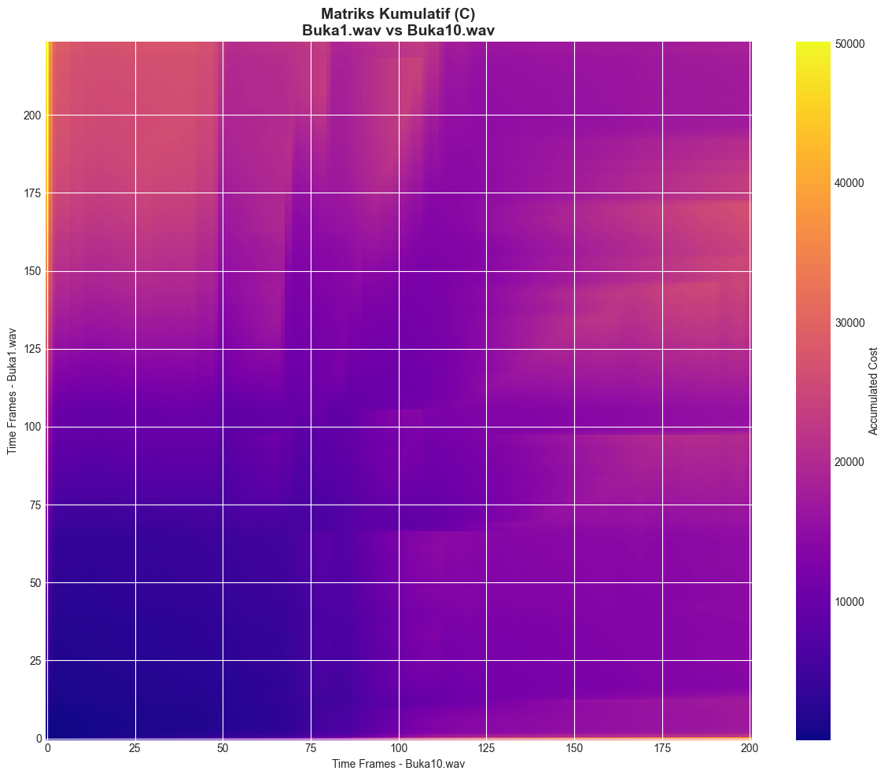
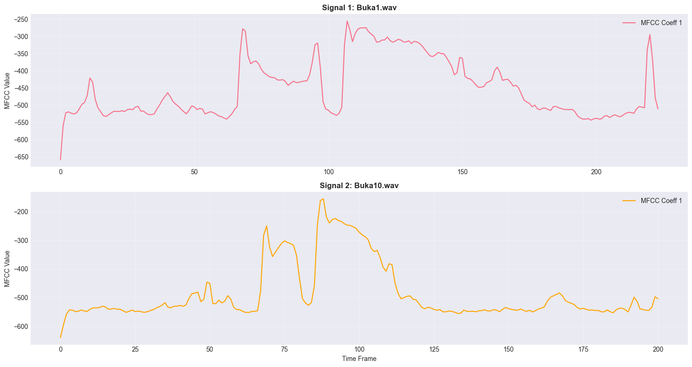

Analisis Dynamic Time Warping (DTW) pada Dataset Suara#
Notebook ini melakukan analisis DTW pada dataset suara untuk menghitung jarak antar sinyal audio dan memvisualisasikan jalur optimal alignment.
1. Import Libraries#
# Import required libraries
import numpy as np
import pandas as pd
import matplotlib.pyplot as plt
import seaborn as sns
import librosa
import librosa.display
import os
from scipy.spatial.distance import euclidean, cdist
import warnings
warnings.filterwarnings('ignore')
# Set plotting style
plt.style.use('seaborn-v0_8-darkgrid')
sns.set_palette('husl')
plt.rcParams['figure.figsize'] = (14, 6)
plt.rcParams['font.size'] = 10
print('✓ Libraries imported successfully!')
---------------------------------------------------------------------------
ValueError Traceback (most recent call last)
Cell In[1], line 3
1 # Import required libraries
2 import numpy as np
----> 3 import pandas as pd
4 import matplotlib.pyplot as plt
5 import seaborn as sns
File C:\laragon\bin\python\python-3.10\lib\site-packages\pandas\__init__.py:22
19 del _hard_dependencies, _dependency, _missing_dependencies
21 # numpy compat
---> 22 from pandas.compat import is_numpy_dev as _is_numpy_dev # pyright: ignore # noqa:F401
24 try:
25 from pandas._libs import hashtable as _hashtable, lib as _lib, tslib as _tslib
File C:\laragon\bin\python\python-3.10\lib\site-packages\pandas\compat\__init__.py:25
17 from pandas.compat._constants import (
18 IS64,
19 PY39,
(...)
22 PYPY,
23 )
24 import pandas.compat.compressors
---> 25 from pandas.compat.numpy import (
26 is_numpy_dev,
27 np_version_under1p21,
28 )
29 from pandas.compat.pyarrow import (
30 pa_version_under7p0,
31 pa_version_under8p0,
32 pa_version_under9p0,
33 pa_version_under11p0,
34 )
37 def set_function_name(f: F, name: str, cls) -> F:
File C:\laragon\bin\python\python-3.10\lib\site-packages\pandas\compat\numpy\__init__.py:4
1 """ support numpy compatibility across versions """
2 import numpy as np
----> 4 from pandas.util.version import Version
6 # numpy versioning
7 _np_version = np.__version__
File C:\laragon\bin\python\python-3.10\lib\site-packages\pandas\util\__init__.py:2
1 # pyright: reportUnusedImport = false
----> 2 from pandas.util._decorators import ( # noqa:F401
3 Appender,
4 Substitution,
5 cache_readonly,
6 )
8 from pandas.core.util.hashing import ( # noqa:F401
9 hash_array,
10 hash_pandas_object,
11 )
File C:\laragon\bin\python\python-3.10\lib\site-packages\pandas\util\_decorators.py:14
6 from typing import (
7 Any,
8 Callable,
9 Mapping,
10 cast,
11 )
12 import warnings
---> 14 from pandas._libs.properties import cache_readonly
15 from pandas._typing import (
16 F,
17 T,
18 )
19 from pandas.util._exceptions import find_stack_level
File C:\laragon\bin\python\python-3.10\lib\site-packages\pandas\_libs\__init__.py:13
1 __all__ = [
2 "NaT",
3 "NaTType",
(...)
9 "Interval",
10 ]
---> 13 from pandas._libs.interval import Interval
14 from pandas._libs.tslibs import (
15 NaT,
16 NaTType,
(...)
21 iNaT,
22 )
File C:\laragon\bin\python\python-3.10\lib\site-packages\pandas\_libs\interval.pyx:1, in init pandas._libs.interval()
ValueError: numpy.dtype size changed, may indicate binary incompatibility. Expected 96 from C header, got 88 from PyObject
2. Load Dataset Audio#
# Path dataset
DATASET_PATH = r"c:\Users\achma\OneDrive\Documents\1Semester 5\PSD\speaker_datasets"
# Load semua file audio
audio_files = []
audio_signals = []
sample_rates = []
print(f"Loading audio files from: {DATASET_PATH}\n")
# Cari semua file .wav
for root, dirs, files in os.walk(DATASET_PATH):
for file in files:
if file.endswith('.wav'):
file_path = os.path.join(root, file)
try:
# Load audio file
y, sr = librosa.load(file_path, sr=None)
audio_files.append(file)
audio_signals.append(y)
sample_rates.append(sr)
print(f"✓ Loaded: {file} | Length: {len(y)} samples | SR: {sr} Hz")
except Exception as e:
print(f"✗ Error loading {file}: {str(e)}")
print(f"\nTotal files loaded: {len(audio_files)}")
Loading audio files from: c:\Users\achma\OneDrive\Documents\1Semester 5\PSD\speaker_datasets
✓ Loaded: Buka1.wav | Length: 114240 samples | SR: 48000 Hz
✓ Loaded: Buka10.wav | Length: 102720 samples | SR: 48000 Hz
✓ Loaded: Buka11.wav | Length: 142080 samples | SR: 48000 Hz
✓ Loaded: Buka12.wav | Length: 128640 samples | SR: 48000 Hz
✓ Loaded: Buka13.wav | Length: 122880 samples | SR: 48000 Hz
✓ Loaded: Buka14.wav | Length: 134400 samples | SR: 48000 Hz
✓ Loaded: Buka15.wav | Length: 122880 samples | SR: 48000 Hz
✓ Loaded: Buka16.wav | Length: 149760 samples | SR: 48000 Hz
✓ Loaded: Buka17.wav | Length: 115200 samples | SR: 48000 Hz
✓ Loaded: Buka18.wav | Length: 130560 samples | SR: 48000 Hz
✓ Loaded: Buka19.wav | Length: 151680 samples | SR: 48000 Hz
✓ Loaded: Buka2.wav | Length: 133440 samples | SR: 48000 Hz
✓ Loaded: Buka20.wav | Length: 118080 samples | SR: 48000 Hz
✓ Loaded: Buka21.wav | Length: 129600 samples | SR: 48000 Hz
✓ Loaded: Buka22.wav | Length: 115200 samples | SR: 48000 Hz
✓ Loaded: Buka23.wav | Length: 122880 samples | SR: 48000 Hz
✓ Loaded: Buka24.wav | Length: 128640 samples | SR: 48000 Hz
✓ Loaded: Buka25.wav | Length: 147840 samples | SR: 48000 Hz
✓ Loaded: Buka26.wav | Length: 125760 samples | SR: 48000 Hz
✓ Loaded: Buka27.wav | Length: 112320 samples | SR: 48000 Hz
✓ Loaded: Buka28.wav | Length: 130560 samples | SR: 48000 Hz
✓ Loaded: Buka29.wav | Length: 108480 samples | SR: 48000 Hz
✓ Loaded: Buka3.wav | Length: 136320 samples | SR: 48000 Hz
✓ Loaded: Buka30.wav | Length: 119040 samples | SR: 48000 Hz
✓ Loaded: Buka31.wav | Length: 145920 samples | SR: 48000 Hz
✓ Loaded: Buka32.wav | Length: 126720 samples | SR: 48000 Hz
✓ Loaded: Buka33.wav | Length: 127680 samples | SR: 48000 Hz
✓ Loaded: Buka34.wav | Length: 134400 samples | SR: 48000 Hz
✓ Loaded: Buka35.wav | Length: 101760 samples | SR: 48000 Hz
✓ Loaded: Buka36.wav | Length: 109440 samples | SR: 48000 Hz
✓ Loaded: Buka37.wav | Length: 112320 samples | SR: 48000 Hz
✓ Loaded: Buka39.wav | Length: 125760 samples | SR: 48000 Hz
✓ Loaded: Buka4.wav | Length: 126720 samples | SR: 48000 Hz
✓ Loaded: Buka40.wav | Length: 120960 samples | SR: 48000 Hz
✓ Loaded: Buka41.wav | Length: 106560 samples | SR: 48000 Hz
✓ Loaded: Buka42.wav | Length: 112320 samples | SR: 48000 Hz
✓ Loaded: Buka43.wav | Length: 120000 samples | SR: 48000 Hz
✓ Loaded: Buka44.wav | Length: 115200 samples | SR: 48000 Hz
✓ Loaded: Buka45.wav | Length: 168960 samples | SR: 48000 Hz
✓ Loaded: Buka46.wav | Length: 126720 samples | SR: 48000 Hz
✓ Loaded: Buka47.wav | Length: 107520 samples | SR: 48000 Hz
✓ Loaded: Buka48.wav | Length: 128640 samples | SR: 48000 Hz
✓ Loaded: Buka49.wav | Length: 115200 samples | SR: 48000 Hz
✓ Loaded: Buka5.wav | Length: 163200 samples | SR: 48000 Hz
✓ Loaded: Buka50.wav | Length: 117120 samples | SR: 48000 Hz
✓ Loaded: Buka6.wav | Length: 144000 samples | SR: 48000 Hz
✓ Loaded: Buka7.wav | Length: 122880 samples | SR: 48000 Hz
✓ Loaded: Buka8.wav | Length: 149760 samples | SR: 48000 Hz
✓ Loaded: Buka9.wav | Length: 160320 samples | SR: 48000 Hz
✓ Loaded: Tutup1.wav | Length: 120960 samples | SR: 48000 Hz
✓ Loaded: Tutup10.wav | Length: 124800 samples | SR: 48000 Hz
✓ Loaded: Tutup11.wav | Length: 102720 samples | SR: 48000 Hz
✓ Loaded: Tutup12.wav | Length: 107520 samples | SR: 48000 Hz
✓ Loaded: Tutup13.wav | Length: 99840 samples | SR: 48000 Hz
✓ Loaded: Tutup14.wav | Length: 112320 samples | SR: 48000 Hz
✓ Loaded: Tutup15.wav | Length: 108480 samples | SR: 48000 Hz
✓ Loaded: Tutup16.wav | Length: 105600 samples | SR: 48000 Hz
✓ Loaded: Tutup17.wav | Length: 113280 samples | SR: 48000 Hz
✓ Loaded: Tutup18.wav | Length: 113280 samples | SR: 48000 Hz
✓ Loaded: Tutup19.wav | Length: 93120 samples | SR: 48000 Hz
✓ Loaded: Tutup2.wav | Length: 110400 samples | SR: 48000 Hz
✓ Loaded: Tutup20.wav | Length: 97920 samples | SR: 48000 Hz
✓ Loaded: Tutup21.wav | Length: 93120 samples | SR: 48000 Hz
✓ Loaded: Tutup22.wav | Length: 86400 samples | SR: 48000 Hz
✓ Loaded: Tutup23.wav | Length: 92160 samples | SR: 48000 Hz
✓ Loaded: Tutup24.wav | Length: 99840 samples | SR: 48000 Hz
✓ Loaded: Tutup25.wav | Length: 114240 samples | SR: 48000 Hz
✓ Loaded: Tutup27.wav | Length: 100800 samples | SR: 48000 Hz
✓ Loaded: Tutup28.wav | Length: 114240 samples | SR: 48000 Hz
✓ Loaded: Tutup29.wav | Length: 119040 samples | SR: 48000 Hz
✓ Loaded: Tutup3.wav | Length: 107520 samples | SR: 48000 Hz
✓ Loaded: Tutup30.wav | Length: 120000 samples | SR: 48000 Hz
✓ Loaded: Tutup31.wav | Length: 93120 samples | SR: 48000 Hz
✓ Loaded: Tutup32.wav | Length: 92160 samples | SR: 48000 Hz
✓ Loaded: Tutup33.wav | Length: 109440 samples | SR: 48000 Hz
✓ Loaded: Tutup35.wav | Length: 102720 samples | SR: 48000 Hz
✓ Loaded: Tutup36.wav | Length: 98880 samples | SR: 48000 Hz
✓ Loaded: Tutup37.wav | Length: 90240 samples | SR: 48000 Hz
✓ Loaded: Tutup38.wav | Length: 100800 samples | SR: 48000 Hz
✓ Loaded: Tutup39.wav | Length: 90240 samples | SR: 48000 Hz
✓ Loaded: Tutup4.wav | Length: 105600 samples | SR: 48000 Hz
✓ Loaded: Tutup40.wav | Length: 101760 samples | SR: 48000 Hz
✓ Loaded: Tutup41.wav | Length: 99840 samples | SR: 48000 Hz
✓ Loaded: Tutup42.wav | Length: 84480 samples | SR: 48000 Hz
✓ Loaded: Tutup43.wav | Length: 103680 samples | SR: 48000 Hz
✓ Loaded: Tutup44.wav | Length: 89280 samples | SR: 48000 Hz
✓ Loaded: Tutup45.wav | Length: 78720 samples | SR: 48000 Hz
✓ Loaded: Tutup46.wav | Length: 108480 samples | SR: 48000 Hz
✓ Loaded: Tutup47.wav | Length: 112320 samples | SR: 48000 Hz
✓ Loaded: Tutup48.wav | Length: 109440 samples | SR: 48000 Hz
✓ Loaded: Tutup49.wav | Length: 99840 samples | SR: 48000 Hz
✓ Loaded: Tutup5.wav | Length: 96960 samples | SR: 48000 Hz
✓ Loaded: Tutup50.wav | Length: 113280 samples | SR: 48000 Hz
✓ Loaded: Tutup6.wav | Length: 99840 samples | SR: 48000 Hz
✓ Loaded: Tutup7.wav | Length: 98880 samples | SR: 48000 Hz
✓ Loaded: Tutup8.wav | Length: 113280 samples | SR: 48000 Hz
✓ Loaded: Tutup9.wav | Length: 99840 samples | SR: 48000 Hz
✓ Loaded: 6 Nov, 18.58.wav | Length: 92160 samples | SR: 48000 Hz
✓ Loaded: 6 Nov, 18.59(10).wav | Length: 115200 samples | SR: 48000 Hz
✓ Loaded: 6 Nov, 18.59(12).wav | Length: 107520 samples | SR: 48000 Hz
✓ Loaded: 6 Nov, 18.59(13).wav | Length: 92160 samples | SR: 48000 Hz
✓ Loaded: 6 Nov, 18.59(14).wav | Length: 92160 samples | SR: 48000 Hz
✓ Loaded: 6 Nov, 18.59(2).wav | Length: 92160 samples | SR: 48000 Hz
✓ Loaded: 6 Nov, 18.59(3).wav | Length: 107520 samples | SR: 48000 Hz
✓ Loaded: 6 Nov, 18.59(4).wav | Length: 107520 samples | SR: 48000 Hz
✓ Loaded: 6 Nov, 18.59(5).wav | Length: 122880 samples | SR: 48000 Hz
✓ Loaded: 6 Nov, 18.59(6).wav | Length: 122880 samples | SR: 48000 Hz
✓ Loaded: 6 Nov, 18.59(7).wav | Length: 107520 samples | SR: 48000 Hz
✓ Loaded: 6 Nov, 18.59(8).wav | Length: 115200 samples | SR: 48000 Hz
✓ Loaded: 6 Nov, 18.59(9).wav | Length: 115200 samples | SR: 48000 Hz
✓ Loaded: 6 Nov, 18.59.wav | Length: 92160 samples | SR: 48000 Hz
✓ Loaded: 6 Nov, 19.00(10).wav | Length: 122880 samples | SR: 48000 Hz
✓ Loaded: 6 Nov, 19.00(11).wav | Length: 115200 samples | SR: 48000 Hz
✓ Loaded: 6 Nov, 19.00(12).wav | Length: 115200 samples | SR: 48000 Hz
✓ Loaded: 6 Nov, 19.00(13).wav | Length: 115200 samples | SR: 48000 Hz
✓ Loaded: 6 Nov, 19.00(2).wav | Length: 115200 samples | SR: 48000 Hz
✓ Loaded: 6 Nov, 19.00(3).wav | Length: 115200 samples | SR: 48000 Hz
✓ Loaded: 6 Nov, 19.00(4).wav | Length: 122880 samples | SR: 48000 Hz
✓ Loaded: 6 Nov, 19.00(5).wav | Length: 115200 samples | SR: 48000 Hz
✓ Loaded: 6 Nov, 19.00(6).wav | Length: 115200 samples | SR: 48000 Hz
✓ Loaded: 6 Nov, 19.00(7).wav | Length: 115200 samples | SR: 48000 Hz
✓ Loaded: 6 Nov, 19.00(8).wav | Length: 122880 samples | SR: 48000 Hz
✓ Loaded: 6 Nov, 19.00(9).wav | Length: 122880 samples | SR: 48000 Hz
✓ Loaded: 6 Nov, 19.00.wav | Length: 122880 samples | SR: 48000 Hz
✓ Loaded: 6 Nov, 19.01(10).wav | Length: 99840 samples | SR: 48000 Hz
✓ Loaded: 6 Nov, 19.01(11).wav | Length: 92160 samples | SR: 48000 Hz
✓ Loaded: 6 Nov, 19.01(12).wav | Length: 92160 samples | SR: 48000 Hz
✓ Loaded: 6 Nov, 19.01(13).wav | Length: 99840 samples | SR: 48000 Hz
✓ Loaded: 6 Nov, 19.01(14).wav | Length: 107520 samples | SR: 48000 Hz
✓ Loaded: 6 Nov, 19.01(15).wav | Length: 92160 samples | SR: 48000 Hz
✓ Loaded: 6 Nov, 19.01(16).wav | Length: 107520 samples | SR: 48000 Hz
✓ Loaded: 6 Nov, 19.01(17).wav | Length: 115200 samples | SR: 48000 Hz
✓ Loaded: 6 Nov, 19.01(2).wav | Length: 99840 samples | SR: 48000 Hz
✓ Loaded: 6 Nov, 19.01(3).wav | Length: 107520 samples | SR: 48000 Hz
✓ Loaded: 6 Nov, 19.01(4).wav | Length: 107520 samples | SR: 48000 Hz
✓ Loaded: 6 Nov, 19.01(5).wav | Length: 107520 samples | SR: 48000 Hz
✓ Loaded: 6 Nov, 19.01(6).wav | Length: 107520 samples | SR: 48000 Hz
✓ Loaded: 6 Nov, 19.01(7).wav | Length: 122880 samples | SR: 48000 Hz
✓ Loaded: 6 Nov, 19.01(8).wav | Length: 115200 samples | SR: 48000 Hz
✓ Loaded: 6 Nov, 19.01(9).wav | Length: 99840 samples | SR: 48000 Hz
✓ Loaded: 6 Nov, 19.01.wav | Length: 115200 samples | SR: 48000 Hz
✓ Loaded: 6 Nov, 19.02(2).wav | Length: 99840 samples | SR: 48000 Hz
✓ Loaded: 6 Nov, 19.02(3).wav | Length: 99840 samples | SR: 48000 Hz
✓ Loaded: 6 Nov, 19.02(4).wav | Length: 84480 samples | SR: 48000 Hz
✓ Loaded: 6 Nov, 19.02(5).wav | Length: 115200 samples | SR: 48000 Hz
✓ Loaded: 6 Nov, 19.02.wav | Length: 122880 samples | SR: 48000 Hz
✓ Loaded: 6 Nov, 19.04(10).wav | Length: 107520 samples | SR: 48000 Hz
✓ Loaded: 6 Nov, 19.04(11).wav | Length: 122880 samples | SR: 48000 Hz
✓ Loaded: 6 Nov, 19.04(12).wav | Length: 115200 samples | SR: 48000 Hz
✓ Loaded: 6 Nov, 19.04(13).wav | Length: 115200 samples | SR: 48000 Hz
✓ Loaded: 6 Nov, 19.04.wav | Length: 115200 samples | SR: 48000 Hz
✓ Loaded: 6 Nov, 19.05(10).wav | Length: 92160 samples | SR: 48000 Hz
✓ Loaded: 6 Nov, 19.05(11).wav | Length: 84480 samples | SR: 48000 Hz
✓ Loaded: 6 Nov, 19.05(12).wav | Length: 99840 samples | SR: 48000 Hz
✓ Loaded: 6 Nov, 19.05(2).wav | Length: 115200 samples | SR: 48000 Hz
✓ Loaded: 6 Nov, 19.05(3).wav | Length: 115200 samples | SR: 48000 Hz
✓ Loaded: 6 Nov, 19.05(4).wav | Length: 107520 samples | SR: 48000 Hz
✓ Loaded: 6 Nov, 19.05(5).wav | Length: 115200 samples | SR: 48000 Hz
✓ Loaded: 6 Nov, 19.05(6).wav | Length: 107520 samples | SR: 48000 Hz
✓ Loaded: 6 Nov, 19.05(7).wav | Length: 107520 samples | SR: 48000 Hz
✓ Loaded: 6 Nov, 19.05(8).wav | Length: 122880 samples | SR: 48000 Hz
✓ Loaded: 6 Nov, 19.05(9).wav | Length: 115200 samples | SR: 48000 Hz
✓ Loaded: 6 Nov, 19.05.wav | Length: 115200 samples | SR: 48000 Hz
✓ Loaded: 6 Nov, 19.06(10).wav | Length: 115200 samples | SR: 48000 Hz
✓ Loaded: 6 Nov, 19.06(11).wav | Length: 99840 samples | SR: 48000 Hz
✓ Loaded: 6 Nov, 19.06(12).wav | Length: 122880 samples | SR: 48000 Hz
✓ Loaded: 6 Nov, 19.06(13).wav | Length: 115200 samples | SR: 48000 Hz
✓ Loaded: 6 Nov, 19.06(14).wav | Length: 99840 samples | SR: 48000 Hz
✓ Loaded: 6 Nov, 19.06(15).wav | Length: 99840 samples | SR: 48000 Hz
✓ Loaded: 6 Nov, 19.06(16).wav | Length: 92160 samples | SR: 48000 Hz
✓ Loaded: 6 Nov, 19.06(2).wav | Length: 122880 samples | SR: 48000 Hz
✓ Loaded: 6 Nov, 19.06(3).wav | Length: 115200 samples | SR: 48000 Hz
✓ Loaded: 6 Nov, 19.06(4).wav | Length: 107520 samples | SR: 48000 Hz
✓ Loaded: 6 Nov, 19.06(5).wav | Length: 115200 samples | SR: 48000 Hz
✓ Loaded: 6 Nov, 19.06(6).wav | Length: 122880 samples | SR: 48000 Hz
✓ Loaded: 6 Nov, 19.06(7).wav | Length: 107520 samples | SR: 48000 Hz
✓ Loaded: 6 Nov, 19.06(8).wav | Length: 130560 samples | SR: 48000 Hz
✓ Loaded: 6 Nov, 19.06(9).wav | Length: 99840 samples | SR: 48000 Hz
✓ Loaded: 6 Nov, 19.06.wav | Length: 99840 samples | SR: 48000 Hz
✓ Loaded: 6 Nov, 19.07(10).wav | Length: 99840 samples | SR: 48000 Hz
✓ Loaded: 6 Nov, 19.07(11).wav | Length: 99840 samples | SR: 48000 Hz
✓ Loaded: 6 Nov, 19.07(12).wav | Length: 84480 samples | SR: 48000 Hz
✓ Loaded: 6 Nov, 19.07(2).wav | Length: 115200 samples | SR: 48000 Hz
✓ Loaded: 6 Nov, 19.07(3).wav | Length: 92160 samples | SR: 48000 Hz
✓ Loaded: 6 Nov, 19.07(4).wav | Length: 107520 samples | SR: 48000 Hz
✓ Loaded: 6 Nov, 19.07(5).wav | Length: 122880 samples | SR: 48000 Hz
✓ Loaded: 6 Nov, 19.07(6).wav | Length: 99840 samples | SR: 48000 Hz
✓ Loaded: 6 Nov, 19.07(7).wav | Length: 107520 samples | SR: 48000 Hz
✓ Loaded: 6 Nov, 19.07(8).wav | Length: 107520 samples | SR: 48000 Hz
✓ Loaded: 6 Nov, 19.07(9).wav | Length: 122880 samples | SR: 48000 Hz
✓ Loaded: 6 Nov, 19.07.wav | Length: 107520 samples | SR: 48000 Hz
✓ Loaded: 6 Nov, 19.08(2).wav | Length: 99840 samples | SR: 48000 Hz
✓ Loaded: 6 Nov, 19.08(3).wav | Length: 76800 samples | SR: 48000 Hz
✓ Loaded: 6 Nov, 19.08(4).wav | Length: 99840 samples | SR: 48000 Hz
✓ Loaded: 6 Nov, 19.08(5).wav | Length: 99840 samples | SR: 48000 Hz
✓ Loaded: 6 Nov, 19.08(6).wav | Length: 99840 samples | SR: 48000 Hz
✓ Loaded: 6 Nov, 19.08.wav | Length: 84480 samples | SR: 48000 Hz
Total files loaded: 197
3. Analisis Panjang Sinyal#
# Buat dataframe untuk analisis
signal_info = pd.DataFrame({
'Filename': audio_files,
'Length (samples)': [len(sig) for sig in audio_signals],
'Duration (seconds)': [len(sig)/sr for sig, sr in zip(audio_signals, sample_rates)],
'Sample Rate (Hz)': sample_rates
})
print("\n" + "="*80)
print("INFORMASI SINYAL AUDIO")
print("="*80)
print(signal_info.to_string(index=False))
print("\n" + "="*80)
print("STATISTIK")
print("="*80)
print(signal_info.describe())
================================================================================
INFORMASI SINYAL AUDIO
================================================================================
Filename Length (samples) Duration (seconds) Sample Rate (Hz)
Buka1.wav 114240 2.38 48000
Buka10.wav 102720 2.14 48000
Buka11.wav 142080 2.96 48000
Buka12.wav 128640 2.68 48000
Buka13.wav 122880 2.56 48000
Buka14.wav 134400 2.80 48000
Buka15.wav 122880 2.56 48000
Buka16.wav 149760 3.12 48000
Buka17.wav 115200 2.40 48000
Buka18.wav 130560 2.72 48000
Buka19.wav 151680 3.16 48000
Buka2.wav 133440 2.78 48000
Buka20.wav 118080 2.46 48000
Buka21.wav 129600 2.70 48000
Buka22.wav 115200 2.40 48000
Buka23.wav 122880 2.56 48000
Buka24.wav 128640 2.68 48000
Buka25.wav 147840 3.08 48000
Buka26.wav 125760 2.62 48000
Buka27.wav 112320 2.34 48000
Buka28.wav 130560 2.72 48000
Buka29.wav 108480 2.26 48000
Buka3.wav 136320 2.84 48000
Buka30.wav 119040 2.48 48000
Buka31.wav 145920 3.04 48000
Buka32.wav 126720 2.64 48000
Buka33.wav 127680 2.66 48000
Buka34.wav 134400 2.80 48000
Buka35.wav 101760 2.12 48000
Buka36.wav 109440 2.28 48000
Buka37.wav 112320 2.34 48000
Buka39.wav 125760 2.62 48000
Buka4.wav 126720 2.64 48000
Buka40.wav 120960 2.52 48000
Buka41.wav 106560 2.22 48000
Buka42.wav 112320 2.34 48000
Buka43.wav 120000 2.50 48000
Buka44.wav 115200 2.40 48000
Buka45.wav 168960 3.52 48000
Buka46.wav 126720 2.64 48000
Buka47.wav 107520 2.24 48000
Buka48.wav 128640 2.68 48000
Buka49.wav 115200 2.40 48000
Buka5.wav 163200 3.40 48000
Buka50.wav 117120 2.44 48000
Buka6.wav 144000 3.00 48000
Buka7.wav 122880 2.56 48000
Buka8.wav 149760 3.12 48000
Buka9.wav 160320 3.34 48000
Tutup1.wav 120960 2.52 48000
Tutup10.wav 124800 2.60 48000
Tutup11.wav 102720 2.14 48000
Tutup12.wav 107520 2.24 48000
Tutup13.wav 99840 2.08 48000
Tutup14.wav 112320 2.34 48000
Tutup15.wav 108480 2.26 48000
Tutup16.wav 105600 2.20 48000
Tutup17.wav 113280 2.36 48000
Tutup18.wav 113280 2.36 48000
Tutup19.wav 93120 1.94 48000
Tutup2.wav 110400 2.30 48000
Tutup20.wav 97920 2.04 48000
Tutup21.wav 93120 1.94 48000
Tutup22.wav 86400 1.80 48000
Tutup23.wav 92160 1.92 48000
Tutup24.wav 99840 2.08 48000
Tutup25.wav 114240 2.38 48000
Tutup27.wav 100800 2.10 48000
Tutup28.wav 114240 2.38 48000
Tutup29.wav 119040 2.48 48000
Tutup3.wav 107520 2.24 48000
Tutup30.wav 120000 2.50 48000
Tutup31.wav 93120 1.94 48000
Tutup32.wav 92160 1.92 48000
Tutup33.wav 109440 2.28 48000
Tutup35.wav 102720 2.14 48000
Tutup36.wav 98880 2.06 48000
Tutup37.wav 90240 1.88 48000
Tutup38.wav 100800 2.10 48000
Tutup39.wav 90240 1.88 48000
Tutup4.wav 105600 2.20 48000
Tutup40.wav 101760 2.12 48000
Tutup41.wav 99840 2.08 48000
Tutup42.wav 84480 1.76 48000
Tutup43.wav 103680 2.16 48000
Tutup44.wav 89280 1.86 48000
Tutup45.wav 78720 1.64 48000
Tutup46.wav 108480 2.26 48000
Tutup47.wav 112320 2.34 48000
Tutup48.wav 109440 2.28 48000
Tutup49.wav 99840 2.08 48000
Tutup5.wav 96960 2.02 48000
Tutup50.wav 113280 2.36 48000
Tutup6.wav 99840 2.08 48000
Tutup7.wav 98880 2.06 48000
Tutup8.wav 113280 2.36 48000
Tutup9.wav 99840 2.08 48000
6 Nov, 18.58.wav 92160 1.92 48000
6 Nov, 18.59(10).wav 115200 2.40 48000
6 Nov, 18.59(12).wav 107520 2.24 48000
6 Nov, 18.59(13).wav 92160 1.92 48000
6 Nov, 18.59(14).wav 92160 1.92 48000
6 Nov, 18.59(2).wav 92160 1.92 48000
6 Nov, 18.59(3).wav 107520 2.24 48000
6 Nov, 18.59(4).wav 107520 2.24 48000
6 Nov, 18.59(5).wav 122880 2.56 48000
6 Nov, 18.59(6).wav 122880 2.56 48000
6 Nov, 18.59(7).wav 107520 2.24 48000
6 Nov, 18.59(8).wav 115200 2.40 48000
6 Nov, 18.59(9).wav 115200 2.40 48000
6 Nov, 18.59.wav 92160 1.92 48000
6 Nov, 19.00(10).wav 122880 2.56 48000
6 Nov, 19.00(11).wav 115200 2.40 48000
6 Nov, 19.00(12).wav 115200 2.40 48000
6 Nov, 19.00(13).wav 115200 2.40 48000
6 Nov, 19.00(2).wav 115200 2.40 48000
6 Nov, 19.00(3).wav 115200 2.40 48000
6 Nov, 19.00(4).wav 122880 2.56 48000
6 Nov, 19.00(5).wav 115200 2.40 48000
6 Nov, 19.00(6).wav 115200 2.40 48000
6 Nov, 19.00(7).wav 115200 2.40 48000
6 Nov, 19.00(8).wav 122880 2.56 48000
6 Nov, 19.00(9).wav 122880 2.56 48000
6 Nov, 19.00.wav 122880 2.56 48000
6 Nov, 19.01(10).wav 99840 2.08 48000
6 Nov, 19.01(11).wav 92160 1.92 48000
6 Nov, 19.01(12).wav 92160 1.92 48000
6 Nov, 19.01(13).wav 99840 2.08 48000
6 Nov, 19.01(14).wav 107520 2.24 48000
6 Nov, 19.01(15).wav 92160 1.92 48000
6 Nov, 19.01(16).wav 107520 2.24 48000
6 Nov, 19.01(17).wav 115200 2.40 48000
6 Nov, 19.01(2).wav 99840 2.08 48000
6 Nov, 19.01(3).wav 107520 2.24 48000
6 Nov, 19.01(4).wav 107520 2.24 48000
6 Nov, 19.01(5).wav 107520 2.24 48000
6 Nov, 19.01(6).wav 107520 2.24 48000
6 Nov, 19.01(7).wav 122880 2.56 48000
6 Nov, 19.01(8).wav 115200 2.40 48000
6 Nov, 19.01(9).wav 99840 2.08 48000
6 Nov, 19.01.wav 115200 2.40 48000
6 Nov, 19.02(2).wav 99840 2.08 48000
6 Nov, 19.02(3).wav 99840 2.08 48000
6 Nov, 19.02(4).wav 84480 1.76 48000
6 Nov, 19.02(5).wav 115200 2.40 48000
6 Nov, 19.02.wav 122880 2.56 48000
6 Nov, 19.04(10).wav 107520 2.24 48000
6 Nov, 19.04(11).wav 122880 2.56 48000
6 Nov, 19.04(12).wav 115200 2.40 48000
6 Nov, 19.04(13).wav 115200 2.40 48000
6 Nov, 19.04.wav 115200 2.40 48000
6 Nov, 19.05(10).wav 92160 1.92 48000
6 Nov, 19.05(11).wav 84480 1.76 48000
6 Nov, 19.05(12).wav 99840 2.08 48000
6 Nov, 19.05(2).wav 115200 2.40 48000
6 Nov, 19.05(3).wav 115200 2.40 48000
6 Nov, 19.05(4).wav 107520 2.24 48000
6 Nov, 19.05(5).wav 115200 2.40 48000
6 Nov, 19.05(6).wav 107520 2.24 48000
6 Nov, 19.05(7).wav 107520 2.24 48000
6 Nov, 19.05(8).wav 122880 2.56 48000
6 Nov, 19.05(9).wav 115200 2.40 48000
6 Nov, 19.05.wav 115200 2.40 48000
6 Nov, 19.06(10).wav 115200 2.40 48000
6 Nov, 19.06(11).wav 99840 2.08 48000
6 Nov, 19.06(12).wav 122880 2.56 48000
6 Nov, 19.06(13).wav 115200 2.40 48000
6 Nov, 19.06(14).wav 99840 2.08 48000
6 Nov, 19.06(15).wav 99840 2.08 48000
6 Nov, 19.06(16).wav 92160 1.92 48000
6 Nov, 19.06(2).wav 122880 2.56 48000
6 Nov, 19.06(3).wav 115200 2.40 48000
6 Nov, 19.06(4).wav 107520 2.24 48000
6 Nov, 19.06(5).wav 115200 2.40 48000
6 Nov, 19.06(6).wav 122880 2.56 48000
6 Nov, 19.06(7).wav 107520 2.24 48000
6 Nov, 19.06(8).wav 130560 2.72 48000
6 Nov, 19.06(9).wav 99840 2.08 48000
6 Nov, 19.06.wav 99840 2.08 48000
6 Nov, 19.07(10).wav 99840 2.08 48000
6 Nov, 19.07(11).wav 99840 2.08 48000
6 Nov, 19.07(12).wav 84480 1.76 48000
6 Nov, 19.07(2).wav 115200 2.40 48000
6 Nov, 19.07(3).wav 92160 1.92 48000
6 Nov, 19.07(4).wav 107520 2.24 48000
6 Nov, 19.07(5).wav 122880 2.56 48000
6 Nov, 19.07(6).wav 99840 2.08 48000
6 Nov, 19.07(7).wav 107520 2.24 48000
6 Nov, 19.07(8).wav 107520 2.24 48000
6 Nov, 19.07(9).wav 122880 2.56 48000
6 Nov, 19.07.wav 107520 2.24 48000
6 Nov, 19.08(2).wav 99840 2.08 48000
6 Nov, 19.08(3).wav 76800 1.60 48000
6 Nov, 19.08(4).wav 99840 2.08 48000
6 Nov, 19.08(5).wav 99840 2.08 48000
6 Nov, 19.08(6).wav 99840 2.08 48000
6 Nov, 19.08.wav 84480 1.76 48000
================================================================================
STATISTIK
================================================================================
Length (samples) Duration (seconds) Sample Rate (Hz)
count 197.000000 197.000000 197.0
mean 111584.162437 2.324670 48000.0
std 15339.055958 0.319564 0.0
min 76800.000000 1.600000 48000.0
25% 99840.000000 2.080000 48000.0
50% 112320.000000 2.340000 48000.0
75% 120960.000000 2.520000 48000.0
max 168960.000000 3.520000 48000.0
4. Visualisasi Sinyal Audio (Plot Garis)#
top_n = 3
n_signals = min(len(audio_signals), top_n)
fig, axes = plt.subplots(n_signals, 1, figsize=(15, 3*n_signals))
if n_signals == 1:
axes = [axes]
for idx, (signal, filename, sr) in enumerate(zip(audio_signals[:top_n], audio_files[:top_n], sample_rates[:top_n])):
time = np.arange(len(signal)) / sr
axes[idx].plot(time, signal, linewidth=0.5, alpha=0.8)
axes[idx].set_title(f'Sinyal Audio: {filename}', fontweight='bold', fontsize=12)
axes[idx].set_xlabel('Time seconds')
axes[idx].set_ylabel('Amplitude')
axes[idx].grid(True, alpha=0.3)
axes[idx].set_xlim(0, max(time))
plt.tight_layout()
plt.savefig('01_audio_signals_top5.png', dpi=300, bbox_inches='tight')
plt.show()
print("Visualisasi lima sinyal audio selesai")

Visualisasi lima sinyal audio selesai
5. Ekstraksi Fitur MFCC#
# Ekstrak MFCC untuk setiap sinyal
mfcc_features = []
n_mfcc = 13 # Jumlah koefisien MFCC
print("Extracting MFCC features...\n")
for idx, (signal, filename, sr) in enumerate(zip(audio_signals, audio_files, sample_rates)):
# Ekstrak MFCC
mfcc = librosa.feature.mfcc(y=signal, sr=sr, n_mfcc=n_mfcc)
# Transpose agar shape menjadi (time_frames, n_mfcc)
mfcc = mfcc.T
mfcc_features.append(mfcc)
print(f"✓ {filename}: MFCC shape = {mfcc.shape}")
print(f"\n✓ MFCC extraction complete! Using {n_mfcc} coefficients.")
Extracting MFCC features...
✓ Buka1.wav: MFCC shape = (224, 13)
✓ Buka10.wav: MFCC shape = (201, 13)
✓ Buka11.wav: MFCC shape = (278, 13)
✓ Buka12.wav: MFCC shape = (252, 13)
✓ Buka13.wav: MFCC shape = (241, 13)
✓ Buka14.wav: MFCC shape = (263, 13)
✓ Buka15.wav: MFCC shape = (241, 13)
✓ Buka16.wav: MFCC shape = (293, 13)
✓ Buka17.wav: MFCC shape = (226, 13)
✓ Buka18.wav: MFCC shape = (256, 13)
✓ Buka19.wav: MFCC shape = (297, 13)
✓ Buka2.wav: MFCC shape = (261, 13)
✓ Buka20.wav: MFCC shape = (231, 13)
✓ Buka21.wav: MFCC shape = (254, 13)
✓ Buka22.wav: MFCC shape = (226, 13)
✓ Buka23.wav: MFCC shape = (241, 13)
✓ Buka24.wav: MFCC shape = (252, 13)
✓ Buka25.wav: MFCC shape = (289, 13)
✓ Buka26.wav: MFCC shape = (246, 13)
✓ Buka27.wav: MFCC shape = (220, 13)
✓ Buka28.wav: MFCC shape = (256, 13)
✓ Buka29.wav: MFCC shape = (212, 13)
✓ Buka3.wav: MFCC shape = (267, 13)
✓ Buka30.wav: MFCC shape = (233, 13)
✓ Buka31.wav: MFCC shape = (286, 13)
✓ Buka32.wav: MFCC shape = (248, 13)
✓ Buka33.wav: MFCC shape = (250, 13)
✓ Buka34.wav: MFCC shape = (263, 13)
✓ Buka35.wav: MFCC shape = (199, 13)
✓ Buka36.wav: MFCC shape = (214, 13)
✓ Buka37.wav: MFCC shape = (220, 13)
✓ Buka39.wav: MFCC shape = (246, 13)
✓ Buka4.wav: MFCC shape = (248, 13)
✓ Buka40.wav: MFCC shape = (237, 13)
✓ Buka41.wav: MFCC shape = (209, 13)
✓ Buka42.wav: MFCC shape = (220, 13)
✓ Buka43.wav: MFCC shape = (235, 13)
✓ Buka44.wav: MFCC shape = (226, 13)
✓ Buka45.wav: MFCC shape = (331, 13)
✓ Buka46.wav: MFCC shape = (248, 13)
✓ Buka47.wav: MFCC shape = (211, 13)
✓ Buka48.wav: MFCC shape = (252, 13)
✓ Buka49.wav: MFCC shape = (226, 13)
✓ Buka5.wav: MFCC shape = (319, 13)
✓ Buka50.wav: MFCC shape = (229, 13)
✓ Buka6.wav: MFCC shape = (282, 13)
✓ Buka7.wav: MFCC shape = (241, 13)
✓ Buka8.wav: MFCC shape = (293, 13)
✓ Buka9.wav: MFCC shape = (314, 13)
✓ Tutup1.wav: MFCC shape = (237, 13)
✓ Tutup10.wav: MFCC shape = (244, 13)
✓ Tutup11.wav: MFCC shape = (201, 13)
✓ Tutup12.wav: MFCC shape = (211, 13)
✓ Tutup13.wav: MFCC shape = (196, 13)
✓ Tutup14.wav: MFCC shape = (220, 13)
✓ Tutup15.wav: MFCC shape = (212, 13)
✓ Tutup16.wav: MFCC shape = (207, 13)
✓ Tutup17.wav: MFCC shape = (222, 13)
✓ Tutup18.wav: MFCC shape = (222, 13)
✓ Tutup19.wav: MFCC shape = (182, 13)
✓ Tutup2.wav: MFCC shape = (216, 13)
✓ Tutup20.wav: MFCC shape = (192, 13)
✓ Tutup21.wav: MFCC shape = (182, 13)
✓ Tutup22.wav: MFCC shape = (169, 13)
✓ Tutup23.wav: MFCC shape = (181, 13)
✓ Tutup24.wav: MFCC shape = (196, 13)
✓ Tutup25.wav: MFCC shape = (224, 13)
✓ Tutup27.wav: MFCC shape = (197, 13)
✓ Tutup28.wav: MFCC shape = (224, 13)
✓ Tutup29.wav: MFCC shape = (233, 13)
✓ Tutup3.wav: MFCC shape = (211, 13)
✓ Tutup30.wav: MFCC shape = (235, 13)
✓ Tutup31.wav: MFCC shape = (182, 13)
✓ Tutup32.wav: MFCC shape = (181, 13)
✓ Tutup33.wav: MFCC shape = (214, 13)
✓ Tutup35.wav: MFCC shape = (201, 13)
✓ Tutup36.wav: MFCC shape = (194, 13)
✓ Tutup37.wav: MFCC shape = (177, 13)
✓ Tutup38.wav: MFCC shape = (197, 13)
✓ Tutup39.wav: MFCC shape = (177, 13)
✓ Tutup4.wav: MFCC shape = (207, 13)
✓ Tutup40.wav: MFCC shape = (199, 13)
✓ Tutup41.wav: MFCC shape = (196, 13)
✓ Tutup42.wav: MFCC shape = (166, 13)
✓ Tutup43.wav: MFCC shape = (203, 13)
✓ Tutup44.wav: MFCC shape = (175, 13)
✓ Tutup45.wav: MFCC shape = (154, 13)
✓ Tutup46.wav: MFCC shape = (212, 13)
✓ Tutup47.wav: MFCC shape = (220, 13)
✓ Tutup48.wav: MFCC shape = (214, 13)
✓ Tutup49.wav: MFCC shape = (196, 13)
✓ Tutup5.wav: MFCC shape = (190, 13)
✓ Tutup50.wav: MFCC shape = (222, 13)
✓ Tutup6.wav: MFCC shape = (196, 13)
✓ Tutup7.wav: MFCC shape = (194, 13)
✓ Tutup8.wav: MFCC shape = (222, 13)
✓ Tutup9.wav: MFCC shape = (196, 13)
✓ 6 Nov, 18.58.wav: MFCC shape = (181, 13)
✓ 6 Nov, 18.59(10).wav: MFCC shape = (226, 13)
✓ 6 Nov, 18.59(12).wav: MFCC shape = (211, 13)
✓ 6 Nov, 18.59(13).wav: MFCC shape = (181, 13)
✓ 6 Nov, 18.59(14).wav: MFCC shape = (181, 13)
✓ 6 Nov, 18.59(2).wav: MFCC shape = (181, 13)
✓ 6 Nov, 18.59(3).wav: MFCC shape = (211, 13)
✓ 6 Nov, 18.59(4).wav: MFCC shape = (211, 13)
✓ 6 Nov, 18.59(5).wav: MFCC shape = (241, 13)
✓ 6 Nov, 18.59(6).wav: MFCC shape = (241, 13)
✓ 6 Nov, 18.59(7).wav: MFCC shape = (211, 13)
✓ 6 Nov, 18.59(8).wav: MFCC shape = (226, 13)
✓ 6 Nov, 18.59(9).wav: MFCC shape = (226, 13)
✓ 6 Nov, 18.59.wav: MFCC shape = (181, 13)
✓ 6 Nov, 19.00(10).wav: MFCC shape = (241, 13)
✓ 6 Nov, 19.00(11).wav: MFCC shape = (226, 13)
✓ 6 Nov, 19.00(12).wav: MFCC shape = (226, 13)
✓ 6 Nov, 19.00(13).wav: MFCC shape = (226, 13)
✓ 6 Nov, 19.00(2).wav: MFCC shape = (226, 13)
✓ 6 Nov, 19.00(3).wav: MFCC shape = (226, 13)
✓ 6 Nov, 19.00(4).wav: MFCC shape = (241, 13)
✓ 6 Nov, 19.00(5).wav: MFCC shape = (226, 13)
✓ 6 Nov, 19.00(6).wav: MFCC shape = (226, 13)
✓ 6 Nov, 19.00(7).wav: MFCC shape = (226, 13)
✓ 6 Nov, 19.00(8).wav: MFCC shape = (241, 13)
✓ 6 Nov, 19.00(9).wav: MFCC shape = (241, 13)
✓ 6 Nov, 19.00.wav: MFCC shape = (241, 13)
✓ 6 Nov, 19.01(10).wav: MFCC shape = (196, 13)
✓ 6 Nov, 19.01(11).wav: MFCC shape = (181, 13)
✓ 6 Nov, 19.01(12).wav: MFCC shape = (181, 13)
✓ 6 Nov, 19.01(13).wav: MFCC shape = (196, 13)
✓ 6 Nov, 19.01(14).wav: MFCC shape = (211, 13)
✓ 6 Nov, 19.01(15).wav: MFCC shape = (181, 13)
✓ 6 Nov, 19.01(16).wav: MFCC shape = (211, 13)
✓ 6 Nov, 19.01(17).wav: MFCC shape = (226, 13)
✓ 6 Nov, 19.01(2).wav: MFCC shape = (196, 13)
✓ 6 Nov, 19.01(3).wav: MFCC shape = (211, 13)
✓ 6 Nov, 19.01(4).wav: MFCC shape = (211, 13)
✓ 6 Nov, 19.01(5).wav: MFCC shape = (211, 13)
✓ 6 Nov, 19.01(6).wav: MFCC shape = (211, 13)
✓ 6 Nov, 19.01(7).wav: MFCC shape = (241, 13)
✓ 6 Nov, 19.01(8).wav: MFCC shape = (226, 13)
✓ 6 Nov, 19.01(9).wav: MFCC shape = (196, 13)
✓ 6 Nov, 19.01.wav: MFCC shape = (226, 13)
✓ 6 Nov, 19.02(2).wav: MFCC shape = (196, 13)
✓ 6 Nov, 19.02(3).wav: MFCC shape = (196, 13)
✓ 6 Nov, 19.02(4).wav: MFCC shape = (166, 13)
✓ 6 Nov, 19.02(5).wav: MFCC shape = (226, 13)
✓ 6 Nov, 19.02.wav: MFCC shape = (241, 13)
✓ 6 Nov, 19.04(10).wav: MFCC shape = (211, 13)
✓ 6 Nov, 19.04(11).wav: MFCC shape = (241, 13)
✓ 6 Nov, 19.04(12).wav: MFCC shape = (226, 13)
✓ 6 Nov, 19.04(13).wav: MFCC shape = (226, 13)
✓ 6 Nov, 19.04.wav: MFCC shape = (226, 13)
✓ 6 Nov, 19.05(10).wav: MFCC shape = (181, 13)
✓ 6 Nov, 19.05(11).wav: MFCC shape = (166, 13)
✓ 6 Nov, 19.05(12).wav: MFCC shape = (196, 13)
✓ 6 Nov, 19.05(2).wav: MFCC shape = (226, 13)
✓ 6 Nov, 19.05(3).wav: MFCC shape = (226, 13)
✓ 6 Nov, 19.05(4).wav: MFCC shape = (211, 13)
✓ 6 Nov, 19.05(5).wav: MFCC shape = (226, 13)
✓ 6 Nov, 19.05(6).wav: MFCC shape = (211, 13)
✓ 6 Nov, 19.05(7).wav: MFCC shape = (211, 13)
✓ 6 Nov, 19.05(8).wav: MFCC shape = (241, 13)
✓ 6 Nov, 19.05(9).wav: MFCC shape = (226, 13)
✓ 6 Nov, 19.05.wav: MFCC shape = (226, 13)
✓ 6 Nov, 19.06(10).wav: MFCC shape = (226, 13)
✓ 6 Nov, 19.06(11).wav: MFCC shape = (196, 13)
✓ 6 Nov, 19.06(12).wav: MFCC shape = (241, 13)
✓ 6 Nov, 19.06(13).wav: MFCC shape = (226, 13)
✓ 6 Nov, 19.06(14).wav: MFCC shape = (196, 13)
✓ 6 Nov, 19.06(15).wav: MFCC shape = (196, 13)
✓ 6 Nov, 19.06(16).wav: MFCC shape = (181, 13)
✓ 6 Nov, 19.06(2).wav: MFCC shape = (241, 13)
✓ 6 Nov, 19.06(3).wav: MFCC shape = (226, 13)
✓ 6 Nov, 19.06(4).wav: MFCC shape = (211, 13)
✓ 6 Nov, 19.06(5).wav: MFCC shape = (226, 13)
✓ 6 Nov, 19.06(6).wav: MFCC shape = (241, 13)
✓ 6 Nov, 19.06(7).wav: MFCC shape = (211, 13)
✓ 6 Nov, 19.06(8).wav: MFCC shape = (256, 13)
✓ 6 Nov, 19.06(9).wav: MFCC shape = (196, 13)
✓ 6 Nov, 19.06.wav: MFCC shape = (196, 13)
✓ 6 Nov, 19.07(10).wav: MFCC shape = (196, 13)
✓ 6 Nov, 19.07(11).wav: MFCC shape = (196, 13)
✓ 6 Nov, 19.07(12).wav: MFCC shape = (166, 13)
✓ 6 Nov, 19.07(2).wav: MFCC shape = (226, 13)
✓ 6 Nov, 19.07(3).wav: MFCC shape = (181, 13)
✓ 6 Nov, 19.07(4).wav: MFCC shape = (211, 13)
✓ 6 Nov, 19.07(5).wav: MFCC shape = (241, 13)
✓ 6 Nov, 19.07(6).wav: MFCC shape = (196, 13)
✓ 6 Nov, 19.07(7).wav: MFCC shape = (211, 13)
✓ 6 Nov, 19.07(8).wav: MFCC shape = (211, 13)
✓ 6 Nov, 19.07(9).wav: MFCC shape = (241, 13)
✓ 6 Nov, 19.07.wav: MFCC shape = (211, 13)
✓ 6 Nov, 19.08(2).wav: MFCC shape = (196, 13)
✓ 6 Nov, 19.08(3).wav: MFCC shape = (151, 13)
✓ 6 Nov, 19.08(4).wav: MFCC shape = (196, 13)
✓ 6 Nov, 19.08(5).wav: MFCC shape = (196, 13)
✓ 6 Nov, 19.08(6).wav: MFCC shape = (196, 13)
✓ 6 Nov, 19.08.wav: MFCC shape = (166, 13)
✓ MFCC extraction complete! Using 13 coefficients.
6. Visualisasi MFCC#
# Visualisasi MFCC untuk setiap sinyal (hanya plotting n_signals teratas)
fig, axes = plt.subplots(n_signals, 1, figsize=(15, 4*n_signals))
if n_signals == 1:
axes = [axes]
for idx, (mfcc, filename, sr) in enumerate(zip(mfcc_features[:n_signals], audio_files[:n_signals], sample_rates[:n_signals])):
img = librosa.display.specshow(mfcc.T, x_axis='time', sr=sr, ax=axes[idx], cmap='coolwarm')
axes[idx].set_title(f'MFCC: {filename}', fontweight='bold', fontsize=12)
axes[idx].set_ylabel('MFCC Coefficients')
fig.colorbar(img, ax=axes[idx], format='%+2.0f')
plt.tight_layout()
plt.savefig('02_mfcc_features.png', dpi=300, bbox_inches='tight')
plt.show()
print("✓ Visualisasi MFCC selesai!")

✓ Visualisasi MFCC selesai!
7. Perhitungan DTW - Matriks Jarak (M) dan Matriks Kumulatif (C)#
# Pilih dua sinyal pertama untuk analisis DTW detail
if len(mfcc_features) >= 2:
signal1 = mfcc_features[0]
signal2 = mfcc_features[1]
name1 = audio_files[0]
name2 = audio_files[1]
else:
# Jika hanya 1 sinyal, bandingkan dengan versi yang di-downsample
signal1 = mfcc_features[0]
signal2 = mfcc_features[0][::2] # Ambil setiap 2 frame
name1 = audio_files[0]
name2 = audio_files[0] + " (downsampled)"
print(f"\nPerbandingan DTW antara:")
print(f" Signal 1: {name1} (shape: {signal1.shape})")
print(f" Signal 2: {name2} (shape: {signal2.shape})")
print("\nComputing DTW...")
Perbandingan DTW antara:
Signal 1: Buka1.wav (shape: (224, 13))
Signal 2: Buka10.wav (shape: (201, 13))
Computing DTW...
# Install dtw-python if not already installed
%pip install dtw-python
# Hitung DTW menggunakan dtw-python library
# Library ini mengembalikan distance, cost_matrix, accumulated_cost_matrix, dan path
from dtw import dtw
# Hitung DTW dengan euclidean distance
alignment = dtw(signal1, signal2, keep_internals=True)
dtw_distance = alignment.distance
cost_matrix = alignment.costMatrix # Matriks jarak M
accumulated_cost = alignment.costMatrix # Matriks kumulatif C
path = list(zip(alignment.index1, alignment.index2)) # Path optimal
print(f"\n✓ DTW Distance: {dtw_distance:.4f}")
print(f"✓ Cost Matrix shape: {cost_matrix.shape}")
print(f"✓ Path length: {len(path)} steps")
Requirement already satisfied: dtw-python in c:\users\achma\anaconda3\envs\pycaret310\lib\site-packages (1.7.2)
Collecting numpy>=2.0 (from dtw-python)
Using cached numpy-2.2.6-cp310-cp310-win_amd64.whl.metadata (60 kB)
Requirement already satisfied: scipy in c:\users\achma\anaconda3\envs\pycaret310\lib\site-packages (from dtw-python) (1.15.3)
Using cached numpy-2.2.6-cp310-cp310-win_amd64.whl (12.9 MB)
Installing collected packages: numpy
Attempting uninstall: numpy
Found existing installation: numpy 1.26.4
Note: you may need to restart the kernel to use updated packages.
✓ DTW Distance: 18668.1896
✓ Cost Matrix shape: (224, 201)
✓ Path length: 389 steps
WARNING: Ignoring invalid distribution -cikit-learn (c:\users\achma\appdata\roaming\python\python310\site-packages)
WARNING: Ignoring invalid distribution -cikit-learn (c:\users\achma\appdata\roaming\python\python310\site-packages)
WARNING: Ignoring invalid distribution -cikit-learn (c:\users\achma\appdata\roaming\python\python310\site-packages)
WARNING: Error parsing dependencies of numpy: [Errno 2] No such file or directory: 'c:\\users\\achma\\anaconda3\\envs\\pycaret310\\lib\\site-packages\\numpy-1.26.4.dist-info\\METADATA'
WARNING: Ignoring invalid distribution -cikit-learn (c:\users\achma\appdata\roaming\python\python310\site-packages)
WARNING: No metadata found in c:\users\achma\anaconda3\envs\pycaret310\lib\site-packages
WARNING: Ignoring invalid distribution -cikit-learn (c:\users\achma\appdata\roaming\python\python310\site-packages)
WARNING: Ignoring invalid distribution -cikit-learn (c:\users\achma\appdata\roaming\python\python310\site-packages)
error: uninstall-no-record-file
× Cannot uninstall numpy 1.26.4
╰─> The package's contents are unknown: no RECORD file was found for numpy.
hint: You might be able to recover from this via: pip install --force-reinstall --no-deps numpy==1.26.4
8. Visualisasi Matriks Jarak (M)#
# Hitung matriks jarak Euclidean
from scipy.spatial.distance import cdist
distance_matrix = cdist(signal1, signal2, metric='euclidean')
# Plot matriks jarak M
plt.figure(figsize=(12, 10))
plt.imshow(distance_matrix, cmap='viridis', aspect='auto', origin='lower', interpolation='nearest')
plt.colorbar(label='Euclidean Distance')
plt.title(f'Matriks Jarak (M)\n{name1} vs {name2}', fontweight='bold', fontsize=14)
plt.xlabel(f'Time Frames - {name2}')
plt.ylabel(f'Time Frames - {name1}')
plt.tight_layout()
plt.savefig('03_distance_matrix.png', dpi=300, bbox_inches='tight')
plt.show()
print(f"✓ Matriks Jarak shape: {distance_matrix.shape}")
print(f" Min distance: {distance_matrix.min():.4f}")
print(f" Max distance: {distance_matrix.max():.4f}")
print(f" Mean distance: {distance_matrix.mean():.4f}")

✓ Matriks Jarak shape: (224, 201)
Min distance: 12.6182
Max distance: 515.0220
Mean distance: 136.5805
9. Visualisasi Matriks Kumulatif (C)#
# Plot matriks kumulatif C
plt.figure(figsize=(12, 10))
plt.imshow(accumulated_cost, cmap='plasma', aspect='auto', origin='lower', interpolation='nearest')
plt.colorbar(label='Accumulated Cost')
plt.title(f'Matriks Kumulatif (C)\n{name1} vs {name2}', fontweight='bold', fontsize=14)
plt.xlabel(f'Time Frames - {name2}')
plt.ylabel(f'Time Frames - {name1}')
plt.tight_layout()
plt.savefig('04_accumulated_cost_matrix.png', dpi=300, bbox_inches='tight')
plt.show()
print(f"✓ Matriks Kumulatif shape: {accumulated_cost.shape}")
print(f" Final accumulated cost: {accumulated_cost[-1, -1]:.4f}")

✓ Matriks Kumulatif shape: (224, 201)
Final accumulated cost: 18668.1896
10. Visualisasi Jalur Optimal DTW#
# Plot jalur optimal pada matriks kumulatif
plt.figure(figsize=(14, 11))
plt.imshow(accumulated_cost, cmap='plasma', aspect='auto', origin='lower', interpolation='nearest', alpha=0.8)
plt.colorbar(label='Accumulated Cost')
# Plot path
path_array = np.array(path)
plt.plot(path_array[:, 1], path_array[:, 0], 'w-', linewidth=2.5, label='Optimal Path', alpha=0.9)
plt.plot(path_array[:, 1], path_array[:, 0], 'r.', markersize=3, alpha=0.5)
plt.title(f'Jalur Optimal DTW pada Matriks Kumulatif\n{name1} vs {name2}\nDTW Distance: {dtw_distance:.4f}',
fontweight='bold', fontsize=14)
plt.xlabel(f'Time Frames - {name2}', fontsize=12)
plt.ylabel(f'Time Frames - {name1}', fontsize=12)
plt.legend(loc='upper left', fontsize=11)
plt.grid(True, alpha=0.3, linestyle='--')
plt.tight_layout()
plt.savefig('05_dtw_optimal_path.png', dpi=300, bbox_inches='tight')
plt.show()
print(f"\n✓ Jalur optimal terdiri dari {len(path)} langkah")
print(f"✓ DTW Distance: {dtw_distance:.4f}")

✓ Jalur optimal terdiri dari 389 langkah
✓ DTW Distance: 18668.1896
11. Visualisasi Alignment Sinyal#
# Plot alignment antara dua sinyal
fig, (ax1, ax2) = plt.subplots(2, 1, figsize=(15, 8))
# Plot signal 1
ax1.plot(signal1[:, 0], label='MFCC Coeff 1', linewidth=1.5)
ax1.set_title(f'Signal 1: {name1}', fontweight='bold')
ax1.set_ylabel('MFCC Value')
ax1.legend()
ax1.grid(True, alpha=0.3)
# Plot signal 2
ax2.plot(signal2[:, 0], label='MFCC Coeff 1', linewidth=1.5, color='orange')
ax2.set_title(f'Signal 2: {name2}', fontweight='bold')
ax2.set_xlabel('Time Frame')
ax2.set_ylabel('MFCC Value')
ax2.legend()
ax2.grid(True, alpha=0.3)
plt.tight_layout()
plt.savefig('06_signal_alignment.png', dpi=300, bbox_inches='tight')
plt.show()
print("✓ Visualisasi alignment selesai!")

✓ Visualisasi alignment selesai!
12. Matriks Jarak DTW untuk Semua Pasangan Sinyal#
# Hitung DTW distance untuk semua pasangan sinyal
n_signals = len(mfcc_features)
dtw_matrix = np.zeros((n_signals, n_signals))
print("Computing DTW distances for all pairs...\n")
for i in range(n_signals):
for j in range(n_signals):
if i == j:
dtw_matrix[i, j] = 0
elif i < j:
# Hitung DTW
alignment = dtw(mfcc_features[i], mfcc_features[j])
dtw_matrix[i, j] = alignment.distance
dtw_matrix[j, i] = alignment.distance
print(f"✓ DTW({audio_files[i]}, {audio_files[j]}): {alignment.distance:.4f}")
print("\n✓ DTW matrix computation complete!")
Computing DTW distances for all pairs...
✓ DTW(Buka1.wav, Buka10.wav): 18668.1896
✓ DTW(Buka1.wav, Buka11.wav): 20872.0424
✓ DTW(Buka1.wav, Buka12.wav): 20575.1244
✓ DTW(Buka1.wav, Buka13.wav): 19359.9604
✓ DTW(Buka1.wav, Buka14.wav): 18726.5188
✓ DTW(Buka1.wav, Buka15.wav): 18047.6807
✓ DTW(Buka1.wav, Buka16.wav): 19706.0651
✓ DTW(Buka1.wav, Buka17.wav): 21440.1961
✓ DTW(Buka1.wav, Buka18.wav): 21842.0436
✓ DTW(Buka1.wav, Buka19.wav): 22155.3032
✓ DTW(Buka1.wav, Buka2.wav): 17630.6303
✓ DTW(Buka1.wav, Buka20.wav): 18274.6438
✓ DTW(Buka1.wav, Buka21.wav): 21490.4055
✓ DTW(Buka1.wav, Buka22.wav): 19806.2992
✓ DTW(Buka1.wav, Buka23.wav): 21023.8252
✓ DTW(Buka1.wav, Buka24.wav): 17956.3733
✓ DTW(Buka1.wav, Buka25.wav): 21333.7216
✓ DTW(Buka1.wav, Buka26.wav): 21873.1862
✓ DTW(Buka1.wav, Buka27.wav): 20919.6869
✓ DTW(Buka1.wav, Buka28.wav): 22885.0903
✓ DTW(Buka1.wav, Buka29.wav): 26064.3954
✓ DTW(Buka1.wav, Buka3.wav): 19726.3564
✓ DTW(Buka1.wav, Buka30.wav): 22813.1576
✓ DTW(Buka1.wav, Buka31.wav): 23214.5549
✓ DTW(Buka1.wav, Buka32.wav): 19995.1132
✓ DTW(Buka1.wav, Buka33.wav): 21004.3985
✓ DTW(Buka1.wav, Buka34.wav): 20234.1013
✓ DTW(Buka1.wav, Buka35.wav): 19250.2421
✓ DTW(Buka1.wav, Buka36.wav): 20771.6482
✓ DTW(Buka1.wav, Buka37.wav): 17922.9099
✓ DTW(Buka1.wav, Buka39.wav): 22604.1970
✓ DTW(Buka1.wav, Buka4.wav): 20219.2047
✓ DTW(Buka1.wav, Buka40.wav): 21747.4184
✓ DTW(Buka1.wav, Buka41.wav): 23124.8068
✓ DTW(Buka1.wav, Buka42.wav): 21528.8028
✓ DTW(Buka1.wav, Buka43.wav): 24006.8178
✓ DTW(Buka1.wav, Buka44.wav): 23912.8072
✓ DTW(Buka1.wav, Buka45.wav): 26669.1999
✓ DTW(Buka1.wav, Buka46.wav): 23543.2975
✓ DTW(Buka1.wav, Buka47.wav): 21424.8518
✓ DTW(Buka1.wav, Buka48.wav): 23620.7852
✓ DTW(Buka1.wav, Buka49.wav): 20846.4380
✓ DTW(Buka1.wav, Buka5.wav): 19955.6499
✓ DTW(Buka1.wav, Buka50.wav): 22685.9800
✓ DTW(Buka1.wav, Buka6.wav): 25745.9465
✓ DTW(Buka1.wav, Buka7.wav): 18724.0645
✓ DTW(Buka1.wav, Buka8.wav): 21843.3156
✓ DTW(Buka1.wav, Buka9.wav): 21510.6002
✓ DTW(Buka1.wav, Tutup1.wav): 24683.0124
✓ DTW(Buka1.wav, Tutup10.wav): 23000.9929
✓ DTW(Buka1.wav, Tutup11.wav): 22208.3770
✓ DTW(Buka1.wav, Tutup12.wav): 21397.9887
✓ DTW(Buka1.wav, Tutup13.wav): 22479.2130
✓ DTW(Buka1.wav, Tutup14.wav): 23000.6524
✓ DTW(Buka1.wav, Tutup15.wav): 23208.5672
✓ DTW(Buka1.wav, Tutup16.wav): 22264.5641
✓ DTW(Buka1.wav, Tutup17.wav): 21712.3930
✓ DTW(Buka1.wav, Tutup18.wav): 23192.1760
✓ DTW(Buka1.wav, Tutup19.wav): 21881.6780
✓ DTW(Buka1.wav, Tutup2.wav): 22363.7889
✓ DTW(Buka1.wav, Tutup20.wav): 21035.8346
✓ DTW(Buka1.wav, Tutup21.wav): 21774.5824
✓ DTW(Buka1.wav, Tutup22.wav): 22125.4439
✓ DTW(Buka1.wav, Tutup23.wav): 21787.2457
✓ DTW(Buka1.wav, Tutup24.wav): 21612.4979
✓ DTW(Buka1.wav, Tutup25.wav): 22806.0203
✓ DTW(Buka1.wav, Tutup27.wav): 22035.0971
✓ DTW(Buka1.wav, Tutup28.wav): 23641.4813
✓ DTW(Buka1.wav, Tutup29.wav): 21767.6241
✓ DTW(Buka1.wav, Tutup3.wav): 22095.2907
✓ DTW(Buka1.wav, Tutup30.wav): 23204.4951
✓ DTW(Buka1.wav, Tutup31.wav): 26224.6365
✓ DTW(Buka1.wav, Tutup32.wav): 21700.6579
✓ DTW(Buka1.wav, Tutup33.wav): 21982.0480
✓ DTW(Buka1.wav, Tutup35.wav): 21248.3506
✓ DTW(Buka1.wav, Tutup36.wav): 21629.6754
✓ DTW(Buka1.wav, Tutup37.wav): 22749.2150
✓ DTW(Buka1.wav, Tutup38.wav): 21989.5497
✓ DTW(Buka1.wav, Tutup39.wav): 22177.5821
✓ DTW(Buka1.wav, Tutup4.wav): 22772.2162
✓ DTW(Buka1.wav, Tutup40.wav): 21688.1203
✓ DTW(Buka1.wav, Tutup41.wav): 22066.2534
✓ DTW(Buka1.wav, Tutup42.wav): 21508.3101
✓ DTW(Buka1.wav, Tutup43.wav): 23115.2259
✓ DTW(Buka1.wav, Tutup44.wav): 24036.4696
✓ DTW(Buka1.wav, Tutup45.wav): 21236.3981
✓ DTW(Buka1.wav, Tutup46.wav): 22983.1409
✓ DTW(Buka1.wav, Tutup47.wav): 25570.2023
✓ DTW(Buka1.wav, Tutup48.wav): 23791.1649
✓ DTW(Buka1.wav, Tutup49.wav): 21063.3043
✓ DTW(Buka1.wav, Tutup5.wav): 22741.5154
✓ DTW(Buka1.wav, Tutup50.wav): 24640.4443
✓ DTW(Buka1.wav, Tutup6.wav): 21093.1361
✓ DTW(Buka1.wav, Tutup7.wav): 22091.4798
✓ DTW(Buka1.wav, Tutup8.wav): 22350.7801
✓ DTW(Buka1.wav, Tutup9.wav): 22277.8310
✓ DTW(Buka1.wav, 6 Nov, 18.58.wav): 28961.0657
✓ DTW(Buka1.wav, 6 Nov, 18.59(10).wav): 30477.6111
✓ DTW(Buka1.wav, 6 Nov, 18.59(12).wav): 30028.1118
✓ DTW(Buka1.wav, 6 Nov, 18.59(13).wav): 30384.9635
✓ DTW(Buka1.wav, 6 Nov, 18.59(14).wav): 30970.9868
✓ DTW(Buka1.wav, 6 Nov, 18.59(2).wav): 27438.1844
✓ DTW(Buka1.wav, 6 Nov, 18.59(3).wav): 32346.7950
✓ DTW(Buka1.wav, 6 Nov, 18.59(4).wav): 30049.5915
✓ DTW(Buka1.wav, 6 Nov, 18.59(5).wav): 32235.6620
✓ DTW(Buka1.wav, 6 Nov, 18.59(6).wav): 32678.5517
✓ DTW(Buka1.wav, 6 Nov, 18.59(7).wav): 31046.6930
✓ DTW(Buka1.wav, 6 Nov, 18.59(8).wav): 32412.2755
✓ DTW(Buka1.wav, 6 Nov, 18.59(9).wav): 31653.0030
✓ DTW(Buka1.wav, 6 Nov, 18.59.wav): 30283.8452
✓ DTW(Buka1.wav, 6 Nov, 19.00(10).wav): 33893.7438
✓ DTW(Buka1.wav, 6 Nov, 19.00(11).wav): 33669.0976
✓ DTW(Buka1.wav, 6 Nov, 19.00(12).wav): 33274.8497
✓ DTW(Buka1.wav, 6 Nov, 19.00(13).wav): 31330.4753
✓ DTW(Buka1.wav, 6 Nov, 19.00(2).wav): 32774.4787
✓ DTW(Buka1.wav, 6 Nov, 19.00(3).wav): 31849.0284
✓ DTW(Buka1.wav, 6 Nov, 19.00(4).wav): 32179.2739
✓ DTW(Buka1.wav, 6 Nov, 19.00(5).wav): 30275.8242
✓ DTW(Buka1.wav, 6 Nov, 19.00(6).wav): 33212.9188
✓ DTW(Buka1.wav, 6 Nov, 19.00(7).wav): 32679.5875
✓ DTW(Buka1.wav, 6 Nov, 19.00(8).wav): 34982.1166
✓ DTW(Buka1.wav, 6 Nov, 19.00(9).wav): 34888.6785
✓ DTW(Buka1.wav, 6 Nov, 19.00.wav): 32604.8691
✓ DTW(Buka1.wav, 6 Nov, 19.01(10).wav): 29251.4679
✓ DTW(Buka1.wav, 6 Nov, 19.01(11).wav): 30451.4160
✓ DTW(Buka1.wav, 6 Nov, 19.01(12).wav): 30939.1774
✓ DTW(Buka1.wav, 6 Nov, 19.01(13).wav): 30467.9299
✓ DTW(Buka1.wav, 6 Nov, 19.01(14).wav): 31439.4359
✓ DTW(Buka1.wav, 6 Nov, 19.01(15).wav): 28816.2956
✓ DTW(Buka1.wav, 6 Nov, 19.01(16).wav): 31084.0939
✓ DTW(Buka1.wav, 6 Nov, 19.01(17).wav): 35221.7086
✓ DTW(Buka1.wav, 6 Nov, 19.01(2).wav): 31804.3547
✓ DTW(Buka1.wav, 6 Nov, 19.01(3).wav): 31658.6109
✓ DTW(Buka1.wav, 6 Nov, 19.01(4).wav): 31668.3100
✓ DTW(Buka1.wav, 6 Nov, 19.01(5).wav): 32662.1775
✓ DTW(Buka1.wav, 6 Nov, 19.01(6).wav): 29959.5949
✓ DTW(Buka1.wav, 6 Nov, 19.01(7).wav): 32537.7407
✓ DTW(Buka1.wav, 6 Nov, 19.01(8).wav): 31562.7692
✓ DTW(Buka1.wav, 6 Nov, 19.01(9).wav): 30155.1206
✓ DTW(Buka1.wav, 6 Nov, 19.01.wav): 32994.1255
✓ DTW(Buka1.wav, 6 Nov, 19.02(2).wav): 29195.0172
✓ DTW(Buka1.wav, 6 Nov, 19.02(3).wav): 28444.4073
✓ DTW(Buka1.wav, 6 Nov, 19.02(4).wav): 28845.3450
✓ DTW(Buka1.wav, 6 Nov, 19.02(5).wav): 31255.0067
✓ DTW(Buka1.wav, 6 Nov, 19.02.wav): 32613.8053
✓ DTW(Buka1.wav, 6 Nov, 19.04(10).wav): 31992.3338
✓ DTW(Buka1.wav, 6 Nov, 19.04(11).wav): 32596.0542
✓ DTW(Buka1.wav, 6 Nov, 19.04(12).wav): 33313.7299
✓ DTW(Buka1.wav, 6 Nov, 19.04(13).wav): 32492.0510
✓ DTW(Buka1.wav, 6 Nov, 19.04.wav): 32826.3147
✓ DTW(Buka1.wav, 6 Nov, 19.05(10).wav): 33236.6210
✓ DTW(Buka1.wav, 6 Nov, 19.05(11).wav): 31117.2557
✓ DTW(Buka1.wav, 6 Nov, 19.05(12).wav): 31134.6436
✓ DTW(Buka1.wav, 6 Nov, 19.05(2).wav): 32696.6075
✓ DTW(Buka1.wav, 6 Nov, 19.05(3).wav): 34486.3181
✓ DTW(Buka1.wav, 6 Nov, 19.05(4).wav): 34950.7293
✓ DTW(Buka1.wav, 6 Nov, 19.05(5).wav): 34293.2068
✓ DTW(Buka1.wav, 6 Nov, 19.05(6).wav): 29603.6067
✓ DTW(Buka1.wav, 6 Nov, 19.05(7).wav): 33070.5518
✓ DTW(Buka1.wav, 6 Nov, 19.05(8).wav): 36873.3757
✓ DTW(Buka1.wav, 6 Nov, 19.05(9).wav): 34469.6695
✓ DTW(Buka1.wav, 6 Nov, 19.05.wav): 32025.4815
✓ DTW(Buka1.wav, 6 Nov, 19.06(10).wav): 34951.7248
✓ DTW(Buka1.wav, 6 Nov, 19.06(11).wav): 32921.3753
✓ DTW(Buka1.wav, 6 Nov, 19.06(12).wav): 36191.7687
✓ DTW(Buka1.wav, 6 Nov, 19.06(13).wav): 35867.8084
✓ DTW(Buka1.wav, 6 Nov, 19.06(14).wav): 31301.3772
✓ DTW(Buka1.wav, 6 Nov, 19.06(15).wav): 32743.4985
✓ DTW(Buka1.wav, 6 Nov, 19.06(16).wav): 31026.6713
✓ DTW(Buka1.wav, 6 Nov, 19.06(2).wav): 32474.0921
✓ DTW(Buka1.wav, 6 Nov, 19.06(3).wav): 34015.9814
✓ DTW(Buka1.wav, 6 Nov, 19.06(4).wav): 36467.1120
✓ DTW(Buka1.wav, 6 Nov, 19.06(5).wav): 31682.2671
✓ DTW(Buka1.wav, 6 Nov, 19.06(6).wav): 36085.9797
✓ DTW(Buka1.wav, 6 Nov, 19.06(7).wav): 35640.9027
✓ DTW(Buka1.wav, 6 Nov, 19.06(8).wav): 37829.5509
✓ DTW(Buka1.wav, 6 Nov, 19.06(9).wav): 33885.5581
✓ DTW(Buka1.wav, 6 Nov, 19.06.wav): 30988.0783
✓ DTW(Buka1.wav, 6 Nov, 19.07(10).wav): 34717.3527
✓ DTW(Buka1.wav, 6 Nov, 19.07(11).wav): 32745.7141
✓ DTW(Buka1.wav, 6 Nov, 19.07(12).wav): 31497.8754
✓ DTW(Buka1.wav, 6 Nov, 19.07(2).wav): 34734.3884
✓ DTW(Buka1.wav, 6 Nov, 19.07(3).wav): 30339.0075
✓ DTW(Buka1.wav, 6 Nov, 19.07(4).wav): 32866.4340
✓ DTW(Buka1.wav, 6 Nov, 19.07(5).wav): 34380.8890
✓ DTW(Buka1.wav, 6 Nov, 19.07(6).wav): 30234.2751
✓ DTW(Buka1.wav, 6 Nov, 19.07(7).wav): 28874.2872
✓ DTW(Buka1.wav, 6 Nov, 19.07(8).wav): 31466.0680
✓ DTW(Buka1.wav, 6 Nov, 19.07(9).wav): 37589.4192
✓ DTW(Buka1.wav, 6 Nov, 19.07.wav): 31302.1348
✓ DTW(Buka1.wav, 6 Nov, 19.08(2).wav): 32583.9765
✓ DTW(Buka1.wav, 6 Nov, 19.08(3).wav): 30861.8850
✓ DTW(Buka1.wav, 6 Nov, 19.08(4).wav): 32915.3638
✓ DTW(Buka1.wav, 6 Nov, 19.08(5).wav): 32066.6552
✓ DTW(Buka1.wav, 6 Nov, 19.08(6).wav): 28876.4433
✓ DTW(Buka1.wav, 6 Nov, 19.08.wav): 29680.5312
✓ DTW(Buka10.wav, Buka11.wav): 18235.0985
✓ DTW(Buka10.wav, Buka12.wav): 19248.1186
✓ DTW(Buka10.wav, Buka13.wav): 17800.1187
✓ DTW(Buka10.wav, Buka14.wav): 17309.8323
✓ DTW(Buka10.wav, Buka15.wav): 20152.3815
✓ DTW(Buka10.wav, Buka16.wav): 18255.1867
✓ DTW(Buka10.wav, Buka17.wav): 17093.0700
✓ DTW(Buka10.wav, Buka18.wav): 19358.2003
✓ DTW(Buka10.wav, Buka19.wav): 24058.6562
✓ DTW(Buka10.wav, Buka2.wav): 18753.0892
✓ DTW(Buka10.wav, Buka20.wav): 16668.4498
✓ DTW(Buka10.wav, Buka21.wav): 17363.1474
✓ DTW(Buka10.wav, Buka22.wav): 19960.6078
✓ DTW(Buka10.wav, Buka23.wav): 20116.9082
✓ DTW(Buka10.wav, Buka24.wav): 17640.1466
✓ DTW(Buka10.wav, Buka25.wav): 16075.4398
✓ DTW(Buka10.wav, Buka26.wav): 20360.9684
✓ DTW(Buka10.wav, Buka27.wav): 19202.0421
✓ DTW(Buka10.wav, Buka28.wav): 23318.5190
✓ DTW(Buka10.wav, Buka29.wav): 22522.6813
✓ DTW(Buka10.wav, Buka3.wav): 23779.6679
✓ DTW(Buka10.wav, Buka30.wav): 21777.6744
✓ DTW(Buka10.wav, Buka31.wav): 22137.3940
✓ DTW(Buka10.wav, Buka32.wav): 17418.5435
✓ DTW(Buka10.wav, Buka33.wav): 18944.7828
✓ DTW(Buka10.wav, Buka34.wav): 17567.5319
✓ DTW(Buka10.wav, Buka35.wav): 15019.1704
✓ DTW(Buka10.wav, Buka36.wav): 18073.5144
✓ DTW(Buka10.wav, Buka37.wav): 17524.1990
✓ DTW(Buka10.wav, Buka39.wav): 20153.6996
✓ DTW(Buka10.wav, Buka4.wav): 19437.5711
✓ DTW(Buka10.wav, Buka40.wav): 18859.5116
✓ DTW(Buka10.wav, Buka41.wav): 19233.2489
✓ DTW(Buka10.wav, Buka42.wav): 18168.5205
✓ DTW(Buka10.wav, Buka43.wav): 21113.2425
✓ DTW(Buka10.wav, Buka44.wav): 18942.8243
✓ DTW(Buka10.wav, Buka45.wav): 24219.9790
✓ DTW(Buka10.wav, Buka46.wav): 19418.3202
✓ DTW(Buka10.wav, Buka47.wav): 18286.5056
✓ DTW(Buka10.wav, Buka48.wav): 20790.1602
✓ DTW(Buka10.wav, Buka49.wav): 19313.2374
✓ DTW(Buka10.wav, Buka5.wav): 19929.8454
✓ DTW(Buka10.wav, Buka50.wav): 17070.4860
✓ DTW(Buka10.wav, Buka6.wav): 24492.0731
✓ DTW(Buka10.wav, Buka7.wav): 18433.9381
✓ DTW(Buka10.wav, Buka8.wav): 22434.7265
✓ DTW(Buka10.wav, Buka9.wav): 20436.5635
✓ DTW(Buka10.wav, Tutup1.wav): 19953.3751
✓ DTW(Buka10.wav, Tutup10.wav): 19759.7937
✓ DTW(Buka10.wav, Tutup11.wav): 18604.6271
✓ DTW(Buka10.wav, Tutup12.wav): 19562.5489
✓ DTW(Buka10.wav, Tutup13.wav): 15807.4975
✓ DTW(Buka10.wav, Tutup14.wav): 21650.8054
✓ DTW(Buka10.wav, Tutup15.wav): 20964.9654
✓ DTW(Buka10.wav, Tutup16.wav): 17435.9363
✓ DTW(Buka10.wav, Tutup17.wav): 17810.2878
✓ DTW(Buka10.wav, Tutup18.wav): 20680.6454
✓ DTW(Buka10.wav, Tutup19.wav): 17234.4530
✓ DTW(Buka10.wav, Tutup2.wav): 18144.4182
✓ DTW(Buka10.wav, Tutup20.wav): 17932.0577
✓ DTW(Buka10.wav, Tutup21.wav): 19130.0239
✓ DTW(Buka10.wav, Tutup22.wav): 17405.6857
✓ DTW(Buka10.wav, Tutup23.wav): 18592.3258
✓ DTW(Buka10.wav, Tutup24.wav): 20005.1403
✓ DTW(Buka10.wav, Tutup25.wav): 20104.3752
✓ DTW(Buka10.wav, Tutup27.wav): 17184.4871
✓ DTW(Buka10.wav, Tutup28.wav): 22192.7244
✓ DTW(Buka10.wav, Tutup29.wav): 18682.6445
✓ DTW(Buka10.wav, Tutup3.wav): 18753.2422
✓ DTW(Buka10.wav, Tutup30.wav): 20109.6134
✓ DTW(Buka10.wav, Tutup31.wav): 24250.2609
✓ DTW(Buka10.wav, Tutup32.wav): 17521.8836
✓ DTW(Buka10.wav, Tutup33.wav): 19083.7631
✓ DTW(Buka10.wav, Tutup35.wav): 18926.4119
✓ DTW(Buka10.wav, Tutup36.wav): 17510.2160
✓ DTW(Buka10.wav, Tutup37.wav): 19948.1699
✓ DTW(Buka10.wav, Tutup38.wav): 21218.4073
✓ DTW(Buka10.wav, Tutup39.wav): 16866.1135
✓ DTW(Buka10.wav, Tutup4.wav): 18930.4911
✓ DTW(Buka10.wav, Tutup40.wav): 20250.4251
✓ DTW(Buka10.wav, Tutup41.wav): 16955.7308
✓ DTW(Buka10.wav, Tutup42.wav): 16554.1854
✓ DTW(Buka10.wav, Tutup43.wav): 19790.8873
✓ DTW(Buka10.wav, Tutup44.wav): 21388.5119
✓ DTW(Buka10.wav, Tutup45.wav): 18378.3094
✓ DTW(Buka10.wav, Tutup46.wav): 21075.3345
✓ DTW(Buka10.wav, Tutup47.wav): 22901.3488
✓ DTW(Buka10.wav, Tutup48.wav): 21646.8827
✓ DTW(Buka10.wav, Tutup49.wav): 18235.3942
✓ DTW(Buka10.wav, Tutup5.wav): 18951.9786
✓ DTW(Buka10.wav, Tutup50.wav): 21974.8233
✓ DTW(Buka10.wav, Tutup6.wav): 19844.0291
✓ DTW(Buka10.wav, Tutup7.wav): 17011.8544
✓ DTW(Buka10.wav, Tutup8.wav): 19826.9392
✓ DTW(Buka10.wav, Tutup9.wav): 19528.9223
✓ DTW(Buka10.wav, 6 Nov, 18.58.wav): 28207.5319
✓ DTW(Buka10.wav, 6 Nov, 18.59(10).wav): 30941.7564
✓ DTW(Buka10.wav, 6 Nov, 18.59(12).wav): 30309.9007
✓ DTW(Buka10.wav, 6 Nov, 18.59(13).wav): 35282.2026
✓ DTW(Buka10.wav, 6 Nov, 18.59(14).wav): 33332.2921
✓ DTW(Buka10.wav, 6 Nov, 18.59(2).wav): 28780.9977
✓ DTW(Buka10.wav, 6 Nov, 18.59(3).wav): 31217.4924
✓ DTW(Buka10.wav, 6 Nov, 18.59(4).wav): 32824.6722
✓ DTW(Buka10.wav, 6 Nov, 18.59(5).wav): 32089.5241
✓ DTW(Buka10.wav, 6 Nov, 18.59(6).wav): 33899.6336
✓ DTW(Buka10.wav, 6 Nov, 18.59(7).wav): 32180.2176
✓ DTW(Buka10.wav, 6 Nov, 18.59(8).wav): 32902.9717
✓ DTW(Buka10.wav, 6 Nov, 18.59(9).wav): 31576.1818
✓ DTW(Buka10.wav, 6 Nov, 18.59.wav): 29709.6919
✓ DTW(Buka10.wav, 6 Nov, 19.00(10).wav): 35304.1092
✓ DTW(Buka10.wav, 6 Nov, 19.00(11).wav): 32893.8332
✓ DTW(Buka10.wav, 6 Nov, 19.00(12).wav): 32634.3670
✓ DTW(Buka10.wav, 6 Nov, 19.00(13).wav): 33399.1584
✓ DTW(Buka10.wav, 6 Nov, 19.00(2).wav): 33391.6629
✓ DTW(Buka10.wav, 6 Nov, 19.00(3).wav): 32410.9322
✓ DTW(Buka10.wav, 6 Nov, 19.00(4).wav): 33329.1246
✓ DTW(Buka10.wav, 6 Nov, 19.00(5).wav): 33219.9089
✓ DTW(Buka10.wav, 6 Nov, 19.00(6).wav): 35042.1637
✓ DTW(Buka10.wav, 6 Nov, 19.00(7).wav): 36122.2223
✓ DTW(Buka10.wav, 6 Nov, 19.00(8).wav): 36164.0312
✓ DTW(Buka10.wav, 6 Nov, 19.00(9).wav): 36333.4642
✓ DTW(Buka10.wav, 6 Nov, 19.00.wav): 34082.3813
✓ DTW(Buka10.wav, 6 Nov, 19.01(10).wav): 30907.3216
✓ DTW(Buka10.wav, 6 Nov, 19.01(11).wav): 30721.0557
✓ DTW(Buka10.wav, 6 Nov, 19.01(12).wav): 31210.3619
✓ DTW(Buka10.wav, 6 Nov, 19.01(13).wav): 30770.5372
✓ DTW(Buka10.wav, 6 Nov, 19.01(14).wav): 30141.8488
✓ DTW(Buka10.wav, 6 Nov, 19.01(15).wav): 29461.1530
✓ DTW(Buka10.wav, 6 Nov, 19.01(16).wav): 30551.7496
✓ DTW(Buka10.wav, 6 Nov, 19.01(17).wav): 36293.2106
✓ DTW(Buka10.wav, 6 Nov, 19.01(2).wav): 32650.1573
✓ DTW(Buka10.wav, 6 Nov, 19.01(3).wav): 32365.8105
✓ DTW(Buka10.wav, 6 Nov, 19.01(4).wav): 31230.0842
✓ DTW(Buka10.wav, 6 Nov, 19.01(5).wav): 32429.4919
✓ DTW(Buka10.wav, 6 Nov, 19.01(6).wav): 29591.5008
✓ DTW(Buka10.wav, 6 Nov, 19.01(7).wav): 31436.0280
✓ DTW(Buka10.wav, 6 Nov, 19.01(8).wav): 31309.2686
✓ DTW(Buka10.wav, 6 Nov, 19.01(9).wav): 29807.1182
✓ DTW(Buka10.wav, 6 Nov, 19.01.wav): 34364.8660
✓ DTW(Buka10.wav, 6 Nov, 19.02(2).wav): 27166.2146
✓ DTW(Buka10.wav, 6 Nov, 19.02(3).wav): 28861.4713
✓ DTW(Buka10.wav, 6 Nov, 19.02(4).wav): 30744.0645
✓ DTW(Buka10.wav, 6 Nov, 19.02(5).wav): 32473.0109
✓ DTW(Buka10.wav, 6 Nov, 19.02.wav): 33691.8912
✓ DTW(Buka10.wav, 6 Nov, 19.04(10).wav): 30851.8615
✓ DTW(Buka10.wav, 6 Nov, 19.04(11).wav): 29757.4267
✓ DTW(Buka10.wav, 6 Nov, 19.04(12).wav): 33606.4772
✓ DTW(Buka10.wav, 6 Nov, 19.04(13).wav): 35132.9184
✓ DTW(Buka10.wav, 6 Nov, 19.04.wav): 35543.6869
✓ DTW(Buka10.wav, 6 Nov, 19.05(10).wav): 35193.1133
✓ DTW(Buka10.wav, 6 Nov, 19.05(11).wav): 34062.6834
✓ DTW(Buka10.wav, 6 Nov, 19.05(12).wav): 32007.9074
✓ DTW(Buka10.wav, 6 Nov, 19.05(2).wav): 32096.5343
✓ DTW(Buka10.wav, 6 Nov, 19.05(3).wav): 36155.9027
✓ DTW(Buka10.wav, 6 Nov, 19.05(4).wav): 34630.5969
✓ DTW(Buka10.wav, 6 Nov, 19.05(5).wav): 33723.1213
✓ DTW(Buka10.wav, 6 Nov, 19.05(6).wav): 28579.2267
✓ DTW(Buka10.wav, 6 Nov, 19.05(7).wav): 35321.2145
✓ DTW(Buka10.wav, 6 Nov, 19.05(8).wav): 39713.7745
✓ DTW(Buka10.wav, 6 Nov, 19.05(9).wav): 38152.4898
✓ DTW(Buka10.wav, 6 Nov, 19.05.wav): 35444.3868
✓ DTW(Buka10.wav, 6 Nov, 19.06(10).wav): 37118.7321
✓ DTW(Buka10.wav, 6 Nov, 19.06(11).wav): 34690.6680
✓ DTW(Buka10.wav, 6 Nov, 19.06(12).wav): 33252.9976
✓ DTW(Buka10.wav, 6 Nov, 19.06(13).wav): 34158.1017
✓ DTW(Buka10.wav, 6 Nov, 19.06(14).wav): 32297.5172
✓ DTW(Buka10.wav, 6 Nov, 19.06(15).wav): 32711.5744
✓ DTW(Buka10.wav, 6 Nov, 19.06(16).wav): 29897.0736
✓ DTW(Buka10.wav, 6 Nov, 19.06(2).wav): 34103.7559
✓ DTW(Buka10.wav, 6 Nov, 19.06(3).wav): 38341.2607
✓ DTW(Buka10.wav, 6 Nov, 19.06(4).wav): 40330.7594
✓ DTW(Buka10.wav, 6 Nov, 19.06(5).wav): 35966.6397
✓ DTW(Buka10.wav, 6 Nov, 19.06(6).wav): 39334.0804
✓ DTW(Buka10.wav, 6 Nov, 19.06(7).wav): 38067.5112
✓ DTW(Buka10.wav, 6 Nov, 19.06(8).wav): 40940.5162
✓ DTW(Buka10.wav, 6 Nov, 19.06(9).wav): 32669.0957
✓ DTW(Buka10.wav, 6 Nov, 19.06.wav): 29650.9874
✓ DTW(Buka10.wav, 6 Nov, 19.07(10).wav): 37845.7099
✓ DTW(Buka10.wav, 6 Nov, 19.07(11).wav): 31351.5720
✓ DTW(Buka10.wav, 6 Nov, 19.07(12).wav): 30483.3842
✓ DTW(Buka10.wav, 6 Nov, 19.07(2).wav): 35292.6969
✓ DTW(Buka10.wav, 6 Nov, 19.07(3).wav): 31257.4490
✓ DTW(Buka10.wav, 6 Nov, 19.07(4).wav): 32567.4379
✓ DTW(Buka10.wav, 6 Nov, 19.07(5).wav): 33144.5244
✓ DTW(Buka10.wav, 6 Nov, 19.07(6).wav): 27598.3253
✓ DTW(Buka10.wav, 6 Nov, 19.07(7).wav): 26849.0987
✓ DTW(Buka10.wav, 6 Nov, 19.07(8).wav): 30914.7828
✓ DTW(Buka10.wav, 6 Nov, 19.07(9).wav): 41700.4624
✓ DTW(Buka10.wav, 6 Nov, 19.07.wav): 30276.2660
✓ DTW(Buka10.wav, 6 Nov, 19.08(2).wav): 35060.7140
✓ DTW(Buka10.wav, 6 Nov, 19.08(3).wav): 30848.6348
✓ DTW(Buka10.wav, 6 Nov, 19.08(4).wav): 35344.1252
✓ DTW(Buka10.wav, 6 Nov, 19.08(5).wav): 30371.7150
✓ DTW(Buka10.wav, 6 Nov, 19.08(6).wav): 28530.8198
✓ DTW(Buka10.wav, 6 Nov, 19.08.wav): 30200.8872
✓ DTW(Buka11.wav, Buka12.wav): 22495.3080
✓ DTW(Buka11.wav, Buka13.wav): 20076.8438
✓ DTW(Buka11.wav, Buka14.wav): 22028.0329
✓ DTW(Buka11.wav, Buka15.wav): 20692.2404
✓ DTW(Buka11.wav, Buka16.wav): 19063.2981
✓ DTW(Buka11.wav, Buka17.wav): 18673.7352
✓ DTW(Buka11.wav, Buka18.wav): 16992.4035
✓ DTW(Buka11.wav, Buka19.wav): 20301.0413
✓ DTW(Buka11.wav, Buka2.wav): 21163.4698
✓ DTW(Buka11.wav, Buka20.wav): 19419.6844
✓ DTW(Buka11.wav, Buka21.wav): 20196.2145
✓ DTW(Buka11.wav, Buka22.wav): 19055.3586
✓ DTW(Buka11.wav, Buka23.wav): 18756.2968
✓ DTW(Buka11.wav, Buka24.wav): 17128.3070
✓ DTW(Buka11.wav, Buka25.wav): 21391.2730
✓ DTW(Buka11.wav, Buka26.wav): 20367.8635
✓ DTW(Buka11.wav, Buka27.wav): 21983.2427
✓ DTW(Buka11.wav, Buka28.wav): 21629.1644
✓ DTW(Buka11.wav, Buka29.wav): 22872.5958
✓ DTW(Buka11.wav, Buka3.wav): 23226.5852
✓ DTW(Buka11.wav, Buka30.wav): 26567.7414
✓ DTW(Buka11.wav, Buka31.wav): 24016.4417
✓ DTW(Buka11.wav, Buka32.wav): 19893.9329
✓ DTW(Buka11.wav, Buka33.wav): 21070.3463
✓ DTW(Buka11.wav, Buka34.wav): 21567.6602
✓ DTW(Buka11.wav, Buka35.wav): 18490.1904
✓ DTW(Buka11.wav, Buka36.wav): 19709.2537
✓ DTW(Buka11.wav, Buka37.wav): 18030.4243
✓ DTW(Buka11.wav, Buka39.wav): 21893.9901
✓ DTW(Buka11.wav, Buka4.wav): 22108.5053
✓ DTW(Buka11.wav, Buka40.wav): 23368.1090
✓ DTW(Buka11.wav, Buka41.wav): 20732.9702
✓ DTW(Buka11.wav, Buka42.wav): 20982.0036
✓ DTW(Buka11.wav, Buka43.wav): 23022.2389
✓ DTW(Buka11.wav, Buka44.wav): 22141.8439
✓ DTW(Buka11.wav, Buka45.wav): 27594.2970
✓ DTW(Buka11.wav, Buka46.wav): 23016.6720
✓ DTW(Buka11.wav, Buka47.wav): 21383.7219
✓ DTW(Buka11.wav, Buka48.wav): 24161.4383
✓ DTW(Buka11.wav, Buka49.wav): 20130.7437
✓ DTW(Buka11.wav, Buka5.wav): 21898.2879
✓ DTW(Buka11.wav, Buka50.wav): 21691.0829
✓ DTW(Buka11.wav, Buka6.wav): 23013.2117
✓ DTW(Buka11.wav, Buka7.wav): 18539.0215
✓ DTW(Buka11.wav, Buka8.wav): 23525.2586
✓ DTW(Buka11.wav, Buka9.wav): 25536.0310
✓ DTW(Buka11.wav, Tutup1.wav): 26373.7188
✓ DTW(Buka11.wav, Tutup10.wav): 22788.4848
✓ DTW(Buka11.wav, Tutup11.wav): 21199.4404
✓ DTW(Buka11.wav, Tutup12.wav): 21846.5903
✓ DTW(Buka11.wav, Tutup13.wav): 20891.7236
✓ DTW(Buka11.wav, Tutup14.wav): 22327.4529
✓ DTW(Buka11.wav, Tutup15.wav): 24151.6163
✓ DTW(Buka11.wav, Tutup16.wav): 21290.4658
✓ DTW(Buka11.wav, Tutup17.wav): 22277.7150
✓ DTW(Buka11.wav, Tutup18.wav): 25022.7598
✓ DTW(Buka11.wav, Tutup19.wav): 22233.0238
✓ DTW(Buka11.wav, Tutup2.wav): 19664.6321
✓ DTW(Buka11.wav, Tutup20.wav): 22577.4001
✓ DTW(Buka11.wav, Tutup21.wav): 22124.5007
✓ DTW(Buka11.wav, Tutup22.wav): 22975.0813
✓ DTW(Buka11.wav, Tutup23.wav): 22146.4546
✓ DTW(Buka11.wav, Tutup24.wav): 20952.6079
✓ DTW(Buka11.wav, Tutup25.wav): 23636.6723
✓ DTW(Buka11.wav, Tutup27.wav): 22156.2489
✓ DTW(Buka11.wav, Tutup28.wav): 27548.0432
✓ DTW(Buka11.wav, Tutup29.wav): 22238.0328
✓ DTW(Buka11.wav, Tutup3.wav): 21361.1281
✓ DTW(Buka11.wav, Tutup30.wav): 24143.8081
✓ DTW(Buka11.wav, Tutup31.wav): 26879.9172
✓ DTW(Buka11.wav, Tutup32.wav): 22860.9411
✓ DTW(Buka11.wav, Tutup33.wav): 23595.9928
✓ DTW(Buka11.wav, Tutup35.wav): 23271.7716
✓ DTW(Buka11.wav, Tutup36.wav): 24418.4380
✓ DTW(Buka11.wav, Tutup37.wav): 25805.3861
✓ DTW(Buka11.wav, Tutup38.wav): 23680.2336
✓ DTW(Buka11.wav, Tutup39.wav): 23308.2115
✓ DTW(Buka11.wav, Tutup4.wav): 24906.5370
✓ DTW(Buka11.wav, Tutup40.wav): 22497.6664
✓ DTW(Buka11.wav, Tutup41.wav): 22122.6776
✓ DTW(Buka11.wav, Tutup42.wav): 22082.3719
✓ DTW(Buka11.wav, Tutup43.wav): 25191.8832
✓ DTW(Buka11.wav, Tutup44.wav): 23272.6172
✓ DTW(Buka11.wav, Tutup45.wav): 22826.9117
✓ DTW(Buka11.wav, Tutup46.wav): 24893.7013
✓ DTW(Buka11.wav, Tutup47.wav): 29293.4073
✓ DTW(Buka11.wav, Tutup48.wav): 28283.4016
✓ DTW(Buka11.wav, Tutup49.wav): 20403.1712
✓ DTW(Buka11.wav, Tutup5.wav): 22756.4074
✓ DTW(Buka11.wav, Tutup50.wav): 29052.2525
✓ DTW(Buka11.wav, Tutup6.wav): 21120.1662
✓ DTW(Buka11.wav, Tutup7.wav): 21764.7393
✓ DTW(Buka11.wav, Tutup8.wav): 21864.3646
✓ DTW(Buka11.wav, Tutup9.wav): 22088.6138
✓ DTW(Buka11.wav, 6 Nov, 18.58.wav): 26258.1749
✓ DTW(Buka11.wav, 6 Nov, 18.59(10).wav): 30229.5764
✓ DTW(Buka11.wav, 6 Nov, 18.59(12).wav): 31103.5057
✓ DTW(Buka11.wav, 6 Nov, 18.59(13).wav): 36024.9812
✓ DTW(Buka11.wav, 6 Nov, 18.59(14).wav): 33099.4661
✓ DTW(Buka11.wav, 6 Nov, 18.59(2).wav): 28106.2574
✓ DTW(Buka11.wav, 6 Nov, 18.59(3).wav): 30327.6321
✓ DTW(Buka11.wav, 6 Nov, 18.59(4).wav): 33714.8872
✓ DTW(Buka11.wav, 6 Nov, 18.59(5).wav): 30970.1366
✓ DTW(Buka11.wav, 6 Nov, 18.59(6).wav): 32892.0173
✓ DTW(Buka11.wav, 6 Nov, 18.59(7).wav): 30612.2321
✓ DTW(Buka11.wav, 6 Nov, 18.59(8).wav): 32286.5913
✓ DTW(Buka11.wav, 6 Nov, 18.59(9).wav): 29039.5220
✓ DTW(Buka11.wav, 6 Nov, 18.59.wav): 30040.9993
✓ DTW(Buka11.wav, 6 Nov, 19.00(10).wav): 34363.1658
✓ DTW(Buka11.wav, 6 Nov, 19.00(11).wav): 32431.8726
✓ DTW(Buka11.wav, 6 Nov, 19.00(12).wav): 33130.4765
✓ DTW(Buka11.wav, 6 Nov, 19.00(13).wav): 33542.4256
✓ DTW(Buka11.wav, 6 Nov, 19.00(2).wav): 33043.8474
✓ DTW(Buka11.wav, 6 Nov, 19.00(3).wav): 30517.1110
✓ DTW(Buka11.wav, 6 Nov, 19.00(4).wav): 32213.7743
✓ DTW(Buka11.wav, 6 Nov, 19.00(5).wav): 34000.4838
✓ DTW(Buka11.wav, 6 Nov, 19.00(6).wav): 35410.0492
✓ DTW(Buka11.wav, 6 Nov, 19.00(7).wav): 35272.1923
✓ DTW(Buka11.wav, 6 Nov, 19.00(8).wav): 36566.5406
✓ DTW(Buka11.wav, 6 Nov, 19.00(9).wav): 35273.6274
✓ DTW(Buka11.wav, 6 Nov, 19.00.wav): 31512.9190
✓ DTW(Buka11.wav, 6 Nov, 19.01(10).wav): 29410.7325
✓ DTW(Buka11.wav, 6 Nov, 19.01(11).wav): 30807.9865
✓ DTW(Buka11.wav, 6 Nov, 19.01(12).wav): 33048.2019
✓ DTW(Buka11.wav, 6 Nov, 19.01(13).wav): 30528.4583
✓ DTW(Buka11.wav, 6 Nov, 19.01(14).wav): 29270.0012
✓ DTW(Buka11.wav, 6 Nov, 19.01(15).wav): 28880.1229
✓ DTW(Buka11.wav, 6 Nov, 19.01(16).wav): 30651.9330
✓ DTW(Buka11.wav, 6 Nov, 19.01(17).wav): 39048.9219
✓ DTW(Buka11.wav, 6 Nov, 19.01(2).wav): 34357.1958
✓ DTW(Buka11.wav, 6 Nov, 19.01(3).wav): 32380.8831
✓ DTW(Buka11.wav, 6 Nov, 19.01(4).wav): 30628.7915
✓ DTW(Buka11.wav, 6 Nov, 19.01(5).wav): 33711.3932
✓ DTW(Buka11.wav, 6 Nov, 19.01(6).wav): 27499.1168
✓ DTW(Buka11.wav, 6 Nov, 19.01(7).wav): 29103.6654
✓ DTW(Buka11.wav, 6 Nov, 19.01(8).wav): 30414.8401
✓ DTW(Buka11.wav, 6 Nov, 19.01(9).wav): 29503.4572
✓ DTW(Buka11.wav, 6 Nov, 19.01.wav): 36088.9919
✓ DTW(Buka11.wav, 6 Nov, 19.02(2).wav): 26867.0257
✓ DTW(Buka11.wav, 6 Nov, 19.02(3).wav): 28592.2625
✓ DTW(Buka11.wav, 6 Nov, 19.02(4).wav): 30476.6045
✓ DTW(Buka11.wav, 6 Nov, 19.02(5).wav): 31072.0596
✓ DTW(Buka11.wav, 6 Nov, 19.02.wav): 33922.5359
✓ DTW(Buka11.wav, 6 Nov, 19.04(10).wav): 31285.4919
✓ DTW(Buka11.wav, 6 Nov, 19.04(11).wav): 29241.4366
✓ DTW(Buka11.wav, 6 Nov, 19.04(12).wav): 35863.0719
✓ DTW(Buka11.wav, 6 Nov, 19.04(13).wav): 39225.8550
✓ DTW(Buka11.wav, 6 Nov, 19.04.wav): 39311.5455
✓ DTW(Buka11.wav, 6 Nov, 19.05(10).wav): 38883.2353
✓ DTW(Buka11.wav, 6 Nov, 19.05(11).wav): 39069.2372
✓ DTW(Buka11.wav, 6 Nov, 19.05(12).wav): 35211.1469
✓ DTW(Buka11.wav, 6 Nov, 19.05(2).wav): 31892.7899
✓ DTW(Buka11.wav, 6 Nov, 19.05(3).wav): 39173.4545
✓ DTW(Buka11.wav, 6 Nov, 19.05(4).wav): 36528.0413
✓ DTW(Buka11.wav, 6 Nov, 19.05(5).wav): 35466.8224
✓ DTW(Buka11.wav, 6 Nov, 19.05(6).wav): 30329.1125
✓ DTW(Buka11.wav, 6 Nov, 19.05(7).wav): 39326.7154
✓ DTW(Buka11.wav, 6 Nov, 19.05(8).wav): 46861.2746
✓ DTW(Buka11.wav, 6 Nov, 19.05(9).wav): 41539.1530
✓ DTW(Buka11.wav, 6 Nov, 19.05.wav): 39682.5622
✓ DTW(Buka11.wav, 6 Nov, 19.06(10).wav): 40763.1343
✓ DTW(Buka11.wav, 6 Nov, 19.06(11).wav): 35754.6350
✓ DTW(Buka11.wav, 6 Nov, 19.06(12).wav): 34110.7499
✓ DTW(Buka11.wav, 6 Nov, 19.06(13).wav): 34678.7525
✓ DTW(Buka11.wav, 6 Nov, 19.06(14).wav): 33216.5826
✓ DTW(Buka11.wav, 6 Nov, 19.06(15).wav): 33383.9814
✓ DTW(Buka11.wav, 6 Nov, 19.06(16).wav): 30194.4270
✓ DTW(Buka11.wav, 6 Nov, 19.06(2).wav): 34774.9097
✓ DTW(Buka11.wav, 6 Nov, 19.06(3).wav): 39641.4446
✓ DTW(Buka11.wav, 6 Nov, 19.06(4).wav): 47093.4855
✓ DTW(Buka11.wav, 6 Nov, 19.06(5).wav): 42050.6929
✓ DTW(Buka11.wav, 6 Nov, 19.06(6).wav): 42858.6542
✓ DTW(Buka11.wav, 6 Nov, 19.06(7).wav): 41826.0291
✓ DTW(Buka11.wav, 6 Nov, 19.06(8).wav): 39861.9536
✓ DTW(Buka11.wav, 6 Nov, 19.06(9).wav): 33059.0775
✓ DTW(Buka11.wav, 6 Nov, 19.06.wav): 31009.2142
✓ DTW(Buka11.wav, 6 Nov, 19.07(10).wav): 39229.8434
✓ DTW(Buka11.wav, 6 Nov, 19.07(11).wav): 31880.7295
✓ DTW(Buka11.wav, 6 Nov, 19.07(12).wav): 31516.7576
✓ DTW(Buka11.wav, 6 Nov, 19.07(2).wav): 37270.8233
✓ DTW(Buka11.wav, 6 Nov, 19.07(3).wav): 33871.3226
✓ DTW(Buka11.wav, 6 Nov, 19.07(4).wav): 32469.0458
✓ DTW(Buka11.wav, 6 Nov, 19.07(5).wav): 32040.2249
✓ DTW(Buka11.wav, 6 Nov, 19.07(6).wav): 29759.0274
✓ DTW(Buka11.wav, 6 Nov, 19.07(7).wav): 25782.2090
✓ DTW(Buka11.wav, 6 Nov, 19.07(8).wav): 30340.9305
✓ DTW(Buka11.wav, 6 Nov, 19.07(9).wav): 43539.8397
✓ DTW(Buka11.wav, 6 Nov, 19.07.wav): 29747.0919
✓ DTW(Buka11.wav, 6 Nov, 19.08(2).wav): 36877.3931
✓ DTW(Buka11.wav, 6 Nov, 19.08(3).wav): 33588.6342
✓ DTW(Buka11.wav, 6 Nov, 19.08(4).wav): 35355.6100
✓ DTW(Buka11.wav, 6 Nov, 19.08(5).wav): 29424.9207
✓ DTW(Buka11.wav, 6 Nov, 19.08(6).wav): 27216.5252
✓ DTW(Buka11.wav, 6 Nov, 19.08.wav): 30357.2571
✓ DTW(Buka12.wav, Buka13.wav): 17813.8716
✓ DTW(Buka12.wav, Buka14.wav): 21368.9774
✓ DTW(Buka12.wav, Buka15.wav): 21219.6688
✓ DTW(Buka12.wav, Buka16.wav): 20372.2512
✓ DTW(Buka12.wav, Buka17.wav): 21247.6318
✓ DTW(Buka12.wav, Buka18.wav): 23946.3398
✓ DTW(Buka12.wav, Buka19.wav): 25478.8812
✓ DTW(Buka12.wav, Buka2.wav): 19832.3381
✓ DTW(Buka12.wav, Buka20.wav): 17403.7573
✓ DTW(Buka12.wav, Buka21.wav): 24252.4419
✓ DTW(Buka12.wav, Buka22.wav): 22165.1304
✓ DTW(Buka12.wav, Buka23.wav): 25312.5426
✓ DTW(Buka12.wav, Buka24.wav): 18911.5501
✓ DTW(Buka12.wav, Buka25.wav): 21773.0678
✓ DTW(Buka12.wav, Buka26.wav): 25842.7307
✓ DTW(Buka12.wav, Buka27.wav): 20388.9483
✓ DTW(Buka12.wav, Buka28.wav): 23657.9424
✓ DTW(Buka12.wav, Buka29.wav): 24797.7508
✓ DTW(Buka12.wav, Buka3.wav): 20159.2040
✓ DTW(Buka12.wav, Buka30.wav): 21945.9401
✓ DTW(Buka12.wav, Buka31.wav): 27867.6014
✓ DTW(Buka12.wav, Buka32.wav): 22194.1621
✓ DTW(Buka12.wav, Buka33.wav): 22817.4065
✓ DTW(Buka12.wav, Buka34.wav): 21941.5345
✓ DTW(Buka12.wav, Buka35.wav): 20403.9920
✓ DTW(Buka12.wav, Buka36.wav): 20334.1628
✓ DTW(Buka12.wav, Buka37.wav): 19594.5194
✓ DTW(Buka12.wav, Buka39.wav): 22458.7526
✓ DTW(Buka12.wav, Buka4.wav): 25738.5993
✓ DTW(Buka12.wav, Buka40.wav): 23466.0934
✓ DTW(Buka12.wav, Buka41.wav): 20492.9877
✓ DTW(Buka12.wav, Buka42.wav): 20446.7348
✓ DTW(Buka12.wav, Buka43.wav): 19911.3215
✓ DTW(Buka12.wav, Buka44.wav): 21054.0786
✓ DTW(Buka12.wav, Buka45.wav): 22162.5205
✓ DTW(Buka12.wav, Buka46.wav): 20828.6546
✓ DTW(Buka12.wav, Buka47.wav): 19081.0117
✓ DTW(Buka12.wav, Buka48.wav): 20693.5758
✓ DTW(Buka12.wav, Buka49.wav): 20663.2462
✓ DTW(Buka12.wav, Buka5.wav): 20860.0958
✓ DTW(Buka12.wav, Buka50.wav): 20350.3575
✓ DTW(Buka12.wav, Buka6.wav): 31603.4600
✓ DTW(Buka12.wav, Buka7.wav): 23970.7182
✓ DTW(Buka12.wav, Buka8.wav): 25060.7117
✓ DTW(Buka12.wav, Buka9.wav): 26053.0274
✓ DTW(Buka12.wav, Tutup1.wav): 21164.5707
✓ DTW(Buka12.wav, Tutup10.wav): 20727.2751
✓ DTW(Buka12.wav, Tutup11.wav): 20911.8128
✓ DTW(Buka12.wav, Tutup12.wav): 20478.2963
✓ DTW(Buka12.wav, Tutup13.wav): 20435.8874
✓ DTW(Buka12.wav, Tutup14.wav): 23451.1052
✓ DTW(Buka12.wav, Tutup15.wav): 24589.6990
✓ DTW(Buka12.wav, Tutup16.wav): 21550.3041
✓ DTW(Buka12.wav, Tutup17.wav): 19612.1220
✓ DTW(Buka12.wav, Tutup18.wav): 20175.3160
✓ DTW(Buka12.wav, Tutup19.wav): 20917.0921
✓ DTW(Buka12.wav, Tutup2.wav): 22795.5565
✓ DTW(Buka12.wav, Tutup20.wav): 21156.7434
✓ DTW(Buka12.wav, Tutup21.wav): 19609.5640
✓ DTW(Buka12.wav, Tutup22.wav): 20485.1726
✓ DTW(Buka12.wav, Tutup23.wav): 20293.7166
✓ DTW(Buka12.wav, Tutup24.wav): 20747.4010
✓ DTW(Buka12.wav, Tutup25.wav): 20931.1489
✓ DTW(Buka12.wav, Tutup27.wav): 21624.1659
✓ DTW(Buka12.wav, Tutup28.wav): 19867.4568
✓ DTW(Buka12.wav, Tutup29.wav): 20365.0782
✓ DTW(Buka12.wav, Tutup3.wav): 20942.0252
✓ DTW(Buka12.wav, Tutup30.wav): 21680.9960
✓ DTW(Buka12.wav, Tutup31.wav): 26228.8475
✓ DTW(Buka12.wav, Tutup32.wav): 20742.0535
✓ DTW(Buka12.wav, Tutup33.wav): 20294.6000
✓ DTW(Buka12.wav, Tutup35.wav): 19554.3725
✓ DTW(Buka12.wav, Tutup36.wav): 18825.3229
✓ DTW(Buka12.wav, Tutup37.wav): 22848.4327
✓ DTW(Buka12.wav, Tutup38.wav): 22043.2356
✓ DTW(Buka12.wav, Tutup39.wav): 21016.6241
✓ DTW(Buka12.wav, Tutup4.wav): 21411.5444
✓ DTW(Buka12.wav, Tutup40.wav): 19689.4624
✓ DTW(Buka12.wav, Tutup41.wav): 21205.5453
✓ DTW(Buka12.wav, Tutup42.wav): 19399.4636
✓ DTW(Buka12.wav, Tutup43.wav): 19826.9068
✓ DTW(Buka12.wav, Tutup44.wav): 24072.1354
✓ DTW(Buka12.wav, Tutup45.wav): 18377.3367
✓ DTW(Buka12.wav, Tutup46.wav): 20331.5725
✓ DTW(Buka12.wav, Tutup47.wav): 22860.9689
✓ DTW(Buka12.wav, Tutup48.wav): 22212.5507
✓ DTW(Buka12.wav, Tutup49.wav): 20552.5766
✓ DTW(Buka12.wav, Tutup5.wav): 23916.9617
✓ DTW(Buka12.wav, Tutup50.wav): 21365.4315
✓ DTW(Buka12.wav, Tutup6.wav): 19614.7868
✓ DTW(Buka12.wav, Tutup7.wav): 21385.3362
✓ DTW(Buka12.wav, Tutup8.wav): 21473.5812
✓ DTW(Buka12.wav, Tutup9.wav): 21564.0693
✓ DTW(Buka12.wav, 6 Nov, 18.58.wav): 30440.5579
✓ DTW(Buka12.wav, 6 Nov, 18.59(10).wav): 31937.4412
✓ DTW(Buka12.wav, 6 Nov, 18.59(12).wav): 33473.6897
✓ DTW(Buka12.wav, 6 Nov, 18.59(13).wav): 34672.9312
✓ DTW(Buka12.wav, 6 Nov, 18.59(14).wav): 34047.7831
✓ DTW(Buka12.wav, 6 Nov, 18.59(2).wav): 30762.1972
✓ DTW(Buka12.wav, 6 Nov, 18.59(3).wav): 31626.6134
✓ DTW(Buka12.wav, 6 Nov, 18.59(4).wav): 33758.1755
✓ DTW(Buka12.wav, 6 Nov, 18.59(5).wav): 34378.1911
✓ DTW(Buka12.wav, 6 Nov, 18.59(6).wav): 35803.9065
✓ DTW(Buka12.wav, 6 Nov, 18.59(7).wav): 33290.2011
✓ DTW(Buka12.wav, 6 Nov, 18.59(8).wav): 34345.8879
✓ DTW(Buka12.wav, 6 Nov, 18.59(9).wav): 33210.3365
✓ DTW(Buka12.wav, 6 Nov, 18.59.wav): 32326.1781
✓ DTW(Buka12.wav, 6 Nov, 19.00(10).wav): 35760.1679
✓ DTW(Buka12.wav, 6 Nov, 19.00(11).wav): 35620.0996
✓ DTW(Buka12.wav, 6 Nov, 19.00(12).wav): 33865.6130
✓ DTW(Buka12.wav, 6 Nov, 19.00(13).wav): 34117.4143
✓ DTW(Buka12.wav, 6 Nov, 19.00(2).wav): 34962.2194
✓ DTW(Buka12.wav, 6 Nov, 19.00(3).wav): 34296.9532
✓ DTW(Buka12.wav, 6 Nov, 19.00(4).wav): 36102.4274
✓ DTW(Buka12.wav, 6 Nov, 19.00(5).wav): 36973.5813
✓ DTW(Buka12.wav, 6 Nov, 19.00(6).wav): 36710.3159
✓ DTW(Buka12.wav, 6 Nov, 19.00(7).wav): 36742.0678
✓ DTW(Buka12.wav, 6 Nov, 19.00(8).wav): 37559.6243
✓ DTW(Buka12.wav, 6 Nov, 19.00(9).wav): 37609.0658
✓ DTW(Buka12.wav, 6 Nov, 19.00.wav): 33990.0538
✓ DTW(Buka12.wav, 6 Nov, 19.01(10).wav): 33118.2809
✓ DTW(Buka12.wav, 6 Nov, 19.01(11).wav): 32626.0623
✓ DTW(Buka12.wav, 6 Nov, 19.01(12).wav): 33284.8215
✓ DTW(Buka12.wav, 6 Nov, 19.01(13).wav): 32142.9619
✓ DTW(Buka12.wav, 6 Nov, 19.01(14).wav): 31201.4688
✓ DTW(Buka12.wav, 6 Nov, 19.01(15).wav): 31346.0896
✓ DTW(Buka12.wav, 6 Nov, 19.01(16).wav): 32975.9901
✓ DTW(Buka12.wav, 6 Nov, 19.01(17).wav): 35480.7082
✓ DTW(Buka12.wav, 6 Nov, 19.01(2).wav): 34139.5264
✓ DTW(Buka12.wav, 6 Nov, 19.01(3).wav): 34412.6072
✓ DTW(Buka12.wav, 6 Nov, 19.01(4).wav): 32286.4171
✓ DTW(Buka12.wav, 6 Nov, 19.01(5).wav): 33982.5987
✓ DTW(Buka12.wav, 6 Nov, 19.01(6).wav): 31623.1559
✓ DTW(Buka12.wav, 6 Nov, 19.01(7).wav): 32274.3069
✓ DTW(Buka12.wav, 6 Nov, 19.01(8).wav): 32023.4680
✓ DTW(Buka12.wav, 6 Nov, 19.01(9).wav): 30363.6812
✓ DTW(Buka12.wav, 6 Nov, 19.01.wav): 37228.4950
✓ DTW(Buka12.wav, 6 Nov, 19.02(2).wav): 30867.8344
✓ DTW(Buka12.wav, 6 Nov, 19.02(3).wav): 32079.3796
✓ DTW(Buka12.wav, 6 Nov, 19.02(4).wav): 30384.1994
✓ DTW(Buka12.wav, 6 Nov, 19.02(5).wav): 34559.4718
✓ DTW(Buka12.wav, 6 Nov, 19.02.wav): 36408.9670
✓ DTW(Buka12.wav, 6 Nov, 19.04(10).wav): 33818.0589
✓ DTW(Buka12.wav, 6 Nov, 19.04(11).wav): 32791.5768
✓ DTW(Buka12.wav, 6 Nov, 19.04(12).wav): 36374.8919
✓ DTW(Buka12.wav, 6 Nov, 19.04(13).wav): 35967.0525
✓ DTW(Buka12.wav, 6 Nov, 19.04.wav): 34770.5761
✓ DTW(Buka12.wav, 6 Nov, 19.05(10).wav): 36631.6463
✓ DTW(Buka12.wav, 6 Nov, 19.05(11).wav): 35220.7255
✓ DTW(Buka12.wav, 6 Nov, 19.05(12).wav): 32722.9549
✓ DTW(Buka12.wav, 6 Nov, 19.05(2).wav): 34735.1022
✓ DTW(Buka12.wav, 6 Nov, 19.05(3).wav): 37335.4292
✓ DTW(Buka12.wav, 6 Nov, 19.05(4).wav): 36830.0998
✓ DTW(Buka12.wav, 6 Nov, 19.05(5).wav): 36540.6097
✓ DTW(Buka12.wav, 6 Nov, 19.05(6).wav): 31495.2061
✓ DTW(Buka12.wav, 6 Nov, 19.05(7).wav): 36919.6143
✓ DTW(Buka12.wav, 6 Nov, 19.05(8).wav): 40554.5398
✓ DTW(Buka12.wav, 6 Nov, 19.05(9).wav): 37995.1660
✓ DTW(Buka12.wav, 6 Nov, 19.05.wav): 36226.7281
✓ DTW(Buka12.wav, 6 Nov, 19.06(10).wav): 37586.7573
✓ DTW(Buka12.wav, 6 Nov, 19.06(11).wav): 35011.7281
✓ DTW(Buka12.wav, 6 Nov, 19.06(12).wav): 36165.9794
✓ DTW(Buka12.wav, 6 Nov, 19.06(13).wav): 36786.2545
✓ DTW(Buka12.wav, 6 Nov, 19.06(14).wav): 34509.8006
✓ DTW(Buka12.wav, 6 Nov, 19.06(15).wav): 34415.7211
✓ DTW(Buka12.wav, 6 Nov, 19.06(16).wav): 33351.0264
✓ DTW(Buka12.wav, 6 Nov, 19.06(2).wav): 35468.3384
✓ DTW(Buka12.wav, 6 Nov, 19.06(3).wav): 36905.6231
✓ DTW(Buka12.wav, 6 Nov, 19.06(4).wav): 39429.7585
✓ DTW(Buka12.wav, 6 Nov, 19.06(5).wav): 37464.3591
✓ DTW(Buka12.wav, 6 Nov, 19.06(6).wav): 39799.1377
✓ DTW(Buka12.wav, 6 Nov, 19.06(7).wav): 38406.3460
✓ DTW(Buka12.wav, 6 Nov, 19.06(8).wav): 39360.2517
✓ DTW(Buka12.wav, 6 Nov, 19.06(9).wav): 35200.3359
✓ DTW(Buka12.wav, 6 Nov, 19.06.wav): 32595.6767
✓ DTW(Buka12.wav, 6 Nov, 19.07(10).wav): 38672.0173
✓ DTW(Buka12.wav, 6 Nov, 19.07(11).wav): 32092.8408
✓ DTW(Buka12.wav, 6 Nov, 19.07(12).wav): 32671.1596
✓ DTW(Buka12.wav, 6 Nov, 19.07(2).wav): 36013.5597
✓ DTW(Buka12.wav, 6 Nov, 19.07(3).wav): 32995.7571
✓ DTW(Buka12.wav, 6 Nov, 19.07(4).wav): 33585.6338
✓ DTW(Buka12.wav, 6 Nov, 19.07(5).wav): 34129.4182
✓ DTW(Buka12.wav, 6 Nov, 19.07(6).wav): 30698.6985
✓ DTW(Buka12.wav, 6 Nov, 19.07(7).wav): 29242.2040
✓ DTW(Buka12.wav, 6 Nov, 19.07(8).wav): 34155.1111
✓ DTW(Buka12.wav, 6 Nov, 19.07(9).wav): 40090.6978
✓ DTW(Buka12.wav, 6 Nov, 19.07.wav): 32815.0271
✓ DTW(Buka12.wav, 6 Nov, 19.08(2).wav): 34962.8617
✓ DTW(Buka12.wav, 6 Nov, 19.08(3).wav): 32061.1847
✓ DTW(Buka12.wav, 6 Nov, 19.08(4).wav): 35287.5980
✓ DTW(Buka12.wav, 6 Nov, 19.08(5).wav): 33542.7011
✓ DTW(Buka12.wav, 6 Nov, 19.08(6).wav): 29428.8858
✓ DTW(Buka12.wav, 6 Nov, 19.08.wav): 32209.9623
✓ DTW(Buka13.wav, Buka14.wav): 21216.3190
✓ DTW(Buka13.wav, Buka15.wav): 19227.2409
✓ DTW(Buka13.wav, Buka16.wav): 20354.5322
✓ DTW(Buka13.wav, Buka17.wav): 19650.7087
✓ DTW(Buka13.wav, Buka18.wav): 21850.2571
✓ DTW(Buka13.wav, Buka19.wav): 24044.5192
✓ DTW(Buka13.wav, Buka2.wav): 19635.4211
✓ DTW(Buka13.wav, Buka20.wav): 16375.5089
✓ DTW(Buka13.wav, Buka21.wav): 19436.8785
✓ DTW(Buka13.wav, Buka22.wav): 19182.2344
✓ DTW(Buka13.wav, Buka23.wav): 22066.1182
✓ DTW(Buka13.wav, Buka24.wav): 17252.5194
✓ DTW(Buka13.wav, Buka25.wav): 20477.7813
✓ DTW(Buka13.wav, Buka26.wav): 25106.1212
✓ DTW(Buka13.wav, Buka27.wav): 18977.8127
✓ DTW(Buka13.wav, Buka28.wav): 23326.4944
✓ DTW(Buka13.wav, Buka29.wav): 23866.4561
✓ DTW(Buka13.wav, Buka3.wav): 22245.0062
✓ DTW(Buka13.wav, Buka30.wav): 22611.8192
✓ DTW(Buka13.wav, Buka31.wav): 25759.8837
✓ DTW(Buka13.wav, Buka32.wav): 21072.2575
✓ DTW(Buka13.wav, Buka33.wav): 21464.8951
✓ DTW(Buka13.wav, Buka34.wav): 20371.5753
✓ DTW(Buka13.wav, Buka35.wav): 18719.7243
✓ DTW(Buka13.wav, Buka36.wav): 19863.8729
✓ DTW(Buka13.wav, Buka37.wav): 19194.1324
✓ DTW(Buka13.wav, Buka39.wav): 19917.3355
✓ DTW(Buka13.wav, Buka4.wav): 23899.3787
✓ DTW(Buka13.wav, Buka40.wav): 21083.1768
✓ DTW(Buka13.wav, Buka41.wav): 19808.1022
✓ DTW(Buka13.wav, Buka42.wav): 18861.3853
✓ DTW(Buka13.wav, Buka43.wav): 20371.1955
✓ DTW(Buka13.wav, Buka44.wav): 19238.8126
✓ DTW(Buka13.wav, Buka45.wav): 21804.8058
✓ DTW(Buka13.wav, Buka46.wav): 19331.1474
✓ DTW(Buka13.wav, Buka47.wav): 17674.6200
✓ DTW(Buka13.wav, Buka48.wav): 19278.5793
✓ DTW(Buka13.wav, Buka49.wav): 18444.6858
✓ DTW(Buka13.wav, Buka5.wav): 20571.1501
✓ DTW(Buka13.wav, Buka50.wav): 19260.2744
✓ DTW(Buka13.wav, Buka6.wav): 27946.7733
✓ DTW(Buka13.wav, Buka7.wav): 20856.9440
✓ DTW(Buka13.wav, Buka8.wav): 23386.5843
✓ DTW(Buka13.wav, Buka9.wav): 26141.5650
✓ DTW(Buka13.wav, Tutup1.wav): 21368.2600
✓ DTW(Buka13.wav, Tutup10.wav): 20756.3391
✓ DTW(Buka13.wav, Tutup11.wav): 22058.8129
✓ DTW(Buka13.wav, Tutup12.wav): 21192.4298
✓ DTW(Buka13.wav, Tutup13.wav): 20133.6560
✓ DTW(Buka13.wav, Tutup14.wav): 23113.4692
✓ DTW(Buka13.wav, Tutup15.wav): 22760.3935
✓ DTW(Buka13.wav, Tutup16.wav): 21933.8021
✓ DTW(Buka13.wav, Tutup17.wav): 19677.6454
✓ DTW(Buka13.wav, Tutup18.wav): 21032.2335
✓ DTW(Buka13.wav, Tutup19.wav): 20255.8598
✓ DTW(Buka13.wav, Tutup2.wav): 23936.4133
✓ DTW(Buka13.wav, Tutup20.wav): 20894.0645
✓ DTW(Buka13.wav, Tutup21.wav): 21217.7372
✓ DTW(Buka13.wav, Tutup22.wav): 21139.9750
✓ DTW(Buka13.wav, Tutup23.wav): 21559.9329
✓ DTW(Buka13.wav, Tutup24.wav): 21406.3001
✓ DTW(Buka13.wav, Tutup25.wav): 21544.4054
✓ DTW(Buka13.wav, Tutup27.wav): 21464.4580
✓ DTW(Buka13.wav, Tutup28.wav): 21965.3518
✓ DTW(Buka13.wav, Tutup29.wav): 20135.9606
✓ DTW(Buka13.wav, Tutup3.wav): 20142.6519
✓ DTW(Buka13.wav, Tutup30.wav): 21997.2532
✓ DTW(Buka13.wav, Tutup31.wav): 27333.0368
✓ DTW(Buka13.wav, Tutup32.wav): 22422.0653
✓ DTW(Buka13.wav, Tutup33.wav): 20979.0250
✓ DTW(Buka13.wav, Tutup35.wav): 20374.8532
✓ DTW(Buka13.wav, Tutup36.wav): 20683.8003
✓ DTW(Buka13.wav, Tutup37.wav): 23727.6384
✓ DTW(Buka13.wav, Tutup38.wav): 24182.6264
✓ DTW(Buka13.wav, Tutup39.wav): 20822.2222
✓ DTW(Buka13.wav, Tutup4.wav): 20901.4093
✓ DTW(Buka13.wav, Tutup40.wav): 21438.6233
✓ DTW(Buka13.wav, Tutup41.wav): 20949.5718
✓ DTW(Buka13.wav, Tutup42.wav): 20016.2614
✓ DTW(Buka13.wav, Tutup43.wav): 21591.9442
✓ DTW(Buka13.wav, Tutup44.wav): 24519.4633
✓ DTW(Buka13.wav, Tutup45.wav): 20082.5828
✓ DTW(Buka13.wav, Tutup46.wav): 22477.7462
✓ DTW(Buka13.wav, Tutup47.wav): 24764.9459
✓ DTW(Buka13.wav, Tutup48.wav): 23751.1930
✓ DTW(Buka13.wav, Tutup49.wav): 21306.9789
✓ DTW(Buka13.wav, Tutup5.wav): 24328.0757
✓ DTW(Buka13.wav, Tutup50.wav): 22894.5714
✓ DTW(Buka13.wav, Tutup6.wav): 21597.7995
✓ DTW(Buka13.wav, Tutup7.wav): 21065.7729
✓ DTW(Buka13.wav, Tutup8.wav): 21727.3879
✓ DTW(Buka13.wav, Tutup9.wav): 22151.9986
✓ DTW(Buka13.wav, 6 Nov, 18.58.wav): 30085.8484
✓ DTW(Buka13.wav, 6 Nov, 18.59(10).wav): 30899.2612
✓ DTW(Buka13.wav, 6 Nov, 18.59(12).wav): 30737.1984
✓ DTW(Buka13.wav, 6 Nov, 18.59(13).wav): 34951.2209
✓ DTW(Buka13.wav, 6 Nov, 18.59(14).wav): 32918.9739
✓ DTW(Buka13.wav, 6 Nov, 18.59(2).wav): 28996.5762
✓ DTW(Buka13.wav, 6 Nov, 18.59(3).wav): 31142.4502
✓ DTW(Buka13.wav, 6 Nov, 18.59(4).wav): 33688.0341
✓ DTW(Buka13.wav, 6 Nov, 18.59(5).wav): 32972.8735
✓ DTW(Buka13.wav, 6 Nov, 18.59(6).wav): 34408.2726
✓ DTW(Buka13.wav, 6 Nov, 18.59(7).wav): 32807.7797
✓ DTW(Buka13.wav, 6 Nov, 18.59(8).wav): 33440.8992
✓ DTW(Buka13.wav, 6 Nov, 18.59(9).wav): 31473.7634
✓ DTW(Buka13.wav, 6 Nov, 18.59.wav): 30543.7802
✓ DTW(Buka13.wav, 6 Nov, 19.00(10).wav): 34650.3365
✓ DTW(Buka13.wav, 6 Nov, 19.00(11).wav): 33134.7435
✓ DTW(Buka13.wav, 6 Nov, 19.00(12).wav): 32414.0061
✓ DTW(Buka13.wav, 6 Nov, 19.00(13).wav): 34500.5848
✓ DTW(Buka13.wav, 6 Nov, 19.00(2).wav): 33305.7536
✓ DTW(Buka13.wav, 6 Nov, 19.00(3).wav): 32651.7637
✓ DTW(Buka13.wav, 6 Nov, 19.00(4).wav): 33130.0440
✓ DTW(Buka13.wav, 6 Nov, 19.00(5).wav): 36230.0576
✓ DTW(Buka13.wav, 6 Nov, 19.00(6).wav): 35471.8191
✓ DTW(Buka13.wav, 6 Nov, 19.00(7).wav): 35951.2702
✓ DTW(Buka13.wav, 6 Nov, 19.00(8).wav): 36299.5097
✓ DTW(Buka13.wav, 6 Nov, 19.00(9).wav): 35894.1146
✓ DTW(Buka13.wav, 6 Nov, 19.00.wav): 32875.5421
✓ DTW(Buka13.wav, 6 Nov, 19.01(10).wav): 30952.0091
✓ DTW(Buka13.wav, 6 Nov, 19.01(11).wav): 31399.5395
✓ DTW(Buka13.wav, 6 Nov, 19.01(12).wav): 30749.4273
✓ DTW(Buka13.wav, 6 Nov, 19.01(13).wav): 29805.7741
✓ DTW(Buka13.wav, 6 Nov, 19.01(14).wav): 28915.4829
✓ DTW(Buka13.wav, 6 Nov, 19.01(15).wav): 28717.3956
✓ DTW(Buka13.wav, 6 Nov, 19.01(16).wav): 29711.1239
✓ DTW(Buka13.wav, 6 Nov, 19.01(17).wav): 35749.2787
✓ DTW(Buka13.wav, 6 Nov, 19.01(2).wav): 32534.6415
✓ DTW(Buka13.wav, 6 Nov, 19.01(3).wav): 31766.0502
✓ DTW(Buka13.wav, 6 Nov, 19.01(4).wav): 30805.7253
✓ DTW(Buka13.wav, 6 Nov, 19.01(5).wav): 32522.6118
✓ DTW(Buka13.wav, 6 Nov, 19.01(6).wav): 30248.7910
✓ DTW(Buka13.wav, 6 Nov, 19.01(7).wav): 30514.5011
✓ DTW(Buka13.wav, 6 Nov, 19.01(8).wav): 30907.2398
✓ DTW(Buka13.wav, 6 Nov, 19.01(9).wav): 28840.7192
✓ DTW(Buka13.wav, 6 Nov, 19.01.wav): 35595.4712
✓ DTW(Buka13.wav, 6 Nov, 19.02(2).wav): 28215.5411
✓ DTW(Buka13.wav, 6 Nov, 19.02(3).wav): 29355.8381
✓ DTW(Buka13.wav, 6 Nov, 19.02(4).wav): 29536.0004
✓ DTW(Buka13.wav, 6 Nov, 19.02(5).wav): 32674.5743
✓ DTW(Buka13.wav, 6 Nov, 19.02.wav): 34188.1646
✓ DTW(Buka13.wav, 6 Nov, 19.04(10).wav): 32986.0664
✓ DTW(Buka13.wav, 6 Nov, 19.04(11).wav): 32022.9400
✓ DTW(Buka13.wav, 6 Nov, 19.04(12).wav): 35605.7686
✓ DTW(Buka13.wav, 6 Nov, 19.04(13).wav): 37431.2744
✓ DTW(Buka13.wav, 6 Nov, 19.04.wav): 37268.8086
✓ DTW(Buka13.wav, 6 Nov, 19.05(10).wav): 37684.3371
✓ DTW(Buka13.wav, 6 Nov, 19.05(11).wav): 35907.5805
✓ DTW(Buka13.wav, 6 Nov, 19.05(12).wav): 34190.2506
✓ DTW(Buka13.wav, 6 Nov, 19.05(2).wav): 34560.4201
✓ DTW(Buka13.wav, 6 Nov, 19.05(3).wav): 37847.1686
✓ DTW(Buka13.wav, 6 Nov, 19.05(4).wav): 37138.6860
✓ DTW(Buka13.wav, 6 Nov, 19.05(5).wav): 36016.6562
✓ DTW(Buka13.wav, 6 Nov, 19.05(6).wav): 30602.0623
✓ DTW(Buka13.wav, 6 Nov, 19.05(7).wav): 37337.0362
✓ DTW(Buka13.wav, 6 Nov, 19.05(8).wav): 41374.1713
✓ DTW(Buka13.wav, 6 Nov, 19.05(9).wav): 39576.0850
✓ DTW(Buka13.wav, 6 Nov, 19.05.wav): 36792.3207
✓ DTW(Buka13.wav, 6 Nov, 19.06(10).wav): 38596.9139
✓ DTW(Buka13.wav, 6 Nov, 19.06(11).wav): 35508.9185
✓ DTW(Buka13.wav, 6 Nov, 19.06(12).wav): 35757.1335
✓ DTW(Buka13.wav, 6 Nov, 19.06(13).wav): 36750.4518
✓ DTW(Buka13.wav, 6 Nov, 19.06(14).wav): 34297.0849
✓ DTW(Buka13.wav, 6 Nov, 19.06(15).wav): 34493.6059
✓ DTW(Buka13.wav, 6 Nov, 19.06(16).wav): 31950.0375
✓ DTW(Buka13.wav, 6 Nov, 19.06(2).wav): 36422.9596
✓ DTW(Buka13.wav, 6 Nov, 19.06(3).wav): 37711.0304
✓ DTW(Buka13.wav, 6 Nov, 19.06(4).wav): 40261.2613
✓ DTW(Buka13.wav, 6 Nov, 19.06(5).wav): 35780.5485
✓ DTW(Buka13.wav, 6 Nov, 19.06(6).wav): 39881.4345
✓ DTW(Buka13.wav, 6 Nov, 19.06(7).wav): 37231.2538
✓ DTW(Buka13.wav, 6 Nov, 19.06(8).wav): 40991.0368
✓ DTW(Buka13.wav, 6 Nov, 19.06(9).wav): 35356.5837
✓ DTW(Buka13.wav, 6 Nov, 19.06.wav): 32134.0895
✓ DTW(Buka13.wav, 6 Nov, 19.07(10).wav): 38868.7054
✓ DTW(Buka13.wav, 6 Nov, 19.07(11).wav): 33178.3310
✓ DTW(Buka13.wav, 6 Nov, 19.07(12).wav): 31400.0429
✓ DTW(Buka13.wav, 6 Nov, 19.07(2).wav): 37601.8015
✓ DTW(Buka13.wav, 6 Nov, 19.07(3).wav): 33279.2328
✓ DTW(Buka13.wav, 6 Nov, 19.07(4).wav): 34417.7624
✓ DTW(Buka13.wav, 6 Nov, 19.07(5).wav): 34474.5820
✓ DTW(Buka13.wav, 6 Nov, 19.07(6).wav): 29689.5730
✓ DTW(Buka13.wav, 6 Nov, 19.07(7).wav): 28876.6404
✓ DTW(Buka13.wav, 6 Nov, 19.07(8).wav): 33259.2065
✓ DTW(Buka13.wav, 6 Nov, 19.07(9).wav): 41439.1795
✓ DTW(Buka13.wav, 6 Nov, 19.07.wav): 31489.7548
✓ DTW(Buka13.wav, 6 Nov, 19.08(2).wav): 36427.0274
✓ DTW(Buka13.wav, 6 Nov, 19.08(3).wav): 31995.0517
✓ DTW(Buka13.wav, 6 Nov, 19.08(4).wav): 35702.4582
✓ DTW(Buka13.wav, 6 Nov, 19.08(5).wav): 32877.1610
✓ DTW(Buka13.wav, 6 Nov, 19.08(6).wav): 29102.2374
✓ DTW(Buka13.wav, 6 Nov, 19.08.wav): 31697.8735
✓ DTW(Buka14.wav, Buka15.wav): 18209.9779
✓ DTW(Buka14.wav, Buka16.wav): 19164.5680
✓ DTW(Buka14.wav, Buka17.wav): 20174.7808
✓ DTW(Buka14.wav, Buka18.wav): 23512.7905
✓ DTW(Buka14.wav, Buka19.wav): 24621.7492
✓ DTW(Buka14.wav, Buka2.wav): 20428.1166
✓ DTW(Buka14.wav, Buka20.wav): 17825.5165
✓ DTW(Buka14.wav, Buka21.wav): 19065.5254
✓ DTW(Buka14.wav, Buka22.wav): 23467.1108
✓ DTW(Buka14.wav, Buka23.wav): 23755.7121
✓ DTW(Buka14.wav, Buka24.wav): 18294.3308
✓ DTW(Buka14.wav, Buka25.wav): 17924.4077
✓ DTW(Buka14.wav, Buka26.wav): 23096.3277
✓ DTW(Buka14.wav, Buka27.wav): 22449.6435
✓ DTW(Buka14.wav, Buka28.wav): 25159.1296
✓ DTW(Buka14.wav, Buka29.wav): 26368.8217
✓ DTW(Buka14.wav, Buka3.wav): 25303.3914
✓ DTW(Buka14.wav, Buka30.wav): 23473.3777
✓ DTW(Buka14.wav, Buka31.wav): 26583.1054
✓ DTW(Buka14.wav, Buka32.wav): 20403.0689
✓ DTW(Buka14.wav, Buka33.wav): 21769.3788
✓ DTW(Buka14.wav, Buka34.wav): 20043.5692
✓ DTW(Buka14.wav, Buka35.wav): 17702.8685
✓ DTW(Buka14.wav, Buka36.wav): 22372.4612
✓ DTW(Buka14.wav, Buka37.wav): 20078.2163
✓ DTW(Buka14.wav, Buka39.wav): 22443.9516
✓ DTW(Buka14.wav, Buka4.wav): 21727.5627
✓ DTW(Buka14.wav, Buka40.wav): 22021.4562
✓ DTW(Buka14.wav, Buka41.wav): 22627.7793
✓ DTW(Buka14.wav, Buka42.wav): 21947.9084
✓ DTW(Buka14.wav, Buka43.wav): 23904.4789
✓ DTW(Buka14.wav, Buka44.wav): 23245.0927
✓ DTW(Buka14.wav, Buka45.wav): 27033.9342
✓ DTW(Buka14.wav, Buka46.wav): 22599.0535
✓ DTW(Buka14.wav, Buka47.wav): 21151.2641
✓ DTW(Buka14.wav, Buka48.wav): 23683.3903
✓ DTW(Buka14.wav, Buka49.wav): 21181.0444
✓ DTW(Buka14.wav, Buka5.wav): 20368.3839
✓ DTW(Buka14.wav, Buka50.wav): 20603.2070
✓ DTW(Buka14.wav, Buka6.wav): 28880.5879
✓ DTW(Buka14.wav, Buka7.wav): 16882.4158
✓ DTW(Buka14.wav, Buka8.wav): 21021.2702
✓ DTW(Buka14.wav, Buka9.wav): 19702.8296
✓ DTW(Buka14.wav, Tutup1.wav): 24074.4647
✓ DTW(Buka14.wav, Tutup10.wav): 22346.1814
✓ DTW(Buka14.wav, Tutup11.wav): 21060.0365
✓ DTW(Buka14.wav, Tutup12.wav): 21352.0815
✓ DTW(Buka14.wav, Tutup13.wav): 20483.1685
✓ DTW(Buka14.wav, Tutup14.wav): 23710.4327
✓ DTW(Buka14.wav, Tutup15.wav): 24173.1916
✓ DTW(Buka14.wav, Tutup16.wav): 20520.8956
✓ DTW(Buka14.wav, Tutup17.wav): 20846.8136
✓ DTW(Buka14.wav, Tutup18.wav): 23168.5988
✓ DTW(Buka14.wav, Tutup19.wav): 21385.4279
✓ DTW(Buka14.wav, Tutup2.wav): 22235.8563
✓ DTW(Buka14.wav, Tutup20.wav): 21632.4890
✓ DTW(Buka14.wav, Tutup21.wav): 21281.5504
✓ DTW(Buka14.wav, Tutup22.wav): 20367.0656
✓ DTW(Buka14.wav, Tutup23.wav): 20717.2108
✓ DTW(Buka14.wav, Tutup24.wav): 22645.7663
✓ DTW(Buka14.wav, Tutup25.wav): 23077.0241
✓ DTW(Buka14.wav, Tutup27.wav): 21492.4893
✓ DTW(Buka14.wav, Tutup28.wav): 23645.1688
✓ DTW(Buka14.wav, Tutup29.wav): 20725.2956
✓ DTW(Buka14.wav, Tutup3.wav): 21487.8075
✓ DTW(Buka14.wav, Tutup30.wav): 22967.9570
✓ DTW(Buka14.wav, Tutup31.wav): 28704.8115
✓ DTW(Buka14.wav, Tutup32.wav): 21510.7999
✓ DTW(Buka14.wav, Tutup33.wav): 22251.6468
✓ DTW(Buka14.wav, Tutup35.wav): 21379.6536
✓ DTW(Buka14.wav, Tutup36.wav): 21904.1327
✓ DTW(Buka14.wav, Tutup37.wav): 23604.8013
✓ DTW(Buka14.wav, Tutup38.wav): 24141.3057
✓ DTW(Buka14.wav, Tutup39.wav): 21621.4222
✓ DTW(Buka14.wav, Tutup4.wav): 22084.0275
✓ DTW(Buka14.wav, Tutup40.wav): 21765.6640
✓ DTW(Buka14.wav, Tutup41.wav): 20894.6117
✓ DTW(Buka14.wav, Tutup42.wav): 20080.4868
✓ DTW(Buka14.wav, Tutup43.wav): 22429.6289
✓ DTW(Buka14.wav, Tutup44.wav): 25106.8420
✓ DTW(Buka14.wav, Tutup45.wav): 20594.0457
✓ DTW(Buka14.wav, Tutup46.wav): 22996.2938
✓ DTW(Buka14.wav, Tutup47.wav): 26671.8043
✓ DTW(Buka14.wav, Tutup48.wav): 24635.1462
✓ DTW(Buka14.wav, Tutup49.wav): 21325.6967
✓ DTW(Buka14.wav, Tutup5.wav): 22570.0126
✓ DTW(Buka14.wav, Tutup50.wav): 24793.2482
✓ DTW(Buka14.wav, Tutup6.wav): 21854.0421
✓ DTW(Buka14.wav, Tutup7.wav): 21133.3762
✓ DTW(Buka14.wav, Tutup8.wav): 21976.9721
✓ DTW(Buka14.wav, Tutup9.wav): 22761.9377
✓ DTW(Buka14.wav, 6 Nov, 18.58.wav): 32308.0797
✓ DTW(Buka14.wav, 6 Nov, 18.59(10).wav): 34630.7336
✓ DTW(Buka14.wav, 6 Nov, 18.59(12).wav): 34200.1478
✓ DTW(Buka14.wav, 6 Nov, 18.59(13).wav): 36646.5543
✓ DTW(Buka14.wav, 6 Nov, 18.59(14).wav): 35323.7873
✓ DTW(Buka14.wav, 6 Nov, 18.59(2).wav): 32920.2796
✓ DTW(Buka14.wav, 6 Nov, 18.59(3).wav): 34631.9831
✓ DTW(Buka14.wav, 6 Nov, 18.59(4).wav): 36000.0437
✓ DTW(Buka14.wav, 6 Nov, 18.59(5).wav): 35804.5246
✓ DTW(Buka14.wav, 6 Nov, 18.59(6).wav): 38698.6064
✓ DTW(Buka14.wav, 6 Nov, 18.59(7).wav): 34835.4629
✓ DTW(Buka14.wav, 6 Nov, 18.59(8).wav): 37374.9764
✓ DTW(Buka14.wav, 6 Nov, 18.59(9).wav): 34919.7179
✓ DTW(Buka14.wav, 6 Nov, 18.59.wav): 33985.5098
✓ DTW(Buka14.wav, 6 Nov, 19.00(10).wav): 38891.3233
✓ DTW(Buka14.wav, 6 Nov, 19.00(11).wav): 36366.9327
✓ DTW(Buka14.wav, 6 Nov, 19.00(12).wav): 35937.2391
✓ DTW(Buka14.wav, 6 Nov, 19.00(13).wav): 36681.8354
✓ DTW(Buka14.wav, 6 Nov, 19.00(2).wav): 35745.5262
✓ DTW(Buka14.wav, 6 Nov, 19.00(3).wav): 35199.0259
✓ DTW(Buka14.wav, 6 Nov, 19.00(4).wav): 36766.8988
✓ DTW(Buka14.wav, 6 Nov, 19.00(5).wav): 37409.5188
✓ DTW(Buka14.wav, 6 Nov, 19.00(6).wav): 37965.2725
✓ DTW(Buka14.wav, 6 Nov, 19.00(7).wav): 37990.6008
✓ DTW(Buka14.wav, 6 Nov, 19.00(8).wav): 39742.8866
✓ DTW(Buka14.wav, 6 Nov, 19.00(9).wav): 39395.7566
✓ DTW(Buka14.wav, 6 Nov, 19.00.wav): 36092.1420
✓ DTW(Buka14.wav, 6 Nov, 19.01(10).wav): 33174.9655
✓ DTW(Buka14.wav, 6 Nov, 19.01(11).wav): 33925.4388
✓ DTW(Buka14.wav, 6 Nov, 19.01(12).wav): 35105.6518
✓ DTW(Buka14.wav, 6 Nov, 19.01(13).wav): 33366.0600
✓ DTW(Buka14.wav, 6 Nov, 19.01(14).wav): 32923.0825
✓ DTW(Buka14.wav, 6 Nov, 19.01(15).wav): 32029.0066
✓ DTW(Buka14.wav, 6 Nov, 19.01(16).wav): 33580.0325
✓ DTW(Buka14.wav, 6 Nov, 19.01(17).wav): 38069.5566
✓ DTW(Buka14.wav, 6 Nov, 19.01(2).wav): 36646.3521
✓ DTW(Buka14.wav, 6 Nov, 19.01(3).wav): 35291.3081
✓ DTW(Buka14.wav, 6 Nov, 19.01(4).wav): 34230.7320
✓ DTW(Buka14.wav, 6 Nov, 19.01(5).wav): 36138.8185
✓ DTW(Buka14.wav, 6 Nov, 19.01(6).wav): 32258.6641
✓ DTW(Buka14.wav, 6 Nov, 19.01(7).wav): 35115.6893
✓ DTW(Buka14.wav, 6 Nov, 19.01(8).wav): 34453.9765
✓ DTW(Buka14.wav, 6 Nov, 19.01(9).wav): 33004.5647
✓ DTW(Buka14.wav, 6 Nov, 19.01.wav): 37996.1605
✓ DTW(Buka14.wav, 6 Nov, 19.02(2).wav): 31250.3846
✓ DTW(Buka14.wav, 6 Nov, 19.02(3).wav): 32038.8815
✓ DTW(Buka14.wav, 6 Nov, 19.02(4).wav): 33158.3744
✓ DTW(Buka14.wav, 6 Nov, 19.02(5).wav): 36772.2610
✓ DTW(Buka14.wav, 6 Nov, 19.02.wav): 36144.4737
✓ DTW(Buka14.wav, 6 Nov, 19.04(10).wav): 35445.8057
✓ DTW(Buka14.wav, 6 Nov, 19.04(11).wav): 33665.7048
✓ DTW(Buka14.wav, 6 Nov, 19.04(12).wav): 37687.7119
✓ DTW(Buka14.wav, 6 Nov, 19.04(13).wav): 37523.0046
✓ DTW(Buka14.wav, 6 Nov, 19.04.wav): 40004.6757
✓ DTW(Buka14.wav, 6 Nov, 19.05(10).wav): 39385.4040
✓ DTW(Buka14.wav, 6 Nov, 19.05(11).wav): 37975.2816
✓ DTW(Buka14.wav, 6 Nov, 19.05(12).wav): 36319.3022
✓ DTW(Buka14.wav, 6 Nov, 19.05(2).wav): 35084.1344
✓ DTW(Buka14.wav, 6 Nov, 19.05(3).wav): 39506.2691
✓ DTW(Buka14.wav, 6 Nov, 19.05(4).wav): 39313.2385
✓ DTW(Buka14.wav, 6 Nov, 19.05(5).wav): 37755.0299
✓ DTW(Buka14.wav, 6 Nov, 19.05(6).wav): 32106.8360
✓ DTW(Buka14.wav, 6 Nov, 19.05(7).wav): 39351.1309
✓ DTW(Buka14.wav, 6 Nov, 19.05(8).wav): 42640.7194
✓ DTW(Buka14.wav, 6 Nov, 19.05(9).wav): 40108.0986
✓ DTW(Buka14.wav, 6 Nov, 19.05.wav): 38118.5163
✓ DTW(Buka14.wav, 6 Nov, 19.06(10).wav): 39778.5730
✓ DTW(Buka14.wav, 6 Nov, 19.06(11).wav): 37547.9607
✓ DTW(Buka14.wav, 6 Nov, 19.06(12).wav): 37627.9786
✓ DTW(Buka14.wav, 6 Nov, 19.06(13).wav): 38735.7207
✓ DTW(Buka14.wav, 6 Nov, 19.06(14).wav): 35475.6075
✓ DTW(Buka14.wav, 6 Nov, 19.06(15).wav): 37066.9622
✓ DTW(Buka14.wav, 6 Nov, 19.06(16).wav): 32783.0140
✓ DTW(Buka14.wav, 6 Nov, 19.06(2).wav): 37055.0017
✓ DTW(Buka14.wav, 6 Nov, 19.06(3).wav): 39427.2631
✓ DTW(Buka14.wav, 6 Nov, 19.06(4).wav): 43358.4514
✓ DTW(Buka14.wav, 6 Nov, 19.06(5).wav): 42336.1864
✓ DTW(Buka14.wav, 6 Nov, 19.06(6).wav): 42218.2043
✓ DTW(Buka14.wav, 6 Nov, 19.06(7).wav): 43149.2292
✓ DTW(Buka14.wav, 6 Nov, 19.06(8).wav): 41945.7157
✓ DTW(Buka14.wav, 6 Nov, 19.06(9).wav): 36268.4076
✓ DTW(Buka14.wav, 6 Nov, 19.06.wav): 35063.1402
✓ DTW(Buka14.wav, 6 Nov, 19.07(10).wav): 40624.9491
✓ DTW(Buka14.wav, 6 Nov, 19.07(11).wav): 34135.8627
✓ DTW(Buka14.wav, 6 Nov, 19.07(12).wav): 33904.7087
✓ DTW(Buka14.wav, 6 Nov, 19.07(2).wav): 39176.1630
✓ DTW(Buka14.wav, 6 Nov, 19.07(3).wav): 35624.6473
✓ DTW(Buka14.wav, 6 Nov, 19.07(4).wav): 35935.9009
✓ DTW(Buka14.wav, 6 Nov, 19.07(5).wav): 36713.3302
✓ DTW(Buka14.wav, 6 Nov, 19.07(6).wav): 32468.0260
✓ DTW(Buka14.wav, 6 Nov, 19.07(7).wav): 29935.6412
✓ DTW(Buka14.wav, 6 Nov, 19.07(8).wav): 34670.6829
✓ DTW(Buka14.wav, 6 Nov, 19.07(9).wav): 43349.0406
✓ DTW(Buka14.wav, 6 Nov, 19.07.wav): 33747.5674
✓ DTW(Buka14.wav, 6 Nov, 19.08(2).wav): 37080.2944
✓ DTW(Buka14.wav, 6 Nov, 19.08(3).wav): 33108.7089
✓ DTW(Buka14.wav, 6 Nov, 19.08(4).wav): 36549.3998
✓ DTW(Buka14.wav, 6 Nov, 19.08(5).wav): 32185.2401
✓ DTW(Buka14.wav, 6 Nov, 19.08(6).wav): 29137.9250
✓ DTW(Buka14.wav, 6 Nov, 19.08.wav): 32635.8952
✓ DTW(Buka15.wav, Buka16.wav): 18707.5699
✓ DTW(Buka15.wav, Buka17.wav): 20801.0781
✓ DTW(Buka15.wav, Buka18.wav): 22289.0574
✓ DTW(Buka15.wav, Buka19.wav): 24248.2727
✓ DTW(Buka15.wav, Buka2.wav): 18022.6505
✓ DTW(Buka15.wav, Buka20.wav): 17987.9587
✓ DTW(Buka15.wav, Buka21.wav): 20342.9901
✓ DTW(Buka15.wav, Buka22.wav): 19677.3781
✓ DTW(Buka15.wav, Buka23.wav): 19690.7663
✓ DTW(Buka15.wav, Buka24.wav): 17030.4296
✓ DTW(Buka15.wav, Buka25.wav): 20504.5406
✓ DTW(Buka15.wav, Buka26.wav): 21163.6368
✓ DTW(Buka15.wav, Buka27.wav): 22348.3725
✓ DTW(Buka15.wav, Buka28.wav): 20858.3664
✓ DTW(Buka15.wav, Buka29.wav): 24965.5904
✓ DTW(Buka15.wav, Buka3.wav): 22055.7583
✓ DTW(Buka15.wav, Buka30.wav): 22118.8930
✓ DTW(Buka15.wav, Buka31.wav): 23849.3047
✓ DTW(Buka15.wav, Buka32.wav): 19476.8358
✓ DTW(Buka15.wav, Buka33.wav): 20249.4046
✓ DTW(Buka15.wav, Buka34.wav): 19737.3610
✓ DTW(Buka15.wav, Buka35.wav): 18767.0373
✓ DTW(Buka15.wav, Buka36.wav): 21507.5414
✓ DTW(Buka15.wav, Buka37.wav): 18867.8323
✓ DTW(Buka15.wav, Buka39.wav): 20095.9102
✓ DTW(Buka15.wav, Buka4.wav): 19561.4784
✓ DTW(Buka15.wav, Buka40.wav): 22179.7046
✓ DTW(Buka15.wav, Buka41.wav): 21633.2310
✓ DTW(Buka15.wav, Buka42.wav): 21306.4666
✓ DTW(Buka15.wav, Buka43.wav): 22639.7592
✓ DTW(Buka15.wav, Buka44.wav): 22697.7209
✓ DTW(Buka15.wav, Buka45.wav): 25198.8902
✓ DTW(Buka15.wav, Buka46.wav): 21808.6456
✓ DTW(Buka15.wav, Buka47.wav): 19813.9413
✓ DTW(Buka15.wav, Buka48.wav): 22634.6443
✓ DTW(Buka15.wav, Buka49.wav): 20274.2041
✓ DTW(Buka15.wav, Buka5.wav): 19730.0474
✓ DTW(Buka15.wav, Buka50.wav): 21303.4219
✓ DTW(Buka15.wav, Buka6.wav): 26529.9540
✓ DTW(Buka15.wav, Buka7.wav): 18601.6579
✓ DTW(Buka15.wav, Buka8.wav): 19355.7395
✓ DTW(Buka15.wav, Buka9.wav): 20438.3105
✓ DTW(Buka15.wav, Tutup1.wav): 22303.9560
✓ DTW(Buka15.wav, Tutup10.wav): 20446.1565
✓ DTW(Buka15.wav, Tutup11.wav): 21405.2742
✓ DTW(Buka15.wav, Tutup12.wav): 19082.0256
✓ DTW(Buka15.wav, Tutup13.wav): 21331.4260
✓ DTW(Buka15.wav, Tutup14.wav): 21024.1899
✓ DTW(Buka15.wav, Tutup15.wav): 21373.7294
✓ DTW(Buka15.wav, Tutup16.wav): 22003.9827
✓ DTW(Buka15.wav, Tutup17.wav): 19694.7306
✓ DTW(Buka15.wav, Tutup18.wav): 20586.3081
✓ DTW(Buka15.wav, Tutup19.wav): 20188.0259
✓ DTW(Buka15.wav, Tutup2.wav): 22284.8206
✓ DTW(Buka15.wav, Tutup20.wav): 20315.8262
✓ DTW(Buka15.wav, Tutup21.wav): 19359.6437
✓ DTW(Buka15.wav, Tutup22.wav): 21418.2023
✓ DTW(Buka15.wav, Tutup23.wav): 20418.7617
✓ DTW(Buka15.wav, Tutup24.wav): 20626.3851
✓ DTW(Buka15.wav, Tutup25.wav): 21984.1832
✓ DTW(Buka15.wav, Tutup27.wav): 22208.9967
✓ DTW(Buka15.wav, Tutup28.wav): 22506.7119
✓ DTW(Buka15.wav, Tutup29.wav): 19935.4618
✓ DTW(Buka15.wav, Tutup3.wav): 19223.3567
✓ DTW(Buka15.wav, Tutup30.wav): 22209.9411
✓ DTW(Buka15.wav, Tutup31.wav): 25819.1597
✓ DTW(Buka15.wav, Tutup32.wav): 22718.1699
✓ DTW(Buka15.wav, Tutup33.wav): 20936.9572
✓ DTW(Buka15.wav, Tutup35.wav): 19724.8253
✓ DTW(Buka15.wav, Tutup36.wav): 21496.6583
✓ DTW(Buka15.wav, Tutup37.wav): 23755.7585
✓ DTW(Buka15.wav, Tutup38.wav): 20816.3760
✓ DTW(Buka15.wav, Tutup39.wav): 21952.9027
✓ DTW(Buka15.wav, Tutup4.wav): 21446.4972
✓ DTW(Buka15.wav, Tutup40.wav): 20065.0775
✓ DTW(Buka15.wav, Tutup41.wav): 20873.4711
✓ DTW(Buka15.wav, Tutup42.wav): 20297.8175
✓ DTW(Buka15.wav, Tutup43.wav): 21193.6102
✓ DTW(Buka15.wav, Tutup44.wav): 23952.6950
✓ DTW(Buka15.wav, Tutup45.wav): 19484.5670
✓ DTW(Buka15.wav, Tutup46.wav): 21913.7955
✓ DTW(Buka15.wav, Tutup47.wav): 25051.3476
✓ DTW(Buka15.wav, Tutup48.wav): 24568.6855
✓ DTW(Buka15.wav, Tutup49.wav): 18980.5441
✓ DTW(Buka15.wav, Tutup5.wav): 22385.6169
✓ DTW(Buka15.wav, Tutup50.wav): 23971.2400
✓ DTW(Buka15.wav, Tutup6.wav): 19444.7990
✓ DTW(Buka15.wav, Tutup7.wav): 21271.0786
✓ DTW(Buka15.wav, Tutup8.wav): 20145.1459
✓ DTW(Buka15.wav, Tutup9.wav): 21222.4215
✓ DTW(Buka15.wav, 6 Nov, 18.58.wav): 28144.4849
✓ DTW(Buka15.wav, 6 Nov, 18.59(10).wav): 28588.2962
✓ DTW(Buka15.wav, 6 Nov, 18.59(12).wav): 29584.2527
✓ DTW(Buka15.wav, 6 Nov, 18.59(13).wav): 31589.3085
✓ DTW(Buka15.wav, 6 Nov, 18.59(14).wav): 30132.7927
✓ DTW(Buka15.wav, 6 Nov, 18.59(2).wav): 28859.0263
✓ DTW(Buka15.wav, 6 Nov, 18.59(3).wav): 31814.1799
✓ DTW(Buka15.wav, 6 Nov, 18.59(4).wav): 32198.1768
✓ DTW(Buka15.wav, 6 Nov, 18.59(5).wav): 29962.8706
✓ DTW(Buka15.wav, 6 Nov, 18.59(6).wav): 32285.7256
✓ DTW(Buka15.wav, 6 Nov, 18.59(7).wav): 31059.3121
✓ DTW(Buka15.wav, 6 Nov, 18.59(8).wav): 30849.6012
✓ DTW(Buka15.wav, 6 Nov, 18.59(9).wav): 30351.6453
✓ DTW(Buka15.wav, 6 Nov, 18.59.wav): 30321.8546
✓ DTW(Buka15.wav, 6 Nov, 19.00(10).wav): 35403.2023
✓ DTW(Buka15.wav, 6 Nov, 19.00(11).wav): 31949.2196
✓ DTW(Buka15.wav, 6 Nov, 19.00(12).wav): 32262.0105
✓ DTW(Buka15.wav, 6 Nov, 19.00(13).wav): 32874.7515
✓ DTW(Buka15.wav, 6 Nov, 19.00(2).wav): 30690.1714
✓ DTW(Buka15.wav, 6 Nov, 19.00(3).wav): 29836.5791
✓ DTW(Buka15.wav, 6 Nov, 19.00(4).wav): 31170.5808
✓ DTW(Buka15.wav, 6 Nov, 19.00(5).wav): 32193.9909
✓ DTW(Buka15.wav, 6 Nov, 19.00(6).wav): 32089.1960
✓ DTW(Buka15.wav, 6 Nov, 19.00(7).wav): 32314.3908
✓ DTW(Buka15.wav, 6 Nov, 19.00(8).wav): 34212.9967
✓ DTW(Buka15.wav, 6 Nov, 19.00(9).wav): 33969.4032
✓ DTW(Buka15.wav, 6 Nov, 19.00.wav): 30525.2269
✓ DTW(Buka15.wav, 6 Nov, 19.01(10).wav): 28904.4961
✓ DTW(Buka15.wav, 6 Nov, 19.01(11).wav): 30658.2634
✓ DTW(Buka15.wav, 6 Nov, 19.01(12).wav): 31134.3883
✓ DTW(Buka15.wav, 6 Nov, 19.01(13).wav): 29377.9880
✓ DTW(Buka15.wav, 6 Nov, 19.01(14).wav): 29278.8481
✓ DTW(Buka15.wav, 6 Nov, 19.01(15).wav): 28185.2998
✓ DTW(Buka15.wav, 6 Nov, 19.01(16).wav): 29884.6308
✓ DTW(Buka15.wav, 6 Nov, 19.01(17).wav): 35483.1648
✓ DTW(Buka15.wav, 6 Nov, 19.01(2).wav): 33058.6949
✓ DTW(Buka15.wav, 6 Nov, 19.01(3).wav): 31160.9605
✓ DTW(Buka15.wav, 6 Nov, 19.01(4).wav): 29275.7044
✓ DTW(Buka15.wav, 6 Nov, 19.01(5).wav): 32293.3451
✓ DTW(Buka15.wav, 6 Nov, 19.01(6).wav): 27881.7553
✓ DTW(Buka15.wav, 6 Nov, 19.01(7).wav): 30921.7030
✓ DTW(Buka15.wav, 6 Nov, 19.01(8).wav): 29386.1710
✓ DTW(Buka15.wav, 6 Nov, 19.01(9).wav): 28887.9078
✓ DTW(Buka15.wav, 6 Nov, 19.01.wav): 32933.7765
✓ DTW(Buka15.wav, 6 Nov, 19.02(2).wav): 27284.6755
✓ DTW(Buka15.wav, 6 Nov, 19.02(3).wav): 26317.9637
✓ DTW(Buka15.wav, 6 Nov, 19.02(4).wav): 27395.2799
✓ DTW(Buka15.wav, 6 Nov, 19.02(5).wav): 32974.2644
✓ DTW(Buka15.wav, 6 Nov, 19.02.wav): 31869.6966
✓ DTW(Buka15.wav, 6 Nov, 19.04(10).wav): 31795.6722
✓ DTW(Buka15.wav, 6 Nov, 19.04(11).wav): 30098.5069
✓ DTW(Buka15.wav, 6 Nov, 19.04(12).wav): 32508.7165
✓ DTW(Buka15.wav, 6 Nov, 19.04(13).wav): 33050.4589
✓ DTW(Buka15.wav, 6 Nov, 19.04.wav): 36986.3043
✓ DTW(Buka15.wav, 6 Nov, 19.05(10).wav): 33588.1993
✓ DTW(Buka15.wav, 6 Nov, 19.05(11).wav): 33313.4096
✓ DTW(Buka15.wav, 6 Nov, 19.05(12).wav): 33276.8370
✓ DTW(Buka15.wav, 6 Nov, 19.05(2).wav): 31991.8324
✓ DTW(Buka15.wav, 6 Nov, 19.05(3).wav): 34657.5222
✓ DTW(Buka15.wav, 6 Nov, 19.05(4).wav): 34580.6982
✓ DTW(Buka15.wav, 6 Nov, 19.05(5).wav): 33509.1707
✓ DTW(Buka15.wav, 6 Nov, 19.05(6).wav): 29441.8308
✓ DTW(Buka15.wav, 6 Nov, 19.05(7).wav): 35014.5555
✓ DTW(Buka15.wav, 6 Nov, 19.05(8).wav): 39473.6503
✓ DTW(Buka15.wav, 6 Nov, 19.05(9).wav): 36192.3150
✓ DTW(Buka15.wav, 6 Nov, 19.05.wav): 34668.2122
✓ DTW(Buka15.wav, 6 Nov, 19.06(10).wav): 37159.6685
✓ DTW(Buka15.wav, 6 Nov, 19.06(11).wav): 34682.4518
✓ DTW(Buka15.wav, 6 Nov, 19.06(12).wav): 34604.4555
✓ DTW(Buka15.wav, 6 Nov, 19.06(13).wav): 35312.4174
✓ DTW(Buka15.wav, 6 Nov, 19.06(14).wav): 31261.5517
✓ DTW(Buka15.wav, 6 Nov, 19.06(15).wav): 32945.5926
✓ DTW(Buka15.wav, 6 Nov, 19.06(16).wav): 29450.2495
✓ DTW(Buka15.wav, 6 Nov, 19.06(2).wav): 32424.6967
✓ DTW(Buka15.wav, 6 Nov, 19.06(3).wav): 35504.7369
✓ DTW(Buka15.wav, 6 Nov, 19.06(4).wav): 37003.7402
✓ DTW(Buka15.wav, 6 Nov, 19.06(5).wav): 37934.8449
✓ DTW(Buka15.wav, 6 Nov, 19.06(6).wav): 37399.8805
✓ DTW(Buka15.wav, 6 Nov, 19.06(7).wav): 38230.7512
✓ DTW(Buka15.wav, 6 Nov, 19.06(8).wav): 38423.6602
✓ DTW(Buka15.wav, 6 Nov, 19.06(9).wav): 33672.1603
✓ DTW(Buka15.wav, 6 Nov, 19.06.wav): 30949.2915
✓ DTW(Buka15.wav, 6 Nov, 19.07(10).wav): 34628.2643
✓ DTW(Buka15.wav, 6 Nov, 19.07(11).wav): 30766.1587
✓ DTW(Buka15.wav, 6 Nov, 19.07(12).wav): 30133.8720
✓ DTW(Buka15.wav, 6 Nov, 19.07(2).wav): 34329.2529
✓ DTW(Buka15.wav, 6 Nov, 19.07(3).wav): 29761.9598
✓ DTW(Buka15.wav, 6 Nov, 19.07(4).wav): 31212.0166
✓ DTW(Buka15.wav, 6 Nov, 19.07(5).wav): 32087.6000
✓ DTW(Buka15.wav, 6 Nov, 19.07(6).wav): 28352.7356
✓ DTW(Buka15.wav, 6 Nov, 19.07(7).wav): 26530.6927
✓ DTW(Buka15.wav, 6 Nov, 19.07(8).wav): 30881.6930
✓ DTW(Buka15.wav, 6 Nov, 19.07(9).wav): 38440.8871
✓ DTW(Buka15.wav, 6 Nov, 19.07.wav): 30297.1362
✓ DTW(Buka15.wav, 6 Nov, 19.08(2).wav): 32916.6958
✓ DTW(Buka15.wav, 6 Nov, 19.08(3).wav): 29281.4164
✓ DTW(Buka15.wav, 6 Nov, 19.08(4).wav): 31756.9042
✓ DTW(Buka15.wav, 6 Nov, 19.08(5).wav): 28348.9011
✓ DTW(Buka15.wav, 6 Nov, 19.08(6).wav): 25646.5522
✓ DTW(Buka15.wav, 6 Nov, 19.08.wav): 28388.4872
✓ DTW(Buka16.wav, Buka17.wav): 17690.4384
✓ DTW(Buka16.wav, Buka18.wav): 19274.4408
✓ DTW(Buka16.wav, Buka19.wav): 24645.0319
✓ DTW(Buka16.wav, Buka2.wav): 18941.4168
✓ DTW(Buka16.wav, Buka20.wav): 18870.3913
✓ DTW(Buka16.wav, Buka21.wav): 23279.3893
✓ DTW(Buka16.wav, Buka22.wav): 19330.9180
✓ DTW(Buka16.wav, Buka23.wav): 20509.6254
✓ DTW(Buka16.wav, Buka24.wav): 16099.5477
✓ DTW(Buka16.wav, Buka25.wav): 21233.3295
✓ DTW(Buka16.wav, Buka26.wav): 20980.9499
✓ DTW(Buka16.wav, Buka27.wav): 22372.5837
✓ DTW(Buka16.wav, Buka28.wav): 22219.9895
✓ DTW(Buka16.wav, Buka29.wav): 21551.8111
✓ DTW(Buka16.wav, Buka3.wav): 20312.3751
✓ DTW(Buka16.wav, Buka30.wav): 24230.4790
✓ DTW(Buka16.wav, Buka31.wav): 24393.8564
✓ DTW(Buka16.wav, Buka32.wav): 20904.6553
✓ DTW(Buka16.wav, Buka33.wav): 21415.5708
✓ DTW(Buka16.wav, Buka34.wav): 22390.3580
✓ DTW(Buka16.wav, Buka35.wav): 19651.8444
✓ DTW(Buka16.wav, Buka36.wav): 21376.3836
✓ DTW(Buka16.wav, Buka37.wav): 18093.9719
✓ DTW(Buka16.wav, Buka39.wav): 22723.1490
✓ DTW(Buka16.wav, Buka4.wav): 22089.1511
✓ DTW(Buka16.wav, Buka40.wav): 22997.3939
✓ DTW(Buka16.wav, Buka41.wav): 19966.7884
✓ DTW(Buka16.wav, Buka42.wav): 19539.5133
✓ DTW(Buka16.wav, Buka43.wav): 22000.6970
✓ DTW(Buka16.wav, Buka44.wav): 20254.2125
✓ DTW(Buka16.wav, Buka45.wav): 26053.7001
✓ DTW(Buka16.wav, Buka46.wav): 21584.2640
✓ DTW(Buka16.wav, Buka47.wav): 21033.0121
✓ DTW(Buka16.wav, Buka48.wav): 22600.2806
✓ DTW(Buka16.wav, Buka49.wav): 20047.4161
✓ DTW(Buka16.wav, Buka5.wav): 19669.9374
✓ DTW(Buka16.wav, Buka50.wav): 20502.9395
✓ DTW(Buka16.wav, Buka6.wav): 27997.0366
✓ DTW(Buka16.wav, Buka7.wav): 20874.9611
✓ DTW(Buka16.wav, Buka8.wav): 23627.0651
✓ DTW(Buka16.wav, Buka9.wav): 23509.7451
✓ DTW(Buka16.wav, Tutup1.wav): 25977.2653
✓ DTW(Buka16.wav, Tutup10.wav): 21741.4595
✓ DTW(Buka16.wav, Tutup11.wav): 21364.2439
✓ DTW(Buka16.wav, Tutup12.wav): 21261.4290
✓ DTW(Buka16.wav, Tutup13.wav): 21190.5756
✓ DTW(Buka16.wav, Tutup14.wav): 23506.8226
✓ DTW(Buka16.wav, Tutup15.wav): 23715.0014
✓ DTW(Buka16.wav, Tutup16.wav): 20986.9962
✓ DTW(Buka16.wav, Tutup17.wav): 21335.1434
✓ DTW(Buka16.wav, Tutup18.wav): 23166.2833
✓ DTW(Buka16.wav, Tutup19.wav): 21613.6360
✓ DTW(Buka16.wav, Tutup2.wav): 21724.3755
✓ DTW(Buka16.wav, Tutup20.wav): 22152.3381
✓ DTW(Buka16.wav, Tutup21.wav): 21018.3627
✓ DTW(Buka16.wav, Tutup22.wav): 22373.6930
✓ DTW(Buka16.wav, Tutup23.wav): 21240.3905
✓ DTW(Buka16.wav, Tutup24.wav): 21278.7022
✓ DTW(Buka16.wav, Tutup25.wav): 23503.7638
✓ DTW(Buka16.wav, Tutup27.wav): 22432.4987
✓ DTW(Buka16.wav, Tutup28.wav): 24869.4066
✓ DTW(Buka16.wav, Tutup29.wav): 21745.6897
✓ DTW(Buka16.wav, Tutup3.wav): 21112.3933
✓ DTW(Buka16.wav, Tutup30.wav): 23163.8546
✓ DTW(Buka16.wav, Tutup31.wav): 28933.9255
✓ DTW(Buka16.wav, Tutup32.wav): 23012.1683
✓ DTW(Buka16.wav, Tutup33.wav): 22870.5435
✓ DTW(Buka16.wav, Tutup35.wav): 21568.5686
✓ DTW(Buka16.wav, Tutup36.wav): 23453.6066
✓ DTW(Buka16.wav, Tutup37.wav): 25169.1927
✓ DTW(Buka16.wav, Tutup38.wav): 23906.0894
✓ DTW(Buka16.wav, Tutup39.wav): 22970.3711
✓ DTW(Buka16.wav, Tutup4.wav): 23025.7806
✓ DTW(Buka16.wav, Tutup40.wav): 21941.1436
✓ DTW(Buka16.wav, Tutup41.wav): 22178.7991
✓ DTW(Buka16.wav, Tutup42.wav): 21353.2057
✓ DTW(Buka16.wav, Tutup43.wav): 23722.3405
✓ DTW(Buka16.wav, Tutup44.wav): 23783.1322
✓ DTW(Buka16.wav, Tutup45.wav): 21106.8994
✓ DTW(Buka16.wav, Tutup46.wav): 23667.1562
✓ DTW(Buka16.wav, Tutup47.wav): 27716.8066
✓ DTW(Buka16.wav, Tutup48.wav): 26834.7784
✓ DTW(Buka16.wav, Tutup49.wav): 21128.2288
✓ DTW(Buka16.wav, Tutup5.wav): 23247.0264
✓ DTW(Buka16.wav, Tutup50.wav): 26782.9632
✓ DTW(Buka16.wav, Tutup6.wav): 20983.0246
✓ DTW(Buka16.wav, Tutup7.wav): 22218.1092
✓ DTW(Buka16.wav, Tutup8.wav): 20880.6226
✓ DTW(Buka16.wav, Tutup9.wav): 21302.2081
✓ DTW(Buka16.wav, 6 Nov, 18.58.wav): 28557.0870
✓ DTW(Buka16.wav, 6 Nov, 18.59(10).wav): 32457.1828
✓ DTW(Buka16.wav, 6 Nov, 18.59(12).wav): 34736.6614
✓ DTW(Buka16.wav, 6 Nov, 18.59(13).wav): 40031.8390
✓ DTW(Buka16.wav, 6 Nov, 18.59(14).wav): 36547.5007
✓ DTW(Buka16.wav, 6 Nov, 18.59(2).wav): 30460.5398
✓ DTW(Buka16.wav, 6 Nov, 18.59(3).wav): 32324.1234
✓ DTW(Buka16.wav, 6 Nov, 18.59(4).wav): 35530.4495
✓ DTW(Buka16.wav, 6 Nov, 18.59(5).wav): 35477.4503
✓ DTW(Buka16.wav, 6 Nov, 18.59(6).wav): 38087.7669
✓ DTW(Buka16.wav, 6 Nov, 18.59(7).wav): 34308.5578
✓ DTW(Buka16.wav, 6 Nov, 18.59(8).wav): 36743.1591
✓ DTW(Buka16.wav, 6 Nov, 18.59(9).wav): 33030.0260
✓ DTW(Buka16.wav, 6 Nov, 18.59.wav): 32637.0581
✓ DTW(Buka16.wav, 6 Nov, 19.00(10).wav): 39791.9497
✓ DTW(Buka16.wav, 6 Nov, 19.00(11).wav): 37018.2794
✓ DTW(Buka16.wav, 6 Nov, 19.00(12).wav): 36991.3765
✓ DTW(Buka16.wav, 6 Nov, 19.00(13).wav): 38520.2102
✓ DTW(Buka16.wav, 6 Nov, 19.00(2).wav): 36704.5465
✓ DTW(Buka16.wav, 6 Nov, 19.00(3).wav): 33581.8858
✓ DTW(Buka16.wav, 6 Nov, 19.00(4).wav): 36468.6537
✓ DTW(Buka16.wav, 6 Nov, 19.00(5).wav): 38858.6324
✓ DTW(Buka16.wav, 6 Nov, 19.00(6).wav): 37187.2300
✓ DTW(Buka16.wav, 6 Nov, 19.00(7).wav): 39465.8758
✓ DTW(Buka16.wav, 6 Nov, 19.00(8).wav): 40486.8433
✓ DTW(Buka16.wav, 6 Nov, 19.00(9).wav): 39913.4532
✓ DTW(Buka16.wav, 6 Nov, 19.00.wav): 35030.6732
✓ DTW(Buka16.wav, 6 Nov, 19.01(10).wav): 33500.4169
✓ DTW(Buka16.wav, 6 Nov, 19.01(11).wav): 34658.5721
✓ DTW(Buka16.wav, 6 Nov, 19.01(12).wav): 35973.3012
✓ DTW(Buka16.wav, 6 Nov, 19.01(13).wav): 33352.4764
✓ DTW(Buka16.wav, 6 Nov, 19.01(14).wav): 32332.5219
✓ DTW(Buka16.wav, 6 Nov, 19.01(15).wav): 32176.1836
✓ DTW(Buka16.wav, 6 Nov, 19.01(16).wav): 34263.0976
✓ DTW(Buka16.wav, 6 Nov, 19.01(17).wav): 41958.2282
✓ DTW(Buka16.wav, 6 Nov, 19.01(2).wav): 37219.9111
✓ DTW(Buka16.wav, 6 Nov, 19.01(3).wav): 35448.8125
✓ DTW(Buka16.wav, 6 Nov, 19.01(4).wav): 33150.4753
✓ DTW(Buka16.wav, 6 Nov, 19.01(5).wav): 37873.8443
✓ DTW(Buka16.wav, 6 Nov, 19.01(6).wav): 30935.9080
✓ DTW(Buka16.wav, 6 Nov, 19.01(7).wav): 33272.3955
✓ DTW(Buka16.wav, 6 Nov, 19.01(8).wav): 33348.2947
✓ DTW(Buka16.wav, 6 Nov, 19.01(9).wav): 32745.5955
✓ DTW(Buka16.wav, 6 Nov, 19.01.wav): 40061.5541
✓ DTW(Buka16.wav, 6 Nov, 19.02(2).wav): 29921.5638
✓ DTW(Buka16.wav, 6 Nov, 19.02(3).wav): 31414.6968
✓ DTW(Buka16.wav, 6 Nov, 19.02(4).wav): 31936.6777
✓ DTW(Buka16.wav, 6 Nov, 19.02(5).wav): 35614.4311
✓ DTW(Buka16.wav, 6 Nov, 19.02.wav): 37231.5049
✓ DTW(Buka16.wav, 6 Nov, 19.04(10).wav): 35019.1591
✓ DTW(Buka16.wav, 6 Nov, 19.04(11).wav): 33398.6592
✓ DTW(Buka16.wav, 6 Nov, 19.04(12).wav): 38380.0998
✓ DTW(Buka16.wav, 6 Nov, 19.04(13).wav): 42524.2957
✓ DTW(Buka16.wav, 6 Nov, 19.04.wav): 41312.9034
✓ DTW(Buka16.wav, 6 Nov, 19.05(10).wav): 41791.6350
✓ DTW(Buka16.wav, 6 Nov, 19.05(11).wav): 41098.6912
✓ DTW(Buka16.wav, 6 Nov, 19.05(12).wav): 37671.3016
✓ DTW(Buka16.wav, 6 Nov, 19.05(2).wav): 36516.3953
✓ DTW(Buka16.wav, 6 Nov, 19.05(3).wav): 42486.1176
✓ DTW(Buka16.wav, 6 Nov, 19.05(4).wav): 40843.8413
✓ DTW(Buka16.wav, 6 Nov, 19.05(5).wav): 39180.6931
✓ DTW(Buka16.wav, 6 Nov, 19.05(6).wav): 33021.9112
✓ DTW(Buka16.wav, 6 Nov, 19.05(7).wav): 43392.2354
✓ DTW(Buka16.wav, 6 Nov, 19.05(8).wav): 47197.7924
✓ DTW(Buka16.wav, 6 Nov, 19.05(9).wav): 44617.9455
✓ DTW(Buka16.wav, 6 Nov, 19.05.wav): 42024.9178
✓ DTW(Buka16.wav, 6 Nov, 19.06(10).wav): 44436.0705
✓ DTW(Buka16.wav, 6 Nov, 19.06(11).wav): 40032.0052
✓ DTW(Buka16.wav, 6 Nov, 19.06(12).wav): 37922.7653
✓ DTW(Buka16.wav, 6 Nov, 19.06(13).wav): 39562.2439
✓ DTW(Buka16.wav, 6 Nov, 19.06(14).wav): 36983.8788
✓ DTW(Buka16.wav, 6 Nov, 19.06(15).wav): 37832.2433
✓ DTW(Buka16.wav, 6 Nov, 19.06(16).wav): 34371.3331
✓ DTW(Buka16.wav, 6 Nov, 19.06(2).wav): 39412.3299
✓ DTW(Buka16.wav, 6 Nov, 19.06(3).wav): 43211.3887
✓ DTW(Buka16.wav, 6 Nov, 19.06(4).wav): 49966.3023
✓ DTW(Buka16.wav, 6 Nov, 19.06(5).wav): 44535.3426
✓ DTW(Buka16.wav, 6 Nov, 19.06(6).wav): 45959.5359
✓ DTW(Buka16.wav, 6 Nov, 19.06(7).wav): 45638.6231
✓ DTW(Buka16.wav, 6 Nov, 19.06(8).wav): 44520.0028
✓ DTW(Buka16.wav, 6 Nov, 19.06(9).wav): 38522.9864
✓ DTW(Buka16.wav, 6 Nov, 19.06.wav): 35985.8210
✓ DTW(Buka16.wav, 6 Nov, 19.07(10).wav): 43428.8743
✓ DTW(Buka16.wav, 6 Nov, 19.07(11).wav): 35453.9425
✓ DTW(Buka16.wav, 6 Nov, 19.07(12).wav): 35721.2028
✓ DTW(Buka16.wav, 6 Nov, 19.07(2).wav): 41484.0628
✓ DTW(Buka16.wav, 6 Nov, 19.07(3).wav): 37581.8661
✓ DTW(Buka16.wav, 6 Nov, 19.07(4).wav): 38540.8970
✓ DTW(Buka16.wav, 6 Nov, 19.07(5).wav): 36882.1579
✓ DTW(Buka16.wav, 6 Nov, 19.07(6).wav): 33167.1594
✓ DTW(Buka16.wav, 6 Nov, 19.07(7).wav): 29188.3108
✓ DTW(Buka16.wav, 6 Nov, 19.07(8).wav): 35070.7571
✓ DTW(Buka16.wav, 6 Nov, 19.07(9).wav): 46484.2727
✓ DTW(Buka16.wav, 6 Nov, 19.07.wav): 33747.2272
✓ DTW(Buka16.wav, 6 Nov, 19.08(2).wav): 40960.5038
✓ DTW(Buka16.wav, 6 Nov, 19.08(3).wav): 36440.6542
✓ DTW(Buka16.wav, 6 Nov, 19.08(4).wav): 37237.4423
✓ DTW(Buka16.wav, 6 Nov, 19.08(5).wav): 33621.8851
✓ DTW(Buka16.wav, 6 Nov, 19.08(6).wav): 29871.7093
✓ DTW(Buka16.wav, 6 Nov, 19.08.wav): 34089.5856
✓ DTW(Buka17.wav, Buka18.wav): 18664.3202
✓ DTW(Buka17.wav, Buka19.wav): 24051.8827
✓ DTW(Buka17.wav, Buka2.wav): 21038.1007
✓ DTW(Buka17.wav, Buka20.wav): 20372.7470
✓ DTW(Buka17.wav, Buka21.wav): 22924.0476
✓ DTW(Buka17.wav, Buka22.wav): 19677.6626
✓ DTW(Buka17.wav, Buka23.wav): 21061.0775
✓ DTW(Buka17.wav, Buka24.wav): 17954.7672
✓ DTW(Buka17.wav, Buka25.wav): 19815.0056
✓ DTW(Buka17.wav, Buka26.wav): 21857.2308
✓ DTW(Buka17.wav, Buka27.wav): 20603.9612
✓ DTW(Buka17.wav, Buka28.wav): 22027.0459
✓ DTW(Buka17.wav, Buka29.wav): 20146.3791
✓ DTW(Buka17.wav, Buka3.wav): 23809.6204
✓ DTW(Buka17.wav, Buka30.wav): 22091.3773
✓ DTW(Buka17.wav, Buka31.wav): 21614.2869
✓ DTW(Buka17.wav, Buka32.wav): 18841.6858
✓ DTW(Buka17.wav, Buka33.wav): 18357.2231
✓ DTW(Buka17.wav, Buka34.wav): 20568.7064
✓ DTW(Buka17.wav, Buka35.wav): 17130.6703
✓ DTW(Buka17.wav, Buka36.wav): 18750.8504
✓ DTW(Buka17.wav, Buka37.wav): 16379.8956
✓ DTW(Buka17.wav, Buka39.wav): 20257.4159
✓ DTW(Buka17.wav, Buka4.wav): 21911.5883
✓ DTW(Buka17.wav, Buka40.wav): 19343.1051
✓ DTW(Buka17.wav, Buka41.wav): 18507.8324
✓ DTW(Buka17.wav, Buka42.wav): 18122.9400
✓ DTW(Buka17.wav, Buka43.wav): 20660.2064
✓ DTW(Buka17.wav, Buka44.wav): 18034.3971
✓ DTW(Buka17.wav, Buka45.wav): 25474.5190
✓ DTW(Buka17.wav, Buka46.wav): 18950.1168
✓ DTW(Buka17.wav, Buka47.wav): 18855.0631
✓ DTW(Buka17.wav, Buka48.wav): 20663.9099
✓ DTW(Buka17.wav, Buka49.wav): 18890.3055
✓ DTW(Buka17.wav, Buka5.wav): 23043.4855
✓ DTW(Buka17.wav, Buka50.wav): 18239.3934
✓ DTW(Buka17.wav, Buka6.wav): 24375.1220
✓ DTW(Buka17.wav, Buka7.wav): 21994.7957
✓ DTW(Buka17.wav, Buka8.wav): 23658.6408
✓ DTW(Buka17.wav, Buka9.wav): 22175.8865
✓ DTW(Buka17.wav, Tutup1.wav): 23318.9076
✓ DTW(Buka17.wav, Tutup10.wav): 21690.9235
✓ DTW(Buka17.wav, Tutup11.wav): 20808.1996
✓ DTW(Buka17.wav, Tutup12.wav): 20246.0212
✓ DTW(Buka17.wav, Tutup13.wav): 20321.3559
✓ DTW(Buka17.wav, Tutup14.wav): 22816.5050
✓ DTW(Buka17.wav, Tutup15.wav): 22521.7683
✓ DTW(Buka17.wav, Tutup16.wav): 20052.2240
✓ DTW(Buka17.wav, Tutup17.wav): 20227.1038
✓ DTW(Buka17.wav, Tutup18.wav): 22506.7754
✓ DTW(Buka17.wav, Tutup19.wav): 20547.5828
✓ DTW(Buka17.wav, Tutup2.wav): 20546.5656
✓ DTW(Buka17.wav, Tutup20.wav): 21090.1781
✓ DTW(Buka17.wav, Tutup21.wav): 21641.1070
✓ DTW(Buka17.wav, Tutup22.wav): 21100.3163
✓ DTW(Buka17.wav, Tutup23.wav): 20537.7915
✓ DTW(Buka17.wav, Tutup24.wav): 20628.4236
✓ DTW(Buka17.wav, Tutup25.wav): 22413.3749
✓ DTW(Buka17.wav, Tutup27.wav): 21699.1156
✓ DTW(Buka17.wav, Tutup28.wav): 24046.0001
✓ DTW(Buka17.wav, Tutup29.wav): 21232.4879
✓ DTW(Buka17.wav, Tutup3.wav): 20861.2179
✓ DTW(Buka17.wav, Tutup30.wav): 22377.4182
✓ DTW(Buka17.wav, Tutup31.wav): 26838.2877
✓ DTW(Buka17.wav, Tutup32.wav): 20981.5064
✓ DTW(Buka17.wav, Tutup33.wav): 21756.4431
✓ DTW(Buka17.wav, Tutup35.wav): 21064.1250
✓ DTW(Buka17.wav, Tutup36.wav): 22185.6872
✓ DTW(Buka17.wav, Tutup37.wav): 23553.2072
✓ DTW(Buka17.wav, Tutup38.wav): 22740.1546
✓ DTW(Buka17.wav, Tutup39.wav): 21000.6327
✓ DTW(Buka17.wav, Tutup4.wav): 21918.2809
✓ DTW(Buka17.wav, Tutup40.wav): 21787.1804
✓ DTW(Buka17.wav, Tutup41.wav): 20725.0314
✓ DTW(Buka17.wav, Tutup42.wav): 19855.4272
✓ DTW(Buka17.wav, Tutup43.wav): 22576.3090
✓ DTW(Buka17.wav, Tutup44.wav): 22677.6806
✓ DTW(Buka17.wav, Tutup45.wav): 20217.9636
✓ DTW(Buka17.wav, Tutup46.wav): 23548.6133
✓ DTW(Buka17.wav, Tutup47.wav): 27964.6836
✓ DTW(Buka17.wav, Tutup48.wav): 25321.9705
✓ DTW(Buka17.wav, Tutup49.wav): 19897.2245
✓ DTW(Buka17.wav, Tutup5.wav): 21527.3936
✓ DTW(Buka17.wav, Tutup50.wav): 25413.4164
✓ DTW(Buka17.wav, Tutup6.wav): 20824.4351
✓ DTW(Buka17.wav, Tutup7.wav): 20557.2089
✓ DTW(Buka17.wav, Tutup8.wav): 20587.8571
✓ DTW(Buka17.wav, Tutup9.wav): 20937.2618
✓ DTW(Buka17.wav, 6 Nov, 18.58.wav): 28288.0002
✓ DTW(Buka17.wav, 6 Nov, 18.59(10).wav): 30759.5327
✓ DTW(Buka17.wav, 6 Nov, 18.59(12).wav): 33059.1698
✓ DTW(Buka17.wav, 6 Nov, 18.59(13).wav): 34714.2320
✓ DTW(Buka17.wav, 6 Nov, 18.59(14).wav): 33217.8215
✓ DTW(Buka17.wav, 6 Nov, 18.59(2).wav): 28130.2390
✓ DTW(Buka17.wav, 6 Nov, 18.59(3).wav): 30721.9330
✓ DTW(Buka17.wav, 6 Nov, 18.59(4).wav): 33380.5985
✓ DTW(Buka17.wav, 6 Nov, 18.59(5).wav): 34041.8199
✓ DTW(Buka17.wav, 6 Nov, 18.59(6).wav): 34365.4300
✓ DTW(Buka17.wav, 6 Nov, 18.59(7).wav): 32991.6411
✓ DTW(Buka17.wav, 6 Nov, 18.59(8).wav): 34029.6612
✓ DTW(Buka17.wav, 6 Nov, 18.59(9).wav): 31938.4884
✓ DTW(Buka17.wav, 6 Nov, 18.59.wav): 29754.1064
✓ DTW(Buka17.wav, 6 Nov, 19.00(10).wav): 37912.4349
✓ DTW(Buka17.wav, 6 Nov, 19.00(11).wav): 34500.9227
✓ DTW(Buka17.wav, 6 Nov, 19.00(12).wav): 35055.8127
✓ DTW(Buka17.wav, 6 Nov, 19.00(13).wav): 35067.1909
✓ DTW(Buka17.wav, 6 Nov, 19.00(2).wav): 34661.1032
✓ DTW(Buka17.wav, 6 Nov, 19.00(3).wav): 31733.0816
✓ DTW(Buka17.wav, 6 Nov, 19.00(4).wav): 33690.6251
✓ DTW(Buka17.wav, 6 Nov, 19.00(5).wav): 34942.8956
✓ DTW(Buka17.wav, 6 Nov, 19.00(6).wav): 35956.4378
✓ DTW(Buka17.wav, 6 Nov, 19.00(7).wav): 34951.4713
✓ DTW(Buka17.wav, 6 Nov, 19.00(8).wav): 36544.0670
✓ DTW(Buka17.wav, 6 Nov, 19.00(9).wav): 37058.5399
✓ DTW(Buka17.wav, 6 Nov, 19.00.wav): 32752.6768
✓ DTW(Buka17.wav, 6 Nov, 19.01(10).wav): 30166.3668
✓ DTW(Buka17.wav, 6 Nov, 19.01(11).wav): 31830.8552
✓ DTW(Buka17.wav, 6 Nov, 19.01(12).wav): 32841.2569
✓ DTW(Buka17.wav, 6 Nov, 19.01(13).wav): 30640.3934
✓ DTW(Buka17.wav, 6 Nov, 19.01(14).wav): 31716.8427
✓ DTW(Buka17.wav, 6 Nov, 19.01(15).wav): 29064.5594
✓ DTW(Buka17.wav, 6 Nov, 19.01(16).wav): 32044.7557
✓ DTW(Buka17.wav, 6 Nov, 19.01(17).wav): 37817.5285
✓ DTW(Buka17.wav, 6 Nov, 19.01(2).wav): 34427.9074
✓ DTW(Buka17.wav, 6 Nov, 19.01(3).wav): 33446.6004
✓ DTW(Buka17.wav, 6 Nov, 19.01(4).wav): 31262.3304
✓ DTW(Buka17.wav, 6 Nov, 19.01(5).wav): 34124.5123
✓ DTW(Buka17.wav, 6 Nov, 19.01(6).wav): 29984.8314
✓ DTW(Buka17.wav, 6 Nov, 19.01(7).wav): 32407.5037
✓ DTW(Buka17.wav, 6 Nov, 19.01(8).wav): 30872.6490
✓ DTW(Buka17.wav, 6 Nov, 19.01(9).wav): 30989.5684
✓ DTW(Buka17.wav, 6 Nov, 19.01.wav): 36538.6538
✓ DTW(Buka17.wav, 6 Nov, 19.02(2).wav): 29639.1048
✓ DTW(Buka17.wav, 6 Nov, 19.02(3).wav): 30897.4494
✓ DTW(Buka17.wav, 6 Nov, 19.02(4).wav): 29598.9008
✓ DTW(Buka17.wav, 6 Nov, 19.02(5).wav): 35031.5037
✓ DTW(Buka17.wav, 6 Nov, 19.02.wav): 35975.8372
✓ DTW(Buka17.wav, 6 Nov, 19.04(10).wav): 32926.7901
✓ DTW(Buka17.wav, 6 Nov, 19.04(11).wav): 32107.5258
✓ DTW(Buka17.wav, 6 Nov, 19.04(12).wav): 34775.8736
✓ DTW(Buka17.wav, 6 Nov, 19.04(13).wav): 37346.0561
✓ DTW(Buka17.wav, 6 Nov, 19.04.wav): 36086.0296
✓ DTW(Buka17.wav, 6 Nov, 19.05(10).wav): 37591.8677
✓ DTW(Buka17.wav, 6 Nov, 19.05(11).wav): 34435.1312
✓ DTW(Buka17.wav, 6 Nov, 19.05(12).wav): 32449.9800
✓ DTW(Buka17.wav, 6 Nov, 19.05(2).wav): 35423.2407
✓ DTW(Buka17.wav, 6 Nov, 19.05(3).wav): 37179.6747
✓ DTW(Buka17.wav, 6 Nov, 19.05(4).wav): 37510.0878
✓ DTW(Buka17.wav, 6 Nov, 19.05(5).wav): 35929.7998
✓ DTW(Buka17.wav, 6 Nov, 19.05(6).wav): 31443.9140
✓ DTW(Buka17.wav, 6 Nov, 19.05(7).wav): 36707.2677
✓ DTW(Buka17.wav, 6 Nov, 19.05(8).wav): 42354.6760
✓ DTW(Buka17.wav, 6 Nov, 19.05(9).wav): 40492.2426
✓ DTW(Buka17.wav, 6 Nov, 19.05.wav): 37961.3407
✓ DTW(Buka17.wav, 6 Nov, 19.06(10).wav): 38760.9453
✓ DTW(Buka17.wav, 6 Nov, 19.06(11).wav): 35523.4056
✓ DTW(Buka17.wav, 6 Nov, 19.06(12).wav): 37033.3744
✓ DTW(Buka17.wav, 6 Nov, 19.06(13).wav): 38029.7047
✓ DTW(Buka17.wav, 6 Nov, 19.06(14).wav): 32732.8724
✓ DTW(Buka17.wav, 6 Nov, 19.06(15).wav): 34526.5091
✓ DTW(Buka17.wav, 6 Nov, 19.06(16).wav): 31424.2415
✓ DTW(Buka17.wav, 6 Nov, 19.06(2).wav): 36636.1406
✓ DTW(Buka17.wav, 6 Nov, 19.06(3).wav): 38461.6680
✓ DTW(Buka17.wav, 6 Nov, 19.06(4).wav): 42799.5106
✓ DTW(Buka17.wav, 6 Nov, 19.06(5).wav): 37474.7265
✓ DTW(Buka17.wav, 6 Nov, 19.06(6).wav): 40065.2420
✓ DTW(Buka17.wav, 6 Nov, 19.06(7).wav): 41241.7618
✓ DTW(Buka17.wav, 6 Nov, 19.06(8).wav): 41702.3901
✓ DTW(Buka17.wav, 6 Nov, 19.06(9).wav): 34875.9847
✓ DTW(Buka17.wav, 6 Nov, 19.06.wav): 31443.8387
✓ DTW(Buka17.wav, 6 Nov, 19.07(10).wav): 38672.2711
✓ DTW(Buka17.wav, 6 Nov, 19.07(11).wav): 33147.4226
✓ DTW(Buka17.wav, 6 Nov, 19.07(12).wav): 31774.6283
✓ DTW(Buka17.wav, 6 Nov, 19.07(2).wav): 37158.8707
✓ DTW(Buka17.wav, 6 Nov, 19.07(3).wav): 33475.3327
✓ DTW(Buka17.wav, 6 Nov, 19.07(4).wav): 34663.2542
✓ DTW(Buka17.wav, 6 Nov, 19.07(5).wav): 36076.2649
✓ DTW(Buka17.wav, 6 Nov, 19.07(6).wav): 30953.3945
✓ DTW(Buka17.wav, 6 Nov, 19.07(7).wav): 28538.0671
✓ DTW(Buka17.wav, 6 Nov, 19.07(8).wav): 32490.2282
✓ DTW(Buka17.wav, 6 Nov, 19.07(9).wav): 43464.1996
✓ DTW(Buka17.wav, 6 Nov, 19.07.wav): 31004.1792
✓ DTW(Buka17.wav, 6 Nov, 19.08(2).wav): 35225.4162
✓ DTW(Buka17.wav, 6 Nov, 19.08(3).wav): 31514.6338
✓ DTW(Buka17.wav, 6 Nov, 19.08(4).wav): 36368.2336
✓ DTW(Buka17.wav, 6 Nov, 19.08(5).wav): 31789.6227
✓ DTW(Buka17.wav, 6 Nov, 19.08(6).wav): 28819.0325
✓ DTW(Buka17.wav, 6 Nov, 19.08.wav): 30994.8918
✓ DTW(Buka18.wav, Buka19.wav): 21905.2570
✓ DTW(Buka18.wav, Buka2.wav): 21744.6046
✓ DTW(Buka18.wav, Buka20.wav): 21216.7619
✓ DTW(Buka18.wav, Buka21.wav): 22382.4507
✓ DTW(Buka18.wav, Buka22.wav): 19296.1631
✓ DTW(Buka18.wav, Buka23.wav): 19106.0177
✓ DTW(Buka18.wav, Buka24.wav): 19098.0990
✓ DTW(Buka18.wav, Buka25.wav): 22558.2216
✓ DTW(Buka18.wav, Buka26.wav): 20252.7389
✓ DTW(Buka18.wav, Buka27.wav): 22896.1982
✓ DTW(Buka18.wav, Buka28.wav): 21271.0005
✓ DTW(Buka18.wav, Buka29.wav): 21305.2593
✓ DTW(Buka18.wav, Buka3.wav): 24201.3208
✓ DTW(Buka18.wav, Buka30.wav): 26096.7582
✓ DTW(Buka18.wav, Buka31.wav): 22931.1138
✓ DTW(Buka18.wav, Buka32.wav): 20691.9673
✓ DTW(Buka18.wav, Buka33.wav): 21383.5047
✓ DTW(Buka18.wav, Buka34.wav): 21720.8680
✓ DTW(Buka18.wav, Buka35.wav): 19348.0556
✓ DTW(Buka18.wav, Buka36.wav): 20876.7703
✓ DTW(Buka18.wav, Buka37.wav): 19006.8737
✓ DTW(Buka18.wav, Buka39.wav): 21280.3292
✓ DTW(Buka18.wav, Buka4.wav): 24041.7465
✓ DTW(Buka18.wav, Buka40.wav): 23050.2191
✓ DTW(Buka18.wav, Buka41.wav): 20266.6182
✓ DTW(Buka18.wav, Buka42.wav): 19550.4257
✓ DTW(Buka18.wav, Buka43.wav): 24163.8228
✓ DTW(Buka18.wav, Buka44.wav): 22028.0406
✓ DTW(Buka18.wav, Buka45.wav): 28456.7466
✓ DTW(Buka18.wav, Buka46.wav): 23961.8726
✓ DTW(Buka18.wav, Buka47.wav): 22973.1396
✓ DTW(Buka18.wav, Buka48.wav): 24605.2844
✓ DTW(Buka18.wav, Buka49.wav): 21046.2786
✓ DTW(Buka18.wav, Buka5.wav): 22710.6304
✓ DTW(Buka18.wav, Buka50.wav): 21956.5897
✓ DTW(Buka18.wav, Buka6.wav): 24071.6283
✓ DTW(Buka18.wav, Buka7.wav): 21574.8235
✓ DTW(Buka18.wav, Buka8.wav): 24619.1259
✓ DTW(Buka18.wav, Buka9.wav): 26085.3788
✓ DTW(Buka18.wav, Tutup1.wav): 27128.6293
✓ DTW(Buka18.wav, Tutup10.wav): 21719.1480
✓ DTW(Buka18.wav, Tutup11.wav): 20881.7619
✓ DTW(Buka18.wav, Tutup12.wav): 21866.9582
✓ DTW(Buka18.wav, Tutup13.wav): 21782.3587
✓ DTW(Buka18.wav, Tutup14.wav): 22985.9607
✓ DTW(Buka18.wav, Tutup15.wav): 22229.8756
✓ DTW(Buka18.wav, Tutup16.wav): 21358.5502
✓ DTW(Buka18.wav, Tutup17.wav): 23069.0692
✓ DTW(Buka18.wav, Tutup18.wav): 25697.1773
✓ DTW(Buka18.wav, Tutup19.wav): 22933.7042
✓ DTW(Buka18.wav, Tutup2.wav): 19678.7264
✓ DTW(Buka18.wav, Tutup20.wav): 22674.1391
✓ DTW(Buka18.wav, Tutup21.wav): 22575.1524
✓ DTW(Buka18.wav, Tutup22.wav): 22950.0714
✓ DTW(Buka18.wav, Tutup23.wav): 21524.5367
✓ DTW(Buka18.wav, Tutup24.wav): 19448.4112
✓ DTW(Buka18.wav, Tutup25.wav): 22369.1506
✓ DTW(Buka18.wav, Tutup27.wav): 22678.3311
✓ DTW(Buka18.wav, Tutup28.wav): 27085.8622
✓ DTW(Buka18.wav, Tutup29.wav): 22735.2492
✓ DTW(Buka18.wav, Tutup3.wav): 21033.0017
✓ DTW(Buka18.wav, Tutup30.wav): 24298.3987
✓ DTW(Buka18.wav, Tutup31.wav): 25552.6300
✓ DTW(Buka18.wav, Tutup32.wav): 23174.1480
✓ DTW(Buka18.wav, Tutup33.wav): 23417.2967
✓ DTW(Buka18.wav, Tutup35.wav): 23738.0326
✓ DTW(Buka18.wav, Tutup36.wav): 24990.4892
✓ DTW(Buka18.wav, Tutup37.wav): 24900.8260
✓ DTW(Buka18.wav, Tutup38.wav): 23670.8826
✓ DTW(Buka18.wav, Tutup39.wav): 23701.7282
✓ DTW(Buka18.wav, Tutup4.wav): 23753.4189
✓ DTW(Buka18.wav, Tutup40.wav): 22236.2018
✓ DTW(Buka18.wav, Tutup41.wav): 22893.8810
✓ DTW(Buka18.wav, Tutup42.wav): 21487.2160
✓ DTW(Buka18.wav, Tutup43.wav): 25250.4001
✓ DTW(Buka18.wav, Tutup44.wav): 22370.7378
✓ DTW(Buka18.wav, Tutup45.wav): 22080.1962
✓ DTW(Buka18.wav, Tutup46.wav): 25295.7127
✓ DTW(Buka18.wav, Tutup47.wav): 28246.9833
✓ DTW(Buka18.wav, Tutup48.wav): 28000.9744
✓ DTW(Buka18.wav, Tutup49.wav): 20905.2672
✓ DTW(Buka18.wav, Tutup5.wav): 21459.6540
✓ DTW(Buka18.wav, Tutup50.wav): 28672.6994
✓ DTW(Buka18.wav, Tutup6.wav): 21894.0540
✓ DTW(Buka18.wav, Tutup7.wav): 22154.1471
✓ DTW(Buka18.wav, Tutup8.wav): 22247.2676
✓ DTW(Buka18.wav, Tutup9.wav): 20665.1146
✓ DTW(Buka18.wav, 6 Nov, 18.58.wav): 25978.8208
✓ DTW(Buka18.wav, 6 Nov, 18.59(10).wav): 27316.2438
✓ DTW(Buka18.wav, 6 Nov, 18.59(12).wav): 29515.1184
✓ DTW(Buka18.wav, 6 Nov, 18.59(13).wav): 32764.6106
✓ DTW(Buka18.wav, 6 Nov, 18.59(14).wav): 31367.4816
✓ DTW(Buka18.wav, 6 Nov, 18.59(2).wav): 25639.3369
✓ DTW(Buka18.wav, 6 Nov, 18.59(3).wav): 29296.5572
✓ DTW(Buka18.wav, 6 Nov, 18.59(4).wav): 30764.6182
✓ DTW(Buka18.wav, 6 Nov, 18.59(5).wav): 30761.5257
✓ DTW(Buka18.wav, 6 Nov, 18.59(6).wav): 31964.8246
✓ DTW(Buka18.wav, 6 Nov, 18.59(7).wav): 29999.2544
✓ DTW(Buka18.wav, 6 Nov, 18.59(8).wav): 32062.9028
✓ DTW(Buka18.wav, 6 Nov, 18.59(9).wav): 29228.8691
✓ DTW(Buka18.wav, 6 Nov, 18.59.wav): 27599.2659
✓ DTW(Buka18.wav, 6 Nov, 19.00(10).wav): 33758.2571
✓ DTW(Buka18.wav, 6 Nov, 19.00(11).wav): 30934.8602
✓ DTW(Buka18.wav, 6 Nov, 19.00(12).wav): 32929.8800
✓ DTW(Buka18.wav, 6 Nov, 19.00(13).wav): 31450.8092
✓ DTW(Buka18.wav, 6 Nov, 19.00(2).wav): 32766.2466
✓ DTW(Buka18.wav, 6 Nov, 19.00(3).wav): 28849.1663
✓ DTW(Buka18.wav, 6 Nov, 19.00(4).wav): 30279.1590
✓ DTW(Buka18.wav, 6 Nov, 19.00(5).wav): 31996.0423
✓ DTW(Buka18.wav, 6 Nov, 19.00(6).wav): 33726.3384
✓ DTW(Buka18.wav, 6 Nov, 19.00(7).wav): 33644.5716
✓ DTW(Buka18.wav, 6 Nov, 19.00(8).wav): 35140.6683
✓ DTW(Buka18.wav, 6 Nov, 19.00(9).wav): 35220.1252
✓ DTW(Buka18.wav, 6 Nov, 19.00.wav): 30831.9611
✓ DTW(Buka18.wav, 6 Nov, 19.01(10).wav): 27289.8531
✓ DTW(Buka18.wav, 6 Nov, 19.01(11).wav): 29499.0964
✓ DTW(Buka18.wav, 6 Nov, 19.01(12).wav): 30846.6042
✓ DTW(Buka18.wav, 6 Nov, 19.01(13).wav): 28499.0974
✓ DTW(Buka18.wav, 6 Nov, 19.01(14).wav): 28620.3973
✓ DTW(Buka18.wav, 6 Nov, 19.01(15).wav): 26126.3617
✓ DTW(Buka18.wav, 6 Nov, 19.01(16).wav): 28984.4324
✓ DTW(Buka18.wav, 6 Nov, 19.01(17).wav): 36551.8704
✓ DTW(Buka18.wav, 6 Nov, 19.01(2).wav): 32238.1514
✓ DTW(Buka18.wav, 6 Nov, 19.01(3).wav): 31617.0496
✓ DTW(Buka18.wav, 6 Nov, 19.01(4).wav): 27918.1383
✓ DTW(Buka18.wav, 6 Nov, 19.01(5).wav): 31245.9315
✓ DTW(Buka18.wav, 6 Nov, 19.01(6).wav): 26417.1164
✓ DTW(Buka18.wav, 6 Nov, 19.01(7).wav): 29426.2018
✓ DTW(Buka18.wav, 6 Nov, 19.01(8).wav): 28528.5704
✓ DTW(Buka18.wav, 6 Nov, 19.01(9).wav): 28082.4544
✓ DTW(Buka18.wav, 6 Nov, 19.01.wav): 34340.3649
✓ DTW(Buka18.wav, 6 Nov, 19.02(2).wav): 26586.5492
✓ DTW(Buka18.wav, 6 Nov, 19.02(3).wav): 26427.6485
✓ DTW(Buka18.wav, 6 Nov, 19.02(4).wav): 28754.2816
✓ DTW(Buka18.wav, 6 Nov, 19.02(5).wav): 30148.9471
✓ DTW(Buka18.wav, 6 Nov, 19.02.wav): 32153.1255
✓ DTW(Buka18.wav, 6 Nov, 19.04(10).wav): 30081.0064
✓ DTW(Buka18.wav, 6 Nov, 19.04(11).wav): 27608.4264
✓ DTW(Buka18.wav, 6 Nov, 19.04(12).wav): 32022.0014
✓ DTW(Buka18.wav, 6 Nov, 19.04(13).wav): 34524.1695
✓ DTW(Buka18.wav, 6 Nov, 19.04.wav): 33649.8524
✓ DTW(Buka18.wav, 6 Nov, 19.05(10).wav): 35936.6171
✓ DTW(Buka18.wav, 6 Nov, 19.05(11).wav): 32549.7888
✓ DTW(Buka18.wav, 6 Nov, 19.05(12).wav): 29944.3167
✓ DTW(Buka18.wav, 6 Nov, 19.05(2).wav): 32225.8116
✓ DTW(Buka18.wav, 6 Nov, 19.05(3).wav): 35026.9347
✓ DTW(Buka18.wav, 6 Nov, 19.05(4).wav): 34253.2630
✓ DTW(Buka18.wav, 6 Nov, 19.05(5).wav): 32194.8435
✓ DTW(Buka18.wav, 6 Nov, 19.05(6).wav): 27317.0179
✓ DTW(Buka18.wav, 6 Nov, 19.05(7).wav): 33992.2318
✓ DTW(Buka18.wav, 6 Nov, 19.05(8).wav): 39651.7205
✓ DTW(Buka18.wav, 6 Nov, 19.05(9).wav): 37522.9409
✓ DTW(Buka18.wav, 6 Nov, 19.05.wav): 35142.5587
✓ DTW(Buka18.wav, 6 Nov, 19.06(10).wav): 34927.0529
✓ DTW(Buka18.wav, 6 Nov, 19.06(11).wav): 32175.7522
✓ DTW(Buka18.wav, 6 Nov, 19.06(12).wav): 33359.4672
✓ DTW(Buka18.wav, 6 Nov, 19.06(13).wav): 33688.2065
✓ DTW(Buka18.wav, 6 Nov, 19.06(14).wav): 29574.6055
✓ DTW(Buka18.wav, 6 Nov, 19.06(15).wav): 31988.8929
✓ DTW(Buka18.wav, 6 Nov, 19.06(16).wav): 28052.0920
✓ DTW(Buka18.wav, 6 Nov, 19.06(2).wav): 32346.8305
✓ DTW(Buka18.wav, 6 Nov, 19.06(3).wav): 35712.7135
✓ DTW(Buka18.wav, 6 Nov, 19.06(4).wav): 40992.4497
✓ DTW(Buka18.wav, 6 Nov, 19.06(5).wav): 35702.2396
✓ DTW(Buka18.wav, 6 Nov, 19.06(6).wav): 38296.6863
✓ DTW(Buka18.wav, 6 Nov, 19.06(7).wav): 37701.2100
✓ DTW(Buka18.wav, 6 Nov, 19.06(8).wav): 37693.7753
✓ DTW(Buka18.wav, 6 Nov, 19.06(9).wav): 30762.9411
✓ DTW(Buka18.wav, 6 Nov, 19.06.wav): 29176.1933
✓ DTW(Buka18.wav, 6 Nov, 19.07(10).wav): 36704.3639
✓ DTW(Buka18.wav, 6 Nov, 19.07(11).wav): 31337.5656
✓ DTW(Buka18.wav, 6 Nov, 19.07(12).wav): 29450.9617
✓ DTW(Buka18.wav, 6 Nov, 19.07(2).wav): 34202.7492
✓ DTW(Buka18.wav, 6 Nov, 19.07(3).wav): 31050.3550
✓ DTW(Buka18.wav, 6 Nov, 19.07(4).wav): 32378.8696
✓ DTW(Buka18.wav, 6 Nov, 19.07(5).wav): 33073.1835
✓ DTW(Buka18.wav, 6 Nov, 19.07(6).wav): 28665.3231
✓ DTW(Buka18.wav, 6 Nov, 19.07(7).wav): 25318.7432
✓ DTW(Buka18.wav, 6 Nov, 19.07(8).wav): 28845.7660
✓ DTW(Buka18.wav, 6 Nov, 19.07(9).wav): 40170.0619
✓ DTW(Buka18.wav, 6 Nov, 19.07.wav): 27174.5138
✓ DTW(Buka18.wav, 6 Nov, 19.08(2).wav): 33051.8056
✓ DTW(Buka18.wav, 6 Nov, 19.08(3).wav): 30827.7526
✓ DTW(Buka18.wav, 6 Nov, 19.08(4).wav): 34706.5384
✓ DTW(Buka18.wav, 6 Nov, 19.08(5).wav): 29603.2168
✓ DTW(Buka18.wav, 6 Nov, 19.08(6).wav): 24999.4690
✓ DTW(Buka18.wav, 6 Nov, 19.08.wav): 29078.1232
✓ DTW(Buka19.wav, Buka2.wav): 25191.0229
✓ DTW(Buka19.wav, Buka20.wav): 22513.9936
✓ DTW(Buka19.wav, Buka21.wav): 21922.4597
✓ DTW(Buka19.wav, Buka22.wav): 22347.6427
✓ DTW(Buka19.wav, Buka23.wav): 20652.9903
✓ DTW(Buka19.wav, Buka24.wav): 22851.4888
✓ DTW(Buka19.wav, Buka25.wav): 23601.7392
✓ DTW(Buka19.wav, Buka26.wav): 22804.7197
✓ DTW(Buka19.wav, Buka27.wav): 26355.4205
✓ DTW(Buka19.wav, Buka28.wav): 22600.4122
✓ DTW(Buka19.wav, Buka29.wav): 26343.3840
✓ DTW(Buka19.wav, Buka3.wav): 26908.5560
✓ DTW(Buka19.wav, Buka30.wav): 29792.0021
✓ DTW(Buka19.wav, Buka31.wav): 26349.7536
✓ DTW(Buka19.wav, Buka32.wav): 24160.7914
✓ DTW(Buka19.wav, Buka33.wav): 24155.4722
✓ DTW(Buka19.wav, Buka34.wav): 24129.6701
✓ DTW(Buka19.wav, Buka35.wav): 19203.7927
✓ DTW(Buka19.wav, Buka36.wav): 23383.7477
✓ DTW(Buka19.wav, Buka37.wav): 20310.7719
✓ DTW(Buka19.wav, Buka39.wav): 24635.4440
✓ DTW(Buka19.wav, Buka4.wav): 24503.6114
✓ DTW(Buka19.wav, Buka40.wav): 26271.4751
✓ DTW(Buka19.wav, Buka41.wav): 24869.5313
✓ DTW(Buka19.wav, Buka42.wav): 25765.7718
✓ DTW(Buka19.wav, Buka43.wav): 26858.1528
✓ DTW(Buka19.wav, Buka44.wav): 26645.5986
✓ DTW(Buka19.wav, Buka45.wav): 30588.5955
✓ DTW(Buka19.wav, Buka46.wav): 26296.3427
✓ DTW(Buka19.wav, Buka47.wav): 25829.8042
✓ DTW(Buka19.wav, Buka48.wav): 29143.2810
✓ DTW(Buka19.wav, Buka49.wav): 23725.2556
✓ DTW(Buka19.wav, Buka5.wav): 26543.6743
✓ DTW(Buka19.wav, Buka50.wav): 24970.8382
✓ DTW(Buka19.wav, Buka6.wav): 22942.9391
✓ DTW(Buka19.wav, Buka7.wav): 21049.7500
✓ DTW(Buka19.wav, Buka8.wav): 26099.6096
✓ DTW(Buka19.wav, Buka9.wav): 29059.6643
✓ DTW(Buka19.wav, Tutup1.wav): 28180.8168
✓ DTW(Buka19.wav, Tutup10.wav): 25269.5835
✓ DTW(Buka19.wav, Tutup11.wav): 24220.7618
✓ DTW(Buka19.wav, Tutup12.wav): 26577.8382
✓ DTW(Buka19.wav, Tutup13.wav): 25216.5508
✓ DTW(Buka19.wav, Tutup14.wav): 25470.4406
✓ DTW(Buka19.wav, Tutup15.wav): 27859.2300
✓ DTW(Buka19.wav, Tutup16.wav): 25450.3411
✓ DTW(Buka19.wav, Tutup17.wav): 26761.8232
✓ DTW(Buka19.wav, Tutup18.wav): 29290.5893
✓ DTW(Buka19.wav, Tutup19.wav): 27124.5435
✓ DTW(Buka19.wav, Tutup2.wav): 24729.7351
✓ DTW(Buka19.wav, Tutup20.wav): 28282.3687
✓ DTW(Buka19.wav, Tutup21.wav): 26358.4564
✓ DTW(Buka19.wav, Tutup22.wav): 26430.5736
✓ DTW(Buka19.wav, Tutup23.wav): 24410.8534
✓ DTW(Buka19.wav, Tutup24.wav): 24471.6409
✓ DTW(Buka19.wav, Tutup25.wav): 26674.6202
✓ DTW(Buka19.wav, Tutup27.wav): 26813.0248
✓ DTW(Buka19.wav, Tutup28.wav): 30722.1056
✓ DTW(Buka19.wav, Tutup29.wav): 26149.2907
✓ DTW(Buka19.wav, Tutup3.wav): 26194.2407
✓ DTW(Buka19.wav, Tutup30.wav): 28880.3613
✓ DTW(Buka19.wav, Tutup31.wav): 25863.2417
✓ DTW(Buka19.wav, Tutup32.wav): 26231.0632
✓ DTW(Buka19.wav, Tutup33.wav): 27031.8538
✓ DTW(Buka19.wav, Tutup35.wav): 27010.9014
✓ DTW(Buka19.wav, Tutup36.wav): 27214.3990
✓ DTW(Buka19.wav, Tutup37.wav): 27765.4885
✓ DTW(Buka19.wav, Tutup38.wav): 28601.3080
✓ DTW(Buka19.wav, Tutup39.wav): 28107.0917
✓ DTW(Buka19.wav, Tutup4.wav): 27266.2228
✓ DTW(Buka19.wav, Tutup40.wav): 25766.6108
✓ DTW(Buka19.wav, Tutup41.wav): 26846.5767
✓ DTW(Buka19.wav, Tutup42.wav): 25048.2866
✓ DTW(Buka19.wav, Tutup43.wav): 28584.2209
✓ DTW(Buka19.wav, Tutup44.wav): 24435.2766
✓ DTW(Buka19.wav, Tutup45.wav): 25503.5906
✓ DTW(Buka19.wav, Tutup46.wav): 29273.3567
✓ DTW(Buka19.wav, Tutup47.wav): 31410.5809
✓ DTW(Buka19.wav, Tutup48.wav): 32551.0476
✓ DTW(Buka19.wav, Tutup49.wav): 26337.4986
✓ DTW(Buka19.wav, Tutup5.wav): 27104.3568
✓ DTW(Buka19.wav, Tutup50.wav): 32190.0696
✓ DTW(Buka19.wav, Tutup6.wav): 24016.4525
✓ DTW(Buka19.wav, Tutup7.wav): 26178.3107
✓ DTW(Buka19.wav, Tutup8.wav): 25176.3425
✓ DTW(Buka19.wav, Tutup9.wav): 28099.9968
✓ DTW(Buka19.wav, 6 Nov, 18.58.wav): 30098.8971
✓ DTW(Buka19.wav, 6 Nov, 18.59(10).wav): 30889.9759
✓ DTW(Buka19.wav, 6 Nov, 18.59(12).wav): 31003.7954
✓ DTW(Buka19.wav, 6 Nov, 18.59(13).wav): 32772.3286
✓ DTW(Buka19.wav, 6 Nov, 18.59(14).wav): 31946.4535
✓ DTW(Buka19.wav, 6 Nov, 18.59(2).wav): 29789.9899
✓ DTW(Buka19.wav, 6 Nov, 18.59(3).wav): 31840.1579
✓ DTW(Buka19.wav, 6 Nov, 18.59(4).wav): 31769.3542
✓ DTW(Buka19.wav, 6 Nov, 18.59(5).wav): 31622.5495
✓ DTW(Buka19.wav, 6 Nov, 18.59(6).wav): 33550.3068
✓ DTW(Buka19.wav, 6 Nov, 18.59(7).wav): 30742.0571
✓ DTW(Buka19.wav, 6 Nov, 18.59(8).wav): 32434.8938
✓ DTW(Buka19.wav, 6 Nov, 18.59(9).wav): 31310.9454
✓ DTW(Buka19.wav, 6 Nov, 18.59.wav): 30617.9239
✓ DTW(Buka19.wav, 6 Nov, 19.00(10).wav): 32766.6746
✓ DTW(Buka19.wav, 6 Nov, 19.00(11).wav): 32774.0388
✓ DTW(Buka19.wav, 6 Nov, 19.00(12).wav): 33162.9938
✓ DTW(Buka19.wav, 6 Nov, 19.00(13).wav): 32308.1801
✓ DTW(Buka19.wav, 6 Nov, 19.00(2).wav): 32389.5470
✓ DTW(Buka19.wav, 6 Nov, 19.00(3).wav): 31854.7888
✓ DTW(Buka19.wav, 6 Nov, 19.00(4).wav): 32881.2230
✓ DTW(Buka19.wav, 6 Nov, 19.00(5).wav): 33114.9407
✓ DTW(Buka19.wav, 6 Nov, 19.00(6).wav): 36011.5825
✓ DTW(Buka19.wav, 6 Nov, 19.00(7).wav): 35051.6396
✓ DTW(Buka19.wav, 6 Nov, 19.00(8).wav): 35608.0596
✓ DTW(Buka19.wav, 6 Nov, 19.00(9).wav): 35425.1490
✓ DTW(Buka19.wav, 6 Nov, 19.00.wav): 31851.3991
✓ DTW(Buka19.wav, 6 Nov, 19.01(10).wav): 31070.1433
✓ DTW(Buka19.wav, 6 Nov, 19.01(11).wav): 30908.3924
✓ DTW(Buka19.wav, 6 Nov, 19.01(12).wav): 32367.3727
✓ DTW(Buka19.wav, 6 Nov, 19.01(13).wav): 31770.8746
✓ DTW(Buka19.wav, 6 Nov, 19.01(14).wav): 30127.2130
✓ DTW(Buka19.wav, 6 Nov, 19.01(15).wav): 29451.0190
✓ DTW(Buka19.wav, 6 Nov, 19.01(16).wav): 30739.7868
✓ DTW(Buka19.wav, 6 Nov, 19.01(17).wav): 34467.8705
✓ DTW(Buka19.wav, 6 Nov, 19.01(2).wav): 31633.7988
✓ DTW(Buka19.wav, 6 Nov, 19.01(3).wav): 33330.8788
✓ DTW(Buka19.wav, 6 Nov, 19.01(4).wav): 32077.0619
✓ DTW(Buka19.wav, 6 Nov, 19.01(5).wav): 32166.9104
✓ DTW(Buka19.wav, 6 Nov, 19.01(6).wav): 29524.4423
✓ DTW(Buka19.wav, 6 Nov, 19.01(7).wav): 30541.4064
✓ DTW(Buka19.wav, 6 Nov, 19.01(8).wav): 29935.8216
✓ DTW(Buka19.wav, 6 Nov, 19.01(9).wav): 29210.6602
✓ DTW(Buka19.wav, 6 Nov, 19.01.wav): 34328.5328
✓ DTW(Buka19.wav, 6 Nov, 19.02(2).wav): 28365.7776
✓ DTW(Buka19.wav, 6 Nov, 19.02(3).wav): 29606.4688
✓ DTW(Buka19.wav, 6 Nov, 19.02(4).wav): 29755.7609
✓ DTW(Buka19.wav, 6 Nov, 19.02(5).wav): 30598.2090
✓ DTW(Buka19.wav, 6 Nov, 19.02.wav): 32939.1671
✓ DTW(Buka19.wav, 6 Nov, 19.04(10).wav): 33186.6669
✓ DTW(Buka19.wav, 6 Nov, 19.04(11).wav): 31475.7271
✓ DTW(Buka19.wav, 6 Nov, 19.04(12).wav): 36005.5414
✓ DTW(Buka19.wav, 6 Nov, 19.04(13).wav): 35720.4472
✓ DTW(Buka19.wav, 6 Nov, 19.04.wav): 36667.3098
✓ DTW(Buka19.wav, 6 Nov, 19.05(10).wav): 35996.4092
✓ DTW(Buka19.wav, 6 Nov, 19.05(11).wav): 35840.2636
✓ DTW(Buka19.wav, 6 Nov, 19.05(12).wav): 33177.4708
✓ DTW(Buka19.wav, 6 Nov, 19.05(2).wav): 32595.7887
✓ DTW(Buka19.wav, 6 Nov, 19.05(3).wav): 37779.8558
✓ DTW(Buka19.wav, 6 Nov, 19.05(4).wav): 36013.6237
✓ DTW(Buka19.wav, 6 Nov, 19.05(5).wav): 35338.1411
✓ DTW(Buka19.wav, 6 Nov, 19.05(6).wav): 31203.7033
✓ DTW(Buka19.wav, 6 Nov, 19.05(7).wav): 36449.6010
✓ DTW(Buka19.wav, 6 Nov, 19.05(8).wav): 40765.5805
✓ DTW(Buka19.wav, 6 Nov, 19.05(9).wav): 36954.7889
✓ DTW(Buka19.wav, 6 Nov, 19.05.wav): 35349.9289
✓ DTW(Buka19.wav, 6 Nov, 19.06(10).wav): 36249.7898
✓ DTW(Buka19.wav, 6 Nov, 19.06(11).wav): 34077.3720
✓ DTW(Buka19.wav, 6 Nov, 19.06(12).wav): 35449.7726
✓ DTW(Buka19.wav, 6 Nov, 19.06(13).wav): 35275.5700
✓ DTW(Buka19.wav, 6 Nov, 19.06(14).wav): 33039.9680
✓ DTW(Buka19.wav, 6 Nov, 19.06(15).wav): 32865.1561
✓ DTW(Buka19.wav, 6 Nov, 19.06(16).wav): 30407.3905
✓ DTW(Buka19.wav, 6 Nov, 19.06(2).wav): 33911.7656
✓ DTW(Buka19.wav, 6 Nov, 19.06(3).wav): 35322.8419
✓ DTW(Buka19.wav, 6 Nov, 19.06(4).wav): 39491.5389
✓ DTW(Buka19.wav, 6 Nov, 19.06(5).wav): 36534.9993
✓ DTW(Buka19.wav, 6 Nov, 19.06(6).wav): 37944.3820
✓ DTW(Buka19.wav, 6 Nov, 19.06(7).wav): 37151.4349
✓ DTW(Buka19.wav, 6 Nov, 19.06(8).wav): 38287.3223
✓ DTW(Buka19.wav, 6 Nov, 19.06(9).wav): 32355.5762
✓ DTW(Buka19.wav, 6 Nov, 19.06.wav): 31126.9110
✓ DTW(Buka19.wav, 6 Nov, 19.07(10).wav): 36181.3021
✓ DTW(Buka19.wav, 6 Nov, 19.07(11).wav): 31206.8624
✓ DTW(Buka19.wav, 6 Nov, 19.07(12).wav): 30813.3036
✓ DTW(Buka19.wav, 6 Nov, 19.07(2).wav): 35294.8940
✓ DTW(Buka19.wav, 6 Nov, 19.07(3).wav): 32590.8262
✓ DTW(Buka19.wav, 6 Nov, 19.07(4).wav): 32377.4072
✓ DTW(Buka19.wav, 6 Nov, 19.07(5).wav): 32984.1586
✓ DTW(Buka19.wav, 6 Nov, 19.07(6).wav): 29607.2430
✓ DTW(Buka19.wav, 6 Nov, 19.07(7).wav): 27051.9965
✓ DTW(Buka19.wav, 6 Nov, 19.07(8).wav): 31477.1844
✓ DTW(Buka19.wav, 6 Nov, 19.07(9).wav): 39171.7060
✓ DTW(Buka19.wav, 6 Nov, 19.07.wav): 31287.8371
✓ DTW(Buka19.wav, 6 Nov, 19.08(2).wav): 34942.9548
✓ DTW(Buka19.wav, 6 Nov, 19.08(3).wav): 31483.6514
✓ DTW(Buka19.wav, 6 Nov, 19.08(4).wav): 34143.7191
✓ DTW(Buka19.wav, 6 Nov, 19.08(5).wav): 30907.1623
✓ DTW(Buka19.wav, 6 Nov, 19.08(6).wav): 28470.6764
✓ DTW(Buka19.wav, 6 Nov, 19.08.wav): 31669.9682
✓ DTW(Buka2.wav, Buka20.wav): 17809.8053
✓ DTW(Buka2.wav, Buka21.wav): 22830.8694
✓ DTW(Buka2.wav, Buka22.wav): 21457.5493
✓ DTW(Buka2.wav, Buka23.wav): 21469.8781
✓ DTW(Buka2.wav, Buka24.wav): 19234.9056
✓ DTW(Buka2.wav, Buka25.wav): 21306.2253
✓ DTW(Buka2.wav, Buka26.wav): 22324.3035
✓ DTW(Buka2.wav, Buka27.wav): 22893.5931
✓ DTW(Buka2.wav, Buka28.wav): 23078.5751
✓ DTW(Buka2.wav, Buka29.wav): 24516.3136
✓ DTW(Buka2.wav, Buka3.wav): 18664.3106
✓ DTW(Buka2.wav, Buka30.wav): 23235.4593
✓ DTW(Buka2.wav, Buka31.wav): 26372.8176
✓ DTW(Buka2.wav, Buka32.wav): 21076.2051
✓ DTW(Buka2.wav, Buka33.wav): 21652.7451
✓ DTW(Buka2.wav, Buka34.wav): 21810.0783
✓ DTW(Buka2.wav, Buka35.wav): 19209.2016
✓ DTW(Buka2.wav, Buka36.wav): 19507.6863
✓ DTW(Buka2.wav, Buka37.wav): 20292.6637
✓ DTW(Buka2.wav, Buka39.wav): 23211.7091
✓ DTW(Buka2.wav, Buka4.wav): 21471.8684
✓ DTW(Buka2.wav, Buka40.wav): 22978.5446
✓ DTW(Buka2.wav, Buka41.wav): 22084.7976
✓ DTW(Buka2.wav, Buka42.wav): 21267.2926
✓ DTW(Buka2.wav, Buka43.wav): 22572.0555
✓ DTW(Buka2.wav, Buka44.wav): 22230.4644
✓ DTW(Buka2.wav, Buka45.wav): 25720.3400
✓ DTW(Buka2.wav, Buka46.wav): 22815.1724
✓ DTW(Buka2.wav, Buka47.wav): 20792.9686
✓ DTW(Buka2.wav, Buka48.wav): 22756.5763
✓ DTW(Buka2.wav, Buka49.wav): 20657.3150
✓ DTW(Buka2.wav, Buka5.wav): 17890.6839
✓ DTW(Buka2.wav, Buka50.wav): 21836.6978
✓ DTW(Buka2.wav, Buka6.wav): 26548.4474
✓ DTW(Buka2.wav, Buka7.wav): 19728.6999
✓ DTW(Buka2.wav, Buka8.wav): 22288.5975
✓ DTW(Buka2.wav, Buka9.wav): 24160.2464
✓ DTW(Buka2.wav, Tutup1.wav): 24346.6485
✓ DTW(Buka2.wav, Tutup10.wav): 22305.7179
✓ DTW(Buka2.wav, Tutup11.wav): 21080.6617
✓ DTW(Buka2.wav, Tutup12.wav): 22698.5023
✓ DTW(Buka2.wav, Tutup13.wav): 21073.1040
✓ DTW(Buka2.wav, Tutup14.wav): 23817.8735
✓ DTW(Buka2.wav, Tutup15.wav): 23273.6354
✓ DTW(Buka2.wav, Tutup16.wav): 21796.7827
✓ DTW(Buka2.wav, Tutup17.wav): 21057.4240
✓ DTW(Buka2.wav, Tutup18.wav): 22942.6829
✓ DTW(Buka2.wav, Tutup19.wav): 21880.6506
✓ DTW(Buka2.wav, Tutup2.wav): 22097.1575
✓ DTW(Buka2.wav, Tutup20.wav): 21973.9969
✓ DTW(Buka2.wav, Tutup21.wav): 21285.2907
✓ DTW(Buka2.wav, Tutup22.wav): 21781.1022
✓ DTW(Buka2.wav, Tutup23.wav): 21638.6190
✓ DTW(Buka2.wav, Tutup24.wav): 22427.7019
✓ DTW(Buka2.wav, Tutup25.wav): 22730.6489
✓ DTW(Buka2.wav, Tutup27.wav): 22689.6589
✓ DTW(Buka2.wav, Tutup28.wav): 24068.1946
✓ DTW(Buka2.wav, Tutup29.wav): 21865.6287
✓ DTW(Buka2.wav, Tutup3.wav): 21608.9031
✓ DTW(Buka2.wav, Tutup30.wav): 23351.7444
✓ DTW(Buka2.wav, Tutup31.wav): 27753.9370
✓ DTW(Buka2.wav, Tutup32.wav): 21932.0364
✓ DTW(Buka2.wav, Tutup33.wav): 23078.0299
✓ DTW(Buka2.wav, Tutup35.wav): 21642.5254
✓ DTW(Buka2.wav, Tutup36.wav): 22898.2791
✓ DTW(Buka2.wav, Tutup37.wav): 23440.7943
✓ DTW(Buka2.wav, Tutup38.wav): 22463.3938
✓ DTW(Buka2.wav, Tutup39.wav): 22523.2647
✓ DTW(Buka2.wav, Tutup4.wav): 22339.8019
✓ DTW(Buka2.wav, Tutup40.wav): 21731.6187
✓ DTW(Buka2.wav, Tutup41.wav): 21664.2233
✓ DTW(Buka2.wav, Tutup42.wav): 21469.1615
✓ DTW(Buka2.wav, Tutup43.wav): 23033.5832
✓ DTW(Buka2.wav, Tutup44.wav): 24205.9274
✓ DTW(Buka2.wav, Tutup45.wav): 20453.4614
✓ DTW(Buka2.wav, Tutup46.wav): 22309.1481
✓ DTW(Buka2.wav, Tutup47.wav): 25616.0610
✓ DTW(Buka2.wav, Tutup48.wav): 24442.8391
✓ DTW(Buka2.wav, Tutup49.wav): 21293.0738
✓ DTW(Buka2.wav, Tutup5.wav): 22731.6121
✓ DTW(Buka2.wav, Tutup50.wav): 25257.8733
✓ DTW(Buka2.wav, Tutup6.wav): 20988.0358
✓ DTW(Buka2.wav, Tutup7.wav): 21660.5503
✓ DTW(Buka2.wav, Tutup8.wav): 21920.9222
✓ DTW(Buka2.wav, Tutup9.wav): 21642.4284
✓ DTW(Buka2.wav, 6 Nov, 18.58.wav): 30533.9499
✓ DTW(Buka2.wav, 6 Nov, 18.59(10).wav): 29279.1565
✓ DTW(Buka2.wav, 6 Nov, 18.59(12).wav): 30946.7503
✓ DTW(Buka2.wav, 6 Nov, 18.59(13).wav): 35450.3446
✓ DTW(Buka2.wav, 6 Nov, 18.59(14).wav): 33883.8449
✓ DTW(Buka2.wav, 6 Nov, 18.59(2).wav): 28968.5347
✓ DTW(Buka2.wav, 6 Nov, 18.59(3).wav): 31865.2560
✓ DTW(Buka2.wav, 6 Nov, 18.59(4).wav): 34149.8805
✓ DTW(Buka2.wav, 6 Nov, 18.59(5).wav): 31979.8636
✓ DTW(Buka2.wav, 6 Nov, 18.59(6).wav): 33520.0616
✓ DTW(Buka2.wav, 6 Nov, 18.59(7).wav): 33306.2484
✓ DTW(Buka2.wav, 6 Nov, 18.59(8).wav): 33045.9518
✓ DTW(Buka2.wav, 6 Nov, 18.59(9).wav): 31645.6941
✓ DTW(Buka2.wav, 6 Nov, 18.59.wav): 30077.6824
✓ DTW(Buka2.wav, 6 Nov, 19.00(10).wav): 37946.4081
✓ DTW(Buka2.wav, 6 Nov, 19.00(11).wav): 34100.5017
✓ DTW(Buka2.wav, 6 Nov, 19.00(12).wav): 33688.3018
✓ DTW(Buka2.wav, 6 Nov, 19.00(13).wav): 35401.0164
✓ DTW(Buka2.wav, 6 Nov, 19.00(2).wav): 34332.8302
✓ DTW(Buka2.wav, 6 Nov, 19.00(3).wav): 32145.0321
✓ DTW(Buka2.wav, 6 Nov, 19.00(4).wav): 32706.0798
✓ DTW(Buka2.wav, 6 Nov, 19.00(5).wav): 34300.8953
✓ DTW(Buka2.wav, 6 Nov, 19.00(6).wav): 35682.8153
✓ DTW(Buka2.wav, 6 Nov, 19.00(7).wav): 35197.6890
✓ DTW(Buka2.wav, 6 Nov, 19.00(8).wav): 36243.0202
✓ DTW(Buka2.wav, 6 Nov, 19.00(9).wav): 37027.8014
✓ DTW(Buka2.wav, 6 Nov, 19.00.wav): 33076.1573
✓ DTW(Buka2.wav, 6 Nov, 19.01(10).wav): 31013.3739
✓ DTW(Buka2.wav, 6 Nov, 19.01(11).wav): 32489.7579
✓ DTW(Buka2.wav, 6 Nov, 19.01(12).wav): 32461.5805
✓ DTW(Buka2.wav, 6 Nov, 19.01(13).wav): 30873.9490
✓ DTW(Buka2.wav, 6 Nov, 19.01(14).wav): 31027.2604
✓ DTW(Buka2.wav, 6 Nov, 19.01(15).wav): 30188.6832
✓ DTW(Buka2.wav, 6 Nov, 19.01(16).wav): 32007.7284
✓ DTW(Buka2.wav, 6 Nov, 19.01(17).wav): 37095.5533
✓ DTW(Buka2.wav, 6 Nov, 19.01(2).wav): 34584.7523
✓ DTW(Buka2.wav, 6 Nov, 19.01(3).wav): 32781.0176
✓ DTW(Buka2.wav, 6 Nov, 19.01(4).wav): 31549.8778
✓ DTW(Buka2.wav, 6 Nov, 19.01(5).wav): 33499.3684
✓ DTW(Buka2.wav, 6 Nov, 19.01(6).wav): 30778.9633
✓ DTW(Buka2.wav, 6 Nov, 19.01(7).wav): 33322.1593
✓ DTW(Buka2.wav, 6 Nov, 19.01(8).wav): 31048.1304
✓ DTW(Buka2.wav, 6 Nov, 19.01(9).wav): 31055.7578
✓ DTW(Buka2.wav, 6 Nov, 19.01.wav): 35299.6160
✓ DTW(Buka2.wav, 6 Nov, 19.02(2).wav): 30165.7249
✓ DTW(Buka2.wav, 6 Nov, 19.02(3).wav): 30285.5974
✓ DTW(Buka2.wav, 6 Nov, 19.02(4).wav): 29804.2420
✓ DTW(Buka2.wav, 6 Nov, 19.02(5).wav): 35464.2771
✓ DTW(Buka2.wav, 6 Nov, 19.02.wav): 33809.5283
✓ DTW(Buka2.wav, 6 Nov, 19.04(10).wav): 32742.5045
✓ DTW(Buka2.wav, 6 Nov, 19.04(11).wav): 32270.7571
✓ DTW(Buka2.wav, 6 Nov, 19.04(12).wav): 34131.5308
✓ DTW(Buka2.wav, 6 Nov, 19.04(13).wav): 35412.7160
✓ DTW(Buka2.wav, 6 Nov, 19.04.wav): 35849.5803
✓ DTW(Buka2.wav, 6 Nov, 19.05(10).wav): 36821.8253
✓ DTW(Buka2.wav, 6 Nov, 19.05(11).wav): 34620.8196
✓ DTW(Buka2.wav, 6 Nov, 19.05(12).wav): 33727.9725
✓ DTW(Buka2.wav, 6 Nov, 19.05(2).wav): 35356.9182
✓ DTW(Buka2.wav, 6 Nov, 19.05(3).wav): 36111.5525
✓ DTW(Buka2.wav, 6 Nov, 19.05(4).wav): 36896.6072
✓ DTW(Buka2.wav, 6 Nov, 19.05(5).wav): 34954.9123
✓ DTW(Buka2.wav, 6 Nov, 19.05(6).wav): 30383.0512
✓ DTW(Buka2.wav, 6 Nov, 19.05(7).wav): 36601.9431
✓ DTW(Buka2.wav, 6 Nov, 19.05(8).wav): 42195.8553
✓ DTW(Buka2.wav, 6 Nov, 19.05(9).wav): 39635.2706
✓ DTW(Buka2.wav, 6 Nov, 19.05.wav): 36532.4043
✓ DTW(Buka2.wav, 6 Nov, 19.06(10).wav): 38184.9998
✓ DTW(Buka2.wav, 6 Nov, 19.06(11).wav): 36040.0230
✓ DTW(Buka2.wav, 6 Nov, 19.06(12).wav): 36075.2775
✓ DTW(Buka2.wav, 6 Nov, 19.06(13).wav): 37137.8545
✓ DTW(Buka2.wav, 6 Nov, 19.06(14).wav): 32913.8813
✓ DTW(Buka2.wav, 6 Nov, 19.06(15).wav): 35384.2402
✓ DTW(Buka2.wav, 6 Nov, 19.06(16).wav): 31554.8835
✓ DTW(Buka2.wav, 6 Nov, 19.06(2).wav): 35126.5444
✓ DTW(Buka2.wav, 6 Nov, 19.06(3).wav): 38320.2546
✓ DTW(Buka2.wav, 6 Nov, 19.06(4).wav): 41716.3650
✓ DTW(Buka2.wav, 6 Nov, 19.06(5).wav): 36422.2718
✓ DTW(Buka2.wav, 6 Nov, 19.06(6).wav): 39737.1681
✓ DTW(Buka2.wav, 6 Nov, 19.06(7).wav): 39650.2426
✓ DTW(Buka2.wav, 6 Nov, 19.06(8).wav): 42053.1696
✓ DTW(Buka2.wav, 6 Nov, 19.06(9).wav): 35999.8223
✓ DTW(Buka2.wav, 6 Nov, 19.06.wav): 31578.2676
✓ DTW(Buka2.wav, 6 Nov, 19.07(10).wav): 39542.9482
✓ DTW(Buka2.wav, 6 Nov, 19.07(11).wav): 33952.5294
✓ DTW(Buka2.wav, 6 Nov, 19.07(12).wav): 32216.6178
✓ DTW(Buka2.wav, 6 Nov, 19.07(2).wav): 35935.1443
✓ DTW(Buka2.wav, 6 Nov, 19.07(3).wav): 32961.3071
✓ DTW(Buka2.wav, 6 Nov, 19.07(4).wav): 33890.6454
✓ DTW(Buka2.wav, 6 Nov, 19.07(5).wav): 33957.2235
✓ DTW(Buka2.wav, 6 Nov, 19.07(6).wav): 30496.7637
✓ DTW(Buka2.wav, 6 Nov, 19.07(7).wav): 29336.5181
✓ DTW(Buka2.wav, 6 Nov, 19.07(8).wav): 32526.7077
✓ DTW(Buka2.wav, 6 Nov, 19.07(9).wav): 40749.2042
✓ DTW(Buka2.wav, 6 Nov, 19.07.wav): 31686.6102
✓ DTW(Buka2.wav, 6 Nov, 19.08(2).wav): 35130.8379
✓ DTW(Buka2.wav, 6 Nov, 19.08(3).wav): 32646.8468
✓ DTW(Buka2.wav, 6 Nov, 19.08(4).wav): 35936.8765
✓ DTW(Buka2.wav, 6 Nov, 19.08(5).wav): 32512.9904
✓ DTW(Buka2.wav, 6 Nov, 19.08(6).wav): 28872.1413
✓ DTW(Buka2.wav, 6 Nov, 19.08.wav): 31695.9764
✓ DTW(Buka20.wav, Buka21.wav): 19322.8036
✓ DTW(Buka20.wav, Buka22.wav): 19661.4224
✓ DTW(Buka20.wav, Buka23.wav): 21500.1709
✓ DTW(Buka20.wav, Buka24.wav): 16899.3863
✓ DTW(Buka20.wav, Buka25.wav): 19352.0799
✓ DTW(Buka20.wav, Buka26.wav): 21677.4652
✓ DTW(Buka20.wav, Buka27.wav): 19706.9844
✓ DTW(Buka20.wav, Buka28.wav): 22310.0735
✓ DTW(Buka20.wav, Buka29.wav): 22557.1038
✓ DTW(Buka20.wav, Buka3.wav): 19115.6475
✓ DTW(Buka20.wav, Buka30.wav): 23102.8488
✓ DTW(Buka20.wav, Buka31.wav): 26159.0914
✓ DTW(Buka20.wav, Buka32.wav): 21165.8405
✓ DTW(Buka20.wav, Buka33.wav): 21291.7417
✓ DTW(Buka20.wav, Buka34.wav): 20407.3224
✓ DTW(Buka20.wav, Buka35.wav): 17774.4193
✓ DTW(Buka20.wav, Buka36.wav): 18910.4656
✓ DTW(Buka20.wav, Buka37.wav): 18503.7446
✓ DTW(Buka20.wav, Buka39.wav): 20924.7224
✓ DTW(Buka20.wav, Buka4.wav): 22310.8140
✓ DTW(Buka20.wav, Buka40.wav): 20915.2296
✓ DTW(Buka20.wav, Buka41.wav): 20390.9642
✓ DTW(Buka20.wav, Buka42.wav): 19231.2976
✓ DTW(Buka20.wav, Buka43.wav): 21070.7773
✓ DTW(Buka20.wav, Buka44.wav): 19933.5144
✓ DTW(Buka20.wav, Buka45.wav): 23825.2201
✓ DTW(Buka20.wav, Buka46.wav): 20931.5381
✓ DTW(Buka20.wav, Buka47.wav): 18832.6215
✓ DTW(Buka20.wav, Buka48.wav): 21693.4456
✓ DTW(Buka20.wav, Buka49.wav): 19295.6251
✓ DTW(Buka20.wav, Buka5.wav): 18951.6941
✓ DTW(Buka20.wav, Buka50.wav): 19659.7493
✓ DTW(Buka20.wav, Buka6.wav): 27596.5992
✓ DTW(Buka20.wav, Buka7.wav): 17736.6466
✓ DTW(Buka20.wav, Buka8.wav): 22065.2689
✓ DTW(Buka20.wav, Buka9.wav): 24694.8918
✓ DTW(Buka20.wav, Tutup1.wav): 21751.5808
✓ DTW(Buka20.wav, Tutup10.wav): 20458.6856
✓ DTW(Buka20.wav, Tutup11.wav): 20148.0150
✓ DTW(Buka20.wav, Tutup12.wav): 20787.4853
✓ DTW(Buka20.wav, Tutup13.wav): 19224.6061
✓ DTW(Buka20.wav, Tutup14.wav): 23236.0866
✓ DTW(Buka20.wav, Tutup15.wav): 24406.8491
✓ DTW(Buka20.wav, Tutup16.wav): 20329.7817
✓ DTW(Buka20.wav, Tutup17.wav): 20362.9773
✓ DTW(Buka20.wav, Tutup18.wav): 20617.4663
✓ DTW(Buka20.wav, Tutup19.wav): 20334.6289
✓ DTW(Buka20.wav, Tutup2.wav): 21459.0473
✓ DTW(Buka20.wav, Tutup20.wav): 21341.0591
✓ DTW(Buka20.wav, Tutup21.wav): 19867.1137
✓ DTW(Buka20.wav, Tutup22.wav): 20046.4644
✓ DTW(Buka20.wav, Tutup23.wav): 19993.7452
✓ DTW(Buka20.wav, Tutup24.wav): 21135.9293
✓ DTW(Buka20.wav, Tutup25.wav): 22112.8594
✓ DTW(Buka20.wav, Tutup27.wav): 19893.3464
✓ DTW(Buka20.wav, Tutup28.wav): 21248.7567
✓ DTW(Buka20.wav, Tutup29.wav): 20268.6292
✓ DTW(Buka20.wav, Tutup3.wav): 20581.1928
✓ DTW(Buka20.wav, Tutup30.wav): 21850.1494
✓ DTW(Buka20.wav, Tutup31.wav): 25264.1454
✓ DTW(Buka20.wav, Tutup32.wav): 20689.1515
✓ DTW(Buka20.wav, Tutup33.wav): 21328.2149
✓ DTW(Buka20.wav, Tutup35.wav): 19937.7678
✓ DTW(Buka20.wav, Tutup36.wav): 19862.0246
✓ DTW(Buka20.wav, Tutup37.wav): 22066.5841
✓ DTW(Buka20.wav, Tutup38.wav): 22810.8781
✓ DTW(Buka20.wav, Tutup39.wav): 20351.4637
✓ DTW(Buka20.wav, Tutup4.wav): 20904.5382
✓ DTW(Buka20.wav, Tutup40.wav): 21154.8112
✓ DTW(Buka20.wav, Tutup41.wav): 20663.5413
✓ DTW(Buka20.wav, Tutup42.wav): 19006.0537
✓ DTW(Buka20.wav, Tutup43.wav): 20999.2421
✓ DTW(Buka20.wav, Tutup44.wav): 21982.5451
✓ DTW(Buka20.wav, Tutup45.wav): 19061.5237
✓ DTW(Buka20.wav, Tutup46.wav): 21783.3866
✓ DTW(Buka20.wav, Tutup47.wav): 23721.7268
✓ DTW(Buka20.wav, Tutup48.wav): 22973.4685
✓ DTW(Buka20.wav, Tutup49.wav): 19679.7127
✓ DTW(Buka20.wav, Tutup5.wav): 23563.1715
✓ DTW(Buka20.wav, Tutup50.wav): 22546.9206
✓ DTW(Buka20.wav, Tutup6.wav): 19698.1639
✓ DTW(Buka20.wav, Tutup7.wav): 20539.0618
✓ DTW(Buka20.wav, Tutup8.wav): 21112.3511
✓ DTW(Buka20.wav, Tutup9.wav): 21634.0427
✓ DTW(Buka20.wav, 6 Nov, 18.58.wav): 28246.9232
✓ DTW(Buka20.wav, 6 Nov, 18.59(10).wav): 27508.6328
✓ DTW(Buka20.wav, 6 Nov, 18.59(12).wav): 28084.1240
✓ DTW(Buka20.wav, 6 Nov, 18.59(13).wav): 32689.8078
✓ DTW(Buka20.wav, 6 Nov, 18.59(14).wav): 30097.3124
✓ DTW(Buka20.wav, 6 Nov, 18.59(2).wav): 27387.2897
✓ DTW(Buka20.wav, 6 Nov, 18.59(3).wav): 28498.5982
✓ DTW(Buka20.wav, 6 Nov, 18.59(4).wav): 31789.9991
✓ DTW(Buka20.wav, 6 Nov, 18.59(5).wav): 30207.8969
✓ DTW(Buka20.wav, 6 Nov, 18.59(6).wav): 32221.8931
✓ DTW(Buka20.wav, 6 Nov, 18.59(7).wav): 30198.6970
✓ DTW(Buka20.wav, 6 Nov, 18.59(8).wav): 30693.0783
✓ DTW(Buka20.wav, 6 Nov, 18.59(9).wav): 28520.3793
✓ DTW(Buka20.wav, 6 Nov, 18.59.wav): 28187.4973
✓ DTW(Buka20.wav, 6 Nov, 19.00(10).wav): 32771.2905
✓ DTW(Buka20.wav, 6 Nov, 19.00(11).wav): 29361.4888
✓ DTW(Buka20.wav, 6 Nov, 19.00(12).wav): 29511.2285
✓ DTW(Buka20.wav, 6 Nov, 19.00(13).wav): 31647.2611
✓ DTW(Buka20.wav, 6 Nov, 19.00(2).wav): 30436.7270
✓ DTW(Buka20.wav, 6 Nov, 19.00(3).wav): 29260.1490
✓ DTW(Buka20.wav, 6 Nov, 19.00(4).wav): 30502.4783
✓ DTW(Buka20.wav, 6 Nov, 19.00(5).wav): 33593.7129
✓ DTW(Buka20.wav, 6 Nov, 19.00(6).wav): 32265.9160
✓ DTW(Buka20.wav, 6 Nov, 19.00(7).wav): 32402.2443
✓ DTW(Buka20.wav, 6 Nov, 19.00(8).wav): 33301.0749
✓ DTW(Buka20.wav, 6 Nov, 19.00(9).wav): 32839.5136
✓ DTW(Buka20.wav, 6 Nov, 19.00.wav): 29704.2729
✓ DTW(Buka20.wav, 6 Nov, 19.01(10).wav): 28187.0457
✓ DTW(Buka20.wav, 6 Nov, 19.01(11).wav): 28651.5785
✓ DTW(Buka20.wav, 6 Nov, 19.01(12).wav): 28809.0321
✓ DTW(Buka20.wav, 6 Nov, 19.01(13).wav): 26915.1039
✓ DTW(Buka20.wav, 6 Nov, 19.01(14).wav): 26256.1382
✓ DTW(Buka20.wav, 6 Nov, 19.01(15).wav): 26429.6886
✓ DTW(Buka20.wav, 6 Nov, 19.01(16).wav): 27968.3647
✓ DTW(Buka20.wav, 6 Nov, 19.01(17).wav): 33142.0485
✓ DTW(Buka20.wav, 6 Nov, 19.01(2).wav): 30916.1540
✓ DTW(Buka20.wav, 6 Nov, 19.01(3).wav): 29092.6064
✓ DTW(Buka20.wav, 6 Nov, 19.01(4).wav): 27431.6209
✓ DTW(Buka20.wav, 6 Nov, 19.01(5).wav): 30337.7797
✓ DTW(Buka20.wav, 6 Nov, 19.01(6).wav): 27754.2360
✓ DTW(Buka20.wav, 6 Nov, 19.01(7).wav): 27978.4706
✓ DTW(Buka20.wav, 6 Nov, 19.01(8).wav): 27502.8101
✓ DTW(Buka20.wav, 6 Nov, 19.01(9).wav): 26818.2515
✓ DTW(Buka20.wav, 6 Nov, 19.01.wav): 32130.8257
✓ DTW(Buka20.wav, 6 Nov, 19.02(2).wav): 26470.7415
✓ DTW(Buka20.wav, 6 Nov, 19.02(3).wav): 27434.4553
✓ DTW(Buka20.wav, 6 Nov, 19.02(4).wav): 28129.9487
✓ DTW(Buka20.wav, 6 Nov, 19.02(5).wav): 31357.5962
✓ DTW(Buka20.wav, 6 Nov, 19.02.wav): 32010.2566
✓ DTW(Buka20.wav, 6 Nov, 19.04(10).wav): 29787.6345
✓ DTW(Buka20.wav, 6 Nov, 19.04(11).wav): 28477.4514
✓ DTW(Buka20.wav, 6 Nov, 19.04(12).wav): 32431.7288
✓ DTW(Buka20.wav, 6 Nov, 19.04(13).wav): 34127.1568
✓ DTW(Buka20.wav, 6 Nov, 19.04.wav): 35024.0680
✓ DTW(Buka20.wav, 6 Nov, 19.05(10).wav): 34939.6913
✓ DTW(Buka20.wav, 6 Nov, 19.05(11).wav): 33347.7734
✓ DTW(Buka20.wav, 6 Nov, 19.05(12).wav): 31254.1270
✓ DTW(Buka20.wav, 6 Nov, 19.05(2).wav): 31766.0392
✓ DTW(Buka20.wav, 6 Nov, 19.05(3).wav): 34518.4403
✓ DTW(Buka20.wav, 6 Nov, 19.05(4).wav): 34143.5647
✓ DTW(Buka20.wav, 6 Nov, 19.05(5).wav): 32543.9967
✓ DTW(Buka20.wav, 6 Nov, 19.05(6).wav): 27371.3625
✓ DTW(Buka20.wav, 6 Nov, 19.05(7).wav): 34520.6140
✓ DTW(Buka20.wav, 6 Nov, 19.05(8).wav): 38635.9801
✓ DTW(Buka20.wav, 6 Nov, 19.05(9).wav): 36152.8228
✓ DTW(Buka20.wav, 6 Nov, 19.05.wav): 34240.5627
✓ DTW(Buka20.wav, 6 Nov, 19.06(10).wav): 34745.2108
✓ DTW(Buka20.wav, 6 Nov, 19.06(11).wav): 33033.7211
✓ DTW(Buka20.wav, 6 Nov, 19.06(12).wav): 32333.9383
✓ DTW(Buka20.wav, 6 Nov, 19.06(13).wav): 33775.1044
✓ DTW(Buka20.wav, 6 Nov, 19.06(14).wav): 31616.9166
✓ DTW(Buka20.wav, 6 Nov, 19.06(15).wav): 31967.2475
✓ DTW(Buka20.wav, 6 Nov, 19.06(16).wav): 29308.7627
✓ DTW(Buka20.wav, 6 Nov, 19.06(2).wav): 32108.7824
✓ DTW(Buka20.wav, 6 Nov, 19.06(3).wav): 35448.8368
✓ DTW(Buka20.wav, 6 Nov, 19.06(4).wav): 38370.0066
✓ DTW(Buka20.wav, 6 Nov, 19.06(5).wav): 34594.7978
✓ DTW(Buka20.wav, 6 Nov, 19.06(6).wav): 37778.5979
✓ DTW(Buka20.wav, 6 Nov, 19.06(7).wav): 35649.4151
✓ DTW(Buka20.wav, 6 Nov, 19.06(8).wav): 38459.7131
✓ DTW(Buka20.wav, 6 Nov, 19.06(9).wav): 32696.4974
✓ DTW(Buka20.wav, 6 Nov, 19.06.wav): 30424.6403
✓ DTW(Buka20.wav, 6 Nov, 19.07(10).wav): 37026.8610
✓ DTW(Buka20.wav, 6 Nov, 19.07(11).wav): 30215.5424
✓ DTW(Buka20.wav, 6 Nov, 19.07(12).wav): 30204.3850
✓ DTW(Buka20.wav, 6 Nov, 19.07(2).wav): 34065.9316
✓ DTW(Buka20.wav, 6 Nov, 19.07(3).wav): 31727.5991
✓ DTW(Buka20.wav, 6 Nov, 19.07(4).wav): 31457.6062
✓ DTW(Buka20.wav, 6 Nov, 19.07(5).wav): 31215.9597
✓ DTW(Buka20.wav, 6 Nov, 19.07(6).wav): 28371.5861
✓ DTW(Buka20.wav, 6 Nov, 19.07(7).wav): 25714.7395
✓ DTW(Buka20.wav, 6 Nov, 19.07(8).wav): 30906.0216
✓ DTW(Buka20.wav, 6 Nov, 19.07(9).wav): 39680.4738
✓ DTW(Buka20.wav, 6 Nov, 19.07.wav): 28477.4007
✓ DTW(Buka20.wav, 6 Nov, 19.08(2).wav): 33370.3882
✓ DTW(Buka20.wav, 6 Nov, 19.08(3).wav): 29869.4154
✓ DTW(Buka20.wav, 6 Nov, 19.08(4).wav): 33318.2253
✓ DTW(Buka20.wav, 6 Nov, 19.08(5).wav): 29532.1824
✓ DTW(Buka20.wav, 6 Nov, 19.08(6).wav): 25746.1259
✓ DTW(Buka20.wav, 6 Nov, 19.08.wav): 29254.8232
✓ DTW(Buka21.wav, Buka22.wav): 23043.0446
✓ DTW(Buka21.wav, Buka23.wav): 23876.0739
✓ DTW(Buka21.wav, Buka24.wav): 21305.0813
✓ DTW(Buka21.wav, Buka25.wav): 19065.9295
✓ DTW(Buka21.wav, Buka26.wav): 25082.9759
✓ DTW(Buka21.wav, Buka27.wav): 22241.0307
✓ DTW(Buka21.wav, Buka28.wav): 24785.5293
✓ DTW(Buka21.wav, Buka29.wav): 27635.1835
✓ DTW(Buka21.wav, Buka3.wav): 27250.6185
✓ DTW(Buka21.wav, Buka30.wav): 26637.3979
✓ DTW(Buka21.wav, Buka31.wav): 27657.2838
✓ DTW(Buka21.wav, Buka32.wav): 22617.1408
✓ DTW(Buka21.wav, Buka33.wav): 22167.8712
✓ DTW(Buka21.wav, Buka34.wav): 20636.1066
✓ DTW(Buka21.wav, Buka35.wav): 17678.8111
✓ DTW(Buka21.wav, Buka36.wav): 21038.1084
✓ DTW(Buka21.wav, Buka37.wav): 21754.0030
✓ DTW(Buka21.wav, Buka39.wav): 22674.7432
✓ DTW(Buka21.wav, Buka4.wav): 24174.0873
✓ DTW(Buka21.wav, Buka40.wav): 23400.0453
✓ DTW(Buka21.wav, Buka41.wav): 23103.9673
✓ DTW(Buka21.wav, Buka42.wav): 23775.6154
✓ DTW(Buka21.wav, Buka43.wav): 24631.8063
✓ DTW(Buka21.wav, Buka44.wav): 22499.8660
✓ DTW(Buka21.wav, Buka45.wav): 28832.7997
✓ DTW(Buka21.wav, Buka46.wav): 22688.5448
✓ DTW(Buka21.wav, Buka47.wav): 22922.1624
✓ DTW(Buka21.wav, Buka48.wav): 25695.7162
✓ DTW(Buka21.wav, Buka49.wav): 21149.8823
✓ DTW(Buka21.wav, Buka5.wav): 23410.1879
✓ DTW(Buka21.wav, Buka50.wav): 20732.0898
✓ DTW(Buka21.wav, Buka6.wav): 27537.0301
✓ DTW(Buka21.wav, Buka7.wav): 19198.8743
✓ DTW(Buka21.wav, Buka8.wav): 23320.6125
✓ DTW(Buka21.wav, Buka9.wav): 25151.2201
✓ DTW(Buka21.wav, Tutup1.wav): 23615.8549
✓ DTW(Buka21.wav, Tutup10.wav): 23004.4558
✓ DTW(Buka21.wav, Tutup11.wav): 22489.6842
✓ DTW(Buka21.wav, Tutup12.wav): 23442.5699
✓ DTW(Buka21.wav, Tutup13.wav): 20771.7115
✓ DTW(Buka21.wav, Tutup14.wav): 25896.2151
✓ DTW(Buka21.wav, Tutup15.wav): 24562.7353
✓ DTW(Buka21.wav, Tutup16.wav): 22532.2124
✓ DTW(Buka21.wav, Tutup17.wav): 22344.4948
✓ DTW(Buka21.wav, Tutup18.wav): 25107.3604
✓ DTW(Buka21.wav, Tutup19.wav): 21932.7140
✓ DTW(Buka21.wav, Tutup2.wav): 23857.6172
✓ DTW(Buka21.wav, Tutup20.wav): 24038.6189
✓ DTW(Buka21.wav, Tutup21.wav): 23547.9209
✓ DTW(Buka21.wav, Tutup22.wav): 22097.4824
✓ DTW(Buka21.wav, Tutup23.wav): 22898.6028
✓ DTW(Buka21.wav, Tutup24.wav): 21954.9522
✓ DTW(Buka21.wav, Tutup25.wav): 24215.8679
✓ DTW(Buka21.wav, Tutup27.wav): 22463.7352
✓ DTW(Buka21.wav, Tutup28.wav): 26481.4186
✓ DTW(Buka21.wav, Tutup29.wav): 22836.3719
✓ DTW(Buka21.wav, Tutup3.wav): 23111.9064
✓ DTW(Buka21.wav, Tutup30.wav): 25070.2554
✓ DTW(Buka21.wav, Tutup31.wav): 28995.8228
✓ DTW(Buka21.wav, Tutup32.wav): 22629.0832
✓ DTW(Buka21.wav, Tutup33.wav): 23896.7579
✓ DTW(Buka21.wav, Tutup35.wav): 23600.7678
✓ DTW(Buka21.wav, Tutup36.wav): 22676.3689
✓ DTW(Buka21.wav, Tutup37.wav): 25421.8532
✓ DTW(Buka21.wav, Tutup38.wav): 27361.3319
✓ DTW(Buka21.wav, Tutup39.wav): 21911.1392
✓ DTW(Buka21.wav, Tutup4.wav): 22954.6615
✓ DTW(Buka21.wav, Tutup40.wav): 24700.4341
✓ DTW(Buka21.wav, Tutup41.wav): 21843.5220
✓ DTW(Buka21.wav, Tutup42.wav): 21347.4168
✓ DTW(Buka21.wav, Tutup43.wav): 24489.3674
✓ DTW(Buka21.wav, Tutup44.wav): 26902.3278
✓ DTW(Buka21.wav, Tutup45.wav): 23244.2905
✓ DTW(Buka21.wav, Tutup46.wav): 26438.8033
✓ DTW(Buka21.wav, Tutup47.wav): 26503.6817
✓ DTW(Buka21.wav, Tutup48.wav): 27709.5035
✓ DTW(Buka21.wav, Tutup49.wav): 23143.0115
✓ DTW(Buka21.wav, Tutup5.wav): 24565.4782
✓ DTW(Buka21.wav, Tutup50.wav): 26107.3104
✓ DTW(Buka21.wav, Tutup6.wav): 23828.5805
✓ DTW(Buka21.wav, Tutup7.wav): 21019.2110
✓ DTW(Buka21.wav, Tutup8.wav): 23768.2823
✓ DTW(Buka21.wav, Tutup9.wav): 23542.0577
✓ DTW(Buka21.wav, 6 Nov, 18.58.wav): 32300.4942
✓ DTW(Buka21.wav, 6 Nov, 18.59(10).wav): 33279.0531
✓ DTW(Buka21.wav, 6 Nov, 18.59(12).wav): 32474.6361
✓ DTW(Buka21.wav, 6 Nov, 18.59(13).wav): 35141.0266
✓ DTW(Buka21.wav, 6 Nov, 18.59(14).wav): 33933.9865
✓ DTW(Buka21.wav, 6 Nov, 18.59(2).wav): 31832.9926
✓ DTW(Buka21.wav, 6 Nov, 18.59(3).wav): 34775.4065
✓ DTW(Buka21.wav, 6 Nov, 18.59(4).wav): 34745.0546
✓ DTW(Buka21.wav, 6 Nov, 18.59(5).wav): 33868.0503
✓ DTW(Buka21.wav, 6 Nov, 18.59(6).wav): 36881.3261
✓ DTW(Buka21.wav, 6 Nov, 18.59(7).wav): 34599.1334
✓ DTW(Buka21.wav, 6 Nov, 18.59(8).wav): 34967.9507
✓ DTW(Buka21.wav, 6 Nov, 18.59(9).wav): 33975.9910
✓ DTW(Buka21.wav, 6 Nov, 18.59.wav): 32363.0153
✓ DTW(Buka21.wav, 6 Nov, 19.00(10).wav): 35817.3816
✓ DTW(Buka21.wav, 6 Nov, 19.00(11).wav): 33450.8997
✓ DTW(Buka21.wav, 6 Nov, 19.00(12).wav): 35443.3101
✓ DTW(Buka21.wav, 6 Nov, 19.00(13).wav): 34211.3681
✓ DTW(Buka21.wav, 6 Nov, 19.00(2).wav): 35041.4216
✓ DTW(Buka21.wav, 6 Nov, 19.00(3).wav): 34690.7835
✓ DTW(Buka21.wav, 6 Nov, 19.00(4).wav): 35044.4385
✓ DTW(Buka21.wav, 6 Nov, 19.00(5).wav): 36950.7233
✓ DTW(Buka21.wav, 6 Nov, 19.00(6).wav): 37752.0119
✓ DTW(Buka21.wav, 6 Nov, 19.00(7).wav): 37863.1490
✓ DTW(Buka21.wav, 6 Nov, 19.00(8).wav): 37411.5453
✓ DTW(Buka21.wav, 6 Nov, 19.00(9).wav): 37557.1405
✓ DTW(Buka21.wav, 6 Nov, 19.00.wav): 35705.1460
✓ DTW(Buka21.wav, 6 Nov, 19.01(10).wav): 32623.0606
✓ DTW(Buka21.wav, 6 Nov, 19.01(11).wav): 33684.3822
✓ DTW(Buka21.wav, 6 Nov, 19.01(12).wav): 33242.4004
✓ DTW(Buka21.wav, 6 Nov, 19.01(13).wav): 32734.0967
✓ DTW(Buka21.wav, 6 Nov, 19.01(14).wav): 31158.2204
✓ DTW(Buka21.wav, 6 Nov, 19.01(15).wav): 31143.8091
✓ DTW(Buka21.wav, 6 Nov, 19.01(16).wav): 31813.1353
✓ DTW(Buka21.wav, 6 Nov, 19.01(17).wav): 36314.5611
✓ DTW(Buka21.wav, 6 Nov, 19.01(2).wav): 33954.8478
✓ DTW(Buka21.wav, 6 Nov, 19.01(3).wav): 34039.7961
✓ DTW(Buka21.wav, 6 Nov, 19.01(4).wav): 33810.7087
✓ DTW(Buka21.wav, 6 Nov, 19.01(5).wav): 33903.6093
✓ DTW(Buka21.wav, 6 Nov, 19.01(6).wav): 31846.5123
✓ DTW(Buka21.wav, 6 Nov, 19.01(7).wav): 32813.0665
✓ DTW(Buka21.wav, 6 Nov, 19.01(8).wav): 32915.9746
✓ DTW(Buka21.wav, 6 Nov, 19.01(9).wav): 31838.1120
✓ DTW(Buka21.wav, 6 Nov, 19.01.wav): 36682.4854
✓ DTW(Buka21.wav, 6 Nov, 19.02(2).wav): 29803.4389
✓ DTW(Buka21.wav, 6 Nov, 19.02(3).wav): 29928.9355
✓ DTW(Buka21.wav, 6 Nov, 19.02(4).wav): 31212.8268
✓ DTW(Buka21.wav, 6 Nov, 19.02(5).wav): 33347.2730
✓ DTW(Buka21.wav, 6 Nov, 19.02.wav): 35599.8725
✓ DTW(Buka21.wav, 6 Nov, 19.04(10).wav): 33718.3995
✓ DTW(Buka21.wav, 6 Nov, 19.04(11).wav): 32607.9344
✓ DTW(Buka21.wav, 6 Nov, 19.04(12).wav): 35699.0048
✓ DTW(Buka21.wav, 6 Nov, 19.04(13).wav): 35628.6720
✓ DTW(Buka21.wav, 6 Nov, 19.04.wav): 38164.8304
✓ DTW(Buka21.wav, 6 Nov, 19.05(10).wav): 37192.7909
✓ DTW(Buka21.wav, 6 Nov, 19.05(11).wav): 36520.3629
✓ DTW(Buka21.wav, 6 Nov, 19.05(12).wav): 35545.1416
✓ DTW(Buka21.wav, 6 Nov, 19.05(2).wav): 34521.2192
✓ DTW(Buka21.wav, 6 Nov, 19.05(3).wav): 37925.0054
✓ DTW(Buka21.wav, 6 Nov, 19.05(4).wav): 36918.1734
✓ DTW(Buka21.wav, 6 Nov, 19.05(5).wav): 36042.9753
✓ DTW(Buka21.wav, 6 Nov, 19.05(6).wav): 31085.4744
✓ DTW(Buka21.wav, 6 Nov, 19.05(7).wav): 36135.1227
✓ DTW(Buka21.wav, 6 Nov, 19.05(8).wav): 40407.4707
✓ DTW(Buka21.wav, 6 Nov, 19.05(9).wav): 38976.0985
✓ DTW(Buka21.wav, 6 Nov, 19.05.wav): 35946.5304
✓ DTW(Buka21.wav, 6 Nov, 19.06(10).wav): 38453.8766
✓ DTW(Buka21.wav, 6 Nov, 19.06(11).wav): 35156.1154
✓ DTW(Buka21.wav, 6 Nov, 19.06(12).wav): 36781.0591
✓ DTW(Buka21.wav, 6 Nov, 19.06(13).wav): 36513.9614
✓ DTW(Buka21.wav, 6 Nov, 19.06(14).wav): 34064.0060
✓ DTW(Buka21.wav, 6 Nov, 19.06(15).wav): 34935.8050
✓ DTW(Buka21.wav, 6 Nov, 19.06(16).wav): 31463.2012
✓ DTW(Buka21.wav, 6 Nov, 19.06(2).wav): 36110.5379
✓ DTW(Buka21.wav, 6 Nov, 19.06(3).wav): 37242.6145
✓ DTW(Buka21.wav, 6 Nov, 19.06(4).wav): 38603.4695
✓ DTW(Buka21.wav, 6 Nov, 19.06(5).wav): 36386.2345
✓ DTW(Buka21.wav, 6 Nov, 19.06(6).wav): 40029.7161
✓ DTW(Buka21.wav, 6 Nov, 19.06(7).wav): 36893.9677
✓ DTW(Buka21.wav, 6 Nov, 19.06(8).wav): 41372.7457
✓ DTW(Buka21.wav, 6 Nov, 19.06(9).wav): 34524.1770
✓ DTW(Buka21.wav, 6 Nov, 19.06.wav): 32195.6952
✓ DTW(Buka21.wav, 6 Nov, 19.07(10).wav): 37692.7953
✓ DTW(Buka21.wav, 6 Nov, 19.07(11).wav): 33660.6157
✓ DTW(Buka21.wav, 6 Nov, 19.07(12).wav): 31341.7074
✓ DTW(Buka21.wav, 6 Nov, 19.07(2).wav): 36933.4617
✓ DTW(Buka21.wav, 6 Nov, 19.07(3).wav): 32921.0648
✓ DTW(Buka21.wav, 6 Nov, 19.07(4).wav): 34043.6583
✓ DTW(Buka21.wav, 6 Nov, 19.07(5).wav): 34353.3617
✓ DTW(Buka21.wav, 6 Nov, 19.07(6).wav): 30444.9501
✓ DTW(Buka21.wav, 6 Nov, 19.07(7).wav): 29426.5408
✓ DTW(Buka21.wav, 6 Nov, 19.07(8).wav): 33181.1282
✓ DTW(Buka21.wav, 6 Nov, 19.07(9).wav): 42433.9584
✓ DTW(Buka21.wav, 6 Nov, 19.07.wav): 32564.8829
✓ DTW(Buka21.wav, 6 Nov, 19.08(2).wav): 34954.1688
✓ DTW(Buka21.wav, 6 Nov, 19.08(3).wav): 31258.1256
✓ DTW(Buka21.wav, 6 Nov, 19.08(4).wav): 36379.0190
✓ DTW(Buka21.wav, 6 Nov, 19.08(5).wav): 32146.4298
✓ DTW(Buka21.wav, 6 Nov, 19.08(6).wav): 29070.8669
✓ DTW(Buka21.wav, 6 Nov, 19.08.wav): 31710.2377
✓ DTW(Buka22.wav, Buka23.wav): 15366.6135
✓ DTW(Buka22.wav, Buka24.wav): 17066.9097
✓ DTW(Buka22.wav, Buka25.wav): 22809.9996
✓ DTW(Buka22.wav, Buka26.wav): 17894.0897
✓ DTW(Buka22.wav, Buka27.wav): 22847.8796
✓ DTW(Buka22.wav, Buka28.wav): 20439.8981
✓ DTW(Buka22.wav, Buka29.wav): 21947.3044
✓ DTW(Buka22.wav, Buka3.wav): 20923.5205
✓ DTW(Buka22.wav, Buka30.wav): 23114.2543
✓ DTW(Buka22.wav, Buka31.wav): 23005.0263
✓ DTW(Buka22.wav, Buka32.wav): 21240.1273
✓ DTW(Buka22.wav, Buka33.wav): 22670.5844
✓ DTW(Buka22.wav, Buka34.wav): 24473.3804
✓ DTW(Buka22.wav, Buka35.wav): 20663.7949
✓ DTW(Buka22.wav, Buka36.wav): 20840.4302
✓ DTW(Buka22.wav, Buka37.wav): 17767.3982
✓ DTW(Buka22.wav, Buka39.wav): 22438.1681
✓ DTW(Buka22.wav, Buka4.wav): 20818.2018
✓ DTW(Buka22.wav, Buka40.wav): 24049.4986
✓ DTW(Buka22.wav, Buka41.wav): 21712.3331
✓ DTW(Buka22.wav, Buka42.wav): 19699.8777
✓ DTW(Buka22.wav, Buka43.wav): 23764.9473
✓ DTW(Buka22.wav, Buka44.wav): 22910.5003
✓ DTW(Buka22.wav, Buka45.wav): 27650.7600
✓ DTW(Buka22.wav, Buka46.wav): 24437.4600
✓ DTW(Buka22.wav, Buka47.wav): 21603.8935
✓ DTW(Buka22.wav, Buka48.wav): 24784.3754
✓ DTW(Buka22.wav, Buka49.wav): 20737.9562
✓ DTW(Buka22.wav, Buka5.wav): 21181.8444
✓ DTW(Buka22.wav, Buka50.wav): 22990.4436
✓ DTW(Buka22.wav, Buka6.wav): 22694.1406
✓ DTW(Buka22.wav, Buka7.wav): 21428.3571
✓ DTW(Buka22.wav, Buka8.wav): 24619.4655
✓ DTW(Buka22.wav, Buka9.wav): 25364.7366
✓ DTW(Buka22.wav, Tutup1.wav): 27234.9051
✓ DTW(Buka22.wav, Tutup10.wav): 23158.9823
✓ DTW(Buka22.wav, Tutup11.wav): 22843.7050
✓ DTW(Buka22.wav, Tutup12.wav): 22732.5392
✓ DTW(Buka22.wav, Tutup13.wav): 23697.5134
✓ DTW(Buka22.wav, Tutup14.wav): 21599.3210
✓ DTW(Buka22.wav, Tutup15.wav): 24449.3370
✓ DTW(Buka22.wav, Tutup16.wav): 24028.4486
✓ DTW(Buka22.wav, Tutup17.wav): 23134.9848
✓ DTW(Buka22.wav, Tutup18.wav): 24322.4831
✓ DTW(Buka22.wav, Tutup19.wav): 22601.1666
✓ DTW(Buka22.wav, Tutup2.wav): 21053.6660
✓ DTW(Buka22.wav, Tutup20.wav): 21695.9847
✓ DTW(Buka22.wav, Tutup21.wav): 21983.4297
✓ DTW(Buka22.wav, Tutup22.wav): 23653.5825
✓ DTW(Buka22.wav, Tutup23.wav): 22079.2878
✓ DTW(Buka22.wav, Tutup24.wav): 20856.9364
✓ DTW(Buka22.wav, Tutup25.wav): 23584.2020
✓ DTW(Buka22.wav, Tutup27.wav): 22440.9985
✓ DTW(Buka22.wav, Tutup28.wav): 25686.0520
✓ DTW(Buka22.wav, Tutup29.wav): 22765.8639
✓ DTW(Buka22.wav, Tutup3.wav): 22911.5403
✓ DTW(Buka22.wav, Tutup30.wav): 24906.0273
✓ DTW(Buka22.wav, Tutup31.wav): 24187.5068
✓ DTW(Buka22.wav, Tutup32.wav): 23992.9404
✓ DTW(Buka22.wav, Tutup33.wav): 23065.1020
✓ DTW(Buka22.wav, Tutup35.wav): 23348.6837
✓ DTW(Buka22.wav, Tutup36.wav): 23363.6461
✓ DTW(Buka22.wav, Tutup37.wav): 24568.4256
✓ DTW(Buka22.wav, Tutup38.wav): 22494.2957
✓ DTW(Buka22.wav, Tutup39.wav): 23428.2039
✓ DTW(Buka22.wav, Tutup4.wav): 25185.6635
✓ DTW(Buka22.wav, Tutup40.wav): 22266.9383
✓ DTW(Buka22.wav, Tutup41.wav): 23757.7868
✓ DTW(Buka22.wav, Tutup42.wav): 22967.1748
✓ DTW(Buka22.wav, Tutup43.wav): 25056.1073
✓ DTW(Buka22.wav, Tutup44.wav): 20843.6304
✓ DTW(Buka22.wav, Tutup45.wav): 22297.6232
✓ DTW(Buka22.wav, Tutup46.wav): 24124.8096
✓ DTW(Buka22.wav, Tutup47.wav): 28778.5592
✓ DTW(Buka22.wav, Tutup48.wav): 27045.2768
✓ DTW(Buka22.wav, Tutup49.wav): 21047.1374
✓ DTW(Buka22.wav, Tutup5.wav): 24180.4722
✓ DTW(Buka22.wav, Tutup50.wav): 28268.7697
✓ DTW(Buka22.wav, Tutup6.wav): 20085.5038
✓ DTW(Buka22.wav, Tutup7.wav): 23287.3470
✓ DTW(Buka22.wav, Tutup8.wav): 21746.4152
✓ DTW(Buka22.wav, Tutup9.wav): 22772.1501
✓ DTW(Buka22.wav, 6 Nov, 18.58.wav): 24147.6097
✓ DTW(Buka22.wav, 6 Nov, 18.59(10).wav): 25274.9741
✓ DTW(Buka22.wav, 6 Nov, 18.59(12).wav): 26510.0083
✓ DTW(Buka22.wav, 6 Nov, 18.59(13).wav): 29398.7480
✓ DTW(Buka22.wav, 6 Nov, 18.59(14).wav): 27277.2517
✓ DTW(Buka22.wav, 6 Nov, 18.59(2).wav): 23546.0259
✓ DTW(Buka22.wav, 6 Nov, 18.59(3).wav): 26746.5464
✓ DTW(Buka22.wav, 6 Nov, 18.59(4).wav): 27932.1529
✓ DTW(Buka22.wav, 6 Nov, 18.59(5).wav): 28283.9979
✓ DTW(Buka22.wav, 6 Nov, 18.59(6).wav): 29096.4862
✓ DTW(Buka22.wav, 6 Nov, 18.59(7).wav): 26895.8758
✓ DTW(Buka22.wav, 6 Nov, 18.59(8).wav): 27750.1685
✓ DTW(Buka22.wav, 6 Nov, 18.59(9).wav): 26805.0633
✓ DTW(Buka22.wav, 6 Nov, 18.59.wav): 26051.8076
✓ DTW(Buka22.wav, 6 Nov, 19.00(10).wav): 29960.9946
✓ DTW(Buka22.wav, 6 Nov, 19.00(11).wav): 28436.0660
✓ DTW(Buka22.wav, 6 Nov, 19.00(12).wav): 27718.8465
✓ DTW(Buka22.wav, 6 Nov, 19.00(13).wav): 28814.9811
✓ DTW(Buka22.wav, 6 Nov, 19.00(2).wav): 28458.6435
✓ DTW(Buka22.wav, 6 Nov, 19.00(3).wav): 26658.5773
✓ DTW(Buka22.wav, 6 Nov, 19.00(4).wav): 27333.3158
✓ DTW(Buka22.wav, 6 Nov, 19.00(5).wav): 28924.2004
✓ DTW(Buka22.wav, 6 Nov, 19.00(6).wav): 28352.5135
✓ DTW(Buka22.wav, 6 Nov, 19.00(7).wav): 28922.2418
✓ DTW(Buka22.wav, 6 Nov, 19.00(8).wav): 31016.9515
✓ DTW(Buka22.wav, 6 Nov, 19.00(9).wav): 30008.1185
✓ DTW(Buka22.wav, 6 Nov, 19.00.wav): 27912.6626
✓ DTW(Buka22.wav, 6 Nov, 19.01(10).wav): 24659.4787
✓ DTW(Buka22.wav, 6 Nov, 19.01(11).wav): 26504.5842
✓ DTW(Buka22.wav, 6 Nov, 19.01(12).wav): 27730.6721
✓ DTW(Buka22.wav, 6 Nov, 19.01(13).wav): 26053.5875
✓ DTW(Buka22.wav, 6 Nov, 19.01(14).wav): 26892.4868
✓ DTW(Buka22.wav, 6 Nov, 19.01(15).wav): 24218.4336
✓ DTW(Buka22.wav, 6 Nov, 19.01(16).wav): 26720.5915
✓ DTW(Buka22.wav, 6 Nov, 19.01(17).wav): 32671.8191
✓ DTW(Buka22.wav, 6 Nov, 19.01(2).wav): 28884.7682
✓ DTW(Buka22.wav, 6 Nov, 19.01(3).wav): 27363.6841
✓ DTW(Buka22.wav, 6 Nov, 19.01(4).wav): 26062.5049
✓ DTW(Buka22.wav, 6 Nov, 19.01(5).wav): 28954.6625
✓ DTW(Buka22.wav, 6 Nov, 19.01(6).wav): 24019.1242
✓ DTW(Buka22.wav, 6 Nov, 19.01(7).wav): 26628.5687
✓ DTW(Buka22.wav, 6 Nov, 19.01(8).wav): 26116.2733
✓ DTW(Buka22.wav, 6 Nov, 19.01(9).wav): 24994.6676
✓ DTW(Buka22.wav, 6 Nov, 19.01.wav): 29268.7695
✓ DTW(Buka22.wav, 6 Nov, 19.02(2).wav): 23993.4949
✓ DTW(Buka22.wav, 6 Nov, 19.02(3).wav): 24097.3270
✓ DTW(Buka22.wav, 6 Nov, 19.02(4).wav): 25262.3141
✓ DTW(Buka22.wav, 6 Nov, 19.02(5).wav): 27976.7531
✓ DTW(Buka22.wav, 6 Nov, 19.02.wav): 28999.8119
✓ DTW(Buka22.wav, 6 Nov, 19.04(10).wav): 28267.3475
✓ DTW(Buka22.wav, 6 Nov, 19.04(11).wav): 28041.0367
✓ DTW(Buka22.wav, 6 Nov, 19.04(12).wav): 29723.4254
✓ DTW(Buka22.wav, 6 Nov, 19.04(13).wav): 33209.7357
✓ DTW(Buka22.wav, 6 Nov, 19.04.wav): 31826.2390
✓ DTW(Buka22.wav, 6 Nov, 19.05(10).wav): 31335.2778
✓ DTW(Buka22.wav, 6 Nov, 19.05(11).wav): 30409.6230
✓ DTW(Buka22.wav, 6 Nov, 19.05(12).wav): 28587.0739
✓ DTW(Buka22.wav, 6 Nov, 19.05(2).wav): 30013.7639
✓ DTW(Buka22.wav, 6 Nov, 19.05(3).wav): 32396.5921
✓ DTW(Buka22.wav, 6 Nov, 19.05(4).wav): 31852.6514
✓ DTW(Buka22.wav, 6 Nov, 19.05(5).wav): 31032.7453
✓ DTW(Buka22.wav, 6 Nov, 19.05(6).wav): 26957.0387
✓ DTW(Buka22.wav, 6 Nov, 19.05(7).wav): 33019.8541
✓ DTW(Buka22.wav, 6 Nov, 19.05(8).wav): 38655.2671
✓ DTW(Buka22.wav, 6 Nov, 19.05(9).wav): 34983.1822
✓ DTW(Buka22.wav, 6 Nov, 19.05.wav): 33548.9041
✓ DTW(Buka22.wav, 6 Nov, 19.06(10).wav): 33492.1781
✓ DTW(Buka22.wav, 6 Nov, 19.06(11).wav): 30755.0468
✓ DTW(Buka22.wav, 6 Nov, 19.06(12).wav): 30175.0366
✓ DTW(Buka22.wav, 6 Nov, 19.06(13).wav): 30450.0099
✓ DTW(Buka22.wav, 6 Nov, 19.06(14).wav): 27593.6089
✓ DTW(Buka22.wav, 6 Nov, 19.06(15).wav): 27955.4049
✓ DTW(Buka22.wav, 6 Nov, 19.06(16).wav): 26273.6531
✓ DTW(Buka22.wav, 6 Nov, 19.06(2).wav): 28409.9436
✓ DTW(Buka22.wav, 6 Nov, 19.06(3).wav): 33639.0925
✓ DTW(Buka22.wav, 6 Nov, 19.06(4).wav): 38799.7592
✓ DTW(Buka22.wav, 6 Nov, 19.06(5).wav): 33755.8063
✓ DTW(Buka22.wav, 6 Nov, 19.06(6).wav): 35867.1220
✓ DTW(Buka22.wav, 6 Nov, 19.06(7).wav): 35347.9341
✓ DTW(Buka22.wav, 6 Nov, 19.06(8).wav): 35931.7018
✓ DTW(Buka22.wav, 6 Nov, 19.06(9).wav): 30488.5033
✓ DTW(Buka22.wav, 6 Nov, 19.06.wav): 27027.7346
✓ DTW(Buka22.wav, 6 Nov, 19.07(10).wav): 33940.1021
✓ DTW(Buka22.wav, 6 Nov, 19.07(11).wav): 29437.2335
✓ DTW(Buka22.wav, 6 Nov, 19.07(12).wav): 28934.3508
✓ DTW(Buka22.wav, 6 Nov, 19.07(2).wav): 31359.4424
✓ DTW(Buka22.wav, 6 Nov, 19.07(3).wav): 27737.7973
✓ DTW(Buka22.wav, 6 Nov, 19.07(4).wav): 29054.5195
✓ DTW(Buka22.wav, 6 Nov, 19.07(5).wav): 29206.9439
✓ DTW(Buka22.wav, 6 Nov, 19.07(6).wav): 26347.2879
✓ DTW(Buka22.wav, 6 Nov, 19.07(7).wav): 24753.5547
✓ DTW(Buka22.wav, 6 Nov, 19.07(8).wav): 27231.9237
✓ DTW(Buka22.wav, 6 Nov, 19.07(9).wav): 36822.6579
✓ DTW(Buka22.wav, 6 Nov, 19.07.wav): 25383.2312
✓ DTW(Buka22.wav, 6 Nov, 19.08(2).wav): 30548.7223
✓ DTW(Buka22.wav, 6 Nov, 19.08(3).wav): 29176.1699
✓ DTW(Buka22.wav, 6 Nov, 19.08(4).wav): 31009.4809
✓ DTW(Buka22.wav, 6 Nov, 19.08(5).wav): 28296.4362
✓ DTW(Buka22.wav, 6 Nov, 19.08(6).wav): 26041.7559
✓ DTW(Buka22.wav, 6 Nov, 19.08.wav): 27358.7028
✓ DTW(Buka23.wav, Buka24.wav): 17543.3372
✓ DTW(Buka23.wav, Buka25.wav): 24944.7508
✓ DTW(Buka23.wav, Buka26.wav): 14382.0407
✓ DTW(Buka23.wav, Buka27.wav): 23584.2928
✓ DTW(Buka23.wav, Buka28.wav): 18699.7912
✓ DTW(Buka23.wav, Buka29.wav): 20424.3423
✓ DTW(Buka23.wav, Buka3.wav): 23583.0510
✓ DTW(Buka23.wav, Buka30.wav): 24526.9848
✓ DTW(Buka23.wav, Buka31.wav): 20091.9210
✓ DTW(Buka23.wav, Buka32.wav): 19922.2954
✓ DTW(Buka23.wav, Buka33.wav): 22533.4225
✓ DTW(Buka23.wav, Buka34.wav): 24296.7736
✓ DTW(Buka23.wav, Buka35.wav): 19336.0125
✓ DTW(Buka23.wav, Buka36.wav): 22111.4179
✓ DTW(Buka23.wav, Buka37.wav): 17452.1153
✓ DTW(Buka23.wav, Buka39.wav): 22964.0853
✓ DTW(Buka23.wav, Buka4.wav): 19038.2684
✓ DTW(Buka23.wav, Buka40.wav): 24052.3903
✓ DTW(Buka23.wav, Buka41.wav): 21767.8524
✓ DTW(Buka23.wav, Buka42.wav): 19978.4500
✓ DTW(Buka23.wav, Buka43.wav): 25471.5293
✓ DTW(Buka23.wav, Buka44.wav): 24487.7045
✓ DTW(Buka23.wav, Buka45.wav): 29556.2234
✓ DTW(Buka23.wav, Buka46.wav): 25395.5131
✓ DTW(Buka23.wav, Buka47.wav): 22624.2963
✓ DTW(Buka23.wav, Buka48.wav): 27809.9146
✓ DTW(Buka23.wav, Buka49.wav): 22696.2659
✓ DTW(Buka23.wav, Buka5.wav): 24424.6898
✓ DTW(Buka23.wav, Buka50.wav): 25020.3972
✓ DTW(Buka23.wav, Buka6.wav): 20534.0278
✓ DTW(Buka23.wav, Buka7.wav): 19339.9033
✓ DTW(Buka23.wav, Buka8.wav): 26348.6093
✓ DTW(Buka23.wav, Buka9.wav): 25103.9282
✓ DTW(Buka23.wav, Tutup1.wav): 29245.8280
✓ DTW(Buka23.wav, Tutup10.wav): 23809.0984
✓ DTW(Buka23.wav, Tutup11.wav): 20486.9892
✓ DTW(Buka23.wav, Tutup12.wav): 22550.5095
✓ DTW(Buka23.wav, Tutup13.wav): 23599.4422
✓ DTW(Buka23.wav, Tutup14.wav): 20727.0255
✓ DTW(Buka23.wav, Tutup15.wav): 23282.3793
✓ DTW(Buka23.wav, Tutup16.wav): 22245.1874
✓ DTW(Buka23.wav, Tutup17.wav): 24538.2780
✓ DTW(Buka23.wav, Tutup18.wav): 26398.2186
✓ DTW(Buka23.wav, Tutup19.wav): 23834.4790
✓ DTW(Buka23.wav, Tutup2.wav): 17924.7032
✓ DTW(Buka23.wav, Tutup20.wav): 23260.0685
✓ DTW(Buka23.wav, Tutup21.wav): 22711.3312
✓ DTW(Buka23.wav, Tutup22.wav): 23727.1771
✓ DTW(Buka23.wav, Tutup23.wav): 21641.4858
✓ DTW(Buka23.wav, Tutup24.wav): 22274.2766
✓ DTW(Buka23.wav, Tutup25.wav): 24258.1912
✓ DTW(Buka23.wav, Tutup27.wav): 23170.0638
✓ DTW(Buka23.wav, Tutup28.wav): 27700.7248
✓ DTW(Buka23.wav, Tutup29.wav): 23573.0607
✓ DTW(Buka23.wav, Tutup3.wav): 24067.6026
✓ DTW(Buka23.wav, Tutup30.wav): 25868.7319
✓ DTW(Buka23.wav, Tutup31.wav): 19938.7782
✓ DTW(Buka23.wav, Tutup32.wav): 23635.2071
✓ DTW(Buka23.wav, Tutup33.wav): 24342.9050
✓ DTW(Buka23.wav, Tutup35.wav): 24617.3249
✓ DTW(Buka23.wav, Tutup36.wav): 25680.4774
✓ DTW(Buka23.wav, Tutup37.wav): 23202.7803
✓ DTW(Buka23.wav, Tutup38.wav): 22352.8659
✓ DTW(Buka23.wav, Tutup39.wav): 25018.2378
✓ DTW(Buka23.wav, Tutup4.wav): 24974.9990
✓ DTW(Buka23.wav, Tutup40.wav): 22806.6889
✓ DTW(Buka23.wav, Tutup41.wav): 23957.1931
✓ DTW(Buka23.wav, Tutup42.wav): 23615.3239
✓ DTW(Buka23.wav, Tutup43.wav): 26830.4309
✓ DTW(Buka23.wav, Tutup44.wav): 19231.9373
✓ DTW(Buka23.wav, Tutup45.wav): 23054.6800
✓ DTW(Buka23.wav, Tutup46.wav): 24690.6729
✓ DTW(Buka23.wav, Tutup47.wav): 28788.6063
✓ DTW(Buka23.wav, Tutup48.wav): 28310.9516
✓ DTW(Buka23.wav, Tutup49.wav): 20564.7617
✓ DTW(Buka23.wav, Tutup5.wav): 23642.9384
✓ DTW(Buka23.wav, Tutup50.wav): 30278.1315
✓ DTW(Buka23.wav, Tutup6.wav): 19132.0822
✓ DTW(Buka23.wav, Tutup7.wav): 23537.5274
✓ DTW(Buka23.wav, Tutup8.wav): 23422.1459
✓ DTW(Buka23.wav, Tutup9.wav): 24284.4717
✓ DTW(Buka23.wav, 6 Nov, 18.58.wav): 22218.8969
✓ DTW(Buka23.wav, 6 Nov, 18.59(10).wav): 21391.2581
✓ DTW(Buka23.wav, 6 Nov, 18.59(12).wav): 23287.8032
✓ DTW(Buka23.wav, 6 Nov, 18.59(13).wav): 25790.8637
✓ DTW(Buka23.wav, 6 Nov, 18.59(14).wav): 24067.2770
✓ DTW(Buka23.wav, 6 Nov, 18.59(2).wav): 21612.6013
✓ DTW(Buka23.wav, 6 Nov, 18.59(3).wav): 25877.9132
✓ DTW(Buka23.wav, 6 Nov, 18.59(4).wav): 24345.2904
✓ DTW(Buka23.wav, 6 Nov, 18.59(5).wav): 24580.3583
✓ DTW(Buka23.wav, 6 Nov, 18.59(6).wav): 24658.0581
✓ DTW(Buka23.wav, 6 Nov, 18.59(7).wav): 23574.1572
✓ DTW(Buka23.wav, 6 Nov, 18.59(8).wav): 24732.8541
✓ DTW(Buka23.wav, 6 Nov, 18.59(9).wav): 24019.6637
✓ DTW(Buka23.wav, 6 Nov, 18.59.wav): 23328.6778
✓ DTW(Buka23.wav, 6 Nov, 19.00(10).wav): 26688.6127
✓ DTW(Buka23.wav, 6 Nov, 19.00(11).wav): 25397.9852
✓ DTW(Buka23.wav, 6 Nov, 19.00(12).wav): 25059.5278
✓ DTW(Buka23.wav, 6 Nov, 19.00(13).wav): 24384.9450
✓ DTW(Buka23.wav, 6 Nov, 19.00(2).wav): 25549.2256
✓ DTW(Buka23.wav, 6 Nov, 19.00(3).wav): 22351.1901
✓ DTW(Buka23.wav, 6 Nov, 19.00(4).wav): 24929.3939
✓ DTW(Buka23.wav, 6 Nov, 19.00(5).wav): 25098.0500
✓ DTW(Buka23.wav, 6 Nov, 19.00(6).wav): 25949.3682
✓ DTW(Buka23.wav, 6 Nov, 19.00(7).wav): 25758.5125
✓ DTW(Buka23.wav, 6 Nov, 19.00(8).wav): 27258.2374
✓ DTW(Buka23.wav, 6 Nov, 19.00(9).wav): 27442.8228
✓ DTW(Buka23.wav, 6 Nov, 19.00.wav): 23688.0102
✓ DTW(Buka23.wav, 6 Nov, 19.01(10).wav): 21305.0414
✓ DTW(Buka23.wav, 6 Nov, 19.01(11).wav): 23613.3267
✓ DTW(Buka23.wav, 6 Nov, 19.01(12).wav): 25024.0809
✓ DTW(Buka23.wav, 6 Nov, 19.01(13).wav): 23869.5945
✓ DTW(Buka23.wav, 6 Nov, 19.01(14).wav): 22941.3494
✓ DTW(Buka23.wav, 6 Nov, 19.01(15).wav): 21095.7532
✓ DTW(Buka23.wav, 6 Nov, 19.01(16).wav): 23653.8015
✓ DTW(Buka23.wav, 6 Nov, 19.01(17).wav): 28516.5735
✓ DTW(Buka23.wav, 6 Nov, 19.01(2).wav): 26616.5233
✓ DTW(Buka23.wav, 6 Nov, 19.01(3).wav): 26206.3471
✓ DTW(Buka23.wav, 6 Nov, 19.01(4).wav): 22780.5637
✓ DTW(Buka23.wav, 6 Nov, 19.01(5).wav): 25046.8094
✓ DTW(Buka23.wav, 6 Nov, 19.01(6).wav): 21771.2983
✓ DTW(Buka23.wav, 6 Nov, 19.01(7).wav): 23518.1755
✓ DTW(Buka23.wav, 6 Nov, 19.01(8).wav): 23011.4158
✓ DTW(Buka23.wav, 6 Nov, 19.01(9).wav): 22012.5136
✓ DTW(Buka23.wav, 6 Nov, 19.01.wav): 26046.4005
✓ DTW(Buka23.wav, 6 Nov, 19.02(2).wav): 21693.6085
✓ DTW(Buka23.wav, 6 Nov, 19.02(3).wav): 20296.4049
✓ DTW(Buka23.wav, 6 Nov, 19.02(4).wav): 23430.6519
✓ DTW(Buka23.wav, 6 Nov, 19.02(5).wav): 23881.0217
✓ DTW(Buka23.wav, 6 Nov, 19.02.wav): 26546.9132
✓ DTW(Buka23.wav, 6 Nov, 19.04(10).wav): 24934.7046
✓ DTW(Buka23.wav, 6 Nov, 19.04(11).wav): 23737.3736
✓ DTW(Buka23.wav, 6 Nov, 19.04(12).wav): 26700.2801
✓ DTW(Buka23.wav, 6 Nov, 19.04(13).wav): 27508.4162
✓ DTW(Buka23.wav, 6 Nov, 19.04.wav): 28505.3416
✓ DTW(Buka23.wav, 6 Nov, 19.05(10).wav): 28236.5268
✓ DTW(Buka23.wav, 6 Nov, 19.05(11).wav): 27625.2221
✓ DTW(Buka23.wav, 6 Nov, 19.05(12).wav): 25550.5793
✓ DTW(Buka23.wav, 6 Nov, 19.05(2).wav): 27249.0062
✓ DTW(Buka23.wav, 6 Nov, 19.05(3).wav): 28715.3605
✓ DTW(Buka23.wav, 6 Nov, 19.05(4).wav): 27756.2619
✓ DTW(Buka23.wav, 6 Nov, 19.05(5).wav): 26850.0284
✓ DTW(Buka23.wav, 6 Nov, 19.05(6).wav): 22578.7285
✓ DTW(Buka23.wav, 6 Nov, 19.05(7).wav): 28511.3024
✓ DTW(Buka23.wav, 6 Nov, 19.05(8).wav): 34737.2662
✓ DTW(Buka23.wav, 6 Nov, 19.05(9).wav): 30431.3279
✓ DTW(Buka23.wav, 6 Nov, 19.05.wav): 28294.0375
✓ DTW(Buka23.wav, 6 Nov, 19.06(10).wav): 30282.1664
✓ DTW(Buka23.wav, 6 Nov, 19.06(11).wav): 27825.6613
✓ DTW(Buka23.wav, 6 Nov, 19.06(12).wav): 27669.4218
✓ DTW(Buka23.wav, 6 Nov, 19.06(13).wav): 27702.8758
✓ DTW(Buka23.wav, 6 Nov, 19.06(14).wav): 25727.4421
✓ DTW(Buka23.wav, 6 Nov, 19.06(15).wav): 25630.2882
✓ DTW(Buka23.wav, 6 Nov, 19.06(16).wav): 23588.7266
✓ DTW(Buka23.wav, 6 Nov, 19.06(2).wav): 26214.5571
✓ DTW(Buka23.wav, 6 Nov, 19.06(3).wav): 30284.2998
✓ DTW(Buka23.wav, 6 Nov, 19.06(4).wav): 34160.6282
✓ DTW(Buka23.wav, 6 Nov, 19.06(5).wav): 33579.0567
✓ DTW(Buka23.wav, 6 Nov, 19.06(6).wav): 32069.7603
✓ DTW(Buka23.wav, 6 Nov, 19.06(7).wav): 32134.7337
✓ DTW(Buka23.wav, 6 Nov, 19.06(8).wav): 33367.3285
✓ DTW(Buka23.wav, 6 Nov, 19.06(9).wav): 27222.9181
✓ DTW(Buka23.wav, 6 Nov, 19.06.wav): 24816.9218
✓ DTW(Buka23.wav, 6 Nov, 19.07(10).wav): 30453.5915
✓ DTW(Buka23.wav, 6 Nov, 19.07(11).wav): 25950.0244
✓ DTW(Buka23.wav, 6 Nov, 19.07(12).wav): 25932.7043
✓ DTW(Buka23.wav, 6 Nov, 19.07(2).wav): 27377.0796
✓ DTW(Buka23.wav, 6 Nov, 19.07(3).wav): 24925.6878
✓ DTW(Buka23.wav, 6 Nov, 19.07(4).wav): 25034.5892
✓ DTW(Buka23.wav, 6 Nov, 19.07(5).wav): 26393.7942
✓ DTW(Buka23.wav, 6 Nov, 19.07(6).wav): 23778.5416
✓ DTW(Buka23.wav, 6 Nov, 19.07(7).wav): 20787.4744
✓ DTW(Buka23.wav, 6 Nov, 19.07(8).wav): 25105.3737
✓ DTW(Buka23.wav, 6 Nov, 19.07(9).wav): 33764.8605
✓ DTW(Buka23.wav, 6 Nov, 19.07.wav): 24701.0501
✓ DTW(Buka23.wav, 6 Nov, 19.08(2).wav): 26933.1700
✓ DTW(Buka23.wav, 6 Nov, 19.08(3).wav): 26030.0392
✓ DTW(Buka23.wav, 6 Nov, 19.08(4).wav): 28875.2595
✓ DTW(Buka23.wav, 6 Nov, 19.08(5).wav): 24875.2301
✓ DTW(Buka23.wav, 6 Nov, 19.08(6).wav): 21255.7156
✓ DTW(Buka23.wav, 6 Nov, 19.08.wav): 23946.2735
✓ DTW(Buka24.wav, Buka25.wav): 19662.2167
✓ DTW(Buka24.wav, Buka26.wav): 20191.6178
✓ DTW(Buka24.wav, Buka27.wav): 18675.5225
✓ DTW(Buka24.wav, Buka28.wav): 21069.2736
✓ DTW(Buka24.wav, Buka29.wav): 21664.7119
✓ DTW(Buka24.wav, Buka3.wav): 21392.8980
✓ DTW(Buka24.wav, Buka30.wav): 22692.7249
✓ DTW(Buka24.wav, Buka31.wav): 21552.3417
✓ DTW(Buka24.wav, Buka32.wav): 18864.6299
✓ DTW(Buka24.wav, Buka33.wav): 20913.3389
✓ DTW(Buka24.wav, Buka34.wav): 20915.2793
✓ DTW(Buka24.wav, Buka35.wav): 18149.5231
✓ DTW(Buka24.wav, Buka36.wav): 19526.3792
✓ DTW(Buka24.wav, Buka37.wav): 15796.8003
✓ DTW(Buka24.wav, Buka39.wav): 20573.2122
✓ DTW(Buka24.wav, Buka4.wav): 19598.1559
✓ DTW(Buka24.wav, Buka40.wav): 20656.1419
✓ DTW(Buka24.wav, Buka41.wav): 18652.8799
✓ DTW(Buka24.wav, Buka42.wav): 17556.6004
✓ DTW(Buka24.wav, Buka43.wav): 20121.6808
✓ DTW(Buka24.wav, Buka44.wav): 21379.1734
✓ DTW(Buka24.wav, Buka45.wav): 23445.2430
✓ DTW(Buka24.wav, Buka46.wav): 19533.6934
✓ DTW(Buka24.wav, Buka47.wav): 19127.1479
✓ DTW(Buka24.wav, Buka48.wav): 20729.9629
✓ DTW(Buka24.wav, Buka49.wav): 20032.5631
✓ DTW(Buka24.wav, Buka5.wav): 19752.1992
✓ DTW(Buka24.wav, Buka50.wav): 20559.2076
✓ DTW(Buka24.wav, Buka6.wav): 26593.5183
✓ DTW(Buka24.wav, Buka7.wav): 18882.5771
✓ DTW(Buka24.wav, Buka8.wav): 21813.4756
✓ DTW(Buka24.wav, Buka9.wav): 21235.9637
✓ DTW(Buka24.wav, Tutup1.wav): 23279.3587
✓ DTW(Buka24.wav, Tutup10.wav): 21389.0579
✓ DTW(Buka24.wav, Tutup11.wav): 19737.0531
✓ DTW(Buka24.wav, Tutup12.wav): 19128.1022
✓ DTW(Buka24.wav, Tutup13.wav): 20704.5433
✓ DTW(Buka24.wav, Tutup14.wav): 21273.8734
✓ DTW(Buka24.wav, Tutup15.wav): 22744.8576
✓ DTW(Buka24.wav, Tutup16.wav): 19935.9074
✓ DTW(Buka24.wav, Tutup17.wav): 19744.2919
✓ DTW(Buka24.wav, Tutup18.wav): 21918.0493
✓ DTW(Buka24.wav, Tutup19.wav): 20372.1965
✓ DTW(Buka24.wav, Tutup2.wav): 19481.5329
✓ DTW(Buka24.wav, Tutup20.wav): 20964.3492
✓ DTW(Buka24.wav, Tutup21.wav): 19512.7060
✓ DTW(Buka24.wav, Tutup22.wav): 20765.5006
✓ DTW(Buka24.wav, Tutup23.wav): 20207.3088
✓ DTW(Buka24.wav, Tutup24.wav): 20131.8369
✓ DTW(Buka24.wav, Tutup25.wav): 21196.8860
✓ DTW(Buka24.wav, Tutup27.wav): 20881.9864
✓ DTW(Buka24.wav, Tutup28.wav): 21503.4914
✓ DTW(Buka24.wav, Tutup29.wav): 20154.8069
✓ DTW(Buka24.wav, Tutup3.wav): 20411.8533
✓ DTW(Buka24.wav, Tutup30.wav): 22062.0369
✓ DTW(Buka24.wav, Tutup31.wav): 24728.5069
✓ DTW(Buka24.wav, Tutup32.wav): 20355.8894
✓ DTW(Buka24.wav, Tutup33.wav): 20258.6660
✓ DTW(Buka24.wav, Tutup35.wav): 20084.0774
✓ DTW(Buka24.wav, Tutup36.wav): 20664.3438
✓ DTW(Buka24.wav, Tutup37.wav): 21099.4261
✓ DTW(Buka24.wav, Tutup38.wav): 20383.6827
✓ DTW(Buka24.wav, Tutup39.wav): 21508.6619
✓ DTW(Buka24.wav, Tutup4.wav): 20769.0318
✓ DTW(Buka24.wav, Tutup40.wav): 19470.7453
✓ DTW(Buka24.wav, Tutup41.wav): 21654.7909
✓ DTW(Buka24.wav, Tutup42.wav): 19930.4902
✓ DTW(Buka24.wav, Tutup43.wav): 21787.5388
✓ DTW(Buka24.wav, Tutup44.wav): 23093.8280
✓ DTW(Buka24.wav, Tutup45.wav): 19733.5041
✓ DTW(Buka24.wav, Tutup46.wav): 21133.9377
✓ DTW(Buka24.wav, Tutup47.wav): 25293.5062
✓ DTW(Buka24.wav, Tutup48.wav): 24288.9963
✓ DTW(Buka24.wav, Tutup49.wav): 18381.6961
✓ DTW(Buka24.wav, Tutup5.wav): 22839.5412
✓ DTW(Buka24.wav, Tutup50.wav): 23878.2964
✓ DTW(Buka24.wav, Tutup6.wav): 18910.2159
✓ DTW(Buka24.wav, Tutup7.wav): 20785.0802
✓ DTW(Buka24.wav, Tutup8.wav): 19965.4932
✓ DTW(Buka24.wav, Tutup9.wav): 21835.6253
✓ DTW(Buka24.wav, 6 Nov, 18.58.wav): 27475.3150
✓ DTW(Buka24.wav, 6 Nov, 18.59(10).wav): 28713.6372
✓ DTW(Buka24.wav, 6 Nov, 18.59(12).wav): 29189.2156
✓ DTW(Buka24.wav, 6 Nov, 18.59(13).wav): 32762.1731
✓ DTW(Buka24.wav, 6 Nov, 18.59(14).wav): 31084.1898
✓ DTW(Buka24.wav, 6 Nov, 18.59(2).wav): 28449.9808
✓ DTW(Buka24.wav, 6 Nov, 18.59(3).wav): 29570.7450
✓ DTW(Buka24.wav, 6 Nov, 18.59(4).wav): 31972.8494
✓ DTW(Buka24.wav, 6 Nov, 18.59(5).wav): 29573.6931
✓ DTW(Buka24.wav, 6 Nov, 18.59(6).wav): 31810.0859
✓ DTW(Buka24.wav, 6 Nov, 18.59(7).wav): 29455.7468
✓ DTW(Buka24.wav, 6 Nov, 18.59(8).wav): 30761.0061
✓ DTW(Buka24.wav, 6 Nov, 18.59(9).wav): 28387.1629
✓ DTW(Buka24.wav, 6 Nov, 18.59.wav): 29830.6508
✓ DTW(Buka24.wav, 6 Nov, 19.00(10).wav): 32383.5022
✓ DTW(Buka24.wav, 6 Nov, 19.00(11).wav): 32587.5101
✓ DTW(Buka24.wav, 6 Nov, 19.00(12).wav): 30273.2507
✓ DTW(Buka24.wav, 6 Nov, 19.00(13).wav): 31372.2365
✓ DTW(Buka24.wav, 6 Nov, 19.00(2).wav): 30244.0275
✓ DTW(Buka24.wav, 6 Nov, 19.00(3).wav): 29184.2448
✓ DTW(Buka24.wav, 6 Nov, 19.00(4).wav): 30688.4573
✓ DTW(Buka24.wav, 6 Nov, 19.00(5).wav): 33345.8545
✓ DTW(Buka24.wav, 6 Nov, 19.00(6).wav): 33268.4675
✓ DTW(Buka24.wav, 6 Nov, 19.00(7).wav): 33095.1193
✓ DTW(Buka24.wav, 6 Nov, 19.00(8).wav): 34893.2505
✓ DTW(Buka24.wav, 6 Nov, 19.00(9).wav): 33634.9498
✓ DTW(Buka24.wav, 6 Nov, 19.00.wav): 29105.1556
✓ DTW(Buka24.wav, 6 Nov, 19.01(10).wav): 27940.1972
✓ DTW(Buka24.wav, 6 Nov, 19.01(11).wav): 28273.1373
✓ DTW(Buka24.wav, 6 Nov, 19.01(12).wav): 30154.0119
✓ DTW(Buka24.wav, 6 Nov, 19.01(13).wav): 28011.1467
✓ DTW(Buka24.wav, 6 Nov, 19.01(14).wav): 26999.9032
✓ DTW(Buka24.wav, 6 Nov, 19.01(15).wav): 27445.5371
✓ DTW(Buka24.wav, 6 Nov, 19.01(16).wav): 28637.4856
✓ DTW(Buka24.wav, 6 Nov, 19.01(17).wav): 34742.2718
✓ DTW(Buka24.wav, 6 Nov, 19.01(2).wav): 33325.6792
✓ DTW(Buka24.wav, 6 Nov, 19.01(3).wav): 32543.9763
✓ DTW(Buka24.wav, 6 Nov, 19.01(4).wav): 28747.4248
✓ DTW(Buka24.wav, 6 Nov, 19.01(5).wav): 30774.1335
✓ DTW(Buka24.wav, 6 Nov, 19.01(6).wav): 27740.5553
✓ DTW(Buka24.wav, 6 Nov, 19.01(7).wav): 27622.2916
✓ DTW(Buka24.wav, 6 Nov, 19.01(8).wav): 29293.1673
✓ DTW(Buka24.wav, 6 Nov, 19.01(9).wav): 26386.5406
✓ DTW(Buka24.wav, 6 Nov, 19.01.wav): 33301.2077
✓ DTW(Buka24.wav, 6 Nov, 19.02(2).wav): 27125.0841
✓ DTW(Buka24.wav, 6 Nov, 19.02(3).wav): 27148.9663
✓ DTW(Buka24.wav, 6 Nov, 19.02(4).wav): 27578.9987
✓ DTW(Buka24.wav, 6 Nov, 19.02(5).wav): 31070.7100
✓ DTW(Buka24.wav, 6 Nov, 19.02.wav): 32922.8721
✓ DTW(Buka24.wav, 6 Nov, 19.04(10).wav): 29298.1926
✓ DTW(Buka24.wav, 6 Nov, 19.04(11).wav): 28094.1856
✓ DTW(Buka24.wav, 6 Nov, 19.04(12).wav): 33624.1344
✓ DTW(Buka24.wav, 6 Nov, 19.04(13).wav): 34402.0773
✓ DTW(Buka24.wav, 6 Nov, 19.04.wav): 35962.9099
✓ DTW(Buka24.wav, 6 Nov, 19.05(10).wav): 35559.3377
✓ DTW(Buka24.wav, 6 Nov, 19.05(11).wav): 35547.7731
✓ DTW(Buka24.wav, 6 Nov, 19.05(12).wav): 31628.0159
✓ DTW(Buka24.wav, 6 Nov, 19.05(2).wav): 31790.6003
✓ DTW(Buka24.wav, 6 Nov, 19.05(3).wav): 35446.2440
✓ DTW(Buka24.wav, 6 Nov, 19.05(4).wav): 35229.6840
✓ DTW(Buka24.wav, 6 Nov, 19.05(5).wav): 33369.4957
✓ DTW(Buka24.wav, 6 Nov, 19.05(6).wav): 28286.5390
✓ DTW(Buka24.wav, 6 Nov, 19.05(7).wav): 36307.9046
✓ DTW(Buka24.wav, 6 Nov, 19.05(8).wav): 40997.7007
✓ DTW(Buka24.wav, 6 Nov, 19.05(9).wav): 37939.2218
✓ DTW(Buka24.wav, 6 Nov, 19.05.wav): 36403.4822
✓ DTW(Buka24.wav, 6 Nov, 19.06(10).wav): 36811.1912
✓ DTW(Buka24.wav, 6 Nov, 19.06(11).wav): 33458.3294
✓ DTW(Buka24.wav, 6 Nov, 19.06(12).wav): 33845.9104
✓ DTW(Buka24.wav, 6 Nov, 19.06(13).wav): 33779.2365
✓ DTW(Buka24.wav, 6 Nov, 19.06(14).wav): 32242.9632
✓ DTW(Buka24.wav, 6 Nov, 19.06(15).wav): 31927.7160
✓ DTW(Buka24.wav, 6 Nov, 19.06(16).wav): 30924.1383
✓ DTW(Buka24.wav, 6 Nov, 19.06(2).wav): 33436.7494
✓ DTW(Buka24.wav, 6 Nov, 19.06(3).wav): 36852.3885
✓ DTW(Buka24.wav, 6 Nov, 19.06(4).wav): 42317.5769
✓ DTW(Buka24.wav, 6 Nov, 19.06(5).wav): 39588.0410
✓ DTW(Buka24.wav, 6 Nov, 19.06(6).wav): 40768.2246
✓ DTW(Buka24.wav, 6 Nov, 19.06(7).wav): 39125.5288
✓ DTW(Buka24.wav, 6 Nov, 19.06(8).wav): 39526.4936
✓ DTW(Buka24.wav, 6 Nov, 19.06(9).wav): 32611.0428
✓ DTW(Buka24.wav, 6 Nov, 19.06.wav): 30322.1432
✓ DTW(Buka24.wav, 6 Nov, 19.07(10).wav): 36768.1009
✓ DTW(Buka24.wav, 6 Nov, 19.07(11).wav): 32031.1714
✓ DTW(Buka24.wav, 6 Nov, 19.07(12).wav): 30390.4834
✓ DTW(Buka24.wav, 6 Nov, 19.07(2).wav): 35269.6416
✓ DTW(Buka24.wav, 6 Nov, 19.07(3).wav): 31345.1745
✓ DTW(Buka24.wav, 6 Nov, 19.07(4).wav): 31215.2494
✓ DTW(Buka24.wav, 6 Nov, 19.07(5).wav): 32066.5479
✓ DTW(Buka24.wav, 6 Nov, 19.07(6).wav): 28307.5041
✓ DTW(Buka24.wav, 6 Nov, 19.07(7).wav): 25704.0615
✓ DTW(Buka24.wav, 6 Nov, 19.07(8).wav): 29899.9411
✓ DTW(Buka24.wav, 6 Nov, 19.07(9).wav): 39637.1584
✓ DTW(Buka24.wav, 6 Nov, 19.07.wav): 30059.7300
✓ DTW(Buka24.wav, 6 Nov, 19.08(2).wav): 33279.6454
✓ DTW(Buka24.wav, 6 Nov, 19.08(3).wav): 31789.7194
✓ DTW(Buka24.wav, 6 Nov, 19.08(4).wav): 34140.9399
✓ DTW(Buka24.wav, 6 Nov, 19.08(5).wav): 28845.7672
✓ DTW(Buka24.wav, 6 Nov, 19.08(6).wav): 26428.3580
✓ DTW(Buka24.wav, 6 Nov, 19.08.wav): 29073.2706
✓ DTW(Buka25.wav, Buka26.wav): 25118.3547
✓ DTW(Buka25.wav, Buka27.wav): 23258.1743
✓ DTW(Buka25.wav, Buka28.wav): 26424.6673
✓ DTW(Buka25.wav, Buka29.wav): 26736.0953
✓ DTW(Buka25.wav, Buka3.wav): 26710.2376
✓ DTW(Buka25.wav, Buka30.wav): 23342.1633
✓ DTW(Buka25.wav, Buka31.wav): 25226.6023
✓ DTW(Buka25.wav, Buka32.wav): 21328.2198
✓ DTW(Buka25.wav, Buka33.wav): 20991.2092
✓ DTW(Buka25.wav, Buka34.wav): 20625.4511
✓ DTW(Buka25.wav, Buka35.wav): 17833.7032
✓ DTW(Buka25.wav, Buka36.wav): 20484.1811
✓ DTW(Buka25.wav, Buka37.wav): 20397.5995
✓ DTW(Buka25.wav, Buka39.wav): 20845.2903
✓ DTW(Buka25.wav, Buka4.wav): 24077.8381
✓ DTW(Buka25.wav, Buka40.wav): 20784.0617
✓ DTW(Buka25.wav, Buka41.wav): 22455.9005
✓ DTW(Buka25.wav, Buka42.wav): 21447.9701
✓ DTW(Buka25.wav, Buka43.wav): 23077.7951
✓ DTW(Buka25.wav, Buka44.wav): 22485.0283
✓ DTW(Buka25.wav, Buka45.wav): 25038.0451
✓ DTW(Buka25.wav, Buka46.wav): 21794.4775
✓ DTW(Buka25.wav, Buka47.wav): 20850.8735
✓ DTW(Buka25.wav, Buka48.wav): 22736.5446
✓ DTW(Buka25.wav, Buka49.wav): 20965.4637
✓ DTW(Buka25.wav, Buka5.wav): 21247.8788
✓ DTW(Buka25.wav, Buka50.wav): 19543.9861
✓ DTW(Buka25.wav, Buka6.wav): 29911.7777
✓ DTW(Buka25.wav, Buka7.wav): 21007.1159
✓ DTW(Buka25.wav, Buka8.wav): 23467.1240
✓ DTW(Buka25.wav, Buka9.wav): 22813.7466
✓ DTW(Buka25.wav, Tutup1.wav): 21899.4448
✓ DTW(Buka25.wav, Tutup10.wav): 22662.2136
✓ DTW(Buka25.wav, Tutup11.wav): 22454.1086
✓ DTW(Buka25.wav, Tutup12.wav): 22518.1861
✓ DTW(Buka25.wav, Tutup13.wav): 19804.8814
✓ DTW(Buka25.wav, Tutup14.wav): 25399.3902
✓ DTW(Buka25.wav, Tutup15.wav): 24715.4489
✓ DTW(Buka25.wav, Tutup16.wav): 20997.9556
✓ DTW(Buka25.wav, Tutup17.wav): 20120.9817
✓ DTW(Buka25.wav, Tutup18.wav): 23366.2380
✓ DTW(Buka25.wav, Tutup19.wav): 20639.5030
✓ DTW(Buka25.wav, Tutup2.wav): 23542.6599
✓ DTW(Buka25.wav, Tutup20.wav): 22078.0993
✓ DTW(Buka25.wav, Tutup21.wav): 22602.4311
✓ DTW(Buka25.wav, Tutup22.wav): 20492.2343
✓ DTW(Buka25.wav, Tutup23.wav): 21736.8989
✓ DTW(Buka25.wav, Tutup24.wav): 23387.3732
✓ DTW(Buka25.wav, Tutup25.wav): 22602.2626
✓ DTW(Buka25.wav, Tutup27.wav): 21795.6806
✓ DTW(Buka25.wav, Tutup28.wav): 23579.7101
✓ DTW(Buka25.wav, Tutup29.wav): 21717.6723
✓ DTW(Buka25.wav, Tutup3.wav): 22530.4203
✓ DTW(Buka25.wav, Tutup30.wav): 22963.0938
✓ DTW(Buka25.wav, Tutup31.wav): 31443.4686
✓ DTW(Buka25.wav, Tutup32.wav): 21047.2518
✓ DTW(Buka25.wav, Tutup33.wav): 22881.8138
✓ DTW(Buka25.wav, Tutup35.wav): 21830.5798
✓ DTW(Buka25.wav, Tutup36.wav): 20868.8356
✓ DTW(Buka25.wav, Tutup37.wav): 23792.7692
✓ DTW(Buka25.wav, Tutup38.wav): 25951.3529
✓ DTW(Buka25.wav, Tutup39.wav): 21011.4915
✓ DTW(Buka25.wav, Tutup4.wav): 21485.5597
✓ DTW(Buka25.wav, Tutup40.wav): 22616.0065
✓ DTW(Buka25.wav, Tutup41.wav): 20857.5438
✓ DTW(Buka25.wav, Tutup42.wav): 19939.2417
✓ DTW(Buka25.wav, Tutup43.wav): 22168.8856
✓ DTW(Buka25.wav, Tutup44.wav): 26909.1210
✓ DTW(Buka25.wav, Tutup45.wav): 21077.8343
✓ DTW(Buka25.wav, Tutup46.wav): 23493.8245
✓ DTW(Buka25.wav, Tutup47.wav): 26754.8471
✓ DTW(Buka25.wav, Tutup48.wav): 24488.2054
✓ DTW(Buka25.wav, Tutup49.wav): 23280.7437
✓ DTW(Buka25.wav, Tutup5.wav): 23255.5989
✓ DTW(Buka25.wav, Tutup50.wav): 23894.9412
✓ DTW(Buka25.wav, Tutup6.wav): 22939.7198
✓ DTW(Buka25.wav, Tutup7.wav): 20424.4111
✓ DTW(Buka25.wav, Tutup8.wav): 22268.3188
✓ DTW(Buka25.wav, Tutup9.wav): 23855.2443
✓ DTW(Buka25.wav, 6 Nov, 18.58.wav): 33667.4689
✓ DTW(Buka25.wav, 6 Nov, 18.59(10).wav): 37871.5923
✓ DTW(Buka25.wav, 6 Nov, 18.59(12).wav): 37088.9279
✓ DTW(Buka25.wav, 6 Nov, 18.59(13).wav): 42680.8294
✓ DTW(Buka25.wav, 6 Nov, 18.59(14).wav): 40462.2944
✓ DTW(Buka25.wav, 6 Nov, 18.59(2).wav): 34623.9269
✓ DTW(Buka25.wav, 6 Nov, 18.59(3).wav): 36297.3720
✓ DTW(Buka25.wav, 6 Nov, 18.59(4).wav): 39527.0336
✓ DTW(Buka25.wav, 6 Nov, 18.59(5).wav): 37956.0685
✓ DTW(Buka25.wav, 6 Nov, 18.59(6).wav): 40624.3717
✓ DTW(Buka25.wav, 6 Nov, 18.59(7).wav): 38276.9411
✓ DTW(Buka25.wav, 6 Nov, 18.59(8).wav): 40569.2414
✓ DTW(Buka25.wav, 6 Nov, 18.59(9).wav): 37464.7072
✓ DTW(Buka25.wav, 6 Nov, 18.59.wav): 35359.1118
✓ DTW(Buka25.wav, 6 Nov, 19.00(10).wav): 41308.3428
✓ DTW(Buka25.wav, 6 Nov, 19.00(11).wav): 39598.3465
✓ DTW(Buka25.wav, 6 Nov, 19.00(12).wav): 40306.8038
✓ DTW(Buka25.wav, 6 Nov, 19.00(13).wav): 39895.4209
✓ DTW(Buka25.wav, 6 Nov, 19.00(2).wav): 40609.7477
✓ DTW(Buka25.wav, 6 Nov, 19.00(3).wav): 39263.6240
✓ DTW(Buka25.wav, 6 Nov, 19.00(4).wav): 40751.0372
✓ DTW(Buka25.wav, 6 Nov, 19.00(5).wav): 42106.7457
✓ DTW(Buka25.wav, 6 Nov, 19.00(6).wav): 42739.8909
✓ DTW(Buka25.wav, 6 Nov, 19.00(7).wav): 43331.8492
✓ DTW(Buka25.wav, 6 Nov, 19.00(8).wav): 43907.5826
✓ DTW(Buka25.wav, 6 Nov, 19.00(9).wav): 43460.0317
✓ DTW(Buka25.wav, 6 Nov, 19.00.wav): 40211.9839
✓ DTW(Buka25.wav, 6 Nov, 19.01(10).wav): 36997.3427
✓ DTW(Buka25.wav, 6 Nov, 19.01(11).wav): 37110.0672
✓ DTW(Buka25.wav, 6 Nov, 19.01(12).wav): 37420.2710
✓ DTW(Buka25.wav, 6 Nov, 19.01(13).wav): 36524.2121
✓ DTW(Buka25.wav, 6 Nov, 19.01(14).wav): 34777.1969
✓ DTW(Buka25.wav, 6 Nov, 19.01(15).wav): 35629.8034
✓ DTW(Buka25.wav, 6 Nov, 19.01(16).wav): 36536.7326
✓ DTW(Buka25.wav, 6 Nov, 19.01(17).wav): 43593.3572
✓ DTW(Buka25.wav, 6 Nov, 19.01(2).wav): 38879.1949
✓ DTW(Buka25.wav, 6 Nov, 19.01(3).wav): 38277.7636
✓ DTW(Buka25.wav, 6 Nov, 19.01(4).wav): 37790.3027
✓ DTW(Buka25.wav, 6 Nov, 19.01(5).wav): 38848.7579
✓ DTW(Buka25.wav, 6 Nov, 19.01(6).wav): 35238.1353
✓ DTW(Buka25.wav, 6 Nov, 19.01(7).wav): 36516.6412
✓ DTW(Buka25.wav, 6 Nov, 19.01(8).wav): 37291.0957
✓ DTW(Buka25.wav, 6 Nov, 19.01(9).wav): 36109.5918
✓ DTW(Buka25.wav, 6 Nov, 19.01.wav): 42824.2327
✓ DTW(Buka25.wav, 6 Nov, 19.02(2).wav): 33525.4959
✓ DTW(Buka25.wav, 6 Nov, 19.02(3).wav): 35548.1449
✓ DTW(Buka25.wav, 6 Nov, 19.02(4).wav): 36257.1559
✓ DTW(Buka25.wav, 6 Nov, 19.02(5).wav): 38137.1535
✓ DTW(Buka25.wav, 6 Nov, 19.02.wav): 40766.7730
✓ DTW(Buka25.wav, 6 Nov, 19.04(10).wav): 37082.5618
✓ DTW(Buka25.wav, 6 Nov, 19.04(11).wav): 36366.3810
✓ DTW(Buka25.wav, 6 Nov, 19.04(12).wav): 41718.9852
✓ DTW(Buka25.wav, 6 Nov, 19.04(13).wav): 43714.0701
✓ DTW(Buka25.wav, 6 Nov, 19.04.wav): 42716.1781
✓ DTW(Buka25.wav, 6 Nov, 19.05(10).wav): 45098.2885
✓ DTW(Buka25.wav, 6 Nov, 19.05(11).wav): 44728.4922
✓ DTW(Buka25.wav, 6 Nov, 19.05(12).wav): 40453.0491
✓ DTW(Buka25.wav, 6 Nov, 19.05(2).wav): 39768.6369
✓ DTW(Buka25.wav, 6 Nov, 19.05(3).wav): 44917.3671
✓ DTW(Buka25.wav, 6 Nov, 19.05(4).wav): 43955.5602
✓ DTW(Buka25.wav, 6 Nov, 19.05(5).wav): 42405.4029
✓ DTW(Buka25.wav, 6 Nov, 19.05(6).wav): 35731.3191
✓ DTW(Buka25.wav, 6 Nov, 19.05(7).wav): 44832.7911
✓ DTW(Buka25.wav, 6 Nov, 19.05(8).wav): 49194.4985
✓ DTW(Buka25.wav, 6 Nov, 19.05(9).wav): 47808.0958
✓ DTW(Buka25.wav, 6 Nov, 19.05.wav): 43875.7524
✓ DTW(Buka25.wav, 6 Nov, 19.06(10).wav): 47386.7952
✓ DTW(Buka25.wav, 6 Nov, 19.06(11).wav): 42600.9740
✓ DTW(Buka25.wav, 6 Nov, 19.06(12).wav): 41552.0218
✓ DTW(Buka25.wav, 6 Nov, 19.06(13).wav): 42718.1851
✓ DTW(Buka25.wav, 6 Nov, 19.06(14).wav): 40270.8862
✓ DTW(Buka25.wav, 6 Nov, 19.06(15).wav): 40459.2228
✓ DTW(Buka25.wav, 6 Nov, 19.06(16).wav): 37893.8954
✓ DTW(Buka25.wav, 6 Nov, 19.06(2).wav): 42678.8549
✓ DTW(Buka25.wav, 6 Nov, 19.06(3).wav): 45430.1491
✓ DTW(Buka25.wav, 6 Nov, 19.06(4).wav): 51175.5514
✓ DTW(Buka25.wav, 6 Nov, 19.06(5).wav): 44296.3298
✓ DTW(Buka25.wav, 6 Nov, 19.06(6).wav): 47708.6852
✓ DTW(Buka25.wav, 6 Nov, 19.06(7).wav): 45829.3665
✓ DTW(Buka25.wav, 6 Nov, 19.06(8).wav): 48389.6195
✓ DTW(Buka25.wav, 6 Nov, 19.06(9).wav): 40295.2736
✓ DTW(Buka25.wav, 6 Nov, 19.06.wav): 36399.2263
✓ DTW(Buka25.wav, 6 Nov, 19.07(10).wav): 45863.1951
✓ DTW(Buka25.wav, 6 Nov, 19.07(11).wav): 38865.6785
✓ DTW(Buka25.wav, 6 Nov, 19.07(12).wav): 36897.3520
✓ DTW(Buka25.wav, 6 Nov, 19.07(2).wav): 44568.4416
✓ DTW(Buka25.wav, 6 Nov, 19.07(3).wav): 39591.2523
✓ DTW(Buka25.wav, 6 Nov, 19.07(4).wav): 40380.3278
✓ DTW(Buka25.wav, 6 Nov, 19.07(5).wav): 39483.3458
✓ DTW(Buka25.wav, 6 Nov, 19.07(6).wav): 34351.4921
✓ DTW(Buka25.wav, 6 Nov, 19.07(7).wav): 32370.0920
✓ DTW(Buka25.wav, 6 Nov, 19.07(8).wav): 37909.0688
✓ DTW(Buka25.wav, 6 Nov, 19.07(9).wav): 50726.0932
✓ DTW(Buka25.wav, 6 Nov, 19.07.wav): 37283.6658
✓ DTW(Buka25.wav, 6 Nov, 19.08(2).wav): 43682.6821
✓ DTW(Buka25.wav, 6 Nov, 19.08(3).wav): 38748.2484
✓ DTW(Buka25.wav, 6 Nov, 19.08(4).wav): 42163.6442
✓ DTW(Buka25.wav, 6 Nov, 19.08(5).wav): 36250.5408
✓ DTW(Buka25.wav, 6 Nov, 19.08(6).wav): 33812.4116
✓ DTW(Buka25.wav, 6 Nov, 19.08.wav): 36508.9230
✓ DTW(Buka26.wav, Buka27.wav): 24566.2079
✓ DTW(Buka26.wav, Buka28.wav): 20775.4032
✓ DTW(Buka26.wav, Buka29.wav): 21898.2153
✓ DTW(Buka26.wav, Buka3.wav): 24093.2387
✓ DTW(Buka26.wav, Buka30.wav): 24815.0392
✓ DTW(Buka26.wav, Buka31.wav): 21709.5941
✓ DTW(Buka26.wav, Buka32.wav): 20056.1640
✓ DTW(Buka26.wav, Buka33.wav): 23307.8684
✓ DTW(Buka26.wav, Buka34.wav): 25050.7116
✓ DTW(Buka26.wav, Buka35.wav): 20523.3806
✓ DTW(Buka26.wav, Buka36.wav): 23095.0746
✓ DTW(Buka26.wav, Buka37.wav): 18804.8940
✓ DTW(Buka26.wav, Buka39.wav): 25401.4097
✓ DTW(Buka26.wav, Buka4.wav): 19226.0832
✓ DTW(Buka26.wav, Buka40.wav): 24434.0011
✓ DTW(Buka26.wav, Buka41.wav): 24267.6828
✓ DTW(Buka26.wav, Buka42.wav): 22441.8484
✓ DTW(Buka26.wav, Buka43.wav): 28090.2996
✓ DTW(Buka26.wav, Buka44.wav): 25873.5938
✓ DTW(Buka26.wav, Buka45.wav): 31703.0673
✓ DTW(Buka26.wav, Buka46.wav): 27393.0118
✓ DTW(Buka26.wav, Buka47.wav): 25385.7844
✓ DTW(Buka26.wav, Buka48.wav): 28892.4847
✓ DTW(Buka26.wav, Buka49.wav): 23706.2064
✓ DTW(Buka26.wav, Buka5.wav): 24552.9410
✓ DTW(Buka26.wav, Buka50.wav): 25847.9196
✓ DTW(Buka26.wav, Buka6.wav): 21212.6350
✓ DTW(Buka26.wav, Buka7.wav): 20623.8555
✓ DTW(Buka26.wav, Buka8.wav): 25885.5721
✓ DTW(Buka26.wav, Buka9.wav): 24476.0550
✓ DTW(Buka26.wav, Tutup1.wav): 29344.5415
✓ DTW(Buka26.wav, Tutup10.wav): 25242.8848
✓ DTW(Buka26.wav, Tutup11.wav): 20895.8412
✓ DTW(Buka26.wav, Tutup12.wav): 23568.9997
✓ DTW(Buka26.wav, Tutup13.wav): 24237.4290
✓ DTW(Buka26.wav, Tutup14.wav): 21420.6293
✓ DTW(Buka26.wav, Tutup15.wav): 24260.9970
✓ DTW(Buka26.wav, Tutup16.wav): 22201.2372
✓ DTW(Buka26.wav, Tutup17.wav): 25519.3171
✓ DTW(Buka26.wav, Tutup18.wav): 27142.4279
✓ DTW(Buka26.wav, Tutup19.wav): 24440.6872
✓ DTW(Buka26.wav, Tutup2.wav): 18750.7722
✓ DTW(Buka26.wav, Tutup20.wav): 23010.3159
✓ DTW(Buka26.wav, Tutup21.wav): 23082.2724
✓ DTW(Buka26.wav, Tutup22.wav): 24121.2583
✓ DTW(Buka26.wav, Tutup23.wav): 21421.8511
✓ DTW(Buka26.wav, Tutup24.wav): 22493.7152
✓ DTW(Buka26.wav, Tutup25.wav): 24791.3486
✓ DTW(Buka26.wav, Tutup27.wav): 23023.9380
✓ DTW(Buka26.wav, Tutup28.wav): 28215.6556
✓ DTW(Buka26.wav, Tutup29.wav): 24562.9771
✓ DTW(Buka26.wav, Tutup3.wav): 24603.8105
✓ DTW(Buka26.wav, Tutup30.wav): 26312.4697
✓ DTW(Buka26.wav, Tutup31.wav): 22039.5237
✓ DTW(Buka26.wav, Tutup32.wav): 23624.5743
✓ DTW(Buka26.wav, Tutup33.wav): 25304.0088
✓ DTW(Buka26.wav, Tutup35.wav): 25293.0752
✓ DTW(Buka26.wav, Tutup36.wav): 25487.0137
✓ DTW(Buka26.wav, Tutup37.wav): 23773.2947
✓ DTW(Buka26.wav, Tutup38.wav): 23799.8183
✓ DTW(Buka26.wav, Tutup39.wav): 24324.5217
✓ DTW(Buka26.wav, Tutup4.wav): 24982.3338
✓ DTW(Buka26.wav, Tutup40.wav): 24452.7828
✓ DTW(Buka26.wav, Tutup41.wav): 24066.8137
✓ DTW(Buka26.wav, Tutup42.wav): 23456.3726
✓ DTW(Buka26.wav, Tutup43.wav): 27638.0821
✓ DTW(Buka26.wav, Tutup44.wav): 19334.0186
✓ DTW(Buka26.wav, Tutup45.wav): 23898.6416
✓ DTW(Buka26.wav, Tutup46.wav): 25241.3496
✓ DTW(Buka26.wav, Tutup47.wav): 29217.9884
✓ DTW(Buka26.wav, Tutup48.wav): 28918.6469
✓ DTW(Buka26.wav, Tutup49.wav): 21448.5774
✓ DTW(Buka26.wav, Tutup5.wav): 23649.8847
✓ DTW(Buka26.wav, Tutup50.wav): 30946.7759
✓ DTW(Buka26.wav, Tutup6.wav): 19770.6071
✓ DTW(Buka26.wav, Tutup7.wav): 23348.7593
✓ DTW(Buka26.wav, Tutup8.wav): 23228.6647
✓ DTW(Buka26.wav, Tutup9.wav): 24473.1773
✓ DTW(Buka26.wav, 6 Nov, 18.58.wav): 25179.1679
✓ DTW(Buka26.wav, 6 Nov, 18.59(10).wav): 25023.6661
✓ DTW(Buka26.wav, 6 Nov, 18.59(12).wav): 27754.1226
✓ DTW(Buka26.wav, 6 Nov, 18.59(13).wav): 30315.8676
✓ DTW(Buka26.wav, 6 Nov, 18.59(14).wav): 28857.2034
✓ DTW(Buka26.wav, 6 Nov, 18.59(2).wav): 25679.8141
✓ DTW(Buka26.wav, 6 Nov, 18.59(3).wav): 29176.1568
✓ DTW(Buka26.wav, 6 Nov, 18.59(4).wav): 28263.7519
✓ DTW(Buka26.wav, 6 Nov, 18.59(5).wav): 28316.7388
✓ DTW(Buka26.wav, 6 Nov, 18.59(6).wav): 29335.4824
✓ DTW(Buka26.wav, 6 Nov, 18.59(7).wav): 28572.5337
✓ DTW(Buka26.wav, 6 Nov, 18.59(8).wav): 28753.0122
✓ DTW(Buka26.wav, 6 Nov, 18.59(9).wav): 27870.4290
✓ DTW(Buka26.wav, 6 Nov, 18.59.wav): 27124.1461
✓ DTW(Buka26.wav, 6 Nov, 19.00(10).wav): 31757.0288
✓ DTW(Buka26.wav, 6 Nov, 19.00(11).wav): 30334.0994
✓ DTW(Buka26.wav, 6 Nov, 19.00(12).wav): 29030.0366
✓ DTW(Buka26.wav, 6 Nov, 19.00(13).wav): 28961.8209
✓ DTW(Buka26.wav, 6 Nov, 19.00(2).wav): 30126.8435
✓ DTW(Buka26.wav, 6 Nov, 19.00(3).wav): 27144.3366
✓ DTW(Buka26.wav, 6 Nov, 19.00(4).wav): 28425.1220
✓ DTW(Buka26.wav, 6 Nov, 19.00(5).wav): 29067.4709
✓ DTW(Buka26.wav, 6 Nov, 19.00(6).wav): 30790.5666
✓ DTW(Buka26.wav, 6 Nov, 19.00(7).wav): 30712.1664
✓ DTW(Buka26.wav, 6 Nov, 19.00(8).wav): 32524.1154
✓ DTW(Buka26.wav, 6 Nov, 19.00(9).wav): 32753.7020
✓ DTW(Buka26.wav, 6 Nov, 19.00.wav): 28314.5722
✓ DTW(Buka26.wav, 6 Nov, 19.01(10).wav): 26443.8503
✓ DTW(Buka26.wav, 6 Nov, 19.01(11).wav): 28260.7115
✓ DTW(Buka26.wav, 6 Nov, 19.01(12).wav): 29360.6132
✓ DTW(Buka26.wav, 6 Nov, 19.01(13).wav): 28168.2026
✓ DTW(Buka26.wav, 6 Nov, 19.01(14).wav): 28082.0541
✓ DTW(Buka26.wav, 6 Nov, 19.01(15).wav): 25897.1618
✓ DTW(Buka26.wav, 6 Nov, 19.01(16).wav): 29004.3238
✓ DTW(Buka26.wav, 6 Nov, 19.01(17).wav): 33619.8383
✓ DTW(Buka26.wav, 6 Nov, 19.01(2).wav): 30809.3868
✓ DTW(Buka26.wav, 6 Nov, 19.01(3).wav): 30513.0083
✓ DTW(Buka26.wav, 6 Nov, 19.01(4).wav): 26851.1045
✓ DTW(Buka26.wav, 6 Nov, 19.01(5).wav): 30523.4817
✓ DTW(Buka26.wav, 6 Nov, 19.01(6).wav): 26069.5388
✓ DTW(Buka26.wav, 6 Nov, 19.01(7).wav): 28369.3613
✓ DTW(Buka26.wav, 6 Nov, 19.01(8).wav): 26612.8557
✓ DTW(Buka26.wav, 6 Nov, 19.01(9).wav): 26473.1020
✓ DTW(Buka26.wav, 6 Nov, 19.01.wav): 30293.9765
✓ DTW(Buka26.wav, 6 Nov, 19.02(2).wav): 26260.2574
✓ DTW(Buka26.wav, 6 Nov, 19.02(3).wav): 24667.1111
✓ DTW(Buka26.wav, 6 Nov, 19.02(4).wav): 26664.2846
✓ DTW(Buka26.wav, 6 Nov, 19.02(5).wav): 28681.6603
✓ DTW(Buka26.wav, 6 Nov, 19.02.wav): 30967.9072
✓ DTW(Buka26.wav, 6 Nov, 19.04(10).wav): 27565.5962
✓ DTW(Buka26.wav, 6 Nov, 19.04(11).wav): 27144.1256
✓ DTW(Buka26.wav, 6 Nov, 19.04(12).wav): 30176.6580
✓ DTW(Buka26.wav, 6 Nov, 19.04(13).wav): 30914.4452
✓ DTW(Buka26.wav, 6 Nov, 19.04.wav): 31287.6312
✓ DTW(Buka26.wav, 6 Nov, 19.05(10).wav): 31497.4312
✓ DTW(Buka26.wav, 6 Nov, 19.05(11).wav): 30420.7920
✓ DTW(Buka26.wav, 6 Nov, 19.05(12).wav): 29273.2258
✓ DTW(Buka26.wav, 6 Nov, 19.05(2).wav): 30303.9506
✓ DTW(Buka26.wav, 6 Nov, 19.05(3).wav): 32655.1038
✓ DTW(Buka26.wav, 6 Nov, 19.05(4).wav): 31737.9931
✓ DTW(Buka26.wav, 6 Nov, 19.05(5).wav): 30277.6427
✓ DTW(Buka26.wav, 6 Nov, 19.05(6).wav): 25662.7343
✓ DTW(Buka26.wav, 6 Nov, 19.05(7).wav): 32393.3577
✓ DTW(Buka26.wav, 6 Nov, 19.05(8).wav): 37251.3983
✓ DTW(Buka26.wav, 6 Nov, 19.05(9).wav): 33925.7829
✓ DTW(Buka26.wav, 6 Nov, 19.05.wav): 31834.5704
✓ DTW(Buka26.wav, 6 Nov, 19.06(10).wav): 33729.0299
✓ DTW(Buka26.wav, 6 Nov, 19.06(11).wav): 31453.7928
✓ DTW(Buka26.wav, 6 Nov, 19.06(12).wav): 31476.6394
✓ DTW(Buka26.wav, 6 Nov, 19.06(13).wav): 31370.2676
✓ DTW(Buka26.wav, 6 Nov, 19.06(14).wav): 29008.5033
✓ DTW(Buka26.wav, 6 Nov, 19.06(15).wav): 29632.5064
✓ DTW(Buka26.wav, 6 Nov, 19.06(16).wav): 27731.8894
✓ DTW(Buka26.wav, 6 Nov, 19.06(2).wav): 29866.8389
✓ DTW(Buka26.wav, 6 Nov, 19.06(3).wav): 33782.1014
✓ DTW(Buka26.wav, 6 Nov, 19.06(4).wav): 38987.5824
✓ DTW(Buka26.wav, 6 Nov, 19.06(5).wav): 36857.5027
✓ DTW(Buka26.wav, 6 Nov, 19.06(6).wav): 36600.8774
✓ DTW(Buka26.wav, 6 Nov, 19.06(7).wav): 36669.7725
✓ DTW(Buka26.wav, 6 Nov, 19.06(8).wav): 37492.5732
✓ DTW(Buka26.wav, 6 Nov, 19.06(9).wav): 30453.0145
✓ DTW(Buka26.wav, 6 Nov, 19.06.wav): 28183.8955
✓ DTW(Buka26.wav, 6 Nov, 19.07(10).wav): 35077.3195
✓ DTW(Buka26.wav, 6 Nov, 19.07(11).wav): 30687.5021
✓ DTW(Buka26.wav, 6 Nov, 19.07(12).wav): 28765.0727
✓ DTW(Buka26.wav, 6 Nov, 19.07(2).wav): 31160.6368
✓ DTW(Buka26.wav, 6 Nov, 19.07(3).wav): 28162.9472
✓ DTW(Buka26.wav, 6 Nov, 19.07(4).wav): 29501.1131
✓ DTW(Buka26.wav, 6 Nov, 19.07(5).wav): 30448.4427
✓ DTW(Buka26.wav, 6 Nov, 19.07(6).wav): 27179.3662
✓ DTW(Buka26.wav, 6 Nov, 19.07(7).wav): 24711.9659
✓ DTW(Buka26.wav, 6 Nov, 19.07(8).wav): 28562.7798
✓ DTW(Buka26.wav, 6 Nov, 19.07(9).wav): 37146.1560
✓ DTW(Buka26.wav, 6 Nov, 19.07.wav): 27344.8336
✓ DTW(Buka26.wav, 6 Nov, 19.08(2).wav): 30865.8047
✓ DTW(Buka26.wav, 6 Nov, 19.08(3).wav): 29452.8827
✓ DTW(Buka26.wav, 6 Nov, 19.08(4).wav): 31985.4264
✓ DTW(Buka26.wav, 6 Nov, 19.08(5).wav): 28022.9989
✓ DTW(Buka26.wav, 6 Nov, 19.08(6).wav): 25469.4108
✓ DTW(Buka26.wav, 6 Nov, 19.08.wav): 27201.2520
✓ DTW(Buka27.wav, Buka28.wav): 21985.3072
✓ DTW(Buka27.wav, Buka29.wav): 21159.7304
✓ DTW(Buka27.wav, Buka3.wav): 24599.5458
✓ DTW(Buka27.wav, Buka30.wav): 18298.7516
✓ DTW(Buka27.wav, Buka31.wav): 24028.3476
✓ DTW(Buka27.wav, Buka32.wav): 17803.2441
✓ DTW(Buka27.wav, Buka33.wav): 19729.8935
✓ DTW(Buka27.wav, Buka34.wav): 18631.9376
✓ DTW(Buka27.wav, Buka35.wav): 16718.9466
✓ DTW(Buka27.wav, Buka36.wav): 19724.8086
✓ DTW(Buka27.wav, Buka37.wav): 16037.1680
✓ DTW(Buka27.wav, Buka39.wav): 19458.6422
✓ DTW(Buka27.wav, Buka4.wav): 24653.2717
✓ DTW(Buka27.wav, Buka40.wav): 18526.4325
✓ DTW(Buka27.wav, Buka41.wav): 16465.8671
✓ DTW(Buka27.wav, Buka42.wav): 18544.1585
✓ DTW(Buka27.wav, Buka43.wav): 16539.1813
✓ DTW(Buka27.wav, Buka44.wav): 18769.9862
✓ DTW(Buka27.wav, Buka45.wav): 22713.9567
✓ DTW(Buka27.wav, Buka46.wav): 18199.4911
✓ DTW(Buka27.wav, Buka47.wav): 18292.3146
✓ DTW(Buka27.wav, Buka48.wav): 20274.7789
✓ DTW(Buka27.wav, Buka49.wav): 19304.7453
✓ DTW(Buka27.wav, Buka5.wav): 24442.5399
✓ DTW(Buka27.wav, Buka50.wav): 19202.6885
✓ DTW(Buka27.wav, Buka6.wav): 30334.3953
✓ DTW(Buka27.wav, Buka7.wav): 22944.3174
✓ DTW(Buka27.wav, Buka8.wav): 25906.8406
✓ DTW(Buka27.wav, Buka9.wav): 25962.0218
✓ DTW(Buka27.wav, Tutup1.wav): 19162.3429
✓ DTW(Buka27.wav, Tutup10.wav): 20830.0877
✓ DTW(Buka27.wav, Tutup11.wav): 20242.8292
✓ DTW(Buka27.wav, Tutup12.wav): 19353.6781
✓ DTW(Buka27.wav, Tutup13.wav): 20322.0562
✓ DTW(Buka27.wav, Tutup14.wav): 23546.8202
✓ DTW(Buka27.wav, Tutup15.wav): 25125.9760
✓ DTW(Buka27.wav, Tutup16.wav): 20498.4937
✓ DTW(Buka27.wav, Tutup17.wav): 20235.7307
✓ DTW(Buka27.wav, Tutup18.wav): 20459.2845
✓ DTW(Buka27.wav, Tutup19.wav): 20713.6017
✓ DTW(Buka27.wav, Tutup2.wav): 22406.4056
✓ DTW(Buka27.wav, Tutup20.wav): 22097.4487
✓ DTW(Buka27.wav, Tutup21.wav): 19710.3938
✓ DTW(Buka27.wav, Tutup22.wav): 17848.1699
✓ DTW(Buka27.wav, Tutup23.wav): 18749.7693
✓ DTW(Buka27.wav, Tutup24.wav): 21999.5490
✓ DTW(Buka27.wav, Tutup25.wav): 21236.4352
✓ DTW(Buka27.wav, Tutup27.wav): 18764.6530
✓ DTW(Buka27.wav, Tutup28.wav): 18756.9060
✓ DTW(Buka27.wav, Tutup29.wav): 18384.8679
✓ DTW(Buka27.wav, Tutup3.wav): 19891.8399
✓ DTW(Buka27.wav, Tutup30.wav): 19858.3577
✓ DTW(Buka27.wav, Tutup31.wav): 26082.8984
✓ DTW(Buka27.wav, Tutup32.wav): 19742.8168
✓ DTW(Buka27.wav, Tutup33.wav): 19929.9618
✓ DTW(Buka27.wav, Tutup35.wav): 20841.4907
✓ DTW(Buka27.wav, Tutup36.wav): 18569.1162
✓ DTW(Buka27.wav, Tutup37.wav): 19629.8736
✓ DTW(Buka27.wav, Tutup38.wav): 21494.1090
✓ DTW(Buka27.wav, Tutup39.wav): 18892.6685
✓ DTW(Buka27.wav, Tutup4.wav): 19072.3064
✓ DTW(Buka27.wav, Tutup40.wav): 20138.3717
✓ DTW(Buka27.wav, Tutup41.wav): 20266.4899
✓ DTW(Buka27.wav, Tutup42.wav): 17219.9013
✓ DTW(Buka27.wav, Tutup43.wav): 18972.1012
✓ DTW(Buka27.wav, Tutup44.wav): 24052.3376
✓ DTW(Buka27.wav, Tutup45.wav): 18642.0586
✓ DTW(Buka27.wav, Tutup46.wav): 20977.1007
✓ DTW(Buka27.wav, Tutup47.wav): 23206.1841
✓ DTW(Buka27.wav, Tutup48.wav): 20793.8007
✓ DTW(Buka27.wav, Tutup49.wav): 19538.9985
✓ DTW(Buka27.wav, Tutup5.wav): 24495.2585
✓ DTW(Buka27.wav, Tutup50.wav): 20604.0945
✓ DTW(Buka27.wav, Tutup6.wav): 20397.0714
✓ DTW(Buka27.wav, Tutup7.wav): 19701.5814
✓ DTW(Buka27.wav, Tutup8.wav): 22438.6294
✓ DTW(Buka27.wav, Tutup9.wav): 22839.5459
✓ DTW(Buka27.wav, 6 Nov, 18.58.wav): 30930.7726
✓ DTW(Buka27.wav, 6 Nov, 18.59(10).wav): 30333.8702
✓ DTW(Buka27.wav, 6 Nov, 18.59(12).wav): 28909.9981
✓ DTW(Buka27.wav, 6 Nov, 18.59(13).wav): 33067.7715
✓ DTW(Buka27.wav, 6 Nov, 18.59(14).wav): 30484.6070
✓ DTW(Buka27.wav, 6 Nov, 18.59(2).wav): 28507.4860
✓ DTW(Buka27.wav, 6 Nov, 18.59(3).wav): 30898.2058
✓ DTW(Buka27.wav, 6 Nov, 18.59(4).wav): 32970.6353
✓ DTW(Buka27.wav, 6 Nov, 18.59(5).wav): 31279.0502
✓ DTW(Buka27.wav, 6 Nov, 18.59(6).wav): 33286.7796
✓ DTW(Buka27.wav, 6 Nov, 18.59(7).wav): 31388.3756
✓ DTW(Buka27.wav, 6 Nov, 18.59(8).wav): 31843.2616
✓ DTW(Buka27.wav, 6 Nov, 18.59(9).wav): 30369.7437
✓ DTW(Buka27.wav, 6 Nov, 18.59.wav): 29451.8724
✓ DTW(Buka27.wav, 6 Nov, 19.00(10).wav): 33272.6099
✓ DTW(Buka27.wav, 6 Nov, 19.00(11).wav): 31595.0527
✓ DTW(Buka27.wav, 6 Nov, 19.00(12).wav): 30920.6192
✓ DTW(Buka27.wav, 6 Nov, 19.00(13).wav): 32448.5555
✓ DTW(Buka27.wav, 6 Nov, 19.00(2).wav): 30318.4766
✓ DTW(Buka27.wav, 6 Nov, 19.00(3).wav): 30573.0433
✓ DTW(Buka27.wav, 6 Nov, 19.00(4).wav): 31847.2409
✓ DTW(Buka27.wav, 6 Nov, 19.00(5).wav): 33944.4899
✓ DTW(Buka27.wav, 6 Nov, 19.00(6).wav): 33694.3894
✓ DTW(Buka27.wav, 6 Nov, 19.00(7).wav): 33636.9668
✓ DTW(Buka27.wav, 6 Nov, 19.00(8).wav): 35188.2321
✓ DTW(Buka27.wav, 6 Nov, 19.00(9).wav): 33625.0064
✓ DTW(Buka27.wav, 6 Nov, 19.00.wav): 31004.1087
✓ DTW(Buka27.wav, 6 Nov, 19.01(10).wav): 29361.4119
✓ DTW(Buka27.wav, 6 Nov, 19.01(11).wav): 28996.9041
✓ DTW(Buka27.wav, 6 Nov, 19.01(12).wav): 28704.8637
✓ DTW(Buka27.wav, 6 Nov, 19.01(13).wav): 28015.0661
✓ DTW(Buka27.wav, 6 Nov, 19.01(14).wav): 27179.2048
✓ DTW(Buka27.wav, 6 Nov, 19.01(15).wav): 27662.4841
✓ DTW(Buka27.wav, 6 Nov, 19.01(16).wav): 28619.2346
✓ DTW(Buka27.wav, 6 Nov, 19.01(17).wav): 34372.7010
✓ DTW(Buka27.wav, 6 Nov, 19.01(2).wav): 31251.7596
✓ DTW(Buka27.wav, 6 Nov, 19.01(3).wav): 31323.5987
✓ DTW(Buka27.wav, 6 Nov, 19.01(4).wav): 29088.9360
✓ DTW(Buka27.wav, 6 Nov, 19.01(5).wav): 31701.2710
✓ DTW(Buka27.wav, 6 Nov, 19.01(6).wav): 28763.8638
✓ DTW(Buka27.wav, 6 Nov, 19.01(7).wav): 29402.5828
✓ DTW(Buka27.wav, 6 Nov, 19.01(8).wav): 29499.0450
✓ DTW(Buka27.wav, 6 Nov, 19.01(9).wav): 28052.8932
✓ DTW(Buka27.wav, 6 Nov, 19.01.wav): 33642.7307
✓ DTW(Buka27.wav, 6 Nov, 19.02(2).wav): 26754.6740
✓ DTW(Buka27.wav, 6 Nov, 19.02(3).wav): 28012.4300
✓ DTW(Buka27.wav, 6 Nov, 19.02(4).wav): 28326.4624
✓ DTW(Buka27.wav, 6 Nov, 19.02(5).wav): 31580.7437
✓ DTW(Buka27.wav, 6 Nov, 19.02.wav): 33431.3244
✓ DTW(Buka27.wav, 6 Nov, 19.04(10).wav): 29207.6341
✓ DTW(Buka27.wav, 6 Nov, 19.04(11).wav): 29662.1422
✓ DTW(Buka27.wav, 6 Nov, 19.04(12).wav): 33419.4566
✓ DTW(Buka27.wav, 6 Nov, 19.04(13).wav): 33782.2356
✓ DTW(Buka27.wav, 6 Nov, 19.04.wav): 37536.1953
✓ DTW(Buka27.wav, 6 Nov, 19.05(10).wav): 35576.0819
✓ DTW(Buka27.wav, 6 Nov, 19.05(11).wav): 35097.3977
✓ DTW(Buka27.wav, 6 Nov, 19.05(12).wav): 32740.5898
✓ DTW(Buka27.wav, 6 Nov, 19.05(2).wav): 31343.2615
✓ DTW(Buka27.wav, 6 Nov, 19.05(3).wav): 35394.3621
✓ DTW(Buka27.wav, 6 Nov, 19.05(4).wav): 35023.3018
✓ DTW(Buka27.wav, 6 Nov, 19.05(5).wav): 33410.4642
✓ DTW(Buka27.wav, 6 Nov, 19.05(6).wav): 27343.1350
✓ DTW(Buka27.wav, 6 Nov, 19.05(7).wav): 35602.9009
✓ DTW(Buka27.wav, 6 Nov, 19.05(8).wav): 39332.6282
✓ DTW(Buka27.wav, 6 Nov, 19.05(9).wav): 37642.3308
✓ DTW(Buka27.wav, 6 Nov, 19.05.wav): 35278.4873
✓ DTW(Buka27.wav, 6 Nov, 19.06(10).wav): 37791.6229
✓ DTW(Buka27.wav, 6 Nov, 19.06(11).wav): 33887.5639
✓ DTW(Buka27.wav, 6 Nov, 19.06(12).wav): 35189.7642
✓ DTW(Buka27.wav, 6 Nov, 19.06(13).wav): 35516.8088
✓ DTW(Buka27.wav, 6 Nov, 19.06(14).wav): 33421.2874
✓ DTW(Buka27.wav, 6 Nov, 19.06(15).wav): 33409.2410
✓ DTW(Buka27.wav, 6 Nov, 19.06(16).wav): 31899.2538
✓ DTW(Buka27.wav, 6 Nov, 19.06(2).wav): 35138.5264
✓ DTW(Buka27.wav, 6 Nov, 19.06(3).wav): 36653.7377
✓ DTW(Buka27.wav, 6 Nov, 19.06(4).wav): 40199.1830
✓ DTW(Buka27.wav, 6 Nov, 19.06(5).wav): 36487.2062
✓ DTW(Buka27.wav, 6 Nov, 19.06(6).wav): 39430.2300
✓ DTW(Buka27.wav, 6 Nov, 19.06(7).wav): 36632.1383
✓ DTW(Buka27.wav, 6 Nov, 19.06(8).wav): 40228.3066
✓ DTW(Buka27.wav, 6 Nov, 19.06(9).wav): 33621.7701
✓ DTW(Buka27.wav, 6 Nov, 19.06.wav): 31749.5040
✓ DTW(Buka27.wav, 6 Nov, 19.07(10).wav): 36082.1987
✓ DTW(Buka27.wav, 6 Nov, 19.07(11).wav): 32192.4024
✓ DTW(Buka27.wav, 6 Nov, 19.07(12).wav): 31829.2733
✓ DTW(Buka27.wav, 6 Nov, 19.07(2).wav): 36015.1719
✓ DTW(Buka27.wav, 6 Nov, 19.07(3).wav): 31992.4286
✓ DTW(Buka27.wav, 6 Nov, 19.07(4).wav): 32743.4058
✓ DTW(Buka27.wav, 6 Nov, 19.07(5).wav): 32498.7144
✓ DTW(Buka27.wav, 6 Nov, 19.07(6).wav): 29140.4098
✓ DTW(Buka27.wav, 6 Nov, 19.07(7).wav): 28640.8066
✓ DTW(Buka27.wav, 6 Nov, 19.07(8).wav): 31749.9425
✓ DTW(Buka27.wav, 6 Nov, 19.07(9).wav): 40396.1621
✓ DTW(Buka27.wav, 6 Nov, 19.07.wav): 31390.5790
✓ DTW(Buka27.wav, 6 Nov, 19.08(2).wav): 34244.2781
✓ DTW(Buka27.wav, 6 Nov, 19.08(3).wav): 30363.9003
✓ DTW(Buka27.wav, 6 Nov, 19.08(4).wav): 35110.1795
✓ DTW(Buka27.wav, 6 Nov, 19.08(5).wav): 31718.5761
✓ DTW(Buka27.wav, 6 Nov, 19.08(6).wav): 29067.4302
✓ DTW(Buka27.wav, 6 Nov, 19.08.wav): 29628.9487
✓ DTW(Buka28.wav, Buka29.wav): 15837.7425
✓ DTW(Buka28.wav, Buka3.wav): 24514.6711
✓ DTW(Buka28.wav, Buka30.wav): 23036.3158
✓ DTW(Buka28.wav, Buka31.wav): 21416.3973
✓ DTW(Buka28.wav, Buka32.wav): 19537.7801
✓ DTW(Buka28.wav, Buka33.wav): 18435.7249
✓ DTW(Buka28.wav, Buka34.wav): 22229.2462
✓ DTW(Buka28.wav, Buka35.wav): 17040.7797
✓ DTW(Buka28.wav, Buka36.wav): 21658.2995
✓ DTW(Buka28.wav, Buka37.wav): 15867.0467
✓ DTW(Buka28.wav, Buka39.wav): 22475.8601
✓ DTW(Buka28.wav, Buka4.wav): 24489.0709
✓ DTW(Buka28.wav, Buka40.wav): 22813.3614
✓ DTW(Buka28.wav, Buka41.wav): 19239.0585
✓ DTW(Buka28.wav, Buka42.wav): 19352.5691
✓ DTW(Buka28.wav, Buka43.wav): 21077.5662
✓ DTW(Buka28.wav, Buka44.wav): 21725.7993
✓ DTW(Buka28.wav, Buka45.wav): 26746.3700
✓ DTW(Buka28.wav, Buka46.wav): 23239.6521
✓ DTW(Buka28.wav, Buka47.wav): 22257.2303
✓ DTW(Buka28.wav, Buka48.wav): 25279.3778
✓ DTW(Buka28.wav, Buka49.wav): 21472.9251
✓ DTW(Buka28.wav, Buka5.wav): 26381.0088
✓ DTW(Buka28.wav, Buka50.wav): 22420.1024
✓ DTW(Buka28.wav, Buka6.wav): 26465.1822
✓ DTW(Buka28.wav, Buka7.wav): 21266.7964
✓ DTW(Buka28.wav, Buka8.wav): 27715.1371
✓ DTW(Buka28.wav, Buka9.wav): 26613.4391
✓ DTW(Buka28.wav, Tutup1.wav): 23842.4089
✓ DTW(Buka28.wav, Tutup10.wav): 20990.2671
✓ DTW(Buka28.wav, Tutup11.wav): 18193.0209
✓ DTW(Buka28.wav, Tutup12.wav): 19936.0528
✓ DTW(Buka28.wav, Tutup13.wav): 21721.8711
✓ DTW(Buka28.wav, Tutup14.wav): 20239.7900
✓ DTW(Buka28.wav, Tutup15.wav): 22363.1799
✓ DTW(Buka28.wav, Tutup16.wav): 21133.3304
✓ DTW(Buka28.wav, Tutup17.wav): 21903.2697
✓ DTW(Buka28.wav, Tutup18.wav): 22814.8377
✓ DTW(Buka28.wav, Tutup19.wav): 22006.0804
✓ DTW(Buka28.wav, Tutup2.wav): 18483.1781
✓ DTW(Buka28.wav, Tutup20.wav): 22869.4629
✓ DTW(Buka28.wav, Tutup21.wav): 20113.2425
✓ DTW(Buka28.wav, Tutup22.wav): 22153.3623
✓ DTW(Buka28.wav, Tutup23.wav): 19120.6725
✓ DTW(Buka28.wav, Tutup24.wav): 20717.5064
✓ DTW(Buka28.wav, Tutup25.wav): 22802.7226
✓ DTW(Buka28.wav, Tutup27.wav): 21820.0464
✓ DTW(Buka28.wav, Tutup28.wav): 24477.7474
✓ DTW(Buka28.wav, Tutup29.wav): 21991.4539
✓ DTW(Buka28.wav, Tutup3.wav): 21513.2702
✓ DTW(Buka28.wav, Tutup30.wav): 23864.1541
✓ DTW(Buka28.wav, Tutup31.wav): 19519.0848
✓ DTW(Buka28.wav, Tutup32.wav): 20728.8872
✓ DTW(Buka28.wav, Tutup33.wav): 20773.0249
✓ DTW(Buka28.wav, Tutup35.wav): 23267.0538
✓ DTW(Buka28.wav, Tutup36.wav): 22944.5736
✓ DTW(Buka28.wav, Tutup37.wav): 20300.3783
✓ DTW(Buka28.wav, Tutup38.wav): 21206.6147
✓ DTW(Buka28.wav, Tutup39.wav): 23966.4083
✓ DTW(Buka28.wav, Tutup4.wav): 21827.8425
✓ DTW(Buka28.wav, Tutup40.wav): 20160.8888
✓ DTW(Buka28.wav, Tutup41.wav): 22002.6504
✓ DTW(Buka28.wav, Tutup42.wav): 20870.8152
✓ DTW(Buka28.wav, Tutup43.wav): 23212.0076
✓ DTW(Buka28.wav, Tutup44.wav): 18851.8210
✓ DTW(Buka28.wav, Tutup45.wav): 20345.5829
✓ DTW(Buka28.wav, Tutup46.wav): 22957.2604
✓ DTW(Buka28.wav, Tutup47.wav): 26679.6989
✓ DTW(Buka28.wav, Tutup48.wav): 26335.5932
✓ DTW(Buka28.wav, Tutup49.wav): 20748.5337
✓ DTW(Buka28.wav, Tutup5.wav): 24237.9990
✓ DTW(Buka28.wav, Tutup50.wav): 26137.4510
✓ DTW(Buka28.wav, Tutup6.wav): 18186.5946
✓ DTW(Buka28.wav, Tutup7.wav): 21307.0870
✓ DTW(Buka28.wav, Tutup8.wav): 20997.8951
✓ DTW(Buka28.wav, Tutup9.wav): 22375.5726
✓ DTW(Buka28.wav, 6 Nov, 18.58.wav): 25818.2327
✓ DTW(Buka28.wav, 6 Nov, 18.59(10).wav): 25209.6651
✓ DTW(Buka28.wav, 6 Nov, 18.59(12).wav): 25728.7885
✓ DTW(Buka28.wav, 6 Nov, 18.59(13).wav): 29295.3885
✓ DTW(Buka28.wav, 6 Nov, 18.59(14).wav): 26379.5194
✓ DTW(Buka28.wav, 6 Nov, 18.59(2).wav): 24771.9262
✓ DTW(Buka28.wav, 6 Nov, 18.59(3).wav): 26600.6776
✓ DTW(Buka28.wav, 6 Nov, 18.59(4).wav): 28398.5909
✓ DTW(Buka28.wav, 6 Nov, 18.59(5).wav): 26234.4621
✓ DTW(Buka28.wav, 6 Nov, 18.59(6).wav): 28779.2688
✓ DTW(Buka28.wav, 6 Nov, 18.59(7).wav): 26223.6330
✓ DTW(Buka28.wav, 6 Nov, 18.59(8).wav): 27983.8723
✓ DTW(Buka28.wav, 6 Nov, 18.59(9).wav): 26160.9965
✓ DTW(Buka28.wav, 6 Nov, 18.59.wav): 25961.2765
✓ DTW(Buka28.wav, 6 Nov, 19.00(10).wav): 29804.0181
✓ DTW(Buka28.wav, 6 Nov, 19.00(11).wav): 28518.0146
✓ DTW(Buka28.wav, 6 Nov, 19.00(12).wav): 29052.1694
✓ DTW(Buka28.wav, 6 Nov, 19.00(13).wav): 27652.4084
✓ DTW(Buka28.wav, 6 Nov, 19.00(2).wav): 28033.4306
✓ DTW(Buka28.wav, 6 Nov, 19.00(3).wav): 26007.4308
✓ DTW(Buka28.wav, 6 Nov, 19.00(4).wav): 28052.3586
✓ DTW(Buka28.wav, 6 Nov, 19.00(5).wav): 29347.4492
✓ DTW(Buka28.wav, 6 Nov, 19.00(6).wav): 29437.7664
✓ DTW(Buka28.wav, 6 Nov, 19.00(7).wav): 28814.6858
✓ DTW(Buka28.wav, 6 Nov, 19.00(8).wav): 30665.7161
✓ DTW(Buka28.wav, 6 Nov, 19.00(9).wav): 30502.4603
✓ DTW(Buka28.wav, 6 Nov, 19.00.wav): 26938.4879
✓ DTW(Buka28.wav, 6 Nov, 19.01(10).wav): 25825.9109
✓ DTW(Buka28.wav, 6 Nov, 19.01(11).wav): 25569.4647
✓ DTW(Buka28.wav, 6 Nov, 19.01(12).wav): 27073.9261
✓ DTW(Buka28.wav, 6 Nov, 19.01(13).wav): 24689.9023
✓ DTW(Buka28.wav, 6 Nov, 19.01(14).wav): 24630.4990
✓ DTW(Buka28.wav, 6 Nov, 19.01(15).wav): 24255.4673
✓ DTW(Buka28.wav, 6 Nov, 19.01(16).wav): 26895.7375
✓ DTW(Buka28.wav, 6 Nov, 19.01(17).wav): 31255.7825
✓ DTW(Buka28.wav, 6 Nov, 19.01(2).wav): 29004.8503
✓ DTW(Buka28.wav, 6 Nov, 19.01(3).wav): 27853.2724
✓ DTW(Buka28.wav, 6 Nov, 19.01(4).wav): 24570.2439
✓ DTW(Buka28.wav, 6 Nov, 19.01(5).wav): 28346.3712
✓ DTW(Buka28.wav, 6 Nov, 19.01(6).wav): 23259.7003
✓ DTW(Buka28.wav, 6 Nov, 19.01(7).wav): 26275.1603
✓ DTW(Buka28.wav, 6 Nov, 19.01(8).wav): 24790.5851
✓ DTW(Buka28.wav, 6 Nov, 19.01(9).wav): 24425.5052
✓ DTW(Buka28.wav, 6 Nov, 19.01.wav): 29422.3988
✓ DTW(Buka28.wav, 6 Nov, 19.02(2).wav): 24470.1752
✓ DTW(Buka28.wav, 6 Nov, 19.02(3).wav): 24011.4738
✓ DTW(Buka28.wav, 6 Nov, 19.02(4).wav): 23908.0566
✓ DTW(Buka28.wav, 6 Nov, 19.02(5).wav): 28571.0184
✓ DTW(Buka28.wav, 6 Nov, 19.02.wav): 28777.6152
✓ DTW(Buka28.wav, 6 Nov, 19.04(10).wav): 27983.7983
✓ DTW(Buka28.wav, 6 Nov, 19.04(11).wav): 25886.1764
✓ DTW(Buka28.wav, 6 Nov, 19.04(12).wav): 29635.5697
✓ DTW(Buka28.wav, 6 Nov, 19.04(13).wav): 29245.3244
✓ DTW(Buka28.wav, 6 Nov, 19.04.wav): 31623.9970
✓ DTW(Buka28.wav, 6 Nov, 19.05(10).wav): 30743.3324
✓ DTW(Buka28.wav, 6 Nov, 19.05(11).wav): 30410.6921
✓ DTW(Buka28.wav, 6 Nov, 19.05(12).wav): 29112.9204
✓ DTW(Buka28.wav, 6 Nov, 19.05(2).wav): 26951.5581
✓ DTW(Buka28.wav, 6 Nov, 19.05(3).wav): 31602.7161
✓ DTW(Buka28.wav, 6 Nov, 19.05(4).wav): 30750.1393
✓ DTW(Buka28.wav, 6 Nov, 19.05(5).wav): 30067.7532
✓ DTW(Buka28.wav, 6 Nov, 19.05(6).wav): 25568.2589
✓ DTW(Buka28.wav, 6 Nov, 19.05(7).wav): 31741.4566
✓ DTW(Buka28.wav, 6 Nov, 19.05(8).wav): 36573.6759
✓ DTW(Buka28.wav, 6 Nov, 19.05(9).wav): 32556.2015
✓ DTW(Buka28.wav, 6 Nov, 19.05.wav): 31164.2330
✓ DTW(Buka28.wav, 6 Nov, 19.06(10).wav): 33297.7218
✓ DTW(Buka28.wav, 6 Nov, 19.06(11).wav): 30303.1245
✓ DTW(Buka28.wav, 6 Nov, 19.06(12).wav): 31026.5027
✓ DTW(Buka28.wav, 6 Nov, 19.06(13).wav): 31379.4174
✓ DTW(Buka28.wav, 6 Nov, 19.06(14).wav): 28746.5088
✓ DTW(Buka28.wav, 6 Nov, 19.06(15).wav): 30277.7098
✓ DTW(Buka28.wav, 6 Nov, 19.06(16).wav): 27182.8376
✓ DTW(Buka28.wav, 6 Nov, 19.06(2).wav): 29392.0117
✓ DTW(Buka28.wav, 6 Nov, 19.06(3).wav): 31794.5805
✓ DTW(Buka28.wav, 6 Nov, 19.06(4).wav): 37118.8548
✓ DTW(Buka28.wav, 6 Nov, 19.06(5).wav): 36812.9459
✓ DTW(Buka28.wav, 6 Nov, 19.06(6).wav): 35038.6611
✓ DTW(Buka28.wav, 6 Nov, 19.06(7).wav): 36361.0148
✓ DTW(Buka28.wav, 6 Nov, 19.06(8).wav): 34469.2885
✓ DTW(Buka28.wav, 6 Nov, 19.06(9).wav): 30430.9483
✓ DTW(Buka28.wav, 6 Nov, 19.06.wav): 28365.1573
✓ DTW(Buka28.wav, 6 Nov, 19.07(10).wav): 33619.9283
✓ DTW(Buka28.wav, 6 Nov, 19.07(11).wav): 28084.3624
✓ DTW(Buka28.wav, 6 Nov, 19.07(12).wav): 28740.7000
✓ DTW(Buka28.wav, 6 Nov, 19.07(2).wav): 30849.1217
✓ DTW(Buka28.wav, 6 Nov, 19.07(3).wav): 27728.1087
✓ DTW(Buka28.wav, 6 Nov, 19.07(4).wav): 28430.7003
✓ DTW(Buka28.wav, 6 Nov, 19.07(5).wav): 28179.1974
✓ DTW(Buka28.wav, 6 Nov, 19.07(6).wav): 25823.4649
✓ DTW(Buka28.wav, 6 Nov, 19.07(7).wav): 23718.3091
✓ DTW(Buka28.wav, 6 Nov, 19.07(8).wav): 28051.0142
✓ DTW(Buka28.wav, 6 Nov, 19.07(9).wav): 35303.4155
✓ DTW(Buka28.wav, 6 Nov, 19.07.wav): 28069.3906
✓ DTW(Buka28.wav, 6 Nov, 19.08(2).wav): 30077.7321
✓ DTW(Buka28.wav, 6 Nov, 19.08(3).wav): 27891.0250
✓ DTW(Buka28.wav, 6 Nov, 19.08(4).wav): 31020.5585
✓ DTW(Buka28.wav, 6 Nov, 19.08(5).wav): 27220.4770
✓ DTW(Buka28.wav, 6 Nov, 19.08(6).wav): 24635.9544
✓ DTW(Buka28.wav, 6 Nov, 19.08.wav): 27103.1602
✓ DTW(Buka29.wav, Buka3.wav): 25797.7199
✓ DTW(Buka29.wav, Buka30.wav): 21434.6576
✓ DTW(Buka29.wav, Buka31.wav): 22087.1248
✓ DTW(Buka29.wav, Buka32.wav): 19872.5642
✓ DTW(Buka29.wav, Buka33.wav): 19435.5904
✓ DTW(Buka29.wav, Buka34.wav): 22834.0015
✓ DTW(Buka29.wav, Buka35.wav): 17993.1543
✓ DTW(Buka29.wav, Buka36.wav): 21424.5559
✓ DTW(Buka29.wav, Buka37.wav): 16195.2896
✓ DTW(Buka29.wav, Buka39.wav): 22508.6142
✓ DTW(Buka29.wav, Buka4.wav): 25524.9177
✓ DTW(Buka29.wav, Buka40.wav): 22711.1359
✓ DTW(Buka29.wav, Buka41.wav): 16902.9377
✓ DTW(Buka29.wav, Buka42.wav): 18283.5324
✓ DTW(Buka29.wav, Buka43.wav): 19060.4657
✓ DTW(Buka29.wav, Buka44.wav): 19942.6920
✓ DTW(Buka29.wav, Buka45.wav): 26940.5471
✓ DTW(Buka29.wav, Buka46.wav): 21127.6732
✓ DTW(Buka29.wav, Buka47.wav): 20257.6246
✓ DTW(Buka29.wav, Buka48.wav): 23740.7330
✓ DTW(Buka29.wav, Buka49.wav): 21303.5780
✓ DTW(Buka29.wav, Buka5.wav): 27983.2491
✓ DTW(Buka29.wav, Buka50.wav): 21417.0090
✓ DTW(Buka29.wav, Buka6.wav): 27898.4916
✓ DTW(Buka29.wav, Buka7.wav): 25078.3727
✓ DTW(Buka29.wav, Buka8.wav): 29461.9903
✓ DTW(Buka29.wav, Buka9.wav): 27804.4543
✓ DTW(Buka29.wav, Tutup1.wav): 23936.5988
✓ DTW(Buka29.wav, Tutup10.wav): 19677.9498
✓ DTW(Buka29.wav, Tutup11.wav): 17527.1106
✓ DTW(Buka29.wav, Tutup12.wav): 19457.8143
✓ DTW(Buka29.wav, Tutup13.wav): 21144.7299
✓ DTW(Buka29.wav, Tutup14.wav): 20071.1229
✓ DTW(Buka29.wav, Tutup15.wav): 20874.4206
✓ DTW(Buka29.wav, Tutup16.wav): 19460.6027
✓ DTW(Buka29.wav, Tutup17.wav): 21390.3740
✓ DTW(Buka29.wav, Tutup18.wav): 22996.8856
✓ DTW(Buka29.wav, Tutup19.wav): 21435.9844
✓ DTW(Buka29.wav, Tutup2.wav): 18645.0855
✓ DTW(Buka29.wav, Tutup20.wav): 20496.9134
✓ DTW(Buka29.wav, Tutup21.wav): 18698.8141
✓ DTW(Buka29.wav, Tutup22.wav): 20140.5059
✓ DTW(Buka29.wav, Tutup23.wav): 17698.6875
✓ DTW(Buka29.wav, Tutup24.wav): 20795.3702
✓ DTW(Buka29.wav, Tutup25.wav): 20616.6635
✓ DTW(Buka29.wav, Tutup27.wav): 20053.4198
✓ DTW(Buka29.wav, Tutup28.wav): 22052.9611
✓ DTW(Buka29.wav, Tutup29.wav): 20823.2613
✓ DTW(Buka29.wav, Tutup3.wav): 20120.5643
✓ DTW(Buka29.wav, Tutup30.wav): 21446.7311
✓ DTW(Buka29.wav, Tutup31.wav): 20005.9400
✓ DTW(Buka29.wav, Tutup32.wav): 19581.3981
✓ DTW(Buka29.wav, Tutup33.wav): 20554.6087
✓ DTW(Buka29.wav, Tutup35.wav): 21257.2258
✓ DTW(Buka29.wav, Tutup36.wav): 21739.6804
✓ DTW(Buka29.wav, Tutup37.wav): 20563.5297
✓ DTW(Buka29.wav, Tutup38.wav): 19274.5120
✓ DTW(Buka29.wav, Tutup39.wav): 21771.9827
✓ DTW(Buka29.wav, Tutup4.wav): 19123.1306
✓ DTW(Buka29.wav, Tutup40.wav): 19147.0149
✓ DTW(Buka29.wav, Tutup41.wav): 21311.3071
✓ DTW(Buka29.wav, Tutup42.wav): 19549.4642
✓ DTW(Buka29.wav, Tutup43.wav): 21409.9324
✓ DTW(Buka29.wav, Tutup44.wav): 17775.5187
✓ DTW(Buka29.wav, Tutup45.wav): 18880.3387
✓ DTW(Buka29.wav, Tutup46.wav): 21554.1403
✓ DTW(Buka29.wav, Tutup47.wav): 23804.7865
✓ DTW(Buka29.wav, Tutup48.wav): 25634.3285
✓ DTW(Buka29.wav, Tutup49.wav): 20329.7598
✓ DTW(Buka29.wav, Tutup5.wav): 21092.0471
✓ DTW(Buka29.wav, Tutup50.wav): 25984.0572
✓ DTW(Buka29.wav, Tutup6.wav): 18142.5254
✓ DTW(Buka29.wav, Tutup7.wav): 21013.8949
✓ DTW(Buka29.wav, Tutup8.wav): 20958.5336
✓ DTW(Buka29.wav, Tutup9.wav): 21971.2296
✓ DTW(Buka29.wav, 6 Nov, 18.58.wav): 27590.1772
✓ DTW(Buka29.wav, 6 Nov, 18.59(10).wav): 25753.8239
✓ DTW(Buka29.wav, 6 Nov, 18.59(12).wav): 28125.7133
✓ DTW(Buka29.wav, 6 Nov, 18.59(13).wav): 31119.0286
✓ DTW(Buka29.wav, 6 Nov, 18.59(14).wav): 27614.7914
✓ DTW(Buka29.wav, 6 Nov, 18.59(2).wav): 25521.4603
✓ DTW(Buka29.wav, 6 Nov, 18.59(3).wav): 28336.3173
✓ DTW(Buka29.wav, 6 Nov, 18.59(4).wav): 30844.4589
✓ DTW(Buka29.wav, 6 Nov, 18.59(5).wav): 29968.8295
✓ DTW(Buka29.wav, 6 Nov, 18.59(6).wav): 30052.6244
✓ DTW(Buka29.wav, 6 Nov, 18.59(7).wav): 28829.1140
✓ DTW(Buka29.wav, 6 Nov, 18.59(8).wav): 29107.7507
✓ DTW(Buka29.wav, 6 Nov, 18.59(9).wav): 29036.4055
✓ DTW(Buka29.wav, 6 Nov, 18.59.wav): 26654.6985
✓ DTW(Buka29.wav, 6 Nov, 19.00(10).wav): 33041.6690
✓ DTW(Buka29.wav, 6 Nov, 19.00(11).wav): 30361.9056
✓ DTW(Buka29.wav, 6 Nov, 19.00(12).wav): 30997.7248
✓ DTW(Buka29.wav, 6 Nov, 19.00(13).wav): 31344.8582
✓ DTW(Buka29.wav, 6 Nov, 19.00(2).wav): 30249.7380
✓ DTW(Buka29.wav, 6 Nov, 19.00(3).wav): 27136.5234
✓ DTW(Buka29.wav, 6 Nov, 19.00(4).wav): 29870.9979
✓ DTW(Buka29.wav, 6 Nov, 19.00(5).wav): 31595.2570
✓ DTW(Buka29.wav, 6 Nov, 19.00(6).wav): 31130.9032
✓ DTW(Buka29.wav, 6 Nov, 19.00(7).wav): 30996.9296
✓ DTW(Buka29.wav, 6 Nov, 19.00(8).wav): 32575.7384
✓ DTW(Buka29.wav, 6 Nov, 19.00(9).wav): 32835.8204
✓ DTW(Buka29.wav, 6 Nov, 19.00.wav): 29027.5265
✓ DTW(Buka29.wav, 6 Nov, 19.01(10).wav): 27347.0982
✓ DTW(Buka29.wav, 6 Nov, 19.01(11).wav): 27626.9668
✓ DTW(Buka29.wav, 6 Nov, 19.01(12).wav): 27771.2735
✓ DTW(Buka29.wav, 6 Nov, 19.01(13).wav): 26735.0155
✓ DTW(Buka29.wav, 6 Nov, 19.01(14).wav): 27326.4848
✓ DTW(Buka29.wav, 6 Nov, 19.01(15).wav): 24607.4732
✓ DTW(Buka29.wav, 6 Nov, 19.01(16).wav): 28929.6430
✓ DTW(Buka29.wav, 6 Nov, 19.01(17).wav): 33574.1742
✓ DTW(Buka29.wav, 6 Nov, 19.01(2).wav): 30676.1404
✓ DTW(Buka29.wav, 6 Nov, 19.01(3).wav): 29626.7960
✓ DTW(Buka29.wav, 6 Nov, 19.01(4).wav): 25914.0709
✓ DTW(Buka29.wav, 6 Nov, 19.01(5).wav): 29991.7547
✓ DTW(Buka29.wav, 6 Nov, 19.01(6).wav): 25675.6531
✓ DTW(Buka29.wav, 6 Nov, 19.01(7).wav): 28986.6778
✓ DTW(Buka29.wav, 6 Nov, 19.01(8).wav): 26453.7974
✓ DTW(Buka29.wav, 6 Nov, 19.01(9).wav): 26216.1004
✓ DTW(Buka29.wav, 6 Nov, 19.01.wav): 32160.8718
✓ DTW(Buka29.wav, 6 Nov, 19.02(2).wav): 25760.4817
✓ DTW(Buka29.wav, 6 Nov, 19.02(3).wav): 25422.8975
✓ DTW(Buka29.wav, 6 Nov, 19.02(4).wav): 25241.2812
✓ DTW(Buka29.wav, 6 Nov, 19.02(5).wav): 30813.7864
✓ DTW(Buka29.wav, 6 Nov, 19.02.wav): 31577.7950
✓ DTW(Buka29.wav, 6 Nov, 19.04(10).wav): 28895.0658
✓ DTW(Buka29.wav, 6 Nov, 19.04(11).wav): 28145.8812
✓ DTW(Buka29.wav, 6 Nov, 19.04(12).wav): 30067.6609
✓ DTW(Buka29.wav, 6 Nov, 19.04(13).wav): 32446.2553
✓ DTW(Buka29.wav, 6 Nov, 19.04.wav): 34117.2836
✓ DTW(Buka29.wav, 6 Nov, 19.05(10).wav): 32218.6257
✓ DTW(Buka29.wav, 6 Nov, 19.05(11).wav): 31015.1350
✓ DTW(Buka29.wav, 6 Nov, 19.05(12).wav): 29840.0543
✓ DTW(Buka29.wav, 6 Nov, 19.05(2).wav): 31438.1550
✓ DTW(Buka29.wav, 6 Nov, 19.05(3).wav): 31947.2320
✓ DTW(Buka29.wav, 6 Nov, 19.05(4).wav): 31404.2385
✓ DTW(Buka29.wav, 6 Nov, 19.05(5).wav): 30635.0779
✓ DTW(Buka29.wav, 6 Nov, 19.05(6).wav): 27474.6586
✓ DTW(Buka29.wav, 6 Nov, 19.05(7).wav): 33120.7691
✓ DTW(Buka29.wav, 6 Nov, 19.05(8).wav): 39300.8104
✓ DTW(Buka29.wav, 6 Nov, 19.05(9).wav): 35748.9042
✓ DTW(Buka29.wav, 6 Nov, 19.05.wav): 34778.5877
✓ DTW(Buka29.wav, 6 Nov, 19.06(10).wav): 36117.1607
✓ DTW(Buka29.wav, 6 Nov, 19.06(11).wav): 32484.7046
✓ DTW(Buka29.wav, 6 Nov, 19.06(12).wav): 33164.5428
✓ DTW(Buka29.wav, 6 Nov, 19.06(13).wav): 33584.2697
✓ DTW(Buka29.wav, 6 Nov, 19.06(14).wav): 29229.8896
✓ DTW(Buka29.wav, 6 Nov, 19.06(15).wav): 30602.1802
✓ DTW(Buka29.wav, 6 Nov, 19.06(16).wav): 27962.7891
✓ DTW(Buka29.wav, 6 Nov, 19.06(2).wav): 32631.1223
✓ DTW(Buka29.wav, 6 Nov, 19.06(3).wav): 35881.4955
✓ DTW(Buka29.wav, 6 Nov, 19.06(4).wav): 39587.2162
✓ DTW(Buka29.wav, 6 Nov, 19.06(5).wav): 37231.5259
✓ DTW(Buka29.wav, 6 Nov, 19.06(6).wav): 37889.6233
✓ DTW(Buka29.wav, 6 Nov, 19.06(7).wav): 37377.3463
✓ DTW(Buka29.wav, 6 Nov, 19.06(8).wav): 37712.4383
✓ DTW(Buka29.wav, 6 Nov, 19.06(9).wav): 31749.0556
✓ DTW(Buka29.wav, 6 Nov, 19.06.wav): 29342.8161
✓ DTW(Buka29.wav, 6 Nov, 19.07(10).wav): 34794.0718
✓ DTW(Buka29.wav, 6 Nov, 19.07(11).wav): 29975.0378
✓ DTW(Buka29.wav, 6 Nov, 19.07(12).wav): 28848.7289
✓ DTW(Buka29.wav, 6 Nov, 19.07(2).wav): 33072.6779
✓ DTW(Buka29.wav, 6 Nov, 19.07(3).wav): 29215.6464
✓ DTW(Buka29.wav, 6 Nov, 19.07(4).wav): 30742.4476
✓ DTW(Buka29.wav, 6 Nov, 19.07(5).wav): 31561.1730
✓ DTW(Buka29.wav, 6 Nov, 19.07(6).wav): 26962.8679
✓ DTW(Buka29.wav, 6 Nov, 19.07(7).wav): 25763.0471
✓ DTW(Buka29.wav, 6 Nov, 19.07(8).wav): 29984.2057
✓ DTW(Buka29.wav, 6 Nov, 19.07(9).wav): 38199.2459
✓ DTW(Buka29.wav, 6 Nov, 19.07.wav): 28275.7647
✓ DTW(Buka29.wav, 6 Nov, 19.08(2).wav): 31968.4129
✓ DTW(Buka29.wav, 6 Nov, 19.08(3).wav): 27574.8334
✓ DTW(Buka29.wav, 6 Nov, 19.08(4).wav): 32737.8317
✓ DTW(Buka29.wav, 6 Nov, 19.08(5).wav): 29265.6664
✓ DTW(Buka29.wav, 6 Nov, 19.08(6).wav): 26029.0592
✓ DTW(Buka29.wav, 6 Nov, 19.08.wav): 27683.0046
✓ DTW(Buka3.wav, Buka30.wav): 24768.9891
✓ DTW(Buka3.wav, Buka31.wav): 30130.0766
✓ DTW(Buka3.wav, Buka32.wav): 25417.6602
✓ DTW(Buka3.wav, Buka33.wav): 24791.0499
✓ DTW(Buka3.wav, Buka34.wav): 26810.7334
✓ DTW(Buka3.wav, Buka35.wav): 22993.0906
✓ DTW(Buka3.wav, Buka36.wav): 21574.9160
✓ DTW(Buka3.wav, Buka37.wav): 20673.6204
✓ DTW(Buka3.wav, Buka39.wav): 25933.7695
✓ DTW(Buka3.wav, Buka4.wav): 26941.6686
✓ DTW(Buka3.wav, Buka40.wav): 27877.0610
✓ DTW(Buka3.wav, Buka41.wav): 22429.1427
✓ DTW(Buka3.wav, Buka42.wav): 22317.9905
✓ DTW(Buka3.wav, Buka43.wav): 22790.2287
✓ DTW(Buka3.wav, Buka44.wav): 23632.8238
✓ DTW(Buka3.wav, Buka45.wav): 26727.0431
✓ DTW(Buka3.wav, Buka46.wav): 24836.5297
✓ DTW(Buka3.wav, Buka47.wav): 22852.5899
✓ DTW(Buka3.wav, Buka48.wav): 24250.5678
✓ DTW(Buka3.wav, Buka49.wav): 22014.4360
✓ DTW(Buka3.wav, Buka5.wav): 21240.5732
✓ DTW(Buka3.wav, Buka50.wav): 23766.3883
✓ DTW(Buka3.wav, Buka6.wav): 27936.2798
✓ DTW(Buka3.wav, Buka7.wav): 24777.5338
✓ DTW(Buka3.wav, Buka8.wav): 26840.6327
✓ DTW(Buka3.wav, Buka9.wav): 28974.9004
✓ DTW(Buka3.wav, Tutup1.wav): 27655.8964
✓ DTW(Buka3.wav, Tutup10.wav): 26311.3594
✓ DTW(Buka3.wav, Tutup11.wav): 25082.9323
✓ DTW(Buka3.wav, Tutup12.wav): 25515.5660
✓ DTW(Buka3.wav, Tutup13.wav): 25356.2732
✓ DTW(Buka3.wav, Tutup14.wav): 27000.8794
✓ DTW(Buka3.wav, Tutup15.wav): 28042.7410
✓ DTW(Buka3.wav, Tutup16.wav): 25818.0667
✓ DTW(Buka3.wav, Tutup17.wav): 24962.0868
✓ DTW(Buka3.wav, Tutup18.wav): 26402.1931
✓ DTW(Buka3.wav, Tutup19.wav): 25797.9881
✓ DTW(Buka3.wav, Tutup2.wav): 25224.5814
✓ DTW(Buka3.wav, Tutup20.wav): 25358.5162
✓ DTW(Buka3.wav, Tutup21.wav): 24344.9858
✓ DTW(Buka3.wav, Tutup22.wav): 26622.7392
✓ DTW(Buka3.wav, Tutup23.wav): 26214.3641
✓ DTW(Buka3.wav, Tutup24.wav): 23911.7081
✓ DTW(Buka3.wav, Tutup25.wav): 26013.1540
✓ DTW(Buka3.wav, Tutup27.wav): 26829.8680
✓ DTW(Buka3.wav, Tutup28.wav): 26479.6990
✓ DTW(Buka3.wav, Tutup29.wav): 25989.8267
✓ DTW(Buka3.wav, Tutup3.wav): 25618.4060
✓ DTW(Buka3.wav, Tutup30.wav): 27348.8228
✓ DTW(Buka3.wav, Tutup31.wav): 28178.3317
✓ DTW(Buka3.wav, Tutup32.wav): 25752.7796
✓ DTW(Buka3.wav, Tutup33.wav): 25412.1136
✓ DTW(Buka3.wav, Tutup35.wav): 25040.1207
✓ DTW(Buka3.wav, Tutup36.wav): 26366.8935
✓ DTW(Buka3.wav, Tutup37.wav): 27902.5167
✓ DTW(Buka3.wav, Tutup38.wav): 25415.6963
✓ DTW(Buka3.wav, Tutup39.wav): 27917.9638
✓ DTW(Buka3.wav, Tutup4.wav): 27756.1014
✓ DTW(Buka3.wav, Tutup40.wav): 24779.0648
✓ DTW(Buka3.wav, Tutup41.wav): 27025.4632
✓ DTW(Buka3.wav, Tutup42.wav): 25619.9749
✓ DTW(Buka3.wav, Tutup43.wav): 26414.5731
✓ DTW(Buka3.wav, Tutup44.wav): 25874.9639
✓ DTW(Buka3.wav, Tutup45.wav): 23881.3372
✓ DTW(Buka3.wav, Tutup46.wav): 26037.7888
✓ DTW(Buka3.wav, Tutup47.wav): 29848.0451
✓ DTW(Buka3.wav, Tutup48.wav): 30294.7991
✓ DTW(Buka3.wav, Tutup49.wav): 24087.5096
✓ DTW(Buka3.wav, Tutup5.wav): 27349.6857
✓ DTW(Buka3.wav, Tutup50.wav): 29195.8310
✓ DTW(Buka3.wav, Tutup6.wav): 23945.2944
✓ DTW(Buka3.wav, Tutup7.wav): 26426.8025
✓ DTW(Buka3.wav, Tutup8.wav): 25609.7573
✓ DTW(Buka3.wav, Tutup9.wav): 25068.6354
✓ DTW(Buka3.wav, 6 Nov, 18.58.wav): 30939.7371
✓ DTW(Buka3.wav, 6 Nov, 18.59(10).wav): 29768.9062
✓ DTW(Buka3.wav, 6 Nov, 18.59(12).wav): 32040.0665
✓ DTW(Buka3.wav, 6 Nov, 18.59(13).wav): 34326.5388
✓ DTW(Buka3.wav, 6 Nov, 18.59(14).wav): 33254.0102
✓ DTW(Buka3.wav, 6 Nov, 18.59(2).wav): 29273.5926
✓ DTW(Buka3.wav, 6 Nov, 18.59(3).wav): 32939.9763
✓ DTW(Buka3.wav, 6 Nov, 18.59(4).wav): 32011.7805
✓ DTW(Buka3.wav, 6 Nov, 18.59(5).wav): 34354.4668
✓ DTW(Buka3.wav, 6 Nov, 18.59(6).wav): 33226.1348
✓ DTW(Buka3.wav, 6 Nov, 18.59(7).wav): 34006.5422
✓ DTW(Buka3.wav, 6 Nov, 18.59(8).wav): 33338.4714
✓ DTW(Buka3.wav, 6 Nov, 18.59(9).wav): 33457.1009
✓ DTW(Buka3.wav, 6 Nov, 18.59.wav): 31360.5133
✓ DTW(Buka3.wav, 6 Nov, 19.00(10).wav): 35736.9825
✓ DTW(Buka3.wav, 6 Nov, 19.00(11).wav): 33099.4484
✓ DTW(Buka3.wav, 6 Nov, 19.00(12).wav): 33887.3560
✓ DTW(Buka3.wav, 6 Nov, 19.00(13).wav): 33507.1648
✓ DTW(Buka3.wav, 6 Nov, 19.00(2).wav): 36008.0512
✓ DTW(Buka3.wav, 6 Nov, 19.00(3).wav): 31991.0642
✓ DTW(Buka3.wav, 6 Nov, 19.00(4).wav): 33721.6381
✓ DTW(Buka3.wav, 6 Nov, 19.00(5).wav): 35094.4332
✓ DTW(Buka3.wav, 6 Nov, 19.00(6).wav): 34493.4463
✓ DTW(Buka3.wav, 6 Nov, 19.00(7).wav): 35150.1170
✓ DTW(Buka3.wav, 6 Nov, 19.00(8).wav): 35618.5256
✓ DTW(Buka3.wav, 6 Nov, 19.00(9).wav): 36891.1553
✓ DTW(Buka3.wav, 6 Nov, 19.00.wav): 34244.0082
✓ DTW(Buka3.wav, 6 Nov, 19.01(10).wav): 30775.7357
✓ DTW(Buka3.wav, 6 Nov, 19.01(11).wav): 32804.4879
✓ DTW(Buka3.wav, 6 Nov, 19.01(12).wav): 33100.2007
✓ DTW(Buka3.wav, 6 Nov, 19.01(13).wav): 32022.1993
✓ DTW(Buka3.wav, 6 Nov, 19.01(14).wav): 33085.0398
✓ DTW(Buka3.wav, 6 Nov, 19.01(15).wav): 29025.6880
✓ DTW(Buka3.wav, 6 Nov, 19.01(16).wav): 33461.7569
✓ DTW(Buka3.wav, 6 Nov, 19.01(17).wav): 36858.9536
✓ DTW(Buka3.wav, 6 Nov, 19.01(2).wav): 33442.4725
✓ DTW(Buka3.wav, 6 Nov, 19.01(3).wav): 32461.7598
✓ DTW(Buka3.wav, 6 Nov, 19.01(4).wav): 31025.7798
✓ DTW(Buka3.wav, 6 Nov, 19.01(5).wav): 33295.6620
✓ DTW(Buka3.wav, 6 Nov, 19.01(6).wav): 30022.5708
✓ DTW(Buka3.wav, 6 Nov, 19.01(7).wav): 32029.7721
✓ DTW(Buka3.wav, 6 Nov, 19.01(8).wav): 30485.9495
✓ DTW(Buka3.wav, 6 Nov, 19.01(9).wav): 30233.8977
✓ DTW(Buka3.wav, 6 Nov, 19.01.wav): 35623.2273
✓ DTW(Buka3.wav, 6 Nov, 19.02(2).wav): 31161.5188
✓ DTW(Buka3.wav, 6 Nov, 19.02(3).wav): 30429.7972
✓ DTW(Buka3.wav, 6 Nov, 19.02(4).wav): 30011.0517
✓ DTW(Buka3.wav, 6 Nov, 19.02(5).wav): 34620.8494
✓ DTW(Buka3.wav, 6 Nov, 19.02.wav): 35549.8332
✓ DTW(Buka3.wav, 6 Nov, 19.04(10).wav): 34227.8534
✓ DTW(Buka3.wav, 6 Nov, 19.04(11).wav): 33999.4487
✓ DTW(Buka3.wav, 6 Nov, 19.04(12).wav): 33808.0772
✓ DTW(Buka3.wav, 6 Nov, 19.04(13).wav): 35112.6136
✓ DTW(Buka3.wav, 6 Nov, 19.04.wav): 34706.3123
✓ DTW(Buka3.wav, 6 Nov, 19.05(10).wav): 35674.9368
✓ DTW(Buka3.wav, 6 Nov, 19.05(11).wav): 32559.6582
✓ DTW(Buka3.wav, 6 Nov, 19.05(12).wav): 31466.1888
✓ DTW(Buka3.wav, 6 Nov, 19.05(2).wav): 36187.7366
✓ DTW(Buka3.wav, 6 Nov, 19.05(3).wav): 35294.0984
✓ DTW(Buka3.wav, 6 Nov, 19.05(4).wav): 36369.9105
✓ DTW(Buka3.wav, 6 Nov, 19.05(5).wav): 36000.7532
✓ DTW(Buka3.wav, 6 Nov, 19.05(6).wav): 31729.3404
✓ DTW(Buka3.wav, 6 Nov, 19.05(7).wav): 33636.6955
✓ DTW(Buka3.wav, 6 Nov, 19.05(8).wav): 40002.0195
✓ DTW(Buka3.wav, 6 Nov, 19.05(9).wav): 36729.0927
✓ DTW(Buka3.wav, 6 Nov, 19.05.wav): 34497.9350
✓ DTW(Buka3.wav, 6 Nov, 19.06(10).wav): 35483.8702
✓ DTW(Buka3.wav, 6 Nov, 19.06(11).wav): 34806.8077
✓ DTW(Buka3.wav, 6 Nov, 19.06(12).wav): 37420.4265
✓ DTW(Buka3.wav, 6 Nov, 19.06(13).wav): 36466.4133
✓ DTW(Buka3.wav, 6 Nov, 19.06(14).wav): 31676.3654
✓ DTW(Buka3.wav, 6 Nov, 19.06(15).wav): 33634.7288
✓ DTW(Buka3.wav, 6 Nov, 19.06(16).wav): 31211.4559
✓ DTW(Buka3.wav, 6 Nov, 19.06(2).wav): 33908.1581
✓ DTW(Buka3.wav, 6 Nov, 19.06(3).wav): 35542.9872
✓ DTW(Buka3.wav, 6 Nov, 19.06(4).wav): 37181.1182
✓ DTW(Buka3.wav, 6 Nov, 19.06(5).wav): 34794.5101
✓ DTW(Buka3.wav, 6 Nov, 19.06(6).wav): 37215.1007
✓ DTW(Buka3.wav, 6 Nov, 19.06(7).wav): 37871.0927
✓ DTW(Buka3.wav, 6 Nov, 19.06(8).wav): 38717.4456
✓ DTW(Buka3.wav, 6 Nov, 19.06(9).wav): 34900.7880
✓ DTW(Buka3.wav, 6 Nov, 19.06.wav): 32305.2121
✓ DTW(Buka3.wav, 6 Nov, 19.07(10).wav): 37398.8284
✓ DTW(Buka3.wav, 6 Nov, 19.07(11).wav): 32847.0166
✓ DTW(Buka3.wav, 6 Nov, 19.07(12).wav): 31850.8879
✓ DTW(Buka3.wav, 6 Nov, 19.07(2).wav): 34962.0551
✓ DTW(Buka3.wav, 6 Nov, 19.07(3).wav): 32185.2656
✓ DTW(Buka3.wav, 6 Nov, 19.07(4).wav): 32935.5413
✓ DTW(Buka3.wav, 6 Nov, 19.07(5).wav): 35495.3580
✓ DTW(Buka3.wav, 6 Nov, 19.07(6).wav): 30473.9732
✓ DTW(Buka3.wav, 6 Nov, 19.07(7).wav): 29243.5423
✓ DTW(Buka3.wav, 6 Nov, 19.07(8).wav): 34191.7557
✓ DTW(Buka3.wav, 6 Nov, 19.07(9).wav): 39303.4645
✓ DTW(Buka3.wav, 6 Nov, 19.07.wav): 31702.3300
✓ DTW(Buka3.wav, 6 Nov, 19.08(2).wav): 33014.0689
✓ DTW(Buka3.wav, 6 Nov, 19.08(3).wav): 31664.2419
✓ DTW(Buka3.wav, 6 Nov, 19.08(4).wav): 34537.8140
✓ DTW(Buka3.wav, 6 Nov, 19.08(5).wav): 33895.4519
✓ DTW(Buka3.wav, 6 Nov, 19.08(6).wav): 29007.1341
✓ DTW(Buka3.wav, 6 Nov, 19.08.wav): 31846.2538
✓ DTW(Buka30.wav, Buka31.wav): 22580.6825
✓ DTW(Buka30.wav, Buka32.wav): 20008.1695
✓ DTW(Buka30.wav, Buka33.wav): 21805.5625
✓ DTW(Buka30.wav, Buka34.wav): 20888.5699
✓ DTW(Buka30.wav, Buka35.wav): 17872.8329
✓ DTW(Buka30.wav, Buka36.wav): 18324.9419
✓ DTW(Buka30.wav, Buka37.wav): 16784.6867
✓ DTW(Buka30.wav, Buka39.wav): 22744.9814
✓ DTW(Buka30.wav, Buka4.wav): 25098.2674
✓ DTW(Buka30.wav, Buka40.wav): 18767.8188
✓ DTW(Buka30.wav, Buka41.wav): 14450.5968
✓ DTW(Buka30.wav, Buka42.wav): 17970.6987
✓ DTW(Buka30.wav, Buka43.wav): 16359.2733
✓ DTW(Buka30.wav, Buka44.wav): 20288.5883
✓ DTW(Buka30.wav, Buka45.wav): 22055.5925
✓ DTW(Buka30.wav, Buka46.wav): 19158.1981
✓ DTW(Buka30.wav, Buka47.wav): 18942.1446
✓ DTW(Buka30.wav, Buka48.wav): 21379.9193
✓ DTW(Buka30.wav, Buka49.wav): 21414.8851
✓ DTW(Buka30.wav, Buka5.wav): 25885.4600
✓ DTW(Buka30.wav, Buka50.wav): 18819.2435
✓ DTW(Buka30.wav, Buka6.wav): 32367.4755
✓ DTW(Buka30.wav, Buka7.wav): 27106.6632
✓ DTW(Buka30.wav, Buka8.wav): 25819.2634
✓ DTW(Buka30.wav, Buka9.wav): 24754.7906
✓ DTW(Buka30.wav, Tutup1.wav): 17159.7152
✓ DTW(Buka30.wav, Tutup10.wav): 20848.0767
✓ DTW(Buka30.wav, Tutup11.wav): 17828.3805
✓ DTW(Buka30.wav, Tutup12.wav): 18190.0079
✓ DTW(Buka30.wav, Tutup13.wav): 18645.6054
✓ DTW(Buka30.wav, Tutup14.wav): 22338.9117
✓ DTW(Buka30.wav, Tutup15.wav): 22491.4461
✓ DTW(Buka30.wav, Tutup16.wav): 18499.7019
✓ DTW(Buka30.wav, Tutup17.wav): 18793.6879
✓ DTW(Buka30.wav, Tutup18.wav): 18815.3211
✓ DTW(Buka30.wav, Tutup19.wav): 18946.4617
✓ DTW(Buka30.wav, Tutup2.wav): 21072.0103
✓ DTW(Buka30.wav, Tutup20.wav): 19787.3186
✓ DTW(Buka30.wav, Tutup21.wav): 18353.1070
✓ DTW(Buka30.wav, Tutup22.wav): 15929.7597
✓ DTW(Buka30.wav, Tutup23.wav): 16746.1420
✓ DTW(Buka30.wav, Tutup24.wav): 21250.2264
✓ DTW(Buka30.wav, Tutup25.wav): 20275.7631
✓ DTW(Buka30.wav, Tutup27.wav): 18326.5231
✓ DTW(Buka30.wav, Tutup28.wav): 16759.3272
✓ DTW(Buka30.wav, Tutup29.wav): 19076.2893
✓ DTW(Buka30.wav, Tutup3.wav): 19321.1154
✓ DTW(Buka30.wav, Tutup30.wav): 18742.0210
✓ DTW(Buka30.wav, Tutup31.wav): 26875.7226
✓ DTW(Buka30.wav, Tutup32.wav): 16973.9266
✓ DTW(Buka30.wav, Tutup33.wav): 17567.6395
✓ DTW(Buka30.wav, Tutup35.wav): 20911.6060
✓ DTW(Buka30.wav, Tutup36.wav): 16645.2120
✓ DTW(Buka30.wav, Tutup37.wav): 19150.4732
✓ DTW(Buka30.wav, Tutup38.wav): 21533.2046
✓ DTW(Buka30.wav, Tutup39.wav): 18416.3948
✓ DTW(Buka30.wav, Tutup4.wav): 16582.6619
✓ DTW(Buka30.wav, Tutup40.wav): 18053.7650
✓ DTW(Buka30.wav, Tutup41.wav): 18810.8273
✓ DTW(Buka30.wav, Tutup42.wav): 15723.2550
✓ DTW(Buka30.wav, Tutup43.wav): 17254.0256
✓ DTW(Buka30.wav, Tutup44.wav): 23188.8980
✓ DTW(Buka30.wav, Tutup45.wav): 16299.0773
✓ DTW(Buka30.wav, Tutup46.wav): 19901.7481
✓ DTW(Buka30.wav, Tutup47.wav): 21715.7639
✓ DTW(Buka30.wav, Tutup48.wav): 19485.2699
✓ DTW(Buka30.wav, Tutup49.wav): 20875.1994
✓ DTW(Buka30.wav, Tutup5.wav): 23400.3970
✓ DTW(Buka30.wav, Tutup50.wav): 18743.8934
✓ DTW(Buka30.wav, Tutup6.wav): 19270.0700
✓ DTW(Buka30.wav, Tutup7.wav): 18358.2999
✓ DTW(Buka30.wav, Tutup8.wav): 20966.7493
✓ DTW(Buka30.wav, Tutup9.wav): 21431.2724
✓ DTW(Buka30.wav, 6 Nov, 18.58.wav): 33739.2373
✓ DTW(Buka30.wav, 6 Nov, 18.59(10).wav): 34802.0833
✓ DTW(Buka30.wav, 6 Nov, 18.59(12).wav): 35204.4213
✓ DTW(Buka30.wav, 6 Nov, 18.59(13).wav): 38144.5067
✓ DTW(Buka30.wav, 6 Nov, 18.59(14).wav): 34963.3977
✓ DTW(Buka30.wav, 6 Nov, 18.59(2).wav): 33728.9035
✓ DTW(Buka30.wav, 6 Nov, 18.59(3).wav): 35134.0403
✓ DTW(Buka30.wav, 6 Nov, 18.59(4).wav): 38388.6834
✓ DTW(Buka30.wav, 6 Nov, 18.59(5).wav): 35399.1927
✓ DTW(Buka30.wav, 6 Nov, 18.59(6).wav): 38468.1586
✓ DTW(Buka30.wav, 6 Nov, 18.59(7).wav): 36626.5830
✓ DTW(Buka30.wav, 6 Nov, 18.59(8).wav): 37240.3972
✓ DTW(Buka30.wav, 6 Nov, 18.59(9).wav): 35570.7282
✓ DTW(Buka30.wav, 6 Nov, 18.59.wav): 34580.2588
✓ DTW(Buka30.wav, 6 Nov, 19.00(10).wav): 40836.0038
✓ DTW(Buka30.wav, 6 Nov, 19.00(11).wav): 37477.1309
✓ DTW(Buka30.wav, 6 Nov, 19.00(12).wav): 36450.5220
✓ DTW(Buka30.wav, 6 Nov, 19.00(13).wav): 37840.5617
✓ DTW(Buka30.wav, 6 Nov, 19.00(2).wav): 34811.2569
✓ DTW(Buka30.wav, 6 Nov, 19.00(3).wav): 35876.6905
✓ DTW(Buka30.wav, 6 Nov, 19.00(4).wav): 38312.0765
✓ DTW(Buka30.wav, 6 Nov, 19.00(5).wav): 40464.9894
✓ DTW(Buka30.wav, 6 Nov, 19.00(6).wav): 39367.9013
✓ DTW(Buka30.wav, 6 Nov, 19.00(7).wav): 39424.9303
✓ DTW(Buka30.wav, 6 Nov, 19.00(8).wav): 40926.2565
✓ DTW(Buka30.wav, 6 Nov, 19.00(9).wav): 41069.5828
✓ DTW(Buka30.wav, 6 Nov, 19.00.wav): 35671.3981
✓ DTW(Buka30.wav, 6 Nov, 19.01(10).wav): 35645.6036
✓ DTW(Buka30.wav, 6 Nov, 19.01(11).wav): 35305.6206
✓ DTW(Buka30.wav, 6 Nov, 19.01(12).wav): 33997.4463
✓ DTW(Buka30.wav, 6 Nov, 19.01(13).wav): 33652.8318
✓ DTW(Buka30.wav, 6 Nov, 19.01(14).wav): 33062.3796
✓ DTW(Buka30.wav, 6 Nov, 19.01(15).wav): 33503.4379
✓ DTW(Buka30.wav, 6 Nov, 19.01(16).wav): 35108.5993
✓ DTW(Buka30.wav, 6 Nov, 19.01(17).wav): 39617.3901
✓ DTW(Buka30.wav, 6 Nov, 19.01(2).wav): 36874.4274
✓ DTW(Buka30.wav, 6 Nov, 19.01(3).wav): 37558.7976
✓ DTW(Buka30.wav, 6 Nov, 19.01(4).wav): 34710.3615
✓ DTW(Buka30.wav, 6 Nov, 19.01(5).wav): 37596.0956
✓ DTW(Buka30.wav, 6 Nov, 19.01(6).wav): 34843.5778
✓ DTW(Buka30.wav, 6 Nov, 19.01(7).wav): 35873.5681
✓ DTW(Buka30.wav, 6 Nov, 19.01(8).wav): 35520.9626
✓ DTW(Buka30.wav, 6 Nov, 19.01(9).wav): 33880.9365
✓ DTW(Buka30.wav, 6 Nov, 19.01.wav): 40388.0336
✓ DTW(Buka30.wav, 6 Nov, 19.02(2).wav): 33579.9821
✓ DTW(Buka30.wav, 6 Nov, 19.02(3).wav): 32951.7024
✓ DTW(Buka30.wav, 6 Nov, 19.02(4).wav): 32017.2501
✓ DTW(Buka30.wav, 6 Nov, 19.02(5).wav): 37528.8052
✓ DTW(Buka30.wav, 6 Nov, 19.02.wav): 38639.8842
✓ DTW(Buka30.wav, 6 Nov, 19.04(10).wav): 35358.9640
✓ DTW(Buka30.wav, 6 Nov, 19.04(11).wav): 35140.1328
✓ DTW(Buka30.wav, 6 Nov, 19.04(12).wav): 39319.2143
✓ DTW(Buka30.wav, 6 Nov, 19.04(13).wav): 37678.6977
✓ DTW(Buka30.wav, 6 Nov, 19.04.wav): 38550.9325
✓ DTW(Buka30.wav, 6 Nov, 19.05(10).wav): 39321.7427
✓ DTW(Buka30.wav, 6 Nov, 19.05(11).wav): 38315.3313
✓ DTW(Buka30.wav, 6 Nov, 19.05(12).wav): 36739.0864
✓ DTW(Buka30.wav, 6 Nov, 19.05(2).wav): 36422.5675
✓ DTW(Buka30.wav, 6 Nov, 19.05(3).wav): 40112.0085
✓ DTW(Buka30.wav, 6 Nov, 19.05(4).wav): 38834.3453
✓ DTW(Buka30.wav, 6 Nov, 19.05(5).wav): 38280.9557
✓ DTW(Buka30.wav, 6 Nov, 19.05(6).wav): 32667.4399
✓ DTW(Buka30.wav, 6 Nov, 19.05(7).wav): 39475.6876
✓ DTW(Buka30.wav, 6 Nov, 19.05(8).wav): 43315.3360
✓ DTW(Buka30.wav, 6 Nov, 19.05(9).wav): 41529.3834
✓ DTW(Buka30.wav, 6 Nov, 19.05.wav): 39510.8246
✓ DTW(Buka30.wav, 6 Nov, 19.06(10).wav): 41471.8233
✓ DTW(Buka30.wav, 6 Nov, 19.06(11).wav): 38398.3970
✓ DTW(Buka30.wav, 6 Nov, 19.06(12).wav): 40136.8067
✓ DTW(Buka30.wav, 6 Nov, 19.06(13).wav): 40527.8657
✓ DTW(Buka30.wav, 6 Nov, 19.06(14).wav): 38019.2963
✓ DTW(Buka30.wav, 6 Nov, 19.06(15).wav): 38586.2588
✓ DTW(Buka30.wav, 6 Nov, 19.06(16).wav): 36167.6194
✓ DTW(Buka30.wav, 6 Nov, 19.06(2).wav): 38303.9572
✓ DTW(Buka30.wav, 6 Nov, 19.06(3).wav): 40652.2090
✓ DTW(Buka30.wav, 6 Nov, 19.06(4).wav): 44015.4558
✓ DTW(Buka30.wav, 6 Nov, 19.06(5).wav): 41283.4708
✓ DTW(Buka30.wav, 6 Nov, 19.06(6).wav): 43502.9760
✓ DTW(Buka30.wav, 6 Nov, 19.06(7).wav): 40768.5039
✓ DTW(Buka30.wav, 6 Nov, 19.06(8).wav): 44527.8374
✓ DTW(Buka30.wav, 6 Nov, 19.06(9).wav): 37912.5466
✓ DTW(Buka30.wav, 6 Nov, 19.06.wav): 36216.3164
✓ DTW(Buka30.wav, 6 Nov, 19.07(10).wav): 41767.8059
✓ DTW(Buka30.wav, 6 Nov, 19.07(11).wav): 35453.6956
✓ DTW(Buka30.wav, 6 Nov, 19.07(12).wav): 35302.8573
✓ DTW(Buka30.wav, 6 Nov, 19.07(2).wav): 39867.6514
✓ DTW(Buka30.wav, 6 Nov, 19.07(3).wav): 35739.6601
✓ DTW(Buka30.wav, 6 Nov, 19.07(4).wav): 36141.7940
✓ DTW(Buka30.wav, 6 Nov, 19.07(5).wav): 35640.3471
✓ DTW(Buka30.wav, 6 Nov, 19.07(6).wav): 34528.9649
✓ DTW(Buka30.wav, 6 Nov, 19.07(7).wav): 32790.0249
✓ DTW(Buka30.wav, 6 Nov, 19.07(8).wav): 37786.2838
✓ DTW(Buka30.wav, 6 Nov, 19.07(9).wav): 44005.0461
✓ DTW(Buka30.wav, 6 Nov, 19.07.wav): 36970.1120
✓ DTW(Buka30.wav, 6 Nov, 19.08(2).wav): 37716.5256
✓ DTW(Buka30.wav, 6 Nov, 19.08(3).wav): 33676.2487
✓ DTW(Buka30.wav, 6 Nov, 19.08(4).wav): 39040.7475
✓ DTW(Buka30.wav, 6 Nov, 19.08(5).wav): 35472.8197
✓ DTW(Buka30.wav, 6 Nov, 19.08(6).wav): 31604.0836
✓ DTW(Buka30.wav, 6 Nov, 19.08.wav): 34465.0805
✓ DTW(Buka31.wav, Buka32.wav): 17666.7022
✓ DTW(Buka31.wav, Buka33.wav): 19037.0303
✓ DTW(Buka31.wav, Buka34.wav): 20500.8033
✓ DTW(Buka31.wav, Buka35.wav): 19897.6672
✓ DTW(Buka31.wav, Buka36.wav): 22158.2755
✓ DTW(Buka31.wav, Buka37.wav): 16696.5217
✓ DTW(Buka31.wav, Buka39.wav): 20589.9724
✓ DTW(Buka31.wav, Buka4.wav): 24273.8847
✓ DTW(Buka31.wav, Buka40.wav): 20037.2398
✓ DTW(Buka31.wav, Buka41.wav): 20636.3666
✓ DTW(Buka31.wav, Buka42.wav): 18403.2220
✓ DTW(Buka31.wav, Buka43.wav): 24344.7373
✓ DTW(Buka31.wav, Buka44.wav): 23601.5823
✓ DTW(Buka31.wav, Buka45.wav): 27813.6116
✓ DTW(Buka31.wav, Buka46.wav): 22528.8484
✓ DTW(Buka31.wav, Buka47.wav): 22218.3820
✓ DTW(Buka31.wav, Buka48.wav): 24823.5046
✓ DTW(Buka31.wav, Buka49.wav): 22061.8681
✓ DTW(Buka31.wav, Buka5.wav): 29484.3988
✓ DTW(Buka31.wav, Buka50.wav): 23198.9779
✓ DTW(Buka31.wav, Buka6.wav): 27722.0375
✓ DTW(Buka31.wav, Buka7.wav): 25621.6715
✓ DTW(Buka31.wav, Buka8.wav): 29015.1475
✓ DTW(Buka31.wav, Buka9.wav): 26225.6952
✓ DTW(Buka31.wav, Tutup1.wav): 29176.0173
✓ DTW(Buka31.wav, Tutup10.wav): 25368.9555
✓ DTW(Buka31.wav, Tutup11.wav): 22307.9608
✓ DTW(Buka31.wav, Tutup12.wav): 21439.8099
✓ DTW(Buka31.wav, Tutup13.wav): 25521.0044
✓ DTW(Buka31.wav, Tutup14.wav): 21092.1099
✓ DTW(Buka31.wav, Tutup15.wav): 23610.5042
✓ DTW(Buka31.wav, Tutup16.wav): 22503.4785
✓ DTW(Buka31.wav, Tutup17.wav): 24358.6375
✓ DTW(Buka31.wav, Tutup18.wav): 27252.6439
✓ DTW(Buka31.wav, Tutup19.wav): 24519.9388
✓ DTW(Buka31.wav, Tutup2.wav): 21449.6420
✓ DTW(Buka31.wav, Tutup20.wav): 23774.4017
✓ DTW(Buka31.wav, Tutup21.wav): 24968.9414
✓ DTW(Buka31.wav, Tutup22.wav): 26229.3942
✓ DTW(Buka31.wav, Tutup23.wav): 22945.2279
✓ DTW(Buka31.wav, Tutup24.wav): 24900.1176
✓ DTW(Buka31.wav, Tutup25.wav): 25667.6852
✓ DTW(Buka31.wav, Tutup27.wav): 24595.6326
✓ DTW(Buka31.wav, Tutup28.wav): 28712.5347
✓ DTW(Buka31.wav, Tutup29.wav): 23582.8208
✓ DTW(Buka31.wav, Tutup3.wav): 24737.2870
✓ DTW(Buka31.wav, Tutup30.wav): 25929.9166
✓ DTW(Buka31.wav, Tutup31.wav): 25185.2385
✓ DTW(Buka31.wav, Tutup32.wav): 24564.9025
✓ DTW(Buka31.wav, Tutup33.wav): 24733.8709
✓ DTW(Buka31.wav, Tutup35.wav): 25520.1699
✓ DTW(Buka31.wav, Tutup36.wav): 27609.3797
✓ DTW(Buka31.wav, Tutup37.wav): 24509.7178
✓ DTW(Buka31.wav, Tutup38.wav): 22377.0195
✓ DTW(Buka31.wav, Tutup39.wav): 26267.9364
✓ DTW(Buka31.wav, Tutup4.wav): 25783.2336
✓ DTW(Buka31.wav, Tutup40.wav): 24657.7523
✓ DTW(Buka31.wav, Tutup41.wav): 23449.7055
✓ DTW(Buka31.wav, Tutup42.wav): 24025.6009
✓ DTW(Buka31.wav, Tutup43.wav): 27091.3005
✓ DTW(Buka31.wav, Tutup44.wav): 22895.1645
✓ DTW(Buka31.wav, Tutup45.wav): 24894.0275
✓ DTW(Buka31.wav, Tutup46.wav): 25740.4321
✓ DTW(Buka31.wav, Tutup47.wav): 32095.2379
✓ DTW(Buka31.wav, Tutup48.wav): 28991.6969
✓ DTW(Buka31.wav, Tutup49.wav): 22822.8608
✓ DTW(Buka31.wav, Tutup5.wav): 23824.7091
✓ DTW(Buka31.wav, Tutup50.wav): 31444.5396
✓ DTW(Buka31.wav, Tutup6.wav): 23537.0204
✓ DTW(Buka31.wav, Tutup7.wav): 23686.6482
✓ DTW(Buka31.wav, Tutup8.wav): 24212.7273
✓ DTW(Buka31.wav, Tutup9.wav): 26072.3771
✓ DTW(Buka31.wav, 6 Nov, 18.58.wav): 31289.9850
✓ DTW(Buka31.wav, 6 Nov, 18.59(10).wav): 32139.2474
✓ DTW(Buka31.wav, 6 Nov, 18.59(12).wav): 34125.1451
✓ DTW(Buka31.wav, 6 Nov, 18.59(13).wav): 36628.3296
✓ DTW(Buka31.wav, 6 Nov, 18.59(14).wav): 34534.1475
✓ DTW(Buka31.wav, 6 Nov, 18.59(2).wav): 32043.0999
✓ DTW(Buka31.wav, 6 Nov, 18.59(3).wav): 34821.2596
✓ DTW(Buka31.wav, 6 Nov, 18.59(4).wav): 36265.1950
✓ DTW(Buka31.wav, 6 Nov, 18.59(5).wav): 35383.8363
✓ DTW(Buka31.wav, 6 Nov, 18.59(6).wav): 36708.6554
✓ DTW(Buka31.wav, 6 Nov, 18.59(7).wav): 34552.7320
✓ DTW(Buka31.wav, 6 Nov, 18.59(8).wav): 35673.5198
✓ DTW(Buka31.wav, 6 Nov, 18.59(9).wav): 34094.2500
✓ DTW(Buka31.wav, 6 Nov, 18.59.wav): 34112.3247
✓ DTW(Buka31.wav, 6 Nov, 19.00(10).wav): 39491.9770
✓ DTW(Buka31.wav, 6 Nov, 19.00(11).wav): 36279.8387
✓ DTW(Buka31.wav, 6 Nov, 19.00(12).wav): 37159.8492
✓ DTW(Buka31.wav, 6 Nov, 19.00(13).wav): 37058.2382
✓ DTW(Buka31.wav, 6 Nov, 19.00(2).wav): 35419.2403
✓ DTW(Buka31.wav, 6 Nov, 19.00(3).wav): 33255.6960
✓ DTW(Buka31.wav, 6 Nov, 19.00(4).wav): 36355.4103
✓ DTW(Buka31.wav, 6 Nov, 19.00(5).wav): 35592.2024
✓ DTW(Buka31.wav, 6 Nov, 19.00(6).wav): 37465.8683
✓ DTW(Buka31.wav, 6 Nov, 19.00(7).wav): 38538.2534
✓ DTW(Buka31.wav, 6 Nov, 19.00(8).wav): 40128.0252
✓ DTW(Buka31.wav, 6 Nov, 19.00(9).wav): 40627.3892
✓ DTW(Buka31.wav, 6 Nov, 19.00.wav): 34383.5120
✓ DTW(Buka31.wav, 6 Nov, 19.01(10).wav): 33446.2754
✓ DTW(Buka31.wav, 6 Nov, 19.01(11).wav): 34004.5919
✓ DTW(Buka31.wav, 6 Nov, 19.01(12).wav): 35272.2382
✓ DTW(Buka31.wav, 6 Nov, 19.01(13).wav): 33728.7172
✓ DTW(Buka31.wav, 6 Nov, 19.01(14).wav): 33513.2751
✓ DTW(Buka31.wav, 6 Nov, 19.01(15).wav): 32383.7827
✓ DTW(Buka31.wav, 6 Nov, 19.01(16).wav): 35311.8804
✓ DTW(Buka31.wav, 6 Nov, 19.01(17).wav): 41999.4026
✓ DTW(Buka31.wav, 6 Nov, 19.01(2).wav): 37579.9605
✓ DTW(Buka31.wav, 6 Nov, 19.01(3).wav): 37388.1885
✓ DTW(Buka31.wav, 6 Nov, 19.01(4).wav): 33817.4173
✓ DTW(Buka31.wav, 6 Nov, 19.01(5).wav): 37594.0066
✓ DTW(Buka31.wav, 6 Nov, 19.01(6).wav): 31520.4799
✓ DTW(Buka31.wav, 6 Nov, 19.01(7).wav): 34511.3661
✓ DTW(Buka31.wav, 6 Nov, 19.01(8).wav): 33715.9511
✓ DTW(Buka31.wav, 6 Nov, 19.01(9).wav): 32641.8070
✓ DTW(Buka31.wav, 6 Nov, 19.01.wav): 38400.8363
✓ DTW(Buka31.wav, 6 Nov, 19.02(2).wav): 32191.8764
✓ DTW(Buka31.wav, 6 Nov, 19.02(3).wav): 31146.4419
✓ DTW(Buka31.wav, 6 Nov, 19.02(4).wav): 32177.2040
✓ DTW(Buka31.wav, 6 Nov, 19.02(5).wav): 35318.5261
✓ DTW(Buka31.wav, 6 Nov, 19.02.wav): 38054.8923
✓ DTW(Buka31.wav, 6 Nov, 19.04(10).wav): 35594.3952
✓ DTW(Buka31.wav, 6 Nov, 19.04(11).wav): 34085.6315
✓ DTW(Buka31.wav, 6 Nov, 19.04(12).wav): 39452.6808
✓ DTW(Buka31.wav, 6 Nov, 19.04(13).wav): 40677.0121
✓ DTW(Buka31.wav, 6 Nov, 19.04.wav): 39570.2216
✓ DTW(Buka31.wav, 6 Nov, 19.05(10).wav): 39779.3986
✓ DTW(Buka31.wav, 6 Nov, 19.05(11).wav): 38669.0033
✓ DTW(Buka31.wav, 6 Nov, 19.05(12).wav): 36953.5000
✓ DTW(Buka31.wav, 6 Nov, 19.05(2).wav): 37863.4802
✓ DTW(Buka31.wav, 6 Nov, 19.05(3).wav): 41303.6064
✓ DTW(Buka31.wav, 6 Nov, 19.05(4).wav): 39349.4880
✓ DTW(Buka31.wav, 6 Nov, 19.05(5).wav): 39217.5415
✓ DTW(Buka31.wav, 6 Nov, 19.05(6).wav): 33978.9929
✓ DTW(Buka31.wav, 6 Nov, 19.05(7).wav): 41385.8233
✓ DTW(Buka31.wav, 6 Nov, 19.05(8).wav): 45439.2315
✓ DTW(Buka31.wav, 6 Nov, 19.05(9).wav): 42332.7883
✓ DTW(Buka31.wav, 6 Nov, 19.05.wav): 40978.7032
✓ DTW(Buka31.wav, 6 Nov, 19.06(10).wav): 41612.7904
✓ DTW(Buka31.wav, 6 Nov, 19.06(11).wav): 38327.2884
✓ DTW(Buka31.wav, 6 Nov, 19.06(12).wav): 38992.2623
✓ DTW(Buka31.wav, 6 Nov, 19.06(13).wav): 38509.1252
✓ DTW(Buka31.wav, 6 Nov, 19.06(14).wav): 35942.0457
✓ DTW(Buka31.wav, 6 Nov, 19.06(15).wav): 36289.8027
✓ DTW(Buka31.wav, 6 Nov, 19.06(16).wav): 34102.9786
✓ DTW(Buka31.wav, 6 Nov, 19.06(2).wav): 39051.0822
✓ DTW(Buka31.wav, 6 Nov, 19.06(3).wav): 41423.7826
✓ DTW(Buka31.wav, 6 Nov, 19.06(4).wav): 44596.6690
✓ DTW(Buka31.wav, 6 Nov, 19.06(5).wav): 42995.1083
✓ DTW(Buka31.wav, 6 Nov, 19.06(6).wav): 43542.9242
✓ DTW(Buka31.wav, 6 Nov, 19.06(7).wav): 43052.5658
✓ DTW(Buka31.wav, 6 Nov, 19.06(8).wav): 43879.3348
✓ DTW(Buka31.wav, 6 Nov, 19.06(9).wav): 37543.6315
✓ DTW(Buka31.wav, 6 Nov, 19.06.wav): 36090.2359
✓ DTW(Buka31.wav, 6 Nov, 19.07(10).wav): 40472.7708
✓ DTW(Buka31.wav, 6 Nov, 19.07(11).wav): 35697.9654
✓ DTW(Buka31.wav, 6 Nov, 19.07(12).wav): 36025.0736
✓ DTW(Buka31.wav, 6 Nov, 19.07(2).wav): 39739.9183
✓ DTW(Buka31.wav, 6 Nov, 19.07(3).wav): 35333.0660
✓ DTW(Buka31.wav, 6 Nov, 19.07(4).wav): 36958.7320
✓ DTW(Buka31.wav, 6 Nov, 19.07(5).wav): 37375.1224
✓ DTW(Buka31.wav, 6 Nov, 19.07(6).wav): 33796.1736
✓ DTW(Buka31.wav, 6 Nov, 19.07(7).wav): 31030.4145
✓ DTW(Buka31.wav, 6 Nov, 19.07(8).wav): 36128.7021
✓ DTW(Buka31.wav, 6 Nov, 19.07(9).wav): 45470.9629
✓ DTW(Buka31.wav, 6 Nov, 19.07.wav): 35179.9569
✓ DTW(Buka31.wav, 6 Nov, 19.08(2).wav): 38770.0651
✓ DTW(Buka31.wav, 6 Nov, 19.08(3).wav): 35110.4817
✓ DTW(Buka31.wav, 6 Nov, 19.08(4).wav): 38613.8275
✓ DTW(Buka31.wav, 6 Nov, 19.08(5).wav): 33880.5257
✓ DTW(Buka31.wav, 6 Nov, 19.08(6).wav): 31323.9645
✓ DTW(Buka31.wav, 6 Nov, 19.08.wav): 33972.2610
✓ DTW(Buka32.wav, Buka33.wav): 15262.9970
✓ DTW(Buka32.wav, Buka34.wav): 15515.9733
✓ DTW(Buka32.wav, Buka35.wav): 15363.9196
✓ DTW(Buka32.wav, Buka36.wav): 18982.4994
✓ DTW(Buka32.wav, Buka37.wav): 15330.7469
✓ DTW(Buka32.wav, Buka39.wav): 19590.3532
✓ DTW(Buka32.wav, Buka4.wav): 20120.3132
✓ DTW(Buka32.wav, Buka40.wav): 17852.6456
✓ DTW(Buka32.wav, Buka41.wav): 17799.4171
✓ DTW(Buka32.wav, Buka42.wav): 17248.6355
✓ DTW(Buka32.wav, Buka43.wav): 20198.0631
✓ DTW(Buka32.wav, Buka44.wav): 19571.8467
✓ DTW(Buka32.wav, Buka45.wav): 24493.6375
✓ DTW(Buka32.wav, Buka46.wav): 19151.7546
✓ DTW(Buka32.wav, Buka47.wav): 19239.0068
✓ DTW(Buka32.wav, Buka48.wav): 21724.0974
✓ DTW(Buka32.wav, Buka49.wav): 19025.3233
✓ DTW(Buka32.wav, Buka5.wav): 23607.6295
✓ DTW(Buka32.wav, Buka50.wav): 19252.2590
✓ DTW(Buka32.wav, Buka6.wav): 25973.8890
✓ DTW(Buka32.wav, Buka7.wav): 19124.3485
✓ DTW(Buka32.wav, Buka8.wav): 24398.4847
✓ DTW(Buka32.wav, Buka9.wav): 20635.6791
✓ DTW(Buka32.wav, Tutup1.wav): 22114.5489
✓ DTW(Buka32.wav, Tutup10.wav): 20821.9762
✓ DTW(Buka32.wav, Tutup11.wav): 18245.1403
✓ DTW(Buka32.wav, Tutup12.wav): 18595.6331
✓ DTW(Buka32.wav, Tutup13.wav): 19786.8220
✓ DTW(Buka32.wav, Tutup14.wav): 20761.0641
✓ DTW(Buka32.wav, Tutup15.wav): 20769.2819
✓ DTW(Buka32.wav, Tutup16.wav): 18607.4447
✓ DTW(Buka32.wav, Tutup17.wav): 20075.5541
✓ DTW(Buka32.wav, Tutup18.wav): 21166.9262
✓ DTW(Buka32.wav, Tutup19.wav): 20026.2148
✓ DTW(Buka32.wav, Tutup2.wav): 18978.9152
✓ DTW(Buka32.wav, Tutup20.wav): 19786.4665
✓ DTW(Buka32.wav, Tutup21.wav): 19638.2836
✓ DTW(Buka32.wav, Tutup22.wav): 19503.7326
✓ DTW(Buka32.wav, Tutup23.wav): 18649.5582
✓ DTW(Buka32.wav, Tutup24.wav): 20336.9737
✓ DTW(Buka32.wav, Tutup25.wav): 21511.9799
✓ DTW(Buka32.wav, Tutup27.wav): 19024.9218
✓ DTW(Buka32.wav, Tutup28.wav): 22322.2599
✓ DTW(Buka32.wav, Tutup29.wav): 18767.5635
✓ DTW(Buka32.wav, Tutup3.wav): 19889.7469
✓ DTW(Buka32.wav, Tutup30.wav): 20578.3223
✓ DTW(Buka32.wav, Tutup31.wav): 24743.1672
✓ DTW(Buka32.wav, Tutup32.wav): 18846.1882
✓ DTW(Buka32.wav, Tutup33.wav): 20266.1853
✓ DTW(Buka32.wav, Tutup35.wav): 21478.3288
✓ DTW(Buka32.wav, Tutup36.wav): 21433.4658
✓ DTW(Buka32.wav, Tutup37.wav): 19252.5986
✓ DTW(Buka32.wav, Tutup38.wav): 19573.9251
✓ DTW(Buka32.wav, Tutup39.wav): 19976.5344
✓ DTW(Buka32.wav, Tutup4.wav): 19959.2361
✓ DTW(Buka32.wav, Tutup40.wav): 20179.3023
✓ DTW(Buka32.wav, Tutup41.wav): 18596.1398
✓ DTW(Buka32.wav, Tutup42.wav): 17977.7175
✓ DTW(Buka32.wav, Tutup43.wav): 21619.7914
✓ DTW(Buka32.wav, Tutup44.wav): 21485.3543
✓ DTW(Buka32.wav, Tutup45.wav): 19433.6356
✓ DTW(Buka32.wav, Tutup46.wav): 20501.1972
✓ DTW(Buka32.wav, Tutup47.wav): 25477.1862
✓ DTW(Buka32.wav, Tutup48.wav): 22786.7533
✓ DTW(Buka32.wav, Tutup49.wav): 18427.3326
✓ DTW(Buka32.wav, Tutup5.wav): 19456.8067
✓ DTW(Buka32.wav, Tutup50.wav): 24413.6260
✓ DTW(Buka32.wav, Tutup6.wav): 19323.7903
✓ DTW(Buka32.wav, Tutup7.wav): 18173.5270
✓ DTW(Buka32.wav, Tutup8.wav): 20665.2834
✓ DTW(Buka32.wav, Tutup9.wav): 21119.1161
✓ DTW(Buka32.wav, 6 Nov, 18.58.wav): 29290.5704
✓ DTW(Buka32.wav, 6 Nov, 18.59(10).wav): 30268.7071
✓ DTW(Buka32.wav, 6 Nov, 18.59(12).wav): 31141.7543
✓ DTW(Buka32.wav, 6 Nov, 18.59(13).wav): 35656.6291
✓ DTW(Buka32.wav, 6 Nov, 18.59(14).wav): 33517.8635
✓ DTW(Buka32.wav, 6 Nov, 18.59(2).wav): 30029.2975
✓ DTW(Buka32.wav, 6 Nov, 18.59(3).wav): 33288.6763
✓ DTW(Buka32.wav, 6 Nov, 18.59(4).wav): 33362.2318
✓ DTW(Buka32.wav, 6 Nov, 18.59(5).wav): 31923.4952
✓ DTW(Buka32.wav, 6 Nov, 18.59(6).wav): 35061.9539
✓ DTW(Buka32.wav, 6 Nov, 18.59(7).wav): 33198.8875
✓ DTW(Buka32.wav, 6 Nov, 18.59(8).wav): 33861.1743
✓ DTW(Buka32.wav, 6 Nov, 18.59(9).wav): 32058.7067
✓ DTW(Buka32.wav, 6 Nov, 18.59.wav): 32016.7277
✓ DTW(Buka32.wav, 6 Nov, 19.00(10).wav): 36275.5824
✓ DTW(Buka32.wav, 6 Nov, 19.00(11).wav): 33608.8778
✓ DTW(Buka32.wav, 6 Nov, 19.00(12).wav): 33867.7473
✓ DTW(Buka32.wav, 6 Nov, 19.00(13).wav): 34048.3495
✓ DTW(Buka32.wav, 6 Nov, 19.00(2).wav): 33417.5657
✓ DTW(Buka32.wav, 6 Nov, 19.00(3).wav): 31916.8558
✓ DTW(Buka32.wav, 6 Nov, 19.00(4).wav): 33827.1434
✓ DTW(Buka32.wav, 6 Nov, 19.00(5).wav): 34587.3446
✓ DTW(Buka32.wav, 6 Nov, 19.00(6).wav): 35615.7165
✓ DTW(Buka32.wav, 6 Nov, 19.00(7).wav): 36037.1138
✓ DTW(Buka32.wav, 6 Nov, 19.00(8).wav): 38262.3103
✓ DTW(Buka32.wav, 6 Nov, 19.00(9).wav): 37148.2627
✓ DTW(Buka32.wav, 6 Nov, 19.00.wav): 32945.3696
✓ DTW(Buka32.wav, 6 Nov, 19.01(10).wav): 31081.8618
✓ DTW(Buka32.wav, 6 Nov, 19.01(11).wav): 31711.3962
✓ DTW(Buka32.wav, 6 Nov, 19.01(12).wav): 32822.6468
✓ DTW(Buka32.wav, 6 Nov, 19.01(13).wav): 31277.7510
✓ DTW(Buka32.wav, 6 Nov, 19.01(14).wav): 30425.7360
✓ DTW(Buka32.wav, 6 Nov, 19.01(15).wav): 30067.1436
✓ DTW(Buka32.wav, 6 Nov, 19.01(16).wav): 32572.8807
✓ DTW(Buka32.wav, 6 Nov, 19.01(17).wav): 38248.4678
✓ DTW(Buka32.wav, 6 Nov, 19.01(2).wav): 35098.3348
✓ DTW(Buka32.wav, 6 Nov, 19.01(3).wav): 34335.9421
✓ DTW(Buka32.wav, 6 Nov, 19.01(4).wav): 31254.3144
✓ DTW(Buka32.wav, 6 Nov, 19.01(5).wav): 35074.7648
✓ DTW(Buka32.wav, 6 Nov, 19.01(6).wav): 29283.6677
✓ DTW(Buka32.wav, 6 Nov, 19.01(7).wav): 31437.4022
✓ DTW(Buka32.wav, 6 Nov, 19.01(8).wav): 31807.9772
✓ DTW(Buka32.wav, 6 Nov, 19.01(9).wav): 30149.0232
✓ DTW(Buka32.wav, 6 Nov, 19.01.wav): 35784.3207
✓ DTW(Buka32.wav, 6 Nov, 19.02(2).wav): 29587.9237
✓ DTW(Buka32.wav, 6 Nov, 19.02(3).wav): 29366.0922
✓ DTW(Buka32.wav, 6 Nov, 19.02(4).wav): 30629.5156
✓ DTW(Buka32.wav, 6 Nov, 19.02(5).wav): 32746.3770
✓ DTW(Buka32.wav, 6 Nov, 19.02.wav): 36137.8956
✓ DTW(Buka32.wav, 6 Nov, 19.04(10).wav): 32483.8289
✓ DTW(Buka32.wav, 6 Nov, 19.04(11).wav): 31339.0419
✓ DTW(Buka32.wav, 6 Nov, 19.04(12).wav): 36336.6942
✓ DTW(Buka32.wav, 6 Nov, 19.04(13).wav): 36934.5571
✓ DTW(Buka32.wav, 6 Nov, 19.04.wav): 37717.2364
✓ DTW(Buka32.wav, 6 Nov, 19.05(10).wav): 37865.0585
✓ DTW(Buka32.wav, 6 Nov, 19.05(11).wav): 37629.9216
✓ DTW(Buka32.wav, 6 Nov, 19.05(12).wav): 35632.1064
✓ DTW(Buka32.wav, 6 Nov, 19.05(2).wav): 33307.1768
✓ DTW(Buka32.wav, 6 Nov, 19.05(3).wav): 39321.2236
✓ DTW(Buka32.wav, 6 Nov, 19.05(4).wav): 37794.8455
✓ DTW(Buka32.wav, 6 Nov, 19.05(5).wav): 36608.3112
✓ DTW(Buka32.wav, 6 Nov, 19.05(6).wav): 30208.2962
✓ DTW(Buka32.wav, 6 Nov, 19.05(7).wav): 39136.5423
✓ DTW(Buka32.wav, 6 Nov, 19.05(8).wav): 41986.7082
✓ DTW(Buka32.wav, 6 Nov, 19.05(9).wav): 39553.1419
✓ DTW(Buka32.wav, 6 Nov, 19.05.wav): 37093.2394
✓ DTW(Buka32.wav, 6 Nov, 19.06(10).wav): 39898.6251
✓ DTW(Buka32.wav, 6 Nov, 19.06(11).wav): 35912.6475
✓ DTW(Buka32.wav, 6 Nov, 19.06(12).wav): 37928.9903
✓ DTW(Buka32.wav, 6 Nov, 19.06(13).wav): 37306.9106
✓ DTW(Buka32.wav, 6 Nov, 19.06(14).wav): 34764.0865
✓ DTW(Buka32.wav, 6 Nov, 19.06(15).wav): 35897.4909
✓ DTW(Buka32.wav, 6 Nov, 19.06(16).wav): 33404.0378
✓ DTW(Buka32.wav, 6 Nov, 19.06(2).wav): 36385.7114
✓ DTW(Buka32.wav, 6 Nov, 19.06(3).wav): 39202.7033
✓ DTW(Buka32.wav, 6 Nov, 19.06(4).wav): 43116.5551
✓ DTW(Buka32.wav, 6 Nov, 19.06(5).wav): 39629.3662
✓ DTW(Buka32.wav, 6 Nov, 19.06(6).wav): 42343.4869
✓ DTW(Buka32.wav, 6 Nov, 19.06(7).wav): 39789.0941
✓ DTW(Buka32.wav, 6 Nov, 19.06(8).wav): 42931.0884
✓ DTW(Buka32.wav, 6 Nov, 19.06(9).wav): 35443.7249
✓ DTW(Buka32.wav, 6 Nov, 19.06.wav): 33914.0593
✓ DTW(Buka32.wav, 6 Nov, 19.07(10).wav): 40229.5186
✓ DTW(Buka32.wav, 6 Nov, 19.07(11).wav): 34570.2541
✓ DTW(Buka32.wav, 6 Nov, 19.07(12).wav): 34551.3580
✓ DTW(Buka32.wav, 6 Nov, 19.07(2).wav): 38135.1617
✓ DTW(Buka32.wav, 6 Nov, 19.07(3).wav): 33926.5609
✓ DTW(Buka32.wav, 6 Nov, 19.07(4).wav): 35083.3062
✓ DTW(Buka32.wav, 6 Nov, 19.07(5).wav): 35160.1462
✓ DTW(Buka32.wav, 6 Nov, 19.07(6).wav): 32103.8371
✓ DTW(Buka32.wav, 6 Nov, 19.07(7).wav): 29131.4192
✓ DTW(Buka32.wav, 6 Nov, 19.07(8).wav): 33680.6074
✓ DTW(Buka32.wav, 6 Nov, 19.07(9).wav): 42799.3800
✓ DTW(Buka32.wav, 6 Nov, 19.07.wav): 33345.2889
✓ DTW(Buka32.wav, 6 Nov, 19.08(2).wav): 37060.0469
✓ DTW(Buka32.wav, 6 Nov, 19.08(3).wav): 34436.8442
✓ DTW(Buka32.wav, 6 Nov, 19.08(4).wav): 37088.5028
✓ DTW(Buka32.wav, 6 Nov, 19.08(5).wav): 32334.4115
✓ DTW(Buka32.wav, 6 Nov, 19.08(6).wav): 29121.0339
✓ DTW(Buka32.wav, 6 Nov, 19.08.wav): 32364.8230
✓ DTW(Buka33.wav, Buka34.wav): 14321.7067
✓ DTW(Buka33.wav, Buka35.wav): 14459.1449
✓ DTW(Buka33.wav, Buka36.wav): 20583.6496
✓ DTW(Buka33.wav, Buka37.wav): 17087.2257
✓ DTW(Buka33.wav, Buka39.wav): 16659.1628
✓ DTW(Buka33.wav, Buka4.wav): 23723.1497
✓ DTW(Buka33.wav, Buka40.wav): 17524.5589
✓ DTW(Buka33.wav, Buka41.wav): 17744.2838
✓ DTW(Buka33.wav, Buka42.wav): 16771.8704
✓ DTW(Buka33.wav, Buka43.wav): 20083.1001
✓ DTW(Buka33.wav, Buka44.wav): 17713.9620
✓ DTW(Buka33.wav, Buka45.wav): 23421.2757
✓ DTW(Buka33.wav, Buka46.wav): 17479.3506
✓ DTW(Buka33.wav, Buka47.wav): 17374.9590
✓ DTW(Buka33.wav, Buka48.wav): 19489.5140
✓ DTW(Buka33.wav, Buka49.wav): 17299.9186
✓ DTW(Buka33.wav, Buka5.wav): 24225.0591
✓ DTW(Buka33.wav, Buka50.wav): 17276.9797
✓ DTW(Buka33.wav, Buka6.wav): 27698.4127
✓ DTW(Buka33.wav, Buka7.wav): 21346.4969
✓ DTW(Buka33.wav, Buka8.wav): 26077.7764
✓ DTW(Buka33.wav, Buka9.wav): 22199.7059
✓ DTW(Buka33.wav, Tutup1.wav): 21764.3685
✓ DTW(Buka33.wav, Tutup10.wav): 19542.1536
✓ DTW(Buka33.wav, Tutup11.wav): 19387.2355
✓ DTW(Buka33.wav, Tutup12.wav): 19011.0027
✓ DTW(Buka33.wav, Tutup13.wav): 19349.3813
✓ DTW(Buka33.wav, Tutup14.wav): 21252.1033
✓ DTW(Buka33.wav, Tutup15.wav): 20597.6453
✓ DTW(Buka33.wav, Tutup16.wav): 19495.4069
✓ DTW(Buka33.wav, Tutup17.wav): 19254.0613
✓ DTW(Buka33.wav, Tutup18.wav): 21338.6067
✓ DTW(Buka33.wav, Tutup19.wav): 19883.1043
✓ DTW(Buka33.wav, Tutup2.wav): 21446.9211
✓ DTW(Buka33.wav, Tutup20.wav): 19067.9356
✓ DTW(Buka33.wav, Tutup21.wav): 21014.8995
✓ DTW(Buka33.wav, Tutup22.wav): 19604.1409
✓ DTW(Buka33.wav, Tutup23.wav): 19730.4991
✓ DTW(Buka33.wav, Tutup24.wav): 19919.8487
✓ DTW(Buka33.wav, Tutup25.wav): 21440.8585
✓ DTW(Buka33.wav, Tutup27.wav): 19444.1820
✓ DTW(Buka33.wav, Tutup28.wav): 21978.6382
✓ DTW(Buka33.wav, Tutup29.wav): 19497.4353
✓ DTW(Buka33.wav, Tutup3.wav): 18229.7019
✓ DTW(Buka33.wav, Tutup30.wav): 18525.5279
✓ DTW(Buka33.wav, Tutup31.wav): 27622.9867
✓ DTW(Buka33.wav, Tutup32.wav): 19329.8534
✓ DTW(Buka33.wav, Tutup33.wav): 20221.0194
✓ DTW(Buka33.wav, Tutup35.wav): 18967.3054
✓ DTW(Buka33.wav, Tutup36.wav): 22093.1169
✓ DTW(Buka33.wav, Tutup37.wav): 21034.3612
✓ DTW(Buka33.wav, Tutup38.wav): 20538.9741
✓ DTW(Buka33.wav, Tutup39.wav): 19525.8106
✓ DTW(Buka33.wav, Tutup4.wav): 20189.4297
✓ DTW(Buka33.wav, Tutup40.wav): 20472.9949
✓ DTW(Buka33.wav, Tutup41.wav): 18039.6501
✓ DTW(Buka33.wav, Tutup42.wav): 18794.4469
✓ DTW(Buka33.wav, Tutup43.wav): 21386.2632
✓ DTW(Buka33.wav, Tutup44.wav): 21906.3686
✓ DTW(Buka33.wav, Tutup45.wav): 19747.0046
✓ DTW(Buka33.wav, Tutup46.wav): 21376.2025
✓ DTW(Buka33.wav, Tutup47.wav): 25512.2698
✓ DTW(Buka33.wav, Tutup48.wav): 22266.8536
✓ DTW(Buka33.wav, Tutup49.wav): 20064.0941
✓ DTW(Buka33.wav, Tutup5.wav): 18228.1568
✓ DTW(Buka33.wav, Tutup50.wav): 23585.3306
✓ DTW(Buka33.wav, Tutup6.wav): 21467.6409
✓ DTW(Buka33.wav, Tutup7.wav): 18368.5115
✓ DTW(Buka33.wav, Tutup8.wav): 20076.8364
✓ DTW(Buka33.wav, Tutup9.wav): 19976.6580
✓ DTW(Buka33.wav, 6 Nov, 18.58.wav): 28903.4322
✓ DTW(Buka33.wav, 6 Nov, 18.59(10).wav): 30265.7219
✓ DTW(Buka33.wav, 6 Nov, 18.59(12).wav): 31548.6622
✓ DTW(Buka33.wav, 6 Nov, 18.59(13).wav): 35789.0502
✓ DTW(Buka33.wav, 6 Nov, 18.59(14).wav): 33460.7750
✓ DTW(Buka33.wav, 6 Nov, 18.59(2).wav): 29339.2926
✓ DTW(Buka33.wav, 6 Nov, 18.59(3).wav): 32072.0855
✓ DTW(Buka33.wav, 6 Nov, 18.59(4).wav): 34551.3263
✓ DTW(Buka33.wav, 6 Nov, 18.59(5).wav): 33130.1210
✓ DTW(Buka33.wav, 6 Nov, 18.59(6).wav): 35139.5219
✓ DTW(Buka33.wav, 6 Nov, 18.59(7).wav): 33219.7147
✓ DTW(Buka33.wav, 6 Nov, 18.59(8).wav): 34400.0039
✓ DTW(Buka33.wav, 6 Nov, 18.59(9).wav): 31913.8194
✓ DTW(Buka33.wav, 6 Nov, 18.59.wav): 31020.8318
✓ DTW(Buka33.wav, 6 Nov, 19.00(10).wav): 36960.0740
✓ DTW(Buka33.wav, 6 Nov, 19.00(11).wav): 32814.0071
✓ DTW(Buka33.wav, 6 Nov, 19.00(12).wav): 35090.7460
✓ DTW(Buka33.wav, 6 Nov, 19.00(13).wav): 34254.7984
✓ DTW(Buka33.wav, 6 Nov, 19.00(2).wav): 34153.5502
✓ DTW(Buka33.wav, 6 Nov, 19.00(3).wav): 31341.8985
✓ DTW(Buka33.wav, 6 Nov, 19.00(4).wav): 33635.7644
✓ DTW(Buka33.wav, 6 Nov, 19.00(5).wav): 34627.6673
✓ DTW(Buka33.wav, 6 Nov, 19.00(6).wav): 35397.8687
✓ DTW(Buka33.wav, 6 Nov, 19.00(7).wav): 35699.9742
✓ DTW(Buka33.wav, 6 Nov, 19.00(8).wav): 37295.4674
✓ DTW(Buka33.wav, 6 Nov, 19.00(9).wav): 37301.1787
✓ DTW(Buka33.wav, 6 Nov, 19.00.wav): 33724.3998
✓ DTW(Buka33.wav, 6 Nov, 19.01(10).wav): 30957.6768
✓ DTW(Buka33.wav, 6 Nov, 19.01(11).wav): 32023.0721
✓ DTW(Buka33.wav, 6 Nov, 19.01(12).wav): 32758.3561
✓ DTW(Buka33.wav, 6 Nov, 19.01(13).wav): 30930.4622
✓ DTW(Buka33.wav, 6 Nov, 19.01(14).wav): 30919.5052
✓ DTW(Buka33.wav, 6 Nov, 19.01(15).wav): 29501.2831
✓ DTW(Buka33.wav, 6 Nov, 19.01(16).wav): 32322.9239
✓ DTW(Buka33.wav, 6 Nov, 19.01(17).wav): 38104.9399
✓ DTW(Buka33.wav, 6 Nov, 19.01(2).wav): 33988.5417
✓ DTW(Buka33.wav, 6 Nov, 19.01(3).wav): 32852.3033
✓ DTW(Buka33.wav, 6 Nov, 19.01(4).wav): 30833.2392
✓ DTW(Buka33.wav, 6 Nov, 19.01(5).wav): 34344.7582
✓ DTW(Buka33.wav, 6 Nov, 19.01(6).wav): 28343.8185
✓ DTW(Buka33.wav, 6 Nov, 19.01(7).wav): 31751.3608
✓ DTW(Buka33.wav, 6 Nov, 19.01(8).wav): 30972.8671
✓ DTW(Buka33.wav, 6 Nov, 19.01(9).wav): 31622.0945
✓ DTW(Buka33.wav, 6 Nov, 19.01.wav): 36016.2630
✓ DTW(Buka33.wav, 6 Nov, 19.02(2).wav): 29030.5255
✓ DTW(Buka33.wav, 6 Nov, 19.02(3).wav): 29032.1439
✓ DTW(Buka33.wav, 6 Nov, 19.02(4).wav): 30949.3570
✓ DTW(Buka33.wav, 6 Nov, 19.02(5).wav): 34093.1283
✓ DTW(Buka33.wav, 6 Nov, 19.02.wav): 34278.7672
✓ DTW(Buka33.wav, 6 Nov, 19.04(10).wav): 32840.9601
✓ DTW(Buka33.wav, 6 Nov, 19.04(11).wav): 30624.2002
✓ DTW(Buka33.wav, 6 Nov, 19.04(12).wav): 35399.0874
✓ DTW(Buka33.wav, 6 Nov, 19.04(13).wav): 36229.5113
✓ DTW(Buka33.wav, 6 Nov, 19.04.wav): 36908.1958
✓ DTW(Buka33.wav, 6 Nov, 19.05(10).wav): 38536.2527
✓ DTW(Buka33.wav, 6 Nov, 19.05(11).wav): 37089.1294
✓ DTW(Buka33.wav, 6 Nov, 19.05(12).wav): 34602.6204
✓ DTW(Buka33.wav, 6 Nov, 19.05(2).wav): 33852.6416
✓ DTW(Buka33.wav, 6 Nov, 19.05(3).wav): 37912.9805
✓ DTW(Buka33.wav, 6 Nov, 19.05(4).wav): 38160.4021
✓ DTW(Buka33.wav, 6 Nov, 19.05(5).wav): 36019.5546
✓ DTW(Buka33.wav, 6 Nov, 19.05(6).wav): 30014.6410
✓ DTW(Buka33.wav, 6 Nov, 19.05(7).wav): 37554.7114
✓ DTW(Buka33.wav, 6 Nov, 19.05(8).wav): 42120.3342
✓ DTW(Buka33.wav, 6 Nov, 19.05(9).wav): 39881.8131
✓ DTW(Buka33.wav, 6 Nov, 19.05.wav): 37639.9452
✓ DTW(Buka33.wav, 6 Nov, 19.06(10).wav): 39611.0892
✓ DTW(Buka33.wav, 6 Nov, 19.06(11).wav): 36640.4188
✓ DTW(Buka33.wav, 6 Nov, 19.06(12).wav): 36735.4127
✓ DTW(Buka33.wav, 6 Nov, 19.06(13).wav): 38047.9238
✓ DTW(Buka33.wav, 6 Nov, 19.06(14).wav): 33433.8717
✓ DTW(Buka33.wav, 6 Nov, 19.06(15).wav): 35966.3572
✓ DTW(Buka33.wav, 6 Nov, 19.06(16).wav): 32056.1579
✓ DTW(Buka33.wav, 6 Nov, 19.06(2).wav): 35963.5292
✓ DTW(Buka33.wav, 6 Nov, 19.06(3).wav): 39635.5045
✓ DTW(Buka33.wav, 6 Nov, 19.06(4).wav): 43970.4282
✓ DTW(Buka33.wav, 6 Nov, 19.06(5).wav): 39738.1891
✓ DTW(Buka33.wav, 6 Nov, 19.06(6).wav): 40862.3241
✓ DTW(Buka33.wav, 6 Nov, 19.06(7).wav): 42061.8612
✓ DTW(Buka33.wav, 6 Nov, 19.06(8).wav): 42870.9458
✓ DTW(Buka33.wav, 6 Nov, 19.06(9).wav): 35380.8484
✓ DTW(Buka33.wav, 6 Nov, 19.06.wav): 33681.9880
✓ DTW(Buka33.wav, 6 Nov, 19.07(10).wav): 39639.7778
✓ DTW(Buka33.wav, 6 Nov, 19.07(11).wav): 33876.8417
✓ DTW(Buka33.wav, 6 Nov, 19.07(12).wav): 33500.2428
✓ DTW(Buka33.wav, 6 Nov, 19.07(2).wav): 37348.1083
✓ DTW(Buka33.wav, 6 Nov, 19.07(3).wav): 33972.7236
✓ DTW(Buka33.wav, 6 Nov, 19.07(4).wav): 35015.5703
✓ DTW(Buka33.wav, 6 Nov, 19.07(5).wav): 34871.4792
✓ DTW(Buka33.wav, 6 Nov, 19.07(6).wav): 31528.1668
✓ DTW(Buka33.wav, 6 Nov, 19.07(7).wav): 28673.9925
✓ DTW(Buka33.wav, 6 Nov, 19.07(8).wav): 33174.2255
✓ DTW(Buka33.wav, 6 Nov, 19.07(9).wav): 44086.5997
✓ DTW(Buka33.wav, 6 Nov, 19.07.wav): 32036.3154
✓ DTW(Buka33.wav, 6 Nov, 19.08(2).wav): 36830.8923
✓ DTW(Buka33.wav, 6 Nov, 19.08(3).wav): 33336.1885
✓ DTW(Buka33.wav, 6 Nov, 19.08(4).wav): 37394.8483
✓ DTW(Buka33.wav, 6 Nov, 19.08(5).wav): 32102.9665
✓ DTW(Buka33.wav, 6 Nov, 19.08(6).wav): 28659.3098
✓ DTW(Buka33.wav, 6 Nov, 19.08.wav): 32381.0183
✓ DTW(Buka34.wav, Buka35.wav): 14151.9179
✓ DTW(Buka34.wav, Buka36.wav): 19831.9182
✓ DTW(Buka34.wav, Buka37.wav): 17857.2949
✓ DTW(Buka34.wav, Buka39.wav): 17390.8381
✓ DTW(Buka34.wav, Buka4.wav): 23150.6313
✓ DTW(Buka34.wav, Buka40.wav): 17301.8446
✓ DTW(Buka34.wav, Buka41.wav): 18612.6243
✓ DTW(Buka34.wav, Buka42.wav): 17709.8675
✓ DTW(Buka34.wav, Buka43.wav): 20040.7855
✓ DTW(Buka34.wav, Buka44.wav): 18317.9074
✓ DTW(Buka34.wav, Buka45.wav): 23276.8385
✓ DTW(Buka34.wav, Buka46.wav): 18670.5671
✓ DTW(Buka34.wav, Buka47.wav): 17904.0627
✓ DTW(Buka34.wav, Buka48.wav): 19410.2477
✓ DTW(Buka34.wav, Buka49.wav): 17499.9954
✓ DTW(Buka34.wav, Buka5.wav): 23310.3054
✓ DTW(Buka34.wav, Buka50.wav): 17464.4825
✓ DTW(Buka34.wav, Buka6.wav): 29583.9988
✓ DTW(Buka34.wav, Buka7.wav): 20131.5011
✓ DTW(Buka34.wav, Buka8.wav): 23248.1878
✓ DTW(Buka34.wav, Buka9.wav): 22156.8564
✓ DTW(Buka34.wav, Tutup1.wav): 20346.4295
✓ DTW(Buka34.wav, Tutup10.wav): 18198.2695
✓ DTW(Buka34.wav, Tutup11.wav): 18705.4089
✓ DTW(Buka34.wav, Tutup12.wav): 18551.8113
✓ DTW(Buka34.wav, Tutup13.wav): 18379.8351
✓ DTW(Buka34.wav, Tutup14.wav): 22168.9549
✓ DTW(Buka34.wav, Tutup15.wav): 20160.4845
✓ DTW(Buka34.wav, Tutup16.wav): 18756.0674
✓ DTW(Buka34.wav, Tutup17.wav): 18985.8054
✓ DTW(Buka34.wav, Tutup18.wav): 20043.1140
✓ DTW(Buka34.wav, Tutup19.wav): 19447.1342
✓ DTW(Buka34.wav, Tutup2.wav): 21794.1265
✓ DTW(Buka34.wav, Tutup20.wav): 18390.9864
✓ DTW(Buka34.wav, Tutup21.wav): 19814.2970
✓ DTW(Buka34.wav, Tutup22.wav): 18364.1923
✓ DTW(Buka34.wav, Tutup23.wav): 18720.0718
✓ DTW(Buka34.wav, Tutup24.wav): 19704.4589
✓ DTW(Buka34.wav, Tutup25.wav): 20665.2182
✓ DTW(Buka34.wav, Tutup27.wav): 18087.9145
✓ DTW(Buka34.wav, Tutup28.wav): 21331.3285
✓ DTW(Buka34.wav, Tutup29.wav): 17499.9007
✓ DTW(Buka34.wav, Tutup3.wav): 17626.3476
✓ DTW(Buka34.wav, Tutup30.wav): 18745.5066
✓ DTW(Buka34.wav, Tutup31.wav): 28579.3413
✓ DTW(Buka34.wav, Tutup32.wav): 18594.8248
✓ DTW(Buka34.wav, Tutup33.wav): 19462.5193
✓ DTW(Buka34.wav, Tutup35.wav): 18860.7478
✓ DTW(Buka34.wav, Tutup36.wav): 20258.5328
✓ DTW(Buka34.wav, Tutup37.wav): 20859.2839
✓ DTW(Buka34.wav, Tutup38.wav): 21089.2075
✓ DTW(Buka34.wav, Tutup39.wav): 18914.9252
✓ DTW(Buka34.wav, Tutup4.wav): 19579.2905
✓ DTW(Buka34.wav, Tutup40.wav): 19816.9793
✓ DTW(Buka34.wav, Tutup41.wav): 17027.9356
✓ DTW(Buka34.wav, Tutup42.wav): 17091.2718
✓ DTW(Buka34.wav, Tutup43.wav): 20263.1876
✓ DTW(Buka34.wav, Tutup44.wav): 23444.8237
✓ DTW(Buka34.wav, Tutup45.wav): 18623.2289
✓ DTW(Buka34.wav, Tutup46.wav): 20617.7643
✓ DTW(Buka34.wav, Tutup47.wav): 23249.3254
✓ DTW(Buka34.wav, Tutup48.wav): 21692.5136
✓ DTW(Buka34.wav, Tutup49.wav): 19591.2178
✓ DTW(Buka34.wav, Tutup5.wav): 18285.7417
✓ DTW(Buka34.wav, Tutup50.wav): 22338.0183
✓ DTW(Buka34.wav, Tutup6.wav): 21014.4783
✓ DTW(Buka34.wav, Tutup7.wav): 17359.6307
✓ DTW(Buka34.wav, Tutup8.wav): 19526.2474
✓ DTW(Buka34.wav, Tutup9.wav): 20191.3403
✓ DTW(Buka34.wav, 6 Nov, 18.58.wav): 31583.0349
✓ DTW(Buka34.wav, 6 Nov, 18.59(10).wav): 33938.6791
✓ DTW(Buka34.wav, 6 Nov, 18.59(12).wav): 33410.6009
✓ DTW(Buka34.wav, 6 Nov, 18.59(13).wav): 38053.2681
✓ DTW(Buka34.wav, 6 Nov, 18.59(14).wav): 35442.8214
✓ DTW(Buka34.wav, 6 Nov, 18.59(2).wav): 31939.8765
✓ DTW(Buka34.wav, 6 Nov, 18.59(3).wav): 34368.4222
✓ DTW(Buka34.wav, 6 Nov, 18.59(4).wav): 36265.3428
✓ DTW(Buka34.wav, 6 Nov, 18.59(5).wav): 35138.5412
✓ DTW(Buka34.wav, 6 Nov, 18.59(6).wav): 38375.1935
✓ DTW(Buka34.wav, 6 Nov, 18.59(7).wav): 34788.9215
✓ DTW(Buka34.wav, 6 Nov, 18.59(8).wav): 37020.1357
✓ DTW(Buka34.wav, 6 Nov, 18.59(9).wav): 33894.8584
✓ DTW(Buka34.wav, 6 Nov, 18.59.wav): 33338.8730
✓ DTW(Buka34.wav, 6 Nov, 19.00(10).wav): 38973.2828
✓ DTW(Buka34.wav, 6 Nov, 19.00(11).wav): 34662.5086
✓ DTW(Buka34.wav, 6 Nov, 19.00(12).wav): 36570.7031
✓ DTW(Buka34.wav, 6 Nov, 19.00(13).wav): 36803.9370
✓ DTW(Buka34.wav, 6 Nov, 19.00(2).wav): 35483.0683
✓ DTW(Buka34.wav, 6 Nov, 19.00(3).wav): 35019.5514
✓ DTW(Buka34.wav, 6 Nov, 19.00(4).wav): 36466.3224
✓ DTW(Buka34.wav, 6 Nov, 19.00(5).wav): 36809.3123
✓ DTW(Buka34.wav, 6 Nov, 19.00(6).wav): 37942.1109
✓ DTW(Buka34.wav, 6 Nov, 19.00(7).wav): 38994.3429
✓ DTW(Buka34.wav, 6 Nov, 19.00(8).wav): 39960.6186
✓ DTW(Buka34.wav, 6 Nov, 19.00(9).wav): 39896.3697
✓ DTW(Buka34.wav, 6 Nov, 19.00.wav): 36295.9487
✓ DTW(Buka34.wav, 6 Nov, 19.01(10).wav): 33638.2420
✓ DTW(Buka34.wav, 6 Nov, 19.01(11).wav): 33993.7494
✓ DTW(Buka34.wav, 6 Nov, 19.01(12).wav): 34672.9343
✓ DTW(Buka34.wav, 6 Nov, 19.01(13).wav): 33289.9087
✓ DTW(Buka34.wav, 6 Nov, 19.01(14).wav): 32309.8492
✓ DTW(Buka34.wav, 6 Nov, 19.01(15).wav): 31946.5927
✓ DTW(Buka34.wav, 6 Nov, 19.01(16).wav): 33690.0812
✓ DTW(Buka34.wav, 6 Nov, 19.01(17).wav): 40142.1208
✓ DTW(Buka34.wav, 6 Nov, 19.01(2).wav): 35691.3472
✓ DTW(Buka34.wav, 6 Nov, 19.01(3).wav): 34781.3563
✓ DTW(Buka34.wav, 6 Nov, 19.01(4).wav): 34329.1757
✓ DTW(Buka34.wav, 6 Nov, 19.01(5).wav): 36787.3367
✓ DTW(Buka34.wav, 6 Nov, 19.01(6).wav): 30996.4692
✓ DTW(Buka34.wav, 6 Nov, 19.01(7).wav): 34510.3228
✓ DTW(Buka34.wav, 6 Nov, 19.01(8).wav): 34134.4350
✓ DTW(Buka34.wav, 6 Nov, 19.01(9).wav): 33490.0397
✓ DTW(Buka34.wav, 6 Nov, 19.01.wav): 38426.0917
✓ DTW(Buka34.wav, 6 Nov, 19.02(2).wav): 30294.2169
✓ DTW(Buka34.wav, 6 Nov, 19.02(3).wav): 31270.4581
✓ DTW(Buka34.wav, 6 Nov, 19.02(4).wav): 33116.2188
✓ DTW(Buka34.wav, 6 Nov, 19.02(5).wav): 34835.3302
✓ DTW(Buka34.wav, 6 Nov, 19.02.wav): 36214.7056
✓ DTW(Buka34.wav, 6 Nov, 19.04(10).wav): 35785.7787
✓ DTW(Buka34.wav, 6 Nov, 19.04(11).wav): 33992.0327
✓ DTW(Buka34.wav, 6 Nov, 19.04(12).wav): 39327.9382
✓ DTW(Buka34.wav, 6 Nov, 19.04(13).wav): 39046.8332
✓ DTW(Buka34.wav, 6 Nov, 19.04.wav): 40195.5333
✓ DTW(Buka34.wav, 6 Nov, 19.05(10).wav): 40766.1478
✓ DTW(Buka34.wav, 6 Nov, 19.05(11).wav): 40020.2828
✓ DTW(Buka34.wav, 6 Nov, 19.05(12).wav): 37980.4117
✓ DTW(Buka34.wav, 6 Nov, 19.05(2).wav): 35301.9185
✓ DTW(Buka34.wav, 6 Nov, 19.05(3).wav): 41612.1684
✓ DTW(Buka34.wav, 6 Nov, 19.05(4).wav): 39306.4598
✓ DTW(Buka34.wav, 6 Nov, 19.05(5).wav): 38547.2302
✓ DTW(Buka34.wav, 6 Nov, 19.05(6).wav): 32724.7089
✓ DTW(Buka34.wav, 6 Nov, 19.05(7).wav): 40982.6518
✓ DTW(Buka34.wav, 6 Nov, 19.05(8).wav): 44571.8896
✓ DTW(Buka34.wav, 6 Nov, 19.05(9).wav): 42049.5453
✓ DTW(Buka34.wav, 6 Nov, 19.05.wav): 39943.1991
✓ DTW(Buka34.wav, 6 Nov, 19.06(10).wav): 41154.8113
✓ DTW(Buka34.wav, 6 Nov, 19.06(11).wav): 38668.0826
✓ DTW(Buka34.wav, 6 Nov, 19.06(12).wav): 37660.7838
✓ DTW(Buka34.wav, 6 Nov, 19.06(13).wav): 38247.9295
✓ DTW(Buka34.wav, 6 Nov, 19.06(14).wav): 36228.3272
✓ DTW(Buka34.wav, 6 Nov, 19.06(15).wav): 37165.9988
✓ DTW(Buka34.wav, 6 Nov, 19.06(16).wav): 33615.1259
✓ DTW(Buka34.wav, 6 Nov, 19.06(2).wav): 37887.2104
✓ DTW(Buka34.wav, 6 Nov, 19.06(3).wav): 40884.1399
✓ DTW(Buka34.wav, 6 Nov, 19.06(4).wav): 43877.7978
✓ DTW(Buka34.wav, 6 Nov, 19.06(5).wav): 40330.7051
✓ DTW(Buka34.wav, 6 Nov, 19.06(6).wav): 42816.0010
✓ DTW(Buka34.wav, 6 Nov, 19.06(7).wav): 41802.7334
✓ DTW(Buka34.wav, 6 Nov, 19.06(8).wav): 43067.2141
✓ DTW(Buka34.wav, 6 Nov, 19.06(9).wav): 36687.4535
✓ DTW(Buka34.wav, 6 Nov, 19.06.wav): 35420.8668
✓ DTW(Buka34.wav, 6 Nov, 19.07(10).wav): 41477.5954
✓ DTW(Buka34.wav, 6 Nov, 19.07(11).wav): 34236.1014
✓ DTW(Buka34.wav, 6 Nov, 19.07(12).wav): 35562.1019
✓ DTW(Buka34.wav, 6 Nov, 19.07(2).wav): 39967.3802
✓ DTW(Buka34.wav, 6 Nov, 19.07(3).wav): 35580.9193
✓ DTW(Buka34.wav, 6 Nov, 19.07(4).wav): 36350.7303
✓ DTW(Buka34.wav, 6 Nov, 19.07(5).wav): 35023.4494
✓ DTW(Buka34.wav, 6 Nov, 19.07(6).wav): 33108.6023
✓ DTW(Buka34.wav, 6 Nov, 19.07(7).wav): 30276.0190
✓ DTW(Buka34.wav, 6 Nov, 19.07(8).wav): 35331.2640
✓ DTW(Buka34.wav, 6 Nov, 19.07(9).wav): 45438.9631
✓ DTW(Buka34.wav, 6 Nov, 19.07.wav): 34515.8918
✓ DTW(Buka34.wav, 6 Nov, 19.08(2).wav): 39752.8103
✓ DTW(Buka34.wav, 6 Nov, 19.08(3).wav): 34663.2675
✓ DTW(Buka34.wav, 6 Nov, 19.08(4).wav): 37959.3601
✓ DTW(Buka34.wav, 6 Nov, 19.08(5).wav): 33655.0172
✓ DTW(Buka34.wav, 6 Nov, 19.08(6).wav): 30664.9921
✓ DTW(Buka34.wav, 6 Nov, 19.08.wav): 33979.2427
✓ DTW(Buka35.wav, Buka36.wav): 15896.7777
✓ DTW(Buka35.wav, Buka37.wav): 13905.2728
✓ DTW(Buka35.wav, Buka39.wav): 16500.5204
✓ DTW(Buka35.wav, Buka4.wav): 20056.5230
✓ DTW(Buka35.wav, Buka40.wav): 16110.3848
✓ DTW(Buka35.wav, Buka41.wav): 14772.4705
✓ DTW(Buka35.wav, Buka42.wav): 16318.0771
✓ DTW(Buka35.wav, Buka43.wav): 16534.6716
✓ DTW(Buka35.wav, Buka44.wav): 14764.1107
✓ DTW(Buka35.wav, Buka45.wav): 21866.4973
✓ DTW(Buka35.wav, Buka46.wav): 16082.1846
✓ DTW(Buka35.wav, Buka47.wav): 14698.8694
✓ DTW(Buka35.wav, Buka48.wav): 17897.8333
✓ DTW(Buka35.wav, Buka49.wav): 15844.0086
✓ DTW(Buka35.wav, Buka5.wav): 22244.6158
✓ DTW(Buka35.wav, Buka50.wav): 14405.1798
✓ DTW(Buka35.wav, Buka6.wav): 24316.2732
✓ DTW(Buka35.wav, Buka7.wav): 17438.1946
✓ DTW(Buka35.wav, Buka8.wav): 21254.8426
✓ DTW(Buka35.wav, Buka9.wav): 20081.8990
✓ DTW(Buka35.wav, Tutup1.wav): 15828.2693
✓ DTW(Buka35.wav, Tutup10.wav): 16471.6931
✓ DTW(Buka35.wav, Tutup11.wav): 14770.7779
✓ DTW(Buka35.wav, Tutup12.wav): 16569.4051
✓ DTW(Buka35.wav, Tutup13.wav): 13962.9000
✓ DTW(Buka35.wav, Tutup14.wav): 18416.9514
✓ DTW(Buka35.wav, Tutup15.wav): 19429.1092
✓ DTW(Buka35.wav, Tutup16.wav): 15261.5131
✓ DTW(Buka35.wav, Tutup17.wav): 15984.5585
✓ DTW(Buka35.wav, Tutup18.wav): 17377.5583
✓ DTW(Buka35.wav, Tutup19.wav): 16333.1994
✓ DTW(Buka35.wav, Tutup2.wav): 15329.5665
✓ DTW(Buka35.wav, Tutup20.wav): 16941.9826
✓ DTW(Buka35.wav, Tutup21.wav): 15726.8968
✓ DTW(Buka35.wav, Tutup22.wav): 14406.7745
✓ DTW(Buka35.wav, Tutup23.wav): 14345.3674
✓ DTW(Buka35.wav, Tutup24.wav): 17918.7073
✓ DTW(Buka35.wav, Tutup25.wav): 17221.5228
✓ DTW(Buka35.wav, Tutup27.wav): 15562.7375
✓ DTW(Buka35.wav, Tutup28.wav): 18270.4527
✓ DTW(Buka35.wav, Tutup29.wav): 15176.9330
✓ DTW(Buka35.wav, Tutup3.wav): 16389.0447
✓ DTW(Buka35.wav, Tutup30.wav): 16587.9179
✓ DTW(Buka35.wav, Tutup31.wav): 21681.1567
✓ DTW(Buka35.wav, Tutup32.wav): 14090.9327
✓ DTW(Buka35.wav, Tutup33.wav): 16375.6564
✓ DTW(Buka35.wav, Tutup35.wav): 17251.5126
✓ DTW(Buka35.wav, Tutup36.wav): 15969.8254
✓ DTW(Buka35.wav, Tutup37.wav): 17064.2035
✓ DTW(Buka35.wav, Tutup38.wav): 18196.0049
✓ DTW(Buka35.wav, Tutup39.wav): 15679.0515
✓ DTW(Buka35.wav, Tutup4.wav): 15139.3195
✓ DTW(Buka35.wav, Tutup40.wav): 16320.0484
✓ DTW(Buka35.wav, Tutup41.wav): 14462.8843
✓ DTW(Buka35.wav, Tutup42.wav): 13588.4136
✓ DTW(Buka35.wav, Tutup43.wav): 16052.2751
✓ DTW(Buka35.wav, Tutup44.wav): 17510.1328
✓ DTW(Buka35.wav, Tutup45.wav): 15701.0936
✓ DTW(Buka35.wav, Tutup46.wav): 17966.2353
✓ DTW(Buka35.wav, Tutup47.wav): 21347.5451
✓ DTW(Buka35.wav, Tutup48.wav): 19595.0182
✓ DTW(Buka35.wav, Tutup49.wav): 16093.4802
✓ DTW(Buka35.wav, Tutup5.wav): 17725.8730
✓ DTW(Buka35.wav, Tutup50.wav): 18708.9530
✓ DTW(Buka35.wav, Tutup6.wav): 16087.1649
✓ DTW(Buka35.wav, Tutup7.wav): 14629.2086
✓ DTW(Buka35.wav, Tutup8.wav): 16708.2266
✓ DTW(Buka35.wav, Tutup9.wav): 17750.3060
✓ DTW(Buka35.wav, 6 Nov, 18.58.wav): 27034.6386
✓ DTW(Buka35.wav, 6 Nov, 18.59(10).wav): 28638.6420
✓ DTW(Buka35.wav, 6 Nov, 18.59(12).wav): 29464.3417
✓ DTW(Buka35.wav, 6 Nov, 18.59(13).wav): 32928.4036
✓ DTW(Buka35.wav, 6 Nov, 18.59(14).wav): 30737.6423
✓ DTW(Buka35.wav, 6 Nov, 18.59(2).wav): 27952.1512
✓ DTW(Buka35.wav, 6 Nov, 18.59(3).wav): 29608.2533
✓ DTW(Buka35.wav, 6 Nov, 18.59(4).wav): 32081.4894
✓ DTW(Buka35.wav, 6 Nov, 18.59(5).wav): 30943.4064
✓ DTW(Buka35.wav, 6 Nov, 18.59(6).wav): 33033.7023
✓ DTW(Buka35.wav, 6 Nov, 18.59(7).wav): 30582.9813
✓ DTW(Buka35.wav, 6 Nov, 18.59(8).wav): 31739.5087
✓ DTW(Buka35.wav, 6 Nov, 18.59(9).wav): 29807.9326
✓ DTW(Buka35.wav, 6 Nov, 18.59.wav): 28488.7003
✓ DTW(Buka35.wav, 6 Nov, 19.00(10).wav): 34511.2050
✓ DTW(Buka35.wav, 6 Nov, 19.00(11).wav): 30243.8079
✓ DTW(Buka35.wav, 6 Nov, 19.00(12).wav): 31619.7087
✓ DTW(Buka35.wav, 6 Nov, 19.00(13).wav): 32666.0422
✓ DTW(Buka35.wav, 6 Nov, 19.00(2).wav): 31153.7863
✓ DTW(Buka35.wav, 6 Nov, 19.00(3).wav): 30244.6359
✓ DTW(Buka35.wav, 6 Nov, 19.00(4).wav): 31210.9442
✓ DTW(Buka35.wav, 6 Nov, 19.00(5).wav): 31953.7349
✓ DTW(Buka35.wav, 6 Nov, 19.00(6).wav): 33067.9785
✓ DTW(Buka35.wav, 6 Nov, 19.00(7).wav): 33225.8443
✓ DTW(Buka35.wav, 6 Nov, 19.00(8).wav): 34201.6088
✓ DTW(Buka35.wav, 6 Nov, 19.00(9).wav): 34808.2508
✓ DTW(Buka35.wav, 6 Nov, 19.00.wav): 31507.3315
✓ DTW(Buka35.wav, 6 Nov, 19.01(10).wav): 28954.1614
✓ DTW(Buka35.wav, 6 Nov, 19.01(11).wav): 29058.4826
✓ DTW(Buka35.wav, 6 Nov, 19.01(12).wav): 29372.1300
✓ DTW(Buka35.wav, 6 Nov, 19.01(13).wav): 28947.5362
✓ DTW(Buka35.wav, 6 Nov, 19.01(14).wav): 28284.0590
✓ DTW(Buka35.wav, 6 Nov, 19.01(15).wav): 27317.5620
✓ DTW(Buka35.wav, 6 Nov, 19.01(16).wav): 29229.4660
✓ DTW(Buka35.wav, 6 Nov, 19.01(17).wav): 34523.7620
✓ DTW(Buka35.wav, 6 Nov, 19.01(2).wav): 31387.5518
✓ DTW(Buka35.wav, 6 Nov, 19.01(3).wav): 30353.1673
✓ DTW(Buka35.wav, 6 Nov, 19.01(4).wav): 28855.0888
✓ DTW(Buka35.wav, 6 Nov, 19.01(5).wav): 31737.9184
✓ DTW(Buka35.wav, 6 Nov, 19.01(6).wav): 27247.9233
✓ DTW(Buka35.wav, 6 Nov, 19.01(7).wav): 29606.0502
✓ DTW(Buka35.wav, 6 Nov, 19.01(8).wav): 29050.4845
✓ DTW(Buka35.wav, 6 Nov, 19.01(9).wav): 28502.9217
✓ DTW(Buka35.wav, 6 Nov, 19.01.wav): 32876.6382
✓ DTW(Buka35.wav, 6 Nov, 19.02(2).wav): 26261.9843
✓ DTW(Buka35.wav, 6 Nov, 19.02(3).wav): 26820.7169
✓ DTW(Buka35.wav, 6 Nov, 19.02(4).wav): 27620.8776
✓ DTW(Buka35.wav, 6 Nov, 19.02(5).wav): 31654.1648
✓ DTW(Buka35.wav, 6 Nov, 19.02.wav): 31360.2692
✓ DTW(Buka35.wav, 6 Nov, 19.04(10).wav): 29863.5678
✓ DTW(Buka35.wav, 6 Nov, 19.04(11).wav): 28299.3205
✓ DTW(Buka35.wav, 6 Nov, 19.04(12).wav): 32140.2886
✓ DTW(Buka35.wav, 6 Nov, 19.04(13).wav): 33247.6817
✓ DTW(Buka35.wav, 6 Nov, 19.04.wav): 34873.4074
✓ DTW(Buka35.wav, 6 Nov, 19.05(10).wav): 33464.5961
✓ DTW(Buka35.wav, 6 Nov, 19.05(11).wav): 32831.2392
✓ DTW(Buka35.wav, 6 Nov, 19.05(12).wav): 32715.8640
✓ DTW(Buka35.wav, 6 Nov, 19.05(2).wav): 30325.9031
✓ DTW(Buka35.wav, 6 Nov, 19.05(3).wav): 34197.2817
✓ DTW(Buka35.wav, 6 Nov, 19.05(4).wav): 33534.8491
✓ DTW(Buka35.wav, 6 Nov, 19.05(5).wav): 32431.7009
✓ DTW(Buka35.wav, 6 Nov, 19.05(6).wav): 27149.9333
✓ DTW(Buka35.wav, 6 Nov, 19.05(7).wav): 34860.7894
✓ DTW(Buka35.wav, 6 Nov, 19.05(8).wav): 39156.1205
✓ DTW(Buka35.wav, 6 Nov, 19.05(9).wav): 36803.6573
✓ DTW(Buka35.wav, 6 Nov, 19.05.wav): 34171.7494
✓ DTW(Buka35.wav, 6 Nov, 19.06(10).wav): 36820.9289
✓ DTW(Buka35.wav, 6 Nov, 19.06(11).wav): 33867.9308
✓ DTW(Buka35.wav, 6 Nov, 19.06(12).wav): 33222.7192
✓ DTW(Buka35.wav, 6 Nov, 19.06(13).wav): 33534.3831
✓ DTW(Buka35.wav, 6 Nov, 19.06(14).wav): 30615.4004
✓ DTW(Buka35.wav, 6 Nov, 19.06(15).wav): 31854.4958
✓ DTW(Buka35.wav, 6 Nov, 19.06(16).wav): 28254.3784
✓ DTW(Buka35.wav, 6 Nov, 19.06(2).wav): 32757.8180
✓ DTW(Buka35.wav, 6 Nov, 19.06(3).wav): 36140.7464
✓ DTW(Buka35.wav, 6 Nov, 19.06(4).wav): 37783.1398
✓ DTW(Buka35.wav, 6 Nov, 19.06(5).wav): 35301.8154
✓ DTW(Buka35.wav, 6 Nov, 19.06(6).wav): 37892.5971
✓ DTW(Buka35.wav, 6 Nov, 19.06(7).wav): 37538.2367
✓ DTW(Buka35.wav, 6 Nov, 19.06(8).wav): 38184.8817
✓ DTW(Buka35.wav, 6 Nov, 19.06(9).wav): 32200.9231
✓ DTW(Buka35.wav, 6 Nov, 19.06.wav): 29911.9468
✓ DTW(Buka35.wav, 6 Nov, 19.07(10).wav): 35852.5386
✓ DTW(Buka35.wav, 6 Nov, 19.07(11).wav): 29359.0742
✓ DTW(Buka35.wav, 6 Nov, 19.07(12).wav): 28776.8422
✓ DTW(Buka35.wav, 6 Nov, 19.07(2).wav): 33916.8704
✓ DTW(Buka35.wav, 6 Nov, 19.07(3).wav): 29801.7212
✓ DTW(Buka35.wav, 6 Nov, 19.07(4).wav): 31074.7743
✓ DTW(Buka35.wav, 6 Nov, 19.07(5).wav): 30811.6830
✓ DTW(Buka35.wav, 6 Nov, 19.07(6).wav): 27555.7356
✓ DTW(Buka35.wav, 6 Nov, 19.07(7).wav): 25140.4491
✓ DTW(Buka35.wav, 6 Nov, 19.07(8).wav): 30142.0326
✓ DTW(Buka35.wav, 6 Nov, 19.07(9).wav): 39564.9235
✓ DTW(Buka35.wav, 6 Nov, 19.07.wav): 29726.5046
✓ DTW(Buka35.wav, 6 Nov, 19.08(2).wav): 33357.8787
✓ DTW(Buka35.wav, 6 Nov, 19.08(3).wav): 28241.7293
✓ DTW(Buka35.wav, 6 Nov, 19.08(4).wav): 31852.3694
✓ DTW(Buka35.wav, 6 Nov, 19.08(5).wav): 28577.1001
✓ DTW(Buka35.wav, 6 Nov, 19.08(6).wav): 25701.5523
✓ DTW(Buka35.wav, 6 Nov, 19.08.wav): 27592.5318
✓ DTW(Buka36.wav, Buka37.wav): 16819.7124
✓ DTW(Buka36.wav, Buka39.wav): 19409.2536
✓ DTW(Buka36.wav, Buka4.wav): 23073.7368
✓ DTW(Buka36.wav, Buka40.wav): 18330.6649
✓ DTW(Buka36.wav, Buka41.wav): 16777.8641
✓ DTW(Buka36.wav, Buka42.wav): 17316.0535
✓ DTW(Buka36.wav, Buka43.wav): 18271.6813
✓ DTW(Buka36.wav, Buka44.wav): 17618.6406
✓ DTW(Buka36.wav, Buka45.wav): 21056.3792
✓ DTW(Buka36.wav, Buka46.wav): 17608.3591
✓ DTW(Buka36.wav, Buka47.wav): 16882.4461
✓ DTW(Buka36.wav, Buka48.wav): 19571.5340
✓ DTW(Buka36.wav, Buka49.wav): 16631.9802
✓ DTW(Buka36.wav, Buka5.wav): 21339.8899
✓ DTW(Buka36.wav, Buka50.wav): 16861.9059
✓ DTW(Buka36.wav, Buka6.wav): 27566.3058
✓ DTW(Buka36.wav, Buka7.wav): 21934.5995
✓ DTW(Buka36.wav, Buka8.wav): 23038.0827
✓ DTW(Buka36.wav, Buka9.wav): 25419.4405
✓ DTW(Buka36.wav, Tutup1.wav): 18410.6704
✓ DTW(Buka36.wav, Tutup10.wav): 19525.8280
✓ DTW(Buka36.wav, Tutup11.wav): 17878.5547
✓ DTW(Buka36.wav, Tutup12.wav): 18900.0374
✓ DTW(Buka36.wav, Tutup13.wav): 16846.1684
✓ DTW(Buka36.wav, Tutup14.wav): 19853.3732
✓ DTW(Buka36.wav, Tutup15.wav): 20643.7201
✓ DTW(Buka36.wav, Tutup16.wav): 17928.9515
✓ DTW(Buka36.wav, Tutup17.wav): 18068.0369
✓ DTW(Buka36.wav, Tutup18.wav): 19209.6092
✓ DTW(Buka36.wav, Tutup19.wav): 18024.4463
✓ DTW(Buka36.wav, Tutup2.wav): 18082.2447
✓ DTW(Buka36.wav, Tutup20.wav): 18752.9116
✓ DTW(Buka36.wav, Tutup21.wav): 17960.8181
✓ DTW(Buka36.wav, Tutup22.wav): 17559.3492
✓ DTW(Buka36.wav, Tutup23.wav): 17363.2172
✓ DTW(Buka36.wav, Tutup24.wav): 18730.5068
✓ DTW(Buka36.wav, Tutup25.wav): 19318.2542
✓ DTW(Buka36.wav, Tutup27.wav): 18433.4897
✓ DTW(Buka36.wav, Tutup28.wav): 20136.4896
✓ DTW(Buka36.wav, Tutup29.wav): 18865.5433
✓ DTW(Buka36.wav, Tutup3.wav): 19312.5100
✓ DTW(Buka36.wav, Tutup30.wav): 21132.7024
✓ DTW(Buka36.wav, Tutup31.wav): 23271.8925
✓ DTW(Buka36.wav, Tutup32.wav): 17364.1447
✓ DTW(Buka36.wav, Tutup33.wav): 19139.2509
✓ DTW(Buka36.wav, Tutup35.wav): 19738.4002
✓ DTW(Buka36.wav, Tutup36.wav): 17760.3785
✓ DTW(Buka36.wav, Tutup37.wav): 19230.0949
✓ DTW(Buka36.wav, Tutup38.wav): 20349.3277
✓ DTW(Buka36.wav, Tutup39.wav): 18223.5278
✓ DTW(Buka36.wav, Tutup4.wav): 18304.9041
✓ DTW(Buka36.wav, Tutup40.wav): 18644.9093
✓ DTW(Buka36.wav, Tutup41.wav): 17497.9548
✓ DTW(Buka36.wav, Tutup42.wav): 16563.3414
✓ DTW(Buka36.wav, Tutup43.wav): 19150.9124
✓ DTW(Buka36.wav, Tutup44.wav): 21165.0687
✓ DTW(Buka36.wav, Tutup45.wav): 16992.2880
✓ DTW(Buka36.wav, Tutup46.wav): 19881.5974
✓ DTW(Buka36.wav, Tutup47.wav): 23045.3277
✓ DTW(Buka36.wav, Tutup48.wav): 21842.2401
✓ DTW(Buka36.wav, Tutup49.wav): 17857.3191
✓ DTW(Buka36.wav, Tutup5.wav): 20902.7627
✓ DTW(Buka36.wav, Tutup50.wav): 21400.4824
✓ DTW(Buka36.wav, Tutup6.wav): 17934.6813
✓ DTW(Buka36.wav, Tutup7.wav): 16981.4193
✓ DTW(Buka36.wav, Tutup8.wav): 18470.6957
✓ DTW(Buka36.wav, Tutup9.wav): 18218.5968
✓ DTW(Buka36.wav, 6 Nov, 18.58.wav): 27988.1201
✓ DTW(Buka36.wav, 6 Nov, 18.59(10).wav): 31281.9379
✓ DTW(Buka36.wav, 6 Nov, 18.59(12).wav): 32054.1513
✓ DTW(Buka36.wav, 6 Nov, 18.59(13).wav): 33857.0238
✓ DTW(Buka36.wav, 6 Nov, 18.59(14).wav): 33037.6943
✓ DTW(Buka36.wav, 6 Nov, 18.59(2).wav): 28716.4666
✓ DTW(Buka36.wav, 6 Nov, 18.59(3).wav): 30756.8431
✓ DTW(Buka36.wav, 6 Nov, 18.59(4).wav): 31982.8710
✓ DTW(Buka36.wav, 6 Nov, 18.59(5).wav): 32862.2944
✓ DTW(Buka36.wav, 6 Nov, 18.59(6).wav): 33729.7362
✓ DTW(Buka36.wav, 6 Nov, 18.59(7).wav): 31542.6598
✓ DTW(Buka36.wav, 6 Nov, 18.59(8).wav): 33459.7224
✓ DTW(Buka36.wav, 6 Nov, 18.59(9).wav): 30914.8495
✓ DTW(Buka36.wav, 6 Nov, 18.59.wav): 30334.7314
✓ DTW(Buka36.wav, 6 Nov, 19.00(10).wav): 34032.9961
✓ DTW(Buka36.wav, 6 Nov, 19.00(11).wav): 33711.7716
✓ DTW(Buka36.wav, 6 Nov, 19.00(12).wav): 33831.0833
✓ DTW(Buka36.wav, 6 Nov, 19.00(13).wav): 32375.5320
✓ DTW(Buka36.wav, 6 Nov, 19.00(2).wav): 33870.2688
✓ DTW(Buka36.wav, 6 Nov, 19.00(3).wav): 32480.7127
✓ DTW(Buka36.wav, 6 Nov, 19.00(4).wav): 34395.4105
✓ DTW(Buka36.wav, 6 Nov, 19.00(5).wav): 35619.6051
✓ DTW(Buka36.wav, 6 Nov, 19.00(6).wav): 36997.2467
✓ DTW(Buka36.wav, 6 Nov, 19.00(7).wav): 35886.2901
✓ DTW(Buka36.wav, 6 Nov, 19.00(8).wav): 36711.6452
✓ DTW(Buka36.wav, 6 Nov, 19.00(9).wav): 36689.5472
✓ DTW(Buka36.wav, 6 Nov, 19.00.wav): 32017.1976
✓ DTW(Buka36.wav, 6 Nov, 19.01(10).wav): 30525.3953
✓ DTW(Buka36.wav, 6 Nov, 19.01(11).wav): 30403.5085
✓ DTW(Buka36.wav, 6 Nov, 19.01(12).wav): 31840.3515
✓ DTW(Buka36.wav, 6 Nov, 19.01(13).wav): 30798.5287
✓ DTW(Buka36.wav, 6 Nov, 19.01(14).wav): 30325.7542
✓ DTW(Buka36.wav, 6 Nov, 19.01(15).wav): 29212.7572
✓ DTW(Buka36.wav, 6 Nov, 19.01(16).wav): 32152.5216
✓ DTW(Buka36.wav, 6 Nov, 19.01(17).wav): 35815.8863
✓ DTW(Buka36.wav, 6 Nov, 19.01(2).wav): 33002.4412
✓ DTW(Buka36.wav, 6 Nov, 19.01(3).wav): 33163.3253
✓ DTW(Buka36.wav, 6 Nov, 19.01(4).wav): 31571.8785
✓ DTW(Buka36.wav, 6 Nov, 19.01(5).wav): 32368.8914
✓ DTW(Buka36.wav, 6 Nov, 19.01(6).wav): 29421.5482
✓ DTW(Buka36.wav, 6 Nov, 19.01(7).wav): 31357.8545
✓ DTW(Buka36.wav, 6 Nov, 19.01(8).wav): 31599.2280
✓ DTW(Buka36.wav, 6 Nov, 19.01(9).wav): 29094.1778
✓ DTW(Buka36.wav, 6 Nov, 19.01.wav): 36333.9824
✓ DTW(Buka36.wav, 6 Nov, 19.02(2).wav): 29228.0156
✓ DTW(Buka36.wav, 6 Nov, 19.02(3).wav): 30270.9424
✓ DTW(Buka36.wav, 6 Nov, 19.02(4).wav): 28764.7117
✓ DTW(Buka36.wav, 6 Nov, 19.02(5).wav): 31866.2412
✓ DTW(Buka36.wav, 6 Nov, 19.02.wav): 35200.8400
✓ DTW(Buka36.wav, 6 Nov, 19.04(10).wav): 31958.4486
✓ DTW(Buka36.wav, 6 Nov, 19.04(11).wav): 32311.4651
✓ DTW(Buka36.wav, 6 Nov, 19.04(12).wav): 36254.2653
✓ DTW(Buka36.wav, 6 Nov, 19.04(13).wav): 36170.4696
✓ DTW(Buka36.wav, 6 Nov, 19.04.wav): 35338.6713
✓ DTW(Buka36.wav, 6 Nov, 19.05(10).wav): 36637.8410
✓ DTW(Buka36.wav, 6 Nov, 19.05(11).wav): 35067.2984
✓ DTW(Buka36.wav, 6 Nov, 19.05(12).wav): 32157.9409
✓ DTW(Buka36.wav, 6 Nov, 19.05(2).wav): 33889.1155
✓ DTW(Buka36.wav, 6 Nov, 19.05(3).wav): 37230.7484
✓ DTW(Buka36.wav, 6 Nov, 19.05(4).wav): 36899.2781
✓ DTW(Buka36.wav, 6 Nov, 19.05(5).wav): 36870.4156
✓ DTW(Buka36.wav, 6 Nov, 19.05(6).wav): 30830.0490
✓ DTW(Buka36.wav, 6 Nov, 19.05(7).wav): 36371.9275
✓ DTW(Buka36.wav, 6 Nov, 19.05(8).wav): 39568.9575
✓ DTW(Buka36.wav, 6 Nov, 19.05(9).wav): 37500.8123
✓ DTW(Buka36.wav, 6 Nov, 19.05.wav): 35930.7513
✓ DTW(Buka36.wav, 6 Nov, 19.06(10).wav): 36961.0106
✓ DTW(Buka36.wav, 6 Nov, 19.06(11).wav): 33873.7687
✓ DTW(Buka36.wav, 6 Nov, 19.06(12).wav): 36380.5422
✓ DTW(Buka36.wav, 6 Nov, 19.06(13).wav): 36874.6976
✓ DTW(Buka36.wav, 6 Nov, 19.06(14).wav): 33524.0979
✓ DTW(Buka36.wav, 6 Nov, 19.06(15).wav): 34502.2786
✓ DTW(Buka36.wav, 6 Nov, 19.06(16).wav): 31929.3865
✓ DTW(Buka36.wav, 6 Nov, 19.06(2).wav): 35267.7695
✓ DTW(Buka36.wav, 6 Nov, 19.06(3).wav): 37072.2610
✓ DTW(Buka36.wav, 6 Nov, 19.06(4).wav): 41623.1996
✓ DTW(Buka36.wav, 6 Nov, 19.06(5).wav): 35731.3088
✓ DTW(Buka36.wav, 6 Nov, 19.06(6).wav): 39511.6557
✓ DTW(Buka36.wav, 6 Nov, 19.06(7).wav): 36273.1139
✓ DTW(Buka36.wav, 6 Nov, 19.06(8).wav): 39713.0023
✓ DTW(Buka36.wav, 6 Nov, 19.06(9).wav): 33123.4828
✓ DTW(Buka36.wav, 6 Nov, 19.06.wav): 32192.8113
✓ DTW(Buka36.wav, 6 Nov, 19.07(10).wav): 37554.1685
✓ DTW(Buka36.wav, 6 Nov, 19.07(11).wav): 31717.6607
✓ DTW(Buka36.wav, 6 Nov, 19.07(12).wav): 31543.8186
✓ DTW(Buka36.wav, 6 Nov, 19.07(2).wav): 36552.4948
✓ DTW(Buka36.wav, 6 Nov, 19.07(3).wav): 32885.2384
✓ DTW(Buka36.wav, 6 Nov, 19.07(4).wav): 33413.6483
✓ DTW(Buka36.wav, 6 Nov, 19.07(5).wav): 33237.2703
✓ DTW(Buka36.wav, 6 Nov, 19.07(6).wav): 31413.9515
✓ DTW(Buka36.wav, 6 Nov, 19.07(7).wav): 28364.2498
✓ DTW(Buka36.wav, 6 Nov, 19.07(8).wav): 33040.2823
✓ DTW(Buka36.wav, 6 Nov, 19.07(9).wav): 40454.3031
✓ DTW(Buka36.wav, 6 Nov, 19.07.wav): 31913.6032
✓ DTW(Buka36.wav, 6 Nov, 19.08(2).wav): 34548.3020
✓ DTW(Buka36.wav, 6 Nov, 19.08(3).wav): 31712.2534
✓ DTW(Buka36.wav, 6 Nov, 19.08(4).wav): 34732.9522
✓ DTW(Buka36.wav, 6 Nov, 19.08(5).wav): 31805.5663
✓ DTW(Buka36.wav, 6 Nov, 19.08(6).wav): 29336.4329
✓ DTW(Buka36.wav, 6 Nov, 19.08.wav): 30441.3686
✓ DTW(Buka37.wav, Buka39.wav): 18631.3879
✓ DTW(Buka37.wav, Buka4.wav): 19835.9085
✓ DTW(Buka37.wav, Buka40.wav): 18360.9021
✓ DTW(Buka37.wav, Buka41.wav): 14390.4084
✓ DTW(Buka37.wav, Buka42.wav): 15072.7661
✓ DTW(Buka37.wav, Buka43.wav): 16255.1040
✓ DTW(Buka37.wav, Buka44.wav): 17011.0142
✓ DTW(Buka37.wav, Buka45.wav): 21976.8685
✓ DTW(Buka37.wav, Buka46.wav): 17773.9553
✓ DTW(Buka37.wav, Buka47.wav): 17285.2323
✓ DTW(Buka37.wav, Buka48.wav): 19695.7604
✓ DTW(Buka37.wav, Buka49.wav): 17079.0465
✓ DTW(Buka37.wav, Buka5.wav): 21826.1157
✓ DTW(Buka37.wav, Buka50.wav): 17980.0795
✓ DTW(Buka37.wav, Buka6.wav): 23875.8415
✓ DTW(Buka37.wav, Buka7.wav): 20004.9918
✓ DTW(Buka37.wav, Buka8.wav): 22924.1084
✓ DTW(Buka37.wav, Buka9.wav): 22049.0541
✓ DTW(Buka37.wav, Tutup1.wav): 19898.0992
✓ DTW(Buka37.wav, Tutup10.wav): 18803.2029
✓ DTW(Buka37.wav, Tutup11.wav): 15694.6842
✓ DTW(Buka37.wav, Tutup12.wav): 16033.0215
✓ DTW(Buka37.wav, Tutup13.wav): 18189.4731
✓ DTW(Buka37.wav, Tutup14.wav): 18700.7459
✓ DTW(Buka37.wav, Tutup15.wav): 20865.0978
✓ DTW(Buka37.wav, Tutup16.wav): 17039.0948
✓ DTW(Buka37.wav, Tutup17.wav): 18018.1673
✓ DTW(Buka37.wav, Tutup18.wav): 19148.5611
✓ DTW(Buka37.wav, Tutup19.wav): 18228.7766
✓ DTW(Buka37.wav, Tutup2.wav): 15549.7035
✓ DTW(Buka37.wav, Tutup20.wav): 19317.4767
✓ DTW(Buka37.wav, Tutup21.wav): 16616.3611
✓ DTW(Buka37.wav, Tutup22.wav): 17371.5243
✓ DTW(Buka37.wav, Tutup23.wav): 15666.5730
✓ DTW(Buka37.wav, Tutup24.wav): 19073.1335
✓ DTW(Buka37.wav, Tutup25.wav): 19734.5891
✓ DTW(Buka37.wav, Tutup27.wav): 18925.8390
✓ DTW(Buka37.wav, Tutup28.wav): 19641.7044
✓ DTW(Buka37.wav, Tutup29.wav): 17847.4765
✓ DTW(Buka37.wav, Tutup3.wav): 18694.2902
✓ DTW(Buka37.wav, Tutup30.wav): 19970.4864
✓ DTW(Buka37.wav, Tutup31.wav): 20632.0232
✓ DTW(Buka37.wav, Tutup32.wav): 16837.9062
✓ DTW(Buka37.wav, Tutup33.wav): 17116.2651
✓ DTW(Buka37.wav, Tutup35.wav): 19152.4673
✓ DTW(Buka37.wav, Tutup36.wav): 18170.4957
✓ DTW(Buka37.wav, Tutup37.wav): 18561.0360
✓ DTW(Buka37.wav, Tutup38.wav): 18077.9549
✓ DTW(Buka37.wav, Tutup39.wav): 19055.8319
✓ DTW(Buka37.wav, Tutup4.wav): 17884.9088
✓ DTW(Buka37.wav, Tutup40.wav): 17521.3483
✓ DTW(Buka37.wav, Tutup41.wav): 19297.3294
✓ DTW(Buka37.wav, Tutup42.wav): 16660.7975
✓ DTW(Buka37.wav, Tutup43.wav): 18745.8503
✓ DTW(Buka37.wav, Tutup44.wav): 17904.8444
✓ DTW(Buka37.wav, Tutup45.wav): 17395.1580
✓ DTW(Buka37.wav, Tutup46.wav): 19193.4696
✓ DTW(Buka37.wav, Tutup47.wav): 23501.3632
✓ DTW(Buka37.wav, Tutup48.wav): 22221.3137
✓ DTW(Buka37.wav, Tutup49.wav): 16923.3641
✓ DTW(Buka37.wav, Tutup5.wav): 21149.7165
✓ DTW(Buka37.wav, Tutup50.wav): 21205.9641
✓ DTW(Buka37.wav, Tutup6.wav): 15650.4449
✓ DTW(Buka37.wav, Tutup7.wav): 18128.3045
✓ DTW(Buka37.wav, Tutup8.wav): 17935.2095
✓ DTW(Buka37.wav, Tutup9.wav): 19996.6926
✓ DTW(Buka37.wav, 6 Nov, 18.58.wav): 25174.0486
✓ DTW(Buka37.wav, 6 Nov, 18.59(10).wav): 26455.5134
✓ DTW(Buka37.wav, 6 Nov, 18.59(12).wav): 26520.4477
✓ DTW(Buka37.wav, 6 Nov, 18.59(13).wav): 29345.9859
✓ DTW(Buka37.wav, 6 Nov, 18.59(14).wav): 26821.2867
✓ DTW(Buka37.wav, 6 Nov, 18.59(2).wav): 24681.3373
✓ DTW(Buka37.wav, 6 Nov, 18.59(3).wav): 26287.3029
✓ DTW(Buka37.wav, 6 Nov, 18.59(4).wav): 28852.7905
✓ DTW(Buka37.wav, 6 Nov, 18.59(5).wav): 27148.8496
✓ DTW(Buka37.wav, 6 Nov, 18.59(6).wav): 29626.3677
✓ DTW(Buka37.wav, 6 Nov, 18.59(7).wav): 26940.0626
✓ DTW(Buka37.wav, 6 Nov, 18.59(8).wav): 28035.8264
✓ DTW(Buka37.wav, 6 Nov, 18.59(9).wav): 26586.0744
✓ DTW(Buka37.wav, 6 Nov, 18.59.wav): 26239.1425
✓ DTW(Buka37.wav, 6 Nov, 19.00(10).wav): 30731.1406
✓ DTW(Buka37.wav, 6 Nov, 19.00(11).wav): 29355.7368
✓ DTW(Buka37.wav, 6 Nov, 19.00(12).wav): 28491.3432
✓ DTW(Buka37.wav, 6 Nov, 19.00(13).wav): 28859.4348
✓ DTW(Buka37.wav, 6 Nov, 19.00(2).wav): 27337.2712
✓ DTW(Buka37.wav, 6 Nov, 19.00(3).wav): 26791.4786
✓ DTW(Buka37.wav, 6 Nov, 19.00(4).wav): 27986.1894
✓ DTW(Buka37.wav, 6 Nov, 19.00(5).wav): 28847.0602
✓ DTW(Buka37.wav, 6 Nov, 19.00(6).wav): 29740.8053
✓ DTW(Buka37.wav, 6 Nov, 19.00(7).wav): 29728.6478
✓ DTW(Buka37.wav, 6 Nov, 19.00(8).wav): 31736.8564
✓ DTW(Buka37.wav, 6 Nov, 19.00(9).wav): 31049.0814
✓ DTW(Buka37.wav, 6 Nov, 19.00.wav): 26556.0715
✓ DTW(Buka37.wav, 6 Nov, 19.01(10).wav): 26365.9699
✓ DTW(Buka37.wav, 6 Nov, 19.01(11).wav): 26292.5092
✓ DTW(Buka37.wav, 6 Nov, 19.01(12).wav): 26903.2591
✓ DTW(Buka37.wav, 6 Nov, 19.01(13).wav): 25479.5404
✓ DTW(Buka37.wav, 6 Nov, 19.01(14).wav): 25099.8485
✓ DTW(Buka37.wav, 6 Nov, 19.01(15).wav): 25342.8014
✓ DTW(Buka37.wav, 6 Nov, 19.01(16).wav): 26210.0439
✓ DTW(Buka37.wav, 6 Nov, 19.01(17).wav): 32445.7790
✓ DTW(Buka37.wav, 6 Nov, 19.01(2).wav): 29543.6023
✓ DTW(Buka37.wav, 6 Nov, 19.01(3).wav): 28495.5375
✓ DTW(Buka37.wav, 6 Nov, 19.01(4).wav): 26029.2635
✓ DTW(Buka37.wav, 6 Nov, 19.01(5).wav): 30041.0552
✓ DTW(Buka37.wav, 6 Nov, 19.01(6).wav): 24911.1645
✓ DTW(Buka37.wav, 6 Nov, 19.01(7).wav): 26755.3922
✓ DTW(Buka37.wav, 6 Nov, 19.01(8).wav): 26435.6516
✓ DTW(Buka37.wav, 6 Nov, 19.01(9).wav): 25362.1342
✓ DTW(Buka37.wav, 6 Nov, 19.01.wav): 30010.8088
✓ DTW(Buka37.wav, 6 Nov, 19.02(2).wav): 24091.1955
✓ DTW(Buka37.wav, 6 Nov, 19.02(3).wav): 24607.5325
✓ DTW(Buka37.wav, 6 Nov, 19.02(4).wav): 24998.3404
✓ DTW(Buka37.wav, 6 Nov, 19.02(5).wav): 28349.7214
✓ DTW(Buka37.wav, 6 Nov, 19.02.wav): 28889.7793
✓ DTW(Buka37.wav, 6 Nov, 19.04(10).wav): 26880.0416
✓ DTW(Buka37.wav, 6 Nov, 19.04(11).wav): 25889.5870
✓ DTW(Buka37.wav, 6 Nov, 19.04(12).wav): 30288.0189
✓ DTW(Buka37.wav, 6 Nov, 19.04(13).wav): 31127.2716
✓ DTW(Buka37.wav, 6 Nov, 19.04.wav): 31740.4294
✓ DTW(Buka37.wav, 6 Nov, 19.05(10).wav): 31240.5489
✓ DTW(Buka37.wav, 6 Nov, 19.05(11).wav): 30756.8861
✓ DTW(Buka37.wav, 6 Nov, 19.05(12).wav): 28976.8043
✓ DTW(Buka37.wav, 6 Nov, 19.05(2).wav): 26518.1675
✓ DTW(Buka37.wav, 6 Nov, 19.05(3).wav): 32223.0113
✓ DTW(Buka37.wav, 6 Nov, 19.05(4).wav): 31158.4764
✓ DTW(Buka37.wav, 6 Nov, 19.05(5).wav): 29724.6644
✓ DTW(Buka37.wav, 6 Nov, 19.05(6).wav): 25700.9604
✓ DTW(Buka37.wav, 6 Nov, 19.05(7).wav): 31481.6170
✓ DTW(Buka37.wav, 6 Nov, 19.05(8).wav): 36433.5195
✓ DTW(Buka37.wav, 6 Nov, 19.05(9).wav): 32724.1417
✓ DTW(Buka37.wav, 6 Nov, 19.05.wav): 31732.7500
✓ DTW(Buka37.wav, 6 Nov, 19.06(10).wav): 32981.9325
✓ DTW(Buka37.wav, 6 Nov, 19.06(11).wav): 29665.7598
✓ DTW(Buka37.wav, 6 Nov, 19.06(12).wav): 30584.9941
✓ DTW(Buka37.wav, 6 Nov, 19.06(13).wav): 30988.9816
✓ DTW(Buka37.wav, 6 Nov, 19.06(14).wav): 29064.9459
✓ DTW(Buka37.wav, 6 Nov, 19.06(15).wav): 29341.8621
✓ DTW(Buka37.wav, 6 Nov, 19.06(16).wav): 27463.5788
✓ DTW(Buka37.wav, 6 Nov, 19.06(2).wav): 29914.4188
✓ DTW(Buka37.wav, 6 Nov, 19.06(3).wav): 32204.1017
✓ DTW(Buka37.wav, 6 Nov, 19.06(4).wav): 35549.0446
✓ DTW(Buka37.wav, 6 Nov, 19.06(5).wav): 34012.9615
✓ DTW(Buka37.wav, 6 Nov, 19.06(6).wav): 35002.6587
✓ DTW(Buka37.wav, 6 Nov, 19.06(7).wav): 35789.1052
✓ DTW(Buka37.wav, 6 Nov, 19.06(8).wav): 33840.6823
✓ DTW(Buka37.wav, 6 Nov, 19.06(9).wav): 30142.6834
✓ DTW(Buka37.wav, 6 Nov, 19.06.wav): 27327.1375
✓ DTW(Buka37.wav, 6 Nov, 19.07(10).wav): 32057.9356
✓ DTW(Buka37.wav, 6 Nov, 19.07(11).wav): 28243.2014
✓ DTW(Buka37.wav, 6 Nov, 19.07(12).wav): 28673.4881
✓ DTW(Buka37.wav, 6 Nov, 19.07(2).wav): 31681.5722
✓ DTW(Buka37.wav, 6 Nov, 19.07(3).wav): 27530.9264
✓ DTW(Buka37.wav, 6 Nov, 19.07(4).wav): 28557.5112
✓ DTW(Buka37.wav, 6 Nov, 19.07(5).wav): 28030.5101
✓ DTW(Buka37.wav, 6 Nov, 19.07(6).wav): 25166.0481
✓ DTW(Buka37.wav, 6 Nov, 19.07(7).wav): 23630.6837
✓ DTW(Buka37.wav, 6 Nov, 19.07(8).wav): 27319.2779
✓ DTW(Buka37.wav, 6 Nov, 19.07(9).wav): 36215.9768
✓ DTW(Buka37.wav, 6 Nov, 19.07.wav): 28277.4849
✓ DTW(Buka37.wav, 6 Nov, 19.08(2).wav): 30085.5179
✓ DTW(Buka37.wav, 6 Nov, 19.08(3).wav): 27700.9537
✓ DTW(Buka37.wav, 6 Nov, 19.08(4).wav): 30482.2631
✓ DTW(Buka37.wav, 6 Nov, 19.08(5).wav): 26581.8587
✓ DTW(Buka37.wav, 6 Nov, 19.08(6).wav): 24524.5954
✓ DTW(Buka37.wav, 6 Nov, 19.08.wav): 26252.4716
✓ DTW(Buka39.wav, Buka4.wav): 24918.4021
✓ DTW(Buka39.wav, Buka40.wav): 19176.0680
✓ DTW(Buka39.wav, Buka41.wav): 18969.8059
✓ DTW(Buka39.wav, Buka42.wav): 17311.1496
✓ DTW(Buka39.wav, Buka43.wav): 20623.4217
✓ DTW(Buka39.wav, Buka44.wav): 18494.1418
✓ DTW(Buka39.wav, Buka45.wav): 22526.4206
✓ DTW(Buka39.wav, Buka46.wav): 17760.1717
✓ DTW(Buka39.wav, Buka47.wav): 16994.7109
✓ DTW(Buka39.wav, Buka48.wav): 19040.3283
✓ DTW(Buka39.wav, Buka49.wav): 17331.9733
✓ DTW(Buka39.wav, Buka5.wav): 24086.0694
✓ DTW(Buka39.wav, Buka50.wav): 17808.2289
✓ DTW(Buka39.wav, Buka6.wav): 29609.7250
✓ DTW(Buka39.wav, Buka7.wav): 22465.3645
✓ DTW(Buka39.wav, Buka8.wav): 25549.5963
✓ DTW(Buka39.wav, Buka9.wav): 24385.3004
✓ DTW(Buka39.wav, Tutup1.wav): 22207.7925
✓ DTW(Buka39.wav, Tutup10.wav): 20079.3839
✓ DTW(Buka39.wav, Tutup11.wav): 22255.5610
✓ DTW(Buka39.wav, Tutup12.wav): 19959.6796
✓ DTW(Buka39.wav, Tutup13.wav): 20875.9099
✓ DTW(Buka39.wav, Tutup14.wav): 21951.6996
✓ DTW(Buka39.wav, Tutup15.wav): 23107.4404
✓ DTW(Buka39.wav, Tutup16.wav): 21545.7791
✓ DTW(Buka39.wav, Tutup17.wav): 20148.3520
✓ DTW(Buka39.wav, Tutup18.wav): 22054.2919
✓ DTW(Buka39.wav, Tutup19.wav): 21196.7637
✓ DTW(Buka39.wav, Tutup2.wav): 23324.5630
✓ DTW(Buka39.wav, Tutup20.wav): 19906.1067
✓ DTW(Buka39.wav, Tutup21.wav): 22092.9074
✓ DTW(Buka39.wav, Tutup22.wav): 21841.6736
✓ DTW(Buka39.wav, Tutup23.wav): 21177.2049
✓ DTW(Buka39.wav, Tutup24.wav): 19900.8482
✓ DTW(Buka39.wav, Tutup25.wav): 21800.6946
✓ DTW(Buka39.wav, Tutup27.wav): 20147.8541
✓ DTW(Buka39.wav, Tutup28.wav): 21541.5224
✓ DTW(Buka39.wav, Tutup29.wav): 19039.4032
✓ DTW(Buka39.wav, Tutup3.wav): 18984.9478
✓ DTW(Buka39.wav, Tutup30.wav): 20175.1035
✓ DTW(Buka39.wav, Tutup31.wav): 30144.7284
✓ DTW(Buka39.wav, Tutup32.wav): 22150.7185
✓ DTW(Buka39.wav, Tutup33.wav): 21526.6874
✓ DTW(Buka39.wav, Tutup35.wav): 20051.2332
✓ DTW(Buka39.wav, Tutup36.wav): 21885.1368
✓ DTW(Buka39.wav, Tutup37.wav): 24805.3515
✓ DTW(Buka39.wav, Tutup38.wav): 22935.0089
✓ DTW(Buka39.wav, Tutup39.wav): 20798.5960
✓ DTW(Buka39.wav, Tutup4.wav): 22072.2463
✓ DTW(Buka39.wav, Tutup40.wav): 21484.9720
✓ DTW(Buka39.wav, Tutup41.wav): 18952.1414
✓ DTW(Buka39.wav, Tutup42.wav): 19951.7471
✓ DTW(Buka39.wav, Tutup43.wav): 22315.3289
✓ DTW(Buka39.wav, Tutup44.wav): 23789.8069
✓ DTW(Buka39.wav, Tutup45.wav): 20692.4769
✓ DTW(Buka39.wav, Tutup46.wav): 23161.5022
✓ DTW(Buka39.wav, Tutup47.wav): 28017.5950
✓ DTW(Buka39.wav, Tutup48.wav): 22487.8802
✓ DTW(Buka39.wav, Tutup49.wav): 20680.8763
✓ DTW(Buka39.wav, Tutup5.wav): 22232.3164
✓ DTW(Buka39.wav, Tutup50.wav): 23664.8610
✓ DTW(Buka39.wav, Tutup6.wav): 22722.9071
✓ DTW(Buka39.wav, Tutup7.wav): 20028.1099
✓ DTW(Buka39.wav, Tutup8.wav): 21558.7892
✓ DTW(Buka39.wav, Tutup9.wav): 21607.7154
✓ DTW(Buka39.wav, 6 Nov, 18.58.wav): 29224.5953
✓ DTW(Buka39.wav, 6 Nov, 18.59(10).wav): 30764.1402
✓ DTW(Buka39.wav, 6 Nov, 18.59(12).wav): 31138.7406
✓ DTW(Buka39.wav, 6 Nov, 18.59(13).wav): 34553.8037
✓ DTW(Buka39.wav, 6 Nov, 18.59(14).wav): 33118.6691
✓ DTW(Buka39.wav, 6 Nov, 18.59(2).wav): 28773.1195
✓ DTW(Buka39.wav, 6 Nov, 18.59(3).wav): 31347.2759
✓ DTW(Buka39.wav, 6 Nov, 18.59(4).wav): 33035.3678
✓ DTW(Buka39.wav, 6 Nov, 18.59(5).wav): 33234.3134
✓ DTW(Buka39.wav, 6 Nov, 18.59(6).wav): 34661.0281
✓ DTW(Buka39.wav, 6 Nov, 18.59(7).wav): 32006.3266
✓ DTW(Buka39.wav, 6 Nov, 18.59(8).wav): 34127.7440
✓ DTW(Buka39.wav, 6 Nov, 18.59(9).wav): 31717.3509
✓ DTW(Buka39.wav, 6 Nov, 18.59.wav): 30330.0859
✓ DTW(Buka39.wav, 6 Nov, 19.00(10).wav): 35449.2385
✓ DTW(Buka39.wav, 6 Nov, 19.00(11).wav): 32514.8432
✓ DTW(Buka39.wav, 6 Nov, 19.00(12).wav): 34146.8790
✓ DTW(Buka39.wav, 6 Nov, 19.00(13).wav): 33873.6242
✓ DTW(Buka39.wav, 6 Nov, 19.00(2).wav): 33899.2449
✓ DTW(Buka39.wav, 6 Nov, 19.00(3).wav): 31972.1460
✓ DTW(Buka39.wav, 6 Nov, 19.00(4).wav): 33268.4601
✓ DTW(Buka39.wav, 6 Nov, 19.00(5).wav): 33704.9039
✓ DTW(Buka39.wav, 6 Nov, 19.00(6).wav): 34415.3324
✓ DTW(Buka39.wav, 6 Nov, 19.00(7).wav): 34595.5839
✓ DTW(Buka39.wav, 6 Nov, 19.00(8).wav): 36231.0076
✓ DTW(Buka39.wav, 6 Nov, 19.00(9).wav): 36397.8213
✓ DTW(Buka39.wav, 6 Nov, 19.00.wav): 33644.8735
✓ DTW(Buka39.wav, 6 Nov, 19.01(10).wav): 30062.1226
✓ DTW(Buka39.wav, 6 Nov, 19.01(11).wav): 31249.6905
✓ DTW(Buka39.wav, 6 Nov, 19.01(12).wav): 32008.7262
✓ DTW(Buka39.wav, 6 Nov, 19.01(13).wav): 30528.0596
✓ DTW(Buka39.wav, 6 Nov, 19.01(14).wav): 31459.9602
✓ DTW(Buka39.wav, 6 Nov, 19.01(15).wav): 29196.9227
✓ DTW(Buka39.wav, 6 Nov, 19.01(16).wav): 31583.6950
✓ DTW(Buka39.wav, 6 Nov, 19.01(17).wav): 36822.2280
✓ DTW(Buka39.wav, 6 Nov, 19.01(2).wav): 33650.7162
✓ DTW(Buka39.wav, 6 Nov, 19.01(3).wav): 31821.5175
✓ DTW(Buka39.wav, 6 Nov, 19.01(4).wav): 31229.8382
✓ DTW(Buka39.wav, 6 Nov, 19.01(5).wav): 33713.5959
✓ DTW(Buka39.wav, 6 Nov, 19.01(6).wav): 28744.9710
✓ DTW(Buka39.wav, 6 Nov, 19.01(7).wav): 32670.7261
✓ DTW(Buka39.wav, 6 Nov, 19.01(8).wav): 31727.7658
✓ DTW(Buka39.wav, 6 Nov, 19.01(9).wav): 31430.1747
✓ DTW(Buka39.wav, 6 Nov, 19.01.wav): 34726.8407
✓ DTW(Buka39.wav, 6 Nov, 19.02(2).wav): 28874.3785
✓ DTW(Buka39.wav, 6 Nov, 19.02(3).wav): 28905.6745
✓ DTW(Buka39.wav, 6 Nov, 19.02(4).wav): 30897.9427
✓ DTW(Buka39.wav, 6 Nov, 19.02(5).wav): 32996.5819
✓ DTW(Buka39.wav, 6 Nov, 19.02.wav): 33253.7983
✓ DTW(Buka39.wav, 6 Nov, 19.04(10).wav): 33154.5574
✓ DTW(Buka39.wav, 6 Nov, 19.04(11).wav): 31735.8156
✓ DTW(Buka39.wav, 6 Nov, 19.04(12).wav): 34738.2182
✓ DTW(Buka39.wav, 6 Nov, 19.04(13).wav): 36217.3113
✓ DTW(Buka39.wav, 6 Nov, 19.04.wav): 36025.9829
✓ DTW(Buka39.wav, 6 Nov, 19.05(10).wav): 37549.6265
✓ DTW(Buka39.wav, 6 Nov, 19.05(11).wav): 35067.2394
✓ DTW(Buka39.wav, 6 Nov, 19.05(12).wav): 33520.5962
✓ DTW(Buka39.wav, 6 Nov, 19.05(2).wav): 33914.0424
✓ DTW(Buka39.wav, 6 Nov, 19.05(3).wav): 37135.4334
✓ DTW(Buka39.wav, 6 Nov, 19.05(4).wav): 37619.9936
✓ DTW(Buka39.wav, 6 Nov, 19.05(5).wav): 35707.7247
✓ DTW(Buka39.wav, 6 Nov, 19.05(6).wav): 30655.7455
✓ DTW(Buka39.wav, 6 Nov, 19.05(7).wav): 36254.2325
✓ DTW(Buka39.wav, 6 Nov, 19.05(8).wav): 40182.5654
✓ DTW(Buka39.wav, 6 Nov, 19.05(9).wav): 37700.9962
✓ DTW(Buka39.wav, 6 Nov, 19.05.wav): 36980.0447
✓ DTW(Buka39.wav, 6 Nov, 19.06(10).wav): 37256.4966
✓ DTW(Buka39.wav, 6 Nov, 19.06(11).wav): 35503.9397
✓ DTW(Buka39.wav, 6 Nov, 19.06(12).wav): 35506.5327
✓ DTW(Buka39.wav, 6 Nov, 19.06(13).wav): 36800.2045
✓ DTW(Buka39.wav, 6 Nov, 19.06(14).wav): 32328.2171
✓ DTW(Buka39.wav, 6 Nov, 19.06(15).wav): 34067.8894
✓ DTW(Buka39.wav, 6 Nov, 19.06(16).wav): 31389.8510
✓ DTW(Buka39.wav, 6 Nov, 19.06(2).wav): 34802.0198
✓ DTW(Buka39.wav, 6 Nov, 19.06(3).wav): 37473.8470
✓ DTW(Buka39.wav, 6 Nov, 19.06(4).wav): 41038.9281
✓ DTW(Buka39.wav, 6 Nov, 19.06(5).wav): 37290.1096
✓ DTW(Buka39.wav, 6 Nov, 19.06(6).wav): 38453.2960
✓ DTW(Buka39.wav, 6 Nov, 19.06(7).wav): 40573.0556
✓ DTW(Buka39.wav, 6 Nov, 19.06(8).wav): 38974.5035
✓ DTW(Buka39.wav, 6 Nov, 19.06(9).wav): 33577.6350
✓ DTW(Buka39.wav, 6 Nov, 19.06.wav): 32314.0165
✓ DTW(Buka39.wav, 6 Nov, 19.07(10).wav): 37315.2391
✓ DTW(Buka39.wav, 6 Nov, 19.07(11).wav): 32596.5863
✓ DTW(Buka39.wav, 6 Nov, 19.07(12).wav): 32624.8745
✓ DTW(Buka39.wav, 6 Nov, 19.07(2).wav): 36147.2923
✓ DTW(Buka39.wav, 6 Nov, 19.07(3).wav): 32792.7476
✓ DTW(Buka39.wav, 6 Nov, 19.07(4).wav): 33789.9200
✓ DTW(Buka39.wav, 6 Nov, 19.07(5).wav): 33777.5408
✓ DTW(Buka39.wav, 6 Nov, 19.07(6).wav): 31147.9135
✓ DTW(Buka39.wav, 6 Nov, 19.07(7).wav): 29172.8439
✓ DTW(Buka39.wav, 6 Nov, 19.07(8).wav): 32125.4699
✓ DTW(Buka39.wav, 6 Nov, 19.07(9).wav): 41653.7274
✓ DTW(Buka39.wav, 6 Nov, 19.07.wav): 30999.1834
✓ DTW(Buka39.wav, 6 Nov, 19.08(2).wav): 34896.8298
✓ DTW(Buka39.wav, 6 Nov, 19.08(3).wav): 32265.8853
✓ DTW(Buka39.wav, 6 Nov, 19.08(4).wav): 35037.5993
✓ DTW(Buka39.wav, 6 Nov, 19.08(5).wav): 31724.2715
✓ DTW(Buka39.wav, 6 Nov, 19.08(6).wav): 28974.6893
✓ DTW(Buka39.wav, 6 Nov, 19.08.wav): 31844.8681
✓ DTW(Buka4.wav, Buka40.wav): 25680.2731
✓ DTW(Buka4.wav, Buka41.wav): 26013.4753
✓ DTW(Buka4.wav, Buka42.wav): 23321.8490
✓ DTW(Buka4.wav, Buka43.wav): 28668.4208
✓ DTW(Buka4.wav, Buka44.wav): 27166.3062
✓ DTW(Buka4.wav, Buka45.wav): 30856.4473
✓ DTW(Buka4.wav, Buka46.wav): 25677.1516
✓ DTW(Buka4.wav, Buka47.wav): 26422.3160
✓ DTW(Buka4.wav, Buka48.wav): 27735.4679
✓ DTW(Buka4.wav, Buka49.wav): 25941.5004
✓ DTW(Buka4.wav, Buka5.wav): 22822.4725
✓ DTW(Buka4.wav, Buka50.wav): 26703.8485
✓ DTW(Buka4.wav, Buka6.wav): 23479.1136
✓ DTW(Buka4.wav, Buka7.wav): 19589.8769
✓ DTW(Buka4.wav, Buka8.wav): 22286.0060
✓ DTW(Buka4.wav, Buka9.wav): 19871.5196
✓ DTW(Buka4.wav, Tutup1.wav): 29198.9260
✓ DTW(Buka4.wav, Tutup10.wav): 25858.3669
✓ DTW(Buka4.wav, Tutup11.wav): 24880.0019
✓ DTW(Buka4.wav, Tutup12.wav): 23784.2743
✓ DTW(Buka4.wav, Tutup13.wav): 24647.4988
✓ DTW(Buka4.wav, Tutup14.wav): 23783.7503
✓ DTW(Buka4.wav, Tutup15.wav): 24494.3037
✓ DTW(Buka4.wav, Tutup16.wav): 24735.6327
✓ DTW(Buka4.wav, Tutup17.wav): 24505.4922
✓ DTW(Buka4.wav, Tutup18.wav): 26152.7973
✓ DTW(Buka4.wav, Tutup19.wav): 24644.9350
✓ DTW(Buka4.wav, Tutup2.wav): 21735.0756
✓ DTW(Buka4.wav, Tutup20.wav): 24642.9208
✓ DTW(Buka4.wav, Tutup21.wav): 23972.2101
✓ DTW(Buka4.wav, Tutup22.wav): 26654.8712
✓ DTW(Buka4.wav, Tutup23.wav): 23509.1363
✓ DTW(Buka4.wav, Tutup24.wav): 23419.4020
✓ DTW(Buka4.wav, Tutup25.wav): 25663.9593
✓ DTW(Buka4.wav, Tutup27.wav): 24425.5990
✓ DTW(Buka4.wav, Tutup28.wav): 28340.4096
✓ DTW(Buka4.wav, Tutup29.wav): 24265.0744
✓ DTW(Buka4.wav, Tutup3.wav): 24898.1141
✓ DTW(Buka4.wav, Tutup30.wav): 27267.0513
✓ DTW(Buka4.wav, Tutup31.wav): 25094.2325
✓ DTW(Buka4.wav, Tutup32.wav): 25635.3594
✓ DTW(Buka4.wav, Tutup33.wav): 24812.9674
✓ DTW(Buka4.wav, Tutup35.wav): 23986.1767
✓ DTW(Buka4.wav, Tutup36.wav): 26690.3358
✓ DTW(Buka4.wav, Tutup37.wav): 24846.1018
✓ DTW(Buka4.wav, Tutup38.wav): 22644.0680
✓ DTW(Buka4.wav, Tutup39.wav): 25827.1758
✓ DTW(Buka4.wav, Tutup4.wav): 26167.9899
✓ DTW(Buka4.wav, Tutup40.wav): 25110.4910
✓ DTW(Buka4.wav, Tutup41.wav): 25406.9084
✓ DTW(Buka4.wav, Tutup42.wav): 24677.4469
✓ DTW(Buka4.wav, Tutup43.wav): 27048.6694
✓ DTW(Buka4.wav, Tutup44.wav): 23971.2252
✓ DTW(Buka4.wav, Tutup45.wav): 23700.9527
✓ DTW(Buka4.wav, Tutup46.wav): 24594.4445
✓ DTW(Buka4.wav, Tutup47.wav): 29421.7558
✓ DTW(Buka4.wav, Tutup48.wav): 28952.9719
✓ DTW(Buka4.wav, Tutup49.wav): 20861.8566
✓ DTW(Buka4.wav, Tutup5.wav): 25019.4999
✓ DTW(Buka4.wav, Tutup50.wav): 29186.6491
✓ DTW(Buka4.wav, Tutup6.wav): 21608.8764
✓ DTW(Buka4.wav, Tutup7.wav): 24520.7340
✓ DTW(Buka4.wav, Tutup8.wav): 24053.0281
✓ DTW(Buka4.wav, Tutup9.wav): 24013.9013
✓ DTW(Buka4.wav, 6 Nov, 18.58.wav): 28727.6599
✓ DTW(Buka4.wav, 6 Nov, 18.59(10).wav): 28530.2408
✓ DTW(Buka4.wav, 6 Nov, 18.59(12).wav): 30823.8620
✓ DTW(Buka4.wav, 6 Nov, 18.59(13).wav): 31416.4315
✓ DTW(Buka4.wav, 6 Nov, 18.59(14).wav): 31120.2643
✓ DTW(Buka4.wav, 6 Nov, 18.59(2).wav): 29386.6104
✓ DTW(Buka4.wav, 6 Nov, 18.59(3).wav): 31817.8907
✓ DTW(Buka4.wav, 6 Nov, 18.59(4).wav): 31735.3290
✓ DTW(Buka4.wav, 6 Nov, 18.59(5).wav): 31256.6191
✓ DTW(Buka4.wav, 6 Nov, 18.59(6).wav): 32525.9228
✓ DTW(Buka4.wav, 6 Nov, 18.59(7).wav): 30619.3754
✓ DTW(Buka4.wav, 6 Nov, 18.59(8).wav): 31373.5306
✓ DTW(Buka4.wav, 6 Nov, 18.59(9).wav): 31192.0266
✓ DTW(Buka4.wav, 6 Nov, 18.59.wav): 30468.1974
✓ DTW(Buka4.wav, 6 Nov, 19.00(10).wav): 34818.9673
✓ DTW(Buka4.wav, 6 Nov, 19.00(11).wav): 30956.1963
✓ DTW(Buka4.wav, 6 Nov, 19.00(12).wav): 31461.5223
✓ DTW(Buka4.wav, 6 Nov, 19.00(13).wav): 31465.0385
✓ DTW(Buka4.wav, 6 Nov, 19.00(2).wav): 31825.0892
✓ DTW(Buka4.wav, 6 Nov, 19.00(3).wav): 31002.5889
✓ DTW(Buka4.wav, 6 Nov, 19.00(4).wav): 31767.5075
✓ DTW(Buka4.wav, 6 Nov, 19.00(5).wav): 31475.1834
✓ DTW(Buka4.wav, 6 Nov, 19.00(6).wav): 33087.7311
✓ DTW(Buka4.wav, 6 Nov, 19.00(7).wav): 32726.6345
✓ DTW(Buka4.wav, 6 Nov, 19.00(8).wav): 33961.3832
✓ DTW(Buka4.wav, 6 Nov, 19.00(9).wav): 34123.3265
✓ DTW(Buka4.wav, 6 Nov, 19.00.wav): 30999.1767
✓ DTW(Buka4.wav, 6 Nov, 19.01(10).wav): 29335.3682
✓ DTW(Buka4.wav, 6 Nov, 19.01(11).wav): 30749.0030
✓ DTW(Buka4.wav, 6 Nov, 19.01(12).wav): 32199.1169
✓ DTW(Buka4.wav, 6 Nov, 19.01(13).wav): 30871.5723
✓ DTW(Buka4.wav, 6 Nov, 19.01(14).wav): 30580.0564
✓ DTW(Buka4.wav, 6 Nov, 19.01(15).wav): 28009.6384
✓ DTW(Buka4.wav, 6 Nov, 19.01(16).wav): 30693.5116
✓ DTW(Buka4.wav, 6 Nov, 19.01(17).wav): 34693.8832
✓ DTW(Buka4.wav, 6 Nov, 19.01(2).wav): 33387.7986
✓ DTW(Buka4.wav, 6 Nov, 19.01(3).wav): 32703.8209
✓ DTW(Buka4.wav, 6 Nov, 19.01(4).wav): 28399.9522
✓ DTW(Buka4.wav, 6 Nov, 19.01(5).wav): 32395.7962
✓ DTW(Buka4.wav, 6 Nov, 19.01(6).wav): 28893.1626
✓ DTW(Buka4.wav, 6 Nov, 19.01(7).wav): 30948.7968
✓ DTW(Buka4.wav, 6 Nov, 19.01(8).wav): 29791.5027
✓ DTW(Buka4.wav, 6 Nov, 19.01(9).wav): 28716.7572
✓ DTW(Buka4.wav, 6 Nov, 19.01.wav): 32238.7965
✓ DTW(Buka4.wav, 6 Nov, 19.02(2).wav): 28710.2816
✓ DTW(Buka4.wav, 6 Nov, 19.02(3).wav): 27768.4501
✓ DTW(Buka4.wav, 6 Nov, 19.02(4).wav): 29096.2145
✓ DTW(Buka4.wav, 6 Nov, 19.02(5).wav): 32380.5063
✓ DTW(Buka4.wav, 6 Nov, 19.02.wav): 32845.0705
✓ DTW(Buka4.wav, 6 Nov, 19.04(10).wav): 32016.5363
✓ DTW(Buka4.wav, 6 Nov, 19.04(11).wav): 29220.3730
✓ DTW(Buka4.wav, 6 Nov, 19.04(12).wav): 33222.7203
✓ DTW(Buka4.wav, 6 Nov, 19.04(13).wav): 32852.9345
✓ DTW(Buka4.wav, 6 Nov, 19.04.wav): 35788.4033
✓ DTW(Buka4.wav, 6 Nov, 19.05(10).wav): 33212.3426
✓ DTW(Buka4.wav, 6 Nov, 19.05(11).wav): 32758.2473
✓ DTW(Buka4.wav, 6 Nov, 19.05(12).wav): 32212.9024
✓ DTW(Buka4.wav, 6 Nov, 19.05(2).wav): 31903.7266
✓ DTW(Buka4.wav, 6 Nov, 19.05(3).wav): 35486.1483
✓ DTW(Buka4.wav, 6 Nov, 19.05(4).wav): 34149.0519
✓ DTW(Buka4.wav, 6 Nov, 19.05(5).wav): 32690.0190
✓ DTW(Buka4.wav, 6 Nov, 19.05(6).wav): 29701.2319
✓ DTW(Buka4.wav, 6 Nov, 19.05(7).wav): 34287.3650
✓ DTW(Buka4.wav, 6 Nov, 19.05(8).wav): 39900.4812
✓ DTW(Buka4.wav, 6 Nov, 19.05(9).wav): 34947.1415
✓ DTW(Buka4.wav, 6 Nov, 19.05.wav): 34105.9499
✓ DTW(Buka4.wav, 6 Nov, 19.06(10).wav): 35371.9434
✓ DTW(Buka4.wav, 6 Nov, 19.06(11).wav): 34043.3940
✓ DTW(Buka4.wav, 6 Nov, 19.06(12).wav): 33575.0103
✓ DTW(Buka4.wav, 6 Nov, 19.06(13).wav): 33597.8614
✓ DTW(Buka4.wav, 6 Nov, 19.06(14).wav): 31345.2188
✓ DTW(Buka4.wav, 6 Nov, 19.06(15).wav): 32378.2384
✓ DTW(Buka4.wav, 6 Nov, 19.06(16).wav): 28726.6720
✓ DTW(Buka4.wav, 6 Nov, 19.06(2).wav): 32885.2092
✓ DTW(Buka4.wav, 6 Nov, 19.06(3).wav): 35643.9471
✓ DTW(Buka4.wav, 6 Nov, 19.06(4).wav): 37276.1851
✓ DTW(Buka4.wav, 6 Nov, 19.06(5).wav): 39185.3553
✓ DTW(Buka4.wav, 6 Nov, 19.06(6).wav): 37345.2173
✓ DTW(Buka4.wav, 6 Nov, 19.06(7).wav): 39529.1452
✓ DTW(Buka4.wav, 6 Nov, 19.06(8).wav): 38463.4976
✓ DTW(Buka4.wav, 6 Nov, 19.06(9).wav): 32887.1183
✓ DTW(Buka4.wav, 6 Nov, 19.06.wav): 30661.8150
✓ DTW(Buka4.wav, 6 Nov, 19.07(10).wav): 36461.1752
✓ DTW(Buka4.wav, 6 Nov, 19.07(11).wav): 30510.0135
✓ DTW(Buka4.wav, 6 Nov, 19.07(12).wav): 30006.2619
✓ DTW(Buka4.wav, 6 Nov, 19.07(2).wav): 33972.5929
✓ DTW(Buka4.wav, 6 Nov, 19.07(3).wav): 30356.4680
✓ DTW(Buka4.wav, 6 Nov, 19.07(4).wav): 31352.5669
✓ DTW(Buka4.wav, 6 Nov, 19.07(5).wav): 32862.7433
✓ DTW(Buka4.wav, 6 Nov, 19.07(6).wav): 29138.9132
✓ DTW(Buka4.wav, 6 Nov, 19.07(7).wav): 26773.7092
✓ DTW(Buka4.wav, 6 Nov, 19.07(8).wav): 31330.5583
✓ DTW(Buka4.wav, 6 Nov, 19.07(9).wav): 39072.4278
✓ DTW(Buka4.wav, 6 Nov, 19.07.wav): 29229.4737
✓ DTW(Buka4.wav, 6 Nov, 19.08(2).wav): 33006.1860
✓ DTW(Buka4.wav, 6 Nov, 19.08(3).wav): 29743.2125
✓ DTW(Buka4.wav, 6 Nov, 19.08(4).wav): 32332.7074
✓ DTW(Buka4.wav, 6 Nov, 19.08(5).wav): 27893.3580
✓ DTW(Buka4.wav, 6 Nov, 19.08(6).wav): 25622.8145
✓ DTW(Buka4.wav, 6 Nov, 19.08.wav): 29228.9776
✓ DTW(Buka40.wav, Buka41.wav): 16096.7924
✓ DTW(Buka40.wav, Buka42.wav): 16070.4476
✓ DTW(Buka40.wav, Buka43.wav): 18509.7718
✓ DTW(Buka40.wav, Buka44.wav): 16989.3576
✓ DTW(Buka40.wav, Buka45.wav): 20788.9887
✓ DTW(Buka40.wav, Buka46.wav): 17009.9117
✓ DTW(Buka40.wav, Buka47.wav): 15005.1606
✓ DTW(Buka40.wav, Buka48.wav): 17701.1812
✓ DTW(Buka40.wav, Buka49.wav): 17193.7787
✓ DTW(Buka40.wav, Buka5.wav): 25416.0047
✓ DTW(Buka40.wav, Buka50.wav): 15984.6022
✓ DTW(Buka40.wav, Buka6.wav): 30326.3434
✓ DTW(Buka40.wav, Buka7.wav): 23782.3437
✓ DTW(Buka40.wav, Buka8.wav): 25961.3635
✓ DTW(Buka40.wav, Buka9.wav): 24431.3446
✓ DTW(Buka40.wav, Tutup1.wav): 19958.1124
✓ DTW(Buka40.wav, Tutup10.wav): 21875.7197
✓ DTW(Buka40.wav, Tutup11.wav): 18865.5191
✓ DTW(Buka40.wav, Tutup12.wav): 19329.2578
✓ DTW(Buka40.wav, Tutup13.wav): 19607.6603
✓ DTW(Buka40.wav, Tutup14.wav): 21277.9575
✓ DTW(Buka40.wav, Tutup15.wav): 22440.6042
✓ DTW(Buka40.wav, Tutup16.wav): 17200.9238
✓ DTW(Buka40.wav, Tutup17.wav): 18796.3268
✓ DTW(Buka40.wav, Tutup18.wav): 20158.3909
✓ DTW(Buka40.wav, Tutup19.wav): 18982.0473
✓ DTW(Buka40.wav, Tutup2.wav): 21646.0584
✓ DTW(Buka40.wav, Tutup20.wav): 18189.6234
✓ DTW(Buka40.wav, Tutup21.wav): 19684.2887
✓ DTW(Buka40.wav, Tutup22.wav): 17522.4702
✓ DTW(Buka40.wav, Tutup23.wav): 18647.4532
✓ DTW(Buka40.wav, Tutup24.wav): 21989.8675
✓ DTW(Buka40.wav, Tutup25.wav): 21155.7744
✓ DTW(Buka40.wav, Tutup27.wav): 17920.2135
✓ DTW(Buka40.wav, Tutup28.wav): 21739.4251
✓ DTW(Buka40.wav, Tutup29.wav): 18121.4588
✓ DTW(Buka40.wav, Tutup3.wav): 19221.9353
✓ DTW(Buka40.wav, Tutup30.wav): 19912.4025
✓ DTW(Buka40.wav, Tutup31.wav): 27842.9913
✓ DTW(Buka40.wav, Tutup32.wav): 18098.1185
✓ DTW(Buka40.wav, Tutup33.wav): 20802.6180
✓ DTW(Buka40.wav, Tutup35.wav): 20995.1211
✓ DTW(Buka40.wav, Tutup36.wav): 19388.8432
✓ DTW(Buka40.wav, Tutup37.wav): 19459.4902
✓ DTW(Buka40.wav, Tutup38.wav): 21846.6399
✓ DTW(Buka40.wav, Tutup39.wav): 17483.3332
✓ DTW(Buka40.wav, Tutup4.wav): 18596.5264
✓ DTW(Buka40.wav, Tutup40.wav): 20961.8824
✓ DTW(Buka40.wav, Tutup41.wav): 16054.0645
✓ DTW(Buka40.wav, Tutup42.wav): 17075.1858
✓ DTW(Buka40.wav, Tutup43.wav): 20362.2813
✓ DTW(Buka40.wav, Tutup44.wav): 22064.4094
✓ DTW(Buka40.wav, Tutup45.wav): 19754.3183
✓ DTW(Buka40.wav, Tutup46.wav): 21230.9017
✓ DTW(Buka40.wav, Tutup47.wav): 26359.2879
✓ DTW(Buka40.wav, Tutup48.wav): 20522.9644
✓ DTW(Buka40.wav, Tutup49.wav): 20910.8461
✓ DTW(Buka40.wav, Tutup5.wav): 20432.5163
✓ DTW(Buka40.wav, Tutup50.wav): 22283.8175
✓ DTW(Buka40.wav, Tutup6.wav): 20699.1467
✓ DTW(Buka40.wav, Tutup7.wav): 17335.3437
✓ DTW(Buka40.wav, Tutup8.wav): 20443.9773
✓ DTW(Buka40.wav, Tutup9.wav): 21866.4627
✓ DTW(Buka40.wav, 6 Nov, 18.58.wav): 32492.0231
✓ DTW(Buka40.wav, 6 Nov, 18.59(10).wav): 35287.3496
✓ DTW(Buka40.wav, 6 Nov, 18.59(12).wav): 35738.5981
✓ DTW(Buka40.wav, 6 Nov, 18.59(13).wav): 38567.9359
✓ DTW(Buka40.wav, 6 Nov, 18.59(14).wav): 36804.2033
✓ DTW(Buka40.wav, 6 Nov, 18.59(2).wav): 32386.9360
✓ DTW(Buka40.wav, 6 Nov, 18.59(3).wav): 35078.4844
✓ DTW(Buka40.wav, 6 Nov, 18.59(4).wav): 36839.8528
✓ DTW(Buka40.wav, 6 Nov, 18.59(5).wav): 36480.0956
✓ DTW(Buka40.wav, 6 Nov, 18.59(6).wav): 39230.2610
✓ DTW(Buka40.wav, 6 Nov, 18.59(7).wav): 36386.4417
✓ DTW(Buka40.wav, 6 Nov, 18.59(8).wav): 38022.3574
✓ DTW(Buka40.wav, 6 Nov, 18.59(9).wav): 35564.9770
✓ DTW(Buka40.wav, 6 Nov, 18.59.wav): 34305.8782
✓ DTW(Buka40.wav, 6 Nov, 19.00(10).wav): 39586.0371
✓ DTW(Buka40.wav, 6 Nov, 19.00(11).wav): 38669.8735
✓ DTW(Buka40.wav, 6 Nov, 19.00(12).wav): 38094.9662
✓ DTW(Buka40.wav, 6 Nov, 19.00(13).wav): 37802.5755
✓ DTW(Buka40.wav, 6 Nov, 19.00(2).wav): 36867.6521
✓ DTW(Buka40.wav, 6 Nov, 19.00(3).wav): 36168.7939
✓ DTW(Buka40.wav, 6 Nov, 19.00(4).wav): 37752.2289
✓ DTW(Buka40.wav, 6 Nov, 19.00(5).wav): 38921.7346
✓ DTW(Buka40.wav, 6 Nov, 19.00(6).wav): 40727.8456
✓ DTW(Buka40.wav, 6 Nov, 19.00(7).wav): 40460.4468
✓ DTW(Buka40.wav, 6 Nov, 19.00(8).wav): 42125.3858
✓ DTW(Buka40.wav, 6 Nov, 19.00(9).wav): 41697.6554
✓ DTW(Buka40.wav, 6 Nov, 19.00.wav): 36256.2952
✓ DTW(Buka40.wav, 6 Nov, 19.01(10).wav): 34508.9139
✓ DTW(Buka40.wav, 6 Nov, 19.01(11).wav): 34923.1899
✓ DTW(Buka40.wav, 6 Nov, 19.01(12).wav): 35693.4828
✓ DTW(Buka40.wav, 6 Nov, 19.01(13).wav): 34192.0274
✓ DTW(Buka40.wav, 6 Nov, 19.01(14).wav): 33915.6583
✓ DTW(Buka40.wav, 6 Nov, 19.01(15).wav): 33417.4902
✓ DTW(Buka40.wav, 6 Nov, 19.01(16).wav): 35275.0447
✓ DTW(Buka40.wav, 6 Nov, 19.01(17).wav): 41712.2339
✓ DTW(Buka40.wav, 6 Nov, 19.01(2).wav): 37705.3574
✓ DTW(Buka40.wav, 6 Nov, 19.01(3).wav): 37710.8106
✓ DTW(Buka40.wav, 6 Nov, 19.01(4).wav): 35116.5191
✓ DTW(Buka40.wav, 6 Nov, 19.01(5).wav): 38029.1000
✓ DTW(Buka40.wav, 6 Nov, 19.01(6).wav): 33558.0600
✓ DTW(Buka40.wav, 6 Nov, 19.01(7).wav): 35839.5552
✓ DTW(Buka40.wav, 6 Nov, 19.01(8).wav): 35838.1306
✓ DTW(Buka40.wav, 6 Nov, 19.01(9).wav): 33697.6214
✓ DTW(Buka40.wav, 6 Nov, 19.01.wav): 41231.8059
✓ DTW(Buka40.wav, 6 Nov, 19.02(2).wav): 33124.2616
✓ DTW(Buka40.wav, 6 Nov, 19.02(3).wav): 33014.8649
✓ DTW(Buka40.wav, 6 Nov, 19.02(4).wav): 33476.1641
✓ DTW(Buka40.wav, 6 Nov, 19.02(5).wav): 36741.6106
✓ DTW(Buka40.wav, 6 Nov, 19.02.wav): 39090.9427
✓ DTW(Buka40.wav, 6 Nov, 19.04(10).wav): 35534.6712
✓ DTW(Buka40.wav, 6 Nov, 19.04(11).wav): 34817.8512
✓ DTW(Buka40.wav, 6 Nov, 19.04(12).wav): 39884.8977
✓ DTW(Buka40.wav, 6 Nov, 19.04(13).wav): 39755.5695
✓ DTW(Buka40.wav, 6 Nov, 19.04.wav): 40252.7030
✓ DTW(Buka40.wav, 6 Nov, 19.05(10).wav): 41358.1584
✓ DTW(Buka40.wav, 6 Nov, 19.05(11).wav): 40272.8677
✓ DTW(Buka40.wav, 6 Nov, 19.05(12).wav): 37261.2823
✓ DTW(Buka40.wav, 6 Nov, 19.05(2).wav): 36348.4209
✓ DTW(Buka40.wav, 6 Nov, 19.05(3).wav): 41846.6027
✓ DTW(Buka40.wav, 6 Nov, 19.05(4).wav): 41866.8552
✓ DTW(Buka40.wav, 6 Nov, 19.05(5).wav): 39554.1618
✓ DTW(Buka40.wav, 6 Nov, 19.05(6).wav): 33672.8276
✓ DTW(Buka40.wav, 6 Nov, 19.05(7).wav): 41164.3227
✓ DTW(Buka40.wav, 6 Nov, 19.05(8).wav): 44523.8391
✓ DTW(Buka40.wav, 6 Nov, 19.05(9).wav): 42721.5004
✓ DTW(Buka40.wav, 6 Nov, 19.05.wav): 40041.2413
✓ DTW(Buka40.wav, 6 Nov, 19.06(10).wav): 42687.7291
✓ DTW(Buka40.wav, 6 Nov, 19.06(11).wav): 38814.6855
✓ DTW(Buka40.wav, 6 Nov, 19.06(12).wav): 41156.9675
✓ DTW(Buka40.wav, 6 Nov, 19.06(13).wav): 41649.4021
✓ DTW(Buka40.wav, 6 Nov, 19.06(14).wav): 37706.1167
✓ DTW(Buka40.wav, 6 Nov, 19.06(15).wav): 39157.8694
✓ DTW(Buka40.wav, 6 Nov, 19.06(16).wav): 36745.3191
✓ DTW(Buka40.wav, 6 Nov, 19.06(2).wav): 39878.3468
✓ DTW(Buka40.wav, 6 Nov, 19.06(3).wav): 41837.4318
✓ DTW(Buka40.wav, 6 Nov, 19.06(4).wav): 46412.4171
✓ DTW(Buka40.wav, 6 Nov, 19.06(5).wav): 39700.7735
✓ DTW(Buka40.wav, 6 Nov, 19.06(6).wav): 44458.6863
✓ DTW(Buka40.wav, 6 Nov, 19.06(7).wav): 41764.7893
✓ DTW(Buka40.wav, 6 Nov, 19.06(8).wav): 45478.8888
✓ DTW(Buka40.wav, 6 Nov, 19.06(9).wav): 38893.8998
✓ DTW(Buka40.wav, 6 Nov, 19.06.wav): 36839.1552
✓ DTW(Buka40.wav, 6 Nov, 19.07(10).wav): 42463.6432
✓ DTW(Buka40.wav, 6 Nov, 19.07(11).wav): 37168.4418
✓ DTW(Buka40.wav, 6 Nov, 19.07(12).wav): 36313.5944
✓ DTW(Buka40.wav, 6 Nov, 19.07(2).wav): 41976.1683
✓ DTW(Buka40.wav, 6 Nov, 19.07(3).wav): 37536.2545
✓ DTW(Buka40.wav, 6 Nov, 19.07(4).wav): 38722.6534
✓ DTW(Buka40.wav, 6 Nov, 19.07(5).wav): 38330.8664
✓ DTW(Buka40.wav, 6 Nov, 19.07(6).wav): 34332.6586
✓ DTW(Buka40.wav, 6 Nov, 19.07(7).wav): 31757.0742
✓ DTW(Buka40.wav, 6 Nov, 19.07(8).wav): 37033.5361
✓ DTW(Buka40.wav, 6 Nov, 19.07(9).wav): 45855.0788
✓ DTW(Buka40.wav, 6 Nov, 19.07.wav): 35809.1773
✓ DTW(Buka40.wav, 6 Nov, 19.08(2).wav): 39844.2344
✓ DTW(Buka40.wav, 6 Nov, 19.08(3).wav): 36221.6106
✓ DTW(Buka40.wav, 6 Nov, 19.08(4).wav): 40303.9187
✓ DTW(Buka40.wav, 6 Nov, 19.08(5).wav): 35833.5322
✓ DTW(Buka40.wav, 6 Nov, 19.08(6).wav): 32719.8084
✓ DTW(Buka40.wav, 6 Nov, 19.08.wav): 35069.5721
✓ DTW(Buka41.wav, Buka42.wav): 12866.5781
✓ DTW(Buka41.wav, Buka43.wav): 13626.8313
✓ DTW(Buka41.wav, Buka44.wav): 14813.0417
✓ DTW(Buka41.wav, Buka45.wav): 19550.0980
✓ DTW(Buka41.wav, Buka46.wav): 14408.3512
✓ DTW(Buka41.wav, Buka47.wav): 15204.8053
✓ DTW(Buka41.wav, Buka48.wav): 17255.7514
✓ DTW(Buka41.wav, Buka49.wav): 17154.6316
✓ DTW(Buka41.wav, Buka5.wav): 25076.3342
✓ DTW(Buka41.wav, Buka50.wav): 14831.0801
✓ DTW(Buka41.wav, Buka6.wav): 29407.1641
✓ DTW(Buka41.wav, Buka7.wav): 24087.1309
✓ DTW(Buka41.wav, Buka8.wav): 25858.9842
✓ DTW(Buka41.wav, Buka9.wav): 25022.1757
✓ DTW(Buka41.wav, Tutup1.wav): 16670.8694
✓ DTW(Buka41.wav, Tutup10.wav): 17270.5422
✓ DTW(Buka41.wav, Tutup11.wav): 14433.7380
✓ DTW(Buka41.wav, Tutup12.wav): 15329.5447
✓ DTW(Buka41.wav, Tutup13.wav): 16046.4195
✓ DTW(Buka41.wav, Tutup14.wav): 19739.1587
✓ DTW(Buka41.wav, Tutup15.wav): 20655.8371
✓ DTW(Buka41.wav, Tutup16.wav): 15507.3032
✓ DTW(Buka41.wav, Tutup17.wav): 16526.4945
✓ DTW(Buka41.wav, Tutup18.wav): 17462.1969
✓ DTW(Buka41.wav, Tutup19.wav): 16973.8593
✓ DTW(Buka41.wav, Tutup2.wav): 17125.3805
✓ DTW(Buka41.wav, Tutup20.wav): 18021.5858
✓ DTW(Buka41.wav, Tutup21.wav): 15822.9397
✓ DTW(Buka41.wav, Tutup22.wav): 14409.9251
✓ DTW(Buka41.wav, Tutup23.wav): 14418.4475
✓ DTW(Buka41.wav, Tutup24.wav): 18572.5461
✓ DTW(Buka41.wav, Tutup25.wav): 18714.2990
✓ DTW(Buka41.wav, Tutup27.wav): 16542.7132
✓ DTW(Buka41.wav, Tutup28.wav): 16084.1222
✓ DTW(Buka41.wav, Tutup29.wav): 16838.9645
✓ DTW(Buka41.wav, Tutup3.wav): 16153.0796
✓ DTW(Buka41.wav, Tutup30.wav): 17291.4982
✓ DTW(Buka41.wav, Tutup31.wav): 22891.4784
✓ DTW(Buka41.wav, Tutup32.wav): 15123.3119
✓ DTW(Buka41.wav, Tutup33.wav): 16569.7241
✓ DTW(Buka41.wav, Tutup35.wav): 19104.0141
✓ DTW(Buka41.wav, Tutup36.wav): 17043.8036
✓ DTW(Buka41.wav, Tutup37.wav): 17482.4829
✓ DTW(Buka41.wav, Tutup38.wav): 19172.4900
✓ DTW(Buka41.wav, Tutup39.wav): 16919.4291
✓ DTW(Buka41.wav, Tutup4.wav): 15377.0137
✓ DTW(Buka41.wav, Tutup40.wav): 16006.0472
✓ DTW(Buka41.wav, Tutup41.wav): 16685.2219
✓ DTW(Buka41.wav, Tutup42.wav): 14057.0290
✓ DTW(Buka41.wav, Tutup43.wav): 16292.9949
✓ DTW(Buka41.wav, Tutup44.wav): 19094.1096
✓ DTW(Buka41.wav, Tutup45.wav): 15147.1762
✓ DTW(Buka41.wav, Tutup46.wav): 18295.3698
✓ DTW(Buka41.wav, Tutup47.wav): 21705.9486
✓ DTW(Buka41.wav, Tutup48.wav): 20158.3893
✓ DTW(Buka41.wav, Tutup49.wav): 17188.9541
✓ DTW(Buka41.wav, Tutup5.wav): 20577.9709
✓ DTW(Buka41.wav, Tutup50.wav): 18642.9900
✓ DTW(Buka41.wav, Tutup6.wav): 17454.2213
✓ DTW(Buka41.wav, Tutup7.wav): 16271.0169
✓ DTW(Buka41.wav, Tutup8.wav): 18493.7401
✓ DTW(Buka41.wav, Tutup9.wav): 18198.1458
✓ DTW(Buka41.wav, 6 Nov, 18.58.wav): 28858.9134
✓ DTW(Buka41.wav, 6 Nov, 18.59(10).wav): 30680.2827
✓ DTW(Buka41.wav, 6 Nov, 18.59(12).wav): 31029.1303
✓ DTW(Buka41.wav, 6 Nov, 18.59(13).wav): 33699.4052
✓ DTW(Buka41.wav, 6 Nov, 18.59(14).wav): 31106.9369
✓ DTW(Buka41.wav, 6 Nov, 18.59(2).wav): 28278.9672
✓ DTW(Buka41.wav, 6 Nov, 18.59(3).wav): 28960.5283
✓ DTW(Buka41.wav, 6 Nov, 18.59(4).wav): 33135.9731
✓ DTW(Buka41.wav, 6 Nov, 18.59(5).wav): 31684.6637
✓ DTW(Buka41.wav, 6 Nov, 18.59(6).wav): 34349.9083
✓ DTW(Buka41.wav, 6 Nov, 18.59(7).wav): 31642.9106
✓ DTW(Buka41.wav, 6 Nov, 18.59(8).wav): 32939.8704
✓ DTW(Buka41.wav, 6 Nov, 18.59(9).wav): 30368.5284
✓ DTW(Buka41.wav, 6 Nov, 18.59.wav): 28726.3083
✓ DTW(Buka41.wav, 6 Nov, 19.00(10).wav): 35398.1118
✓ DTW(Buka41.wav, 6 Nov, 19.00(11).wav): 32688.3271
✓ DTW(Buka41.wav, 6 Nov, 19.00(12).wav): 32646.6417
✓ DTW(Buka41.wav, 6 Nov, 19.00(13).wav): 33552.9552
✓ DTW(Buka41.wav, 6 Nov, 19.00(2).wav): 32002.1233
✓ DTW(Buka41.wav, 6 Nov, 19.00(3).wav): 31361.2412
✓ DTW(Buka41.wav, 6 Nov, 19.00(4).wav): 33237.5745
✓ DTW(Buka41.wav, 6 Nov, 19.00(5).wav): 35867.6035
✓ DTW(Buka41.wav, 6 Nov, 19.00(6).wav): 35002.2509
✓ DTW(Buka41.wav, 6 Nov, 19.00(7).wav): 35343.0045
✓ DTW(Buka41.wav, 6 Nov, 19.00(8).wav): 36120.6338
✓ DTW(Buka41.wav, 6 Nov, 19.00(9).wav): 36255.1529
✓ DTW(Buka41.wav, 6 Nov, 19.00.wav): 32226.9029
✓ DTW(Buka41.wav, 6 Nov, 19.01(10).wav): 30382.4922
✓ DTW(Buka41.wav, 6 Nov, 19.01(11).wav): 30177.8073
✓ DTW(Buka41.wav, 6 Nov, 19.01(12).wav): 29851.6964
✓ DTW(Buka41.wav, 6 Nov, 19.01(13).wav): 29002.0346
✓ DTW(Buka41.wav, 6 Nov, 19.01(14).wav): 28328.3844
✓ DTW(Buka41.wav, 6 Nov, 19.01(15).wav): 28478.8393
✓ DTW(Buka41.wav, 6 Nov, 19.01(16).wav): 30635.9583
✓ DTW(Buka41.wav, 6 Nov, 19.01(17).wav): 35629.9711
✓ DTW(Buka41.wav, 6 Nov, 19.01(2).wav): 32908.3602
✓ DTW(Buka41.wav, 6 Nov, 19.01(3).wav): 32345.8685
✓ DTW(Buka41.wav, 6 Nov, 19.01(4).wav): 29273.3311
✓ DTW(Buka41.wav, 6 Nov, 19.01(5).wav): 32557.2196
✓ DTW(Buka41.wav, 6 Nov, 19.01(6).wav): 28994.6164
✓ DTW(Buka41.wav, 6 Nov, 19.01(7).wav): 30672.2265
✓ DTW(Buka41.wav, 6 Nov, 19.01(8).wav): 30477.9500
✓ DTW(Buka41.wav, 6 Nov, 19.01(9).wav): 28782.0575
✓ DTW(Buka41.wav, 6 Nov, 19.01.wav): 36262.6273
✓ DTW(Buka41.wav, 6 Nov, 19.02(2).wav): 28019.6842
✓ DTW(Buka41.wav, 6 Nov, 19.02(3).wav): 28954.5888
✓ DTW(Buka41.wav, 6 Nov, 19.02(4).wav): 27476.7006
✓ DTW(Buka41.wav, 6 Nov, 19.02(5).wav): 33509.1694
✓ DTW(Buka41.wav, 6 Nov, 19.02.wav): 34379.4366
✓ DTW(Buka41.wav, 6 Nov, 19.04(10).wav): 30840.5977
✓ DTW(Buka41.wav, 6 Nov, 19.04(11).wav): 30359.5479
✓ DTW(Buka41.wav, 6 Nov, 19.04(12).wav): 34846.1289
✓ DTW(Buka41.wav, 6 Nov, 19.04(13).wav): 34934.3971
✓ DTW(Buka41.wav, 6 Nov, 19.04.wav): 35000.8366
✓ DTW(Buka41.wav, 6 Nov, 19.05(10).wav): 36134.7681
✓ DTW(Buka41.wav, 6 Nov, 19.05(11).wav): 34658.8362
✓ DTW(Buka41.wav, 6 Nov, 19.05(12).wav): 32751.9048
✓ DTW(Buka41.wav, 6 Nov, 19.05(2).wav): 32452.6039
✓ DTW(Buka41.wav, 6 Nov, 19.05(3).wav): 36238.9329
✓ DTW(Buka41.wav, 6 Nov, 19.05(4).wav): 35667.5091
✓ DTW(Buka41.wav, 6 Nov, 19.05(5).wav): 34489.1791
✓ DTW(Buka41.wav, 6 Nov, 19.05(6).wav): 29637.9248
✓ DTW(Buka41.wav, 6 Nov, 19.05(7).wav): 36350.3156
✓ DTW(Buka41.wav, 6 Nov, 19.05(8).wav): 40029.3192
✓ DTW(Buka41.wav, 6 Nov, 19.05(9).wav): 38030.9009
✓ DTW(Buka41.wav, 6 Nov, 19.05.wav): 35972.3893
✓ DTW(Buka41.wav, 6 Nov, 19.06(10).wav): 37551.3154
✓ DTW(Buka41.wav, 6 Nov, 19.06(11).wav): 34174.1224
✓ DTW(Buka41.wav, 6 Nov, 19.06(12).wav): 35194.4692
✓ DTW(Buka41.wav, 6 Nov, 19.06(13).wav): 36291.8214
✓ DTW(Buka41.wav, 6 Nov, 19.06(14).wav): 33398.1394
✓ DTW(Buka41.wav, 6 Nov, 19.06(15).wav): 34209.6343
✓ DTW(Buka41.wav, 6 Nov, 19.06(16).wav): 31403.5468
✓ DTW(Buka41.wav, 6 Nov, 19.06(2).wav): 34965.1040
✓ DTW(Buka41.wav, 6 Nov, 19.06(3).wav): 36770.5563
✓ DTW(Buka41.wav, 6 Nov, 19.06(4).wav): 40330.0986
✓ DTW(Buka41.wav, 6 Nov, 19.06(5).wav): 38064.3247
✓ DTW(Buka41.wav, 6 Nov, 19.06(6).wav): 40074.0997
✓ DTW(Buka41.wav, 6 Nov, 19.06(7).wav): 37151.7835
✓ DTW(Buka41.wav, 6 Nov, 19.06(8).wav): 39902.1221
✓ DTW(Buka41.wav, 6 Nov, 19.06(9).wav): 34356.5274
✓ DTW(Buka41.wav, 6 Nov, 19.06.wav): 32220.3821
✓ DTW(Buka41.wav, 6 Nov, 19.07(10).wav): 37636.4874
✓ DTW(Buka41.wav, 6 Nov, 19.07(11).wav): 31385.3283
✓ DTW(Buka41.wav, 6 Nov, 19.07(12).wav): 31216.7228
✓ DTW(Buka41.wav, 6 Nov, 19.07(2).wav): 36854.9815
✓ DTW(Buka41.wav, 6 Nov, 19.07(3).wav): 31963.7420
✓ DTW(Buka41.wav, 6 Nov, 19.07(4).wav): 33116.4554
✓ DTW(Buka41.wav, 6 Nov, 19.07(5).wav): 32385.2746
✓ DTW(Buka41.wav, 6 Nov, 19.07(6).wav): 29140.4003
✓ DTW(Buka41.wav, 6 Nov, 19.07(7).wav): 28294.1838
✓ DTW(Buka41.wav, 6 Nov, 19.07(8).wav): 32403.8152
✓ DTW(Buka41.wav, 6 Nov, 19.07(9).wav): 39876.8508
✓ DTW(Buka41.wav, 6 Nov, 19.07.wav): 31619.6524
✓ DTW(Buka41.wav, 6 Nov, 19.08(2).wav): 34215.3306
✓ DTW(Buka41.wav, 6 Nov, 19.08(3).wav): 30375.3278
✓ DTW(Buka41.wav, 6 Nov, 19.08(4).wav): 34842.4882
✓ DTW(Buka41.wav, 6 Nov, 19.08(5).wav): 31328.3708
✓ DTW(Buka41.wav, 6 Nov, 19.08(6).wav): 29063.2824
✓ DTW(Buka41.wav, 6 Nov, 19.08.wav): 30376.1772
✓ DTW(Buka42.wav, Buka43.wav): 14933.8170
✓ DTW(Buka42.wav, Buka44.wav): 14602.2788
✓ DTW(Buka42.wav, Buka45.wav): 16568.7472
✓ DTW(Buka42.wav, Buka46.wav): 14617.4120
✓ DTW(Buka42.wav, Buka47.wav): 13613.4766
✓ DTW(Buka42.wav, Buka48.wav): 14637.6530
✓ DTW(Buka42.wav, Buka49.wav): 16048.0991
✓ DTW(Buka42.wav, Buka5.wav): 23082.2637
✓ DTW(Buka42.wav, Buka50.wav): 15402.5393
✓ DTW(Buka42.wav, Buka6.wav): 27809.3692
✓ DTW(Buka42.wav, Buka7.wav): 22931.2147
✓ DTW(Buka42.wav, Buka8.wav): 24791.8790
✓ DTW(Buka42.wav, Buka9.wav): 23580.4083
✓ DTW(Buka42.wav, Tutup1.wav): 19126.9279
✓ DTW(Buka42.wav, Tutup10.wav): 17655.2200
✓ DTW(Buka42.wav, Tutup11.wav): 15849.4619
✓ DTW(Buka42.wav, Tutup12.wav): 15997.9467
✓ DTW(Buka42.wav, Tutup13.wav): 16701.2861
✓ DTW(Buka42.wav, Tutup14.wav): 18221.3244
✓ DTW(Buka42.wav, Tutup15.wav): 18986.4189
✓ DTW(Buka42.wav, Tutup16.wav): 15933.7545
✓ DTW(Buka42.wav, Tutup17.wav): 16841.1123
✓ DTW(Buka42.wav, Tutup18.wav): 18387.5475
✓ DTW(Buka42.wav, Tutup19.wav): 17461.3524
✓ DTW(Buka42.wav, Tutup2.wav): 18148.2612
✓ DTW(Buka42.wav, Tutup20.wav): 17262.4274
✓ DTW(Buka42.wav, Tutup21.wav): 17220.0654
✓ DTW(Buka42.wav, Tutup22.wav): 16733.6513
✓ DTW(Buka42.wav, Tutup23.wav): 15988.9647
✓ DTW(Buka42.wav, Tutup24.wav): 18835.0076
✓ DTW(Buka42.wav, Tutup25.wav): 18698.0973
✓ DTW(Buka42.wav, Tutup27.wav): 16957.0896
✓ DTW(Buka42.wav, Tutup28.wav): 17873.2303
✓ DTW(Buka42.wav, Tutup29.wav): 16305.6444
✓ DTW(Buka42.wav, Tutup3.wav): 15876.6407
✓ DTW(Buka42.wav, Tutup30.wav): 17232.7707
✓ DTW(Buka42.wav, Tutup31.wav): 23017.2219
✓ DTW(Buka42.wav, Tutup32.wav): 16940.2708
✓ DTW(Buka42.wav, Tutup33.wav): 17098.3265
✓ DTW(Buka42.wav, Tutup35.wav): 17355.8256
✓ DTW(Buka42.wav, Tutup36.wav): 18256.4165
✓ DTW(Buka42.wav, Tutup37.wav): 18046.4897
✓ DTW(Buka42.wav, Tutup38.wav): 18091.7415
✓ DTW(Buka42.wav, Tutup39.wav): 18150.0945
✓ DTW(Buka42.wav, Tutup4.wav): 17136.8254
✓ DTW(Buka42.wav, Tutup40.wav): 17439.5981
✓ DTW(Buka42.wav, Tutup41.wav): 16274.3656
✓ DTW(Buka42.wav, Tutup42.wav): 15678.0188
✓ DTW(Buka42.wav, Tutup43.wav): 17800.4871
✓ DTW(Buka42.wav, Tutup44.wav): 18298.3641
✓ DTW(Buka42.wav, Tutup45.wav): 16306.7539
✓ DTW(Buka42.wav, Tutup46.wav): 18021.5638
✓ DTW(Buka42.wav, Tutup47.wav): 22078.6094
✓ DTW(Buka42.wav, Tutup48.wav): 20144.9272
✓ DTW(Buka42.wav, Tutup49.wav): 16872.0749
✓ DTW(Buka42.wav, Tutup5.wav): 19146.9274
✓ DTW(Buka42.wav, Tutup50.wav): 20201.9523
✓ DTW(Buka42.wav, Tutup6.wav): 17939.7725
✓ DTW(Buka42.wav, Tutup7.wav): 17129.7815
✓ DTW(Buka42.wav, Tutup8.wav): 18066.9882
✓ DTW(Buka42.wav, Tutup9.wav): 18516.8401
✓ DTW(Buka42.wav, 6 Nov, 18.58.wav): 28280.0097
✓ DTW(Buka42.wav, 6 Nov, 18.59(10).wav): 30746.7065
✓ DTW(Buka42.wav, 6 Nov, 18.59(12).wav): 31339.3335
✓ DTW(Buka42.wav, 6 Nov, 18.59(13).wav): 33953.0620
✓ DTW(Buka42.wav, 6 Nov, 18.59(14).wav): 32115.3557
✓ DTW(Buka42.wav, 6 Nov, 18.59(2).wav): 28080.4452
✓ DTW(Buka42.wav, 6 Nov, 18.59(3).wav): 29500.6961
✓ DTW(Buka42.wav, 6 Nov, 18.59(4).wav): 32404.5349
✓ DTW(Buka42.wav, 6 Nov, 18.59(5).wav): 32442.3652
✓ DTW(Buka42.wav, 6 Nov, 18.59(6).wav): 34395.1632
✓ DTW(Buka42.wav, 6 Nov, 18.59(7).wav): 31082.9628
✓ DTW(Buka42.wav, 6 Nov, 18.59(8).wav): 33236.0264
✓ DTW(Buka42.wav, 6 Nov, 18.59(9).wav): 31488.8625
✓ DTW(Buka42.wav, 6 Nov, 18.59.wav): 29454.5833
✓ DTW(Buka42.wav, 6 Nov, 19.00(10).wav): 35008.3898
✓ DTW(Buka42.wav, 6 Nov, 19.00(11).wav): 33663.7562
✓ DTW(Buka42.wav, 6 Nov, 19.00(12).wav): 34013.4839
✓ DTW(Buka42.wav, 6 Nov, 19.00(13).wav): 32942.9167
✓ DTW(Buka42.wav, 6 Nov, 19.00(2).wav): 33653.9925
✓ DTW(Buka42.wav, 6 Nov, 19.00(3).wav): 31836.3301
✓ DTW(Buka42.wav, 6 Nov, 19.00(4).wav): 34079.9673
✓ DTW(Buka42.wav, 6 Nov, 19.00(5).wav): 34569.5614
✓ DTW(Buka42.wav, 6 Nov, 19.00(6).wav): 34678.7820
✓ DTW(Buka42.wav, 6 Nov, 19.00(7).wav): 35077.6331
✓ DTW(Buka42.wav, 6 Nov, 19.00(8).wav): 36239.3985
✓ DTW(Buka42.wav, 6 Nov, 19.00(9).wav): 36393.7659
✓ DTW(Buka42.wav, 6 Nov, 19.00.wav): 33465.6937
✓ DTW(Buka42.wav, 6 Nov, 19.01(10).wav): 30046.5447
✓ DTW(Buka42.wav, 6 Nov, 19.01(11).wav): 29829.0237
✓ DTW(Buka42.wav, 6 Nov, 19.01(12).wav): 30806.6848
✓ DTW(Buka42.wav, 6 Nov, 19.01(13).wav): 29725.8778
✓ DTW(Buka42.wav, 6 Nov, 19.01(14).wav): 29497.4615
✓ DTW(Buka42.wav, 6 Nov, 19.01(15).wav): 28807.2967
✓ DTW(Buka42.wav, 6 Nov, 19.01(16).wav): 30806.0869
✓ DTW(Buka42.wav, 6 Nov, 19.01(17).wav): 36139.9486
✓ DTW(Buka42.wav, 6 Nov, 19.01(2).wav): 33598.3154
✓ DTW(Buka42.wav, 6 Nov, 19.01(3).wav): 32726.0546
✓ DTW(Buka42.wav, 6 Nov, 19.01(4).wav): 30028.5946
✓ DTW(Buka42.wav, 6 Nov, 19.01(5).wav): 32646.9923
✓ DTW(Buka42.wav, 6 Nov, 19.01(6).wav): 28471.3957
✓ DTW(Buka42.wav, 6 Nov, 19.01(7).wav): 31122.1300
✓ DTW(Buka42.wav, 6 Nov, 19.01(8).wav): 31710.5660
✓ DTW(Buka42.wav, 6 Nov, 19.01(9).wav): 29178.7979
✓ DTW(Buka42.wav, 6 Nov, 19.01.wav): 35876.4672
✓ DTW(Buka42.wav, 6 Nov, 19.02(2).wav): 27745.8060
✓ DTW(Buka42.wav, 6 Nov, 19.02(3).wav): 28548.4298
✓ DTW(Buka42.wav, 6 Nov, 19.02(4).wav): 28396.5009
✓ DTW(Buka42.wav, 6 Nov, 19.02(5).wav): 32848.2956
✓ DTW(Buka42.wav, 6 Nov, 19.02.wav): 35322.2285
✓ DTW(Buka42.wav, 6 Nov, 19.04(10).wav): 31190.3990
✓ DTW(Buka42.wav, 6 Nov, 19.04(11).wav): 30466.2955
✓ DTW(Buka42.wav, 6 Nov, 19.04(12).wav): 35074.8126
✓ DTW(Buka42.wav, 6 Nov, 19.04(13).wav): 35636.0734
✓ DTW(Buka42.wav, 6 Nov, 19.04.wav): 34483.2563
✓ DTW(Buka42.wav, 6 Nov, 19.05(10).wav): 36073.5576
✓ DTW(Buka42.wav, 6 Nov, 19.05(11).wav): 33818.7966
✓ DTW(Buka42.wav, 6 Nov, 19.05(12).wav): 31684.3531
✓ DTW(Buka42.wav, 6 Nov, 19.05(2).wav): 32849.1810
✓ DTW(Buka42.wav, 6 Nov, 19.05(3).wav): 36034.0179
✓ DTW(Buka42.wav, 6 Nov, 19.05(4).wav): 35405.9264
✓ DTW(Buka42.wav, 6 Nov, 19.05(5).wav): 34471.0356
✓ DTW(Buka42.wav, 6 Nov, 19.05(6).wav): 29565.0512
✓ DTW(Buka42.wav, 6 Nov, 19.05(7).wav): 35457.7978
✓ DTW(Buka42.wav, 6 Nov, 19.05(8).wav): 39456.1406
✓ DTW(Buka42.wav, 6 Nov, 19.05(9).wav): 37191.3111
✓ DTW(Buka42.wav, 6 Nov, 19.05.wav): 35717.4082
✓ DTW(Buka42.wav, 6 Nov, 19.06(10).wav): 37000.6845
✓ DTW(Buka42.wav, 6 Nov, 19.06(11).wav): 33930.6851
✓ DTW(Buka42.wav, 6 Nov, 19.06(12).wav): 35757.1396
✓ DTW(Buka42.wav, 6 Nov, 19.06(13).wav): 36602.9539
✓ DTW(Buka42.wav, 6 Nov, 19.06(14).wav): 32206.1264
✓ DTW(Buka42.wav, 6 Nov, 19.06(15).wav): 33948.7834
✓ DTW(Buka42.wav, 6 Nov, 19.06(16).wav): 31508.2104
✓ DTW(Buka42.wav, 6 Nov, 19.06(2).wav): 34512.0418
✓ DTW(Buka42.wav, 6 Nov, 19.06(3).wav): 36723.5269
✓ DTW(Buka42.wav, 6 Nov, 19.06(4).wav): 41067.3212
✓ DTW(Buka42.wav, 6 Nov, 19.06(5).wav): 38427.3353
✓ DTW(Buka42.wav, 6 Nov, 19.06(6).wav): 40054.8905
✓ DTW(Buka42.wav, 6 Nov, 19.06(7).wav): 37795.7990
✓ DTW(Buka42.wav, 6 Nov, 19.06(8).wav): 39495.7414
✓ DTW(Buka42.wav, 6 Nov, 19.06(9).wav): 33596.1392
✓ DTW(Buka42.wav, 6 Nov, 19.06.wav): 31648.3872
✓ DTW(Buka42.wav, 6 Nov, 19.07(10).wav): 37716.5232
✓ DTW(Buka42.wav, 6 Nov, 19.07(11).wav): 31048.0447
✓ DTW(Buka42.wav, 6 Nov, 19.07(12).wav): 31185.1300
✓ DTW(Buka42.wav, 6 Nov, 19.07(2).wav): 35588.4944
✓ DTW(Buka42.wav, 6 Nov, 19.07(3).wav): 31932.2378
✓ DTW(Buka42.wav, 6 Nov, 19.07(4).wav): 32875.5120
✓ DTW(Buka42.wav, 6 Nov, 19.07(5).wav): 33543.8829
✓ DTW(Buka42.wav, 6 Nov, 19.07(6).wav): 28647.9239
✓ DTW(Buka42.wav, 6 Nov, 19.07(7).wav): 27459.4980
✓ DTW(Buka42.wav, 6 Nov, 19.07(8).wav): 32223.4588
✓ DTW(Buka42.wav, 6 Nov, 19.07(9).wav): 39493.7897
✓ DTW(Buka42.wav, 6 Nov, 19.07.wav): 30808.5964
✓ DTW(Buka42.wav, 6 Nov, 19.08(2).wav): 34063.8522
✓ DTW(Buka42.wav, 6 Nov, 19.08(3).wav): 31060.3682
✓ DTW(Buka42.wav, 6 Nov, 19.08(4).wav): 34148.7979
✓ DTW(Buka42.wav, 6 Nov, 19.08(5).wav): 31301.1968
✓ DTW(Buka42.wav, 6 Nov, 19.08(6).wav): 27964.7520
✓ DTW(Buka42.wav, 6 Nov, 19.08.wav): 30279.6354
✓ DTW(Buka43.wav, Buka44.wav): 15194.7416
✓ DTW(Buka43.wav, Buka45.wav): 16551.1491
✓ DTW(Buka43.wav, Buka46.wav): 14355.6995
✓ DTW(Buka43.wav, Buka47.wav): 14885.3693
✓ DTW(Buka43.wav, Buka48.wav): 15994.9523
✓ DTW(Buka43.wav, Buka49.wav): 17911.0140
✓ DTW(Buka43.wav, Buka5.wav): 25140.7974
✓ DTW(Buka43.wav, Buka50.wav): 15379.7384
✓ DTW(Buka43.wav, Buka6.wav): 32583.9181
✓ DTW(Buka43.wav, Buka7.wav): 24907.8363
✓ DTW(Buka43.wav, Buka8.wav): 26480.1589
✓ DTW(Buka43.wav, Buka9.wav): 27347.2228
✓ DTW(Buka43.wav, Tutup1.wav): 15841.5823
✓ DTW(Buka43.wav, Tutup10.wav): 18126.7252
✓ DTW(Buka43.wav, Tutup11.wav): 17001.3591
✓ DTW(Buka43.wav, Tutup12.wav): 16339.5688
✓ DTW(Buka43.wav, Tutup13.wav): 16618.7878
✓ DTW(Buka43.wav, Tutup14.wav): 22294.4348
✓ DTW(Buka43.wav, Tutup15.wav): 22254.8735
✓ DTW(Buka43.wav, Tutup16.wav): 17643.5421
✓ DTW(Buka43.wav, Tutup17.wav): 16125.2481
✓ DTW(Buka43.wav, Tutup18.wav): 16793.8613
✓ DTW(Buka43.wav, Tutup19.wav): 17834.7192
✓ DTW(Buka43.wav, Tutup2.wav): 20466.8764
✓ DTW(Buka43.wav, Tutup20.wav): 19410.7616
✓ DTW(Buka43.wav, Tutup21.wav): 16800.6309
✓ DTW(Buka43.wav, Tutup22.wav): 15013.0185
✓ DTW(Buka43.wav, Tutup23.wav): 15534.0886
✓ DTW(Buka43.wav, Tutup24.wav): 19687.4933
✓ DTW(Buka43.wav, Tutup25.wav): 17865.3744
✓ DTW(Buka43.wav, Tutup27.wav): 18509.9576
✓ DTW(Buka43.wav, Tutup28.wav): 15795.3880
✓ DTW(Buka43.wav, Tutup29.wav): 17402.2372
✓ DTW(Buka43.wav, Tutup3.wav): 16923.9955
✓ DTW(Buka43.wav, Tutup30.wav): 16947.6732
✓ DTW(Buka43.wav, Tutup31.wav): 25781.7821
✓ DTW(Buka43.wav, Tutup32.wav): 16314.9360
✓ DTW(Buka43.wav, Tutup33.wav): 15810.8837
✓ DTW(Buka43.wav, Tutup35.wav): 18419.6714
✓ DTW(Buka43.wav, Tutup36.wav): 16647.2950
✓ DTW(Buka43.wav, Tutup37.wav): 19199.0994
✓ DTW(Buka43.wav, Tutup38.wav): 19746.4739
✓ DTW(Buka43.wav, Tutup39.wav): 17201.5176
✓ DTW(Buka43.wav, Tutup4.wav): 15823.2585
✓ DTW(Buka43.wav, Tutup40.wav): 16252.8685
✓ DTW(Buka43.wav, Tutup41.wav): 17777.8455
✓ DTW(Buka43.wav, Tutup42.wav): 14797.7166
✓ DTW(Buka43.wav, Tutup43.wav): 15440.3209
✓ DTW(Buka43.wav, Tutup44.wav): 21263.6329
✓ DTW(Buka43.wav, Tutup45.wav): 15216.6579
✓ DTW(Buka43.wav, Tutup46.wav): 17523.0188
✓ DTW(Buka43.wav, Tutup47.wav): 20981.0258
✓ DTW(Buka43.wav, Tutup48.wav): 19390.6731
✓ DTW(Buka43.wav, Tutup49.wav): 19163.8126
✓ DTW(Buka43.wav, Tutup5.wav): 23164.4024
✓ DTW(Buka43.wav, Tutup50.wav): 17061.7753
✓ DTW(Buka43.wav, Tutup6.wav): 17637.6098
✓ DTW(Buka43.wav, Tutup7.wav): 16970.4481
✓ DTW(Buka43.wav, Tutup8.wav): 19122.9203
✓ DTW(Buka43.wav, Tutup9.wav): 19636.7392
✓ DTW(Buka43.wav, 6 Nov, 18.58.wav): 31892.3255
✓ DTW(Buka43.wav, 6 Nov, 18.59(10).wav): 31985.8500
✓ DTW(Buka43.wav, 6 Nov, 18.59(12).wav): 32744.6427
✓ DTW(Buka43.wav, 6 Nov, 18.59(13).wav): 36217.0348
✓ DTW(Buka43.wav, 6 Nov, 18.59(14).wav): 33265.5422
✓ DTW(Buka43.wav, 6 Nov, 18.59(2).wav): 30777.9870
✓ DTW(Buka43.wav, 6 Nov, 18.59(3).wav): 30994.0385
✓ DTW(Buka43.wav, 6 Nov, 18.59(4).wav): 36037.0239
✓ DTW(Buka43.wav, 6 Nov, 18.59(5).wav): 33479.5771
✓ DTW(Buka43.wav, 6 Nov, 18.59(6).wav): 35392.3710
✓ DTW(Buka43.wav, 6 Nov, 18.59(7).wav): 34131.4458
✓ DTW(Buka43.wav, 6 Nov, 18.59(8).wav): 34650.1253
✓ DTW(Buka43.wav, 6 Nov, 18.59(9).wav): 32717.5319
✓ DTW(Buka43.wav, 6 Nov, 18.59.wav): 31160.4977
✓ DTW(Buka43.wav, 6 Nov, 19.00(10).wav): 37408.1977
✓ DTW(Buka43.wav, 6 Nov, 19.00(11).wav): 34526.8895
✓ DTW(Buka43.wav, 6 Nov, 19.00(12).wav): 34656.6916
✓ DTW(Buka43.wav, 6 Nov, 19.00(13).wav): 35648.3565
✓ DTW(Buka43.wav, 6 Nov, 19.00(2).wav): 34271.2136
✓ DTW(Buka43.wav, 6 Nov, 19.00(3).wav): 32586.0621
✓ DTW(Buka43.wav, 6 Nov, 19.00(4).wav): 36123.7776
✓ DTW(Buka43.wav, 6 Nov, 19.00(5).wav): 38402.6832
✓ DTW(Buka43.wav, 6 Nov, 19.00(6).wav): 37106.4529
✓ DTW(Buka43.wav, 6 Nov, 19.00(7).wav): 37112.5008
✓ DTW(Buka43.wav, 6 Nov, 19.00(8).wav): 37451.2416
✓ DTW(Buka43.wav, 6 Nov, 19.00(9).wav): 38497.6149
✓ DTW(Buka43.wav, 6 Nov, 19.00.wav): 34094.8727
✓ DTW(Buka43.wav, 6 Nov, 19.01(10).wav): 31712.6720
✓ DTW(Buka43.wav, 6 Nov, 19.01(11).wav): 32220.1686
✓ DTW(Buka43.wav, 6 Nov, 19.01(12).wav): 31240.6880
✓ DTW(Buka43.wav, 6 Nov, 19.01(13).wav): 31060.7787
✓ DTW(Buka43.wav, 6 Nov, 19.01(14).wav): 29689.0886
✓ DTW(Buka43.wav, 6 Nov, 19.01(15).wav): 29355.8485
✓ DTW(Buka43.wav, 6 Nov, 19.01(16).wav): 32167.8772
✓ DTW(Buka43.wav, 6 Nov, 19.01(17).wav): 37632.0762
✓ DTW(Buka43.wav, 6 Nov, 19.01(2).wav): 34656.5140
✓ DTW(Buka43.wav, 6 Nov, 19.01(3).wav): 33858.0513
✓ DTW(Buka43.wav, 6 Nov, 19.01(4).wav): 31075.8445
✓ DTW(Buka43.wav, 6 Nov, 19.01(5).wav): 34107.7356
✓ DTW(Buka43.wav, 6 Nov, 19.01(6).wav): 29472.2207
✓ DTW(Buka43.wav, 6 Nov, 19.01(7).wav): 30742.8030
✓ DTW(Buka43.wav, 6 Nov, 19.01(8).wav): 31973.4345
✓ DTW(Buka43.wav, 6 Nov, 19.01(9).wav): 30556.7378
✓ DTW(Buka43.wav, 6 Nov, 19.01.wav): 37993.1378
✓ DTW(Buka43.wav, 6 Nov, 19.02(2).wav): 29985.1159
✓ DTW(Buka43.wav, 6 Nov, 19.02(3).wav): 30040.6594
✓ DTW(Buka43.wav, 6 Nov, 19.02(4).wav): 29449.1420
✓ DTW(Buka43.wav, 6 Nov, 19.02(5).wav): 36510.1138
✓ DTW(Buka43.wav, 6 Nov, 19.02.wav): 36736.8898
✓ DTW(Buka43.wav, 6 Nov, 19.04(10).wav): 33726.5094
✓ DTW(Buka43.wav, 6 Nov, 19.04(11).wav): 32576.8254
✓ DTW(Buka43.wav, 6 Nov, 19.04(12).wav): 36691.5386
✓ DTW(Buka43.wav, 6 Nov, 19.04(13).wav): 36402.2253
✓ DTW(Buka43.wav, 6 Nov, 19.04.wav): 38708.4082
✓ DTW(Buka43.wav, 6 Nov, 19.05(10).wav): 38841.0905
✓ DTW(Buka43.wav, 6 Nov, 19.05(11).wav): 37901.7472
✓ DTW(Buka43.wav, 6 Nov, 19.05(12).wav): 36233.2011
✓ DTW(Buka43.wav, 6 Nov, 19.05(2).wav): 34436.8476
✓ DTW(Buka43.wav, 6 Nov, 19.05(3).wav): 37594.2802
✓ DTW(Buka43.wav, 6 Nov, 19.05(4).wav): 37254.3827
✓ DTW(Buka43.wav, 6 Nov, 19.05(5).wav): 37308.0137
✓ DTW(Buka43.wav, 6 Nov, 19.05(6).wav): 31516.9171
✓ DTW(Buka43.wav, 6 Nov, 19.05(7).wav): 38069.1112
✓ DTW(Buka43.wav, 6 Nov, 19.05(8).wav): 43333.7860
✓ DTW(Buka43.wav, 6 Nov, 19.05(9).wav): 40764.7164
✓ DTW(Buka43.wav, 6 Nov, 19.05.wav): 40317.4563
✓ DTW(Buka43.wav, 6 Nov, 19.06(10).wav): 41260.4953
✓ DTW(Buka43.wav, 6 Nov, 19.06(11).wav): 37222.7148
✓ DTW(Buka43.wav, 6 Nov, 19.06(12).wav): 36839.2895
✓ DTW(Buka43.wav, 6 Nov, 19.06(13).wav): 37215.7423
✓ DTW(Buka43.wav, 6 Nov, 19.06(14).wav): 34283.3161
✓ DTW(Buka43.wav, 6 Nov, 19.06(15).wav): 34240.8663
✓ DTW(Buka43.wav, 6 Nov, 19.06(16).wav): 32619.0961
✓ DTW(Buka43.wav, 6 Nov, 19.06(2).wav): 37055.5946
✓ DTW(Buka43.wav, 6 Nov, 19.06(3).wav): 39401.3452
✓ DTW(Buka43.wav, 6 Nov, 19.06(4).wav): 43036.5908
✓ DTW(Buka43.wav, 6 Nov, 19.06(5).wav): 41684.4546
✓ DTW(Buka43.wav, 6 Nov, 19.06(6).wav): 41810.2267
✓ DTW(Buka43.wav, 6 Nov, 19.06(7).wav): 40364.6476
✓ DTW(Buka43.wav, 6 Nov, 19.06(8).wav): 42409.4555
✓ DTW(Buka43.wav, 6 Nov, 19.06(9).wav): 35673.9289
✓ DTW(Buka43.wav, 6 Nov, 19.06.wav): 33649.0946
✓ DTW(Buka43.wav, 6 Nov, 19.07(10).wav): 38602.5669
✓ DTW(Buka43.wav, 6 Nov, 19.07(11).wav): 31727.3039
✓ DTW(Buka43.wav, 6 Nov, 19.07(12).wav): 31890.2279
✓ DTW(Buka43.wav, 6 Nov, 19.07(2).wav): 37452.6210
✓ DTW(Buka43.wav, 6 Nov, 19.07(3).wav): 32829.9711
✓ DTW(Buka43.wav, 6 Nov, 19.07(4).wav): 33819.1435
✓ DTW(Buka43.wav, 6 Nov, 19.07(5).wav): 33208.5626
✓ DTW(Buka43.wav, 6 Nov, 19.07(6).wav): 29682.8586
✓ DTW(Buka43.wav, 6 Nov, 19.07(7).wav): 28072.3336
✓ DTW(Buka43.wav, 6 Nov, 19.07(8).wav): 34311.2855
✓ DTW(Buka43.wav, 6 Nov, 19.07(9).wav): 44105.5384
✓ DTW(Buka43.wav, 6 Nov, 19.07.wav): 32661.6175
✓ DTW(Buka43.wav, 6 Nov, 19.08(2).wav): 36645.8283
✓ DTW(Buka43.wav, 6 Nov, 19.08(3).wav): 30793.6911
✓ DTW(Buka43.wav, 6 Nov, 19.08(4).wav): 36317.1572
✓ DTW(Buka43.wav, 6 Nov, 19.08(5).wav): 32610.5407
✓ DTW(Buka43.wav, 6 Nov, 19.08(6).wav): 28552.1128
✓ DTW(Buka43.wav, 6 Nov, 19.08.wav): 30894.2608
✓ DTW(Buka44.wav, Buka45.wav): 19828.4340
✓ DTW(Buka44.wav, Buka46.wav): 14312.2645
✓ DTW(Buka44.wav, Buka47.wav): 13571.0386
✓ DTW(Buka44.wav, Buka48.wav): 15219.6574
✓ DTW(Buka44.wav, Buka49.wav): 14786.5912
✓ DTW(Buka44.wav, Buka5.wav): 24245.7844
✓ DTW(Buka44.wav, Buka50.wav): 14974.2251
✓ DTW(Buka44.wav, Buka6.wav): 30203.5437
✓ DTW(Buka44.wav, Buka7.wav): 23820.8989
✓ DTW(Buka44.wav, Buka8.wav): 25576.8992
✓ DTW(Buka44.wav, Buka9.wav): 25757.8393
✓ DTW(Buka44.wav, Tutup1.wav): 18208.6833
✓ DTW(Buka44.wav, Tutup10.wav): 17242.5697
✓ DTW(Buka44.wav, Tutup11.wav): 18829.3749
✓ DTW(Buka44.wav, Tutup12.wav): 18278.7243
✓ DTW(Buka44.wav, Tutup13.wav): 17037.2308
✓ DTW(Buka44.wav, Tutup14.wav): 22165.5062
✓ DTW(Buka44.wav, Tutup15.wav): 21691.7508
✓ DTW(Buka44.wav, Tutup16.wav): 17505.7709
✓ DTW(Buka44.wav, Tutup17.wav): 17288.3475
✓ DTW(Buka44.wav, Tutup18.wav): 18169.1873
✓ DTW(Buka44.wav, Tutup19.wav): 17979.7419
✓ DTW(Buka44.wav, Tutup2.wav): 20172.5206
✓ DTW(Buka44.wav, Tutup20.wav): 18881.9621
✓ DTW(Buka44.wav, Tutup21.wav): 18130.8438
✓ DTW(Buka44.wav, Tutup22.wav): 16357.6618
✓ DTW(Buka44.wav, Tutup23.wav): 17446.0563
✓ DTW(Buka44.wav, Tutup24.wav): 19136.8964
✓ DTW(Buka44.wav, Tutup25.wav): 20150.5221
✓ DTW(Buka44.wav, Tutup27.wav): 16665.8238
✓ DTW(Buka44.wav, Tutup28.wav): 18948.5472
✓ DTW(Buka44.wav, Tutup29.wav): 17565.9561
✓ DTW(Buka44.wav, Tutup3.wav): 16778.2918
✓ DTW(Buka44.wav, Tutup30.wav): 17146.9927
✓ DTW(Buka44.wav, Tutup31.wav): 27712.3814
✓ DTW(Buka44.wav, Tutup32.wav): 17296.8522
✓ DTW(Buka44.wav, Tutup33.wav): 19014.4092
✓ DTW(Buka44.wav, Tutup35.wav): 17816.9643
✓ DTW(Buka44.wav, Tutup36.wav): 18096.1641
✓ DTW(Buka44.wav, Tutup37.wav): 20502.7894
✓ DTW(Buka44.wav, Tutup38.wav): 21705.4892
✓ DTW(Buka44.wav, Tutup39.wav): 16240.8956
✓ DTW(Buka44.wav, Tutup4.wav): 17497.6211
✓ DTW(Buka44.wav, Tutup40.wav): 19412.8504
✓ DTW(Buka44.wav, Tutup41.wav): 17026.9749
✓ DTW(Buka44.wav, Tutup42.wav): 15685.3380
✓ DTW(Buka44.wav, Tutup43.wav): 18583.2087
✓ DTW(Buka44.wav, Tutup44.wav): 21474.2291
✓ DTW(Buka44.wav, Tutup45.wav): 17147.5855
✓ DTW(Buka44.wav, Tutup46.wav): 19550.9077
✓ DTW(Buka44.wav, Tutup47.wav): 23652.5208
✓ DTW(Buka44.wav, Tutup48.wav): 19980.2576
✓ DTW(Buka44.wav, Tutup49.wav): 18673.3075
✓ DTW(Buka44.wav, Tutup5.wav): 20545.6974
✓ DTW(Buka44.wav, Tutup50.wav): 19872.4211
✓ DTW(Buka44.wav, Tutup6.wav): 19731.7499
✓ DTW(Buka44.wav, Tutup7.wav): 16560.6684
✓ DTW(Buka44.wav, Tutup8.wav): 19152.9114
✓ DTW(Buka44.wav, Tutup9.wav): 18399.3975
✓ DTW(Buka44.wav, 6 Nov, 18.58.wav): 30910.9407
✓ DTW(Buka44.wav, 6 Nov, 18.59(10).wav): 31840.6927
✓ DTW(Buka44.wav, 6 Nov, 18.59(12).wav): 32701.4865
✓ DTW(Buka44.wav, 6 Nov, 18.59(13).wav): 36756.2223
✓ DTW(Buka44.wav, 6 Nov, 18.59(14).wav): 34221.0015
✓ DTW(Buka44.wav, 6 Nov, 18.59(2).wav): 29561.2203
✓ DTW(Buka44.wav, 6 Nov, 18.59(3).wav): 31733.0051
✓ DTW(Buka44.wav, 6 Nov, 18.59(4).wav): 34774.3539
✓ DTW(Buka44.wav, 6 Nov, 18.59(5).wav): 34112.6822
✓ DTW(Buka44.wav, 6 Nov, 18.59(6).wav): 34877.9612
✓ DTW(Buka44.wav, 6 Nov, 18.59(7).wav): 34014.5503
✓ DTW(Buka44.wav, 6 Nov, 18.59(8).wav): 34499.0874
✓ DTW(Buka44.wav, 6 Nov, 18.59(9).wav): 33501.1574
✓ DTW(Buka44.wav, 6 Nov, 18.59.wav): 31301.6806
✓ DTW(Buka44.wav, 6 Nov, 19.00(10).wav): 37213.7563
✓ DTW(Buka44.wav, 6 Nov, 19.00(11).wav): 33784.7586
✓ DTW(Buka44.wav, 6 Nov, 19.00(12).wav): 35338.4733
✓ DTW(Buka44.wav, 6 Nov, 19.00(13).wav): 34212.9453
✓ DTW(Buka44.wav, 6 Nov, 19.00(2).wav): 35757.2685
✓ DTW(Buka44.wav, 6 Nov, 19.00(3).wav): 33232.7401
✓ DTW(Buka44.wav, 6 Nov, 19.00(4).wav): 35271.1694
✓ DTW(Buka44.wav, 6 Nov, 19.00(5).wav): 37423.0102
✓ DTW(Buka44.wav, 6 Nov, 19.00(6).wav): 37991.3951
✓ DTW(Buka44.wav, 6 Nov, 19.00(7).wav): 37081.9692
✓ DTW(Buka44.wav, 6 Nov, 19.00(8).wav): 37216.6649
✓ DTW(Buka44.wav, 6 Nov, 19.00(9).wav): 37854.0749
✓ DTW(Buka44.wav, 6 Nov, 19.00.wav): 34970.6302
✓ DTW(Buka44.wav, 6 Nov, 19.01(10).wav): 31640.0057
✓ DTW(Buka44.wav, 6 Nov, 19.01(11).wav): 32733.0557
✓ DTW(Buka44.wav, 6 Nov, 19.01(12).wav): 32572.1847
✓ DTW(Buka44.wav, 6 Nov, 19.01(13).wav): 32194.0759
✓ DTW(Buka44.wav, 6 Nov, 19.01(14).wav): 30656.9790
✓ DTW(Buka44.wav, 6 Nov, 19.01(15).wav): 29754.7122
✓ DTW(Buka44.wav, 6 Nov, 19.01(16).wav): 32645.2762
✓ DTW(Buka44.wav, 6 Nov, 19.01(17).wav): 38355.4879
✓ DTW(Buka44.wav, 6 Nov, 19.01(2).wav): 34351.1368
✓ DTW(Buka44.wav, 6 Nov, 19.01(3).wav): 33964.4308
✓ DTW(Buka44.wav, 6 Nov, 19.01(4).wav): 32003.3657
✓ DTW(Buka44.wav, 6 Nov, 19.01(5).wav): 33681.9289
✓ DTW(Buka44.wav, 6 Nov, 19.01(6).wav): 30194.9773
✓ DTW(Buka44.wav, 6 Nov, 19.01(7).wav): 32047.5086
✓ DTW(Buka44.wav, 6 Nov, 19.01(8).wav): 32902.3922
✓ DTW(Buka44.wav, 6 Nov, 19.01(9).wav): 31951.3620
✓ DTW(Buka44.wav, 6 Nov, 19.01.wav): 37449.7768
✓ DTW(Buka44.wav, 6 Nov, 19.02(2).wav): 28910.4238
✓ DTW(Buka44.wav, 6 Nov, 19.02(3).wav): 29829.8377
✓ DTW(Buka44.wav, 6 Nov, 19.02(4).wav): 31205.2555
✓ DTW(Buka44.wav, 6 Nov, 19.02(5).wav): 34907.2604
✓ DTW(Buka44.wav, 6 Nov, 19.02.wav): 37003.5728
✓ DTW(Buka44.wav, 6 Nov, 19.04(10).wav): 33967.0834
✓ DTW(Buka44.wav, 6 Nov, 19.04(11).wav): 32791.5266
✓ DTW(Buka44.wav, 6 Nov, 19.04(12).wav): 37048.7906
✓ DTW(Buka44.wav, 6 Nov, 19.04(13).wav): 36869.5861
✓ DTW(Buka44.wav, 6 Nov, 19.04.wav): 37788.3957
✓ DTW(Buka44.wav, 6 Nov, 19.05(10).wav): 38475.3002
✓ DTW(Buka44.wav, 6 Nov, 19.05(11).wav): 36937.4728
✓ DTW(Buka44.wav, 6 Nov, 19.05(12).wav): 35019.1139
✓ DTW(Buka44.wav, 6 Nov, 19.05(2).wav): 36108.2272
✓ DTW(Buka44.wav, 6 Nov, 19.05(3).wav): 38376.7461
✓ DTW(Buka44.wav, 6 Nov, 19.05(4).wav): 38125.9723
✓ DTW(Buka44.wav, 6 Nov, 19.05(5).wav): 37505.3063
✓ DTW(Buka44.wav, 6 Nov, 19.05(6).wav): 31201.1628
✓ DTW(Buka44.wav, 6 Nov, 19.05(7).wav): 37781.8473
✓ DTW(Buka44.wav, 6 Nov, 19.05(8).wav): 43680.0424
✓ DTW(Buka44.wav, 6 Nov, 19.05(9).wav): 41810.5315
✓ DTW(Buka44.wav, 6 Nov, 19.05.wav): 39055.6820
✓ DTW(Buka44.wav, 6 Nov, 19.06(10).wav): 40541.9492
✓ DTW(Buka44.wav, 6 Nov, 19.06(11).wav): 37066.0060
✓ DTW(Buka44.wav, 6 Nov, 19.06(12).wav): 37281.5858
✓ DTW(Buka44.wav, 6 Nov, 19.06(13).wav): 37970.9807
✓ DTW(Buka44.wav, 6 Nov, 19.06(14).wav): 34332.7210
✓ DTW(Buka44.wav, 6 Nov, 19.06(15).wav): 35427.1247
✓ DTW(Buka44.wav, 6 Nov, 19.06(16).wav): 32969.1331
✓ DTW(Buka44.wav, 6 Nov, 19.06(2).wav): 36765.0672
✓ DTW(Buka44.wav, 6 Nov, 19.06(3).wav): 40720.2787
✓ DTW(Buka44.wav, 6 Nov, 19.06(4).wav): 43697.9792
✓ DTW(Buka44.wav, 6 Nov, 19.06(5).wav): 40547.8403
✓ DTW(Buka44.wav, 6 Nov, 19.06(6).wav): 42348.4733
✓ DTW(Buka44.wav, 6 Nov, 19.06(7).wav): 41445.7726
✓ DTW(Buka44.wav, 6 Nov, 19.06(8).wav): 44339.3029
✓ DTW(Buka44.wav, 6 Nov, 19.06(9).wav): 36443.9915
✓ DTW(Buka44.wav, 6 Nov, 19.06.wav): 33338.0926
✓ DTW(Buka44.wav, 6 Nov, 19.07(10).wav): 40034.2414
✓ DTW(Buka44.wav, 6 Nov, 19.07(11).wav): 32646.1210
✓ DTW(Buka44.wav, 6 Nov, 19.07(12).wav): 32989.2486
✓ DTW(Buka44.wav, 6 Nov, 19.07(2).wav): 37685.5912
✓ DTW(Buka44.wav, 6 Nov, 19.07(3).wav): 33854.2557
✓ DTW(Buka44.wav, 6 Nov, 19.07(4).wav): 33964.1240
✓ DTW(Buka44.wav, 6 Nov, 19.07(5).wav): 35275.4459
✓ DTW(Buka44.wav, 6 Nov, 19.07(6).wav): 31690.2393
✓ DTW(Buka44.wav, 6 Nov, 19.07(7).wav): 30049.5028
✓ DTW(Buka44.wav, 6 Nov, 19.07(8).wav): 34418.0355
✓ DTW(Buka44.wav, 6 Nov, 19.07(9).wav): 45448.2383
✓ DTW(Buka44.wav, 6 Nov, 19.07.wav): 32449.5689
✓ DTW(Buka44.wav, 6 Nov, 19.08(2).wav): 37242.4357
✓ DTW(Buka44.wav, 6 Nov, 19.08(3).wav): 32625.8491
✓ DTW(Buka44.wav, 6 Nov, 19.08(4).wav): 38606.7922
✓ DTW(Buka44.wav, 6 Nov, 19.08(5).wav): 34171.3236
✓ DTW(Buka44.wav, 6 Nov, 19.08(6).wav): 29763.6059
✓ DTW(Buka44.wav, 6 Nov, 19.08.wav): 33153.3075
✓ DTW(Buka45.wav, Buka46.wav): 17847.9772
✓ DTW(Buka45.wav, Buka47.wav): 16162.4117
✓ DTW(Buka45.wav, Buka48.wav): 15495.8054
✓ DTW(Buka45.wav, Buka49.wav): 19580.4799
✓ DTW(Buka45.wav, Buka5.wav): 26055.0262
✓ DTW(Buka45.wav, Buka50.wav): 18117.0551
✓ DTW(Buka45.wav, Buka6.wav): 38347.6187
✓ DTW(Buka45.wav, Buka7.wav): 28397.7211
✓ DTW(Buka45.wav, Buka8.wav): 27976.8540
✓ DTW(Buka45.wav, Buka9.wav): 30245.9700
✓ DTW(Buka45.wav, Tutup1.wav): 19915.4753
✓ DTW(Buka45.wav, Tutup10.wav): 22554.2737
✓ DTW(Buka45.wav, Tutup11.wav): 22832.4172
✓ DTW(Buka45.wav, Tutup12.wav): 20310.2579
✓ DTW(Buka45.wav, Tutup13.wav): 21059.4803
✓ DTW(Buka45.wav, Tutup14.wav): 24201.6287
✓ DTW(Buka45.wav, Tutup15.wav): 24674.2737
✓ DTW(Buka45.wav, Tutup16.wav): 21613.4622
✓ DTW(Buka45.wav, Tutup17.wav): 18671.7666
✓ DTW(Buka45.wav, Tutup18.wav): 19669.9367
✓ DTW(Buka45.wav, Tutup19.wav): 21705.7520
✓ DTW(Buka45.wav, Tutup2.wav): 25174.0857
✓ DTW(Buka45.wav, Tutup20.wav): 20337.3263
✓ DTW(Buka45.wav, Tutup21.wav): 21283.0598
✓ DTW(Buka45.wav, Tutup22.wav): 20992.6687
✓ DTW(Buka45.wav, Tutup23.wav): 21084.8068
✓ DTW(Buka45.wav, Tutup24.wav): 22924.3546
✓ DTW(Buka45.wav, Tutup25.wav): 20625.3817
✓ DTW(Buka45.wav, Tutup27.wav): 21975.7111
✓ DTW(Buka45.wav, Tutup28.wav): 20507.7751
✓ DTW(Buka45.wav, Tutup29.wav): 19967.1719
✓ DTW(Buka45.wav, Tutup3.wav): 20233.9782
✓ DTW(Buka45.wav, Tutup30.wav): 21048.7496
✓ DTW(Buka45.wav, Tutup31.wav): 31768.1308
✓ DTW(Buka45.wav, Tutup32.wav): 21312.1064
✓ DTW(Buka45.wav, Tutup33.wav): 19814.7058
✓ DTW(Buka45.wav, Tutup35.wav): 20232.3579
✓ DTW(Buka45.wav, Tutup36.wav): 19923.4366
✓ DTW(Buka45.wav, Tutup37.wav): 24234.4802
✓ DTW(Buka45.wav, Tutup38.wav): 23123.5103
✓ DTW(Buka45.wav, Tutup39.wav): 22037.8149
✓ DTW(Buka45.wav, Tutup4.wav): 21311.0108
✓ DTW(Buka45.wav, Tutup40.wav): 20158.1123
✓ DTW(Buka45.wav, Tutup41.wav): 19881.5438
✓ DTW(Buka45.wav, Tutup42.wav): 19674.5464
✓ DTW(Buka45.wav, Tutup43.wav): 19496.1879
✓ DTW(Buka45.wav, Tutup44.wav): 27181.5931
✓ DTW(Buka45.wav, Tutup45.wav): 19503.3775
✓ DTW(Buka45.wav, Tutup46.wav): 20699.1703
✓ DTW(Buka45.wav, Tutup47.wav): 24606.4276
✓ DTW(Buka45.wav, Tutup48.wav): 20903.4836
✓ DTW(Buka45.wav, Tutup49.wav): 22574.2560
✓ DTW(Buka45.wav, Tutup5.wav): 26618.5233
✓ DTW(Buka45.wav, Tutup50.wav): 21035.0941
✓ DTW(Buka45.wav, Tutup6.wav): 22709.5267
✓ DTW(Buka45.wav, Tutup7.wav): 20778.1405
✓ DTW(Buka45.wav, Tutup8.wav): 22069.4061
✓ DTW(Buka45.wav, Tutup9.wav): 22678.7298
✓ DTW(Buka45.wav, 6 Nov, 18.58.wav): 38162.7208
✓ DTW(Buka45.wav, 6 Nov, 18.59(10).wav): 38323.2441
✓ DTW(Buka45.wav, 6 Nov, 18.59(12).wav): 38286.9586
✓ DTW(Buka45.wav, 6 Nov, 18.59(13).wav): 43477.2833
✓ DTW(Buka45.wav, 6 Nov, 18.59(14).wav): 40622.3366
✓ DTW(Buka45.wav, 6 Nov, 18.59(2).wav): 37215.4674
✓ DTW(Buka45.wav, 6 Nov, 18.59(3).wav): 36605.7233
✓ DTW(Buka45.wav, 6 Nov, 18.59(4).wav): 42675.8666
✓ DTW(Buka45.wav, 6 Nov, 18.59(5).wav): 39228.3977
✓ DTW(Buka45.wav, 6 Nov, 18.59(6).wav): 41093.5523
✓ DTW(Buka45.wav, 6 Nov, 18.59(7).wav): 39794.9214
✓ DTW(Buka45.wav, 6 Nov, 18.59(8).wav): 40728.8996
✓ DTW(Buka45.wav, 6 Nov, 18.59(9).wav): 38700.2178
✓ DTW(Buka45.wav, 6 Nov, 18.59.wav): 36919.4133
✓ DTW(Buka45.wav, 6 Nov, 19.00(10).wav): 42783.3380
✓ DTW(Buka45.wav, 6 Nov, 19.00(11).wav): 41503.9664
✓ DTW(Buka45.wav, 6 Nov, 19.00(12).wav): 39797.7534
✓ DTW(Buka45.wav, 6 Nov, 19.00(13).wav): 41934.1646
✓ DTW(Buka45.wav, 6 Nov, 19.00(2).wav): 40376.8242
✓ DTW(Buka45.wav, 6 Nov, 19.00(3).wav): 39742.6685
✓ DTW(Buka45.wav, 6 Nov, 19.00(4).wav): 41887.2669
✓ DTW(Buka45.wav, 6 Nov, 19.00(5).wav): 44913.0049
✓ DTW(Buka45.wav, 6 Nov, 19.00(6).wav): 44425.4620
✓ DTW(Buka45.wav, 6 Nov, 19.00(7).wav): 43763.5265
✓ DTW(Buka45.wav, 6 Nov, 19.00(8).wav): 43752.9624
✓ DTW(Buka45.wav, 6 Nov, 19.00(9).wav): 44598.1063
✓ DTW(Buka45.wav, 6 Nov, 19.00.wav): 40221.3746
✓ DTW(Buka45.wav, 6 Nov, 19.01(10).wav): 38114.2503
✓ DTW(Buka45.wav, 6 Nov, 19.01(11).wav): 38092.2072
✓ DTW(Buka45.wav, 6 Nov, 19.01(12).wav): 37532.6846
✓ DTW(Buka45.wav, 6 Nov, 19.01(13).wav): 37417.9469
✓ DTW(Buka45.wav, 6 Nov, 19.01(14).wav): 35328.8978
✓ DTW(Buka45.wav, 6 Nov, 19.01(15).wav): 36511.0955
✓ DTW(Buka45.wav, 6 Nov, 19.01(16).wav): 37242.9708
✓ DTW(Buka45.wav, 6 Nov, 19.01(17).wav): 43674.8519
✓ DTW(Buka45.wav, 6 Nov, 19.01(2).wav): 41618.0174
✓ DTW(Buka45.wav, 6 Nov, 19.01(3).wav): 40040.5214
✓ DTW(Buka45.wav, 6 Nov, 19.01(4).wav): 37751.8125
✓ DTW(Buka45.wav, 6 Nov, 19.01(5).wav): 39476.2923
✓ DTW(Buka45.wav, 6 Nov, 19.01(6).wav): 36145.6627
✓ DTW(Buka45.wav, 6 Nov, 19.01(7).wav): 37209.1646
✓ DTW(Buka45.wav, 6 Nov, 19.01(8).wav): 38227.0495
✓ DTW(Buka45.wav, 6 Nov, 19.01(9).wav): 36105.7389
✓ DTW(Buka45.wav, 6 Nov, 19.01.wav): 44287.8012
✓ DTW(Buka45.wav, 6 Nov, 19.02(2).wav): 35731.7340
✓ DTW(Buka45.wav, 6 Nov, 19.02(3).wav): 36798.8305
✓ DTW(Buka45.wav, 6 Nov, 19.02(4).wav): 36960.6889
✓ DTW(Buka45.wav, 6 Nov, 19.02(5).wav): 42919.2806
✓ DTW(Buka45.wav, 6 Nov, 19.02.wav): 42085.8946
✓ DTW(Buka45.wav, 6 Nov, 19.04(10).wav): 38649.8677
✓ DTW(Buka45.wav, 6 Nov, 19.04(11).wav): 37228.7502
✓ DTW(Buka45.wav, 6 Nov, 19.04(12).wav): 42653.4124
✓ DTW(Buka45.wav, 6 Nov, 19.04(13).wav): 43602.8388
✓ DTW(Buka45.wav, 6 Nov, 19.04.wav): 44677.0811
✓ DTW(Buka45.wav, 6 Nov, 19.05(10).wav): 46158.4368
✓ DTW(Buka45.wav, 6 Nov, 19.05(11).wav): 45602.3480
✓ DTW(Buka45.wav, 6 Nov, 19.05(12).wav): 42965.5412
✓ DTW(Buka45.wav, 6 Nov, 19.05(2).wav): 41823.7730
✓ DTW(Buka45.wav, 6 Nov, 19.05(3).wav): 44131.9850
✓ DTW(Buka45.wav, 6 Nov, 19.05(4).wav): 44478.6839
✓ DTW(Buka45.wav, 6 Nov, 19.05(5).wav): 43297.4148
✓ DTW(Buka45.wav, 6 Nov, 19.05(6).wav): 36552.9571
✓ DTW(Buka45.wav, 6 Nov, 19.05(7).wav): 46326.0833
✓ DTW(Buka45.wav, 6 Nov, 19.05(8).wav): 51136.2991
✓ DTW(Buka45.wav, 6 Nov, 19.05(9).wav): 49224.5240
✓ DTW(Buka45.wav, 6 Nov, 19.05.wav): 46075.6442
✓ DTW(Buka45.wav, 6 Nov, 19.06(10).wav): 47867.9671
✓ DTW(Buka45.wav, 6 Nov, 19.06(11).wav): 43684.4228
✓ DTW(Buka45.wav, 6 Nov, 19.06(12).wav): 42109.1024
✓ DTW(Buka45.wav, 6 Nov, 19.06(13).wav): 43902.6679
✓ DTW(Buka45.wav, 6 Nov, 19.06(14).wav): 41401.5719
✓ DTW(Buka45.wav, 6 Nov, 19.06(15).wav): 40892.2902
✓ DTW(Buka45.wav, 6 Nov, 19.06(16).wav): 39512.1001
✓ DTW(Buka45.wav, 6 Nov, 19.06(2).wav): 43513.0744
✓ DTW(Buka45.wav, 6 Nov, 19.06(3).wav): 46364.8802
✓ DTW(Buka45.wav, 6 Nov, 19.06(4).wav): 52424.0190
✓ DTW(Buka45.wav, 6 Nov, 19.06(5).wav): 48082.9037
✓ DTW(Buka45.wav, 6 Nov, 19.06(6).wav): 48684.3020
✓ DTW(Buka45.wav, 6 Nov, 19.06(7).wav): 47340.2322
✓ DTW(Buka45.wav, 6 Nov, 19.06(8).wav): 49724.3059
✓ DTW(Buka45.wav, 6 Nov, 19.06(9).wav): 42990.6007
✓ DTW(Buka45.wav, 6 Nov, 19.06.wav): 38412.4125
✓ DTW(Buka45.wav, 6 Nov, 19.07(10).wav): 47656.9141
✓ DTW(Buka45.wav, 6 Nov, 19.07(11).wav): 38195.4316
✓ DTW(Buka45.wav, 6 Nov, 19.07(12).wav): 38465.9480
✓ DTW(Buka45.wav, 6 Nov, 19.07(2).wav): 43893.7909
✓ DTW(Buka45.wav, 6 Nov, 19.07(3).wav): 39509.9025
✓ DTW(Buka45.wav, 6 Nov, 19.07(4).wav): 40666.1894
✓ DTW(Buka45.wav, 6 Nov, 19.07(5).wav): 39461.3651
✓ DTW(Buka45.wav, 6 Nov, 19.07(6).wav): 35999.2822
✓ DTW(Buka45.wav, 6 Nov, 19.07(7).wav): 33843.1393
✓ DTW(Buka45.wav, 6 Nov, 19.07(8).wav): 40310.0889
✓ DTW(Buka45.wav, 6 Nov, 19.07(9).wav): 50696.9351
✓ DTW(Buka45.wav, 6 Nov, 19.07.wav): 38039.6984
✓ DTW(Buka45.wav, 6 Nov, 19.08(2).wav): 44220.8695
✓ DTW(Buka45.wav, 6 Nov, 19.08(3).wav): 39132.4168
✓ DTW(Buka45.wav, 6 Nov, 19.08(4).wav): 43424.2909
✓ DTW(Buka45.wav, 6 Nov, 19.08(5).wav): 38711.5797
✓ DTW(Buka45.wav, 6 Nov, 19.08(6).wav): 34077.4418
✓ DTW(Buka45.wav, 6 Nov, 19.08.wav): 38607.3607
✓ DTW(Buka46.wav, Buka47.wav): 13645.0118
✓ DTW(Buka46.wav, Buka48.wav): 14413.6653
✓ DTW(Buka46.wav, Buka49.wav): 16116.2150
✓ DTW(Buka46.wav, Buka5.wav): 24616.3058
✓ DTW(Buka46.wav, Buka50.wav): 14364.2874
✓ DTW(Buka46.wav, Buka6.wav): 31153.4085
✓ DTW(Buka46.wav, Buka7.wav): 24011.9135
✓ DTW(Buka46.wav, Buka8.wav): 25628.5307
✓ DTW(Buka46.wav, Buka9.wav): 24516.0368
✓ DTW(Buka46.wav, Tutup1.wav): 16418.7746
✓ DTW(Buka46.wav, Tutup10.wav): 17829.9961
✓ DTW(Buka46.wav, Tutup11.wav): 17875.3798
✓ DTW(Buka46.wav, Tutup12.wav): 17882.1155
✓ DTW(Buka46.wav, Tutup13.wav): 16080.7000
✓ DTW(Buka46.wav, Tutup14.wav): 20660.7492
✓ DTW(Buka46.wav, Tutup15.wav): 19853.9832
✓ DTW(Buka46.wav, Tutup16.wav): 17330.8608
✓ DTW(Buka46.wav, Tutup17.wav): 16532.9829
✓ DTW(Buka46.wav, Tutup18.wav): 16795.1399
✓ DTW(Buka46.wav, Tutup19.wav): 16442.2420
✓ DTW(Buka46.wav, Tutup2.wav): 20933.9035
✓ DTW(Buka46.wav, Tutup20.wav): 17450.2144
✓ DTW(Buka46.wav, Tutup21.wav): 17381.6938
✓ DTW(Buka46.wav, Tutup22.wav): 15719.8673
✓ DTW(Buka46.wav, Tutup23.wav): 16617.0779
✓ DTW(Buka46.wav, Tutup24.wav): 19537.7920
✓ DTW(Buka46.wav, Tutup25.wav): 18483.1137
✓ DTW(Buka46.wav, Tutup27.wav): 18025.5223
✓ DTW(Buka46.wav, Tutup28.wav): 17240.8804
✓ DTW(Buka46.wav, Tutup29.wav): 17037.9899
✓ DTW(Buka46.wav, Tutup3.wav): 17419.1503
✓ DTW(Buka46.wav, Tutup30.wav): 17707.7556
✓ DTW(Buka46.wav, Tutup31.wav): 27147.9230
✓ DTW(Buka46.wav, Tutup32.wav): 16136.9022
✓ DTW(Buka46.wav, Tutup33.wav): 16909.0017
✓ DTW(Buka46.wav, Tutup35.wav): 17606.1335
✓ DTW(Buka46.wav, Tutup36.wav): 16716.3571
✓ DTW(Buka46.wav, Tutup37.wav): 18729.1761
✓ DTW(Buka46.wav, Tutup38.wav): 19700.3563
✓ DTW(Buka46.wav, Tutup39.wav): 16285.3919
✓ DTW(Buka46.wav, Tutup4.wav): 16011.7787
✓ DTW(Buka46.wav, Tutup40.wav): 17954.1717
✓ DTW(Buka46.wav, Tutup41.wav): 16866.1264
✓ DTW(Buka46.wav, Tutup42.wav): 14913.2220
✓ DTW(Buka46.wav, Tutup43.wav): 16921.5274
✓ DTW(Buka46.wav, Tutup44.wav): 22817.8734
✓ DTW(Buka46.wav, Tutup45.wav): 16228.8411
✓ DTW(Buka46.wav, Tutup46.wav): 18283.2753
✓ DTW(Buka46.wav, Tutup47.wav): 20354.7037
✓ DTW(Buka46.wav, Tutup48.wav): 18559.2854
✓ DTW(Buka46.wav, Tutup49.wav): 18587.7220
✓ DTW(Buka46.wav, Tutup5.wav): 19695.2122
✓ DTW(Buka46.wav, Tutup50.wav): 18028.2341
✓ DTW(Buka46.wav, Tutup6.wav): 19152.6709
✓ DTW(Buka46.wav, Tutup7.wav): 15712.8786
✓ DTW(Buka46.wav, Tutup8.wav): 18392.9850
✓ DTW(Buka46.wav, Tutup9.wav): 19601.9909
✓ DTW(Buka46.wav, 6 Nov, 18.58.wav): 32627.0257
✓ DTW(Buka46.wav, 6 Nov, 18.59(10).wav): 35362.5119
✓ DTW(Buka46.wav, 6 Nov, 18.59(12).wav): 35320.6979
✓ DTW(Buka46.wav, 6 Nov, 18.59(13).wav): 39387.3954
✓ DTW(Buka46.wav, 6 Nov, 18.59(14).wav): 37075.4784
✓ DTW(Buka46.wav, 6 Nov, 18.59(2).wav): 32511.0416
✓ DTW(Buka46.wav, 6 Nov, 18.59(3).wav): 33777.1017
✓ DTW(Buka46.wav, 6 Nov, 18.59(4).wav): 37193.0373
✓ DTW(Buka46.wav, 6 Nov, 18.59(5).wav): 35733.3102
✓ DTW(Buka46.wav, 6 Nov, 18.59(6).wav): 37553.8353
✓ DTW(Buka46.wav, 6 Nov, 18.59(7).wav): 35714.3409
✓ DTW(Buka46.wav, 6 Nov, 18.59(8).wav): 37376.9443
✓ DTW(Buka46.wav, 6 Nov, 18.59(9).wav): 34466.9768
✓ DTW(Buka46.wav, 6 Nov, 18.59.wav): 33578.4451
✓ DTW(Buka46.wav, 6 Nov, 19.00(10).wav): 39448.4297
✓ DTW(Buka46.wav, 6 Nov, 19.00(11).wav): 38256.9858
✓ DTW(Buka46.wav, 6 Nov, 19.00(12).wav): 37696.5094
✓ DTW(Buka46.wav, 6 Nov, 19.00(13).wav): 38076.7110
✓ DTW(Buka46.wav, 6 Nov, 19.00(2).wav): 37452.4861
✓ DTW(Buka46.wav, 6 Nov, 19.00(3).wav): 35679.0681
✓ DTW(Buka46.wav, 6 Nov, 19.00(4).wav): 38402.3679
✓ DTW(Buka46.wav, 6 Nov, 19.00(5).wav): 39966.7936
✓ DTW(Buka46.wav, 6 Nov, 19.00(6).wav): 40959.1142
✓ DTW(Buka46.wav, 6 Nov, 19.00(7).wav): 40649.8625
✓ DTW(Buka46.wav, 6 Nov, 19.00(8).wav): 40523.6893
✓ DTW(Buka46.wav, 6 Nov, 19.00(9).wav): 40873.4930
✓ DTW(Buka46.wav, 6 Nov, 19.00.wav): 36428.5839
✓ DTW(Buka46.wav, 6 Nov, 19.01(10).wav): 34460.3977
✓ DTW(Buka46.wav, 6 Nov, 19.01(11).wav): 34013.7514
✓ DTW(Buka46.wav, 6 Nov, 19.01(12).wav): 34594.8071
✓ DTW(Buka46.wav, 6 Nov, 19.01(13).wav): 33784.3815
✓ DTW(Buka46.wav, 6 Nov, 19.01(14).wav): 31969.9579
✓ DTW(Buka46.wav, 6 Nov, 19.01(15).wav): 33201.4108
✓ DTW(Buka46.wav, 6 Nov, 19.01(16).wav): 34320.6875
✓ DTW(Buka46.wav, 6 Nov, 19.01(17).wav): 40479.7330
✓ DTW(Buka46.wav, 6 Nov, 19.01(2).wav): 37236.4505
✓ DTW(Buka46.wav, 6 Nov, 19.01(3).wav): 37737.0657
✓ DTW(Buka46.wav, 6 Nov, 19.01(4).wav): 34971.6741
✓ DTW(Buka46.wav, 6 Nov, 19.01(5).wav): 36370.5793
✓ DTW(Buka46.wav, 6 Nov, 19.01(6).wav): 33013.8826
✓ DTW(Buka46.wav, 6 Nov, 19.01(7).wav): 34275.6978
✓ DTW(Buka46.wav, 6 Nov, 19.01(8).wav): 35063.0744
✓ DTW(Buka46.wav, 6 Nov, 19.01(9).wav): 34200.9787
✓ DTW(Buka46.wav, 6 Nov, 19.01.wav): 41060.9707
✓ DTW(Buka46.wav, 6 Nov, 19.02(2).wav): 31370.3925
✓ DTW(Buka46.wav, 6 Nov, 19.02(3).wav): 33248.1953
✓ DTW(Buka46.wav, 6 Nov, 19.02(4).wav): 32517.4752
✓ DTW(Buka46.wav, 6 Nov, 19.02(5).wav): 36929.0661
✓ DTW(Buka46.wav, 6 Nov, 19.02.wav): 39358.5283
✓ DTW(Buka46.wav, 6 Nov, 19.04(10).wav): 35766.1063
✓ DTW(Buka46.wav, 6 Nov, 19.04(11).wav): 34646.7371
✓ DTW(Buka46.wav, 6 Nov, 19.04(12).wav): 39536.6222
✓ DTW(Buka46.wav, 6 Nov, 19.04(13).wav): 39816.6487
✓ DTW(Buka46.wav, 6 Nov, 19.04.wav): 39781.1208
✓ DTW(Buka46.wav, 6 Nov, 19.05(10).wav): 41860.4832
✓ DTW(Buka46.wav, 6 Nov, 19.05(11).wav): 41027.2834
✓ DTW(Buka46.wav, 6 Nov, 19.05(12).wav): 38943.4817
✓ DTW(Buka46.wav, 6 Nov, 19.05(2).wav): 36724.0986
✓ DTW(Buka46.wav, 6 Nov, 19.05(3).wav): 41376.6659
✓ DTW(Buka46.wav, 6 Nov, 19.05(4).wav): 39651.8416
✓ DTW(Buka46.wav, 6 Nov, 19.05(5).wav): 39054.0086
✓ DTW(Buka46.wav, 6 Nov, 19.05(6).wav): 33647.8103
✓ DTW(Buka46.wav, 6 Nov, 19.05(7).wav): 41719.1699
✓ DTW(Buka46.wav, 6 Nov, 19.05(8).wav): 45915.7582
✓ DTW(Buka46.wav, 6 Nov, 19.05(9).wav): 44135.4227
✓ DTW(Buka46.wav, 6 Nov, 19.05.wav): 41524.1975
✓ DTW(Buka46.wav, 6 Nov, 19.06(10).wav): 43334.8550
✓ DTW(Buka46.wav, 6 Nov, 19.06(11).wav): 38826.2114
✓ DTW(Buka46.wav, 6 Nov, 19.06(12).wav): 38758.8486
✓ DTW(Buka46.wav, 6 Nov, 19.06(13).wav): 39458.9521
✓ DTW(Buka46.wav, 6 Nov, 19.06(14).wav): 37045.9923
✓ DTW(Buka46.wav, 6 Nov, 19.06(15).wav): 37239.6148
✓ DTW(Buka46.wav, 6 Nov, 19.06(16).wav): 34820.1594
✓ DTW(Buka46.wav, 6 Nov, 19.06(2).wav): 40042.6964
✓ DTW(Buka46.wav, 6 Nov, 19.06(3).wav): 42621.4271
✓ DTW(Buka46.wav, 6 Nov, 19.06(4).wav): 47689.5985
✓ DTW(Buka46.wav, 6 Nov, 19.06(5).wav): 42784.2419
✓ DTW(Buka46.wav, 6 Nov, 19.06(6).wav): 45180.6297
✓ DTW(Buka46.wav, 6 Nov, 19.06(7).wav): 42610.7377
✓ DTW(Buka46.wav, 6 Nov, 19.06(8).wav): 45347.2527
✓ DTW(Buka46.wav, 6 Nov, 19.06(9).wav): 38081.8222
✓ DTW(Buka46.wav, 6 Nov, 19.06.wav): 34930.8258
✓ DTW(Buka46.wav, 6 Nov, 19.07(10).wav): 42266.1356
✓ DTW(Buka46.wav, 6 Nov, 19.07(11).wav): 34653.8057
✓ DTW(Buka46.wav, 6 Nov, 19.07(12).wav): 34509.1772
✓ DTW(Buka46.wav, 6 Nov, 19.07(2).wav): 40083.7269
✓ DTW(Buka46.wav, 6 Nov, 19.07(3).wav): 36309.4960
✓ DTW(Buka46.wav, 6 Nov, 19.07(4).wav): 35908.1949
✓ DTW(Buka46.wav, 6 Nov, 19.07(5).wav): 35766.1722
✓ DTW(Buka46.wav, 6 Nov, 19.07(6).wav): 32573.3987
✓ DTW(Buka46.wav, 6 Nov, 19.07(7).wav): 30240.3845
✓ DTW(Buka46.wav, 6 Nov, 19.07(8).wav): 35382.6640
✓ DTW(Buka46.wav, 6 Nov, 19.07(9).wav): 45984.1753
✓ DTW(Buka46.wav, 6 Nov, 19.07.wav): 35120.4409
✓ DTW(Buka46.wav, 6 Nov, 19.08(2).wav): 39613.4040
✓ DTW(Buka46.wav, 6 Nov, 19.08(3).wav): 34903.5632
✓ DTW(Buka46.wav, 6 Nov, 19.08(4).wav): 39050.3922
✓ DTW(Buka46.wav, 6 Nov, 19.08(5).wav): 33973.4905
✓ DTW(Buka46.wav, 6 Nov, 19.08(6).wav): 31606.5303
✓ DTW(Buka46.wav, 6 Nov, 19.08.wav): 34132.5294
✓ DTW(Buka47.wav, Buka48.wav): 13021.4920
✓ DTW(Buka47.wav, Buka49.wav): 15149.0965
✓ DTW(Buka47.wav, Buka5.wav): 22594.5929
✓ DTW(Buka47.wav, Buka50.wav): 13952.4347
✓ DTW(Buka47.wav, Buka6.wav): 31551.9438
✓ DTW(Buka47.wav, Buka7.wav): 22465.2371
✓ DTW(Buka47.wav, Buka8.wav): 25266.7809
✓ DTW(Buka47.wav, Buka9.wav): 24314.7885
✓ DTW(Buka47.wav, Tutup1.wav): 17049.8889
✓ DTW(Buka47.wav, Tutup10.wav): 17291.8946
✓ DTW(Buka47.wav, Tutup11.wav): 17873.4721
✓ DTW(Buka47.wav, Tutup12.wav): 16553.6159
✓ DTW(Buka47.wav, Tutup13.wav): 16507.7386
✓ DTW(Buka47.wav, Tutup14.wav): 19727.3482
✓ DTW(Buka47.wav, Tutup15.wav): 20628.7600
✓ DTW(Buka47.wav, Tutup16.wav): 16817.2683
✓ DTW(Buka47.wav, Tutup17.wav): 15965.8857
✓ DTW(Buka47.wav, Tutup18.wav): 17454.6253
✓ DTW(Buka47.wav, Tutup19.wav): 17499.0933
✓ DTW(Buka47.wav, Tutup2.wav): 18584.3725
✓ DTW(Buka47.wav, Tutup20.wav): 16256.5021
✓ DTW(Buka47.wav, Tutup21.wav): 17314.2586
✓ DTW(Buka47.wav, Tutup22.wav): 16041.1810
✓ DTW(Buka47.wav, Tutup23.wav): 16464.0700
✓ DTW(Buka47.wav, Tutup24.wav): 18820.0687
✓ DTW(Buka47.wav, Tutup25.wav): 17851.1554
✓ DTW(Buka47.wav, Tutup27.wav): 15449.3921
✓ DTW(Buka47.wav, Tutup28.wav): 16235.8858
✓ DTW(Buka47.wav, Tutup29.wav): 15695.5786
✓ DTW(Buka47.wav, Tutup3.wav): 16693.9450
✓ DTW(Buka47.wav, Tutup30.wav): 16797.1045
✓ DTW(Buka47.wav, Tutup31.wav): 26746.3451
✓ DTW(Buka47.wav, Tutup32.wav): 16504.0942
✓ DTW(Buka47.wav, Tutup33.wav): 17614.2560
✓ DTW(Buka47.wav, Tutup35.wav): 16072.1892
✓ DTW(Buka47.wav, Tutup36.wav): 16430.3507
✓ DTW(Buka47.wav, Tutup37.wav): 18668.8343
✓ DTW(Buka47.wav, Tutup38.wav): 18283.9179
✓ DTW(Buka47.wav, Tutup39.wav): 15625.9238
✓ DTW(Buka47.wav, Tutup4.wav): 16554.9269
✓ DTW(Buka47.wav, Tutup40.wav): 17402.2086
✓ DTW(Buka47.wav, Tutup41.wav): 15264.8986
✓ DTW(Buka47.wav, Tutup42.wav): 14856.4978
✓ DTW(Buka47.wav, Tutup43.wav): 16862.7284
✓ DTW(Buka47.wav, Tutup44.wav): 20426.4854
✓ DTW(Buka47.wav, Tutup45.wav): 15997.7021
✓ DTW(Buka47.wav, Tutup46.wav): 17463.9253
✓ DTW(Buka47.wav, Tutup47.wav): 21505.3866
✓ DTW(Buka47.wav, Tutup48.wav): 16084.1580
✓ DTW(Buka47.wav, Tutup49.wav): 17679.1078
✓ DTW(Buka47.wav, Tutup5.wav): 19563.3329
✓ DTW(Buka47.wav, Tutup50.wav): 18108.5875
✓ DTW(Buka47.wav, Tutup6.wav): 18098.1265
✓ DTW(Buka47.wav, Tutup7.wav): 15741.2007
✓ DTW(Buka47.wav, Tutup8.wav): 18641.0359
✓ DTW(Buka47.wav, Tutup9.wav): 18558.0995
✓ DTW(Buka47.wav, 6 Nov, 18.58.wav): 29835.8545
✓ DTW(Buka47.wav, 6 Nov, 18.59(10).wav): 31743.5017
✓ DTW(Buka47.wav, 6 Nov, 18.59(12).wav): 32135.3251
✓ DTW(Buka47.wav, 6 Nov, 18.59(13).wav): 36578.9403
✓ DTW(Buka47.wav, 6 Nov, 18.59(14).wav): 34006.6897
✓ DTW(Buka47.wav, 6 Nov, 18.59(2).wav): 29828.3063
✓ DTW(Buka47.wav, 6 Nov, 18.59(3).wav): 30733.0095
✓ DTW(Buka47.wav, 6 Nov, 18.59(4).wav): 34012.4720
✓ DTW(Buka47.wav, 6 Nov, 18.59(5).wav): 33448.0579
✓ DTW(Buka47.wav, 6 Nov, 18.59(6).wav): 35483.8371
✓ DTW(Buka47.wav, 6 Nov, 18.59(7).wav): 33140.8788
✓ DTW(Buka47.wav, 6 Nov, 18.59(8).wav): 34752.3458
✓ DTW(Buka47.wav, 6 Nov, 18.59(9).wav): 32209.1161
✓ DTW(Buka47.wav, 6 Nov, 18.59.wav): 31100.2368
✓ DTW(Buka47.wav, 6 Nov, 19.00(10).wav): 36579.0053
✓ DTW(Buka47.wav, 6 Nov, 19.00(11).wav): 34154.0079
✓ DTW(Buka47.wav, 6 Nov, 19.00(12).wav): 34589.4767
✓ DTW(Buka47.wav, 6 Nov, 19.00(13).wav): 34117.9205
✓ DTW(Buka47.wav, 6 Nov, 19.00(2).wav): 34644.1036
✓ DTW(Buka47.wav, 6 Nov, 19.00(3).wav): 33136.4208
✓ DTW(Buka47.wav, 6 Nov, 19.00(4).wav): 35512.4054
✓ DTW(Buka47.wav, 6 Nov, 19.00(5).wav): 37414.7075
✓ DTW(Buka47.wav, 6 Nov, 19.00(6).wav): 36669.5000
✓ DTW(Buka47.wav, 6 Nov, 19.00(7).wav): 36754.6458
✓ DTW(Buka47.wav, 6 Nov, 19.00(8).wav): 37546.6330
✓ DTW(Buka47.wav, 6 Nov, 19.00(9).wav): 37158.5937
✓ DTW(Buka47.wav, 6 Nov, 19.00.wav): 34332.2091
✓ DTW(Buka47.wav, 6 Nov, 19.01(10).wav): 31254.2689
✓ DTW(Buka47.wav, 6 Nov, 19.01(11).wav): 31471.5204
✓ DTW(Buka47.wav, 6 Nov, 19.01(12).wav): 32416.1328
✓ DTW(Buka47.wav, 6 Nov, 19.01(13).wav): 30962.4793
✓ DTW(Buka47.wav, 6 Nov, 19.01(14).wav): 29775.9798
✓ DTW(Buka47.wav, 6 Nov, 19.01(15).wav): 29306.7176
✓ DTW(Buka47.wav, 6 Nov, 19.01(16).wav): 31806.2163
✓ DTW(Buka47.wav, 6 Nov, 19.01(17).wav): 37913.3846
✓ DTW(Buka47.wav, 6 Nov, 19.01(2).wav): 35036.5508
✓ DTW(Buka47.wav, 6 Nov, 19.01(3).wav): 33424.5792
✓ DTW(Buka47.wav, 6 Nov, 19.01(4).wav): 31540.7841
✓ DTW(Buka47.wav, 6 Nov, 19.01(5).wav): 33496.3380
✓ DTW(Buka47.wav, 6 Nov, 19.01(6).wav): 29230.9060
✓ DTW(Buka47.wav, 6 Nov, 19.01(7).wav): 31765.4416
✓ DTW(Buka47.wav, 6 Nov, 19.01(8).wav): 32740.4896
✓ DTW(Buka47.wav, 6 Nov, 19.01(9).wav): 30830.5166
✓ DTW(Buka47.wav, 6 Nov, 19.01.wav): 37799.3210
✓ DTW(Buka47.wav, 6 Nov, 19.02(2).wav): 29015.1103
✓ DTW(Buka47.wav, 6 Nov, 19.02(3).wav): 29862.3003
✓ DTW(Buka47.wav, 6 Nov, 19.02(4).wav): 30830.7925
✓ DTW(Buka47.wav, 6 Nov, 19.02(5).wav): 34295.1590
✓ DTW(Buka47.wav, 6 Nov, 19.02.wav): 36520.2539
✓ DTW(Buka47.wav, 6 Nov, 19.04(10).wav): 32901.2383
✓ DTW(Buka47.wav, 6 Nov, 19.04(11).wav): 31550.0981
✓ DTW(Buka47.wav, 6 Nov, 19.04(12).wav): 36746.8309
✓ DTW(Buka47.wav, 6 Nov, 19.04(13).wav): 37218.9912
✓ DTW(Buka47.wav, 6 Nov, 19.04.wav): 37452.7078
✓ DTW(Buka47.wav, 6 Nov, 19.05(10).wav): 38181.0260
✓ DTW(Buka47.wav, 6 Nov, 19.05(11).wav): 37137.6224
✓ DTW(Buka47.wav, 6 Nov, 19.05(12).wav): 34630.3296
✓ DTW(Buka47.wav, 6 Nov, 19.05(2).wav): 34498.4334
✓ DTW(Buka47.wav, 6 Nov, 19.05(3).wav): 37776.3582
✓ DTW(Buka47.wav, 6 Nov, 19.05(4).wav): 37722.8376
✓ DTW(Buka47.wav, 6 Nov, 19.05(5).wav): 37111.6406
✓ DTW(Buka47.wav, 6 Nov, 19.05(6).wav): 30739.2036
✓ DTW(Buka47.wav, 6 Nov, 19.05(7).wav): 38719.8285
✓ DTW(Buka47.wav, 6 Nov, 19.05(8).wav): 42874.4547
✓ DTW(Buka47.wav, 6 Nov, 19.05(9).wav): 40305.9840
✓ DTW(Buka47.wav, 6 Nov, 19.05.wav): 38613.9693
✓ DTW(Buka47.wav, 6 Nov, 19.06(10).wav): 39646.8111
✓ DTW(Buka47.wav, 6 Nov, 19.06(11).wav): 36273.1896
✓ DTW(Buka47.wav, 6 Nov, 19.06(12).wav): 36330.0205
✓ DTW(Buka47.wav, 6 Nov, 19.06(13).wav): 37000.6481
✓ DTW(Buka47.wav, 6 Nov, 19.06(14).wav): 33823.1154
✓ DTW(Buka47.wav, 6 Nov, 19.06(15).wav): 34797.4736
✓ DTW(Buka47.wav, 6 Nov, 19.06(16).wav): 32485.3313
✓ DTW(Buka47.wav, 6 Nov, 19.06(2).wav): 35520.3032
✓ DTW(Buka47.wav, 6 Nov, 19.06(3).wav): 39112.7177
✓ DTW(Buka47.wav, 6 Nov, 19.06(4).wav): 43384.6024
✓ DTW(Buka47.wav, 6 Nov, 19.06(5).wav): 39973.8216
✓ DTW(Buka47.wav, 6 Nov, 19.06(6).wav): 41449.7503
✓ DTW(Buka47.wav, 6 Nov, 19.06(7).wav): 39499.3462
✓ DTW(Buka47.wav, 6 Nov, 19.06(8).wav): 41834.4332
✓ DTW(Buka47.wav, 6 Nov, 19.06(9).wav): 35403.8580
✓ DTW(Buka47.wav, 6 Nov, 19.06.wav): 32712.1185
✓ DTW(Buka47.wav, 6 Nov, 19.07(10).wav): 39471.2162
✓ DTW(Buka47.wav, 6 Nov, 19.07(11).wav): 31824.8918
✓ DTW(Buka47.wav, 6 Nov, 19.07(12).wav): 32878.6082
✓ DTW(Buka47.wav, 6 Nov, 19.07(2).wav): 37617.6893
✓ DTW(Buka47.wav, 6 Nov, 19.07(3).wav): 33662.4526
✓ DTW(Buka47.wav, 6 Nov, 19.07(4).wav): 33875.6730
✓ DTW(Buka47.wav, 6 Nov, 19.07(5).wav): 34037.2242
✓ DTW(Buka47.wav, 6 Nov, 19.07(6).wav): 30459.1861
✓ DTW(Buka47.wav, 6 Nov, 19.07(7).wav): 27721.9478
✓ DTW(Buka47.wav, 6 Nov, 19.07(8).wav): 33337.7847
✓ DTW(Buka47.wav, 6 Nov, 19.07(9).wav): 42926.3175
✓ DTW(Buka47.wav, 6 Nov, 19.07.wav): 31879.9002
✓ DTW(Buka47.wav, 6 Nov, 19.08(2).wav): 36308.9329
✓ DTW(Buka47.wav, 6 Nov, 19.08(3).wav): 32660.2786
✓ DTW(Buka47.wav, 6 Nov, 19.08(4).wav): 36497.9267
✓ DTW(Buka47.wav, 6 Nov, 19.08(5).wav): 32242.5065
✓ DTW(Buka47.wav, 6 Nov, 19.08(6).wav): 28405.8885
✓ DTW(Buka47.wav, 6 Nov, 19.08.wav): 31291.2328
✓ DTW(Buka48.wav, Buka49.wav): 16899.3668
✓ DTW(Buka48.wav, Buka5.wav): 24299.7216
✓ DTW(Buka48.wav, Buka50.wav): 15079.8293
✓ DTW(Buka48.wav, Buka6.wav): 33381.8911
✓ DTW(Buka48.wav, Buka7.wav): 25002.9766
✓ DTW(Buka48.wav, Buka8.wav): 24998.7461
✓ DTW(Buka48.wav, Buka9.wav): 27558.2077
✓ DTW(Buka48.wav, Tutup1.wav): 18173.4171
✓ DTW(Buka48.wav, Tutup10.wav): 19282.9551
✓ DTW(Buka48.wav, Tutup11.wav): 21234.9706
✓ DTW(Buka48.wav, Tutup12.wav): 18211.1586
✓ DTW(Buka48.wav, Tutup13.wav): 18180.3429
✓ DTW(Buka48.wav, Tutup14.wav): 21854.9673
✓ DTW(Buka48.wav, Tutup15.wav): 21169.1178
✓ DTW(Buka48.wav, Tutup16.wav): 19614.5615
✓ DTW(Buka48.wav, Tutup17.wav): 17196.1995
✓ DTW(Buka48.wav, Tutup18.wav): 18204.1559
✓ DTW(Buka48.wav, Tutup19.wav): 18222.4596
✓ DTW(Buka48.wav, Tutup2.wav): 22078.4718
✓ DTW(Buka48.wav, Tutup20.wav): 17246.2051
✓ DTW(Buka48.wav, Tutup21.wav): 18775.8507
✓ DTW(Buka48.wav, Tutup22.wav): 18353.5548
✓ DTW(Buka48.wav, Tutup23.wav): 19212.5943
✓ DTW(Buka48.wav, Tutup24.wav): 20359.5749
✓ DTW(Buka48.wav, Tutup25.wav): 19158.4574
✓ DTW(Buka48.wav, Tutup27.wav): 18788.2625
✓ DTW(Buka48.wav, Tutup28.wav): 18772.8374
✓ DTW(Buka48.wav, Tutup29.wav): 17951.8017
✓ DTW(Buka48.wav, Tutup3.wav): 17051.5340
✓ DTW(Buka48.wav, Tutup30.wav): 17612.2272
✓ DTW(Buka48.wav, Tutup31.wav): 29078.6250
✓ DTW(Buka48.wav, Tutup32.wav): 18164.4829
✓ DTW(Buka48.wav, Tutup33.wav): 17741.2145
✓ DTW(Buka48.wav, Tutup35.wav): 16595.5399
✓ DTW(Buka48.wav, Tutup36.wav): 18029.6672
✓ DTW(Buka48.wav, Tutup37.wav): 20947.1332
✓ DTW(Buka48.wav, Tutup38.wav): 19763.4462
✓ DTW(Buka48.wav, Tutup39.wav): 18088.0171
✓ DTW(Buka48.wav, Tutup4.wav): 18573.7048
✓ DTW(Buka48.wav, Tutup40.wav): 18575.2994
✓ DTW(Buka48.wav, Tutup41.wav): 17150.4185
✓ DTW(Buka48.wav, Tutup42.wav): 16848.9233
✓ DTW(Buka48.wav, Tutup43.wav): 17788.4403
✓ DTW(Buka48.wav, Tutup44.wav): 23625.2013
✓ DTW(Buka48.wav, Tutup45.wav): 17655.2120
✓ DTW(Buka48.wav, Tutup46.wav): 18966.4579
✓ DTW(Buka48.wav, Tutup47.wav): 22689.6628
✓ DTW(Buka48.wav, Tutup48.wav): 17911.0297
✓ DTW(Buka48.wav, Tutup49.wav): 19291.0375
✓ DTW(Buka48.wav, Tutup5.wav): 21493.1650
✓ DTW(Buka48.wav, Tutup50.wav): 18936.8184
✓ DTW(Buka48.wav, Tutup6.wav): 20910.4777
✓ DTW(Buka48.wav, Tutup7.wav): 17423.2689
✓ DTW(Buka48.wav, Tutup8.wav): 19826.7321
✓ DTW(Buka48.wav, Tutup9.wav): 19170.9941
✓ DTW(Buka48.wav, 6 Nov, 18.58.wav): 33208.8319
✓ DTW(Buka48.wav, 6 Nov, 18.59(10).wav): 35541.5650
✓ DTW(Buka48.wav, 6 Nov, 18.59(12).wav): 36680.0412
✓ DTW(Buka48.wav, 6 Nov, 18.59(13).wav): 40362.1891
✓ DTW(Buka48.wav, 6 Nov, 18.59(14).wav): 37918.7119
✓ DTW(Buka48.wav, 6 Nov, 18.59(2).wav): 34008.7068
✓ DTW(Buka48.wav, 6 Nov, 18.59(3).wav): 34148.1402
✓ DTW(Buka48.wav, 6 Nov, 18.59(4).wav): 39062.7799
✓ DTW(Buka48.wav, 6 Nov, 18.59(5).wav): 37567.0487
✓ DTW(Buka48.wav, 6 Nov, 18.59(6).wav): 39215.4239
✓ DTW(Buka48.wav, 6 Nov, 18.59(7).wav): 37282.5046
✓ DTW(Buka48.wav, 6 Nov, 18.59(8).wav): 38699.2419
✓ DTW(Buka48.wav, 6 Nov, 18.59(9).wav): 36437.7149
✓ DTW(Buka48.wav, 6 Nov, 18.59.wav): 34666.1158
✓ DTW(Buka48.wav, 6 Nov, 19.00(10).wav): 40735.4592
✓ DTW(Buka48.wav, 6 Nov, 19.00(11).wav): 37692.8501
✓ DTW(Buka48.wav, 6 Nov, 19.00(12).wav): 38358.6541
✓ DTW(Buka48.wav, 6 Nov, 19.00(13).wav): 38555.7546
✓ DTW(Buka48.wav, 6 Nov, 19.00(2).wav): 38597.9234
✓ DTW(Buka48.wav, 6 Nov, 19.00(3).wav): 36803.7531
✓ DTW(Buka48.wav, 6 Nov, 19.00(4).wav): 39212.6003
✓ DTW(Buka48.wav, 6 Nov, 19.00(5).wav): 41623.8852
✓ DTW(Buka48.wav, 6 Nov, 19.00(6).wav): 40230.2914
✓ DTW(Buka48.wav, 6 Nov, 19.00(7).wav): 40601.2387
✓ DTW(Buka48.wav, 6 Nov, 19.00(8).wav): 41146.7777
✓ DTW(Buka48.wav, 6 Nov, 19.00(9).wav): 41873.0223
✓ DTW(Buka48.wav, 6 Nov, 19.00.wav): 38332.8786
✓ DTW(Buka48.wav, 6 Nov, 19.01(10).wav): 35009.4407
✓ DTW(Buka48.wav, 6 Nov, 19.01(11).wav): 35701.1895
✓ DTW(Buka48.wav, 6 Nov, 19.01(12).wav): 35490.2680
✓ DTW(Buka48.wav, 6 Nov, 19.01(13).wav): 35134.9660
✓ DTW(Buka48.wav, 6 Nov, 19.01(14).wav): 33385.7982
✓ DTW(Buka48.wav, 6 Nov, 19.01(15).wav): 32761.8123
✓ DTW(Buka48.wav, 6 Nov, 19.01(16).wav): 35335.5507
✓ DTW(Buka48.wav, 6 Nov, 19.01(17).wav): 41828.3540
✓ DTW(Buka48.wav, 6 Nov, 19.01(2).wav): 38424.0225
✓ DTW(Buka48.wav, 6 Nov, 19.01(3).wav): 36679.4367
✓ DTW(Buka48.wav, 6 Nov, 19.01(4).wav): 34566.2325
✓ DTW(Buka48.wav, 6 Nov, 19.01(5).wav): 37104.1828
✓ DTW(Buka48.wav, 6 Nov, 19.01(6).wav): 32886.9063
✓ DTW(Buka48.wav, 6 Nov, 19.01(7).wav): 34796.5800
✓ DTW(Buka48.wav, 6 Nov, 19.01(8).wav): 35939.0526
✓ DTW(Buka48.wav, 6 Nov, 19.01(9).wav): 33788.0170
✓ DTW(Buka48.wav, 6 Nov, 19.01.wav): 41586.2162
✓ DTW(Buka48.wav, 6 Nov, 19.02(2).wav): 33146.8655
✓ DTW(Buka48.wav, 6 Nov, 19.02(3).wav): 33629.5833
✓ DTW(Buka48.wav, 6 Nov, 19.02(4).wav): 32496.2533
✓ DTW(Buka48.wav, 6 Nov, 19.02(5).wav): 40038.8954
✓ DTW(Buka48.wav, 6 Nov, 19.02.wav): 40703.3594
✓ DTW(Buka48.wav, 6 Nov, 19.04(10).wav): 36624.1214
✓ DTW(Buka48.wav, 6 Nov, 19.04(11).wav): 35543.0947
✓ DTW(Buka48.wav, 6 Nov, 19.04(12).wav): 40134.5243
✓ DTW(Buka48.wav, 6 Nov, 19.04(13).wav): 41058.4808
✓ DTW(Buka48.wav, 6 Nov, 19.04.wav): 41587.1330
✓ DTW(Buka48.wav, 6 Nov, 19.05(10).wav): 42487.4869
✓ DTW(Buka48.wav, 6 Nov, 19.05(11).wav): 41131.6872
✓ DTW(Buka48.wav, 6 Nov, 19.05(12).wav): 39148.3691
✓ DTW(Buka48.wav, 6 Nov, 19.05(2).wav): 38455.5842
✓ DTW(Buka48.wav, 6 Nov, 19.05(3).wav): 41966.9200
✓ DTW(Buka48.wav, 6 Nov, 19.05(4).wav): 41607.5881
✓ DTW(Buka48.wav, 6 Nov, 19.05(5).wav): 41164.6593
✓ DTW(Buka48.wav, 6 Nov, 19.05(6).wav): 34968.4149
✓ DTW(Buka48.wav, 6 Nov, 19.05(7).wav): 42520.5675
✓ DTW(Buka48.wav, 6 Nov, 19.05(8).wav): 47710.7352
✓ DTW(Buka48.wav, 6 Nov, 19.05(9).wav): 45571.0384
✓ DTW(Buka48.wav, 6 Nov, 19.05.wav): 42167.1761
✓ DTW(Buka48.wav, 6 Nov, 19.06(10).wav): 44385.6005
✓ DTW(Buka48.wav, 6 Nov, 19.06(11).wav): 41003.3857
✓ DTW(Buka48.wav, 6 Nov, 19.06(12).wav): 40505.1985
✓ DTW(Buka48.wav, 6 Nov, 19.06(13).wav): 41198.9147
✓ DTW(Buka48.wav, 6 Nov, 19.06(14).wav): 37617.7472
✓ DTW(Buka48.wav, 6 Nov, 19.06(15).wav): 38079.3047
✓ DTW(Buka48.wav, 6 Nov, 19.06(16).wav): 35735.4011
✓ DTW(Buka48.wav, 6 Nov, 19.06(2).wav): 40649.3183
✓ DTW(Buka48.wav, 6 Nov, 19.06(3).wav): 43660.4742
✓ DTW(Buka48.wav, 6 Nov, 19.06(4).wav): 47898.2075
✓ DTW(Buka48.wav, 6 Nov, 19.06(5).wav): 43434.4541
✓ DTW(Buka48.wav, 6 Nov, 19.06(6).wav): 45879.7518
✓ DTW(Buka48.wav, 6 Nov, 19.06(7).wav): 43480.9973
✓ DTW(Buka48.wav, 6 Nov, 19.06(8).wav): 46996.0610
✓ DTW(Buka48.wav, 6 Nov, 19.06(9).wav): 39643.7770
✓ DTW(Buka48.wav, 6 Nov, 19.06.wav): 36685.9074
✓ DTW(Buka48.wav, 6 Nov, 19.07(10).wav): 43637.1360
✓ DTW(Buka48.wav, 6 Nov, 19.07(11).wav): 35903.0166
✓ DTW(Buka48.wav, 6 Nov, 19.07(12).wav): 35286.4218
✓ DTW(Buka48.wav, 6 Nov, 19.07(2).wav): 41873.8358
✓ DTW(Buka48.wav, 6 Nov, 19.07(3).wav): 36858.4333
✓ DTW(Buka48.wav, 6 Nov, 19.07(4).wav): 38045.0874
✓ DTW(Buka48.wav, 6 Nov, 19.07(5).wav): 38788.1853
✓ DTW(Buka48.wav, 6 Nov, 19.07(6).wav): 33152.5061
✓ DTW(Buka48.wav, 6 Nov, 19.07(7).wav): 31095.0351
✓ DTW(Buka48.wav, 6 Nov, 19.07(8).wav): 37496.8753
✓ DTW(Buka48.wav, 6 Nov, 19.07(9).wav): 47233.1697
✓ DTW(Buka48.wav, 6 Nov, 19.07.wav): 35956.4062
✓ DTW(Buka48.wav, 6 Nov, 19.08(2).wav): 41178.5543
✓ DTW(Buka48.wav, 6 Nov, 19.08(3).wav): 36213.1940
✓ DTW(Buka48.wav, 6 Nov, 19.08(4).wav): 40478.9648
✓ DTW(Buka48.wav, 6 Nov, 19.08(5).wav): 36065.7027
✓ DTW(Buka48.wav, 6 Nov, 19.08(6).wav): 31632.2312
✓ DTW(Buka48.wav, 6 Nov, 19.08.wav): 34477.5872
✓ DTW(Buka49.wav, Buka5.wav): 21824.8599
✓ DTW(Buka49.wav, Buka50.wav): 14907.0317
✓ DTW(Buka49.wav, Buka6.wav): 28092.5534
✓ DTW(Buka49.wav, Buka7.wav): 21040.5258
✓ DTW(Buka49.wav, Buka8.wav): 23874.2290
✓ DTW(Buka49.wav, Buka9.wav): 24000.1573
✓ DTW(Buka49.wav, Tutup1.wav): 19849.8061
✓ DTW(Buka49.wav, Tutup10.wav): 18699.5128
✓ DTW(Buka49.wav, Tutup11.wav): 20272.9168
✓ DTW(Buka49.wav, Tutup12.wav): 18220.1271
✓ DTW(Buka49.wav, Tutup13.wav): 18951.6576
✓ DTW(Buka49.wav, Tutup14.wav): 20736.2492
✓ DTW(Buka49.wav, Tutup15.wav): 22001.9524
✓ DTW(Buka49.wav, Tutup16.wav): 19247.1029
✓ DTW(Buka49.wav, Tutup17.wav): 18297.2551
✓ DTW(Buka49.wav, Tutup18.wav): 19623.6298
✓ DTW(Buka49.wav, Tutup19.wav): 19297.7942
✓ DTW(Buka49.wav, Tutup2.wav): 20375.1223
✓ DTW(Buka49.wav, Tutup20.wav): 19020.2763
✓ DTW(Buka49.wav, Tutup21.wav): 19478.7884
✓ DTW(Buka49.wav, Tutup22.wav): 19337.7131
✓ DTW(Buka49.wav, Tutup23.wav): 19328.4175
✓ DTW(Buka49.wav, Tutup24.wav): 18527.5036
✓ DTW(Buka49.wav, Tutup25.wav): 20174.0017
✓ DTW(Buka49.wav, Tutup27.wav): 18888.3639
✓ DTW(Buka49.wav, Tutup28.wav): 20439.8064
✓ DTW(Buka49.wav, Tutup29.wav): 18629.2338
✓ DTW(Buka49.wav, Tutup3.wav): 17915.2485
✓ DTW(Buka49.wav, Tutup30.wav): 18766.1063
✓ DTW(Buka49.wav, Tutup31.wav): 27461.4922
✓ DTW(Buka49.wav, Tutup32.wav): 19166.4485
✓ DTW(Buka49.wav, Tutup33.wav): 19162.5848
✓ DTW(Buka49.wav, Tutup35.wav): 17942.9528
✓ DTW(Buka49.wav, Tutup36.wav): 19353.8794
✓ DTW(Buka49.wav, Tutup37.wav): 22171.0521
✓ DTW(Buka49.wav, Tutup38.wav): 20875.0435
✓ DTW(Buka49.wav, Tutup39.wav): 18212.7663
✓ DTW(Buka49.wav, Tutup4.wav): 20198.1602
✓ DTW(Buka49.wav, Tutup40.wav): 19783.4812
✓ DTW(Buka49.wav, Tutup41.wav): 17988.3624
✓ DTW(Buka49.wav, Tutup42.wav): 17827.3648
✓ DTW(Buka49.wav, Tutup43.wav): 20002.2051
✓ DTW(Buka49.wav, Tutup44.wav): 21528.3720
✓ DTW(Buka49.wav, Tutup45.wav): 18737.7594
✓ DTW(Buka49.wav, Tutup46.wav): 20753.3103
✓ DTW(Buka49.wav, Tutup47.wav): 25023.7122
✓ DTW(Buka49.wav, Tutup48.wav): 20544.4579
✓ DTW(Buka49.wav, Tutup49.wav): 19519.2673
✓ DTW(Buka49.wav, Tutup5.wav): 20100.0095
✓ DTW(Buka49.wav, Tutup50.wav): 22001.6542
✓ DTW(Buka49.wav, Tutup6.wav): 20160.7612
✓ DTW(Buka49.wav, Tutup7.wav): 17319.5740
✓ DTW(Buka49.wav, Tutup8.wav): 18916.1188
✓ DTW(Buka49.wav, Tutup9.wav): 19224.7923
✓ DTW(Buka49.wav, 6 Nov, 18.58.wav): 29419.5296
✓ DTW(Buka49.wav, 6 Nov, 18.59(10).wav): 29691.5090
✓ DTW(Buka49.wav, 6 Nov, 18.59(12).wav): 30412.1732
✓ DTW(Buka49.wav, 6 Nov, 18.59(13).wav): 34037.3791
✓ DTW(Buka49.wav, 6 Nov, 18.59(14).wav): 32618.8272
✓ DTW(Buka49.wav, 6 Nov, 18.59(2).wav): 27423.3570
✓ DTW(Buka49.wav, 6 Nov, 18.59(3).wav): 30952.1521
✓ DTW(Buka49.wav, 6 Nov, 18.59(4).wav): 31662.9732
✓ DTW(Buka49.wav, 6 Nov, 18.59(5).wav): 31488.1061
✓ DTW(Buka49.wav, 6 Nov, 18.59(6).wav): 32147.6816
✓ DTW(Buka49.wav, 6 Nov, 18.59(7).wav): 32199.0651
✓ DTW(Buka49.wav, 6 Nov, 18.59(8).wav): 32739.2459
✓ DTW(Buka49.wav, 6 Nov, 18.59(9).wav): 31610.2649
✓ DTW(Buka49.wav, 6 Nov, 18.59.wav): 28810.6943
✓ DTW(Buka49.wav, 6 Nov, 19.00(10).wav): 33321.2444
✓ DTW(Buka49.wav, 6 Nov, 19.00(11).wav): 32196.6301
✓ DTW(Buka49.wav, 6 Nov, 19.00(12).wav): 33071.1124
✓ DTW(Buka49.wav, 6 Nov, 19.00(13).wav): 31977.3007
✓ DTW(Buka49.wav, 6 Nov, 19.00(2).wav): 33756.1819
✓ DTW(Buka49.wav, 6 Nov, 19.00(3).wav): 31692.1047
✓ DTW(Buka49.wav, 6 Nov, 19.00(4).wav): 32368.7602
✓ DTW(Buka49.wav, 6 Nov, 19.00(5).wav): 34964.1568
✓ DTW(Buka49.wav, 6 Nov, 19.00(6).wav): 35573.5195
✓ DTW(Buka49.wav, 6 Nov, 19.00(7).wav): 34928.2297
✓ DTW(Buka49.wav, 6 Nov, 19.00(8).wav): 34980.5832
✓ DTW(Buka49.wav, 6 Nov, 19.00(9).wav): 35946.7660
✓ DTW(Buka49.wav, 6 Nov, 19.00.wav): 31980.9055
✓ DTW(Buka49.wav, 6 Nov, 19.01(10).wav): 29917.9998
✓ DTW(Buka49.wav, 6 Nov, 19.01(11).wav): 30960.7973
✓ DTW(Buka49.wav, 6 Nov, 19.01(12).wav): 30975.3499
✓ DTW(Buka49.wav, 6 Nov, 19.01(13).wav): 30422.0462
✓ DTW(Buka49.wav, 6 Nov, 19.01(14).wav): 28893.6312
✓ DTW(Buka49.wav, 6 Nov, 19.01(15).wav): 28199.8023
✓ DTW(Buka49.wav, 6 Nov, 19.01(16).wav): 30544.0692
✓ DTW(Buka49.wav, 6 Nov, 19.01(17).wav): 36059.2094
✓ DTW(Buka49.wav, 6 Nov, 19.01(2).wav): 32163.6839
✓ DTW(Buka49.wav, 6 Nov, 19.01(3).wav): 31716.9219
✓ DTW(Buka49.wav, 6 Nov, 19.01(4).wav): 30078.9575
✓ DTW(Buka49.wav, 6 Nov, 19.01(5).wav): 31614.1398
✓ DTW(Buka49.wav, 6 Nov, 19.01(6).wav): 29045.9008
✓ DTW(Buka49.wav, 6 Nov, 19.01(7).wav): 30487.9264
✓ DTW(Buka49.wav, 6 Nov, 19.01(8).wav): 30561.3293
✓ DTW(Buka49.wav, 6 Nov, 19.01(9).wav): 29541.4500
✓ DTW(Buka49.wav, 6 Nov, 19.01.wav): 35370.5071
✓ DTW(Buka49.wav, 6 Nov, 19.02(2).wav): 28164.2498
✓ DTW(Buka49.wav, 6 Nov, 19.02(3).wav): 28658.0209
✓ DTW(Buka49.wav, 6 Nov, 19.02(4).wav): 29415.9972
✓ DTW(Buka49.wav, 6 Nov, 19.02(5).wav): 31928.8965
✓ DTW(Buka49.wav, 6 Nov, 19.02.wav): 34220.2982
✓ DTW(Buka49.wav, 6 Nov, 19.04(10).wav): 31775.2164
✓ DTW(Buka49.wav, 6 Nov, 19.04(11).wav): 31161.8031
✓ DTW(Buka49.wav, 6 Nov, 19.04(12).wav): 34387.5092
✓ DTW(Buka49.wav, 6 Nov, 19.04(13).wav): 34661.5754
✓ DTW(Buka49.wav, 6 Nov, 19.04.wav): 34421.7194
✓ DTW(Buka49.wav, 6 Nov, 19.05(10).wav): 35689.7186
✓ DTW(Buka49.wav, 6 Nov, 19.05(11).wav): 33876.8679
✓ DTW(Buka49.wav, 6 Nov, 19.05(12).wav): 31766.1028
✓ DTW(Buka49.wav, 6 Nov, 19.05(2).wav): 33678.1533
✓ DTW(Buka49.wav, 6 Nov, 19.05(3).wav): 35457.9587
✓ DTW(Buka49.wav, 6 Nov, 19.05(4).wav): 35533.5377
✓ DTW(Buka49.wav, 6 Nov, 19.05(5).wav): 34757.4071
✓ DTW(Buka49.wav, 6 Nov, 19.05(6).wav): 29668.5830
✓ DTW(Buka49.wav, 6 Nov, 19.05(7).wav): 34519.0777
✓ DTW(Buka49.wav, 6 Nov, 19.05(8).wav): 39871.4513
✓ DTW(Buka49.wav, 6 Nov, 19.05(9).wav): 37621.4282
✓ DTW(Buka49.wav, 6 Nov, 19.05.wav): 35686.9518
✓ DTW(Buka49.wav, 6 Nov, 19.06(10).wav): 36625.8421
✓ DTW(Buka49.wav, 6 Nov, 19.06(11).wav): 33472.9160
✓ DTW(Buka49.wav, 6 Nov, 19.06(12).wav): 34338.0148
✓ DTW(Buka49.wav, 6 Nov, 19.06(13).wav): 34717.9804
✓ DTW(Buka49.wav, 6 Nov, 19.06(14).wav): 31262.7900
✓ DTW(Buka49.wav, 6 Nov, 19.06(15).wav): 31932.7967
✓ DTW(Buka49.wav, 6 Nov, 19.06(16).wav): 30387.6080
✓ DTW(Buka49.wav, 6 Nov, 19.06(2).wav): 34218.2774
✓ DTW(Buka49.wav, 6 Nov, 19.06(3).wav): 36044.1873
✓ DTW(Buka49.wav, 6 Nov, 19.06(4).wav): 39879.3142
✓ DTW(Buka49.wav, 6 Nov, 19.06(5).wav): 35203.7260
✓ DTW(Buka49.wav, 6 Nov, 19.06(6).wav): 37638.4450
✓ DTW(Buka49.wav, 6 Nov, 19.06(7).wav): 36732.2345
✓ DTW(Buka49.wav, 6 Nov, 19.06(8).wav): 38969.9107
✓ DTW(Buka49.wav, 6 Nov, 19.06(9).wav): 32437.0021
✓ DTW(Buka49.wav, 6 Nov, 19.06.wav): 29543.9795
✓ DTW(Buka49.wav, 6 Nov, 19.07(10).wav): 36260.5865
✓ DTW(Buka49.wav, 6 Nov, 19.07(11).wav): 30455.8247
✓ DTW(Buka49.wav, 6 Nov, 19.07(12).wav): 29651.6349
✓ DTW(Buka49.wav, 6 Nov, 19.07(2).wav): 34556.4854
✓ DTW(Buka49.wav, 6 Nov, 19.07(3).wav): 30781.3925
✓ DTW(Buka49.wav, 6 Nov, 19.07(4).wav): 31616.2992
✓ DTW(Buka49.wav, 6 Nov, 19.07(5).wav): 32691.3294
✓ DTW(Buka49.wav, 6 Nov, 19.07(6).wav): 29429.8000
✓ DTW(Buka49.wav, 6 Nov, 19.07(7).wav): 27927.9857
✓ DTW(Buka49.wav, 6 Nov, 19.07(8).wav): 31061.8693
✓ DTW(Buka49.wav, 6 Nov, 19.07(9).wav): 39909.5055
✓ DTW(Buka49.wav, 6 Nov, 19.07.wav): 29883.2489
✓ DTW(Buka49.wav, 6 Nov, 19.08(2).wav): 33844.6123
✓ DTW(Buka49.wav, 6 Nov, 19.08(3).wav): 30680.5738
✓ DTW(Buka49.wav, 6 Nov, 19.08(4).wav): 34710.5878
✓ DTW(Buka49.wav, 6 Nov, 19.08(5).wav): 31857.0585
✓ DTW(Buka49.wav, 6 Nov, 19.08(6).wav): 28426.1517
✓ DTW(Buka49.wav, 6 Nov, 19.08.wav): 30780.8540
✓ DTW(Buka5.wav, Buka50.wav): 23243.6918
✓ DTW(Buka5.wav, Buka6.wav): 30628.4761
✓ DTW(Buka5.wav, Buka7.wav): 19855.3873
✓ DTW(Buka5.wav, Buka8.wav): 21876.1343
✓ DTW(Buka5.wav, Buka9.wav): 24994.3663
✓ DTW(Buka5.wav, Tutup1.wav): 25663.1945
✓ DTW(Buka5.wav, Tutup10.wav): 23562.8686
✓ DTW(Buka5.wav, Tutup11.wav): 23769.6163
✓ DTW(Buka5.wav, Tutup12.wav): 22969.6639
✓ DTW(Buka5.wav, Tutup13.wav): 22123.2027
✓ DTW(Buka5.wav, Tutup14.wav): 26259.1642
✓ DTW(Buka5.wav, Tutup15.wav): 25449.8963
✓ DTW(Buka5.wav, Tutup16.wav): 23848.0964
✓ DTW(Buka5.wav, Tutup17.wav): 21942.4404
✓ DTW(Buka5.wav, Tutup18.wav): 24498.2356
✓ DTW(Buka5.wav, Tutup19.wav): 22867.2362
✓ DTW(Buka5.wav, Tutup2.wav): 24655.7974
✓ DTW(Buka5.wav, Tutup20.wav): 22793.2464
✓ DTW(Buka5.wav, Tutup21.wav): 22710.9135
✓ DTW(Buka5.wav, Tutup22.wav): 23991.8196
✓ DTW(Buka5.wav, Tutup23.wav): 24003.8534
✓ DTW(Buka5.wav, Tutup24.wav): 22566.3291
✓ DTW(Buka5.wav, Tutup25.wav): 23899.2481
✓ DTW(Buka5.wav, Tutup27.wav): 23891.5874
✓ DTW(Buka5.wav, Tutup28.wav): 25609.9291
✓ DTW(Buka5.wav, Tutup29.wav): 23027.4009
✓ DTW(Buka5.wav, Tutup3.wav): 22738.1486
✓ DTW(Buka5.wav, Tutup30.wav): 24792.1037
✓ DTW(Buka5.wav, Tutup31.wav): 31860.9384
✓ DTW(Buka5.wav, Tutup32.wav): 24382.9831
✓ DTW(Buka5.wav, Tutup33.wav): 24193.0882
✓ DTW(Buka5.wav, Tutup35.wav): 22321.2844
✓ DTW(Buka5.wav, Tutup36.wav): 23043.1489
✓ DTW(Buka5.wav, Tutup37.wav): 26759.2785
✓ DTW(Buka5.wav, Tutup38.wav): 25768.7912
✓ DTW(Buka5.wav, Tutup39.wav): 23748.0509
✓ DTW(Buka5.wav, Tutup4.wav): 25190.3620
✓ DTW(Buka5.wav, Tutup40.wav): 23452.2416
✓ DTW(Buka5.wav, Tutup41.wav): 23153.7342
✓ DTW(Buka5.wav, Tutup42.wav): 23254.8825
✓ DTW(Buka5.wav, Tutup43.wav): 24565.1162
✓ DTW(Buka5.wav, Tutup44.wav): 27283.2289
✓ DTW(Buka5.wav, Tutup45.wav): 22138.9999
✓ DTW(Buka5.wav, Tutup46.wav): 24543.7571
✓ DTW(Buka5.wav, Tutup47.wav): 27091.4200
✓ DTW(Buka5.wav, Tutup48.wav): 25454.1755
✓ DTW(Buka5.wav, Tutup49.wav): 22556.9937
✓ DTW(Buka5.wav, Tutup5.wav): 24309.6812
✓ DTW(Buka5.wav, Tutup50.wav): 25843.1233
✓ DTW(Buka5.wav, Tutup6.wav): 22823.1688
✓ DTW(Buka5.wav, Tutup7.wav): 22959.6821
✓ DTW(Buka5.wav, Tutup8.wav): 22695.1382
✓ DTW(Buka5.wav, Tutup9.wav): 22607.0629
✓ DTW(Buka5.wav, 6 Nov, 18.58.wav): 32374.7510
✓ DTW(Buka5.wav, 6 Nov, 18.59(10).wav): 33304.3019
✓ DTW(Buka5.wav, 6 Nov, 18.59(12).wav): 34367.3072
✓ DTW(Buka5.wav, 6 Nov, 18.59(13).wav): 40319.2862
✓ DTW(Buka5.wav, 6 Nov, 18.59(14).wav): 38602.6471
✓ DTW(Buka5.wav, 6 Nov, 18.59(2).wav): 32660.6686
✓ DTW(Buka5.wav, 6 Nov, 18.59(3).wav): 35104.4405
✓ DTW(Buka5.wav, 6 Nov, 18.59(4).wav): 37644.3063
✓ DTW(Buka5.wav, 6 Nov, 18.59(5).wav): 35744.3826
✓ DTW(Buka5.wav, 6 Nov, 18.59(6).wav): 37609.4354
✓ DTW(Buka5.wav, 6 Nov, 18.59(7).wav): 37655.5736
✓ DTW(Buka5.wav, 6 Nov, 18.59(8).wav): 37619.5110
✓ DTW(Buka5.wav, 6 Nov, 18.59(9).wav): 34642.5309
✓ DTW(Buka5.wav, 6 Nov, 18.59.wav): 33903.8554
✓ DTW(Buka5.wav, 6 Nov, 19.00(10).wav): 41230.6582
✓ DTW(Buka5.wav, 6 Nov, 19.00(11).wav): 37245.5813
✓ DTW(Buka5.wav, 6 Nov, 19.00(12).wav): 36947.4191
✓ DTW(Buka5.wav, 6 Nov, 19.00(13).wav): 39851.1106
✓ DTW(Buka5.wav, 6 Nov, 19.00(2).wav): 38018.5366
✓ DTW(Buka5.wav, 6 Nov, 19.00(3).wav): 35390.6830
✓ DTW(Buka5.wav, 6 Nov, 19.00(4).wav): 36426.8840
✓ DTW(Buka5.wav, 6 Nov, 19.00(5).wav): 39402.7404
✓ DTW(Buka5.wav, 6 Nov, 19.00(6).wav): 40131.5418
✓ DTW(Buka5.wav, 6 Nov, 19.00(7).wav): 40088.8401
✓ DTW(Buka5.wav, 6 Nov, 19.00(8).wav): 41120.2451
✓ DTW(Buka5.wav, 6 Nov, 19.00(9).wav): 41799.2449
✓ DTW(Buka5.wav, 6 Nov, 19.00.wav): 36312.4380
✓ DTW(Buka5.wav, 6 Nov, 19.01(10).wav): 34378.4683
✓ DTW(Buka5.wav, 6 Nov, 19.01(11).wav): 36421.8275
✓ DTW(Buka5.wav, 6 Nov, 19.01(12).wav): 36126.9199
✓ DTW(Buka5.wav, 6 Nov, 19.01(13).wav): 34415.6837
✓ DTW(Buka5.wav, 6 Nov, 19.01(14).wav): 33520.6251
✓ DTW(Buka5.wav, 6 Nov, 19.01(15).wav): 33460.5902
✓ DTW(Buka5.wav, 6 Nov, 19.01(16).wav): 34783.0444
✓ DTW(Buka5.wav, 6 Nov, 19.01(17).wav): 41641.4374
✓ DTW(Buka5.wav, 6 Nov, 19.01(2).wav): 38404.3834
✓ DTW(Buka5.wav, 6 Nov, 19.01(3).wav): 35726.2102
✓ DTW(Buka5.wav, 6 Nov, 19.01(4).wav): 34649.5237
✓ DTW(Buka5.wav, 6 Nov, 19.01(5).wav): 37583.1407
✓ DTW(Buka5.wav, 6 Nov, 19.01(6).wav): 33356.0174
✓ DTW(Buka5.wav, 6 Nov, 19.01(7).wav): 35546.0762
✓ DTW(Buka5.wav, 6 Nov, 19.01(8).wav): 34154.9734
✓ DTW(Buka5.wav, 6 Nov, 19.01(9).wav): 34396.4156
✓ DTW(Buka5.wav, 6 Nov, 19.01.wav): 40491.6398
✓ DTW(Buka5.wav, 6 Nov, 19.02(2).wav): 32994.7820
✓ DTW(Buka5.wav, 6 Nov, 19.02(3).wav): 33373.1362
✓ DTW(Buka5.wav, 6 Nov, 19.02(4).wav): 34636.1190
✓ DTW(Buka5.wav, 6 Nov, 19.02(5).wav): 38500.5208
✓ DTW(Buka5.wav, 6 Nov, 19.02.wav): 37842.8581
✓ DTW(Buka5.wav, 6 Nov, 19.04(10).wav): 36367.4566
✓ DTW(Buka5.wav, 6 Nov, 19.04(11).wav): 35278.0982
✓ DTW(Buka5.wav, 6 Nov, 19.04(12).wav): 38904.1751
✓ DTW(Buka5.wav, 6 Nov, 19.04(13).wav): 39939.3682
✓ DTW(Buka5.wav, 6 Nov, 19.04.wav): 41439.0684
✓ DTW(Buka5.wav, 6 Nov, 19.05(10).wav): 42578.5929
✓ DTW(Buka5.wav, 6 Nov, 19.05(11).wav): 40084.6431
✓ DTW(Buka5.wav, 6 Nov, 19.05(12).wav): 38836.0054
✓ DTW(Buka5.wav, 6 Nov, 19.05(2).wav): 38266.3324
✓ DTW(Buka5.wav, 6 Nov, 19.05(3).wav): 41124.0351
✓ DTW(Buka5.wav, 6 Nov, 19.05(4).wav): 41435.5404
✓ DTW(Buka5.wav, 6 Nov, 19.05(5).wav): 39789.5783
✓ DTW(Buka5.wav, 6 Nov, 19.05(6).wav): 33655.1455
✓ DTW(Buka5.wav, 6 Nov, 19.05(7).wav): 40644.7285
✓ DTW(Buka5.wav, 6 Nov, 19.05(8).wav): 44694.3266
✓ DTW(Buka5.wav, 6 Nov, 19.05(9).wav): 43039.5913
✓ DTW(Buka5.wav, 6 Nov, 19.05.wav): 40282.6775
✓ DTW(Buka5.wav, 6 Nov, 19.06(10).wav): 42760.5117
✓ DTW(Buka5.wav, 6 Nov, 19.06(11).wav): 41011.8411
✓ DTW(Buka5.wav, 6 Nov, 19.06(12).wav): 39259.3305
✓ DTW(Buka5.wav, 6 Nov, 19.06(13).wav): 40497.5604
✓ DTW(Buka5.wav, 6 Nov, 19.06(14).wav): 37888.0535
✓ DTW(Buka5.wav, 6 Nov, 19.06(15).wav): 39161.2866
✓ DTW(Buka5.wav, 6 Nov, 19.06(16).wav): 35223.1880
✓ DTW(Buka5.wav, 6 Nov, 19.06(2).wav): 39405.6305
✓ DTW(Buka5.wav, 6 Nov, 19.06(3).wav): 43265.7064
✓ DTW(Buka5.wav, 6 Nov, 19.06(4).wav): 47048.1310
✓ DTW(Buka5.wav, 6 Nov, 19.06(5).wav): 41747.5854
✓ DTW(Buka5.wav, 6 Nov, 19.06(6).wav): 44744.1482
✓ DTW(Buka5.wav, 6 Nov, 19.06(7).wav): 43891.5519
✓ DTW(Buka5.wav, 6 Nov, 19.06(8).wav): 45710.2534
✓ DTW(Buka5.wav, 6 Nov, 19.06(9).wav): 39948.0161
✓ DTW(Buka5.wav, 6 Nov, 19.06.wav): 35736.0484
✓ DTW(Buka5.wav, 6 Nov, 19.07(10).wav): 45265.3805
✓ DTW(Buka5.wav, 6 Nov, 19.07(11).wav): 37817.4601
✓ DTW(Buka5.wav, 6 Nov, 19.07(12).wav): 36399.6512
✓ DTW(Buka5.wav, 6 Nov, 19.07(2).wav): 41006.3884
✓ DTW(Buka5.wav, 6 Nov, 19.07(3).wav): 37867.1339
✓ DTW(Buka5.wav, 6 Nov, 19.07(4).wav): 38803.4100
✓ DTW(Buka5.wav, 6 Nov, 19.07(5).wav): 37145.7960
✓ DTW(Buka5.wav, 6 Nov, 19.07(6).wav): 33952.9440
✓ DTW(Buka5.wav, 6 Nov, 19.07(7).wav): 31154.9130
✓ DTW(Buka5.wav, 6 Nov, 19.07(8).wav): 37077.6987
✓ DTW(Buka5.wav, 6 Nov, 19.07(9).wav): 46769.8520
✓ DTW(Buka5.wav, 6 Nov, 19.07.wav): 34986.6963
✓ DTW(Buka5.wav, 6 Nov, 19.08(2).wav): 40545.4904
✓ DTW(Buka5.wav, 6 Nov, 19.08(3).wav): 37673.6660
✓ DTW(Buka5.wav, 6 Nov, 19.08(4).wav): 39982.1289
✓ DTW(Buka5.wav, 6 Nov, 19.08(5).wav): 36149.4082
✓ DTW(Buka5.wav, 6 Nov, 19.08(6).wav): 31712.8136
✓ DTW(Buka5.wav, 6 Nov, 19.08.wav): 35742.0474
✓ DTW(Buka50.wav, Buka6.wav): 30033.4232
✓ DTW(Buka50.wav, Buka7.wav): 21991.7354
✓ DTW(Buka50.wav, Buka8.wav): 23431.4290
✓ DTW(Buka50.wav, Buka9.wav): 23740.8276
✓ DTW(Buka50.wav, Tutup1.wav): 16101.8376
✓ DTW(Buka50.wav, Tutup10.wav): 17868.2077
✓ DTW(Buka50.wav, Tutup11.wav): 17696.6869
✓ DTW(Buka50.wav, Tutup12.wav): 17779.0391
✓ DTW(Buka50.wav, Tutup13.wav): 15484.7603
✓ DTW(Buka50.wav, Tutup14.wav): 21355.3966
✓ DTW(Buka50.wav, Tutup15.wav): 21072.8976
✓ DTW(Buka50.wav, Tutup16.wav): 17676.6692
✓ DTW(Buka50.wav, Tutup17.wav): 15342.4202
✓ DTW(Buka50.wav, Tutup18.wav): 17633.4305
✓ DTW(Buka50.wav, Tutup19.wav): 16128.3431
✓ DTW(Buka50.wav, Tutup2.wav): 20091.6027
✓ DTW(Buka50.wav, Tutup20.wav): 17094.3959
✓ DTW(Buka50.wav, Tutup21.wav): 17607.7546
✓ DTW(Buka50.wav, Tutup22.wav): 15856.5246
✓ DTW(Buka50.wav, Tutup23.wav): 16604.6626
✓ DTW(Buka50.wav, Tutup24.wav): 18273.6427
✓ DTW(Buka50.wav, Tutup25.wav): 18340.0697
✓ DTW(Buka50.wav, Tutup27.wav): 17340.3703
✓ DTW(Buka50.wav, Tutup28.wav): 17719.8203
✓ DTW(Buka50.wav, Tutup29.wav): 17383.5126
✓ DTW(Buka50.wav, Tutup3.wav): 16845.3638
✓ DTW(Buka50.wav, Tutup30.wav): 17804.7577
✓ DTW(Buka50.wav, Tutup31.wav): 26599.2418
✓ DTW(Buka50.wav, Tutup32.wav): 16075.7479
✓ DTW(Buka50.wav, Tutup33.wav): 16734.8656
✓ DTW(Buka50.wav, Tutup35.wav): 17375.9268
✓ DTW(Buka50.wav, Tutup36.wav): 16027.5794
✓ DTW(Buka50.wav, Tutup37.wav): 19344.8016
✓ DTW(Buka50.wav, Tutup38.wav): 21603.6712
✓ DTW(Buka50.wav, Tutup39.wav): 15941.7011
✓ DTW(Buka50.wav, Tutup4.wav): 16787.2167
✓ DTW(Buka50.wav, Tutup40.wav): 17793.8090
✓ DTW(Buka50.wav, Tutup41.wav): 15999.3005
✓ DTW(Buka50.wav, Tutup42.wav): 14754.7901
✓ DTW(Buka50.wav, Tutup43.wav): 16781.8587
✓ DTW(Buka50.wav, Tutup44.wav): 21381.2061
✓ DTW(Buka50.wav, Tutup45.wav): 16466.8947
✓ DTW(Buka50.wav, Tutup46.wav): 18909.9918
✓ DTW(Buka50.wav, Tutup47.wav): 21937.6263
✓ DTW(Buka50.wav, Tutup48.wav): 18632.4327
✓ DTW(Buka50.wav, Tutup49.wav): 19455.2336
✓ DTW(Buka50.wav, Tutup5.wav): 19041.7618
✓ DTW(Buka50.wav, Tutup50.wav): 18247.4929
✓ DTW(Buka50.wav, Tutup6.wav): 19196.5961
✓ DTW(Buka50.wav, Tutup7.wav): 14740.4773
✓ DTW(Buka50.wav, Tutup8.wav): 17835.2291
✓ DTW(Buka50.wav, Tutup9.wav): 18027.5652
✓ DTW(Buka50.wav, 6 Nov, 18.58.wav): 29854.2505
✓ DTW(Buka50.wav, 6 Nov, 18.59(10).wav): 32733.4608
✓ DTW(Buka50.wav, 6 Nov, 18.59(12).wav): 31907.1748
✓ DTW(Buka50.wav, 6 Nov, 18.59(13).wav): 36421.2398
✓ DTW(Buka50.wav, 6 Nov, 18.59(14).wav): 33379.0173
✓ DTW(Buka50.wav, 6 Nov, 18.59(2).wav): 29241.3008
✓ DTW(Buka50.wav, 6 Nov, 18.59(3).wav): 30317.4686
✓ DTW(Buka50.wav, 6 Nov, 18.59(4).wav): 35090.9170
✓ DTW(Buka50.wav, 6 Nov, 18.59(5).wav): 32063.6895
✓ DTW(Buka50.wav, 6 Nov, 18.59(6).wav): 34460.9704
✓ DTW(Buka50.wav, 6 Nov, 18.59(7).wav): 32881.7599
✓ DTW(Buka50.wav, 6 Nov, 18.59(8).wav): 33963.5828
✓ DTW(Buka50.wav, 6 Nov, 18.59(9).wav): 32270.2927
✓ DTW(Buka50.wav, 6 Nov, 18.59.wav): 29856.1049
✓ DTW(Buka50.wav, 6 Nov, 19.00(10).wav): 35433.6476
✓ DTW(Buka50.wav, 6 Nov, 19.00(11).wav): 33387.7125
✓ DTW(Buka50.wav, 6 Nov, 19.00(12).wav): 34102.6519
✓ DTW(Buka50.wav, 6 Nov, 19.00(13).wav): 33752.1053
✓ DTW(Buka50.wav, 6 Nov, 19.00(2).wav): 34086.5580
✓ DTW(Buka50.wav, 6 Nov, 19.00(3).wav): 34209.0682
✓ DTW(Buka50.wav, 6 Nov, 19.00(4).wav): 35485.7179
✓ DTW(Buka50.wav, 6 Nov, 19.00(5).wav): 38265.1030
✓ DTW(Buka50.wav, 6 Nov, 19.00(6).wav): 37595.1848
✓ DTW(Buka50.wav, 6 Nov, 19.00(7).wav): 37409.4302
✓ DTW(Buka50.wav, 6 Nov, 19.00(8).wav): 36798.3950
✓ DTW(Buka50.wav, 6 Nov, 19.00(9).wav): 37562.7301
✓ DTW(Buka50.wav, 6 Nov, 19.00.wav): 34984.8224
✓ DTW(Buka50.wav, 6 Nov, 19.01(10).wav): 32002.0707
✓ DTW(Buka50.wav, 6 Nov, 19.01(11).wav): 32109.9858
✓ DTW(Buka50.wav, 6 Nov, 19.01(12).wav): 31774.4428
✓ DTW(Buka50.wav, 6 Nov, 19.01(13).wav): 31327.8509
✓ DTW(Buka50.wav, 6 Nov, 19.01(14).wav): 29696.0336
✓ DTW(Buka50.wav, 6 Nov, 19.01(15).wav): 30374.7781
✓ DTW(Buka50.wav, 6 Nov, 19.01(16).wav): 31957.8783
✓ DTW(Buka50.wav, 6 Nov, 19.01(17).wav): 37440.3091
✓ DTW(Buka50.wav, 6 Nov, 19.01(2).wav): 34241.3389
✓ DTW(Buka50.wav, 6 Nov, 19.01(3).wav): 32946.0107
✓ DTW(Buka50.wav, 6 Nov, 19.01(4).wav): 32201.9757
✓ DTW(Buka50.wav, 6 Nov, 19.01(5).wav): 33046.2989
✓ DTW(Buka50.wav, 6 Nov, 19.01(6).wav): 29989.1795
✓ DTW(Buka50.wav, 6 Nov, 19.01(7).wav): 31407.5258
✓ DTW(Buka50.wav, 6 Nov, 19.01(8).wav): 32034.0331
✓ DTW(Buka50.wav, 6 Nov, 19.01(9).wav): 30337.0394
✓ DTW(Buka50.wav, 6 Nov, 19.01.wav): 36893.3835
✓ DTW(Buka50.wav, 6 Nov, 19.02(2).wav): 28970.0905
✓ DTW(Buka50.wav, 6 Nov, 19.02(3).wav): 30140.2119
✓ DTW(Buka50.wav, 6 Nov, 19.02(4).wav): 30141.2879
✓ DTW(Buka50.wav, 6 Nov, 19.02(5).wav): 33634.0104
✓ DTW(Buka50.wav, 6 Nov, 19.02.wav): 35608.7194
✓ DTW(Buka50.wav, 6 Nov, 19.04(10).wav): 32432.9625
✓ DTW(Buka50.wav, 6 Nov, 19.04(11).wav): 31860.0610
✓ DTW(Buka50.wav, 6 Nov, 19.04(12).wav): 36952.4415
✓ DTW(Buka50.wav, 6 Nov, 19.04(13).wav): 37739.3333
✓ DTW(Buka50.wav, 6 Nov, 19.04.wav): 36990.9259
✓ DTW(Buka50.wav, 6 Nov, 19.05(10).wav): 37655.6147
✓ DTW(Buka50.wav, 6 Nov, 19.05(11).wav): 37404.2270
✓ DTW(Buka50.wav, 6 Nov, 19.05(12).wav): 35230.0940
✓ DTW(Buka50.wav, 6 Nov, 19.05(2).wav): 35240.0241
✓ DTW(Buka50.wav, 6 Nov, 19.05(3).wav): 38589.6357
✓ DTW(Buka50.wav, 6 Nov, 19.05(4).wav): 37138.4657
✓ DTW(Buka50.wav, 6 Nov, 19.05(5).wav): 37288.5284
✓ DTW(Buka50.wav, 6 Nov, 19.05(6).wav): 30980.7515
✓ DTW(Buka50.wav, 6 Nov, 19.05(7).wav): 38844.7962
✓ DTW(Buka50.wav, 6 Nov, 19.05(8).wav): 43509.7510
✓ DTW(Buka50.wav, 6 Nov, 19.05(9).wav): 41260.9513
✓ DTW(Buka50.wav, 6 Nov, 19.05.wav): 38923.9591
✓ DTW(Buka50.wav, 6 Nov, 19.06(10).wav): 40008.5071
✓ DTW(Buka50.wav, 6 Nov, 19.06(11).wav): 35814.7354
✓ DTW(Buka50.wav, 6 Nov, 19.06(12).wav): 35015.6821
✓ DTW(Buka50.wav, 6 Nov, 19.06(13).wav): 36165.8457
✓ DTW(Buka50.wav, 6 Nov, 19.06(14).wav): 34363.0975
✓ DTW(Buka50.wav, 6 Nov, 19.06(15).wav): 33949.6247
✓ DTW(Buka50.wav, 6 Nov, 19.06(16).wav): 31678.5420
✓ DTW(Buka50.wav, 6 Nov, 19.06(2).wav): 35853.0243
✓ DTW(Buka50.wav, 6 Nov, 19.06(3).wav): 39141.6543
✓ DTW(Buka50.wav, 6 Nov, 19.06(4).wav): 43514.8851
✓ DTW(Buka50.wav, 6 Nov, 19.06(5).wav): 40847.9370
✓ DTW(Buka50.wav, 6 Nov, 19.06(6).wav): 40000.8829
✓ DTW(Buka50.wav, 6 Nov, 19.06(7).wav): 39543.4062
✓ DTW(Buka50.wav, 6 Nov, 19.06(8).wav): 42001.8968
✓ DTW(Buka50.wav, 6 Nov, 19.06(9).wav): 34495.4768
✓ DTW(Buka50.wav, 6 Nov, 19.06.wav): 31841.2946
✓ DTW(Buka50.wav, 6 Nov, 19.07(10).wav): 38678.8556
✓ DTW(Buka50.wav, 6 Nov, 19.07(11).wav): 30679.2534
✓ DTW(Buka50.wav, 6 Nov, 19.07(12).wav): 31149.3377
✓ DTW(Buka50.wav, 6 Nov, 19.07(2).wav): 36996.0110
✓ DTW(Buka50.wav, 6 Nov, 19.07(3).wav): 32687.2718
✓ DTW(Buka50.wav, 6 Nov, 19.07(4).wav): 33095.3062
✓ DTW(Buka50.wav, 6 Nov, 19.07(5).wav): 31825.8939
✓ DTW(Buka50.wav, 6 Nov, 19.07(6).wav): 30093.0676
✓ DTW(Buka50.wav, 6 Nov, 19.07(7).wav): 28914.6171
✓ DTW(Buka50.wav, 6 Nov, 19.07(8).wav): 33220.1863
✓ DTW(Buka50.wav, 6 Nov, 19.07(9).wav): 43942.7234
✓ DTW(Buka50.wav, 6 Nov, 19.07.wav): 31541.2088
✓ DTW(Buka50.wav, 6 Nov, 19.08(2).wav): 36039.5243
✓ DTW(Buka50.wav, 6 Nov, 19.08(3).wav): 31957.2935
✓ DTW(Buka50.wav, 6 Nov, 19.08(4).wav): 36431.3102
✓ DTW(Buka50.wav, 6 Nov, 19.08(5).wav): 32011.5235
✓ DTW(Buka50.wav, 6 Nov, 19.08(6).wav): 30131.5043
✓ DTW(Buka50.wav, 6 Nov, 19.08.wav): 32152.8591
✓ DTW(Buka6.wav, Buka7.wav): 25122.8371
✓ DTW(Buka6.wav, Buka8.wav): 28566.4322
✓ DTW(Buka6.wav, Buka9.wav): 30094.5215
✓ DTW(Buka6.wav, Tutup1.wav): 37280.8285
✓ DTW(Buka6.wav, Tutup10.wav): 32338.6031
✓ DTW(Buka6.wav, Tutup11.wav): 29488.4633
✓ DTW(Buka6.wav, Tutup12.wav): 32994.0643
✓ DTW(Buka6.wav, Tutup13.wav): 31495.3488
✓ DTW(Buka6.wav, Tutup14.wav): 29579.5490
✓ DTW(Buka6.wav, Tutup15.wav): 30132.6606
✓ DTW(Buka6.wav, Tutup16.wav): 30654.8436
✓ DTW(Buka6.wav, Tutup17.wav): 32401.3408
✓ DTW(Buka6.wav, Tutup18.wav): 35715.9140
✓ DTW(Buka6.wav, Tutup19.wav): 31494.1923
✓ DTW(Buka6.wav, Tutup2.wav): 27846.4822
✓ DTW(Buka6.wav, Tutup20.wav): 31161.3077
✓ DTW(Buka6.wav, Tutup21.wav): 32391.1235
✓ DTW(Buka6.wav, Tutup22.wav): 32443.7751
✓ DTW(Buka6.wav, Tutup23.wav): 31187.2157
✓ DTW(Buka6.wav, Tutup24.wav): 29749.3284
✓ DTW(Buka6.wav, Tutup25.wav): 31784.4924
✓ DTW(Buka6.wav, Tutup27.wav): 30466.9258
✓ DTW(Buka6.wav, Tutup28.wav): 38019.8157
✓ DTW(Buka6.wav, Tutup29.wav): 34029.3460
✓ DTW(Buka6.wav, Tutup3.wav): 32324.1028
✓ DTW(Buka6.wav, Tutup30.wav): 35019.0098
✓ DTW(Buka6.wav, Tutup31.wav): 28393.4524
✓ DTW(Buka6.wav, Tutup32.wav): 32373.9737
✓ DTW(Buka6.wav, Tutup33.wav): 33685.7143
✓ DTW(Buka6.wav, Tutup35.wav): 33529.8380
✓ DTW(Buka6.wav, Tutup36.wav): 35022.0796
✓ DTW(Buka6.wav, Tutup37.wav): 33497.5009
✓ DTW(Buka6.wav, Tutup38.wav): 31935.5221
✓ DTW(Buka6.wav, Tutup39.wav): 33215.9821
✓ DTW(Buka6.wav, Tutup4.wav): 33871.3579
✓ DTW(Buka6.wav, Tutup40.wav): 32739.6519
✓ DTW(Buka6.wav, Tutup41.wav): 32285.7483
✓ DTW(Buka6.wav, Tutup42.wav): 32610.2842
✓ DTW(Buka6.wav, Tutup43.wav): 35836.3232
✓ DTW(Buka6.wav, Tutup44.wav): 25407.6697
✓ DTW(Buka6.wav, Tutup45.wav): 32076.4506
✓ DTW(Buka6.wav, Tutup46.wav): 35588.8131
✓ DTW(Buka6.wav, Tutup47.wav): 36755.6270
✓ DTW(Buka6.wav, Tutup48.wav): 39846.8324
✓ DTW(Buka6.wav, Tutup49.wav): 31411.3887
✓ DTW(Buka6.wav, Tutup5.wav): 29378.9449
✓ DTW(Buka6.wav, Tutup50.wav): 39927.7375
✓ DTW(Buka6.wav, Tutup6.wav): 29838.8226
✓ DTW(Buka6.wav, Tutup7.wav): 30812.6544
✓ DTW(Buka6.wav, Tutup8.wav): 30978.5602
✓ DTW(Buka6.wav, Tutup9.wav): 31841.0652
✓ DTW(Buka6.wav, 6 Nov, 18.58.wav): 28101.9179
✓ DTW(Buka6.wav, 6 Nov, 18.59(10).wav): 28737.3968
✓ DTW(Buka6.wav, 6 Nov, 18.59(12).wav): 31295.1955
✓ DTW(Buka6.wav, 6 Nov, 18.59(13).wav): 33042.0800
✓ DTW(Buka6.wav, 6 Nov, 18.59(14).wav): 32703.2104
✓ DTW(Buka6.wav, 6 Nov, 18.59(2).wav): 27738.9440
✓ DTW(Buka6.wav, 6 Nov, 18.59(3).wav): 32141.9412
✓ DTW(Buka6.wav, 6 Nov, 18.59(4).wav): 29047.5987
✓ DTW(Buka6.wav, 6 Nov, 18.59(5).wav): 31991.4800
✓ DTW(Buka6.wav, 6 Nov, 18.59(6).wav): 32324.6258
✓ DTW(Buka6.wav, 6 Nov, 18.59(7).wav): 30264.9940
✓ DTW(Buka6.wav, 6 Nov, 18.59(8).wav): 32226.9295
✓ DTW(Buka6.wav, 6 Nov, 18.59(9).wav): 31335.2882
✓ DTW(Buka6.wav, 6 Nov, 18.59.wav): 30469.1965
✓ DTW(Buka6.wav, 6 Nov, 19.00(10).wav): 34065.7469
✓ DTW(Buka6.wav, 6 Nov, 19.00(11).wav): 32649.5523
✓ DTW(Buka6.wav, 6 Nov, 19.00(12).wav): 34300.3619
✓ DTW(Buka6.wav, 6 Nov, 19.00(13).wav): 31537.3860
✓ DTW(Buka6.wav, 6 Nov, 19.00(2).wav): 34748.3992
✓ DTW(Buka6.wav, 6 Nov, 19.00(3).wav): 31109.9942
✓ DTW(Buka6.wav, 6 Nov, 19.00(4).wav): 31028.4446
✓ DTW(Buka6.wav, 6 Nov, 19.00(5).wav): 30861.0652
✓ DTW(Buka6.wav, 6 Nov, 19.00(6).wav): 33012.5241
✓ DTW(Buka6.wav, 6 Nov, 19.00(7).wav): 33855.4360
✓ DTW(Buka6.wav, 6 Nov, 19.00(8).wav): 34582.8529
✓ DTW(Buka6.wav, 6 Nov, 19.00(9).wav): 35582.6954
✓ DTW(Buka6.wav, 6 Nov, 19.00.wav): 33434.0615
✓ DTW(Buka6.wav, 6 Nov, 19.01(10).wav): 29431.3444
✓ DTW(Buka6.wav, 6 Nov, 19.01(11).wav): 32565.8889
✓ DTW(Buka6.wav, 6 Nov, 19.01(12).wav): 34664.4737
✓ DTW(Buka6.wav, 6 Nov, 19.01(13).wav): 32515.8515
✓ DTW(Buka6.wav, 6 Nov, 19.01(14).wav): 33298.6253
✓ DTW(Buka6.wav, 6 Nov, 19.01(15).wav): 28663.0076
✓ DTW(Buka6.wav, 6 Nov, 19.01(16).wav): 32732.8268
✓ DTW(Buka6.wav, 6 Nov, 19.01(17).wav): 37621.0502
✓ DTW(Buka6.wav, 6 Nov, 19.01(2).wav): 32348.7493
✓ DTW(Buka6.wav, 6 Nov, 19.01(3).wav): 32346.3004
✓ DTW(Buka6.wav, 6 Nov, 19.01(4).wav): 31451.6558
✓ DTW(Buka6.wav, 6 Nov, 19.01(5).wav): 33246.1641
✓ DTW(Buka6.wav, 6 Nov, 19.01(6).wav): 28786.8869
✓ DTW(Buka6.wav, 6 Nov, 19.01(7).wav): 32787.7590
✓ DTW(Buka6.wav, 6 Nov, 19.01(8).wav): 30834.6177
✓ DTW(Buka6.wav, 6 Nov, 19.01(9).wav): 31001.0152
✓ DTW(Buka6.wav, 6 Nov, 19.01.wav): 34101.9538
✓ DTW(Buka6.wav, 6 Nov, 19.02(2).wav): 29030.7309
✓ DTW(Buka6.wav, 6 Nov, 19.02(3).wav): 28908.0500
✓ DTW(Buka6.wav, 6 Nov, 19.02(4).wav): 30915.3874
✓ DTW(Buka6.wav, 6 Nov, 19.02(5).wav): 29665.2960
✓ DTW(Buka6.wav, 6 Nov, 19.02.wav): 32960.2902
✓ DTW(Buka6.wav, 6 Nov, 19.04(10).wav): 33216.7163
✓ DTW(Buka6.wav, 6 Nov, 19.04(11).wav): 31298.3232
✓ DTW(Buka6.wav, 6 Nov, 19.04(12).wav): 32994.4335
✓ DTW(Buka6.wav, 6 Nov, 19.04(13).wav): 35626.7870
✓ DTW(Buka6.wav, 6 Nov, 19.04.wav): 33744.4620
✓ DTW(Buka6.wav, 6 Nov, 19.05(10).wav): 35063.5309
✓ DTW(Buka6.wav, 6 Nov, 19.05(11).wav): 32587.7984
✓ DTW(Buka6.wav, 6 Nov, 19.05(12).wav): 30423.2405
✓ DTW(Buka6.wav, 6 Nov, 19.05(2).wav): 33005.7794
✓ DTW(Buka6.wav, 6 Nov, 19.05(3).wav): 36325.1659
✓ DTW(Buka6.wav, 6 Nov, 19.05(4).wav): 34691.1402
✓ DTW(Buka6.wav, 6 Nov, 19.05(5).wav): 33668.6777
✓ DTW(Buka6.wav, 6 Nov, 19.05(6).wav): 31879.6100
✓ DTW(Buka6.wav, 6 Nov, 19.05(7).wav): 33295.2746
✓ DTW(Buka6.wav, 6 Nov, 19.05(8).wav): 39452.6467
✓ DTW(Buka6.wav, 6 Nov, 19.05(9).wav): 34597.9631
✓ DTW(Buka6.wav, 6 Nov, 19.05.wav): 33133.8366
✓ DTW(Buka6.wav, 6 Nov, 19.06(10).wav): 34134.8517
✓ DTW(Buka6.wav, 6 Nov, 19.06(11).wav): 32244.2887
✓ DTW(Buka6.wav, 6 Nov, 19.06(12).wav): 34794.8978
✓ DTW(Buka6.wav, 6 Nov, 19.06(13).wav): 34190.9249
✓ DTW(Buka6.wav, 6 Nov, 19.06(14).wav): 30009.3067
✓ DTW(Buka6.wav, 6 Nov, 19.06(15).wav): 30899.4551
✓ DTW(Buka6.wav, 6 Nov, 19.06(16).wav): 28389.5941
✓ DTW(Buka6.wav, 6 Nov, 19.06(2).wav): 33226.6678
✓ DTW(Buka6.wav, 6 Nov, 19.06(3).wav): 33185.6734
✓ DTW(Buka6.wav, 6 Nov, 19.06(4).wav): 37431.0997
✓ DTW(Buka6.wav, 6 Nov, 19.06(5).wav): 32775.7364
✓ DTW(Buka6.wav, 6 Nov, 19.06(6).wav): 35345.5105
✓ DTW(Buka6.wav, 6 Nov, 19.06(7).wav): 37280.4773
✓ DTW(Buka6.wav, 6 Nov, 19.06(8).wav): 35651.6526
✓ DTW(Buka6.wav, 6 Nov, 19.06(9).wav): 31586.8305
✓ DTW(Buka6.wav, 6 Nov, 19.06.wav): 29495.2854
✓ DTW(Buka6.wav, 6 Nov, 19.07(10).wav): 34734.3688
✓ DTW(Buka6.wav, 6 Nov, 19.07(11).wav): 31790.2462
✓ DTW(Buka6.wav, 6 Nov, 19.07(12).wav): 30659.6304
✓ DTW(Buka6.wav, 6 Nov, 19.07(2).wav): 34660.1638
✓ DTW(Buka6.wav, 6 Nov, 19.07(3).wav): 30807.2216
✓ DTW(Buka6.wav, 6 Nov, 19.07(4).wav): 31549.7005
✓ DTW(Buka6.wav, 6 Nov, 19.07(5).wav): 34225.8393
✓ DTW(Buka6.wav, 6 Nov, 19.07(6).wav): 29834.0293
✓ DTW(Buka6.wav, 6 Nov, 19.07(7).wav): 28473.1637
✓ DTW(Buka6.wav, 6 Nov, 19.07(8).wav): 29988.9409
✓ DTW(Buka6.wav, 6 Nov, 19.07(9).wav): 38480.8849
✓ DTW(Buka6.wav, 6 Nov, 19.07.wav): 29301.6525
✓ DTW(Buka6.wav, 6 Nov, 19.08(2).wav): 33082.3769
✓ DTW(Buka6.wav, 6 Nov, 19.08(3).wav): 32395.1588
✓ DTW(Buka6.wav, 6 Nov, 19.08(4).wav): 32936.6406
✓ DTW(Buka6.wav, 6 Nov, 19.08(5).wav): 31021.4950
✓ DTW(Buka6.wav, 6 Nov, 19.08(6).wav): 29111.9997
✓ DTW(Buka6.wav, 6 Nov, 19.08.wav): 31392.2248
✓ DTW(Buka7.wav, Buka8.wav): 21254.3753
✓ DTW(Buka7.wav, Buka9.wav): 21866.3755
✓ DTW(Buka7.wav, Tutup1.wav): 26160.2943
✓ DTW(Buka7.wav, Tutup10.wav): 22097.0153
✓ DTW(Buka7.wav, Tutup11.wav): 20957.4488
✓ DTW(Buka7.wav, Tutup12.wav): 22197.8439
✓ DTW(Buka7.wav, Tutup13.wav): 21072.2699
✓ DTW(Buka7.wav, Tutup14.wav): 23316.8639
✓ DTW(Buka7.wav, Tutup15.wav): 23453.6700
✓ DTW(Buka7.wav, Tutup16.wav): 22001.3052
✓ DTW(Buka7.wav, Tutup17.wav): 22134.1945
✓ DTW(Buka7.wav, Tutup18.wav): 24843.2392
✓ DTW(Buka7.wav, Tutup19.wav): 22244.9348
✓ DTW(Buka7.wav, Tutup2.wav): 21600.5064
✓ DTW(Buka7.wav, Tutup20.wav): 23247.6821
✓ DTW(Buka7.wav, Tutup21.wav): 22583.3439
✓ DTW(Buka7.wav, Tutup22.wav): 22772.1660
✓ DTW(Buka7.wav, Tutup23.wav): 21783.5400
✓ DTW(Buka7.wav, Tutup24.wav): 22242.5958
✓ DTW(Buka7.wav, Tutup25.wav): 23240.9999
✓ DTW(Buka7.wav, Tutup27.wav): 22725.7115
✓ DTW(Buka7.wav, Tutup28.wav): 26121.9628
✓ DTW(Buka7.wav, Tutup29.wav): 21409.5270
✓ DTW(Buka7.wav, Tutup3.wav): 21624.4455
✓ DTW(Buka7.wav, Tutup30.wav): 24419.5966
✓ DTW(Buka7.wav, Tutup31.wav): 24852.2492
✓ DTW(Buka7.wav, Tutup32.wav): 22750.0278
✓ DTW(Buka7.wav, Tutup33.wav): 23148.2469
✓ DTW(Buka7.wav, Tutup35.wav): 21951.7123
✓ DTW(Buka7.wav, Tutup36.wav): 23812.8022
✓ DTW(Buka7.wav, Tutup37.wav): 23543.3082
✓ DTW(Buka7.wav, Tutup38.wav): 23535.1190
✓ DTW(Buka7.wav, Tutup39.wav): 23370.4890
✓ DTW(Buka7.wav, Tutup4.wav): 24423.2739
✓ DTW(Buka7.wav, Tutup40.wav): 22666.0316
✓ DTW(Buka7.wav, Tutup41.wav): 22029.1155
✓ DTW(Buka7.wav, Tutup42.wav): 21496.0345
✓ DTW(Buka7.wav, Tutup43.wav): 24290.0637
✓ DTW(Buka7.wav, Tutup44.wav): 23144.4587
✓ DTW(Buka7.wav, Tutup45.wav): 21803.3228
✓ DTW(Buka7.wav, Tutup46.wav): 24177.3772
✓ DTW(Buka7.wav, Tutup47.wav): 26765.2354
✓ DTW(Buka7.wav, Tutup48.wav): 27157.3979
✓ DTW(Buka7.wav, Tutup49.wav): 20705.3049
✓ DTW(Buka7.wav, Tutup5.wav): 22551.0936
✓ DTW(Buka7.wav, Tutup50.wav): 26839.7818
✓ DTW(Buka7.wav, Tutup6.wav): 21312.2871
✓ DTW(Buka7.wav, Tutup7.wav): 21661.9463
✓ DTW(Buka7.wav, Tutup8.wav): 21580.0770
✓ DTW(Buka7.wav, Tutup9.wav): 22313.9556
✓ DTW(Buka7.wav, 6 Nov, 18.58.wav): 27645.0117
✓ DTW(Buka7.wav, 6 Nov, 18.59(10).wav): 28305.1893
✓ DTW(Buka7.wav, 6 Nov, 18.59(12).wav): 28495.2495
✓ DTW(Buka7.wav, 6 Nov, 18.59(13).wav): 29727.1829
✓ DTW(Buka7.wav, 6 Nov, 18.59(14).wav): 29984.6345
✓ DTW(Buka7.wav, 6 Nov, 18.59(2).wav): 27379.8389
✓ DTW(Buka7.wav, 6 Nov, 18.59(3).wav): 30538.8220
✓ DTW(Buka7.wav, 6 Nov, 18.59(4).wav): 30341.7040
✓ DTW(Buka7.wav, 6 Nov, 18.59(5).wav): 30223.4132
✓ DTW(Buka7.wav, 6 Nov, 18.59(6).wav): 30964.2852
✓ DTW(Buka7.wav, 6 Nov, 18.59(7).wav): 29636.2816
✓ DTW(Buka7.wav, 6 Nov, 18.59(8).wav): 30248.3145
✓ DTW(Buka7.wav, 6 Nov, 18.59(9).wav): 29685.4414
✓ DTW(Buka7.wav, 6 Nov, 18.59.wav): 28073.3327
✓ DTW(Buka7.wav, 6 Nov, 19.00(10).wav): 32613.2877
✓ DTW(Buka7.wav, 6 Nov, 19.00(11).wav): 30713.3577
✓ DTW(Buka7.wav, 6 Nov, 19.00(12).wav): 30745.0158
✓ DTW(Buka7.wav, 6 Nov, 19.00(13).wav): 30976.3736
✓ DTW(Buka7.wav, 6 Nov, 19.00(2).wav): 30941.8388
✓ DTW(Buka7.wav, 6 Nov, 19.00(3).wav): 28840.3062
✓ DTW(Buka7.wav, 6 Nov, 19.00(4).wav): 29587.5536
✓ DTW(Buka7.wav, 6 Nov, 19.00(5).wav): 31199.7490
✓ DTW(Buka7.wav, 6 Nov, 19.00(6).wav): 33067.4319
✓ DTW(Buka7.wav, 6 Nov, 19.00(7).wav): 32596.0318
✓ DTW(Buka7.wav, 6 Nov, 19.00(8).wav): 33647.5014
✓ DTW(Buka7.wav, 6 Nov, 19.00(9).wav): 33332.1688
✓ DTW(Buka7.wav, 6 Nov, 19.00.wav): 30097.6195
✓ DTW(Buka7.wav, 6 Nov, 19.01(10).wav): 28203.6297
✓ DTW(Buka7.wav, 6 Nov, 19.01(11).wav): 28668.8968
✓ DTW(Buka7.wav, 6 Nov, 19.01(12).wav): 29227.4514
✓ DTW(Buka7.wav, 6 Nov, 19.01(13).wav): 28667.5936
✓ DTW(Buka7.wav, 6 Nov, 19.01(14).wav): 28217.7966
✓ DTW(Buka7.wav, 6 Nov, 19.01(15).wav): 26587.5896
✓ DTW(Buka7.wav, 6 Nov, 19.01(16).wav): 28171.1270
✓ DTW(Buka7.wav, 6 Nov, 19.01(17).wav): 32301.3486
✓ DTW(Buka7.wav, 6 Nov, 19.01(2).wav): 30228.5131
✓ DTW(Buka7.wav, 6 Nov, 19.01(3).wav): 30276.0844
✓ DTW(Buka7.wav, 6 Nov, 19.01(4).wav): 29072.4581
✓ DTW(Buka7.wav, 6 Nov, 19.01(5).wav): 30042.1839
✓ DTW(Buka7.wav, 6 Nov, 19.01(6).wav): 27760.0843
✓ DTW(Buka7.wav, 6 Nov, 19.01(7).wav): 30229.7991
✓ DTW(Buka7.wav, 6 Nov, 19.01(8).wav): 28193.4053
✓ DTW(Buka7.wav, 6 Nov, 19.01(9).wav): 27910.4288
✓ DTW(Buka7.wav, 6 Nov, 19.01.wav): 31463.8007
✓ DTW(Buka7.wav, 6 Nov, 19.02(2).wav): 26617.4457
✓ DTW(Buka7.wav, 6 Nov, 19.02(3).wav): 26025.5307
✓ DTW(Buka7.wav, 6 Nov, 19.02(4).wav): 27248.6236
✓ DTW(Buka7.wav, 6 Nov, 19.02(5).wav): 29801.9273
✓ DTW(Buka7.wav, 6 Nov, 19.02.wav): 30842.8819
✓ DTW(Buka7.wav, 6 Nov, 19.04(10).wav): 30267.4075
✓ DTW(Buka7.wav, 6 Nov, 19.04(11).wav): 28927.2646
✓ DTW(Buka7.wav, 6 Nov, 19.04(12).wav): 31527.4282
✓ DTW(Buka7.wav, 6 Nov, 19.04(13).wav): 31477.9967
✓ DTW(Buka7.wav, 6 Nov, 19.04.wav): 33701.5758
✓ DTW(Buka7.wav, 6 Nov, 19.05(10).wav): 33755.7477
✓ DTW(Buka7.wav, 6 Nov, 19.05(11).wav): 32099.0749
✓ DTW(Buka7.wav, 6 Nov, 19.05(12).wav): 31773.7334
✓ DTW(Buka7.wav, 6 Nov, 19.05(2).wav): 31274.7287
✓ DTW(Buka7.wav, 6 Nov, 19.05(3).wav): 32879.8382
✓ DTW(Buka7.wav, 6 Nov, 19.05(4).wav): 33545.4181
✓ DTW(Buka7.wav, 6 Nov, 19.05(5).wav): 32284.7926
✓ DTW(Buka7.wav, 6 Nov, 19.05(6).wav): 27639.9617
✓ DTW(Buka7.wav, 6 Nov, 19.05(7).wav): 32725.6172
✓ DTW(Buka7.wav, 6 Nov, 19.05(8).wav): 36015.7293
✓ DTW(Buka7.wav, 6 Nov, 19.05(9).wav): 34827.3101
✓ DTW(Buka7.wav, 6 Nov, 19.05.wav): 32665.4807
✓ DTW(Buka7.wav, 6 Nov, 19.06(10).wav): 34308.7918
✓ DTW(Buka7.wav, 6 Nov, 19.06(11).wav): 32137.9484
✓ DTW(Buka7.wav, 6 Nov, 19.06(12).wav): 33435.0984
✓ DTW(Buka7.wav, 6 Nov, 19.06(13).wav): 34028.5091
✓ DTW(Buka7.wav, 6 Nov, 19.06(14).wav): 30417.7196
✓ DTW(Buka7.wav, 6 Nov, 19.06(15).wav): 31183.9876
✓ DTW(Buka7.wav, 6 Nov, 19.06(16).wav): 27524.1502
✓ DTW(Buka7.wav, 6 Nov, 19.06(2).wav): 33439.0142
✓ DTW(Buka7.wav, 6 Nov, 19.06(3).wav): 34540.0018
✓ DTW(Buka7.wav, 6 Nov, 19.06(4).wav): 35795.3166
✓ DTW(Buka7.wav, 6 Nov, 19.06(5).wav): 34591.7173
✓ DTW(Buka7.wav, 6 Nov, 19.06(6).wav): 36873.3021
✓ DTW(Buka7.wav, 6 Nov, 19.06(7).wav): 35064.6294
✓ DTW(Buka7.wav, 6 Nov, 19.06(8).wav): 37790.2978
✓ DTW(Buka7.wav, 6 Nov, 19.06(9).wav): 31586.6778
✓ DTW(Buka7.wav, 6 Nov, 19.06.wav): 29180.8651
✓ DTW(Buka7.wav, 6 Nov, 19.07(10).wav): 34844.1901
✓ DTW(Buka7.wav, 6 Nov, 19.07(11).wav): 30667.4315
✓ DTW(Buka7.wav, 6 Nov, 19.07(12).wav): 27202.5643
✓ DTW(Buka7.wav, 6 Nov, 19.07(2).wav): 32745.5783
✓ DTW(Buka7.wav, 6 Nov, 19.07(3).wav): 29266.7672
✓ DTW(Buka7.wav, 6 Nov, 19.07(4).wav): 30560.1153
✓ DTW(Buka7.wav, 6 Nov, 19.07(5).wav): 32119.7651
✓ DTW(Buka7.wav, 6 Nov, 19.07(6).wav): 26901.0017
✓ DTW(Buka7.wav, 6 Nov, 19.07(7).wav): 24841.1582
✓ DTW(Buka7.wav, 6 Nov, 19.07(8).wav): 29383.4519
✓ DTW(Buka7.wav, 6 Nov, 19.07(9).wav): 36975.2984
✓ DTW(Buka7.wav, 6 Nov, 19.07.wav): 29211.9165
✓ DTW(Buka7.wav, 6 Nov, 19.08(2).wav): 31413.4548
✓ DTW(Buka7.wav, 6 Nov, 19.08(3).wav): 28135.0438
✓ DTW(Buka7.wav, 6 Nov, 19.08(4).wav): 31986.2134
✓ DTW(Buka7.wav, 6 Nov, 19.08(5).wav): 28027.4743
✓ DTW(Buka7.wav, 6 Nov, 19.08(6).wav): 25460.8788
✓ DTW(Buka7.wav, 6 Nov, 19.08.wav): 27043.1885
✓ DTW(Buka8.wav, Buka9.wav): 21509.9668
✓ DTW(Buka8.wav, Tutup1.wav): 25847.3964
✓ DTW(Buka8.wav, Tutup10.wav): 23909.8255
✓ DTW(Buka8.wav, Tutup11.wav): 24740.4742
✓ DTW(Buka8.wav, Tutup12.wav): 23311.7918
✓ DTW(Buka8.wav, Tutup13.wav): 23215.8287
✓ DTW(Buka8.wav, Tutup14.wav): 23921.5170
✓ DTW(Buka8.wav, Tutup15.wav): 24303.0922
✓ DTW(Buka8.wav, Tutup16.wav): 25283.4375
✓ DTW(Buka8.wav, Tutup17.wav): 22613.1523
✓ DTW(Buka8.wav, Tutup18.wav): 24201.4978
✓ DTW(Buka8.wav, Tutup19.wav): 21916.0934
✓ DTW(Buka8.wav, Tutup2.wav): 26486.3369
✓ DTW(Buka8.wav, Tutup20.wav): 23867.4831
✓ DTW(Buka8.wav, Tutup21.wav): 23224.3581
✓ DTW(Buka8.wav, Tutup22.wav): 23926.2345
✓ DTW(Buka8.wav, Tutup23.wav): 23636.3264
✓ DTW(Buka8.wav, Tutup24.wav): 23988.7564
✓ DTW(Buka8.wav, Tutup25.wav): 24014.3426
✓ DTW(Buka8.wav, Tutup27.wav): 25444.6715
✓ DTW(Buka8.wav, Tutup28.wav): 26103.7250
✓ DTW(Buka8.wav, Tutup29.wav): 23354.3573
✓ DTW(Buka8.wav, Tutup3.wav): 22361.4119
✓ DTW(Buka8.wav, Tutup30.wav): 25054.3839
✓ DTW(Buka8.wav, Tutup31.wav): 31117.6949
✓ DTW(Buka8.wav, Tutup32.wav): 24530.1691
✓ DTW(Buka8.wav, Tutup33.wav): 23463.5562
✓ DTW(Buka8.wav, Tutup35.wav): 23173.1266
✓ DTW(Buka8.wav, Tutup36.wav): 24824.8728
✓ DTW(Buka8.wav, Tutup37.wav): 28127.7158
✓ DTW(Buka8.wav, Tutup38.wav): 25983.0123
✓ DTW(Buka8.wav, Tutup39.wav): 24359.2039
✓ DTW(Buka8.wav, Tutup4.wav): 25272.9559
✓ DTW(Buka8.wav, Tutup40.wav): 22668.2283
✓ DTW(Buka8.wav, Tutup41.wav): 23481.3588
✓ DTW(Buka8.wav, Tutup42.wav): 22266.1863
✓ DTW(Buka8.wav, Tutup43.wav): 24224.2953
✓ DTW(Buka8.wav, Tutup44.wav): 27551.6338
✓ DTW(Buka8.wav, Tutup45.wav): 23201.5437
✓ DTW(Buka8.wav, Tutup46.wav): 25593.5423
✓ DTW(Buka8.wav, Tutup47.wav): 28881.9133
✓ DTW(Buka8.wav, Tutup48.wav): 28494.8732
✓ DTW(Buka8.wav, Tutup49.wav): 23725.1182
✓ DTW(Buka8.wav, Tutup5.wav): 26324.7737
✓ DTW(Buka8.wav, Tutup50.wav): 26636.5954
✓ DTW(Buka8.wav, Tutup6.wav): 23587.4464
✓ DTW(Buka8.wav, Tutup7.wav): 23107.4885
✓ DTW(Buka8.wav, Tutup8.wav): 22766.2792
✓ DTW(Buka8.wav, Tutup9.wav): 23503.8409
✓ DTW(Buka8.wav, 6 Nov, 18.58.wav): 34381.4215
✓ DTW(Buka8.wav, 6 Nov, 18.59(10).wav): 36408.5004
✓ DTW(Buka8.wav, 6 Nov, 18.59(12).wav): 37937.3413
✓ DTW(Buka8.wav, 6 Nov, 18.59(13).wav): 38932.1884
✓ DTW(Buka8.wav, 6 Nov, 18.59(14).wav): 38291.2286
✓ DTW(Buka8.wav, 6 Nov, 18.59(2).wav): 35141.0032
✓ DTW(Buka8.wav, 6 Nov, 18.59(3).wav): 37976.2296
✓ DTW(Buka8.wav, 6 Nov, 18.59(4).wav): 40505.4351
✓ DTW(Buka8.wav, 6 Nov, 18.59(5).wav): 39530.2416
✓ DTW(Buka8.wav, 6 Nov, 18.59(6).wav): 40091.3523
✓ DTW(Buka8.wav, 6 Nov, 18.59(7).wav): 38654.3421
✓ DTW(Buka8.wav, 6 Nov, 18.59(8).wav): 39987.4811
✓ DTW(Buka8.wav, 6 Nov, 18.59(9).wav): 38575.1038
✓ DTW(Buka8.wav, 6 Nov, 18.59.wav): 37614.7413
✓ DTW(Buka8.wav, 6 Nov, 19.00(10).wav): 43455.7863
✓ DTW(Buka8.wav, 6 Nov, 19.00(11).wav): 38376.6129
✓ DTW(Buka8.wav, 6 Nov, 19.00(12).wav): 40644.7733
✓ DTW(Buka8.wav, 6 Nov, 19.00(13).wav): 40854.4398
✓ DTW(Buka8.wav, 6 Nov, 19.00(2).wav): 39892.9193
✓ DTW(Buka8.wav, 6 Nov, 19.00(3).wav): 37939.9566
✓ DTW(Buka8.wav, 6 Nov, 19.00(4).wav): 38951.0037
✓ DTW(Buka8.wav, 6 Nov, 19.00(5).wav): 40450.9376
✓ DTW(Buka8.wav, 6 Nov, 19.00(6).wav): 41897.7227
✓ DTW(Buka8.wav, 6 Nov, 19.00(7).wav): 41739.8486
✓ DTW(Buka8.wav, 6 Nov, 19.00(8).wav): 42349.2947
✓ DTW(Buka8.wav, 6 Nov, 19.00(9).wav): 43254.4573
✓ DTW(Buka8.wav, 6 Nov, 19.00.wav): 38387.8144
✓ DTW(Buka8.wav, 6 Nov, 19.01(10).wav): 35874.4011
✓ DTW(Buka8.wav, 6 Nov, 19.01(11).wav): 38414.7344
✓ DTW(Buka8.wav, 6 Nov, 19.01(12).wav): 38836.0813
✓ DTW(Buka8.wav, 6 Nov, 19.01(13).wav): 37222.6870
✓ DTW(Buka8.wav, 6 Nov, 19.01(14).wav): 36790.2076
✓ DTW(Buka8.wav, 6 Nov, 19.01(15).wav): 34886.0762
✓ DTW(Buka8.wav, 6 Nov, 19.01(16).wav): 37244.9276
✓ DTW(Buka8.wav, 6 Nov, 19.01(17).wav): 42035.3090
✓ DTW(Buka8.wav, 6 Nov, 19.01(2).wav): 39108.8608
✓ DTW(Buka8.wav, 6 Nov, 19.01(3).wav): 37958.2986
✓ DTW(Buka8.wav, 6 Nov, 19.01(4).wav): 36457.2188
✓ DTW(Buka8.wav, 6 Nov, 19.01(5).wav): 38595.0624
✓ DTW(Buka8.wav, 6 Nov, 19.01(6).wav): 35250.9734
✓ DTW(Buka8.wav, 6 Nov, 19.01(7).wav): 38946.5515
✓ DTW(Buka8.wav, 6 Nov, 19.01(8).wav): 36065.7007
✓ DTW(Buka8.wav, 6 Nov, 19.01(9).wav): 36555.8015
✓ DTW(Buka8.wav, 6 Nov, 19.01.wav): 41223.2381
✓ DTW(Buka8.wav, 6 Nov, 19.02(2).wav): 35052.8611
✓ DTW(Buka8.wav, 6 Nov, 19.02(3).wav): 34273.9988
✓ DTW(Buka8.wav, 6 Nov, 19.02(4).wav): 34265.9438
✓ DTW(Buka8.wav, 6 Nov, 19.02(5).wav): 40256.2183
✓ DTW(Buka8.wav, 6 Nov, 19.02.wav): 40510.8793
✓ DTW(Buka8.wav, 6 Nov, 19.04(10).wav): 41779.7490
✓ DTW(Buka8.wav, 6 Nov, 19.04(11).wav): 39221.1365
✓ DTW(Buka8.wav, 6 Nov, 19.04(12).wav): 41684.3242
✓ DTW(Buka8.wav, 6 Nov, 19.04(13).wav): 41300.3920
✓ DTW(Buka8.wav, 6 Nov, 19.04.wav): 42547.6825
✓ DTW(Buka8.wav, 6 Nov, 19.05(10).wav): 43173.2989
✓ DTW(Buka8.wav, 6 Nov, 19.05(11).wav): 40516.5991
✓ DTW(Buka8.wav, 6 Nov, 19.05(12).wav): 40202.3916
✓ DTW(Buka8.wav, 6 Nov, 19.05(2).wav): 41953.5243
✓ DTW(Buka8.wav, 6 Nov, 19.05(3).wav): 42826.3276
✓ DTW(Buka8.wav, 6 Nov, 19.05(4).wav): 42576.5107
✓ DTW(Buka8.wav, 6 Nov, 19.05(5).wav): 41860.7915
✓ DTW(Buka8.wav, 6 Nov, 19.05(6).wav): 38351.0313
✓ DTW(Buka8.wav, 6 Nov, 19.05(7).wav): 41555.1600
✓ DTW(Buka8.wav, 6 Nov, 19.05(8).wav): 46896.5269
✓ DTW(Buka8.wav, 6 Nov, 19.05(9).wav): 44938.1994
✓ DTW(Buka8.wav, 6 Nov, 19.05.wav): 41913.1903
✓ DTW(Buka8.wav, 6 Nov, 19.06(10).wav): 43338.1038
✓ DTW(Buka8.wav, 6 Nov, 19.06(11).wav): 41309.7420
✓ DTW(Buka8.wav, 6 Nov, 19.06(12).wav): 42223.9074
✓ DTW(Buka8.wav, 6 Nov, 19.06(13).wav): 43167.1197
✓ DTW(Buka8.wav, 6 Nov, 19.06(14).wav): 38716.0847
✓ DTW(Buka8.wav, 6 Nov, 19.06(15).wav): 40060.2201
✓ DTW(Buka8.wav, 6 Nov, 19.06(16).wav): 34469.2137
✓ DTW(Buka8.wav, 6 Nov, 19.06(2).wav): 42533.2738
✓ DTW(Buka8.wav, 6 Nov, 19.06(3).wav): 43918.6211
✓ DTW(Buka8.wav, 6 Nov, 19.06(4).wav): 44369.6986
✓ DTW(Buka8.wav, 6 Nov, 19.06(5).wav): 42088.6032
✓ DTW(Buka8.wav, 6 Nov, 19.06(6).wav): 44560.6435
✓ DTW(Buka8.wav, 6 Nov, 19.06(7).wav): 43812.2069
✓ DTW(Buka8.wav, 6 Nov, 19.06(8).wav): 46513.6757
✓ DTW(Buka8.wav, 6 Nov, 19.06(9).wav): 40509.7225
✓ DTW(Buka8.wav, 6 Nov, 19.06.wav): 38387.5180
✓ DTW(Buka8.wav, 6 Nov, 19.07(10).wav): 43064.4776
✓ DTW(Buka8.wav, 6 Nov, 19.07(11).wav): 38193.4178
✓ DTW(Buka8.wav, 6 Nov, 19.07(12).wav): 36076.0988
✓ DTW(Buka8.wav, 6 Nov, 19.07(2).wav): 42811.0114
✓ DTW(Buka8.wav, 6 Nov, 19.07(3).wav): 37573.7831
✓ DTW(Buka8.wav, 6 Nov, 19.07(4).wav): 38491.3902
✓ DTW(Buka8.wav, 6 Nov, 19.07(5).wav): 40664.7177
✓ DTW(Buka8.wav, 6 Nov, 19.07(6).wav): 34926.7386
✓ DTW(Buka8.wav, 6 Nov, 19.07(7).wav): 32390.9314
✓ DTW(Buka8.wav, 6 Nov, 19.07(8).wav): 38614.1012
✓ DTW(Buka8.wav, 6 Nov, 19.07(9).wav): 47630.8572
✓ DTW(Buka8.wav, 6 Nov, 19.07.wav): 37802.4847
✓ DTW(Buka8.wav, 6 Nov, 19.08(2).wav): 40555.2964
✓ DTW(Buka8.wav, 6 Nov, 19.08(3).wav): 36178.1861
✓ DTW(Buka8.wav, 6 Nov, 19.08(4).wav): 39871.2766
✓ DTW(Buka8.wav, 6 Nov, 19.08(5).wav): 35249.0137
✓ DTW(Buka8.wav, 6 Nov, 19.08(6).wav): 32447.7364
✓ DTW(Buka8.wav, 6 Nov, 19.08.wav): 36020.6016
✓ DTW(Buka9.wav, Tutup1.wav): 26561.2818
✓ DTW(Buka9.wav, Tutup10.wav): 24175.8185
✓ DTW(Buka9.wav, Tutup11.wav): 24230.6035
✓ DTW(Buka9.wav, Tutup12.wav): 23784.1124
✓ DTW(Buka9.wav, Tutup13.wav): 23977.0499
✓ DTW(Buka9.wav, Tutup14.wav): 25630.3791
✓ DTW(Buka9.wav, Tutup15.wav): 24864.7717
✓ DTW(Buka9.wav, Tutup16.wav): 23935.3302
✓ DTW(Buka9.wav, Tutup17.wav): 23054.3707
✓ DTW(Buka9.wav, Tutup18.wav): 25566.6121
✓ DTW(Buka9.wav, Tutup19.wav): 23911.9244
✓ DTW(Buka9.wav, Tutup2.wav): 25073.7384
✓ DTW(Buka9.wav, Tutup20.wav): 24500.6707
✓ DTW(Buka9.wav, Tutup21.wav): 24718.7083
✓ DTW(Buka9.wav, Tutup22.wav): 25103.1510
✓ DTW(Buka9.wav, Tutup23.wav): 23779.2681
✓ DTW(Buka9.wav, Tutup24.wav): 24388.9079
✓ DTW(Buka9.wav, Tutup25.wav): 25526.8699
✓ DTW(Buka9.wav, Tutup27.wav): 24401.5097
✓ DTW(Buka9.wav, Tutup28.wav): 26859.4739
✓ DTW(Buka9.wav, Tutup29.wav): 23045.0460
✓ DTW(Buka9.wav, Tutup3.wav): 24435.8024
✓ DTW(Buka9.wav, Tutup30.wav): 25072.2330
✓ DTW(Buka9.wav, Tutup31.wav): 33451.8678
✓ DTW(Buka9.wav, Tutup32.wav): 24518.3593
✓ DTW(Buka9.wav, Tutup33.wav): 23979.3932
✓ DTW(Buka9.wav, Tutup35.wav): 24341.1889
✓ DTW(Buka9.wav, Tutup36.wav): 25943.6735
✓ DTW(Buka9.wav, Tutup37.wav): 27073.0770
✓ DTW(Buka9.wav, Tutup38.wav): 25836.4043
✓ DTW(Buka9.wav, Tutup39.wav): 25145.8392
✓ DTW(Buka9.wav, Tutup4.wav): 25299.2042
✓ DTW(Buka9.wav, Tutup40.wav): 24808.2413
✓ DTW(Buka9.wav, Tutup41.wav): 23202.3514
✓ DTW(Buka9.wav, Tutup42.wav): 23160.7445
✓ DTW(Buka9.wav, Tutup43.wav): 25520.0708
✓ DTW(Buka9.wav, Tutup44.wav): 28856.6406
✓ DTW(Buka9.wav, Tutup45.wav): 24001.7644
✓ DTW(Buka9.wav, Tutup46.wav): 26131.1766
✓ DTW(Buka9.wav, Tutup47.wav): 29518.6153
✓ DTW(Buka9.wav, Tutup48.wav): 28886.2605
✓ DTW(Buka9.wav, Tutup49.wav): 24075.8472
✓ DTW(Buka9.wav, Tutup5.wav): 24527.1665
✓ DTW(Buka9.wav, Tutup50.wav): 28121.6446
✓ DTW(Buka9.wav, Tutup6.wav): 24839.0317
✓ DTW(Buka9.wav, Tutup7.wav): 23063.3438
✓ DTW(Buka9.wav, Tutup8.wav): 24381.8382
✓ DTW(Buka9.wav, Tutup9.wav): 25384.1974
✓ DTW(Buka9.wav, 6 Nov, 18.58.wav): 35661.0890
✓ DTW(Buka9.wav, 6 Nov, 18.59(10).wav): 40236.3688
✓ DTW(Buka9.wav, 6 Nov, 18.59(12).wav): 41621.6362
✓ DTW(Buka9.wav, 6 Nov, 18.59(13).wav): 44368.7444
✓ DTW(Buka9.wav, 6 Nov, 18.59(14).wav): 41800.0213
✓ DTW(Buka9.wav, 6 Nov, 18.59(2).wav): 38419.6956
✓ DTW(Buka9.wav, 6 Nov, 18.59(3).wav): 41120.2257
✓ DTW(Buka9.wav, 6 Nov, 18.59(4).wav): 42266.9751
✓ DTW(Buka9.wav, 6 Nov, 18.59(5).wav): 42046.5499
✓ DTW(Buka9.wav, 6 Nov, 18.59(6).wav): 44788.2632
✓ DTW(Buka9.wav, 6 Nov, 18.59(7).wav): 41707.9682
✓ DTW(Buka9.wav, 6 Nov, 18.59(8).wav): 43919.5632
✓ DTW(Buka9.wav, 6 Nov, 18.59(9).wav): 41485.8644
✓ DTW(Buka9.wav, 6 Nov, 18.59.wav): 41080.9449
✓ DTW(Buka9.wav, 6 Nov, 19.00(10).wav): 47093.7044
✓ DTW(Buka9.wav, 6 Nov, 19.00(11).wav): 42849.5584
✓ DTW(Buka9.wav, 6 Nov, 19.00(12).wav): 44062.9447
✓ DTW(Buka9.wav, 6 Nov, 19.00(13).wav): 42856.3092
✓ DTW(Buka9.wav, 6 Nov, 19.00(2).wav): 42583.5213
✓ DTW(Buka9.wav, 6 Nov, 19.00(3).wav): 40737.8944
✓ DTW(Buka9.wav, 6 Nov, 19.00(4).wav): 43083.8116
✓ DTW(Buka9.wav, 6 Nov, 19.00(5).wav): 43777.6361
✓ DTW(Buka9.wav, 6 Nov, 19.00(6).wav): 44407.5917
✓ DTW(Buka9.wav, 6 Nov, 19.00(7).wav): 45639.4739
✓ DTW(Buka9.wav, 6 Nov, 19.00(8).wav): 47285.4991
✓ DTW(Buka9.wav, 6 Nov, 19.00(9).wav): 46889.6891
✓ DTW(Buka9.wav, 6 Nov, 19.00.wav): 41374.6564
✓ DTW(Buka9.wav, 6 Nov, 19.01(10).wav): 39288.1627
✓ DTW(Buka9.wav, 6 Nov, 19.01(11).wav): 40743.9287
✓ DTW(Buka9.wav, 6 Nov, 19.01(12).wav): 42576.6082
✓ DTW(Buka9.wav, 6 Nov, 19.01(13).wav): 39868.2985
✓ DTW(Buka9.wav, 6 Nov, 19.01(14).wav): 39012.4637
✓ DTW(Buka9.wav, 6 Nov, 19.01(15).wav): 38368.3579
✓ DTW(Buka9.wav, 6 Nov, 19.01(16).wav): 40241.1564
✓ DTW(Buka9.wav, 6 Nov, 19.01(17).wav): 47211.0045
✓ DTW(Buka9.wav, 6 Nov, 19.01(2).wav): 43436.1506
✓ DTW(Buka9.wav, 6 Nov, 19.01(3).wav): 42316.0197
✓ DTW(Buka9.wav, 6 Nov, 19.01(4).wav): 39281.0922
✓ DTW(Buka9.wav, 6 Nov, 19.01(5).wav): 43542.3583
✓ DTW(Buka9.wav, 6 Nov, 19.01(6).wav): 37444.9042
✓ DTW(Buka9.wav, 6 Nov, 19.01(7).wav): 40259.3258
✓ DTW(Buka9.wav, 6 Nov, 19.01(8).wav): 39522.1584
✓ DTW(Buka9.wav, 6 Nov, 19.01(9).wav): 39479.4642
✓ DTW(Buka9.wav, 6 Nov, 19.01.wav): 45545.6414
✓ DTW(Buka9.wav, 6 Nov, 19.02(2).wav): 37546.0736
✓ DTW(Buka9.wav, 6 Nov, 19.02(3).wav): 37902.0722
✓ DTW(Buka9.wav, 6 Nov, 19.02(4).wav): 39091.2428
✓ DTW(Buka9.wav, 6 Nov, 19.02(5).wav): 42935.5180
✓ DTW(Buka9.wav, 6 Nov, 19.02.wav): 44988.2764
✓ DTW(Buka9.wav, 6 Nov, 19.04(10).wav): 43757.5393
✓ DTW(Buka9.wav, 6 Nov, 19.04(11).wav): 40519.9916
✓ DTW(Buka9.wav, 6 Nov, 19.04(12).wav): 44743.1430
✓ DTW(Buka9.wav, 6 Nov, 19.04(13).wav): 45812.7324
✓ DTW(Buka9.wav, 6 Nov, 19.04.wav): 47613.8234
✓ DTW(Buka9.wav, 6 Nov, 19.05(10).wav): 47809.9965
✓ DTW(Buka9.wav, 6 Nov, 19.05(11).wav): 46968.5909
✓ DTW(Buka9.wav, 6 Nov, 19.05(12).wav): 44588.5013
✓ DTW(Buka9.wav, 6 Nov, 19.05(2).wav): 42242.1512
✓ DTW(Buka9.wav, 6 Nov, 19.05(3).wav): 47528.1908
✓ DTW(Buka9.wav, 6 Nov, 19.05(4).wav): 46844.3750
✓ DTW(Buka9.wav, 6 Nov, 19.05(5).wav): 45670.4317
✓ DTW(Buka9.wav, 6 Nov, 19.05(6).wav): 40499.5208
✓ DTW(Buka9.wav, 6 Nov, 19.05(7).wav): 48114.4771
✓ DTW(Buka9.wav, 6 Nov, 19.05(8).wav): 52571.8647
✓ DTW(Buka9.wav, 6 Nov, 19.05(9).wav): 49092.1044
✓ DTW(Buka9.wav, 6 Nov, 19.05.wav): 46385.8714
✓ DTW(Buka9.wav, 6 Nov, 19.06(10).wav): 49263.8495
✓ DTW(Buka9.wav, 6 Nov, 19.06(11).wav): 45447.9026
✓ DTW(Buka9.wav, 6 Nov, 19.06(12).wav): 45908.2859
✓ DTW(Buka9.wav, 6 Nov, 19.06(13).wav): 47029.4496
✓ DTW(Buka9.wav, 6 Nov, 19.06(14).wav): 43509.7213
✓ DTW(Buka9.wav, 6 Nov, 19.06(15).wav): 43691.9575
✓ DTW(Buka9.wav, 6 Nov, 19.06(16).wav): 39508.7600
✓ DTW(Buka9.wav, 6 Nov, 19.06(2).wav): 45234.3069
✓ DTW(Buka9.wav, 6 Nov, 19.06(3).wav): 48022.6080
✓ DTW(Buka9.wav, 6 Nov, 19.06(4).wav): 53336.1084
✓ DTW(Buka9.wav, 6 Nov, 19.06(5).wav): 50473.6952
✓ DTW(Buka9.wav, 6 Nov, 19.06(6).wav): 50664.1757
✓ DTW(Buka9.wav, 6 Nov, 19.06(7).wav): 51446.1841
✓ DTW(Buka9.wav, 6 Nov, 19.06(8).wav): 51807.3786
✓ DTW(Buka9.wav, 6 Nov, 19.06(9).wav): 44837.2182
✓ DTW(Buka9.wav, 6 Nov, 19.06.wav): 42151.6801
✓ DTW(Buka9.wav, 6 Nov, 19.07(10).wav): 48823.0774
✓ DTW(Buka9.wav, 6 Nov, 19.07(11).wav): 42127.4367
✓ DTW(Buka9.wav, 6 Nov, 19.07(12).wav): 41214.5067
✓ DTW(Buka9.wav, 6 Nov, 19.07(2).wav): 48006.3588
✓ DTW(Buka9.wav, 6 Nov, 19.07(3).wav): 42489.8786
✓ DTW(Buka9.wav, 6 Nov, 19.07(4).wav): 43295.5075
✓ DTW(Buka9.wav, 6 Nov, 19.07(5).wav): 44427.6460
✓ DTW(Buka9.wav, 6 Nov, 19.07(6).wav): 39112.0540
✓ DTW(Buka9.wav, 6 Nov, 19.07(7).wav): 35354.2760
✓ DTW(Buka9.wav, 6 Nov, 19.07(8).wav): 42399.3712
✓ DTW(Buka9.wav, 6 Nov, 19.07(9).wav): 52413.0323
✓ DTW(Buka9.wav, 6 Nov, 19.07.wav): 41617.7775
✓ DTW(Buka9.wav, 6 Nov, 19.08(2).wav): 46251.0246
✓ DTW(Buka9.wav, 6 Nov, 19.08(3).wav): 41534.7994
✓ DTW(Buka9.wav, 6 Nov, 19.08(4).wav): 43994.9380
✓ DTW(Buka9.wav, 6 Nov, 19.08(5).wav): 38344.5399
✓ DTW(Buka9.wav, 6 Nov, 19.08(6).wav): 35178.3056
✓ DTW(Buka9.wav, 6 Nov, 19.08.wav): 40048.1969
✓ DTW(Tutup1.wav, Tutup10.wav): 15077.9132
✓ DTW(Tutup1.wav, Tutup11.wav): 15682.3115
✓ DTW(Tutup1.wav, Tutup12.wav): 14079.3117
✓ DTW(Tutup1.wav, Tutup13.wav): 12421.7448
✓ DTW(Tutup1.wav, Tutup14.wav): 18782.3906
✓ DTW(Tutup1.wav, Tutup15.wav): 18138.7788
✓ DTW(Tutup1.wav, Tutup16.wav): 15411.1545
✓ DTW(Tutup1.wav, Tutup17.wav): 13018.8606
✓ DTW(Tutup1.wav, Tutup18.wav): 12256.8616
✓ DTW(Tutup1.wav, Tutup19.wav): 12904.9574
✓ DTW(Tutup1.wav, Tutup2.wav): 18348.7451
✓ DTW(Tutup1.wav, Tutup20.wav): 15086.6956
✓ DTW(Tutup1.wav, Tutup21.wav): 12197.6956
✓ DTW(Tutup1.wav, Tutup22.wav): 11887.8587
✓ DTW(Tutup1.wav, Tutup23.wav): 12525.7577
✓ DTW(Tutup1.wav, Tutup24.wav): 17221.9671
✓ DTW(Tutup1.wav, Tutup25.wav): 14210.3656
✓ DTW(Tutup1.wav, Tutup27.wav): 15451.7059
✓ DTW(Tutup1.wav, Tutup28.wav): 12085.5719
✓ DTW(Tutup1.wav, Tutup29.wav): 13834.1995
✓ DTW(Tutup1.wav, Tutup3.wav): 13926.6687
✓ DTW(Tutup1.wav, Tutup30.wav): 14601.5043
✓ DTW(Tutup1.wav, Tutup31.wav): 25831.4963
✓ DTW(Tutup1.wav, Tutup32.wav): 11703.4187
✓ DTW(Tutup1.wav, Tutup33.wav): 12373.3961
✓ DTW(Tutup1.wav, Tutup35.wav): 14183.4167
✓ DTW(Tutup1.wav, Tutup36.wav): 10050.7298
✓ DTW(Tutup1.wav, Tutup37.wav): 14595.0669
✓ DTW(Tutup1.wav, Tutup38.wav): 16571.9749
✓ DTW(Tutup1.wav, Tutup39.wav): 12048.3683
✓ DTW(Tutup1.wav, Tutup4.wav): 11627.3614
✓ DTW(Tutup1.wav, Tutup40.wav): 13085.5335
✓ DTW(Tutup1.wav, Tutup41.wav): 13109.1563
✓ DTW(Tutup1.wav, Tutup42.wav): 10090.8619
✓ DTW(Tutup1.wav, Tutup43.wav): 10607.0152
✓ DTW(Tutup1.wav, Tutup44.wav): 20675.7401
✓ DTW(Tutup1.wav, Tutup45.wav): 10556.2880
✓ DTW(Tutup1.wav, Tutup46.wav): 12971.8861
✓ DTW(Tutup1.wav, Tutup47.wav): 14155.6201
✓ DTW(Tutup1.wav, Tutup48.wav): 12460.0189
✓ DTW(Tutup1.wav, Tutup49.wav): 16447.6836
✓ DTW(Tutup1.wav, Tutup5.wav): 18890.0494
✓ DTW(Tutup1.wav, Tutup50.wav): 10907.9573
✓ DTW(Tutup1.wav, Tutup6.wav): 13543.8489
✓ DTW(Tutup1.wav, Tutup7.wav): 12033.1124
✓ DTW(Tutup1.wav, Tutup8.wav): 14666.7800
✓ DTW(Tutup1.wav, Tutup9.wav): 16296.0353
✓ DTW(Tutup1.wav, 6 Nov, 18.58.wav): 35808.7299
✓ DTW(Tutup1.wav, 6 Nov, 18.59(10).wav): 38197.4253
✓ DTW(Tutup1.wav, 6 Nov, 18.59(12).wav): 37355.4341
✓ DTW(Tutup1.wav, 6 Nov, 18.59(13).wav): 40947.9809
✓ DTW(Tutup1.wav, 6 Nov, 18.59(14).wav): 36333.8655
✓ DTW(Tutup1.wav, 6 Nov, 18.59(2).wav): 37065.6069
✓ DTW(Tutup1.wav, 6 Nov, 18.59(3).wav): 36684.0581
✓ DTW(Tutup1.wav, 6 Nov, 18.59(4).wav): 42080.4087
✓ DTW(Tutup1.wav, 6 Nov, 18.59(5).wav): 37569.8072
✓ DTW(Tutup1.wav, 6 Nov, 18.59(6).wav): 41694.0623
✓ DTW(Tutup1.wav, 6 Nov, 18.59(7).wav): 39077.0902
✓ DTW(Tutup1.wav, 6 Nov, 18.59(8).wav): 39344.0316
✓ DTW(Tutup1.wav, 6 Nov, 18.59(9).wav): 38305.7742
✓ DTW(Tutup1.wav, 6 Nov, 18.59.wav): 35886.7330
✓ DTW(Tutup1.wav, 6 Nov, 19.00(10).wav): 42755.0291
✓ DTW(Tutup1.wav, 6 Nov, 19.00(11).wav): 39922.9581
✓ DTW(Tutup1.wav, 6 Nov, 19.00(12).wav): 39002.0532
✓ DTW(Tutup1.wav, 6 Nov, 19.00(13).wav): 41152.5390
✓ DTW(Tutup1.wav, 6 Nov, 19.00(2).wav): 37103.8866
✓ DTW(Tutup1.wav, 6 Nov, 19.00(3).wav): 39036.5195
✓ DTW(Tutup1.wav, 6 Nov, 19.00(4).wav): 40878.7435
✓ DTW(Tutup1.wav, 6 Nov, 19.00(5).wav): 44422.4368
✓ DTW(Tutup1.wav, 6 Nov, 19.00(6).wav): 44089.0418
✓ DTW(Tutup1.wav, 6 Nov, 19.00(7).wav): 43692.5241
✓ DTW(Tutup1.wav, 6 Nov, 19.00(8).wav): 43717.1699
✓ DTW(Tutup1.wav, 6 Nov, 19.00(9).wav): 44281.3346
✓ DTW(Tutup1.wav, 6 Nov, 19.00.wav): 39252.2406
✓ DTW(Tutup1.wav, 6 Nov, 19.01(10).wav): 38546.2098
✓ DTW(Tutup1.wav, 6 Nov, 19.01(11).wav): 37824.7292
✓ DTW(Tutup1.wav, 6 Nov, 19.01(12).wav): 35445.0803
✓ DTW(Tutup1.wav, 6 Nov, 19.01(13).wav): 36645.0337
✓ DTW(Tutup1.wav, 6 Nov, 19.01(14).wav): 33625.6815
✓ DTW(Tutup1.wav, 6 Nov, 19.01(15).wav): 35483.2144
✓ DTW(Tutup1.wav, 6 Nov, 19.01(16).wav): 36213.2682
✓ DTW(Tutup1.wav, 6 Nov, 19.01(17).wav): 41620.6124
✓ DTW(Tutup1.wav, 6 Nov, 19.01(2).wav): 40393.4230
✓ DTW(Tutup1.wav, 6 Nov, 19.01(3).wav): 39149.9128
✓ DTW(Tutup1.wav, 6 Nov, 19.01(4).wav): 37278.6903
✓ DTW(Tutup1.wav, 6 Nov, 19.01(5).wav): 39553.0834
✓ DTW(Tutup1.wav, 6 Nov, 19.01(6).wav): 36501.8149
✓ DTW(Tutup1.wav, 6 Nov, 19.01(7).wav): 37071.4315
✓ DTW(Tutup1.wav, 6 Nov, 19.01(8).wav): 37343.7592
✓ DTW(Tutup1.wav, 6 Nov, 19.01(9).wav): 34911.9801
✓ DTW(Tutup1.wav, 6 Nov, 19.01.wav): 43252.2251
✓ DTW(Tutup1.wav, 6 Nov, 19.02(2).wav): 35066.9852
✓ DTW(Tutup1.wav, 6 Nov, 19.02(3).wav): 34187.5044
✓ DTW(Tutup1.wav, 6 Nov, 19.02(4).wav): 33177.4879
✓ DTW(Tutup1.wav, 6 Nov, 19.02(5).wav): 40923.2629
✓ DTW(Tutup1.wav, 6 Nov, 19.02.wav): 41014.3868
✓ DTW(Tutup1.wav, 6 Nov, 19.04(10).wav): 37561.3421
✓ DTW(Tutup1.wav, 6 Nov, 19.04(11).wav): 36954.8398
✓ DTW(Tutup1.wav, 6 Nov, 19.04(12).wav): 41131.2456
✓ DTW(Tutup1.wav, 6 Nov, 19.04(13).wav): 40984.4528
✓ DTW(Tutup1.wav, 6 Nov, 19.04.wav): 44293.0493
✓ DTW(Tutup1.wav, 6 Nov, 19.05(10).wav): 40540.2656
✓ DTW(Tutup1.wav, 6 Nov, 19.05(11).wav): 41288.0514
✓ DTW(Tutup1.wav, 6 Nov, 19.05(12).wav): 40750.6854
✓ DTW(Tutup1.wav, 6 Nov, 19.05(2).wav): 38836.7713
✓ DTW(Tutup1.wav, 6 Nov, 19.05(3).wav): 43132.9271
✓ DTW(Tutup1.wav, 6 Nov, 19.05(4).wav): 40066.3571
✓ DTW(Tutup1.wav, 6 Nov, 19.05(5).wav): 41416.2186
✓ DTW(Tutup1.wav, 6 Nov, 19.05(6).wav): 35506.2836
✓ DTW(Tutup1.wav, 6 Nov, 19.05(7).wav): 43549.1647
✓ DTW(Tutup1.wav, 6 Nov, 19.05(8).wav): 45943.4023
✓ DTW(Tutup1.wav, 6 Nov, 19.05(9).wav): 45508.7874
✓ DTW(Tutup1.wav, 6 Nov, 19.05.wav): 42745.0604
✓ DTW(Tutup1.wav, 6 Nov, 19.06(10).wav): 46443.2585
✓ DTW(Tutup1.wav, 6 Nov, 19.06(11).wav): 41420.7626
✓ DTW(Tutup1.wav, 6 Nov, 19.06(12).wav): 41332.1615
✓ DTW(Tutup1.wav, 6 Nov, 19.06(13).wav): 41853.2625
✓ DTW(Tutup1.wav, 6 Nov, 19.06(14).wav): 41066.4593
✓ DTW(Tutup1.wav, 6 Nov, 19.06(15).wav): 39473.8490
✓ DTW(Tutup1.wav, 6 Nov, 19.06(16).wav): 37266.3359
✓ DTW(Tutup1.wav, 6 Nov, 19.06(2).wav): 42971.4352
✓ DTW(Tutup1.wav, 6 Nov, 19.06(3).wav): 44363.9860
✓ DTW(Tutup1.wav, 6 Nov, 19.06(4).wav): 47807.5261
✓ DTW(Tutup1.wav, 6 Nov, 19.06(5).wav): 46970.8916
✓ DTW(Tutup1.wav, 6 Nov, 19.06(6).wav): 46899.7691
✓ DTW(Tutup1.wav, 6 Nov, 19.06(7).wav): 44273.5778
✓ DTW(Tutup1.wav, 6 Nov, 19.06(8).wav): 48321.8690
✓ DTW(Tutup1.wav, 6 Nov, 19.06(9).wav): 40422.5155
✓ DTW(Tutup1.wav, 6 Nov, 19.06.wav): 38037.9216
✓ DTW(Tutup1.wav, 6 Nov, 19.07(10).wav): 43245.0150
✓ DTW(Tutup1.wav, 6 Nov, 19.07(11).wav): 35794.0480
✓ DTW(Tutup1.wav, 6 Nov, 19.07(12).wav): 35345.3333
✓ DTW(Tutup1.wav, 6 Nov, 19.07(2).wav): 42939.8104
✓ DTW(Tutup1.wav, 6 Nov, 19.07(3).wav): 36615.0153
✓ DTW(Tutup1.wav, 6 Nov, 19.07(4).wav): 38174.5257
✓ DTW(Tutup1.wav, 6 Nov, 19.07(5).wav): 37294.1468
✓ DTW(Tutup1.wav, 6 Nov, 19.07(6).wav): 34349.9932
✓ DTW(Tutup1.wav, 6 Nov, 19.07(7).wav): 32113.7822
✓ DTW(Tutup1.wav, 6 Nov, 19.07(8).wav): 39689.6610
✓ DTW(Tutup1.wav, 6 Nov, 19.07(9).wav): 48165.1029
✓ DTW(Tutup1.wav, 6 Nov, 19.07.wav): 39307.4588
✓ DTW(Tutup1.wav, 6 Nov, 19.08(2).wav): 41701.7502
✓ DTW(Tutup1.wav, 6 Nov, 19.08(3).wav): 35177.0441
✓ DTW(Tutup1.wav, 6 Nov, 19.08(4).wav): 41079.0895
✓ DTW(Tutup1.wav, 6 Nov, 19.08(5).wav): 36901.8865
✓ DTW(Tutup1.wav, 6 Nov, 19.08(6).wav): 34448.2590
✓ DTW(Tutup1.wav, 6 Nov, 19.08.wav): 35382.8786
✓ DTW(Tutup10.wav, Tutup11.wav): 14312.1356
✓ DTW(Tutup10.wav, Tutup12.wav): 12819.3330
✓ DTW(Tutup10.wav, Tutup13.wav): 12724.5786
✓ DTW(Tutup10.wav, Tutup14.wav): 16858.3024
✓ DTW(Tutup10.wav, Tutup15.wav): 14200.7563
✓ DTW(Tutup10.wav, Tutup16.wav): 15031.1949
✓ DTW(Tutup10.wav, Tutup17.wav): 13425.7369
✓ DTW(Tutup10.wav, Tutup18.wav): 12860.0890
✓ DTW(Tutup10.wav, Tutup19.wav): 13350.3358
✓ DTW(Tutup10.wav, Tutup2.wav): 15131.2090
✓ DTW(Tutup10.wav, Tutup20.wav): 14343.2951
✓ DTW(Tutup10.wav, Tutup21.wav): 11425.1517
✓ DTW(Tutup10.wav, Tutup22.wav): 14114.8152
✓ DTW(Tutup10.wav, Tutup23.wav): 12712.0725
✓ DTW(Tutup10.wav, Tutup24.wav): 13605.8644
✓ DTW(Tutup10.wav, Tutup25.wav): 13809.3371
✓ DTW(Tutup10.wav, Tutup27.wav): 14877.0725
✓ DTW(Tutup10.wav, Tutup28.wav): 14772.8077
✓ DTW(Tutup10.wav, Tutup29.wav): 12310.5450
✓ DTW(Tutup10.wav, Tutup3.wav): 11217.1579
✓ DTW(Tutup10.wav, Tutup30.wav): 12770.7973
✓ DTW(Tutup10.wav, Tutup31.wav): 21724.5038
✓ DTW(Tutup10.wav, Tutup32.wav): 14815.5086
✓ DTW(Tutup10.wav, Tutup33.wav): 13531.2640
✓ DTW(Tutup10.wav, Tutup35.wav): 12980.3061
✓ DTW(Tutup10.wav, Tutup36.wav): 14586.3310
✓ DTW(Tutup10.wav, Tutup37.wav): 16139.9154
✓ DTW(Tutup10.wav, Tutup38.wav): 15032.6559
✓ DTW(Tutup10.wav, Tutup39.wav): 14817.6654
✓ DTW(Tutup10.wav, Tutup4.wav): 12754.7954
✓ DTW(Tutup10.wav, Tutup40.wav): 12534.4520
✓ DTW(Tutup10.wav, Tutup41.wav): 12657.4994
✓ DTW(Tutup10.wav, Tutup42.wav): 11703.5719
✓ DTW(Tutup10.wav, Tutup43.wav): 13057.3295
✓ DTW(Tutup10.wav, Tutup44.wav): 18047.3032
✓ DTW(Tutup10.wav, Tutup45.wav): 11453.2451
✓ DTW(Tutup10.wav, Tutup46.wav): 13709.9470
✓ DTW(Tutup10.wav, Tutup47.wav): 16666.8487
✓ DTW(Tutup10.wav, Tutup48.wav): 16603.3878
✓ DTW(Tutup10.wav, Tutup49.wav): 13140.8221
✓ DTW(Tutup10.wav, Tutup5.wav): 15817.4481
✓ DTW(Tutup10.wav, Tutup50.wav): 14884.9375
✓ DTW(Tutup10.wav, Tutup6.wav): 13878.7476
✓ DTW(Tutup10.wav, Tutup7.wav): 13292.5173
✓ DTW(Tutup10.wav, Tutup8.wav): 12867.5522
✓ DTW(Tutup10.wav, Tutup9.wav): 12836.4675
✓ DTW(Tutup10.wav, 6 Nov, 18.58.wav): 31715.3955
✓ DTW(Tutup10.wav, 6 Nov, 18.59(10).wav): 30762.5119
✓ DTW(Tutup10.wav, 6 Nov, 18.59(12).wav): 31560.8875
✓ DTW(Tutup10.wav, 6 Nov, 18.59(13).wav): 36079.3801
✓ DTW(Tutup10.wav, 6 Nov, 18.59(14).wav): 32884.2040
✓ DTW(Tutup10.wav, 6 Nov, 18.59(2).wav): 30960.3064
✓ DTW(Tutup10.wav, 6 Nov, 18.59(3).wav): 32358.6817
✓ DTW(Tutup10.wav, 6 Nov, 18.59(4).wav): 36724.7266
✓ DTW(Tutup10.wav, 6 Nov, 18.59(5).wav): 33665.3997
✓ DTW(Tutup10.wav, 6 Nov, 18.59(6).wav): 36366.2682
✓ DTW(Tutup10.wav, 6 Nov, 18.59(7).wav): 34504.9547
✓ DTW(Tutup10.wav, 6 Nov, 18.59(8).wav): 34371.3694
✓ DTW(Tutup10.wav, 6 Nov, 18.59(9).wav): 33609.1299
✓ DTW(Tutup10.wav, 6 Nov, 18.59.wav): 30644.7407
✓ DTW(Tutup10.wav, 6 Nov, 19.00(10).wav): 38371.7070
✓ DTW(Tutup10.wav, 6 Nov, 19.00(11).wav): 34871.5332
✓ DTW(Tutup10.wav, 6 Nov, 19.00(12).wav): 35158.6296
✓ DTW(Tutup10.wav, 6 Nov, 19.00(13).wav): 37029.9849
✓ DTW(Tutup10.wav, 6 Nov, 19.00(2).wav): 34258.6624
✓ DTW(Tutup10.wav, 6 Nov, 19.00(3).wav): 32558.6772
✓ DTW(Tutup10.wav, 6 Nov, 19.00(4).wav): 35134.6079
✓ DTW(Tutup10.wav, 6 Nov, 19.00(5).wav): 38695.4031
✓ DTW(Tutup10.wav, 6 Nov, 19.00(6).wav): 38420.5238
✓ DTW(Tutup10.wav, 6 Nov, 19.00(7).wav): 38598.1356
✓ DTW(Tutup10.wav, 6 Nov, 19.00(8).wav): 38091.4319
✓ DTW(Tutup10.wav, 6 Nov, 19.00(9).wav): 39888.2020
✓ DTW(Tutup10.wav, 6 Nov, 19.00.wav): 34427.7414
✓ DTW(Tutup10.wav, 6 Nov, 19.01(10).wav): 32667.7003
✓ DTW(Tutup10.wav, 6 Nov, 19.01(11).wav): 32525.5584
✓ DTW(Tutup10.wav, 6 Nov, 19.01(12).wav): 30714.7463
✓ DTW(Tutup10.wav, 6 Nov, 19.01(13).wav): 31607.0356
✓ DTW(Tutup10.wav, 6 Nov, 19.01(14).wav): 29544.0971
✓ DTW(Tutup10.wav, 6 Nov, 19.01(15).wav): 29193.1755
✓ DTW(Tutup10.wav, 6 Nov, 19.01(16).wav): 30545.8111
✓ DTW(Tutup10.wav, 6 Nov, 19.01(17).wav): 36970.2050
✓ DTW(Tutup10.wav, 6 Nov, 19.01(2).wav): 34712.1273
✓ DTW(Tutup10.wav, 6 Nov, 19.01(3).wav): 33669.3519
✓ DTW(Tutup10.wav, 6 Nov, 19.01(4).wav): 30746.9411
✓ DTW(Tutup10.wav, 6 Nov, 19.01(5).wav): 32907.2821
✓ DTW(Tutup10.wav, 6 Nov, 19.01(6).wav): 30085.8186
✓ DTW(Tutup10.wav, 6 Nov, 19.01(7).wav): 31361.1282
✓ DTW(Tutup10.wav, 6 Nov, 19.01(8).wav): 30486.0417
✓ DTW(Tutup10.wav, 6 Nov, 19.01(9).wav): 29524.2398
✓ DTW(Tutup10.wav, 6 Nov, 19.01.wav): 37917.9491
✓ DTW(Tutup10.wav, 6 Nov, 19.02(2).wav): 28972.7032
✓ DTW(Tutup10.wav, 6 Nov, 19.02(3).wav): 28868.0821
✓ DTW(Tutup10.wav, 6 Nov, 19.02(4).wav): 29195.8721
✓ DTW(Tutup10.wav, 6 Nov, 19.02(5).wav): 35410.2855
✓ DTW(Tutup10.wav, 6 Nov, 19.02.wav): 36153.1009
✓ DTW(Tutup10.wav, 6 Nov, 19.04(10).wav): 33251.1029
✓ DTW(Tutup10.wav, 6 Nov, 19.04(11).wav): 31266.6390
✓ DTW(Tutup10.wav, 6 Nov, 19.04(12).wav): 33665.8022
✓ DTW(Tutup10.wav, 6 Nov, 19.04(13).wav): 34839.1600
✓ DTW(Tutup10.wav, 6 Nov, 19.04.wav): 38207.9221
✓ DTW(Tutup10.wav, 6 Nov, 19.05(10).wav): 36915.0604
✓ DTW(Tutup10.wav, 6 Nov, 19.05(11).wav): 35732.3059
✓ DTW(Tutup10.wav, 6 Nov, 19.05(12).wav): 36364.9577
✓ DTW(Tutup10.wav, 6 Nov, 19.05(2).wav): 35672.5895
✓ DTW(Tutup10.wav, 6 Nov, 19.05(3).wav): 35690.5559
✓ DTW(Tutup10.wav, 6 Nov, 19.05(4).wav): 34485.6271
✓ DTW(Tutup10.wav, 6 Nov, 19.05(5).wav): 34734.7657
✓ DTW(Tutup10.wav, 6 Nov, 19.05(6).wav): 30059.4272
✓ DTW(Tutup10.wav, 6 Nov, 19.05(7).wav): 37342.2402
✓ DTW(Tutup10.wav, 6 Nov, 19.05(8).wav): 42611.3950
✓ DTW(Tutup10.wav, 6 Nov, 19.05(9).wav): 40896.2843
✓ DTW(Tutup10.wav, 6 Nov, 19.05.wav): 39389.9376
✓ DTW(Tutup10.wav, 6 Nov, 19.06(10).wav): 40516.0721
✓ DTW(Tutup10.wav, 6 Nov, 19.06(11).wav): 36248.1535
✓ DTW(Tutup10.wav, 6 Nov, 19.06(12).wav): 35602.7776
✓ DTW(Tutup10.wav, 6 Nov, 19.06(13).wav): 36356.9575
✓ DTW(Tutup10.wav, 6 Nov, 19.06(14).wav): 32775.2958
✓ DTW(Tutup10.wav, 6 Nov, 19.06(15).wav): 32609.9349
✓ DTW(Tutup10.wav, 6 Nov, 19.06(16).wav): 29803.6306
✓ DTW(Tutup10.wav, 6 Nov, 19.06(2).wav): 37979.2258
✓ DTW(Tutup10.wav, 6 Nov, 19.06(3).wav): 39986.5706
✓ DTW(Tutup10.wav, 6 Nov, 19.06(4).wav): 42086.5932
✓ DTW(Tutup10.wav, 6 Nov, 19.06(5).wav): 40508.1441
✓ DTW(Tutup10.wav, 6 Nov, 19.06(6).wav): 40468.1169
✓ DTW(Tutup10.wav, 6 Nov, 19.06(7).wav): 40004.6842
✓ DTW(Tutup10.wav, 6 Nov, 19.06(8).wav): 42766.5394
✓ DTW(Tutup10.wav, 6 Nov, 19.06(9).wav): 35226.1411
✓ DTW(Tutup10.wav, 6 Nov, 19.06.wav): 31981.0679
✓ DTW(Tutup10.wav, 6 Nov, 19.07(10).wav): 38800.6387
✓ DTW(Tutup10.wav, 6 Nov, 19.07(11).wav): 31485.8904
✓ DTW(Tutup10.wav, 6 Nov, 19.07(12).wav): 28300.7446
✓ DTW(Tutup10.wav, 6 Nov, 19.07(2).wav): 36576.4732
✓ DTW(Tutup10.wav, 6 Nov, 19.07(3).wav): 30239.7611
✓ DTW(Tutup10.wav, 6 Nov, 19.07(4).wav): 32712.2050
✓ DTW(Tutup10.wav, 6 Nov, 19.07(5).wav): 33362.6412
✓ DTW(Tutup10.wav, 6 Nov, 19.07(6).wav): 27341.8958
✓ DTW(Tutup10.wav, 6 Nov, 19.07(7).wav): 25335.2728
✓ DTW(Tutup10.wav, 6 Nov, 19.07(8).wav): 32648.4940
✓ DTW(Tutup10.wav, 6 Nov, 19.07(9).wav): 42594.8738
✓ DTW(Tutup10.wav, 6 Nov, 19.07.wav): 31021.6070
✓ DTW(Tutup10.wav, 6 Nov, 19.08(2).wav): 35810.2132
✓ DTW(Tutup10.wav, 6 Nov, 19.08(3).wav): 28974.9578
✓ DTW(Tutup10.wav, 6 Nov, 19.08(4).wav): 34267.5934
✓ DTW(Tutup10.wav, 6 Nov, 19.08(5).wav): 30206.1638
✓ DTW(Tutup10.wav, 6 Nov, 19.08(6).wav): 26103.2013
✓ DTW(Tutup10.wav, 6 Nov, 19.08.wav): 29635.7947
✓ DTW(Tutup11.wav, Tutup12.wav): 12363.3710
✓ DTW(Tutup11.wav, Tutup13.wav): 11116.5087
✓ DTW(Tutup11.wav, Tutup14.wav): 15220.9585
✓ DTW(Tutup11.wav, Tutup15.wav): 15639.1603
✓ DTW(Tutup11.wav, Tutup16.wav): 10034.8290
✓ DTW(Tutup11.wav, Tutup17.wav): 14392.8610
✓ DTW(Tutup11.wav, Tutup18.wav): 14798.1570
✓ DTW(Tutup11.wav, Tutup19.wav): 13831.2636
✓ DTW(Tutup11.wav, Tutup2.wav): 10762.0255
✓ DTW(Tutup11.wav, Tutup20.wav): 15410.7718
✓ DTW(Tutup11.wav, Tutup21.wav): 11384.8842
✓ DTW(Tutup11.wav, Tutup22.wav): 10600.4893
✓ DTW(Tutup11.wav, Tutup23.wav): 10459.5141
✓ DTW(Tutup11.wav, Tutup24.wav): 15477.2548
✓ DTW(Tutup11.wav, Tutup25.wav): 14396.4816
✓ DTW(Tutup11.wav, Tutup27.wav): 15095.0775
✓ DTW(Tutup11.wav, Tutup28.wav): 15417.4267
✓ DTW(Tutup11.wav, Tutup29.wav): 14184.9445
✓ DTW(Tutup11.wav, Tutup3.wav): 13082.5487
✓ DTW(Tutup11.wav, Tutup30.wav): 15006.8694
✓ DTW(Tutup11.wav, Tutup31.wav): 16619.5904
✓ DTW(Tutup11.wav, Tutup32.wav): 10424.6425
✓ DTW(Tutup11.wav, Tutup33.wav): 13532.3399
✓ DTW(Tutup11.wav, Tutup35.wav): 15243.1234
✓ DTW(Tutup11.wav, Tutup36.wav): 14592.9256
✓ DTW(Tutup11.wav, Tutup37.wav): 13885.9534
✓ DTW(Tutup11.wav, Tutup38.wav): 14603.9567
✓ DTW(Tutup11.wav, Tutup39.wav): 14297.5676
✓ DTW(Tutup11.wav, Tutup4.wav): 12516.8346
✓ DTW(Tutup11.wav, Tutup40.wav): 12085.8700
✓ DTW(Tutup11.wav, Tutup41.wav): 13172.2661
✓ DTW(Tutup11.wav, Tutup42.wav): 10706.7178
✓ DTW(Tutup11.wav, Tutup43.wav): 14021.0482
✓ DTW(Tutup11.wav, Tutup44.wav): 12796.6090
✓ DTW(Tutup11.wav, Tutup45.wav): 12880.1645
✓ DTW(Tutup11.wav, Tutup46.wav): 14606.8921
✓ DTW(Tutup11.wav, Tutup47.wav): 17707.1681
✓ DTW(Tutup11.wav, Tutup48.wav): 18809.7678
✓ DTW(Tutup11.wav, Tutup49.wav): 13169.7470
✓ DTW(Tutup11.wav, Tutup5.wav): 14912.6945
✓ DTW(Tutup11.wav, Tutup50.wav): 17298.2085
✓ DTW(Tutup11.wav, Tutup6.wav): 12643.3342
✓ DTW(Tutup11.wav, Tutup7.wav): 12041.8650
✓ DTW(Tutup11.wav, Tutup8.wav): 13467.5000
✓ DTW(Tutup11.wav, Tutup9.wav): 15122.7519
✓ DTW(Tutup11.wav, 6 Nov, 18.58.wav): 27642.8096
✓ DTW(Tutup11.wav, 6 Nov, 18.59(10).wav): 28829.3063
✓ DTW(Tutup11.wav, 6 Nov, 18.59(12).wav): 29544.0784
✓ DTW(Tutup11.wav, 6 Nov, 18.59(13).wav): 32687.8577
✓ DTW(Tutup11.wav, 6 Nov, 18.59(14).wav): 29995.1421
✓ DTW(Tutup11.wav, 6 Nov, 18.59(2).wav): 28851.2192
✓ DTW(Tutup11.wav, 6 Nov, 18.59(3).wav): 29076.2148
✓ DTW(Tutup11.wav, 6 Nov, 18.59(4).wav): 33275.9215
✓ DTW(Tutup11.wav, 6 Nov, 18.59(5).wav): 29881.8240
✓ DTW(Tutup11.wav, 6 Nov, 18.59(6).wav): 33488.3422
✓ DTW(Tutup11.wav, 6 Nov, 18.59(7).wav): 30752.1516
✓ DTW(Tutup11.wav, 6 Nov, 18.59(8).wav): 31809.6113
✓ DTW(Tutup11.wav, 6 Nov, 18.59(9).wav): 29423.8324
✓ DTW(Tutup11.wav, 6 Nov, 18.59.wav): 28336.6349
✓ DTW(Tutup11.wav, 6 Nov, 19.00(10).wav): 36178.3683
✓ DTW(Tutup11.wav, 6 Nov, 19.00(11).wav): 33874.1806
✓ DTW(Tutup11.wav, 6 Nov, 19.00(12).wav): 32424.7121
✓ DTW(Tutup11.wav, 6 Nov, 19.00(13).wav): 34223.1875
✓ DTW(Tutup11.wav, 6 Nov, 19.00(2).wav): 30713.8028
✓ DTW(Tutup11.wav, 6 Nov, 19.00(3).wav): 29998.9004
✓ DTW(Tutup11.wav, 6 Nov, 19.00(4).wav): 31655.3953
✓ DTW(Tutup11.wav, 6 Nov, 19.00(5).wav): 33757.5426
✓ DTW(Tutup11.wav, 6 Nov, 19.00(6).wav): 35256.6384
✓ DTW(Tutup11.wav, 6 Nov, 19.00(7).wav): 34968.4807
✓ DTW(Tutup11.wav, 6 Nov, 19.00(8).wav): 36244.2956
✓ DTW(Tutup11.wav, 6 Nov, 19.00(9).wav): 36315.9630
✓ DTW(Tutup11.wav, 6 Nov, 19.00.wav): 30486.7507
✓ DTW(Tutup11.wav, 6 Nov, 19.01(10).wav): 30473.8989
✓ DTW(Tutup11.wav, 6 Nov, 19.01(11).wav): 28796.7009
✓ DTW(Tutup11.wav, 6 Nov, 19.01(12).wav): 29084.0954
✓ DTW(Tutup11.wav, 6 Nov, 19.01(13).wav): 28401.1086
✓ DTW(Tutup11.wav, 6 Nov, 19.01(14).wav): 27560.9143
✓ DTW(Tutup11.wav, 6 Nov, 19.01(15).wav): 28311.0096
✓ DTW(Tutup11.wav, 6 Nov, 19.01(16).wav): 29136.0387
✓ DTW(Tutup11.wav, 6 Nov, 19.01(17).wav): 34577.0347
✓ DTW(Tutup11.wav, 6 Nov, 19.01(2).wav): 32908.4821
✓ DTW(Tutup11.wav, 6 Nov, 19.01(3).wav): 32758.7225
✓ DTW(Tutup11.wav, 6 Nov, 19.01(4).wav): 28792.1913
✓ DTW(Tutup11.wav, 6 Nov, 19.01(5).wav): 32324.7040
✓ DTW(Tutup11.wav, 6 Nov, 19.01(6).wav): 28166.7439
✓ DTW(Tutup11.wav, 6 Nov, 19.01(7).wav): 30068.5279
✓ DTW(Tutup11.wav, 6 Nov, 19.01(8).wav): 28817.7888
✓ DTW(Tutup11.wav, 6 Nov, 19.01(9).wav): 28393.5457
✓ DTW(Tutup11.wav, 6 Nov, 19.01.wav): 35469.6287
✓ DTW(Tutup11.wav, 6 Nov, 19.02(2).wav): 26963.4835
✓ DTW(Tutup11.wav, 6 Nov, 19.02(3).wav): 27467.1206
✓ DTW(Tutup11.wav, 6 Nov, 19.02(4).wav): 26921.6375
✓ DTW(Tutup11.wav, 6 Nov, 19.02(5).wav): 33028.8381
✓ DTW(Tutup11.wav, 6 Nov, 19.02.wav): 33042.8861
✓ DTW(Tutup11.wav, 6 Nov, 19.04(10).wav): 27671.2042
✓ DTW(Tutup11.wav, 6 Nov, 19.04(11).wav): 26040.9674
✓ DTW(Tutup11.wav, 6 Nov, 19.04(12).wav): 30993.4593
✓ DTW(Tutup11.wav, 6 Nov, 19.04(13).wav): 31224.6508
✓ DTW(Tutup11.wav, 6 Nov, 19.04.wav): 33631.6936
✓ DTW(Tutup11.wav, 6 Nov, 19.05(10).wav): 33255.7355
✓ DTW(Tutup11.wav, 6 Nov, 19.05(11).wav): 32677.1677
✓ DTW(Tutup11.wav, 6 Nov, 19.05(12).wav): 32704.4652
✓ DTW(Tutup11.wav, 6 Nov, 19.05(2).wav): 29616.7507
✓ DTW(Tutup11.wav, 6 Nov, 19.05(3).wav): 32435.1160
✓ DTW(Tutup11.wav, 6 Nov, 19.05(4).wav): 31720.8823
✓ DTW(Tutup11.wav, 6 Nov, 19.05(5).wav): 29857.6672
✓ DTW(Tutup11.wav, 6 Nov, 19.05(6).wav): 25204.1650
✓ DTW(Tutup11.wav, 6 Nov, 19.05(7).wav): 34354.0941
✓ DTW(Tutup11.wav, 6 Nov, 19.05(8).wav): 38233.9286
✓ DTW(Tutup11.wav, 6 Nov, 19.05(9).wav): 37210.0045
✓ DTW(Tutup11.wav, 6 Nov, 19.05.wav): 34802.9898
✓ DTW(Tutup11.wav, 6 Nov, 19.06(10).wav): 36944.6209
✓ DTW(Tutup11.wav, 6 Nov, 19.06(11).wav): 32628.6027
✓ DTW(Tutup11.wav, 6 Nov, 19.06(12).wav): 32732.1831
✓ DTW(Tutup11.wav, 6 Nov, 19.06(13).wav): 32688.1245
✓ DTW(Tutup11.wav, 6 Nov, 19.06(14).wav): 29993.4483
✓ DTW(Tutup11.wav, 6 Nov, 19.06(15).wav): 31026.2560
✓ DTW(Tutup11.wav, 6 Nov, 19.06(16).wav): 28330.1863
✓ DTW(Tutup11.wav, 6 Nov, 19.06(2).wav): 33487.1534
✓ DTW(Tutup11.wav, 6 Nov, 19.06(3).wav): 36049.2725
✓ DTW(Tutup11.wav, 6 Nov, 19.06(4).wav): 39797.7220
✓ DTW(Tutup11.wav, 6 Nov, 19.06(5).wav): 38470.1039
✓ DTW(Tutup11.wav, 6 Nov, 19.06(6).wav): 40417.4171
✓ DTW(Tutup11.wav, 6 Nov, 19.06(7).wav): 37444.6658
✓ DTW(Tutup11.wav, 6 Nov, 19.06(8).wav): 39035.0305
✓ DTW(Tutup11.wav, 6 Nov, 19.06(9).wav): 31382.2765
✓ DTW(Tutup11.wav, 6 Nov, 19.06.wav): 29254.2324
✓ DTW(Tutup11.wav, 6 Nov, 19.07(10).wav): 35625.8303
✓ DTW(Tutup11.wav, 6 Nov, 19.07(11).wav): 29652.8390
✓ DTW(Tutup11.wav, 6 Nov, 19.07(12).wav): 26802.4941
✓ DTW(Tutup11.wav, 6 Nov, 19.07(2).wav): 33372.8892
✓ DTW(Tutup11.wav, 6 Nov, 19.07(3).wav): 28365.5341
✓ DTW(Tutup11.wav, 6 Nov, 19.07(4).wav): 30439.7865
✓ DTW(Tutup11.wav, 6 Nov, 19.07(5).wav): 29529.5622
✓ DTW(Tutup11.wav, 6 Nov, 19.07(6).wav): 24450.8585
✓ DTW(Tutup11.wav, 6 Nov, 19.07(7).wav): 21509.6188
✓ DTW(Tutup11.wav, 6 Nov, 19.07(8).wav): 28274.5297
✓ DTW(Tutup11.wav, 6 Nov, 19.07(9).wav): 38006.1898
✓ DTW(Tutup11.wav, 6 Nov, 19.07.wav): 28969.2428
✓ DTW(Tutup11.wav, 6 Nov, 19.08(2).wav): 31920.4647
✓ DTW(Tutup11.wav, 6 Nov, 19.08(3).wav): 26844.1447
✓ DTW(Tutup11.wav, 6 Nov, 19.08(4).wav): 32147.7403
✓ DTW(Tutup11.wav, 6 Nov, 19.08(5).wav): 25856.3774
✓ DTW(Tutup11.wav, 6 Nov, 19.08(6).wav): 23789.9238
✓ DTW(Tutup11.wav, 6 Nov, 19.08.wav): 25464.9428
✓ DTW(Tutup12.wav, Tutup13.wav): 13769.6598
✓ DTW(Tutup12.wav, Tutup14.wav): 14580.7897
✓ DTW(Tutup12.wav, Tutup15.wav): 14620.7321
✓ DTW(Tutup12.wav, Tutup16.wav): 13057.8337
✓ DTW(Tutup12.wav, Tutup17.wav): 13556.7817
✓ DTW(Tutup12.wav, Tutup18.wav): 12628.9602
✓ DTW(Tutup12.wav, Tutup19.wav): 12905.4237
✓ DTW(Tutup12.wav, Tutup2.wav): 13992.3263
✓ DTW(Tutup12.wav, Tutup20.wav): 13059.7066
✓ DTW(Tutup12.wav, Tutup21.wav): 10998.6358
✓ DTW(Tutup12.wav, Tutup22.wav): 12198.0401
✓ DTW(Tutup12.wav, Tutup23.wav): 11418.4465
✓ DTW(Tutup12.wav, Tutup24.wav): 14457.1311
✓ DTW(Tutup12.wav, Tutup25.wav): 13824.7012
✓ DTW(Tutup12.wav, Tutup27.wav): 15040.7006
✓ DTW(Tutup12.wav, Tutup28.wav): 13256.3957
✓ DTW(Tutup12.wav, Tutup29.wav): 12256.8163
✓ DTW(Tutup12.wav, Tutup3.wav): 11353.6215
✓ DTW(Tutup12.wav, Tutup30.wav): 13215.0283
✓ DTW(Tutup12.wav, Tutup31.wav): 20130.4642
✓ DTW(Tutup12.wav, Tutup32.wav): 12827.9745
✓ DTW(Tutup12.wav, Tutup33.wav): 12933.5800
✓ DTW(Tutup12.wav, Tutup35.wav): 12727.5142
✓ DTW(Tutup12.wav, Tutup36.wav): 13302.1715
✓ DTW(Tutup12.wav, Tutup37.wav): 14440.0451
✓ DTW(Tutup12.wav, Tutup38.wav): 12825.0543
✓ DTW(Tutup12.wav, Tutup39.wav): 13884.8184
✓ DTW(Tutup12.wav, Tutup4.wav): 12166.1001
✓ DTW(Tutup12.wav, Tutup40.wav): 11442.2930
✓ DTW(Tutup12.wav, Tutup41.wav): 13211.4691
✓ DTW(Tutup12.wav, Tutup42.wav): 11337.2480
✓ DTW(Tutup12.wav, Tutup43.wav): 12492.1103
✓ DTW(Tutup12.wav, Tutup44.wav): 16771.4802
✓ DTW(Tutup12.wav, Tutup45.wav): 11036.0875
✓ DTW(Tutup12.wav, Tutup46.wav): 13325.5030
✓ DTW(Tutup12.wav, Tutup47.wav): 16652.1821
✓ DTW(Tutup12.wav, Tutup48.wav): 15660.8232
✓ DTW(Tutup12.wav, Tutup49.wav): 11717.9173
✓ DTW(Tutup12.wav, Tutup5.wav): 15513.5113
✓ DTW(Tutup12.wav, Tutup50.wav): 14440.4750
✓ DTW(Tutup12.wav, Tutup6.wav): 12075.8262
✓ DTW(Tutup12.wav, Tutup7.wav): 13354.3607
✓ DTW(Tutup12.wav, Tutup8.wav): 13063.5577
✓ DTW(Tutup12.wav, Tutup9.wav): 13696.3827
✓ DTW(Tutup12.wav, 6 Nov, 18.58.wav): 28934.1303
✓ DTW(Tutup12.wav, 6 Nov, 18.59(10).wav): 30688.0081
✓ DTW(Tutup12.wav, 6 Nov, 18.59(12).wav): 31571.7900
✓ DTW(Tutup12.wav, 6 Nov, 18.59(13).wav): 33573.3344
✓ DTW(Tutup12.wav, 6 Nov, 18.59(14).wav): 30829.8109
✓ DTW(Tutup12.wav, 6 Nov, 18.59(2).wav): 31124.4059
✓ DTW(Tutup12.wav, 6 Nov, 18.59(3).wav): 31328.4550
✓ DTW(Tutup12.wav, 6 Nov, 18.59(4).wav): 34671.4133
✓ DTW(Tutup12.wav, 6 Nov, 18.59(5).wav): 31800.3044
✓ DTW(Tutup12.wav, 6 Nov, 18.59(6).wav): 35085.9086
✓ DTW(Tutup12.wav, 6 Nov, 18.59(7).wav): 32390.0297
✓ DTW(Tutup12.wav, 6 Nov, 18.59(8).wav): 33527.4346
✓ DTW(Tutup12.wav, 6 Nov, 18.59(9).wav): 31431.4421
✓ DTW(Tutup12.wav, 6 Nov, 18.59.wav): 31022.1418
✓ DTW(Tutup12.wav, 6 Nov, 19.00(10).wav): 37110.5914
✓ DTW(Tutup12.wav, 6 Nov, 19.00(11).wav): 35261.1120
✓ DTW(Tutup12.wav, 6 Nov, 19.00(12).wav): 34505.1980
✓ DTW(Tutup12.wav, 6 Nov, 19.00(13).wav): 35239.3055
✓ DTW(Tutup12.wav, 6 Nov, 19.00(2).wav): 31592.7841
✓ DTW(Tutup12.wav, 6 Nov, 19.00(3).wav): 30952.6575
✓ DTW(Tutup12.wav, 6 Nov, 19.00(4).wav): 34351.0907
✓ DTW(Tutup12.wav, 6 Nov, 19.00(5).wav): 36476.4491
✓ DTW(Tutup12.wav, 6 Nov, 19.00(6).wav): 36050.4224
✓ DTW(Tutup12.wav, 6 Nov, 19.00(7).wav): 36274.2940
✓ DTW(Tutup12.wav, 6 Nov, 19.00(8).wav): 38087.3089
✓ DTW(Tutup12.wav, 6 Nov, 19.00(9).wav): 37324.9326
✓ DTW(Tutup12.wav, 6 Nov, 19.00.wav): 31930.9602
✓ DTW(Tutup12.wav, 6 Nov, 19.01(10).wav): 31204.7618
✓ DTW(Tutup12.wav, 6 Nov, 19.01(11).wav): 30838.8916
✓ DTW(Tutup12.wav, 6 Nov, 19.01(12).wav): 30792.9980
✓ DTW(Tutup12.wav, 6 Nov, 19.01(13).wav): 30012.1506
✓ DTW(Tutup12.wav, 6 Nov, 19.01(14).wav): 28605.5082
✓ DTW(Tutup12.wav, 6 Nov, 19.01(15).wav): 29088.7347
✓ DTW(Tutup12.wav, 6 Nov, 19.01(16).wav): 30776.1300
✓ DTW(Tutup12.wav, 6 Nov, 19.01(17).wav): 36876.0258
✓ DTW(Tutup12.wav, 6 Nov, 19.01(2).wav): 34442.0304
✓ DTW(Tutup12.wav, 6 Nov, 19.01(3).wav): 33861.5975
✓ DTW(Tutup12.wav, 6 Nov, 19.01(4).wav): 29700.1715
✓ DTW(Tutup12.wav, 6 Nov, 19.01(5).wav): 34047.6270
✓ DTW(Tutup12.wav, 6 Nov, 19.01(6).wav): 28968.1270
✓ DTW(Tutup12.wav, 6 Nov, 19.01(7).wav): 30554.4602
✓ DTW(Tutup12.wav, 6 Nov, 19.01(8).wav): 30234.6429
✓ DTW(Tutup12.wav, 6 Nov, 19.01(9).wav): 28573.2349
✓ DTW(Tutup12.wav, 6 Nov, 19.01.wav): 37075.4943
✓ DTW(Tutup12.wav, 6 Nov, 19.02(2).wav): 28710.9859
✓ DTW(Tutup12.wav, 6 Nov, 19.02(3).wav): 28082.6748
✓ DTW(Tutup12.wav, 6 Nov, 19.02(4).wav): 26649.9826
✓ DTW(Tutup12.wav, 6 Nov, 19.02(5).wav): 34523.9302
✓ DTW(Tutup12.wav, 6 Nov, 19.02.wav): 35041.7480
✓ DTW(Tutup12.wav, 6 Nov, 19.04(10).wav): 30628.3603
✓ DTW(Tutup12.wav, 6 Nov, 19.04(11).wav): 28948.3846
✓ DTW(Tutup12.wav, 6 Nov, 19.04(12).wav): 33536.0429
✓ DTW(Tutup12.wav, 6 Nov, 19.04(13).wav): 33858.1208
✓ DTW(Tutup12.wav, 6 Nov, 19.04.wav): 37924.5850
✓ DTW(Tutup12.wav, 6 Nov, 19.05(10).wav): 35048.7345
✓ DTW(Tutup12.wav, 6 Nov, 19.05(11).wav): 35063.8178
✓ DTW(Tutup12.wav, 6 Nov, 19.05(12).wav): 34349.3992
✓ DTW(Tutup12.wav, 6 Nov, 19.05(2).wav): 31564.6296
✓ DTW(Tutup12.wav, 6 Nov, 19.05(3).wav): 35354.2833
✓ DTW(Tutup12.wav, 6 Nov, 19.05(4).wav): 34380.0517
✓ DTW(Tutup12.wav, 6 Nov, 19.05(5).wav): 33489.1115
✓ DTW(Tutup12.wav, 6 Nov, 19.05(6).wav): 28798.6757
✓ DTW(Tutup12.wav, 6 Nov, 19.05(7).wav): 36826.4082
✓ DTW(Tutup12.wav, 6 Nov, 19.05(8).wav): 40178.6819
✓ DTW(Tutup12.wav, 6 Nov, 19.05(9).wav): 38815.4929
✓ DTW(Tutup12.wav, 6 Nov, 19.05.wav): 36405.5920
✓ DTW(Tutup12.wav, 6 Nov, 19.06(10).wav): 40087.3471
✓ DTW(Tutup12.wav, 6 Nov, 19.06(11).wav): 35313.5805
✓ DTW(Tutup12.wav, 6 Nov, 19.06(12).wav): 35764.7790
✓ DTW(Tutup12.wav, 6 Nov, 19.06(13).wav): 35618.2397
✓ DTW(Tutup12.wav, 6 Nov, 19.06(14).wav): 33022.6389
✓ DTW(Tutup12.wav, 6 Nov, 19.06(15).wav): 33276.5499
✓ DTW(Tutup12.wav, 6 Nov, 19.06(16).wav): 30501.2486
✓ DTW(Tutup12.wav, 6 Nov, 19.06(2).wav): 36677.9044
✓ DTW(Tutup12.wav, 6 Nov, 19.06(3).wav): 38094.3758
✓ DTW(Tutup12.wav, 6 Nov, 19.06(4).wav): 41935.0451
✓ DTW(Tutup12.wav, 6 Nov, 19.06(5).wav): 40706.2619
✓ DTW(Tutup12.wav, 6 Nov, 19.06(6).wav): 42531.8184
✓ DTW(Tutup12.wav, 6 Nov, 19.06(7).wav): 39519.1765
✓ DTW(Tutup12.wav, 6 Nov, 19.06(8).wav): 40908.9803
✓ DTW(Tutup12.wav, 6 Nov, 19.06(9).wav): 34571.3075
✓ DTW(Tutup12.wav, 6 Nov, 19.06.wav): 32765.1550
✓ DTW(Tutup12.wav, 6 Nov, 19.07(10).wav): 37226.1404
✓ DTW(Tutup12.wav, 6 Nov, 19.07(11).wav): 32006.4108
✓ DTW(Tutup12.wav, 6 Nov, 19.07(12).wav): 30007.5731
✓ DTW(Tutup12.wav, 6 Nov, 19.07(2).wav): 36501.2583
✓ DTW(Tutup12.wav, 6 Nov, 19.07(3).wav): 31033.4241
✓ DTW(Tutup12.wav, 6 Nov, 19.07(4).wav): 33087.6599
✓ DTW(Tutup12.wav, 6 Nov, 19.07(5).wav): 33150.3798
✓ DTW(Tutup12.wav, 6 Nov, 19.07(6).wav): 27536.9410
✓ DTW(Tutup12.wav, 6 Nov, 19.07(7).wav): 24328.9270
✓ DTW(Tutup12.wav, 6 Nov, 19.07(8).wav): 31674.7705
✓ DTW(Tutup12.wav, 6 Nov, 19.07(9).wav): 41062.0835
✓ DTW(Tutup12.wav, 6 Nov, 19.07.wav): 31829.0335
✓ DTW(Tutup12.wav, 6 Nov, 19.08(2).wav): 34522.7198
✓ DTW(Tutup12.wav, 6 Nov, 19.08(3).wav): 29368.9502
✓ DTW(Tutup12.wav, 6 Nov, 19.08(4).wav): 33441.5269
✓ DTW(Tutup12.wav, 6 Nov, 19.08(5).wav): 28437.6918
✓ DTW(Tutup12.wav, 6 Nov, 19.08(6).wav): 25607.7690
✓ DTW(Tutup12.wav, 6 Nov, 19.08.wav): 27447.0902
✓ DTW(Tutup13.wav, Tutup14.wav): 16924.9390
✓ DTW(Tutup13.wav, Tutup15.wav): 16021.5431
✓ DTW(Tutup13.wav, Tutup16.wav): 10755.2773
✓ DTW(Tutup13.wav, Tutup17.wav): 12175.1197
✓ DTW(Tutup13.wav, Tutup18.wav): 13455.5214
✓ DTW(Tutup13.wav, Tutup19.wav): 11096.9517
✓ DTW(Tutup13.wav, Tutup2.wav): 13698.8648
✓ DTW(Tutup13.wav, Tutup20.wav): 13543.7755
✓ DTW(Tutup13.wav, Tutup21.wav): 11484.2417
✓ DTW(Tutup13.wav, Tutup22.wav): 9518.3000
✓ DTW(Tutup13.wav, Tutup23.wav): 10338.2732
✓ DTW(Tutup13.wav, Tutup24.wav): 14833.9957
✓ DTW(Tutup13.wav, Tutup25.wav): 13710.0439
✓ DTW(Tutup13.wav, Tutup27.wav): 13257.8406
✓ DTW(Tutup13.wav, Tutup28.wav): 14880.1264
✓ DTW(Tutup13.wav, Tutup29.wav): 12912.2490
✓ DTW(Tutup13.wav, Tutup3.wav): 12144.5093
✓ DTW(Tutup13.wav, Tutup30.wav): 13061.0121
✓ DTW(Tutup13.wav, Tutup31.wav): 21542.7405
✓ DTW(Tutup13.wav, Tutup32.wav): 10181.9351
✓ DTW(Tutup13.wav, Tutup33.wav): 12715.9964
✓ DTW(Tutup13.wav, Tutup35.wav): 13555.5747
✓ DTW(Tutup13.wav, Tutup36.wav): 11821.6296
✓ DTW(Tutup13.wav, Tutup37.wav): 14745.2262
✓ DTW(Tutup13.wav, Tutup38.wav): 15897.1786
✓ DTW(Tutup13.wav, Tutup39.wav): 11514.5376
✓ DTW(Tutup13.wav, Tutup4.wav): 11239.8405
✓ DTW(Tutup13.wav, Tutup40.wav): 12356.5520
✓ DTW(Tutup13.wav, Tutup41.wav): 10884.7377
✓ DTW(Tutup13.wav, Tutup42.wav): 9053.8359
✓ DTW(Tutup13.wav, Tutup43.wav): 12130.3789
✓ DTW(Tutup13.wav, Tutup44.wav): 15973.5238
✓ DTW(Tutup13.wav, Tutup45.wav): 11262.9081
✓ DTW(Tutup13.wav, Tutup46.wav): 13877.5619
✓ DTW(Tutup13.wav, Tutup47.wav): 16248.6214
✓ DTW(Tutup13.wav, Tutup48.wav): 15743.5965
✓ DTW(Tutup13.wav, Tutup49.wav): 13933.1589
✓ DTW(Tutup13.wav, Tutup5.wav): 14466.5996
✓ DTW(Tutup13.wav, Tutup50.wav): 14167.7548
✓ DTW(Tutup13.wav, Tutup6.wav): 13735.8950
✓ DTW(Tutup13.wav, Tutup7.wav): 9948.4760
✓ DTW(Tutup13.wav, Tutup8.wav): 12762.9611
✓ DTW(Tutup13.wav, Tutup9.wav): 13447.7528
✓ DTW(Tutup13.wav, 6 Nov, 18.58.wav): 29013.4412
✓ DTW(Tutup13.wav, 6 Nov, 18.59(10).wav): 32729.0774
✓ DTW(Tutup13.wav, 6 Nov, 18.59(12).wav): 31858.9915
✓ DTW(Tutup13.wav, 6 Nov, 18.59(13).wav): 35856.0326
✓ DTW(Tutup13.wav, 6 Nov, 18.59(14).wav): 33448.2762
✓ DTW(Tutup13.wav, 6 Nov, 18.59(2).wav): 31124.3844
✓ DTW(Tutup13.wav, 6 Nov, 18.59(3).wav): 31206.5945
✓ DTW(Tutup13.wav, 6 Nov, 18.59(4).wav): 36244.7787
✓ DTW(Tutup13.wav, 6 Nov, 18.59(5).wav): 32993.3108
✓ DTW(Tutup13.wav, 6 Nov, 18.59(6).wav): 36326.5301
✓ DTW(Tutup13.wav, 6 Nov, 18.59(7).wav): 33591.0498
✓ DTW(Tutup13.wav, 6 Nov, 18.59(8).wav): 34333.1118
✓ DTW(Tutup13.wav, 6 Nov, 18.59(9).wav): 32715.7238
✓ DTW(Tutup13.wav, 6 Nov, 18.59.wav): 30259.9822
✓ DTW(Tutup13.wav, 6 Nov, 19.00(10).wav): 37895.1090
✓ DTW(Tutup13.wav, 6 Nov, 19.00(11).wav): 34509.1463
✓ DTW(Tutup13.wav, 6 Nov, 19.00(12).wav): 34628.7164
✓ DTW(Tutup13.wav, 6 Nov, 19.00(13).wav): 36943.8376
✓ DTW(Tutup13.wav, 6 Nov, 19.00(2).wav): 33897.8855
✓ DTW(Tutup13.wav, 6 Nov, 19.00(3).wav): 34373.2516
✓ DTW(Tutup13.wav, 6 Nov, 19.00(4).wav): 35667.5982
✓ DTW(Tutup13.wav, 6 Nov, 19.00(5).wav): 37818.5853
✓ DTW(Tutup13.wav, 6 Nov, 19.00(6).wav): 38574.7959
✓ DTW(Tutup13.wav, 6 Nov, 19.00(7).wav): 39293.0888
✓ DTW(Tutup13.wav, 6 Nov, 19.00(8).wav): 38906.1552
✓ DTW(Tutup13.wav, 6 Nov, 19.00(9).wav): 38653.7771
✓ DTW(Tutup13.wav, 6 Nov, 19.00.wav): 34876.7996
✓ DTW(Tutup13.wav, 6 Nov, 19.01(10).wav): 33770.3932
✓ DTW(Tutup13.wav, 6 Nov, 19.01(11).wav): 32316.0869
✓ DTW(Tutup13.wav, 6 Nov, 19.01(12).wav): 31262.9922
✓ DTW(Tutup13.wav, 6 Nov, 19.01(13).wav): 32218.0781
✓ DTW(Tutup13.wav, 6 Nov, 19.01(14).wav): 29642.2056
✓ DTW(Tutup13.wav, 6 Nov, 19.01(15).wav): 30703.2529
✓ DTW(Tutup13.wav, 6 Nov, 19.01(16).wav): 31669.6868
✓ DTW(Tutup13.wav, 6 Nov, 19.01(17).wav): 37846.0289
✓ DTW(Tutup13.wav, 6 Nov, 19.01(2).wav): 33988.8314
✓ DTW(Tutup13.wav, 6 Nov, 19.01(3).wav): 33978.8221
✓ DTW(Tutup13.wav, 6 Nov, 19.01(4).wav): 32164.6487
✓ DTW(Tutup13.wav, 6 Nov, 19.01(5).wav): 34155.8858
✓ DTW(Tutup13.wav, 6 Nov, 19.01(6).wav): 30728.9728
✓ DTW(Tutup13.wav, 6 Nov, 19.01(7).wav): 31710.8076
✓ DTW(Tutup13.wav, 6 Nov, 19.01(8).wav): 32480.4632
✓ DTW(Tutup13.wav, 6 Nov, 19.01(9).wav): 30128.5022
✓ DTW(Tutup13.wav, 6 Nov, 19.01.wav): 37337.2203
✓ DTW(Tutup13.wav, 6 Nov, 19.02(2).wav): 28689.7926
✓ DTW(Tutup13.wav, 6 Nov, 19.02(3).wav): 29740.8375
✓ DTW(Tutup13.wav, 6 Nov, 19.02(4).wav): 29036.8509
✓ DTW(Tutup13.wav, 6 Nov, 19.02(5).wav): 34736.4279
✓ DTW(Tutup13.wav, 6 Nov, 19.02.wav): 36395.8006
✓ DTW(Tutup13.wav, 6 Nov, 19.04(10).wav): 31598.9718
✓ DTW(Tutup13.wav, 6 Nov, 19.04(11).wav): 30639.0245
✓ DTW(Tutup13.wav, 6 Nov, 19.04(12).wav): 35513.6987
✓ DTW(Tutup13.wav, 6 Nov, 19.04(13).wav): 36318.5387
✓ DTW(Tutup13.wav, 6 Nov, 19.04.wav): 38259.9033
✓ DTW(Tutup13.wav, 6 Nov, 19.05(10).wav): 36240.9717
✓ DTW(Tutup13.wav, 6 Nov, 19.05(11).wav): 36680.1430
✓ DTW(Tutup13.wav, 6 Nov, 19.05(12).wav): 36871.2987
✓ DTW(Tutup13.wav, 6 Nov, 19.05(2).wav): 34161.4482
✓ DTW(Tutup13.wav, 6 Nov, 19.05(3).wav): 37445.1157
✓ DTW(Tutup13.wav, 6 Nov, 19.05(4).wav): 34580.5354
✓ DTW(Tutup13.wav, 6 Nov, 19.05(5).wav): 35243.7041
✓ DTW(Tutup13.wav, 6 Nov, 19.05(6).wav): 29401.1739
✓ DTW(Tutup13.wav, 6 Nov, 19.05(7).wav): 38864.7177
✓ DTW(Tutup13.wav, 6 Nov, 19.05(8).wav): 42104.4851
✓ DTW(Tutup13.wav, 6 Nov, 19.05(9).wav): 41748.7216
✓ DTW(Tutup13.wav, 6 Nov, 19.05.wav): 39205.7429
✓ DTW(Tutup13.wav, 6 Nov, 19.06(10).wav): 40830.1864
✓ DTW(Tutup13.wav, 6 Nov, 19.06(11).wav): 36005.0050
✓ DTW(Tutup13.wav, 6 Nov, 19.06(12).wav): 35031.6540
✓ DTW(Tutup13.wav, 6 Nov, 19.06(13).wav): 34934.0407
✓ DTW(Tutup13.wav, 6 Nov, 19.06(14).wav): 33897.2884
✓ DTW(Tutup13.wav, 6 Nov, 19.06(15).wav): 33119.4413
✓ DTW(Tutup13.wav, 6 Nov, 19.06(16).wav): 30591.0270
✓ DTW(Tutup13.wav, 6 Nov, 19.06(2).wav): 36425.8993
✓ DTW(Tutup13.wav, 6 Nov, 19.06(3).wav): 39330.6742
✓ DTW(Tutup13.wav, 6 Nov, 19.06(4).wav): 41216.3515
✓ DTW(Tutup13.wav, 6 Nov, 19.06(5).wav): 39752.1002
✓ DTW(Tutup13.wav, 6 Nov, 19.06(6).wav): 41877.1684
✓ DTW(Tutup13.wav, 6 Nov, 19.06(7).wav): 37934.9093
✓ DTW(Tutup13.wav, 6 Nov, 19.06(8).wav): 42832.4788
✓ DTW(Tutup13.wav, 6 Nov, 19.06(9).wav): 33722.1033
✓ DTW(Tutup13.wav, 6 Nov, 19.06.wav): 31417.1044
✓ DTW(Tutup13.wav, 6 Nov, 19.07(10).wav): 37653.1710
✓ DTW(Tutup13.wav, 6 Nov, 19.07(11).wav): 30866.0970
✓ DTW(Tutup13.wav, 6 Nov, 19.07(12).wav): 28355.3178
✓ DTW(Tutup13.wav, 6 Nov, 19.07(2).wav): 36885.5507
✓ DTW(Tutup13.wav, 6 Nov, 19.07(3).wav): 30647.0787
✓ DTW(Tutup13.wav, 6 Nov, 19.07(4).wav): 31741.8125
✓ DTW(Tutup13.wav, 6 Nov, 19.07(5).wav): 31423.1531
✓ DTW(Tutup13.wav, 6 Nov, 19.07(6).wav): 26755.2488
✓ DTW(Tutup13.wav, 6 Nov, 19.07(7).wav): 24813.6435
✓ DTW(Tutup13.wav, 6 Nov, 19.07(8).wav): 31869.3582
✓ DTW(Tutup13.wav, 6 Nov, 19.07(9).wav): 42407.1439
✓ DTW(Tutup13.wav, 6 Nov, 19.07.wav): 32302.0019
✓ DTW(Tutup13.wav, 6 Nov, 19.08(2).wav): 35356.5231
✓ DTW(Tutup13.wav, 6 Nov, 19.08(3).wav): 28983.6627
✓ DTW(Tutup13.wav, 6 Nov, 19.08(4).wav): 34856.4617
✓ DTW(Tutup13.wav, 6 Nov, 19.08(5).wav): 29103.6948
✓ DTW(Tutup13.wav, 6 Nov, 19.08(6).wav): 27698.2754
✓ DTW(Tutup13.wav, 6 Nov, 19.08.wav): 28619.0257
✓ DTW(Tutup14.wav, Tutup15.wav): 15454.3129
✓ DTW(Tutup14.wav, Tutup16.wav): 15919.3174
✓ DTW(Tutup14.wav, Tutup17.wav): 16623.7981
✓ DTW(Tutup14.wav, Tutup18.wav): 15916.3900
✓ DTW(Tutup14.wav, Tutup19.wav): 15895.9298
✓ DTW(Tutup14.wav, Tutup2.wav): 14734.0181
✓ DTW(Tutup14.wav, Tutup20.wav): 14972.3934
✓ DTW(Tutup14.wav, Tutup21.wav): 13997.8366
✓ DTW(Tutup14.wav, Tutup22.wav): 16763.2196
✓ DTW(Tutup14.wav, Tutup23.wav): 14296.4588
✓ DTW(Tutup14.wav, Tutup24.wav): 16908.5485
✓ DTW(Tutup14.wav, Tutup25.wav): 16651.1882
✓ DTW(Tutup14.wav, Tutup27.wav): 17345.3623
✓ DTW(Tutup14.wav, Tutup28.wav): 18953.0941
✓ DTW(Tutup14.wav, Tutup29.wav): 16726.5628
✓ DTW(Tutup14.wav, Tutup3.wav): 15488.3596
✓ DTW(Tutup14.wav, Tutup30.wav): 18248.4271
✓ DTW(Tutup14.wav, Tutup31.wav): 17924.6931
✓ DTW(Tutup14.wav, Tutup32.wav): 16153.3302
✓ DTW(Tutup14.wav, Tutup33.wav): 15790.8722
✓ DTW(Tutup14.wav, Tutup35.wav): 15343.3721
✓ DTW(Tutup14.wav, Tutup36.wav): 16552.8607
✓ DTW(Tutup14.wav, Tutup37.wav): 16457.2435
✓ DTW(Tutup14.wav, Tutup38.wav): 14427.3225
✓ DTW(Tutup14.wav, Tutup39.wav): 17568.8109
✓ DTW(Tutup14.wav, Tutup4.wav): 16458.1956
✓ DTW(Tutup14.wav, Tutup40.wav): 14983.2140
✓ DTW(Tutup14.wav, Tutup41.wav): 15480.2915
✓ DTW(Tutup14.wav, Tutup42.wav): 15015.1838
✓ DTW(Tutup14.wav, Tutup43.wav): 16797.2350
✓ DTW(Tutup14.wav, Tutup44.wav): 15307.4119
✓ DTW(Tutup14.wav, Tutup45.wav): 14814.5600
✓ DTW(Tutup14.wav, Tutup46.wav): 16544.5195
✓ DTW(Tutup14.wav, Tutup47.wav): 20919.4025
✓ DTW(Tutup14.wav, Tutup48.wav): 19439.2780
✓ DTW(Tutup14.wav, Tutup49.wav): 14973.6790
✓ DTW(Tutup14.wav, Tutup5.wav): 17386.1276
✓ DTW(Tutup14.wav, Tutup50.wav): 19951.5259
✓ DTW(Tutup14.wav, Tutup6.wav): 13895.2017
✓ DTW(Tutup14.wav, Tutup7.wav): 14781.1313
✓ DTW(Tutup14.wav, Tutup8.wav): 15060.5691
✓ DTW(Tutup14.wav, Tutup9.wav): 16482.8186
✓ DTW(Tutup14.wav, 6 Nov, 18.58.wav): 27315.7797
✓ DTW(Tutup14.wav, 6 Nov, 18.59(10).wav): 28691.4752
✓ DTW(Tutup14.wav, 6 Nov, 18.59(12).wav): 31005.1649
✓ DTW(Tutup14.wav, 6 Nov, 18.59(13).wav): 32571.0467
✓ DTW(Tutup14.wav, 6 Nov, 18.59(14).wav): 30231.7618
✓ DTW(Tutup14.wav, 6 Nov, 18.59(2).wav): 30038.8685
✓ DTW(Tutup14.wav, 6 Nov, 18.59(3).wav): 29664.2856
✓ DTW(Tutup14.wav, 6 Nov, 18.59(4).wav): 34066.0337
✓ DTW(Tutup14.wav, 6 Nov, 18.59(5).wav): 31251.4771
✓ DTW(Tutup14.wav, 6 Nov, 18.59(6).wav): 33653.6027
✓ DTW(Tutup14.wav, 6 Nov, 18.59(7).wav): 31246.1517
✓ DTW(Tutup14.wav, 6 Nov, 18.59(8).wav): 31487.7804
✓ DTW(Tutup14.wav, 6 Nov, 18.59(9).wav): 30786.2726
✓ DTW(Tutup14.wav, 6 Nov, 18.59.wav): 29259.6500
✓ DTW(Tutup14.wav, 6 Nov, 19.00(10).wav): 36204.3582
✓ DTW(Tutup14.wav, 6 Nov, 19.00(11).wav): 33433.1708
✓ DTW(Tutup14.wav, 6 Nov, 19.00(12).wav): 32961.5762
✓ DTW(Tutup14.wav, 6 Nov, 19.00(13).wav): 34220.9050
✓ DTW(Tutup14.wav, 6 Nov, 19.00(2).wav): 31503.2483
✓ DTW(Tutup14.wav, 6 Nov, 19.00(3).wav): 30259.0085
✓ DTW(Tutup14.wav, 6 Nov, 19.00(4).wav): 32298.0875
✓ DTW(Tutup14.wav, 6 Nov, 19.00(5).wav): 34994.2015
✓ DTW(Tutup14.wav, 6 Nov, 19.00(6).wav): 34992.9958
✓ DTW(Tutup14.wav, 6 Nov, 19.00(7).wav): 34938.4780
✓ DTW(Tutup14.wav, 6 Nov, 19.00(8).wav): 36427.3459
✓ DTW(Tutup14.wav, 6 Nov, 19.00(9).wav): 35979.4360
✓ DTW(Tutup14.wav, 6 Nov, 19.00.wav): 30763.7648
✓ DTW(Tutup14.wav, 6 Nov, 19.01(10).wav): 29566.6454
✓ DTW(Tutup14.wav, 6 Nov, 19.01(11).wav): 29967.6450
✓ DTW(Tutup14.wav, 6 Nov, 19.01(12).wav): 30726.6723
✓ DTW(Tutup14.wav, 6 Nov, 19.01(13).wav): 30009.9325
✓ DTW(Tutup14.wav, 6 Nov, 19.01(14).wav): 28765.0697
✓ DTW(Tutup14.wav, 6 Nov, 19.01(15).wav): 27883.4525
✓ DTW(Tutup14.wav, 6 Nov, 19.01(16).wav): 30597.6612
✓ DTW(Tutup14.wav, 6 Nov, 19.01(17).wav): 36939.9677
✓ DTW(Tutup14.wav, 6 Nov, 19.01(2).wav): 34070.0489
✓ DTW(Tutup14.wav, 6 Nov, 19.01(3).wav): 33102.4287
✓ DTW(Tutup14.wav, 6 Nov, 19.01(4).wav): 28770.2169
✓ DTW(Tutup14.wav, 6 Nov, 19.01(5).wav): 33172.1555
✓ DTW(Tutup14.wav, 6 Nov, 19.01(6).wav): 28141.9003
✓ DTW(Tutup14.wav, 6 Nov, 19.01(7).wav): 30545.1734
✓ DTW(Tutup14.wav, 6 Nov, 19.01(8).wav): 28859.8335
✓ DTW(Tutup14.wav, 6 Nov, 19.01(9).wav): 28151.4072
✓ DTW(Tutup14.wav, 6 Nov, 19.01.wav): 35112.0371
✓ DTW(Tutup14.wav, 6 Nov, 19.02(2).wav): 28684.8983
✓ DTW(Tutup14.wav, 6 Nov, 19.02(3).wav): 27443.9547
✓ DTW(Tutup14.wav, 6 Nov, 19.02(4).wav): 26625.5754
✓ DTW(Tutup14.wav, 6 Nov, 19.02(5).wav): 34213.8674
✓ DTW(Tutup14.wav, 6 Nov, 19.02.wav): 34247.1354
✓ DTW(Tutup14.wav, 6 Nov, 19.04(10).wav): 30173.0114
✓ DTW(Tutup14.wav, 6 Nov, 19.04(11).wav): 28518.6216
✓ DTW(Tutup14.wav, 6 Nov, 19.04(12).wav): 31284.4770
✓ DTW(Tutup14.wav, 6 Nov, 19.04(13).wav): 34114.5814
✓ DTW(Tutup14.wav, 6 Nov, 19.04.wav): 37550.8003
✓ DTW(Tutup14.wav, 6 Nov, 19.05(10).wav): 32216.6488
✓ DTW(Tutup14.wav, 6 Nov, 19.05(11).wav): 32461.5896
✓ DTW(Tutup14.wav, 6 Nov, 19.05(12).wav): 32598.2389
✓ DTW(Tutup14.wav, 6 Nov, 19.05(2).wav): 31875.9355
✓ DTW(Tutup14.wav, 6 Nov, 19.05(3).wav): 33094.5350
✓ DTW(Tutup14.wav, 6 Nov, 19.05(4).wav): 31711.6834
✓ DTW(Tutup14.wav, 6 Nov, 19.05(5).wav): 32071.6048
✓ DTW(Tutup14.wav, 6 Nov, 19.05(6).wav): 28051.5757
✓ DTW(Tutup14.wav, 6 Nov, 19.05(7).wav): 35428.9194
✓ DTW(Tutup14.wav, 6 Nov, 19.05(8).wav): 40160.6391
✓ DTW(Tutup14.wav, 6 Nov, 19.05(9).wav): 37332.2490
✓ DTW(Tutup14.wav, 6 Nov, 19.05.wav): 35760.9610
✓ DTW(Tutup14.wav, 6 Nov, 19.06(10).wav): 37835.7095
✓ DTW(Tutup14.wav, 6 Nov, 19.06(11).wav): 34426.8632
✓ DTW(Tutup14.wav, 6 Nov, 19.06(12).wav): 33828.6370
✓ DTW(Tutup14.wav, 6 Nov, 19.06(13).wav): 33705.1309
✓ DTW(Tutup14.wav, 6 Nov, 19.06(14).wav): 30548.6800
✓ DTW(Tutup14.wav, 6 Nov, 19.06(15).wav): 30623.4716
✓ DTW(Tutup14.wav, 6 Nov, 19.06(16).wav): 28139.9466
✓ DTW(Tutup14.wav, 6 Nov, 19.06(2).wav): 34804.7544
✓ DTW(Tutup14.wav, 6 Nov, 19.06(3).wav): 37632.8441
✓ DTW(Tutup14.wav, 6 Nov, 19.06(4).wav): 41495.1126
✓ DTW(Tutup14.wav, 6 Nov, 19.06(5).wav): 39424.2287
✓ DTW(Tutup14.wav, 6 Nov, 19.06(6).wav): 40113.4881
✓ DTW(Tutup14.wav, 6 Nov, 19.06(7).wav): 38561.8951
✓ DTW(Tutup14.wav, 6 Nov, 19.06(8).wav): 39455.3443
✓ DTW(Tutup14.wav, 6 Nov, 19.06(9).wav): 32315.2418
✓ DTW(Tutup14.wav, 6 Nov, 19.06.wav): 31446.4853
✓ DTW(Tutup14.wav, 6 Nov, 19.07(10).wav): 34803.7929
✓ DTW(Tutup14.wav, 6 Nov, 19.07(11).wav): 29988.2383
✓ DTW(Tutup14.wav, 6 Nov, 19.07(12).wav): 26791.4500
✓ DTW(Tutup14.wav, 6 Nov, 19.07(2).wav): 34542.7153
✓ DTW(Tutup14.wav, 6 Nov, 19.07(3).wav): 28899.6673
✓ DTW(Tutup14.wav, 6 Nov, 19.07(4).wav): 31829.4118
✓ DTW(Tutup14.wav, 6 Nov, 19.07(5).wav): 32708.9009
✓ DTW(Tutup14.wav, 6 Nov, 19.07(6).wav): 27155.3377
✓ DTW(Tutup14.wav, 6 Nov, 19.07(7).wav): 24197.2351
✓ DTW(Tutup14.wav, 6 Nov, 19.07(8).wav): 30455.0845
✓ DTW(Tutup14.wav, 6 Nov, 19.07(9).wav): 38737.9704
✓ DTW(Tutup14.wav, 6 Nov, 19.07.wav): 29580.3495
✓ DTW(Tutup14.wav, 6 Nov, 19.08(2).wav): 33261.7931
✓ DTW(Tutup14.wav, 6 Nov, 19.08(3).wav): 28361.9597
✓ DTW(Tutup14.wav, 6 Nov, 19.08(4).wav): 31150.4197
✓ DTW(Tutup14.wav, 6 Nov, 19.08(5).wav): 26930.1793
✓ DTW(Tutup14.wav, 6 Nov, 19.08(6).wav): 25122.6833
✓ DTW(Tutup14.wav, 6 Nov, 19.08.wav): 26622.1333
✓ DTW(Tutup15.wav, Tutup16.wav): 16500.0904
✓ DTW(Tutup15.wav, Tutup17.wav): 16279.3738
✓ DTW(Tutup15.wav, Tutup18.wav): 15538.3643
✓ DTW(Tutup15.wav, Tutup19.wav): 14633.6347
✓ DTW(Tutup15.wav, Tutup2.wav): 17469.4963
✓ DTW(Tutup15.wav, Tutup20.wav): 14831.0484
✓ DTW(Tutup15.wav, Tutup21.wav): 15094.9896
✓ DTW(Tutup15.wav, Tutup22.wav): 17099.6989
✓ DTW(Tutup15.wav, Tutup23.wav): 14804.8955
✓ DTW(Tutup15.wav, Tutup24.wav): 16488.3584
✓ DTW(Tutup15.wav, Tutup25.wav): 15907.6294
✓ DTW(Tutup15.wav, Tutup27.wav): 18001.6061
✓ DTW(Tutup15.wav, Tutup28.wav): 19610.0605
✓ DTW(Tutup15.wav, Tutup29.wav): 16437.9199
✓ DTW(Tutup15.wav, Tutup3.wav): 13009.8827
✓ DTW(Tutup15.wav, Tutup30.wav): 17576.8974
✓ DTW(Tutup15.wav, Tutup31.wav): 19318.9369
✓ DTW(Tutup15.wav, Tutup32.wav): 16160.6613
✓ DTW(Tutup15.wav, Tutup33.wav): 15533.3938
✓ DTW(Tutup15.wav, Tutup35.wav): 15362.2766
✓ DTW(Tutup15.wav, Tutup36.wav): 18151.3564
✓ DTW(Tutup15.wav, Tutup37.wav): 17646.2049
✓ DTW(Tutup15.wav, Tutup38.wav): 15085.0688
✓ DTW(Tutup15.wav, Tutup39.wav): 18427.0616
✓ DTW(Tutup15.wav, Tutup4.wav): 14448.9744
✓ DTW(Tutup15.wav, Tutup40.wav): 15241.0406
✓ DTW(Tutup15.wav, Tutup41.wav): 14803.1236
✓ DTW(Tutup15.wav, Tutup42.wav): 14908.5845
✓ DTW(Tutup15.wav, Tutup43.wav): 17023.5254
✓ DTW(Tutup15.wav, Tutup44.wav): 16948.1862
✓ DTW(Tutup15.wav, Tutup45.wav): 14104.6185
✓ DTW(Tutup15.wav, Tutup46.wav): 17141.9326
✓ DTW(Tutup15.wav, Tutup47.wav): 16956.2955
✓ DTW(Tutup15.wav, Tutup48.wav): 20176.9226
✓ DTW(Tutup15.wav, Tutup49.wav): 16576.6072
✓ DTW(Tutup15.wav, Tutup5.wav): 15282.8311
✓ DTW(Tutup15.wav, Tutup50.wav): 19106.8124
✓ DTW(Tutup15.wav, Tutup6.wav): 16071.2589
✓ DTW(Tutup15.wav, Tutup7.wav): 15677.9516
✓ DTW(Tutup15.wav, Tutup8.wav): 14035.5238
✓ DTW(Tutup15.wav, Tutup9.wav): 14686.7442
✓ DTW(Tutup15.wav, 6 Nov, 18.58.wav): 29470.1980
✓ DTW(Tutup15.wav, 6 Nov, 18.59(10).wav): 30127.3880
✓ DTW(Tutup15.wav, 6 Nov, 18.59(12).wav): 33055.6775
✓ DTW(Tutup15.wav, 6 Nov, 18.59(13).wav): 32066.8355
✓ DTW(Tutup15.wav, 6 Nov, 18.59(14).wav): 31029.1586
✓ DTW(Tutup15.wav, 6 Nov, 18.59(2).wav): 28520.5303
✓ DTW(Tutup15.wav, 6 Nov, 18.59(3).wav): 30760.3253
✓ DTW(Tutup15.wav, 6 Nov, 18.59(4).wav): 33397.3526
✓ DTW(Tutup15.wav, 6 Nov, 18.59(5).wav): 34248.9316
✓ DTW(Tutup15.wav, 6 Nov, 18.59(6).wav): 34283.5589
✓ DTW(Tutup15.wav, 6 Nov, 18.59(7).wav): 33378.6984
✓ DTW(Tutup15.wav, 6 Nov, 18.59(8).wav): 34331.5130
✓ DTW(Tutup15.wav, 6 Nov, 18.59(9).wav): 33797.9535
✓ DTW(Tutup15.wav, 6 Nov, 18.59.wav): 29232.0285
✓ DTW(Tutup15.wav, 6 Nov, 19.00(10).wav): 36779.9420
✓ DTW(Tutup15.wav, 6 Nov, 19.00(11).wav): 34576.3094
✓ DTW(Tutup15.wav, 6 Nov, 19.00(12).wav): 35686.8010
✓ DTW(Tutup15.wav, 6 Nov, 19.00(13).wav): 34336.0823
✓ DTW(Tutup15.wav, 6 Nov, 19.00(2).wav): 34862.2978
✓ DTW(Tutup15.wav, 6 Nov, 19.00(3).wav): 31935.6542
✓ DTW(Tutup15.wav, 6 Nov, 19.00(4).wav): 33723.8630
✓ DTW(Tutup15.wav, 6 Nov, 19.00(5).wav): 35054.9496
✓ DTW(Tutup15.wav, 6 Nov, 19.00(6).wav): 36356.6466
✓ DTW(Tutup15.wav, 6 Nov, 19.00(7).wav): 34275.7037
✓ DTW(Tutup15.wav, 6 Nov, 19.00(8).wav): 35082.0439
✓ DTW(Tutup15.wav, 6 Nov, 19.00(9).wav): 37964.5769
✓ DTW(Tutup15.wav, 6 Nov, 19.00.wav): 33837.3193
✓ DTW(Tutup15.wav, 6 Nov, 19.01(10).wav): 31565.9113
✓ DTW(Tutup15.wav, 6 Nov, 19.01(11).wav): 31776.7859
✓ DTW(Tutup15.wav, 6 Nov, 19.01(12).wav): 30976.0866
✓ DTW(Tutup15.wav, 6 Nov, 19.01(13).wav): 31014.9825
✓ DTW(Tutup15.wav, 6 Nov, 19.01(14).wav): 32033.9471
✓ DTW(Tutup15.wav, 6 Nov, 19.01(15).wav): 28438.3784
✓ DTW(Tutup15.wav, 6 Nov, 19.01(16).wav): 32061.7539
✓ DTW(Tutup15.wav, 6 Nov, 19.01(17).wav): 35190.9574
✓ DTW(Tutup15.wav, 6 Nov, 19.01(2).wav): 33548.3946
✓ DTW(Tutup15.wav, 6 Nov, 19.01(3).wav): 32808.9490
✓ DTW(Tutup15.wav, 6 Nov, 19.01(4).wav): 29803.4001
✓ DTW(Tutup15.wav, 6 Nov, 19.01(5).wav): 33335.6697
✓ DTW(Tutup15.wav, 6 Nov, 19.01(6).wav): 29708.2091
✓ DTW(Tutup15.wav, 6 Nov, 19.01(7).wav): 33657.3904
✓ DTW(Tutup15.wav, 6 Nov, 19.01(8).wav): 30110.3789
✓ DTW(Tutup15.wav, 6 Nov, 19.01(9).wav): 30216.5710
✓ DTW(Tutup15.wav, 6 Nov, 19.01.wav): 36028.3099
✓ DTW(Tutup15.wav, 6 Nov, 19.02(2).wav): 30434.7910
✓ DTW(Tutup15.wav, 6 Nov, 19.02(3).wav): 29762.6916
✓ DTW(Tutup15.wav, 6 Nov, 19.02(4).wav): 27625.1759
✓ DTW(Tutup15.wav, 6 Nov, 19.02(5).wav): 36065.8552
✓ DTW(Tutup15.wav, 6 Nov, 19.02.wav): 34440.0864
✓ DTW(Tutup15.wav, 6 Nov, 19.04(10).wav): 31891.8956
✓ DTW(Tutup15.wav, 6 Nov, 19.04(11).wav): 31248.9819
✓ DTW(Tutup15.wav, 6 Nov, 19.04(12).wav): 31630.1575
✓ DTW(Tutup15.wav, 6 Nov, 19.04(13).wav): 33202.5790
✓ DTW(Tutup15.wav, 6 Nov, 19.04.wav): 32853.6719
✓ DTW(Tutup15.wav, 6 Nov, 19.05(10).wav): 33003.7258
✓ DTW(Tutup15.wav, 6 Nov, 19.05(11).wav): 29995.2875
✓ DTW(Tutup15.wav, 6 Nov, 19.05(12).wav): 31796.4002
✓ DTW(Tutup15.wav, 6 Nov, 19.05(2).wav): 34043.5199
✓ DTW(Tutup15.wav, 6 Nov, 19.05(3).wav): 32663.4195
✓ DTW(Tutup15.wav, 6 Nov, 19.05(4).wav): 33696.0487
✓ DTW(Tutup15.wav, 6 Nov, 19.05(5).wav): 32794.5670
✓ DTW(Tutup15.wav, 6 Nov, 19.05(6).wav): 29986.2021
✓ DTW(Tutup15.wav, 6 Nov, 19.05(7).wav): 33194.9738
✓ DTW(Tutup15.wav, 6 Nov, 19.05(8).wav): 38709.8712
✓ DTW(Tutup15.wav, 6 Nov, 19.05(9).wav): 36682.1463
✓ DTW(Tutup15.wav, 6 Nov, 19.05.wav): 35589.1162
✓ DTW(Tutup15.wav, 6 Nov, 19.06(10).wav): 35827.3903
✓ DTW(Tutup15.wav, 6 Nov, 19.06(11).wav): 33248.7988
✓ DTW(Tutup15.wav, 6 Nov, 19.06(12).wav): 33599.0395
✓ DTW(Tutup15.wav, 6 Nov, 19.06(13).wav): 36025.3430
✓ DTW(Tutup15.wav, 6 Nov, 19.06(14).wav): 29640.5497
✓ DTW(Tutup15.wav, 6 Nov, 19.06(15).wav): 31910.0080
✓ DTW(Tutup15.wav, 6 Nov, 19.06(16).wav): 28038.1854
✓ DTW(Tutup15.wav, 6 Nov, 19.06(2).wav): 35719.1111
✓ DTW(Tutup15.wav, 6 Nov, 19.06(3).wav): 35103.4930
✓ DTW(Tutup15.wav, 6 Nov, 19.06(4).wav): 39576.1620
✓ DTW(Tutup15.wav, 6 Nov, 19.06(5).wav): 37062.9410
✓ DTW(Tutup15.wav, 6 Nov, 19.06(6).wav): 37532.8030
✓ DTW(Tutup15.wav, 6 Nov, 19.06(7).wav): 39183.4934
✓ DTW(Tutup15.wav, 6 Nov, 19.06(8).wav): 37692.7953
✓ DTW(Tutup15.wav, 6 Nov, 19.06(9).wav): 32957.2210
✓ DTW(Tutup15.wav, 6 Nov, 19.06.wav): 30702.3515
✓ DTW(Tutup15.wav, 6 Nov, 19.07(10).wav): 34944.8910
✓ DTW(Tutup15.wav, 6 Nov, 19.07(11).wav): 31093.5012
✓ DTW(Tutup15.wav, 6 Nov, 19.07(12).wav): 26520.6585
✓ DTW(Tutup15.wav, 6 Nov, 19.07(2).wav): 32556.2517
✓ DTW(Tutup15.wav, 6 Nov, 19.07(3).wav): 28957.0528
✓ DTW(Tutup15.wav, 6 Nov, 19.07(4).wav): 32978.1123
✓ DTW(Tutup15.wav, 6 Nov, 19.07(5).wav): 34845.3137
✓ DTW(Tutup15.wav, 6 Nov, 19.07(6).wav): 28021.4590
✓ DTW(Tutup15.wav, 6 Nov, 19.07(7).wav): 25774.1403
✓ DTW(Tutup15.wav, 6 Nov, 19.07(8).wav): 31193.1833
✓ DTW(Tutup15.wav, 6 Nov, 19.07(9).wav): 36522.8361
✓ DTW(Tutup15.wav, 6 Nov, 19.07.wav): 29200.6858
✓ DTW(Tutup15.wav, 6 Nov, 19.08(2).wav): 32008.0874
✓ DTW(Tutup15.wav, 6 Nov, 19.08(3).wav): 27363.8732
✓ DTW(Tutup15.wav, 6 Nov, 19.08(4).wav): 31650.6516
✓ DTW(Tutup15.wav, 6 Nov, 19.08(5).wav): 28634.0505
✓ DTW(Tutup15.wav, 6 Nov, 19.08(6).wav): 26218.4755
✓ DTW(Tutup15.wav, 6 Nov, 19.08.wav): 27567.5854
✓ DTW(Tutup16.wav, Tutup17.wav): 13829.3454
✓ DTW(Tutup16.wav, Tutup18.wav): 15530.1582
✓ DTW(Tutup16.wav, Tutup19.wav): 13821.2720
✓ DTW(Tutup16.wav, Tutup2.wav): 12595.6823
✓ DTW(Tutup16.wav, Tutup20.wav): 13805.2683
✓ DTW(Tutup16.wav, Tutup21.wav): 12298.1135
✓ DTW(Tutup16.wav, Tutup22.wav): 10655.9407
✓ DTW(Tutup16.wav, Tutup23.wav): 11380.2935
✓ DTW(Tutup16.wav, Tutup24.wav): 15537.6277
✓ DTW(Tutup16.wav, Tutup25.wav): 14679.4284
✓ DTW(Tutup16.wav, Tutup27.wav): 14058.7071
✓ DTW(Tutup16.wav, Tutup28.wav): 16283.1180
✓ DTW(Tutup16.wav, Tutup29.wav): 14174.6475
✓ DTW(Tutup16.wav, Tutup3.wav): 13102.0459
✓ DTW(Tutup16.wav, Tutup30.wav): 14823.3440
✓ DTW(Tutup16.wav, Tutup31.wav): 19853.3149
✓ DTW(Tutup16.wav, Tutup32.wav): 10688.2269
✓ DTW(Tutup16.wav, Tutup33.wav): 14228.0550
✓ DTW(Tutup16.wav, Tutup35.wav): 15105.8088
✓ DTW(Tutup16.wav, Tutup36.wav): 13634.5564
✓ DTW(Tutup16.wav, Tutup37.wav): 14375.3393
✓ DTW(Tutup16.wav, Tutup38.wav): 15613.8813
✓ DTW(Tutup16.wav, Tutup39.wav): 13049.9838
✓ DTW(Tutup16.wav, Tutup4.wav): 12207.2476
✓ DTW(Tutup16.wav, Tutup40.wav): 13037.1381
✓ DTW(Tutup16.wav, Tutup41.wav): 12213.9021
✓ DTW(Tutup16.wav, Tutup42.wav): 10588.5862
✓ DTW(Tutup16.wav, Tutup43.wav): 13758.2065
✓ DTW(Tutup16.wav, Tutup44.wav): 14798.6501
✓ DTW(Tutup16.wav, Tutup45.wav): 12874.5587
✓ DTW(Tutup16.wav, Tutup46.wav): 14924.8581
✓ DTW(Tutup16.wav, Tutup47.wav): 18163.0211
✓ DTW(Tutup16.wav, Tutup48.wav): 17450.0694
✓ DTW(Tutup16.wav, Tutup49.wav): 14822.3371
✓ DTW(Tutup16.wav, Tutup5.wav): 14558.9045
✓ DTW(Tutup16.wav, Tutup50.wav): 16605.6175
✓ DTW(Tutup16.wav, Tutup6.wav): 14312.0622
✓ DTW(Tutup16.wav, Tutup7.wav): 11805.3499
✓ DTW(Tutup16.wav, Tutup8.wav): 14288.7068
✓ DTW(Tutup16.wav, Tutup9.wav): 15185.1371
✓ DTW(Tutup16.wav, 6 Nov, 18.58.wav): 28524.1921
✓ DTW(Tutup16.wav, 6 Nov, 18.59(10).wav): 32227.6259
✓ DTW(Tutup16.wav, 6 Nov, 18.59(12).wav): 33147.6695
✓ DTW(Tutup16.wav, 6 Nov, 18.59(13).wav): 35939.9057
✓ DTW(Tutup16.wav, 6 Nov, 18.59(14).wav): 33430.4917
✓ DTW(Tutup16.wav, 6 Nov, 18.59(2).wav): 30836.7057
✓ DTW(Tutup16.wav, 6 Nov, 18.59(3).wav): 29856.4544
✓ DTW(Tutup16.wav, 6 Nov, 18.59(4).wav): 35611.0789
✓ DTW(Tutup16.wav, 6 Nov, 18.59(5).wav): 33537.4240
✓ DTW(Tutup16.wav, 6 Nov, 18.59(6).wav): 36873.1712
✓ DTW(Tutup16.wav, 6 Nov, 18.59(7).wav): 34324.9445
✓ DTW(Tutup16.wav, 6 Nov, 18.59(8).wav): 34782.5026
✓ DTW(Tutup16.wav, 6 Nov, 18.59(9).wav): 32285.0117
✓ DTW(Tutup16.wav, 6 Nov, 18.59.wav): 30442.2409
✓ DTW(Tutup16.wav, 6 Nov, 19.00(10).wav): 38767.9103
✓ DTW(Tutup16.wav, 6 Nov, 19.00(11).wav): 35137.2068
✓ DTW(Tutup16.wav, 6 Nov, 19.00(12).wav): 34845.0612
✓ DTW(Tutup16.wav, 6 Nov, 19.00(13).wav): 37437.9700
✓ DTW(Tutup16.wav, 6 Nov, 19.00(2).wav): 34063.6990
✓ DTW(Tutup16.wav, 6 Nov, 19.00(3).wav): 33847.5676
✓ DTW(Tutup16.wav, 6 Nov, 19.00(4).wav): 34790.6721
✓ DTW(Tutup16.wav, 6 Nov, 19.00(5).wav): 37443.2834
✓ DTW(Tutup16.wav, 6 Nov, 19.00(6).wav): 38338.9523
✓ DTW(Tutup16.wav, 6 Nov, 19.00(7).wav): 38316.2889
✓ DTW(Tutup16.wav, 6 Nov, 19.00(8).wav): 38766.6335
✓ DTW(Tutup16.wav, 6 Nov, 19.00(9).wav): 39188.3944
✓ DTW(Tutup16.wav, 6 Nov, 19.00.wav): 33788.1113
✓ DTW(Tutup16.wav, 6 Nov, 19.01(10).wav): 32857.4612
✓ DTW(Tutup16.wav, 6 Nov, 19.01(11).wav): 32055.4215
✓ DTW(Tutup16.wav, 6 Nov, 19.01(12).wav): 32712.5369
✓ DTW(Tutup16.wav, 6 Nov, 19.01(13).wav): 31652.7973
✓ DTW(Tutup16.wav, 6 Nov, 19.01(14).wav): 30045.3330
✓ DTW(Tutup16.wav, 6 Nov, 19.01(15).wav): 30822.8508
✓ DTW(Tutup16.wav, 6 Nov, 19.01(16).wav): 32015.5974
✓ DTW(Tutup16.wav, 6 Nov, 19.01(17).wav): 37203.2809
✓ DTW(Tutup16.wav, 6 Nov, 19.01(2).wav): 35030.8148
✓ DTW(Tutup16.wav, 6 Nov, 19.01(3).wav): 33982.1516
✓ DTW(Tutup16.wav, 6 Nov, 19.01(4).wav): 31875.6491
✓ DTW(Tutup16.wav, 6 Nov, 19.01(5).wav): 35006.4124
✓ DTW(Tutup16.wav, 6 Nov, 19.01(6).wav): 30595.8452
✓ DTW(Tutup16.wav, 6 Nov, 19.01(7).wav): 31962.7673
✓ DTW(Tutup16.wav, 6 Nov, 19.01(8).wav): 31439.2672
✓ DTW(Tutup16.wav, 6 Nov, 19.01(9).wav): 31581.8278
✓ DTW(Tutup16.wav, 6 Nov, 19.01.wav): 38508.6062
✓ DTW(Tutup16.wav, 6 Nov, 19.02(2).wav): 29595.6226
✓ DTW(Tutup16.wav, 6 Nov, 19.02(3).wav): 30543.1360
✓ DTW(Tutup16.wav, 6 Nov, 19.02(4).wav): 30490.9646
✓ DTW(Tutup16.wav, 6 Nov, 19.02(5).wav): 35852.6064
✓ DTW(Tutup16.wav, 6 Nov, 19.02.wav): 36231.7126
✓ DTW(Tutup16.wav, 6 Nov, 19.04(10).wav): 31138.7188
✓ DTW(Tutup16.wav, 6 Nov, 19.04(11).wav): 30133.4289
✓ DTW(Tutup16.wav, 6 Nov, 19.04(12).wav): 34935.1560
✓ DTW(Tutup16.wav, 6 Nov, 19.04(13).wav): 35506.7056
✓ DTW(Tutup16.wav, 6 Nov, 19.04.wav): 37268.7911
✓ DTW(Tutup16.wav, 6 Nov, 19.05(10).wav): 37051.0568
✓ DTW(Tutup16.wav, 6 Nov, 19.05(11).wav): 35744.5758
✓ DTW(Tutup16.wav, 6 Nov, 19.05(12).wav): 35481.1519
✓ DTW(Tutup16.wav, 6 Nov, 19.05(2).wav): 32925.4925
✓ DTW(Tutup16.wav, 6 Nov, 19.05(3).wav): 36746.5493
✓ DTW(Tutup16.wav, 6 Nov, 19.05(4).wav): 35433.8493
✓ DTW(Tutup16.wav, 6 Nov, 19.05(5).wav): 33969.4193
✓ DTW(Tutup16.wav, 6 Nov, 19.05(6).wav): 29335.3240
✓ DTW(Tutup16.wav, 6 Nov, 19.05(7).wav): 37826.8069
✓ DTW(Tutup16.wav, 6 Nov, 19.05(8).wav): 41325.4665
✓ DTW(Tutup16.wav, 6 Nov, 19.05(9).wav): 40395.3626
✓ DTW(Tutup16.wav, 6 Nov, 19.05.wav): 37897.8626
✓ DTW(Tutup16.wav, 6 Nov, 19.06(10).wav): 39116.3157
✓ DTW(Tutup16.wav, 6 Nov, 19.06(11).wav): 35548.0364
✓ DTW(Tutup16.wav, 6 Nov, 19.06(12).wav): 34112.5113
✓ DTW(Tutup16.wav, 6 Nov, 19.06(13).wav): 34555.4670
✓ DTW(Tutup16.wav, 6 Nov, 19.06(14).wav): 32704.4172
✓ DTW(Tutup16.wav, 6 Nov, 19.06(15).wav): 34024.4154
✓ DTW(Tutup16.wav, 6 Nov, 19.06(16).wav): 30453.5138
✓ DTW(Tutup16.wav, 6 Nov, 19.06(2).wav): 35685.0163
✓ DTW(Tutup16.wav, 6 Nov, 19.06(3).wav): 38604.3871
✓ DTW(Tutup16.wav, 6 Nov, 19.06(4).wav): 42481.0352
✓ DTW(Tutup16.wav, 6 Nov, 19.06(5).wav): 39968.0941
✓ DTW(Tutup16.wav, 6 Nov, 19.06(6).wav): 42369.7815
✓ DTW(Tutup16.wav, 6 Nov, 19.06(7).wav): 39458.8178
✓ DTW(Tutup16.wav, 6 Nov, 19.06(8).wav): 40879.5244
✓ DTW(Tutup16.wav, 6 Nov, 19.06(9).wav): 33966.9046
✓ DTW(Tutup16.wav, 6 Nov, 19.06.wav): 31260.8167
✓ DTW(Tutup16.wav, 6 Nov, 19.07(10).wav): 38756.7027
✓ DTW(Tutup16.wav, 6 Nov, 19.07(11).wav): 31286.1010
✓ DTW(Tutup16.wav, 6 Nov, 19.07(12).wav): 28885.1796
✓ DTW(Tutup16.wav, 6 Nov, 19.07(2).wav): 36262.1964
✓ DTW(Tutup16.wav, 6 Nov, 19.07(3).wav): 31927.0332
✓ DTW(Tutup16.wav, 6 Nov, 19.07(4).wav): 33242.2873
✓ DTW(Tutup16.wav, 6 Nov, 19.07(5).wav): 32425.2529
✓ DTW(Tutup16.wav, 6 Nov, 19.07(6).wav): 26926.3252
✓ DTW(Tutup16.wav, 6 Nov, 19.07(7).wav): 24343.4570
✓ DTW(Tutup16.wav, 6 Nov, 19.07(8).wav): 31459.3711
✓ DTW(Tutup16.wav, 6 Nov, 19.07(9).wav): 41076.4773
✓ DTW(Tutup16.wav, 6 Nov, 19.07.wav): 30055.7536
✓ DTW(Tutup16.wav, 6 Nov, 19.08(2).wav): 35049.3872
✓ DTW(Tutup16.wav, 6 Nov, 19.08(3).wav): 29738.8981
✓ DTW(Tutup16.wav, 6 Nov, 19.08(4).wav): 33954.4786
✓ DTW(Tutup16.wav, 6 Nov, 19.08(5).wav): 28561.6260
✓ DTW(Tutup16.wav, 6 Nov, 19.08(6).wav): 26323.5177
✓ DTW(Tutup16.wav, 6 Nov, 19.08.wav): 28831.2191
✓ DTW(Tutup17.wav, Tutup18.wav): 11897.3536
✓ DTW(Tutup17.wav, Tutup19.wav): 11513.8624
✓ DTW(Tutup17.wav, Tutup2.wav): 16972.0768
✓ DTW(Tutup17.wav, Tutup20.wav): 13590.3712
✓ DTW(Tutup17.wav, Tutup21.wav): 11947.3184
✓ DTW(Tutup17.wav, Tutup22.wav): 12766.8913
✓ DTW(Tutup17.wav, Tutup23.wav): 12087.2439
✓ DTW(Tutup17.wav, Tutup24.wav): 15028.3423
✓ DTW(Tutup17.wav, Tutup25.wav): 14461.0034
✓ DTW(Tutup17.wav, Tutup27.wav): 15245.8817
✓ DTW(Tutup17.wav, Tutup28.wav): 14186.2023
✓ DTW(Tutup17.wav, Tutup29.wav): 13773.9359
✓ DTW(Tutup17.wav, Tutup3.wav): 12921.0534
✓ DTW(Tutup17.wav, Tutup30.wav): 14445.2654
✓ DTW(Tutup17.wav, Tutup31.wav): 23812.4532
✓ DTW(Tutup17.wav, Tutup32.wav): 12800.8579
✓ DTW(Tutup17.wav, Tutup33.wav): 13052.6237
✓ DTW(Tutup17.wav, Tutup35.wav): 12453.0950
✓ DTW(Tutup17.wav, Tutup36.wav): 12188.0422
✓ DTW(Tutup17.wav, Tutup37.wav): 15184.9927
✓ DTW(Tutup17.wav, Tutup38.wav): 15214.8619
✓ DTW(Tutup17.wav, Tutup39.wav): 12511.6324
✓ DTW(Tutup17.wav, Tutup4.wav): 11957.5671
✓ DTW(Tutup17.wav, Tutup40.wav): 12862.2530
✓ DTW(Tutup17.wav, Tutup41.wav): 12639.9962
✓ DTW(Tutup17.wav, Tutup42.wav): 11084.4781
✓ DTW(Tutup17.wav, Tutup43.wav): 11868.1648
✓ DTW(Tutup17.wav, Tutup44.wav): 18379.8200
✓ DTW(Tutup17.wav, Tutup45.wav): 11374.5758
✓ DTW(Tutup17.wav, Tutup46.wav): 13280.2727
✓ DTW(Tutup17.wav, Tutup47.wav): 17850.6216
✓ DTW(Tutup17.wav, Tutup48.wav): 15143.9868
✓ DTW(Tutup17.wav, Tutup49.wav): 14925.0264
✓ DTW(Tutup17.wav, Tutup5.wav): 17008.9738
✓ DTW(Tutup17.wav, Tutup50.wav): 13077.7467
✓ DTW(Tutup17.wav, Tutup6.wav): 14120.4759
✓ DTW(Tutup17.wav, Tutup7.wav): 11843.8672
✓ DTW(Tutup17.wav, Tutup8.wav): 13055.8805
✓ DTW(Tutup17.wav, Tutup9.wav): 13847.6197
✓ DTW(Tutup17.wav, 6 Nov, 18.58.wav): 30841.5856
✓ DTW(Tutup17.wav, 6 Nov, 18.59(10).wav): 34033.1648
✓ DTW(Tutup17.wav, 6 Nov, 18.59(12).wav): 33682.8915
✓ DTW(Tutup17.wav, 6 Nov, 18.59(13).wav): 37177.6358
✓ DTW(Tutup17.wav, 6 Nov, 18.59(14).wav): 35014.7099
✓ DTW(Tutup17.wav, 6 Nov, 18.59(2).wav): 31891.6484
✓ DTW(Tutup17.wav, 6 Nov, 18.59(3).wav): 31359.9411
✓ DTW(Tutup17.wav, 6 Nov, 18.59(4).wav): 37459.7956
✓ DTW(Tutup17.wav, 6 Nov, 18.59(5).wav): 34373.6537
✓ DTW(Tutup17.wav, 6 Nov, 18.59(6).wav): 36876.4397
✓ DTW(Tutup17.wav, 6 Nov, 18.59(7).wav): 35056.4140
✓ DTW(Tutup17.wav, 6 Nov, 18.59(8).wav): 35608.1703
✓ DTW(Tutup17.wav, 6 Nov, 18.59(9).wav): 33664.0964
✓ DTW(Tutup17.wav, 6 Nov, 18.59.wav): 31413.6462
✓ DTW(Tutup17.wav, 6 Nov, 19.00(10).wav): 39738.4828
✓ DTW(Tutup17.wav, 6 Nov, 19.00(11).wav): 36696.9004
✓ DTW(Tutup17.wav, 6 Nov, 19.00(12).wav): 36201.8737
✓ DTW(Tutup17.wav, 6 Nov, 19.00(13).wav): 37706.4346
✓ DTW(Tutup17.wav, 6 Nov, 19.00(2).wav): 35501.3274
✓ DTW(Tutup17.wav, 6 Nov, 19.00(3).wav): 34672.2979
✓ DTW(Tutup17.wav, 6 Nov, 19.00(4).wav): 36949.0167
✓ DTW(Tutup17.wav, 6 Nov, 19.00(5).wav): 39001.2779
✓ DTW(Tutup17.wav, 6 Nov, 19.00(6).wav): 39297.5600
✓ DTW(Tutup17.wav, 6 Nov, 19.00(7).wav): 39171.3018
✓ DTW(Tutup17.wav, 6 Nov, 19.00(8).wav): 39672.4797
✓ DTW(Tutup17.wav, 6 Nov, 19.00(9).wav): 39934.7219
✓ DTW(Tutup17.wav, 6 Nov, 19.00.wav): 35306.6653
✓ DTW(Tutup17.wav, 6 Nov, 19.01(10).wav): 33303.6377
✓ DTW(Tutup17.wav, 6 Nov, 19.01(11).wav): 32748.5980
✓ DTW(Tutup17.wav, 6 Nov, 19.01(12).wav): 32757.4217
✓ DTW(Tutup17.wav, 6 Nov, 19.01(13).wav): 33000.4171
✓ DTW(Tutup17.wav, 6 Nov, 19.01(14).wav): 31079.1872
✓ DTW(Tutup17.wav, 6 Nov, 19.01(15).wav): 31208.4957
✓ DTW(Tutup17.wav, 6 Nov, 19.01(16).wav): 32694.6911
✓ DTW(Tutup17.wav, 6 Nov, 19.01(17).wav): 39035.5319
✓ DTW(Tutup17.wav, 6 Nov, 19.01(2).wav): 36626.9268
✓ DTW(Tutup17.wav, 6 Nov, 19.01(3).wav): 35968.6519
✓ DTW(Tutup17.wav, 6 Nov, 19.01(4).wav): 33081.8988
✓ DTW(Tutup17.wav, 6 Nov, 19.01(5).wav): 34774.4762
✓ DTW(Tutup17.wav, 6 Nov, 19.01(6).wav): 31545.8140
✓ DTW(Tutup17.wav, 6 Nov, 19.01(7).wav): 33221.8945
✓ DTW(Tutup17.wav, 6 Nov, 19.01(8).wav): 32695.3711
✓ DTW(Tutup17.wav, 6 Nov, 19.01(9).wav): 31989.6497
✓ DTW(Tutup17.wav, 6 Nov, 19.01.wav): 39015.2503
✓ DTW(Tutup17.wav, 6 Nov, 19.02(2).wav): 30859.7679
✓ DTW(Tutup17.wav, 6 Nov, 19.02(3).wav): 31212.3075
✓ DTW(Tutup17.wav, 6 Nov, 19.02(4).wav): 31060.3958
✓ DTW(Tutup17.wav, 6 Nov, 19.02(5).wav): 37958.0465
✓ DTW(Tutup17.wav, 6 Nov, 19.02.wav): 37231.2203
✓ DTW(Tutup17.wav, 6 Nov, 19.04(10).wav): 34437.3454
✓ DTW(Tutup17.wav, 6 Nov, 19.04(11).wav): 32559.8420
✓ DTW(Tutup17.wav, 6 Nov, 19.04(12).wav): 36387.0298
✓ DTW(Tutup17.wav, 6 Nov, 19.04(13).wav): 36805.7205
✓ DTW(Tutup17.wav, 6 Nov, 19.04.wav): 39245.2953
✓ DTW(Tutup17.wav, 6 Nov, 19.05(10).wav): 38807.6185
✓ DTW(Tutup17.wav, 6 Nov, 19.05(11).wav): 38169.2314
✓ DTW(Tutup17.wav, 6 Nov, 19.05(12).wav): 37629.7889
✓ DTW(Tutup17.wav, 6 Nov, 19.05(2).wav): 36811.0682
✓ DTW(Tutup17.wav, 6 Nov, 19.05(3).wav): 38211.2733
✓ DTW(Tutup17.wav, 6 Nov, 19.05(4).wav): 37112.8868
✓ DTW(Tutup17.wav, 6 Nov, 19.05(5).wav): 37003.3955
✓ DTW(Tutup17.wav, 6 Nov, 19.05(6).wav): 31829.3652
✓ DTW(Tutup17.wav, 6 Nov, 19.05(7).wav): 39595.5936
✓ DTW(Tutup17.wav, 6 Nov, 19.05(8).wav): 44878.7450
✓ DTW(Tutup17.wav, 6 Nov, 19.05(9).wav): 42928.4694
✓ DTW(Tutup17.wav, 6 Nov, 19.05.wav): 40957.2031
✓ DTW(Tutup17.wav, 6 Nov, 19.06(10).wav): 42244.0117
✓ DTW(Tutup17.wav, 6 Nov, 19.06(11).wav): 37888.5877
✓ DTW(Tutup17.wav, 6 Nov, 19.06(12).wav): 35987.6275
✓ DTW(Tutup17.wav, 6 Nov, 19.06(13).wav): 37040.9535
✓ DTW(Tutup17.wav, 6 Nov, 19.06(14).wav): 34473.3257
✓ DTW(Tutup17.wav, 6 Nov, 19.06(15).wav): 34848.8235
✓ DTW(Tutup17.wav, 6 Nov, 19.06(16).wav): 31977.8396
✓ DTW(Tutup17.wav, 6 Nov, 19.06(2).wav): 38221.8325
✓ DTW(Tutup17.wav, 6 Nov, 19.06(3).wav): 40933.4854
✓ DTW(Tutup17.wav, 6 Nov, 19.06(4).wav): 44565.0466
✓ DTW(Tutup17.wav, 6 Nov, 19.06(5).wav): 43323.9628
✓ DTW(Tutup17.wav, 6 Nov, 19.06(6).wav): 42841.7069
✓ DTW(Tutup17.wav, 6 Nov, 19.06(7).wav): 43301.4555
✓ DTW(Tutup17.wav, 6 Nov, 19.06(8).wav): 44432.5822
✓ DTW(Tutup17.wav, 6 Nov, 19.06(9).wav): 36518.3042
✓ DTW(Tutup17.wav, 6 Nov, 19.06.wav): 33299.1835
✓ DTW(Tutup17.wav, 6 Nov, 19.07(10).wav): 40099.0663
✓ DTW(Tutup17.wav, 6 Nov, 19.07(11).wav): 32287.0471
✓ DTW(Tutup17.wav, 6 Nov, 19.07(12).wav): 30380.4694
✓ DTW(Tutup17.wav, 6 Nov, 19.07(2).wav): 37692.6365
✓ DTW(Tutup17.wav, 6 Nov, 19.07(3).wav): 32715.9145
✓ DTW(Tutup17.wav, 6 Nov, 19.07(4).wav): 33902.2257
✓ DTW(Tutup17.wav, 6 Nov, 19.07(5).wav): 33891.9051
✓ DTW(Tutup17.wav, 6 Nov, 19.07(6).wav): 29564.8199
✓ DTW(Tutup17.wav, 6 Nov, 19.07(7).wav): 27252.0865
✓ DTW(Tutup17.wav, 6 Nov, 19.07(8).wav): 33480.4644
✓ DTW(Tutup17.wav, 6 Nov, 19.07(9).wav): 43954.2947
✓ DTW(Tutup17.wav, 6 Nov, 19.07.wav): 33064.4766
✓ DTW(Tutup17.wav, 6 Nov, 19.08(2).wav): 36870.7571
✓ DTW(Tutup17.wav, 6 Nov, 19.08(3).wav): 31040.1604
✓ DTW(Tutup17.wav, 6 Nov, 19.08(4).wav): 36600.2655
✓ DTW(Tutup17.wav, 6 Nov, 19.08(5).wav): 30519.4796
✓ DTW(Tutup17.wav, 6 Nov, 19.08(6).wav): 28510.2086
✓ DTW(Tutup17.wav, 6 Nov, 19.08.wav): 30264.7600
✓ DTW(Tutup18.wav, Tutup19.wav): 12270.8367
✓ DTW(Tutup18.wav, Tutup2.wav): 17545.8749
✓ DTW(Tutup18.wav, Tutup20.wav): 13483.5592
✓ DTW(Tutup18.wav, Tutup21.wav): 10511.3199
✓ DTW(Tutup18.wav, Tutup22.wav): 12579.5526
✓ DTW(Tutup18.wav, Tutup23.wav): 11994.1950
✓ DTW(Tutup18.wav, Tutup24.wav): 15530.3864
✓ DTW(Tutup18.wav, Tutup25.wav): 14684.0195
✓ DTW(Tutup18.wav, Tutup27.wav): 14920.6391
✓ DTW(Tutup18.wav, Tutup28.wav): 12609.3275
✓ DTW(Tutup18.wav, Tutup29.wav): 12779.8036
✓ DTW(Tutup18.wav, Tutup3.wav): 12144.5664
✓ DTW(Tutup18.wav, Tutup30.wav): 13539.8899
✓ DTW(Tutup18.wav, Tutup31.wav): 24218.3044
✓ DTW(Tutup18.wav, Tutup32.wav): 12721.2101
✓ DTW(Tutup18.wav, Tutup33.wav): 12824.1808
✓ DTW(Tutup18.wav, Tutup35.wav): 12122.0669
✓ DTW(Tutup18.wav, Tutup36.wav): 12032.1398
✓ DTW(Tutup18.wav, Tutup37.wav): 15154.8189
✓ DTW(Tutup18.wav, Tutup38.wav): 14795.8221
✓ DTW(Tutup18.wav, Tutup39.wav): 13422.2985
✓ DTW(Tutup18.wav, Tutup4.wav): 11561.4532
✓ DTW(Tutup18.wav, Tutup40.wav): 11780.0481
✓ DTW(Tutup18.wav, Tutup41.wav): 12822.5724
✓ DTW(Tutup18.wav, Tutup42.wav): 10656.7299
✓ DTW(Tutup18.wav, Tutup43.wav): 11983.6487
✓ DTW(Tutup18.wav, Tutup44.wav): 19927.0855
✓ DTW(Tutup18.wav, Tutup45.wav): 10216.3019
✓ DTW(Tutup18.wav, Tutup46.wav): 12832.4807
✓ DTW(Tutup18.wav, Tutup47.wav): 15804.4870
✓ DTW(Tutup18.wav, Tutup48.wav): 15097.5358
✓ DTW(Tutup18.wav, Tutup49.wav): 14099.3965
✓ DTW(Tutup18.wav, Tutup5.wav): 17375.8593
✓ DTW(Tutup18.wav, Tutup50.wav): 12121.8702
✓ DTW(Tutup18.wav, Tutup6.wav): 12830.2623
✓ DTW(Tutup18.wav, Tutup7.wav): 12921.6852
✓ DTW(Tutup18.wav, Tutup8.wav): 12487.9881
✓ DTW(Tutup18.wav, Tutup9.wav): 13600.2988
✓ DTW(Tutup18.wav, 6 Nov, 18.58.wav): 32230.6237
✓ DTW(Tutup18.wav, 6 Nov, 18.59(10).wav): 35120.9686
✓ DTW(Tutup18.wav, 6 Nov, 18.59(12).wav): 36230.3375
✓ DTW(Tutup18.wav, 6 Nov, 18.59(13).wav): 38614.2243
✓ DTW(Tutup18.wav, 6 Nov, 18.59(14).wav): 35176.9499
✓ DTW(Tutup18.wav, 6 Nov, 18.59(2).wav): 35067.0370
✓ DTW(Tutup18.wav, 6 Nov, 18.59(3).wav): 34875.0180
✓ DTW(Tutup18.wav, 6 Nov, 18.59(4).wav): 39103.9654
✓ DTW(Tutup18.wav, 6 Nov, 18.59(5).wav): 37010.6694
✓ DTW(Tutup18.wav, 6 Nov, 18.59(6).wav): 39834.6855
✓ DTW(Tutup18.wav, 6 Nov, 18.59(7).wav): 37135.1640
✓ DTW(Tutup18.wav, 6 Nov, 18.59(8).wav): 37805.9282
✓ DTW(Tutup18.wav, 6 Nov, 18.59(9).wav): 36523.1172
✓ DTW(Tutup18.wav, 6 Nov, 18.59.wav): 34253.4410
✓ DTW(Tutup18.wav, 6 Nov, 19.00(10).wav): 41452.4463
✓ DTW(Tutup18.wav, 6 Nov, 19.00(11).wav): 39254.5517
✓ DTW(Tutup18.wav, 6 Nov, 19.00(12).wav): 38144.0042
✓ DTW(Tutup18.wav, 6 Nov, 19.00(13).wav): 39548.4949
✓ DTW(Tutup18.wav, 6 Nov, 19.00(2).wav): 36938.6848
✓ DTW(Tutup18.wav, 6 Nov, 19.00(3).wav): 36460.8157
✓ DTW(Tutup18.wav, 6 Nov, 19.00(4).wav): 39202.3667
✓ DTW(Tutup18.wav, 6 Nov, 19.00(5).wav): 40865.3007
✓ DTW(Tutup18.wav, 6 Nov, 19.00(6).wav): 40105.0729
✓ DTW(Tutup18.wav, 6 Nov, 19.00(7).wav): 40884.1940
✓ DTW(Tutup18.wav, 6 Nov, 19.00(8).wav): 42208.4473
✓ DTW(Tutup18.wav, 6 Nov, 19.00(9).wav): 41893.0639
✓ DTW(Tutup18.wav, 6 Nov, 19.00.wav): 37748.8172
✓ DTW(Tutup18.wav, 6 Nov, 19.01(10).wav): 35731.1355
✓ DTW(Tutup18.wav, 6 Nov, 19.01(11).wav): 34944.8083
✓ DTW(Tutup18.wav, 6 Nov, 19.01(12).wav): 34298.8988
✓ DTW(Tutup18.wav, 6 Nov, 19.01(13).wav): 34850.6807
✓ DTW(Tutup18.wav, 6 Nov, 19.01(14).wav): 33446.2187
✓ DTW(Tutup18.wav, 6 Nov, 19.01(15).wav): 33629.3719
✓ DTW(Tutup18.wav, 6 Nov, 19.01(16).wav): 35325.2765
✓ DTW(Tutup18.wav, 6 Nov, 19.01(17).wav): 41051.2326
✓ DTW(Tutup18.wav, 6 Nov, 19.01(2).wav): 37955.2830
✓ DTW(Tutup18.wav, 6 Nov, 19.01(3).wav): 37895.9555
✓ DTW(Tutup18.wav, 6 Nov, 19.01(4).wav): 34877.5731
✓ DTW(Tutup18.wav, 6 Nov, 19.01(5).wav): 38033.7547
✓ DTW(Tutup18.wav, 6 Nov, 19.01(6).wav): 33969.5960
✓ DTW(Tutup18.wav, 6 Nov, 19.01(7).wav): 35510.5483
✓ DTW(Tutup18.wav, 6 Nov, 19.01(8).wav): 35332.4067
✓ DTW(Tutup18.wav, 6 Nov, 19.01(9).wav): 33043.8294
✓ DTW(Tutup18.wav, 6 Nov, 19.01.wav): 41016.0083
✓ DTW(Tutup18.wav, 6 Nov, 19.02(2).wav): 32821.4296
✓ DTW(Tutup18.wav, 6 Nov, 19.02(3).wav): 32428.4800
✓ DTW(Tutup18.wav, 6 Nov, 19.02(4).wav): 31166.3165
✓ DTW(Tutup18.wav, 6 Nov, 19.02(5).wav): 39279.9371
✓ DTW(Tutup18.wav, 6 Nov, 19.02.wav): 39353.6235
✓ DTW(Tutup18.wav, 6 Nov, 19.04(10).wav): 35253.2809
✓ DTW(Tutup18.wav, 6 Nov, 19.04(11).wav): 33990.6737
✓ DTW(Tutup18.wav, 6 Nov, 19.04(12).wav): 38300.7036
✓ DTW(Tutup18.wav, 6 Nov, 19.04(13).wav): 38368.2119
✓ DTW(Tutup18.wav, 6 Nov, 19.04.wav): 40906.4021
✓ DTW(Tutup18.wav, 6 Nov, 19.05(10).wav): 38749.7052
✓ DTW(Tutup18.wav, 6 Nov, 19.05(11).wav): 38402.1032
✓ DTW(Tutup18.wav, 6 Nov, 19.05(12).wav): 37717.4384
✓ DTW(Tutup18.wav, 6 Nov, 19.05(2).wav): 36720.4491
✓ DTW(Tutup18.wav, 6 Nov, 19.05(3).wav): 40150.7822
✓ DTW(Tutup18.wav, 6 Nov, 19.05(4).wav): 38304.9463
✓ DTW(Tutup18.wav, 6 Nov, 19.05(5).wav): 38680.4035
✓ DTW(Tutup18.wav, 6 Nov, 19.05(6).wav): 32845.6790
✓ DTW(Tutup18.wav, 6 Nov, 19.05(7).wav): 40208.5802
✓ DTW(Tutup18.wav, 6 Nov, 19.05(8).wav): 45287.5818
✓ DTW(Tutup18.wav, 6 Nov, 19.05(9).wav): 42931.5973
✓ DTW(Tutup18.wav, 6 Nov, 19.05.wav): 41094.4716
✓ DTW(Tutup18.wav, 6 Nov, 19.06(10).wav): 43387.1529
✓ DTW(Tutup18.wav, 6 Nov, 19.06(11).wav): 38996.5937
✓ DTW(Tutup18.wav, 6 Nov, 19.06(12).wav): 38915.9485
✓ DTW(Tutup18.wav, 6 Nov, 19.06(13).wav): 39387.8437
✓ DTW(Tutup18.wav, 6 Nov, 19.06(14).wav): 36214.4213
✓ DTW(Tutup18.wav, 6 Nov, 19.06(15).wav): 36471.3673
✓ DTW(Tutup18.wav, 6 Nov, 19.06(16).wav): 34099.6168
✓ DTW(Tutup18.wav, 6 Nov, 19.06(2).wav): 39871.6666
✓ DTW(Tutup18.wav, 6 Nov, 19.06(3).wav): 42891.8209
✓ DTW(Tutup18.wav, 6 Nov, 19.06(4).wav): 44752.6270
✓ DTW(Tutup18.wav, 6 Nov, 19.06(5).wav): 43714.3164
✓ DTW(Tutup18.wav, 6 Nov, 19.06(6).wav): 45306.0280
✓ DTW(Tutup18.wav, 6 Nov, 19.06(7).wav): 42383.4691
✓ DTW(Tutup18.wav, 6 Nov, 19.06(8).wav): 46093.9485
✓ DTW(Tutup18.wav, 6 Nov, 19.06(9).wav): 38127.3531
✓ DTW(Tutup18.wav, 6 Nov, 19.06.wav): 35175.8247
✓ DTW(Tutup18.wav, 6 Nov, 19.07(10).wav): 40388.4900
✓ DTW(Tutup18.wav, 6 Nov, 19.07(11).wav): 34519.1149
✓ DTW(Tutup18.wav, 6 Nov, 19.07(12).wav): 32862.3202
✓ DTW(Tutup18.wav, 6 Nov, 19.07(2).wav): 40151.6230
✓ DTW(Tutup18.wav, 6 Nov, 19.07(3).wav): 33637.2649
✓ DTW(Tutup18.wav, 6 Nov, 19.07(4).wav): 36508.1812
✓ DTW(Tutup18.wav, 6 Nov, 19.07(5).wav): 36614.1564
✓ DTW(Tutup18.wav, 6 Nov, 19.07(6).wav): 31653.5795
✓ DTW(Tutup18.wav, 6 Nov, 19.07(7).wav): 29270.1046
✓ DTW(Tutup18.wav, 6 Nov, 19.07(8).wav): 36021.4400
✓ DTW(Tutup18.wav, 6 Nov, 19.07(9).wav): 45529.6352
✓ DTW(Tutup18.wav, 6 Nov, 19.07.wav): 35194.2830
✓ DTW(Tutup18.wav, 6 Nov, 19.08(2).wav): 38698.9532
✓ DTW(Tutup18.wav, 6 Nov, 19.08(3).wav): 32588.1162
✓ DTW(Tutup18.wav, 6 Nov, 19.08(4).wav): 37013.0635
✓ DTW(Tutup18.wav, 6 Nov, 19.08(5).wav): 32969.4919
✓ DTW(Tutup18.wav, 6 Nov, 19.08(6).wav): 29676.3040
✓ DTW(Tutup18.wav, 6 Nov, 19.08.wav): 31681.3803
✓ DTW(Tutup19.wav, Tutup2.wav): 16086.6283
✓ DTW(Tutup19.wav, Tutup20.wav): 12612.5929
✓ DTW(Tutup19.wav, Tutup21.wav): 11643.1664
✓ DTW(Tutup19.wav, Tutup22.wav): 10840.9867
✓ DTW(Tutup19.wav, Tutup23.wav): 11700.9160
✓ DTW(Tutup19.wav, Tutup24.wav): 14849.4990
✓ DTW(Tutup19.wav, Tutup25.wav): 14885.4585
✓ DTW(Tutup19.wav, Tutup27.wav): 14619.7808
✓ DTW(Tutup19.wav, Tutup28.wav): 14460.9400
✓ DTW(Tutup19.wav, Tutup29.wav): 13237.9226
✓ DTW(Tutup19.wav, Tutup3.wav): 12241.5353
✓ DTW(Tutup19.wav, Tutup30.wav): 14682.8312
✓ DTW(Tutup19.wav, Tutup31.wav): 20935.6658
✓ DTW(Tutup19.wav, Tutup32.wav): 11304.9580
✓ DTW(Tutup19.wav, Tutup33.wav): 12365.0995
✓ DTW(Tutup19.wav, Tutup35.wav): 13256.4097
✓ DTW(Tutup19.wav, Tutup36.wav): 11802.0260
✓ DTW(Tutup19.wav, Tutup37.wav): 13671.8894
✓ DTW(Tutup19.wav, Tutup38.wav): 15347.2823
✓ DTW(Tutup19.wav, Tutup39.wav): 11424.0767
✓ DTW(Tutup19.wav, Tutup4.wav): 11547.0678
✓ DTW(Tutup19.wav, Tutup40.wav): 13007.4510
✓ DTW(Tutup19.wav, Tutup41.wav): 11403.4662
✓ DTW(Tutup19.wav, Tutup42.wav): 9774.6861
✓ DTW(Tutup19.wav, Tutup43.wav): 12714.1247
✓ DTW(Tutup19.wav, Tutup44.wav): 16688.9745
✓ DTW(Tutup19.wav, Tutup45.wav): 11570.0516
✓ DTW(Tutup19.wav, Tutup46.wav): 13954.5569
✓ DTW(Tutup19.wav, Tutup47.wav): 17576.7286
✓ DTW(Tutup19.wav, Tutup48.wav): 15730.6532
✓ DTW(Tutup19.wav, Tutup49.wav): 14569.6154
✓ DTW(Tutup19.wav, Tutup5.wav): 15514.7760
✓ DTW(Tutup19.wav, Tutup50.wav): 13819.8628
✓ DTW(Tutup19.wav, Tutup6.wav): 14005.8000
✓ DTW(Tutup19.wav, Tutup7.wav): 10058.9668
✓ DTW(Tutup19.wav, Tutup8.wav): 12603.2742
✓ DTW(Tutup19.wav, Tutup9.wav): 12523.9776
✓ DTW(Tutup19.wav, 6 Nov, 18.58.wav): 29823.9802
✓ DTW(Tutup19.wav, 6 Nov, 18.59(10).wav): 32906.1118
✓ DTW(Tutup19.wav, 6 Nov, 18.59(12).wav): 33001.6880
✓ DTW(Tutup19.wav, 6 Nov, 18.59(13).wav): 34238.8408
✓ DTW(Tutup19.wav, 6 Nov, 18.59(14).wav): 32458.9871
✓ DTW(Tutup19.wav, 6 Nov, 18.59(2).wav): 30753.1386
✓ DTW(Tutup19.wav, 6 Nov, 18.59(3).wav): 32221.4741
✓ DTW(Tutup19.wav, 6 Nov, 18.59(4).wav): 35750.0527
✓ DTW(Tutup19.wav, 6 Nov, 18.59(5).wav): 34462.4500
✓ DTW(Tutup19.wav, 6 Nov, 18.59(6).wav): 36350.6358
✓ DTW(Tutup19.wav, 6 Nov, 18.59(7).wav): 33948.6831
✓ DTW(Tutup19.wav, 6 Nov, 18.59(8).wav): 35250.0310
✓ DTW(Tutup19.wav, 6 Nov, 18.59(9).wav): 33744.6704
✓ DTW(Tutup19.wav, 6 Nov, 18.59.wav): 31433.9334
✓ DTW(Tutup19.wav, 6 Nov, 19.00(10).wav): 38805.2805
✓ DTW(Tutup19.wav, 6 Nov, 19.00(11).wav): 35891.3492
✓ DTW(Tutup19.wav, 6 Nov, 19.00(12).wav): 36219.8978
✓ DTW(Tutup19.wav, 6 Nov, 19.00(13).wav): 36660.4110
✓ DTW(Tutup19.wav, 6 Nov, 19.00(2).wav): 34949.8907
✓ DTW(Tutup19.wav, 6 Nov, 19.00(3).wav): 34037.0417
✓ DTW(Tutup19.wav, 6 Nov, 19.00(4).wav): 36313.0197
✓ DTW(Tutup19.wav, 6 Nov, 19.00(5).wav): 37359.9522
✓ DTW(Tutup19.wav, 6 Nov, 19.00(6).wav): 37791.9008
✓ DTW(Tutup19.wav, 6 Nov, 19.00(7).wav): 38051.0444
✓ DTW(Tutup19.wav, 6 Nov, 19.00(8).wav): 38469.4155
✓ DTW(Tutup19.wav, 6 Nov, 19.00(9).wav): 39150.8112
✓ DTW(Tutup19.wav, 6 Nov, 19.00.wav): 34737.2420
✓ DTW(Tutup19.wav, 6 Nov, 19.01(10).wav): 32813.8476
✓ DTW(Tutup19.wav, 6 Nov, 19.01(11).wav): 32119.5985
✓ DTW(Tutup19.wav, 6 Nov, 19.01(12).wav): 31720.8230
✓ DTW(Tutup19.wav, 6 Nov, 19.01(13).wav): 31942.3631
✓ DTW(Tutup19.wav, 6 Nov, 19.01(14).wav): 31521.2061
✓ DTW(Tutup19.wav, 6 Nov, 19.01(15).wav): 31139.5895
✓ DTW(Tutup19.wav, 6 Nov, 19.01(16).wav): 33022.6257
✓ DTW(Tutup19.wav, 6 Nov, 19.01(17).wav): 37543.0646
✓ DTW(Tutup19.wav, 6 Nov, 19.01(2).wav): 35015.2358
✓ DTW(Tutup19.wav, 6 Nov, 19.01(3).wav): 34807.6196
✓ DTW(Tutup19.wav, 6 Nov, 19.01(4).wav): 32517.6187
✓ DTW(Tutup19.wav, 6 Nov, 19.01(5).wav): 34417.2373
✓ DTW(Tutup19.wav, 6 Nov, 19.01(6).wav): 31465.8286
✓ DTW(Tutup19.wav, 6 Nov, 19.01(7).wav): 33953.5459
✓ DTW(Tutup19.wav, 6 Nov, 19.01(8).wav): 32027.6268
✓ DTW(Tutup19.wav, 6 Nov, 19.01(9).wav): 31672.2499
✓ DTW(Tutup19.wav, 6 Nov, 19.01.wav): 37673.7232
✓ DTW(Tutup19.wav, 6 Nov, 19.02(2).wav): 30163.5686
✓ DTW(Tutup19.wav, 6 Nov, 19.02(3).wav): 30134.3352
✓ DTW(Tutup19.wav, 6 Nov, 19.02(4).wav): 28808.7197
✓ DTW(Tutup19.wav, 6 Nov, 19.02(5).wav): 36137.8774
✓ DTW(Tutup19.wav, 6 Nov, 19.02.wav): 36124.7959
✓ DTW(Tutup19.wav, 6 Nov, 19.04(10).wav): 34095.2045
✓ DTW(Tutup19.wav, 6 Nov, 19.04(11).wav): 33370.4984
✓ DTW(Tutup19.wav, 6 Nov, 19.04(12).wav): 35457.8840
✓ DTW(Tutup19.wav, 6 Nov, 19.04(13).wav): 35657.1912
✓ DTW(Tutup19.wav, 6 Nov, 19.04.wav): 36912.3300
✓ DTW(Tutup19.wav, 6 Nov, 19.05(10).wav): 35911.0069
✓ DTW(Tutup19.wav, 6 Nov, 19.05(11).wav): 34763.4896
✓ DTW(Tutup19.wav, 6 Nov, 19.05(12).wav): 35708.2095
✓ DTW(Tutup19.wav, 6 Nov, 19.05(2).wav): 35454.8847
✓ DTW(Tutup19.wav, 6 Nov, 19.05(3).wav): 37104.5013
✓ DTW(Tutup19.wav, 6 Nov, 19.05(4).wav): 35486.7237
✓ DTW(Tutup19.wav, 6 Nov, 19.05(5).wav): 36334.9533
✓ DTW(Tutup19.wav, 6 Nov, 19.05(6).wav): 31513.6169
✓ DTW(Tutup19.wav, 6 Nov, 19.05(7).wav): 37843.7404
✓ DTW(Tutup19.wav, 6 Nov, 19.05(8).wav): 42239.6822
✓ DTW(Tutup19.wav, 6 Nov, 19.05(9).wav): 40310.7221
✓ DTW(Tutup19.wav, 6 Nov, 19.05.wav): 38152.0312
✓ DTW(Tutup19.wav, 6 Nov, 19.06(10).wav): 40569.7584
✓ DTW(Tutup19.wav, 6 Nov, 19.06(11).wav): 36199.6172
✓ DTW(Tutup19.wav, 6 Nov, 19.06(12).wav): 35998.8767
✓ DTW(Tutup19.wav, 6 Nov, 19.06(13).wav): 36825.1496
✓ DTW(Tutup19.wav, 6 Nov, 19.06(14).wav): 33566.4223
✓ DTW(Tutup19.wav, 6 Nov, 19.06(15).wav): 33597.0378
✓ DTW(Tutup19.wav, 6 Nov, 19.06(16).wav): 30563.3403
✓ DTW(Tutup19.wav, 6 Nov, 19.06(2).wav): 38359.8690
✓ DTW(Tutup19.wav, 6 Nov, 19.06(3).wav): 39332.4482
✓ DTW(Tutup19.wav, 6 Nov, 19.06(4).wav): 41215.6433
✓ DTW(Tutup19.wav, 6 Nov, 19.06(5).wav): 39735.4352
✓ DTW(Tutup19.wav, 6 Nov, 19.06(6).wav): 41581.7251
✓ DTW(Tutup19.wav, 6 Nov, 19.06(7).wav): 39693.0274
✓ DTW(Tutup19.wav, 6 Nov, 19.06(8).wav): 42490.2728
✓ DTW(Tutup19.wav, 6 Nov, 19.06(9).wav): 35614.6128
✓ DTW(Tutup19.wav, 6 Nov, 19.06.wav): 32379.2755
✓ DTW(Tutup19.wav, 6 Nov, 19.07(10).wav): 38258.4520
✓ DTW(Tutup19.wav, 6 Nov, 19.07(11).wav): 32392.5259
✓ DTW(Tutup19.wav, 6 Nov, 19.07(12).wav): 29660.0195
✓ DTW(Tutup19.wav, 6 Nov, 19.07(2).wav): 36606.1185
✓ DTW(Tutup19.wav, 6 Nov, 19.07(3).wav): 30860.4365
✓ DTW(Tutup19.wav, 6 Nov, 19.07(4).wav): 33282.1274
✓ DTW(Tutup19.wav, 6 Nov, 19.07(5).wav): 33635.5617
✓ DTW(Tutup19.wav, 6 Nov, 19.07(6).wav): 29131.0089
✓ DTW(Tutup19.wav, 6 Nov, 19.07(7).wav): 27778.6756
✓ DTW(Tutup19.wav, 6 Nov, 19.07(8).wav): 32913.5863
✓ DTW(Tutup19.wav, 6 Nov, 19.07(9).wav): 41915.3140
✓ DTW(Tutup19.wav, 6 Nov, 19.07.wav): 32873.4473
✓ DTW(Tutup19.wav, 6 Nov, 19.08(2).wav): 35233.4935
✓ DTW(Tutup19.wav, 6 Nov, 19.08(3).wav): 29115.8617
✓ DTW(Tutup19.wav, 6 Nov, 19.08(4).wav): 34335.4712
✓ DTW(Tutup19.wav, 6 Nov, 19.08(5).wav): 30018.5010
✓ DTW(Tutup19.wav, 6 Nov, 19.08(6).wav): 29076.1498
✓ DTW(Tutup19.wav, 6 Nov, 19.08.wav): 29266.9198
✓ DTW(Tutup2.wav, Tutup20.wav): 15930.5363
✓ DTW(Tutup2.wav, Tutup21.wav): 13380.9280
✓ DTW(Tutup2.wav, Tutup22.wav): 13842.4903
✓ DTW(Tutup2.wav, Tutup23.wav): 12422.7898
✓ DTW(Tutup2.wav, Tutup24.wav): 16075.4807
✓ DTW(Tutup2.wav, Tutup25.wav): 15964.1689
✓ DTW(Tutup2.wav, Tutup27.wav): 16358.4434
✓ DTW(Tutup2.wav, Tutup28.wav): 18402.5121
✓ DTW(Tutup2.wav, Tutup29.wav): 15658.9682
✓ DTW(Tutup2.wav, Tutup3.wav): 15099.3689
✓ DTW(Tutup2.wav, Tutup30.wav): 17278.2387
✓ DTW(Tutup2.wav, Tutup31.wav): 14790.4076
✓ DTW(Tutup2.wav, Tutup32.wav): 13063.4620
✓ DTW(Tutup2.wav, Tutup33.wav): 15905.2206
✓ DTW(Tutup2.wav, Tutup35.wav): 16687.9340
✓ DTW(Tutup2.wav, Tutup36.wav): 16055.3029
✓ DTW(Tutup2.wav, Tutup37.wav): 15014.4207
✓ DTW(Tutup2.wav, Tutup38.wav): 13396.2276
✓ DTW(Tutup2.wav, Tutup39.wav): 17225.1151
✓ DTW(Tutup2.wav, Tutup4.wav): 15306.7343
✓ DTW(Tutup2.wav, Tutup40.wav): 14775.1113
✓ DTW(Tutup2.wav, Tutup41.wav): 14946.2202
✓ DTW(Tutup2.wav, Tutup42.wav): 14105.1152
✓ DTW(Tutup2.wav, Tutup43.wav): 16942.8463
✓ DTW(Tutup2.wav, Tutup44.wav): 13711.2776
✓ DTW(Tutup2.wav, Tutup45.wav): 14784.8345
✓ DTW(Tutup2.wav, Tutup46.wav): 16168.3154
✓ DTW(Tutup2.wav, Tutup47.wav): 19578.2908
✓ DTW(Tutup2.wav, Tutup48.wav): 19559.8944
✓ DTW(Tutup2.wav, Tutup49.wav): 12127.0521
✓ DTW(Tutup2.wav, Tutup5.wav): 15666.8838
✓ DTW(Tutup2.wav, Tutup50.wav): 20343.4276
✓ DTW(Tutup2.wav, Tutup6.wav): 12147.3712
✓ DTW(Tutup2.wav, Tutup7.wav): 14565.4522
✓ DTW(Tutup2.wav, Tutup8.wav): 14678.7657
✓ DTW(Tutup2.wav, Tutup9.wav): 15478.9092
✓ DTW(Tutup2.wav, 6 Nov, 18.58.wav): 26591.1584
✓ DTW(Tutup2.wav, 6 Nov, 18.59(10).wav): 28089.6793
✓ DTW(Tutup2.wav, 6 Nov, 18.59(12).wav): 29239.1969
✓ DTW(Tutup2.wav, 6 Nov, 18.59(13).wav): 32834.2837
✓ DTW(Tutup2.wav, 6 Nov, 18.59(14).wav): 29071.1145
✓ DTW(Tutup2.wav, 6 Nov, 18.59(2).wav): 29260.7909
✓ DTW(Tutup2.wav, 6 Nov, 18.59(3).wav): 29670.5896
✓ DTW(Tutup2.wav, 6 Nov, 18.59(4).wav): 32693.4268
✓ DTW(Tutup2.wav, 6 Nov, 18.59(5).wav): 28390.8680
✓ DTW(Tutup2.wav, 6 Nov, 18.59(6).wav): 31781.8541
✓ DTW(Tutup2.wav, 6 Nov, 18.59(7).wav): 29639.3933
✓ DTW(Tutup2.wav, 6 Nov, 18.59(8).wav): 30589.9691
✓ DTW(Tutup2.wav, 6 Nov, 18.59(9).wav): 28926.7626
✓ DTW(Tutup2.wav, 6 Nov, 18.59.wav): 28906.1953
✓ DTW(Tutup2.wav, 6 Nov, 19.00(10).wav): 34641.8794
✓ DTW(Tutup2.wav, 6 Nov, 19.00(11).wav): 33247.0394
✓ DTW(Tutup2.wav, 6 Nov, 19.00(12).wav): 31451.2311
✓ DTW(Tutup2.wav, 6 Nov, 19.00(13).wav): 33518.2024
✓ DTW(Tutup2.wav, 6 Nov, 19.00(2).wav): 30414.8966
✓ DTW(Tutup2.wav, 6 Nov, 19.00(3).wav): 29683.3278
✓ DTW(Tutup2.wav, 6 Nov, 19.00(4).wav): 31582.2825
✓ DTW(Tutup2.wav, 6 Nov, 19.00(5).wav): 33156.6205
✓ DTW(Tutup2.wav, 6 Nov, 19.00(6).wav): 35105.9293
✓ DTW(Tutup2.wav, 6 Nov, 19.00(7).wav): 34039.9929
✓ DTW(Tutup2.wav, 6 Nov, 19.00(8).wav): 35196.6114
✓ DTW(Tutup2.wav, 6 Nov, 19.00(9).wav): 35654.8605
✓ DTW(Tutup2.wav, 6 Nov, 19.00.wav): 29903.5526
✓ DTW(Tutup2.wav, 6 Nov, 19.01(10).wav): 29199.3334
✓ DTW(Tutup2.wav, 6 Nov, 19.01(11).wav): 28476.4696
✓ DTW(Tutup2.wav, 6 Nov, 19.01(12).wav): 29995.4458
✓ DTW(Tutup2.wav, 6 Nov, 19.01(13).wav): 28667.1247
✓ DTW(Tutup2.wav, 6 Nov, 19.01(14).wav): 27312.3135
✓ DTW(Tutup2.wav, 6 Nov, 19.01(15).wav): 28016.5179
✓ DTW(Tutup2.wav, 6 Nov, 19.01(16).wav): 29518.4161
✓ DTW(Tutup2.wav, 6 Nov, 19.01(17).wav): 35439.8976
✓ DTW(Tutup2.wav, 6 Nov, 19.01(2).wav): 33194.1588
✓ DTW(Tutup2.wav, 6 Nov, 19.01(3).wav): 32355.3544
✓ DTW(Tutup2.wav, 6 Nov, 19.01(4).wav): 28935.4179
✓ DTW(Tutup2.wav, 6 Nov, 19.01(5).wav): 31653.0802
✓ DTW(Tutup2.wav, 6 Nov, 19.01(6).wav): 27622.6454
✓ DTW(Tutup2.wav, 6 Nov, 19.01(7).wav): 29638.4645
✓ DTW(Tutup2.wav, 6 Nov, 19.01(8).wav): 28077.0148
✓ DTW(Tutup2.wav, 6 Nov, 19.01(9).wav): 27737.3721
✓ DTW(Tutup2.wav, 6 Nov, 19.01.wav): 33978.4572
✓ DTW(Tutup2.wav, 6 Nov, 19.02(2).wav): 26777.6259
✓ DTW(Tutup2.wav, 6 Nov, 19.02(3).wav): 27093.9889
✓ DTW(Tutup2.wav, 6 Nov, 19.02(4).wav): 27163.0050
✓ DTW(Tutup2.wav, 6 Nov, 19.02(5).wav): 31986.8507
✓ DTW(Tutup2.wav, 6 Nov, 19.02.wav): 33665.7322
✓ DTW(Tutup2.wav, 6 Nov, 19.04(10).wav): 27923.8633
✓ DTW(Tutup2.wav, 6 Nov, 19.04(11).wav): 25309.9951
✓ DTW(Tutup2.wav, 6 Nov, 19.04(12).wav): 31591.2348
✓ DTW(Tutup2.wav, 6 Nov, 19.04(13).wav): 32223.0688
✓ DTW(Tutup2.wav, 6 Nov, 19.04.wav): 34978.4236
✓ DTW(Tutup2.wav, 6 Nov, 19.05(10).wav): 31967.2938
✓ DTW(Tutup2.wav, 6 Nov, 19.05(11).wav): 32845.1205
✓ DTW(Tutup2.wav, 6 Nov, 19.05(12).wav): 32550.3352
✓ DTW(Tutup2.wav, 6 Nov, 19.05(2).wav): 28334.4970
✓ DTW(Tutup2.wav, 6 Nov, 19.05(3).wav): 32860.1841
✓ DTW(Tutup2.wav, 6 Nov, 19.05(4).wav): 30721.6741
✓ DTW(Tutup2.wav, 6 Nov, 19.05(5).wav): 29885.0314
✓ DTW(Tutup2.wav, 6 Nov, 19.05(6).wav): 25698.1251
✓ DTW(Tutup2.wav, 6 Nov, 19.05(7).wav): 34871.1031
✓ DTW(Tutup2.wav, 6 Nov, 19.05(8).wav): 39345.5075
✓ DTW(Tutup2.wav, 6 Nov, 19.05(9).wav): 36902.2820
✓ DTW(Tutup2.wav, 6 Nov, 19.05.wav): 34689.3828
✓ DTW(Tutup2.wav, 6 Nov, 19.06(10).wav): 36910.0241
✓ DTW(Tutup2.wav, 6 Nov, 19.06(11).wav): 32206.8286
✓ DTW(Tutup2.wav, 6 Nov, 19.06(12).wav): 32052.3331
✓ DTW(Tutup2.wav, 6 Nov, 19.06(13).wav): 31027.9354
✓ DTW(Tutup2.wav, 6 Nov, 19.06(14).wav): 30338.6239
✓ DTW(Tutup2.wav, 6 Nov, 19.06(15).wav): 30743.1776
✓ DTW(Tutup2.wav, 6 Nov, 19.06(16).wav): 27998.6991
✓ DTW(Tutup2.wav, 6 Nov, 19.06(2).wav): 33177.6655
✓ DTW(Tutup2.wav, 6 Nov, 19.06(3).wav): 35680.5327
✓ DTW(Tutup2.wav, 6 Nov, 19.06(4).wav): 40473.2212
✓ DTW(Tutup2.wav, 6 Nov, 19.06(5).wav): 39968.2036
✓ DTW(Tutup2.wav, 6 Nov, 19.06(6).wav): 40986.6055
✓ DTW(Tutup2.wav, 6 Nov, 19.06(7).wav): 38507.5697
✓ DTW(Tutup2.wav, 6 Nov, 19.06(8).wav): 38091.3355
✓ DTW(Tutup2.wav, 6 Nov, 19.06(9).wav): 30846.0481
✓ DTW(Tutup2.wav, 6 Nov, 19.06.wav): 28593.1469
✓ DTW(Tutup2.wav, 6 Nov, 19.07(10).wav): 35445.2036
✓ DTW(Tutup2.wav, 6 Nov, 19.07(11).wav): 28838.7556
✓ DTW(Tutup2.wav, 6 Nov, 19.07(12).wav): 27536.0162
✓ DTW(Tutup2.wav, 6 Nov, 19.07(2).wav): 33159.7052
✓ DTW(Tutup2.wav, 6 Nov, 19.07(3).wav): 27737.7649
✓ DTW(Tutup2.wav, 6 Nov, 19.07(4).wav): 29306.2794
✓ DTW(Tutup2.wav, 6 Nov, 19.07(5).wav): 29433.1776
✓ DTW(Tutup2.wav, 6 Nov, 19.07(6).wav): 25211.7212
✓ DTW(Tutup2.wav, 6 Nov, 19.07(7).wav): 21877.8336
✓ DTW(Tutup2.wav, 6 Nov, 19.07(8).wav): 28258.2118
✓ DTW(Tutup2.wav, 6 Nov, 19.07(9).wav): 37624.7320
✓ DTW(Tutup2.wav, 6 Nov, 19.07.wav): 28991.3035
✓ DTW(Tutup2.wav, 6 Nov, 19.08(2).wav): 31920.2978
✓ DTW(Tutup2.wav, 6 Nov, 19.08(3).wav): 28089.9174
✓ DTW(Tutup2.wav, 6 Nov, 19.08(4).wav): 31883.8409
✓ DTW(Tutup2.wav, 6 Nov, 19.08(5).wav): 25406.7989
✓ DTW(Tutup2.wav, 6 Nov, 19.08(6).wav): 24031.5331
✓ DTW(Tutup2.wav, 6 Nov, 19.08.wav): 25874.4568
✓ DTW(Tutup20.wav, Tutup21.wav): 13142.1023
✓ DTW(Tutup20.wav, Tutup22.wav): 13265.0950
✓ DTW(Tutup20.wav, Tutup23.wav): 13551.0867
✓ DTW(Tutup20.wav, Tutup24.wav): 14625.2788
✓ DTW(Tutup20.wav, Tutup25.wav): 14418.6416
✓ DTW(Tutup20.wav, Tutup27.wav): 14251.8361
✓ DTW(Tutup20.wav, Tutup28.wav): 14715.2350
✓ DTW(Tutup20.wav, Tutup29.wav): 14105.3288
✓ DTW(Tutup20.wav, Tutup3.wav): 12872.0810
✓ DTW(Tutup20.wav, Tutup30.wav): 14351.2091
✓ DTW(Tutup20.wav, Tutup31.wav): 22358.9558
✓ DTW(Tutup20.wav, Tutup32.wav): 13289.7877
✓ DTW(Tutup20.wav, Tutup33.wav): 13296.0658
✓ DTW(Tutup20.wav, Tutup35.wav): 12246.0463
✓ DTW(Tutup20.wav, Tutup36.wav): 13247.7722
✓ DTW(Tutup20.wav, Tutup37.wav): 14787.3308
✓ DTW(Tutup20.wav, Tutup38.wav): 14636.4424
✓ DTW(Tutup20.wav, Tutup39.wav): 12669.1195
✓ DTW(Tutup20.wav, Tutup4.wav): 13628.0487
✓ DTW(Tutup20.wav, Tutup40.wav): 13710.8883
✓ DTW(Tutup20.wav, Tutup41.wav): 11543.7951
✓ DTW(Tutup20.wav, Tutup42.wav): 11529.4887
✓ DTW(Tutup20.wav, Tutup43.wav): 14288.0631
✓ DTW(Tutup20.wav, Tutup44.wav): 15884.4764
✓ DTW(Tutup20.wav, Tutup45.wav): 12640.1896
✓ DTW(Tutup20.wav, Tutup46.wav): 14706.1507
✓ DTW(Tutup20.wav, Tutup47.wav): 17853.0835
✓ DTW(Tutup20.wav, Tutup48.wav): 14047.0397
✓ DTW(Tutup20.wav, Tutup49.wav): 14663.6999
✓ DTW(Tutup20.wav, Tutup5.wav): 14357.4028
✓ DTW(Tutup20.wav, Tutup50.wav): 15561.4775
✓ DTW(Tutup20.wav, Tutup6.wav): 14734.5340
✓ DTW(Tutup20.wav, Tutup7.wav): 11367.0106
✓ DTW(Tutup20.wav, Tutup8.wav): 13916.4974
✓ DTW(Tutup20.wav, Tutup9.wav): 13577.5739
✓ DTW(Tutup20.wav, 6 Nov, 18.58.wav): 28543.1964
✓ DTW(Tutup20.wav, 6 Nov, 18.59(10).wav): 31879.3483
✓ DTW(Tutup20.wav, 6 Nov, 18.59(12).wav): 34009.8229
✓ DTW(Tutup20.wav, 6 Nov, 18.59(13).wav): 35073.9212
✓ DTW(Tutup20.wav, 6 Nov, 18.59(14).wav): 33172.8902
✓ DTW(Tutup20.wav, 6 Nov, 18.59(2).wav): 30521.6910
✓ DTW(Tutup20.wav, 6 Nov, 18.59(3).wav): 31747.7894
✓ DTW(Tutup20.wav, 6 Nov, 18.59(4).wav): 35239.8869
✓ DTW(Tutup20.wav, 6 Nov, 18.59(5).wav): 34503.1249
✓ DTW(Tutup20.wav, 6 Nov, 18.59(6).wav): 37141.5357
✓ DTW(Tutup20.wav, 6 Nov, 18.59(7).wav): 34130.6635
✓ DTW(Tutup20.wav, 6 Nov, 18.59(8).wav): 35386.6563
✓ DTW(Tutup20.wav, 6 Nov, 18.59(9).wav): 33604.8391
✓ DTW(Tutup20.wav, 6 Nov, 18.59.wav): 31455.8248
✓ DTW(Tutup20.wav, 6 Nov, 19.00(10).wav): 39204.8757
✓ DTW(Tutup20.wav, 6 Nov, 19.00(11).wav): 36102.1131
✓ DTW(Tutup20.wav, 6 Nov, 19.00(12).wav): 35675.7703
✓ DTW(Tutup20.wav, 6 Nov, 19.00(13).wav): 36926.4835
✓ DTW(Tutup20.wav, 6 Nov, 19.00(2).wav): 35154.4617
✓ DTW(Tutup20.wav, 6 Nov, 19.00(3).wav): 34156.7439
✓ DTW(Tutup20.wav, 6 Nov, 19.00(4).wav): 36017.7517
✓ DTW(Tutup20.wav, 6 Nov, 19.00(5).wav): 37681.0080
✓ DTW(Tutup20.wav, 6 Nov, 19.00(6).wav): 37269.3284
✓ DTW(Tutup20.wav, 6 Nov, 19.00(7).wav): 37096.7196
✓ DTW(Tutup20.wav, 6 Nov, 19.00(8).wav): 38131.5848
✓ DTW(Tutup20.wav, 6 Nov, 19.00(9).wav): 39006.0460
✓ DTW(Tutup20.wav, 6 Nov, 19.00.wav): 34960.9709
✓ DTW(Tutup20.wav, 6 Nov, 19.01(10).wav): 33071.1769
✓ DTW(Tutup20.wav, 6 Nov, 19.01(11).wav): 32982.3698
✓ DTW(Tutup20.wav, 6 Nov, 19.01(12).wav): 33464.2362
✓ DTW(Tutup20.wav, 6 Nov, 19.01(13).wav): 32795.6165
✓ DTW(Tutup20.wav, 6 Nov, 19.01(14).wav): 32452.8613
✓ DTW(Tutup20.wav, 6 Nov, 19.01(15).wav): 30628.4745
✓ DTW(Tutup20.wav, 6 Nov, 19.01(16).wav): 33891.0241
✓ DTW(Tutup20.wav, 6 Nov, 19.01(17).wav): 38520.3386
✓ DTW(Tutup20.wav, 6 Nov, 19.01(2).wav): 36408.1365
✓ DTW(Tutup20.wav, 6 Nov, 19.01(3).wav): 34314.3540
✓ DTW(Tutup20.wav, 6 Nov, 19.01(4).wav): 32160.0828
✓ DTW(Tutup20.wav, 6 Nov, 19.01(5).wav): 35901.7666
✓ DTW(Tutup20.wav, 6 Nov, 19.01(6).wav): 30774.7788
✓ DTW(Tutup20.wav, 6 Nov, 19.01(7).wav): 33731.9526
✓ DTW(Tutup20.wav, 6 Nov, 19.01(8).wav): 32205.8779
✓ DTW(Tutup20.wav, 6 Nov, 19.01(9).wav): 31471.3793
✓ DTW(Tutup20.wav, 6 Nov, 19.01.wav): 38394.5015
✓ DTW(Tutup20.wav, 6 Nov, 19.02(2).wav): 30735.4358
✓ DTW(Tutup20.wav, 6 Nov, 19.02(3).wav): 31019.6513
✓ DTW(Tutup20.wav, 6 Nov, 19.02(4).wav): 30020.8441
✓ DTW(Tutup20.wav, 6 Nov, 19.02(5).wav): 37228.4942
✓ DTW(Tutup20.wav, 6 Nov, 19.02.wav): 37049.0786
✓ DTW(Tutup20.wav, 6 Nov, 19.04(10).wav): 32561.1956
✓ DTW(Tutup20.wav, 6 Nov, 19.04(11).wav): 31853.7759
✓ DTW(Tutup20.wav, 6 Nov, 19.04(12).wav): 35297.6913
✓ DTW(Tutup20.wav, 6 Nov, 19.04(13).wav): 36218.1555
✓ DTW(Tutup20.wav, 6 Nov, 19.04.wav): 37064.3028
✓ DTW(Tutup20.wav, 6 Nov, 19.05(10).wav): 35674.4630
✓ DTW(Tutup20.wav, 6 Nov, 19.05(11).wav): 34361.8429
✓ DTW(Tutup20.wav, 6 Nov, 19.05(12).wav): 34711.0999
✓ DTW(Tutup20.wav, 6 Nov, 19.05(2).wav): 34344.9906
✓ DTW(Tutup20.wav, 6 Nov, 19.05(3).wav): 36973.5565
✓ DTW(Tutup20.wav, 6 Nov, 19.05(4).wav): 36491.5237
✓ DTW(Tutup20.wav, 6 Nov, 19.05(5).wav): 36091.9012
✓ DTW(Tutup20.wav, 6 Nov, 19.05(6).wav): 31373.6804
✓ DTW(Tutup20.wav, 6 Nov, 19.05(7).wav): 37752.6716
✓ DTW(Tutup20.wav, 6 Nov, 19.05(8).wav): 40395.8188
✓ DTW(Tutup20.wav, 6 Nov, 19.05(9).wav): 38994.6993
✓ DTW(Tutup20.wav, 6 Nov, 19.05.wav): 36673.1280
✓ DTW(Tutup20.wav, 6 Nov, 19.06(10).wav): 40295.0766
✓ DTW(Tutup20.wav, 6 Nov, 19.06(11).wav): 36917.3422
✓ DTW(Tutup20.wav, 6 Nov, 19.06(12).wav): 35720.8181
✓ DTW(Tutup20.wav, 6 Nov, 19.06(13).wav): 37472.3045
✓ DTW(Tutup20.wav, 6 Nov, 19.06(14).wav): 32890.1503
✓ DTW(Tutup20.wav, 6 Nov, 19.06(15).wav): 34755.1993
✓ DTW(Tutup20.wav, 6 Nov, 19.06(16).wav): 31280.4648
✓ DTW(Tutup20.wav, 6 Nov, 19.06(2).wav): 37287.1241
✓ DTW(Tutup20.wav, 6 Nov, 19.06(3).wav): 39924.5304
✓ DTW(Tutup20.wav, 6 Nov, 19.06(4).wav): 42785.2440
✓ DTW(Tutup20.wav, 6 Nov, 19.06(5).wav): 41136.0582
✓ DTW(Tutup20.wav, 6 Nov, 19.06(6).wav): 42176.3381
✓ DTW(Tutup20.wav, 6 Nov, 19.06(7).wav): 41810.9981
✓ DTW(Tutup20.wav, 6 Nov, 19.06(8).wav): 41413.4476
✓ DTW(Tutup20.wav, 6 Nov, 19.06(9).wav): 35275.9878
✓ DTW(Tutup20.wav, 6 Nov, 19.06.wav): 32192.2015
✓ DTW(Tutup20.wav, 6 Nov, 19.07(10).wav): 38914.3861
✓ DTW(Tutup20.wav, 6 Nov, 19.07(11).wav): 33116.8257
✓ DTW(Tutup20.wav, 6 Nov, 19.07(12).wav): 30622.4489
✓ DTW(Tutup20.wav, 6 Nov, 19.07(2).wav): 36845.8688
✓ DTW(Tutup20.wav, 6 Nov, 19.07(3).wav): 31903.1916
✓ DTW(Tutup20.wav, 6 Nov, 19.07(4).wav): 34610.7849
✓ DTW(Tutup20.wav, 6 Nov, 19.07(5).wav): 34718.4082
✓ DTW(Tutup20.wav, 6 Nov, 19.07(6).wav): 29521.2699
✓ DTW(Tutup20.wav, 6 Nov, 19.07(7).wav): 27637.7171
✓ DTW(Tutup20.wav, 6 Nov, 19.07(8).wav): 33031.3769
✓ DTW(Tutup20.wav, 6 Nov, 19.07(9).wav): 42216.9357
✓ DTW(Tutup20.wav, 6 Nov, 19.07.wav): 30888.5606
✓ DTW(Tutup20.wav, 6 Nov, 19.08(2).wav): 36255.5597
✓ DTW(Tutup20.wav, 6 Nov, 19.08(3).wav): 31215.9221
✓ DTW(Tutup20.wav, 6 Nov, 19.08(4).wav): 34493.2735
✓ DTW(Tutup20.wav, 6 Nov, 19.08(5).wav): 30667.8312
✓ DTW(Tutup20.wav, 6 Nov, 19.08(6).wav): 28529.7049
✓ DTW(Tutup20.wav, 6 Nov, 19.08.wav): 30266.1083
✓ DTW(Tutup21.wav, Tutup22.wav): 10880.5455
✓ DTW(Tutup21.wav, Tutup23.wav): 9713.9615
✓ DTW(Tutup21.wav, Tutup24.wav): 13608.9012
✓ DTW(Tutup21.wav, Tutup25.wav): 12957.3625
✓ DTW(Tutup21.wav, Tutup27.wav): 13708.0595
✓ DTW(Tutup21.wav, Tutup28.wav): 12419.1355
✓ DTW(Tutup21.wav, Tutup29.wav): 12393.7060
✓ DTW(Tutup21.wav, Tutup3.wav): 11198.5596
✓ DTW(Tutup21.wav, Tutup30.wav): 13159.3503
✓ DTW(Tutup21.wav, Tutup31.wav): 19201.5485
✓ DTW(Tutup21.wav, Tutup32.wav): 11006.9475
✓ DTW(Tutup21.wav, Tutup33.wav): 11920.4406
✓ DTW(Tutup21.wav, Tutup35.wav): 12623.0897
✓ DTW(Tutup21.wav, Tutup36.wav): 11668.8325
✓ DTW(Tutup21.wav, Tutup37.wav): 13007.8254
✓ DTW(Tutup21.wav, Tutup38.wav): 12111.0337
✓ DTW(Tutup21.wav, Tutup39.wav): 12499.2458
✓ DTW(Tutup21.wav, Tutup4.wav): 10768.8240
✓ DTW(Tutup21.wav, Tutup40.wav): 10132.1064
✓ DTW(Tutup21.wav, Tutup41.wav): 11905.8826
✓ DTW(Tutup21.wav, Tutup42.wav): 9526.2200
✓ DTW(Tutup21.wav, Tutup43.wav): 10623.5071
✓ DTW(Tutup21.wav, Tutup44.wav): 15184.1885
✓ DTW(Tutup21.wav, Tutup45.wav): 8928.8005
✓ DTW(Tutup21.wav, Tutup46.wav): 10506.9746
✓ DTW(Tutup21.wav, Tutup47.wav): 14994.0603
✓ DTW(Tutup21.wav, Tutup48.wav): 14037.8367
✓ DTW(Tutup21.wav, Tutup49.wav): 11556.4761
✓ DTW(Tutup21.wav, Tutup5.wav): 16180.0124
✓ DTW(Tutup21.wav, Tutup50.wav): 12210.6820
✓ DTW(Tutup21.wav, Tutup6.wav): 9386.0538
✓ DTW(Tutup21.wav, Tutup7.wav): 11812.5075
✓ DTW(Tutup21.wav, Tutup8.wav): 11480.9025
✓ DTW(Tutup21.wav, Tutup9.wav): 12510.1912
✓ DTW(Tutup21.wav, 6 Nov, 18.58.wav): 28318.7223
✓ DTW(Tutup21.wav, 6 Nov, 18.59(10).wav): 29177.3811
✓ DTW(Tutup21.wav, 6 Nov, 18.59(12).wav): 31688.3229
✓ DTW(Tutup21.wav, 6 Nov, 18.59(13).wav): 32977.9896
✓ DTW(Tutup21.wav, 6 Nov, 18.59(14).wav): 30722.1730
✓ DTW(Tutup21.wav, 6 Nov, 18.59(2).wav): 30116.6174
✓ DTW(Tutup21.wav, 6 Nov, 18.59(3).wav): 30012.0664
✓ DTW(Tutup21.wav, 6 Nov, 18.59(4).wav): 34663.5863
✓ DTW(Tutup21.wav, 6 Nov, 18.59(5).wav): 32048.6067
✓ DTW(Tutup21.wav, 6 Nov, 18.59(6).wav): 35109.9189
✓ DTW(Tutup21.wav, 6 Nov, 18.59(7).wav): 32466.9964
✓ DTW(Tutup21.wav, 6 Nov, 18.59(8).wav): 32256.5037
✓ DTW(Tutup21.wav, 6 Nov, 18.59(9).wav): 31335.0040
✓ DTW(Tutup21.wav, 6 Nov, 18.59.wav): 29340.5248
✓ DTW(Tutup21.wav, 6 Nov, 19.00(10).wav): 37621.3205
✓ DTW(Tutup21.wav, 6 Nov, 19.00(11).wav): 34190.4455
✓ DTW(Tutup21.wav, 6 Nov, 19.00(12).wav): 33100.9313
✓ DTW(Tutup21.wav, 6 Nov, 19.00(13).wav): 35794.1780
✓ DTW(Tutup21.wav, 6 Nov, 19.00(2).wav): 31539.1486
✓ DTW(Tutup21.wav, 6 Nov, 19.00(3).wav): 31189.5976
✓ DTW(Tutup21.wav, 6 Nov, 19.00(4).wav): 33159.5161
✓ DTW(Tutup21.wav, 6 Nov, 19.00(5).wav): 36121.9933
✓ DTW(Tutup21.wav, 6 Nov, 19.00(6).wav): 35457.4693
✓ DTW(Tutup21.wav, 6 Nov, 19.00(7).wav): 35707.3928
✓ DTW(Tutup21.wav, 6 Nov, 19.00(8).wav): 36954.3703
✓ DTW(Tutup21.wav, 6 Nov, 19.00(9).wav): 36942.8846
✓ DTW(Tutup21.wav, 6 Nov, 19.00.wav): 31746.5657
✓ DTW(Tutup21.wav, 6 Nov, 19.01(10).wav): 31122.1832
✓ DTW(Tutup21.wav, 6 Nov, 19.01(11).wav): 30177.2267
✓ DTW(Tutup21.wav, 6 Nov, 19.01(12).wav): 29879.7594
✓ DTW(Tutup21.wav, 6 Nov, 19.01(13).wav): 29693.2004
✓ DTW(Tutup21.wav, 6 Nov, 19.01(14).wav): 29208.8301
✓ DTW(Tutup21.wav, 6 Nov, 19.01(15).wav): 28268.7084
✓ DTW(Tutup21.wav, 6 Nov, 19.01(16).wav): 30382.3826
✓ DTW(Tutup21.wav, 6 Nov, 19.01(17).wav): 35655.8639
✓ DTW(Tutup21.wav, 6 Nov, 19.01(2).wav): 33667.3199
✓ DTW(Tutup21.wav, 6 Nov, 19.01(3).wav): 33302.0800
✓ DTW(Tutup21.wav, 6 Nov, 19.01(4).wav): 28984.6734
✓ DTW(Tutup21.wav, 6 Nov, 19.01(5).wav): 33243.7039
✓ DTW(Tutup21.wav, 6 Nov, 19.01(6).wav): 29204.8506
✓ DTW(Tutup21.wav, 6 Nov, 19.01(7).wav): 31012.0395
✓ DTW(Tutup21.wav, 6 Nov, 19.01(8).wav): 29096.3645
✓ DTW(Tutup21.wav, 6 Nov, 19.01(9).wav): 28379.2446
✓ DTW(Tutup21.wav, 6 Nov, 19.01.wav): 35814.8375
✓ DTW(Tutup21.wav, 6 Nov, 19.02(2).wav): 28698.8134
✓ DTW(Tutup21.wav, 6 Nov, 19.02(3).wav): 28370.9777
✓ DTW(Tutup21.wav, 6 Nov, 19.02(4).wav): 26534.7355
✓ DTW(Tutup21.wav, 6 Nov, 19.02(5).wav): 35368.2418
✓ DTW(Tutup21.wav, 6 Nov, 19.02.wav): 34794.7868
✓ DTW(Tutup21.wav, 6 Nov, 19.04(10).wav): 29835.4895
✓ DTW(Tutup21.wav, 6 Nov, 19.04(11).wav): 28797.3639
✓ DTW(Tutup21.wav, 6 Nov, 19.04(12).wav): 32077.8558
✓ DTW(Tutup21.wav, 6 Nov, 19.04(13).wav): 32640.0753
✓ DTW(Tutup21.wav, 6 Nov, 19.04.wav): 36589.2500
✓ DTW(Tutup21.wav, 6 Nov, 19.05(10).wav): 33749.1999
✓ DTW(Tutup21.wav, 6 Nov, 19.05(11).wav): 33083.9169
✓ DTW(Tutup21.wav, 6 Nov, 19.05(12).wav): 33778.9605
✓ DTW(Tutup21.wav, 6 Nov, 19.05(2).wav): 32621.7298
✓ DTW(Tutup21.wav, 6 Nov, 19.05(3).wav): 33858.7362
✓ DTW(Tutup21.wav, 6 Nov, 19.05(4).wav): 33457.9668
✓ DTW(Tutup21.wav, 6 Nov, 19.05(5).wav): 32237.8835
✓ DTW(Tutup21.wav, 6 Nov, 19.05(6).wav): 28533.1213
✓ DTW(Tutup21.wav, 6 Nov, 19.05(7).wav): 35334.3500
✓ DTW(Tutup21.wav, 6 Nov, 19.05(8).wav): 39792.5237
✓ DTW(Tutup21.wav, 6 Nov, 19.05(9).wav): 38089.1595
✓ DTW(Tutup21.wav, 6 Nov, 19.05.wav): 36294.2926
✓ DTW(Tutup21.wav, 6 Nov, 19.06(10).wav): 38388.5417
✓ DTW(Tutup21.wav, 6 Nov, 19.06(11).wav): 34300.8687
✓ DTW(Tutup21.wav, 6 Nov, 19.06(12).wav): 33707.1784
✓ DTW(Tutup21.wav, 6 Nov, 19.06(13).wav): 34860.3558
✓ DTW(Tutup21.wav, 6 Nov, 19.06(14).wav): 31012.7795
✓ DTW(Tutup21.wav, 6 Nov, 19.06(15).wav): 32030.5548
✓ DTW(Tutup21.wav, 6 Nov, 19.06(16).wav): 28904.3773
✓ DTW(Tutup21.wav, 6 Nov, 19.06(2).wav): 35460.3886
✓ DTW(Tutup21.wav, 6 Nov, 19.06(3).wav): 36963.0541
✓ DTW(Tutup21.wav, 6 Nov, 19.06(4).wav): 39441.6899
✓ DTW(Tutup21.wav, 6 Nov, 19.06(5).wav): 39212.2619
✓ DTW(Tutup21.wav, 6 Nov, 19.06(6).wav): 40788.3924
✓ DTW(Tutup21.wav, 6 Nov, 19.06(7).wav): 38444.6539
✓ DTW(Tutup21.wav, 6 Nov, 19.06(8).wav): 40466.1965
✓ DTW(Tutup21.wav, 6 Nov, 19.06(9).wav): 33405.0512
✓ DTW(Tutup21.wav, 6 Nov, 19.06.wav): 30031.3926
✓ DTW(Tutup21.wav, 6 Nov, 19.07(10).wav): 35445.2167
✓ DTW(Tutup21.wav, 6 Nov, 19.07(11).wav): 30795.8312
✓ DTW(Tutup21.wav, 6 Nov, 19.07(12).wav): 27174.3655
✓ DTW(Tutup21.wav, 6 Nov, 19.07(2).wav): 34708.3311
✓ DTW(Tutup21.wav, 6 Nov, 19.07(3).wav): 28744.9338
✓ DTW(Tutup21.wav, 6 Nov, 19.07(4).wav): 31346.3997
✓ DTW(Tutup21.wav, 6 Nov, 19.07(5).wav): 31459.6039
✓ DTW(Tutup21.wav, 6 Nov, 19.07(6).wav): 25549.9460
✓ DTW(Tutup21.wav, 6 Nov, 19.07(7).wav): 23565.8743
✓ DTW(Tutup21.wav, 6 Nov, 19.07(8).wav): 30256.2622
✓ DTW(Tutup21.wav, 6 Nov, 19.07(9).wav): 39069.7163
✓ DTW(Tutup21.wav, 6 Nov, 19.07.wav): 29090.9118
✓ DTW(Tutup21.wav, 6 Nov, 19.08(2).wav): 32608.2148
✓ DTW(Tutup21.wav, 6 Nov, 19.08(3).wav): 27010.6175
✓ DTW(Tutup21.wav, 6 Nov, 19.08(4).wav): 32261.6139
✓ DTW(Tutup21.wav, 6 Nov, 19.08(5).wav): 26857.2256
✓ DTW(Tutup21.wav, 6 Nov, 19.08(6).wav): 24760.0755
✓ DTW(Tutup21.wav, 6 Nov, 19.08.wav): 26293.5206
✓ DTW(Tutup22.wav, Tutup23.wav): 9749.3178
✓ DTW(Tutup22.wav, Tutup24.wav): 16032.0613
✓ DTW(Tutup22.wav, Tutup25.wav): 13581.0940
✓ DTW(Tutup22.wav, Tutup27.wav): 12467.8890
✓ DTW(Tutup22.wav, Tutup28.wav): 12292.1602
✓ DTW(Tutup22.wav, Tutup29.wav): 12675.4144
✓ DTW(Tutup22.wav, Tutup3.wav): 12405.0481
✓ DTW(Tutup22.wav, Tutup30.wav): 12410.5308
✓ DTW(Tutup22.wav, Tutup31.wav): 20403.5646
✓ DTW(Tutup22.wav, Tutup32.wav): 9039.6343
✓ DTW(Tutup22.wav, Tutup33.wav): 12910.4076
✓ DTW(Tutup22.wav, Tutup35.wav): 13474.5486
✓ DTW(Tutup22.wav, Tutup36.wav): 10682.1787
✓ DTW(Tutup22.wav, Tutup37.wav): 12670.0148
✓ DTW(Tutup22.wav, Tutup38.wav): 15182.3359
✓ DTW(Tutup22.wav, Tutup39.wav): 9199.6079
✓ DTW(Tutup22.wav, Tutup4.wav): 9745.2729
✓ DTW(Tutup22.wav, Tutup40.wav): 11190.5616
✓ DTW(Tutup22.wav, Tutup41.wav): 11206.4928
✓ DTW(Tutup22.wav, Tutup42.wav): 7786.8392
✓ DTW(Tutup22.wav, Tutup43.wav): 10749.6270
✓ DTW(Tutup22.wav, Tutup44.wav): 15370.5677
✓ DTW(Tutup22.wav, Tutup45.wav): 10357.6419
✓ DTW(Tutup22.wav, Tutup46.wav): 12510.0677
✓ DTW(Tutup22.wav, Tutup47.wav): 15593.4144
✓ DTW(Tutup22.wav, Tutup48.wav): 13771.6170
✓ DTW(Tutup22.wav, Tutup49.wav): 14219.1772
✓ DTW(Tutup22.wav, Tutup5.wav): 15384.9973
✓ DTW(Tutup22.wav, Tutup50.wav): 12279.4151
✓ DTW(Tutup22.wav, Tutup6.wav): 13081.7471
✓ DTW(Tutup22.wav, Tutup7.wav): 9741.1362
✓ DTW(Tutup22.wav, Tutup8.wav): 14035.6034
✓ DTW(Tutup22.wav, Tutup9.wav): 14486.1223
✓ DTW(Tutup22.wav, 6 Nov, 18.58.wav): 29344.2758
✓ DTW(Tutup22.wav, 6 Nov, 18.59(10).wav): 32410.1907
✓ DTW(Tutup22.wav, 6 Nov, 18.59(12).wav): 33140.5800
✓ DTW(Tutup22.wav, 6 Nov, 18.59(13).wav): 35021.9669
✓ DTW(Tutup22.wav, 6 Nov, 18.59(14).wav): 33690.6426
✓ DTW(Tutup22.wav, 6 Nov, 18.59(2).wav): 30790.4037
✓ DTW(Tutup22.wav, 6 Nov, 18.59(3).wav): 32136.4085
✓ DTW(Tutup22.wav, 6 Nov, 18.59(4).wav): 35561.1313
✓ DTW(Tutup22.wav, 6 Nov, 18.59(5).wav): 33846.4276
✓ DTW(Tutup22.wav, 6 Nov, 18.59(6).wav): 37125.7738
✓ DTW(Tutup22.wav, 6 Nov, 18.59(7).wav): 34327.5077
✓ DTW(Tutup22.wav, 6 Nov, 18.59(8).wav): 35076.6779
✓ DTW(Tutup22.wav, 6 Nov, 18.59(9).wav): 33542.5501
✓ DTW(Tutup22.wav, 6 Nov, 18.59.wav): 31095.6338
✓ DTW(Tutup22.wav, 6 Nov, 19.00(10).wav): 38883.0237
✓ DTW(Tutup22.wav, 6 Nov, 19.00(11).wav): 36538.9242
✓ DTW(Tutup22.wav, 6 Nov, 19.00(12).wav): 35946.7603
✓ DTW(Tutup22.wav, 6 Nov, 19.00(13).wav): 36940.3422
✓ DTW(Tutup22.wav, 6 Nov, 19.00(2).wav): 34158.5968
✓ DTW(Tutup22.wav, 6 Nov, 19.00(3).wav): 34450.7076
✓ DTW(Tutup22.wav, 6 Nov, 19.00(4).wav): 36026.3493
✓ DTW(Tutup22.wav, 6 Nov, 19.00(5).wav): 37430.4759
✓ DTW(Tutup22.wav, 6 Nov, 19.00(6).wav): 38809.4675
✓ DTW(Tutup22.wav, 6 Nov, 19.00(7).wav): 39237.7897
✓ DTW(Tutup22.wav, 6 Nov, 19.00(8).wav): 39888.0130
✓ DTW(Tutup22.wav, 6 Nov, 19.00(9).wav): 40151.2504
✓ DTW(Tutup22.wav, 6 Nov, 19.00.wav): 34992.7587
✓ DTW(Tutup22.wav, 6 Nov, 19.01(10).wav): 34007.0639
✓ DTW(Tutup22.wav, 6 Nov, 19.01(11).wav): 32810.7885
✓ DTW(Tutup22.wav, 6 Nov, 19.01(12).wav): 31657.8728
✓ DTW(Tutup22.wav, 6 Nov, 19.01(13).wav): 32633.7901
✓ DTW(Tutup22.wav, 6 Nov, 19.01(14).wav): 30856.8711
✓ DTW(Tutup22.wav, 6 Nov, 19.01(15).wav): 31211.1518
✓ DTW(Tutup22.wav, 6 Nov, 19.01(16).wav): 33005.8772
✓ DTW(Tutup22.wav, 6 Nov, 19.01(17).wav): 38152.0927
✓ DTW(Tutup22.wav, 6 Nov, 19.01(2).wav): 34659.2855
✓ DTW(Tutup22.wav, 6 Nov, 19.01(3).wav): 35591.1226
✓ DTW(Tutup22.wav, 6 Nov, 19.01(4).wav): 32598.1738
✓ DTW(Tutup22.wav, 6 Nov, 19.01(5).wav): 35193.5663
✓ DTW(Tutup22.wav, 6 Nov, 19.01(6).wav): 31678.1046
✓ DTW(Tutup22.wav, 6 Nov, 19.01(7).wav): 33419.0229
✓ DTW(Tutup22.wav, 6 Nov, 19.01(8).wav): 32451.6956
✓ DTW(Tutup22.wav, 6 Nov, 19.01(9).wav): 31740.8738
✓ DTW(Tutup22.wav, 6 Nov, 19.01.wav): 38675.4273
✓ DTW(Tutup22.wav, 6 Nov, 19.02(2).wav): 29768.4692
✓ DTW(Tutup22.wav, 6 Nov, 19.02(3).wav): 29731.2621
✓ DTW(Tutup22.wav, 6 Nov, 19.02(4).wav): 28979.7075
✓ DTW(Tutup22.wav, 6 Nov, 19.02(5).wav): 35623.0054
✓ DTW(Tutup22.wav, 6 Nov, 19.02.wav): 36701.0513
✓ DTW(Tutup22.wav, 6 Nov, 19.04(10).wav): 32165.1761
✓ DTW(Tutup22.wav, 6 Nov, 19.04(11).wav): 31461.5211
✓ DTW(Tutup22.wav, 6 Nov, 19.04(12).wav): 34860.7093
✓ DTW(Tutup22.wav, 6 Nov, 19.04(13).wav): 34706.2822
✓ DTW(Tutup22.wav, 6 Nov, 19.04.wav): 36591.4697
✓ DTW(Tutup22.wav, 6 Nov, 19.05(10).wav): 35664.8836
✓ DTW(Tutup22.wav, 6 Nov, 19.05(11).wav): 34885.1876
✓ DTW(Tutup22.wav, 6 Nov, 19.05(12).wav): 34654.1207
✓ DTW(Tutup22.wav, 6 Nov, 19.05(2).wav): 34570.0351
✓ DTW(Tutup22.wav, 6 Nov, 19.05(3).wav): 36409.7114
✓ DTW(Tutup22.wav, 6 Nov, 19.05(4).wav): 35315.2316
✓ DTW(Tutup22.wav, 6 Nov, 19.05(5).wav): 34779.5475
✓ DTW(Tutup22.wav, 6 Nov, 19.05(6).wav): 29837.6041
✓ DTW(Tutup22.wav, 6 Nov, 19.05(7).wav): 36446.3137
✓ DTW(Tutup22.wav, 6 Nov, 19.05(8).wav): 40588.2905
✓ DTW(Tutup22.wav, 6 Nov, 19.05(9).wav): 40166.1733
✓ DTW(Tutup22.wav, 6 Nov, 19.05.wav): 36946.8309
✓ DTW(Tutup22.wav, 6 Nov, 19.06(10).wav): 40669.8727
✓ DTW(Tutup22.wav, 6 Nov, 19.06(11).wav): 36234.8338
✓ DTW(Tutup22.wav, 6 Nov, 19.06(12).wav): 36663.3642
✓ DTW(Tutup22.wav, 6 Nov, 19.06(13).wav): 36705.8836
✓ DTW(Tutup22.wav, 6 Nov, 19.06(14).wav): 33732.2366
✓ DTW(Tutup22.wav, 6 Nov, 19.06(15).wav): 33823.7382
✓ DTW(Tutup22.wav, 6 Nov, 19.06(16).wav): 31114.0727
✓ DTW(Tutup22.wav, 6 Nov, 19.06(2).wav): 37941.6394
✓ DTW(Tutup22.wav, 6 Nov, 19.06(3).wav): 39759.4416
✓ DTW(Tutup22.wav, 6 Nov, 19.06(4).wav): 41570.1716
✓ DTW(Tutup22.wav, 6 Nov, 19.06(5).wav): 39027.3102
✓ DTW(Tutup22.wav, 6 Nov, 19.06(6).wav): 42466.3030
✓ DTW(Tutup22.wav, 6 Nov, 19.06(7).wav): 38234.5091
✓ DTW(Tutup22.wav, 6 Nov, 19.06(8).wav): 42383.1909
✓ DTW(Tutup22.wav, 6 Nov, 19.06(9).wav): 35331.8862
✓ DTW(Tutup22.wav, 6 Nov, 19.06.wav): 32779.7767
✓ DTW(Tutup22.wav, 6 Nov, 19.07(10).wav): 37336.5470
✓ DTW(Tutup22.wav, 6 Nov, 19.07(11).wav): 32415.9704
✓ DTW(Tutup22.wav, 6 Nov, 19.07(12).wav): 28741.1293
✓ DTW(Tutup22.wav, 6 Nov, 19.07(2).wav): 36802.5508
✓ DTW(Tutup22.wav, 6 Nov, 19.07(3).wav): 30731.2491
✓ DTW(Tutup22.wav, 6 Nov, 19.07(4).wav): 33013.6924
✓ DTW(Tutup22.wav, 6 Nov, 19.07(5).wav): 32887.7100
✓ DTW(Tutup22.wav, 6 Nov, 19.07(6).wav): 27345.3149
✓ DTW(Tutup22.wav, 6 Nov, 19.07(7).wav): 25792.8088
✓ DTW(Tutup22.wav, 6 Nov, 19.07(8).wav): 32471.2158
✓ DTW(Tutup22.wav, 6 Nov, 19.07(9).wav): 42584.0831
✓ DTW(Tutup22.wav, 6 Nov, 19.07.wav): 32648.1594
✓ DTW(Tutup22.wav, 6 Nov, 19.08(2).wav): 35209.3103
✓ DTW(Tutup22.wav, 6 Nov, 19.08(3).wav): 28564.1542
✓ DTW(Tutup22.wav, 6 Nov, 19.08(4).wav): 35018.3672
✓ DTW(Tutup22.wav, 6 Nov, 19.08(5).wav): 29593.0827
✓ DTW(Tutup22.wav, 6 Nov, 19.08(6).wav): 27743.1055
✓ DTW(Tutup22.wav, 6 Nov, 19.08.wav): 28412.4253
✓ DTW(Tutup23.wav, Tutup24.wav): 14648.0479
✓ DTW(Tutup23.wav, Tutup25.wav): 13445.8595
✓ DTW(Tutup23.wav, Tutup27.wav): 13198.6648
✓ DTW(Tutup23.wav, Tutup28.wav): 13385.8505
✓ DTW(Tutup23.wav, Tutup29.wav): 12406.5765
✓ DTW(Tutup23.wav, Tutup3.wav): 12384.9164
✓ DTW(Tutup23.wav, Tutup30.wav): 14003.0550
✓ DTW(Tutup23.wav, Tutup31.wav): 17425.1248
✓ DTW(Tutup23.wav, Tutup32.wav): 9926.6977
✓ DTW(Tutup23.wav, Tutup33.wav): 11753.4917
✓ DTW(Tutup23.wav, Tutup35.wav): 13591.2562
✓ DTW(Tutup23.wav, Tutup36.wav): 11080.7546
✓ DTW(Tutup23.wav, Tutup37.wav): 12343.6911
✓ DTW(Tutup23.wav, Tutup38.wav): 13686.7447
✓ DTW(Tutup23.wav, Tutup39.wav): 11535.7996
✓ DTW(Tutup23.wav, Tutup4.wav): 10123.2950
✓ DTW(Tutup23.wav, Tutup40.wav): 10939.3963
✓ DTW(Tutup23.wav, Tutup41.wav): 11307.0215
✓ DTW(Tutup23.wav, Tutup42.wav): 8073.3230
✓ DTW(Tutup23.wav, Tutup43.wav): 11233.3688
✓ DTW(Tutup23.wav, Tutup44.wav): 12988.0712
✓ DTW(Tutup23.wav, Tutup45.wav): 10125.0264
✓ DTW(Tutup23.wav, Tutup46.wav): 12495.8463
✓ DTW(Tutup23.wav, Tutup47.wav): 15135.4023
✓ DTW(Tutup23.wav, Tutup48.wav): 15300.3153
✓ DTW(Tutup23.wav, Tutup49.wav): 12582.6050
✓ DTW(Tutup23.wav, Tutup5.wav): 15385.2426
✓ DTW(Tutup23.wav, Tutup50.wav): 13197.3597
✓ DTW(Tutup23.wav, Tutup6.wav): 10381.4385
✓ DTW(Tutup23.wav, Tutup7.wav): 10791.1075
✓ DTW(Tutup23.wav, Tutup8.wav): 12333.5573
✓ DTW(Tutup23.wav, Tutup9.wav): 13859.4217
✓ DTW(Tutup23.wav, 6 Nov, 18.58.wav): 26835.7897
✓ DTW(Tutup23.wav, 6 Nov, 18.59(10).wav): 29480.8861
✓ DTW(Tutup23.wav, 6 Nov, 18.59(12).wav): 30417.4080
✓ DTW(Tutup23.wav, 6 Nov, 18.59(13).wav): 32023.0953
✓ DTW(Tutup23.wav, 6 Nov, 18.59(14).wav): 29682.9151
✓ DTW(Tutup23.wav, 6 Nov, 18.59(2).wav): 28601.3523
✓ DTW(Tutup23.wav, 6 Nov, 18.59(3).wav): 27887.4389
✓ DTW(Tutup23.wav, 6 Nov, 18.59(4).wav): 32751.1724
✓ DTW(Tutup23.wav, 6 Nov, 18.59(5).wav): 30702.7374
✓ DTW(Tutup23.wav, 6 Nov, 18.59(6).wav): 34503.3187
✓ DTW(Tutup23.wav, 6 Nov, 18.59(7).wav): 31555.5175
✓ DTW(Tutup23.wav, 6 Nov, 18.59(8).wav): 32436.4589
✓ DTW(Tutup23.wav, 6 Nov, 18.59(9).wav): 30406.3320
✓ DTW(Tutup23.wav, 6 Nov, 18.59.wav): 27697.8551
✓ DTW(Tutup23.wav, 6 Nov, 19.00(10).wav): 35402.4791
✓ DTW(Tutup23.wav, 6 Nov, 19.00(11).wav): 33328.3393
✓ DTW(Tutup23.wav, 6 Nov, 19.00(12).wav): 32083.0982
✓ DTW(Tutup23.wav, 6 Nov, 19.00(13).wav): 33572.3602
✓ DTW(Tutup23.wav, 6 Nov, 19.00(2).wav): 30780.5328
✓ DTW(Tutup23.wav, 6 Nov, 19.00(3).wav): 30805.0525
✓ DTW(Tutup23.wav, 6 Nov, 19.00(4).wav): 33072.1712
✓ DTW(Tutup23.wav, 6 Nov, 19.00(5).wav): 35300.2455
✓ DTW(Tutup23.wav, 6 Nov, 19.00(6).wav): 34876.3655
✓ DTW(Tutup23.wav, 6 Nov, 19.00(7).wav): 35301.6196
✓ DTW(Tutup23.wav, 6 Nov, 19.00(8).wav): 35908.0220
✓ DTW(Tutup23.wav, 6 Nov, 19.00(9).wav): 36100.8114
✓ DTW(Tutup23.wav, 6 Nov, 19.00.wav): 31672.9117
✓ DTW(Tutup23.wav, 6 Nov, 19.01(10).wav): 30497.0800
✓ DTW(Tutup23.wav, 6 Nov, 19.01(11).wav): 29289.3538
✓ DTW(Tutup23.wav, 6 Nov, 19.01(12).wav): 28829.6879
✓ DTW(Tutup23.wav, 6 Nov, 19.01(13).wav): 28949.6088
✓ DTW(Tutup23.wav, 6 Nov, 19.01(14).wav): 27795.0432
✓ DTW(Tutup23.wav, 6 Nov, 19.01(15).wav): 27554.5682
✓ DTW(Tutup23.wav, 6 Nov, 19.01(16).wav): 29391.5359
✓ DTW(Tutup23.wav, 6 Nov, 19.01(17).wav): 34092.9826
✓ DTW(Tutup23.wav, 6 Nov, 19.01(2).wav): 31357.6979
✓ DTW(Tutup23.wav, 6 Nov, 19.01(3).wav): 32310.3247
✓ DTW(Tutup23.wav, 6 Nov, 19.01(4).wav): 29249.0634
✓ DTW(Tutup23.wav, 6 Nov, 19.01(5).wav): 32147.3860
✓ DTW(Tutup23.wav, 6 Nov, 19.01(6).wav): 28473.2400
✓ DTW(Tutup23.wav, 6 Nov, 19.01(7).wav): 30462.6702
✓ DTW(Tutup23.wav, 6 Nov, 19.01(8).wav): 29096.3092
✓ DTW(Tutup23.wav, 6 Nov, 19.01(9).wav): 28329.9201
✓ DTW(Tutup23.wav, 6 Nov, 19.01.wav): 35696.3581
✓ DTW(Tutup23.wav, 6 Nov, 19.02(2).wav): 27431.4650
✓ DTW(Tutup23.wav, 6 Nov, 19.02(3).wav): 27375.5702
✓ DTW(Tutup23.wav, 6 Nov, 19.02(4).wav): 26164.5598
✓ DTW(Tutup23.wav, 6 Nov, 19.02(5).wav): 33714.2231
✓ DTW(Tutup23.wav, 6 Nov, 19.02.wav): 33435.2062
✓ DTW(Tutup23.wav, 6 Nov, 19.04(10).wav): 29308.2962
✓ DTW(Tutup23.wav, 6 Nov, 19.04(11).wav): 28185.8530
✓ DTW(Tutup23.wav, 6 Nov, 19.04(12).wav): 31898.9002
✓ DTW(Tutup23.wav, 6 Nov, 19.04(13).wav): 32156.4012
✓ DTW(Tutup23.wav, 6 Nov, 19.04.wav): 34588.5142
✓ DTW(Tutup23.wav, 6 Nov, 19.05(10).wav): 33113.3030
✓ DTW(Tutup23.wav, 6 Nov, 19.05(11).wav): 31824.3553
✓ DTW(Tutup23.wav, 6 Nov, 19.05(12).wav): 32150.5363
✓ DTW(Tutup23.wav, 6 Nov, 19.05(2).wav): 30722.9904
✓ DTW(Tutup23.wav, 6 Nov, 19.05(3).wav): 33301.4115
✓ DTW(Tutup23.wav, 6 Nov, 19.05(4).wav): 31916.0499
✓ DTW(Tutup23.wav, 6 Nov, 19.05(5).wav): 31791.9451
✓ DTW(Tutup23.wav, 6 Nov, 19.05(6).wav): 27185.7297
✓ DTW(Tutup23.wav, 6 Nov, 19.05(7).wav): 34114.1545
✓ DTW(Tutup23.wav, 6 Nov, 19.05(8).wav): 37012.9830
✓ DTW(Tutup23.wav, 6 Nov, 19.05(9).wav): 36122.1004
✓ DTW(Tutup23.wav, 6 Nov, 19.05.wav): 34201.9541
✓ DTW(Tutup23.wav, 6 Nov, 19.06(10).wav): 36723.7485
✓ DTW(Tutup23.wav, 6 Nov, 19.06(11).wav): 33326.6164
✓ DTW(Tutup23.wav, 6 Nov, 19.06(12).wav): 32659.0258
✓ DTW(Tutup23.wav, 6 Nov, 19.06(13).wav): 33745.5815
✓ DTW(Tutup23.wav, 6 Nov, 19.06(14).wav): 30953.0875
✓ DTW(Tutup23.wav, 6 Nov, 19.06(15).wav): 31310.5928
✓ DTW(Tutup23.wav, 6 Nov, 19.06(16).wav): 28239.8362
✓ DTW(Tutup23.wav, 6 Nov, 19.06(2).wav): 35069.3791
✓ DTW(Tutup23.wav, 6 Nov, 19.06(3).wav): 35448.2112
✓ DTW(Tutup23.wav, 6 Nov, 19.06(4).wav): 37818.0266
✓ DTW(Tutup23.wav, 6 Nov, 19.06(5).wav): 37510.9293
✓ DTW(Tutup23.wav, 6 Nov, 19.06(6).wav): 38945.7112
✓ DTW(Tutup23.wav, 6 Nov, 19.06(7).wav): 36804.9791
✓ DTW(Tutup23.wav, 6 Nov, 19.06(8).wav): 39469.5461
✓ DTW(Tutup23.wav, 6 Nov, 19.06(9).wav): 32940.9121
✓ DTW(Tutup23.wav, 6 Nov, 19.06.wav): 30031.6398
✓ DTW(Tutup23.wav, 6 Nov, 19.07(10).wav): 34481.2599
✓ DTW(Tutup23.wav, 6 Nov, 19.07(11).wav): 29330.0543
✓ DTW(Tutup23.wav, 6 Nov, 19.07(12).wav): 26767.3100
✓ DTW(Tutup23.wav, 6 Nov, 19.07(2).wav): 34174.4677
✓ DTW(Tutup23.wav, 6 Nov, 19.07(3).wav): 28579.1809
✓ DTW(Tutup23.wav, 6 Nov, 19.07(4).wav): 30909.5120
✓ DTW(Tutup23.wav, 6 Nov, 19.07(5).wav): 30432.1168
✓ DTW(Tutup23.wav, 6 Nov, 19.07(6).wav): 25691.8214
✓ DTW(Tutup23.wav, 6 Nov, 19.07(7).wav): 22962.8963
✓ DTW(Tutup23.wav, 6 Nov, 19.07(8).wav): 30283.4065
✓ DTW(Tutup23.wav, 6 Nov, 19.07(9).wav): 38642.4750
✓ DTW(Tutup23.wav, 6 Nov, 19.07.wav): 29457.5077
✓ DTW(Tutup23.wav, 6 Nov, 19.08(2).wav): 32534.6114
✓ DTW(Tutup23.wav, 6 Nov, 19.08(3).wav): 26327.1539
✓ DTW(Tutup23.wav, 6 Nov, 19.08(4).wav): 31729.9375
✓ DTW(Tutup23.wav, 6 Nov, 19.08(5).wav): 27001.9539
✓ DTW(Tutup23.wav, 6 Nov, 19.08(6).wav): 25403.7496
✓ DTW(Tutup23.wav, 6 Nov, 19.08.wav): 25637.5004
✓ DTW(Tutup24.wav, Tutup25.wav): 14487.0386
✓ DTW(Tutup24.wav, Tutup27.wav): 16766.4937
✓ DTW(Tutup24.wav, Tutup28.wav): 16764.7074
✓ DTW(Tutup24.wav, Tutup29.wav): 14915.0422
✓ DTW(Tutup24.wav, Tutup3.wav): 12746.8683
✓ DTW(Tutup24.wav, Tutup30.wav): 15204.8252
✓ DTW(Tutup24.wav, Tutup31.wav): 21935.7822
✓ DTW(Tutup24.wav, Tutup32.wav): 15721.0529
✓ DTW(Tutup24.wav, Tutup33.wav): 14350.0948
✓ DTW(Tutup24.wav, Tutup35.wav): 14837.3866
✓ DTW(Tutup24.wav, Tutup36.wav): 15934.1976
✓ DTW(Tutup24.wav, Tutup37.wav): 18131.7455
✓ DTW(Tutup24.wav, Tutup38.wav): 16390.2471
✓ DTW(Tutup24.wav, Tutup39.wav): 16309.4777
✓ DTW(Tutup24.wav, Tutup4.wav): 15890.0711
✓ DTW(Tutup24.wav, Tutup40.wav): 13152.4886
✓ DTW(Tutup24.wav, Tutup41.wav): 14591.5757
✓ DTW(Tutup24.wav, Tutup42.wav): 14321.3999
✓ DTW(Tutup24.wav, Tutup43.wav): 15301.0435
✓ DTW(Tutup24.wav, Tutup44.wav): 18439.5693
✓ DTW(Tutup24.wav, Tutup45.wav): 13172.0513
✓ DTW(Tutup24.wav, Tutup46.wav): 16082.2278
✓ DTW(Tutup24.wav, Tutup47.wav): 19215.5147
✓ DTW(Tutup24.wav, Tutup48.wav): 17961.0113
✓ DTW(Tutup24.wav, Tutup49.wav): 13872.4557
✓ DTW(Tutup24.wav, Tutup5.wav): 15018.1125
✓ DTW(Tutup24.wav, Tutup50.wav): 17201.5017
✓ DTW(Tutup24.wav, Tutup6.wav): 15395.8443
✓ DTW(Tutup24.wav, Tutup7.wav): 15328.1126
✓ DTW(Tutup24.wav, Tutup8.wav): 14059.6854
✓ DTW(Tutup24.wav, Tutup9.wav): 12055.9223
✓ DTW(Tutup24.wav, 6 Nov, 18.58.wav): 26864.1717
✓ DTW(Tutup24.wav, 6 Nov, 18.59(10).wav): 28467.3017
✓ DTW(Tutup24.wav, 6 Nov, 18.59(12).wav): 29696.3554
✓ DTW(Tutup24.wav, 6 Nov, 18.59(13).wav): 32504.7987
✓ DTW(Tutup24.wav, 6 Nov, 18.59(14).wav): 29548.0218
✓ DTW(Tutup24.wav, 6 Nov, 18.59(2).wav): 27640.9500
✓ DTW(Tutup24.wav, 6 Nov, 18.59(3).wav): 29606.3713
✓ DTW(Tutup24.wav, 6 Nov, 18.59(4).wav): 31882.2198
✓ DTW(Tutup24.wav, 6 Nov, 18.59(5).wav): 30859.9107
✓ DTW(Tutup24.wav, 6 Nov, 18.59(6).wav): 32752.3408
✓ DTW(Tutup24.wav, 6 Nov, 18.59(7).wav): 31625.5697
✓ DTW(Tutup24.wav, 6 Nov, 18.59(8).wav): 31831.8564
✓ DTW(Tutup24.wav, 6 Nov, 18.59(9).wav): 30875.8034
✓ DTW(Tutup24.wav, 6 Nov, 18.59.wav): 28203.7547
✓ DTW(Tutup24.wav, 6 Nov, 19.00(10).wav): 32831.7480
✓ DTW(Tutup24.wav, 6 Nov, 19.00(11).wav): 31064.3617
✓ DTW(Tutup24.wav, 6 Nov, 19.00(12).wav): 32109.1855
✓ DTW(Tutup24.wav, 6 Nov, 19.00(13).wav): 31850.4004
✓ DTW(Tutup24.wav, 6 Nov, 19.00(2).wav): 31762.5934
✓ DTW(Tutup24.wav, 6 Nov, 19.00(3).wav): 30020.6338
✓ DTW(Tutup24.wav, 6 Nov, 19.00(4).wav): 31758.2260
✓ DTW(Tutup24.wav, 6 Nov, 19.00(5).wav): 34473.5485
✓ DTW(Tutup24.wav, 6 Nov, 19.00(6).wav): 33664.1356
✓ DTW(Tutup24.wav, 6 Nov, 19.00(7).wav): 33313.7470
✓ DTW(Tutup24.wav, 6 Nov, 19.00(8).wav): 34253.2316
✓ DTW(Tutup24.wav, 6 Nov, 19.00(9).wav): 35324.0257
✓ DTW(Tutup24.wav, 6 Nov, 19.00.wav): 32027.7427
✓ DTW(Tutup24.wav, 6 Nov, 19.01(10).wav): 29240.1030
✓ DTW(Tutup24.wav, 6 Nov, 19.01(11).wav): 29526.1841
✓ DTW(Tutup24.wav, 6 Nov, 19.01(12).wav): 28944.3978
✓ DTW(Tutup24.wav, 6 Nov, 19.01(13).wav): 29091.8852
✓ DTW(Tutup24.wav, 6 Nov, 19.01(14).wav): 27924.4948
✓ DTW(Tutup24.wav, 6 Nov, 19.01(15).wav): 26363.9629
✓ DTW(Tutup24.wav, 6 Nov, 19.01(16).wav): 28302.6789
✓ DTW(Tutup24.wav, 6 Nov, 19.01(17).wav): 32113.8376
✓ DTW(Tutup24.wav, 6 Nov, 19.01(2).wav): 31047.2323
✓ DTW(Tutup24.wav, 6 Nov, 19.01(3).wav): 30628.9518
✓ DTW(Tutup24.wav, 6 Nov, 19.01(4).wav): 28375.7997
✓ DTW(Tutup24.wav, 6 Nov, 19.01(5).wav): 30737.3797
✓ DTW(Tutup24.wav, 6 Nov, 19.01(6).wav): 26506.7144
✓ DTW(Tutup24.wav, 6 Nov, 19.01(7).wav): 28896.2992
✓ DTW(Tutup24.wav, 6 Nov, 19.01(8).wav): 28057.9651
✓ DTW(Tutup24.wav, 6 Nov, 19.01(9).wav): 27957.1439
✓ DTW(Tutup24.wav, 6 Nov, 19.01.wav): 34098.5141
✓ DTW(Tutup24.wav, 6 Nov, 19.02(2).wav): 26790.0537
✓ DTW(Tutup24.wav, 6 Nov, 19.02(3).wav): 26409.6379
✓ DTW(Tutup24.wav, 6 Nov, 19.02(4).wav): 27273.3177
✓ DTW(Tutup24.wav, 6 Nov, 19.02(5).wav): 33300.5877
✓ DTW(Tutup24.wav, 6 Nov, 19.02.wav): 32737.3818
✓ DTW(Tutup24.wav, 6 Nov, 19.04(10).wav): 29099.7851
✓ DTW(Tutup24.wav, 6 Nov, 19.04(11).wav): 27142.1458
✓ DTW(Tutup24.wav, 6 Nov, 19.04(12).wav): 30255.7894
✓ DTW(Tutup24.wav, 6 Nov, 19.04(13).wav): 30694.6526
✓ DTW(Tutup24.wav, 6 Nov, 19.04.wav): 34141.5595
✓ DTW(Tutup24.wav, 6 Nov, 19.05(10).wav): 32977.3958
✓ DTW(Tutup24.wav, 6 Nov, 19.05(11).wav): 31798.2655
✓ DTW(Tutup24.wav, 6 Nov, 19.05(12).wav): 30834.5941
✓ DTW(Tutup24.wav, 6 Nov, 19.05(2).wav): 30631.8311
✓ DTW(Tutup24.wav, 6 Nov, 19.05(3).wav): 32671.0080
✓ DTW(Tutup24.wav, 6 Nov, 19.05(4).wav): 31650.7349
✓ DTW(Tutup24.wav, 6 Nov, 19.05(5).wav): 31098.1963
✓ DTW(Tutup24.wav, 6 Nov, 19.05(6).wav): 26055.0986
✓ DTW(Tutup24.wav, 6 Nov, 19.05(7).wav): 32001.7479
✓ DTW(Tutup24.wav, 6 Nov, 19.05(8).wav): 37777.9908
✓ DTW(Tutup24.wav, 6 Nov, 19.05(9).wav): 35493.8852
✓ DTW(Tutup24.wav, 6 Nov, 19.05.wav): 33931.1499
✓ DTW(Tutup24.wav, 6 Nov, 19.06(10).wav): 34239.4120
✓ DTW(Tutup24.wav, 6 Nov, 19.06(11).wav): 31935.7188
✓ DTW(Tutup24.wav, 6 Nov, 19.06(12).wav): 31855.3221
✓ DTW(Tutup24.wav, 6 Nov, 19.06(13).wav): 31726.7602
✓ DTW(Tutup24.wav, 6 Nov, 19.06(14).wav): 28387.4441
✓ DTW(Tutup24.wav, 6 Nov, 19.06(15).wav): 29200.2959
✓ DTW(Tutup24.wav, 6 Nov, 19.06(16).wav): 26705.7009
✓ DTW(Tutup24.wav, 6 Nov, 19.06(2).wav): 32902.8697
✓ DTW(Tutup24.wav, 6 Nov, 19.06(3).wav): 33857.8004
✓ DTW(Tutup24.wav, 6 Nov, 19.06(4).wav): 36240.7148
✓ DTW(Tutup24.wav, 6 Nov, 19.06(5).wav): 34645.1501
✓ DTW(Tutup24.wav, 6 Nov, 19.06(6).wav): 36336.8168
✓ DTW(Tutup24.wav, 6 Nov, 19.06(7).wav): 34912.7859
✓ DTW(Tutup24.wav, 6 Nov, 19.06(8).wav): 37350.8238
✓ DTW(Tutup24.wav, 6 Nov, 19.06(9).wav): 30296.6934
✓ DTW(Tutup24.wav, 6 Nov, 19.06.wav): 27693.5335
✓ DTW(Tutup24.wav, 6 Nov, 19.07(10).wav): 33389.5468
✓ DTW(Tutup24.wav, 6 Nov, 19.07(11).wav): 27675.8788
✓ DTW(Tutup24.wav, 6 Nov, 19.07(12).wav): 25294.0213
✓ DTW(Tutup24.wav, 6 Nov, 19.07(2).wav): 32150.3833
✓ DTW(Tutup24.wav, 6 Nov, 19.07(3).wav): 27413.1072
✓ DTW(Tutup24.wav, 6 Nov, 19.07(4).wav): 30102.6981
✓ DTW(Tutup24.wav, 6 Nov, 19.07(5).wav): 31045.5157
✓ DTW(Tutup24.wav, 6 Nov, 19.07(6).wav): 25867.2588
✓ DTW(Tutup24.wav, 6 Nov, 19.07(7).wav): 23000.7955
✓ DTW(Tutup24.wav, 6 Nov, 19.07(8).wav): 28885.7134
✓ DTW(Tutup24.wav, 6 Nov, 19.07(9).wav): 37777.0633
✓ DTW(Tutup24.wav, 6 Nov, 19.07.wav): 26967.1970
✓ DTW(Tutup24.wav, 6 Nov, 19.08(2).wav): 31632.2331
✓ DTW(Tutup24.wav, 6 Nov, 19.08(3).wav): 26161.1904
✓ DTW(Tutup24.wav, 6 Nov, 19.08(4).wav): 30561.3925
✓ DTW(Tutup24.wav, 6 Nov, 19.08(5).wav): 26994.0698
✓ DTW(Tutup24.wav, 6 Nov, 19.08(6).wav): 22868.0739
✓ DTW(Tutup24.wav, 6 Nov, 19.08.wav): 25685.6591
✓ DTW(Tutup25.wav, Tutup27.wav): 15820.6431
✓ DTW(Tutup25.wav, Tutup28.wav): 14324.0934
✓ DTW(Tutup25.wav, Tutup29.wav): 14281.8030
✓ DTW(Tutup25.wav, Tutup3.wav): 13324.6387
✓ DTW(Tutup25.wav, Tutup30.wav): 13780.4025
✓ DTW(Tutup25.wav, Tutup31.wav): 20701.2439
✓ DTW(Tutup25.wav, Tutup32.wav): 13475.5258
✓ DTW(Tutup25.wav, Tutup33.wav): 12010.7081
✓ DTW(Tutup25.wav, Tutup35.wav): 12987.6422
✓ DTW(Tutup25.wav, Tutup36.wav): 13717.4377
✓ DTW(Tutup25.wav, Tutup37.wav): 15177.5168
✓ DTW(Tutup25.wav, Tutup38.wav): 14716.0959
✓ DTW(Tutup25.wav, Tutup39.wav): 15178.5511
✓ DTW(Tutup25.wav, Tutup4.wav): 13062.1004
✓ DTW(Tutup25.wav, Tutup40.wav): 11456.4095
✓ DTW(Tutup25.wav, Tutup41.wav): 14144.2173
✓ DTW(Tutup25.wav, Tutup42.wav): 12851.3605
✓ DTW(Tutup25.wav, Tutup43.wav): 11975.3059
✓ DTW(Tutup25.wav, Tutup44.wav): 17646.1958
✓ DTW(Tutup25.wav, Tutup45.wav): 11612.0273
✓ DTW(Tutup25.wav, Tutup46.wav): 14377.1267
✓ DTW(Tutup25.wav, Tutup47.wav): 16021.3489
✓ DTW(Tutup25.wav, Tutup48.wav): 15335.9053
✓ DTW(Tutup25.wav, Tutup49.wav): 15001.3999
✓ DTW(Tutup25.wav, Tutup5.wav): 16368.2778
✓ DTW(Tutup25.wav, Tutup50.wav): 14536.6815
✓ DTW(Tutup25.wav, Tutup6.wav): 14559.6189
✓ DTW(Tutup25.wav, Tutup7.wav): 13134.2644
✓ DTW(Tutup25.wav, Tutup8.wav): 14303.6693
✓ DTW(Tutup25.wav, Tutup9.wav): 14390.7697
✓ DTW(Tutup25.wav, 6 Nov, 18.58.wav): 30209.9044
✓ DTW(Tutup25.wav, 6 Nov, 18.59(10).wav): 31616.1982
✓ DTW(Tutup25.wav, 6 Nov, 18.59(12).wav): 32613.6296
✓ DTW(Tutup25.wav, 6 Nov, 18.59(13).wav): 35375.3745
✓ DTW(Tutup25.wav, 6 Nov, 18.59(14).wav): 32989.2826
✓ DTW(Tutup25.wav, 6 Nov, 18.59(2).wav): 31274.9305
✓ DTW(Tutup25.wav, 6 Nov, 18.59(3).wav): 32171.0807
✓ DTW(Tutup25.wav, 6 Nov, 18.59(4).wav): 34552.5320
✓ DTW(Tutup25.wav, 6 Nov, 18.59(5).wav): 33625.3394
✓ DTW(Tutup25.wav, 6 Nov, 18.59(6).wav): 36567.7188
✓ DTW(Tutup25.wav, 6 Nov, 18.59(7).wav): 33855.7473
✓ DTW(Tutup25.wav, 6 Nov, 18.59(8).wav): 34996.0020
✓ DTW(Tutup25.wav, 6 Nov, 18.59(9).wav): 33690.3559
✓ DTW(Tutup25.wav, 6 Nov, 18.59.wav): 31002.3331
✓ DTW(Tutup25.wav, 6 Nov, 19.00(10).wav): 35878.0453
✓ DTW(Tutup25.wav, 6 Nov, 19.00(11).wav): 35294.5002
✓ DTW(Tutup25.wav, 6 Nov, 19.00(12).wav): 35376.1224
✓ DTW(Tutup25.wav, 6 Nov, 19.00(13).wav): 35127.5199
✓ DTW(Tutup25.wav, 6 Nov, 19.00(2).wav): 34672.8567
✓ DTW(Tutup25.wav, 6 Nov, 19.00(3).wav): 33136.3996
✓ DTW(Tutup25.wav, 6 Nov, 19.00(4).wav): 35703.8916
✓ DTW(Tutup25.wav, 6 Nov, 19.00(5).wav): 37545.0137
✓ DTW(Tutup25.wav, 6 Nov, 19.00(6).wav): 37750.4437
✓ DTW(Tutup25.wav, 6 Nov, 19.00(7).wav): 37434.3228
✓ DTW(Tutup25.wav, 6 Nov, 19.00(8).wav): 37830.7878
✓ DTW(Tutup25.wav, 6 Nov, 19.00(9).wav): 38134.9988
✓ DTW(Tutup25.wav, 6 Nov, 19.00.wav): 34583.7687
✓ DTW(Tutup25.wav, 6 Nov, 19.01(10).wav): 32695.1981
✓ DTW(Tutup25.wav, 6 Nov, 19.01(11).wav): 31804.0483
✓ DTW(Tutup25.wav, 6 Nov, 19.01(12).wav): 32057.2449
✓ DTW(Tutup25.wav, 6 Nov, 19.01(13).wav): 31646.9179
✓ DTW(Tutup25.wav, 6 Nov, 19.01(14).wav): 30714.2984
✓ DTW(Tutup25.wav, 6 Nov, 19.01(15).wav): 29600.3759
✓ DTW(Tutup25.wav, 6 Nov, 19.01(16).wav): 32239.1639
✓ DTW(Tutup25.wav, 6 Nov, 19.01(17).wav): 35988.1217
✓ DTW(Tutup25.wav, 6 Nov, 19.01(2).wav): 33812.9602
✓ DTW(Tutup25.wav, 6 Nov, 19.01(3).wav): 34197.2734
✓ DTW(Tutup25.wav, 6 Nov, 19.01(4).wav): 31148.4268
✓ DTW(Tutup25.wav, 6 Nov, 19.01(5).wav): 33620.6417
✓ DTW(Tutup25.wav, 6 Nov, 19.01(6).wav): 30311.0296
✓ DTW(Tutup25.wav, 6 Nov, 19.01(7).wav): 32061.3147
✓ DTW(Tutup25.wav, 6 Nov, 19.01(8).wav): 31513.3193
✓ DTW(Tutup25.wav, 6 Nov, 19.01(9).wav): 30543.4453
✓ DTW(Tutup25.wav, 6 Nov, 19.01.wav): 37093.8188
✓ DTW(Tutup25.wav, 6 Nov, 19.02(2).wav): 29908.2870
✓ DTW(Tutup25.wav, 6 Nov, 19.02(3).wav): 30074.1995
✓ DTW(Tutup25.wav, 6 Nov, 19.02(4).wav): 29204.9572
✓ DTW(Tutup25.wav, 6 Nov, 19.02(5).wav): 34975.6215
✓ DTW(Tutup25.wav, 6 Nov, 19.02.wav): 36510.0745
✓ DTW(Tutup25.wav, 6 Nov, 19.04(10).wav): 32454.4286
✓ DTW(Tutup25.wav, 6 Nov, 19.04(11).wav): 30658.1156
✓ DTW(Tutup25.wav, 6 Nov, 19.04(12).wav): 34666.2865
✓ DTW(Tutup25.wav, 6 Nov, 19.04(13).wav): 33848.1786
✓ DTW(Tutup25.wav, 6 Nov, 19.04.wav): 38190.5730
✓ DTW(Tutup25.wav, 6 Nov, 19.05(10).wav): 36282.6232
✓ DTW(Tutup25.wav, 6 Nov, 19.05(11).wav): 35720.3209
✓ DTW(Tutup25.wav, 6 Nov, 19.05(12).wav): 35050.2307
✓ DTW(Tutup25.wav, 6 Nov, 19.05(2).wav): 32435.6815
✓ DTW(Tutup25.wav, 6 Nov, 19.05(3).wav): 36474.8029
✓ DTW(Tutup25.wav, 6 Nov, 19.05(4).wav): 35240.7251
✓ DTW(Tutup25.wav, 6 Nov, 19.05(5).wav): 34860.3454
✓ DTW(Tutup25.wav, 6 Nov, 19.05(6).wav): 28447.0030
✓ DTW(Tutup25.wav, 6 Nov, 19.05(7).wav): 37420.4408
✓ DTW(Tutup25.wav, 6 Nov, 19.05(8).wav): 39999.3619
✓ DTW(Tutup25.wav, 6 Nov, 19.05(9).wav): 38779.5920
✓ DTW(Tutup25.wav, 6 Nov, 19.05.wav): 36454.3494
✓ DTW(Tutup25.wav, 6 Nov, 19.06(10).wav): 40423.3916
✓ DTW(Tutup25.wav, 6 Nov, 19.06(11).wav): 35976.8070
✓ DTW(Tutup25.wav, 6 Nov, 19.06(12).wav): 35697.4494
✓ DTW(Tutup25.wav, 6 Nov, 19.06(13).wav): 36783.9421
✓ DTW(Tutup25.wav, 6 Nov, 19.06(14).wav): 32887.6062
✓ DTW(Tutup25.wav, 6 Nov, 19.06(15).wav): 33785.8903
✓ DTW(Tutup25.wav, 6 Nov, 19.06(16).wav): 30490.1807
✓ DTW(Tutup25.wav, 6 Nov, 19.06(2).wav): 37319.5960
✓ DTW(Tutup25.wav, 6 Nov, 19.06(3).wav): 38776.5094
✓ DTW(Tutup25.wav, 6 Nov, 19.06(4).wav): 42931.3797
✓ DTW(Tutup25.wav, 6 Nov, 19.06(5).wav): 40563.5270
✓ DTW(Tutup25.wav, 6 Nov, 19.06(6).wav): 42092.7406
✓ DTW(Tutup25.wav, 6 Nov, 19.06(7).wav): 39508.5376
✓ DTW(Tutup25.wav, 6 Nov, 19.06(8).wav): 42097.7990
✓ DTW(Tutup25.wav, 6 Nov, 19.06(9).wav): 35134.5903
✓ DTW(Tutup25.wav, 6 Nov, 19.06.wav): 32652.3687
✓ DTW(Tutup25.wav, 6 Nov, 19.07(10).wav): 38177.5981
✓ DTW(Tutup25.wav, 6 Nov, 19.07(11).wav): 31853.1768
✓ DTW(Tutup25.wav, 6 Nov, 19.07(12).wav): 29151.9179
✓ DTW(Tutup25.wav, 6 Nov, 19.07(2).wav): 36418.8365
✓ DTW(Tutup25.wav, 6 Nov, 19.07(3).wav): 31553.6623
✓ DTW(Tutup25.wav, 6 Nov, 19.07(4).wav): 34196.7606
✓ DTW(Tutup25.wav, 6 Nov, 19.07(5).wav): 34161.7426
✓ DTW(Tutup25.wav, 6 Nov, 19.07(6).wav): 28610.4929
✓ DTW(Tutup25.wav, 6 Nov, 19.07(7).wav): 26164.2147
✓ DTW(Tutup25.wav, 6 Nov, 19.07(8).wav): 33427.1374
✓ DTW(Tutup25.wav, 6 Nov, 19.07(9).wav): 41600.1524
✓ DTW(Tutup25.wav, 6 Nov, 19.07.wav): 30659.0381
✓ DTW(Tutup25.wav, 6 Nov, 19.08(2).wav): 35949.1531
✓ DTW(Tutup25.wav, 6 Nov, 19.08(3).wav): 29571.5579
✓ DTW(Tutup25.wav, 6 Nov, 19.08(4).wav): 33712.6955
✓ DTW(Tutup25.wav, 6 Nov, 19.08(5).wav): 29767.8039
✓ DTW(Tutup25.wav, 6 Nov, 19.08(6).wav): 26388.6394
✓ DTW(Tutup25.wav, 6 Nov, 19.08.wav): 29292.9675
✓ DTW(Tutup27.wav, Tutup28.wav): 15256.4691
✓ DTW(Tutup27.wav, Tutup29.wav): 13078.5074
✓ DTW(Tutup27.wav, Tutup3.wav): 13641.5966
✓ DTW(Tutup27.wav, Tutup30.wav): 14652.4219
✓ DTW(Tutup27.wav, Tutup31.wav): 23197.6805
✓ DTW(Tutup27.wav, Tutup32.wav): 13250.7862
✓ DTW(Tutup27.wav, Tutup33.wav): 15634.1479
✓ DTW(Tutup27.wav, Tutup35.wav): 16068.0750
✓ DTW(Tutup27.wav, Tutup36.wav): 14106.0274
✓ DTW(Tutup27.wav, Tutup37.wav): 14701.6718
✓ DTW(Tutup27.wav, Tutup38.wav): 17717.8173
✓ DTW(Tutup27.wav, Tutup39.wav): 13124.6301
✓ DTW(Tutup27.wav, Tutup4.wav): 13530.2162
✓ DTW(Tutup27.wav, Tutup40.wav): 14998.1431
✓ DTW(Tutup27.wav, Tutup41.wav): 11987.6135
✓ DTW(Tutup27.wav, Tutup42.wav): 11398.9624
✓ DTW(Tutup27.wav, Tutup43.wav): 15318.6749
✓ DTW(Tutup27.wav, Tutup44.wav): 17488.7675
✓ DTW(Tutup27.wav, Tutup45.wav): 13461.7854
✓ DTW(Tutup27.wav, Tutup46.wav): 15567.7492
✓ DTW(Tutup27.wav, Tutup47.wav): 18448.5952
✓ DTW(Tutup27.wav, Tutup48.wav): 15040.1700
✓ DTW(Tutup27.wav, Tutup49.wav): 14456.6015
✓ DTW(Tutup27.wav, Tutup5.wav): 16700.3943
✓ DTW(Tutup27.wav, Tutup50.wav): 15783.0080
✓ DTW(Tutup27.wav, Tutup6.wav): 15152.0763
✓ DTW(Tutup27.wav, Tutup7.wav): 13309.1069
✓ DTW(Tutup27.wav, Tutup8.wav): 15735.6774
✓ DTW(Tutup27.wav, Tutup9.wav): 15623.8428
✓ DTW(Tutup27.wav, 6 Nov, 18.58.wav): 29486.9155
✓ DTW(Tutup27.wav, 6 Nov, 18.59(10).wav): 32349.5940
✓ DTW(Tutup27.wav, 6 Nov, 18.59(12).wav): 32062.3387
✓ DTW(Tutup27.wav, 6 Nov, 18.59(13).wav): 34987.3673
✓ DTW(Tutup27.wav, 6 Nov, 18.59(14).wav): 32854.0162
✓ DTW(Tutup27.wav, 6 Nov, 18.59(2).wav): 29148.4550
✓ DTW(Tutup27.wav, 6 Nov, 18.59(3).wav): 30878.1600
✓ DTW(Tutup27.wav, 6 Nov, 18.59(4).wav): 33618.7885
✓ DTW(Tutup27.wav, 6 Nov, 18.59(5).wav): 34210.2299
✓ DTW(Tutup27.wav, 6 Nov, 18.59(6).wav): 35972.3496
✓ DTW(Tutup27.wav, 6 Nov, 18.59(7).wav): 33064.5907
✓ DTW(Tutup27.wav, 6 Nov, 18.59(8).wav): 35062.4712
✓ DTW(Tutup27.wav, 6 Nov, 18.59(9).wav): 33078.4673
✓ DTW(Tutup27.wav, 6 Nov, 18.59.wav): 29982.1881
✓ DTW(Tutup27.wav, 6 Nov, 19.00(10).wav): 36185.1098
✓ DTW(Tutup27.wav, 6 Nov, 19.00(11).wav): 34243.7566
✓ DTW(Tutup27.wav, 6 Nov, 19.00(12).wav): 34705.2617
✓ DTW(Tutup27.wav, 6 Nov, 19.00(13).wav): 34134.6326
✓ DTW(Tutup27.wav, 6 Nov, 19.00(2).wav): 34724.3219
✓ DTW(Tutup27.wav, 6 Nov, 19.00(3).wav): 33831.6226
✓ DTW(Tutup27.wav, 6 Nov, 19.00(4).wav): 35754.2417
✓ DTW(Tutup27.wav, 6 Nov, 19.00(5).wav): 36374.5313
✓ DTW(Tutup27.wav, 6 Nov, 19.00(6).wav): 37024.2240
✓ DTW(Tutup27.wav, 6 Nov, 19.00(7).wav): 36564.3876
✓ DTW(Tutup27.wav, 6 Nov, 19.00(8).wav): 36782.0148
✓ DTW(Tutup27.wav, 6 Nov, 19.00(9).wav): 37376.2083
✓ DTW(Tutup27.wav, 6 Nov, 19.00.wav): 35523.0403
✓ DTW(Tutup27.wav, 6 Nov, 19.01(10).wav): 31662.2907
✓ DTW(Tutup27.wav, 6 Nov, 19.01(11).wav): 31530.0771
✓ DTW(Tutup27.wav, 6 Nov, 19.01(12).wav): 31744.0051
✓ DTW(Tutup27.wav, 6 Nov, 19.01(13).wav): 31510.9799
✓ DTW(Tutup27.wav, 6 Nov, 19.01(14).wav): 30172.0843
✓ DTW(Tutup27.wav, 6 Nov, 19.01(15).wav): 29196.5034
✓ DTW(Tutup27.wav, 6 Nov, 19.01(16).wav): 31995.8961
✓ DTW(Tutup27.wav, 6 Nov, 19.01(17).wav): 36047.5124
✓ DTW(Tutup27.wav, 6 Nov, 19.01(2).wav): 33053.1132
✓ DTW(Tutup27.wav, 6 Nov, 19.01(3).wav): 32873.8609
✓ DTW(Tutup27.wav, 6 Nov, 19.01(4).wav): 31670.7494
✓ DTW(Tutup27.wav, 6 Nov, 19.01(5).wav): 33276.4889
✓ DTW(Tutup27.wav, 6 Nov, 19.01(6).wav): 29588.9381
✓ DTW(Tutup27.wav, 6 Nov, 19.01(7).wav): 32005.0024
✓ DTW(Tutup27.wav, 6 Nov, 19.01(8).wav): 31307.2316
✓ DTW(Tutup27.wav, 6 Nov, 19.01(9).wav): 31290.2054
✓ DTW(Tutup27.wav, 6 Nov, 19.01.wav): 36786.4678
✓ DTW(Tutup27.wav, 6 Nov, 19.02(2).wav): 29135.5637
✓ DTW(Tutup27.wav, 6 Nov, 19.02(3).wav): 29834.6552
✓ DTW(Tutup27.wav, 6 Nov, 19.02(4).wav): 30691.5049
✓ DTW(Tutup27.wav, 6 Nov, 19.02(5).wav): 33810.6362
✓ DTW(Tutup27.wav, 6 Nov, 19.02.wav): 35737.9419
✓ DTW(Tutup27.wav, 6 Nov, 19.04(10).wav): 32041.7781
✓ DTW(Tutup27.wav, 6 Nov, 19.04(11).wav): 30928.9429
✓ DTW(Tutup27.wav, 6 Nov, 19.04(12).wav): 34652.9573
✓ DTW(Tutup27.wav, 6 Nov, 19.04(13).wav): 34735.1495
✓ DTW(Tutup27.wav, 6 Nov, 19.04.wav): 36070.1903
✓ DTW(Tutup27.wav, 6 Nov, 19.05(10).wav): 35992.0732
✓ DTW(Tutup27.wav, 6 Nov, 19.05(11).wav): 33982.7011
✓ DTW(Tutup27.wav, 6 Nov, 19.05(12).wav): 33184.0324
✓ DTW(Tutup27.wav, 6 Nov, 19.05(2).wav): 33119.0616
✓ DTW(Tutup27.wav, 6 Nov, 19.05(3).wav): 35465.5744
✓ DTW(Tutup27.wav, 6 Nov, 19.05(4).wav): 34903.6142
✓ DTW(Tutup27.wav, 6 Nov, 19.05(5).wav): 34574.6588
✓ DTW(Tutup27.wav, 6 Nov, 19.05(6).wav): 29329.5151
✓ DTW(Tutup27.wav, 6 Nov, 19.05(7).wav): 35077.8920
✓ DTW(Tutup27.wav, 6 Nov, 19.05(8).wav): 39663.8435
✓ DTW(Tutup27.wav, 6 Nov, 19.05(9).wav): 38424.2136
✓ DTW(Tutup27.wav, 6 Nov, 19.05.wav): 35385.2073
✓ DTW(Tutup27.wav, 6 Nov, 19.06(10).wav): 37958.9649
✓ DTW(Tutup27.wav, 6 Nov, 19.06(11).wav): 34788.1730
✓ DTW(Tutup27.wav, 6 Nov, 19.06(12).wav): 33658.5139
✓ DTW(Tutup27.wav, 6 Nov, 19.06(13).wav): 35114.6352
✓ DTW(Tutup27.wav, 6 Nov, 19.06(14).wav): 31723.4507
✓ DTW(Tutup27.wav, 6 Nov, 19.06(15).wav): 33059.7536
✓ DTW(Tutup27.wav, 6 Nov, 19.06(16).wav): 29798.5014
✓ DTW(Tutup27.wav, 6 Nov, 19.06(2).wav): 35369.2044
✓ DTW(Tutup27.wav, 6 Nov, 19.06(3).wav): 37879.6605
✓ DTW(Tutup27.wav, 6 Nov, 19.06(4).wav): 40073.9526
✓ DTW(Tutup27.wav, 6 Nov, 19.06(5).wav): 38432.5826
✓ DTW(Tutup27.wav, 6 Nov, 19.06(6).wav): 40213.0465
✓ DTW(Tutup27.wav, 6 Nov, 19.06(7).wav): 39018.6321
✓ DTW(Tutup27.wav, 6 Nov, 19.06(8).wav): 40435.9346
✓ DTW(Tutup27.wav, 6 Nov, 19.06(9).wav): 33691.8841
✓ DTW(Tutup27.wav, 6 Nov, 19.06.wav): 31537.2374
✓ DTW(Tutup27.wav, 6 Nov, 19.07(10).wav): 37683.2617
✓ DTW(Tutup27.wav, 6 Nov, 19.07(11).wav): 31114.9254
✓ DTW(Tutup27.wav, 6 Nov, 19.07(12).wav): 29552.1543
✓ DTW(Tutup27.wav, 6 Nov, 19.07(2).wav): 35051.5717
✓ DTW(Tutup27.wav, 6 Nov, 19.07(3).wav): 31797.6282
✓ DTW(Tutup27.wav, 6 Nov, 19.07(4).wav): 32986.6218
✓ DTW(Tutup27.wav, 6 Nov, 19.07(5).wav): 32177.1563
✓ DTW(Tutup27.wav, 6 Nov, 19.07(6).wav): 29102.4898
✓ DTW(Tutup27.wav, 6 Nov, 19.07(7).wav): 26563.4441
✓ DTW(Tutup27.wav, 6 Nov, 19.07(8).wav): 32364.0931
✓ DTW(Tutup27.wav, 6 Nov, 19.07(9).wav): 41545.0245
✓ DTW(Tutup27.wav, 6 Nov, 19.07.wav): 29469.4293
✓ DTW(Tutup27.wav, 6 Nov, 19.08(2).wav): 34801.4234
✓ DTW(Tutup27.wav, 6 Nov, 19.08(3).wav): 29664.5290
✓ DTW(Tutup27.wav, 6 Nov, 19.08(4).wav): 34208.3111
✓ DTW(Tutup27.wav, 6 Nov, 19.08(5).wav): 30177.5365
✓ DTW(Tutup27.wav, 6 Nov, 19.08(6).wav): 27542.2868
✓ DTW(Tutup27.wav, 6 Nov, 19.08.wav): 29447.7429
✓ DTW(Tutup28.wav, Tutup29.wav): 13050.8441
✓ DTW(Tutup28.wav, Tutup3.wav): 13894.4520
✓ DTW(Tutup28.wav, Tutup30.wav): 12980.0843
✓ DTW(Tutup28.wav, Tutup31.wav): 23777.4965
✓ DTW(Tutup28.wav, Tutup32.wav): 13163.6629
✓ DTW(Tutup28.wav, Tutup33.wav): 12646.7635
✓ DTW(Tutup28.wav, Tutup35.wav): 13686.2772
✓ DTW(Tutup28.wav, Tutup36.wav): 11649.4428
✓ DTW(Tutup28.wav, Tutup37.wav): 14915.4465
✓ DTW(Tutup28.wav, Tutup38.wav): 15242.8937
✓ DTW(Tutup28.wav, Tutup39.wav): 13728.7987
✓ DTW(Tutup28.wav, Tutup4.wav): 13002.5724
✓ DTW(Tutup28.wav, Tutup40.wav): 12290.8649
✓ DTW(Tutup28.wav, Tutup41.wav): 15126.6214
✓ DTW(Tutup28.wav, Tutup42.wav): 11617.7011
✓ DTW(Tutup28.wav, Tutup43.wav): 11105.0072
✓ DTW(Tutup28.wav, Tutup44.wav): 19380.9159
✓ DTW(Tutup28.wav, Tutup45.wav): 10299.1630
✓ DTW(Tutup28.wav, Tutup46.wav): 12617.6750
✓ DTW(Tutup28.wav, Tutup47.wav): 14997.8328
✓ DTW(Tutup28.wav, Tutup48.wav): 12206.3296
✓ DTW(Tutup28.wav, Tutup49.wav): 15230.4922
✓ DTW(Tutup28.wav, Tutup5.wav): 19143.8181
✓ DTW(Tutup28.wav, Tutup50.wav): 11096.9297
✓ DTW(Tutup28.wav, Tutup6.wav): 14028.6171
✓ DTW(Tutup28.wav, Tutup7.wav): 14019.5944
✓ DTW(Tutup28.wav, Tutup8.wav): 15770.8215
✓ DTW(Tutup28.wav, Tutup9.wav): 16668.6189
✓ DTW(Tutup28.wav, 6 Nov, 18.58.wav): 33595.8122
✓ DTW(Tutup28.wav, 6 Nov, 18.59(10).wav): 34896.0500
✓ DTW(Tutup28.wav, 6 Nov, 18.59(12).wav): 35287.6864
✓ DTW(Tutup28.wav, 6 Nov, 18.59(13).wav): 38555.5418
✓ DTW(Tutup28.wav, 6 Nov, 18.59(14).wav): 34397.4222
✓ DTW(Tutup28.wav, 6 Nov, 18.59(2).wav): 35588.7182
✓ DTW(Tutup28.wav, 6 Nov, 18.59(3).wav): 33940.6696
✓ DTW(Tutup28.wav, 6 Nov, 18.59(4).wav): 40512.7849
✓ DTW(Tutup28.wav, 6 Nov, 18.59(5).wav): 35832.8405
✓ DTW(Tutup28.wav, 6 Nov, 18.59(6).wav): 39589.0636
✓ DTW(Tutup28.wav, 6 Nov, 18.59(7).wav): 38051.8804
✓ DTW(Tutup28.wav, 6 Nov, 18.59(8).wav): 37180.3896
✓ DTW(Tutup28.wav, 6 Nov, 18.59(9).wav): 36230.3115
✓ DTW(Tutup28.wav, 6 Nov, 18.59.wav): 33972.6657
✓ DTW(Tutup28.wav, 6 Nov, 19.00(10).wav): 41226.4263
✓ DTW(Tutup28.wav, 6 Nov, 19.00(11).wav): 37508.1155
✓ DTW(Tutup28.wav, 6 Nov, 19.00(12).wav): 35688.0806
✓ DTW(Tutup28.wav, 6 Nov, 19.00(13).wav): 39402.0298
✓ DTW(Tutup28.wav, 6 Nov, 19.00(2).wav): 35533.4329
✓ DTW(Tutup28.wav, 6 Nov, 19.00(3).wav): 35898.7919
✓ DTW(Tutup28.wav, 6 Nov, 19.00(4).wav): 38261.7712
✓ DTW(Tutup28.wav, 6 Nov, 19.00(5).wav): 42302.5806
✓ DTW(Tutup28.wav, 6 Nov, 19.00(6).wav): 39908.4539
✓ DTW(Tutup28.wav, 6 Nov, 19.00(7).wav): 40133.4426
✓ DTW(Tutup28.wav, 6 Nov, 19.00(8).wav): 41017.4306
✓ DTW(Tutup28.wav, 6 Nov, 19.00(9).wav): 42179.9575
✓ DTW(Tutup28.wav, 6 Nov, 19.00.wav): 36307.3845
✓ DTW(Tutup28.wav, 6 Nov, 19.01(10).wav): 35855.9332
✓ DTW(Tutup28.wav, 6 Nov, 19.01(11).wav): 35113.2374
✓ DTW(Tutup28.wav, 6 Nov, 19.01(12).wav): 32958.2662
✓ DTW(Tutup28.wav, 6 Nov, 19.01(13).wav): 33655.5557
✓ DTW(Tutup28.wav, 6 Nov, 19.01(14).wav): 31684.0341
✓ DTW(Tutup28.wav, 6 Nov, 19.01(15).wav): 32517.9954
✓ DTW(Tutup28.wav, 6 Nov, 19.01(16).wav): 34378.7824
✓ DTW(Tutup28.wav, 6 Nov, 19.01(17).wav): 39080.0730
✓ DTW(Tutup28.wav, 6 Nov, 19.01(2).wav): 37229.3724
✓ DTW(Tutup28.wav, 6 Nov, 19.01(3).wav): 36920.2633
✓ DTW(Tutup28.wav, 6 Nov, 19.01(4).wav): 33509.9098
✓ DTW(Tutup28.wav, 6 Nov, 19.01(5).wav): 37271.2942
✓ DTW(Tutup28.wav, 6 Nov, 19.01(6).wav): 34166.5173
✓ DTW(Tutup28.wav, 6 Nov, 19.01(7).wav): 34780.2854
✓ DTW(Tutup28.wav, 6 Nov, 19.01(8).wav): 33978.5675
✓ DTW(Tutup28.wav, 6 Nov, 19.01(9).wav): 32363.8274
✓ DTW(Tutup28.wav, 6 Nov, 19.01.wav): 40691.0090
✓ DTW(Tutup28.wav, 6 Nov, 19.02(2).wav): 32516.0631
✓ DTW(Tutup28.wav, 6 Nov, 19.02(3).wav): 32447.4767
✓ DTW(Tutup28.wav, 6 Nov, 19.02(4).wav): 30815.9872
✓ DTW(Tutup28.wav, 6 Nov, 19.02(5).wav): 40003.7288
✓ DTW(Tutup28.wav, 6 Nov, 19.02.wav): 39123.5594
✓ DTW(Tutup28.wav, 6 Nov, 19.04(10).wav): 34411.3394
✓ DTW(Tutup28.wav, 6 Nov, 19.04(11).wav): 34134.0018
✓ DTW(Tutup28.wav, 6 Nov, 19.04(12).wav): 37287.7567
✓ DTW(Tutup28.wav, 6 Nov, 19.04(13).wav): 37017.6518
✓ DTW(Tutup28.wav, 6 Nov, 19.04.wav): 40657.6428
✓ DTW(Tutup28.wav, 6 Nov, 19.05(10).wav): 38271.1551
✓ DTW(Tutup28.wav, 6 Nov, 19.05(11).wav): 38508.3681
✓ DTW(Tutup28.wav, 6 Nov, 19.05(12).wav): 37552.5254
✓ DTW(Tutup28.wav, 6 Nov, 19.05(2).wav): 35923.2716
✓ DTW(Tutup28.wav, 6 Nov, 19.05(3).wav): 38887.0758
✓ DTW(Tutup28.wav, 6 Nov, 19.05(4).wav): 38484.4307
✓ DTW(Tutup28.wav, 6 Nov, 19.05(5).wav): 38192.0981
✓ DTW(Tutup28.wav, 6 Nov, 19.05(6).wav): 31757.0448
✓ DTW(Tutup28.wav, 6 Nov, 19.05(7).wav): 40763.2105
✓ DTW(Tutup28.wav, 6 Nov, 19.05(8).wav): 44742.3388
✓ DTW(Tutup28.wav, 6 Nov, 19.05(9).wav): 43604.4525
✓ DTW(Tutup28.wav, 6 Nov, 19.05.wav): 41127.1056
✓ DTW(Tutup28.wav, 6 Nov, 19.06(10).wav): 44093.9655
✓ DTW(Tutup28.wav, 6 Nov, 19.06(11).wav): 40047.0211
✓ DTW(Tutup28.wav, 6 Nov, 19.06(12).wav): 38856.0116
✓ DTW(Tutup28.wav, 6 Nov, 19.06(13).wav): 40399.2918
✓ DTW(Tutup28.wav, 6 Nov, 19.06(14).wav): 38083.6135
✓ DTW(Tutup28.wav, 6 Nov, 19.06(15).wav): 37356.1793
✓ DTW(Tutup28.wav, 6 Nov, 19.06(16).wav): 35119.3044
✓ DTW(Tutup28.wav, 6 Nov, 19.06(2).wav): 40070.2053
✓ DTW(Tutup28.wav, 6 Nov, 19.06(3).wav): 42788.4540
✓ DTW(Tutup28.wav, 6 Nov, 19.06(4).wav): 44393.3650
✓ DTW(Tutup28.wav, 6 Nov, 19.06(5).wav): 45340.4988
✓ DTW(Tutup28.wav, 6 Nov, 19.06(6).wav): 45830.2523
✓ DTW(Tutup28.wav, 6 Nov, 19.06(7).wav): 43484.8573
✓ DTW(Tutup28.wav, 6 Nov, 19.06(8).wav): 45193.8193
✓ DTW(Tutup28.wav, 6 Nov, 19.06(9).wav): 39167.9281
✓ DTW(Tutup28.wav, 6 Nov, 19.06.wav): 34921.5227
✓ DTW(Tutup28.wav, 6 Nov, 19.07(10).wav): 42119.9097
✓ DTW(Tutup28.wav, 6 Nov, 19.07(11).wav): 35200.2360
✓ DTW(Tutup28.wav, 6 Nov, 19.07(12).wav): 33557.0676
✓ DTW(Tutup28.wav, 6 Nov, 19.07(2).wav): 39050.5940
✓ DTW(Tutup28.wav, 6 Nov, 19.07(3).wav): 33956.1048
✓ DTW(Tutup28.wav, 6 Nov, 19.07(4).wav): 35485.3214
✓ DTW(Tutup28.wav, 6 Nov, 19.07(5).wav): 34907.5614
✓ DTW(Tutup28.wav, 6 Nov, 19.07(6).wav): 30870.2904
✓ DTW(Tutup28.wav, 6 Nov, 19.07(7).wav): 29865.1290
✓ DTW(Tutup28.wav, 6 Nov, 19.07(8).wav): 37585.8302
✓ DTW(Tutup28.wav, 6 Nov, 19.07(9).wav): 45397.7770
✓ DTW(Tutup28.wav, 6 Nov, 19.07.wav): 36204.9852
✓ DTW(Tutup28.wav, 6 Nov, 19.08(2).wav): 39251.0824
✓ DTW(Tutup28.wav, 6 Nov, 19.08(3).wav): 32374.1621
✓ DTW(Tutup28.wav, 6 Nov, 19.08(4).wav): 38247.6975
✓ DTW(Tutup28.wav, 6 Nov, 19.08(5).wav): 34185.2892
✓ DTW(Tutup28.wav, 6 Nov, 19.08(6).wav): 30658.2672
✓ DTW(Tutup28.wav, 6 Nov, 19.08.wav): 32464.3457
✓ DTW(Tutup29.wav, Tutup3.wav): 11874.4240
✓ DTW(Tutup29.wav, Tutup30.wav): 13330.5382
✓ DTW(Tutup29.wav, Tutup31.wav): 23690.3274
✓ DTW(Tutup29.wav, Tutup32.wav): 13580.3662
✓ DTW(Tutup29.wav, Tutup33.wav): 14260.7830
✓ DTW(Tutup29.wav, Tutup35.wav): 13374.0069
✓ DTW(Tutup29.wav, Tutup36.wav): 13422.9167
✓ DTW(Tutup29.wav, Tutup37.wav): 15086.1321
✓ DTW(Tutup29.wav, Tutup38.wav): 15058.6649
✓ DTW(Tutup29.wav, Tutup39.wav): 13583.2807
✓ DTW(Tutup29.wav, Tutup4.wav): 12502.9003
✓ DTW(Tutup29.wav, Tutup40.wav): 13584.7697
✓ DTW(Tutup29.wav, Tutup41.wav): 11005.7164
✓ DTW(Tutup29.wav, Tutup42.wav): 10856.3028
✓ DTW(Tutup29.wav, Tutup43.wav): 13265.9522
✓ DTW(Tutup29.wav, Tutup44.wav): 18354.1507
✓ DTW(Tutup29.wav, Tutup45.wav): 11243.5064
✓ DTW(Tutup29.wav, Tutup46.wav): 13263.7989
✓ DTW(Tutup29.wav, Tutup47.wav): 16932.5420
✓ DTW(Tutup29.wav, Tutup48.wav): 14306.4316
✓ DTW(Tutup29.wav, Tutup49.wav): 12917.0744
✓ DTW(Tutup29.wav, Tutup5.wav): 16940.3958
✓ DTW(Tutup29.wav, Tutup50.wav): 14205.6838
✓ DTW(Tutup29.wav, Tutup6.wav): 13930.7235
✓ DTW(Tutup29.wav, Tutup7.wav): 12721.1510
✓ DTW(Tutup29.wav, Tutup8.wav): 13888.4137
✓ DTW(Tutup29.wav, Tutup9.wav): 14742.7355
✓ DTW(Tutup29.wav, 6 Nov, 18.58.wav): 31575.4839
✓ DTW(Tutup29.wav, 6 Nov, 18.59(10).wav): 33239.1257
✓ DTW(Tutup29.wav, 6 Nov, 18.59(12).wav): 33482.5767
✓ DTW(Tutup29.wav, 6 Nov, 18.59(13).wav): 36366.9104
✓ DTW(Tutup29.wav, 6 Nov, 18.59(14).wav): 33592.0561
✓ DTW(Tutup29.wav, 6 Nov, 18.59(2).wav): 32777.3899
✓ DTW(Tutup29.wav, 6 Nov, 18.59(3).wav): 32969.4997
✓ DTW(Tutup29.wav, 6 Nov, 18.59(4).wav): 36996.2068
✓ DTW(Tutup29.wav, 6 Nov, 18.59(5).wav): 35304.4448
✓ DTW(Tutup29.wav, 6 Nov, 18.59(6).wav): 38547.9905
✓ DTW(Tutup29.wav, 6 Nov, 18.59(7).wav): 34529.6284
✓ DTW(Tutup29.wav, 6 Nov, 18.59(8).wav): 36890.7164
✓ DTW(Tutup29.wav, 6 Nov, 18.59(9).wav): 34317.5072
✓ DTW(Tutup29.wav, 6 Nov, 18.59.wav): 32760.1287
✓ DTW(Tutup29.wav, 6 Nov, 19.00(10).wav): 39204.7668
✓ DTW(Tutup29.wav, 6 Nov, 19.00(11).wav): 35456.1495
✓ DTW(Tutup29.wav, 6 Nov, 19.00(12).wav): 36709.0022
✓ DTW(Tutup29.wav, 6 Nov, 19.00(13).wav): 37239.8593
✓ DTW(Tutup29.wav, 6 Nov, 19.00(2).wav): 34968.4865
✓ DTW(Tutup29.wav, 6 Nov, 19.00(3).wav): 33807.6065
✓ DTW(Tutup29.wav, 6 Nov, 19.00(4).wav): 36761.9925
✓ DTW(Tutup29.wav, 6 Nov, 19.00(5).wav): 39061.9754
✓ DTW(Tutup29.wav, 6 Nov, 19.00(6).wav): 38612.2334
✓ DTW(Tutup29.wav, 6 Nov, 19.00(7).wav): 38924.0302
✓ DTW(Tutup29.wav, 6 Nov, 19.00(8).wav): 39757.5328
✓ DTW(Tutup29.wav, 6 Nov, 19.00(9).wav): 40006.4779
✓ DTW(Tutup29.wav, 6 Nov, 19.00.wav): 35039.3281
✓ DTW(Tutup29.wav, 6 Nov, 19.01(10).wav): 33204.9528
✓ DTW(Tutup29.wav, 6 Nov, 19.01(11).wav): 32996.0328
✓ DTW(Tutup29.wav, 6 Nov, 19.01(12).wav): 32603.9805
✓ DTW(Tutup29.wav, 6 Nov, 19.01(13).wav): 32220.8423
✓ DTW(Tutup29.wav, 6 Nov, 19.01(14).wav): 30539.8438
✓ DTW(Tutup29.wav, 6 Nov, 19.01(15).wav): 30622.1018
✓ DTW(Tutup29.wav, 6 Nov, 19.01(16).wav): 32202.0029
✓ DTW(Tutup29.wav, 6 Nov, 19.01(17).wav): 38196.1465
✓ DTW(Tutup29.wav, 6 Nov, 19.01(2).wav): 36093.0865
✓ DTW(Tutup29.wav, 6 Nov, 19.01(3).wav): 34490.5990
✓ DTW(Tutup29.wav, 6 Nov, 19.01(4).wav): 31965.7280
✓ DTW(Tutup29.wav, 6 Nov, 19.01(5).wav): 34944.4287
✓ DTW(Tutup29.wav, 6 Nov, 19.01(6).wav): 30772.4010
✓ DTW(Tutup29.wav, 6 Nov, 19.01(7).wav): 32951.1676
✓ DTW(Tutup29.wav, 6 Nov, 19.01(8).wav): 32400.9947
✓ DTW(Tutup29.wav, 6 Nov, 19.01(9).wav): 31501.4033
✓ DTW(Tutup29.wav, 6 Nov, 19.01.wav): 39476.5031
✓ DTW(Tutup29.wav, 6 Nov, 19.02(2).wav): 30210.0673
✓ DTW(Tutup29.wav, 6 Nov, 19.02(3).wav): 30196.3559
✓ DTW(Tutup29.wav, 6 Nov, 19.02(4).wav): 30147.3838
✓ DTW(Tutup29.wav, 6 Nov, 19.02(5).wav): 36782.3179
✓ DTW(Tutup29.wav, 6 Nov, 19.02.wav): 36881.5536
✓ DTW(Tutup29.wav, 6 Nov, 19.04(10).wav): 34492.0164
✓ DTW(Tutup29.wav, 6 Nov, 19.04(11).wav): 32995.8536
✓ DTW(Tutup29.wav, 6 Nov, 19.04(12).wav): 37706.6177
✓ DTW(Tutup29.wav, 6 Nov, 19.04(13).wav): 36951.7481
✓ DTW(Tutup29.wav, 6 Nov, 19.04.wav): 39752.0837
✓ DTW(Tutup29.wav, 6 Nov, 19.05(10).wav): 38546.9178
✓ DTW(Tutup29.wav, 6 Nov, 19.05(11).wav): 37390.3278
✓ DTW(Tutup29.wav, 6 Nov, 19.05(12).wav): 36418.0143
✓ DTW(Tutup29.wav, 6 Nov, 19.05(2).wav): 33979.0543
✓ DTW(Tutup29.wav, 6 Nov, 19.05(3).wav): 39135.4371
✓ DTW(Tutup29.wav, 6 Nov, 19.05(4).wav): 37809.2435
✓ DTW(Tutup29.wav, 6 Nov, 19.05(5).wav): 37568.4585
✓ DTW(Tutup29.wav, 6 Nov, 19.05(6).wav): 31719.0353
✓ DTW(Tutup29.wav, 6 Nov, 19.05(7).wav): 39072.2589
✓ DTW(Tutup29.wav, 6 Nov, 19.05(8).wav): 42207.0413
✓ DTW(Tutup29.wav, 6 Nov, 19.05(9).wav): 41201.2274
✓ DTW(Tutup29.wav, 6 Nov, 19.05.wav): 38407.9725
✓ DTW(Tutup29.wav, 6 Nov, 19.06(10).wav): 41670.4314
✓ DTW(Tutup29.wav, 6 Nov, 19.06(11).wav): 37759.4563
✓ DTW(Tutup29.wav, 6 Nov, 19.06(12).wav): 37620.9301
✓ DTW(Tutup29.wav, 6 Nov, 19.06(13).wav): 38883.9911
✓ DTW(Tutup29.wav, 6 Nov, 19.06(14).wav): 35932.8252
✓ DTW(Tutup29.wav, 6 Nov, 19.06(15).wav): 36301.3897
✓ DTW(Tutup29.wav, 6 Nov, 19.06(16).wav): 32939.6099
✓ DTW(Tutup29.wav, 6 Nov, 19.06(2).wav): 38996.6306
✓ DTW(Tutup29.wav, 6 Nov, 19.06(3).wav): 40458.8094
✓ DTW(Tutup29.wav, 6 Nov, 19.06(4).wav): 44037.7632
✓ DTW(Tutup29.wav, 6 Nov, 19.06(5).wav): 41833.3719
✓ DTW(Tutup29.wav, 6 Nov, 19.06(6).wav): 43423.4324
✓ DTW(Tutup29.wav, 6 Nov, 19.06(7).wav): 41522.8647
✓ DTW(Tutup29.wav, 6 Nov, 19.06(8).wav): 43160.9992
✓ DTW(Tutup29.wav, 6 Nov, 19.06(9).wav): 37116.6428
✓ DTW(Tutup29.wav, 6 Nov, 19.06.wav): 35117.7385
✓ DTW(Tutup29.wav, 6 Nov, 19.07(10).wav): 40503.3291
✓ DTW(Tutup29.wav, 6 Nov, 19.07(11).wav): 33186.5631
✓ DTW(Tutup29.wav, 6 Nov, 19.07(12).wav): 31935.7253
✓ DTW(Tutup29.wav, 6 Nov, 19.07(2).wav): 38655.6528
✓ DTW(Tutup29.wav, 6 Nov, 19.07(3).wav): 34128.8108
✓ DTW(Tutup29.wav, 6 Nov, 19.07(4).wav): 35557.7903
✓ DTW(Tutup29.wav, 6 Nov, 19.07(5).wav): 34844.5919
✓ DTW(Tutup29.wav, 6 Nov, 19.07(6).wav): 30717.4344
✓ DTW(Tutup29.wav, 6 Nov, 19.07(7).wav): 27313.6387
✓ DTW(Tutup29.wav, 6 Nov, 19.07(8).wav): 35519.6733
✓ DTW(Tutup29.wav, 6 Nov, 19.07(9).wav): 43491.6580
✓ DTW(Tutup29.wav, 6 Nov, 19.07.wav): 34483.8991
✓ DTW(Tutup29.wav, 6 Nov, 19.08(2).wav): 37637.9276
✓ DTW(Tutup29.wav, 6 Nov, 19.08(3).wav): 31813.3577
✓ DTW(Tutup29.wav, 6 Nov, 19.08(4).wav): 36203.6234
✓ DTW(Tutup29.wav, 6 Nov, 19.08(5).wav): 32229.3783
✓ DTW(Tutup29.wav, 6 Nov, 19.08(6).wav): 28745.3082
✓ DTW(Tutup29.wav, 6 Nov, 19.08.wav): 31026.6220
✓ DTW(Tutup3.wav, Tutup30.wav): 12259.1940
✓ DTW(Tutup3.wav, Tutup31.wav): 22782.9537
✓ DTW(Tutup3.wav, Tutup32.wav): 13011.8842
✓ DTW(Tutup3.wav, Tutup33.wav): 12671.7673
✓ DTW(Tutup3.wav, Tutup35.wav): 12012.7197
✓ DTW(Tutup3.wav, Tutup36.wav): 13728.3202
✓ DTW(Tutup3.wav, Tutup37.wav): 16020.5950
✓ DTW(Tutup3.wav, Tutup38.wav): 14434.0125
✓ DTW(Tutup3.wav, Tutup39.wav): 13685.5531
✓ DTW(Tutup3.wav, Tutup4.wav): 12385.2324
✓ DTW(Tutup3.wav, Tutup40.wav): 12274.1156
✓ DTW(Tutup3.wav, Tutup41.wav): 11599.9999
✓ DTW(Tutup3.wav, Tutup42.wav): 10988.9889
✓ DTW(Tutup3.wav, Tutup43.wav): 12135.7822
✓ DTW(Tutup3.wav, Tutup44.wav): 17764.9683
✓ DTW(Tutup3.wav, Tutup45.wav): 10369.8890
✓ DTW(Tutup3.wav, Tutup46.wav): 13255.6647
✓ DTW(Tutup3.wav, Tutup47.wav): 15395.7284
✓ DTW(Tutup3.wav, Tutup48.wav): 15446.8228
✓ DTW(Tutup3.wav, Tutup49.wav): 12587.0630
✓ DTW(Tutup3.wav, Tutup5.wav): 14082.2643
✓ DTW(Tutup3.wav, Tutup50.wav): 13730.7949
✓ DTW(Tutup3.wav, Tutup6.wav): 13522.1930
✓ DTW(Tutup3.wav, Tutup7.wav): 13236.3764
✓ DTW(Tutup3.wav, Tutup8.wav): 12111.9804
✓ DTW(Tutup3.wav, Tutup9.wav): 11122.3569
✓ DTW(Tutup3.wav, 6 Nov, 18.58.wav): 29683.0117
✓ DTW(Tutup3.wav, 6 Nov, 18.59(10).wav): 31852.5335
✓ DTW(Tutup3.wav, 6 Nov, 18.59(12).wav): 32430.2208
✓ DTW(Tutup3.wav, 6 Nov, 18.59(13).wav): 35849.7009
✓ DTW(Tutup3.wav, 6 Nov, 18.59(14).wav): 32968.3380
✓ DTW(Tutup3.wav, 6 Nov, 18.59(2).wav): 31264.3329
✓ DTW(Tutup3.wav, 6 Nov, 18.59(3).wav): 32424.3369
✓ DTW(Tutup3.wav, 6 Nov, 18.59(4).wav): 36379.9930
✓ DTW(Tutup3.wav, 6 Nov, 18.59(5).wav): 33711.9002
✓ DTW(Tutup3.wav, 6 Nov, 18.59(6).wav): 36819.7113
✓ DTW(Tutup3.wav, 6 Nov, 18.59(7).wav): 33990.2837
✓ DTW(Tutup3.wav, 6 Nov, 18.59(8).wav): 35404.0279
✓ DTW(Tutup3.wav, 6 Nov, 18.59(9).wav): 33759.4427
✓ DTW(Tutup3.wav, 6 Nov, 18.59.wav): 30944.5001
✓ DTW(Tutup3.wav, 6 Nov, 19.00(10).wav): 38636.8759
✓ DTW(Tutup3.wav, 6 Nov, 19.00(11).wav): 34789.0456
✓ DTW(Tutup3.wav, 6 Nov, 19.00(12).wav): 35610.0089
✓ DTW(Tutup3.wav, 6 Nov, 19.00(13).wav): 37062.7022
✓ DTW(Tutup3.wav, 6 Nov, 19.00(2).wav): 34364.3440
✓ DTW(Tutup3.wav, 6 Nov, 19.00(3).wav): 32976.0627
✓ DTW(Tutup3.wav, 6 Nov, 19.00(4).wav): 35579.7062
✓ DTW(Tutup3.wav, 6 Nov, 19.00(5).wav): 37585.9892
✓ DTW(Tutup3.wav, 6 Nov, 19.00(6).wav): 37274.5578
✓ DTW(Tutup3.wav, 6 Nov, 19.00(7).wav): 37763.5236
✓ DTW(Tutup3.wav, 6 Nov, 19.00(8).wav): 38739.4525
✓ DTW(Tutup3.wav, 6 Nov, 19.00(9).wav): 39335.7941
✓ DTW(Tutup3.wav, 6 Nov, 19.00.wav): 35184.8094
✓ DTW(Tutup3.wav, 6 Nov, 19.01(10).wav): 32357.7474
✓ DTW(Tutup3.wav, 6 Nov, 19.01(11).wav): 32693.8645
✓ DTW(Tutup3.wav, 6 Nov, 19.01(12).wav): 31619.5451
✓ DTW(Tutup3.wav, 6 Nov, 19.01(13).wav): 32089.3867
✓ DTW(Tutup3.wav, 6 Nov, 19.01(14).wav): 30165.5707
✓ DTW(Tutup3.wav, 6 Nov, 19.01(15).wav): 29865.9179
✓ DTW(Tutup3.wav, 6 Nov, 19.01(16).wav): 32043.0708
✓ DTW(Tutup3.wav, 6 Nov, 19.01(17).wav): 38768.1217
✓ DTW(Tutup3.wav, 6 Nov, 19.01(2).wav): 35459.3317
✓ DTW(Tutup3.wav, 6 Nov, 19.01(3).wav): 34348.1067
✓ DTW(Tutup3.wav, 6 Nov, 19.01(4).wav): 30868.3985
✓ DTW(Tutup3.wav, 6 Nov, 19.01(5).wav): 34686.5060
✓ DTW(Tutup3.wav, 6 Nov, 19.01(6).wav): 29657.2071
✓ DTW(Tutup3.wav, 6 Nov, 19.01(7).wav): 32265.6739
✓ DTW(Tutup3.wav, 6 Nov, 19.01(8).wav): 31928.3844
✓ DTW(Tutup3.wav, 6 Nov, 19.01(9).wav): 30584.3873
✓ DTW(Tutup3.wav, 6 Nov, 19.01.wav): 38045.8413
✓ DTW(Tutup3.wav, 6 Nov, 19.02(2).wav): 29289.4508
✓ DTW(Tutup3.wav, 6 Nov, 19.02(3).wav): 28605.7091
✓ DTW(Tutup3.wav, 6 Nov, 19.02(4).wav): 28469.6997
✓ DTW(Tutup3.wav, 6 Nov, 19.02(5).wav): 36435.2551
✓ DTW(Tutup3.wav, 6 Nov, 19.02.wav): 36209.5389
✓ DTW(Tutup3.wav, 6 Nov, 19.04(10).wav): 32393.2636
✓ DTW(Tutup3.wav, 6 Nov, 19.04(11).wav): 31006.9001
✓ DTW(Tutup3.wav, 6 Nov, 19.04(12).wav): 34560.6658
✓ DTW(Tutup3.wav, 6 Nov, 19.04(13).wav): 35123.7822
✓ DTW(Tutup3.wav, 6 Nov, 19.04.wav): 38882.5672
✓ DTW(Tutup3.wav, 6 Nov, 19.05(10).wav): 36827.3039
✓ DTW(Tutup3.wav, 6 Nov, 19.05(11).wav): 35964.9858
✓ DTW(Tutup3.wav, 6 Nov, 19.05(12).wav): 36368.8244
✓ DTW(Tutup3.wav, 6 Nov, 19.05(2).wav): 33892.0255
✓ DTW(Tutup3.wav, 6 Nov, 19.05(3).wav): 37300.7470
✓ DTW(Tutup3.wav, 6 Nov, 19.05(4).wav): 35080.2449
✓ DTW(Tutup3.wav, 6 Nov, 19.05(5).wav): 35382.4338
✓ DTW(Tutup3.wav, 6 Nov, 19.05(6).wav): 29126.6335
✓ DTW(Tutup3.wav, 6 Nov, 19.05(7).wav): 37854.4523
✓ DTW(Tutup3.wav, 6 Nov, 19.05(8).wav): 42604.9346
✓ DTW(Tutup3.wav, 6 Nov, 19.05(9).wav): 40642.9585
✓ DTW(Tutup3.wav, 6 Nov, 19.05.wav): 38408.0350
✓ DTW(Tutup3.wav, 6 Nov, 19.06(10).wav): 41290.2279
✓ DTW(Tutup3.wav, 6 Nov, 19.06(11).wav): 36940.4529
✓ DTW(Tutup3.wav, 6 Nov, 19.06(12).wav): 36109.4433
✓ DTW(Tutup3.wav, 6 Nov, 19.06(13).wav): 36439.2629
✓ DTW(Tutup3.wav, 6 Nov, 19.06(14).wav): 33208.3925
✓ DTW(Tutup3.wav, 6 Nov, 19.06(15).wav): 33512.8792
✓ DTW(Tutup3.wav, 6 Nov, 19.06(16).wav): 30668.6406
✓ DTW(Tutup3.wav, 6 Nov, 19.06(2).wav): 37354.2708
✓ DTW(Tutup3.wav, 6 Nov, 19.06(3).wav): 39759.4274
✓ DTW(Tutup3.wav, 6 Nov, 19.06(4).wav): 43388.2947
✓ DTW(Tutup3.wav, 6 Nov, 19.06(5).wav): 41119.4232
✓ DTW(Tutup3.wav, 6 Nov, 19.06(6).wav): 42483.9873
✓ DTW(Tutup3.wav, 6 Nov, 19.06(7).wav): 39904.5511
✓ DTW(Tutup3.wav, 6 Nov, 19.06(8).wav): 42418.5285
✓ DTW(Tutup3.wav, 6 Nov, 19.06(9).wav): 35231.6009
✓ DTW(Tutup3.wav, 6 Nov, 19.06.wav): 33107.8862
✓ DTW(Tutup3.wav, 6 Nov, 19.07(10).wav): 39127.9047
✓ DTW(Tutup3.wav, 6 Nov, 19.07(11).wav): 31679.3062
✓ DTW(Tutup3.wav, 6 Nov, 19.07(12).wav): 29772.4618
✓ DTW(Tutup3.wav, 6 Nov, 19.07(2).wav): 37090.6631
✓ DTW(Tutup3.wav, 6 Nov, 19.07(3).wav): 30963.5359
✓ DTW(Tutup3.wav, 6 Nov, 19.07(4).wav): 33897.2747
✓ DTW(Tutup3.wav, 6 Nov, 19.07(5).wav): 34311.7312
✓ DTW(Tutup3.wav, 6 Nov, 19.07(6).wav): 28816.0427
✓ DTW(Tutup3.wav, 6 Nov, 19.07(7).wav): 26493.3988
✓ DTW(Tutup3.wav, 6 Nov, 19.07(8).wav): 32685.9970
✓ DTW(Tutup3.wav, 6 Nov, 19.07(9).wav): 42369.8256
✓ DTW(Tutup3.wav, 6 Nov, 19.07.wav): 32311.0666
✓ DTW(Tutup3.wav, 6 Nov, 19.08(2).wav): 36538.1174
✓ DTW(Tutup3.wav, 6 Nov, 19.08(3).wav): 30089.4503
✓ DTW(Tutup3.wav, 6 Nov, 19.08(4).wav): 34990.8610
✓ DTW(Tutup3.wav, 6 Nov, 19.08(5).wav): 30806.9873
✓ DTW(Tutup3.wav, 6 Nov, 19.08(6).wav): 27309.6815
✓ DTW(Tutup3.wav, 6 Nov, 19.08.wav): 29379.2672
✓ DTW(Tutup30.wav, Tutup31.wav): 25007.6469
✓ DTW(Tutup30.wav, Tutup32.wav): 13784.3740
✓ DTW(Tutup30.wav, Tutup33.wav): 12967.3977
✓ DTW(Tutup30.wav, Tutup35.wav): 13467.2377
✓ DTW(Tutup30.wav, Tutup36.wav): 14349.0297
✓ DTW(Tutup30.wav, Tutup37.wav): 16460.9855
✓ DTW(Tutup30.wav, Tutup38.wav): 15895.7589
✓ DTW(Tutup30.wav, Tutup39.wav): 14129.4728
✓ DTW(Tutup30.wav, Tutup4.wav): 13546.0800
✓ DTW(Tutup30.wav, Tutup40.wav): 12398.2415
✓ DTW(Tutup30.wav, Tutup41.wav): 13404.1092
✓ DTW(Tutup30.wav, Tutup42.wav): 12296.9702
✓ DTW(Tutup30.wav, Tutup43.wav): 13063.1236
✓ DTW(Tutup30.wav, Tutup44.wav): 19184.7740
✓ DTW(Tutup30.wav, Tutup45.wav): 12062.4376
✓ DTW(Tutup30.wav, Tutup46.wav): 13768.9233
✓ DTW(Tutup30.wav, Tutup47.wav): 16988.7610
✓ DTW(Tutup30.wav, Tutup48.wav): 14750.3808
✓ DTW(Tutup30.wav, Tutup49.wav): 13652.4895
✓ DTW(Tutup30.wav, Tutup5.wav): 15908.6234
✓ DTW(Tutup30.wav, Tutup50.wav): 14072.2744
✓ DTW(Tutup30.wav, Tutup6.wav): 15761.3420
✓ DTW(Tutup30.wav, Tutup7.wav): 13919.2595
✓ DTW(Tutup30.wav, Tutup8.wav): 14957.1743
✓ DTW(Tutup30.wav, Tutup9.wav): 13839.5657
✓ DTW(Tutup30.wav, 6 Nov, 18.58.wav): 33918.9569
✓ DTW(Tutup30.wav, 6 Nov, 18.59(10).wav): 34278.7517
✓ DTW(Tutup30.wav, 6 Nov, 18.59(12).wav): 34818.5480
✓ DTW(Tutup30.wav, 6 Nov, 18.59(13).wav): 39210.9680
✓ DTW(Tutup30.wav, 6 Nov, 18.59(14).wav): 35167.6355
✓ DTW(Tutup30.wav, 6 Nov, 18.59(2).wav): 33661.1566
✓ DTW(Tutup30.wav, 6 Nov, 18.59(3).wav): 35600.8334
✓ DTW(Tutup30.wav, 6 Nov, 18.59(4).wav): 38492.6568
✓ DTW(Tutup30.wav, 6 Nov, 18.59(5).wav): 36392.2331
✓ DTW(Tutup30.wav, 6 Nov, 18.59(6).wav): 39578.2276
✓ DTW(Tutup30.wav, 6 Nov, 18.59(7).wav): 37293.9957
✓ DTW(Tutup30.wav, 6 Nov, 18.59(8).wav): 37957.9657
✓ DTW(Tutup30.wav, 6 Nov, 18.59(9).wav): 37426.8043
✓ DTW(Tutup30.wav, 6 Nov, 18.59.wav): 33482.8505
✓ DTW(Tutup30.wav, 6 Nov, 19.00(10).wav): 40715.4663
✓ DTW(Tutup30.wav, 6 Nov, 19.00(11).wav): 37449.8134
✓ DTW(Tutup30.wav, 6 Nov, 19.00(12).wav): 37574.4531
✓ DTW(Tutup30.wav, 6 Nov, 19.00(13).wav): 38475.2717
✓ DTW(Tutup30.wav, 6 Nov, 19.00(2).wav): 36339.0696
✓ DTW(Tutup30.wav, 6 Nov, 19.00(3).wav): 35975.4761
✓ DTW(Tutup30.wav, 6 Nov, 19.00(4).wav): 39010.8646
✓ DTW(Tutup30.wav, 6 Nov, 19.00(5).wav): 41033.1220
✓ DTW(Tutup30.wav, 6 Nov, 19.00(6).wav): 40725.5805
✓ DTW(Tutup30.wav, 6 Nov, 19.00(7).wav): 40762.4972
✓ DTW(Tutup30.wav, 6 Nov, 19.00(8).wav): 40952.0524
✓ DTW(Tutup30.wav, 6 Nov, 19.00(9).wav): 42922.2890
✓ DTW(Tutup30.wav, 6 Nov, 19.00.wav): 38054.6727
✓ DTW(Tutup30.wav, 6 Nov, 19.01(10).wav): 36102.6574
✓ DTW(Tutup30.wav, 6 Nov, 19.01(11).wav): 35905.9326
✓ DTW(Tutup30.wav, 6 Nov, 19.01(12).wav): 33354.1764
✓ DTW(Tutup30.wav, 6 Nov, 19.01(13).wav): 34888.3892
✓ DTW(Tutup30.wav, 6 Nov, 19.01(14).wav): 32685.7514
✓ DTW(Tutup30.wav, 6 Nov, 19.01(15).wav): 32594.6675
✓ DTW(Tutup30.wav, 6 Nov, 19.01(16).wav): 34866.1040
✓ DTW(Tutup30.wav, 6 Nov, 19.01(17).wav): 40517.3608
✓ DTW(Tutup30.wav, 6 Nov, 19.01(2).wav): 36867.4073
✓ DTW(Tutup30.wav, 6 Nov, 19.01(3).wav): 36769.5159
✓ DTW(Tutup30.wav, 6 Nov, 19.01(4).wav): 33935.1290
✓ DTW(Tutup30.wav, 6 Nov, 19.01(5).wav): 37213.4446
✓ DTW(Tutup30.wav, 6 Nov, 19.01(6).wav): 33385.2886
✓ DTW(Tutup30.wav, 6 Nov, 19.01(7).wav): 34745.2801
✓ DTW(Tutup30.wav, 6 Nov, 19.01(8).wav): 34343.7560
✓ DTW(Tutup30.wav, 6 Nov, 19.01(9).wav): 33011.2026
✓ DTW(Tutup30.wav, 6 Nov, 19.01.wav): 40677.5431
✓ DTW(Tutup30.wav, 6 Nov, 19.02(2).wav): 31961.4171
✓ DTW(Tutup30.wav, 6 Nov, 19.02(3).wav): 31069.3072
✓ DTW(Tutup30.wav, 6 Nov, 19.02(4).wav): 31107.4909
✓ DTW(Tutup30.wav, 6 Nov, 19.02(5).wav): 37585.8173
✓ DTW(Tutup30.wav, 6 Nov, 19.02.wav): 39046.5847
✓ DTW(Tutup30.wav, 6 Nov, 19.04(10).wav): 34668.7488
✓ DTW(Tutup30.wav, 6 Nov, 19.04(11).wav): 33924.9990
✓ DTW(Tutup30.wav, 6 Nov, 19.04(12).wav): 37258.4845
✓ DTW(Tutup30.wav, 6 Nov, 19.04(13).wav): 36866.8890
✓ DTW(Tutup30.wav, 6 Nov, 19.04.wav): 40270.7537
✓ DTW(Tutup30.wav, 6 Nov, 19.05(10).wav): 38778.6686
✓ DTW(Tutup30.wav, 6 Nov, 19.05(11).wav): 38247.2526
✓ DTW(Tutup30.wav, 6 Nov, 19.05(12).wav): 37948.7616
✓ DTW(Tutup30.wav, 6 Nov, 19.05(2).wav): 36404.1004
✓ DTW(Tutup30.wav, 6 Nov, 19.05(3).wav): 39407.3717
✓ DTW(Tutup30.wav, 6 Nov, 19.05(4).wav): 37830.5027
✓ DTW(Tutup30.wav, 6 Nov, 19.05(5).wav): 37887.6621
✓ DTW(Tutup30.wav, 6 Nov, 19.05(6).wav): 31417.4703
✓ DTW(Tutup30.wav, 6 Nov, 19.05(7).wav): 39740.8281
✓ DTW(Tutup30.wav, 6 Nov, 19.05(8).wav): 43969.3078
✓ DTW(Tutup30.wav, 6 Nov, 19.05(9).wav): 43104.8078
✓ DTW(Tutup30.wav, 6 Nov, 19.05.wav): 39604.6216
✓ DTW(Tutup30.wav, 6 Nov, 19.06(10).wav): 44928.2590
✓ DTW(Tutup30.wav, 6 Nov, 19.06(11).wav): 40110.3900
✓ DTW(Tutup30.wav, 6 Nov, 19.06(12).wav): 40145.9362
✓ DTW(Tutup30.wav, 6 Nov, 19.06(13).wav): 39353.2257
✓ DTW(Tutup30.wav, 6 Nov, 19.06(14).wav): 36494.3317
✓ DTW(Tutup30.wav, 6 Nov, 19.06(15).wav): 36341.5912
✓ DTW(Tutup30.wav, 6 Nov, 19.06(16).wav): 34081.4522
✓ DTW(Tutup30.wav, 6 Nov, 19.06(2).wav): 39942.4261
✓ DTW(Tutup30.wav, 6 Nov, 19.06(3).wav): 43138.9486
✓ DTW(Tutup30.wav, 6 Nov, 19.06(4).wav): 45298.5261
✓ DTW(Tutup30.wav, 6 Nov, 19.06(5).wav): 42838.2801
✓ DTW(Tutup30.wav, 6 Nov, 19.06(6).wav): 45121.9921
✓ DTW(Tutup30.wav, 6 Nov, 19.06(7).wav): 42621.4885
✓ DTW(Tutup30.wav, 6 Nov, 19.06(8).wav): 46625.2431
✓ DTW(Tutup30.wav, 6 Nov, 19.06(9).wav): 38393.9692
✓ DTW(Tutup30.wav, 6 Nov, 19.06.wav): 35579.8954
✓ DTW(Tutup30.wav, 6 Nov, 19.07(10).wav): 41928.4123
✓ DTW(Tutup30.wav, 6 Nov, 19.07(11).wav): 34607.7328
✓ DTW(Tutup30.wav, 6 Nov, 19.07(12).wav): 32195.4193
✓ DTW(Tutup30.wav, 6 Nov, 19.07(2).wav): 39864.1240
✓ DTW(Tutup30.wav, 6 Nov, 19.07(3).wav): 33570.2447
✓ DTW(Tutup30.wav, 6 Nov, 19.07(4).wav): 36122.2335
✓ DTW(Tutup30.wav, 6 Nov, 19.07(5).wav): 36363.8681
✓ DTW(Tutup30.wav, 6 Nov, 19.07(6).wav): 30121.7096
✓ DTW(Tutup30.wav, 6 Nov, 19.07(7).wav): 28723.4439
✓ DTW(Tutup30.wav, 6 Nov, 19.07(8).wav): 36223.8051
✓ DTW(Tutup30.wav, 6 Nov, 19.07(9).wav): 46895.3251
✓ DTW(Tutup30.wav, 6 Nov, 19.07.wav): 35813.7239
✓ DTW(Tutup30.wav, 6 Nov, 19.08(2).wav): 39216.8326
✓ DTW(Tutup30.wav, 6 Nov, 19.08(3).wav): 32449.9474
✓ DTW(Tutup30.wav, 6 Nov, 19.08(4).wav): 38975.7509
✓ DTW(Tutup30.wav, 6 Nov, 19.08(5).wav): 34561.4747
✓ DTW(Tutup30.wav, 6 Nov, 19.08(6).wav): 29868.2376
✓ DTW(Tutup30.wav, 6 Nov, 19.08.wav): 32899.6789
✓ DTW(Tutup31.wav, Tutup32.wav): 18615.5993
✓ DTW(Tutup31.wav, Tutup33.wav): 20767.9945
✓ DTW(Tutup31.wav, Tutup35.wav): 21901.6257
✓ DTW(Tutup31.wav, Tutup36.wav): 21142.2635
✓ DTW(Tutup31.wav, Tutup37.wav): 15680.6898
✓ DTW(Tutup31.wav, Tutup38.wav): 16314.7358
✓ DTW(Tutup31.wav, Tutup39.wav): 22172.4369
✓ DTW(Tutup31.wav, Tutup4.wav): 19031.3733
✓ DTW(Tutup31.wav, Tutup40.wav): 19417.1159
✓ DTW(Tutup31.wav, Tutup41.wav): 22777.6221
✓ DTW(Tutup31.wav, Tutup42.wav): 19370.2138
✓ DTW(Tutup31.wav, Tutup43.wav): 21581.2522
✓ DTW(Tutup31.wav, Tutup44.wav): 12791.3311
✓ DTW(Tutup31.wav, Tutup45.wav): 19059.4626
✓ DTW(Tutup31.wav, Tutup46.wav): 21055.9311
✓ DTW(Tutup31.wav, Tutup47.wav): 21775.4177
✓ DTW(Tutup31.wav, Tutup48.wav): 26051.4671
✓ DTW(Tutup31.wav, Tutup49.wav): 18550.5597
✓ DTW(Tutup31.wav, Tutup5.wav): 21290.2285
✓ DTW(Tutup31.wav, Tutup50.wav): 26736.8499
✓ DTW(Tutup31.wav, Tutup6.wav): 17172.1492
✓ DTW(Tutup31.wav, Tutup7.wav): 20945.6690
✓ DTW(Tutup31.wav, Tutup8.wav): 20177.9124
✓ DTW(Tutup31.wav, Tutup9.wav): 22507.4341
✓ DTW(Tutup31.wav, 6 Nov, 18.58.wav): 24302.8409
✓ DTW(Tutup31.wav, 6 Nov, 18.59(10).wav): 21163.5973
✓ DTW(Tutup31.wav, 6 Nov, 18.59(12).wav): 23087.5351
✓ DTW(Tutup31.wav, 6 Nov, 18.59(13).wav): 22869.4213
✓ DTW(Tutup31.wav, 6 Nov, 18.59(14).wav): 21597.3697
✓ DTW(Tutup31.wav, 6 Nov, 18.59(2).wav): 23931.9216
✓ DTW(Tutup31.wav, 6 Nov, 18.59(3).wav): 23644.9777
✓ DTW(Tutup31.wav, 6 Nov, 18.59(4).wav): 27047.5806
✓ DTW(Tutup31.wav, 6 Nov, 18.59(5).wav): 22406.3834
✓ DTW(Tutup31.wav, 6 Nov, 18.59(6).wav): 23689.3920
✓ DTW(Tutup31.wav, 6 Nov, 18.59(7).wav): 22842.3197
✓ DTW(Tutup31.wav, 6 Nov, 18.59(8).wav): 22220.2318
✓ DTW(Tutup31.wav, 6 Nov, 18.59(9).wav): 23113.0387
✓ DTW(Tutup31.wav, 6 Nov, 18.59.wav): 21670.4739
✓ DTW(Tutup31.wav, 6 Nov, 19.00(10).wav): 25983.7174
✓ DTW(Tutup31.wav, 6 Nov, 19.00(11).wav): 25962.8383
✓ DTW(Tutup31.wav, 6 Nov, 19.00(12).wav): 24300.3580
✓ DTW(Tutup31.wav, 6 Nov, 19.00(13).wav): 25848.5684
✓ DTW(Tutup31.wav, 6 Nov, 19.00(2).wav): 23360.9072
✓ DTW(Tutup31.wav, 6 Nov, 19.00(3).wav): 23062.3398
✓ DTW(Tutup31.wav, 6 Nov, 19.00(4).wav): 23789.1965
✓ DTW(Tutup31.wav, 6 Nov, 19.00(5).wav): 27625.8897
✓ DTW(Tutup31.wav, 6 Nov, 19.00(6).wav): 28069.4934
✓ DTW(Tutup31.wav, 6 Nov, 19.00(7).wav): 26665.0064
✓ DTW(Tutup31.wav, 6 Nov, 19.00(8).wav): 26199.4871
✓ DTW(Tutup31.wav, 6 Nov, 19.00(9).wav): 27506.7144
✓ DTW(Tutup31.wav, 6 Nov, 19.00.wav): 22006.0331
✓ DTW(Tutup31.wav, 6 Nov, 19.01(10).wav): 23603.9169
✓ DTW(Tutup31.wav, 6 Nov, 19.01(11).wav): 21665.5002
✓ DTW(Tutup31.wav, 6 Nov, 19.01(12).wav): 21309.9852
✓ DTW(Tutup31.wav, 6 Nov, 19.01(13).wav): 22217.8889
✓ DTW(Tutup31.wav, 6 Nov, 19.01(14).wav): 21676.4637
✓ DTW(Tutup31.wav, 6 Nov, 19.01(15).wav): 21584.4974
✓ DTW(Tutup31.wav, 6 Nov, 19.01(16).wav): 23679.0794
✓ DTW(Tutup31.wav, 6 Nov, 19.01(17).wav): 25840.4908
✓ DTW(Tutup31.wav, 6 Nov, 19.01(2).wav): 24907.1678
✓ DTW(Tutup31.wav, 6 Nov, 19.01(3).wav): 26475.6450
✓ DTW(Tutup31.wav, 6 Nov, 19.01(4).wav): 21311.6081
✓ DTW(Tutup31.wav, 6 Nov, 19.01(5).wav): 22992.5650
✓ DTW(Tutup31.wav, 6 Nov, 19.01(6).wav): 23000.9204
✓ DTW(Tutup31.wav, 6 Nov, 19.01(7).wav): 22993.4203
✓ DTW(Tutup31.wav, 6 Nov, 19.01(8).wav): 20854.7830
✓ DTW(Tutup31.wav, 6 Nov, 19.01(9).wav): 20097.5788
✓ DTW(Tutup31.wav, 6 Nov, 19.01.wav): 25854.7765
✓ DTW(Tutup31.wav, 6 Nov, 19.02(2).wav): 22155.3516
✓ DTW(Tutup31.wav, 6 Nov, 19.02(3).wav): 21809.2391
✓ DTW(Tutup31.wav, 6 Nov, 19.02(4).wav): 19672.5355
✓ DTW(Tutup31.wav, 6 Nov, 19.02(5).wav): 26111.4881
✓ DTW(Tutup31.wav, 6 Nov, 19.02.wav): 26326.4499
✓ DTW(Tutup31.wav, 6 Nov, 19.04(10).wav): 20939.3589
✓ DTW(Tutup31.wav, 6 Nov, 19.04(11).wav): 19476.7486
✓ DTW(Tutup31.wav, 6 Nov, 19.04(12).wav): 22518.8108
✓ DTW(Tutup31.wav, 6 Nov, 19.04(13).wav): 22675.2221
✓ DTW(Tutup31.wav, 6 Nov, 19.04.wav): 27715.4613
✓ DTW(Tutup31.wav, 6 Nov, 19.05(10).wav): 22551.4596
✓ DTW(Tutup31.wav, 6 Nov, 19.05(11).wav): 24226.4223
✓ DTW(Tutup31.wav, 6 Nov, 19.05(12).wav): 25769.8231
✓ DTW(Tutup31.wav, 6 Nov, 19.05(2).wav): 24206.1162
✓ DTW(Tutup31.wav, 6 Nov, 19.05(3).wav): 21853.9177
✓ DTW(Tutup31.wav, 6 Nov, 19.05(4).wav): 21257.4807
✓ DTW(Tutup31.wav, 6 Nov, 19.05(5).wav): 20994.4912
✓ DTW(Tutup31.wav, 6 Nov, 19.05(6).wav): 20152.3917
✓ DTW(Tutup31.wav, 6 Nov, 19.05(7).wav): 26160.9595
✓ DTW(Tutup31.wav, 6 Nov, 19.05(8).wav): 30771.0843
✓ DTW(Tutup31.wav, 6 Nov, 19.05(9).wav): 27531.7781
✓ DTW(Tutup31.wav, 6 Nov, 19.05.wav): 27741.0149
✓ DTW(Tutup31.wav, 6 Nov, 19.06(10).wav): 28383.2902
✓ DTW(Tutup31.wav, 6 Nov, 19.06(11).wav): 24355.4588
✓ DTW(Tutup31.wav, 6 Nov, 19.06(12).wav): 24767.1801
✓ DTW(Tutup31.wav, 6 Nov, 19.06(13).wav): 24764.6611
✓ DTW(Tutup31.wav, 6 Nov, 19.06(14).wav): 22990.4063
✓ DTW(Tutup31.wav, 6 Nov, 19.06(15).wav): 22209.2134
✓ DTW(Tutup31.wav, 6 Nov, 19.06(16).wav): 20830.9976
✓ DTW(Tutup31.wav, 6 Nov, 19.06(2).wav): 26934.0618
✓ DTW(Tutup31.wav, 6 Nov, 19.06(3).wav): 27908.4438
✓ DTW(Tutup31.wav, 6 Nov, 19.06(4).wav): 30090.0488
✓ DTW(Tutup31.wav, 6 Nov, 19.06(5).wav): 31961.4555
✓ DTW(Tutup31.wav, 6 Nov, 19.06(6).wav): 30488.1872
✓ DTW(Tutup31.wav, 6 Nov, 19.06(7).wav): 27708.6363
✓ DTW(Tutup31.wav, 6 Nov, 19.06(8).wav): 29619.1612
✓ DTW(Tutup31.wav, 6 Nov, 19.06(9).wav): 24194.9820
✓ DTW(Tutup31.wav, 6 Nov, 19.06.wav): 22338.9119
✓ DTW(Tutup31.wav, 6 Nov, 19.07(10).wav): 24909.4281
✓ DTW(Tutup31.wav, 6 Nov, 19.07(11).wav): 21058.8117
✓ DTW(Tutup31.wav, 6 Nov, 19.07(12).wav): 19366.7450
✓ DTW(Tutup31.wav, 6 Nov, 19.07(2).wav): 24166.0571
✓ DTW(Tutup31.wav, 6 Nov, 19.07(3).wav): 19499.7590
✓ DTW(Tutup31.wav, 6 Nov, 19.07(4).wav): 20981.6698
✓ DTW(Tutup31.wav, 6 Nov, 19.07(5).wav): 22831.3355
✓ DTW(Tutup31.wav, 6 Nov, 19.07(6).wav): 18798.4908
✓ DTW(Tutup31.wav, 6 Nov, 19.07(7).wav): 17390.6310
✓ DTW(Tutup31.wav, 6 Nov, 19.07(8).wav): 23243.5858
✓ DTW(Tutup31.wav, 6 Nov, 19.07(9).wav): 27125.2719
✓ DTW(Tutup31.wav, 6 Nov, 19.07.wav): 21985.6727
✓ DTW(Tutup31.wav, 6 Nov, 19.08(2).wav): 22946.8665
✓ DTW(Tutup31.wav, 6 Nov, 19.08(3).wav): 19058.1363
✓ DTW(Tutup31.wav, 6 Nov, 19.08(4).wav): 24021.4827
✓ DTW(Tutup31.wav, 6 Nov, 19.08(5).wav): 19227.7329
✓ DTW(Tutup31.wav, 6 Nov, 19.08(6).wav): 19322.1727
✓ DTW(Tutup31.wav, 6 Nov, 19.08.wav): 19577.9132
✓ DTW(Tutup32.wav, Tutup33.wav): 11887.6853
✓ DTW(Tutup32.wav, Tutup35.wav): 13280.1327
✓ DTW(Tutup32.wav, Tutup36.wav): 10566.5892
✓ DTW(Tutup32.wav, Tutup37.wav): 12053.4287
✓ DTW(Tutup32.wav, Tutup38.wav): 13692.1978
✓ DTW(Tutup32.wav, Tutup39.wav): 10681.5520
✓ DTW(Tutup32.wav, Tutup4.wav): 9867.0006
✓ DTW(Tutup32.wav, Tutup40.wav): 11236.7739
✓ DTW(Tutup32.wav, Tutup41.wav): 11417.0830
✓ DTW(Tutup32.wav, Tutup42.wav): 8122.8931
✓ DTW(Tutup32.wav, Tutup43.wav): 11848.5752
✓ DTW(Tutup32.wav, Tutup44.wav): 14306.7184
✓ DTW(Tutup32.wav, Tutup45.wav): 11030.9247
✓ DTW(Tutup32.wav, Tutup46.wav): 13371.7402
✓ DTW(Tutup32.wav, Tutup47.wav): 16301.1711
✓ DTW(Tutup32.wav, Tutup48.wav): 14739.5994
✓ DTW(Tutup32.wav, Tutup49.wav): 14475.2829
✓ DTW(Tutup32.wav, Tutup5.wav): 14628.2267
✓ DTW(Tutup32.wav, Tutup50.wav): 13514.9683
✓ DTW(Tutup32.wav, Tutup6.wav): 12189.1774
✓ DTW(Tutup32.wav, Tutup7.wav): 9859.9359
✓ DTW(Tutup32.wav, Tutup8.wav): 12806.4586
✓ DTW(Tutup32.wav, Tutup9.wav): 14855.5205
✓ DTW(Tutup32.wav, 6 Nov, 18.58.wav): 28691.1167
✓ DTW(Tutup32.wav, 6 Nov, 18.59(10).wav): 32331.0232
✓ DTW(Tutup32.wav, 6 Nov, 18.59(12).wav): 33523.8104
✓ DTW(Tutup32.wav, 6 Nov, 18.59(13).wav): 35761.8721
✓ DTW(Tutup32.wav, 6 Nov, 18.59(14).wav): 33488.0499
✓ DTW(Tutup32.wav, 6 Nov, 18.59(2).wav): 30880.3731
✓ DTW(Tutup32.wav, 6 Nov, 18.59(3).wav): 31529.0628
✓ DTW(Tutup32.wav, 6 Nov, 18.59(4).wav): 35110.1183
✓ DTW(Tutup32.wav, 6 Nov, 18.59(5).wav): 33954.5609
✓ DTW(Tutup32.wav, 6 Nov, 18.59(6).wav): 36786.3857
✓ DTW(Tutup32.wav, 6 Nov, 18.59(7).wav): 35016.5909
✓ DTW(Tutup32.wav, 6 Nov, 18.59(8).wav): 35499.5665
✓ DTW(Tutup32.wav, 6 Nov, 18.59(9).wav): 33941.6526
✓ DTW(Tutup32.wav, 6 Nov, 18.59.wav): 30571.8692
✓ DTW(Tutup32.wav, 6 Nov, 19.00(10).wav): 39021.5181
✓ DTW(Tutup32.wav, 6 Nov, 19.00(11).wav): 36379.0136
✓ DTW(Tutup32.wav, 6 Nov, 19.00(12).wav): 35423.9488
✓ DTW(Tutup32.wav, 6 Nov, 19.00(13).wav): 37302.6299
✓ DTW(Tutup32.wav, 6 Nov, 19.00(2).wav): 34882.0805
✓ DTW(Tutup32.wav, 6 Nov, 19.00(3).wav): 34888.7065
✓ DTW(Tutup32.wav, 6 Nov, 19.00(4).wav): 35504.4784
✓ DTW(Tutup32.wav, 6 Nov, 19.00(5).wav): 37867.9959
✓ DTW(Tutup32.wav, 6 Nov, 19.00(6).wav): 38980.0699
✓ DTW(Tutup32.wav, 6 Nov, 19.00(7).wav): 37894.1646
✓ DTW(Tutup32.wav, 6 Nov, 19.00(8).wav): 38997.8026
✓ DTW(Tutup32.wav, 6 Nov, 19.00(9).wav): 40812.0323
✓ DTW(Tutup32.wav, 6 Nov, 19.00.wav): 34163.6263
✓ DTW(Tutup32.wav, 6 Nov, 19.01(10).wav): 34046.8868
✓ DTW(Tutup32.wav, 6 Nov, 19.01(11).wav): 33026.7672
✓ DTW(Tutup32.wav, 6 Nov, 19.01(12).wav): 32184.7314
✓ DTW(Tutup32.wav, 6 Nov, 19.01(13).wav): 32575.8054
✓ DTW(Tutup32.wav, 6 Nov, 19.01(14).wav): 31669.9575
✓ DTW(Tutup32.wav, 6 Nov, 19.01(15).wav): 31552.5606
✓ DTW(Tutup32.wav, 6 Nov, 19.01(16).wav): 33495.1203
✓ DTW(Tutup32.wav, 6 Nov, 19.01(17).wav): 39005.3624
✓ DTW(Tutup32.wav, 6 Nov, 19.01(2).wav): 34456.1999
✓ DTW(Tutup32.wav, 6 Nov, 19.01(3).wav): 34854.6266
✓ DTW(Tutup32.wav, 6 Nov, 19.01(4).wav): 32056.6645
✓ DTW(Tutup32.wav, 6 Nov, 19.01(5).wav): 36103.0537
✓ DTW(Tutup32.wav, 6 Nov, 19.01(6).wav): 32231.3421
✓ DTW(Tutup32.wav, 6 Nov, 19.01(7).wav): 34443.1814
✓ DTW(Tutup32.wav, 6 Nov, 19.01(8).wav): 31718.9540
✓ DTW(Tutup32.wav, 6 Nov, 19.01(9).wav): 31723.6521
✓ DTW(Tutup32.wav, 6 Nov, 19.01.wav): 38745.4785
✓ DTW(Tutup32.wav, 6 Nov, 19.02(2).wav): 30199.2873
✓ DTW(Tutup32.wav, 6 Nov, 19.02(3).wav): 31488.8139
✓ DTW(Tutup32.wav, 6 Nov, 19.02(4).wav): 29594.4206
✓ DTW(Tutup32.wav, 6 Nov, 19.02(5).wav): 35542.4343
✓ DTW(Tutup32.wav, 6 Nov, 19.02.wav): 37019.4085
✓ DTW(Tutup32.wav, 6 Nov, 19.04(10).wav): 31086.4453
✓ DTW(Tutup32.wav, 6 Nov, 19.04(11).wav): 31934.9873
✓ DTW(Tutup32.wav, 6 Nov, 19.04(12).wav): 34329.0247
✓ DTW(Tutup32.wav, 6 Nov, 19.04(13).wav): 35696.2309
✓ DTW(Tutup32.wav, 6 Nov, 19.04.wav): 36198.7671
✓ DTW(Tutup32.wav, 6 Nov, 19.05(10).wav): 35701.5493
✓ DTW(Tutup32.wav, 6 Nov, 19.05(11).wav): 33946.6703
✓ DTW(Tutup32.wav, 6 Nov, 19.05(12).wav): 34984.5634
✓ DTW(Tutup32.wav, 6 Nov, 19.05(2).wav): 33291.0544
✓ DTW(Tutup32.wav, 6 Nov, 19.05(3).wav): 35484.4687
✓ DTW(Tutup32.wav, 6 Nov, 19.05(4).wav): 35488.9692
✓ DTW(Tutup32.wav, 6 Nov, 19.05(5).wav): 34452.3387
✓ DTW(Tutup32.wav, 6 Nov, 19.05(6).wav): 30338.4740
✓ DTW(Tutup32.wav, 6 Nov, 19.05(7).wav): 37834.0568
✓ DTW(Tutup32.wav, 6 Nov, 19.05(8).wav): 41877.8666
✓ DTW(Tutup32.wav, 6 Nov, 19.05(9).wav): 40714.4051
✓ DTW(Tutup32.wav, 6 Nov, 19.05.wav): 37322.8159
✓ DTW(Tutup32.wav, 6 Nov, 19.06(10).wav): 40861.8618
✓ DTW(Tutup32.wav, 6 Nov, 19.06(11).wav): 36784.2568
✓ DTW(Tutup32.wav, 6 Nov, 19.06(12).wav): 36274.5853
✓ DTW(Tutup32.wav, 6 Nov, 19.06(13).wav): 37855.6312
✓ DTW(Tutup32.wav, 6 Nov, 19.06(14).wav): 33575.6434
✓ DTW(Tutup32.wav, 6 Nov, 19.06(15).wav): 34180.5410
✓ DTW(Tutup32.wav, 6 Nov, 19.06(16).wav): 32095.2017
✓ DTW(Tutup32.wav, 6 Nov, 19.06(2).wav): 37638.8869
✓ DTW(Tutup32.wav, 6 Nov, 19.06(3).wav): 40068.8927
✓ DTW(Tutup32.wav, 6 Nov, 19.06(4).wav): 42510.6982
✓ DTW(Tutup32.wav, 6 Nov, 19.06(5).wav): 38769.4610
✓ DTW(Tutup32.wav, 6 Nov, 19.06(6).wav): 42558.2921
✓ DTW(Tutup32.wav, 6 Nov, 19.06(7).wav): 38898.8772
✓ DTW(Tutup32.wav, 6 Nov, 19.06(8).wav): 42570.2735
✓ DTW(Tutup32.wav, 6 Nov, 19.06(9).wav): 36052.3100
✓ DTW(Tutup32.wav, 6 Nov, 19.06.wav): 31845.4464
✓ DTW(Tutup32.wav, 6 Nov, 19.07(10).wav): 38867.0852
✓ DTW(Tutup32.wav, 6 Nov, 19.07(11).wav): 33066.3190
✓ DTW(Tutup32.wav, 6 Nov, 19.07(12).wav): 28947.1095
✓ DTW(Tutup32.wav, 6 Nov, 19.07(2).wav): 36282.4327
✓ DTW(Tutup32.wav, 6 Nov, 19.07(3).wav): 30716.2790
✓ DTW(Tutup32.wav, 6 Nov, 19.07(4).wav): 34182.9367
✓ DTW(Tutup32.wav, 6 Nov, 19.07(5).wav): 34001.7986
✓ DTW(Tutup32.wav, 6 Nov, 19.07(6).wav): 27639.6238
✓ DTW(Tutup32.wav, 6 Nov, 19.07(7).wav): 26686.3066
✓ DTW(Tutup32.wav, 6 Nov, 19.07(8).wav): 33269.0244
✓ DTW(Tutup32.wav, 6 Nov, 19.07(9).wav): 41825.6786
✓ DTW(Tutup32.wav, 6 Nov, 19.07.wav): 32563.4022
✓ DTW(Tutup32.wav, 6 Nov, 19.08(2).wav): 36350.5416
✓ DTW(Tutup32.wav, 6 Nov, 19.08(3).wav): 29553.0341
✓ DTW(Tutup32.wav, 6 Nov, 19.08(4).wav): 34703.5005
✓ DTW(Tutup32.wav, 6 Nov, 19.08(5).wav): 30267.3357
✓ DTW(Tutup32.wav, 6 Nov, 19.08(6).wav): 28617.8447
✓ DTW(Tutup32.wav, 6 Nov, 19.08.wav): 29290.6368
✓ DTW(Tutup33.wav, Tutup35.wav): 11859.4891
✓ DTW(Tutup33.wav, Tutup36.wav): 11151.2735
✓ DTW(Tutup33.wav, Tutup37.wav): 14458.3835
✓ DTW(Tutup33.wav, Tutup38.wav): 13929.6601
✓ DTW(Tutup33.wav, Tutup39.wav): 13804.1603
✓ DTW(Tutup33.wav, Tutup4.wav): 12291.9509
✓ DTW(Tutup33.wav, Tutup40.wav): 10944.6110
✓ DTW(Tutup33.wav, Tutup41.wav): 13521.0251
✓ DTW(Tutup33.wav, Tutup42.wav): 10676.7274
✓ DTW(Tutup33.wav, Tutup43.wav): 11137.2750
✓ DTW(Tutup33.wav, Tutup44.wav): 17286.5383
✓ DTW(Tutup33.wav, Tutup45.wav): 10520.7253
✓ DTW(Tutup33.wav, Tutup46.wav): 12992.7157
✓ DTW(Tutup33.wav, Tutup47.wav): 15092.5978
✓ DTW(Tutup33.wav, Tutup48.wav): 14741.9329
✓ DTW(Tutup33.wav, Tutup49.wav): 15142.2094
✓ DTW(Tutup33.wav, Tutup5.wav): 16222.7333
✓ DTW(Tutup33.wav, Tutup50.wav): 13320.4622
✓ DTW(Tutup33.wav, Tutup6.wav): 13180.8979
✓ DTW(Tutup33.wav, Tutup7.wav): 11965.9539
✓ DTW(Tutup33.wav, Tutup8.wav): 12536.6667
✓ DTW(Tutup33.wav, Tutup9.wav): 13640.4897
✓ DTW(Tutup33.wav, 6 Nov, 18.58.wav): 30595.7522
✓ DTW(Tutup33.wav, 6 Nov, 18.59(10).wav): 32205.0121
✓ DTW(Tutup33.wav, 6 Nov, 18.59(12).wav): 32606.4881
✓ DTW(Tutup33.wav, 6 Nov, 18.59(13).wav): 35362.7127
✓ DTW(Tutup33.wav, 6 Nov, 18.59(14).wav): 32259.2637
✓ DTW(Tutup33.wav, 6 Nov, 18.59(2).wav): 32651.1821
✓ DTW(Tutup33.wav, 6 Nov, 18.59(3).wav): 31992.7849
✓ DTW(Tutup33.wav, 6 Nov, 18.59(4).wav): 37016.9986
✓ DTW(Tutup33.wav, 6 Nov, 18.59(5).wav): 33131.7541
✓ DTW(Tutup33.wav, 6 Nov, 18.59(6).wav): 35741.0318
✓ DTW(Tutup33.wav, 6 Nov, 18.59(7).wav): 33399.2931
✓ DTW(Tutup33.wav, 6 Nov, 18.59(8).wav): 33755.7372
✓ DTW(Tutup33.wav, 6 Nov, 18.59(9).wav): 32611.8540
✓ DTW(Tutup33.wav, 6 Nov, 18.59.wav): 31813.7962
✓ DTW(Tutup33.wav, 6 Nov, 19.00(10).wav): 38229.3278
✓ DTW(Tutup33.wav, 6 Nov, 19.00(11).wav): 34541.2211
✓ DTW(Tutup33.wav, 6 Nov, 19.00(12).wav): 34967.0751
✓ DTW(Tutup33.wav, 6 Nov, 19.00(13).wav): 37053.5790
✓ DTW(Tutup33.wav, 6 Nov, 19.00(2).wav): 32874.3159
✓ DTW(Tutup33.wav, 6 Nov, 19.00(3).wav): 32577.0013
✓ DTW(Tutup33.wav, 6 Nov, 19.00(4).wav): 35128.9463
✓ DTW(Tutup33.wav, 6 Nov, 19.00(5).wav): 37893.3996
✓ DTW(Tutup33.wav, 6 Nov, 19.00(6).wav): 37085.6229
✓ DTW(Tutup33.wav, 6 Nov, 19.00(7).wav): 38070.9954
✓ DTW(Tutup33.wav, 6 Nov, 19.00(8).wav): 38290.1828
✓ DTW(Tutup33.wav, 6 Nov, 19.00(9).wav): 38955.2839
✓ DTW(Tutup33.wav, 6 Nov, 19.00.wav): 33791.1233
✓ DTW(Tutup33.wav, 6 Nov, 19.01(10).wav): 32761.7893
✓ DTW(Tutup33.wav, 6 Nov, 19.01(11).wav): 32272.8710
✓ DTW(Tutup33.wav, 6 Nov, 19.01(12).wav): 31027.2676
✓ DTW(Tutup33.wav, 6 Nov, 19.01(13).wav): 31746.3285
✓ DTW(Tutup33.wav, 6 Nov, 19.01(14).wav): 30082.5621
✓ DTW(Tutup33.wav, 6 Nov, 19.01(15).wav): 30744.2461
✓ DTW(Tutup33.wav, 6 Nov, 19.01(16).wav): 32159.5370
✓ DTW(Tutup33.wav, 6 Nov, 19.01(17).wav): 37895.2645
✓ DTW(Tutup33.wav, 6 Nov, 19.01(2).wav): 34902.6740
✓ DTW(Tutup33.wav, 6 Nov, 19.01(3).wav): 34657.8481
✓ DTW(Tutup33.wav, 6 Nov, 19.01(4).wav): 31450.8317
✓ DTW(Tutup33.wav, 6 Nov, 19.01(5).wav): 34837.0930
✓ DTW(Tutup33.wav, 6 Nov, 19.01(6).wav): 31171.3992
✓ DTW(Tutup33.wav, 6 Nov, 19.01(7).wav): 32180.0274
✓ DTW(Tutup33.wav, 6 Nov, 19.01(8).wav): 31572.8234
✓ DTW(Tutup33.wav, 6 Nov, 19.01(9).wav): 30469.6155
✓ DTW(Tutup33.wav, 6 Nov, 19.01.wav): 36953.3054
✓ DTW(Tutup33.wav, 6 Nov, 19.02(2).wav): 29668.7843
✓ DTW(Tutup33.wav, 6 Nov, 19.02(3).wav): 29324.5623
✓ DTW(Tutup33.wav, 6 Nov, 19.02(4).wav): 28082.4479
✓ DTW(Tutup33.wav, 6 Nov, 19.02(5).wav): 35949.9400
✓ DTW(Tutup33.wav, 6 Nov, 19.02.wav): 35728.3892
✓ DTW(Tutup33.wav, 6 Nov, 19.04(10).wav): 32024.1949
✓ DTW(Tutup33.wav, 6 Nov, 19.04(11).wav): 30509.9249
✓ DTW(Tutup33.wav, 6 Nov, 19.04(12).wav): 33583.6363
✓ DTW(Tutup33.wav, 6 Nov, 19.04(13).wav): 34302.4709
✓ DTW(Tutup33.wav, 6 Nov, 19.04.wav): 39202.2135
✓ DTW(Tutup33.wav, 6 Nov, 19.05(10).wav): 35158.9067
✓ DTW(Tutup33.wav, 6 Nov, 19.05(11).wav): 35824.7149
✓ DTW(Tutup33.wav, 6 Nov, 19.05(12).wav): 36176.2433
✓ DTW(Tutup33.wav, 6 Nov, 19.05(2).wav): 33339.6046
✓ DTW(Tutup33.wav, 6 Nov, 19.05(3).wav): 35520.3428
✓ DTW(Tutup33.wav, 6 Nov, 19.05(4).wav): 33523.9039
✓ DTW(Tutup33.wav, 6 Nov, 19.05(5).wav): 34126.6992
✓ DTW(Tutup33.wav, 6 Nov, 19.05(6).wav): 29084.7987
✓ DTW(Tutup33.wav, 6 Nov, 19.05(7).wav): 38077.0047
✓ DTW(Tutup33.wav, 6 Nov, 19.05(8).wav): 44018.6178
✓ DTW(Tutup33.wav, 6 Nov, 19.05(9).wav): 40597.4599
✓ DTW(Tutup33.wav, 6 Nov, 19.05.wav): 39170.7141
✓ DTW(Tutup33.wav, 6 Nov, 19.06(10).wav): 41550.6741
✓ DTW(Tutup33.wav, 6 Nov, 19.06(11).wav): 36775.1144
✓ DTW(Tutup33.wav, 6 Nov, 19.06(12).wav): 35040.5406
✓ DTW(Tutup33.wav, 6 Nov, 19.06(13).wav): 34974.4721
✓ DTW(Tutup33.wav, 6 Nov, 19.06(14).wav): 33417.6713
✓ DTW(Tutup33.wav, 6 Nov, 19.06(15).wav): 32483.6070
✓ DTW(Tutup33.wav, 6 Nov, 19.06(16).wav): 29962.6830
✓ DTW(Tutup33.wav, 6 Nov, 19.06(2).wav): 37426.3138
✓ DTW(Tutup33.wav, 6 Nov, 19.06(3).wav): 40814.2122
✓ DTW(Tutup33.wav, 6 Nov, 19.06(4).wav): 43810.0746
✓ DTW(Tutup33.wav, 6 Nov, 19.06(5).wav): 42411.5616
✓ DTW(Tutup33.wav, 6 Nov, 19.06(6).wav): 42382.0494
✓ DTW(Tutup33.wav, 6 Nov, 19.06(7).wav): 41201.9128
✓ DTW(Tutup33.wav, 6 Nov, 19.06(8).wav): 41957.2111
✓ DTW(Tutup33.wav, 6 Nov, 19.06(9).wav): 34473.9585
✓ DTW(Tutup33.wav, 6 Nov, 19.06.wav): 32553.6251
✓ DTW(Tutup33.wav, 6 Nov, 19.07(10).wav): 38182.4700
✓ DTW(Tutup33.wav, 6 Nov, 19.07(11).wav): 30896.5212
✓ DTW(Tutup33.wav, 6 Nov, 19.07(12).wav): 29704.7510
✓ DTW(Tutup33.wav, 6 Nov, 19.07(2).wav): 36628.3633
✓ DTW(Tutup33.wav, 6 Nov, 19.07(3).wav): 29990.8754
✓ DTW(Tutup33.wav, 6 Nov, 19.07(4).wav): 32395.7358
✓ DTW(Tutup33.wav, 6 Nov, 19.07(5).wav): 32670.5046
✓ DTW(Tutup33.wav, 6 Nov, 19.07(6).wav): 28024.3403
✓ DTW(Tutup33.wav, 6 Nov, 19.07(7).wav): 26304.2178
✓ DTW(Tutup33.wav, 6 Nov, 19.07(8).wav): 32608.6873
✓ DTW(Tutup33.wav, 6 Nov, 19.07(9).wav): 43086.7893
✓ DTW(Tutup33.wav, 6 Nov, 19.07.wav): 32484.8820
✓ DTW(Tutup33.wav, 6 Nov, 19.08(2).wav): 35777.1033
✓ DTW(Tutup33.wav, 6 Nov, 19.08(3).wav): 29182.2642
✓ DTW(Tutup33.wav, 6 Nov, 19.08(4).wav): 34014.3166
✓ DTW(Tutup33.wav, 6 Nov, 19.08(5).wav): 29401.9285
✓ DTW(Tutup33.wav, 6 Nov, 19.08(6).wav): 27419.8976
✓ DTW(Tutup33.wav, 6 Nov, 19.08.wav): 29150.0241
✓ DTW(Tutup35.wav, Tutup36.wav): 12183.2106
✓ DTW(Tutup35.wav, Tutup37.wav): 15013.4638
✓ DTW(Tutup35.wav, Tutup38.wav): 13369.2857
✓ DTW(Tutup35.wav, Tutup39.wav): 13653.7129
✓ DTW(Tutup35.wav, Tutup4.wav): 13213.1644
✓ DTW(Tutup35.wav, Tutup40.wav): 12027.9516
✓ DTW(Tutup35.wav, Tutup41.wav): 13337.6058
✓ DTW(Tutup35.wav, Tutup42.wav): 11756.1011
✓ DTW(Tutup35.wav, Tutup43.wav): 12112.1509
✓ DTW(Tutup35.wav, Tutup44.wav): 17808.9355
✓ DTW(Tutup35.wav, Tutup45.wav): 10407.6827
✓ DTW(Tutup35.wav, Tutup46.wav): 12625.2126
✓ DTW(Tutup35.wav, Tutup47.wav): 16064.7989
✓ DTW(Tutup35.wav, Tutup48.wav): 14150.8682
✓ DTW(Tutup35.wav, Tutup49.wav): 14452.8024
✓ DTW(Tutup35.wav, Tutup5.wav): 14731.1720
✓ DTW(Tutup35.wav, Tutup50.wav): 13061.6252
✓ DTW(Tutup35.wav, Tutup6.wav): 14086.0055
✓ DTW(Tutup35.wav, Tutup7.wav): 12880.5260
✓ DTW(Tutup35.wav, Tutup8.wav): 12691.0315
✓ DTW(Tutup35.wav, Tutup9.wav): 13472.3982
✓ DTW(Tutup35.wav, 6 Nov, 18.58.wav): 30604.4451
✓ DTW(Tutup35.wav, 6 Nov, 18.59(10).wav): 31818.2847
✓ DTW(Tutup35.wav, 6 Nov, 18.59(12).wav): 33290.1999
✓ DTW(Tutup35.wav, 6 Nov, 18.59(13).wav): 34990.9590
✓ DTW(Tutup35.wav, 6 Nov, 18.59(14).wav): 32874.3586
✓ DTW(Tutup35.wav, 6 Nov, 18.59(2).wav): 31331.7337
✓ DTW(Tutup35.wav, 6 Nov, 18.59(3).wav): 31861.6042
✓ DTW(Tutup35.wav, 6 Nov, 18.59(4).wav): 35790.4523
✓ DTW(Tutup35.wav, 6 Nov, 18.59(5).wav): 34755.2205
✓ DTW(Tutup35.wav, 6 Nov, 18.59(6).wav): 35986.5751
✓ DTW(Tutup35.wav, 6 Nov, 18.59(7).wav): 34886.5105
✓ DTW(Tutup35.wav, 6 Nov, 18.59(8).wav): 34686.4172
✓ DTW(Tutup35.wav, 6 Nov, 18.59(9).wav): 34067.3099
✓ DTW(Tutup35.wav, 6 Nov, 18.59.wav): 31016.4850
✓ DTW(Tutup35.wav, 6 Nov, 19.00(10).wav): 38344.3145
✓ DTW(Tutup35.wav, 6 Nov, 19.00(11).wav): 35850.2220
✓ DTW(Tutup35.wav, 6 Nov, 19.00(12).wav): 34926.2923
✓ DTW(Tutup35.wav, 6 Nov, 19.00(13).wav): 37002.1083
✓ DTW(Tutup35.wav, 6 Nov, 19.00(2).wav): 34457.6401
✓ DTW(Tutup35.wav, 6 Nov, 19.00(3).wav): 33864.1174
✓ DTW(Tutup35.wav, 6 Nov, 19.00(4).wav): 35722.8229
✓ DTW(Tutup35.wav, 6 Nov, 19.00(5).wav): 38185.9713
✓ DTW(Tutup35.wav, 6 Nov, 19.00(6).wav): 37560.5164
✓ DTW(Tutup35.wav, 6 Nov, 19.00(7).wav): 37351.8073
✓ DTW(Tutup35.wav, 6 Nov, 19.00(8).wav): 38085.9437
✓ DTW(Tutup35.wav, 6 Nov, 19.00(9).wav): 38985.7033
✓ DTW(Tutup35.wav, 6 Nov, 19.00.wav): 34636.9428
✓ DTW(Tutup35.wav, 6 Nov, 19.01(10).wav): 33018.0405
✓ DTW(Tutup35.wav, 6 Nov, 19.01(11).wav): 32663.6236
✓ DTW(Tutup35.wav, 6 Nov, 19.01(12).wav): 31802.2293
✓ DTW(Tutup35.wav, 6 Nov, 19.01(13).wav): 32405.6279
✓ DTW(Tutup35.wav, 6 Nov, 19.01(14).wav): 30808.5829
✓ DTW(Tutup35.wav, 6 Nov, 19.01(15).wav): 30214.4748
✓ DTW(Tutup35.wav, 6 Nov, 19.01(16).wav): 32266.1098
✓ DTW(Tutup35.wav, 6 Nov, 19.01(17).wav): 37336.1300
✓ DTW(Tutup35.wav, 6 Nov, 19.01(2).wav): 34585.4484
✓ DTW(Tutup35.wav, 6 Nov, 19.01(3).wav): 34164.4541
✓ DTW(Tutup35.wav, 6 Nov, 19.01(4).wav): 31535.7574
✓ DTW(Tutup35.wav, 6 Nov, 19.01(5).wav): 34798.5551
✓ DTW(Tutup35.wav, 6 Nov, 19.01(6).wav): 31173.7192
✓ DTW(Tutup35.wav, 6 Nov, 19.01(7).wav): 32507.3842
✓ DTW(Tutup35.wav, 6 Nov, 19.01(8).wav): 31762.3132
✓ DTW(Tutup35.wav, 6 Nov, 19.01(9).wav): 30834.2513
✓ DTW(Tutup35.wav, 6 Nov, 19.01.wav): 38263.7710
✓ DTW(Tutup35.wav, 6 Nov, 19.02(2).wav): 29966.4382
✓ DTW(Tutup35.wav, 6 Nov, 19.02(3).wav): 30072.6089
✓ DTW(Tutup35.wav, 6 Nov, 19.02(4).wav): 28897.2187
✓ DTW(Tutup35.wav, 6 Nov, 19.02(5).wav): 36724.2112
✓ DTW(Tutup35.wav, 6 Nov, 19.02.wav): 36648.9064
✓ DTW(Tutup35.wav, 6 Nov, 19.04(10).wav): 31614.7810
✓ DTW(Tutup35.wav, 6 Nov, 19.04(11).wav): 31260.3142
✓ DTW(Tutup35.wav, 6 Nov, 19.04(12).wav): 34014.1648
✓ DTW(Tutup35.wav, 6 Nov, 19.04(13).wav): 34702.5766
✓ DTW(Tutup35.wav, 6 Nov, 19.04.wav): 37676.4532
✓ DTW(Tutup35.wav, 6 Nov, 19.05(10).wav): 36211.3546
✓ DTW(Tutup35.wav, 6 Nov, 19.05(11).wav): 35332.5677
✓ DTW(Tutup35.wav, 6 Nov, 19.05(12).wav): 35809.3873
✓ DTW(Tutup35.wav, 6 Nov, 19.05(2).wav): 34128.3841
✓ DTW(Tutup35.wav, 6 Nov, 19.05(3).wav): 35262.9511
✓ DTW(Tutup35.wav, 6 Nov, 19.05(4).wav): 35143.6215
✓ DTW(Tutup35.wav, 6 Nov, 19.05(5).wav): 34483.2898
✓ DTW(Tutup35.wav, 6 Nov, 19.05(6).wav): 29874.3690
✓ DTW(Tutup35.wav, 6 Nov, 19.05(7).wav): 37175.3840
✓ DTW(Tutup35.wav, 6 Nov, 19.05(8).wav): 41229.9900
✓ DTW(Tutup35.wav, 6 Nov, 19.05(9).wav): 39970.9150
✓ DTW(Tutup35.wav, 6 Nov, 19.05.wav): 37475.0608
✓ DTW(Tutup35.wav, 6 Nov, 19.06(10).wav): 40987.5338
✓ DTW(Tutup35.wav, 6 Nov, 19.06(11).wav): 36828.3209
✓ DTW(Tutup35.wav, 6 Nov, 19.06(12).wav): 34701.8275
✓ DTW(Tutup35.wav, 6 Nov, 19.06(13).wav): 36222.9891
✓ DTW(Tutup35.wav, 6 Nov, 19.06(14).wav): 32158.9556
✓ DTW(Tutup35.wav, 6 Nov, 19.06(15).wav): 32565.3149
✓ DTW(Tutup35.wav, 6 Nov, 19.06(16).wav): 30375.2192
✓ DTW(Tutup35.wav, 6 Nov, 19.06(2).wav): 38107.6445
✓ DTW(Tutup35.wav, 6 Nov, 19.06(3).wav): 39608.2515
✓ DTW(Tutup35.wav, 6 Nov, 19.06(4).wav): 41367.3447
✓ DTW(Tutup35.wav, 6 Nov, 19.06(5).wav): 39659.0409
✓ DTW(Tutup35.wav, 6 Nov, 19.06(6).wav): 42343.0070
✓ DTW(Tutup35.wav, 6 Nov, 19.06(7).wav): 39069.8154
✓ DTW(Tutup35.wav, 6 Nov, 19.06(8).wav): 41933.1895
✓ DTW(Tutup35.wav, 6 Nov, 19.06(9).wav): 35138.3788
✓ DTW(Tutup35.wav, 6 Nov, 19.06.wav): 31136.7396
✓ DTW(Tutup35.wav, 6 Nov, 19.07(10).wav): 37464.0328
✓ DTW(Tutup35.wav, 6 Nov, 19.07(11).wav): 32224.5585
✓ DTW(Tutup35.wav, 6 Nov, 19.07(12).wav): 28031.1352
✓ DTW(Tutup35.wav, 6 Nov, 19.07(2).wav): 35981.2770
✓ DTW(Tutup35.wav, 6 Nov, 19.07(3).wav): 30711.2617
✓ DTW(Tutup35.wav, 6 Nov, 19.07(4).wav): 33502.9885
✓ DTW(Tutup35.wav, 6 Nov, 19.07(5).wav): 34474.9525
✓ DTW(Tutup35.wav, 6 Nov, 19.07(6).wav): 27916.7386
✓ DTW(Tutup35.wav, 6 Nov, 19.07(7).wav): 26021.9675
✓ DTW(Tutup35.wav, 6 Nov, 19.07(8).wav): 32508.8449
✓ DTW(Tutup35.wav, 6 Nov, 19.07(9).wav): 42041.3966
✓ DTW(Tutup35.wav, 6 Nov, 19.07.wav): 30128.1511
✓ DTW(Tutup35.wav, 6 Nov, 19.08(2).wav): 35561.8011
✓ DTW(Tutup35.wav, 6 Nov, 19.08(3).wav): 28947.1516
✓ DTW(Tutup35.wav, 6 Nov, 19.08(4).wav): 33307.1225
✓ DTW(Tutup35.wav, 6 Nov, 19.08(5).wav): 29188.8415
✓ DTW(Tutup35.wav, 6 Nov, 19.08(6).wav): 26470.1338
✓ DTW(Tutup35.wav, 6 Nov, 19.08.wav): 28707.8029
✓ DTW(Tutup36.wav, Tutup37.wav): 12740.8805
✓ DTW(Tutup36.wav, Tutup38.wav): 15626.9923
✓ DTW(Tutup36.wav, Tutup39.wav): 10229.0652
✓ DTW(Tutup36.wav, Tutup4.wav): 11078.5063
✓ DTW(Tutup36.wav, Tutup40.wav): 12844.5331
✓ DTW(Tutup36.wav, Tutup41.wav): 12646.3088
✓ DTW(Tutup36.wav, Tutup42.wav): 8679.5545
✓ DTW(Tutup36.wav, Tutup43.wav): 10492.5476
✓ DTW(Tutup36.wav, Tutup44.wav): 16918.0361
✓ DTW(Tutup36.wav, Tutup45.wav): 10001.0192
✓ DTW(Tutup36.wav, Tutup46.wav): 12696.9062
✓ DTW(Tutup36.wav, Tutup47.wav): 14611.5697
✓ DTW(Tutup36.wav, Tutup48.wav): 12023.9514
✓ DTW(Tutup36.wav, Tutup49.wav): 15587.5457
✓ DTW(Tutup36.wav, Tutup5.wav): 16770.9348
✓ DTW(Tutup36.wav, Tutup50.wav): 11283.5283
✓ DTW(Tutup36.wav, Tutup6.wav): 12343.5573
✓ DTW(Tutup36.wav, Tutup7.wav): 10436.7299
✓ DTW(Tutup36.wav, Tutup8.wav): 13796.0152
✓ DTW(Tutup36.wav, Tutup9.wav): 15494.6160
✓ DTW(Tutup36.wav, 6 Nov, 18.58.wav): 30222.6982
✓ DTW(Tutup36.wav, 6 Nov, 18.59(10).wav): 34013.5521
✓ DTW(Tutup36.wav, 6 Nov, 18.59(12).wav): 34123.7067
✓ DTW(Tutup36.wav, 6 Nov, 18.59(13).wav): 35927.4744
✓ DTW(Tutup36.wav, 6 Nov, 18.59(14).wav): 32227.1680
✓ DTW(Tutup36.wav, 6 Nov, 18.59(2).wav): 32367.8385
✓ DTW(Tutup36.wav, 6 Nov, 18.59(3).wav): 31889.2834
✓ DTW(Tutup36.wav, 6 Nov, 18.59(4).wav): 36253.0643
✓ DTW(Tutup36.wav, 6 Nov, 18.59(5).wav): 33073.2738
✓ DTW(Tutup36.wav, 6 Nov, 18.59(6).wav): 36779.7987
✓ DTW(Tutup36.wav, 6 Nov, 18.59(7).wav): 34905.6363
✓ DTW(Tutup36.wav, 6 Nov, 18.59(8).wav): 34881.1802
✓ DTW(Tutup36.wav, 6 Nov, 18.59(9).wav): 34403.3133
✓ DTW(Tutup36.wav, 6 Nov, 18.59.wav): 31808.6365
✓ DTW(Tutup36.wav, 6 Nov, 19.00(10).wav): 37633.2720
✓ DTW(Tutup36.wav, 6 Nov, 19.00(11).wav): 36167.0167
✓ DTW(Tutup36.wav, 6 Nov, 19.00(12).wav): 34547.1525
✓ DTW(Tutup36.wav, 6 Nov, 19.00(13).wav): 35802.4352
✓ DTW(Tutup36.wav, 6 Nov, 19.00(2).wav): 33640.3406
✓ DTW(Tutup36.wav, 6 Nov, 19.00(3).wav): 35734.8852
✓ DTW(Tutup36.wav, 6 Nov, 19.00(4).wav): 36865.3139
✓ DTW(Tutup36.wav, 6 Nov, 19.00(5).wav): 39983.1418
✓ DTW(Tutup36.wav, 6 Nov, 19.00(6).wav): 39161.8348
✓ DTW(Tutup36.wav, 6 Nov, 19.00(7).wav): 38602.7333
✓ DTW(Tutup36.wav, 6 Nov, 19.00(8).wav): 38757.8159
✓ DTW(Tutup36.wav, 6 Nov, 19.00(9).wav): 39143.1606
✓ DTW(Tutup36.wav, 6 Nov, 19.00.wav): 35077.0622
✓ DTW(Tutup36.wav, 6 Nov, 19.01(10).wav): 34245.1156
✓ DTW(Tutup36.wav, 6 Nov, 19.01(11).wav): 33423.1898
✓ DTW(Tutup36.wav, 6 Nov, 19.01(12).wav): 32054.3390
✓ DTW(Tutup36.wav, 6 Nov, 19.01(13).wav): 32427.4616
✓ DTW(Tutup36.wav, 6 Nov, 19.01(14).wav): 30050.8239
✓ DTW(Tutup36.wav, 6 Nov, 19.01(15).wav): 31812.6768
✓ DTW(Tutup36.wav, 6 Nov, 19.01(16).wav): 33001.2928
✓ DTW(Tutup36.wav, 6 Nov, 19.01(17).wav): 36668.3870
✓ DTW(Tutup36.wav, 6 Nov, 19.01(2).wav): 35452.1454
✓ DTW(Tutup36.wav, 6 Nov, 19.01(3).wav): 35389.6872
✓ DTW(Tutup36.wav, 6 Nov, 19.01(4).wav): 33292.0988
✓ DTW(Tutup36.wav, 6 Nov, 19.01(5).wav): 35099.6589
✓ DTW(Tutup36.wav, 6 Nov, 19.01(6).wav): 32812.2595
✓ DTW(Tutup36.wav, 6 Nov, 19.01(7).wav): 32881.0712
✓ DTW(Tutup36.wav, 6 Nov, 19.01(8).wav): 32291.6013
✓ DTW(Tutup36.wav, 6 Nov, 19.01(9).wav): 31377.4091
✓ DTW(Tutup36.wav, 6 Nov, 19.01.wav): 38792.0953
✓ DTW(Tutup36.wav, 6 Nov, 19.02(2).wav): 31530.4984
✓ DTW(Tutup36.wav, 6 Nov, 19.02(3).wav): 31806.6931
✓ DTW(Tutup36.wav, 6 Nov, 19.02(4).wav): 29496.4079
✓ DTW(Tutup36.wav, 6 Nov, 19.02(5).wav): 36412.9780
✓ DTW(Tutup36.wav, 6 Nov, 19.02.wav): 37321.4086
✓ DTW(Tutup36.wav, 6 Nov, 19.04(10).wav): 32661.1095
✓ DTW(Tutup36.wav, 6 Nov, 19.04(11).wav): 32716.8076
✓ DTW(Tutup36.wav, 6 Nov, 19.04(12).wav): 36176.7113
✓ DTW(Tutup36.wav, 6 Nov, 19.04(13).wav): 35838.7910
✓ DTW(Tutup36.wav, 6 Nov, 19.04.wav): 38786.7737
✓ DTW(Tutup36.wav, 6 Nov, 19.05(10).wav): 35055.0870
✓ DTW(Tutup36.wav, 6 Nov, 19.05(11).wav): 35170.3094
✓ DTW(Tutup36.wav, 6 Nov, 19.05(12).wav): 34133.5238
✓ DTW(Tutup36.wav, 6 Nov, 19.05(2).wav): 34509.4234
✓ DTW(Tutup36.wav, 6 Nov, 19.05(3).wav): 37434.9785
✓ DTW(Tutup36.wav, 6 Nov, 19.05(4).wav): 35830.6366
✓ DTW(Tutup36.wav, 6 Nov, 19.05(5).wav): 36586.2048
✓ DTW(Tutup36.wav, 6 Nov, 19.05(6).wav): 31673.6075
✓ DTW(Tutup36.wav, 6 Nov, 19.05(7).wav): 37444.0489
✓ DTW(Tutup36.wav, 6 Nov, 19.05(8).wav): 40410.3632
✓ DTW(Tutup36.wav, 6 Nov, 19.05(9).wav): 39367.7675
✓ DTW(Tutup36.wav, 6 Nov, 19.05.wav): 37175.1283
✓ DTW(Tutup36.wav, 6 Nov, 19.06(10).wav): 40328.0610
✓ DTW(Tutup36.wav, 6 Nov, 19.06(11).wav): 36225.7737
✓ DTW(Tutup36.wav, 6 Nov, 19.06(12).wav): 36037.4098
✓ DTW(Tutup36.wav, 6 Nov, 19.06(13).wav): 37033.2590
✓ DTW(Tutup36.wav, 6 Nov, 19.06(14).wav): 35824.7155
✓ DTW(Tutup36.wav, 6 Nov, 19.06(15).wav): 34711.2025
✓ DTW(Tutup36.wav, 6 Nov, 19.06(16).wav): 32458.7066
✓ DTW(Tutup36.wav, 6 Nov, 19.06(2).wav): 37729.7602
✓ DTW(Tutup36.wav, 6 Nov, 19.06(3).wav): 39467.2811
✓ DTW(Tutup36.wav, 6 Nov, 19.06(4).wav): 42925.2671
✓ DTW(Tutup36.wav, 6 Nov, 19.06(5).wav): 42948.4859
✓ DTW(Tutup36.wav, 6 Nov, 19.06(6).wav): 41358.7832
✓ DTW(Tutup36.wav, 6 Nov, 19.06(7).wav): 40113.8634
✓ DTW(Tutup36.wav, 6 Nov, 19.06(8).wav): 42473.2445
✓ DTW(Tutup36.wav, 6 Nov, 19.06(9).wav): 35884.7403
✓ DTW(Tutup36.wav, 6 Nov, 19.06.wav): 32853.7503
✓ DTW(Tutup36.wav, 6 Nov, 19.07(10).wav): 37827.0718
✓ DTW(Tutup36.wav, 6 Nov, 19.07(11).wav): 31731.0153
✓ DTW(Tutup36.wav, 6 Nov, 19.07(12).wav): 30159.5587
✓ DTW(Tutup36.wav, 6 Nov, 19.07(2).wav): 37120.0160
✓ DTW(Tutup36.wav, 6 Nov, 19.07(3).wav): 32207.4274
✓ DTW(Tutup36.wav, 6 Nov, 19.07(4).wav): 33952.0172
✓ DTW(Tutup36.wav, 6 Nov, 19.07(5).wav): 33390.6586
✓ DTW(Tutup36.wav, 6 Nov, 19.07(6).wav): 29561.7457
✓ DTW(Tutup36.wav, 6 Nov, 19.07(7).wav): 27772.7128
✓ DTW(Tutup36.wav, 6 Nov, 19.07(8).wav): 34937.8081
✓ DTW(Tutup36.wav, 6 Nov, 19.07(9).wav): 42722.8429
✓ DTW(Tutup36.wav, 6 Nov, 19.07.wav): 33210.8773
✓ DTW(Tutup36.wav, 6 Nov, 19.08(2).wav): 36290.0158
✓ DTW(Tutup36.wav, 6 Nov, 19.08(3).wav): 30803.7322
✓ DTW(Tutup36.wav, 6 Nov, 19.08(4).wav): 35813.7532
✓ DTW(Tutup36.wav, 6 Nov, 19.08(5).wav): 32093.8410
✓ DTW(Tutup36.wav, 6 Nov, 19.08(6).wav): 29958.6660
✓ DTW(Tutup36.wav, 6 Nov, 19.08.wav): 30702.7151
✓ DTW(Tutup37.wav, Tutup38.wav): 13455.7295
✓ DTW(Tutup37.wav, Tutup39.wav): 14058.7504
✓ DTW(Tutup37.wav, Tutup4.wav): 12306.6437
✓ DTW(Tutup37.wav, Tutup40.wav): 14027.5703
✓ DTW(Tutup37.wav, Tutup41.wav): 14396.9703
✓ DTW(Tutup37.wav, Tutup42.wav): 10893.1997
✓ DTW(Tutup37.wav, Tutup43.wav): 14293.3530
✓ DTW(Tutup37.wav, Tutup44.wav): 14921.0516
✓ DTW(Tutup37.wav, Tutup45.wav): 12073.0701
✓ DTW(Tutup37.wav, Tutup46.wav): 13560.4022
✓ DTW(Tutup37.wav, Tutup47.wav): 16874.4835
✓ DTW(Tutup37.wav, Tutup48.wav): 15515.6136
✓ DTW(Tutup37.wav, Tutup49.wav): 14886.8312
✓ DTW(Tutup37.wav, Tutup5.wav): 17496.2606
✓ DTW(Tutup37.wav, Tutup50.wav): 16197.8340
✓ DTW(Tutup37.wav, Tutup6.wav): 13441.2781
✓ DTW(Tutup37.wav, Tutup7.wav): 12690.3093
✓ DTW(Tutup37.wav, Tutup8.wav): 15475.5269
✓ DTW(Tutup37.wav, Tutup9.wav): 17164.1218
✓ DTW(Tutup37.wav, 6 Nov, 18.58.wav): 29605.1169
✓ DTW(Tutup37.wav, 6 Nov, 18.59(10).wav): 30767.1293
✓ DTW(Tutup37.wav, 6 Nov, 18.59(12).wav): 30789.8809
✓ DTW(Tutup37.wav, 6 Nov, 18.59(13).wav): 31124.1298
✓ DTW(Tutup37.wav, 6 Nov, 18.59(14).wav): 29478.9644
✓ DTW(Tutup37.wav, 6 Nov, 18.59(2).wav): 29534.2142
✓ DTW(Tutup37.wav, 6 Nov, 18.59(3).wav): 30411.1151
✓ DTW(Tutup37.wav, 6 Nov, 18.59(4).wav): 32118.7133
✓ DTW(Tutup37.wav, 6 Nov, 18.59(5).wav): 30926.2550
✓ DTW(Tutup37.wav, 6 Nov, 18.59(6).wav): 34477.8616
✓ DTW(Tutup37.wav, 6 Nov, 18.59(7).wav): 30958.1856
✓ DTW(Tutup37.wav, 6 Nov, 18.59(8).wav): 32456.3717
✓ DTW(Tutup37.wav, 6 Nov, 18.59(9).wav): 30964.8522
✓ DTW(Tutup37.wav, 6 Nov, 18.59.wav): 29161.2453
✓ DTW(Tutup37.wav, 6 Nov, 19.00(10).wav): 34272.8792
✓ DTW(Tutup37.wav, 6 Nov, 19.00(11).wav): 35538.8667
✓ DTW(Tutup37.wav, 6 Nov, 19.00(12).wav): 33742.5699
✓ DTW(Tutup37.wav, 6 Nov, 19.00(13).wav): 32870.2244
✓ DTW(Tutup37.wav, 6 Nov, 19.00(2).wav): 31856.3438
✓ DTW(Tutup37.wav, 6 Nov, 19.00(3).wav): 32661.2469
✓ DTW(Tutup37.wav, 6 Nov, 19.00(4).wav): 33919.0659
✓ DTW(Tutup37.wav, 6 Nov, 19.00(5).wav): 35029.0022
✓ DTW(Tutup37.wav, 6 Nov, 19.00(6).wav): 36414.7706
✓ DTW(Tutup37.wav, 6 Nov, 19.00(7).wav): 35232.2745
✓ DTW(Tutup37.wav, 6 Nov, 19.00(8).wav): 36073.2767
✓ DTW(Tutup37.wav, 6 Nov, 19.00(9).wav): 36261.5153
✓ DTW(Tutup37.wav, 6 Nov, 19.00.wav): 31863.4169
✓ DTW(Tutup37.wav, 6 Nov, 19.01(10).wav): 31151.0573
✓ DTW(Tutup37.wav, 6 Nov, 19.01(11).wav): 28688.2369
✓ DTW(Tutup37.wav, 6 Nov, 19.01(12).wav): 29832.6645
✓ DTW(Tutup37.wav, 6 Nov, 19.01(13).wav): 28788.6202
✓ DTW(Tutup37.wav, 6 Nov, 19.01(14).wav): 28992.8225
✓ DTW(Tutup37.wav, 6 Nov, 19.01(15).wav): 29836.5458
✓ DTW(Tutup37.wav, 6 Nov, 19.01(16).wav): 31110.6320
✓ DTW(Tutup37.wav, 6 Nov, 19.01(17).wav): 33562.7935
✓ DTW(Tutup37.wav, 6 Nov, 19.01(2).wav): 32064.4687
✓ DTW(Tutup37.wav, 6 Nov, 19.01(3).wav): 33415.0136
✓ DTW(Tutup37.wav, 6 Nov, 19.01(4).wav): 30265.3448
✓ DTW(Tutup37.wav, 6 Nov, 19.01(5).wav): 31584.8982
✓ DTW(Tutup37.wav, 6 Nov, 19.01(6).wav): 30804.4052
✓ DTW(Tutup37.wav, 6 Nov, 19.01(7).wav): 31990.3222
✓ DTW(Tutup37.wav, 6 Nov, 19.01(8).wav): 30371.4283
✓ DTW(Tutup37.wav, 6 Nov, 19.01(9).wav): 28224.8441
✓ DTW(Tutup37.wav, 6 Nov, 19.01.wav): 35353.9854
✓ DTW(Tutup37.wav, 6 Nov, 19.02(2).wav): 29148.4206
✓ DTW(Tutup37.wav, 6 Nov, 19.02(3).wav): 29494.6773
✓ DTW(Tutup37.wav, 6 Nov, 19.02(4).wav): 26781.9515
✓ DTW(Tutup37.wav, 6 Nov, 19.02(5).wav): 32294.6239
✓ DTW(Tutup37.wav, 6 Nov, 19.02.wav): 34646.1156
✓ DTW(Tutup37.wav, 6 Nov, 19.04(10).wav): 30130.1441
✓ DTW(Tutup37.wav, 6 Nov, 19.04(11).wav): 29685.3905
✓ DTW(Tutup37.wav, 6 Nov, 19.04(12).wav): 32793.8085
✓ DTW(Tutup37.wav, 6 Nov, 19.04(13).wav): 31614.1258
✓ DTW(Tutup37.wav, 6 Nov, 19.04.wav): 34442.7621
✓ DTW(Tutup37.wav, 6 Nov, 19.05(10).wav): 31935.0090
✓ DTW(Tutup37.wav, 6 Nov, 19.05(11).wav): 31633.1401
✓ DTW(Tutup37.wav, 6 Nov, 19.05(12).wav): 31995.9190
✓ DTW(Tutup37.wav, 6 Nov, 19.05(2).wav): 30370.8515
✓ DTW(Tutup37.wav, 6 Nov, 19.05(3).wav): 33184.4605
✓ DTW(Tutup37.wav, 6 Nov, 19.05(4).wav): 32602.2676
✓ DTW(Tutup37.wav, 6 Nov, 19.05(5).wav): 31848.5001
✓ DTW(Tutup37.wav, 6 Nov, 19.05(6).wav): 28131.5723
✓ DTW(Tutup37.wav, 6 Nov, 19.05(7).wav): 33706.1821
✓ DTW(Tutup37.wav, 6 Nov, 19.05(8).wav): 35888.1960
✓ DTW(Tutup37.wav, 6 Nov, 19.05(9).wav): 34815.4354
✓ DTW(Tutup37.wav, 6 Nov, 19.05.wav): 32413.5727
✓ DTW(Tutup37.wav, 6 Nov, 19.06(10).wav): 36792.7338
✓ DTW(Tutup37.wav, 6 Nov, 19.06(11).wav): 32218.3815
✓ DTW(Tutup37.wav, 6 Nov, 19.06(12).wav): 35375.4642
✓ DTW(Tutup37.wav, 6 Nov, 19.06(13).wav): 35338.5991
✓ DTW(Tutup37.wav, 6 Nov, 19.06(14).wav): 32372.0449
✓ DTW(Tutup37.wav, 6 Nov, 19.06(15).wav): 32712.7287
✓ DTW(Tutup37.wav, 6 Nov, 19.06(16).wav): 30364.6834
✓ DTW(Tutup37.wav, 6 Nov, 19.06(2).wav): 36051.5875
✓ DTW(Tutup37.wav, 6 Nov, 19.06(3).wav): 34837.2571
✓ DTW(Tutup37.wav, 6 Nov, 19.06(4).wav): 37227.9982
✓ DTW(Tutup37.wav, 6 Nov, 19.06(5).wav): 36621.1264
✓ DTW(Tutup37.wav, 6 Nov, 19.06(6).wav): 39118.8563
✓ DTW(Tutup37.wav, 6 Nov, 19.06(7).wav): 35440.6630
✓ DTW(Tutup37.wav, 6 Nov, 19.06(8).wav): 38692.5103
✓ DTW(Tutup37.wav, 6 Nov, 19.06(9).wav): 33137.0631
✓ DTW(Tutup37.wav, 6 Nov, 19.06.wav): 31229.8062
✓ DTW(Tutup37.wav, 6 Nov, 19.07(10).wav): 34437.6575
✓ DTW(Tutup37.wav, 6 Nov, 19.07(11).wav): 30998.0284
✓ DTW(Tutup37.wav, 6 Nov, 19.07(12).wav): 28679.1199
✓ DTW(Tutup37.wav, 6 Nov, 19.07(2).wav): 34168.3715
✓ DTW(Tutup37.wav, 6 Nov, 19.07(3).wav): 29513.3103
✓ DTW(Tutup37.wav, 6 Nov, 19.07(4).wav): 31643.9144
✓ DTW(Tutup37.wav, 6 Nov, 19.07(5).wav): 31041.6043
✓ DTW(Tutup37.wav, 6 Nov, 19.07(6).wav): 27581.7187
✓ DTW(Tutup37.wav, 6 Nov, 19.07(7).wav): 26025.9912
✓ DTW(Tutup37.wav, 6 Nov, 19.07(8).wav): 31822.8830
✓ DTW(Tutup37.wav, 6 Nov, 19.07(9).wav): 36242.2542
✓ DTW(Tutup37.wav, 6 Nov, 19.07.wav): 31638.0064
✓ DTW(Tutup37.wav, 6 Nov, 19.08(2).wav): 32254.7186
✓ DTW(Tutup37.wav, 6 Nov, 19.08(3).wav): 27570.8065
✓ DTW(Tutup37.wav, 6 Nov, 19.08(4).wav): 32088.7415
✓ DTW(Tutup37.wav, 6 Nov, 19.08(5).wav): 28807.1139
✓ DTW(Tutup37.wav, 6 Nov, 19.08(6).wav): 26725.0236
✓ DTW(Tutup37.wav, 6 Nov, 19.08.wav): 27581.3004
✓ DTW(Tutup38.wav, Tutup39.wav): 17088.6887
✓ DTW(Tutup38.wav, Tutup4.wav): 14906.0399
✓ DTW(Tutup38.wav, Tutup40.wav): 12814.6730
✓ DTW(Tutup38.wav, Tutup41.wav): 15212.5147
✓ DTW(Tutup38.wav, Tutup42.wav): 14109.4170
✓ DTW(Tutup38.wav, Tutup43.wav): 14172.4446
✓ DTW(Tutup38.wav, Tutup44.wav): 15206.2294
✓ DTW(Tutup38.wav, Tutup45.wav): 11679.4357
✓ DTW(Tutup38.wav, Tutup46.wav): 12656.5591
✓ DTW(Tutup38.wav, Tutup47.wav): 15685.8227
✓ DTW(Tutup38.wav, Tutup48.wav): 15288.8247
✓ DTW(Tutup38.wav, Tutup49.wav): 11953.8103
✓ DTW(Tutup38.wav, Tutup5.wav): 15152.8002
✓ DTW(Tutup38.wav, Tutup50.wav): 16431.2137
✓ DTW(Tutup38.wav, Tutup6.wav): 12103.2102
✓ DTW(Tutup38.wav, Tutup7.wav): 15020.9946
✓ DTW(Tutup38.wav, Tutup8.wav): 13392.2337
✓ DTW(Tutup38.wav, Tutup9.wav): 14884.1654
✓ DTW(Tutup38.wav, 6 Nov, 18.58.wav): 28344.1018
✓ DTW(Tutup38.wav, 6 Nov, 18.59(10).wav): 28809.7877
✓ DTW(Tutup38.wav, 6 Nov, 18.59(12).wav): 31504.8968
✓ DTW(Tutup38.wav, 6 Nov, 18.59(13).wav): 32602.5771
✓ DTW(Tutup38.wav, 6 Nov, 18.59(14).wav): 30105.7125
✓ DTW(Tutup38.wav, 6 Nov, 18.59(2).wav): 30367.6627
✓ DTW(Tutup38.wav, 6 Nov, 18.59(3).wav): 29700.1181
✓ DTW(Tutup38.wav, 6 Nov, 18.59(4).wav): 33400.5400
✓ DTW(Tutup38.wav, 6 Nov, 18.59(5).wav): 31719.2925
✓ DTW(Tutup38.wav, 6 Nov, 18.59(6).wav): 34250.1248
✓ DTW(Tutup38.wav, 6 Nov, 18.59(7).wav): 31421.3461
✓ DTW(Tutup38.wav, 6 Nov, 18.59(8).wav): 31851.7901
✓ DTW(Tutup38.wav, 6 Nov, 18.59(9).wav): 31002.2429
✓ DTW(Tutup38.wav, 6 Nov, 18.59.wav): 29968.7418
✓ DTW(Tutup38.wav, 6 Nov, 19.00(10).wav): 35486.0362
✓ DTW(Tutup38.wav, 6 Nov, 19.00(11).wav): 33909.1401
✓ DTW(Tutup38.wav, 6 Nov, 19.00(12).wav): 33490.2640
✓ DTW(Tutup38.wav, 6 Nov, 19.00(13).wav): 33710.7350
✓ DTW(Tutup38.wav, 6 Nov, 19.00(2).wav): 32010.9574
✓ DTW(Tutup38.wav, 6 Nov, 19.00(3).wav): 30517.0572
✓ DTW(Tutup38.wav, 6 Nov, 19.00(4).wav): 33579.0755
✓ DTW(Tutup38.wav, 6 Nov, 19.00(5).wav): 35300.8109
✓ DTW(Tutup38.wav, 6 Nov, 19.00(6).wav): 34807.8079
✓ DTW(Tutup38.wav, 6 Nov, 19.00(7).wav): 35105.9113
✓ DTW(Tutup38.wav, 6 Nov, 19.00(8).wav): 36379.9892
✓ DTW(Tutup38.wav, 6 Nov, 19.00(9).wav): 36430.9115
✓ DTW(Tutup38.wav, 6 Nov, 19.00.wav): 31798.3470
✓ DTW(Tutup38.wav, 6 Nov, 19.01(10).wav): 30703.2710
✓ DTW(Tutup38.wav, 6 Nov, 19.01(11).wav): 29663.4851
✓ DTW(Tutup38.wav, 6 Nov, 19.01(12).wav): 30668.4363
✓ DTW(Tutup38.wav, 6 Nov, 19.01(13).wav): 30255.6546
✓ DTW(Tutup38.wav, 6 Nov, 19.01(14).wav): 29822.0783
✓ DTW(Tutup38.wav, 6 Nov, 19.01(15).wav): 28326.0564
✓ DTW(Tutup38.wav, 6 Nov, 19.01(16).wav): 31796.0533
✓ DTW(Tutup38.wav, 6 Nov, 19.01(17).wav): 36300.0611
✓ DTW(Tutup38.wav, 6 Nov, 19.01(2).wav): 33897.1782
✓ DTW(Tutup38.wav, 6 Nov, 19.01(3).wav): 33710.7875
✓ DTW(Tutup38.wav, 6 Nov, 19.01(4).wav): 28939.8746
✓ DTW(Tutup38.wav, 6 Nov, 19.01(5).wav): 33265.9163
✓ DTW(Tutup38.wav, 6 Nov, 19.01(6).wav): 28890.0118
✓ DTW(Tutup38.wav, 6 Nov, 19.01(7).wav): 31196.5606
✓ DTW(Tutup38.wav, 6 Nov, 19.01(8).wav): 29409.3517
✓ DTW(Tutup38.wav, 6 Nov, 19.01(9).wav): 28313.3102
✓ DTW(Tutup38.wav, 6 Nov, 19.01.wav): 35214.4345
✓ DTW(Tutup38.wav, 6 Nov, 19.02(2).wav): 29452.8472
✓ DTW(Tutup38.wav, 6 Nov, 19.02(3).wav): 28833.6640
✓ DTW(Tutup38.wav, 6 Nov, 19.02(4).wav): 26755.2716
✓ DTW(Tutup38.wav, 6 Nov, 19.02(5).wav): 33574.9137
✓ DTW(Tutup38.wav, 6 Nov, 19.02.wav): 35471.2760
✓ DTW(Tutup38.wav, 6 Nov, 19.04(10).wav): 30866.2357
✓ DTW(Tutup38.wav, 6 Nov, 19.04(11).wav): 29285.7121
✓ DTW(Tutup38.wav, 6 Nov, 19.04(12).wav): 31747.4340
✓ DTW(Tutup38.wav, 6 Nov, 19.04(13).wav): 33135.5267
✓ DTW(Tutup38.wav, 6 Nov, 19.04.wav): 36192.0092
✓ DTW(Tutup38.wav, 6 Nov, 19.05(10).wav): 32520.0757
✓ DTW(Tutup38.wav, 6 Nov, 19.05(11).wav): 32607.0509
✓ DTW(Tutup38.wav, 6 Nov, 19.05(12).wav): 32755.6761
✓ DTW(Tutup38.wav, 6 Nov, 19.05(2).wav): 31500.9459
✓ DTW(Tutup38.wav, 6 Nov, 19.05(3).wav): 33058.6209
✓ DTW(Tutup38.wav, 6 Nov, 19.05(4).wav): 31679.7187
✓ DTW(Tutup38.wav, 6 Nov, 19.05(5).wav): 31847.0112
✓ DTW(Tutup38.wav, 6 Nov, 19.05(6).wav): 28507.8736
✓ DTW(Tutup38.wav, 6 Nov, 19.05(7).wav): 34985.0767
✓ DTW(Tutup38.wav, 6 Nov, 19.05(8).wav): 39291.7852
✓ DTW(Tutup38.wav, 6 Nov, 19.05(9).wav): 36873.5232
✓ DTW(Tutup38.wav, 6 Nov, 19.05.wav): 35564.6230
✓ DTW(Tutup38.wav, 6 Nov, 19.06(10).wav): 37197.8511
✓ DTW(Tutup38.wav, 6 Nov, 19.06(11).wav): 33644.0919
✓ DTW(Tutup38.wav, 6 Nov, 19.06(12).wav): 34069.2484
✓ DTW(Tutup38.wav, 6 Nov, 19.06(13).wav): 33476.4879
✓ DTW(Tutup38.wav, 6 Nov, 19.06(14).wav): 30766.6566
✓ DTW(Tutup38.wav, 6 Nov, 19.06(15).wav): 30545.5943
✓ DTW(Tutup38.wav, 6 Nov, 19.06(16).wav): 28438.3568
✓ DTW(Tutup38.wav, 6 Nov, 19.06(2).wav): 34794.9060
✓ DTW(Tutup38.wav, 6 Nov, 19.06(3).wav): 36884.5373
✓ DTW(Tutup38.wav, 6 Nov, 19.06(4).wav): 39125.4388
✓ DTW(Tutup38.wav, 6 Nov, 19.06(5).wav): 39335.7068
✓ DTW(Tutup38.wav, 6 Nov, 19.06(6).wav): 40757.9897
✓ DTW(Tutup38.wav, 6 Nov, 19.06(7).wav): 37406.1587
✓ DTW(Tutup38.wav, 6 Nov, 19.06(8).wav): 39425.6552
✓ DTW(Tutup38.wav, 6 Nov, 19.06(9).wav): 32867.4236
✓ DTW(Tutup38.wav, 6 Nov, 19.06.wav): 31037.8335
✓ DTW(Tutup38.wav, 6 Nov, 19.07(10).wav): 34798.7476
✓ DTW(Tutup38.wav, 6 Nov, 19.07(11).wav): 29922.3991
✓ DTW(Tutup38.wav, 6 Nov, 19.07(12).wav): 28263.1738
✓ DTW(Tutup38.wav, 6 Nov, 19.07(2).wav): 34346.5233
✓ DTW(Tutup38.wav, 6 Nov, 19.07(3).wav): 28507.2044
✓ DTW(Tutup38.wav, 6 Nov, 19.07(4).wav): 31250.4707
✓ DTW(Tutup38.wav, 6 Nov, 19.07(5).wav): 32174.4323
✓ DTW(Tutup38.wav, 6 Nov, 19.07(6).wav): 27376.6513
✓ DTW(Tutup38.wav, 6 Nov, 19.07(7).wav): 24786.4081
✓ DTW(Tutup38.wav, 6 Nov, 19.07(8).wav): 31299.3117
✓ DTW(Tutup38.wav, 6 Nov, 19.07(9).wav): 38069.2783
✓ DTW(Tutup38.wav, 6 Nov, 19.07.wav): 30060.8282
✓ DTW(Tutup38.wav, 6 Nov, 19.08(2).wav): 32573.9235
✓ DTW(Tutup38.wav, 6 Nov, 19.08(3).wav): 27886.6891
✓ DTW(Tutup38.wav, 6 Nov, 19.08(4).wav): 31100.9339
✓ DTW(Tutup38.wav, 6 Nov, 19.08(5).wav): 27203.9981
✓ DTW(Tutup38.wav, 6 Nov, 19.08(6).wav): 25256.3892
✓ DTW(Tutup38.wav, 6 Nov, 19.08.wav): 26643.3334
✓ DTW(Tutup39.wav, Tutup4.wav): 11611.0550
✓ DTW(Tutup39.wav, Tutup40.wav): 13780.2278
✓ DTW(Tutup39.wav, Tutup41.wav): 11658.7079
✓ DTW(Tutup39.wav, Tutup42.wav): 8798.5186
✓ DTW(Tutup39.wav, Tutup43.wav): 12504.3793
✓ DTW(Tutup39.wav, Tutup44.wav): 16063.1356
✓ DTW(Tutup39.wav, Tutup45.wav): 11361.4631
✓ DTW(Tutup39.wav, Tutup46.wav): 14241.6871
✓ DTW(Tutup39.wav, Tutup47.wav): 17637.8726
✓ DTW(Tutup39.wav, Tutup48.wav): 13175.1895
✓ DTW(Tutup39.wav, Tutup49.wav): 15672.1060
✓ DTW(Tutup39.wav, Tutup5.wav): 15165.5364
✓ DTW(Tutup39.wav, Tutup50.wav): 12611.1710
✓ DTW(Tutup39.wav, Tutup6.wav): 14897.3018
✓ DTW(Tutup39.wav, Tutup7.wav): 10211.9106
✓ DTW(Tutup39.wav, Tutup8.wav): 14586.4857
✓ DTW(Tutup39.wav, Tutup9.wav): 15241.3620
✓ DTW(Tutup39.wav, 6 Nov, 18.58.wav): 30682.6158
✓ DTW(Tutup39.wav, 6 Nov, 18.59(10).wav): 32570.4704
✓ DTW(Tutup39.wav, 6 Nov, 18.59(12).wav): 33706.2964
✓ DTW(Tutup39.wav, 6 Nov, 18.59(13).wav): 35936.1670
✓ DTW(Tutup39.wav, 6 Nov, 18.59(14).wav): 33359.3669
✓ DTW(Tutup39.wav, 6 Nov, 18.59(2).wav): 31788.5093
✓ DTW(Tutup39.wav, 6 Nov, 18.59(3).wav): 32165.1492
✓ DTW(Tutup39.wav, 6 Nov, 18.59(4).wav): 36672.9884
✓ DTW(Tutup39.wav, 6 Nov, 18.59(5).wav): 34257.9499
✓ DTW(Tutup39.wav, 6 Nov, 18.59(6).wav): 37401.9496
✓ DTW(Tutup39.wav, 6 Nov, 18.59(7).wav): 35215.9408
✓ DTW(Tutup39.wav, 6 Nov, 18.59(8).wav): 35143.8807
✓ DTW(Tutup39.wav, 6 Nov, 18.59(9).wav): 34723.0469
✓ DTW(Tutup39.wav, 6 Nov, 18.59.wav): 31050.6696
✓ DTW(Tutup39.wav, 6 Nov, 19.00(10).wav): 38439.5398
✓ DTW(Tutup39.wav, 6 Nov, 19.00(11).wav): 36664.3903
✓ DTW(Tutup39.wav, 6 Nov, 19.00(12).wav): 34956.3971
✓ DTW(Tutup39.wav, 6 Nov, 19.00(13).wav): 37173.8560
✓ DTW(Tutup39.wav, 6 Nov, 19.00(2).wav): 34259.2896
✓ DTW(Tutup39.wav, 6 Nov, 19.00(3).wav): 35435.4266
✓ DTW(Tutup39.wav, 6 Nov, 19.00(4).wav): 36084.6366
✓ DTW(Tutup39.wav, 6 Nov, 19.00(5).wav): 39321.3433
✓ DTW(Tutup39.wav, 6 Nov, 19.00(6).wav): 39255.2640
✓ DTW(Tutup39.wav, 6 Nov, 19.00(7).wav): 38646.2791
✓ DTW(Tutup39.wav, 6 Nov, 19.00(8).wav): 39158.1505
✓ DTW(Tutup39.wav, 6 Nov, 19.00(9).wav): 39890.4455
✓ DTW(Tutup39.wav, 6 Nov, 19.00.wav): 35504.2076
✓ DTW(Tutup39.wav, 6 Nov, 19.01(10).wav): 34772.5909
✓ DTW(Tutup39.wav, 6 Nov, 19.01(11).wav): 33779.2753
✓ DTW(Tutup39.wav, 6 Nov, 19.01(12).wav): 32079.8546
✓ DTW(Tutup39.wav, 6 Nov, 19.01(13).wav): 33005.1270
✓ DTW(Tutup39.wav, 6 Nov, 19.01(14).wav): 31442.0249
✓ DTW(Tutup39.wav, 6 Nov, 19.01(15).wav): 31224.2799
✓ DTW(Tutup39.wav, 6 Nov, 19.01(16).wav): 33472.4292
✓ DTW(Tutup39.wav, 6 Nov, 19.01(17).wav): 37925.2411
✓ DTW(Tutup39.wav, 6 Nov, 19.01(2).wav): 35107.0229
✓ DTW(Tutup39.wav, 6 Nov, 19.01(3).wav): 35481.5175
✓ DTW(Tutup39.wav, 6 Nov, 19.01(4).wav): 32538.5071
✓ DTW(Tutup39.wav, 6 Nov, 19.01(5).wav): 35777.4445
✓ DTW(Tutup39.wav, 6 Nov, 19.01(6).wav): 32466.5923
✓ DTW(Tutup39.wav, 6 Nov, 19.01(7).wav): 33502.9831
✓ DTW(Tutup39.wav, 6 Nov, 19.01(8).wav): 32271.2850
✓ DTW(Tutup39.wav, 6 Nov, 19.01(9).wav): 31402.5483
✓ DTW(Tutup39.wav, 6 Nov, 19.01.wav): 38747.4676
✓ DTW(Tutup39.wav, 6 Nov, 19.02(2).wav): 30946.1142
✓ DTW(Tutup39.wav, 6 Nov, 19.02(3).wav): 30669.2741
✓ DTW(Tutup39.wav, 6 Nov, 19.02(4).wav): 29744.1490
✓ DTW(Tutup39.wav, 6 Nov, 19.02(5).wav): 36455.9958
✓ DTW(Tutup39.wav, 6 Nov, 19.02.wav): 36953.3377
✓ DTW(Tutup39.wav, 6 Nov, 19.04(10).wav): 31787.0877
✓ DTW(Tutup39.wav, 6 Nov, 19.04(11).wav): 32198.4942
✓ DTW(Tutup39.wav, 6 Nov, 19.04(12).wav): 35075.7431
✓ DTW(Tutup39.wav, 6 Nov, 19.04(13).wav): 36571.1689
✓ DTW(Tutup39.wav, 6 Nov, 19.04.wav): 37958.8153
✓ DTW(Tutup39.wav, 6 Nov, 19.05(10).wav): 35831.6854
✓ DTW(Tutup39.wav, 6 Nov, 19.05(11).wav): 36206.8396
✓ DTW(Tutup39.wav, 6 Nov, 19.05(12).wav): 36162.0808
✓ DTW(Tutup39.wav, 6 Nov, 19.05(2).wav): 34953.4879
✓ DTW(Tutup39.wav, 6 Nov, 19.05(3).wav): 36885.9807
✓ DTW(Tutup39.wav, 6 Nov, 19.05(4).wav): 36355.6753
✓ DTW(Tutup39.wav, 6 Nov, 19.05(5).wav): 35952.5163
✓ DTW(Tutup39.wav, 6 Nov, 19.05(6).wav): 30898.6531
✓ DTW(Tutup39.wav, 6 Nov, 19.05(7).wav): 38337.8301
✓ DTW(Tutup39.wav, 6 Nov, 19.05(8).wav): 41030.6607
✓ DTW(Tutup39.wav, 6 Nov, 19.05(9).wav): 40552.5521
✓ DTW(Tutup39.wav, 6 Nov, 19.05.wav): 38165.6324
✓ DTW(Tutup39.wav, 6 Nov, 19.06(10).wav): 40853.5707
✓ DTW(Tutup39.wav, 6 Nov, 19.06(11).wav): 36375.8928
✓ DTW(Tutup39.wav, 6 Nov, 19.06(12).wav): 35974.4934
✓ DTW(Tutup39.wav, 6 Nov, 19.06(13).wav): 37735.8674
✓ DTW(Tutup39.wav, 6 Nov, 19.06(14).wav): 34212.2750
✓ DTW(Tutup39.wav, 6 Nov, 19.06(15).wav): 34059.4487
✓ DTW(Tutup39.wav, 6 Nov, 19.06(16).wav): 32284.5846
✓ DTW(Tutup39.wav, 6 Nov, 19.06(2).wav): 38143.9443
✓ DTW(Tutup39.wav, 6 Nov, 19.06(3).wav): 39528.3221
✓ DTW(Tutup39.wav, 6 Nov, 19.06(4).wav): 40637.3305
✓ DTW(Tutup39.wav, 6 Nov, 19.06(5).wav): 40852.1160
✓ DTW(Tutup39.wav, 6 Nov, 19.06(6).wav): 41671.5492
✓ DTW(Tutup39.wav, 6 Nov, 19.06(7).wav): 39224.3938
✓ DTW(Tutup39.wav, 6 Nov, 19.06(8).wav): 42943.5638
✓ DTW(Tutup39.wav, 6 Nov, 19.06(9).wav): 35893.6742
✓ DTW(Tutup39.wav, 6 Nov, 19.06.wav): 31858.2867
✓ DTW(Tutup39.wav, 6 Nov, 19.07(10).wav): 37314.5889
✓ DTW(Tutup39.wav, 6 Nov, 19.07(11).wav): 32795.9720
✓ DTW(Tutup39.wav, 6 Nov, 19.07(12).wav): 29340.8906
✓ DTW(Tutup39.wav, 6 Nov, 19.07(2).wav): 36952.7802
✓ DTW(Tutup39.wav, 6 Nov, 19.07(3).wav): 31466.4747
✓ DTW(Tutup39.wav, 6 Nov, 19.07(4).wav): 34476.5752
✓ DTW(Tutup39.wav, 6 Nov, 19.07(5).wav): 34314.0771
✓ DTW(Tutup39.wav, 6 Nov, 19.07(6).wav): 28641.0925
✓ DTW(Tutup39.wav, 6 Nov, 19.07(7).wav): 27168.8279
✓ DTW(Tutup39.wav, 6 Nov, 19.07(8).wav): 33420.3629
✓ DTW(Tutup39.wav, 6 Nov, 19.07(9).wav): 42472.6485
✓ DTW(Tutup39.wav, 6 Nov, 19.07.wav): 31926.1131
✓ DTW(Tutup39.wav, 6 Nov, 19.08(2).wav): 36403.9611
✓ DTW(Tutup39.wav, 6 Nov, 19.08(3).wav): 30152.4935
✓ DTW(Tutup39.wav, 6 Nov, 19.08(4).wav): 35224.9147
✓ DTW(Tutup39.wav, 6 Nov, 19.08(5).wav): 31206.6056
✓ DTW(Tutup39.wav, 6 Nov, 19.08(6).wav): 29227.5570
✓ DTW(Tutup39.wav, 6 Nov, 19.08.wav): 30142.9386
✓ DTW(Tutup4.wav, Tutup40.wav): 12263.3485
✓ DTW(Tutup4.wav, Tutup41.wav): 11684.3390
✓ DTW(Tutup4.wav, Tutup42.wav): 8927.1898
✓ DTW(Tutup4.wav, Tutup43.wav): 11217.3134
✓ DTW(Tutup4.wav, Tutup44.wav): 16123.5596
✓ DTW(Tutup4.wav, Tutup45.wav): 9939.0802
✓ DTW(Tutup4.wav, Tutup46.wav): 12717.5642
✓ DTW(Tutup4.wav, Tutup47.wav): 14350.1916
✓ DTW(Tutup4.wav, Tutup48.wav): 14295.3305
✓ DTW(Tutup4.wav, Tutup49.wav): 14457.9778
✓ DTW(Tutup4.wav, Tutup5.wav): 15743.4497
✓ DTW(Tutup4.wav, Tutup50.wav): 12706.4667
✓ DTW(Tutup4.wav, Tutup6.wav): 12570.6977
✓ DTW(Tutup4.wav, Tutup7.wav): 10688.2671
✓ DTW(Tutup4.wav, Tutup8.wav): 13014.5498
✓ DTW(Tutup4.wav, Tutup9.wav): 14977.0959
✓ DTW(Tutup4.wav, 6 Nov, 18.58.wav): 31013.5261
✓ DTW(Tutup4.wav, 6 Nov, 18.59(10).wav): 32311.7581
✓ DTW(Tutup4.wav, 6 Nov, 18.59(12).wav): 33531.8746
✓ DTW(Tutup4.wav, 6 Nov, 18.59(13).wav): 35363.5428
✓ DTW(Tutup4.wav, 6 Nov, 18.59(14).wav): 31964.0780
✓ DTW(Tutup4.wav, 6 Nov, 18.59(2).wav): 31455.0297
✓ DTW(Tutup4.wav, 6 Nov, 18.59(3).wav): 31051.7843
✓ DTW(Tutup4.wav, 6 Nov, 18.59(4).wav): 35807.3395
✓ DTW(Tutup4.wav, 6 Nov, 18.59(5).wav): 32494.3746
✓ DTW(Tutup4.wav, 6 Nov, 18.59(6).wav): 36442.2809
✓ DTW(Tutup4.wav, 6 Nov, 18.59(7).wav): 34094.6227
✓ DTW(Tutup4.wav, 6 Nov, 18.59(8).wav): 34760.8505
✓ DTW(Tutup4.wav, 6 Nov, 18.59(9).wav): 32779.3889
✓ DTW(Tutup4.wav, 6 Nov, 18.59.wav): 30816.5075
✓ DTW(Tutup4.wav, 6 Nov, 19.00(10).wav): 37685.8727
✓ DTW(Tutup4.wav, 6 Nov, 19.00(11).wav): 36404.5485
✓ DTW(Tutup4.wav, 6 Nov, 19.00(12).wav): 35378.5531
✓ DTW(Tutup4.wav, 6 Nov, 19.00(13).wav): 36332.9978
✓ DTW(Tutup4.wav, 6 Nov, 19.00(2).wav): 33418.7833
✓ DTW(Tutup4.wav, 6 Nov, 19.00(3).wav): 33853.5693
✓ DTW(Tutup4.wav, 6 Nov, 19.00(4).wav): 36148.6162
✓ DTW(Tutup4.wav, 6 Nov, 19.00(5).wav): 39103.7841
✓ DTW(Tutup4.wav, 6 Nov, 19.00(6).wav): 38871.5105
✓ DTW(Tutup4.wav, 6 Nov, 19.00(7).wav): 38012.5958
✓ DTW(Tutup4.wav, 6 Nov, 19.00(8).wav): 37692.3538
✓ DTW(Tutup4.wav, 6 Nov, 19.00(9).wav): 38708.8911
✓ DTW(Tutup4.wav, 6 Nov, 19.00.wav): 32901.8905
✓ DTW(Tutup4.wav, 6 Nov, 19.01(10).wav): 32981.8894
✓ DTW(Tutup4.wav, 6 Nov, 19.01(11).wav): 31851.0400
✓ DTW(Tutup4.wav, 6 Nov, 19.01(12).wav): 31291.5752
✓ DTW(Tutup4.wav, 6 Nov, 19.01(13).wav): 30609.9475
✓ DTW(Tutup4.wav, 6 Nov, 19.01(14).wav): 28872.9017
✓ DTW(Tutup4.wav, 6 Nov, 19.01(15).wav): 30994.3574
✓ DTW(Tutup4.wav, 6 Nov, 19.01(16).wav): 31763.7876
✓ DTW(Tutup4.wav, 6 Nov, 19.01(17).wav): 36054.7525
✓ DTW(Tutup4.wav, 6 Nov, 19.01(2).wav): 34859.8852
✓ DTW(Tutup4.wav, 6 Nov, 19.01(3).wav): 34915.4279
✓ DTW(Tutup4.wav, 6 Nov, 19.01(4).wav): 31192.4100
✓ DTW(Tutup4.wav, 6 Nov, 19.01(5).wav): 34052.1215
✓ DTW(Tutup4.wav, 6 Nov, 19.01(6).wav): 31871.9872
✓ DTW(Tutup4.wav, 6 Nov, 19.01(7).wav): 31747.2732
✓ DTW(Tutup4.wav, 6 Nov, 19.01(8).wav): 31030.1572
✓ DTW(Tutup4.wav, 6 Nov, 19.01(9).wav): 30478.3896
✓ DTW(Tutup4.wav, 6 Nov, 19.01.wav): 38965.2906
✓ DTW(Tutup4.wav, 6 Nov, 19.02(2).wav): 30696.5989
✓ DTW(Tutup4.wav, 6 Nov, 19.02(3).wav): 31454.8467
✓ DTW(Tutup4.wav, 6 Nov, 19.02(4).wav): 28578.4583
✓ DTW(Tutup4.wav, 6 Nov, 19.02(5).wav): 36772.1604
✓ DTW(Tutup4.wav, 6 Nov, 19.02.wav): 37187.1316
✓ DTW(Tutup4.wav, 6 Nov, 19.04(10).wav): 32650.1780
✓ DTW(Tutup4.wav, 6 Nov, 19.04(11).wav): 30792.9877
✓ DTW(Tutup4.wav, 6 Nov, 19.04(12).wav): 34308.4618
✓ DTW(Tutup4.wav, 6 Nov, 19.04(13).wav): 34753.0268
✓ DTW(Tutup4.wav, 6 Nov, 19.04.wav): 38045.5032
✓ DTW(Tutup4.wav, 6 Nov, 19.05(10).wav): 36651.8804
✓ DTW(Tutup4.wav, 6 Nov, 19.05(11).wav): 34971.9165
✓ DTW(Tutup4.wav, 6 Nov, 19.05(12).wav): 34600.5801
✓ DTW(Tutup4.wav, 6 Nov, 19.05(2).wav): 33758.9326
✓ DTW(Tutup4.wav, 6 Nov, 19.05(3).wav): 35878.0706
✓ DTW(Tutup4.wav, 6 Nov, 19.05(4).wav): 34890.0267
✓ DTW(Tutup4.wav, 6 Nov, 19.05(5).wav): 34133.5299
✓ DTW(Tutup4.wav, 6 Nov, 19.05(6).wav): 30398.8550
✓ DTW(Tutup4.wav, 6 Nov, 19.05(7).wav): 36417.3027
✓ DTW(Tutup4.wav, 6 Nov, 19.05(8).wav): 39844.0473
✓ DTW(Tutup4.wav, 6 Nov, 19.05(9).wav): 38905.2452
✓ DTW(Tutup4.wav, 6 Nov, 19.05.wav): 36992.8302
✓ DTW(Tutup4.wav, 6 Nov, 19.06(10).wav): 40155.5792
✓ DTW(Tutup4.wav, 6 Nov, 19.06(11).wav): 35751.0553
✓ DTW(Tutup4.wav, 6 Nov, 19.06(12).wav): 36148.1606
✓ DTW(Tutup4.wav, 6 Nov, 19.06(13).wav): 36949.9548
✓ DTW(Tutup4.wav, 6 Nov, 19.06(14).wav): 34148.7895
✓ DTW(Tutup4.wav, 6 Nov, 19.06(15).wav): 34388.7383
✓ DTW(Tutup4.wav, 6 Nov, 19.06(16).wav): 31415.6581
✓ DTW(Tutup4.wav, 6 Nov, 19.06(2).wav): 38036.8198
✓ DTW(Tutup4.wav, 6 Nov, 19.06(3).wav): 38638.8350
✓ DTW(Tutup4.wav, 6 Nov, 19.06(4).wav): 42654.9025
✓ DTW(Tutup4.wav, 6 Nov, 19.06(5).wav): 41764.1281
✓ DTW(Tutup4.wav, 6 Nov, 19.06(6).wav): 42233.1529
✓ DTW(Tutup4.wav, 6 Nov, 19.06(7).wav): 40337.9887
✓ DTW(Tutup4.wav, 6 Nov, 19.06(8).wav): 42146.3405
✓ DTW(Tutup4.wav, 6 Nov, 19.06(9).wav): 36045.0894
✓ DTW(Tutup4.wav, 6 Nov, 19.06.wav): 33746.5993
✓ DTW(Tutup4.wav, 6 Nov, 19.07(10).wav): 37787.8532
✓ DTW(Tutup4.wav, 6 Nov, 19.07(11).wav): 31379.0359
✓ DTW(Tutup4.wav, 6 Nov, 19.07(12).wav): 29326.0216
✓ DTW(Tutup4.wav, 6 Nov, 19.07(2).wav): 36431.5266
✓ DTW(Tutup4.wav, 6 Nov, 19.07(3).wav): 32344.4375
✓ DTW(Tutup4.wav, 6 Nov, 19.07(4).wav): 33703.6872
✓ DTW(Tutup4.wav, 6 Nov, 19.07(5).wav): 33292.6334
✓ DTW(Tutup4.wav, 6 Nov, 19.07(6).wav): 28726.5137
✓ DTW(Tutup4.wav, 6 Nov, 19.07(7).wav): 25890.3914
✓ DTW(Tutup4.wav, 6 Nov, 19.07(8).wav): 34004.3883
✓ DTW(Tutup4.wav, 6 Nov, 19.07(9).wav): 41348.5845
✓ DTW(Tutup4.wav, 6 Nov, 19.07.wav): 32270.1678
✓ DTW(Tutup4.wav, 6 Nov, 19.08(2).wav): 35496.0232
✓ DTW(Tutup4.wav, 6 Nov, 19.08(3).wav): 29127.0677
✓ DTW(Tutup4.wav, 6 Nov, 19.08(4).wav): 35094.8672
✓ DTW(Tutup4.wav, 6 Nov, 19.08(5).wav): 29857.1642
✓ DTW(Tutup4.wav, 6 Nov, 19.08(6).wav): 27416.6633
✓ DTW(Tutup4.wav, 6 Nov, 19.08.wav): 29634.3975
✓ DTW(Tutup40.wav, Tutup41.wav): 13730.5875
✓ DTW(Tutup40.wav, Tutup42.wav): 10612.8674
✓ DTW(Tutup40.wav, Tutup43.wav): 10315.7859
✓ DTW(Tutup40.wav, Tutup44.wav): 16017.1070
✓ DTW(Tutup40.wav, Tutup45.wav): 9939.8958
✓ DTW(Tutup40.wav, Tutup46.wav): 12289.3255
✓ DTW(Tutup40.wav, Tutup47.wav): 15077.5943
✓ DTW(Tutup40.wav, Tutup48.wav): 14476.3602
✓ DTW(Tutup40.wav, Tutup49.wav): 12986.5085
✓ DTW(Tutup40.wav, Tutup5.wav): 15869.2502
✓ DTW(Tutup40.wav, Tutup50.wav): 12579.5306
✓ DTW(Tutup40.wav, Tutup6.wav): 11932.2681
✓ DTW(Tutup40.wav, Tutup7.wav): 12673.4020
✓ DTW(Tutup40.wav, Tutup8.wav): 12222.7193
✓ DTW(Tutup40.wav, Tutup9.wav): 12899.6093
✓ DTW(Tutup40.wav, 6 Nov, 18.58.wav): 28615.1407
✓ DTW(Tutup40.wav, 6 Nov, 18.59(10).wav): 29526.3429
✓ DTW(Tutup40.wav, 6 Nov, 18.59(12).wav): 31637.0056
✓ DTW(Tutup40.wav, 6 Nov, 18.59(13).wav): 32885.3842
✓ DTW(Tutup40.wav, 6 Nov, 18.59(14).wav): 30781.8272
✓ DTW(Tutup40.wav, 6 Nov, 18.59(2).wav): 29916.1127
✓ DTW(Tutup40.wav, 6 Nov, 18.59(3).wav): 29353.5265
✓ DTW(Tutup40.wav, 6 Nov, 18.59(4).wav): 34315.7427
✓ DTW(Tutup40.wav, 6 Nov, 18.59(5).wav): 32170.4241
✓ DTW(Tutup40.wav, 6 Nov, 18.59(6).wav): 34185.8905
✓ DTW(Tutup40.wav, 6 Nov, 18.59(7).wav): 32639.4655
✓ DTW(Tutup40.wav, 6 Nov, 18.59(8).wav): 32603.9275
✓ DTW(Tutup40.wav, 6 Nov, 18.59(9).wav): 31526.3420
✓ DTW(Tutup40.wav, 6 Nov, 18.59.wav): 28741.2572
✓ DTW(Tutup40.wav, 6 Nov, 19.00(10).wav): 37352.6923
✓ DTW(Tutup40.wav, 6 Nov, 19.00(11).wav): 34514.5770
✓ DTW(Tutup40.wav, 6 Nov, 19.00(12).wav): 33101.6174
✓ DTW(Tutup40.wav, 6 Nov, 19.00(13).wav): 35548.1505
✓ DTW(Tutup40.wav, 6 Nov, 19.00(2).wav): 31769.7110
✓ DTW(Tutup40.wav, 6 Nov, 19.00(3).wav): 31108.3290
✓ DTW(Tutup40.wav, 6 Nov, 19.00(4).wav): 33211.9469
✓ DTW(Tutup40.wav, 6 Nov, 19.00(5).wav): 36173.1243
✓ DTW(Tutup40.wav, 6 Nov, 19.00(6).wav): 35223.3670
✓ DTW(Tutup40.wav, 6 Nov, 19.00(7).wav): 34865.6174
✓ DTW(Tutup40.wav, 6 Nov, 19.00(8).wav): 36322.4522
✓ DTW(Tutup40.wav, 6 Nov, 19.00(9).wav): 37305.6251
✓ DTW(Tutup40.wav, 6 Nov, 19.00.wav): 31982.8037
✓ DTW(Tutup40.wav, 6 Nov, 19.01(10).wav): 31454.9698
✓ DTW(Tutup40.wav, 6 Nov, 19.01(11).wav): 30386.2919
✓ DTW(Tutup40.wav, 6 Nov, 19.01(12).wav): 29268.8997
✓ DTW(Tutup40.wav, 6 Nov, 19.01(13).wav): 29789.4956
✓ DTW(Tutup40.wav, 6 Nov, 19.01(14).wav): 29178.8389
✓ DTW(Tutup40.wav, 6 Nov, 19.01(15).wav): 27821.2274
✓ DTW(Tutup40.wav, 6 Nov, 19.01(16).wav): 30581.1265
✓ DTW(Tutup40.wav, 6 Nov, 19.01(17).wav): 35727.9610
✓ DTW(Tutup40.wav, 6 Nov, 19.01(2).wav): 32956.0457
✓ DTW(Tutup40.wav, 6 Nov, 19.01(3).wav): 32786.8371
✓ DTW(Tutup40.wav, 6 Nov, 19.01(4).wav): 29022.9486
✓ DTW(Tutup40.wav, 6 Nov, 19.01(5).wav): 33238.5501
✓ DTW(Tutup40.wav, 6 Nov, 19.01(6).wav): 29239.5813
✓ DTW(Tutup40.wav, 6 Nov, 19.01(7).wav): 30606.7507
✓ DTW(Tutup40.wav, 6 Nov, 19.01(8).wav): 29147.3795
✓ DTW(Tutup40.wav, 6 Nov, 19.01(9).wav): 28151.9471
✓ DTW(Tutup40.wav, 6 Nov, 19.01.wav): 36211.8617
✓ DTW(Tutup40.wav, 6 Nov, 19.02(2).wav): 28672.8934
✓ DTW(Tutup40.wav, 6 Nov, 19.02(3).wav): 28527.0981
✓ DTW(Tutup40.wav, 6 Nov, 19.02(4).wav): 26217.1351
✓ DTW(Tutup40.wav, 6 Nov, 19.02(5).wav): 35313.6693
✓ DTW(Tutup40.wav, 6 Nov, 19.02.wav): 34165.2246
✓ DTW(Tutup40.wav, 6 Nov, 19.04(10).wav): 28979.2191
✓ DTW(Tutup40.wav, 6 Nov, 19.04(11).wav): 28636.8797
✓ DTW(Tutup40.wav, 6 Nov, 19.04(12).wav): 31711.2087
✓ DTW(Tutup40.wav, 6 Nov, 19.04(13).wav): 32875.2470
✓ DTW(Tutup40.wav, 6 Nov, 19.04.wav): 35750.7444
✓ DTW(Tutup40.wav, 6 Nov, 19.05(10).wav): 34257.0264
✓ DTW(Tutup40.wav, 6 Nov, 19.05(11).wav): 33492.5140
✓ DTW(Tutup40.wav, 6 Nov, 19.05(12).wav): 34097.8399
✓ DTW(Tutup40.wav, 6 Nov, 19.05(2).wav): 32097.3378
✓ DTW(Tutup40.wav, 6 Nov, 19.05(3).wav): 33272.0672
✓ DTW(Tutup40.wav, 6 Nov, 19.05(4).wav): 33582.0120
✓ DTW(Tutup40.wav, 6 Nov, 19.05(5).wav): 32526.8782
✓ DTW(Tutup40.wav, 6 Nov, 19.05(6).wav): 28186.9147
✓ DTW(Tutup40.wav, 6 Nov, 19.05(7).wav): 35437.4440
✓ DTW(Tutup40.wav, 6 Nov, 19.05(8).wav): 39580.7216
✓ DTW(Tutup40.wav, 6 Nov, 19.05(9).wav): 38229.8069
✓ DTW(Tutup40.wav, 6 Nov, 19.05.wav): 36102.1103
✓ DTW(Tutup40.wav, 6 Nov, 19.06(10).wav): 38998.5015
✓ DTW(Tutup40.wav, 6 Nov, 19.06(11).wav): 34731.7195
✓ DTW(Tutup40.wav, 6 Nov, 19.06(12).wav): 33503.4299
✓ DTW(Tutup40.wav, 6 Nov, 19.06(13).wav): 35017.7807
✓ DTW(Tutup40.wav, 6 Nov, 19.06(14).wav): 30850.7360
✓ DTW(Tutup40.wav, 6 Nov, 19.06(15).wav): 31706.4719
✓ DTW(Tutup40.wav, 6 Nov, 19.06(16).wav): 29400.9363
✓ DTW(Tutup40.wav, 6 Nov, 19.06(2).wav): 35910.7874
✓ DTW(Tutup40.wav, 6 Nov, 19.06(3).wav): 37707.4385
✓ DTW(Tutup40.wav, 6 Nov, 19.06(4).wav): 39869.5565
✓ DTW(Tutup40.wav, 6 Nov, 19.06(5).wav): 38969.7469
✓ DTW(Tutup40.wav, 6 Nov, 19.06(6).wav): 40642.7215
✓ DTW(Tutup40.wav, 6 Nov, 19.06(7).wav): 38537.9400
✓ DTW(Tutup40.wav, 6 Nov, 19.06(8).wav): 40323.9799
✓ DTW(Tutup40.wav, 6 Nov, 19.06(9).wav): 33463.0447
✓ DTW(Tutup40.wav, 6 Nov, 19.06.wav): 29657.9117
✓ DTW(Tutup40.wav, 6 Nov, 19.07(10).wav): 35540.4198
✓ DTW(Tutup40.wav, 6 Nov, 19.07(11).wav): 31271.1136
✓ DTW(Tutup40.wav, 6 Nov, 19.07(12).wav): 27058.4447
✓ DTW(Tutup40.wav, 6 Nov, 19.07(2).wav): 34734.4277
✓ DTW(Tutup40.wav, 6 Nov, 19.07(3).wav): 28402.4428
✓ DTW(Tutup40.wav, 6 Nov, 19.07(4).wav): 32212.4009
✓ DTW(Tutup40.wav, 6 Nov, 19.07(5).wav): 31750.5283
✓ DTW(Tutup40.wav, 6 Nov, 19.07(6).wav): 25482.0908
✓ DTW(Tutup40.wav, 6 Nov, 19.07(7).wav): 24059.0938
✓ DTW(Tutup40.wav, 6 Nov, 19.07(8).wav): 30316.2729
✓ DTW(Tutup40.wav, 6 Nov, 19.07(9).wav): 40251.7752
✓ DTW(Tutup40.wav, 6 Nov, 19.07.wav): 29588.3287
✓ DTW(Tutup40.wav, 6 Nov, 19.08(2).wav): 33417.2979
✓ DTW(Tutup40.wav, 6 Nov, 19.08(3).wav): 27663.0736
✓ DTW(Tutup40.wav, 6 Nov, 19.08(4).wav): 32132.3091
✓ DTW(Tutup40.wav, 6 Nov, 19.08(5).wav): 27688.3131
✓ DTW(Tutup40.wav, 6 Nov, 19.08(6).wav): 25489.3164
✓ DTW(Tutup40.wav, 6 Nov, 19.08.wav): 26343.8942
✓ DTW(Tutup41.wav, Tutup42.wav): 9337.2618
✓ DTW(Tutup41.wav, Tutup43.wav): 12836.9521
✓ DTW(Tutup41.wav, Tutup44.wav): 16070.3498
✓ DTW(Tutup41.wav, Tutup45.wav): 10846.6436
✓ DTW(Tutup41.wav, Tutup46.wav): 13755.0412
✓ DTW(Tutup41.wav, Tutup47.wav): 17682.0445
✓ DTW(Tutup41.wav, Tutup48.wav): 13778.6089
✓ DTW(Tutup41.wav, Tutup49.wav): 13432.8134
✓ DTW(Tutup41.wav, Tutup5.wav): 14843.9435
✓ DTW(Tutup41.wav, Tutup50.wav): 14418.1289
✓ DTW(Tutup41.wav, Tutup6.wav): 14126.7346
✓ DTW(Tutup41.wav, Tutup7.wav): 10394.5979
✓ DTW(Tutup41.wav, Tutup8.wav): 12846.7506
✓ DTW(Tutup41.wav, Tutup9.wav): 13273.5221
✓ DTW(Tutup41.wav, 6 Nov, 18.58.wav): 30553.1407
✓ DTW(Tutup41.wav, 6 Nov, 18.59(10).wav): 33028.2745
✓ DTW(Tutup41.wav, 6 Nov, 18.59(12).wav): 33015.6449
✓ DTW(Tutup41.wav, 6 Nov, 18.59(13).wav): 35691.1885
✓ DTW(Tutup41.wav, 6 Nov, 18.59(14).wav): 33613.1614
✓ DTW(Tutup41.wav, 6 Nov, 18.59(2).wav): 31361.1727
✓ DTW(Tutup41.wav, 6 Nov, 18.59(3).wav): 32728.0777
✓ DTW(Tutup41.wav, 6 Nov, 18.59(4).wav): 35674.8368
✓ DTW(Tutup41.wav, 6 Nov, 18.59(5).wav): 34691.4370
✓ DTW(Tutup41.wav, 6 Nov, 18.59(6).wav): 38034.6688
✓ DTW(Tutup41.wav, 6 Nov, 18.59(7).wav): 34439.5609
✓ DTW(Tutup41.wav, 6 Nov, 18.59(8).wav): 35745.3840
✓ DTW(Tutup41.wav, 6 Nov, 18.59(9).wav): 33864.7230
✓ DTW(Tutup41.wav, 6 Nov, 18.59.wav): 31678.8390
✓ DTW(Tutup41.wav, 6 Nov, 19.00(10).wav): 39248.9833
✓ DTW(Tutup41.wav, 6 Nov, 19.00(11).wav): 35777.2523
✓ DTW(Tutup41.wav, 6 Nov, 19.00(12).wav): 36607.0538
✓ DTW(Tutup41.wav, 6 Nov, 19.00(13).wav): 37080.2520
✓ DTW(Tutup41.wav, 6 Nov, 19.00(2).wav): 35112.1324
✓ DTW(Tutup41.wav, 6 Nov, 19.00(3).wav): 34532.9603
✓ DTW(Tutup41.wav, 6 Nov, 19.00(4).wav): 36503.4753
✓ DTW(Tutup41.wav, 6 Nov, 19.00(5).wav): 38367.3577
✓ DTW(Tutup41.wav, 6 Nov, 19.00(6).wav): 38632.4712
✓ DTW(Tutup41.wav, 6 Nov, 19.00(7).wav): 38641.1867
✓ DTW(Tutup41.wav, 6 Nov, 19.00(8).wav): 39417.7020
✓ DTW(Tutup41.wav, 6 Nov, 19.00(9).wav): 39955.7012
✓ DTW(Tutup41.wav, 6 Nov, 19.00.wav): 35784.7244
✓ DTW(Tutup41.wav, 6 Nov, 19.01(10).wav): 33246.2579
✓ DTW(Tutup41.wav, 6 Nov, 19.01(11).wav): 32984.4256
✓ DTW(Tutup41.wav, 6 Nov, 19.01(12).wav): 32564.9134
✓ DTW(Tutup41.wav, 6 Nov, 19.01(13).wav): 32514.8898
✓ DTW(Tutup41.wav, 6 Nov, 19.01(14).wav): 31297.9010
✓ DTW(Tutup41.wav, 6 Nov, 19.01(15).wav): 30601.4343
✓ DTW(Tutup41.wav, 6 Nov, 19.01(16).wav): 33026.2877
✓ DTW(Tutup41.wav, 6 Nov, 19.01(17).wav): 38054.4943
✓ DTW(Tutup41.wav, 6 Nov, 19.01(2).wav): 35523.7236
✓ DTW(Tutup41.wav, 6 Nov, 19.01(3).wav): 34712.1332
✓ DTW(Tutup41.wav, 6 Nov, 19.01(4).wav): 32584.8944
✓ DTW(Tutup41.wav, 6 Nov, 19.01(5).wav): 34829.1139
✓ DTW(Tutup41.wav, 6 Nov, 19.01(6).wav): 30813.5948
✓ DTW(Tutup41.wav, 6 Nov, 19.01(7).wav): 33376.9810
✓ DTW(Tutup41.wav, 6 Nov, 19.01(8).wav): 33082.1326
✓ DTW(Tutup41.wav, 6 Nov, 19.01(9).wav): 31328.4851
✓ DTW(Tutup41.wav, 6 Nov, 19.01.wav): 39216.1101
✓ DTW(Tutup41.wav, 6 Nov, 19.02(2).wav): 30430.1245
✓ DTW(Tutup41.wav, 6 Nov, 19.02(3).wav): 30339.5316
✓ DTW(Tutup41.wav, 6 Nov, 19.02(4).wav): 29998.6029
✓ DTW(Tutup41.wav, 6 Nov, 19.02(5).wav): 36180.0282
✓ DTW(Tutup41.wav, 6 Nov, 19.02.wav): 37058.0091
✓ DTW(Tutup41.wav, 6 Nov, 19.04(10).wav): 33955.7821
✓ DTW(Tutup41.wav, 6 Nov, 19.04(11).wav): 32532.8010
✓ DTW(Tutup41.wav, 6 Nov, 19.04(12).wav): 36436.4554
✓ DTW(Tutup41.wav, 6 Nov, 19.04(13).wav): 36125.7916
✓ DTW(Tutup41.wav, 6 Nov, 19.04.wav): 38107.7147
✓ DTW(Tutup41.wav, 6 Nov, 19.05(10).wav): 37374.1771
✓ DTW(Tutup41.wav, 6 Nov, 19.05(11).wav): 35620.0056
✓ DTW(Tutup41.wav, 6 Nov, 19.05(12).wav): 35862.4199
✓ DTW(Tutup41.wav, 6 Nov, 19.05(2).wav): 34857.2932
✓ DTW(Tutup41.wav, 6 Nov, 19.05(3).wav): 37892.2019
✓ DTW(Tutup41.wav, 6 Nov, 19.05(4).wav): 36577.4834
✓ DTW(Tutup41.wav, 6 Nov, 19.05(5).wav): 36577.8051
✓ DTW(Tutup41.wav, 6 Nov, 19.05(6).wav): 31351.7315
✓ DTW(Tutup41.wav, 6 Nov, 19.05(7).wav): 37908.7770
✓ DTW(Tutup41.wav, 6 Nov, 19.05(8).wav): 40914.5924
✓ DTW(Tutup41.wav, 6 Nov, 19.05(9).wav): 39712.1927
✓ DTW(Tutup41.wav, 6 Nov, 19.05.wav): 37965.8937
✓ DTW(Tutup41.wav, 6 Nov, 19.06(10).wav): 40514.2286
✓ DTW(Tutup41.wav, 6 Nov, 19.06(11).wav): 36641.9703
✓ DTW(Tutup41.wav, 6 Nov, 19.06(12).wav): 36824.6248
✓ DTW(Tutup41.wav, 6 Nov, 19.06(13).wav): 37457.9750
✓ DTW(Tutup41.wav, 6 Nov, 19.06(14).wav): 33975.9609
✓ DTW(Tutup41.wav, 6 Nov, 19.06(15).wav): 35397.9625
✓ DTW(Tutup41.wav, 6 Nov, 19.06(16).wav): 31820.4305
✓ DTW(Tutup41.wav, 6 Nov, 19.06(2).wav): 38534.4543
✓ DTW(Tutup41.wav, 6 Nov, 19.06(3).wav): 39137.5624
✓ DTW(Tutup41.wav, 6 Nov, 19.06(4).wav): 41526.6295
✓ DTW(Tutup41.wav, 6 Nov, 19.06(5).wav): 40148.5390
✓ DTW(Tutup41.wav, 6 Nov, 19.06(6).wav): 41338.8909
✓ DTW(Tutup41.wav, 6 Nov, 19.06(7).wav): 40347.2421
✓ DTW(Tutup41.wav, 6 Nov, 19.06(8).wav): 42734.7252
✓ DTW(Tutup41.wav, 6 Nov, 19.06(9).wav): 35981.2103
✓ DTW(Tutup41.wav, 6 Nov, 19.06.wav): 33692.1182
✓ DTW(Tutup41.wav, 6 Nov, 19.07(10).wav): 38633.5307
✓ DTW(Tutup41.wav, 6 Nov, 19.07(11).wav): 32202.4205
✓ DTW(Tutup41.wav, 6 Nov, 19.07(12).wav): 30380.8037
✓ DTW(Tutup41.wav, 6 Nov, 19.07(2).wav): 37664.4318
✓ DTW(Tutup41.wav, 6 Nov, 19.07(3).wav): 32144.7165
✓ DTW(Tutup41.wav, 6 Nov, 19.07(4).wav): 34417.9056
✓ DTW(Tutup41.wav, 6 Nov, 19.07(5).wav): 34374.3677
✓ DTW(Tutup41.wav, 6 Nov, 19.07(6).wav): 29374.0213
✓ DTW(Tutup41.wav, 6 Nov, 19.07(7).wav): 27357.3706
✓ DTW(Tutup41.wav, 6 Nov, 19.07(8).wav): 33699.7374
✓ DTW(Tutup41.wav, 6 Nov, 19.07(9).wav): 42302.3928
✓ DTW(Tutup41.wav, 6 Nov, 19.07.wav): 33160.9526
✓ DTW(Tutup41.wav, 6 Nov, 19.08(2).wav): 35938.6740
✓ DTW(Tutup41.wav, 6 Nov, 19.08(3).wav): 30421.3850
✓ DTW(Tutup41.wav, 6 Nov, 19.08(4).wav): 35640.2671
✓ DTW(Tutup41.wav, 6 Nov, 19.08(5).wav): 31289.1941
✓ DTW(Tutup41.wav, 6 Nov, 19.08(6).wav): 28714.1921
✓ DTW(Tutup41.wav, 6 Nov, 19.08.wav): 29823.4841
✓ DTW(Tutup42.wav, Tutup43.wav): 9666.4079
✓ DTW(Tutup42.wav, Tutup44.wav): 14535.7988
✓ DTW(Tutup42.wav, Tutup45.wav): 8536.9918
✓ DTW(Tutup42.wav, Tutup46.wav): 11385.6766
✓ DTW(Tutup42.wav, Tutup47.wav): 14375.9278
✓ DTW(Tutup42.wav, Tutup48.wav): 12120.9562
✓ DTW(Tutup42.wav, Tutup49.wav): 13080.1213
✓ DTW(Tutup42.wav, Tutup5.wav): 14267.7536
✓ DTW(Tutup42.wav, Tutup50.wav): 11054.0995
✓ DTW(Tutup42.wav, Tutup6.wav): 11348.8454
✓ DTW(Tutup42.wav, Tutup7.wav): 8699.8260
✓ DTW(Tutup42.wav, Tutup8.wav): 11673.8984
✓ DTW(Tutup42.wav, Tutup9.wav): 13220.3269
✓ DTW(Tutup42.wav, 6 Nov, 18.58.wav): 28834.9283
✓ DTW(Tutup42.wav, 6 Nov, 18.59(10).wav): 32292.3230
✓ DTW(Tutup42.wav, 6 Nov, 18.59(12).wav): 31968.5416
✓ DTW(Tutup42.wav, 6 Nov, 18.59(13).wav): 33489.5375
✓ DTW(Tutup42.wav, 6 Nov, 18.59(14).wav): 31099.6858
✓ DTW(Tutup42.wav, 6 Nov, 18.59(2).wav): 30559.5685
✓ DTW(Tutup42.wav, 6 Nov, 18.59(3).wav): 31263.2054
✓ DTW(Tutup42.wav, 6 Nov, 18.59(4).wav): 35143.5393
✓ DTW(Tutup42.wav, 6 Nov, 18.59(5).wav): 33090.9641
✓ DTW(Tutup42.wav, 6 Nov, 18.59(6).wav): 36197.8135
✓ DTW(Tutup42.wav, 6 Nov, 18.59(7).wav): 33568.8223
✓ DTW(Tutup42.wav, 6 Nov, 18.59(8).wav): 34018.5449
✓ DTW(Tutup42.wav, 6 Nov, 18.59(9).wav): 33267.8432
✓ DTW(Tutup42.wav, 6 Nov, 18.59.wav): 29817.6515
✓ DTW(Tutup42.wav, 6 Nov, 19.00(10).wav): 37104.8541
✓ DTW(Tutup42.wav, 6 Nov, 19.00(11).wav): 35644.5602
✓ DTW(Tutup42.wav, 6 Nov, 19.00(12).wav): 34342.1627
✓ DTW(Tutup42.wav, 6 Nov, 19.00(13).wav): 36115.1131
✓ DTW(Tutup42.wav, 6 Nov, 19.00(2).wav): 32433.4985
✓ DTW(Tutup42.wav, 6 Nov, 19.00(3).wav): 33636.5863
✓ DTW(Tutup42.wav, 6 Nov, 19.00(4).wav): 35239.5239
✓ DTW(Tutup42.wav, 6 Nov, 19.00(5).wav): 37475.5631
✓ DTW(Tutup42.wav, 6 Nov, 19.00(6).wav): 37661.7154
✓ DTW(Tutup42.wav, 6 Nov, 19.00(7).wav): 37372.6475
✓ DTW(Tutup42.wav, 6 Nov, 19.00(8).wav): 38055.9147
✓ DTW(Tutup42.wav, 6 Nov, 19.00(9).wav): 38710.2747
✓ DTW(Tutup42.wav, 6 Nov, 19.00.wav): 33865.4647
✓ DTW(Tutup42.wav, 6 Nov, 19.01(10).wav): 32688.2252
✓ DTW(Tutup42.wav, 6 Nov, 19.01(11).wav): 31515.7059
✓ DTW(Tutup42.wav, 6 Nov, 19.01(12).wav): 29887.1051
✓ DTW(Tutup42.wav, 6 Nov, 19.01(13).wav): 31006.5364
✓ DTW(Tutup42.wav, 6 Nov, 19.01(14).wav): 29177.3975
✓ DTW(Tutup42.wav, 6 Nov, 19.01(15).wav): 29976.3770
✓ DTW(Tutup42.wav, 6 Nov, 19.01(16).wav): 31241.9857
✓ DTW(Tutup42.wav, 6 Nov, 19.01(17).wav): 35488.9225
✓ DTW(Tutup42.wav, 6 Nov, 19.01(2).wav): 33347.9921
✓ DTW(Tutup42.wav, 6 Nov, 19.01(3).wav): 34265.1584
✓ DTW(Tutup42.wav, 6 Nov, 19.01(4).wav): 31961.5984
✓ DTW(Tutup42.wav, 6 Nov, 19.01(5).wav): 33600.5931
✓ DTW(Tutup42.wav, 6 Nov, 19.01(6).wav): 31345.1999
✓ DTW(Tutup42.wav, 6 Nov, 19.01(7).wav): 32404.8119
✓ DTW(Tutup42.wav, 6 Nov, 19.01(8).wav): 31634.1791
✓ DTW(Tutup42.wav, 6 Nov, 19.01(9).wav): 29563.9397
✓ DTW(Tutup42.wav, 6 Nov, 19.01.wav): 37515.8086
✓ DTW(Tutup42.wav, 6 Nov, 19.02(2).wav): 29458.4941
✓ DTW(Tutup42.wav, 6 Nov, 19.02(3).wav): 28861.8614
✓ DTW(Tutup42.wav, 6 Nov, 19.02(4).wav): 27251.4418
✓ DTW(Tutup42.wav, 6 Nov, 19.02(5).wav): 34741.1619
✓ DTW(Tutup42.wav, 6 Nov, 19.02.wav): 35711.9931
✓ DTW(Tutup42.wav, 6 Nov, 19.04(10).wav): 31394.9445
✓ DTW(Tutup42.wav, 6 Nov, 19.04(11).wav): 30891.9463
✓ DTW(Tutup42.wav, 6 Nov, 19.04(12).wav): 34164.8048
✓ DTW(Tutup42.wav, 6 Nov, 19.04(13).wav): 33511.5323
✓ DTW(Tutup42.wav, 6 Nov, 19.04.wav): 36556.4806
✓ DTW(Tutup42.wav, 6 Nov, 19.05(10).wav): 34046.8720
✓ DTW(Tutup42.wav, 6 Nov, 19.05(11).wav): 33823.9622
✓ DTW(Tutup42.wav, 6 Nov, 19.05(12).wav): 34450.8896
✓ DTW(Tutup42.wav, 6 Nov, 19.05(2).wav): 32679.7827
✓ DTW(Tutup42.wav, 6 Nov, 19.05(3).wav): 35174.5428
✓ DTW(Tutup42.wav, 6 Nov, 19.05(4).wav): 34145.1511
✓ DTW(Tutup42.wav, 6 Nov, 19.05(5).wav): 34302.1803
✓ DTW(Tutup42.wav, 6 Nov, 19.05(6).wav): 29066.5292
✓ DTW(Tutup42.wav, 6 Nov, 19.05(7).wav): 36122.6235
✓ DTW(Tutup42.wav, 6 Nov, 19.05(8).wav): 38584.0627
✓ DTW(Tutup42.wav, 6 Nov, 19.05(9).wav): 38395.1618
✓ DTW(Tutup42.wav, 6 Nov, 19.05.wav): 36078.7003
✓ DTW(Tutup42.wav, 6 Nov, 19.06(10).wav): 39223.2178
✓ DTW(Tutup42.wav, 6 Nov, 19.06(11).wav): 34841.1785
✓ DTW(Tutup42.wav, 6 Nov, 19.06(12).wav): 36068.9576
✓ DTW(Tutup42.wav, 6 Nov, 19.06(13).wav): 36079.6662
✓ DTW(Tutup42.wav, 6 Nov, 19.06(14).wav): 33226.9083
✓ DTW(Tutup42.wav, 6 Nov, 19.06(15).wav): 32801.0569
✓ DTW(Tutup42.wav, 6 Nov, 19.06(16).wav): 30639.8910
✓ DTW(Tutup42.wav, 6 Nov, 19.06(2).wav): 37583.2200
✓ DTW(Tutup42.wav, 6 Nov, 19.06(3).wav): 37680.3184
✓ DTW(Tutup42.wav, 6 Nov, 19.06(4).wav): 38614.7951
✓ DTW(Tutup42.wav, 6 Nov, 19.06(5).wav): 38250.5168
✓ DTW(Tutup42.wav, 6 Nov, 19.06(6).wav): 40395.3847
✓ DTW(Tutup42.wav, 6 Nov, 19.06(7).wav): 36715.3711
✓ DTW(Tutup42.wav, 6 Nov, 19.06(8).wav): 41504.7324
✓ DTW(Tutup42.wav, 6 Nov, 19.06(9).wav): 34501.6588
✓ DTW(Tutup42.wav, 6 Nov, 19.06.wav): 31746.6657
✓ DTW(Tutup42.wav, 6 Nov, 19.07(10).wav): 35471.0367
✓ DTW(Tutup42.wav, 6 Nov, 19.07(11).wav): 30689.9319
✓ DTW(Tutup42.wav, 6 Nov, 19.07(12).wav): 27977.3969
✓ DTW(Tutup42.wav, 6 Nov, 19.07(2).wav): 35822.4413
✓ DTW(Tutup42.wav, 6 Nov, 19.07(3).wav): 29830.2816
✓ DTW(Tutup42.wav, 6 Nov, 19.07(4).wav): 32411.6589
✓ DTW(Tutup42.wav, 6 Nov, 19.07(5).wav): 32274.0655
✓ DTW(Tutup42.wav, 6 Nov, 19.07(6).wav): 27366.4401
✓ DTW(Tutup42.wav, 6 Nov, 19.07(7).wav): 25593.2719
✓ DTW(Tutup42.wav, 6 Nov, 19.07(8).wav): 32343.9226
✓ DTW(Tutup42.wav, 6 Nov, 19.07(9).wav): 40331.5258
✓ DTW(Tutup42.wav, 6 Nov, 19.07.wav): 32389.6424
✓ DTW(Tutup42.wav, 6 Nov, 19.08(2).wav): 34236.9864
✓ DTW(Tutup42.wav, 6 Nov, 19.08(3).wav): 27543.1558
✓ DTW(Tutup42.wav, 6 Nov, 19.08(4).wav): 33668.6686
✓ DTW(Tutup42.wav, 6 Nov, 19.08(5).wav): 29733.4253
✓ DTW(Tutup42.wav, 6 Nov, 19.08(6).wav): 27564.3358
✓ DTW(Tutup42.wav, 6 Nov, 19.08.wav): 27696.9872
✓ DTW(Tutup43.wav, Tutup44.wav): 17367.9720
✓ DTW(Tutup43.wav, Tutup45.wav): 8813.6937
✓ DTW(Tutup43.wav, Tutup46.wav): 11062.9760
✓ DTW(Tutup43.wav, Tutup47.wav): 13876.5801
✓ DTW(Tutup43.wav, Tutup48.wav): 12095.9735
✓ DTW(Tutup43.wav, Tutup49.wav): 14503.4022
✓ DTW(Tutup43.wav, Tutup5.wav): 17481.8575
✓ DTW(Tutup43.wav, Tutup50.wav): 9932.5056
✓ DTW(Tutup43.wav, Tutup6.wav): 12696.9864
✓ DTW(Tutup43.wav, Tutup7.wav): 11862.3005
✓ DTW(Tutup43.wav, Tutup8.wav): 13611.8870
✓ DTW(Tutup43.wav, Tutup9.wav): 14325.5996
✓ DTW(Tutup43.wav, 6 Nov, 18.58.wav): 31765.0466
✓ DTW(Tutup43.wav, 6 Nov, 18.59(10).wav): 33450.7768
✓ DTW(Tutup43.wav, 6 Nov, 18.59(12).wav): 34554.5160
✓ DTW(Tutup43.wav, 6 Nov, 18.59(13).wav): 36837.1719
✓ DTW(Tutup43.wav, 6 Nov, 18.59(14).wav): 33191.6482
✓ DTW(Tutup43.wav, 6 Nov, 18.59(2).wav): 32866.2728
✓ DTW(Tutup43.wav, 6 Nov, 18.59(3).wav): 33192.7447
✓ DTW(Tutup43.wav, 6 Nov, 18.59(4).wav): 36960.2214
✓ DTW(Tutup43.wav, 6 Nov, 18.59(5).wav): 34574.3726
✓ DTW(Tutup43.wav, 6 Nov, 18.59(6).wav): 38130.5165
✓ DTW(Tutup43.wav, 6 Nov, 18.59(7).wav): 36044.7898
✓ DTW(Tutup43.wav, 6 Nov, 18.59(8).wav): 35669.5963
✓ DTW(Tutup43.wav, 6 Nov, 18.59(9).wav): 35576.2163
✓ DTW(Tutup43.wav, 6 Nov, 18.59.wav): 31830.6151
✓ DTW(Tutup43.wav, 6 Nov, 19.00(10).wav): 38788.6069
✓ DTW(Tutup43.wav, 6 Nov, 19.00(11).wav): 36585.6984
✓ DTW(Tutup43.wav, 6 Nov, 19.00(12).wav): 35269.9114
✓ DTW(Tutup43.wav, 6 Nov, 19.00(13).wav): 37595.8411
✓ DTW(Tutup43.wav, 6 Nov, 19.00(2).wav): 34400.9737
✓ DTW(Tutup43.wav, 6 Nov, 19.00(3).wav): 34642.8784
✓ DTW(Tutup43.wav, 6 Nov, 19.00(4).wav): 37081.6006
✓ DTW(Tutup43.wav, 6 Nov, 19.00(5).wav): 39974.9078
✓ DTW(Tutup43.wav, 6 Nov, 19.00(6).wav): 38808.1142
✓ DTW(Tutup43.wav, 6 Nov, 19.00(7).wav): 38743.2026
✓ DTW(Tutup43.wav, 6 Nov, 19.00(8).wav): 39461.5528
✓ DTW(Tutup43.wav, 6 Nov, 19.00(9).wav): 40400.2214
✓ DTW(Tutup43.wav, 6 Nov, 19.00.wav): 35675.9892
✓ DTW(Tutup43.wav, 6 Nov, 19.01(10).wav): 34854.5552
✓ DTW(Tutup43.wav, 6 Nov, 19.01(11).wav): 34171.4353
✓ DTW(Tutup43.wav, 6 Nov, 19.01(12).wav): 31882.3100
✓ DTW(Tutup43.wav, 6 Nov, 19.01(13).wav): 33021.1444
✓ DTW(Tutup43.wav, 6 Nov, 19.01(14).wav): 31386.8400
✓ DTW(Tutup43.wav, 6 Nov, 19.01(15).wav): 30944.8875
✓ DTW(Tutup43.wav, 6 Nov, 19.01(16).wav): 33586.8780
✓ DTW(Tutup43.wav, 6 Nov, 19.01(17).wav): 38221.7680
✓ DTW(Tutup43.wav, 6 Nov, 19.01(2).wav): 35872.7616
✓ DTW(Tutup43.wav, 6 Nov, 19.01(3).wav): 35457.9221
✓ DTW(Tutup43.wav, 6 Nov, 19.01(4).wav): 32130.6020
✓ DTW(Tutup43.wav, 6 Nov, 19.01(5).wav): 36368.8715
✓ DTW(Tutup43.wav, 6 Nov, 19.01(6).wav): 32802.6321
✓ DTW(Tutup43.wav, 6 Nov, 19.01(7).wav): 33813.6351
✓ DTW(Tutup43.wav, 6 Nov, 19.01(8).wav): 32726.2860
✓ DTW(Tutup43.wav, 6 Nov, 19.01(9).wav): 30895.9710
✓ DTW(Tutup43.wav, 6 Nov, 19.01.wav): 39473.9323
✓ DTW(Tutup43.wav, 6 Nov, 19.02(2).wav): 31433.3989
✓ DTW(Tutup43.wav, 6 Nov, 19.02(3).wav): 31051.8607
✓ DTW(Tutup43.wav, 6 Nov, 19.02(4).wav): 29168.1563
✓ DTW(Tutup43.wav, 6 Nov, 19.02(5).wav): 37175.0008
✓ DTW(Tutup43.wav, 6 Nov, 19.02.wav): 38094.6993
✓ DTW(Tutup43.wav, 6 Nov, 19.04(10).wav): 32274.1798
✓ DTW(Tutup43.wav, 6 Nov, 19.04(11).wav): 32375.7556
✓ DTW(Tutup43.wav, 6 Nov, 19.04(12).wav): 35267.2996
✓ DTW(Tutup43.wav, 6 Nov, 19.04(13).wav): 35945.0809
✓ DTW(Tutup43.wav, 6 Nov, 19.04.wav): 39495.6114
✓ DTW(Tutup43.wav, 6 Nov, 19.05(10).wav): 36307.9601
✓ DTW(Tutup43.wav, 6 Nov, 19.05(11).wav): 36669.9470
✓ DTW(Tutup43.wav, 6 Nov, 19.05(12).wav): 36829.7026
✓ DTW(Tutup43.wav, 6 Nov, 19.05(2).wav): 34515.6799
✓ DTW(Tutup43.wav, 6 Nov, 19.05(3).wav): 37016.6687
✓ DTW(Tutup43.wav, 6 Nov, 19.05(4).wav): 36284.1842
✓ DTW(Tutup43.wav, 6 Nov, 19.05(5).wav): 36030.1456
✓ DTW(Tutup43.wav, 6 Nov, 19.05(6).wav): 30828.5210
✓ DTW(Tutup43.wav, 6 Nov, 19.05(7).wav): 39428.5195
✓ DTW(Tutup43.wav, 6 Nov, 19.05(8).wav): 42460.8279
✓ DTW(Tutup43.wav, 6 Nov, 19.05(9).wav): 41402.3969
✓ DTW(Tutup43.wav, 6 Nov, 19.05.wav): 38485.0654
✓ DTW(Tutup43.wav, 6 Nov, 19.06(10).wav): 42605.3768
✓ DTW(Tutup43.wav, 6 Nov, 19.06(11).wav): 37650.0780
✓ DTW(Tutup43.wav, 6 Nov, 19.06(12).wav): 38028.4719
✓ DTW(Tutup43.wav, 6 Nov, 19.06(13).wav): 39243.1258
✓ DTW(Tutup43.wav, 6 Nov, 19.06(14).wav): 35831.2323
✓ DTW(Tutup43.wav, 6 Nov, 19.06(15).wav): 35063.6269
✓ DTW(Tutup43.wav, 6 Nov, 19.06(16).wav): 33366.4789
✓ DTW(Tutup43.wav, 6 Nov, 19.06(2).wav): 38776.5564
✓ DTW(Tutup43.wav, 6 Nov, 19.06(3).wav): 40946.7790
✓ DTW(Tutup43.wav, 6 Nov, 19.06(4).wav): 42917.5197
✓ DTW(Tutup43.wav, 6 Nov, 19.06(5).wav): 42293.0661
✓ DTW(Tutup43.wav, 6 Nov, 19.06(6).wav): 43538.8802
✓ DTW(Tutup43.wav, 6 Nov, 19.06(7).wav): 40564.9311
✓ DTW(Tutup43.wav, 6 Nov, 19.06(8).wav): 44112.2106
✓ DTW(Tutup43.wav, 6 Nov, 19.06(9).wav): 37174.7957
✓ DTW(Tutup43.wav, 6 Nov, 19.06.wav): 33699.9647
✓ DTW(Tutup43.wav, 6 Nov, 19.07(10).wav): 38585.3877
✓ DTW(Tutup43.wav, 6 Nov, 19.07(11).wav): 32827.3498
✓ DTW(Tutup43.wav, 6 Nov, 19.07(12).wav): 29623.8981
✓ DTW(Tutup43.wav, 6 Nov, 19.07(2).wav): 37815.8975
✓ DTW(Tutup43.wav, 6 Nov, 19.07(3).wav): 31850.1034
✓ DTW(Tutup43.wav, 6 Nov, 19.07(4).wav): 34663.9526
✓ DTW(Tutup43.wav, 6 Nov, 19.07(5).wav): 35149.8282
✓ DTW(Tutup43.wav, 6 Nov, 19.07(6).wav): 29021.5892
✓ DTW(Tutup43.wav, 6 Nov, 19.07(7).wav): 27824.8719
✓ DTW(Tutup43.wav, 6 Nov, 19.07(8).wav): 35064.0653
✓ DTW(Tutup43.wav, 6 Nov, 19.07(9).wav): 43371.3976
✓ DTW(Tutup43.wav, 6 Nov, 19.07.wav): 33601.9403
✓ DTW(Tutup43.wav, 6 Nov, 19.08(2).wav): 37124.2187
✓ DTW(Tutup43.wav, 6 Nov, 19.08(3).wav): 30006.1720
✓ DTW(Tutup43.wav, 6 Nov, 19.08(4).wav): 35355.0970
✓ DTW(Tutup43.wav, 6 Nov, 19.08(5).wav): 31842.5415
✓ DTW(Tutup43.wav, 6 Nov, 19.08(6).wav): 28979.6174
✓ DTW(Tutup43.wav, 6 Nov, 19.08.wav): 30217.2440
✓ DTW(Tutup44.wav, Tutup45.wav): 15890.1386
✓ DTW(Tutup44.wav, Tutup46.wav): 18000.7609
✓ DTW(Tutup44.wav, Tutup47.wav): 19309.3019
✓ DTW(Tutup44.wav, Tutup48.wav): 21686.3580
✓ DTW(Tutup44.wav, Tutup49.wav): 16329.6071
✓ DTW(Tutup44.wav, Tutup5.wav): 15159.6989
✓ DTW(Tutup44.wav, Tutup50.wav): 22073.7513
✓ DTW(Tutup44.wav, Tutup6.wav): 14419.0189
✓ DTW(Tutup44.wav, Tutup7.wav): 16124.3051
✓ DTW(Tutup44.wav, Tutup8.wav): 16544.6735
✓ DTW(Tutup44.wav, Tutup9.wav): 18481.3102
✓ DTW(Tutup44.wav, 6 Nov, 18.58.wav): 24506.9687
✓ DTW(Tutup44.wav, 6 Nov, 18.59(10).wav): 24598.7961
✓ DTW(Tutup44.wav, 6 Nov, 18.59(12).wav): 26217.7745
✓ DTW(Tutup44.wav, 6 Nov, 18.59(13).wav): 26845.9910
✓ DTW(Tutup44.wav, 6 Nov, 18.59(14).wav): 25211.1967
✓ DTW(Tutup44.wav, 6 Nov, 18.59(2).wav): 24261.5040
✓ DTW(Tutup44.wav, 6 Nov, 18.59(3).wav): 24854.1312
✓ DTW(Tutup44.wav, 6 Nov, 18.59(4).wav): 26884.6554
✓ DTW(Tutup44.wav, 6 Nov, 18.59(5).wav): 26458.9372
✓ DTW(Tutup44.wav, 6 Nov, 18.59(6).wav): 28267.4910
✓ DTW(Tutup44.wav, 6 Nov, 18.59(7).wav): 25966.1713
✓ DTW(Tutup44.wav, 6 Nov, 18.59(8).wav): 26923.1560
✓ DTW(Tutup44.wav, 6 Nov, 18.59(9).wav): 25717.1122
✓ DTW(Tutup44.wav, 6 Nov, 18.59.wav): 23601.2309
✓ DTW(Tutup44.wav, 6 Nov, 19.00(10).wav): 29906.8316
✓ DTW(Tutup44.wav, 6 Nov, 19.00(11).wav): 29418.4899
✓ DTW(Tutup44.wav, 6 Nov, 19.00(12).wav): 28195.5584
✓ DTW(Tutup44.wav, 6 Nov, 19.00(13).wav): 28411.9192
✓ DTW(Tutup44.wav, 6 Nov, 19.00(2).wav): 27282.2027
✓ DTW(Tutup44.wav, 6 Nov, 19.00(3).wav): 26069.7036
✓ DTW(Tutup44.wav, 6 Nov, 19.00(4).wav): 27005.5645
✓ DTW(Tutup44.wav, 6 Nov, 19.00(5).wav): 29848.4549
✓ DTW(Tutup44.wav, 6 Nov, 19.00(6).wav): 30175.4343
✓ DTW(Tutup44.wav, 6 Nov, 19.00(7).wav): 29581.6613
✓ DTW(Tutup44.wav, 6 Nov, 19.00(8).wav): 30359.2896
✓ DTW(Tutup44.wav, 6 Nov, 19.00(9).wav): 31672.8432
✓ DTW(Tutup44.wav, 6 Nov, 19.00.wav): 27392.1011
✓ DTW(Tutup44.wav, 6 Nov, 19.01(10).wav): 26209.3696
✓ DTW(Tutup44.wav, 6 Nov, 19.01(11).wav): 24475.8483
✓ DTW(Tutup44.wav, 6 Nov, 19.01(12).wav): 25536.1539
✓ DTW(Tutup44.wav, 6 Nov, 19.01(13).wav): 25295.3977
✓ DTW(Tutup44.wav, 6 Nov, 19.01(14).wav): 26268.9999
✓ DTW(Tutup44.wav, 6 Nov, 19.01(15).wav): 23324.3498
✓ DTW(Tutup44.wav, 6 Nov, 19.01(16).wav): 26385.6278
✓ DTW(Tutup44.wav, 6 Nov, 19.01(17).wav): 29312.0154
✓ DTW(Tutup44.wav, 6 Nov, 19.01(2).wav): 27428.4060
✓ DTW(Tutup44.wav, 6 Nov, 19.01(3).wav): 28202.3076
✓ DTW(Tutup44.wav, 6 Nov, 19.01(4).wav): 24479.8637
✓ DTW(Tutup44.wav, 6 Nov, 19.01(5).wav): 27609.1474
✓ DTW(Tutup44.wav, 6 Nov, 19.01(6).wav): 25187.8319
✓ DTW(Tutup44.wav, 6 Nov, 19.01(7).wav): 27903.5805
✓ DTW(Tutup44.wav, 6 Nov, 19.01(8).wav): 24747.2572
✓ DTW(Tutup44.wav, 6 Nov, 19.01(9).wav): 24065.7878
✓ DTW(Tutup44.wav, 6 Nov, 19.01.wav): 30148.1290
✓ DTW(Tutup44.wav, 6 Nov, 19.02(2).wav): 24260.8502
✓ DTW(Tutup44.wav, 6 Nov, 19.02(3).wav): 24166.2910
✓ DTW(Tutup44.wav, 6 Nov, 19.02(4).wav): 22275.1734
✓ DTW(Tutup44.wav, 6 Nov, 19.02(5).wav): 27943.2890
✓ DTW(Tutup44.wav, 6 Nov, 19.02.wav): 28571.2955
✓ DTW(Tutup44.wav, 6 Nov, 19.04(10).wav): 24372.2319
✓ DTW(Tutup44.wav, 6 Nov, 19.04(11).wav): 24096.2837
✓ DTW(Tutup44.wav, 6 Nov, 19.04(12).wav): 26005.6604
✓ DTW(Tutup44.wav, 6 Nov, 19.04(13).wav): 27247.5855
✓ DTW(Tutup44.wav, 6 Nov, 19.04.wav): 28382.9037
✓ DTW(Tutup44.wav, 6 Nov, 19.05(10).wav): 27078.8838
✓ DTW(Tutup44.wav, 6 Nov, 19.05(11).wav): 25170.0644
✓ DTW(Tutup44.wav, 6 Nov, 19.05(12).wav): 25822.1228
✓ DTW(Tutup44.wav, 6 Nov, 19.05(2).wav): 26705.4780
✓ DTW(Tutup44.wav, 6 Nov, 19.05(3).wav): 26885.5726
✓ DTW(Tutup44.wav, 6 Nov, 19.05(4).wav): 26586.3497
✓ DTW(Tutup44.wav, 6 Nov, 19.05(5).wav): 25567.6555
✓ DTW(Tutup44.wav, 6 Nov, 19.05(6).wav): 23518.7614
✓ DTW(Tutup44.wav, 6 Nov, 19.05(7).wav): 28006.2642
✓ DTW(Tutup44.wav, 6 Nov, 19.05(8).wav): 31202.5808
✓ DTW(Tutup44.wav, 6 Nov, 19.05(9).wav): 30000.4778
✓ DTW(Tutup44.wav, 6 Nov, 19.05.wav): 28704.5161
✓ DTW(Tutup44.wav, 6 Nov, 19.06(10).wav): 29762.3491
✓ DTW(Tutup44.wav, 6 Nov, 19.06(11).wav): 27069.7829
✓ DTW(Tutup44.wav, 6 Nov, 19.06(12).wav): 27220.7173
✓ DTW(Tutup44.wav, 6 Nov, 19.06(13).wav): 28682.2526
✓ DTW(Tutup44.wav, 6 Nov, 19.06(14).wav): 25291.4891
✓ DTW(Tutup44.wav, 6 Nov, 19.06(15).wav): 25652.6506
✓ DTW(Tutup44.wav, 6 Nov, 19.06(16).wav): 23511.0510
✓ DTW(Tutup44.wav, 6 Nov, 19.06(2).wav): 28887.0593
✓ DTW(Tutup44.wav, 6 Nov, 19.06(3).wav): 30090.6737
✓ DTW(Tutup44.wav, 6 Nov, 19.06(4).wav): 32881.2851
✓ DTW(Tutup44.wav, 6 Nov, 19.06(5).wav): 32224.6800
✓ DTW(Tutup44.wav, 6 Nov, 19.06(6).wav): 33552.9706
✓ DTW(Tutup44.wav, 6 Nov, 19.06(7).wav): 31158.6784
✓ DTW(Tutup44.wav, 6 Nov, 19.06(8).wav): 31940.8731
✓ DTW(Tutup44.wav, 6 Nov, 19.06(9).wav): 26374.9961
✓ DTW(Tutup44.wav, 6 Nov, 19.06.wav): 24410.3171
✓ DTW(Tutup44.wav, 6 Nov, 19.07(10).wav): 30130.5683
✓ DTW(Tutup44.wav, 6 Nov, 19.07(11).wav): 25605.0981
✓ DTW(Tutup44.wav, 6 Nov, 19.07(12).wav): 22671.7225
✓ DTW(Tutup44.wav, 6 Nov, 19.07(2).wav): 27656.6991
✓ DTW(Tutup44.wav, 6 Nov, 19.07(3).wav): 23478.6707
✓ DTW(Tutup44.wav, 6 Nov, 19.07(4).wav): 26100.2553
✓ DTW(Tutup44.wav, 6 Nov, 19.07(5).wav): 26386.8591
✓ DTW(Tutup44.wav, 6 Nov, 19.07(6).wav): 21376.7750
✓ DTW(Tutup44.wav, 6 Nov, 19.07(7).wav): 20603.3601
✓ DTW(Tutup44.wav, 6 Nov, 19.07(8).wav): 24853.9923
✓ DTW(Tutup44.wav, 6 Nov, 19.07(9).wav): 31186.9471
✓ DTW(Tutup44.wav, 6 Nov, 19.07.wav): 23890.9719
✓ DTW(Tutup44.wav, 6 Nov, 19.08(2).wav): 26158.7585
✓ DTW(Tutup44.wav, 6 Nov, 19.08(3).wav): 22676.2933
✓ DTW(Tutup44.wav, 6 Nov, 19.08(4).wav): 26399.2840
✓ DTW(Tutup44.wav, 6 Nov, 19.08(5).wav): 23436.0402
✓ DTW(Tutup44.wav, 6 Nov, 19.08(6).wav): 23238.7888
✓ DTW(Tutup44.wav, 6 Nov, 19.08.wav): 22400.1908
✓ DTW(Tutup45.wav, Tutup46.wav): 9406.5328
✓ DTW(Tutup45.wav, Tutup47.wav): 11857.0226
✓ DTW(Tutup45.wav, Tutup48.wav): 11151.5288
✓ DTW(Tutup45.wav, Tutup49.wav): 12360.5607
✓ DTW(Tutup45.wav, Tutup5.wav): 14594.4289
✓ DTW(Tutup45.wav, Tutup50.wav): 10260.9537
✓ DTW(Tutup45.wav, Tutup6.wav): 10847.1222
✓ DTW(Tutup45.wav, Tutup7.wav): 11875.3293
✓ DTW(Tutup45.wav, Tutup8.wav): 11454.5215
✓ DTW(Tutup45.wav, Tutup9.wav): 12245.0910
✓ DTW(Tutup45.wav, 6 Nov, 18.58.wav): 26950.2593
✓ DTW(Tutup45.wav, 6 Nov, 18.59(10).wav): 29219.9389
✓ DTW(Tutup45.wav, 6 Nov, 18.59(12).wav): 30468.8043
✓ DTW(Tutup45.wav, 6 Nov, 18.59(13).wav): 31414.4785
✓ DTW(Tutup45.wav, 6 Nov, 18.59(14).wav): 28923.4825
✓ DTW(Tutup45.wav, 6 Nov, 18.59(2).wav): 29488.5120
✓ DTW(Tutup45.wav, 6 Nov, 18.59(3).wav): 29233.0187
✓ DTW(Tutup45.wav, 6 Nov, 18.59(4).wav): 32406.8242
✓ DTW(Tutup45.wav, 6 Nov, 18.59(5).wav): 31217.3525
✓ DTW(Tutup45.wav, 6 Nov, 18.59(6).wav): 34373.7438
✓ DTW(Tutup45.wav, 6 Nov, 18.59(7).wav): 31606.9413
✓ DTW(Tutup45.wav, 6 Nov, 18.59(8).wav): 31592.8981
✓ DTW(Tutup45.wav, 6 Nov, 18.59(9).wav): 30883.4193
✓ DTW(Tutup45.wav, 6 Nov, 18.59.wav): 28445.2292
✓ DTW(Tutup45.wav, 6 Nov, 19.00(10).wav): 34825.0542
✓ DTW(Tutup45.wav, 6 Nov, 19.00(11).wav): 32688.2353
✓ DTW(Tutup45.wav, 6 Nov, 19.00(12).wav): 32386.6134
✓ DTW(Tutup45.wav, 6 Nov, 19.00(13).wav): 33153.4398
✓ DTW(Tutup45.wav, 6 Nov, 19.00(2).wav): 30918.8083
✓ DTW(Tutup45.wav, 6 Nov, 19.00(3).wav): 30954.1759
✓ DTW(Tutup45.wav, 6 Nov, 19.00(4).wav): 33540.5086
✓ DTW(Tutup45.wav, 6 Nov, 19.00(5).wav): 34974.2995
✓ DTW(Tutup45.wav, 6 Nov, 19.00(6).wav): 34250.9121
✓ DTW(Tutup45.wav, 6 Nov, 19.00(7).wav): 34580.6101
✓ DTW(Tutup45.wav, 6 Nov, 19.00(8).wav): 35715.6110
✓ DTW(Tutup45.wav, 6 Nov, 19.00(9).wav): 35843.5053
✓ DTW(Tutup45.wav, 6 Nov, 19.00.wav): 31910.8698
✓ DTW(Tutup45.wav, 6 Nov, 19.01(10).wav): 30742.0376
✓ DTW(Tutup45.wav, 6 Nov, 19.01(11).wav): 29553.7293
✓ DTW(Tutup45.wav, 6 Nov, 19.01(12).wav): 28762.0636
✓ DTW(Tutup45.wav, 6 Nov, 19.01(13).wav): 29216.3415
✓ DTW(Tutup45.wav, 6 Nov, 19.01(14).wav): 28293.8289
✓ DTW(Tutup45.wav, 6 Nov, 19.01(15).wav): 27751.9170
✓ DTW(Tutup45.wav, 6 Nov, 19.01(16).wav): 30453.1710
✓ DTW(Tutup45.wav, 6 Nov, 19.01(17).wav): 33509.6571
✓ DTW(Tutup45.wav, 6 Nov, 19.01(2).wav): 31991.4031
✓ DTW(Tutup45.wav, 6 Nov, 19.01(3).wav): 31845.2657
✓ DTW(Tutup45.wav, 6 Nov, 19.01(4).wav): 28891.0895
✓ DTW(Tutup45.wav, 6 Nov, 19.01(5).wav): 32021.6580
✓ DTW(Tutup45.wav, 6 Nov, 19.01(6).wav): 28531.5121
✓ DTW(Tutup45.wav, 6 Nov, 19.01(7).wav): 30487.3899
✓ DTW(Tutup45.wav, 6 Nov, 19.01(8).wav): 29253.4347
✓ DTW(Tutup45.wav, 6 Nov, 19.01(9).wav): 27545.7519
✓ DTW(Tutup45.wav, 6 Nov, 19.01.wav): 34470.0688
✓ DTW(Tutup45.wav, 6 Nov, 19.02(2).wav): 28019.8332
✓ DTW(Tutup45.wav, 6 Nov, 19.02(3).wav): 27380.8885
✓ DTW(Tutup45.wav, 6 Nov, 19.02(4).wav): 25466.8242
✓ DTW(Tutup45.wav, 6 Nov, 19.02(5).wav): 33435.1095
✓ DTW(Tutup45.wav, 6 Nov, 19.02.wav): 33717.4496
✓ DTW(Tutup45.wav, 6 Nov, 19.04(10).wav): 29889.2269
✓ DTW(Tutup45.wav, 6 Nov, 19.04(11).wav): 29740.7280
✓ DTW(Tutup45.wav, 6 Nov, 19.04(12).wav): 32032.5163
✓ DTW(Tutup45.wav, 6 Nov, 19.04(13).wav): 31430.7071
✓ DTW(Tutup45.wav, 6 Nov, 19.04.wav): 33849.4326
✓ DTW(Tutup45.wav, 6 Nov, 19.05(10).wav): 30984.0112
✓ DTW(Tutup45.wav, 6 Nov, 19.05(11).wav): 30862.8442
✓ DTW(Tutup45.wav, 6 Nov, 19.05(12).wav): 31558.6436
✓ DTW(Tutup45.wav, 6 Nov, 19.05(2).wav): 31116.5352
✓ DTW(Tutup45.wav, 6 Nov, 19.05(3).wav): 33146.7163
✓ DTW(Tutup45.wav, 6 Nov, 19.05(4).wav): 31630.1221
✓ DTW(Tutup45.wav, 6 Nov, 19.05(5).wav): 32364.7569
✓ DTW(Tutup45.wav, 6 Nov, 19.05(6).wav): 27295.7611
✓ DTW(Tutup45.wav, 6 Nov, 19.05(7).wav): 33538.1923
✓ DTW(Tutup45.wav, 6 Nov, 19.05(8).wav): 36541.2242
✓ DTW(Tutup45.wav, 6 Nov, 19.05(9).wav): 35463.3498
✓ DTW(Tutup45.wav, 6 Nov, 19.05.wav): 33663.5419
✓ DTW(Tutup45.wav, 6 Nov, 19.06(10).wav): 36277.5144
✓ DTW(Tutup45.wav, 6 Nov, 19.06(11).wav): 32565.6527
✓ DTW(Tutup45.wav, 6 Nov, 19.06(12).wav): 33444.9395
✓ DTW(Tutup45.wav, 6 Nov, 19.06(13).wav): 33348.5987
✓ DTW(Tutup45.wav, 6 Nov, 19.06(14).wav): 30751.2760
✓ DTW(Tutup45.wav, 6 Nov, 19.06(15).wav): 30658.3046
✓ DTW(Tutup45.wav, 6 Nov, 19.06(16).wav): 28416.2108
✓ DTW(Tutup45.wav, 6 Nov, 19.06(2).wav): 34293.8334
✓ DTW(Tutup45.wav, 6 Nov, 19.06(3).wav): 35554.3172
✓ DTW(Tutup45.wav, 6 Nov, 19.06(4).wav): 36541.7685
✓ DTW(Tutup45.wav, 6 Nov, 19.06(5).wav): 37405.0274
✓ DTW(Tutup45.wav, 6 Nov, 19.06(6).wav): 38462.1449
✓ DTW(Tutup45.wav, 6 Nov, 19.06(7).wav): 34769.0467
✓ DTW(Tutup45.wav, 6 Nov, 19.06(8).wav): 38883.0845
✓ DTW(Tutup45.wav, 6 Nov, 19.06(9).wav): 32417.7322
✓ DTW(Tutup45.wav, 6 Nov, 19.06.wav): 29935.7136
✓ DTW(Tutup45.wav, 6 Nov, 19.07(10).wav): 33266.7624
✓ DTW(Tutup45.wav, 6 Nov, 19.07(11).wav): 28999.9004
✓ DTW(Tutup45.wav, 6 Nov, 19.07(12).wav): 26798.3468
✓ DTW(Tutup45.wav, 6 Nov, 19.07(2).wav): 32747.8113
✓ DTW(Tutup45.wav, 6 Nov, 19.07(3).wav): 27615.9370
✓ DTW(Tutup45.wav, 6 Nov, 19.07(4).wav): 30758.7861
✓ DTW(Tutup45.wav, 6 Nov, 19.07(5).wav): 30754.9559
✓ DTW(Tutup45.wav, 6 Nov, 19.07(6).wav): 26039.7292
✓ DTW(Tutup45.wav, 6 Nov, 19.07(7).wav): 24432.4650
✓ DTW(Tutup45.wav, 6 Nov, 19.07(8).wav): 30764.2160
✓ DTW(Tutup45.wav, 6 Nov, 19.07(9).wav): 37626.6529
✓ DTW(Tutup45.wav, 6 Nov, 19.07.wav): 29798.1423
✓ DTW(Tutup45.wav, 6 Nov, 19.08(2).wav): 31527.1019
✓ DTW(Tutup45.wav, 6 Nov, 19.08(3).wav): 25886.6813
✓ DTW(Tutup45.wav, 6 Nov, 19.08(4).wav): 30754.8599
✓ DTW(Tutup45.wav, 6 Nov, 19.08(5).wav): 27644.2596
✓ DTW(Tutup45.wav, 6 Nov, 19.08(6).wav): 25463.9800
✓ DTW(Tutup45.wav, 6 Nov, 19.08.wav): 26248.0718
✓ DTW(Tutup46.wav, Tutup47.wav): 14125.1392
✓ DTW(Tutup46.wav, Tutup48.wav): 13072.8603
✓ DTW(Tutup46.wav, Tutup49.wav): 13843.6777
✓ DTW(Tutup46.wav, Tutup5.wav): 17309.7372
✓ DTW(Tutup46.wav, Tutup50.wav): 12264.1235
✓ DTW(Tutup46.wav, Tutup6.wav): 12627.0693
✓ DTW(Tutup46.wav, Tutup7.wav): 13822.4696
✓ DTW(Tutup46.wav, Tutup8.wav): 13527.6312
✓ DTW(Tutup46.wav, Tutup9.wav): 14985.9467
✓ DTW(Tutup46.wav, 6 Nov, 18.58.wav): 31922.4133
✓ DTW(Tutup46.wav, 6 Nov, 18.59(10).wav): 32771.8855
✓ DTW(Tutup46.wav, 6 Nov, 18.59(12).wav): 33738.7648
✓ DTW(Tutup46.wav, 6 Nov, 18.59(13).wav): 35520.6316
✓ DTW(Tutup46.wav, 6 Nov, 18.59(14).wav): 33018.6702
✓ DTW(Tutup46.wav, 6 Nov, 18.59(2).wav): 33405.7979
✓ DTW(Tutup46.wav, 6 Nov, 18.59(3).wav): 33169.5905
✓ DTW(Tutup46.wav, 6 Nov, 18.59(4).wav): 37059.9684
✓ DTW(Tutup46.wav, 6 Nov, 18.59(5).wav): 34664.5989
✓ DTW(Tutup46.wav, 6 Nov, 18.59(6).wav): 37774.0289
✓ DTW(Tutup46.wav, 6 Nov, 18.59(7).wav): 34976.2965
✓ DTW(Tutup46.wav, 6 Nov, 18.59(8).wav): 35223.0351
✓ DTW(Tutup46.wav, 6 Nov, 18.59(9).wav): 34022.6721
✓ DTW(Tutup46.wav, 6 Nov, 18.59.wav): 32333.6393
✓ DTW(Tutup46.wav, 6 Nov, 19.00(10).wav): 40057.9168
✓ DTW(Tutup46.wav, 6 Nov, 19.00(11).wav): 37153.7264
✓ DTW(Tutup46.wav, 6 Nov, 19.00(12).wav): 35673.7545
✓ DTW(Tutup46.wav, 6 Nov, 19.00(13).wav): 38031.1828
✓ DTW(Tutup46.wav, 6 Nov, 19.00(2).wav): 34233.8245
✓ DTW(Tutup46.wav, 6 Nov, 19.00(3).wav): 33736.6288
✓ DTW(Tutup46.wav, 6 Nov, 19.00(4).wav): 36431.1769
✓ DTW(Tutup46.wav, 6 Nov, 19.00(5).wav): 38989.1735
✓ DTW(Tutup46.wav, 6 Nov, 19.00(6).wav): 37856.5860
✓ DTW(Tutup46.wav, 6 Nov, 19.00(7).wav): 38002.2001
✓ DTW(Tutup46.wav, 6 Nov, 19.00(8).wav): 39381.0429
✓ DTW(Tutup46.wav, 6 Nov, 19.00(9).wav): 39230.8948
✓ DTW(Tutup46.wav, 6 Nov, 19.00.wav): 34555.7079
✓ DTW(Tutup46.wav, 6 Nov, 19.01(10).wav): 33431.6227
✓ DTW(Tutup46.wav, 6 Nov, 19.01(11).wav): 32389.4232
✓ DTW(Tutup46.wav, 6 Nov, 19.01(12).wav): 31853.8478
✓ DTW(Tutup46.wav, 6 Nov, 19.01(13).wav): 32181.6763
✓ DTW(Tutup46.wav, 6 Nov, 19.01(14).wav): 31000.3674
✓ DTW(Tutup46.wav, 6 Nov, 19.01(15).wav): 30963.7413
✓ DTW(Tutup46.wav, 6 Nov, 19.01(16).wav): 32831.2980
✓ DTW(Tutup46.wav, 6 Nov, 19.01(17).wav): 37521.5741
✓ DTW(Tutup46.wav, 6 Nov, 19.01(2).wav): 35978.3875
✓ DTW(Tutup46.wav, 6 Nov, 19.01(3).wav): 35401.3150
✓ DTW(Tutup46.wav, 6 Nov, 19.01(4).wav): 32222.1413
✓ DTW(Tutup46.wav, 6 Nov, 19.01(5).wav): 35317.4543
✓ DTW(Tutup46.wav, 6 Nov, 19.01(6).wav): 31926.0079
✓ DTW(Tutup46.wav, 6 Nov, 19.01(7).wav): 33827.6682
✓ DTW(Tutup46.wav, 6 Nov, 19.01(8).wav): 32681.5392
✓ DTW(Tutup46.wav, 6 Nov, 19.01(9).wav): 30834.5633
✓ DTW(Tutup46.wav, 6 Nov, 19.01.wav): 38894.4310
✓ DTW(Tutup46.wav, 6 Nov, 19.02(2).wav): 31114.6171
✓ DTW(Tutup46.wav, 6 Nov, 19.02(3).wav): 31011.8951
✓ DTW(Tutup46.wav, 6 Nov, 19.02(4).wav): 28945.0791
✓ DTW(Tutup46.wav, 6 Nov, 19.02(5).wav): 38443.6266
✓ DTW(Tutup46.wav, 6 Nov, 19.02.wav): 37135.1294
✓ DTW(Tutup46.wav, 6 Nov, 19.04(10).wav): 32825.1176
✓ DTW(Tutup46.wav, 6 Nov, 19.04(11).wav): 31214.7893
✓ DTW(Tutup46.wav, 6 Nov, 19.04(12).wav): 34470.9566
✓ DTW(Tutup46.wav, 6 Nov, 19.04(13).wav): 35080.9947
✓ DTW(Tutup46.wav, 6 Nov, 19.04.wav): 39727.9419
✓ DTW(Tutup46.wav, 6 Nov, 19.05(10).wav): 36765.7311
✓ DTW(Tutup46.wav, 6 Nov, 19.05(11).wav): 35987.8755
✓ DTW(Tutup46.wav, 6 Nov, 19.05(12).wav): 36557.8851
✓ DTW(Tutup46.wav, 6 Nov, 19.05(2).wav): 34707.2221
✓ DTW(Tutup46.wav, 6 Nov, 19.05(3).wav): 36469.6446
✓ DTW(Tutup46.wav, 6 Nov, 19.05(4).wav): 35897.1096
✓ DTW(Tutup46.wav, 6 Nov, 19.05(5).wav): 34910.6156
✓ DTW(Tutup46.wav, 6 Nov, 19.05(6).wav): 30195.2163
✓ DTW(Tutup46.wav, 6 Nov, 19.05(7).wav): 38339.7481
✓ DTW(Tutup46.wav, 6 Nov, 19.05(8).wav): 41460.0366
✓ DTW(Tutup46.wav, 6 Nov, 19.05(9).wav): 40382.5765
✓ DTW(Tutup46.wav, 6 Nov, 19.05.wav): 38028.4549
✓ DTW(Tutup46.wav, 6 Nov, 19.06(10).wav): 42091.9289
✓ DTW(Tutup46.wav, 6 Nov, 19.06(11).wav): 37783.7588
✓ DTW(Tutup46.wav, 6 Nov, 19.06(12).wav): 37576.0404
✓ DTW(Tutup46.wav, 6 Nov, 19.06(13).wav): 38072.3579
✓ DTW(Tutup46.wav, 6 Nov, 19.06(14).wav): 34441.7061
✓ DTW(Tutup46.wav, 6 Nov, 19.06(15).wav): 35154.4453
✓ DTW(Tutup46.wav, 6 Nov, 19.06(16).wav): 32218.2564
✓ DTW(Tutup46.wav, 6 Nov, 19.06(2).wav): 38968.9422
✓ DTW(Tutup46.wav, 6 Nov, 19.06(3).wav): 40236.0047
✓ DTW(Tutup46.wav, 6 Nov, 19.06(4).wav): 42695.4073
✓ DTW(Tutup46.wav, 6 Nov, 19.06(5).wav): 42862.2249
✓ DTW(Tutup46.wav, 6 Nov, 19.06(6).wav): 43496.8635
✓ DTW(Tutup46.wav, 6 Nov, 19.06(7).wav): 41532.4414
✓ DTW(Tutup46.wav, 6 Nov, 19.06(8).wav): 43580.3112
✓ DTW(Tutup46.wav, 6 Nov, 19.06(9).wav): 37007.3827
✓ DTW(Tutup46.wav, 6 Nov, 19.06.wav): 33697.1410
✓ DTW(Tutup46.wav, 6 Nov, 19.07(10).wav): 38796.5864
✓ DTW(Tutup46.wav, 6 Nov, 19.07(11).wav): 33361.7451
✓ DTW(Tutup46.wav, 6 Nov, 19.07(12).wav): 31108.8467
✓ DTW(Tutup46.wav, 6 Nov, 19.07(2).wav): 37519.7981
✓ DTW(Tutup46.wav, 6 Nov, 19.07(3).wav): 31999.7388
✓ DTW(Tutup46.wav, 6 Nov, 19.07(4).wav): 34607.5250
✓ DTW(Tutup46.wav, 6 Nov, 19.07(5).wav): 35099.8541
✓ DTW(Tutup46.wav, 6 Nov, 19.07(6).wav): 29425.0926
✓ DTW(Tutup46.wav, 6 Nov, 19.07(7).wav): 27000.4189
✓ DTW(Tutup46.wav, 6 Nov, 19.07(8).wav): 33887.8474
✓ DTW(Tutup46.wav, 6 Nov, 19.07(9).wav): 41901.4977
✓ DTW(Tutup46.wav, 6 Nov, 19.07.wav): 33525.0834
✓ DTW(Tutup46.wav, 6 Nov, 19.08(2).wav): 36168.3367
✓ DTW(Tutup46.wav, 6 Nov, 19.08(3).wav): 30193.7437
✓ DTW(Tutup46.wav, 6 Nov, 19.08(4).wav): 35249.4885
✓ DTW(Tutup46.wav, 6 Nov, 19.08(5).wav): 30889.0029
✓ DTW(Tutup46.wav, 6 Nov, 19.08(6).wav): 27853.3532
✓ DTW(Tutup46.wav, 6 Nov, 19.08.wav): 29283.1314
✓ DTW(Tutup47.wav, Tutup48.wav): 15442.3789
✓ DTW(Tutup47.wav, Tutup49.wav): 17619.1756
✓ DTW(Tutup47.wav, Tutup5.wav): 17976.7302
✓ DTW(Tutup47.wav, Tutup50.wav): 14193.6220
✓ DTW(Tutup47.wav, Tutup6.wav): 14909.8139
✓ DTW(Tutup47.wav, Tutup7.wav): 16266.6445
✓ DTW(Tutup47.wav, Tutup8.wav): 16799.2071
✓ DTW(Tutup47.wav, Tutup9.wav): 18605.4770
✓ DTW(Tutup47.wav, 6 Nov, 18.58.wav): 32340.9935
✓ DTW(Tutup47.wav, 6 Nov, 18.59(10).wav): 32460.9888
✓ DTW(Tutup47.wav, 6 Nov, 18.59(12).wav): 32774.0389
✓ DTW(Tutup47.wav, 6 Nov, 18.59(13).wav): 33722.1131
✓ DTW(Tutup47.wav, 6 Nov, 18.59(14).wav): 31307.1387
✓ DTW(Tutup47.wav, 6 Nov, 18.59(2).wav): 31067.4532
✓ DTW(Tutup47.wav, 6 Nov, 18.59(3).wav): 32320.2787
✓ DTW(Tutup47.wav, 6 Nov, 18.59(4).wav): 33705.7763
✓ DTW(Tutup47.wav, 6 Nov, 18.59(5).wav): 34006.4500
✓ DTW(Tutup47.wav, 6 Nov, 18.59(6).wav): 34422.6864
✓ DTW(Tutup47.wav, 6 Nov, 18.59(7).wav): 34149.7679
✓ DTW(Tutup47.wav, 6 Nov, 18.59(8).wav): 33080.8043
✓ DTW(Tutup47.wav, 6 Nov, 18.59(9).wav): 35161.1829
✓ DTW(Tutup47.wav, 6 Nov, 18.59.wav): 29630.7141
✓ DTW(Tutup47.wav, 6 Nov, 19.00(10).wav): 35359.7086
✓ DTW(Tutup47.wav, 6 Nov, 19.00(11).wav): 34970.0279
✓ DTW(Tutup47.wav, 6 Nov, 19.00(12).wav): 33523.9413
✓ DTW(Tutup47.wav, 6 Nov, 19.00(13).wav): 33736.6683
✓ DTW(Tutup47.wav, 6 Nov, 19.00(2).wav): 34570.8057
✓ DTW(Tutup47.wav, 6 Nov, 19.00(3).wav): 34035.6289
✓ DTW(Tutup47.wav, 6 Nov, 19.00(4).wav): 35384.3253
✓ DTW(Tutup47.wav, 6 Nov, 19.00(5).wav): 36981.0084
✓ DTW(Tutup47.wav, 6 Nov, 19.00(6).wav): 37304.0492
✓ DTW(Tutup47.wav, 6 Nov, 19.00(7).wav): 35828.6844
✓ DTW(Tutup47.wav, 6 Nov, 19.00(8).wav): 35805.9026
✓ DTW(Tutup47.wav, 6 Nov, 19.00(9).wav): 38025.2187
✓ DTW(Tutup47.wav, 6 Nov, 19.00.wav): 35370.8825
✓ DTW(Tutup47.wav, 6 Nov, 19.01(10).wav): 33672.7434
✓ DTW(Tutup47.wav, 6 Nov, 19.01(11).wav): 32567.9390
✓ DTW(Tutup47.wav, 6 Nov, 19.01(12).wav): 30881.3229
✓ DTW(Tutup47.wav, 6 Nov, 19.01(13).wav): 32958.6839
✓ DTW(Tutup47.wav, 6 Nov, 19.01(14).wav): 32502.1046
✓ DTW(Tutup47.wav, 6 Nov, 19.01(15).wav): 30048.9131
✓ DTW(Tutup47.wav, 6 Nov, 19.01(16).wav): 33581.4945
✓ DTW(Tutup47.wav, 6 Nov, 19.01(17).wav): 35105.2860
✓ DTW(Tutup47.wav, 6 Nov, 19.01(2).wav): 32788.9146
✓ DTW(Tutup47.wav, 6 Nov, 19.01(3).wav): 33465.8133
✓ DTW(Tutup47.wav, 6 Nov, 19.01(4).wav): 31756.3471
✓ DTW(Tutup47.wav, 6 Nov, 19.01(5).wav): 33163.0109
✓ DTW(Tutup47.wav, 6 Nov, 19.01(6).wav): 32535.2007
✓ DTW(Tutup47.wav, 6 Nov, 19.01(7).wav): 34218.2082
✓ DTW(Tutup47.wav, 6 Nov, 19.01(8).wav): 31386.7097
✓ DTW(Tutup47.wav, 6 Nov, 19.01(9).wav): 30798.2770
✓ DTW(Tutup47.wav, 6 Nov, 19.01.wav): 35903.1088
✓ DTW(Tutup47.wav, 6 Nov, 19.02(2).wav): 30773.5336
✓ DTW(Tutup47.wav, 6 Nov, 19.02(3).wav): 31144.5834
✓ DTW(Tutup47.wav, 6 Nov, 19.02(4).wav): 28713.1274
✓ DTW(Tutup47.wav, 6 Nov, 19.02(5).wav): 33903.8467
✓ DTW(Tutup47.wav, 6 Nov, 19.02.wav): 36054.2582
✓ DTW(Tutup47.wav, 6 Nov, 19.04(10).wav): 30746.7826
✓ DTW(Tutup47.wav, 6 Nov, 19.04(11).wav): 31984.0646
✓ DTW(Tutup47.wav, 6 Nov, 19.04(12).wav): 31694.4988
✓ DTW(Tutup47.wav, 6 Nov, 19.04(13).wav): 33255.2858
✓ DTW(Tutup47.wav, 6 Nov, 19.04.wav): 34539.9194
✓ DTW(Tutup47.wav, 6 Nov, 19.05(10).wav): 32778.9095
✓ DTW(Tutup47.wav, 6 Nov, 19.05(11).wav): 31659.8989
✓ DTW(Tutup47.wav, 6 Nov, 19.05(12).wav): 32100.6947
✓ DTW(Tutup47.wav, 6 Nov, 19.05(2).wav): 33754.4060
✓ DTW(Tutup47.wav, 6 Nov, 19.05(3).wav): 33057.9275
✓ DTW(Tutup47.wav, 6 Nov, 19.05(4).wav): 32223.8113
✓ DTW(Tutup47.wav, 6 Nov, 19.05(5).wav): 32712.2576
✓ DTW(Tutup47.wav, 6 Nov, 19.05(6).wav): 29288.4000
✓ DTW(Tutup47.wav, 6 Nov, 19.05(7).wav): 34090.9261
✓ DTW(Tutup47.wav, 6 Nov, 19.05(8).wav): 38439.0767
✓ DTW(Tutup47.wav, 6 Nov, 19.05(9).wav): 37543.8262
✓ DTW(Tutup47.wav, 6 Nov, 19.05.wav): 35408.1679
✓ DTW(Tutup47.wav, 6 Nov, 19.06(10).wav): 37468.6318
✓ DTW(Tutup47.wav, 6 Nov, 19.06(11).wav): 34302.2315
✓ DTW(Tutup47.wav, 6 Nov, 19.06(12).wav): 32908.9853
✓ DTW(Tutup47.wav, 6 Nov, 19.06(13).wav): 33562.0082
✓ DTW(Tutup47.wav, 6 Nov, 19.06(14).wav): 31275.6865
✓ DTW(Tutup47.wav, 6 Nov, 19.06(15).wav): 30698.9646
✓ DTW(Tutup47.wav, 6 Nov, 19.06(16).wav): 29511.3553
✓ DTW(Tutup47.wav, 6 Nov, 19.06(2).wav): 34838.2582
✓ DTW(Tutup47.wav, 6 Nov, 19.06(3).wav): 36852.8924
✓ DTW(Tutup47.wav, 6 Nov, 19.06(4).wav): 38672.0315
✓ DTW(Tutup47.wav, 6 Nov, 19.06(5).wav): 38275.6320
✓ DTW(Tutup47.wav, 6 Nov, 19.06(6).wav): 38696.6406
✓ DTW(Tutup47.wav, 6 Nov, 19.06(7).wav): 35523.4767
✓ DTW(Tutup47.wav, 6 Nov, 19.06(8).wav): 38169.8768
✓ DTW(Tutup47.wav, 6 Nov, 19.06(9).wav): 32961.5254
✓ DTW(Tutup47.wav, 6 Nov, 19.06.wav): 29888.1692
✓ DTW(Tutup47.wav, 6 Nov, 19.07(10).wav): 35827.2825
✓ DTW(Tutup47.wav, 6 Nov, 19.07(11).wav): 31022.7367
✓ DTW(Tutup47.wav, 6 Nov, 19.07(12).wav): 27712.7005
✓ DTW(Tutup47.wav, 6 Nov, 19.07(2).wav): 32594.7753
✓ DTW(Tutup47.wav, 6 Nov, 19.07(3).wav): 29242.4896
✓ DTW(Tutup47.wav, 6 Nov, 19.07(4).wav): 31957.1217
✓ DTW(Tutup47.wav, 6 Nov, 19.07(5).wav): 32915.8164
✓ DTW(Tutup47.wav, 6 Nov, 19.07(6).wav): 28193.9564
✓ DTW(Tutup47.wav, 6 Nov, 19.07(7).wav): 27738.4763
✓ DTW(Tutup47.wav, 6 Nov, 19.07(8).wav): 32058.5833
✓ DTW(Tutup47.wav, 6 Nov, 19.07(9).wav): 38004.5376
✓ DTW(Tutup47.wav, 6 Nov, 19.07.wav): 29493.2768
✓ DTW(Tutup47.wav, 6 Nov, 19.08(2).wav): 33372.2964
✓ DTW(Tutup47.wav, 6 Nov, 19.08(3).wav): 27829.5412
✓ DTW(Tutup47.wav, 6 Nov, 19.08(4).wav): 32673.8204
✓ DTW(Tutup47.wav, 6 Nov, 19.08(5).wav): 30912.7190
✓ DTW(Tutup47.wav, 6 Nov, 19.08(6).wav): 28990.0437
✓ DTW(Tutup47.wav, 6 Nov, 19.08.wav): 28892.8822
✓ DTW(Tutup48.wav, Tutup49.wav): 16759.1739
✓ DTW(Tutup48.wav, Tutup5.wav): 18607.7508
✓ DTW(Tutup48.wav, Tutup50.wav): 11602.9869
✓ DTW(Tutup48.wav, Tutup6.wav): 16158.2907
✓ DTW(Tutup48.wav, Tutup7.wav): 14414.2719
✓ DTW(Tutup48.wav, Tutup8.wav): 16870.9809
✓ DTW(Tutup48.wav, Tutup9.wav): 17462.0659
✓ DTW(Tutup48.wav, 6 Nov, 18.58.wav): 33780.7921
✓ DTW(Tutup48.wav, 6 Nov, 18.59(10).wav): 36835.1636
✓ DTW(Tutup48.wav, 6 Nov, 18.59(12).wav): 36378.6192
✓ DTW(Tutup48.wav, 6 Nov, 18.59(13).wav): 38045.2038
✓ DTW(Tutup48.wav, 6 Nov, 18.59(14).wav): 34716.5357
✓ DTW(Tutup48.wav, 6 Nov, 18.59(2).wav): 35130.5885
✓ DTW(Tutup48.wav, 6 Nov, 18.59(3).wav): 35264.4635
✓ DTW(Tutup48.wav, 6 Nov, 18.59(4).wav): 39267.0683
✓ DTW(Tutup48.wav, 6 Nov, 18.59(5).wav): 36658.9444
✓ DTW(Tutup48.wav, 6 Nov, 18.59(6).wav): 39197.7050
✓ DTW(Tutup48.wav, 6 Nov, 18.59(7).wav): 38089.3548
✓ DTW(Tutup48.wav, 6 Nov, 18.59(8).wav): 37720.6499
✓ DTW(Tutup48.wav, 6 Nov, 18.59(9).wav): 37118.4999
✓ DTW(Tutup48.wav, 6 Nov, 18.59.wav): 34412.6476
✓ DTW(Tutup48.wav, 6 Nov, 19.00(10).wav): 40840.8208
✓ DTW(Tutup48.wav, 6 Nov, 19.00(11).wav): 39458.0062
✓ DTW(Tutup48.wav, 6 Nov, 19.00(12).wav): 37597.4484
✓ DTW(Tutup48.wav, 6 Nov, 19.00(13).wav): 39172.1643
✓ DTW(Tutup48.wav, 6 Nov, 19.00(2).wav): 36443.1054
✓ DTW(Tutup48.wav, 6 Nov, 19.00(3).wav): 38161.5493
✓ DTW(Tutup48.wav, 6 Nov, 19.00(4).wav): 40152.7399
✓ DTW(Tutup48.wav, 6 Nov, 19.00(5).wav): 41580.8600
✓ DTW(Tutup48.wav, 6 Nov, 19.00(6).wav): 40941.0441
✓ DTW(Tutup48.wav, 6 Nov, 19.00(7).wav): 40307.4557
✓ DTW(Tutup48.wav, 6 Nov, 19.00(8).wav): 41443.0186
✓ DTW(Tutup48.wav, 6 Nov, 19.00(9).wav): 41461.8701
✓ DTW(Tutup48.wav, 6 Nov, 19.00.wav): 38101.4429
✓ DTW(Tutup48.wav, 6 Nov, 19.01(10).wav): 36624.1275
✓ DTW(Tutup48.wav, 6 Nov, 19.01(11).wav): 35693.7501
✓ DTW(Tutup48.wav, 6 Nov, 19.01(12).wav): 34489.6995
✓ DTW(Tutup48.wav, 6 Nov, 19.01(13).wav): 35061.8022
✓ DTW(Tutup48.wav, 6 Nov, 19.01(14).wav): 33652.4484
✓ DTW(Tutup48.wav, 6 Nov, 19.01(15).wav): 34649.2039
✓ DTW(Tutup48.wav, 6 Nov, 19.01(16).wav): 36452.7636
✓ DTW(Tutup48.wav, 6 Nov, 19.01(17).wav): 39168.6597
✓ DTW(Tutup48.wav, 6 Nov, 19.01(2).wav): 38338.4520
✓ DTW(Tutup48.wav, 6 Nov, 19.01(3).wav): 37550.5773
✓ DTW(Tutup48.wav, 6 Nov, 19.01(4).wav): 36471.6233
✓ DTW(Tutup48.wav, 6 Nov, 19.01(5).wav): 38216.2284
✓ DTW(Tutup48.wav, 6 Nov, 19.01(6).wav): 36108.3678
✓ DTW(Tutup48.wav, 6 Nov, 19.01(7).wav): 36944.7635
✓ DTW(Tutup48.wav, 6 Nov, 19.01(8).wav): 36028.7810
✓ DTW(Tutup48.wav, 6 Nov, 19.01(9).wav): 34619.0170
✓ DTW(Tutup48.wav, 6 Nov, 19.01.wav): 40588.7755
✓ DTW(Tutup48.wav, 6 Nov, 19.02(2).wav): 34850.6011
✓ DTW(Tutup48.wav, 6 Nov, 19.02(3).wav): 34315.1646
✓ DTW(Tutup48.wav, 6 Nov, 19.02(4).wav): 32760.0176
✓ DTW(Tutup48.wav, 6 Nov, 19.02(5).wav): 39776.7875
✓ DTW(Tutup48.wav, 6 Nov, 19.02.wav): 39768.6870
✓ DTW(Tutup48.wav, 6 Nov, 19.04(10).wav): 35040.7422
✓ DTW(Tutup48.wav, 6 Nov, 19.04(11).wav): 35911.4841
✓ DTW(Tutup48.wav, 6 Nov, 19.04(12).wav): 38708.8751
✓ DTW(Tutup48.wav, 6 Nov, 19.04(13).wav): 37259.9366
✓ DTW(Tutup48.wav, 6 Nov, 19.04.wav): 41492.1188
✓ DTW(Tutup48.wav, 6 Nov, 19.05(10).wav): 37445.6200
✓ DTW(Tutup48.wav, 6 Nov, 19.05(11).wav): 37619.7230
✓ DTW(Tutup48.wav, 6 Nov, 19.05(12).wav): 37675.4219
✓ DTW(Tutup48.wav, 6 Nov, 19.05(2).wav): 36333.6679
✓ DTW(Tutup48.wav, 6 Nov, 19.05(3).wav): 39763.2694
✓ DTW(Tutup48.wav, 6 Nov, 19.05(4).wav): 39138.9132
✓ DTW(Tutup48.wav, 6 Nov, 19.05(5).wav): 39274.9806
✓ DTW(Tutup48.wav, 6 Nov, 19.05(6).wav): 33120.5409
✓ DTW(Tutup48.wav, 6 Nov, 19.05(7).wav): 40365.2054
✓ DTW(Tutup48.wav, 6 Nov, 19.05(8).wav): 42569.0981
✓ DTW(Tutup48.wav, 6 Nov, 19.05(9).wav): 41738.2261
✓ DTW(Tutup48.wav, 6 Nov, 19.05.wav): 39307.9517
✓ DTW(Tutup48.wav, 6 Nov, 19.06(10).wav): 43426.2420
✓ DTW(Tutup48.wav, 6 Nov, 19.06(11).wav): 39426.1966
✓ DTW(Tutup48.wav, 6 Nov, 19.06(12).wav): 39853.1472
✓ DTW(Tutup48.wav, 6 Nov, 19.06(13).wav): 40760.3091
✓ DTW(Tutup48.wav, 6 Nov, 19.06(14).wav): 38719.3151
✓ DTW(Tutup48.wav, 6 Nov, 19.06(15).wav): 38295.5310
✓ DTW(Tutup48.wav, 6 Nov, 19.06(16).wav): 36333.7837
✓ DTW(Tutup48.wav, 6 Nov, 19.06(2).wav): 40230.1855
✓ DTW(Tutup48.wav, 6 Nov, 19.06(3).wav): 42179.8526
✓ DTW(Tutup48.wav, 6 Nov, 19.06(4).wav): 45570.4253
✓ DTW(Tutup48.wav, 6 Nov, 19.06(5).wav): 46929.3228
✓ DTW(Tutup48.wav, 6 Nov, 19.06(6).wav): 44622.5018
✓ DTW(Tutup48.wav, 6 Nov, 19.06(7).wav): 43398.1189
✓ DTW(Tutup48.wav, 6 Nov, 19.06(8).wav): 45713.3082
✓ DTW(Tutup48.wav, 6 Nov, 19.06(9).wav): 39436.5312
✓ DTW(Tutup48.wav, 6 Nov, 19.06.wav): 36300.2398
✓ DTW(Tutup48.wav, 6 Nov, 19.07(10).wav): 41019.1683
✓ DTW(Tutup48.wav, 6 Nov, 19.07(11).wav): 35005.7926
✓ DTW(Tutup48.wav, 6 Nov, 19.07(12).wav): 33998.3125
✓ DTW(Tutup48.wav, 6 Nov, 19.07(2).wav): 39490.4248
✓ DTW(Tutup48.wav, 6 Nov, 19.07(3).wav): 35277.2997
✓ DTW(Tutup48.wav, 6 Nov, 19.07(4).wav): 37176.8597
✓ DTW(Tutup48.wav, 6 Nov, 19.07(5).wav): 36348.8650
✓ DTW(Tutup48.wav, 6 Nov, 19.07(6).wav): 34148.8422
✓ DTW(Tutup48.wav, 6 Nov, 19.07(7).wav): 32495.3895
✓ DTW(Tutup48.wav, 6 Nov, 19.07(8).wav): 38451.2507
✓ DTW(Tutup48.wav, 6 Nov, 19.07(9).wav): 44709.5755
✓ DTW(Tutup48.wav, 6 Nov, 19.07.wav): 37364.9485
✓ DTW(Tutup48.wav, 6 Nov, 19.08(2).wav): 38728.6373
✓ DTW(Tutup48.wav, 6 Nov, 19.08(3).wav): 33604.5256
✓ DTW(Tutup48.wav, 6 Nov, 19.08(4).wav): 38240.4503
✓ DTW(Tutup48.wav, 6 Nov, 19.08(5).wav): 35623.6966
✓ DTW(Tutup48.wav, 6 Nov, 19.08(6).wav): 33258.8857
✓ DTW(Tutup48.wav, 6 Nov, 19.08.wav): 33938.5259
✓ DTW(Tutup49.wav, Tutup5.wav): 17347.5851
✓ DTW(Tutup49.wav, Tutup50.wav): 16372.4374
✓ DTW(Tutup49.wav, Tutup6.wav): 11630.7497
✓ DTW(Tutup49.wav, Tutup7.wav): 14605.5691
✓ DTW(Tutup49.wav, Tutup8.wav): 13175.4897
✓ DTW(Tutup49.wav, Tutup9.wav): 12891.6024
✓ DTW(Tutup49.wav, 6 Nov, 18.58.wav): 27056.9591
✓ DTW(Tutup49.wav, 6 Nov, 18.59(10).wav): 27416.6422
✓ DTW(Tutup49.wav, 6 Nov, 18.59(12).wav): 29595.8442
✓ DTW(Tutup49.wav, 6 Nov, 18.59(13).wav): 31546.8186
✓ DTW(Tutup49.wav, 6 Nov, 18.59(14).wav): 29275.2204
✓ DTW(Tutup49.wav, 6 Nov, 18.59(2).wav): 29810.3941
✓ DTW(Tutup49.wav, 6 Nov, 18.59(3).wav): 29813.2119
✓ DTW(Tutup49.wav, 6 Nov, 18.59(4).wav): 32617.5841
✓ DTW(Tutup49.wav, 6 Nov, 18.59(5).wav): 29937.7914
✓ DTW(Tutup49.wav, 6 Nov, 18.59(6).wav): 32977.3060
✓ DTW(Tutup49.wav, 6 Nov, 18.59(7).wav): 30668.5964
✓ DTW(Tutup49.wav, 6 Nov, 18.59(8).wav): 30575.6940
✓ DTW(Tutup49.wav, 6 Nov, 18.59(9).wav): 29756.9715
✓ DTW(Tutup49.wav, 6 Nov, 18.59.wav): 29201.6454
✓ DTW(Tutup49.wav, 6 Nov, 19.00(10).wav): 34135.9234
✓ DTW(Tutup49.wav, 6 Nov, 19.00(11).wav): 32061.6249
✓ DTW(Tutup49.wav, 6 Nov, 19.00(12).wav): 32418.6137
✓ DTW(Tutup49.wav, 6 Nov, 19.00(13).wav): 32612.9578
✓ DTW(Tutup49.wav, 6 Nov, 19.00(2).wav): 30198.9162
✓ DTW(Tutup49.wav, 6 Nov, 19.00(3).wav): 29446.3284
✓ DTW(Tutup49.wav, 6 Nov, 19.00(4).wav): 32273.3540
✓ DTW(Tutup49.wav, 6 Nov, 19.00(5).wav): 33997.4830
✓ DTW(Tutup49.wav, 6 Nov, 19.00(6).wav): 33619.0157
✓ DTW(Tutup49.wav, 6 Nov, 19.00(7).wav): 34010.5550
✓ DTW(Tutup49.wav, 6 Nov, 19.00(8).wav): 35589.0260
✓ DTW(Tutup49.wav, 6 Nov, 19.00(9).wav): 34595.7793
✓ DTW(Tutup49.wav, 6 Nov, 19.00.wav): 30155.2614
✓ DTW(Tutup49.wav, 6 Nov, 19.01(10).wav): 28940.5062
✓ DTW(Tutup49.wav, 6 Nov, 19.01(11).wav): 28726.2452
✓ DTW(Tutup49.wav, 6 Nov, 19.01(12).wav): 29223.1897
✓ DTW(Tutup49.wav, 6 Nov, 19.01(13).wav): 28664.2706
✓ DTW(Tutup49.wav, 6 Nov, 19.01(14).wav): 27462.0581
✓ DTW(Tutup49.wav, 6 Nov, 19.01(15).wav): 27011.0514
✓ DTW(Tutup49.wav, 6 Nov, 19.01(16).wav): 29909.0191
✓ DTW(Tutup49.wav, 6 Nov, 19.01(17).wav): 35091.3509
✓ DTW(Tutup49.wav, 6 Nov, 19.01(2).wav): 32847.0018
✓ DTW(Tutup49.wav, 6 Nov, 19.01(3).wav): 32434.2843
✓ DTW(Tutup49.wav, 6 Nov, 19.01(4).wav): 27900.3929
✓ DTW(Tutup49.wav, 6 Nov, 19.01(5).wav): 31897.9868
✓ DTW(Tutup49.wav, 6 Nov, 19.01(6).wav): 26793.3711
✓ DTW(Tutup49.wav, 6 Nov, 19.01(7).wav): 28158.7362
✓ DTW(Tutup49.wav, 6 Nov, 19.01(8).wav): 28381.8639
✓ DTW(Tutup49.wav, 6 Nov, 19.01(9).wav): 26518.1849
✓ DTW(Tutup49.wav, 6 Nov, 19.01.wav): 33965.8524
✓ DTW(Tutup49.wav, 6 Nov, 19.02(2).wav): 27331.8257
✓ DTW(Tutup49.wav, 6 Nov, 19.02(3).wav): 26089.0847
✓ DTW(Tutup49.wav, 6 Nov, 19.02(4).wav): 25942.5152
✓ DTW(Tutup49.wav, 6 Nov, 19.02(5).wav): 31903.4070
✓ DTW(Tutup49.wav, 6 Nov, 19.02.wav): 33974.6739
✓ DTW(Tutup49.wav, 6 Nov, 19.04(10).wav): 29494.6525
✓ DTW(Tutup49.wav, 6 Nov, 19.04(11).wav): 27433.6762
✓ DTW(Tutup49.wav, 6 Nov, 19.04(12).wav): 32246.8392
✓ DTW(Tutup49.wav, 6 Nov, 19.04(13).wav): 30822.2318
✓ DTW(Tutup49.wav, 6 Nov, 19.04.wav): 35413.7671
✓ DTW(Tutup49.wav, 6 Nov, 19.05(10).wav): 32087.1664
✓ DTW(Tutup49.wav, 6 Nov, 19.05(11).wav): 32492.3329
✓ DTW(Tutup49.wav, 6 Nov, 19.05(12).wav): 31818.2157
✓ DTW(Tutup49.wav, 6 Nov, 19.05(2).wav): 29473.2137
✓ DTW(Tutup49.wav, 6 Nov, 19.05(3).wav): 33468.8261
✓ DTW(Tutup49.wav, 6 Nov, 19.05(4).wav): 31907.7563
✓ DTW(Tutup49.wav, 6 Nov, 19.05(5).wav): 31579.9090
✓ DTW(Tutup49.wav, 6 Nov, 19.05(6).wav): 25996.9591
✓ DTW(Tutup49.wav, 6 Nov, 19.05(7).wav): 33978.3001
✓ DTW(Tutup49.wav, 6 Nov, 19.05(8).wav): 37804.6125
✓ DTW(Tutup49.wav, 6 Nov, 19.05(9).wav): 35524.3500
✓ DTW(Tutup49.wav, 6 Nov, 19.05.wav): 33665.8086
✓ DTW(Tutup49.wav, 6 Nov, 19.06(10).wav): 36800.2701
✓ DTW(Tutup49.wav, 6 Nov, 19.06(11).wav): 33085.9843
✓ DTW(Tutup49.wav, 6 Nov, 19.06(12).wav): 33037.4366
✓ DTW(Tutup49.wav, 6 Nov, 19.06(13).wav): 32584.2013
✓ DTW(Tutup49.wav, 6 Nov, 19.06(14).wav): 30628.4122
✓ DTW(Tutup49.wav, 6 Nov, 19.06(15).wav): 30890.3978
✓ DTW(Tutup49.wav, 6 Nov, 19.06(16).wav): 27782.7507
✓ DTW(Tutup49.wav, 6 Nov, 19.06(2).wav): 33442.2305
✓ DTW(Tutup49.wav, 6 Nov, 19.06(3).wav): 36168.8719
✓ DTW(Tutup49.wav, 6 Nov, 19.06(4).wav): 38374.8557
✓ DTW(Tutup49.wav, 6 Nov, 19.06(5).wav): 37961.1251
✓ DTW(Tutup49.wav, 6 Nov, 19.06(6).wav): 40027.3697
✓ DTW(Tutup49.wav, 6 Nov, 19.06(7).wav): 36648.6013
✓ DTW(Tutup49.wav, 6 Nov, 19.06(8).wav): 39199.9236
✓ DTW(Tutup49.wav, 6 Nov, 19.06(9).wav): 31858.4359
✓ DTW(Tutup49.wav, 6 Nov, 19.06.wav): 30416.5136
✓ DTW(Tutup49.wav, 6 Nov, 19.07(10).wav): 33992.5502
✓ DTW(Tutup49.wav, 6 Nov, 19.07(11).wav): 29557.9328
✓ DTW(Tutup49.wav, 6 Nov, 19.07(12).wav): 27231.8791
✓ DTW(Tutup49.wav, 6 Nov, 19.07(2).wav): 33258.1430
✓ DTW(Tutup49.wav, 6 Nov, 19.07(3).wav): 28291.1645
✓ DTW(Tutup49.wav, 6 Nov, 19.07(4).wav): 29824.8570
✓ DTW(Tutup49.wav, 6 Nov, 19.07(5).wav): 30647.2789
✓ DTW(Tutup49.wav, 6 Nov, 19.07(6).wav): 25878.0051
✓ DTW(Tutup49.wav, 6 Nov, 19.07(7).wav): 22490.8623
✓ DTW(Tutup49.wav, 6 Nov, 19.07(8).wav): 29988.4298
✓ DTW(Tutup49.wav, 6 Nov, 19.07(9).wav): 38567.8312
✓ DTW(Tutup49.wav, 6 Nov, 19.07.wav): 28806.9297
✓ DTW(Tutup49.wav, 6 Nov, 19.08(2).wav): 31441.5980
✓ DTW(Tutup49.wav, 6 Nov, 19.08(3).wav): 27034.9640
✓ DTW(Tutup49.wav, 6 Nov, 19.08(4).wav): 31088.4187
✓ DTW(Tutup49.wav, 6 Nov, 19.08(5).wav): 25277.8906
✓ DTW(Tutup49.wav, 6 Nov, 19.08(6).wav): 22777.4821
✓ DTW(Tutup49.wav, 6 Nov, 19.08.wav): 25187.7806
✓ DTW(Tutup5.wav, Tutup50.wav): 19329.9820
✓ DTW(Tutup5.wav, Tutup6.wav): 17161.3484
✓ DTW(Tutup5.wav, Tutup7.wav): 13083.5960
✓ DTW(Tutup5.wav, Tutup8.wav): 15606.9895
✓ DTW(Tutup5.wav, Tutup9.wav): 15357.5826
✓ DTW(Tutup5.wav, 6 Nov, 18.58.wav): 27615.0084
✓ DTW(Tutup5.wav, 6 Nov, 18.59(10).wav): 30996.6659
✓ DTW(Tutup5.wav, 6 Nov, 18.59(12).wav): 32891.6440
✓ DTW(Tutup5.wav, 6 Nov, 18.59(13).wav): 34363.1735
✓ DTW(Tutup5.wav, 6 Nov, 18.59(14).wav): 32376.0102
✓ DTW(Tutup5.wav, 6 Nov, 18.59(2).wav): 29080.8011
✓ DTW(Tutup5.wav, 6 Nov, 18.59(3).wav): 31662.8724
✓ DTW(Tutup5.wav, 6 Nov, 18.59(4).wav): 32599.3195
✓ DTW(Tutup5.wav, 6 Nov, 18.59(5).wav): 34540.5021
✓ DTW(Tutup5.wav, 6 Nov, 18.59(6).wav): 36548.8545
✓ DTW(Tutup5.wav, 6 Nov, 18.59(7).wav): 32874.5346
✓ DTW(Tutup5.wav, 6 Nov, 18.59(8).wav): 34562.5274
✓ DTW(Tutup5.wav, 6 Nov, 18.59(9).wav): 33510.8042
✓ DTW(Tutup5.wav, 6 Nov, 18.59.wav): 29914.1783
✓ DTW(Tutup5.wav, 6 Nov, 19.00(10).wav): 37782.6629
✓ DTW(Tutup5.wav, 6 Nov, 19.00(11).wav): 33847.4982
✓ DTW(Tutup5.wav, 6 Nov, 19.00(12).wav): 35827.2363
✓ DTW(Tutup5.wav, 6 Nov, 19.00(13).wav): 35790.6638
✓ DTW(Tutup5.wav, 6 Nov, 19.00(2).wav): 35515.3392
✓ DTW(Tutup5.wav, 6 Nov, 19.00(3).wav): 33248.1246
✓ DTW(Tutup5.wav, 6 Nov, 19.00(4).wav): 34467.4085
✓ DTW(Tutup5.wav, 6 Nov, 19.00(5).wav): 34918.0939
✓ DTW(Tutup5.wav, 6 Nov, 19.00(6).wav): 36988.2049
✓ DTW(Tutup5.wav, 6 Nov, 19.00(7).wav): 36750.6829
✓ DTW(Tutup5.wav, 6 Nov, 19.00(8).wav): 37163.4794
✓ DTW(Tutup5.wav, 6 Nov, 19.00(9).wav): 38740.8121
✓ DTW(Tutup5.wav, 6 Nov, 19.00.wav): 34104.2248
✓ DTW(Tutup5.wav, 6 Nov, 19.01(10).wav): 31742.3640
✓ DTW(Tutup5.wav, 6 Nov, 19.01(11).wav): 32371.2569
✓ DTW(Tutup5.wav, 6 Nov, 19.01(12).wav): 32967.0377
✓ DTW(Tutup5.wav, 6 Nov, 19.01(13).wav): 32316.8718
✓ DTW(Tutup5.wav, 6 Nov, 19.01(14).wav): 31490.2409
✓ DTW(Tutup5.wav, 6 Nov, 19.01(15).wav): 29344.7795
✓ DTW(Tutup5.wav, 6 Nov, 19.01(16).wav): 33004.5753
✓ DTW(Tutup5.wav, 6 Nov, 19.01(17).wav): 36915.9815
✓ DTW(Tutup5.wav, 6 Nov, 19.01(2).wav): 33551.5239
✓ DTW(Tutup5.wav, 6 Nov, 19.01(3).wav): 32914.4931
✓ DTW(Tutup5.wav, 6 Nov, 19.01(4).wav): 31399.4351
✓ DTW(Tutup5.wav, 6 Nov, 19.01(5).wav): 34070.3623
✓ DTW(Tutup5.wav, 6 Nov, 19.01(6).wav): 29254.3984
✓ DTW(Tutup5.wav, 6 Nov, 19.01(7).wav): 33823.4787
✓ DTW(Tutup5.wav, 6 Nov, 19.01(8).wav): 30710.9235
✓ DTW(Tutup5.wav, 6 Nov, 19.01(9).wav): 32158.0253
✓ DTW(Tutup5.wav, 6 Nov, 19.01.wav): 37456.5307
✓ DTW(Tutup5.wav, 6 Nov, 19.02(2).wav): 29627.3866
✓ DTW(Tutup5.wav, 6 Nov, 19.02(3).wav): 29702.4950
✓ DTW(Tutup5.wav, 6 Nov, 19.02(4).wav): 30287.5535
✓ DTW(Tutup5.wav, 6 Nov, 19.02(5).wav): 34548.1587
✓ DTW(Tutup5.wav, 6 Nov, 19.02.wav): 35518.7950
✓ DTW(Tutup5.wav, 6 Nov, 19.04(10).wav): 33053.5242
✓ DTW(Tutup5.wav, 6 Nov, 19.04(11).wav): 31192.9671
✓ DTW(Tutup5.wav, 6 Nov, 19.04(12).wav): 33745.7676
✓ DTW(Tutup5.wav, 6 Nov, 19.04(13).wav): 33808.4837
✓ DTW(Tutup5.wav, 6 Nov, 19.04.wav): 35715.4758
✓ DTW(Tutup5.wav, 6 Nov, 19.05(10).wav): 34956.1551
✓ DTW(Tutup5.wav, 6 Nov, 19.05(11).wav): 32336.4857
✓ DTW(Tutup5.wav, 6 Nov, 19.05(12).wav): 33276.7136
✓ DTW(Tutup5.wav, 6 Nov, 19.05(2).wav): 33398.2092
✓ DTW(Tutup5.wav, 6 Nov, 19.05(3).wav): 35637.5028
✓ DTW(Tutup5.wav, 6 Nov, 19.05(4).wav): 33955.5481
✓ DTW(Tutup5.wav, 6 Nov, 19.05(5).wav): 33718.1731
✓ DTW(Tutup5.wav, 6 Nov, 19.05(6).wav): 29690.5053
✓ DTW(Tutup5.wav, 6 Nov, 19.05(7).wav): 35002.0140
✓ DTW(Tutup5.wav, 6 Nov, 19.05(8).wav): 39702.3041
✓ DTW(Tutup5.wav, 6 Nov, 19.05(9).wav): 37350.4347
✓ DTW(Tutup5.wav, 6 Nov, 19.05.wav): 35340.9126
✓ DTW(Tutup5.wav, 6 Nov, 19.06(10).wav): 37200.4202
✓ DTW(Tutup5.wav, 6 Nov, 19.06(11).wav): 34479.4930
✓ DTW(Tutup5.wav, 6 Nov, 19.06(12).wav): 34479.3503
✓ DTW(Tutup5.wav, 6 Nov, 19.06(13).wav): 34991.3303
✓ DTW(Tutup5.wav, 6 Nov, 19.06(14).wav): 30520.8015
✓ DTW(Tutup5.wav, 6 Nov, 19.06(15).wav): 32296.4287
✓ DTW(Tutup5.wav, 6 Nov, 19.06(16).wav): 28308.5056
✓ DTW(Tutup5.wav, 6 Nov, 19.06(2).wav): 36308.4778
✓ DTW(Tutup5.wav, 6 Nov, 19.06(3).wav): 38064.9536
✓ DTW(Tutup5.wav, 6 Nov, 19.06(4).wav): 40026.1452
✓ DTW(Tutup5.wav, 6 Nov, 19.06(5).wav): 35444.8906
✓ DTW(Tutup5.wav, 6 Nov, 19.06(6).wav): 39034.6506
✓ DTW(Tutup5.wav, 6 Nov, 19.06(7).wav): 37588.5161
✓ DTW(Tutup5.wav, 6 Nov, 19.06(8).wav): 39993.0397
✓ DTW(Tutup5.wav, 6 Nov, 19.06(9).wav): 33314.9778
✓ DTW(Tutup5.wav, 6 Nov, 19.06.wav): 31159.9912
✓ DTW(Tutup5.wav, 6 Nov, 19.07(10).wav): 36934.2470
✓ DTW(Tutup5.wav, 6 Nov, 19.07(11).wav): 30626.1205
✓ DTW(Tutup5.wav, 6 Nov, 19.07(12).wav): 27829.8405
✓ DTW(Tutup5.wav, 6 Nov, 19.07(2).wav): 35329.7103
✓ DTW(Tutup5.wav, 6 Nov, 19.07(3).wav): 30193.1506
✓ DTW(Tutup5.wav, 6 Nov, 19.07(4).wav): 33064.0534
✓ DTW(Tutup5.wav, 6 Nov, 19.07(5).wav): 34437.1984
✓ DTW(Tutup5.wav, 6 Nov, 19.07(6).wav): 28555.9358
✓ DTW(Tutup5.wav, 6 Nov, 19.07(7).wav): 26114.1698
✓ DTW(Tutup5.wav, 6 Nov, 19.07(8).wav): 31351.5923
✓ DTW(Tutup5.wav, 6 Nov, 19.07(9).wav): 40472.2648
✓ DTW(Tutup5.wav, 6 Nov, 19.07.wav): 30107.0458
✓ DTW(Tutup5.wav, 6 Nov, 19.08(2).wav): 34189.0936
✓ DTW(Tutup5.wav, 6 Nov, 19.08(3).wav): 28974.2039
✓ DTW(Tutup5.wav, 6 Nov, 19.08(4).wav): 32835.5860
✓ DTW(Tutup5.wav, 6 Nov, 19.08(5).wav): 29706.1800
✓ DTW(Tutup5.wav, 6 Nov, 19.08(6).wav): 27095.1176
✓ DTW(Tutup5.wav, 6 Nov, 19.08.wav): 28689.0488
✓ DTW(Tutup50.wav, Tutup6.wav): 14939.0979
✓ DTW(Tutup50.wav, Tutup7.wav): 14075.6792
✓ DTW(Tutup50.wav, Tutup8.wav): 15458.6427
✓ DTW(Tutup50.wav, Tutup9.wav): 16099.8160
✓ DTW(Tutup50.wav, 6 Nov, 18.58.wav): 35153.7686
✓ DTW(Tutup50.wav, 6 Nov, 18.59(10).wav): 37205.1451
✓ DTW(Tutup50.wav, 6 Nov, 18.59(12).wav): 37534.3016
✓ DTW(Tutup50.wav, 6 Nov, 18.59(13).wav): 39308.6342
✓ DTW(Tutup50.wav, 6 Nov, 18.59(14).wav): 36185.3141
✓ DTW(Tutup50.wav, 6 Nov, 18.59(2).wav): 36164.1424
✓ DTW(Tutup50.wav, 6 Nov, 18.59(3).wav): 36559.9198
✓ DTW(Tutup50.wav, 6 Nov, 18.59(4).wav): 40283.0650
✓ DTW(Tutup50.wav, 6 Nov, 18.59(5).wav): 37706.5611
✓ DTW(Tutup50.wav, 6 Nov, 18.59(6).wav): 41010.2684
✓ DTW(Tutup50.wav, 6 Nov, 18.59(7).wav): 39373.2103
✓ DTW(Tutup50.wav, 6 Nov, 18.59(8).wav): 39077.1867
✓ DTW(Tutup50.wav, 6 Nov, 18.59(9).wav): 39281.5206
✓ DTW(Tutup50.wav, 6 Nov, 18.59.wav): 35016.4286
✓ DTW(Tutup50.wav, 6 Nov, 19.00(10).wav): 42016.8340
✓ DTW(Tutup50.wav, 6 Nov, 19.00(11).wav): 40435.7938
✓ DTW(Tutup50.wav, 6 Nov, 19.00(12).wav): 38326.9511
✓ DTW(Tutup50.wav, 6 Nov, 19.00(13).wav): 39840.1513
✓ DTW(Tutup50.wav, 6 Nov, 19.00(2).wav): 37955.3814
✓ DTW(Tutup50.wav, 6 Nov, 19.00(3).wav): 39232.7485
✓ DTW(Tutup50.wav, 6 Nov, 19.00(4).wav): 41397.0669
✓ DTW(Tutup50.wav, 6 Nov, 19.00(5).wav): 43320.1975
✓ DTW(Tutup50.wav, 6 Nov, 19.00(6).wav): 42287.0561
✓ DTW(Tutup50.wav, 6 Nov, 19.00(7).wav): 42034.0236
✓ DTW(Tutup50.wav, 6 Nov, 19.00(8).wav): 42700.0048
✓ DTW(Tutup50.wav, 6 Nov, 19.00(9).wav): 42763.5751
✓ DTW(Tutup50.wav, 6 Nov, 19.00.wav): 39732.5640
✓ DTW(Tutup50.wav, 6 Nov, 19.01(10).wav): 38155.7140
✓ DTW(Tutup50.wav, 6 Nov, 19.01(11).wav): 37143.1856
✓ DTW(Tutup50.wav, 6 Nov, 19.01(12).wav): 35521.4838
✓ DTW(Tutup50.wav, 6 Nov, 19.01(13).wav): 36489.4890
✓ DTW(Tutup50.wav, 6 Nov, 19.01(14).wav): 34313.0062
✓ DTW(Tutup50.wav, 6 Nov, 19.01(15).wav): 35188.9603
✓ DTW(Tutup50.wav, 6 Nov, 19.01(16).wav): 36788.5507
✓ DTW(Tutup50.wav, 6 Nov, 19.01(17).wav): 40592.1441
✓ DTW(Tutup50.wav, 6 Nov, 19.01(2).wav): 38540.8243
✓ DTW(Tutup50.wav, 6 Nov, 19.01(3).wav): 38921.1343
✓ DTW(Tutup50.wav, 6 Nov, 19.01(4).wav): 36954.1201
✓ DTW(Tutup50.wav, 6 Nov, 19.01(5).wav): 39022.8533
✓ DTW(Tutup50.wav, 6 Nov, 19.01(6).wav): 36517.2820
✓ DTW(Tutup50.wav, 6 Nov, 19.01(7).wav): 36877.5275
✓ DTW(Tutup50.wav, 6 Nov, 19.01(8).wav): 36653.2186
✓ DTW(Tutup50.wav, 6 Nov, 19.01(9).wav): 34793.6532
✓ DTW(Tutup50.wav, 6 Nov, 19.01.wav): 41989.9086
✓ DTW(Tutup50.wav, 6 Nov, 19.02(2).wav): 34410.0756
✓ DTW(Tutup50.wav, 6 Nov, 19.02(3).wav): 34700.5452
✓ DTW(Tutup50.wav, 6 Nov, 19.02(4).wav): 33211.7144
✓ DTW(Tutup50.wav, 6 Nov, 19.02(5).wav): 40689.8700
✓ DTW(Tutup50.wav, 6 Nov, 19.02.wav): 41624.1658
✓ DTW(Tutup50.wav, 6 Nov, 19.04(10).wav): 36295.6456
✓ DTW(Tutup50.wav, 6 Nov, 19.04(11).wav): 36011.1360
✓ DTW(Tutup50.wav, 6 Nov, 19.04(12).wav): 39403.0066
✓ DTW(Tutup50.wav, 6 Nov, 19.04(13).wav): 39252.9201
✓ DTW(Tutup50.wav, 6 Nov, 19.04.wav): 42748.7860
✓ DTW(Tutup50.wav, 6 Nov, 19.05(10).wav): 39384.3034
✓ DTW(Tutup50.wav, 6 Nov, 19.05(11).wav): 39841.0032
✓ DTW(Tutup50.wav, 6 Nov, 19.05(12).wav): 39628.9417
✓ DTW(Tutup50.wav, 6 Nov, 19.05(2).wav): 37733.0058
✓ DTW(Tutup50.wav, 6 Nov, 19.05(3).wav): 41425.0751
✓ DTW(Tutup50.wav, 6 Nov, 19.05(4).wav): 40449.9217
✓ DTW(Tutup50.wav, 6 Nov, 19.05(5).wav): 40456.1391
✓ DTW(Tutup50.wav, 6 Nov, 19.05(6).wav): 33930.0053
✓ DTW(Tutup50.wav, 6 Nov, 19.05(7).wav): 41526.7970
✓ DTW(Tutup50.wav, 6 Nov, 19.05(8).wav): 45779.1692
✓ DTW(Tutup50.wav, 6 Nov, 19.05(9).wav): 44472.9125
✓ DTW(Tutup50.wav, 6 Nov, 19.05.wav): 41986.1723
✓ DTW(Tutup50.wav, 6 Nov, 19.06(10).wav): 45447.0400
✓ DTW(Tutup50.wav, 6 Nov, 19.06(11).wav): 40499.8462
✓ DTW(Tutup50.wav, 6 Nov, 19.06(12).wav): 41658.4602
✓ DTW(Tutup50.wav, 6 Nov, 19.06(13).wav): 41811.4472
✓ DTW(Tutup50.wav, 6 Nov, 19.06(14).wav): 39321.2142
✓ DTW(Tutup50.wav, 6 Nov, 19.06(15).wav): 38736.9634
✓ DTW(Tutup50.wav, 6 Nov, 19.06(16).wav): 36763.4835
✓ DTW(Tutup50.wav, 6 Nov, 19.06(2).wav): 41482.2443
✓ DTW(Tutup50.wav, 6 Nov, 19.06(3).wav): 43228.3864
✓ DTW(Tutup50.wav, 6 Nov, 19.06(4).wav): 44774.6027
✓ DTW(Tutup50.wav, 6 Nov, 19.06(5).wav): 46084.6101
✓ DTW(Tutup50.wav, 6 Nov, 19.06(6).wav): 46118.8901
✓ DTW(Tutup50.wav, 6 Nov, 19.06(7).wav): 44013.8350
✓ DTW(Tutup50.wav, 6 Nov, 19.06(8).wav): 47999.1346
✓ DTW(Tutup50.wav, 6 Nov, 19.06(9).wav): 40179.5662
✓ DTW(Tutup50.wav, 6 Nov, 19.06.wav): 36226.0781
✓ DTW(Tutup50.wav, 6 Nov, 19.07(10).wav): 41429.5591
✓ DTW(Tutup50.wav, 6 Nov, 19.07(11).wav): 35654.6691
✓ DTW(Tutup50.wav, 6 Nov, 19.07(12).wav): 33649.9503
✓ DTW(Tutup50.wav, 6 Nov, 19.07(2).wav): 40774.7655
✓ DTW(Tutup50.wav, 6 Nov, 19.07(3).wav): 35704.7816
✓ DTW(Tutup50.wav, 6 Nov, 19.07(4).wav): 38267.7397
✓ DTW(Tutup50.wav, 6 Nov, 19.07(5).wav): 38046.5347
✓ DTW(Tutup50.wav, 6 Nov, 19.07(6).wav): 33690.0986
✓ DTW(Tutup50.wav, 6 Nov, 19.07(7).wav): 31492.5653
✓ DTW(Tutup50.wav, 6 Nov, 19.07(8).wav): 38756.8473
✓ DTW(Tutup50.wav, 6 Nov, 19.07(9).wav): 46992.0349
✓ DTW(Tutup50.wav, 6 Nov, 19.07.wav): 37332.9945
✓ DTW(Tutup50.wav, 6 Nov, 19.08(2).wav): 40084.1055
✓ DTW(Tutup50.wav, 6 Nov, 19.08(3).wav): 34041.7404
✓ DTW(Tutup50.wav, 6 Nov, 19.08(4).wav): 39345.2272
✓ DTW(Tutup50.wav, 6 Nov, 19.08(5).wav): 35929.4616
✓ DTW(Tutup50.wav, 6 Nov, 19.08(6).wav): 32334.1406
✓ DTW(Tutup50.wav, 6 Nov, 19.08.wav): 33653.7102
✓ DTW(Tutup6.wav, Tutup7.wav): 13478.8315
✓ DTW(Tutup6.wav, Tutup8.wav): 12666.9339
✓ DTW(Tutup6.wav, Tutup9.wav): 14668.5138
✓ DTW(Tutup6.wav, 6 Nov, 18.58.wav): 26435.0786
✓ DTW(Tutup6.wav, 6 Nov, 18.59(10).wav): 27931.4062
✓ DTW(Tutup6.wav, 6 Nov, 18.59(12).wav): 29490.2136
✓ DTW(Tutup6.wav, 6 Nov, 18.59(13).wav): 31445.1992
✓ DTW(Tutup6.wav, 6 Nov, 18.59(14).wav): 29003.1541
✓ DTW(Tutup6.wav, 6 Nov, 18.59(2).wav): 28624.0305
✓ DTW(Tutup6.wav, 6 Nov, 18.59(3).wav): 28424.6656
✓ DTW(Tutup6.wav, 6 Nov, 18.59(4).wav): 32911.3649
✓ DTW(Tutup6.wav, 6 Nov, 18.59(5).wav): 29610.5685
✓ DTW(Tutup6.wav, 6 Nov, 18.59(6).wav): 32862.1996
✓ DTW(Tutup6.wav, 6 Nov, 18.59(7).wav): 30329.6767
✓ DTW(Tutup6.wav, 6 Nov, 18.59(8).wav): 30559.5398
✓ DTW(Tutup6.wav, 6 Nov, 18.59(9).wav): 29348.8960
✓ DTW(Tutup6.wav, 6 Nov, 18.59.wav): 28231.6206
✓ DTW(Tutup6.wav, 6 Nov, 19.00(10).wav): 35136.8950
✓ DTW(Tutup6.wav, 6 Nov, 19.00(11).wav): 32974.1030
✓ DTW(Tutup6.wav, 6 Nov, 19.00(12).wav): 31734.1103
✓ DTW(Tutup6.wav, 6 Nov, 19.00(13).wav): 32998.3265
✓ DTW(Tutup6.wav, 6 Nov, 19.00(2).wav): 29836.5213
✓ DTW(Tutup6.wav, 6 Nov, 19.00(3).wav): 29314.3118
✓ DTW(Tutup6.wav, 6 Nov, 19.00(4).wav): 31469.2796
✓ DTW(Tutup6.wav, 6 Nov, 19.00(5).wav): 33457.2251
✓ DTW(Tutup6.wav, 6 Nov, 19.00(6).wav): 33559.8301
✓ DTW(Tutup6.wav, 6 Nov, 19.00(7).wav): 33952.0340
✓ DTW(Tutup6.wav, 6 Nov, 19.00(8).wav): 35530.3603
✓ DTW(Tutup6.wav, 6 Nov, 19.00(9).wav): 35119.9068
✓ DTW(Tutup6.wav, 6 Nov, 19.00.wav): 29896.1609
✓ DTW(Tutup6.wav, 6 Nov, 19.01(10).wav): 28903.8086
✓ DTW(Tutup6.wav, 6 Nov, 19.01(11).wav): 28352.5238
✓ DTW(Tutup6.wav, 6 Nov, 19.01(12).wav): 28972.2857
✓ DTW(Tutup6.wav, 6 Nov, 19.01(13).wav): 28364.6802
✓ DTW(Tutup6.wav, 6 Nov, 19.01(14).wav): 27586.0128
✓ DTW(Tutup6.wav, 6 Nov, 19.01(15).wav): 27084.2296
✓ DTW(Tutup6.wav, 6 Nov, 19.01(16).wav): 28724.9989
✓ DTW(Tutup6.wav, 6 Nov, 19.01(17).wav): 34668.3334
✓ DTW(Tutup6.wav, 6 Nov, 19.01(2).wav): 32389.1359
✓ DTW(Tutup6.wav, 6 Nov, 19.01(3).wav): 32148.2601
✓ DTW(Tutup6.wav, 6 Nov, 19.01(4).wav): 27875.7051
✓ DTW(Tutup6.wav, 6 Nov, 19.01(5).wav): 31849.5301
✓ DTW(Tutup6.wav, 6 Nov, 19.01(6).wav): 27132.0841
✓ DTW(Tutup6.wav, 6 Nov, 19.01(7).wav): 29325.6849
✓ DTW(Tutup6.wav, 6 Nov, 19.01(8).wav): 27787.2746
✓ DTW(Tutup6.wav, 6 Nov, 19.01(9).wav): 26674.2250
✓ DTW(Tutup6.wav, 6 Nov, 19.01.wav): 34237.5146
✓ DTW(Tutup6.wav, 6 Nov, 19.02(2).wav): 27026.7925
✓ DTW(Tutup6.wav, 6 Nov, 19.02(3).wav): 25805.5077
✓ DTW(Tutup6.wav, 6 Nov, 19.02(4).wav): 25209.2734
✓ DTW(Tutup6.wav, 6 Nov, 19.02(5).wav): 32865.4818
✓ DTW(Tutup6.wav, 6 Nov, 19.02.wav): 32443.8237
✓ DTW(Tutup6.wav, 6 Nov, 19.04(10).wav): 28542.6127
✓ DTW(Tutup6.wav, 6 Nov, 19.04(11).wav): 27049.9463
✓ DTW(Tutup6.wav, 6 Nov, 19.04(12).wav): 30735.8064
✓ DTW(Tutup6.wav, 6 Nov, 19.04(13).wav): 31412.7402
✓ DTW(Tutup6.wav, 6 Nov, 19.04.wav): 34863.4229
✓ DTW(Tutup6.wav, 6 Nov, 19.05(10).wav): 32292.5710
✓ DTW(Tutup6.wav, 6 Nov, 19.05(11).wav): 31746.4920
✓ DTW(Tutup6.wav, 6 Nov, 19.05(12).wav): 31728.8402
✓ DTW(Tutup6.wav, 6 Nov, 19.05(2).wav): 30315.2192
✓ DTW(Tutup6.wav, 6 Nov, 19.05(3).wav): 33333.5633
✓ DTW(Tutup6.wav, 6 Nov, 19.05(4).wav): 31642.7264
✓ DTW(Tutup6.wav, 6 Nov, 19.05(5).wav): 30797.9708
✓ DTW(Tutup6.wav, 6 Nov, 19.05(6).wav): 26493.1752
✓ DTW(Tutup6.wav, 6 Nov, 19.05(7).wav): 32979.2055
✓ DTW(Tutup6.wav, 6 Nov, 19.05(8).wav): 38187.3768
✓ DTW(Tutup6.wav, 6 Nov, 19.05(9).wav): 36062.3016
✓ DTW(Tutup6.wav, 6 Nov, 19.05.wav): 34581.9582
✓ DTW(Tutup6.wav, 6 Nov, 19.06(10).wav): 36715.0031
✓ DTW(Tutup6.wav, 6 Nov, 19.06(11).wav): 32844.6351
✓ DTW(Tutup6.wav, 6 Nov, 19.06(12).wav): 32712.6791
✓ DTW(Tutup6.wav, 6 Nov, 19.06(13).wav): 32797.5065
✓ DTW(Tutup6.wav, 6 Nov, 19.06(14).wav): 30036.1010
✓ DTW(Tutup6.wav, 6 Nov, 19.06(15).wav): 30565.4135
✓ DTW(Tutup6.wav, 6 Nov, 19.06(16).wav): 28035.2541
✓ DTW(Tutup6.wav, 6 Nov, 19.06(2).wav): 33644.9894
✓ DTW(Tutup6.wav, 6 Nov, 19.06(3).wav): 35927.3461
✓ DTW(Tutup6.wav, 6 Nov, 19.06(4).wav): 38983.9472
✓ DTW(Tutup6.wav, 6 Nov, 19.06(5).wav): 38138.3849
✓ DTW(Tutup6.wav, 6 Nov, 19.06(6).wav): 38963.2285
✓ DTW(Tutup6.wav, 6 Nov, 19.06(7).wav): 36637.0049
✓ DTW(Tutup6.wav, 6 Nov, 19.06(8).wav): 38910.7765
✓ DTW(Tutup6.wav, 6 Nov, 19.06(9).wav): 31751.9445
✓ DTW(Tutup6.wav, 6 Nov, 19.06.wav): 29200.6752
✓ DTW(Tutup6.wav, 6 Nov, 19.07(10).wav): 34466.5782
✓ DTW(Tutup6.wav, 6 Nov, 19.07(11).wav): 29653.6406
✓ DTW(Tutup6.wav, 6 Nov, 19.07(12).wav): 27049.4038
✓ DTW(Tutup6.wav, 6 Nov, 19.07(2).wav): 33362.3358
✓ DTW(Tutup6.wav, 6 Nov, 19.07(3).wav): 28111.7138
✓ DTW(Tutup6.wav, 6 Nov, 19.07(4).wav): 30128.4767
✓ DTW(Tutup6.wav, 6 Nov, 19.07(5).wav): 30266.5667
✓ DTW(Tutup6.wav, 6 Nov, 19.07(6).wav): 25105.6817
✓ DTW(Tutup6.wav, 6 Nov, 19.07(7).wav): 21879.4071
✓ DTW(Tutup6.wav, 6 Nov, 19.07(8).wav): 28926.9608
✓ DTW(Tutup6.wav, 6 Nov, 19.07(9).wav): 38371.0029
✓ DTW(Tutup6.wav, 6 Nov, 19.07.wav): 28706.5200
✓ DTW(Tutup6.wav, 6 Nov, 19.08(2).wav): 31712.7539
✓ DTW(Tutup6.wav, 6 Nov, 19.08(3).wav): 27086.0398
✓ DTW(Tutup6.wav, 6 Nov, 19.08(4).wav): 30978.7686
✓ DTW(Tutup6.wav, 6 Nov, 19.08(5).wav): 26100.7583
✓ DTW(Tutup6.wav, 6 Nov, 19.08(6).wav): 24267.8679
✓ DTW(Tutup6.wav, 6 Nov, 19.08.wav): 25036.5131
✓ DTW(Tutup7.wav, Tutup8.wav): 12930.6379
✓ DTW(Tutup7.wav, Tutup9.wav): 13711.8296
✓ DTW(Tutup7.wav, 6 Nov, 18.58.wav): 30607.0418
✓ DTW(Tutup7.wav, 6 Nov, 18.59(10).wav): 33346.8149
✓ DTW(Tutup7.wav, 6 Nov, 18.59(12).wav): 32658.9718
✓ DTW(Tutup7.wav, 6 Nov, 18.59(13).wav): 36148.4562
✓ DTW(Tutup7.wav, 6 Nov, 18.59(14).wav): 33288.8603
✓ DTW(Tutup7.wav, 6 Nov, 18.59(2).wav): 31147.9046
✓ DTW(Tutup7.wav, 6 Nov, 18.59(3).wav): 32929.8189
✓ DTW(Tutup7.wav, 6 Nov, 18.59(4).wav): 36078.1645
✓ DTW(Tutup7.wav, 6 Nov, 18.59(5).wav): 33574.4398
✓ DTW(Tutup7.wav, 6 Nov, 18.59(6).wav): 36588.8515
✓ DTW(Tutup7.wav, 6 Nov, 18.59(7).wav): 34714.9443
✓ DTW(Tutup7.wav, 6 Nov, 18.59(8).wav): 35091.0797
✓ DTW(Tutup7.wav, 6 Nov, 18.59(9).wav): 33855.1157
✓ DTW(Tutup7.wav, 6 Nov, 18.59.wav): 31231.7404
✓ DTW(Tutup7.wav, 6 Nov, 19.00(10).wav): 38758.2238
✓ DTW(Tutup7.wav, 6 Nov, 19.00(11).wav): 36665.6972
✓ DTW(Tutup7.wav, 6 Nov, 19.00(12).wav): 36054.3938
✓ DTW(Tutup7.wav, 6 Nov, 19.00(13).wav): 36822.9691
✓ DTW(Tutup7.wav, 6 Nov, 19.00(2).wav): 34600.5360
✓ DTW(Tutup7.wav, 6 Nov, 19.00(3).wav): 34958.2780
✓ DTW(Tutup7.wav, 6 Nov, 19.00(4).wav): 36416.3301
✓ DTW(Tutup7.wav, 6 Nov, 19.00(5).wav): 38266.0960
✓ DTW(Tutup7.wav, 6 Nov, 19.00(6).wav): 39521.8516
✓ DTW(Tutup7.wav, 6 Nov, 19.00(7).wav): 39437.3620
✓ DTW(Tutup7.wav, 6 Nov, 19.00(8).wav): 39364.8719
✓ DTW(Tutup7.wav, 6 Nov, 19.00(9).wav): 40059.4630
✓ DTW(Tutup7.wav, 6 Nov, 19.00.wav): 35720.4146
✓ DTW(Tutup7.wav, 6 Nov, 19.01(10).wav): 33891.9775
✓ DTW(Tutup7.wav, 6 Nov, 19.01(11).wav): 32939.3283
✓ DTW(Tutup7.wav, 6 Nov, 19.01(12).wav): 31811.6741
✓ DTW(Tutup7.wav, 6 Nov, 19.01(13).wav): 32741.1420
✓ DTW(Tutup7.wav, 6 Nov, 19.01(14).wav): 30832.5164
✓ DTW(Tutup7.wav, 6 Nov, 19.01(15).wav): 31712.7991
✓ DTW(Tutup7.wav, 6 Nov, 19.01(16).wav): 32518.8040
✓ DTW(Tutup7.wav, 6 Nov, 19.01(17).wav): 38325.3814
✓ DTW(Tutup7.wav, 6 Nov, 19.01(2).wav): 35540.2094
✓ DTW(Tutup7.wav, 6 Nov, 19.01(3).wav): 35650.1545
✓ DTW(Tutup7.wav, 6 Nov, 19.01(4).wav): 33480.5036
✓ DTW(Tutup7.wav, 6 Nov, 19.01(5).wav): 34739.4661
✓ DTW(Tutup7.wav, 6 Nov, 19.01(6).wav): 32097.9377
✓ DTW(Tutup7.wav, 6 Nov, 19.01(7).wav): 33286.8211
✓ DTW(Tutup7.wav, 6 Nov, 19.01(8).wav): 33248.0346
✓ DTW(Tutup7.wav, 6 Nov, 19.01(9).wav): 31593.2374
✓ DTW(Tutup7.wav, 6 Nov, 19.01.wav): 38643.4690
✓ DTW(Tutup7.wav, 6 Nov, 19.02(2).wav): 30069.1873
✓ DTW(Tutup7.wav, 6 Nov, 19.02(3).wav): 29875.2369
✓ DTW(Tutup7.wav, 6 Nov, 19.02(4).wav): 29355.6948
✓ DTW(Tutup7.wav, 6 Nov, 19.02(5).wav): 35331.4474
✓ DTW(Tutup7.wav, 6 Nov, 19.02.wav): 36567.3989
✓ DTW(Tutup7.wav, 6 Nov, 19.04(10).wav): 32281.0644
✓ DTW(Tutup7.wav, 6 Nov, 19.04(11).wav): 31844.5270
✓ DTW(Tutup7.wav, 6 Nov, 19.04(12).wav): 35480.1058
✓ DTW(Tutup7.wav, 6 Nov, 19.04(13).wav): 35396.5444
✓ DTW(Tutup7.wav, 6 Nov, 19.04.wav): 37513.2661
✓ DTW(Tutup7.wav, 6 Nov, 19.05(10).wav): 36455.3329
✓ DTW(Tutup7.wav, 6 Nov, 19.05(11).wav): 36445.4435
✓ DTW(Tutup7.wav, 6 Nov, 19.05(12).wav): 36882.5129
✓ DTW(Tutup7.wav, 6 Nov, 19.05(2).wav): 34499.4574
✓ DTW(Tutup7.wav, 6 Nov, 19.05(3).wav): 37023.8254
✓ DTW(Tutup7.wav, 6 Nov, 19.05(4).wav): 35440.1409
✓ DTW(Tutup7.wav, 6 Nov, 19.05(5).wav): 35786.9359
✓ DTW(Tutup7.wav, 6 Nov, 19.05(6).wav): 30094.5089
✓ DTW(Tutup7.wav, 6 Nov, 19.05(7).wav): 38052.5246
✓ DTW(Tutup7.wav, 6 Nov, 19.05(8).wav): 42413.7236
✓ DTW(Tutup7.wav, 6 Nov, 19.05(9).wav): 41507.9351
✓ DTW(Tutup7.wav, 6 Nov, 19.05.wav): 38559.0758
✓ DTW(Tutup7.wav, 6 Nov, 19.06(10).wav): 42186.8725
✓ DTW(Tutup7.wav, 6 Nov, 19.06(11).wav): 36465.7882
✓ DTW(Tutup7.wav, 6 Nov, 19.06(12).wav): 36225.8478
✓ DTW(Tutup7.wav, 6 Nov, 19.06(13).wav): 36515.0277
✓ DTW(Tutup7.wav, 6 Nov, 19.06(14).wav): 34009.0547
✓ DTW(Tutup7.wav, 6 Nov, 19.06(15).wav): 33891.2560
✓ DTW(Tutup7.wav, 6 Nov, 19.06(16).wav): 31386.7682
✓ DTW(Tutup7.wav, 6 Nov, 19.06(2).wav): 38110.7835
✓ DTW(Tutup7.wav, 6 Nov, 19.06(3).wav): 40149.4003
✓ DTW(Tutup7.wav, 6 Nov, 19.06(4).wav): 42354.8181
✓ DTW(Tutup7.wav, 6 Nov, 19.06(5).wav): 40201.8215
✓ DTW(Tutup7.wav, 6 Nov, 19.06(6).wav): 42409.0447
✓ DTW(Tutup7.wav, 6 Nov, 19.06(7).wav): 39525.4630
✓ DTW(Tutup7.wav, 6 Nov, 19.06(8).wav): 44050.0968
✓ DTW(Tutup7.wav, 6 Nov, 19.06(9).wav): 35143.8523
✓ DTW(Tutup7.wav, 6 Nov, 19.06.wav): 31849.5070
✓ DTW(Tutup7.wav, 6 Nov, 19.07(10).wav): 38845.1154
✓ DTW(Tutup7.wav, 6 Nov, 19.07(11).wav): 32468.3601
✓ DTW(Tutup7.wav, 6 Nov, 19.07(12).wav): 29482.7443
✓ DTW(Tutup7.wav, 6 Nov, 19.07(2).wav): 36888.3280
✓ DTW(Tutup7.wav, 6 Nov, 19.07(3).wav): 31010.9222
✓ DTW(Tutup7.wav, 6 Nov, 19.07(4).wav): 33323.1454
✓ DTW(Tutup7.wav, 6 Nov, 19.07(5).wav): 32628.8424
✓ DTW(Tutup7.wav, 6 Nov, 19.07(6).wav): 28781.8937
✓ DTW(Tutup7.wav, 6 Nov, 19.07(7).wav): 26732.5110
✓ DTW(Tutup7.wav, 6 Nov, 19.07(8).wav): 32612.7033
✓ DTW(Tutup7.wav, 6 Nov, 19.07(9).wav): 43369.7991
✓ DTW(Tutup7.wav, 6 Nov, 19.07.wav): 32833.0977
✓ DTW(Tutup7.wav, 6 Nov, 19.08(2).wav): 36246.1661
✓ DTW(Tutup7.wav, 6 Nov, 19.08(3).wav): 29813.7071
✓ DTW(Tutup7.wav, 6 Nov, 19.08(4).wav): 35755.8593
✓ DTW(Tutup7.wav, 6 Nov, 19.08(5).wav): 30489.6670
✓ DTW(Tutup7.wav, 6 Nov, 19.08(6).wav): 28683.2979
✓ DTW(Tutup7.wav, 6 Nov, 19.08.wav): 29422.1506
✓ DTW(Tutup8.wav, Tutup9.wav): 12374.6267
✓ DTW(Tutup8.wav, 6 Nov, 18.58.wav): 28843.9449
✓ DTW(Tutup8.wav, 6 Nov, 18.59(10).wav): 31726.0686
✓ DTW(Tutup8.wav, 6 Nov, 18.59(12).wav): 33187.2857
✓ DTW(Tutup8.wav, 6 Nov, 18.59(13).wav): 35005.1735
✓ DTW(Tutup8.wav, 6 Nov, 18.59(14).wav): 33066.3005
✓ DTW(Tutup8.wav, 6 Nov, 18.59(2).wav): 31535.2822
✓ DTW(Tutup8.wav, 6 Nov, 18.59(3).wav): 30837.1651
✓ DTW(Tutup8.wav, 6 Nov, 18.59(4).wav): 36576.0164
✓ DTW(Tutup8.wav, 6 Nov, 18.59(5).wav): 33800.2863
✓ DTW(Tutup8.wav, 6 Nov, 18.59(6).wav): 36332.7328
✓ DTW(Tutup8.wav, 6 Nov, 18.59(7).wav): 33743.5667
✓ DTW(Tutup8.wav, 6 Nov, 18.59(8).wav): 34729.6853
✓ DTW(Tutup8.wav, 6 Nov, 18.59(9).wav): 32653.2616
✓ DTW(Tutup8.wav, 6 Nov, 18.59.wav): 30697.1071
✓ DTW(Tutup8.wav, 6 Nov, 19.00(10).wav): 39390.1702
✓ DTW(Tutup8.wav, 6 Nov, 19.00(11).wav): 35638.1712
✓ DTW(Tutup8.wav, 6 Nov, 19.00(12).wav): 36159.3915
✓ DTW(Tutup8.wav, 6 Nov, 19.00(13).wav): 37718.3194
✓ DTW(Tutup8.wav, 6 Nov, 19.00(2).wav): 34237.9115
✓ DTW(Tutup8.wav, 6 Nov, 19.00(3).wav): 32530.6516
✓ DTW(Tutup8.wav, 6 Nov, 19.00(4).wav): 34948.0357
✓ DTW(Tutup8.wav, 6 Nov, 19.00(5).wav): 37653.4335
✓ DTW(Tutup8.wav, 6 Nov, 19.00(6).wav): 37712.8252
✓ DTW(Tutup8.wav, 6 Nov, 19.00(7).wav): 37983.8987
✓ DTW(Tutup8.wav, 6 Nov, 19.00(8).wav): 38855.1040
✓ DTW(Tutup8.wav, 6 Nov, 19.00(9).wav): 39534.6785
✓ DTW(Tutup8.wav, 6 Nov, 19.00.wav): 33763.7087
✓ DTW(Tutup8.wav, 6 Nov, 19.01(10).wav): 32348.7585
✓ DTW(Tutup8.wav, 6 Nov, 19.01(11).wav): 31957.7277
✓ DTW(Tutup8.wav, 6 Nov, 19.01(12).wav): 31457.6542
✓ DTW(Tutup8.wav, 6 Nov, 19.01(13).wav): 31677.3006
✓ DTW(Tutup8.wav, 6 Nov, 19.01(14).wav): 30215.6885
✓ DTW(Tutup8.wav, 6 Nov, 19.01(15).wav): 29944.8443
✓ DTW(Tutup8.wav, 6 Nov, 19.01(16).wav): 31924.7569
✓ DTW(Tutup8.wav, 6 Nov, 19.01(17).wav): 38226.9637
✓ DTW(Tutup8.wav, 6 Nov, 19.01(2).wav): 35529.1111
✓ DTW(Tutup8.wav, 6 Nov, 19.01(3).wav): 34929.8197
✓ DTW(Tutup8.wav, 6 Nov, 19.01(4).wav): 30653.6778
✓ DTW(Tutup8.wav, 6 Nov, 19.01(5).wav): 34783.8607
✓ DTW(Tutup8.wav, 6 Nov, 19.01(6).wav): 30415.3444
✓ DTW(Tutup8.wav, 6 Nov, 19.01(7).wav): 32488.7270
✓ DTW(Tutup8.wav, 6 Nov, 19.01(8).wav): 31277.2601
✓ DTW(Tutup8.wav, 6 Nov, 19.01(9).wav): 30516.2986
✓ DTW(Tutup8.wav, 6 Nov, 19.01.wav): 38121.9064
✓ DTW(Tutup8.wav, 6 Nov, 19.02(2).wav): 30432.8726
✓ DTW(Tutup8.wav, 6 Nov, 19.02(3).wav): 29657.4876
✓ DTW(Tutup8.wav, 6 Nov, 19.02(4).wav): 28107.8522
✓ DTW(Tutup8.wav, 6 Nov, 19.02(5).wav): 37194.4088
✓ DTW(Tutup8.wav, 6 Nov, 19.02.wav): 35697.2672
✓ DTW(Tutup8.wav, 6 Nov, 19.04(10).wav): 33131.1282
✓ DTW(Tutup8.wav, 6 Nov, 19.04(11).wav): 31382.2962
✓ DTW(Tutup8.wav, 6 Nov, 19.04(12).wav): 34396.5944
✓ DTW(Tutup8.wav, 6 Nov, 19.04(13).wav): 36039.0513
✓ DTW(Tutup8.wav, 6 Nov, 19.04.wav): 39741.8383
✓ DTW(Tutup8.wav, 6 Nov, 19.05(10).wav): 36236.4553
✓ DTW(Tutup8.wav, 6 Nov, 19.05(11).wav): 35786.0451
✓ DTW(Tutup8.wav, 6 Nov, 19.05(12).wav): 36941.0475
✓ DTW(Tutup8.wav, 6 Nov, 19.05(2).wav): 34438.5469
✓ DTW(Tutup8.wav, 6 Nov, 19.05(3).wav): 36493.1090
✓ DTW(Tutup8.wav, 6 Nov, 19.05(4).wav): 35067.6385
✓ DTW(Tutup8.wav, 6 Nov, 19.05(5).wav): 35024.7606
✓ DTW(Tutup8.wav, 6 Nov, 19.05(6).wav): 30512.5849
✓ DTW(Tutup8.wav, 6 Nov, 19.05(7).wav): 38500.4439
✓ DTW(Tutup8.wav, 6 Nov, 19.05(8).wav): 42745.4324
✓ DTW(Tutup8.wav, 6 Nov, 19.05(9).wav): 41526.4950
✓ DTW(Tutup8.wav, 6 Nov, 19.05.wav): 39146.6253
✓ DTW(Tutup8.wav, 6 Nov, 19.06(10).wav): 41662.5964
✓ DTW(Tutup8.wav, 6 Nov, 19.06(11).wav): 37392.5015
✓ DTW(Tutup8.wav, 6 Nov, 19.06(12).wav): 35943.3696
✓ DTW(Tutup8.wav, 6 Nov, 19.06(13).wav): 36392.1921
✓ DTW(Tutup8.wav, 6 Nov, 19.06(14).wav): 33546.7404
✓ DTW(Tutup8.wav, 6 Nov, 19.06(15).wav): 33450.7806
✓ DTW(Tutup8.wav, 6 Nov, 19.06(16).wav): 30174.6708
✓ DTW(Tutup8.wav, 6 Nov, 19.06(2).wav): 38843.3999
✓ DTW(Tutup8.wav, 6 Nov, 19.06(3).wav): 40651.2550
✓ DTW(Tutup8.wav, 6 Nov, 19.06(4).wav): 43967.9892
✓ DTW(Tutup8.wav, 6 Nov, 19.06(5).wav): 41599.4412
✓ DTW(Tutup8.wav, 6 Nov, 19.06(6).wav): 42496.8826
✓ DTW(Tutup8.wav, 6 Nov, 19.06(7).wav): 41056.3711
✓ DTW(Tutup8.wav, 6 Nov, 19.06(8).wav): 43142.5965
✓ DTW(Tutup8.wav, 6 Nov, 19.06(9).wav): 35598.1175
✓ DTW(Tutup8.wav, 6 Nov, 19.06.wav): 32952.5419
✓ DTW(Tutup8.wav, 6 Nov, 19.07(10).wav): 38838.6586
✓ DTW(Tutup8.wav, 6 Nov, 19.07(11).wav): 31877.6876
✓ DTW(Tutup8.wav, 6 Nov, 19.07(12).wav): 28706.2259
✓ DTW(Tutup8.wav, 6 Nov, 19.07(2).wav): 37035.0684
✓ DTW(Tutup8.wav, 6 Nov, 19.07(3).wav): 31263.5913
✓ DTW(Tutup8.wav, 6 Nov, 19.07(4).wav): 34167.4275
✓ DTW(Tutup8.wav, 6 Nov, 19.07(5).wav): 34340.1181
✓ DTW(Tutup8.wav, 6 Nov, 19.07(6).wav): 28586.2606
✓ DTW(Tutup8.wav, 6 Nov, 19.07(7).wav): 25013.3459
✓ DTW(Tutup8.wav, 6 Nov, 19.07(8).wav): 32720.7196
✓ DTW(Tutup8.wav, 6 Nov, 19.07(9).wav): 42784.6197
✓ DTW(Tutup8.wav, 6 Nov, 19.07.wav): 32200.6321
✓ DTW(Tutup8.wav, 6 Nov, 19.08(2).wav): 36141.4125
✓ DTW(Tutup8.wav, 6 Nov, 19.08(3).wav): 29827.1339
✓ DTW(Tutup8.wav, 6 Nov, 19.08(4).wav): 34223.3973
✓ DTW(Tutup8.wav, 6 Nov, 19.08(5).wav): 29366.7059
✓ DTW(Tutup8.wav, 6 Nov, 19.08(6).wav): 27185.3807
✓ DTW(Tutup8.wav, 6 Nov, 19.08.wav): 28297.6690
✓ DTW(Tutup9.wav, 6 Nov, 18.58.wav): 29121.7736
✓ DTW(Tutup9.wav, 6 Nov, 18.59(10).wav): 30062.3496
✓ DTW(Tutup9.wav, 6 Nov, 18.59(12).wav): 32118.8511
✓ DTW(Tutup9.wav, 6 Nov, 18.59(13).wav): 34699.8433
✓ DTW(Tutup9.wav, 6 Nov, 18.59(14).wav): 33349.9680
✓ DTW(Tutup9.wav, 6 Nov, 18.59(2).wav): 30862.6053
✓ DTW(Tutup9.wav, 6 Nov, 18.59(3).wav): 32697.5275
✓ DTW(Tutup9.wav, 6 Nov, 18.59(4).wav): 36085.4765
✓ DTW(Tutup9.wav, 6 Nov, 18.59(5).wav): 33253.6084
✓ DTW(Tutup9.wav, 6 Nov, 18.59(6).wav): 35245.0033
✓ DTW(Tutup9.wav, 6 Nov, 18.59(7).wav): 33822.6060
✓ DTW(Tutup9.wav, 6 Nov, 18.59(8).wav): 34113.5958
✓ DTW(Tutup9.wav, 6 Nov, 18.59(9).wav): 32787.6430
✓ DTW(Tutup9.wav, 6 Nov, 18.59.wav): 31189.9427
✓ DTW(Tutup9.wav, 6 Nov, 19.00(10).wav): 38957.8274
✓ DTW(Tutup9.wav, 6 Nov, 19.00(11).wav): 34406.1860
✓ DTW(Tutup9.wav, 6 Nov, 19.00(12).wav): 35658.2316
✓ DTW(Tutup9.wav, 6 Nov, 19.00(13).wav): 36107.2492
✓ DTW(Tutup9.wav, 6 Nov, 19.00(2).wav): 34823.9587
✓ DTW(Tutup9.wav, 6 Nov, 19.00(3).wav): 32585.2789
✓ DTW(Tutup9.wav, 6 Nov, 19.00(4).wav): 34552.0139
✓ DTW(Tutup9.wav, 6 Nov, 19.00(5).wav): 36685.0559
✓ DTW(Tutup9.wav, 6 Nov, 19.00(6).wav): 36849.4640
✓ DTW(Tutup9.wav, 6 Nov, 19.00(7).wav): 37865.0338
✓ DTW(Tutup9.wav, 6 Nov, 19.00(8).wav): 38475.9445
✓ DTW(Tutup9.wav, 6 Nov, 19.00(9).wav): 39314.5081
✓ DTW(Tutup9.wav, 6 Nov, 19.00.wav): 34597.8558
✓ DTW(Tutup9.wav, 6 Nov, 19.01(10).wav): 32188.3096
✓ DTW(Tutup9.wav, 6 Nov, 19.01(11).wav): 32478.0084
✓ DTW(Tutup9.wav, 6 Nov, 19.01(12).wav): 32122.9472
✓ DTW(Tutup9.wav, 6 Nov, 19.01(13).wav): 32048.9579
✓ DTW(Tutup9.wav, 6 Nov, 19.01(14).wav): 31109.7319
✓ DTW(Tutup9.wav, 6 Nov, 19.01(15).wav): 29661.5980
✓ DTW(Tutup9.wav, 6 Nov, 19.01(16).wav): 32828.9275
✓ DTW(Tutup9.wav, 6 Nov, 19.01(17).wav): 38558.0095
✓ DTW(Tutup9.wav, 6 Nov, 19.01(2).wav): 35740.0783
✓ DTW(Tutup9.wav, 6 Nov, 19.01(3).wav): 34810.8040
✓ DTW(Tutup9.wav, 6 Nov, 19.01(4).wav): 31332.4201
✓ DTW(Tutup9.wav, 6 Nov, 19.01(5).wav): 34055.8495
✓ DTW(Tutup9.wav, 6 Nov, 19.01(6).wav): 29982.6732
✓ DTW(Tutup9.wav, 6 Nov, 19.01(7).wav): 32613.6080
✓ DTW(Tutup9.wav, 6 Nov, 19.01(8).wav): 31761.8151
✓ DTW(Tutup9.wav, 6 Nov, 19.01(9).wav): 30601.0922
✓ DTW(Tutup9.wav, 6 Nov, 19.01.wav): 37311.3164
✓ DTW(Tutup9.wav, 6 Nov, 19.02(2).wav): 29060.5455
✓ DTW(Tutup9.wav, 6 Nov, 19.02(3).wav): 28498.4821
✓ DTW(Tutup9.wav, 6 Nov, 19.02(4).wav): 28782.6382
✓ DTW(Tutup9.wav, 6 Nov, 19.02(5).wav): 37086.6267
✓ DTW(Tutup9.wav, 6 Nov, 19.02.wav): 35922.1969
✓ DTW(Tutup9.wav, 6 Nov, 19.04(10).wav): 32627.8185
✓ DTW(Tutup9.wav, 6 Nov, 19.04(11).wav): 30300.6482
✓ DTW(Tutup9.wav, 6 Nov, 19.04(12).wav): 34203.9363
✓ DTW(Tutup9.wav, 6 Nov, 19.04(13).wav): 33533.9245
✓ DTW(Tutup9.wav, 6 Nov, 19.04.wav): 37113.4629
✓ DTW(Tutup9.wav, 6 Nov, 19.05(10).wav): 35406.2402
✓ DTW(Tutup9.wav, 6 Nov, 19.05(11).wav): 33984.7718
✓ DTW(Tutup9.wav, 6 Nov, 19.05(12).wav): 34737.3553
✓ DTW(Tutup9.wav, 6 Nov, 19.05(2).wav): 35306.2697
✓ DTW(Tutup9.wav, 6 Nov, 19.05(3).wav): 36126.8699
✓ DTW(Tutup9.wav, 6 Nov, 19.05(4).wav): 34988.7830
✓ DTW(Tutup9.wav, 6 Nov, 19.05(5).wav): 34719.3796
✓ DTW(Tutup9.wav, 6 Nov, 19.05(6).wav): 29515.9277
✓ DTW(Tutup9.wav, 6 Nov, 19.05(7).wav): 35722.9235
✓ DTW(Tutup9.wav, 6 Nov, 19.05(8).wav): 42757.8034
✓ DTW(Tutup9.wav, 6 Nov, 19.05(9).wav): 40316.3546
✓ DTW(Tutup9.wav, 6 Nov, 19.05.wav): 38403.3680
✓ DTW(Tutup9.wav, 6 Nov, 19.06(10).wav): 39615.7251
✓ DTW(Tutup9.wav, 6 Nov, 19.06(11).wav): 35912.1003
✓ DTW(Tutup9.wav, 6 Nov, 19.06(12).wav): 35615.7453
✓ DTW(Tutup9.wav, 6 Nov, 19.06(13).wav): 35968.5799
✓ DTW(Tutup9.wav, 6 Nov, 19.06(14).wav): 31804.7458
✓ DTW(Tutup9.wav, 6 Nov, 19.06(15).wav): 33277.3334
✓ DTW(Tutup9.wav, 6 Nov, 19.06(16).wav): 29793.2549
✓ DTW(Tutup9.wav, 6 Nov, 19.06(2).wav): 37150.5327
✓ DTW(Tutup9.wav, 6 Nov, 19.06(3).wav): 39983.2927
✓ DTW(Tutup9.wav, 6 Nov, 19.06(4).wav): 41667.6032
✓ DTW(Tutup9.wav, 6 Nov, 19.06(5).wav): 39812.6150
✓ DTW(Tutup9.wav, 6 Nov, 19.06(6).wav): 41081.5877
✓ DTW(Tutup9.wav, 6 Nov, 19.06(7).wav): 40435.0960
✓ DTW(Tutup9.wav, 6 Nov, 19.06(8).wav): 42467.0236
✓ DTW(Tutup9.wav, 6 Nov, 19.06(9).wav): 34447.6992
✓ DTW(Tutup9.wav, 6 Nov, 19.06.wav): 31495.5160
✓ DTW(Tutup9.wav, 6 Nov, 19.07(10).wav): 37356.5209
✓ DTW(Tutup9.wav, 6 Nov, 19.07(11).wav): 31099.6451
✓ DTW(Tutup9.wav, 6 Nov, 19.07(12).wav): 28703.8992
✓ DTW(Tutup9.wav, 6 Nov, 19.07(2).wav): 35394.5130
✓ DTW(Tutup9.wav, 6 Nov, 19.07(3).wav): 30070.7023
✓ DTW(Tutup9.wav, 6 Nov, 19.07(4).wav): 32840.0354
✓ DTW(Tutup9.wav, 6 Nov, 19.07(5).wav): 34182.7966
✓ DTW(Tutup9.wav, 6 Nov, 19.07(6).wav): 28480.8270
✓ DTW(Tutup9.wav, 6 Nov, 19.07(7).wav): 26453.4063
✓ DTW(Tutup9.wav, 6 Nov, 19.07(8).wav): 32058.7212
✓ DTW(Tutup9.wav, 6 Nov, 19.07(9).wav): 42262.0093
✓ DTW(Tutup9.wav, 6 Nov, 19.07.wav): 30623.7754
✓ DTW(Tutup9.wav, 6 Nov, 19.08(2).wav): 34561.6095
✓ DTW(Tutup9.wav, 6 Nov, 19.08(3).wav): 29182.3581
✓ DTW(Tutup9.wav, 6 Nov, 19.08(4).wav): 34854.0634
✓ DTW(Tutup9.wav, 6 Nov, 19.08(5).wav): 29365.9696
✓ DTW(Tutup9.wav, 6 Nov, 19.08(6).wav): 26277.9389
✓ DTW(Tutup9.wav, 6 Nov, 19.08.wav): 28630.0181
✓ DTW(6 Nov, 18.58.wav, 6 Nov, 18.59(10).wav): 15143.2951
✓ DTW(6 Nov, 18.58.wav, 6 Nov, 18.59(12).wav): 16417.2401
✓ DTW(6 Nov, 18.58.wav, 6 Nov, 18.59(13).wav): 19382.1259
✓ DTW(6 Nov, 18.58.wav, 6 Nov, 18.59(14).wav): 18576.1033
✓ DTW(6 Nov, 18.58.wav, 6 Nov, 18.59(2).wav): 13991.9545
✓ DTW(6 Nov, 18.58.wav, 6 Nov, 18.59(3).wav): 16683.3444
✓ DTW(6 Nov, 18.58.wav, 6 Nov, 18.59(4).wav): 15838.4682
✓ DTW(6 Nov, 18.58.wav, 6 Nov, 18.59(5).wav): 16630.3175
✓ DTW(6 Nov, 18.58.wav, 6 Nov, 18.59(6).wav): 16845.5200
✓ DTW(6 Nov, 18.58.wav, 6 Nov, 18.59(7).wav): 16823.0939
✓ DTW(6 Nov, 18.58.wav, 6 Nov, 18.59(8).wav): 16663.1020
✓ DTW(6 Nov, 18.58.wav, 6 Nov, 18.59(9).wav): 16579.1199
✓ DTW(6 Nov, 18.58.wav, 6 Nov, 18.59.wav): 15505.0304
✓ DTW(6 Nov, 18.58.wav, 6 Nov, 19.00(10).wav): 21143.8983
✓ DTW(6 Nov, 18.58.wav, 6 Nov, 19.00(11).wav): 16557.9051
✓ DTW(6 Nov, 18.58.wav, 6 Nov, 19.00(12).wav): 20885.7078
✓ DTW(6 Nov, 18.58.wav, 6 Nov, 19.00(13).wav): 18789.8091
✓ DTW(6 Nov, 18.58.wav, 6 Nov, 19.00(2).wav): 21762.7661
✓ DTW(6 Nov, 18.58.wav, 6 Nov, 19.00(3).wav): 16574.3948
✓ DTW(6 Nov, 18.58.wav, 6 Nov, 19.00(4).wav): 16911.5810
✓ DTW(6 Nov, 18.58.wav, 6 Nov, 19.00(5).wav): 17020.3386
✓ DTW(6 Nov, 18.58.wav, 6 Nov, 19.00(6).wav): 17513.7152
✓ DTW(6 Nov, 18.58.wav, 6 Nov, 19.00(7).wav): 18713.0340
✓ DTW(6 Nov, 18.58.wav, 6 Nov, 19.00(8).wav): 19419.3753
✓ DTW(6 Nov, 18.58.wav, 6 Nov, 19.00(9).wav): 19696.0874
✓ DTW(6 Nov, 18.58.wav, 6 Nov, 19.00.wav): 20511.6602
✓ DTW(6 Nov, 18.58.wav, 6 Nov, 19.01(10).wav): 16691.8574
✓ DTW(6 Nov, 18.58.wav, 6 Nov, 19.01(11).wav): 18471.9481
✓ DTW(6 Nov, 18.58.wav, 6 Nov, 19.01(12).wav): 19454.2315
✓ DTW(6 Nov, 18.58.wav, 6 Nov, 19.01(13).wav): 18311.7077
✓ DTW(6 Nov, 18.58.wav, 6 Nov, 19.01(14).wav): 19278.6606
✓ DTW(6 Nov, 18.58.wav, 6 Nov, 19.01(15).wav): 16872.2821
✓ DTW(6 Nov, 18.58.wav, 6 Nov, 19.01(16).wav): 20166.4024
✓ DTW(6 Nov, 18.58.wav, 6 Nov, 19.01(17).wav): 23704.6642
✓ DTW(6 Nov, 18.58.wav, 6 Nov, 19.01(2).wav): 18540.3835
✓ DTW(6 Nov, 18.58.wav, 6 Nov, 19.01(3).wav): 16788.2574
✓ DTW(6 Nov, 18.58.wav, 6 Nov, 19.01(4).wav): 17421.3079
✓ DTW(6 Nov, 18.58.wav, 6 Nov, 19.01(5).wav): 20647.1941
✓ DTW(6 Nov, 18.58.wav, 6 Nov, 19.01(6).wav): 16777.8272
✓ DTW(6 Nov, 18.58.wav, 6 Nov, 19.01(7).wav): 19680.5475
✓ DTW(6 Nov, 18.58.wav, 6 Nov, 19.01(8).wav): 18302.4901
✓ DTW(6 Nov, 18.58.wav, 6 Nov, 19.01(9).wav): 19451.0827
✓ DTW(6 Nov, 18.58.wav, 6 Nov, 19.01.wav): 19396.5962
✓ DTW(6 Nov, 18.58.wav, 6 Nov, 19.02(2).wav): 14942.6133
✓ DTW(6 Nov, 18.58.wav, 6 Nov, 19.02(3).wav): 14318.9268
✓ DTW(6 Nov, 18.58.wav, 6 Nov, 19.02(4).wav): 17785.8743
✓ DTW(6 Nov, 18.58.wav, 6 Nov, 19.02(5).wav): 18313.4309
✓ DTW(6 Nov, 18.58.wav, 6 Nov, 19.02.wav): 17883.4949
✓ DTW(6 Nov, 18.58.wav, 6 Nov, 19.04(10).wav): 22823.0799
✓ DTW(6 Nov, 18.58.wav, 6 Nov, 19.04(11).wav): 21071.7026
✓ DTW(6 Nov, 18.58.wav, 6 Nov, 19.04(12).wav): 21040.6207
✓ DTW(6 Nov, 18.58.wav, 6 Nov, 19.04(13).wav): 23292.9790
✓ DTW(6 Nov, 18.58.wav, 6 Nov, 19.04.wav): 22274.4447
✓ DTW(6 Nov, 18.58.wav, 6 Nov, 19.05(10).wav): 21882.2287
✓ DTW(6 Nov, 18.58.wav, 6 Nov, 19.05(11).wav): 20486.7767
✓ DTW(6 Nov, 18.58.wav, 6 Nov, 19.05(12).wav): 19893.6185
✓ DTW(6 Nov, 18.58.wav, 6 Nov, 19.05(2).wav): 23133.6401
✓ DTW(6 Nov, 18.58.wav, 6 Nov, 19.05(3).wav): 23409.0347
✓ DTW(6 Nov, 18.58.wav, 6 Nov, 19.05(4).wav): 22525.9088
✓ DTW(6 Nov, 18.58.wav, 6 Nov, 19.05(5).wav): 22948.4397
✓ DTW(6 Nov, 18.58.wav, 6 Nov, 19.05(6).wav): 20584.8734
✓ DTW(6 Nov, 18.58.wav, 6 Nov, 19.05(7).wav): 22757.6351
✓ DTW(6 Nov, 18.58.wav, 6 Nov, 19.05(8).wav): 26665.8556
✓ DTW(6 Nov, 18.58.wav, 6 Nov, 19.05(9).wav): 23257.0614
✓ DTW(6 Nov, 18.58.wav, 6 Nov, 19.05.wav): 23826.0847
✓ DTW(6 Nov, 18.58.wav, 6 Nov, 19.06(10).wav): 22780.6472
✓ DTW(6 Nov, 18.58.wav, 6 Nov, 19.06(11).wav): 21859.6887
✓ DTW(6 Nov, 18.58.wav, 6 Nov, 19.06(12).wav): 21925.8147
✓ DTW(6 Nov, 18.58.wav, 6 Nov, 19.06(13).wav): 22537.5852
✓ DTW(6 Nov, 18.58.wav, 6 Nov, 19.06(14).wav): 19323.3557
✓ DTW(6 Nov, 18.58.wav, 6 Nov, 19.06(15).wav): 20295.6624
✓ DTW(6 Nov, 18.58.wav, 6 Nov, 19.06(16).wav): 17305.5834
✓ DTW(6 Nov, 18.58.wav, 6 Nov, 19.06(2).wav): 21696.2749
✓ DTW(6 Nov, 18.58.wav, 6 Nov, 19.06(3).wav): 23749.7335
✓ DTW(6 Nov, 18.58.wav, 6 Nov, 19.06(4).wav): 24726.2760
✓ DTW(6 Nov, 18.58.wav, 6 Nov, 19.06(5).wav): 26112.8272
✓ DTW(6 Nov, 18.58.wav, 6 Nov, 19.06(6).wav): 23330.7193
✓ DTW(6 Nov, 18.58.wav, 6 Nov, 19.06(7).wav): 25815.6965
✓ DTW(6 Nov, 18.58.wav, 6 Nov, 19.06(8).wav): 23580.5593
✓ DTW(6 Nov, 18.58.wav, 6 Nov, 19.06(9).wav): 19890.8639
✓ DTW(6 Nov, 18.58.wav, 6 Nov, 19.06.wav): 19068.6046
✓ DTW(6 Nov, 18.58.wav, 6 Nov, 19.07(10).wav): 22129.7745
✓ DTW(6 Nov, 18.58.wav, 6 Nov, 19.07(11).wav): 19542.2846
✓ DTW(6 Nov, 18.58.wav, 6 Nov, 19.07(12).wav): 20037.8586
✓ DTW(6 Nov, 18.58.wav, 6 Nov, 19.07(2).wav): 20861.3211
✓ DTW(6 Nov, 18.58.wav, 6 Nov, 19.07(3).wav): 18937.6361
✓ DTW(6 Nov, 18.58.wav, 6 Nov, 19.07(4).wav): 20493.9936
✓ DTW(6 Nov, 18.58.wav, 6 Nov, 19.07(5).wav): 22635.9859
✓ DTW(6 Nov, 18.58.wav, 6 Nov, 19.07(6).wav): 20218.0992
✓ DTW(6 Nov, 18.58.wav, 6 Nov, 19.07(7).wav): 20151.6552
✓ DTW(6 Nov, 18.58.wav, 6 Nov, 19.07(8).wav): 18723.4473
✓ DTW(6 Nov, 18.58.wav, 6 Nov, 19.07(9).wav): 25425.2774
✓ DTW(6 Nov, 18.58.wav, 6 Nov, 19.07.wav): 18989.8540
✓ DTW(6 Nov, 18.58.wav, 6 Nov, 19.08(2).wav): 21321.2140
✓ DTW(6 Nov, 18.58.wav, 6 Nov, 19.08(3).wav): 19420.3869
✓ DTW(6 Nov, 18.58.wav, 6 Nov, 19.08(4).wav): 20241.4166
✓ DTW(6 Nov, 18.58.wav, 6 Nov, 19.08(5).wav): 19950.6146
✓ DTW(6 Nov, 18.58.wav, 6 Nov, 19.08(6).wav): 18988.2747
✓ DTW(6 Nov, 18.58.wav, 6 Nov, 19.08.wav): 18691.2489
✓ DTW(6 Nov, 18.59(10).wav, 6 Nov, 18.59(12).wav): 11502.2293
✓ DTW(6 Nov, 18.59(10).wav, 6 Nov, 18.59(13).wav): 16557.1286
✓ DTW(6 Nov, 18.59(10).wav, 6 Nov, 18.59(14).wav): 15050.8894
✓ DTW(6 Nov, 18.59(10).wav, 6 Nov, 18.59(2).wav): 13242.4157
✓ DTW(6 Nov, 18.59(10).wav, 6 Nov, 18.59(3).wav): 15737.8422
✓ DTW(6 Nov, 18.59(10).wav, 6 Nov, 18.59(4).wav): 17190.2122
✓ DTW(6 Nov, 18.59(10).wav, 6 Nov, 18.59(5).wav): 14040.8796
✓ DTW(6 Nov, 18.59(10).wav, 6 Nov, 18.59(6).wav): 13225.3546
✓ DTW(6 Nov, 18.59(10).wav, 6 Nov, 18.59(7).wav): 14800.4361
✓ DTW(6 Nov, 18.59(10).wav, 6 Nov, 18.59(8).wav): 12106.2237
✓ DTW(6 Nov, 18.59(10).wav, 6 Nov, 18.59(9).wav): 13443.9742
✓ DTW(6 Nov, 18.59(10).wav, 6 Nov, 18.59.wav): 14211.1540
✓ DTW(6 Nov, 18.59(10).wav, 6 Nov, 19.00(10).wav): 18403.4416
✓ DTW(6 Nov, 18.59(10).wav, 6 Nov, 19.00(11).wav): 12319.6149
✓ DTW(6 Nov, 18.59(10).wav, 6 Nov, 19.00(12).wav): 15833.4862
✓ DTW(6 Nov, 18.59(10).wav, 6 Nov, 19.00(13).wav): 15441.3776
✓ DTW(6 Nov, 18.59(10).wav, 6 Nov, 19.00(2).wav): 18086.1585
✓ DTW(6 Nov, 18.59(10).wav, 6 Nov, 19.00(3).wav): 10790.9204
✓ DTW(6 Nov, 18.59(10).wav, 6 Nov, 19.00(4).wav): 11860.8945
✓ DTW(6 Nov, 18.59(10).wav, 6 Nov, 19.00(5).wav): 15787.0711
✓ DTW(6 Nov, 18.59(10).wav, 6 Nov, 19.00(6).wav): 12717.3964
✓ DTW(6 Nov, 18.59(10).wav, 6 Nov, 19.00(7).wav): 13971.0667
✓ DTW(6 Nov, 18.59(10).wav, 6 Nov, 19.00(8).wav): 14498.5931
✓ DTW(6 Nov, 18.59(10).wav, 6 Nov, 19.00(9).wav): 14294.4208
✓ DTW(6 Nov, 18.59(10).wav, 6 Nov, 19.00.wav): 15583.1263
✓ DTW(6 Nov, 18.59(10).wav, 6 Nov, 19.01(10).wav): 12267.8282
✓ DTW(6 Nov, 18.59(10).wav, 6 Nov, 19.01(11).wav): 15604.0876
✓ DTW(6 Nov, 18.59(10).wav, 6 Nov, 19.01(12).wav): 15666.1536
✓ DTW(6 Nov, 18.59(10).wav, 6 Nov, 19.01(13).wav): 13859.5401
✓ DTW(6 Nov, 18.59(10).wav, 6 Nov, 19.01(14).wav): 14329.1275
✓ DTW(6 Nov, 18.59(10).wav, 6 Nov, 19.01(15).wav): 10918.8129
✓ DTW(6 Nov, 18.59(10).wav, 6 Nov, 19.01(16).wav): 15334.2948
✓ DTW(6 Nov, 18.59(10).wav, 6 Nov, 19.01(17).wav): 19619.5123
✓ DTW(6 Nov, 18.59(10).wav, 6 Nov, 19.01(2).wav): 15787.9624
✓ DTW(6 Nov, 18.59(10).wav, 6 Nov, 19.01(3).wav): 13832.7747
✓ DTW(6 Nov, 18.59(10).wav, 6 Nov, 19.01(4).wav): 11460.2076
✓ DTW(6 Nov, 18.59(10).wav, 6 Nov, 19.01(5).wav): 15548.8046
✓ DTW(6 Nov, 18.59(10).wav, 6 Nov, 19.01(6).wav): 12826.6567
✓ DTW(6 Nov, 18.59(10).wav, 6 Nov, 19.01(7).wav): 14594.3502
✓ DTW(6 Nov, 18.59(10).wav, 6 Nov, 19.01(8).wav): 12971.0069
✓ DTW(6 Nov, 18.59(10).wav, 6 Nov, 19.01(9).wav): 14194.3518
✓ DTW(6 Nov, 18.59(10).wav, 6 Nov, 19.01.wav): 14689.2702
✓ DTW(6 Nov, 18.59(10).wav, 6 Nov, 19.02(2).wav): 11317.1025
✓ DTW(6 Nov, 18.59(10).wav, 6 Nov, 19.02(3).wav): 10056.2613
✓ DTW(6 Nov, 18.59(10).wav, 6 Nov, 19.02(4).wav): 15298.8361
✓ DTW(6 Nov, 18.59(10).wav, 6 Nov, 19.02(5).wav): 17953.8667
✓ DTW(6 Nov, 18.59(10).wav, 6 Nov, 19.02.wav): 15088.0213
✓ DTW(6 Nov, 18.59(10).wav, 6 Nov, 19.04(10).wav): 19617.6217
✓ DTW(6 Nov, 18.59(10).wav, 6 Nov, 19.04(11).wav): 16211.2385
✓ DTW(6 Nov, 18.59(10).wav, 6 Nov, 19.04(12).wav): 17262.0921
✓ DTW(6 Nov, 18.59(10).wav, 6 Nov, 19.04(13).wav): 18752.4897
✓ DTW(6 Nov, 18.59(10).wav, 6 Nov, 19.04.wav): 22323.2746
✓ DTW(6 Nov, 18.59(10).wav, 6 Nov, 19.05(10).wav): 20220.7335
✓ DTW(6 Nov, 18.59(10).wav, 6 Nov, 19.05(11).wav): 18848.5097
✓ DTW(6 Nov, 18.59(10).wav, 6 Nov, 19.05(12).wav): 18935.3719
✓ DTW(6 Nov, 18.59(10).wav, 6 Nov, 19.05(2).wav): 20977.0792
✓ DTW(6 Nov, 18.59(10).wav, 6 Nov, 19.05(3).wav): 19237.5844
✓ DTW(6 Nov, 18.59(10).wav, 6 Nov, 19.05(4).wav): 18907.7165
✓ DTW(6 Nov, 18.59(10).wav, 6 Nov, 19.05(5).wav): 18861.9333
✓ DTW(6 Nov, 18.59(10).wav, 6 Nov, 19.05(6).wav): 16230.2640
✓ DTW(6 Nov, 18.59(10).wav, 6 Nov, 19.05(7).wav): 20155.5645
✓ DTW(6 Nov, 18.59(10).wav, 6 Nov, 19.05(8).wav): 27758.1023
✓ DTW(6 Nov, 18.59(10).wav, 6 Nov, 19.05(9).wav): 22620.1038
✓ DTW(6 Nov, 18.59(10).wav, 6 Nov, 19.05.wav): 23369.1176
✓ DTW(6 Nov, 18.59(10).wav, 6 Nov, 19.06(10).wav): 21333.3686
✓ DTW(6 Nov, 18.59(10).wav, 6 Nov, 19.06(11).wav): 19808.4122
✓ DTW(6 Nov, 18.59(10).wav, 6 Nov, 19.06(12).wav): 18622.4599
✓ DTW(6 Nov, 18.59(10).wav, 6 Nov, 19.06(13).wav): 18961.2834
✓ DTW(6 Nov, 18.59(10).wav, 6 Nov, 19.06(14).wav): 16041.4120
✓ DTW(6 Nov, 18.59(10).wav, 6 Nov, 19.06(15).wav): 16934.8346
✓ DTW(6 Nov, 18.59(10).wav, 6 Nov, 19.06(16).wav): 14246.0848
✓ DTW(6 Nov, 18.59(10).wav, 6 Nov, 19.06(2).wav): 18153.0568
✓ DTW(6 Nov, 18.59(10).wav, 6 Nov, 19.06(3).wav): 22461.7701
✓ DTW(6 Nov, 18.59(10).wav, 6 Nov, 19.06(4).wav): 24471.1554
✓ DTW(6 Nov, 18.59(10).wav, 6 Nov, 19.06(5).wav): 27213.4801
✓ DTW(6 Nov, 18.59(10).wav, 6 Nov, 19.06(6).wav): 22523.4608
✓ DTW(6 Nov, 18.59(10).wav, 6 Nov, 19.06(7).wav): 25275.5463
✓ DTW(6 Nov, 18.59(10).wav, 6 Nov, 19.06(8).wav): 23123.9032
✓ DTW(6 Nov, 18.59(10).wav, 6 Nov, 19.06(9).wav): 18365.4375
✓ DTW(6 Nov, 18.59(10).wav, 6 Nov, 19.06.wav): 16557.4542
✓ DTW(6 Nov, 18.59(10).wav, 6 Nov, 19.07(10).wav): 21052.9395
✓ DTW(6 Nov, 18.59(10).wav, 6 Nov, 19.07(11).wav): 17799.5840
✓ DTW(6 Nov, 18.59(10).wav, 6 Nov, 19.07(12).wav): 17677.6777
✓ DTW(6 Nov, 18.59(10).wav, 6 Nov, 19.07(2).wav): 17572.9130
✓ DTW(6 Nov, 18.59(10).wav, 6 Nov, 19.07(3).wav): 16226.0750
✓ DTW(6 Nov, 18.59(10).wav, 6 Nov, 19.07(4).wav): 17746.8884
✓ DTW(6 Nov, 18.59(10).wav, 6 Nov, 19.07(5).wav): 21371.1950
✓ DTW(6 Nov, 18.59(10).wav, 6 Nov, 19.07(6).wav): 17519.7481
✓ DTW(6 Nov, 18.59(10).wav, 6 Nov, 19.07(7).wav): 17129.0754
✓ DTW(6 Nov, 18.59(10).wav, 6 Nov, 19.07(8).wav): 16093.8616
✓ DTW(6 Nov, 18.59(10).wav, 6 Nov, 19.07(9).wav): 24460.3071
✓ DTW(6 Nov, 18.59(10).wav, 6 Nov, 19.07.wav): 14097.7251
✓ DTW(6 Nov, 18.59(10).wav, 6 Nov, 19.08(2).wav): 18491.9379
✓ DTW(6 Nov, 18.59(10).wav, 6 Nov, 19.08(3).wav): 16743.3788
✓ DTW(6 Nov, 18.59(10).wav, 6 Nov, 19.08(4).wav): 19142.4931
✓ DTW(6 Nov, 18.59(10).wav, 6 Nov, 19.08(5).wav): 17389.3271
✓ DTW(6 Nov, 18.59(10).wav, 6 Nov, 19.08(6).wav): 13667.6599
✓ DTW(6 Nov, 18.59(10).wav, 6 Nov, 19.08.wav): 16346.3678
✓ DTW(6 Nov, 18.59(12).wav, 6 Nov, 18.59(13).wav): 11018.2278
✓ DTW(6 Nov, 18.59(12).wav, 6 Nov, 18.59(14).wav): 11492.9830
✓ DTW(6 Nov, 18.59(12).wav, 6 Nov, 18.59(2).wav): 11069.1313
✓ DTW(6 Nov, 18.59(12).wav, 6 Nov, 18.59(3).wav): 14387.2932
✓ DTW(6 Nov, 18.59(12).wav, 6 Nov, 18.59(4).wav): 14055.2778
✓ DTW(6 Nov, 18.59(12).wav, 6 Nov, 18.59(5).wav): 11774.1023
✓ DTW(6 Nov, 18.59(12).wav, 6 Nov, 18.59(6).wav): 10356.2254
✓ DTW(6 Nov, 18.59(12).wav, 6 Nov, 18.59(7).wav): 10015.3959
✓ DTW(6 Nov, 18.59(12).wav, 6 Nov, 18.59(8).wav): 9778.7174
✓ DTW(6 Nov, 18.59(12).wav, 6 Nov, 18.59(9).wav): 10929.0574
✓ DTW(6 Nov, 18.59(12).wav, 6 Nov, 18.59.wav): 11245.6483
✓ DTW(6 Nov, 18.59(12).wav, 6 Nov, 19.00(10).wav): 12171.3192
✓ DTW(6 Nov, 18.59(12).wav, 6 Nov, 19.00(11).wav): 11019.3539
✓ DTW(6 Nov, 18.59(12).wav, 6 Nov, 19.00(12).wav): 13047.5947
✓ DTW(6 Nov, 18.59(12).wav, 6 Nov, 19.00(13).wav): 11768.6023
✓ DTW(6 Nov, 18.59(12).wav, 6 Nov, 19.00(2).wav): 15174.2874
✓ DTW(6 Nov, 18.59(12).wav, 6 Nov, 19.00(3).wav): 11267.1344
✓ DTW(6 Nov, 18.59(12).wav, 6 Nov, 19.00(4).wav): 10134.0341
✓ DTW(6 Nov, 18.59(12).wav, 6 Nov, 19.00(5).wav): 12482.7405
✓ DTW(6 Nov, 18.59(12).wav, 6 Nov, 19.00(6).wav): 12417.8395
✓ DTW(6 Nov, 18.59(12).wav, 6 Nov, 19.00(7).wav): 10919.4450
✓ DTW(6 Nov, 18.59(12).wav, 6 Nov, 19.00(8).wav): 10499.7648
✓ DTW(6 Nov, 18.59(12).wav, 6 Nov, 19.00(9).wav): 10640.0817
✓ DTW(6 Nov, 18.59(12).wav, 6 Nov, 19.00.wav): 13929.8556
✓ DTW(6 Nov, 18.59(12).wav, 6 Nov, 19.01(10).wav): 10389.0103
✓ DTW(6 Nov, 18.59(12).wav, 6 Nov, 19.01(11).wav): 10375.8388
✓ DTW(6 Nov, 18.59(12).wav, 6 Nov, 19.01(12).wav): 11866.5273
✓ DTW(6 Nov, 18.59(12).wav, 6 Nov, 19.01(13).wav): 11076.3863
✓ DTW(6 Nov, 18.59(12).wav, 6 Nov, 19.01(14).wav): 11735.3974
✓ DTW(6 Nov, 18.59(12).wav, 6 Nov, 19.01(15).wav): 10961.6790
✓ DTW(6 Nov, 18.59(12).wav, 6 Nov, 19.01(16).wav): 12289.5230
✓ DTW(6 Nov, 18.59(12).wav, 6 Nov, 19.01(17).wav): 13811.9365
✓ DTW(6 Nov, 18.59(12).wav, 6 Nov, 19.01(2).wav): 11118.7493
✓ DTW(6 Nov, 18.59(12).wav, 6 Nov, 19.01(3).wav): 12029.2110
✓ DTW(6 Nov, 18.59(12).wav, 6 Nov, 19.01(4).wav): 11657.3187
✓ DTW(6 Nov, 18.59(12).wav, 6 Nov, 19.01(5).wav): 10318.5313
✓ DTW(6 Nov, 18.59(12).wav, 6 Nov, 19.01(6).wav): 12422.9766
✓ DTW(6 Nov, 18.59(12).wav, 6 Nov, 19.01(7).wav): 14058.7043
✓ DTW(6 Nov, 18.59(12).wav, 6 Nov, 19.01(8).wav): 12209.1798
✓ DTW(6 Nov, 18.59(12).wav, 6 Nov, 19.01(9).wav): 12099.7075
✓ DTW(6 Nov, 18.59(12).wav, 6 Nov, 19.01.wav): 10489.6835
✓ DTW(6 Nov, 18.59(12).wav, 6 Nov, 19.02(2).wav): 9028.6909
✓ DTW(6 Nov, 18.59(12).wav, 6 Nov, 19.02(3).wav): 10003.4282
✓ DTW(6 Nov, 18.59(12).wav, 6 Nov, 19.02(4).wav): 14259.2954
✓ DTW(6 Nov, 18.59(12).wav, 6 Nov, 19.02(5).wav): 13315.5813
✓ DTW(6 Nov, 18.59(12).wav, 6 Nov, 19.02.wav): 11184.1623
✓ DTW(6 Nov, 18.59(12).wav, 6 Nov, 19.04(10).wav): 17805.3059
✓ DTW(6 Nov, 18.59(12).wav, 6 Nov, 19.04(11).wav): 16539.1612
✓ DTW(6 Nov, 18.59(12).wav, 6 Nov, 19.04(12).wav): 15994.9166
✓ DTW(6 Nov, 18.59(12).wav, 6 Nov, 19.04(13).wav): 15693.5163
✓ DTW(6 Nov, 18.59(12).wav, 6 Nov, 19.04.wav): 19275.2347
✓ DTW(6 Nov, 18.59(12).wav, 6 Nov, 19.05(10).wav): 17490.0823
✓ DTW(6 Nov, 18.59(12).wav, 6 Nov, 19.05(11).wav): 16256.1729
✓ DTW(6 Nov, 18.59(12).wav, 6 Nov, 19.05(12).wav): 16987.0225
✓ DTW(6 Nov, 18.59(12).wav, 6 Nov, 19.05(2).wav): 18014.2302
✓ DTW(6 Nov, 18.59(12).wav, 6 Nov, 19.05(3).wav): 16960.1473
✓ DTW(6 Nov, 18.59(12).wav, 6 Nov, 19.05(4).wav): 16336.5261
✓ DTW(6 Nov, 18.59(12).wav, 6 Nov, 19.05(5).wav): 17034.8306
✓ DTW(6 Nov, 18.59(12).wav, 6 Nov, 19.05(6).wav): 15094.7679
✓ DTW(6 Nov, 18.59(12).wav, 6 Nov, 19.05(7).wav): 16556.0384
✓ DTW(6 Nov, 18.59(12).wav, 6 Nov, 19.05(8).wav): 21895.6288
✓ DTW(6 Nov, 18.59(12).wav, 6 Nov, 19.05(9).wav): 17579.9577
✓ DTW(6 Nov, 18.59(12).wav, 6 Nov, 19.05.wav): 18977.1144
✓ DTW(6 Nov, 18.59(12).wav, 6 Nov, 19.06(10).wav): 16531.4406
✓ DTW(6 Nov, 18.59(12).wav, 6 Nov, 19.06(11).wav): 15673.3874
✓ DTW(6 Nov, 18.59(12).wav, 6 Nov, 19.06(12).wav): 15229.3801
✓ DTW(6 Nov, 18.59(12).wav, 6 Nov, 19.06(13).wav): 16256.8337
✓ DTW(6 Nov, 18.59(12).wav, 6 Nov, 19.06(14).wav): 14964.5160
✓ DTW(6 Nov, 18.59(12).wav, 6 Nov, 19.06(15).wav): 13931.1343
✓ DTW(6 Nov, 18.59(12).wav, 6 Nov, 19.06(16).wav): 13430.2820
✓ DTW(6 Nov, 18.59(12).wav, 6 Nov, 19.06(2).wav): 16242.3828
✓ DTW(6 Nov, 18.59(12).wav, 6 Nov, 19.06(3).wav): 16500.1910
✓ DTW(6 Nov, 18.59(12).wav, 6 Nov, 19.06(4).wav): 19298.1318
✓ DTW(6 Nov, 18.59(12).wav, 6 Nov, 19.06(5).wav): 23581.8228
✓ DTW(6 Nov, 18.59(12).wav, 6 Nov, 19.06(6).wav): 17509.5315
✓ DTW(6 Nov, 18.59(12).wav, 6 Nov, 19.06(7).wav): 21325.1034
✓ DTW(6 Nov, 18.59(12).wav, 6 Nov, 19.06(8).wav): 17752.3849
✓ DTW(6 Nov, 18.59(12).wav, 6 Nov, 19.06(9).wav): 15174.5138
✓ DTW(6 Nov, 18.59(12).wav, 6 Nov, 19.06.wav): 13272.1746
✓ DTW(6 Nov, 18.59(12).wav, 6 Nov, 19.07(10).wav): 16727.1270
✓ DTW(6 Nov, 18.59(12).wav, 6 Nov, 19.07(11).wav): 15124.4699
✓ DTW(6 Nov, 18.59(12).wav, 6 Nov, 19.07(12).wav): 15830.2058
✓ DTW(6 Nov, 18.59(12).wav, 6 Nov, 19.07(2).wav): 13615.5035
✓ DTW(6 Nov, 18.59(12).wav, 6 Nov, 19.07(3).wav): 13084.9698
✓ DTW(6 Nov, 18.59(12).wav, 6 Nov, 19.07(4).wav): 13554.9448
✓ DTW(6 Nov, 18.59(12).wav, 6 Nov, 19.07(5).wav): 17378.4827
✓ DTW(6 Nov, 18.59(12).wav, 6 Nov, 19.07(6).wav): 16352.2002
✓ DTW(6 Nov, 18.59(12).wav, 6 Nov, 19.07(7).wav): 17454.6659
✓ DTW(6 Nov, 18.59(12).wav, 6 Nov, 19.07(8).wav): 13361.1323
✓ DTW(6 Nov, 18.59(12).wav, 6 Nov, 19.07(9).wav): 18521.0817
✓ DTW(6 Nov, 18.59(12).wav, 6 Nov, 19.07.wav): 14394.4471
✓ DTW(6 Nov, 18.59(12).wav, 6 Nov, 19.08(2).wav): 13967.2711
✓ DTW(6 Nov, 18.59(12).wav, 6 Nov, 19.08(3).wav): 14095.4012
✓ DTW(6 Nov, 18.59(12).wav, 6 Nov, 19.08(4).wav): 16529.7327
✓ DTW(6 Nov, 18.59(12).wav, 6 Nov, 19.08(5).wav): 16081.3276
✓ DTW(6 Nov, 18.59(12).wav, 6 Nov, 19.08(6).wav): 15811.8845
✓ DTW(6 Nov, 18.59(12).wav, 6 Nov, 19.08.wav): 15488.5833
✓ DTW(6 Nov, 18.59(13).wav, 6 Nov, 18.59(14).wav): 9704.3895
✓ DTW(6 Nov, 18.59(13).wav, 6 Nov, 18.59(2).wav): 14060.3553
✓ DTW(6 Nov, 18.59(13).wav, 6 Nov, 18.59(3).wav): 16780.5088
✓ DTW(6 Nov, 18.59(13).wav, 6 Nov, 18.59(4).wav): 14980.5423
✓ DTW(6 Nov, 18.59(13).wav, 6 Nov, 18.59(5).wav): 14410.5442
✓ DTW(6 Nov, 18.59(13).wav, 6 Nov, 18.59(6).wav): 12501.4297
✓ DTW(6 Nov, 18.59(13).wav, 6 Nov, 18.59(7).wav): 11035.5649
✓ DTW(6 Nov, 18.59(13).wav, 6 Nov, 18.59(8).wav): 11477.1616
✓ DTW(6 Nov, 18.59(13).wav, 6 Nov, 18.59(9).wav): 13307.0802
✓ DTW(6 Nov, 18.59(13).wav, 6 Nov, 18.59.wav): 12761.6964
✓ DTW(6 Nov, 18.59(13).wav, 6 Nov, 19.00(10).wav): 11312.8383
✓ DTW(6 Nov, 18.59(13).wav, 6 Nov, 19.00(11).wav): 14500.5505
✓ DTW(6 Nov, 18.59(13).wav, 6 Nov, 19.00(12).wav): 14459.9861
✓ DTW(6 Nov, 18.59(13).wav, 6 Nov, 19.00(13).wav): 12400.8978
✓ DTW(6 Nov, 18.59(13).wav, 6 Nov, 19.00(2).wav): 13665.2699
✓ DTW(6 Nov, 18.59(13).wav, 6 Nov, 19.00(3).wav): 14709.0133
✓ DTW(6 Nov, 18.59(13).wav, 6 Nov, 19.00(4).wav): 13071.3920
✓ DTW(6 Nov, 18.59(13).wav, 6 Nov, 19.00(5).wav): 14087.4105
✓ DTW(6 Nov, 18.59(13).wav, 6 Nov, 19.00(6).wav): 16267.5198
✓ DTW(6 Nov, 18.59(13).wav, 6 Nov, 19.00(7).wav): 13575.5350
✓ DTW(6 Nov, 18.59(13).wav, 6 Nov, 19.00(8).wav): 13366.5097
✓ DTW(6 Nov, 18.59(13).wav, 6 Nov, 19.00(9).wav): 13060.5530
✓ DTW(6 Nov, 18.59(13).wav, 6 Nov, 19.00.wav): 13584.6956
✓ DTW(6 Nov, 18.59(13).wav, 6 Nov, 19.01(10).wav): 12798.0009
✓ DTW(6 Nov, 18.59(13).wav, 6 Nov, 19.01(11).wav): 9798.6815
✓ DTW(6 Nov, 18.59(13).wav, 6 Nov, 19.01(12).wav): 11356.7713
✓ DTW(6 Nov, 18.59(13).wav, 6 Nov, 19.01(13).wav): 11792.3740
✓ DTW(6 Nov, 18.59(13).wav, 6 Nov, 19.01(14).wav): 13398.6852
✓ DTW(6 Nov, 18.59(13).wav, 6 Nov, 19.01(15).wav): 14441.5033
✓ DTW(6 Nov, 18.59(13).wav, 6 Nov, 19.01(16).wav): 13076.2017
✓ DTW(6 Nov, 18.59(13).wav, 6 Nov, 19.01(17).wav): 11800.1927
✓ DTW(6 Nov, 18.59(13).wav, 6 Nov, 19.01(2).wav): 11826.1549
✓ DTW(6 Nov, 18.59(13).wav, 6 Nov, 19.01(3).wav): 14766.4904
✓ DTW(6 Nov, 18.59(13).wav, 6 Nov, 19.01(4).wav): 15584.0381
✓ DTW(6 Nov, 18.59(13).wav, 6 Nov, 19.01(5).wav): 11095.6859
✓ DTW(6 Nov, 18.59(13).wav, 6 Nov, 19.01(6).wav): 16539.5628
✓ DTW(6 Nov, 18.59(13).wav, 6 Nov, 19.01(7).wav): 17697.6928
✓ DTW(6 Nov, 18.59(13).wav, 6 Nov, 19.01(8).wav): 15204.4033
✓ DTW(6 Nov, 18.59(13).wav, 6 Nov, 19.01(9).wav): 14120.7275
✓ DTW(6 Nov, 18.59(13).wav, 6 Nov, 19.01.wav): 11908.6266
✓ DTW(6 Nov, 18.59(13).wav, 6 Nov, 19.02(2).wav): 12604.2097
✓ DTW(6 Nov, 18.59(13).wav, 6 Nov, 19.02(3).wav): 13935.8485
✓ DTW(6 Nov, 18.59(13).wav, 6 Nov, 19.02(4).wav): 14450.9118
✓ DTW(6 Nov, 18.59(13).wav, 6 Nov, 19.02(5).wav): 14499.1013
✓ DTW(6 Nov, 18.59(13).wav, 6 Nov, 19.02.wav): 12192.8794
✓ DTW(6 Nov, 18.59(13).wav, 6 Nov, 19.04(10).wav): 17673.6262
✓ DTW(6 Nov, 18.59(13).wav, 6 Nov, 19.04(11).wav): 17701.7732
✓ DTW(6 Nov, 18.59(13).wav, 6 Nov, 19.04(12).wav): 17506.4150
✓ DTW(6 Nov, 18.59(13).wav, 6 Nov, 19.04(13).wav): 14888.4204
✓ DTW(6 Nov, 18.59(13).wav, 6 Nov, 19.04.wav): 18323.0645
✓ DTW(6 Nov, 18.59(13).wav, 6 Nov, 19.05(10).wav): 14663.2796
✓ DTW(6 Nov, 18.59(13).wav, 6 Nov, 19.05(11).wav): 13800.0787
✓ DTW(6 Nov, 18.59(13).wav, 6 Nov, 19.05(12).wav): 14967.6320
✓ DTW(6 Nov, 18.59(13).wav, 6 Nov, 19.05(2).wav): 17121.3846
✓ DTW(6 Nov, 18.59(13).wav, 6 Nov, 19.05(3).wav): 15887.9249
✓ DTW(6 Nov, 18.59(13).wav, 6 Nov, 19.05(4).wav): 15520.1558
✓ DTW(6 Nov, 18.59(13).wav, 6 Nov, 19.05(5).wav): 16427.7236
✓ DTW(6 Nov, 18.59(13).wav, 6 Nov, 19.05(6).wav): 16182.7474
✓ DTW(6 Nov, 18.59(13).wav, 6 Nov, 19.05(7).wav): 15190.1164
✓ DTW(6 Nov, 18.59(13).wav, 6 Nov, 19.05(8).wav): 19021.3526
✓ DTW(6 Nov, 18.59(13).wav, 6 Nov, 19.05(9).wav): 15887.2427
✓ DTW(6 Nov, 18.59(13).wav, 6 Nov, 19.05.wav): 17789.9200
✓ DTW(6 Nov, 18.59(13).wav, 6 Nov, 19.06(10).wav): 15687.9977
✓ DTW(6 Nov, 18.59(13).wav, 6 Nov, 19.06(11).wav): 13698.3553
✓ DTW(6 Nov, 18.59(13).wav, 6 Nov, 19.06(12).wav): 17005.6745
✓ DTW(6 Nov, 18.59(13).wav, 6 Nov, 19.06(13).wav): 17514.4343
✓ DTW(6 Nov, 18.59(13).wav, 6 Nov, 19.06(14).wav): 16779.0386
✓ DTW(6 Nov, 18.59(13).wav, 6 Nov, 19.06(15).wav): 14727.9658
✓ DTW(6 Nov, 18.59(13).wav, 6 Nov, 19.06(16).wav): 14995.0478
✓ DTW(6 Nov, 18.59(13).wav, 6 Nov, 19.06(2).wav): 18265.8871
✓ DTW(6 Nov, 18.59(13).wav, 6 Nov, 19.06(3).wav): 15763.1953
✓ DTW(6 Nov, 18.59(13).wav, 6 Nov, 19.06(4).wav): 16633.3999
✓ DTW(6 Nov, 18.59(13).wav, 6 Nov, 19.06(5).wav): 21701.1972
✓ DTW(6 Nov, 18.59(13).wav, 6 Nov, 19.06(6).wav): 17221.6632
✓ DTW(6 Nov, 18.59(13).wav, 6 Nov, 19.06(7).wav): 18811.0769
✓ DTW(6 Nov, 18.59(13).wav, 6 Nov, 19.06(8).wav): 15592.0662
✓ DTW(6 Nov, 18.59(13).wav, 6 Nov, 19.06(9).wav): 15232.4483
✓ DTW(6 Nov, 18.59(13).wav, 6 Nov, 19.06.wav): 14557.9226
✓ DTW(6 Nov, 18.59(13).wav, 6 Nov, 19.07(10).wav): 14547.6175
✓ DTW(6 Nov, 18.59(13).wav, 6 Nov, 19.07(11).wav): 14816.6429
✓ DTW(6 Nov, 18.59(13).wav, 6 Nov, 19.07(12).wav): 15383.2556
✓ DTW(6 Nov, 18.59(13).wav, 6 Nov, 19.07(2).wav): 13921.3296
✓ DTW(6 Nov, 18.59(13).wav, 6 Nov, 19.07(3).wav): 12938.3910
✓ DTW(6 Nov, 18.59(13).wav, 6 Nov, 19.07(4).wav): 13890.7619
✓ DTW(6 Nov, 18.59(13).wav, 6 Nov, 19.07(5).wav): 16988.2816
✓ DTW(6 Nov, 18.59(13).wav, 6 Nov, 19.07(6).wav): 17183.3208
✓ DTW(6 Nov, 18.59(13).wav, 6 Nov, 19.07(7).wav): 18923.2253
✓ DTW(6 Nov, 18.59(13).wav, 6 Nov, 19.07(8).wav): 14718.0693
✓ DTW(6 Nov, 18.59(13).wav, 6 Nov, 19.07(9).wav): 15731.1909
✓ DTW(6 Nov, 18.59(13).wav, 6 Nov, 19.07.wav): 16814.0830
✓ DTW(6 Nov, 18.59(13).wav, 6 Nov, 19.08(2).wav): 13033.5759
✓ DTW(6 Nov, 18.59(13).wav, 6 Nov, 19.08(3).wav): 13001.8839
✓ DTW(6 Nov, 18.59(13).wav, 6 Nov, 19.08(4).wav): 15602.6287
✓ DTW(6 Nov, 18.59(13).wav, 6 Nov, 19.08(5).wav): 17224.0297
✓ DTW(6 Nov, 18.59(13).wav, 6 Nov, 19.08(6).wav): 18594.2292
✓ DTW(6 Nov, 18.59(13).wav, 6 Nov, 19.08.wav): 14824.3825
✓ DTW(6 Nov, 18.59(14).wav, 6 Nov, 18.59(2).wav): 14145.5768
✓ DTW(6 Nov, 18.59(14).wav, 6 Nov, 18.59(3).wav): 15217.2496
✓ DTW(6 Nov, 18.59(14).wav, 6 Nov, 18.59(4).wav): 17730.6589
✓ DTW(6 Nov, 18.59(14).wav, 6 Nov, 18.59(5).wav): 12525.1990
✓ DTW(6 Nov, 18.59(14).wav, 6 Nov, 18.59(6).wav): 13206.4218
✓ DTW(6 Nov, 18.59(14).wav, 6 Nov, 18.59(7).wav): 12421.4814
✓ DTW(6 Nov, 18.59(14).wav, 6 Nov, 18.59(8).wav): 10923.0826
✓ DTW(6 Nov, 18.59(14).wav, 6 Nov, 18.59(9).wav): 12023.5553
✓ DTW(6 Nov, 18.59(14).wav, 6 Nov, 18.59.wav): 12300.0066
✓ DTW(6 Nov, 18.59(14).wav, 6 Nov, 19.00(10).wav): 13002.1357
✓ DTW(6 Nov, 18.59(14).wav, 6 Nov, 19.00(11).wav): 13323.8836
✓ DTW(6 Nov, 18.59(14).wav, 6 Nov, 19.00(12).wav): 11646.5120
✓ DTW(6 Nov, 18.59(14).wav, 6 Nov, 19.00(13).wav): 14217.6671
✓ DTW(6 Nov, 18.59(14).wav, 6 Nov, 19.00(2).wav): 10961.7236
✓ DTW(6 Nov, 18.59(14).wav, 6 Nov, 19.00(3).wav): 12731.6715
✓ DTW(6 Nov, 18.59(14).wav, 6 Nov, 19.00(4).wav): 12453.6142
✓ DTW(6 Nov, 18.59(14).wav, 6 Nov, 19.00(5).wav): 15784.9586
✓ DTW(6 Nov, 18.59(14).wav, 6 Nov, 19.00(6).wav): 13868.5904
✓ DTW(6 Nov, 18.59(14).wav, 6 Nov, 19.00(7).wav): 12180.1507
✓ DTW(6 Nov, 18.59(14).wav, 6 Nov, 19.00(8).wav): 12153.5929
✓ DTW(6 Nov, 18.59(14).wav, 6 Nov, 19.00(9).wav): 11511.6366
✓ DTW(6 Nov, 18.59(14).wav, 6 Nov, 19.00.wav): 11504.3281
✓ DTW(6 Nov, 18.59(14).wav, 6 Nov, 19.01(10).wav): 12477.1082
✓ DTW(6 Nov, 18.59(14).wav, 6 Nov, 19.01(11).wav): 9532.7864
✓ DTW(6 Nov, 18.59(14).wav, 6 Nov, 19.01(12).wav): 9166.8027
✓ DTW(6 Nov, 18.59(14).wav, 6 Nov, 19.01(13).wav): 8813.9490
✓ DTW(6 Nov, 18.59(14).wav, 6 Nov, 19.01(14).wav): 10363.0929
✓ DTW(6 Nov, 18.59(14).wav, 6 Nov, 19.01(15).wav): 12762.3494
✓ DTW(6 Nov, 18.59(14).wav, 6 Nov, 19.01(16).wav): 10658.6560
✓ DTW(6 Nov, 18.59(14).wav, 6 Nov, 19.01(17).wav): 12087.1271
✓ DTW(6 Nov, 18.59(14).wav, 6 Nov, 19.01(2).wav): 11924.7183
✓ DTW(6 Nov, 18.59(14).wav, 6 Nov, 19.01(3).wav): 13041.2446
✓ DTW(6 Nov, 18.59(14).wav, 6 Nov, 19.01(4).wav): 12436.0384
✓ DTW(6 Nov, 18.59(14).wav, 6 Nov, 19.01(5).wav): 11730.8122
✓ DTW(6 Nov, 18.59(14).wav, 6 Nov, 19.01(6).wav): 15198.4275
✓ DTW(6 Nov, 18.59(14).wav, 6 Nov, 19.01(7).wav): 14837.3808
✓ DTW(6 Nov, 18.59(14).wav, 6 Nov, 19.01(8).wav): 12611.7040
✓ DTW(6 Nov, 18.59(14).wav, 6 Nov, 19.01(9).wav): 11828.2690
✓ DTW(6 Nov, 18.59(14).wav, 6 Nov, 19.01.wav): 11089.7203
✓ DTW(6 Nov, 18.59(14).wav, 6 Nov, 19.02(2).wav): 12537.6867
✓ DTW(6 Nov, 18.59(14).wav, 6 Nov, 19.02(3).wav): 13622.0002
✓ DTW(6 Nov, 18.59(14).wav, 6 Nov, 19.02(4).wav): 12068.9554
✓ DTW(6 Nov, 18.59(14).wav, 6 Nov, 19.02(5).wav): 16517.4986
✓ DTW(6 Nov, 18.59(14).wav, 6 Nov, 19.02.wav): 12855.9790
✓ DTW(6 Nov, 18.59(14).wav, 6 Nov, 19.04(10).wav): 16457.2485
✓ DTW(6 Nov, 18.59(14).wav, 6 Nov, 19.04(11).wav): 16322.6247
✓ DTW(6 Nov, 18.59(14).wav, 6 Nov, 19.04(12).wav): 16498.7261
✓ DTW(6 Nov, 18.59(14).wav, 6 Nov, 19.04(13).wav): 16433.7953
✓ DTW(6 Nov, 18.59(14).wav, 6 Nov, 19.04.wav): 21179.9008
✓ DTW(6 Nov, 18.59(14).wav, 6 Nov, 19.05(10).wav): 15280.8987
✓ DTW(6 Nov, 18.59(14).wav, 6 Nov, 19.05(11).wav): 16065.3933
✓ DTW(6 Nov, 18.59(14).wav, 6 Nov, 19.05(12).wav): 16572.6204
✓ DTW(6 Nov, 18.59(14).wav, 6 Nov, 19.05(2).wav): 16859.5887
✓ DTW(6 Nov, 18.59(14).wav, 6 Nov, 19.05(3).wav): 16723.7455
✓ DTW(6 Nov, 18.59(14).wav, 6 Nov, 19.05(4).wav): 15671.4471
✓ DTW(6 Nov, 18.59(14).wav, 6 Nov, 19.05(5).wav): 16306.9814
✓ DTW(6 Nov, 18.59(14).wav, 6 Nov, 19.05(6).wav): 15753.2994
✓ DTW(6 Nov, 18.59(14).wav, 6 Nov, 19.05(7).wav): 17556.2520
✓ DTW(6 Nov, 18.59(14).wav, 6 Nov, 19.05(8).wav): 22695.3706
✓ DTW(6 Nov, 18.59(14).wav, 6 Nov, 19.05(9).wav): 18960.6798
✓ DTW(6 Nov, 18.59(14).wav, 6 Nov, 19.05.wav): 20486.0145
✓ DTW(6 Nov, 18.59(14).wav, 6 Nov, 19.06(10).wav): 19381.7721
✓ DTW(6 Nov, 18.59(14).wav, 6 Nov, 19.06(11).wav): 16463.0169
✓ DTW(6 Nov, 18.59(14).wav, 6 Nov, 19.06(12).wav): 17407.3606
✓ DTW(6 Nov, 18.59(14).wav, 6 Nov, 19.06(13).wav): 18656.2361
✓ DTW(6 Nov, 18.59(14).wav, 6 Nov, 19.06(14).wav): 18110.9399
✓ DTW(6 Nov, 18.59(14).wav, 6 Nov, 19.06(15).wav): 15707.6455
✓ DTW(6 Nov, 18.59(14).wav, 6 Nov, 19.06(16).wav): 15535.2700
✓ DTW(6 Nov, 18.59(14).wav, 6 Nov, 19.06(2).wav): 19500.8001
✓ DTW(6 Nov, 18.59(14).wav, 6 Nov, 19.06(3).wav): 17023.2209
✓ DTW(6 Nov, 18.59(14).wav, 6 Nov, 19.06(4).wav): 19416.9161
✓ DTW(6 Nov, 18.59(14).wav, 6 Nov, 19.06(5).wav): 24767.5188
✓ DTW(6 Nov, 18.59(14).wav, 6 Nov, 19.06(6).wav): 19702.8737
✓ DTW(6 Nov, 18.59(14).wav, 6 Nov, 19.06(7).wav): 22772.2620
✓ DTW(6 Nov, 18.59(14).wav, 6 Nov, 19.06(8).wav): 17386.2726
✓ DTW(6 Nov, 18.59(14).wav, 6 Nov, 19.06(9).wav): 16667.6790
✓ DTW(6 Nov, 18.59(14).wav, 6 Nov, 19.06.wav): 15309.1722
✓ DTW(6 Nov, 18.59(14).wav, 6 Nov, 19.07(10).wav): 16519.8943
✓ DTW(6 Nov, 18.59(14).wav, 6 Nov, 19.07(11).wav): 15708.2741
✓ DTW(6 Nov, 18.59(14).wav, 6 Nov, 19.07(12).wav): 15720.3045
✓ DTW(6 Nov, 18.59(14).wav, 6 Nov, 19.07(2).wav): 15391.1707
✓ DTW(6 Nov, 18.59(14).wav, 6 Nov, 19.07(3).wav): 14004.5040
✓ DTW(6 Nov, 18.59(14).wav, 6 Nov, 19.07(4).wav): 14921.3020
✓ DTW(6 Nov, 18.59(14).wav, 6 Nov, 19.07(5).wav): 16299.6541
✓ DTW(6 Nov, 18.59(14).wav, 6 Nov, 19.07(6).wav): 16259.3417
✓ DTW(6 Nov, 18.59(14).wav, 6 Nov, 19.07(7).wav): 18123.5610
✓ DTW(6 Nov, 18.59(14).wav, 6 Nov, 19.07(8).wav): 15828.4528
✓ DTW(6 Nov, 18.59(14).wav, 6 Nov, 19.07(9).wav): 17976.8144
✓ DTW(6 Nov, 18.59(14).wav, 6 Nov, 19.07.wav): 16799.9484
✓ DTW(6 Nov, 18.59(14).wav, 6 Nov, 19.08(2).wav): 14640.7699
✓ DTW(6 Nov, 18.59(14).wav, 6 Nov, 19.08(3).wav): 12725.6553
✓ DTW(6 Nov, 18.59(14).wav, 6 Nov, 19.08(4).wav): 15928.0324
✓ DTW(6 Nov, 18.59(14).wav, 6 Nov, 19.08(5).wav): 17065.3532
✓ DTW(6 Nov, 18.59(14).wav, 6 Nov, 19.08(6).wav): 18061.0836
✓ DTW(6 Nov, 18.59(14).wav, 6 Nov, 19.08.wav): 14600.8523
✓ DTW(6 Nov, 18.59(2).wav, 6 Nov, 18.59(3).wav): 14141.4952
✓ DTW(6 Nov, 18.59(2).wav, 6 Nov, 18.59(4).wav): 11836.6483
✓ DTW(6 Nov, 18.59(2).wav, 6 Nov, 18.59(5).wav): 15026.4010
✓ DTW(6 Nov, 18.59(2).wav, 6 Nov, 18.59(6).wav): 13283.7973
✓ DTW(6 Nov, 18.59(2).wav, 6 Nov, 18.59(7).wav): 12184.5611
✓ DTW(6 Nov, 18.59(2).wav, 6 Nov, 18.59(8).wav): 13453.3340
✓ DTW(6 Nov, 18.59(2).wav, 6 Nov, 18.59(9).wav): 14077.4432
✓ DTW(6 Nov, 18.59(2).wav, 6 Nov, 18.59.wav): 10305.9197
✓ DTW(6 Nov, 18.59(2).wav, 6 Nov, 19.00(10).wav): 14343.2906
✓ DTW(6 Nov, 18.59(2).wav, 6 Nov, 19.00(11).wav): 12447.3584
✓ DTW(6 Nov, 18.59(2).wav, 6 Nov, 19.00(12).wav): 16912.2049
✓ DTW(6 Nov, 18.59(2).wav, 6 Nov, 19.00(13).wav): 11711.5377
✓ DTW(6 Nov, 18.59(2).wav, 6 Nov, 19.00(2).wav): 18776.5860
✓ DTW(6 Nov, 18.59(2).wav, 6 Nov, 19.00(3).wav): 14153.6613
✓ DTW(6 Nov, 18.59(2).wav, 6 Nov, 19.00(4).wav): 13715.9435
✓ DTW(6 Nov, 18.59(2).wav, 6 Nov, 19.00(5).wav): 13284.2659
✓ DTW(6 Nov, 18.59(2).wav, 6 Nov, 19.00(6).wav): 13726.9975
✓ DTW(6 Nov, 18.59(2).wav, 6 Nov, 19.00(7).wav): 12917.9726
✓ DTW(6 Nov, 18.59(2).wav, 6 Nov, 19.00(8).wav): 12725.5112
✓ DTW(6 Nov, 18.59(2).wav, 6 Nov, 19.00(9).wav): 13536.6908
✓ DTW(6 Nov, 18.59(2).wav, 6 Nov, 19.00.wav): 17258.4087
✓ DTW(6 Nov, 18.59(2).wav, 6 Nov, 19.01(10).wav): 11360.6272
✓ DTW(6 Nov, 18.59(2).wav, 6 Nov, 19.01(11).wav): 12559.6062
✓ DTW(6 Nov, 18.59(2).wav, 6 Nov, 19.01(12).wav): 14735.4436
✓ DTW(6 Nov, 18.59(2).wav, 6 Nov, 19.01(13).wav): 13876.5409
✓ DTW(6 Nov, 18.59(2).wav, 6 Nov, 19.01(14).wav): 15610.4740
✓ DTW(6 Nov, 18.59(2).wav, 6 Nov, 19.01(15).wav): 12177.2222
✓ DTW(6 Nov, 18.59(2).wav, 6 Nov, 19.01(16).wav): 15002.1962
✓ DTW(6 Nov, 18.59(2).wav, 6 Nov, 19.01(17).wav): 17267.1239
✓ DTW(6 Nov, 18.59(2).wav, 6 Nov, 19.01(2).wav): 12730.2924
✓ DTW(6 Nov, 18.59(2).wav, 6 Nov, 19.01(3).wav): 12805.2713
✓ DTW(6 Nov, 18.59(2).wav, 6 Nov, 19.01(4).wav): 14046.3780
✓ DTW(6 Nov, 18.59(2).wav, 6 Nov, 19.01(5).wav): 13667.0282
✓ DTW(6 Nov, 18.59(2).wav, 6 Nov, 19.01(6).wav): 12537.9300
✓ DTW(6 Nov, 18.59(2).wav, 6 Nov, 19.01(7).wav): 16323.3830
✓ DTW(6 Nov, 18.59(2).wav, 6 Nov, 19.01(8).wav): 15384.7625
✓ DTW(6 Nov, 18.59(2).wav, 6 Nov, 19.01(9).wav): 15556.5116
✓ DTW(6 Nov, 18.59(2).wav, 6 Nov, 19.01.wav): 13557.4011
✓ DTW(6 Nov, 18.59(2).wav, 6 Nov, 19.02(2).wav): 11696.2633
✓ DTW(6 Nov, 18.59(2).wav, 6 Nov, 19.02(3).wav): 12289.1839
✓ DTW(6 Nov, 18.59(2).wav, 6 Nov, 19.02(4).wav): 16895.8618
✓ DTW(6 Nov, 18.59(2).wav, 6 Nov, 19.02(5).wav): 13503.4704
✓ DTW(6 Nov, 18.59(2).wav, 6 Nov, 19.02.wav): 15107.3175
✓ DTW(6 Nov, 18.59(2).wav, 6 Nov, 19.04(10).wav): 20215.4946
✓ DTW(6 Nov, 18.59(2).wav, 6 Nov, 19.04(11).wav): 19479.0911
✓ DTW(6 Nov, 18.59(2).wav, 6 Nov, 19.04(12).wav): 18442.2036
✓ DTW(6 Nov, 18.59(2).wav, 6 Nov, 19.04(13).wav): 19642.0897
✓ DTW(6 Nov, 18.59(2).wav, 6 Nov, 19.04.wav): 18104.9314
✓ DTW(6 Nov, 18.59(2).wav, 6 Nov, 19.05(10).wav): 18834.4420
✓ DTW(6 Nov, 18.59(2).wav, 6 Nov, 19.05(11).wav): 16088.1981
✓ DTW(6 Nov, 18.59(2).wav, 6 Nov, 19.05(12).wav): 15676.5861
✓ DTW(6 Nov, 18.59(2).wav, 6 Nov, 19.05(2).wav): 19621.2509
✓ DTW(6 Nov, 18.59(2).wav, 6 Nov, 19.05(3).wav): 19620.5329
✓ DTW(6 Nov, 18.59(2).wav, 6 Nov, 19.05(4).wav): 18811.3850
✓ DTW(6 Nov, 18.59(2).wav, 6 Nov, 19.05(5).wav): 19972.5049
✓ DTW(6 Nov, 18.59(2).wav, 6 Nov, 19.05(6).wav): 18120.5801
✓ DTW(6 Nov, 18.59(2).wav, 6 Nov, 19.05(7).wav): 18123.7404
✓ DTW(6 Nov, 18.59(2).wav, 6 Nov, 19.05(8).wav): 23099.6029
✓ DTW(6 Nov, 18.59(2).wav, 6 Nov, 19.05(9).wav): 18889.8579
✓ DTW(6 Nov, 18.59(2).wav, 6 Nov, 19.05.wav): 19170.9704
✓ DTW(6 Nov, 18.59(2).wav, 6 Nov, 19.06(10).wav): 15913.6913
✓ DTW(6 Nov, 18.59(2).wav, 6 Nov, 19.06(11).wav): 16401.6636
✓ DTW(6 Nov, 18.59(2).wav, 6 Nov, 19.06(12).wav): 17171.2635
✓ DTW(6 Nov, 18.59(2).wav, 6 Nov, 19.06(13).wav): 17998.0715
✓ DTW(6 Nov, 18.59(2).wav, 6 Nov, 19.06(14).wav): 14450.2706
✓ DTW(6 Nov, 18.59(2).wav, 6 Nov, 19.06(15).wav): 15215.3936
✓ DTW(6 Nov, 18.59(2).wav, 6 Nov, 19.06(16).wav): 13952.7336
✓ DTW(6 Nov, 18.59(2).wav, 6 Nov, 19.06(2).wav): 15450.3705
✓ DTW(6 Nov, 18.59(2).wav, 6 Nov, 19.06(3).wav): 17077.1996
✓ DTW(6 Nov, 18.59(2).wav, 6 Nov, 19.06(4).wav): 18949.1991
✓ DTW(6 Nov, 18.59(2).wav, 6 Nov, 19.06(5).wav): 19302.7433
✓ DTW(6 Nov, 18.59(2).wav, 6 Nov, 19.06(6).wav): 16750.5408
✓ DTW(6 Nov, 18.59(2).wav, 6 Nov, 19.06(7).wav): 20064.5601
✓ DTW(6 Nov, 18.59(2).wav, 6 Nov, 19.06(8).wav): 17744.6643
✓ DTW(6 Nov, 18.59(2).wav, 6 Nov, 19.06(9).wav): 16219.4283
✓ DTW(6 Nov, 18.59(2).wav, 6 Nov, 19.06.wav): 14615.1313
✓ DTW(6 Nov, 18.59(2).wav, 6 Nov, 19.07(10).wav): 17744.8799
✓ DTW(6 Nov, 18.59(2).wav, 6 Nov, 19.07(11).wav): 15325.7916
✓ DTW(6 Nov, 18.59(2).wav, 6 Nov, 19.07(12).wav): 16930.7525
✓ DTW(6 Nov, 18.59(2).wav, 6 Nov, 19.07(2).wav): 15347.4503
✓ DTW(6 Nov, 18.59(2).wav, 6 Nov, 19.07(3).wav): 14872.7059
✓ DTW(6 Nov, 18.59(2).wav, 6 Nov, 19.07(4).wav): 15474.3788
✓ DTW(6 Nov, 18.59(2).wav, 6 Nov, 19.07(5).wav): 18651.9605
✓ DTW(6 Nov, 18.59(2).wav, 6 Nov, 19.07(6).wav): 18550.9699
✓ DTW(6 Nov, 18.59(2).wav, 6 Nov, 19.07(7).wav): 19242.6558
✓ DTW(6 Nov, 18.59(2).wav, 6 Nov, 19.07(8).wav): 14598.3361
✓ DTW(6 Nov, 18.59(2).wav, 6 Nov, 19.07(9).wav): 18864.6112
✓ DTW(6 Nov, 18.59(2).wav, 6 Nov, 19.07.wav): 14076.5533
✓ DTW(6 Nov, 18.59(2).wav, 6 Nov, 19.08(2).wav): 15663.3729
✓ DTW(6 Nov, 18.59(2).wav, 6 Nov, 19.08(3).wav): 15671.8944
✓ DTW(6 Nov, 18.59(2).wav, 6 Nov, 19.08(4).wav): 16922.5321
✓ DTW(6 Nov, 18.59(2).wav, 6 Nov, 19.08(5).wav): 18151.8932
✓ DTW(6 Nov, 18.59(2).wav, 6 Nov, 19.08(6).wav): 17081.8075
✓ DTW(6 Nov, 18.59(2).wav, 6 Nov, 19.08.wav): 16710.8401
✓ DTW(6 Nov, 18.59(3).wav, 6 Nov, 18.59(4).wav): 19643.6725
✓ DTW(6 Nov, 18.59(3).wav, 6 Nov, 18.59(5).wav): 14926.9866
✓ DTW(6 Nov, 18.59(3).wav, 6 Nov, 18.59(6).wav): 16157.7252
✓ DTW(6 Nov, 18.59(3).wav, 6 Nov, 18.59(7).wav): 14993.1165
✓ DTW(6 Nov, 18.59(3).wav, 6 Nov, 18.59(8).wav): 14045.1178
✓ DTW(6 Nov, 18.59(3).wav, 6 Nov, 18.59(9).wav): 13861.6265
✓ DTW(6 Nov, 18.59(3).wav, 6 Nov, 18.59.wav): 11957.1712
✓ DTW(6 Nov, 18.59(3).wav, 6 Nov, 19.00(10).wav): 17187.6245
✓ DTW(6 Nov, 18.59(3).wav, 6 Nov, 19.00(11).wav): 16424.7734
✓ DTW(6 Nov, 18.59(3).wav, 6 Nov, 19.00(12).wav): 15086.9445
✓ DTW(6 Nov, 18.59(3).wav, 6 Nov, 19.00(13).wav): 18278.7480
✓ DTW(6 Nov, 18.59(3).wav, 6 Nov, 19.00(2).wav): 17557.2911
✓ DTW(6 Nov, 18.59(3).wav, 6 Nov, 19.00(3).wav): 14776.4425
✓ DTW(6 Nov, 18.59(3).wav, 6 Nov, 19.00(4).wav): 15180.8029
✓ DTW(6 Nov, 18.59(3).wav, 6 Nov, 19.00(5).wav): 20129.6119
✓ DTW(6 Nov, 18.59(3).wav, 6 Nov, 19.00(6).wav): 16762.0774
✓ DTW(6 Nov, 18.59(3).wav, 6 Nov, 19.00(7).wav): 15737.3070
✓ DTW(6 Nov, 18.59(3).wav, 6 Nov, 19.00(8).wav): 15793.0340
✓ DTW(6 Nov, 18.59(3).wav, 6 Nov, 19.00(9).wav): 14545.5586
✓ DTW(6 Nov, 18.59(3).wav, 6 Nov, 19.00.wav): 16154.7042
✓ DTW(6 Nov, 18.59(3).wav, 6 Nov, 19.01(10).wav): 15110.2148
✓ DTW(6 Nov, 18.59(3).wav, 6 Nov, 19.01(11).wav): 13691.0906
✓ DTW(6 Nov, 18.59(3).wav, 6 Nov, 19.01(12).wav): 14378.4829
✓ DTW(6 Nov, 18.59(3).wav, 6 Nov, 19.01(13).wav): 13425.1954
✓ DTW(6 Nov, 18.59(3).wav, 6 Nov, 19.01(14).wav): 13802.5488
✓ DTW(6 Nov, 18.59(3).wav, 6 Nov, 19.01(15).wav): 14931.8615
✓ DTW(6 Nov, 18.59(3).wav, 6 Nov, 19.01(16).wav): 15193.1248
✓ DTW(6 Nov, 18.59(3).wav, 6 Nov, 19.01(17).wav): 16907.3105
✓ DTW(6 Nov, 18.59(3).wav, 6 Nov, 19.01(2).wav): 16033.7764
✓ DTW(6 Nov, 18.59(3).wav, 6 Nov, 19.01(3).wav): 15996.1229
✓ DTW(6 Nov, 18.59(3).wav, 6 Nov, 19.01(4).wav): 14089.4129
✓ DTW(6 Nov, 18.59(3).wav, 6 Nov, 19.01(5).wav): 15476.4237
✓ DTW(6 Nov, 18.59(3).wav, 6 Nov, 19.01(6).wav): 16897.0948
✓ DTW(6 Nov, 18.59(3).wav, 6 Nov, 19.01(7).wav): 14494.5161
✓ DTW(6 Nov, 18.59(3).wav, 6 Nov, 19.01(8).wav): 14748.4346
✓ DTW(6 Nov, 18.59(3).wav, 6 Nov, 19.01(9).wav): 14633.1765
✓ DTW(6 Nov, 18.59(3).wav, 6 Nov, 19.01.wav): 15940.2492
✓ DTW(6 Nov, 18.59(3).wav, 6 Nov, 19.02(2).wav): 15006.2344
✓ DTW(6 Nov, 18.59(3).wav, 6 Nov, 19.02(3).wav): 16066.0211
✓ DTW(6 Nov, 18.59(3).wav, 6 Nov, 19.02(4).wav): 15868.0678
✓ DTW(6 Nov, 18.59(3).wav, 6 Nov, 19.02(5).wav): 19818.9789
✓ DTW(6 Nov, 18.59(3).wav, 6 Nov, 19.02.wav): 17553.4855
✓ DTW(6 Nov, 18.59(3).wav, 6 Nov, 19.04(10).wav): 20080.9534
✓ DTW(6 Nov, 18.59(3).wav, 6 Nov, 19.04(11).wav): 19721.3061
✓ DTW(6 Nov, 18.59(3).wav, 6 Nov, 19.04(12).wav): 20605.5619
✓ DTW(6 Nov, 18.59(3).wav, 6 Nov, 19.04(13).wav): 22540.6367
✓ DTW(6 Nov, 18.59(3).wav, 6 Nov, 19.04.wav): 22088.7868
✓ DTW(6 Nov, 18.59(3).wav, 6 Nov, 19.05(10).wav): 22066.7446
✓ DTW(6 Nov, 18.59(3).wav, 6 Nov, 19.05(11).wav): 21261.0194
✓ DTW(6 Nov, 18.59(3).wav, 6 Nov, 19.05(12).wav): 20868.9620
✓ DTW(6 Nov, 18.59(3).wav, 6 Nov, 19.05(2).wav): 22851.3128
✓ DTW(6 Nov, 18.59(3).wav, 6 Nov, 19.05(3).wav): 20908.7841
✓ DTW(6 Nov, 18.59(3).wav, 6 Nov, 19.05(4).wav): 19995.2245
✓ DTW(6 Nov, 18.59(3).wav, 6 Nov, 19.05(5).wav): 20625.0434
✓ DTW(6 Nov, 18.59(3).wav, 6 Nov, 19.05(6).wav): 20041.4733
✓ DTW(6 Nov, 18.59(3).wav, 6 Nov, 19.05(7).wav): 23136.5310
✓ DTW(6 Nov, 18.59(3).wav, 6 Nov, 19.05(8).wav): 28325.5379
✓ DTW(6 Nov, 18.59(3).wav, 6 Nov, 19.05(9).wav): 24063.0359
✓ DTW(6 Nov, 18.59(3).wav, 6 Nov, 19.05.wav): 25867.6810
✓ DTW(6 Nov, 18.59(3).wav, 6 Nov, 19.06(10).wav): 21183.6992
✓ DTW(6 Nov, 18.59(3).wav, 6 Nov, 19.06(11).wav): 19384.7416
✓ DTW(6 Nov, 18.59(3).wav, 6 Nov, 19.06(12).wav): 18476.1999
✓ DTW(6 Nov, 18.59(3).wav, 6 Nov, 19.06(13).wav): 20130.3292
✓ DTW(6 Nov, 18.59(3).wav, 6 Nov, 19.06(14).wav): 19549.5703
✓ DTW(6 Nov, 18.59(3).wav, 6 Nov, 19.06(15).wav): 17537.5195
✓ DTW(6 Nov, 18.59(3).wav, 6 Nov, 19.06(16).wav): 17013.9756
✓ DTW(6 Nov, 18.59(3).wav, 6 Nov, 19.06(2).wav): 21686.3605
✓ DTW(6 Nov, 18.59(3).wav, 6 Nov, 19.06(3).wav): 21537.1492
✓ DTW(6 Nov, 18.59(3).wav, 6 Nov, 19.06(4).wav): 23454.7415
✓ DTW(6 Nov, 18.59(3).wav, 6 Nov, 19.06(5).wav): 27504.9085
✓ DTW(6 Nov, 18.59(3).wav, 6 Nov, 19.06(6).wav): 22605.0605
✓ DTW(6 Nov, 18.59(3).wav, 6 Nov, 19.06(7).wav): 25796.0233
✓ DTW(6 Nov, 18.59(3).wav, 6 Nov, 19.06(8).wav): 20501.1897
✓ DTW(6 Nov, 18.59(3).wav, 6 Nov, 19.06(9).wav): 18165.6297
✓ DTW(6 Nov, 18.59(3).wav, 6 Nov, 19.06.wav): 17302.2521
✓ DTW(6 Nov, 18.59(3).wav, 6 Nov, 19.07(10).wav): 19908.6616
✓ DTW(6 Nov, 18.59(3).wav, 6 Nov, 19.07(11).wav): 17455.0657
✓ DTW(6 Nov, 18.59(3).wav, 6 Nov, 19.07(12).wav): 17342.0410
✓ DTW(6 Nov, 18.59(3).wav, 6 Nov, 19.07(2).wav): 18492.6447
✓ DTW(6 Nov, 18.59(3).wav, 6 Nov, 19.07(3).wav): 16800.3928
✓ DTW(6 Nov, 18.59(3).wav, 6 Nov, 19.07(4).wav): 17675.5837
✓ DTW(6 Nov, 18.59(3).wav, 6 Nov, 19.07(5).wav): 19088.2554
✓ DTW(6 Nov, 18.59(3).wav, 6 Nov, 19.07(6).wav): 17668.6214
✓ DTW(6 Nov, 18.59(3).wav, 6 Nov, 19.07(7).wav): 18932.7419
✓ DTW(6 Nov, 18.59(3).wav, 6 Nov, 19.07(8).wav): 17516.6017
✓ DTW(6 Nov, 18.59(3).wav, 6 Nov, 19.07(9).wav): 22356.4336
✓ DTW(6 Nov, 18.59(3).wav, 6 Nov, 19.07.wav): 18147.3971
✓ DTW(6 Nov, 18.59(3).wav, 6 Nov, 19.08(2).wav): 18062.6105
✓ DTW(6 Nov, 18.59(3).wav, 6 Nov, 19.08(3).wav): 15496.3490
✓ DTW(6 Nov, 18.59(3).wav, 6 Nov, 19.08(4).wav): 17329.8645
✓ DTW(6 Nov, 18.59(3).wav, 6 Nov, 19.08(5).wav): 16665.4221
✓ DTW(6 Nov, 18.59(3).wav, 6 Nov, 19.08(6).wav): 18094.8565
✓ DTW(6 Nov, 18.59(3).wav, 6 Nov, 19.08.wav): 16083.1747
✓ DTW(6 Nov, 18.59(4).wav, 6 Nov, 18.59(5).wav): 17389.6439
✓ DTW(6 Nov, 18.59(4).wav, 6 Nov, 18.59(6).wav): 15861.8181
✓ DTW(6 Nov, 18.59(4).wav, 6 Nov, 18.59(7).wav): 12264.9076
✓ DTW(6 Nov, 18.59(4).wav, 6 Nov, 18.59(8).wav): 16821.2452
✓ DTW(6 Nov, 18.59(4).wav, 6 Nov, 18.59(9).wav): 16570.3158
✓ DTW(6 Nov, 18.59(4).wav, 6 Nov, 18.59.wav): 14823.3867
✓ DTW(6 Nov, 18.59(4).wav, 6 Nov, 19.00(10).wav): 14088.1063
✓ DTW(6 Nov, 18.59(4).wav, 6 Nov, 19.00(11).wav): 16377.6328
✓ DTW(6 Nov, 18.59(4).wav, 6 Nov, 19.00(12).wav): 21107.3991
✓ DTW(6 Nov, 18.59(4).wav, 6 Nov, 19.00(13).wav): 11573.8318
✓ DTW(6 Nov, 18.59(4).wav, 6 Nov, 19.00(2).wav): 23243.4076
✓ DTW(6 Nov, 18.59(4).wav, 6 Nov, 19.00(3).wav): 17763.0134
✓ DTW(6 Nov, 18.59(4).wav, 6 Nov, 19.00(4).wav): 17055.7870
✓ DTW(6 Nov, 18.59(4).wav, 6 Nov, 19.00(5).wav): 13871.9921
✓ DTW(6 Nov, 18.59(4).wav, 6 Nov, 19.00(6).wav): 17484.9402
✓ DTW(6 Nov, 18.59(4).wav, 6 Nov, 19.00(7).wav): 16545.6866
✓ DTW(6 Nov, 18.59(4).wav, 6 Nov, 19.00(8).wav): 16762.6142
✓ DTW(6 Nov, 18.59(4).wav, 6 Nov, 19.00(9).wav): 17307.6422
✓ DTW(6 Nov, 18.59(4).wav, 6 Nov, 19.00.wav): 22119.3645
✓ DTW(6 Nov, 18.59(4).wav, 6 Nov, 19.01(10).wav): 15037.9386
✓ DTW(6 Nov, 18.59(4).wav, 6 Nov, 19.01(11).wav): 15291.1558
✓ DTW(6 Nov, 18.59(4).wav, 6 Nov, 19.01(12).wav): 18525.0957
✓ DTW(6 Nov, 18.59(4).wav, 6 Nov, 19.01(13).wav): 18681.1943
✓ DTW(6 Nov, 18.59(4).wav, 6 Nov, 19.01(14).wav): 20651.4893
✓ DTW(6 Nov, 18.59(4).wav, 6 Nov, 19.01(15).wav): 17030.1874
✓ DTW(6 Nov, 18.59(4).wav, 6 Nov, 19.01(16).wav): 20127.3210
✓ DTW(6 Nov, 18.59(4).wav, 6 Nov, 19.01(17).wav): 19633.0198
✓ DTW(6 Nov, 18.59(4).wav, 6 Nov, 19.01(2).wav): 13339.3068
✓ DTW(6 Nov, 18.59(4).wav, 6 Nov, 19.01(3).wav): 15464.5385
✓ DTW(6 Nov, 18.59(4).wav, 6 Nov, 19.01(4).wav): 19194.9529
✓ DTW(6 Nov, 18.59(4).wav, 6 Nov, 19.01(5).wav): 16112.4457
✓ DTW(6 Nov, 18.59(4).wav, 6 Nov, 19.01(6).wav): 15794.5370
✓ DTW(6 Nov, 18.59(4).wav, 6 Nov, 19.01(7).wav): 21386.5492
✓ DTW(6 Nov, 18.59(4).wav, 6 Nov, 19.01(8).wav): 19360.3992
✓ DTW(6 Nov, 18.59(4).wav, 6 Nov, 19.01(9).wav): 20040.1904
✓ DTW(6 Nov, 18.59(4).wav, 6 Nov, 19.01.wav): 17010.3897
✓ DTW(6 Nov, 18.59(4).wav, 6 Nov, 19.02(2).wav): 12997.3792
✓ DTW(6 Nov, 18.59(4).wav, 6 Nov, 19.02(3).wav): 15539.9422
✓ DTW(6 Nov, 18.59(4).wav, 6 Nov, 19.02(4).wav): 19566.0771
✓ DTW(6 Nov, 18.59(4).wav, 6 Nov, 19.02(5).wav): 12128.8822
✓ DTW(6 Nov, 18.59(4).wav, 6 Nov, 19.02.wav): 16042.1415
✓ DTW(6 Nov, 18.59(4).wav, 6 Nov, 19.04(10).wav): 21037.2040
✓ DTW(6 Nov, 18.59(4).wav, 6 Nov, 19.04(11).wav): 20578.0354
✓ DTW(6 Nov, 18.59(4).wav, 6 Nov, 19.04(12).wav): 19680.3508
✓ DTW(6 Nov, 18.59(4).wav, 6 Nov, 19.04(13).wav): 18634.8923
✓ DTW(6 Nov, 18.59(4).wav, 6 Nov, 19.04.wav): 17306.7849
✓ DTW(6 Nov, 18.59(4).wav, 6 Nov, 19.05(10).wav): 18102.8292
✓ DTW(6 Nov, 18.59(4).wav, 6 Nov, 19.05(11).wav): 14197.0847
✓ DTW(6 Nov, 18.59(4).wav, 6 Nov, 19.05(12).wav): 14010.9211
✓ DTW(6 Nov, 18.59(4).wav, 6 Nov, 19.05(2).wav): 19380.7425
✓ DTW(6 Nov, 18.59(4).wav, 6 Nov, 19.05(3).wav): 21341.1239
✓ DTW(6 Nov, 18.59(4).wav, 6 Nov, 19.05(4).wav): 19907.5818
✓ DTW(6 Nov, 18.59(4).wav, 6 Nov, 19.05(5).wav): 21383.2530
✓ DTW(6 Nov, 18.59(4).wav, 6 Nov, 19.05(6).wav): 18864.3489
✓ DTW(6 Nov, 18.59(4).wav, 6 Nov, 19.05(7).wav): 17187.1467
✓ DTW(6 Nov, 18.59(4).wav, 6 Nov, 19.05(8).wav): 19601.1223
✓ DTW(6 Nov, 18.59(4).wav, 6 Nov, 19.05(9).wav): 16058.4876
✓ DTW(6 Nov, 18.59(4).wav, 6 Nov, 19.05.wav): 15794.5728
✓ DTW(6 Nov, 18.59(4).wav, 6 Nov, 19.06(10).wav): 15062.5787
✓ DTW(6 Nov, 18.59(4).wav, 6 Nov, 19.06(11).wav): 15469.3902
✓ DTW(6 Nov, 18.59(4).wav, 6 Nov, 19.06(12).wav): 19746.8788
✓ DTW(6 Nov, 18.59(4).wav, 6 Nov, 19.06(13).wav): 20039.5593
✓ DTW(6 Nov, 18.59(4).wav, 6 Nov, 19.06(14).wav): 15211.8487
✓ DTW(6 Nov, 18.59(4).wav, 6 Nov, 19.06(15).wav): 16694.9182
✓ DTW(6 Nov, 18.59(4).wav, 6 Nov, 19.06(16).wav): 16234.4332
✓ DTW(6 Nov, 18.59(4).wav, 6 Nov, 19.06(2).wav): 18006.7947
✓ DTW(6 Nov, 18.59(4).wav, 6 Nov, 19.06(3).wav): 15374.5815
✓ DTW(6 Nov, 18.59(4).wav, 6 Nov, 19.06(4).wav): 18418.5724
✓ DTW(6 Nov, 18.59(4).wav, 6 Nov, 19.06(5).wav): 18017.5411
✓ DTW(6 Nov, 18.59(4).wav, 6 Nov, 19.06(6).wav): 15596.8212
✓ DTW(6 Nov, 18.59(4).wav, 6 Nov, 19.06(7).wav): 17874.9658
✓ DTW(6 Nov, 18.59(4).wav, 6 Nov, 19.06(8).wav): 17357.7923
✓ DTW(6 Nov, 18.59(4).wav, 6 Nov, 19.06(9).wav): 16995.2035
✓ DTW(6 Nov, 18.59(4).wav, 6 Nov, 19.06.wav): 17643.6984
✓ DTW(6 Nov, 18.59(4).wav, 6 Nov, 19.07(10).wav): 17758.3735
✓ DTW(6 Nov, 18.59(4).wav, 6 Nov, 19.07(11).wav): 15519.1170
✓ DTW(6 Nov, 18.59(4).wav, 6 Nov, 19.07(12).wav): 18756.6622
✓ DTW(6 Nov, 18.59(4).wav, 6 Nov, 19.07(2).wav): 16586.5456
✓ DTW(6 Nov, 18.59(4).wav, 6 Nov, 19.07(3).wav): 17031.4684
✓ DTW(6 Nov, 18.59(4).wav, 6 Nov, 19.07(4).wav): 17785.2711
✓ DTW(6 Nov, 18.59(4).wav, 6 Nov, 19.07(5).wav): 21184.9917
✓ DTW(6 Nov, 18.59(4).wav, 6 Nov, 19.07(6).wav): 22013.2062
✓ DTW(6 Nov, 18.59(4).wav, 6 Nov, 19.07(7).wav): 22134.6807
✓ DTW(6 Nov, 18.59(4).wav, 6 Nov, 19.07(8).wav): 16415.5919
✓ DTW(6 Nov, 18.59(4).wav, 6 Nov, 19.07(9).wav): 18014.9339
✓ DTW(6 Nov, 18.59(4).wav, 6 Nov, 19.07.wav): 17303.1835
✓ DTW(6 Nov, 18.59(4).wav, 6 Nov, 19.08(2).wav): 16378.4745
✓ DTW(6 Nov, 18.59(4).wav, 6 Nov, 19.08(3).wav): 17492.2753
✓ DTW(6 Nov, 18.59(4).wav, 6 Nov, 19.08(4).wav): 16636.9723
✓ DTW(6 Nov, 18.59(4).wav, 6 Nov, 19.08(5).wav): 20760.8091
✓ DTW(6 Nov, 18.59(4).wav, 6 Nov, 19.08(6).wav): 20064.8861
✓ DTW(6 Nov, 18.59(4).wav, 6 Nov, 19.08.wav): 19255.2467
✓ DTW(6 Nov, 18.59(5).wav, 6 Nov, 18.59(6).wav): 11472.9329
✓ DTW(6 Nov, 18.59(5).wav, 6 Nov, 18.59(7).wav): 12458.1020
✓ DTW(6 Nov, 18.59(5).wav, 6 Nov, 18.59(8).wav): 10983.4427
✓ DTW(6 Nov, 18.59(5).wav, 6 Nov, 18.59(9).wav): 11266.5359
✓ DTW(6 Nov, 18.59(5).wav, 6 Nov, 18.59.wav): 12983.3883
✓ DTW(6 Nov, 18.59(5).wav, 6 Nov, 19.00(10).wav): 16185.7513
✓ DTW(6 Nov, 18.59(5).wav, 6 Nov, 19.00(11).wav): 15562.0140
✓ DTW(6 Nov, 18.59(5).wav, 6 Nov, 19.00(12).wav): 14625.2982
✓ DTW(6 Nov, 18.59(5).wav, 6 Nov, 19.00(13).wav): 16151.3358
✓ DTW(6 Nov, 18.59(5).wav, 6 Nov, 19.00(2).wav): 15424.3115
✓ DTW(6 Nov, 18.59(5).wav, 6 Nov, 19.00(3).wav): 13575.1428
✓ DTW(6 Nov, 18.59(5).wav, 6 Nov, 19.00(4).wav): 12529.6219
✓ DTW(6 Nov, 18.59(5).wav, 6 Nov, 19.00(5).wav): 16884.1702
✓ DTW(6 Nov, 18.59(5).wav, 6 Nov, 19.00(6).wav): 16807.6392
✓ DTW(6 Nov, 18.59(5).wav, 6 Nov, 19.00(7).wav): 14739.5011
✓ DTW(6 Nov, 18.59(5).wav, 6 Nov, 19.00(8).wav): 14204.7730
✓ DTW(6 Nov, 18.59(5).wav, 6 Nov, 19.00(9).wav): 13966.8119
✓ DTW(6 Nov, 18.59(5).wav, 6 Nov, 19.00.wav): 14269.2921
✓ DTW(6 Nov, 18.59(5).wav, 6 Nov, 19.01(10).wav): 14727.0222
✓ DTW(6 Nov, 18.59(5).wav, 6 Nov, 19.01(11).wav): 12779.2448
✓ DTW(6 Nov, 18.59(5).wav, 6 Nov, 19.01(12).wav): 13334.2276
✓ DTW(6 Nov, 18.59(5).wav, 6 Nov, 19.01(13).wav): 12560.6602
✓ DTW(6 Nov, 18.59(5).wav, 6 Nov, 19.01(14).wav): 12741.3006
✓ DTW(6 Nov, 18.59(5).wav, 6 Nov, 19.01(15).wav): 15609.8522
✓ DTW(6 Nov, 18.59(5).wav, 6 Nov, 19.01(16).wav): 14664.5022
✓ DTW(6 Nov, 18.59(5).wav, 6 Nov, 19.01(17).wav): 16183.3568
✓ DTW(6 Nov, 18.59(5).wav, 6 Nov, 19.01(2).wav): 15021.8833
✓ DTW(6 Nov, 18.59(5).wav, 6 Nov, 19.01(3).wav): 16037.2063
✓ DTW(6 Nov, 18.59(5).wav, 6 Nov, 19.01(4).wav): 14424.1999
✓ DTW(6 Nov, 18.59(5).wav, 6 Nov, 19.01(5).wav): 14423.5538
✓ DTW(6 Nov, 18.59(5).wav, 6 Nov, 19.01(6).wav): 16748.1243
✓ DTW(6 Nov, 18.59(5).wav, 6 Nov, 19.01(7).wav): 15879.4728
✓ DTW(6 Nov, 18.59(5).wav, 6 Nov, 19.01(8).wav): 14466.7252
✓ DTW(6 Nov, 18.59(5).wav, 6 Nov, 19.01(9).wav): 13932.4131
✓ DTW(6 Nov, 18.59(5).wav, 6 Nov, 19.01.wav): 14144.5674
✓ DTW(6 Nov, 18.59(5).wav, 6 Nov, 19.02(2).wav): 11388.4148
✓ DTW(6 Nov, 18.59(5).wav, 6 Nov, 19.02(3).wav): 12606.4651
✓ DTW(6 Nov, 18.59(5).wav, 6 Nov, 19.02(4).wav): 12721.4818
✓ DTW(6 Nov, 18.59(5).wav, 6 Nov, 19.02(5).wav): 16843.7948
✓ DTW(6 Nov, 18.59(5).wav, 6 Nov, 19.02.wav): 13511.9005
✓ DTW(6 Nov, 18.59(5).wav, 6 Nov, 19.04(10).wav): 17397.6790
✓ DTW(6 Nov, 18.59(5).wav, 6 Nov, 19.04(11).wav): 16762.4157
✓ DTW(6 Nov, 18.59(5).wav, 6 Nov, 19.04(12).wav): 17584.9966
✓ DTW(6 Nov, 18.59(5).wav, 6 Nov, 19.04(13).wav): 18297.4452
✓ DTW(6 Nov, 18.59(5).wav, 6 Nov, 19.04.wav): 21641.4452
✓ DTW(6 Nov, 18.59(5).wav, 6 Nov, 19.05(10).wav): 18092.0181
✓ DTW(6 Nov, 18.59(5).wav, 6 Nov, 19.05(11).wav): 19277.8980
✓ DTW(6 Nov, 18.59(5).wav, 6 Nov, 19.05(12).wav): 19621.3750
✓ DTW(6 Nov, 18.59(5).wav, 6 Nov, 19.05(2).wav): 19107.0778
✓ DTW(6 Nov, 18.59(5).wav, 6 Nov, 19.05(3).wav): 18244.0419
✓ DTW(6 Nov, 18.59(5).wav, 6 Nov, 19.05(4).wav): 17082.7145
✓ DTW(6 Nov, 18.59(5).wav, 6 Nov, 19.05(5).wav): 17222.2399
✓ DTW(6 Nov, 18.59(5).wav, 6 Nov, 19.05(6).wav): 16445.0639
✓ DTW(6 Nov, 18.59(5).wav, 6 Nov, 19.05(7).wav): 20294.2678
✓ DTW(6 Nov, 18.59(5).wav, 6 Nov, 19.05(8).wav): 25640.5646
✓ DTW(6 Nov, 18.59(5).wav, 6 Nov, 19.05(9).wav): 20949.7988
✓ DTW(6 Nov, 18.59(5).wav, 6 Nov, 19.05.wav): 23207.5964
✓ DTW(6 Nov, 18.59(5).wav, 6 Nov, 19.06(10).wav): 20157.8163
✓ DTW(6 Nov, 18.59(5).wav, 6 Nov, 19.06(11).wav): 17663.2822
✓ DTW(6 Nov, 18.59(5).wav, 6 Nov, 19.06(12).wav): 17466.8604
✓ DTW(6 Nov, 18.59(5).wav, 6 Nov, 19.06(13).wav): 18144.3294
✓ DTW(6 Nov, 18.59(5).wav, 6 Nov, 19.06(14).wav): 18555.3538
✓ DTW(6 Nov, 18.59(5).wav, 6 Nov, 19.06(15).wav): 16054.7657
✓ DTW(6 Nov, 18.59(5).wav, 6 Nov, 19.06(16).wav): 15765.8348
✓ DTW(6 Nov, 18.59(5).wav, 6 Nov, 19.06(2).wav): 19949.0668
✓ DTW(6 Nov, 18.59(5).wav, 6 Nov, 19.06(3).wav): 19338.6426
✓ DTW(6 Nov, 18.59(5).wav, 6 Nov, 19.06(4).wav): 23426.7690
✓ DTW(6 Nov, 18.59(5).wav, 6 Nov, 19.06(5).wav): 26902.3189
✓ DTW(6 Nov, 18.59(5).wav, 6 Nov, 19.06(6).wav): 21576.5989
✓ DTW(6 Nov, 18.59(5).wav, 6 Nov, 19.06(7).wav): 22914.5353
✓ DTW(6 Nov, 18.59(5).wav, 6 Nov, 19.06(8).wav): 19194.7738
✓ DTW(6 Nov, 18.59(5).wav, 6 Nov, 19.06(9).wav): 16909.2237
✓ DTW(6 Nov, 18.59(5).wav, 6 Nov, 19.06.wav): 15126.1794
✓ DTW(6 Nov, 18.59(5).wav, 6 Nov, 19.07(10).wav): 17948.4045
✓ DTW(6 Nov, 18.59(5).wav, 6 Nov, 19.07(11).wav): 16097.6696
✓ DTW(6 Nov, 18.59(5).wav, 6 Nov, 19.07(12).wav): 15620.1837
✓ DTW(6 Nov, 18.59(5).wav, 6 Nov, 19.07(2).wav): 16027.5923
✓ DTW(6 Nov, 18.59(5).wav, 6 Nov, 19.07(3).wav): 13765.8202
✓ DTW(6 Nov, 18.59(5).wav, 6 Nov, 19.07(4).wav): 14857.1900
✓ DTW(6 Nov, 18.59(5).wav, 6 Nov, 19.07(5).wav): 16939.8891
✓ DTW(6 Nov, 18.59(5).wav, 6 Nov, 19.07(6).wav): 15454.6371
✓ DTW(6 Nov, 18.59(5).wav, 6 Nov, 19.07(7).wav): 17274.7310
✓ DTW(6 Nov, 18.59(5).wav, 6 Nov, 19.07(8).wav): 15292.6935
✓ DTW(6 Nov, 18.59(5).wav, 6 Nov, 19.07(9).wav): 19886.1507
✓ DTW(6 Nov, 18.59(5).wav, 6 Nov, 19.07.wav): 17739.4823
✓ DTW(6 Nov, 18.59(5).wav, 6 Nov, 19.08(2).wav): 16000.6378
✓ DTW(6 Nov, 18.59(5).wav, 6 Nov, 19.08(3).wav): 13817.8708
✓ DTW(6 Nov, 18.59(5).wav, 6 Nov, 19.08(4).wav): 16209.6341
✓ DTW(6 Nov, 18.59(5).wav, 6 Nov, 19.08(5).wav): 15879.6671
✓ DTW(6 Nov, 18.59(5).wav, 6 Nov, 19.08(6).wav): 17151.8790
✓ DTW(6 Nov, 18.59(5).wav, 6 Nov, 19.08.wav): 14795.8655
✓ DTW(6 Nov, 18.59(6).wav, 6 Nov, 18.59(7).wav): 11256.2460
✓ DTW(6 Nov, 18.59(6).wav, 6 Nov, 18.59(8).wav): 10301.4166
✓ DTW(6 Nov, 18.59(6).wav, 6 Nov, 18.59(9).wav): 11678.2914
✓ DTW(6 Nov, 18.59(6).wav, 6 Nov, 18.59.wav): 12907.3206
✓ DTW(6 Nov, 18.59(6).wav, 6 Nov, 19.00(10).wav): 15503.8340
✓ DTW(6 Nov, 18.59(6).wav, 6 Nov, 19.00(11).wav): 13667.0879
✓ DTW(6 Nov, 18.59(6).wav, 6 Nov, 19.00(12).wav): 15062.7804
✓ DTW(6 Nov, 18.59(6).wav, 6 Nov, 19.00(13).wav): 14072.9280
✓ DTW(6 Nov, 18.59(6).wav, 6 Nov, 19.00(2).wav): 17120.4720
✓ DTW(6 Nov, 18.59(6).wav, 6 Nov, 19.00(3).wav): 11967.0168
✓ DTW(6 Nov, 18.59(6).wav, 6 Nov, 19.00(4).wav): 11701.7749
✓ DTW(6 Nov, 18.59(6).wav, 6 Nov, 19.00(5).wav): 15221.5880
✓ DTW(6 Nov, 18.59(6).wav, 6 Nov, 19.00(6).wav): 15789.0833
✓ DTW(6 Nov, 18.59(6).wav, 6 Nov, 19.00(7).wav): 12959.9513
✓ DTW(6 Nov, 18.59(6).wav, 6 Nov, 19.00(8).wav): 12453.2184
✓ DTW(6 Nov, 18.59(6).wav, 6 Nov, 19.00(9).wav): 13110.8882
✓ DTW(6 Nov, 18.59(6).wav, 6 Nov, 19.00.wav): 14465.5203
✓ DTW(6 Nov, 18.59(6).wav, 6 Nov, 19.01(10).wav): 12162.0706
✓ DTW(6 Nov, 18.59(6).wav, 6 Nov, 19.01(11).wav): 12531.8551
✓ DTW(6 Nov, 18.59(6).wav, 6 Nov, 19.01(12).wav): 13228.0806
✓ DTW(6 Nov, 18.59(6).wav, 6 Nov, 19.01(13).wav): 13239.0182
✓ DTW(6 Nov, 18.59(6).wav, 6 Nov, 19.01(14).wav): 13866.5466
✓ DTW(6 Nov, 18.59(6).wav, 6 Nov, 19.01(15).wav): 13791.2540
✓ DTW(6 Nov, 18.59(6).wav, 6 Nov, 19.01(16).wav): 14904.8406
✓ DTW(6 Nov, 18.59(6).wav, 6 Nov, 19.01(17).wav): 17072.8742
✓ DTW(6 Nov, 18.59(6).wav, 6 Nov, 19.01(2).wav): 14284.4787
✓ DTW(6 Nov, 18.59(6).wav, 6 Nov, 19.01(3).wav): 14264.8129
✓ DTW(6 Nov, 18.59(6).wav, 6 Nov, 19.01(4).wav): 13714.5384
✓ DTW(6 Nov, 18.59(6).wav, 6 Nov, 19.01(5).wav): 12109.3854
✓ DTW(6 Nov, 18.59(6).wav, 6 Nov, 19.01(6).wav): 15051.8911
✓ DTW(6 Nov, 18.59(6).wav, 6 Nov, 19.01(7).wav): 15977.9679
✓ DTW(6 Nov, 18.59(6).wav, 6 Nov, 19.01(8).wav): 14136.2400
✓ DTW(6 Nov, 18.59(6).wav, 6 Nov, 19.01(9).wav): 14358.7168
✓ DTW(6 Nov, 18.59(6).wav, 6 Nov, 19.01.wav): 13156.1606
✓ DTW(6 Nov, 18.59(6).wav, 6 Nov, 19.02(2).wav): 10845.1686
✓ DTW(6 Nov, 18.59(6).wav, 6 Nov, 19.02(3).wav): 11630.5425
✓ DTW(6 Nov, 18.59(6).wav, 6 Nov, 19.02(4).wav): 13822.0652
✓ DTW(6 Nov, 18.59(6).wav, 6 Nov, 19.02(5).wav): 15818.4855
✓ DTW(6 Nov, 18.59(6).wav, 6 Nov, 19.02.wav): 12671.1133
✓ DTW(6 Nov, 18.59(6).wav, 6 Nov, 19.04(10).wav): 18503.3602
✓ DTW(6 Nov, 18.59(6).wav, 6 Nov, 19.04(11).wav): 17104.3564
✓ DTW(6 Nov, 18.59(6).wav, 6 Nov, 19.04(12).wav): 17214.8212
✓ DTW(6 Nov, 18.59(6).wav, 6 Nov, 19.04(13).wav): 17038.4581
✓ DTW(6 Nov, 18.59(6).wav, 6 Nov, 19.04.wav): 19786.1201
✓ DTW(6 Nov, 18.59(6).wav, 6 Nov, 19.05(10).wav): 18072.7152
✓ DTW(6 Nov, 18.59(6).wav, 6 Nov, 19.05(11).wav): 17091.0558
✓ DTW(6 Nov, 18.59(6).wav, 6 Nov, 19.05(12).wav): 18202.7488
✓ DTW(6 Nov, 18.59(6).wav, 6 Nov, 19.05(2).wav): 20194.7201
✓ DTW(6 Nov, 18.59(6).wav, 6 Nov, 19.05(3).wav): 17005.5195
✓ DTW(6 Nov, 18.59(6).wav, 6 Nov, 19.05(4).wav): 17035.6403
✓ DTW(6 Nov, 18.59(6).wav, 6 Nov, 19.05(5).wav): 18292.7121
✓ DTW(6 Nov, 18.59(6).wav, 6 Nov, 19.05(6).wav): 16643.4045
✓ DTW(6 Nov, 18.59(6).wav, 6 Nov, 19.05(7).wav): 17993.9412
✓ DTW(6 Nov, 18.59(6).wav, 6 Nov, 19.05(8).wav): 24049.2576
✓ DTW(6 Nov, 18.59(6).wav, 6 Nov, 19.05(9).wav): 19831.9101
✓ DTW(6 Nov, 18.59(6).wav, 6 Nov, 19.05.wav): 21699.8342
✓ DTW(6 Nov, 18.59(6).wav, 6 Nov, 19.06(10).wav): 18522.3778
✓ DTW(6 Nov, 18.59(6).wav, 6 Nov, 19.06(11).wav): 17458.3935
✓ DTW(6 Nov, 18.59(6).wav, 6 Nov, 19.06(12).wav): 17350.9298
✓ DTW(6 Nov, 18.59(6).wav, 6 Nov, 19.06(13).wav): 17938.5257
✓ DTW(6 Nov, 18.59(6).wav, 6 Nov, 19.06(14).wav): 16976.1561
✓ DTW(6 Nov, 18.59(6).wav, 6 Nov, 19.06(15).wav): 15441.9507
✓ DTW(6 Nov, 18.59(6).wav, 6 Nov, 19.06(16).wav): 14597.5180
✓ DTW(6 Nov, 18.59(6).wav, 6 Nov, 19.06(2).wav): 19097.8650
✓ DTW(6 Nov, 18.59(6).wav, 6 Nov, 19.06(3).wav): 19273.4470
✓ DTW(6 Nov, 18.59(6).wav, 6 Nov, 19.06(4).wav): 22159.7731
✓ DTW(6 Nov, 18.59(6).wav, 6 Nov, 19.06(5).wav): 25023.9286
✓ DTW(6 Nov, 18.59(6).wav, 6 Nov, 19.06(6).wav): 19854.0638
✓ DTW(6 Nov, 18.59(6).wav, 6 Nov, 19.06(7).wav): 21926.5952
✓ DTW(6 Nov, 18.59(6).wav, 6 Nov, 19.06(8).wav): 18675.0599
✓ DTW(6 Nov, 18.59(6).wav, 6 Nov, 19.06(9).wav): 16174.7870
✓ DTW(6 Nov, 18.59(6).wav, 6 Nov, 19.06.wav): 14581.5114
✓ DTW(6 Nov, 18.59(6).wav, 6 Nov, 19.07(10).wav): 17803.0984
✓ DTW(6 Nov, 18.59(6).wav, 6 Nov, 19.07(11).wav): 15846.1659
✓ DTW(6 Nov, 18.59(6).wav, 6 Nov, 19.07(12).wav): 16570.0111
✓ DTW(6 Nov, 18.59(6).wav, 6 Nov, 19.07(2).wav): 14742.7043
✓ DTW(6 Nov, 18.59(6).wav, 6 Nov, 19.07(3).wav): 13552.5534
✓ DTW(6 Nov, 18.59(6).wav, 6 Nov, 19.07(4).wav): 14866.6785
✓ DTW(6 Nov, 18.59(6).wav, 6 Nov, 19.07(5).wav): 19224.2161
✓ DTW(6 Nov, 18.59(6).wav, 6 Nov, 19.07(6).wav): 17265.2403
✓ DTW(6 Nov, 18.59(6).wav, 6 Nov, 19.07(7).wav): 18126.1885
✓ DTW(6 Nov, 18.59(6).wav, 6 Nov, 19.07(8).wav): 14373.2021
✓ DTW(6 Nov, 18.59(6).wav, 6 Nov, 19.07(9).wav): 19737.2125
✓ DTW(6 Nov, 18.59(6).wav, 6 Nov, 19.07.wav): 16397.8083
✓ DTW(6 Nov, 18.59(6).wav, 6 Nov, 19.08(2).wav): 15534.8828
✓ DTW(6 Nov, 18.59(6).wav, 6 Nov, 19.08(3).wav): 14999.0030
✓ DTW(6 Nov, 18.59(6).wav, 6 Nov, 19.08(4).wav): 17189.9851
✓ DTW(6 Nov, 18.59(6).wav, 6 Nov, 19.08(5).wav): 17150.2429
✓ DTW(6 Nov, 18.59(6).wav, 6 Nov, 19.08(6).wav): 17918.1837
✓ DTW(6 Nov, 18.59(6).wav, 6 Nov, 19.08.wav): 15804.7782
✓ DTW(6 Nov, 18.59(7).wav, 6 Nov, 18.59(8).wav): 11635.0058
✓ DTW(6 Nov, 18.59(7).wav, 6 Nov, 18.59(9).wav): 11197.1762
✓ DTW(6 Nov, 18.59(7).wav, 6 Nov, 18.59.wav): 11619.1609
✓ DTW(6 Nov, 18.59(7).wav, 6 Nov, 19.00(10).wav): 11434.7420
✓ DTW(6 Nov, 18.59(7).wav, 6 Nov, 19.00(11).wav): 14047.3439
✓ DTW(6 Nov, 18.59(7).wav, 6 Nov, 19.00(12).wav): 15213.1879
✓ DTW(6 Nov, 18.59(7).wav, 6 Nov, 19.00(13).wav): 12068.4201
✓ DTW(6 Nov, 18.59(7).wav, 6 Nov, 19.00(2).wav): 16260.7639
✓ DTW(6 Nov, 18.59(7).wav, 6 Nov, 19.00(3).wav): 13331.6966
✓ DTW(6 Nov, 18.59(7).wav, 6 Nov, 19.00(4).wav): 12852.7991
✓ DTW(6 Nov, 18.59(7).wav, 6 Nov, 19.00(5).wav): 12871.9256
✓ DTW(6 Nov, 18.59(7).wav, 6 Nov, 19.00(6).wav): 15559.4257
✓ DTW(6 Nov, 18.59(7).wav, 6 Nov, 19.00(7).wav): 13634.3043
✓ DTW(6 Nov, 18.59(7).wav, 6 Nov, 19.00(8).wav): 12553.7381
✓ DTW(6 Nov, 18.59(7).wav, 6 Nov, 19.00(9).wav): 12434.9691
✓ DTW(6 Nov, 18.59(7).wav, 6 Nov, 19.00.wav): 15742.9680
✓ DTW(6 Nov, 18.59(7).wav, 6 Nov, 19.01(10).wav): 13103.3260
✓ DTW(6 Nov, 18.59(7).wav, 6 Nov, 19.01(11).wav): 10685.4575
✓ DTW(6 Nov, 18.59(7).wav, 6 Nov, 19.01(12).wav): 13050.7020
✓ DTW(6 Nov, 18.59(7).wav, 6 Nov, 19.01(13).wav): 13032.5185
✓ DTW(6 Nov, 18.59(7).wav, 6 Nov, 19.01(14).wav): 14566.5358
✓ DTW(6 Nov, 18.59(7).wav, 6 Nov, 19.01(15).wav): 14748.1436
✓ DTW(6 Nov, 18.59(7).wav, 6 Nov, 19.01(16).wav): 15028.8413
✓ DTW(6 Nov, 18.59(7).wav, 6 Nov, 19.01(17).wav): 13961.6756
✓ DTW(6 Nov, 18.59(7).wav, 6 Nov, 19.01(2).wav): 11946.6459
✓ DTW(6 Nov, 18.59(7).wav, 6 Nov, 19.01(3).wav): 14887.1581
✓ DTW(6 Nov, 18.59(7).wav, 6 Nov, 19.01(4).wav): 14774.7010
✓ DTW(6 Nov, 18.59(7).wav, 6 Nov, 19.01(5).wav): 11757.4004
✓ DTW(6 Nov, 18.59(7).wav, 6 Nov, 19.01(6).wav): 15170.6315
✓ DTW(6 Nov, 18.59(7).wav, 6 Nov, 19.01(7).wav): 16892.0469
✓ DTW(6 Nov, 18.59(7).wav, 6 Nov, 19.01(8).wav): 15241.5294
✓ DTW(6 Nov, 18.59(7).wav, 6 Nov, 19.01(9).wav): 14856.8237
✓ DTW(6 Nov, 18.59(7).wav, 6 Nov, 19.01.wav): 12061.6540
✓ DTW(6 Nov, 18.59(7).wav, 6 Nov, 19.02(2).wav): 10164.7165
✓ DTW(6 Nov, 18.59(7).wav, 6 Nov, 19.02(3).wav): 12984.4188
✓ DTW(6 Nov, 18.59(7).wav, 6 Nov, 19.02(4).wav): 14665.2892
✓ DTW(6 Nov, 18.59(7).wav, 6 Nov, 19.02(5).wav): 12181.1680
✓ DTW(6 Nov, 18.59(7).wav, 6 Nov, 19.02.wav): 11717.4281
✓ DTW(6 Nov, 18.59(7).wav, 6 Nov, 19.04(10).wav): 17209.8278
✓ DTW(6 Nov, 18.59(7).wav, 6 Nov, 19.04(11).wav): 17883.6674
✓ DTW(6 Nov, 18.59(7).wav, 6 Nov, 19.04(12).wav): 17168.5402
✓ DTW(6 Nov, 18.59(7).wav, 6 Nov, 19.04(13).wav): 16120.1022
✓ DTW(6 Nov, 18.59(7).wav, 6 Nov, 19.04.wav): 16782.7888
✓ DTW(6 Nov, 18.59(7).wav, 6 Nov, 19.05(10).wav): 15528.1511
✓ DTW(6 Nov, 18.59(7).wav, 6 Nov, 19.05(11).wav): 14793.0988
✓ DTW(6 Nov, 18.59(7).wav, 6 Nov, 19.05(12).wav): 14914.8595
✓ DTW(6 Nov, 18.59(7).wav, 6 Nov, 19.05(2).wav): 18056.1532
✓ DTW(6 Nov, 18.59(7).wav, 6 Nov, 19.05(3).wav): 17033.7859
✓ DTW(6 Nov, 18.59(7).wav, 6 Nov, 19.05(4).wav): 15890.0381
✓ DTW(6 Nov, 18.59(7).wav, 6 Nov, 19.05(5).wav): 17261.0620
✓ DTW(6 Nov, 18.59(7).wav, 6 Nov, 19.05(6).wav): 16206.2411
✓ DTW(6 Nov, 18.59(7).wav, 6 Nov, 19.05(7).wav): 16814.9078
✓ DTW(6 Nov, 18.59(7).wav, 6 Nov, 19.05(8).wav): 20617.6024
✓ DTW(6 Nov, 18.59(7).wav, 6 Nov, 19.05(9).wav): 16423.3171
✓ DTW(6 Nov, 18.59(7).wav, 6 Nov, 19.05.wav): 18499.7690
✓ DTW(6 Nov, 18.59(7).wav, 6 Nov, 19.06(10).wav): 14903.3131
✓ DTW(6 Nov, 18.59(7).wav, 6 Nov, 19.06(11).wav): 13789.4512
✓ DTW(6 Nov, 18.59(7).wav, 6 Nov, 19.06(12).wav): 15454.9819
✓ DTW(6 Nov, 18.59(7).wav, 6 Nov, 19.06(13).wav): 16493.5285
✓ DTW(6 Nov, 18.59(7).wav, 6 Nov, 19.06(14).wav): 15642.8610
✓ DTW(6 Nov, 18.59(7).wav, 6 Nov, 19.06(15).wav): 13758.6662
✓ DTW(6 Nov, 18.59(7).wav, 6 Nov, 19.06(16).wav): 14243.7536
✓ DTW(6 Nov, 18.59(7).wav, 6 Nov, 19.06(2).wav): 17840.1635
✓ DTW(6 Nov, 18.59(7).wav, 6 Nov, 19.06(3).wav): 15304.8051
✓ DTW(6 Nov, 18.59(7).wav, 6 Nov, 19.06(4).wav): 18156.1764
✓ DTW(6 Nov, 18.59(7).wav, 6 Nov, 19.06(5).wav): 22074.8144
✓ DTW(6 Nov, 18.59(7).wav, 6 Nov, 19.06(6).wav): 16947.3500
✓ DTW(6 Nov, 18.59(7).wav, 6 Nov, 19.06(7).wav): 18998.5329
✓ DTW(6 Nov, 18.59(7).wav, 6 Nov, 19.06(8).wav): 14565.1139
✓ DTW(6 Nov, 18.59(7).wav, 6 Nov, 19.06(9).wav): 14187.7576
✓ DTW(6 Nov, 18.59(7).wav, 6 Nov, 19.06.wav): 14096.5878
✓ DTW(6 Nov, 18.59(7).wav, 6 Nov, 19.07(10).wav): 14788.1489
✓ DTW(6 Nov, 18.59(7).wav, 6 Nov, 19.07(11).wav): 13315.2392
✓ DTW(6 Nov, 18.59(7).wav, 6 Nov, 19.07(12).wav): 16076.1483
✓ DTW(6 Nov, 18.59(7).wav, 6 Nov, 19.07(2).wav): 13919.8529
✓ DTW(6 Nov, 18.59(7).wav, 6 Nov, 19.07(3).wav): 13172.5749
✓ DTW(6 Nov, 18.59(7).wav, 6 Nov, 19.07(4).wav): 13698.2713
✓ DTW(6 Nov, 18.59(7).wav, 6 Nov, 19.07(5).wav): 16318.8671
✓ DTW(6 Nov, 18.59(7).wav, 6 Nov, 19.07(6).wav): 16826.9908
✓ DTW(6 Nov, 18.59(7).wav, 6 Nov, 19.07(7).wav): 18062.7448
✓ DTW(6 Nov, 18.59(7).wav, 6 Nov, 19.07(8).wav): 13134.0178
✓ DTW(6 Nov, 18.59(7).wav, 6 Nov, 19.07(9).wav): 15623.3387
✓ DTW(6 Nov, 18.59(7).wav, 6 Nov, 19.07.wav): 15258.3976
✓ DTW(6 Nov, 18.59(7).wav, 6 Nov, 19.08(2).wav): 13003.3480
✓ DTW(6 Nov, 18.59(7).wav, 6 Nov, 19.08(3).wav): 13045.7112
✓ DTW(6 Nov, 18.59(7).wav, 6 Nov, 19.08(4).wav): 13479.9364
✓ DTW(6 Nov, 18.59(7).wav, 6 Nov, 19.08(5).wav): 16395.3199
✓ DTW(6 Nov, 18.59(7).wav, 6 Nov, 19.08(6).wav): 18374.9298
✓ DTW(6 Nov, 18.59(7).wav, 6 Nov, 19.08.wav): 14546.8623
✓ DTW(6 Nov, 18.59(8).wav, 6 Nov, 18.59(9).wav): 10212.7444
✓ DTW(6 Nov, 18.59(8).wav, 6 Nov, 18.59.wav): 11604.7876
✓ DTW(6 Nov, 18.59(8).wav, 6 Nov, 19.00(10).wav): 14129.7787
✓ DTW(6 Nov, 18.59(8).wav, 6 Nov, 19.00(11).wav): 13208.7073
✓ DTW(6 Nov, 18.59(8).wav, 6 Nov, 19.00(12).wav): 12136.0471
✓ DTW(6 Nov, 18.59(8).wav, 6 Nov, 19.00(13).wav): 14968.4653
✓ DTW(6 Nov, 18.59(8).wav, 6 Nov, 19.00(2).wav): 12638.6633
✓ DTW(6 Nov, 18.59(8).wav, 6 Nov, 19.00(3).wav): 11487.2295
✓ DTW(6 Nov, 18.59(8).wav, 6 Nov, 19.00(4).wav): 10090.0465
✓ DTW(6 Nov, 18.59(8).wav, 6 Nov, 19.00(5).wav): 15285.6343
✓ DTW(6 Nov, 18.59(8).wav, 6 Nov, 19.00(6).wav): 14424.9932
✓ DTW(6 Nov, 18.59(8).wav, 6 Nov, 19.00(7).wav): 12845.5664
✓ DTW(6 Nov, 18.59(8).wav, 6 Nov, 19.00(8).wav): 12417.4690
✓ DTW(6 Nov, 18.59(8).wav, 6 Nov, 19.00(9).wav): 11928.2445
✓ DTW(6 Nov, 18.59(8).wav, 6 Nov, 19.00.wav): 11750.1439
✓ DTW(6 Nov, 18.59(8).wav, 6 Nov, 19.01(10).wav): 12570.0667
✓ DTW(6 Nov, 18.59(8).wav, 6 Nov, 19.01(11).wav): 11421.0292
✓ DTW(6 Nov, 18.59(8).wav, 6 Nov, 19.01(12).wav): 10994.7724
✓ DTW(6 Nov, 18.59(8).wav, 6 Nov, 19.01(13).wav): 11227.0110
✓ DTW(6 Nov, 18.59(8).wav, 6 Nov, 19.01(14).wav): 11149.5575
✓ DTW(6 Nov, 18.59(8).wav, 6 Nov, 19.01(15).wav): 12737.9226
✓ DTW(6 Nov, 18.59(8).wav, 6 Nov, 19.01(16).wav): 11611.2867
✓ DTW(6 Nov, 18.59(8).wav, 6 Nov, 19.01(17).wav): 14180.9326
✓ DTW(6 Nov, 18.59(8).wav, 6 Nov, 19.01(2).wav): 13149.7284
✓ DTW(6 Nov, 18.59(8).wav, 6 Nov, 19.01(3).wav): 13819.6276
✓ DTW(6 Nov, 18.59(8).wav, 6 Nov, 19.01(4).wav): 11677.5831
✓ DTW(6 Nov, 18.59(8).wav, 6 Nov, 19.01(5).wav): 12373.0520
✓ DTW(6 Nov, 18.59(8).wav, 6 Nov, 19.01(6).wav): 15333.8611
✓ DTW(6 Nov, 18.59(8).wav, 6 Nov, 19.01(7).wav): 13814.3594
✓ DTW(6 Nov, 18.59(8).wav, 6 Nov, 19.01(8).wav): 12301.9933
✓ DTW(6 Nov, 18.59(8).wav, 6 Nov, 19.01(9).wav): 11702.6438
✓ DTW(6 Nov, 18.59(8).wav, 6 Nov, 19.01.wav): 12260.3964
✓ DTW(6 Nov, 18.59(8).wav, 6 Nov, 19.02(2).wav): 10610.9571
✓ DTW(6 Nov, 18.59(8).wav, 6 Nov, 19.02(3).wav): 11531.2791
✓ DTW(6 Nov, 18.59(8).wav, 6 Nov, 19.02(4).wav): 11940.9251
✓ DTW(6 Nov, 18.59(8).wav, 6 Nov, 19.02(5).wav): 16123.2553
✓ DTW(6 Nov, 18.59(8).wav, 6 Nov, 19.02.wav): 11923.8322
✓ DTW(6 Nov, 18.59(8).wav, 6 Nov, 19.04(10).wav): 17012.8438
✓ DTW(6 Nov, 18.59(8).wav, 6 Nov, 19.04(11).wav): 15850.4315
✓ DTW(6 Nov, 18.59(8).wav, 6 Nov, 19.04(12).wav): 16368.3466
✓ DTW(6 Nov, 18.59(8).wav, 6 Nov, 19.04(13).wav): 17016.4395
✓ DTW(6 Nov, 18.59(8).wav, 6 Nov, 19.04.wav): 21195.1578
✓ DTW(6 Nov, 18.59(8).wav, 6 Nov, 19.05(10).wav): 17440.2169
✓ DTW(6 Nov, 18.59(8).wav, 6 Nov, 19.05(11).wav): 18029.5698
✓ DTW(6 Nov, 18.59(8).wav, 6 Nov, 19.05(12).wav): 18501.2579
✓ DTW(6 Nov, 18.59(8).wav, 6 Nov, 19.05(2).wav): 17950.1939
✓ DTW(6 Nov, 18.59(8).wav, 6 Nov, 19.05(3).wav): 16611.4197
✓ DTW(6 Nov, 18.59(8).wav, 6 Nov, 19.05(4).wav): 16241.9315
✓ DTW(6 Nov, 18.59(8).wav, 6 Nov, 19.05(5).wav): 16580.5064
✓ DTW(6 Nov, 18.59(8).wav, 6 Nov, 19.05(6).wav): 15457.5502
✓ DTW(6 Nov, 18.59(8).wav, 6 Nov, 19.05(7).wav): 18735.5742
✓ DTW(6 Nov, 18.59(8).wav, 6 Nov, 19.05(8).wav): 23785.1700
✓ DTW(6 Nov, 18.59(8).wav, 6 Nov, 19.05(9).wav): 19705.1049
✓ DTW(6 Nov, 18.59(8).wav, 6 Nov, 19.05.wav): 22116.7125
✓ DTW(6 Nov, 18.59(8).wav, 6 Nov, 19.06(10).wav): 19746.3837
✓ DTW(6 Nov, 18.59(8).wav, 6 Nov, 19.06(11).wav): 17103.0589
✓ DTW(6 Nov, 18.59(8).wav, 6 Nov, 19.06(12).wav): 16694.9713
✓ DTW(6 Nov, 18.59(8).wav, 6 Nov, 19.06(13).wav): 17747.8445
✓ DTW(6 Nov, 18.59(8).wav, 6 Nov, 19.06(14).wav): 17595.8344
✓ DTW(6 Nov, 18.59(8).wav, 6 Nov, 19.06(15).wav): 14943.3170
✓ DTW(6 Nov, 18.59(8).wav, 6 Nov, 19.06(16).wav): 15140.3917
✓ DTW(6 Nov, 18.59(8).wav, 6 Nov, 19.06(2).wav): 19644.9937
✓ DTW(6 Nov, 18.59(8).wav, 6 Nov, 19.06(3).wav): 18920.8385
✓ DTW(6 Nov, 18.59(8).wav, 6 Nov, 19.06(4).wav): 22016.2911
✓ DTW(6 Nov, 18.59(8).wav, 6 Nov, 19.06(5).wav): 26305.0252
✓ DTW(6 Nov, 18.59(8).wav, 6 Nov, 19.06(6).wav): 21209.4322
✓ DTW(6 Nov, 18.59(8).wav, 6 Nov, 19.06(7).wav): 22699.9140
✓ DTW(6 Nov, 18.59(8).wav, 6 Nov, 19.06(8).wav): 18687.5405
✓ DTW(6 Nov, 18.59(8).wav, 6 Nov, 19.06(9).wav): 16871.1823
✓ DTW(6 Nov, 18.59(8).wav, 6 Nov, 19.06.wav): 14439.7419
✓ DTW(6 Nov, 18.59(8).wav, 6 Nov, 19.07(10).wav): 17296.2371
✓ DTW(6 Nov, 18.59(8).wav, 6 Nov, 19.07(11).wav): 16450.3952
✓ DTW(6 Nov, 18.59(8).wav, 6 Nov, 19.07(12).wav): 15251.6812
✓ DTW(6 Nov, 18.59(8).wav, 6 Nov, 19.07(2).wav): 15245.6509
✓ DTW(6 Nov, 18.59(8).wav, 6 Nov, 19.07(3).wav): 13525.9301
✓ DTW(6 Nov, 18.59(8).wav, 6 Nov, 19.07(4).wav): 14665.8949
✓ DTW(6 Nov, 18.59(8).wav, 6 Nov, 19.07(5).wav): 17059.3908
✓ DTW(6 Nov, 18.59(8).wav, 6 Nov, 19.07(6).wav): 15264.8319
✓ DTW(6 Nov, 18.59(8).wav, 6 Nov, 19.07(7).wav): 16583.7201
✓ DTW(6 Nov, 18.59(8).wav, 6 Nov, 19.07(8).wav): 14603.8337
✓ DTW(6 Nov, 18.59(8).wav, 6 Nov, 19.07(9).wav): 19433.3640
✓ DTW(6 Nov, 18.59(8).wav, 6 Nov, 19.07.wav): 16175.8634
✓ DTW(6 Nov, 18.59(8).wav, 6 Nov, 19.08(2).wav): 15040.1513
✓ DTW(6 Nov, 18.59(8).wav, 6 Nov, 19.08(3).wav): 13231.2314
✓ DTW(6 Nov, 18.59(8).wav, 6 Nov, 19.08(4).wav): 16811.4605
✓ DTW(6 Nov, 18.59(8).wav, 6 Nov, 19.08(5).wav): 15929.8356
✓ DTW(6 Nov, 18.59(8).wav, 6 Nov, 19.08(6).wav): 16532.6956
✓ DTW(6 Nov, 18.59(8).wav, 6 Nov, 19.08.wav): 14325.4103
✓ DTW(6 Nov, 18.59(9).wav, 6 Nov, 18.59.wav): 12435.1599
✓ DTW(6 Nov, 18.59(9).wav, 6 Nov, 19.00(10).wav): 15535.3029
✓ DTW(6 Nov, 18.59(9).wav, 6 Nov, 19.00(11).wav): 14827.1640
✓ DTW(6 Nov, 18.59(9).wav, 6 Nov, 19.00(12).wav): 13166.5397
✓ DTW(6 Nov, 18.59(9).wav, 6 Nov, 19.00(13).wav): 16762.0652
✓ DTW(6 Nov, 18.59(9).wav, 6 Nov, 19.00(2).wav): 13386.1444
✓ DTW(6 Nov, 18.59(9).wav, 6 Nov, 19.00(3).wav): 12347.7170
✓ DTW(6 Nov, 18.59(9).wav, 6 Nov, 19.00(4).wav): 11134.4560
✓ DTW(6 Nov, 18.59(9).wav, 6 Nov, 19.00(5).wav): 16208.2986
✓ DTW(6 Nov, 18.59(9).wav, 6 Nov, 19.00(6).wav): 16221.8736
✓ DTW(6 Nov, 18.59(9).wav, 6 Nov, 19.00(7).wav): 15133.7461
✓ DTW(6 Nov, 18.59(9).wav, 6 Nov, 19.00(8).wav): 14353.0231
✓ DTW(6 Nov, 18.59(9).wav, 6 Nov, 19.00(9).wav): 13330.0726
✓ DTW(6 Nov, 18.59(9).wav, 6 Nov, 19.00.wav): 12465.2615
✓ DTW(6 Nov, 18.59(9).wav, 6 Nov, 19.01(10).wav): 14394.0175
✓ DTW(6 Nov, 18.59(9).wav, 6 Nov, 19.01(11).wav): 12303.5707
✓ DTW(6 Nov, 18.59(9).wav, 6 Nov, 19.01(12).wav): 12602.9050
✓ DTW(6 Nov, 18.59(9).wav, 6 Nov, 19.01(13).wav): 11719.8099
✓ DTW(6 Nov, 18.59(9).wav, 6 Nov, 19.01(14).wav): 12452.0452
✓ DTW(6 Nov, 18.59(9).wav, 6 Nov, 19.01(15).wav): 14269.0550
✓ DTW(6 Nov, 18.59(9).wav, 6 Nov, 19.01(16).wav): 13242.3553
✓ DTW(6 Nov, 18.59(9).wav, 6 Nov, 19.01(17).wav): 15368.8526
✓ DTW(6 Nov, 18.59(9).wav, 6 Nov, 19.01(2).wav): 14582.9870
✓ DTW(6 Nov, 18.59(9).wav, 6 Nov, 19.01(3).wav): 16074.6095
✓ DTW(6 Nov, 18.59(9).wav, 6 Nov, 19.01(4).wav): 13083.4860
✓ DTW(6 Nov, 18.59(9).wav, 6 Nov, 19.01(5).wav): 14437.4623
✓ DTW(6 Nov, 18.59(9).wav, 6 Nov, 19.01(6).wav): 16434.1467
✓ DTW(6 Nov, 18.59(9).wav, 6 Nov, 19.01(7).wav): 14830.2351
✓ DTW(6 Nov, 18.59(9).wav, 6 Nov, 19.01(8).wav): 13527.2854
✓ DTW(6 Nov, 18.59(9).wav, 6 Nov, 19.01(9).wav): 12511.9269
✓ DTW(6 Nov, 18.59(9).wav, 6 Nov, 19.01.wav): 14444.6216
✓ DTW(6 Nov, 18.59(9).wav, 6 Nov, 19.02(2).wav): 11387.0966
✓ DTW(6 Nov, 18.59(9).wav, 6 Nov, 19.02(3).wav): 12295.7548
✓ DTW(6 Nov, 18.59(9).wav, 6 Nov, 19.02(4).wav): 12218.6346
✓ DTW(6 Nov, 18.59(9).wav, 6 Nov, 19.02(5).wav): 15614.3960
✓ DTW(6 Nov, 18.59(9).wav, 6 Nov, 19.02.wav): 12395.5424
✓ DTW(6 Nov, 18.59(9).wav, 6 Nov, 19.04(10).wav): 16932.9132
✓ DTW(6 Nov, 18.59(9).wav, 6 Nov, 19.04(11).wav): 16306.1121
✓ DTW(6 Nov, 18.59(9).wav, 6 Nov, 19.04(12).wav): 17183.8397
✓ DTW(6 Nov, 18.59(9).wav, 6 Nov, 19.04(13).wav): 18907.7511
✓ DTW(6 Nov, 18.59(9).wav, 6 Nov, 19.04.wav): 20544.8609
✓ DTW(6 Nov, 18.59(9).wav, 6 Nov, 19.05(10).wav): 18187.1226
✓ DTW(6 Nov, 18.59(9).wav, 6 Nov, 19.05(11).wav): 18744.1616
✓ DTW(6 Nov, 18.59(9).wav, 6 Nov, 19.05(12).wav): 18626.9050
✓ DTW(6 Nov, 18.59(9).wav, 6 Nov, 19.05(2).wav): 19038.7679
✓ DTW(6 Nov, 18.59(9).wav, 6 Nov, 19.05(3).wav): 17528.2857
✓ DTW(6 Nov, 18.59(9).wav, 6 Nov, 19.05(4).wav): 16534.4918
✓ DTW(6 Nov, 18.59(9).wav, 6 Nov, 19.05(5).wav): 16704.1807
✓ DTW(6 Nov, 18.59(9).wav, 6 Nov, 19.05(6).wav): 16397.5986
✓ DTW(6 Nov, 18.59(9).wav, 6 Nov, 19.05(7).wav): 19613.5154
✓ DTW(6 Nov, 18.59(9).wav, 6 Nov, 19.05(8).wav): 23949.6061
✓ DTW(6 Nov, 18.59(9).wav, 6 Nov, 19.05(9).wav): 20604.0485
✓ DTW(6 Nov, 18.59(9).wav, 6 Nov, 19.05.wav): 23015.8406
✓ DTW(6 Nov, 18.59(9).wav, 6 Nov, 19.06(10).wav): 19849.0386
✓ DTW(6 Nov, 18.59(9).wav, 6 Nov, 19.06(11).wav): 17326.8308
✓ DTW(6 Nov, 18.59(9).wav, 6 Nov, 19.06(12).wav): 16573.7695
✓ DTW(6 Nov, 18.59(9).wav, 6 Nov, 19.06(13).wav): 17727.5051
✓ DTW(6 Nov, 18.59(9).wav, 6 Nov, 19.06(14).wav): 17917.5530
✓ DTW(6 Nov, 18.59(9).wav, 6 Nov, 19.06(15).wav): 15256.4647
✓ DTW(6 Nov, 18.59(9).wav, 6 Nov, 19.06(16).wav): 15942.5742
✓ DTW(6 Nov, 18.59(9).wav, 6 Nov, 19.06(2).wav): 20346.1665
✓ DTW(6 Nov, 18.59(9).wav, 6 Nov, 19.06(3).wav): 19762.0600
✓ DTW(6 Nov, 18.59(9).wav, 6 Nov, 19.06(4).wav): 22895.0062
✓ DTW(6 Nov, 18.59(9).wav, 6 Nov, 19.06(5).wav): 26154.0764
✓ DTW(6 Nov, 18.59(9).wav, 6 Nov, 19.06(6).wav): 21497.6612
✓ DTW(6 Nov, 18.59(9).wav, 6 Nov, 19.06(7).wav): 22087.5660
✓ DTW(6 Nov, 18.59(9).wav, 6 Nov, 19.06(8).wav): 18234.1659
✓ DTW(6 Nov, 18.59(9).wav, 6 Nov, 19.06(9).wav): 16241.7774
✓ DTW(6 Nov, 18.59(9).wav, 6 Nov, 19.06.wav): 15462.8568
✓ DTW(6 Nov, 18.59(9).wav, 6 Nov, 19.07(10).wav): 17329.4527
✓ DTW(6 Nov, 18.59(9).wav, 6 Nov, 19.07(11).wav): 16319.9171
✓ DTW(6 Nov, 18.59(9).wav, 6 Nov, 19.07(12).wav): 15497.3011
✓ DTW(6 Nov, 18.59(9).wav, 6 Nov, 19.07(2).wav): 16120.9420
✓ DTW(6 Nov, 18.59(9).wav, 6 Nov, 19.07(3).wav): 14449.1569
✓ DTW(6 Nov, 18.59(9).wav, 6 Nov, 19.07(4).wav): 15286.3174
✓ DTW(6 Nov, 18.59(9).wav, 6 Nov, 19.07(5).wav): 16391.3422
✓ DTW(6 Nov, 18.59(9).wav, 6 Nov, 19.07(6).wav): 15707.5800
✓ DTW(6 Nov, 18.59(9).wav, 6 Nov, 19.07(7).wav): 17183.3137
✓ DTW(6 Nov, 18.59(9).wav, 6 Nov, 19.07(8).wav): 14471.2926
✓ DTW(6 Nov, 18.59(9).wav, 6 Nov, 19.07(9).wav): 19666.3582
✓ DTW(6 Nov, 18.59(9).wav, 6 Nov, 19.07.wav): 16698.7835
✓ DTW(6 Nov, 18.59(9).wav, 6 Nov, 19.08(2).wav): 15672.3094
✓ DTW(6 Nov, 18.59(9).wav, 6 Nov, 19.08(3).wav): 13586.1276
✓ DTW(6 Nov, 18.59(9).wav, 6 Nov, 19.08(4).wav): 15989.2880
✓ DTW(6 Nov, 18.59(9).wav, 6 Nov, 19.08(5).wav): 15737.7814
✓ DTW(6 Nov, 18.59(9).wav, 6 Nov, 19.08(6).wav): 17481.8763
✓ DTW(6 Nov, 18.59(9).wav, 6 Nov, 19.08.wav): 14149.9007
✓ DTW(6 Nov, 18.59.wav, 6 Nov, 19.00(10).wav): 12740.7115
✓ DTW(6 Nov, 18.59.wav, 6 Nov, 19.00(11).wav): 13819.4007
✓ DTW(6 Nov, 18.59.wav, 6 Nov, 19.00(12).wav): 13588.9604
✓ DTW(6 Nov, 18.59.wav, 6 Nov, 19.00(13).wav): 13958.5066
✓ DTW(6 Nov, 18.59.wav, 6 Nov, 19.00(2).wav): 15399.8121
✓ DTW(6 Nov, 18.59.wav, 6 Nov, 19.00(3).wav): 13353.3819
✓ DTW(6 Nov, 18.59.wav, 6 Nov, 19.00(4).wav): 13111.9195
✓ DTW(6 Nov, 18.59.wav, 6 Nov, 19.00(5).wav): 15587.4796
✓ DTW(6 Nov, 18.59.wav, 6 Nov, 19.00(6).wav): 14376.1461
✓ DTW(6 Nov, 18.59.wav, 6 Nov, 19.00(7).wav): 13180.4141
✓ DTW(6 Nov, 18.59.wav, 6 Nov, 19.00(8).wav): 12626.5807
✓ DTW(6 Nov, 18.59.wav, 6 Nov, 19.00(9).wav): 12129.6622
✓ DTW(6 Nov, 18.59.wav, 6 Nov, 19.00.wav): 15000.1371
✓ DTW(6 Nov, 18.59.wav, 6 Nov, 19.01(10).wav): 11898.2595
✓ DTW(6 Nov, 18.59.wav, 6 Nov, 19.01(11).wav): 10295.7064
✓ DTW(6 Nov, 18.59.wav, 6 Nov, 19.01(12).wav): 11783.4724
✓ DTW(6 Nov, 18.59.wav, 6 Nov, 19.01(13).wav): 11182.9801
✓ DTW(6 Nov, 18.59.wav, 6 Nov, 19.01(14).wav): 12596.6451
✓ DTW(6 Nov, 18.59.wav, 6 Nov, 19.01(15).wav): 12745.5439
✓ DTW(6 Nov, 18.59.wav, 6 Nov, 19.01(16).wav): 12761.8547
✓ DTW(6 Nov, 18.59.wav, 6 Nov, 19.01(17).wav): 14179.9054
✓ DTW(6 Nov, 18.59.wav, 6 Nov, 19.01(2).wav): 12000.9406
✓ DTW(6 Nov, 18.59.wav, 6 Nov, 19.01(3).wav): 13694.5108
✓ DTW(6 Nov, 18.59.wav, 6 Nov, 19.01(4).wav): 12190.9191
✓ DTW(6 Nov, 18.59.wav, 6 Nov, 19.01(5).wav): 12827.8703
✓ DTW(6 Nov, 18.59.wav, 6 Nov, 19.01(6).wav): 14516.8784
✓ DTW(6 Nov, 18.59.wav, 6 Nov, 19.01(7).wav): 14101.3606
✓ DTW(6 Nov, 18.59.wav, 6 Nov, 19.01(8).wav): 13480.3960
✓ DTW(6 Nov, 18.59.wav, 6 Nov, 19.01(9).wav): 13153.1810
✓ DTW(6 Nov, 18.59.wav, 6 Nov, 19.01.wav): 12191.9660
✓ DTW(6 Nov, 18.59.wav, 6 Nov, 19.02(2).wav): 11444.3869
✓ DTW(6 Nov, 18.59.wav, 6 Nov, 19.02(3).wav): 12848.4093
✓ DTW(6 Nov, 18.59.wav, 6 Nov, 19.02(4).wav): 14123.0754
✓ DTW(6 Nov, 18.59.wav, 6 Nov, 19.02(5).wav): 13947.5975
✓ DTW(6 Nov, 18.59.wav, 6 Nov, 19.02.wav): 13655.6710
✓ DTW(6 Nov, 18.59.wav, 6 Nov, 19.04(10).wav): 17414.4295
✓ DTW(6 Nov, 18.59.wav, 6 Nov, 19.04(11).wav): 17125.5000
✓ DTW(6 Nov, 18.59.wav, 6 Nov, 19.04(12).wav): 16982.5142
✓ DTW(6 Nov, 18.59.wav, 6 Nov, 19.04(13).wav): 18729.4289
✓ DTW(6 Nov, 18.59.wav, 6 Nov, 19.04.wav): 18731.9618
✓ DTW(6 Nov, 18.59.wav, 6 Nov, 19.05(10).wav): 16464.0672
✓ DTW(6 Nov, 18.59.wav, 6 Nov, 19.05(11).wav): 16450.4920
✓ DTW(6 Nov, 18.59.wav, 6 Nov, 19.05(12).wav): 16657.2796
✓ DTW(6 Nov, 18.59.wav, 6 Nov, 19.05(2).wav): 17625.0233
✓ DTW(6 Nov, 18.59.wav, 6 Nov, 19.05(3).wav): 17846.9193
✓ DTW(6 Nov, 18.59.wav, 6 Nov, 19.05(4).wav): 16474.9172
✓ DTW(6 Nov, 18.59.wav, 6 Nov, 19.05(5).wav): 17218.5810
✓ DTW(6 Nov, 18.59.wav, 6 Nov, 19.05(6).wav): 16109.7623
✓ DTW(6 Nov, 18.59.wav, 6 Nov, 19.05(7).wav): 18422.8097
✓ DTW(6 Nov, 18.59.wav, 6 Nov, 19.05(8).wav): 23200.0451
✓ DTW(6 Nov, 18.59.wav, 6 Nov, 19.05(9).wav): 19164.9655
✓ DTW(6 Nov, 18.59.wav, 6 Nov, 19.05.wav): 20578.7703
✓ DTW(6 Nov, 18.59.wav, 6 Nov, 19.06(10).wav): 16880.4184
✓ DTW(6 Nov, 18.59.wav, 6 Nov, 19.06(11).wav): 15477.1829
✓ DTW(6 Nov, 18.59.wav, 6 Nov, 19.06(12).wav): 16227.0672
✓ DTW(6 Nov, 18.59.wav, 6 Nov, 19.06(13).wav): 16914.2381
✓ DTW(6 Nov, 18.59.wav, 6 Nov, 19.06(14).wav): 15993.7073
✓ DTW(6 Nov, 18.59.wav, 6 Nov, 19.06(15).wav): 14456.0037
✓ DTW(6 Nov, 18.59.wav, 6 Nov, 19.06(16).wav): 14087.8381
✓ DTW(6 Nov, 18.59.wav, 6 Nov, 19.06(2).wav): 17469.2993
✓ DTW(6 Nov, 18.59.wav, 6 Nov, 19.06(3).wav): 16510.7617
✓ DTW(6 Nov, 18.59.wav, 6 Nov, 19.06(4).wav): 19360.0811
✓ DTW(6 Nov, 18.59.wav, 6 Nov, 19.06(5).wav): 22613.4201
✓ DTW(6 Nov, 18.59.wav, 6 Nov, 19.06(6).wav): 17893.3532
✓ DTW(6 Nov, 18.59.wav, 6 Nov, 19.06(7).wav): 19408.1818
✓ DTW(6 Nov, 18.59.wav, 6 Nov, 19.06(8).wav): 16281.0788
✓ DTW(6 Nov, 18.59.wav, 6 Nov, 19.06(9).wav): 14863.0815
✓ DTW(6 Nov, 18.59.wav, 6 Nov, 19.06.wav): 13045.1147
✓ DTW(6 Nov, 18.59.wav, 6 Nov, 19.07(10).wav): 15597.8477
✓ DTW(6 Nov, 18.59.wav, 6 Nov, 19.07(11).wav): 14163.8429
✓ DTW(6 Nov, 18.59.wav, 6 Nov, 19.07(12).wav): 14798.3440
✓ DTW(6 Nov, 18.59.wav, 6 Nov, 19.07(2).wav): 14809.9723
✓ DTW(6 Nov, 18.59.wav, 6 Nov, 19.07(3).wav): 13684.9126
✓ DTW(6 Nov, 18.59.wav, 6 Nov, 19.07(4).wav): 14535.3177
✓ DTW(6 Nov, 18.59.wav, 6 Nov, 19.07(5).wav): 16346.7886
✓ DTW(6 Nov, 18.59.wav, 6 Nov, 19.07(6).wav): 16004.3215
✓ DTW(6 Nov, 18.59.wav, 6 Nov, 19.07(7).wav): 17028.8322
✓ DTW(6 Nov, 18.59.wav, 6 Nov, 19.07(8).wav): 13731.9240
✓ DTW(6 Nov, 18.59.wav, 6 Nov, 19.07(9).wav): 16803.8160
✓ DTW(6 Nov, 18.59.wav, 6 Nov, 19.07.wav): 15445.4954
✓ DTW(6 Nov, 18.59.wav, 6 Nov, 19.08(2).wav): 14449.5557
✓ DTW(6 Nov, 18.59.wav, 6 Nov, 19.08(3).wav): 12814.5486
✓ DTW(6 Nov, 18.59.wav, 6 Nov, 19.08(4).wav): 14156.9446
✓ DTW(6 Nov, 18.59.wav, 6 Nov, 19.08(5).wav): 15433.6275
✓ DTW(6 Nov, 18.59.wav, 6 Nov, 19.08(6).wav): 16247.6157
✓ DTW(6 Nov, 18.59.wav, 6 Nov, 19.08.wav): 13935.0140
✓ DTW(6 Nov, 19.00(10).wav, 6 Nov, 19.00(11).wav): 14679.6601
✓ DTW(6 Nov, 19.00(10).wav, 6 Nov, 19.00(12).wav): 15917.5963
✓ DTW(6 Nov, 19.00(10).wav, 6 Nov, 19.00(13).wav): 12104.2970
✓ DTW(6 Nov, 19.00(10).wav, 6 Nov, 19.00(2).wav): 17894.1366
✓ DTW(6 Nov, 19.00(10).wav, 6 Nov, 19.00(3).wav): 16743.8506
✓ DTW(6 Nov, 19.00(10).wav, 6 Nov, 19.00(4).wav): 15768.7290
✓ DTW(6 Nov, 19.00(10).wav, 6 Nov, 19.00(5).wav): 16613.0021
✓ DTW(6 Nov, 19.00(10).wav, 6 Nov, 19.00(6).wav): 16684.9124
✓ DTW(6 Nov, 19.00(10).wav, 6 Nov, 19.00(7).wav): 14118.3462
✓ DTW(6 Nov, 19.00(10).wav, 6 Nov, 19.00(8).wav): 13619.6676
✓ DTW(6 Nov, 19.00(10).wav, 6 Nov, 19.00(9).wav): 12512.9302
✓ DTW(6 Nov, 19.00(10).wav, 6 Nov, 19.00.wav): 18026.0726
✓ DTW(6 Nov, 19.00(10).wav, 6 Nov, 19.01(10).wav): 13660.0688
✓ DTW(6 Nov, 19.00(10).wav, 6 Nov, 19.01(11).wav): 10715.9490
✓ DTW(6 Nov, 19.00(10).wav, 6 Nov, 19.01(12).wav): 12783.6060
✓ DTW(6 Nov, 19.00(10).wav, 6 Nov, 19.01(13).wav): 13478.6932
✓ DTW(6 Nov, 19.00(10).wav, 6 Nov, 19.01(14).wav): 14521.5899
✓ DTW(6 Nov, 19.00(10).wav, 6 Nov, 19.01(15).wav): 14718.0589
✓ DTW(6 Nov, 19.00(10).wav, 6 Nov, 19.01(16).wav): 14474.8456
✓ DTW(6 Nov, 19.00(10).wav, 6 Nov, 19.01(17).wav): 12942.6337
✓ DTW(6 Nov, 19.00(10).wav, 6 Nov, 19.01(2).wav): 11082.5758
✓ DTW(6 Nov, 19.00(10).wav, 6 Nov, 19.01(3).wav): 14877.3085
✓ DTW(6 Nov, 19.00(10).wav, 6 Nov, 19.01(4).wav): 15768.0402
✓ DTW(6 Nov, 19.00(10).wav, 6 Nov, 19.01(5).wav): 11771.0896
✓ DTW(6 Nov, 19.00(10).wav, 6 Nov, 19.01(6).wav): 16568.3224
✓ DTW(6 Nov, 19.00(10).wav, 6 Nov, 19.01(7).wav): 16884.0342
✓ DTW(6 Nov, 19.00(10).wav, 6 Nov, 19.01(8).wav): 15466.4056
✓ DTW(6 Nov, 19.00(10).wav, 6 Nov, 19.01(9).wav): 14337.9792
✓ DTW(6 Nov, 19.00(10).wav, 6 Nov, 19.01.wav): 12714.5776
✓ DTW(6 Nov, 19.00(10).wav, 6 Nov, 19.02(2).wav): 13336.3790
✓ DTW(6 Nov, 19.00(10).wav, 6 Nov, 19.02(3).wav): 16646.4080
✓ DTW(6 Nov, 19.00(10).wav, 6 Nov, 19.02(4).wav): 17564.9062
✓ DTW(6 Nov, 19.00(10).wav, 6 Nov, 19.02(5).wav): 13321.2847
✓ DTW(6 Nov, 19.00(10).wav, 6 Nov, 19.02.wav): 14875.7678
✓ DTW(6 Nov, 19.00(10).wav, 6 Nov, 19.04(10).wav): 18838.9967
✓ DTW(6 Nov, 19.00(10).wav, 6 Nov, 19.04(11).wav): 19786.7512
✓ DTW(6 Nov, 19.00(10).wav, 6 Nov, 19.04(12).wav): 18879.4539
✓ DTW(6 Nov, 19.00(10).wav, 6 Nov, 19.04(13).wav): 17206.7713
✓ DTW(6 Nov, 19.00(10).wav, 6 Nov, 19.04.wav): 19312.0391
✓ DTW(6 Nov, 19.00(10).wav, 6 Nov, 19.05(10).wav): 16334.7634
✓ DTW(6 Nov, 19.00(10).wav, 6 Nov, 19.05(11).wav): 15030.7189
✓ DTW(6 Nov, 19.00(10).wav, 6 Nov, 19.05(12).wav): 14981.3234
✓ DTW(6 Nov, 19.00(10).wav, 6 Nov, 19.05(2).wav): 18146.4712
✓ DTW(6 Nov, 19.00(10).wav, 6 Nov, 19.05(3).wav): 18434.0207
✓ DTW(6 Nov, 19.00(10).wav, 6 Nov, 19.05(4).wav): 17525.0976
✓ DTW(6 Nov, 19.00(10).wav, 6 Nov, 19.05(5).wav): 18784.1389
✓ DTW(6 Nov, 19.00(10).wav, 6 Nov, 19.05(6).wav): 17385.4007
✓ DTW(6 Nov, 19.00(10).wav, 6 Nov, 19.05(7).wav): 16942.1254
✓ DTW(6 Nov, 19.00(10).wav, 6 Nov, 19.05(8).wav): 20152.1710
✓ DTW(6 Nov, 19.00(10).wav, 6 Nov, 19.05(9).wav): 15957.6209
✓ DTW(6 Nov, 19.00(10).wav, 6 Nov, 19.05.wav): 18031.6305
✓ DTW(6 Nov, 19.00(10).wav, 6 Nov, 19.06(10).wav): 15359.9353
✓ DTW(6 Nov, 19.00(10).wav, 6 Nov, 19.06(11).wav): 13662.2109
✓ DTW(6 Nov, 19.00(10).wav, 6 Nov, 19.06(12).wav): 17276.6209
✓ DTW(6 Nov, 19.00(10).wav, 6 Nov, 19.06(13).wav): 18577.8995
✓ DTW(6 Nov, 19.00(10).wav, 6 Nov, 19.06(14).wav): 17919.9788
✓ DTW(6 Nov, 19.00(10).wav, 6 Nov, 19.06(15).wav): 15147.2455
✓ DTW(6 Nov, 19.00(10).wav, 6 Nov, 19.06(16).wav): 16083.5335
✓ DTW(6 Nov, 19.00(10).wav, 6 Nov, 19.06(2).wav): 19081.4759
✓ DTW(6 Nov, 19.00(10).wav, 6 Nov, 19.06(3).wav): 14493.7964
✓ DTW(6 Nov, 19.00(10).wav, 6 Nov, 19.06(4).wav): 18719.2705
✓ DTW(6 Nov, 19.00(10).wav, 6 Nov, 19.06(5).wav): 21409.2891
✓ DTW(6 Nov, 19.00(10).wav, 6 Nov, 19.06(6).wav): 16802.7074
✓ DTW(6 Nov, 19.00(10).wav, 6 Nov, 19.06(7).wav): 18569.8724
✓ DTW(6 Nov, 19.00(10).wav, 6 Nov, 19.06(8).wav): 14867.5446
✓ DTW(6 Nov, 19.00(10).wav, 6 Nov, 19.06(9).wav): 15149.9240
✓ DTW(6 Nov, 19.00(10).wav, 6 Nov, 19.06.wav): 15636.5709
✓ DTW(6 Nov, 19.00(10).wav, 6 Nov, 19.07(10).wav): 15092.3873
✓ DTW(6 Nov, 19.00(10).wav, 6 Nov, 19.07(11).wav): 14164.7407
✓ DTW(6 Nov, 19.00(10).wav, 6 Nov, 19.07(12).wav): 16859.8796
✓ DTW(6 Nov, 19.00(10).wav, 6 Nov, 19.07(2).wav): 15231.3969
✓ DTW(6 Nov, 19.00(10).wav, 6 Nov, 19.07(3).wav): 15142.9245
✓ DTW(6 Nov, 19.00(10).wav, 6 Nov, 19.07(4).wav): 15394.5084
✓ DTW(6 Nov, 19.00(10).wav, 6 Nov, 19.07(5).wav): 18168.2465
✓ DTW(6 Nov, 19.00(10).wav, 6 Nov, 19.07(6).wav): 19712.1750
✓ DTW(6 Nov, 19.00(10).wav, 6 Nov, 19.07(7).wav): 20620.4824
✓ DTW(6 Nov, 19.00(10).wav, 6 Nov, 19.07(8).wav): 15893.4986
✓ DTW(6 Nov, 19.00(10).wav, 6 Nov, 19.07(9).wav): 15752.9544
✓ DTW(6 Nov, 19.00(10).wav, 6 Nov, 19.07.wav): 16970.3442
✓ DTW(6 Nov, 19.00(10).wav, 6 Nov, 19.08(2).wav): 13763.5425
✓ DTW(6 Nov, 19.00(10).wav, 6 Nov, 19.08(3).wav): 14474.2720
✓ DTW(6 Nov, 19.00(10).wav, 6 Nov, 19.08(4).wav): 15090.7897
✓ DTW(6 Nov, 19.00(10).wav, 6 Nov, 19.08(5).wav): 19557.4629
✓ DTW(6 Nov, 19.00(10).wav, 6 Nov, 19.08(6).wav): 20367.1412
✓ DTW(6 Nov, 19.00(10).wav, 6 Nov, 19.08.wav): 17006.8126
✓ DTW(6 Nov, 19.00(11).wav, 6 Nov, 19.00(12).wav): 15322.2105
✓ DTW(6 Nov, 19.00(11).wav, 6 Nov, 19.00(13).wav): 11685.9789
✓ DTW(6 Nov, 19.00(11).wav, 6 Nov, 19.00(2).wav): 18342.2875
✓ DTW(6 Nov, 19.00(11).wav, 6 Nov, 19.00(3).wav): 12127.2208
✓ DTW(6 Nov, 19.00(11).wav, 6 Nov, 19.00(4).wav): 12518.4321
✓ DTW(6 Nov, 19.00(11).wav, 6 Nov, 19.00(5).wav): 15289.0933
✓ DTW(6 Nov, 19.00(11).wav, 6 Nov, 19.00(6).wav): 11156.0831
✓ DTW(6 Nov, 19.00(11).wav, 6 Nov, 19.00(7).wav): 11144.7053
✓ DTW(6 Nov, 19.00(11).wav, 6 Nov, 19.00(8).wav): 11771.8990
✓ DTW(6 Nov, 19.00(11).wav, 6 Nov, 19.00(9).wav): 11333.2956
✓ DTW(6 Nov, 19.00(11).wav, 6 Nov, 19.00.wav): 16961.7296
✓ DTW(6 Nov, 19.00(11).wav, 6 Nov, 19.01(10).wav): 9551.8314
✓ DTW(6 Nov, 19.00(11).wav, 6 Nov, 19.01(11).wav): 12570.3724
✓ DTW(6 Nov, 19.00(11).wav, 6 Nov, 19.01(12).wav): 14161.2356
✓ DTW(6 Nov, 19.00(11).wav, 6 Nov, 19.01(13).wav): 12533.6560
✓ DTW(6 Nov, 19.00(11).wav, 6 Nov, 19.01(14).wav): 13954.5856
✓ DTW(6 Nov, 19.00(11).wav, 6 Nov, 19.01(15).wav): 9803.4163
✓ DTW(6 Nov, 19.00(11).wav, 6 Nov, 19.01(16).wav): 14227.8941
✓ DTW(6 Nov, 19.00(11).wav, 6 Nov, 19.01(17).wav): 17275.4019
✓ DTW(6 Nov, 19.00(11).wav, 6 Nov, 19.01(2).wav): 12689.2227
✓ DTW(6 Nov, 19.00(11).wav, 6 Nov, 19.01(3).wav): 9602.6222
✓ DTW(6 Nov, 19.00(11).wav, 6 Nov, 19.01(4).wav): 10940.9191
✓ DTW(6 Nov, 19.00(11).wav, 6 Nov, 19.01(5).wav): 12613.8899
✓ DTW(6 Nov, 19.00(11).wav, 6 Nov, 19.01(6).wav): 10988.1195
✓ DTW(6 Nov, 19.00(11).wav, 6 Nov, 19.01(7).wav): 14443.1308
✓ DTW(6 Nov, 19.00(11).wav, 6 Nov, 19.01(8).wav): 12909.1435
✓ DTW(6 Nov, 19.00(11).wav, 6 Nov, 19.01(9).wav): 14527.2309
✓ DTW(6 Nov, 19.00(11).wav, 6 Nov, 19.01.wav): 11899.9822
✓ DTW(6 Nov, 19.00(11).wav, 6 Nov, 19.02(2).wav): 12614.7248
✓ DTW(6 Nov, 19.00(11).wav, 6 Nov, 19.02(3).wav): 12724.4079
✓ DTW(6 Nov, 19.00(11).wav, 6 Nov, 19.02(4).wav): 17333.9383
✓ DTW(6 Nov, 19.00(11).wav, 6 Nov, 19.02(5).wav): 17612.4795
✓ DTW(6 Nov, 19.00(11).wav, 6 Nov, 19.02.wav): 15550.6312
✓ DTW(6 Nov, 19.00(11).wav, 6 Nov, 19.04(10).wav): 20245.2430
✓ DTW(6 Nov, 19.00(11).wav, 6 Nov, 19.04(11).wav): 17691.0263
✓ DTW(6 Nov, 19.00(11).wav, 6 Nov, 19.04(12).wav): 17387.4346
✓ DTW(6 Nov, 19.00(11).wav, 6 Nov, 19.04(13).wav): 17768.5578
✓ DTW(6 Nov, 19.00(11).wav, 6 Nov, 19.04.wav): 22148.3153
✓ DTW(6 Nov, 19.00(11).wav, 6 Nov, 19.05(10).wav): 19939.3076
✓ DTW(6 Nov, 19.00(11).wav, 6 Nov, 19.05(11).wav): 17521.5350
✓ DTW(6 Nov, 19.00(11).wav, 6 Nov, 19.05(12).wav): 17106.8156
✓ DTW(6 Nov, 19.00(11).wav, 6 Nov, 19.05(2).wav): 20055.4571
✓ DTW(6 Nov, 19.00(11).wav, 6 Nov, 19.05(3).wav): 19023.3808
✓ DTW(6 Nov, 19.00(11).wav, 6 Nov, 19.05(4).wav): 18372.6551
✓ DTW(6 Nov, 19.00(11).wav, 6 Nov, 19.05(5).wav): 18652.8405
✓ DTW(6 Nov, 19.00(11).wav, 6 Nov, 19.05(6).wav): 16896.1163
✓ DTW(6 Nov, 19.00(11).wav, 6 Nov, 19.05(7).wav): 17717.2833
✓ DTW(6 Nov, 19.00(11).wav, 6 Nov, 19.05(8).wav): 24738.0667
✓ DTW(6 Nov, 19.00(11).wav, 6 Nov, 19.05(9).wav): 19847.7638
✓ DTW(6 Nov, 19.00(11).wav, 6 Nov, 19.05.wav): 21708.8719
✓ DTW(6 Nov, 19.00(11).wav, 6 Nov, 19.06(10).wav): 18770.0160
✓ DTW(6 Nov, 19.00(11).wav, 6 Nov, 19.06(11).wav): 18709.7924
✓ DTW(6 Nov, 19.00(11).wav, 6 Nov, 19.06(12).wav): 18138.2964
✓ DTW(6 Nov, 19.00(11).wav, 6 Nov, 19.06(13).wav): 18013.8628
✓ DTW(6 Nov, 19.00(11).wav, 6 Nov, 19.06(14).wav): 15369.9524
✓ DTW(6 Nov, 19.00(11).wav, 6 Nov, 19.06(15).wav): 16298.9054
✓ DTW(6 Nov, 19.00(11).wav, 6 Nov, 19.06(16).wav): 13402.7878
✓ DTW(6 Nov, 19.00(11).wav, 6 Nov, 19.06(2).wav): 16705.3238
✓ DTW(6 Nov, 19.00(11).wav, 6 Nov, 19.06(3).wav): 19472.5805
✓ DTW(6 Nov, 19.00(11).wav, 6 Nov, 19.06(4).wav): 21791.5411
✓ DTW(6 Nov, 19.00(11).wav, 6 Nov, 19.06(5).wav): 24862.9605
✓ DTW(6 Nov, 19.00(11).wav, 6 Nov, 19.06(6).wav): 20339.1594
✓ DTW(6 Nov, 19.00(11).wav, 6 Nov, 19.06(7).wav): 25113.0927
✓ DTW(6 Nov, 19.00(11).wav, 6 Nov, 19.06(8).wav): 19028.6198
✓ DTW(6 Nov, 19.00(11).wav, 6 Nov, 19.06(9).wav): 16279.8585
✓ DTW(6 Nov, 19.00(11).wav, 6 Nov, 19.06.wav): 16441.5489
✓ DTW(6 Nov, 19.00(11).wav, 6 Nov, 19.07(10).wav): 20077.6485
✓ DTW(6 Nov, 19.00(11).wav, 6 Nov, 19.07(11).wav): 16762.2044
✓ DTW(6 Nov, 19.00(11).wav, 6 Nov, 19.07(12).wav): 18693.7619
✓ DTW(6 Nov, 19.00(11).wav, 6 Nov, 19.07(2).wav): 16280.4851
✓ DTW(6 Nov, 19.00(11).wav, 6 Nov, 19.07(3).wav): 16746.4495
✓ DTW(6 Nov, 19.00(11).wav, 6 Nov, 19.07(4).wav): 17640.5371
✓ DTW(6 Nov, 19.00(11).wav, 6 Nov, 19.07(5).wav): 21660.2456
✓ DTW(6 Nov, 19.00(11).wav, 6 Nov, 19.07(6).wav): 19435.5554
✓ DTW(6 Nov, 19.00(11).wav, 6 Nov, 19.07(7).wav): 19368.8180
✓ DTW(6 Nov, 19.00(11).wav, 6 Nov, 19.07(8).wav): 16810.4504
✓ DTW(6 Nov, 19.00(11).wav, 6 Nov, 19.07(9).wav): 22816.2547
✓ DTW(6 Nov, 19.00(11).wav, 6 Nov, 19.07.wav): 14355.7607
✓ DTW(6 Nov, 19.00(11).wav, 6 Nov, 19.08(2).wav): 17232.8834
✓ DTW(6 Nov, 19.00(11).wav, 6 Nov, 19.08(3).wav): 16875.3877
✓ DTW(6 Nov, 19.00(11).wav, 6 Nov, 19.08(4).wav): 19290.6650
✓ DTW(6 Nov, 19.00(11).wav, 6 Nov, 19.08(5).wav): 19370.9900
✓ DTW(6 Nov, 19.00(11).wav, 6 Nov, 19.08(6).wav): 16311.0331
✓ DTW(6 Nov, 19.00(11).wav, 6 Nov, 19.08.wav): 17834.2461
✓ DTW(6 Nov, 19.00(12).wav, 6 Nov, 19.00(13).wav): 17818.4173
✓ DTW(6 Nov, 19.00(12).wav, 6 Nov, 19.00(2).wav): 13004.4326
✓ DTW(6 Nov, 19.00(12).wav, 6 Nov, 19.00(3).wav): 14582.3554
✓ DTW(6 Nov, 19.00(12).wav, 6 Nov, 19.00(4).wav): 13326.3378
✓ DTW(6 Nov, 19.00(12).wav, 6 Nov, 19.00(5).wav): 19572.8642
✓ DTW(6 Nov, 19.00(12).wav, 6 Nov, 19.00(6).wav): 15843.9963
✓ DTW(6 Nov, 19.00(12).wav, 6 Nov, 19.00(7).wav): 13555.0027
✓ DTW(6 Nov, 19.00(12).wav, 6 Nov, 19.00(8).wav): 13652.4534
✓ DTW(6 Nov, 19.00(12).wav, 6 Nov, 19.00(9).wav): 12245.7087
✓ DTW(6 Nov, 19.00(12).wav, 6 Nov, 19.00.wav): 13307.0093
✓ DTW(6 Nov, 19.00(12).wav, 6 Nov, 19.01(10).wav): 13940.7360
✓ DTW(6 Nov, 19.00(12).wav, 6 Nov, 19.01(11).wav): 11742.9669
✓ DTW(6 Nov, 19.00(12).wav, 6 Nov, 19.01(12).wav): 10914.2373
✓ DTW(6 Nov, 19.00(12).wav, 6 Nov, 19.01(13).wav): 10819.2728
✓ DTW(6 Nov, 19.00(12).wav, 6 Nov, 19.01(14).wav): 10287.4057
✓ DTW(6 Nov, 19.00(12).wav, 6 Nov, 19.01(15).wav): 12962.4102
✓ DTW(6 Nov, 19.00(12).wav, 6 Nov, 19.01(16).wav): 10763.4593
✓ DTW(6 Nov, 19.00(12).wav, 6 Nov, 19.01(17).wav): 12926.3973
✓ DTW(6 Nov, 19.00(12).wav, 6 Nov, 19.01(2).wav): 14548.5005
✓ DTW(6 Nov, 19.00(12).wav, 6 Nov, 19.01(3).wav): 14881.5951
✓ DTW(6 Nov, 19.00(12).wav, 6 Nov, 19.01(4).wav): 12834.9030
✓ DTW(6 Nov, 19.00(12).wav, 6 Nov, 19.01(5).wav): 13451.0376
✓ DTW(6 Nov, 19.00(12).wav, 6 Nov, 19.01(6).wav): 17659.7832
✓ DTW(6 Nov, 19.00(12).wav, 6 Nov, 19.01(7).wav): 13775.9603
✓ DTW(6 Nov, 19.00(12).wav, 6 Nov, 19.01(8).wav): 12649.7995
✓ DTW(6 Nov, 19.00(12).wav, 6 Nov, 19.01(9).wav): 11182.5232
✓ DTW(6 Nov, 19.00(12).wav, 6 Nov, 19.01.wav): 12877.0773
✓ DTW(6 Nov, 19.00(12).wav, 6 Nov, 19.02(2).wav): 14321.5217
✓ DTW(6 Nov, 19.00(12).wav, 6 Nov, 19.02(3).wav): 15337.1153
✓ DTW(6 Nov, 19.00(12).wav, 6 Nov, 19.02(4).wav): 13862.4262
✓ DTW(6 Nov, 19.00(12).wav, 6 Nov, 19.02(5).wav): 20395.0119
✓ DTW(6 Nov, 19.00(12).wav, 6 Nov, 19.02.wav): 15516.1969
✓ DTW(6 Nov, 19.00(12).wav, 6 Nov, 19.04(10).wav): 17584.9682
✓ DTW(6 Nov, 19.00(12).wav, 6 Nov, 19.04(11).wav): 17238.3339
✓ DTW(6 Nov, 19.00(12).wav, 6 Nov, 19.04(12).wav): 17974.2094
✓ DTW(6 Nov, 19.00(12).wav, 6 Nov, 19.04(13).wav): 19178.0486
✓ DTW(6 Nov, 19.00(12).wav, 6 Nov, 19.04.wav): 22629.9768
✓ DTW(6 Nov, 19.00(12).wav, 6 Nov, 19.05(10).wav): 18923.6842
✓ DTW(6 Nov, 19.00(12).wav, 6 Nov, 19.05(11).wav): 19945.0515
✓ DTW(6 Nov, 19.00(12).wav, 6 Nov, 19.05(12).wav): 20262.1144
✓ DTW(6 Nov, 19.00(12).wav, 6 Nov, 19.05(2).wav): 19582.5221
✓ DTW(6 Nov, 19.00(12).wav, 6 Nov, 19.05(3).wav): 17521.9297
✓ DTW(6 Nov, 19.00(12).wav, 6 Nov, 19.05(4).wav): 17425.6962
✓ DTW(6 Nov, 19.00(12).wav, 6 Nov, 19.05(5).wav): 17637.6794
✓ DTW(6 Nov, 19.00(12).wav, 6 Nov, 19.05(6).wav): 17003.8240
✓ DTW(6 Nov, 19.00(12).wav, 6 Nov, 19.05(7).wav): 21295.9617
✓ DTW(6 Nov, 19.00(12).wav, 6 Nov, 19.05(8).wav): 26834.8204
✓ DTW(6 Nov, 19.00(12).wav, 6 Nov, 19.05(9).wav): 23203.3215
✓ DTW(6 Nov, 19.00(12).wav, 6 Nov, 19.05.wav): 24216.5707
✓ DTW(6 Nov, 19.00(12).wav, 6 Nov, 19.06(10).wav): 21129.0178
✓ DTW(6 Nov, 19.00(12).wav, 6 Nov, 19.06(11).wav): 18770.1356
✓ DTW(6 Nov, 19.00(12).wav, 6 Nov, 19.06(12).wav): 17695.3028
✓ DTW(6 Nov, 19.00(12).wav, 6 Nov, 19.06(13).wav): 19251.5231
✓ DTW(6 Nov, 19.00(12).wav, 6 Nov, 19.06(14).wav): 19545.6402
✓ DTW(6 Nov, 19.00(12).wav, 6 Nov, 19.06(15).wav): 16547.7908
✓ DTW(6 Nov, 19.00(12).wav, 6 Nov, 19.06(16).wav): 17210.7749
✓ DTW(6 Nov, 19.00(12).wav, 6 Nov, 19.06(2).wav): 20160.7053
✓ DTW(6 Nov, 19.00(12).wav, 6 Nov, 19.06(3).wav): 19708.0793
✓ DTW(6 Nov, 19.00(12).wav, 6 Nov, 19.06(4).wav): 23314.3698
✓ DTW(6 Nov, 19.00(12).wav, 6 Nov, 19.06(5).wav): 27605.7147
✓ DTW(6 Nov, 19.00(12).wav, 6 Nov, 19.06(6).wav): 21787.9829
✓ DTW(6 Nov, 19.00(12).wav, 6 Nov, 19.06(7).wav): 24970.8489
✓ DTW(6 Nov, 19.00(12).wav, 6 Nov, 19.06(8).wav): 20009.9063
✓ DTW(6 Nov, 19.00(12).wav, 6 Nov, 19.06(9).wav): 17321.5679
✓ DTW(6 Nov, 19.00(12).wav, 6 Nov, 19.06.wav): 15900.3427
✓ DTW(6 Nov, 19.00(12).wav, 6 Nov, 19.07(10).wav): 18975.4241
✓ DTW(6 Nov, 19.00(12).wav, 6 Nov, 19.07(11).wav): 17634.2330
✓ DTW(6 Nov, 19.00(12).wav, 6 Nov, 19.07(12).wav): 16211.3508
✓ DTW(6 Nov, 19.00(12).wav, 6 Nov, 19.07(2).wav): 17483.4747
✓ DTW(6 Nov, 19.00(12).wav, 6 Nov, 19.07(3).wav): 15439.4487
✓ DTW(6 Nov, 19.00(12).wav, 6 Nov, 19.07(4).wav): 15968.6982
✓ DTW(6 Nov, 19.00(12).wav, 6 Nov, 19.07(5).wav): 17541.7394
✓ DTW(6 Nov, 19.00(12).wav, 6 Nov, 19.07(6).wav): 16471.6534
✓ DTW(6 Nov, 19.00(12).wav, 6 Nov, 19.07(7).wav): 18040.9684
✓ DTW(6 Nov, 19.00(12).wav, 6 Nov, 19.07(8).wav): 16572.3532
✓ DTW(6 Nov, 19.00(12).wav, 6 Nov, 19.07(9).wav): 20100.8450
✓ DTW(6 Nov, 19.00(12).wav, 6 Nov, 19.07.wav): 18196.0105
✓ DTW(6 Nov, 19.00(12).wav, 6 Nov, 19.08(2).wav): 16259.2016
✓ DTW(6 Nov, 19.00(12).wav, 6 Nov, 19.08(3).wav): 13501.9213
✓ DTW(6 Nov, 19.00(12).wav, 6 Nov, 19.08(4).wav): 17167.3316
✓ DTW(6 Nov, 19.00(12).wav, 6 Nov, 19.08(5).wav): 17079.8462
✓ DTW(6 Nov, 19.00(12).wav, 6 Nov, 19.08(6).wav): 17486.4312
✓ DTW(6 Nov, 19.00(12).wav, 6 Nov, 19.08.wav): 14727.6043
✓ DTW(6 Nov, 19.00(13).wav, 6 Nov, 19.00(2).wav): 20713.1496
✓ DTW(6 Nov, 19.00(13).wav, 6 Nov, 19.00(3).wav): 14884.5423
✓ DTW(6 Nov, 19.00(13).wav, 6 Nov, 19.00(4).wav): 15514.9738
✓ DTW(6 Nov, 19.00(13).wav, 6 Nov, 19.00(5).wav): 13486.0877
✓ DTW(6 Nov, 19.00(13).wav, 6 Nov, 19.00(6).wav): 14278.6054
✓ DTW(6 Nov, 19.00(13).wav, 6 Nov, 19.00(7).wav): 11936.4773
✓ DTW(6 Nov, 19.00(13).wav, 6 Nov, 19.00(8).wav): 11206.1730
✓ DTW(6 Nov, 19.00(13).wav, 6 Nov, 19.00(9).wav): 12563.7557
✓ DTW(6 Nov, 19.00(13).wav, 6 Nov, 19.00.wav): 18873.0181
✓ DTW(6 Nov, 19.00(13).wav, 6 Nov, 19.01(10).wav): 10684.6309
✓ DTW(6 Nov, 19.00(13).wav, 6 Nov, 19.01(11).wav): 11829.0529
✓ DTW(6 Nov, 19.00(13).wav, 6 Nov, 19.01(12).wav): 15063.5722
✓ DTW(6 Nov, 19.00(13).wav, 6 Nov, 19.01(13).wav): 14544.5051
✓ DTW(6 Nov, 19.00(13).wav, 6 Nov, 19.01(14).wav): 16127.1301
✓ DTW(6 Nov, 19.00(13).wav, 6 Nov, 19.01(15).wav): 12940.4848
✓ DTW(6 Nov, 19.00(13).wav, 6 Nov, 19.01(16).wav): 16046.4624
✓ DTW(6 Nov, 19.00(13).wav, 6 Nov, 19.01(17).wav): 16190.1047
✓ DTW(6 Nov, 19.00(13).wav, 6 Nov, 19.01(2).wav): 11090.9366
✓ DTW(6 Nov, 19.00(13).wav, 6 Nov, 19.01(3).wav): 12704.2770
✓ DTW(6 Nov, 19.00(13).wav, 6 Nov, 19.01(4).wav): 14694.4599
✓ DTW(6 Nov, 19.00(13).wav, 6 Nov, 19.01(5).wav): 10998.7125
✓ DTW(6 Nov, 19.00(13).wav, 6 Nov, 19.01(6).wav): 12726.3059
✓ DTW(6 Nov, 19.00(13).wav, 6 Nov, 19.01(7).wav): 17897.7672
✓ DTW(6 Nov, 19.00(13).wav, 6 Nov, 19.01(8).wav): 15941.5738
✓ DTW(6 Nov, 19.00(13).wav, 6 Nov, 19.01(9).wav): 16123.3563
✓ DTW(6 Nov, 19.00(13).wav, 6 Nov, 19.01.wav): 11601.1259
✓ DTW(6 Nov, 19.00(13).wav, 6 Nov, 19.02(2).wav): 12298.5091
✓ DTW(6 Nov, 19.00(13).wav, 6 Nov, 19.02(3).wav): 14022.9031
✓ DTW(6 Nov, 19.00(13).wav, 6 Nov, 19.02(4).wav): 18744.4909
✓ DTW(6 Nov, 19.00(13).wav, 6 Nov, 19.02(5).wav): 14453.9222
✓ DTW(6 Nov, 19.00(13).wav, 6 Nov, 19.02.wav): 15373.1537
✓ DTW(6 Nov, 19.00(13).wav, 6 Nov, 19.04(10).wav): 21208.7295
✓ DTW(6 Nov, 19.00(13).wav, 6 Nov, 19.04(11).wav): 20667.9332
✓ DTW(6 Nov, 19.00(13).wav, 6 Nov, 19.04(12).wav): 19237.3836
✓ DTW(6 Nov, 19.00(13).wav, 6 Nov, 19.04(13).wav): 17208.1566
✓ DTW(6 Nov, 19.00(13).wav, 6 Nov, 19.04.wav): 18548.0223
✓ DTW(6 Nov, 19.00(13).wav, 6 Nov, 19.05(10).wav): 17481.9444
✓ DTW(6 Nov, 19.00(13).wav, 6 Nov, 19.05(11).wav): 13436.1186
✓ DTW(6 Nov, 19.00(13).wav, 6 Nov, 19.05(12).wav): 12947.7066
✓ DTW(6 Nov, 19.00(13).wav, 6 Nov, 19.05(2).wav): 19657.5497
✓ DTW(6 Nov, 19.00(13).wav, 6 Nov, 19.05(3).wav): 19223.8644
✓ DTW(6 Nov, 19.00(13).wav, 6 Nov, 19.05(4).wav): 18640.4938
✓ DTW(6 Nov, 19.00(13).wav, 6 Nov, 19.05(5).wav): 20072.0315
✓ DTW(6 Nov, 19.00(13).wav, 6 Nov, 19.05(6).wav): 18222.3750
✓ DTW(6 Nov, 19.00(13).wav, 6 Nov, 19.05(7).wav): 15571.4546
✓ DTW(6 Nov, 19.00(13).wav, 6 Nov, 19.05(8).wav): 21202.3638
✓ DTW(6 Nov, 19.00(13).wav, 6 Nov, 19.05(9).wav): 16241.1608
✓ DTW(6 Nov, 19.00(13).wav, 6 Nov, 19.05.wav): 17116.2094
✓ DTW(6 Nov, 19.00(13).wav, 6 Nov, 19.06(10).wav): 13876.1257
✓ DTW(6 Nov, 19.00(13).wav, 6 Nov, 19.06(11).wav): 15362.0544
✓ DTW(6 Nov, 19.00(13).wav, 6 Nov, 19.06(12).wav): 18730.7213
✓ DTW(6 Nov, 19.00(13).wav, 6 Nov, 19.06(13).wav): 18789.4958
✓ DTW(6 Nov, 19.00(13).wav, 6 Nov, 19.06(14).wav): 14984.4761
✓ DTW(6 Nov, 19.00(13).wav, 6 Nov, 19.06(15).wav): 16178.5782
✓ DTW(6 Nov, 19.00(13).wav, 6 Nov, 19.06(16).wav): 14959.5325
✓ DTW(6 Nov, 19.00(13).wav, 6 Nov, 19.06(2).wav): 15112.2787
✓ DTW(6 Nov, 19.00(13).wav, 6 Nov, 19.06(3).wav): 14997.3821
✓ DTW(6 Nov, 19.00(13).wav, 6 Nov, 19.06(4).wav): 17658.0500
✓ DTW(6 Nov, 19.00(13).wav, 6 Nov, 19.06(5).wav): 19898.9900
✓ DTW(6 Nov, 19.00(13).wav, 6 Nov, 19.06(6).wav): 15221.1349
✓ DTW(6 Nov, 19.00(13).wav, 6 Nov, 19.06(7).wav): 21133.6987
✓ DTW(6 Nov, 19.00(13).wav, 6 Nov, 19.06(8).wav): 17401.2900
✓ DTW(6 Nov, 19.00(13).wav, 6 Nov, 19.06(9).wav): 15945.9409
✓ DTW(6 Nov, 19.00(13).wav, 6 Nov, 19.06.wav): 15495.8785
✓ DTW(6 Nov, 19.00(13).wav, 6 Nov, 19.07(10).wav): 17595.1669
✓ DTW(6 Nov, 19.00(13).wav, 6 Nov, 19.07(11).wav): 14937.1249
✓ DTW(6 Nov, 19.00(13).wav, 6 Nov, 19.07(12).wav): 19110.5502
✓ DTW(6 Nov, 19.00(13).wav, 6 Nov, 19.07(2).wav): 14827.1542
✓ DTW(6 Nov, 19.00(13).wav, 6 Nov, 19.07(3).wav): 15717.3458
✓ DTW(6 Nov, 19.00(13).wav, 6 Nov, 19.07(4).wav): 15930.5596
✓ DTW(6 Nov, 19.00(13).wav, 6 Nov, 19.07(5).wav): 20604.8835
✓ DTW(6 Nov, 19.00(13).wav, 6 Nov, 19.07(6).wav): 20801.2769
✓ DTW(6 Nov, 19.00(13).wav, 6 Nov, 19.07(7).wav): 21208.7874
✓ DTW(6 Nov, 19.00(13).wav, 6 Nov, 19.07(8).wav): 15799.7355
✓ DTW(6 Nov, 19.00(13).wav, 6 Nov, 19.07(9).wav): 18465.0836
✓ DTW(6 Nov, 19.00(13).wav, 6 Nov, 19.07.wav): 15983.0083
✓ DTW(6 Nov, 19.00(13).wav, 6 Nov, 19.08(2).wav): 15087.6501
✓ DTW(6 Nov, 19.00(13).wav, 6 Nov, 19.08(3).wav): 16758.8866
✓ DTW(6 Nov, 19.00(13).wav, 6 Nov, 19.08(4).wav): 17526.0518
✓ DTW(6 Nov, 19.00(13).wav, 6 Nov, 19.08(5).wav): 20501.8041
✓ DTW(6 Nov, 19.00(13).wav, 6 Nov, 19.08(6).wav): 19755.7649
✓ DTW(6 Nov, 19.00(13).wav, 6 Nov, 19.08.wav): 18739.2044
✓ DTW(6 Nov, 19.00(2).wav, 6 Nov, 19.00(3).wav): 15991.3785
✓ DTW(6 Nov, 19.00(2).wav, 6 Nov, 19.00(4).wav): 14775.0615
✓ DTW(6 Nov, 19.00(2).wav, 6 Nov, 19.00(5).wav): 20671.1340
✓ DTW(6 Nov, 19.00(2).wav, 6 Nov, 19.00(6).wav): 18950.7256
✓ DTW(6 Nov, 19.00(2).wav, 6 Nov, 19.00(7).wav): 17508.7538
✓ DTW(6 Nov, 19.00(2).wav, 6 Nov, 19.00(8).wav): 17889.1290
✓ DTW(6 Nov, 19.00(2).wav, 6 Nov, 19.00(9).wav): 16352.5357
✓ DTW(6 Nov, 19.00(2).wav, 6 Nov, 19.00.wav): 11640.6036
✓ DTW(6 Nov, 19.00(2).wav, 6 Nov, 19.01(10).wav): 17718.3422
✓ DTW(6 Nov, 19.00(2).wav, 6 Nov, 19.01(11).wav): 14207.6097
✓ DTW(6 Nov, 19.00(2).wav, 6 Nov, 19.01(12).wav): 11537.0670
✓ DTW(6 Nov, 19.00(2).wav, 6 Nov, 19.01(13).wav): 12178.6986
✓ DTW(6 Nov, 19.00(2).wav, 6 Nov, 19.01(14).wav): 12442.0330
✓ DTW(6 Nov, 19.00(2).wav, 6 Nov, 19.01(15).wav): 16930.3179
✓ DTW(6 Nov, 19.00(2).wav, 6 Nov, 19.01(16).wav): 13189.7624
✓ DTW(6 Nov, 19.00(2).wav, 6 Nov, 19.01(17).wav): 14557.3806
✓ DTW(6 Nov, 19.00(2).wav, 6 Nov, 19.01(2).wav): 17325.4584
✓ DTW(6 Nov, 19.00(2).wav, 6 Nov, 19.01(3).wav): 18857.3347
✓ DTW(6 Nov, 19.00(2).wav, 6 Nov, 19.01(4).wav): 15594.8982
✓ DTW(6 Nov, 19.00(2).wav, 6 Nov, 19.01(5).wav): 16836.2776
✓ DTW(6 Nov, 19.00(2).wav, 6 Nov, 19.01(6).wav): 20279.6528
✓ DTW(6 Nov, 19.00(2).wav, 6 Nov, 19.01(7).wav): 16693.3440
✓ DTW(6 Nov, 19.00(2).wav, 6 Nov, 19.01(8).wav): 14809.4652
✓ DTW(6 Nov, 19.00(2).wav, 6 Nov, 19.01(9).wav): 13246.1189
✓ DTW(6 Nov, 19.00(2).wav, 6 Nov, 19.01.wav): 15659.5394
✓ DTW(6 Nov, 19.00(2).wav, 6 Nov, 19.02(2).wav): 15794.9974
✓ DTW(6 Nov, 19.00(2).wav, 6 Nov, 19.02(3).wav): 16285.8947
✓ DTW(6 Nov, 19.00(2).wav, 6 Nov, 19.02(4).wav): 12051.4188
✓ DTW(6 Nov, 19.00(2).wav, 6 Nov, 19.02(5).wav): 20988.1856
✓ DTW(6 Nov, 19.00(2).wav, 6 Nov, 19.02.wav): 16002.0710
✓ DTW(6 Nov, 19.00(2).wav, 6 Nov, 19.04(10).wav): 17210.5979
✓ DTW(6 Nov, 19.00(2).wav, 6 Nov, 19.04(11).wav): 18604.1372
✓ DTW(6 Nov, 19.00(2).wav, 6 Nov, 19.04(12).wav): 20028.3207
✓ DTW(6 Nov, 19.00(2).wav, 6 Nov, 19.04(13).wav): 20404.5480
✓ DTW(6 Nov, 19.00(2).wav, 6 Nov, 19.04.wav): 25015.2455
✓ DTW(6 Nov, 19.00(2).wav, 6 Nov, 19.05(10).wav): 19612.9432
✓ DTW(6 Nov, 19.00(2).wav, 6 Nov, 19.05(11).wav): 21658.5847
✓ DTW(6 Nov, 19.00(2).wav, 6 Nov, 19.05(12).wav): 22402.6844
✓ DTW(6 Nov, 19.00(2).wav, 6 Nov, 19.05(2).wav): 20574.7163
✓ DTW(6 Nov, 19.00(2).wav, 6 Nov, 19.05(3).wav): 19568.9108
✓ DTW(6 Nov, 19.00(2).wav, 6 Nov, 19.05(4).wav): 18933.4333
✓ DTW(6 Nov, 19.00(2).wav, 6 Nov, 19.05(5).wav): 18551.5915
✓ DTW(6 Nov, 19.00(2).wav, 6 Nov, 19.05(6).wav): 18656.5002
✓ DTW(6 Nov, 19.00(2).wav, 6 Nov, 19.05(7).wav): 23515.9416
✓ DTW(6 Nov, 19.00(2).wav, 6 Nov, 19.05(8).wav): 27325.5716
✓ DTW(6 Nov, 19.00(2).wav, 6 Nov, 19.05(9).wav): 23677.6818
✓ DTW(6 Nov, 19.00(2).wav, 6 Nov, 19.05.wav): 26208.2483
✓ DTW(6 Nov, 19.00(2).wav, 6 Nov, 19.06(10).wav): 24764.1833
✓ DTW(6 Nov, 19.00(2).wav, 6 Nov, 19.06(11).wav): 20476.3151
✓ DTW(6 Nov, 19.00(2).wav, 6 Nov, 19.06(12).wav): 20839.8990
✓ DTW(6 Nov, 19.00(2).wav, 6 Nov, 19.06(13).wav): 21528.0362
✓ DTW(6 Nov, 19.00(2).wav, 6 Nov, 19.06(14).wav): 22662.6987
✓ DTW(6 Nov, 19.00(2).wav, 6 Nov, 19.06(15).wav): 18811.0164
✓ DTW(6 Nov, 19.00(2).wav, 6 Nov, 19.06(16).wav): 19437.5999
✓ DTW(6 Nov, 19.00(2).wav, 6 Nov, 19.06(2).wav): 24673.8108
✓ DTW(6 Nov, 19.00(2).wav, 6 Nov, 19.06(3).wav): 22971.6457
✓ DTW(6 Nov, 19.00(2).wav, 6 Nov, 19.06(4).wav): 26530.5901
✓ DTW(6 Nov, 19.00(2).wav, 6 Nov, 19.06(5).wav): 30285.0475
✓ DTW(6 Nov, 19.00(2).wav, 6 Nov, 19.06(6).wav): 25737.6907
✓ DTW(6 Nov, 19.00(2).wav, 6 Nov, 19.06(7).wav): 26642.3332
✓ DTW(6 Nov, 19.00(2).wav, 6 Nov, 19.06(8).wav): 22942.0611
✓ DTW(6 Nov, 19.00(2).wav, 6 Nov, 19.06(9).wav): 20654.8059
✓ DTW(6 Nov, 19.00(2).wav, 6 Nov, 19.06.wav): 18840.6957
✓ DTW(6 Nov, 19.00(2).wav, 6 Nov, 19.07(10).wav): 20630.8608
✓ DTW(6 Nov, 19.00(2).wav, 6 Nov, 19.07(11).wav): 19962.6687
✓ DTW(6 Nov, 19.00(2).wav, 6 Nov, 19.07(12).wav): 17823.0196
✓ DTW(6 Nov, 19.00(2).wav, 6 Nov, 19.07(2).wav): 20183.8136
✓ DTW(6 Nov, 19.00(2).wav, 6 Nov, 19.07(3).wav): 17015.8248
✓ DTW(6 Nov, 19.00(2).wav, 6 Nov, 19.07(4).wav): 18435.8903
✓ DTW(6 Nov, 19.00(2).wav, 6 Nov, 19.07(5).wav): 17691.6201
✓ DTW(6 Nov, 19.00(2).wav, 6 Nov, 19.07(6).wav): 16350.4140
✓ DTW(6 Nov, 19.00(2).wav, 6 Nov, 19.07(7).wav): 18260.3383
✓ DTW(6 Nov, 19.00(2).wav, 6 Nov, 19.07(8).wav): 18714.2226
✓ DTW(6 Nov, 19.00(2).wav, 6 Nov, 19.07(9).wav): 22536.6840
✓ DTW(6 Nov, 19.00(2).wav, 6 Nov, 19.07.wav): 21116.8237
✓ DTW(6 Nov, 19.00(2).wav, 6 Nov, 19.08(2).wav): 18617.6091
✓ DTW(6 Nov, 19.00(2).wav, 6 Nov, 19.08(3).wav): 14727.2082
✓ DTW(6 Nov, 19.00(2).wav, 6 Nov, 19.08(4).wav): 19121.9491
✓ DTW(6 Nov, 19.00(2).wav, 6 Nov, 19.08(5).wav): 18255.9680
✓ DTW(6 Nov, 19.00(2).wav, 6 Nov, 19.08(6).wav): 20271.2634
✓ DTW(6 Nov, 19.00(2).wav, 6 Nov, 19.08.wav): 15982.7926
✓ DTW(6 Nov, 19.00(3).wav, 6 Nov, 19.00(4).wav): 10764.7827
✓ DTW(6 Nov, 19.00(3).wav, 6 Nov, 19.00(5).wav): 16186.1683
✓ DTW(6 Nov, 19.00(3).wav, 6 Nov, 19.00(6).wav): 12344.4395
✓ DTW(6 Nov, 19.00(3).wav, 6 Nov, 19.00(7).wav): 13345.4474
✓ DTW(6 Nov, 19.00(3).wav, 6 Nov, 19.00(8).wav): 13595.1441
✓ DTW(6 Nov, 19.00(3).wav, 6 Nov, 19.00(9).wav): 12766.4329
✓ DTW(6 Nov, 19.00(3).wav, 6 Nov, 19.00.wav): 13863.5878
✓ DTW(6 Nov, 19.00(3).wav, 6 Nov, 19.01(10).wav): 11951.3995
✓ DTW(6 Nov, 19.00(3).wav, 6 Nov, 19.01(11).wav): 12742.3569
✓ DTW(6 Nov, 19.00(3).wav, 6 Nov, 19.01(12).wav): 13046.6824
✓ DTW(6 Nov, 19.00(3).wav, 6 Nov, 19.01(13).wav): 11758.3620
✓ DTW(6 Nov, 19.00(3).wav, 6 Nov, 19.01(14).wav): 12840.6544
✓ DTW(6 Nov, 19.00(3).wav, 6 Nov, 19.01(15).wav): 11659.0526
✓ DTW(6 Nov, 19.00(3).wav, 6 Nov, 19.01(16).wav): 13776.4769
✓ DTW(6 Nov, 19.00(3).wav, 6 Nov, 19.01(17).wav): 17365.5966
✓ DTW(6 Nov, 19.00(3).wav, 6 Nov, 19.01(2).wav): 14159.6367
✓ DTW(6 Nov, 19.00(3).wav, 6 Nov, 19.01(3).wav): 13426.5923
✓ DTW(6 Nov, 19.00(3).wav, 6 Nov, 19.01(4).wav): 10816.1707
✓ DTW(6 Nov, 19.00(3).wav, 6 Nov, 19.01(5).wav): 13405.0720
✓ DTW(6 Nov, 19.00(3).wav, 6 Nov, 19.01(6).wav): 13450.8799
✓ DTW(6 Nov, 19.00(3).wav, 6 Nov, 19.01(7).wav): 14126.3399
✓ DTW(6 Nov, 19.00(3).wav, 6 Nov, 19.01(8).wav): 12429.9877
✓ DTW(6 Nov, 19.00(3).wav, 6 Nov, 19.01(9).wav): 13357.3685
✓ DTW(6 Nov, 19.00(3).wav, 6 Nov, 19.01.wav): 13199.5315
✓ DTW(6 Nov, 19.00(3).wav, 6 Nov, 19.02(2).wav): 12514.8126
✓ DTW(6 Nov, 19.00(3).wav, 6 Nov, 19.02(3).wav): 11190.2506
✓ DTW(6 Nov, 19.00(3).wav, 6 Nov, 19.02(4).wav): 14165.4939
✓ DTW(6 Nov, 19.00(3).wav, 6 Nov, 19.02(5).wav): 17916.8880
✓ DTW(6 Nov, 19.00(3).wav, 6 Nov, 19.02.wav): 14685.5912
✓ DTW(6 Nov, 19.00(3).wav, 6 Nov, 19.04(10).wav): 19353.5955
✓ DTW(6 Nov, 19.00(3).wav, 6 Nov, 19.04(11).wav): 16759.6228
✓ DTW(6 Nov, 19.00(3).wav, 6 Nov, 19.04(12).wav): 17426.5786
✓ DTW(6 Nov, 19.00(3).wav, 6 Nov, 19.04(13).wav): 18606.4933
✓ DTW(6 Nov, 19.00(3).wav, 6 Nov, 19.04.wav): 23471.7968
✓ DTW(6 Nov, 19.00(3).wav, 6 Nov, 19.05(10).wav): 19923.2982
✓ DTW(6 Nov, 19.00(3).wav, 6 Nov, 19.05(11).wav): 18869.0044
✓ DTW(6 Nov, 19.00(3).wav, 6 Nov, 19.05(12).wav): 18926.2739
✓ DTW(6 Nov, 19.00(3).wav, 6 Nov, 19.05(2).wav): 21339.2468
✓ DTW(6 Nov, 19.00(3).wav, 6 Nov, 19.05(3).wav): 18619.4948
✓ DTW(6 Nov, 19.00(3).wav, 6 Nov, 19.05(4).wav): 18133.5626
✓ DTW(6 Nov, 19.00(3).wav, 6 Nov, 19.05(5).wav): 18146.7418
✓ DTW(6 Nov, 19.00(3).wav, 6 Nov, 19.05(6).wav): 16962.2350
✓ DTW(6 Nov, 19.00(3).wav, 6 Nov, 19.05(7).wav): 19505.4128
✓ DTW(6 Nov, 19.00(3).wav, 6 Nov, 19.05(8).wav): 26131.2181
✓ DTW(6 Nov, 19.00(3).wav, 6 Nov, 19.05(9).wav): 21772.6951
✓ DTW(6 Nov, 19.00(3).wav, 6 Nov, 19.05.wav): 24077.8005
✓ DTW(6 Nov, 19.00(3).wav, 6 Nov, 19.06(10).wav): 21210.3599
✓ DTW(6 Nov, 19.00(3).wav, 6 Nov, 19.06(11).wav): 19278.1928
✓ DTW(6 Nov, 19.00(3).wav, 6 Nov, 19.06(12).wav): 18255.0436
✓ DTW(6 Nov, 19.00(3).wav, 6 Nov, 19.06(13).wav): 18868.2034
✓ DTW(6 Nov, 19.00(3).wav, 6 Nov, 19.06(14).wav): 18055.2546
✓ DTW(6 Nov, 19.00(3).wav, 6 Nov, 19.06(15).wav): 16438.8528
✓ DTW(6 Nov, 19.00(3).wav, 6 Nov, 19.06(16).wav): 15201.6294
✓ DTW(6 Nov, 19.00(3).wav, 6 Nov, 19.06(2).wav): 20355.7933
✓ DTW(6 Nov, 19.00(3).wav, 6 Nov, 19.06(3).wav): 21609.3044
✓ DTW(6 Nov, 19.00(3).wav, 6 Nov, 19.06(4).wav): 24266.5713
✓ DTW(6 Nov, 19.00(3).wav, 6 Nov, 19.06(5).wav): 28651.4181
✓ DTW(6 Nov, 19.00(3).wav, 6 Nov, 19.06(6).wav): 22526.2929
✓ DTW(6 Nov, 19.00(3).wav, 6 Nov, 19.06(7).wav): 26240.5787
✓ DTW(6 Nov, 19.00(3).wav, 6 Nov, 19.06(8).wav): 21290.2508
✓ DTW(6 Nov, 19.00(3).wav, 6 Nov, 19.06(9).wav): 18391.3300
✓ DTW(6 Nov, 19.00(3).wav, 6 Nov, 19.06.wav): 17432.0428
✓ DTW(6 Nov, 19.00(3).wav, 6 Nov, 19.07(10).wav): 20549.5158
✓ DTW(6 Nov, 19.00(3).wav, 6 Nov, 19.07(11).wav): 18086.3961
✓ DTW(6 Nov, 19.00(3).wav, 6 Nov, 19.07(12).wav): 18087.1256
✓ DTW(6 Nov, 19.00(3).wav, 6 Nov, 19.07(2).wav): 17246.7263
✓ DTW(6 Nov, 19.00(3).wav, 6 Nov, 19.07(3).wav): 17076.2028
✓ DTW(6 Nov, 19.00(3).wav, 6 Nov, 19.07(4).wav): 17895.8121
✓ DTW(6 Nov, 19.00(3).wav, 6 Nov, 19.07(5).wav): 21332.8937
✓ DTW(6 Nov, 19.00(3).wav, 6 Nov, 19.07(6).wav): 17805.6323
✓ DTW(6 Nov, 19.00(3).wav, 6 Nov, 19.07(7).wav): 18014.4633
✓ DTW(6 Nov, 19.00(3).wav, 6 Nov, 19.07(8).wav): 16765.9022
✓ DTW(6 Nov, 19.00(3).wav, 6 Nov, 19.07(9).wav): 22977.2548
✓ DTW(6 Nov, 19.00(3).wav, 6 Nov, 19.07.wav): 16172.8580
✓ DTW(6 Nov, 19.00(3).wav, 6 Nov, 19.08(2).wav): 17702.1691
✓ DTW(6 Nov, 19.00(3).wav, 6 Nov, 19.08(3).wav): 16544.6149
✓ DTW(6 Nov, 19.00(3).wav, 6 Nov, 19.08(4).wav): 18752.1030
✓ DTW(6 Nov, 19.00(3).wav, 6 Nov, 19.08(5).wav): 18314.2770
✓ DTW(6 Nov, 19.00(3).wav, 6 Nov, 19.08(6).wav): 15309.4637
✓ DTW(6 Nov, 19.00(3).wav, 6 Nov, 19.08.wav): 16483.2002
✓ DTW(6 Nov, 19.00(4).wav, 6 Nov, 19.00(5).wav): 14936.9068
✓ DTW(6 Nov, 19.00(4).wav, 6 Nov, 19.00(6).wav): 14180.7161
✓ DTW(6 Nov, 19.00(4).wav, 6 Nov, 19.00(7).wav): 13215.8997
✓ DTW(6 Nov, 19.00(4).wav, 6 Nov, 19.00(8).wav): 13732.2538
✓ DTW(6 Nov, 19.00(4).wav, 6 Nov, 19.00(9).wav): 12874.3196
✓ DTW(6 Nov, 19.00(4).wav, 6 Nov, 19.00.wav): 13138.2697
✓ DTW(6 Nov, 19.00(4).wav, 6 Nov, 19.01(10).wav): 12640.7295
✓ DTW(6 Nov, 19.00(4).wav, 6 Nov, 19.01(11).wav): 12428.8709
✓ DTW(6 Nov, 19.00(4).wav, 6 Nov, 19.01(12).wav): 12666.1689
✓ DTW(6 Nov, 19.00(4).wav, 6 Nov, 19.01(13).wav): 11799.3776
✓ DTW(6 Nov, 19.00(4).wav, 6 Nov, 19.01(14).wav): 12714.3813
✓ DTW(6 Nov, 19.00(4).wav, 6 Nov, 19.01(15).wav): 12961.4535
✓ DTW(6 Nov, 19.00(4).wav, 6 Nov, 19.01(16).wav): 13230.4503
✓ DTW(6 Nov, 19.00(4).wav, 6 Nov, 19.01(17).wav): 16133.7908
✓ DTW(6 Nov, 19.00(4).wav, 6 Nov, 19.01(2).wav): 13523.3860
✓ DTW(6 Nov, 19.00(4).wav, 6 Nov, 19.01(3).wav): 13831.8583
✓ DTW(6 Nov, 19.00(4).wav, 6 Nov, 19.01(4).wav): 12629.8255
✓ DTW(6 Nov, 19.00(4).wav, 6 Nov, 19.01(5).wav): 13958.7880
✓ DTW(6 Nov, 19.00(4).wav, 6 Nov, 19.01(6).wav): 15214.2846
✓ DTW(6 Nov, 19.00(4).wav, 6 Nov, 19.01(7).wav): 14807.3037
✓ DTW(6 Nov, 19.00(4).wav, 6 Nov, 19.01(8).wav): 12683.9981
✓ DTW(6 Nov, 19.00(4).wav, 6 Nov, 19.01(9).wav): 13224.0712
✓ DTW(6 Nov, 19.00(4).wav, 6 Nov, 19.01.wav): 12851.6334
✓ DTW(6 Nov, 19.00(4).wav, 6 Nov, 19.02(2).wav): 11537.7494
✓ DTW(6 Nov, 19.00(4).wav, 6 Nov, 19.02(3).wav): 11038.3227
✓ DTW(6 Nov, 19.00(4).wav, 6 Nov, 19.02(4).wav): 14153.0106
✓ DTW(6 Nov, 19.00(4).wav, 6 Nov, 19.02(5).wav): 16660.6304
✓ DTW(6 Nov, 19.00(4).wav, 6 Nov, 19.02.wav): 12737.9868
✓ DTW(6 Nov, 19.00(4).wav, 6 Nov, 19.04(10).wav): 18188.8114
✓ DTW(6 Nov, 19.00(4).wav, 6 Nov, 19.04(11).wav): 15999.4881
✓ DTW(6 Nov, 19.00(4).wav, 6 Nov, 19.04(12).wav): 16726.6277
✓ DTW(6 Nov, 19.00(4).wav, 6 Nov, 19.04(13).wav): 17601.2189
✓ DTW(6 Nov, 19.00(4).wav, 6 Nov, 19.04.wav): 21731.2473
✓ DTW(6 Nov, 19.00(4).wav, 6 Nov, 19.05(10).wav): 18557.6432
✓ DTW(6 Nov, 19.00(4).wav, 6 Nov, 19.05(11).wav): 18767.3806
✓ DTW(6 Nov, 19.00(4).wav, 6 Nov, 19.05(12).wav): 18969.3976
✓ DTW(6 Nov, 19.00(4).wav, 6 Nov, 19.05(2).wav): 18332.7370
✓ DTW(6 Nov, 19.00(4).wav, 6 Nov, 19.05(3).wav): 17096.7940
✓ DTW(6 Nov, 19.00(4).wav, 6 Nov, 19.05(4).wav): 17339.8854
✓ DTW(6 Nov, 19.00(4).wav, 6 Nov, 19.05(5).wav): 17039.8073
✓ DTW(6 Nov, 19.00(4).wav, 6 Nov, 19.05(6).wav): 15913.1543
✓ DTW(6 Nov, 19.00(4).wav, 6 Nov, 19.05(7).wav): 19602.3028
✓ DTW(6 Nov, 19.00(4).wav, 6 Nov, 19.05(8).wav): 24206.8736
✓ DTW(6 Nov, 19.00(4).wav, 6 Nov, 19.05(9).wav): 20201.2196
✓ DTW(6 Nov, 19.00(4).wav, 6 Nov, 19.05.wav): 22005.0223
✓ DTW(6 Nov, 19.00(4).wav, 6 Nov, 19.06(10).wav): 20471.2869
✓ DTW(6 Nov, 19.00(4).wav, 6 Nov, 19.06(11).wav): 17425.1305
✓ DTW(6 Nov, 19.00(4).wav, 6 Nov, 19.06(12).wav): 16928.4550
✓ DTW(6 Nov, 19.00(4).wav, 6 Nov, 19.06(13).wav): 17955.2495
✓ DTW(6 Nov, 19.00(4).wav, 6 Nov, 19.06(14).wav): 17822.9518
✓ DTW(6 Nov, 19.00(4).wav, 6 Nov, 19.06(15).wav): 15191.9425
✓ DTW(6 Nov, 19.00(4).wav, 6 Nov, 19.06(16).wav): 15055.1461
✓ DTW(6 Nov, 19.00(4).wav, 6 Nov, 19.06(2).wav): 19576.0400
✓ DTW(6 Nov, 19.00(4).wav, 6 Nov, 19.06(3).wav): 19935.1983
✓ DTW(6 Nov, 19.00(4).wav, 6 Nov, 19.06(4).wav): 23775.3685
✓ DTW(6 Nov, 19.00(4).wav, 6 Nov, 19.06(5).wav): 27719.5394
✓ DTW(6 Nov, 19.00(4).wav, 6 Nov, 19.06(6).wav): 21917.9173
✓ DTW(6 Nov, 19.00(4).wav, 6 Nov, 19.06(7).wav): 24669.1736
✓ DTW(6 Nov, 19.00(4).wav, 6 Nov, 19.06(8).wav): 18907.7799
✓ DTW(6 Nov, 19.00(4).wav, 6 Nov, 19.06(9).wav): 17444.9123
✓ DTW(6 Nov, 19.00(4).wav, 6 Nov, 19.06.wav): 15041.7004
✓ DTW(6 Nov, 19.00(4).wav, 6 Nov, 19.07(10).wav): 19187.4019
✓ DTW(6 Nov, 19.00(4).wav, 6 Nov, 19.07(11).wav): 17518.3826
✓ DTW(6 Nov, 19.00(4).wav, 6 Nov, 19.07(12).wav): 16337.2845
✓ DTW(6 Nov, 19.00(4).wav, 6 Nov, 19.07(2).wav): 16193.2968
✓ DTW(6 Nov, 19.00(4).wav, 6 Nov, 19.07(3).wav): 14902.5315
✓ DTW(6 Nov, 19.00(4).wav, 6 Nov, 19.07(4).wav): 15741.8260
✓ DTW(6 Nov, 19.00(4).wav, 6 Nov, 19.07(5).wav): 18888.6307
✓ DTW(6 Nov, 19.00(4).wav, 6 Nov, 19.07(6).wav): 16831.7584
✓ DTW(6 Nov, 19.00(4).wav, 6 Nov, 19.07(7).wav): 18137.5220
✓ DTW(6 Nov, 19.00(4).wav, 6 Nov, 19.07(8).wav): 15017.2274
✓ DTW(6 Nov, 19.00(4).wav, 6 Nov, 19.07(9).wav): 20747.4533
✓ DTW(6 Nov, 19.00(4).wav, 6 Nov, 19.07.wav): 16500.5318
✓ DTW(6 Nov, 19.00(4).wav, 6 Nov, 19.08(2).wav): 16593.6475
✓ DTW(6 Nov, 19.00(4).wav, 6 Nov, 19.08(3).wav): 15287.2497
✓ DTW(6 Nov, 19.00(4).wav, 6 Nov, 19.08(4).wav): 17662.6754
✓ DTW(6 Nov, 19.00(4).wav, 6 Nov, 19.08(5).wav): 17466.5798
✓ DTW(6 Nov, 19.00(4).wav, 6 Nov, 19.08(6).wav): 15873.2580
✓ DTW(6 Nov, 19.00(4).wav, 6 Nov, 19.08.wav): 15919.9652
✓ DTW(6 Nov, 19.00(5).wav, 6 Nov, 19.00(6).wav): 15086.6757
✓ DTW(6 Nov, 19.00(5).wav, 6 Nov, 19.00(7).wav): 14954.8361
✓ DTW(6 Nov, 19.00(5).wav, 6 Nov, 19.00(8).wav): 15564.4353
✓ DTW(6 Nov, 19.00(5).wav, 6 Nov, 19.00(9).wav): 16498.8770
✓ DTW(6 Nov, 19.00(5).wav, 6 Nov, 19.00.wav): 20440.5872
✓ DTW(6 Nov, 19.00(5).wav, 6 Nov, 19.01(10).wav): 14740.9627
✓ DTW(6 Nov, 19.00(5).wav, 6 Nov, 19.01(11).wav): 14871.8609
✓ DTW(6 Nov, 19.00(5).wav, 6 Nov, 19.01(12).wav): 17503.8650
✓ DTW(6 Nov, 19.00(5).wav, 6 Nov, 19.01(13).wav): 17148.5115
✓ DTW(6 Nov, 19.00(5).wav, 6 Nov, 19.01(14).wav): 19303.5998
✓ DTW(6 Nov, 19.00(5).wav, 6 Nov, 19.01(15).wav): 16525.1439
✓ DTW(6 Nov, 19.00(5).wav, 6 Nov, 19.01(16).wav): 18156.7426
✓ DTW(6 Nov, 19.00(5).wav, 6 Nov, 19.01(17).wav): 19636.6212
✓ DTW(6 Nov, 19.00(5).wav, 6 Nov, 19.01(2).wav): 14844.9022
✓ DTW(6 Nov, 19.00(5).wav, 6 Nov, 19.01(3).wav): 15812.0080
✓ DTW(6 Nov, 19.00(5).wav, 6 Nov, 19.01(4).wav): 18212.1028
✓ DTW(6 Nov, 19.00(5).wav, 6 Nov, 19.01(5).wav): 16712.9643
✓ DTW(6 Nov, 19.00(5).wav, 6 Nov, 19.01(6).wav): 16270.5472
✓ DTW(6 Nov, 19.00(5).wav, 6 Nov, 19.01(7).wav): 21280.5894
✓ DTW(6 Nov, 19.00(5).wav, 6 Nov, 19.01(8).wav): 18649.0136
✓ DTW(6 Nov, 19.00(5).wav, 6 Nov, 19.01(9).wav): 19753.4256
✓ DTW(6 Nov, 19.00(5).wav, 6 Nov, 19.01.wav): 13808.9834
✓ DTW(6 Nov, 19.00(5).wav, 6 Nov, 19.02(2).wav): 12412.0567
✓ DTW(6 Nov, 19.00(5).wav, 6 Nov, 19.02(3).wav): 13582.2052
✓ DTW(6 Nov, 19.00(5).wav, 6 Nov, 19.02(4).wav): 19352.7006
✓ DTW(6 Nov, 19.00(5).wav, 6 Nov, 19.02(5).wav): 15114.9039
✓ DTW(6 Nov, 19.00(5).wav, 6 Nov, 19.02.wav): 13952.3646
✓ DTW(6 Nov, 19.00(5).wav, 6 Nov, 19.04(10).wav): 21297.5602
✓ DTW(6 Nov, 19.00(5).wav, 6 Nov, 19.04(11).wav): 20260.6337
✓ DTW(6 Nov, 19.00(5).wav, 6 Nov, 19.04(12).wav): 19174.4181
✓ DTW(6 Nov, 19.00(5).wav, 6 Nov, 19.04(13).wav): 18035.8521
✓ DTW(6 Nov, 19.00(5).wav, 6 Nov, 19.04.wav): 19265.2687
✓ DTW(6 Nov, 19.00(5).wav, 6 Nov, 19.05(10).wav): 18723.2963
✓ DTW(6 Nov, 19.00(5).wav, 6 Nov, 19.05(11).wav): 15763.3568
✓ DTW(6 Nov, 19.00(5).wav, 6 Nov, 19.05(12).wav): 16851.8142
✓ DTW(6 Nov, 19.00(5).wav, 6 Nov, 19.05(2).wav): 19601.8371
✓ DTW(6 Nov, 19.00(5).wav, 6 Nov, 19.05(3).wav): 20428.5406
✓ DTW(6 Nov, 19.00(5).wav, 6 Nov, 19.05(4).wav): 19428.4627
✓ DTW(6 Nov, 19.00(5).wav, 6 Nov, 19.05(5).wav): 19898.7646
✓ DTW(6 Nov, 19.00(5).wav, 6 Nov, 19.05(6).wav): 18019.9135
✓ DTW(6 Nov, 19.00(5).wav, 6 Nov, 19.05(7).wav): 17838.0561
✓ DTW(6 Nov, 19.00(5).wav, 6 Nov, 19.05(8).wav): 22656.8258
✓ DTW(6 Nov, 19.00(5).wav, 6 Nov, 19.05(9).wav): 18111.7892
✓ DTW(6 Nov, 19.00(5).wav, 6 Nov, 19.05.wav): 18711.5165
✓ DTW(6 Nov, 19.00(5).wav, 6 Nov, 19.06(10).wav): 17687.2846
✓ DTW(6 Nov, 19.00(5).wav, 6 Nov, 19.06(11).wav): 17773.0264
✓ DTW(6 Nov, 19.00(5).wav, 6 Nov, 19.06(12).wav): 19510.6644
✓ DTW(6 Nov, 19.00(5).wav, 6 Nov, 19.06(13).wav): 19545.8523
✓ DTW(6 Nov, 19.00(5).wav, 6 Nov, 19.06(14).wav): 16567.3720
✓ DTW(6 Nov, 19.00(5).wav, 6 Nov, 19.06(15).wav): 17665.4629
✓ DTW(6 Nov, 19.00(5).wav, 6 Nov, 19.06(16).wav): 15983.5339
✓ DTW(6 Nov, 19.00(5).wav, 6 Nov, 19.06(2).wav): 17679.5015
✓ DTW(6 Nov, 19.00(5).wav, 6 Nov, 19.06(3).wav): 18988.6675
✓ DTW(6 Nov, 19.00(5).wav, 6 Nov, 19.06(4).wav): 20737.6553
✓ DTW(6 Nov, 19.00(5).wav, 6 Nov, 19.06(5).wav): 21881.3305
✓ DTW(6 Nov, 19.00(5).wav, 6 Nov, 19.06(6).wav): 17795.0304
✓ DTW(6 Nov, 19.00(5).wav, 6 Nov, 19.06(7).wav): 22122.9799
✓ DTW(6 Nov, 19.00(5).wav, 6 Nov, 19.06(8).wav): 20085.9698
✓ DTW(6 Nov, 19.00(5).wav, 6 Nov, 19.06(9).wav): 19010.3847
✓ DTW(6 Nov, 19.00(5).wav, 6 Nov, 19.06.wav): 16663.5896
✓ DTW(6 Nov, 19.00(5).wav, 6 Nov, 19.07(10).wav): 18582.6064
✓ DTW(6 Nov, 19.00(5).wav, 6 Nov, 19.07(11).wav): 17894.2721
✓ DTW(6 Nov, 19.00(5).wav, 6 Nov, 19.07(12).wav): 20400.1397
✓ DTW(6 Nov, 19.00(5).wav, 6 Nov, 19.07(2).wav): 16539.2872
✓ DTW(6 Nov, 19.00(5).wav, 6 Nov, 19.07(3).wav): 16269.2675
✓ DTW(6 Nov, 19.00(5).wav, 6 Nov, 19.07(4).wav): 17097.6993
✓ DTW(6 Nov, 19.00(5).wav, 6 Nov, 19.07(5).wav): 21341.3240
✓ DTW(6 Nov, 19.00(5).wav, 6 Nov, 19.07(6).wav): 20216.8127
✓ DTW(6 Nov, 19.00(5).wav, 6 Nov, 19.07(7).wav): 22037.4149
✓ DTW(6 Nov, 19.00(5).wav, 6 Nov, 19.07(8).wav): 15607.0277
✓ DTW(6 Nov, 19.00(5).wav, 6 Nov, 19.07(9).wav): 20906.1211
✓ DTW(6 Nov, 19.00(5).wav, 6 Nov, 19.07.wav): 18390.3993
✓ DTW(6 Nov, 19.00(5).wav, 6 Nov, 19.08(2).wav): 17433.2386
✓ DTW(6 Nov, 19.00(5).wav, 6 Nov, 19.08(3).wav): 18104.4481
✓ DTW(6 Nov, 19.00(5).wav, 6 Nov, 19.08(4).wav): 18914.7224
✓ DTW(6 Nov, 19.00(5).wav, 6 Nov, 19.08(5).wav): 20555.0159
✓ DTW(6 Nov, 19.00(5).wav, 6 Nov, 19.08(6).wav): 20500.9473
✓ DTW(6 Nov, 19.00(5).wav, 6 Nov, 19.08.wav): 19255.2183
✓ DTW(6 Nov, 19.00(6).wav, 6 Nov, 19.00(7).wav): 10502.2331
✓ DTW(6 Nov, 19.00(6).wav, 6 Nov, 19.00(8).wav): 12556.2440
✓ DTW(6 Nov, 19.00(6).wav, 6 Nov, 19.00(9).wav): 12568.7345
✓ DTW(6 Nov, 19.00(6).wav, 6 Nov, 19.00.wav): 17885.6632
✓ DTW(6 Nov, 19.00(6).wav, 6 Nov, 19.01(10).wav): 10296.2837
✓ DTW(6 Nov, 19.00(6).wav, 6 Nov, 19.01(11).wav): 13331.6119
✓ DTW(6 Nov, 19.00(6).wav, 6 Nov, 19.01(12).wav): 14439.3997
✓ DTW(6 Nov, 19.00(6).wav, 6 Nov, 19.01(13).wav): 12627.5700
✓ DTW(6 Nov, 19.00(6).wav, 6 Nov, 19.01(14).wav): 14381.7885
✓ DTW(6 Nov, 19.00(6).wav, 6 Nov, 19.01(15).wav): 10583.7610
✓ DTW(6 Nov, 19.00(6).wav, 6 Nov, 19.01(16).wav): 14668.9538
✓ DTW(6 Nov, 19.00(6).wav, 6 Nov, 19.01(17).wav): 18033.7849
✓ DTW(6 Nov, 19.00(6).wav, 6 Nov, 19.01(2).wav): 14003.8020
✓ DTW(6 Nov, 19.00(6).wav, 6 Nov, 19.01(3).wav): 11691.4736
✓ DTW(6 Nov, 19.00(6).wav, 6 Nov, 19.01(4).wav): 11918.5074
✓ DTW(6 Nov, 19.00(6).wav, 6 Nov, 19.01(5).wav): 14356.9829
✓ DTW(6 Nov, 19.00(6).wav, 6 Nov, 19.01(6).wav): 12971.3171
✓ DTW(6 Nov, 19.00(6).wav, 6 Nov, 19.01(7).wav): 15859.4735
✓ DTW(6 Nov, 19.00(6).wav, 6 Nov, 19.01(8).wav): 14722.0001
✓ DTW(6 Nov, 19.00(6).wav, 6 Nov, 19.01(9).wav): 16195.0221
✓ DTW(6 Nov, 19.00(6).wav, 6 Nov, 19.01.wav): 11622.2958
✓ DTW(6 Nov, 19.00(6).wav, 6 Nov, 19.02(2).wav): 13439.7148
✓ DTW(6 Nov, 19.00(6).wav, 6 Nov, 19.02(3).wav): 13045.3173
✓ DTW(6 Nov, 19.00(6).wav, 6 Nov, 19.02(4).wav): 17983.9937
✓ DTW(6 Nov, 19.00(6).wav, 6 Nov, 19.02(5).wav): 19533.9376
✓ DTW(6 Nov, 19.00(6).wav, 6 Nov, 19.02.wav): 16318.2067
✓ DTW(6 Nov, 19.00(6).wav, 6 Nov, 19.04(10).wav): 21661.8072
✓ DTW(6 Nov, 19.00(6).wav, 6 Nov, 19.04(11).wav): 18979.2696
✓ DTW(6 Nov, 19.00(6).wav, 6 Nov, 19.04(12).wav): 17939.9454
✓ DTW(6 Nov, 19.00(6).wav, 6 Nov, 19.04(13).wav): 19157.6763
✓ DTW(6 Nov, 19.00(6).wav, 6 Nov, 19.04.wav): 22271.9472
✓ DTW(6 Nov, 19.00(6).wav, 6 Nov, 19.05(10).wav): 20003.0836
✓ DTW(6 Nov, 19.00(6).wav, 6 Nov, 19.05(11).wav): 17874.2641
✓ DTW(6 Nov, 19.00(6).wav, 6 Nov, 19.05(12).wav): 17852.6973
✓ DTW(6 Nov, 19.00(6).wav, 6 Nov, 19.05(2).wav): 20981.5294
✓ DTW(6 Nov, 19.00(6).wav, 6 Nov, 19.05(3).wav): 20139.5235
✓ DTW(6 Nov, 19.00(6).wav, 6 Nov, 19.05(4).wav): 19933.0888
✓ DTW(6 Nov, 19.00(6).wav, 6 Nov, 19.05(5).wav): 19837.2393
✓ DTW(6 Nov, 19.00(6).wav, 6 Nov, 19.05(6).wav): 17850.6680
✓ DTW(6 Nov, 19.00(6).wav, 6 Nov, 19.05(7).wav): 19297.3994
✓ DTW(6 Nov, 19.00(6).wav, 6 Nov, 19.05(8).wav): 25368.5595
✓ DTW(6 Nov, 19.00(6).wav, 6 Nov, 19.05(9).wav): 21572.2939
✓ DTW(6 Nov, 19.00(6).wav, 6 Nov, 19.05.wav): 22751.4642
✓ DTW(6 Nov, 19.00(6).wav, 6 Nov, 19.06(10).wav): 20159.4645
✓ DTW(6 Nov, 19.00(6).wav, 6 Nov, 19.06(11).wav): 19530.3143
✓ DTW(6 Nov, 19.00(6).wav, 6 Nov, 19.06(12).wav): 19763.7801
✓ DTW(6 Nov, 19.00(6).wav, 6 Nov, 19.06(13).wav): 20001.6972
✓ DTW(6 Nov, 19.00(6).wav, 6 Nov, 19.06(14).wav): 17336.8658
✓ DTW(6 Nov, 19.00(6).wav, 6 Nov, 19.06(15).wav): 17873.3366
✓ DTW(6 Nov, 19.00(6).wav, 6 Nov, 19.06(16).wav): 16025.6382
✓ DTW(6 Nov, 19.00(6).wav, 6 Nov, 19.06(2).wav): 18200.4399
✓ DTW(6 Nov, 19.00(6).wav, 6 Nov, 19.06(3).wav): 20643.5808
✓ DTW(6 Nov, 19.00(6).wav, 6 Nov, 19.06(4).wav): 23935.9613
✓ DTW(6 Nov, 19.00(6).wav, 6 Nov, 19.06(5).wav): 26648.3003
✓ DTW(6 Nov, 19.00(6).wav, 6 Nov, 19.06(6).wav): 20181.1948
✓ DTW(6 Nov, 19.00(6).wav, 6 Nov, 19.06(7).wav): 27399.5871
✓ DTW(6 Nov, 19.00(6).wav, 6 Nov, 19.06(8).wav): 21625.4696
✓ DTW(6 Nov, 19.00(6).wav, 6 Nov, 19.06(9).wav): 19661.3717
✓ DTW(6 Nov, 19.00(6).wav, 6 Nov, 19.06.wav): 17863.0160
✓ DTW(6 Nov, 19.00(6).wav, 6 Nov, 19.07(10).wav): 20472.1881
✓ DTW(6 Nov, 19.00(6).wav, 6 Nov, 19.07(11).wav): 17746.4959
✓ DTW(6 Nov, 19.00(6).wav, 6 Nov, 19.07(12).wav): 20128.3092
✓ DTW(6 Nov, 19.00(6).wav, 6 Nov, 19.07(2).wav): 17522.0198
✓ DTW(6 Nov, 19.00(6).wav, 6 Nov, 19.07(3).wav): 17242.2591
✓ DTW(6 Nov, 19.00(6).wav, 6 Nov, 19.07(4).wav): 18506.2625
✓ DTW(6 Nov, 19.00(6).wav, 6 Nov, 19.07(5).wav): 22593.3130
✓ DTW(6 Nov, 19.00(6).wav, 6 Nov, 19.07(6).wav): 20804.5467
✓ DTW(6 Nov, 19.00(6).wav, 6 Nov, 19.07(7).wav): 21546.1562
✓ DTW(6 Nov, 19.00(6).wav, 6 Nov, 19.07(8).wav): 17757.8969
✓ DTW(6 Nov, 19.00(6).wav, 6 Nov, 19.07(9).wav): 23090.8821
✓ DTW(6 Nov, 19.00(6).wav, 6 Nov, 19.07.wav): 16902.4066
✓ DTW(6 Nov, 19.00(6).wav, 6 Nov, 19.08(2).wav): 18491.4503
✓ DTW(6 Nov, 19.00(6).wav, 6 Nov, 19.08(3).wav): 17797.3627
✓ DTW(6 Nov, 19.00(6).wav, 6 Nov, 19.08(4).wav): 19073.6614
✓ DTW(6 Nov, 19.00(6).wav, 6 Nov, 19.08(5).wav): 20340.9041
✓ DTW(6 Nov, 19.00(6).wav, 6 Nov, 19.08(6).wav): 17191.3636
✓ DTW(6 Nov, 19.00(6).wav, 6 Nov, 19.08.wav): 18505.7552
✓ DTW(6 Nov, 19.00(7).wav, 6 Nov, 19.00(8).wav): 9160.7117
✓ DTW(6 Nov, 19.00(7).wav, 6 Nov, 19.00(9).wav): 9676.9014
✓ DTW(6 Nov, 19.00(7).wav, 6 Nov, 19.00.wav): 17234.4779
✓ DTW(6 Nov, 19.00(7).wav, 6 Nov, 19.01(10).wav): 8744.0071
✓ DTW(6 Nov, 19.00(7).wav, 6 Nov, 19.01(11).wav): 10863.3887
✓ DTW(6 Nov, 19.00(7).wav, 6 Nov, 19.01(12).wav): 12293.8237
✓ DTW(6 Nov, 19.00(7).wav, 6 Nov, 19.01(13).wav): 11413.1098
✓ DTW(6 Nov, 19.00(7).wav, 6 Nov, 19.01(14).wav): 12572.8952
✓ DTW(6 Nov, 19.00(7).wav, 6 Nov, 19.01(15).wav): 10401.4562
✓ DTW(6 Nov, 19.00(7).wav, 6 Nov, 19.01(16).wav): 12913.2896
✓ DTW(6 Nov, 19.00(7).wav, 6 Nov, 19.01(17).wav): 14468.2539
✓ DTW(6 Nov, 19.00(7).wav, 6 Nov, 19.01(2).wav): 12008.6757
✓ DTW(6 Nov, 19.00(7).wav, 6 Nov, 19.01(3).wav): 10030.1202
✓ DTW(6 Nov, 19.00(7).wav, 6 Nov, 19.01(4).wav): 11985.4665
✓ DTW(6 Nov, 19.00(7).wav, 6 Nov, 19.01(5).wav): 10988.6504
✓ DTW(6 Nov, 19.00(7).wav, 6 Nov, 19.01(6).wav): 12799.0904
✓ DTW(6 Nov, 19.00(7).wav, 6 Nov, 19.01(7).wav): 15509.2572
✓ DTW(6 Nov, 19.00(7).wav, 6 Nov, 19.01(8).wav): 13563.0061
✓ DTW(6 Nov, 19.00(7).wav, 6 Nov, 19.01(9).wav): 14691.0149
✓ DTW(6 Nov, 19.00(7).wav, 6 Nov, 19.01.wav): 9291.9699
✓ DTW(6 Nov, 19.00(7).wav, 6 Nov, 19.02(2).wav): 12352.2139
✓ DTW(6 Nov, 19.00(7).wav, 6 Nov, 19.02(3).wav): 13320.1139
✓ DTW(6 Nov, 19.00(7).wav, 6 Nov, 19.02(4).wav): 16733.0045
✓ DTW(6 Nov, 19.00(7).wav, 6 Nov, 19.02(5).wav): 18639.5115
✓ DTW(6 Nov, 19.00(7).wav, 6 Nov, 19.02.wav): 14589.2573
✓ DTW(6 Nov, 19.00(7).wav, 6 Nov, 19.04(10).wav): 19976.4377
✓ DTW(6 Nov, 19.00(7).wav, 6 Nov, 19.04(11).wav): 18345.7686
✓ DTW(6 Nov, 19.00(7).wav, 6 Nov, 19.04(12).wav): 16935.6506
✓ DTW(6 Nov, 19.00(7).wav, 6 Nov, 19.04(13).wav): 16885.1485
✓ DTW(6 Nov, 19.00(7).wav, 6 Nov, 19.04.wav): 21786.1748
✓ DTW(6 Nov, 19.00(7).wav, 6 Nov, 19.05(10).wav): 17976.8759
✓ DTW(6 Nov, 19.00(7).wav, 6 Nov, 19.05(11).wav): 15948.0557
✓ DTW(6 Nov, 19.00(7).wav, 6 Nov, 19.05(12).wav): 16465.9171
✓ DTW(6 Nov, 19.00(7).wav, 6 Nov, 19.05(2).wav): 19711.7211
✓ DTW(6 Nov, 19.00(7).wav, 6 Nov, 19.05(3).wav): 17817.6923
✓ DTW(6 Nov, 19.00(7).wav, 6 Nov, 19.05(4).wav): 18099.7503
✓ DTW(6 Nov, 19.00(7).wav, 6 Nov, 19.05(5).wav): 18853.8278
✓ DTW(6 Nov, 19.00(7).wav, 6 Nov, 19.05(6).wav): 16760.2486
✓ DTW(6 Nov, 19.00(7).wav, 6 Nov, 19.05(7).wav): 17523.0766
✓ DTW(6 Nov, 19.00(7).wav, 6 Nov, 19.05(8).wav): 24230.2035
✓ DTW(6 Nov, 19.00(7).wav, 6 Nov, 19.05(9).wav): 19331.7951
✓ DTW(6 Nov, 19.00(7).wav, 6 Nov, 19.05.wav): 21217.4921
✓ DTW(6 Nov, 19.00(7).wav, 6 Nov, 19.06(10).wav): 18190.7335
✓ DTW(6 Nov, 19.00(7).wav, 6 Nov, 19.06(11).wav): 17992.9663
✓ DTW(6 Nov, 19.00(7).wav, 6 Nov, 19.06(12).wav): 17713.9679
✓ DTW(6 Nov, 19.00(7).wav, 6 Nov, 19.06(13).wav): 19326.3058
✓ DTW(6 Nov, 19.00(7).wav, 6 Nov, 19.06(14).wav): 16374.9023
✓ DTW(6 Nov, 19.00(7).wav, 6 Nov, 19.06(15).wav): 16798.7703
✓ DTW(6 Nov, 19.00(7).wav, 6 Nov, 19.06(16).wav): 15089.1468
✓ DTW(6 Nov, 19.00(7).wav, 6 Nov, 19.06(2).wav): 16692.3449
✓ DTW(6 Nov, 19.00(7).wav, 6 Nov, 19.06(3).wav): 17966.0055
✓ DTW(6 Nov, 19.00(7).wav, 6 Nov, 19.06(4).wav): 21428.6037
✓ DTW(6 Nov, 19.00(7).wav, 6 Nov, 19.06(5).wav): 26461.4644
✓ DTW(6 Nov, 19.00(7).wav, 6 Nov, 19.06(6).wav): 17637.6635
✓ DTW(6 Nov, 19.00(7).wav, 6 Nov, 19.06(7).wav): 26285.8066
✓ DTW(6 Nov, 19.00(7).wav, 6 Nov, 19.06(8).wav): 19105.7003
✓ DTW(6 Nov, 19.00(7).wav, 6 Nov, 19.06(9).wav): 16887.4220
✓ DTW(6 Nov, 19.00(7).wav, 6 Nov, 19.06.wav): 15533.8664
✓ DTW(6 Nov, 19.00(7).wav, 6 Nov, 19.07(10).wav): 18401.2322
✓ DTW(6 Nov, 19.00(7).wav, 6 Nov, 19.07(11).wav): 15350.8106
✓ DTW(6 Nov, 19.00(7).wav, 6 Nov, 19.07(12).wav): 18091.3848
✓ DTW(6 Nov, 19.00(7).wav, 6 Nov, 19.07(2).wav): 14648.9297
✓ DTW(6 Nov, 19.00(7).wav, 6 Nov, 19.07(3).wav): 15314.9578
✓ DTW(6 Nov, 19.00(7).wav, 6 Nov, 19.07(4).wav): 15719.6672
✓ DTW(6 Nov, 19.00(7).wav, 6 Nov, 19.07(5).wav): 20207.3395
✓ DTW(6 Nov, 19.00(7).wav, 6 Nov, 19.07(6).wav): 20139.6038
✓ DTW(6 Nov, 19.00(7).wav, 6 Nov, 19.07(7).wav): 20996.4924
✓ DTW(6 Nov, 19.00(7).wav, 6 Nov, 19.07(8).wav): 15559.3221
✓ DTW(6 Nov, 19.00(7).wav, 6 Nov, 19.07(9).wav): 19613.7617
✓ DTW(6 Nov, 19.00(7).wav, 6 Nov, 19.07.wav): 15635.8164
✓ DTW(6 Nov, 19.00(7).wav, 6 Nov, 19.08(2).wav): 15961.6328
✓ DTW(6 Nov, 19.00(7).wav, 6 Nov, 19.08(3).wav): 15605.0206
✓ DTW(6 Nov, 19.00(7).wav, 6 Nov, 19.08(4).wav): 17446.4340
✓ DTW(6 Nov, 19.00(7).wav, 6 Nov, 19.08(5).wav): 19189.2430
✓ DTW(6 Nov, 19.00(7).wav, 6 Nov, 19.08(6).wav): 17897.0989
✓ DTW(6 Nov, 19.00(7).wav, 6 Nov, 19.08.wav): 16870.3496
✓ DTW(6 Nov, 19.00(8).wav, 6 Nov, 19.00(9).wav): 9751.8356
✓ DTW(6 Nov, 19.00(8).wav, 6 Nov, 19.00.wav): 17147.1180
✓ DTW(6 Nov, 19.00(8).wav, 6 Nov, 19.01(10).wav): 9472.9535
✓ DTW(6 Nov, 19.00(8).wav, 6 Nov, 19.01(11).wav): 10771.1273
✓ DTW(6 Nov, 19.00(8).wav, 6 Nov, 19.01(12).wav): 12588.2543
✓ DTW(6 Nov, 19.00(8).wav, 6 Nov, 19.01(13).wav): 11246.6846
✓ DTW(6 Nov, 19.00(8).wav, 6 Nov, 19.01(14).wav): 12615.1410
✓ DTW(6 Nov, 19.00(8).wav, 6 Nov, 19.01(15).wav): 11228.1930
✓ DTW(6 Nov, 19.00(8).wav, 6 Nov, 19.01(16).wav): 12453.9816
✓ DTW(6 Nov, 19.00(8).wav, 6 Nov, 19.01(17).wav): 13931.8838
✓ DTW(6 Nov, 19.00(8).wav, 6 Nov, 19.01(2).wav): 12564.3512
✓ DTW(6 Nov, 19.00(8).wav, 6 Nov, 19.01(3).wav): 11996.6436
✓ DTW(6 Nov, 19.00(8).wav, 6 Nov, 19.01(4).wav): 11891.9831
✓ DTW(6 Nov, 19.00(8).wav, 6 Nov, 19.01(5).wav): 9831.5003
✓ DTW(6 Nov, 19.00(8).wav, 6 Nov, 19.01(6).wav): 13628.5809
✓ DTW(6 Nov, 19.00(8).wav, 6 Nov, 19.01(7).wav): 14956.9879
✓ DTW(6 Nov, 19.00(8).wav, 6 Nov, 19.01(8).wav): 13664.7009
✓ DTW(6 Nov, 19.00(8).wav, 6 Nov, 19.01(9).wav): 13897.0220
✓ DTW(6 Nov, 19.00(8).wav, 6 Nov, 19.01.wav): 10162.2799
✓ DTW(6 Nov, 19.00(8).wav, 6 Nov, 19.02(2).wav): 11790.6852
✓ DTW(6 Nov, 19.00(8).wav, 6 Nov, 19.02(3).wav): 13310.1771
✓ DTW(6 Nov, 19.00(8).wav, 6 Nov, 19.02(4).wav): 16000.3490
✓ DTW(6 Nov, 19.00(8).wav, 6 Nov, 19.02(5).wav): 17791.1848
✓ DTW(6 Nov, 19.00(8).wav, 6 Nov, 19.02.wav): 14167.0920
✓ DTW(6 Nov, 19.00(8).wav, 6 Nov, 19.04(10).wav): 19714.7811
✓ DTW(6 Nov, 19.00(8).wav, 6 Nov, 19.04(11).wav): 18572.6752
✓ DTW(6 Nov, 19.00(8).wav, 6 Nov, 19.04(12).wav): 16902.2020
✓ DTW(6 Nov, 19.00(8).wav, 6 Nov, 19.04(13).wav): 16641.8702
✓ DTW(6 Nov, 19.00(8).wav, 6 Nov, 19.04.wav): 20142.8915
✓ DTW(6 Nov, 19.00(8).wav, 6 Nov, 19.05(10).wav): 17145.1287
✓ DTW(6 Nov, 19.00(8).wav, 6 Nov, 19.05(11).wav): 15414.3013
✓ DTW(6 Nov, 19.00(8).wav, 6 Nov, 19.05(12).wav): 15801.1568
✓ DTW(6 Nov, 19.00(8).wav, 6 Nov, 19.05(2).wav): 19919.7276
✓ DTW(6 Nov, 19.00(8).wav, 6 Nov, 19.05(3).wav): 17117.8307
✓ DTW(6 Nov, 19.00(8).wav, 6 Nov, 19.05(4).wav): 17473.2481
✓ DTW(6 Nov, 19.00(8).wav, 6 Nov, 19.05(5).wav): 18596.1103
✓ DTW(6 Nov, 19.00(8).wav, 6 Nov, 19.05(6).wav): 16747.7062
✓ DTW(6 Nov, 19.00(8).wav, 6 Nov, 19.05(7).wav): 16999.7302
✓ DTW(6 Nov, 19.00(8).wav, 6 Nov, 19.05(8).wav): 24602.0902
✓ DTW(6 Nov, 19.00(8).wav, 6 Nov, 19.05(9).wav): 19083.3058
✓ DTW(6 Nov, 19.00(8).wav, 6 Nov, 19.05.wav): 21092.4517
✓ DTW(6 Nov, 19.00(8).wav, 6 Nov, 19.06(10).wav): 17729.5809
✓ DTW(6 Nov, 19.00(8).wav, 6 Nov, 19.06(11).wav): 17385.6920
✓ DTW(6 Nov, 19.00(8).wav, 6 Nov, 19.06(12).wav): 16410.6248
✓ DTW(6 Nov, 19.00(8).wav, 6 Nov, 19.06(13).wav): 17823.7575
✓ DTW(6 Nov, 19.00(8).wav, 6 Nov, 19.06(14).wav): 15847.9306
✓ DTW(6 Nov, 19.00(8).wav, 6 Nov, 19.06(15).wav): 15211.3755
✓ DTW(6 Nov, 19.00(8).wav, 6 Nov, 19.06(16).wav): 14492.2414
✓ DTW(6 Nov, 19.00(8).wav, 6 Nov, 19.06(2).wav): 16144.0133
✓ DTW(6 Nov, 19.00(8).wav, 6 Nov, 19.06(3).wav): 16977.1041
✓ DTW(6 Nov, 19.00(8).wav, 6 Nov, 19.06(4).wav): 19739.3473
✓ DTW(6 Nov, 19.00(8).wav, 6 Nov, 19.06(5).wav): 26224.0552
✓ DTW(6 Nov, 19.00(8).wav, 6 Nov, 19.06(6).wav): 17414.4049
✓ DTW(6 Nov, 19.00(8).wav, 6 Nov, 19.06(7).wav): 25667.5604
✓ DTW(6 Nov, 19.00(8).wav, 6 Nov, 19.06(8).wav): 18222.4571
✓ DTW(6 Nov, 19.00(8).wav, 6 Nov, 19.06(9).wav): 15457.6358
✓ DTW(6 Nov, 19.00(8).wav, 6 Nov, 19.06.wav): 14653.3433
✓ DTW(6 Nov, 19.00(8).wav, 6 Nov, 19.07(10).wav): 17066.1138
✓ DTW(6 Nov, 19.00(8).wav, 6 Nov, 19.07(11).wav): 14113.9100
✓ DTW(6 Nov, 19.00(8).wav, 6 Nov, 19.07(12).wav): 17029.6186
✓ DTW(6 Nov, 19.00(8).wav, 6 Nov, 19.07(2).wav): 13717.1051
✓ DTW(6 Nov, 19.00(8).wav, 6 Nov, 19.07(3).wav): 14258.0675
✓ DTW(6 Nov, 19.00(8).wav, 6 Nov, 19.07(4).wav): 14536.9249
✓ DTW(6 Nov, 19.00(8).wav, 6 Nov, 19.07(5).wav): 19032.8332
✓ DTW(6 Nov, 19.00(8).wav, 6 Nov, 19.07(6).wav): 18799.6620
✓ DTW(6 Nov, 19.00(8).wav, 6 Nov, 19.07(7).wav): 20297.2936
✓ DTW(6 Nov, 19.00(8).wav, 6 Nov, 19.07(8).wav): 14786.3723
✓ DTW(6 Nov, 19.00(8).wav, 6 Nov, 19.07(9).wav): 19001.6942
✓ DTW(6 Nov, 19.00(8).wav, 6 Nov, 19.07.wav): 15172.1315
✓ DTW(6 Nov, 19.00(8).wav, 6 Nov, 19.08(2).wav): 14631.4709
✓ DTW(6 Nov, 19.00(8).wav, 6 Nov, 19.08(3).wav): 14407.3725
✓ DTW(6 Nov, 19.00(8).wav, 6 Nov, 19.08(4).wav): 16740.0341
✓ DTW(6 Nov, 19.00(8).wav, 6 Nov, 19.08(5).wav): 18534.9856
✓ DTW(6 Nov, 19.00(8).wav, 6 Nov, 19.08(6).wav): 17874.7532
✓ DTW(6 Nov, 19.00(8).wav, 6 Nov, 19.08.wav): 16385.2759
✓ DTW(6 Nov, 19.00(9).wav, 6 Nov, 19.00.wav): 15708.4371
✓ DTW(6 Nov, 19.00(9).wav, 6 Nov, 19.01(10).wav): 10257.7338
✓ DTW(6 Nov, 19.00(9).wav, 6 Nov, 19.01(11).wav): 9812.7334
✓ DTW(6 Nov, 19.00(9).wav, 6 Nov, 19.01(12).wav): 11765.5788
✓ DTW(6 Nov, 19.00(9).wav, 6 Nov, 19.01(13).wav): 11020.1549
✓ DTW(6 Nov, 19.00(9).wav, 6 Nov, 19.01(14).wav): 10890.0327
✓ DTW(6 Nov, 19.00(9).wav, 6 Nov, 19.01(15).wav): 10592.4127
✓ DTW(6 Nov, 19.00(9).wav, 6 Nov, 19.01(16).wav): 11411.8051
✓ DTW(6 Nov, 19.00(9).wav, 6 Nov, 19.01(17).wav): 12894.3096
✓ DTW(6 Nov, 19.00(9).wav, 6 Nov, 19.01(2).wav): 12125.9929
✓ DTW(6 Nov, 19.00(9).wav, 6 Nov, 19.01(3).wav): 11664.5598
✓ DTW(6 Nov, 19.00(9).wav, 6 Nov, 19.01(4).wav): 11622.0423
✓ DTW(6 Nov, 19.00(9).wav, 6 Nov, 19.01(5).wav): 9696.6677
✓ DTW(6 Nov, 19.00(9).wav, 6 Nov, 19.01(6).wav): 13791.8208
✓ DTW(6 Nov, 19.00(9).wav, 6 Nov, 19.01(7).wav): 13529.7555
✓ DTW(6 Nov, 19.00(9).wav, 6 Nov, 19.01(8).wav): 12320.7018
✓ DTW(6 Nov, 19.00(9).wav, 6 Nov, 19.01(9).wav): 12446.3161
✓ DTW(6 Nov, 19.00(9).wav, 6 Nov, 19.01.wav): 10408.5367
✓ DTW(6 Nov, 19.00(9).wav, 6 Nov, 19.02(2).wav): 12092.7445
✓ DTW(6 Nov, 19.00(9).wav, 6 Nov, 19.02(3).wav): 13677.6047
✓ DTW(6 Nov, 19.00(9).wav, 6 Nov, 19.02(4).wav): 15930.5317
✓ DTW(6 Nov, 19.00(9).wav, 6 Nov, 19.02(5).wav): 17970.1854
✓ DTW(6 Nov, 19.00(9).wav, 6 Nov, 19.02.wav): 14060.9702
✓ DTW(6 Nov, 19.00(9).wav, 6 Nov, 19.04(10).wav): 19107.7586
✓ DTW(6 Nov, 19.00(9).wav, 6 Nov, 19.04(11).wav): 18132.1180
✓ DTW(6 Nov, 19.00(9).wav, 6 Nov, 19.04(12).wav): 17292.0282
✓ DTW(6 Nov, 19.00(9).wav, 6 Nov, 19.04(13).wav): 17060.1504
✓ DTW(6 Nov, 19.00(9).wav, 6 Nov, 19.04.wav): 21915.4875
✓ DTW(6 Nov, 19.00(9).wav, 6 Nov, 19.05(10).wav): 17543.4310
✓ DTW(6 Nov, 19.00(9).wav, 6 Nov, 19.05(11).wav): 16746.2320
✓ DTW(6 Nov, 19.00(9).wav, 6 Nov, 19.05(12).wav): 17042.3859
✓ DTW(6 Nov, 19.00(9).wav, 6 Nov, 19.05(2).wav): 19246.3135
✓ DTW(6 Nov, 19.00(9).wav, 6 Nov, 19.05(3).wav): 17194.4369
✓ DTW(6 Nov, 19.00(9).wav, 6 Nov, 19.05(4).wav): 17144.9600
✓ DTW(6 Nov, 19.00(9).wav, 6 Nov, 19.05(5).wav): 18007.8643
✓ DTW(6 Nov, 19.00(9).wav, 6 Nov, 19.05(6).wav): 16662.8250
✓ DTW(6 Nov, 19.00(9).wav, 6 Nov, 19.05(7).wav): 17994.1467
✓ DTW(6 Nov, 19.00(9).wav, 6 Nov, 19.05(8).wav): 23846.1079
✓ DTW(6 Nov, 19.00(9).wav, 6 Nov, 19.05(9).wav): 19417.2208
✓ DTW(6 Nov, 19.00(9).wav, 6 Nov, 19.05.wav): 21726.5471
✓ DTW(6 Nov, 19.00(9).wav, 6 Nov, 19.06(10).wav): 17644.2202
✓ DTW(6 Nov, 19.00(9).wav, 6 Nov, 19.06(11).wav): 17198.2910
✓ DTW(6 Nov, 19.00(9).wav, 6 Nov, 19.06(12).wav): 16761.2705
✓ DTW(6 Nov, 19.00(9).wav, 6 Nov, 19.06(13).wav): 18077.5783
✓ DTW(6 Nov, 19.00(9).wav, 6 Nov, 19.06(14).wav): 17183.2034
✓ DTW(6 Nov, 19.00(9).wav, 6 Nov, 19.06(15).wav): 15711.4098
✓ DTW(6 Nov, 19.00(9).wav, 6 Nov, 19.06(16).wav): 15064.5236
✓ DTW(6 Nov, 19.00(9).wav, 6 Nov, 19.06(2).wav): 17333.3005
✓ DTW(6 Nov, 19.00(9).wav, 6 Nov, 19.06(3).wav): 16666.5776
✓ DTW(6 Nov, 19.00(9).wav, 6 Nov, 19.06(4).wav): 20197.1390
✓ DTW(6 Nov, 19.00(9).wav, 6 Nov, 19.06(5).wav): 26221.1095
✓ DTW(6 Nov, 19.00(9).wav, 6 Nov, 19.06(6).wav): 18603.2598
✓ DTW(6 Nov, 19.00(9).wav, 6 Nov, 19.06(7).wav): 24392.4024
✓ DTW(6 Nov, 19.00(9).wav, 6 Nov, 19.06(8).wav): 18223.4051
✓ DTW(6 Nov, 19.00(9).wav, 6 Nov, 19.06(9).wav): 15609.5311
✓ DTW(6 Nov, 19.00(9).wav, 6 Nov, 19.06.wav): 15084.2584
✓ DTW(6 Nov, 19.00(9).wav, 6 Nov, 19.07(10).wav): 17375.3640
✓ DTW(6 Nov, 19.00(9).wav, 6 Nov, 19.07(11).wav): 14832.9165
✓ DTW(6 Nov, 19.00(9).wav, 6 Nov, 19.07(12).wav): 17022.8979
✓ DTW(6 Nov, 19.00(9).wav, 6 Nov, 19.07(2).wav): 14918.8112
✓ DTW(6 Nov, 19.00(9).wav, 6 Nov, 19.07(3).wav): 15154.4240
✓ DTW(6 Nov, 19.00(9).wav, 6 Nov, 19.07(4).wav): 15173.6390
✓ DTW(6 Nov, 19.00(9).wav, 6 Nov, 19.07(5).wav): 19219.4551
✓ DTW(6 Nov, 19.00(9).wav, 6 Nov, 19.07(6).wav): 18887.9260
✓ DTW(6 Nov, 19.00(9).wav, 6 Nov, 19.07(7).wav): 19777.7727
✓ DTW(6 Nov, 19.00(9).wav, 6 Nov, 19.07(8).wav): 14990.7901
✓ DTW(6 Nov, 19.00(9).wav, 6 Nov, 19.07(9).wav): 18730.7546
✓ DTW(6 Nov, 19.00(9).wav, 6 Nov, 19.07.wav): 16087.1739
✓ DTW(6 Nov, 19.00(9).wav, 6 Nov, 19.08(2).wav): 14790.8304
✓ DTW(6 Nov, 19.00(9).wav, 6 Nov, 19.08(3).wav): 14491.8116
✓ DTW(6 Nov, 19.00(9).wav, 6 Nov, 19.08(4).wav): 16769.7871
✓ DTW(6 Nov, 19.00(9).wav, 6 Nov, 19.08(5).wav): 18337.7425
✓ DTW(6 Nov, 19.00(9).wav, 6 Nov, 19.08(6).wav): 17752.9396
✓ DTW(6 Nov, 19.00(9).wav, 6 Nov, 19.08.wav): 16217.8194
✓ DTW(6 Nov, 19.00.wav, 6 Nov, 19.01(10).wav): 16251.0324
✓ DTW(6 Nov, 19.00.wav, 6 Nov, 19.01(11).wav): 13910.3262
✓ DTW(6 Nov, 19.00.wav, 6 Nov, 19.01(12).wav): 12347.8186
✓ DTW(6 Nov, 19.00.wav, 6 Nov, 19.01(13).wav): 11355.8715
✓ DTW(6 Nov, 19.00.wav, 6 Nov, 19.01(14).wav): 11511.1919
✓ DTW(6 Nov, 19.00.wav, 6 Nov, 19.01(15).wav): 15230.7606
✓ DTW(6 Nov, 19.00.wav, 6 Nov, 19.01(16).wav): 13301.9902
✓ DTW(6 Nov, 19.00.wav, 6 Nov, 19.01(17).wav): 15984.8104
✓ DTW(6 Nov, 19.00.wav, 6 Nov, 19.01(2).wav): 16463.6247
✓ DTW(6 Nov, 19.00.wav, 6 Nov, 19.01(3).wav): 17446.5391
✓ DTW(6 Nov, 19.00.wav, 6 Nov, 19.01(4).wav): 13978.5730
✓ DTW(6 Nov, 19.00.wav, 6 Nov, 19.01(5).wav): 15100.5731
✓ DTW(6 Nov, 19.00.wav, 6 Nov, 19.01(6).wav): 18633.5172
✓ DTW(6 Nov, 19.00.wav, 6 Nov, 19.01(7).wav): 15173.9726
✓ DTW(6 Nov, 19.00.wav, 6 Nov, 19.01(8).wav): 13193.0596
✓ DTW(6 Nov, 19.00.wav, 6 Nov, 19.01(9).wav): 11730.6856
✓ DTW(6 Nov, 19.00.wav, 6 Nov, 19.01.wav): 15310.0539
✓ DTW(6 Nov, 19.00.wav, 6 Nov, 19.02(2).wav): 15448.8717
✓ DTW(6 Nov, 19.00.wav, 6 Nov, 19.02(3).wav): 15383.1093
✓ DTW(6 Nov, 19.00.wav, 6 Nov, 19.02(4).wav): 11776.4120
✓ DTW(6 Nov, 19.00.wav, 6 Nov, 19.02(5).wav): 20148.0117
✓ DTW(6 Nov, 19.00.wav, 6 Nov, 19.02.wav): 16156.4499
✓ DTW(6 Nov, 19.00.wav, 6 Nov, 19.04(10).wav): 19374.5389
✓ DTW(6 Nov, 19.00.wav, 6 Nov, 19.04(11).wav): 18662.5507
✓ DTW(6 Nov, 19.00.wav, 6 Nov, 19.04(12).wav): 20785.4394
✓ DTW(6 Nov, 19.00.wav, 6 Nov, 19.04(13).wav): 20952.2709
✓ DTW(6 Nov, 19.00.wav, 6 Nov, 19.04.wav): 24780.4225
✓ DTW(6 Nov, 19.00.wav, 6 Nov, 19.05(10).wav): 20927.9785
✓ DTW(6 Nov, 19.00.wav, 6 Nov, 19.05(11).wav): 21806.9313
✓ DTW(6 Nov, 19.00.wav, 6 Nov, 19.05(12).wav): 21825.4007
✓ DTW(6 Nov, 19.00.wav, 6 Nov, 19.05(2).wav): 22351.9660
✓ DTW(6 Nov, 19.00.wav, 6 Nov, 19.05(3).wav): 20591.5077
✓ DTW(6 Nov, 19.00.wav, 6 Nov, 19.05(4).wav): 19739.4204
✓ DTW(6 Nov, 19.00.wav, 6 Nov, 19.05(5).wav): 19466.7877
✓ DTW(6 Nov, 19.00.wav, 6 Nov, 19.05(6).wav): 19293.0440
✓ DTW(6 Nov, 19.00.wav, 6 Nov, 19.05(7).wav): 22419.3283
✓ DTW(6 Nov, 19.00.wav, 6 Nov, 19.05(8).wav): 28207.6111
✓ DTW(6 Nov, 19.00.wav, 6 Nov, 19.05(9).wav): 24353.9062
✓ DTW(6 Nov, 19.00.wav, 6 Nov, 19.05.wav): 26541.3989
✓ DTW(6 Nov, 19.00.wav, 6 Nov, 19.06(10).wav): 23766.8309
✓ DTW(6 Nov, 19.00.wav, 6 Nov, 19.06(11).wav): 20166.7023
✓ DTW(6 Nov, 19.00.wav, 6 Nov, 19.06(12).wav): 20808.4222
✓ DTW(6 Nov, 19.00.wav, 6 Nov, 19.06(13).wav): 21471.3778
✓ DTW(6 Nov, 19.00.wav, 6 Nov, 19.06(14).wav): 21660.8496
✓ DTW(6 Nov, 19.00.wav, 6 Nov, 19.06(15).wav): 18589.1344
✓ DTW(6 Nov, 19.00.wav, 6 Nov, 19.06(16).wav): 18482.5227
✓ DTW(6 Nov, 19.00.wav, 6 Nov, 19.06(2).wav): 23905.1242
✓ DTW(6 Nov, 19.00.wav, 6 Nov, 19.06(3).wav): 22694.2725
✓ DTW(6 Nov, 19.00.wav, 6 Nov, 19.06(4).wav): 25828.4898
✓ DTW(6 Nov, 19.00.wav, 6 Nov, 19.06(5).wav): 29633.2958
✓ DTW(6 Nov, 19.00.wav, 6 Nov, 19.06(6).wav): 25022.2481
✓ DTW(6 Nov, 19.00.wav, 6 Nov, 19.06(7).wav): 25239.2294
✓ DTW(6 Nov, 19.00.wav, 6 Nov, 19.06(8).wav): 22232.2185
✓ DTW(6 Nov, 19.00.wav, 6 Nov, 19.06(9).wav): 19711.7978
✓ DTW(6 Nov, 19.00.wav, 6 Nov, 19.06.wav): 18698.3827
✓ DTW(6 Nov, 19.00.wav, 6 Nov, 19.07(10).wav): 20762.2826
✓ DTW(6 Nov, 19.00.wav, 6 Nov, 19.07(11).wav): 19948.8946
✓ DTW(6 Nov, 19.00.wav, 6 Nov, 19.07(12).wav): 17852.0863
✓ DTW(6 Nov, 19.00.wav, 6 Nov, 19.07(2).wav): 20182.1926
✓ DTW(6 Nov, 19.00.wav, 6 Nov, 19.07(3).wav): 17786.2548
✓ DTW(6 Nov, 19.00.wav, 6 Nov, 19.07(4).wav): 17991.9690
✓ DTW(6 Nov, 19.00.wav, 6 Nov, 19.07(5).wav): 19347.1897
✓ DTW(6 Nov, 19.00.wav, 6 Nov, 19.07(6).wav): 16766.1639
✓ DTW(6 Nov, 19.00.wav, 6 Nov, 19.07(7).wav): 17737.5011
✓ DTW(6 Nov, 19.00.wav, 6 Nov, 19.07(8).wav): 19061.2294
✓ DTW(6 Nov, 19.00.wav, 6 Nov, 19.07(9).wav): 23489.8620
✓ DTW(6 Nov, 19.00.wav, 6 Nov, 19.07.wav): 19734.2812
✓ DTW(6 Nov, 19.00.wav, 6 Nov, 19.08(2).wav): 18093.6546
✓ DTW(6 Nov, 19.00.wav, 6 Nov, 19.08(3).wav): 16122.7787
✓ DTW(6 Nov, 19.00.wav, 6 Nov, 19.08(4).wav): 20309.1487
✓ DTW(6 Nov, 19.00.wav, 6 Nov, 19.08(5).wav): 18024.4646
✓ DTW(6 Nov, 19.00.wav, 6 Nov, 19.08(6).wav): 18983.7286
✓ DTW(6 Nov, 19.00.wav, 6 Nov, 19.08.wav): 16754.5850
✓ DTW(6 Nov, 19.01(10).wav, 6 Nov, 19.01(11).wav): 10217.8330
✓ DTW(6 Nov, 19.01(10).wav, 6 Nov, 19.01(12).wav): 12128.0129
✓ DTW(6 Nov, 19.01(10).wav, 6 Nov, 19.01(13).wav): 11202.1694
✓ DTW(6 Nov, 19.01(10).wav, 6 Nov, 19.01(14).wav): 12425.9557
✓ DTW(6 Nov, 19.01(10).wav, 6 Nov, 19.01(15).wav): 8154.6780
✓ DTW(6 Nov, 19.01(10).wav, 6 Nov, 19.01(16).wav): 12263.1363
✓ DTW(6 Nov, 19.01(10).wav, 6 Nov, 19.01(17).wav): 15174.9094
✓ DTW(6 Nov, 19.01(10).wav, 6 Nov, 19.01(2).wav): 12003.6705
✓ DTW(6 Nov, 19.01(10).wav, 6 Nov, 19.01(3).wav): 9377.1344
✓ DTW(6 Nov, 19.01(10).wav, 6 Nov, 19.01(4).wav): 10637.1335
✓ DTW(6 Nov, 19.01(10).wav, 6 Nov, 19.01(5).wav): 9579.8474
✓ DTW(6 Nov, 19.01(10).wav, 6 Nov, 19.01(6).wav): 9765.2461
✓ DTW(6 Nov, 19.01(10).wav, 6 Nov, 19.01(7).wav): 14038.8573
✓ DTW(6 Nov, 19.01(10).wav, 6 Nov, 19.01(8).wav): 13162.9209
✓ DTW(6 Nov, 19.01(10).wav, 6 Nov, 19.01(9).wav): 12971.9694
✓ DTW(6 Nov, 19.01(10).wav, 6 Nov, 19.01.wav): 10300.2101
✓ DTW(6 Nov, 19.01(10).wav, 6 Nov, 19.02(2).wav): 12454.0836
✓ DTW(6 Nov, 19.01(10).wav, 6 Nov, 19.02(3).wav): 11624.0150
✓ DTW(6 Nov, 19.01(10).wav, 6 Nov, 19.02(4).wav): 16084.6059
✓ DTW(6 Nov, 19.01(10).wav, 6 Nov, 19.02(5).wav): 17190.7070
✓ DTW(6 Nov, 19.01(10).wav, 6 Nov, 19.02.wav): 14406.0416
✓ DTW(6 Nov, 19.01(10).wav, 6 Nov, 19.04(10).wav): 19446.8377
✓ DTW(6 Nov, 19.01(10).wav, 6 Nov, 19.04(11).wav): 17521.0675
✓ DTW(6 Nov, 19.01(10).wav, 6 Nov, 19.04(12).wav): 16690.3170
✓ DTW(6 Nov, 19.01(10).wav, 6 Nov, 19.04(13).wav): 16793.1638
✓ DTW(6 Nov, 19.01(10).wav, 6 Nov, 19.04.wav): 21404.3101
✓ DTW(6 Nov, 19.01(10).wav, 6 Nov, 19.05(10).wav): 17985.6297
✓ DTW(6 Nov, 19.01(10).wav, 6 Nov, 19.05(11).wav): 15604.2533
✓ DTW(6 Nov, 19.01(10).wav, 6 Nov, 19.05(12).wav): 15895.2896
✓ DTW(6 Nov, 19.01(10).wav, 6 Nov, 19.05(2).wav): 19628.9441
✓ DTW(6 Nov, 19.01(10).wav, 6 Nov, 19.05(3).wav): 17056.2991
✓ DTW(6 Nov, 19.01(10).wav, 6 Nov, 19.05(4).wav): 17799.9157
✓ DTW(6 Nov, 19.01(10).wav, 6 Nov, 19.05(5).wav): 18288.6429
✓ DTW(6 Nov, 19.01(10).wav, 6 Nov, 19.05(6).wav): 16298.6617
✓ DTW(6 Nov, 19.01(10).wav, 6 Nov, 19.05(7).wav): 16261.2070
✓ DTW(6 Nov, 19.01(10).wav, 6 Nov, 19.05(8).wav): 24088.7296
✓ DTW(6 Nov, 19.01(10).wav, 6 Nov, 19.05(9).wav): 19169.4095
✓ DTW(6 Nov, 19.01(10).wav, 6 Nov, 19.05.wav): 20274.7110
✓ DTW(6 Nov, 19.01(10).wav, 6 Nov, 19.06(10).wav): 16610.4515
✓ DTW(6 Nov, 19.01(10).wav, 6 Nov, 19.06(11).wav): 17303.4225
✓ DTW(6 Nov, 19.01(10).wav, 6 Nov, 19.06(12).wav): 16418.5421
✓ DTW(6 Nov, 19.01(10).wav, 6 Nov, 19.06(13).wav): 17494.7400
✓ DTW(6 Nov, 19.01(10).wav, 6 Nov, 19.06(14).wav): 14528.0405
✓ DTW(6 Nov, 19.01(10).wav, 6 Nov, 19.06(15).wav): 15323.1970
✓ DTW(6 Nov, 19.01(10).wav, 6 Nov, 19.06(16).wav): 13645.6032
✓ DTW(6 Nov, 19.01(10).wav, 6 Nov, 19.06(2).wav): 15377.5797
✓ DTW(6 Nov, 19.01(10).wav, 6 Nov, 19.06(3).wav): 17422.4928
✓ DTW(6 Nov, 19.01(10).wav, 6 Nov, 19.06(4).wav): 19141.6683
✓ DTW(6 Nov, 19.01(10).wav, 6 Nov, 19.06(5).wav): 23213.8626
✓ DTW(6 Nov, 19.01(10).wav, 6 Nov, 19.06(6).wav): 17189.4497
✓ DTW(6 Nov, 19.01(10).wav, 6 Nov, 19.06(7).wav): 23832.5586
✓ DTW(6 Nov, 19.01(10).wav, 6 Nov, 19.06(8).wav): 17982.2352
✓ DTW(6 Nov, 19.01(10).wav, 6 Nov, 19.06(9).wav): 15784.0651
✓ DTW(6 Nov, 19.01(10).wav, 6 Nov, 19.06.wav): 14723.3726
✓ DTW(6 Nov, 19.01(10).wav, 6 Nov, 19.07(10).wav): 17923.6077
✓ DTW(6 Nov, 19.01(10).wav, 6 Nov, 19.07(11).wav): 14871.6617
✓ DTW(6 Nov, 19.01(10).wav, 6 Nov, 19.07(12).wav): 16576.8028
✓ DTW(6 Nov, 19.01(10).wav, 6 Nov, 19.07(2).wav): 14421.1854
✓ DTW(6 Nov, 19.01(10).wav, 6 Nov, 19.07(3).wav): 14892.1954
✓ DTW(6 Nov, 19.01(10).wav, 6 Nov, 19.07(4).wav): 15671.3147
✓ DTW(6 Nov, 19.01(10).wav, 6 Nov, 19.07(5).wav): 20522.5045
✓ DTW(6 Nov, 19.01(10).wav, 6 Nov, 19.07(6).wav): 18662.3714
✓ DTW(6 Nov, 19.01(10).wav, 6 Nov, 19.07(7).wav): 18151.2875
✓ DTW(6 Nov, 19.01(10).wav, 6 Nov, 19.07(8).wav): 15340.1115
✓ DTW(6 Nov, 19.01(10).wav, 6 Nov, 19.07(9).wav): 19718.8625
✓ DTW(6 Nov, 19.01(10).wav, 6 Nov, 19.07.wav): 13730.7508
✓ DTW(6 Nov, 19.01(10).wav, 6 Nov, 19.08(2).wav): 15462.1924
✓ DTW(6 Nov, 19.01(10).wav, 6 Nov, 19.08(3).wav): 15279.5956
✓ DTW(6 Nov, 19.01(10).wav, 6 Nov, 19.08(4).wav): 17156.5102
✓ DTW(6 Nov, 19.01(10).wav, 6 Nov, 19.08(5).wav): 18502.9152
✓ DTW(6 Nov, 19.01(10).wav, 6 Nov, 19.08(6).wav): 15354.1433
✓ DTW(6 Nov, 19.01(10).wav, 6 Nov, 19.08.wav): 16053.5809
✓ DTW(6 Nov, 19.01(11).wav, 6 Nov, 19.01(12).wav): 7842.9758
✓ DTW(6 Nov, 19.01(11).wav, 6 Nov, 19.01(13).wav): 8522.6486
✓ DTW(6 Nov, 19.01(11).wav, 6 Nov, 19.01(14).wav): 10195.9311
✓ DTW(6 Nov, 19.01(11).wav, 6 Nov, 19.01(15).wav): 10924.4332
✓ DTW(6 Nov, 19.01(11).wav, 6 Nov, 19.01(16).wav): 9763.9397
✓ DTW(6 Nov, 19.01(11).wav, 6 Nov, 19.01(17).wav): 10325.0303
✓ DTW(6 Nov, 19.01(11).wav, 6 Nov, 19.01(2).wav): 10167.2785
✓ DTW(6 Nov, 19.01(11).wav, 6 Nov, 19.01(3).wav): 11772.4487
✓ DTW(6 Nov, 19.01(11).wav, 6 Nov, 19.01(4).wav): 12171.2829
✓ DTW(6 Nov, 19.01(11).wav, 6 Nov, 19.01(5).wav): 8659.0036
✓ DTW(6 Nov, 19.01(11).wav, 6 Nov, 19.01(6).wav): 13623.8553
✓ DTW(6 Nov, 19.01(11).wav, 6 Nov, 19.01(7).wav): 14452.1413
✓ DTW(6 Nov, 19.01(11).wav, 6 Nov, 19.01(8).wav): 13002.5067
✓ DTW(6 Nov, 19.01(11).wav, 6 Nov, 19.01(9).wav): 11857.7797
✓ DTW(6 Nov, 19.01(11).wav, 6 Nov, 19.01.wav): 9814.5768
✓ DTW(6 Nov, 19.01(11).wav, 6 Nov, 19.02(2).wav): 11528.6985
✓ DTW(6 Nov, 19.01(11).wav, 6 Nov, 19.02(3).wav): 13266.0392
✓ DTW(6 Nov, 19.01(11).wav, 6 Nov, 19.02(4).wav): 14086.5280
✓ DTW(6 Nov, 19.01(11).wav, 6 Nov, 19.02(5).wav): 15133.9490
✓ DTW(6 Nov, 19.01(11).wav, 6 Nov, 19.02.wav): 12601.1360
✓ DTW(6 Nov, 19.01(11).wav, 6 Nov, 19.04(10).wav): 15820.9483
✓ DTW(6 Nov, 19.01(11).wav, 6 Nov, 19.04(11).wav): 16575.1536
✓ DTW(6 Nov, 19.01(11).wav, 6 Nov, 19.04(12).wav): 16000.9043
✓ DTW(6 Nov, 19.01(11).wav, 6 Nov, 19.04(13).wav): 15477.2045
✓ DTW(6 Nov, 19.01(11).wav, 6 Nov, 19.04.wav): 18632.7848
✓ DTW(6 Nov, 19.01(11).wav, 6 Nov, 19.05(10).wav): 15069.7511
✓ DTW(6 Nov, 19.01(11).wav, 6 Nov, 19.05(11).wav): 14745.8080
✓ DTW(6 Nov, 19.01(11).wav, 6 Nov, 19.05(12).wav): 15122.7107
✓ DTW(6 Nov, 19.01(11).wav, 6 Nov, 19.05(2).wav): 16969.8861
✓ DTW(6 Nov, 19.01(11).wav, 6 Nov, 19.05(3).wav): 15120.2523
✓ DTW(6 Nov, 19.01(11).wav, 6 Nov, 19.05(4).wav): 14530.4310
✓ DTW(6 Nov, 19.01(11).wav, 6 Nov, 19.05(5).wav): 15432.6277
✓ DTW(6 Nov, 19.01(11).wav, 6 Nov, 19.05(6).wav): 14709.0298
✓ DTW(6 Nov, 19.01(11).wav, 6 Nov, 19.05(7).wav): 16570.3319
✓ DTW(6 Nov, 19.01(11).wav, 6 Nov, 19.05(8).wav): 21184.7890
✓ DTW(6 Nov, 19.01(11).wav, 6 Nov, 19.05(9).wav): 17141.0685
✓ DTW(6 Nov, 19.01(11).wav, 6 Nov, 19.05.wav): 19351.4513
✓ DTW(6 Nov, 19.01(11).wav, 6 Nov, 19.06(10).wav): 15119.2499
✓ DTW(6 Nov, 19.01(11).wav, 6 Nov, 19.06(11).wav): 14183.2785
✓ DTW(6 Nov, 19.01(11).wav, 6 Nov, 19.06(12).wav): 14524.5672
✓ DTW(6 Nov, 19.01(11).wav, 6 Nov, 19.06(13).wav): 15898.8045
✓ DTW(6 Nov, 19.01(11).wav, 6 Nov, 19.06(14).wav): 15723.6510
✓ DTW(6 Nov, 19.01(11).wav, 6 Nov, 19.06(15).wav): 13481.1713
✓ DTW(6 Nov, 19.01(11).wav, 6 Nov, 19.06(16).wav): 13902.4409
✓ DTW(6 Nov, 19.01(11).wav, 6 Nov, 19.06(2).wav): 16370.3552
✓ DTW(6 Nov, 19.01(11).wav, 6 Nov, 19.06(3).wav): 15090.9530
✓ DTW(6 Nov, 19.01(11).wav, 6 Nov, 19.06(4).wav): 16711.2301
✓ DTW(6 Nov, 19.01(11).wav, 6 Nov, 19.06(5).wav): 22175.7174
✓ DTW(6 Nov, 19.01(11).wav, 6 Nov, 19.06(6).wav): 16599.3836
✓ DTW(6 Nov, 19.01(11).wav, 6 Nov, 19.06(7).wav): 20464.6921
✓ DTW(6 Nov, 19.01(11).wav, 6 Nov, 19.06(8).wav): 15281.7741
✓ DTW(6 Nov, 19.01(11).wav, 6 Nov, 19.06(9).wav): 13489.2045
✓ DTW(6 Nov, 19.01(11).wav, 6 Nov, 19.06.wav): 12925.7879
✓ DTW(6 Nov, 19.01(11).wav, 6 Nov, 19.07(10).wav): 14940.0138
✓ DTW(6 Nov, 19.01(11).wav, 6 Nov, 19.07(11).wav): 12606.4684
✓ DTW(6 Nov, 19.01(11).wav, 6 Nov, 19.07(12).wav): 13775.8127
✓ DTW(6 Nov, 19.01(11).wav, 6 Nov, 19.07(2).wav): 13009.5756
✓ DTW(6 Nov, 19.01(11).wav, 6 Nov, 19.07(3).wav): 12410.4942
✓ DTW(6 Nov, 19.01(11).wav, 6 Nov, 19.07(4).wav): 13030.9438
✓ DTW(6 Nov, 19.01(11).wav, 6 Nov, 19.07(5).wav): 15979.2481
✓ DTW(6 Nov, 19.01(11).wav, 6 Nov, 19.07(6).wav): 15963.7828
✓ DTW(6 Nov, 19.01(11).wav, 6 Nov, 19.07(7).wav): 17079.4795
✓ DTW(6 Nov, 19.01(11).wav, 6 Nov, 19.07(8).wav): 13431.6817
✓ DTW(6 Nov, 19.01(11).wav, 6 Nov, 19.07(9).wav): 15293.1501
✓ DTW(6 Nov, 19.01(11).wav, 6 Nov, 19.07.wav): 14863.4385
✓ DTW(6 Nov, 19.01(11).wav, 6 Nov, 19.08(2).wav): 12351.4045
✓ DTW(6 Nov, 19.01(11).wav, 6 Nov, 19.08(3).wav): 11577.2636
✓ DTW(6 Nov, 19.01(11).wav, 6 Nov, 19.08(4).wav): 13487.2722
✓ DTW(6 Nov, 19.01(11).wav, 6 Nov, 19.08(5).wav): 15552.7805
✓ DTW(6 Nov, 19.01(11).wav, 6 Nov, 19.08(6).wav): 16989.7075
✓ DTW(6 Nov, 19.01(11).wav, 6 Nov, 19.08.wav): 13088.3450
✓ DTW(6 Nov, 19.01(12).wav, 6 Nov, 19.01(13).wav): 8174.9476
✓ DTW(6 Nov, 19.01(12).wav, 6 Nov, 19.01(14).wav): 8347.9451
✓ DTW(6 Nov, 19.01(12).wav, 6 Nov, 19.01(15).wav): 12113.9065
✓ DTW(6 Nov, 19.01(12).wav, 6 Nov, 19.01(16).wav): 9069.4117
✓ DTW(6 Nov, 19.01(12).wav, 6 Nov, 19.01(17).wav): 10052.0306
✓ DTW(6 Nov, 19.01(12).wav, 6 Nov, 19.01(2).wav): 12599.5016
✓ DTW(6 Nov, 19.01(12).wav, 6 Nov, 19.01(3).wav): 13641.2128
✓ DTW(6 Nov, 19.01(12).wav, 6 Nov, 19.01(4).wav): 11881.5355
✓ DTW(6 Nov, 19.01(12).wav, 6 Nov, 19.01(5).wav): 10855.7715
✓ DTW(6 Nov, 19.01(12).wav, 6 Nov, 19.01(6).wav): 15507.3870
✓ DTW(6 Nov, 19.01(12).wav, 6 Nov, 19.01(7).wav): 13748.5985
✓ DTW(6 Nov, 19.01(12).wav, 6 Nov, 19.01(8).wav): 12837.5335
✓ DTW(6 Nov, 19.01(12).wav, 6 Nov, 19.01(9).wav): 10639.7819
✓ DTW(6 Nov, 19.01(12).wav, 6 Nov, 19.01.wav): 11401.8096
✓ DTW(6 Nov, 19.01(12).wav, 6 Nov, 19.02(2).wav): 12965.9884
✓ DTW(6 Nov, 19.01(12).wav, 6 Nov, 19.02(3).wav): 14073.8259
✓ DTW(6 Nov, 19.01(12).wav, 6 Nov, 19.02(4).wav): 11808.0781
✓ DTW(6 Nov, 19.01(12).wav, 6 Nov, 19.02(5).wav): 17421.5551
✓ DTW(6 Nov, 19.01(12).wav, 6 Nov, 19.02.wav): 13739.8008
✓ DTW(6 Nov, 19.01(12).wav, 6 Nov, 19.04(10).wav): 15825.9888
✓ DTW(6 Nov, 19.01(12).wav, 6 Nov, 19.04(11).wav): 16368.9900
✓ DTW(6 Nov, 19.01(12).wav, 6 Nov, 19.04(12).wav): 17000.7288
✓ DTW(6 Nov, 19.01(12).wav, 6 Nov, 19.04(13).wav): 16813.0469
✓ DTW(6 Nov, 19.01(12).wav, 6 Nov, 19.04.wav): 21802.4753
✓ DTW(6 Nov, 19.01(12).wav, 6 Nov, 19.05(10).wav): 16450.5288
✓ DTW(6 Nov, 19.01(12).wav, 6 Nov, 19.05(11).wav): 17266.4068
✓ DTW(6 Nov, 19.01(12).wav, 6 Nov, 19.05(12).wav): 18365.8572
✓ DTW(6 Nov, 19.01(12).wav, 6 Nov, 19.05(2).wav): 17683.1341
✓ DTW(6 Nov, 19.01(12).wav, 6 Nov, 19.05(3).wav): 15879.8571
✓ DTW(6 Nov, 19.01(12).wav, 6 Nov, 19.05(4).wav): 15596.6175
✓ DTW(6 Nov, 19.01(12).wav, 6 Nov, 19.05(5).wav): 16105.0361
✓ DTW(6 Nov, 19.01(12).wav, 6 Nov, 19.05(6).wav): 15926.1582
✓ DTW(6 Nov, 19.01(12).wav, 6 Nov, 19.05(7).wav): 18914.8197
✓ DTW(6 Nov, 19.01(12).wav, 6 Nov, 19.05(8).wav): 23337.2266
✓ DTW(6 Nov, 19.01(12).wav, 6 Nov, 19.05(9).wav): 19684.6049
✓ DTW(6 Nov, 19.01(12).wav, 6 Nov, 19.05.wav): 22013.1444
✓ DTW(6 Nov, 19.01(12).wav, 6 Nov, 19.06(10).wav): 19596.4563
✓ DTW(6 Nov, 19.01(12).wav, 6 Nov, 19.06(11).wav): 16964.5961
✓ DTW(6 Nov, 19.01(12).wav, 6 Nov, 19.06(12).wav): 17279.2296
✓ DTW(6 Nov, 19.01(12).wav, 6 Nov, 19.06(13).wav): 18538.7642
✓ DTW(6 Nov, 19.01(12).wav, 6 Nov, 19.06(14).wav): 18816.7579
✓ DTW(6 Nov, 19.01(12).wav, 6 Nov, 19.06(15).wav): 15574.8510
✓ DTW(6 Nov, 19.01(12).wav, 6 Nov, 19.06(16).wav): 16329.6009
✓ DTW(6 Nov, 19.01(12).wav, 6 Nov, 19.06(2).wav): 19626.3603
✓ DTW(6 Nov, 19.01(12).wav, 6 Nov, 19.06(3).wav): 17885.0959
✓ DTW(6 Nov, 19.01(12).wav, 6 Nov, 19.06(4).wav): 20634.6895
✓ DTW(6 Nov, 19.01(12).wav, 6 Nov, 19.06(5).wav): 25834.4962
✓ DTW(6 Nov, 19.01(12).wav, 6 Nov, 19.06(6).wav): 20427.9761
✓ DTW(6 Nov, 19.01(12).wav, 6 Nov, 19.06(7).wav): 23230.7806
✓ DTW(6 Nov, 19.01(12).wav, 6 Nov, 19.06(8).wav): 18681.4137
✓ DTW(6 Nov, 19.01(12).wav, 6 Nov, 19.06(9).wav): 16337.4836
✓ DTW(6 Nov, 19.01(12).wav, 6 Nov, 19.06.wav): 14998.8977
✓ DTW(6 Nov, 19.01(12).wav, 6 Nov, 19.07(10).wav): 16949.8139
✓ DTW(6 Nov, 19.01(12).wav, 6 Nov, 19.07(11).wav): 15530.8932
✓ DTW(6 Nov, 19.01(12).wav, 6 Nov, 19.07(12).wav): 14601.4990
✓ DTW(6 Nov, 19.01(12).wav, 6 Nov, 19.07(2).wav): 15624.6143
✓ DTW(6 Nov, 19.01(12).wav, 6 Nov, 19.07(3).wav): 13905.0105
✓ DTW(6 Nov, 19.01(12).wav, 6 Nov, 19.07(4).wav): 14964.7644
✓ DTW(6 Nov, 19.01(12).wav, 6 Nov, 19.07(5).wav): 16271.5276
✓ DTW(6 Nov, 19.01(12).wav, 6 Nov, 19.07(6).wav): 14787.5118
✓ DTW(6 Nov, 19.01(12).wav, 6 Nov, 19.07(7).wav): 17185.8235
✓ DTW(6 Nov, 19.01(12).wav, 6 Nov, 19.07(8).wav): 16150.6206
✓ DTW(6 Nov, 19.01(12).wav, 6 Nov, 19.07(9).wav): 17306.7983
✓ DTW(6 Nov, 19.01(12).wav, 6 Nov, 19.07.wav): 17423.1825
✓ DTW(6 Nov, 19.01(12).wav, 6 Nov, 19.08(2).wav): 14911.2441
✓ DTW(6 Nov, 19.01(12).wav, 6 Nov, 19.08(3).wav): 12099.8975
✓ DTW(6 Nov, 19.01(12).wav, 6 Nov, 19.08(4).wav): 16113.9799
✓ DTW(6 Nov, 19.01(12).wav, 6 Nov, 19.08(5).wav): 16739.7733
✓ DTW(6 Nov, 19.01(12).wav, 6 Nov, 19.08(6).wav): 17604.5827
✓ DTW(6 Nov, 19.01(12).wav, 6 Nov, 19.08.wav): 13315.4478
✓ DTW(6 Nov, 19.01(13).wav, 6 Nov, 19.01(14).wav): 8199.4659
✓ DTW(6 Nov, 19.01(13).wav, 6 Nov, 19.01(15).wav): 10975.9241
✓ DTW(6 Nov, 19.01(13).wav, 6 Nov, 19.01(16).wav): 9144.2508
✓ DTW(6 Nov, 19.01(13).wav, 6 Nov, 19.01(17).wav): 11610.8128
✓ DTW(6 Nov, 19.01(13).wav, 6 Nov, 19.01(2).wav): 12266.8515
✓ DTW(6 Nov, 19.01(13).wav, 6 Nov, 19.01(3).wav): 12109.1068
✓ DTW(6 Nov, 19.01(13).wav, 6 Nov, 19.01(4).wav): 10137.5807
✓ DTW(6 Nov, 19.01(13).wav, 6 Nov, 19.01(5).wav): 11136.7840
✓ DTW(6 Nov, 19.01(13).wav, 6 Nov, 19.01(6).wav): 14267.2990
✓ DTW(6 Nov, 19.01(13).wav, 6 Nov, 19.01(7).wav): 12690.5543
✓ DTW(6 Nov, 19.01(13).wav, 6 Nov, 19.01(8).wav): 11196.1488
✓ DTW(6 Nov, 19.01(13).wav, 6 Nov, 19.01(9).wav): 10218.5024
✓ DTW(6 Nov, 19.01(13).wav, 6 Nov, 19.01.wav): 10362.6112
✓ DTW(6 Nov, 19.01(13).wav, 6 Nov, 19.02(2).wav): 12282.2969
✓ DTW(6 Nov, 19.01(13).wav, 6 Nov, 19.02(3).wav): 12907.8319
✓ DTW(6 Nov, 19.01(13).wav, 6 Nov, 19.02(4).wav): 12888.9500
✓ DTW(6 Nov, 19.01(13).wav, 6 Nov, 19.02(5).wav): 17947.8708
✓ DTW(6 Nov, 19.01(13).wav, 6 Nov, 19.02.wav): 13898.4492
✓ DTW(6 Nov, 19.01(13).wav, 6 Nov, 19.04(10).wav): 16994.7858
✓ DTW(6 Nov, 19.01(13).wav, 6 Nov, 19.04(11).wav): 16446.7631
✓ DTW(6 Nov, 19.01(13).wav, 6 Nov, 19.04(12).wav): 17252.8877
✓ DTW(6 Nov, 19.01(13).wav, 6 Nov, 19.04(13).wav): 18385.7580
✓ DTW(6 Nov, 19.01(13).wav, 6 Nov, 19.04.wav): 22306.3447
✓ DTW(6 Nov, 19.01(13).wav, 6 Nov, 19.05(10).wav): 17945.5141
✓ DTW(6 Nov, 19.01(13).wav, 6 Nov, 19.05(11).wav): 17988.6574
✓ DTW(6 Nov, 19.01(13).wav, 6 Nov, 19.05(12).wav): 18304.5544
✓ DTW(6 Nov, 19.01(13).wav, 6 Nov, 19.05(2).wav): 18963.0988
✓ DTW(6 Nov, 19.01(13).wav, 6 Nov, 19.05(3).wav): 17111.9433
✓ DTW(6 Nov, 19.01(13).wav, 6 Nov, 19.05(4).wav): 16841.8706
✓ DTW(6 Nov, 19.01(13).wav, 6 Nov, 19.05(5).wav): 16767.7116
✓ DTW(6 Nov, 19.01(13).wav, 6 Nov, 19.05(6).wav): 16417.4117
✓ DTW(6 Nov, 19.01(13).wav, 6 Nov, 19.05(7).wav): 20098.8871
✓ DTW(6 Nov, 19.01(13).wav, 6 Nov, 19.05(8).wav): 25304.5033
✓ DTW(6 Nov, 19.01(13).wav, 6 Nov, 19.05(9).wav): 20853.0236
✓ DTW(6 Nov, 19.01(13).wav, 6 Nov, 19.05.wav): 23203.8540
✓ DTW(6 Nov, 19.01(13).wav, 6 Nov, 19.06(10).wav): 20016.1502
✓ DTW(6 Nov, 19.01(13).wav, 6 Nov, 19.06(11).wav): 17561.7623
✓ DTW(6 Nov, 19.01(13).wav, 6 Nov, 19.06(12).wav): 16935.6784
✓ DTW(6 Nov, 19.01(13).wav, 6 Nov, 19.06(13).wav): 18536.6606
✓ DTW(6 Nov, 19.01(13).wav, 6 Nov, 19.06(14).wav): 18218.3692
✓ DTW(6 Nov, 19.01(13).wav, 6 Nov, 19.06(15).wav): 15829.9668
✓ DTW(6 Nov, 19.01(13).wav, 6 Nov, 19.06(16).wav): 15897.7370
✓ DTW(6 Nov, 19.01(13).wav, 6 Nov, 19.06(2).wav): 19727.3998
✓ DTW(6 Nov, 19.01(13).wav, 6 Nov, 19.06(3).wav): 18623.5737
✓ DTW(6 Nov, 19.01(13).wav, 6 Nov, 19.06(4).wav): 21075.5831
✓ DTW(6 Nov, 19.01(13).wav, 6 Nov, 19.06(5).wav): 27720.3956
✓ DTW(6 Nov, 19.01(13).wav, 6 Nov, 19.06(6).wav): 20776.3464
✓ DTW(6 Nov, 19.01(13).wav, 6 Nov, 19.06(7).wav): 24798.1959
✓ DTW(6 Nov, 19.01(13).wav, 6 Nov, 19.06(8).wav): 18877.1367
✓ DTW(6 Nov, 19.01(13).wav, 6 Nov, 19.06(9).wav): 16406.7210
✓ DTW(6 Nov, 19.01(13).wav, 6 Nov, 19.06.wav): 15409.0250
✓ DTW(6 Nov, 19.01(13).wav, 6 Nov, 19.07(10).wav): 18149.5581
✓ DTW(6 Nov, 19.01(13).wav, 6 Nov, 19.07(11).wav): 16082.9443
✓ DTW(6 Nov, 19.01(13).wav, 6 Nov, 19.07(12).wav): 15851.9173
✓ DTW(6 Nov, 19.01(13).wav, 6 Nov, 19.07(2).wav): 16128.8318
✓ DTW(6 Nov, 19.01(13).wav, 6 Nov, 19.07(3).wav): 14765.9374
✓ DTW(6 Nov, 19.01(13).wav, 6 Nov, 19.07(4).wav): 15317.7922
✓ DTW(6 Nov, 19.01(13).wav, 6 Nov, 19.07(5).wav): 17116.1120
✓ DTW(6 Nov, 19.01(13).wav, 6 Nov, 19.07(6).wav): 15664.8135
✓ DTW(6 Nov, 19.01(13).wav, 6 Nov, 19.07(7).wav): 17019.7733
✓ DTW(6 Nov, 19.01(13).wav, 6 Nov, 19.07(8).wav): 16104.8825
✓ DTW(6 Nov, 19.01(13).wav, 6 Nov, 19.07(9).wav): 19637.2842
✓ DTW(6 Nov, 19.01(13).wav, 6 Nov, 19.07.wav): 16542.7927
✓ DTW(6 Nov, 19.01(13).wav, 6 Nov, 19.08(2).wav): 15570.2753
✓ DTW(6 Nov, 19.01(13).wav, 6 Nov, 19.08(3).wav): 13435.9778
✓ DTW(6 Nov, 19.01(13).wav, 6 Nov, 19.08(4).wav): 16176.1504
✓ DTW(6 Nov, 19.01(13).wav, 6 Nov, 19.08(5).wav): 16674.1792
✓ DTW(6 Nov, 19.01(13).wav, 6 Nov, 19.08(6).wav): 16607.6112
✓ DTW(6 Nov, 19.01(13).wav, 6 Nov, 19.08.wav): 14480.7202
✓ DTW(6 Nov, 19.01(14).wav, 6 Nov, 19.01(15).wav): 11433.7177
✓ DTW(6 Nov, 19.01(14).wav, 6 Nov, 19.01(16).wav): 9441.0010
✓ DTW(6 Nov, 19.01(14).wav, 6 Nov, 19.01(17).wav): 12109.3006
✓ DTW(6 Nov, 19.01(14).wav, 6 Nov, 19.01(2).wav): 14061.0833
✓ DTW(6 Nov, 19.01(14).wav, 6 Nov, 19.01(3).wav): 13640.5269
✓ DTW(6 Nov, 19.01(14).wav, 6 Nov, 19.01(4).wav): 10546.2310
✓ DTW(6 Nov, 19.01(14).wav, 6 Nov, 19.01(5).wav): 11218.8991
✓ DTW(6 Nov, 19.01(14).wav, 6 Nov, 19.01(6).wav): 15120.9522
✓ DTW(6 Nov, 19.01(14).wav, 6 Nov, 19.01(7).wav): 11531.3498
✓ DTW(6 Nov, 19.01(14).wav, 6 Nov, 19.01(8).wav): 11076.5161
✓ DTW(6 Nov, 19.01(14).wav, 6 Nov, 19.01(9).wav): 9435.0730
✓ DTW(6 Nov, 19.01(14).wav, 6 Nov, 19.01.wav): 11965.5459
✓ DTW(6 Nov, 19.01(14).wav, 6 Nov, 19.02(2).wav): 13110.6662
✓ DTW(6 Nov, 19.01(14).wav, 6 Nov, 19.02(3).wav): 13770.5195
✓ DTW(6 Nov, 19.01(14).wav, 6 Nov, 19.02(4).wav): 12115.0711
✓ DTW(6 Nov, 19.01(14).wav, 6 Nov, 19.02(5).wav): 19235.1050
✓ DTW(6 Nov, 19.01(14).wav, 6 Nov, 19.02.wav): 14706.3715
✓ DTW(6 Nov, 19.01(14).wav, 6 Nov, 19.04(10).wav): 17168.8901
✓ DTW(6 Nov, 19.01(14).wav, 6 Nov, 19.04(11).wav): 16479.8905
✓ DTW(6 Nov, 19.01(14).wav, 6 Nov, 19.04(12).wav): 17691.3813
✓ DTW(6 Nov, 19.01(14).wav, 6 Nov, 19.04(13).wav): 18487.0330
✓ DTW(6 Nov, 19.01(14).wav, 6 Nov, 19.04.wav): 23872.8570
✓ DTW(6 Nov, 19.01(14).wav, 6 Nov, 19.05(10).wav): 18619.1254
✓ DTW(6 Nov, 19.01(14).wav, 6 Nov, 19.05(11).wav): 19730.4340
✓ DTW(6 Nov, 19.01(14).wav, 6 Nov, 19.05(12).wav): 19667.1159
✓ DTW(6 Nov, 19.01(14).wav, 6 Nov, 19.05(2).wav): 19545.0717
✓ DTW(6 Nov, 19.01(14).wav, 6 Nov, 19.05(3).wav): 17414.2482
✓ DTW(6 Nov, 19.01(14).wav, 6 Nov, 19.05(4).wav): 17209.9413
✓ DTW(6 Nov, 19.01(14).wav, 6 Nov, 19.05(5).wav): 17246.6359
✓ DTW(6 Nov, 19.01(14).wav, 6 Nov, 19.05(6).wav): 17114.8147
✓ DTW(6 Nov, 19.01(14).wav, 6 Nov, 19.05(7).wav): 20665.4047
✓ DTW(6 Nov, 19.01(14).wav, 6 Nov, 19.05(8).wav): 26704.9534
✓ DTW(6 Nov, 19.01(14).wav, 6 Nov, 19.05(9).wav): 22284.1406
✓ DTW(6 Nov, 19.01(14).wav, 6 Nov, 19.05.wav): 24215.2403
✓ DTW(6 Nov, 19.01(14).wav, 6 Nov, 19.06(10).wav): 21419.1841
✓ DTW(6 Nov, 19.01(14).wav, 6 Nov, 19.06(11).wav): 19029.5814
✓ DTW(6 Nov, 19.01(14).wav, 6 Nov, 19.06(12).wav): 17818.4481
✓ DTW(6 Nov, 19.01(14).wav, 6 Nov, 19.06(13).wav): 19338.9413
✓ DTW(6 Nov, 19.01(14).wav, 6 Nov, 19.06(14).wav): 19532.6540
✓ DTW(6 Nov, 19.01(14).wav, 6 Nov, 19.06(15).wav): 16686.4604
✓ DTW(6 Nov, 19.01(14).wav, 6 Nov, 19.06(16).wav): 16773.7012
✓ DTW(6 Nov, 19.01(14).wav, 6 Nov, 19.06(2).wav): 20749.1894
✓ DTW(6 Nov, 19.01(14).wav, 6 Nov, 19.06(3).wav): 20418.0680
✓ DTW(6 Nov, 19.01(14).wav, 6 Nov, 19.06(4).wav): 23265.7078
✓ DTW(6 Nov, 19.01(14).wav, 6 Nov, 19.06(5).wav): 28601.3220
✓ DTW(6 Nov, 19.01(14).wav, 6 Nov, 19.06(6).wav): 22521.9147
✓ DTW(6 Nov, 19.01(14).wav, 6 Nov, 19.06(7).wav): 25227.9188
✓ DTW(6 Nov, 19.01(14).wav, 6 Nov, 19.06(8).wav): 20465.2990
✓ DTW(6 Nov, 19.01(14).wav, 6 Nov, 19.06(9).wav): 17481.8267
✓ DTW(6 Nov, 19.01(14).wav, 6 Nov, 19.06.wav): 16604.6523
✓ DTW(6 Nov, 19.01(14).wav, 6 Nov, 19.07(10).wav): 19113.9610
✓ DTW(6 Nov, 19.01(14).wav, 6 Nov, 19.07(11).wav): 17097.2450
✓ DTW(6 Nov, 19.01(14).wav, 6 Nov, 19.07(12).wav): 15478.6985
✓ DTW(6 Nov, 19.01(14).wav, 6 Nov, 19.07(2).wav): 17497.5011
✓ DTW(6 Nov, 19.01(14).wav, 6 Nov, 19.07(3).wav): 15304.6374
✓ DTW(6 Nov, 19.01(14).wav, 6 Nov, 19.07(4).wav): 16246.4438
✓ DTW(6 Nov, 19.01(14).wav, 6 Nov, 19.07(5).wav): 17729.0871
✓ DTW(6 Nov, 19.01(14).wav, 6 Nov, 19.07(6).wav): 15472.8785
✓ DTW(6 Nov, 19.01(14).wav, 6 Nov, 19.07(7).wav): 16796.1489
✓ DTW(6 Nov, 19.01(14).wav, 6 Nov, 19.07(8).wav): 17144.0775
✓ DTW(6 Nov, 19.01(14).wav, 6 Nov, 19.07(9).wav): 21033.3978
✓ DTW(6 Nov, 19.01(14).wav, 6 Nov, 19.07.wav): 17668.6648
✓ DTW(6 Nov, 19.01(14).wav, 6 Nov, 19.08(2).wav): 16820.6982
✓ DTW(6 Nov, 19.01(14).wav, 6 Nov, 19.08(3).wav): 13749.0087
✓ DTW(6 Nov, 19.01(14).wav, 6 Nov, 19.08(4).wav): 18121.7284
✓ DTW(6 Nov, 19.01(14).wav, 6 Nov, 19.08(5).wav): 16901.1369
✓ DTW(6 Nov, 19.01(14).wav, 6 Nov, 19.08(6).wav): 16535.8144
✓ DTW(6 Nov, 19.01(14).wav, 6 Nov, 19.08.wav): 14784.5327
✓ DTW(6 Nov, 19.01(15).wav, 6 Nov, 19.01(16).wav): 11321.3809
✓ DTW(6 Nov, 19.01(15).wav, 6 Nov, 19.01(17).wav): 14960.8110
✓ DTW(6 Nov, 19.01(15).wav, 6 Nov, 19.01(2).wav): 13311.0332
✓ DTW(6 Nov, 19.01(15).wav, 6 Nov, 19.01(3).wav): 9648.2194
✓ DTW(6 Nov, 19.01(15).wav, 6 Nov, 19.01(4).wav): 9231.2759
✓ DTW(6 Nov, 19.01(15).wav, 6 Nov, 19.01(5).wav): 10895.5242
✓ DTW(6 Nov, 19.01(15).wav, 6 Nov, 19.01(6).wav): 9864.7250
✓ DTW(6 Nov, 19.01(15).wav, 6 Nov, 19.01(7).wav): 12051.7078
✓ DTW(6 Nov, 19.01(15).wav, 6 Nov, 19.01(8).wav): 11324.6912
✓ DTW(6 Nov, 19.01(15).wav, 6 Nov, 19.01(9).wav): 11316.1578
✓ DTW(6 Nov, 19.01(15).wav, 6 Nov, 19.01.wav): 11678.8927
✓ DTW(6 Nov, 19.01(15).wav, 6 Nov, 19.02(2).wav): 12651.2195
✓ DTW(6 Nov, 19.01(15).wav, 6 Nov, 19.02(3).wav): 11852.8680
✓ DTW(6 Nov, 19.01(15).wav, 6 Nov, 19.02(4).wav): 15190.7751
✓ DTW(6 Nov, 19.01(15).wav, 6 Nov, 19.02(5).wav): 18507.2792
✓ DTW(6 Nov, 19.01(15).wav, 6 Nov, 19.02.wav): 15735.1311
✓ DTW(6 Nov, 19.01(15).wav, 6 Nov, 19.04(10).wav): 18708.0846
✓ DTW(6 Nov, 19.01(15).wav, 6 Nov, 19.04(11).wav): 16163.7425
✓ DTW(6 Nov, 19.01(15).wav, 6 Nov, 19.04(12).wav): 16202.1429
✓ DTW(6 Nov, 19.01(15).wav, 6 Nov, 19.04(13).wav): 17455.2898
✓ DTW(6 Nov, 19.01(15).wav, 6 Nov, 19.04.wav): 22868.3991
✓ DTW(6 Nov, 19.01(15).wav, 6 Nov, 19.05(10).wav): 19021.8002
✓ DTW(6 Nov, 19.01(15).wav, 6 Nov, 19.05(11).wav): 17003.6000
✓ DTW(6 Nov, 19.01(15).wav, 6 Nov, 19.05(12).wav): 16499.3838
✓ DTW(6 Nov, 19.01(15).wav, 6 Nov, 19.05(2).wav): 19879.7468
✓ DTW(6 Nov, 19.01(15).wav, 6 Nov, 19.05(3).wav): 17424.1820
✓ DTW(6 Nov, 19.01(15).wav, 6 Nov, 19.05(4).wav): 17379.6257
✓ DTW(6 Nov, 19.01(15).wav, 6 Nov, 19.05(5).wav): 17549.6655
✓ DTW(6 Nov, 19.01(15).wav, 6 Nov, 19.05(6).wav): 15983.0491
✓ DTW(6 Nov, 19.01(15).wav, 6 Nov, 19.05(7).wav): 17635.8264
✓ DTW(6 Nov, 19.01(15).wav, 6 Nov, 19.05(8).wav): 25183.2574
✓ DTW(6 Nov, 19.01(15).wav, 6 Nov, 19.05(9).wav): 20147.9234
✓ DTW(6 Nov, 19.01(15).wav, 6 Nov, 19.05.wav): 21548.1092
✓ DTW(6 Nov, 19.01(15).wav, 6 Nov, 19.06(10).wav): 18879.2589
✓ DTW(6 Nov, 19.01(15).wav, 6 Nov, 19.06(11).wav): 18643.9180
✓ DTW(6 Nov, 19.01(15).wav, 6 Nov, 19.06(12).wav): 16622.1248
✓ DTW(6 Nov, 19.01(15).wav, 6 Nov, 19.06(13).wav): 17534.1653
✓ DTW(6 Nov, 19.01(15).wav, 6 Nov, 19.06(14).wav): 14557.8026
✓ DTW(6 Nov, 19.01(15).wav, 6 Nov, 19.06(15).wav): 15314.2779
✓ DTW(6 Nov, 19.01(15).wav, 6 Nov, 19.06(16).wav): 13355.3883
✓ DTW(6 Nov, 19.01(15).wav, 6 Nov, 19.06(2).wav): 16112.5153
✓ DTW(6 Nov, 19.01(15).wav, 6 Nov, 19.06(3).wav): 18565.2409
✓ DTW(6 Nov, 19.01(15).wav, 6 Nov, 19.06(4).wav): 20173.7473
✓ DTW(6 Nov, 19.01(15).wav, 6 Nov, 19.06(5).wav): 24648.5464
✓ DTW(6 Nov, 19.01(15).wav, 6 Nov, 19.06(6).wav): 19425.2020
✓ DTW(6 Nov, 19.01(15).wav, 6 Nov, 19.06(7).wav): 24579.1634
✓ DTW(6 Nov, 19.01(15).wav, 6 Nov, 19.06(8).wav): 20467.3983
✓ DTW(6 Nov, 19.01(15).wav, 6 Nov, 19.06(9).wav): 15979.3248
✓ DTW(6 Nov, 19.01(15).wav, 6 Nov, 19.06.wav): 15430.2078
✓ DTW(6 Nov, 19.01(15).wav, 6 Nov, 19.07(10).wav): 19089.8846
✓ DTW(6 Nov, 19.01(15).wav, 6 Nov, 19.07(11).wav): 15757.6735
✓ DTW(6 Nov, 19.01(15).wav, 6 Nov, 19.07(12).wav): 16072.6518
✓ DTW(6 Nov, 19.01(15).wav, 6 Nov, 19.07(2).wav): 16179.9307
✓ DTW(6 Nov, 19.01(15).wav, 6 Nov, 19.07(3).wav): 15547.6551
✓ DTW(6 Nov, 19.01(15).wav, 6 Nov, 19.07(4).wav): 16330.1736
✓ DTW(6 Nov, 19.01(15).wav, 6 Nov, 19.07(5).wav): 20214.8555
✓ DTW(6 Nov, 19.01(15).wav, 6 Nov, 19.07(6).wav): 17585.7097
✓ DTW(6 Nov, 19.01(15).wav, 6 Nov, 19.07(7).wav): 16564.6586
✓ DTW(6 Nov, 19.01(15).wav, 6 Nov, 19.07(8).wav): 15610.4398
✓ DTW(6 Nov, 19.01(15).wav, 6 Nov, 19.07(9).wav): 21716.4919
✓ DTW(6 Nov, 19.01(15).wav, 6 Nov, 19.07.wav): 12759.0644
✓ DTW(6 Nov, 19.01(15).wav, 6 Nov, 19.08(2).wav): 16334.0612
✓ DTW(6 Nov, 19.01(15).wav, 6 Nov, 19.08(3).wav): 15166.4388
✓ DTW(6 Nov, 19.01(15).wav, 6 Nov, 19.08(4).wav): 18217.3053
✓ DTW(6 Nov, 19.01(15).wav, 6 Nov, 19.08(5).wav): 17622.5970
✓ DTW(6 Nov, 19.01(15).wav, 6 Nov, 19.08(6).wav): 13694.9661
✓ DTW(6 Nov, 19.01(15).wav, 6 Nov, 19.08.wav): 15329.1672
✓ DTW(6 Nov, 19.01(16).wav, 6 Nov, 19.01(17).wav): 11767.2479
✓ DTW(6 Nov, 19.01(16).wav, 6 Nov, 19.01(2).wav): 13468.6388
✓ DTW(6 Nov, 19.01(16).wav, 6 Nov, 19.01(3).wav): 14159.8262
✓ DTW(6 Nov, 19.01(16).wav, 6 Nov, 19.01(4).wav): 11690.2418
✓ DTW(6 Nov, 19.01(16).wav, 6 Nov, 19.01(5).wav): 11731.7883
✓ DTW(6 Nov, 19.01(16).wav, 6 Nov, 19.01(6).wav): 15877.7998
✓ DTW(6 Nov, 19.01(16).wav, 6 Nov, 19.01(7).wav): 13236.5209
✓ DTW(6 Nov, 19.01(16).wav, 6 Nov, 19.01(8).wav): 12536.2848
✓ DTW(6 Nov, 19.01(16).wav, 6 Nov, 19.01(9).wav): 10772.7440
✓ DTW(6 Nov, 19.01(16).wav, 6 Nov, 19.01.wav): 11648.1473
✓ DTW(6 Nov, 19.01(16).wav, 6 Nov, 19.02(2).wav): 13454.2390
✓ DTW(6 Nov, 19.01(16).wav, 6 Nov, 19.02(3).wav): 13843.5842
✓ DTW(6 Nov, 19.01(16).wav, 6 Nov, 19.02(4).wav): 13742.2167
✓ DTW(6 Nov, 19.01(16).wav, 6 Nov, 19.02(5).wav): 19661.7074
✓ DTW(6 Nov, 19.01(16).wav, 6 Nov, 19.02.wav): 14436.3202
✓ DTW(6 Nov, 19.01(16).wav, 6 Nov, 19.04(10).wav): 17830.1671
✓ DTW(6 Nov, 19.01(16).wav, 6 Nov, 19.04(11).wav): 16982.2604
✓ DTW(6 Nov, 19.01(16).wav, 6 Nov, 19.04(12).wav): 17038.2522
✓ DTW(6 Nov, 19.01(16).wav, 6 Nov, 19.04(13).wav): 18352.7500
✓ DTW(6 Nov, 19.01(16).wav, 6 Nov, 19.04.wav): 23537.5358
✓ DTW(6 Nov, 19.01(16).wav, 6 Nov, 19.05(10).wav): 17780.8645
✓ DTW(6 Nov, 19.01(16).wav, 6 Nov, 19.05(11).wav): 19147.0425
✓ DTW(6 Nov, 19.01(16).wav, 6 Nov, 19.05(12).wav): 19373.2408
✓ DTW(6 Nov, 19.01(16).wav, 6 Nov, 19.05(2).wav): 18616.8263
✓ DTW(6 Nov, 19.01(16).wav, 6 Nov, 19.05(3).wav): 17040.6527
✓ DTW(6 Nov, 19.01(16).wav, 6 Nov, 19.05(4).wav): 17154.4846
✓ DTW(6 Nov, 19.01(16).wav, 6 Nov, 19.05(5).wav): 16791.0142
✓ DTW(6 Nov, 19.01(16).wav, 6 Nov, 19.05(6).wav): 16170.2540
✓ DTW(6 Nov, 19.01(16).wav, 6 Nov, 19.05(7).wav): 20058.4106
✓ DTW(6 Nov, 19.01(16).wav, 6 Nov, 19.05(8).wav): 25861.4697
✓ DTW(6 Nov, 19.01(16).wav, 6 Nov, 19.05(9).wav): 21559.0596
✓ DTW(6 Nov, 19.01(16).wav, 6 Nov, 19.05.wav): 23982.5103
✓ DTW(6 Nov, 19.01(16).wav, 6 Nov, 19.06(10).wav): 21483.9615
✓ DTW(6 Nov, 19.01(16).wav, 6 Nov, 19.06(11).wav): 18633.0926
✓ DTW(6 Nov, 19.01(16).wav, 6 Nov, 19.06(12).wav): 17277.5743
✓ DTW(6 Nov, 19.01(16).wav, 6 Nov, 19.06(13).wav): 18136.6648
✓ DTW(6 Nov, 19.01(16).wav, 6 Nov, 19.06(14).wav): 18676.1586
✓ DTW(6 Nov, 19.01(16).wav, 6 Nov, 19.06(15).wav): 16036.9615
✓ DTW(6 Nov, 19.01(16).wav, 6 Nov, 19.06(16).wav): 16681.4468
✓ DTW(6 Nov, 19.01(16).wav, 6 Nov, 19.06(2).wav): 19830.2837
✓ DTW(6 Nov, 19.01(16).wav, 6 Nov, 19.06(3).wav): 19040.7155
✓ DTW(6 Nov, 19.01(16).wav, 6 Nov, 19.06(4).wav): 22323.9506
✓ DTW(6 Nov, 19.01(16).wav, 6 Nov, 19.06(5).wav): 27801.3179
✓ DTW(6 Nov, 19.01(16).wav, 6 Nov, 19.06(6).wav): 21505.5977
✓ DTW(6 Nov, 19.01(16).wav, 6 Nov, 19.06(7).wav): 25752.7472
✓ DTW(6 Nov, 19.01(16).wav, 6 Nov, 19.06(8).wav): 21111.1793
✓ DTW(6 Nov, 19.01(16).wav, 6 Nov, 19.06(9).wav): 17269.8873
✓ DTW(6 Nov, 19.01(16).wav, 6 Nov, 19.06.wav): 15487.4726
✓ DTW(6 Nov, 19.01(16).wav, 6 Nov, 19.07(10).wav): 18417.4946
✓ DTW(6 Nov, 19.01(16).wav, 6 Nov, 19.07(11).wav): 17074.5278
✓ DTW(6 Nov, 19.01(16).wav, 6 Nov, 19.07(12).wav): 15170.3977
✓ DTW(6 Nov, 19.01(16).wav, 6 Nov, 19.07(2).wav): 16430.4025
✓ DTW(6 Nov, 19.01(16).wav, 6 Nov, 19.07(3).wav): 14765.0334
✓ DTW(6 Nov, 19.01(16).wav, 6 Nov, 19.07(4).wav): 16475.4850
✓ DTW(6 Nov, 19.01(16).wav, 6 Nov, 19.07(5).wav): 18150.6622
✓ DTW(6 Nov, 19.01(16).wav, 6 Nov, 19.07(6).wav): 16645.4227
✓ DTW(6 Nov, 19.01(16).wav, 6 Nov, 19.07(7).wav): 16697.0594
✓ DTW(6 Nov, 19.01(16).wav, 6 Nov, 19.07(8).wav): 16139.7137
✓ DTW(6 Nov, 19.01(16).wav, 6 Nov, 19.07(9).wav): 20121.3589
✓ DTW(6 Nov, 19.01(16).wav, 6 Nov, 19.07.wav): 17309.6894
✓ DTW(6 Nov, 19.01(16).wav, 6 Nov, 19.08(2).wav): 16190.2974
✓ DTW(6 Nov, 19.01(16).wav, 6 Nov, 19.08(3).wav): 13777.2951
✓ DTW(6 Nov, 19.01(16).wav, 6 Nov, 19.08(4).wav): 18083.4828
✓ DTW(6 Nov, 19.01(16).wav, 6 Nov, 19.08(5).wav): 17491.3078
✓ DTW(6 Nov, 19.01(16).wav, 6 Nov, 19.08(6).wav): 16966.5347
✓ DTW(6 Nov, 19.01(16).wav, 6 Nov, 19.08.wav): 14594.9609
✓ DTW(6 Nov, 19.01(17).wav, 6 Nov, 19.01(2).wav): 13988.3817
✓ DTW(6 Nov, 19.01(17).wav, 6 Nov, 19.01(3).wav): 16652.5457
✓ DTW(6 Nov, 19.01(17).wav, 6 Nov, 19.01(4).wav): 15747.5592
✓ DTW(6 Nov, 19.01(17).wav, 6 Nov, 19.01(5).wav): 12105.7138
✓ DTW(6 Nov, 19.01(17).wav, 6 Nov, 19.01(6).wav): 19102.8526
✓ DTW(6 Nov, 19.01(17).wav, 6 Nov, 19.01(7).wav): 16821.4990
✓ DTW(6 Nov, 19.01(17).wav, 6 Nov, 19.01(8).wav): 15293.9596
✓ DTW(6 Nov, 19.01(17).wav, 6 Nov, 19.01(9).wav): 12722.0018
✓ DTW(6 Nov, 19.01(17).wav, 6 Nov, 19.01.wav): 12925.3393
✓ DTW(6 Nov, 19.01(17).wav, 6 Nov, 19.02(2).wav): 14639.1540
✓ DTW(6 Nov, 19.01(17).wav, 6 Nov, 19.02(3).wav): 17635.1369
✓ DTW(6 Nov, 19.01(17).wav, 6 Nov, 19.02(4).wav): 15168.0874
✓ DTW(6 Nov, 19.01(17).wav, 6 Nov, 19.02(5).wav): 18666.8912
✓ DTW(6 Nov, 19.01(17).wav, 6 Nov, 19.02.wav): 15126.3344
✓ DTW(6 Nov, 19.01(17).wav, 6 Nov, 19.04(10).wav): 18164.8284
✓ DTW(6 Nov, 19.01(17).wav, 6 Nov, 19.04(11).wav): 19984.7190
✓ DTW(6 Nov, 19.01(17).wav, 6 Nov, 19.04(12).wav): 19553.1309
✓ DTW(6 Nov, 19.01(17).wav, 6 Nov, 19.04(13).wav): 17619.9056
✓ DTW(6 Nov, 19.01(17).wav, 6 Nov, 19.04.wav): 21839.9727
✓ DTW(6 Nov, 19.01(17).wav, 6 Nov, 19.05(10).wav): 16048.9594
✓ DTW(6 Nov, 19.01(17).wav, 6 Nov, 19.05(11).wav): 16563.9485
✓ DTW(6 Nov, 19.01(17).wav, 6 Nov, 19.05(12).wav): 17740.3973
✓ DTW(6 Nov, 19.01(17).wav, 6 Nov, 19.05(2).wav): 19077.8718
✓ DTW(6 Nov, 19.01(17).wav, 6 Nov, 19.05(3).wav): 17634.6462
✓ DTW(6 Nov, 19.01(17).wav, 6 Nov, 19.05(4).wav): 17001.8073
✓ DTW(6 Nov, 19.01(17).wav, 6 Nov, 19.05(5).wav): 17774.2250
✓ DTW(6 Nov, 19.01(17).wav, 6 Nov, 19.05(6).wav): 17794.2879
✓ DTW(6 Nov, 19.01(17).wav, 6 Nov, 19.05(7).wav): 19069.8617
✓ DTW(6 Nov, 19.01(17).wav, 6 Nov, 19.05(8).wav): 22445.5794
✓ DTW(6 Nov, 19.01(17).wav, 6 Nov, 19.05(9).wav): 19305.0545
✓ DTW(6 Nov, 19.01(17).wav, 6 Nov, 19.05.wav): 21606.4802
✓ DTW(6 Nov, 19.01(17).wav, 6 Nov, 19.06(10).wav): 18117.4713
✓ DTW(6 Nov, 19.01(17).wav, 6 Nov, 19.06(11).wav): 15725.9876
✓ DTW(6 Nov, 19.01(17).wav, 6 Nov, 19.06(12).wav): 17179.1066
✓ DTW(6 Nov, 19.01(17).wav, 6 Nov, 19.06(13).wav): 19108.2675
✓ DTW(6 Nov, 19.01(17).wav, 6 Nov, 19.06(14).wav): 19807.8106
✓ DTW(6 Nov, 19.01(17).wav, 6 Nov, 19.06(15).wav): 16474.6784
✓ DTW(6 Nov, 19.01(17).wav, 6 Nov, 19.06(16).wav): 17660.0300
✓ DTW(6 Nov, 19.01(17).wav, 6 Nov, 19.06(2).wav): 20187.4311
✓ DTW(6 Nov, 19.01(17).wav, 6 Nov, 19.06(3).wav): 16083.9818
✓ DTW(6 Nov, 19.01(17).wav, 6 Nov, 19.06(4).wav): 19044.7071
✓ DTW(6 Nov, 19.01(17).wav, 6 Nov, 19.06(5).wav): 26978.5732
✓ DTW(6 Nov, 19.01(17).wav, 6 Nov, 19.06(6).wav): 19566.3183
✓ DTW(6 Nov, 19.01(17).wav, 6 Nov, 19.06(7).wav): 22238.5495
✓ DTW(6 Nov, 19.01(17).wav, 6 Nov, 19.06(8).wav): 17671.1042
✓ DTW(6 Nov, 19.01(17).wav, 6 Nov, 19.06(9).wav): 16228.0529
✓ DTW(6 Nov, 19.01(17).wav, 6 Nov, 19.06.wav): 16270.9909
✓ DTW(6 Nov, 19.01(17).wav, 6 Nov, 19.07(10).wav): 15405.9519
✓ DTW(6 Nov, 19.01(17).wav, 6 Nov, 19.07(11).wav): 15236.6868
✓ DTW(6 Nov, 19.01(17).wav, 6 Nov, 19.07(12).wav): 16595.5542
✓ DTW(6 Nov, 19.01(17).wav, 6 Nov, 19.07(2).wav): 16038.3322
✓ DTW(6 Nov, 19.01(17).wav, 6 Nov, 19.07(3).wav): 14621.0538
✓ DTW(6 Nov, 19.01(17).wav, 6 Nov, 19.07(4).wav): 14135.2302
✓ DTW(6 Nov, 19.01(17).wav, 6 Nov, 19.07(5).wav): 15526.0423
✓ DTW(6 Nov, 19.01(17).wav, 6 Nov, 19.07(6).wav): 17552.6937
✓ DTW(6 Nov, 19.01(17).wav, 6 Nov, 19.07(7).wav): 19964.1807
✓ DTW(6 Nov, 19.01(17).wav, 6 Nov, 19.07(8).wav): 16462.1313
✓ DTW(6 Nov, 19.01(17).wav, 6 Nov, 19.07(9).wav): 15467.8723
✓ DTW(6 Nov, 19.01(17).wav, 6 Nov, 19.07.wav): 18566.1858
✓ DTW(6 Nov, 19.01(17).wav, 6 Nov, 19.08(2).wav): 13729.6606
✓ DTW(6 Nov, 19.01(17).wav, 6 Nov, 19.08(3).wav): 12130.9160
✓ DTW(6 Nov, 19.01(17).wav, 6 Nov, 19.08(4).wav): 15752.7400
✓ DTW(6 Nov, 19.01(17).wav, 6 Nov, 19.08(5).wav): 18855.1990
✓ DTW(6 Nov, 19.01(17).wav, 6 Nov, 19.08(6).wav): 20683.9171
✓ DTW(6 Nov, 19.01(17).wav, 6 Nov, 19.08.wav): 15213.5859
✓ DTW(6 Nov, 19.01(2).wav, 6 Nov, 19.01(3).wav): 12630.1148
✓ DTW(6 Nov, 19.01(2).wav, 6 Nov, 19.01(4).wav): 13527.0086
✓ DTW(6 Nov, 19.01(2).wav, 6 Nov, 19.01(5).wav): 11381.6776
✓ DTW(6 Nov, 19.01(2).wav, 6 Nov, 19.01(6).wav): 15246.1790
✓ DTW(6 Nov, 19.01(2).wav, 6 Nov, 19.01(7).wav): 16457.3278
✓ DTW(6 Nov, 19.01(2).wav, 6 Nov, 19.01(8).wav): 14719.3384
✓ DTW(6 Nov, 19.01(2).wav, 6 Nov, 19.01(9).wav): 14664.6716
✓ DTW(6 Nov, 19.01(2).wav, 6 Nov, 19.01.wav): 10983.7518
✓ DTW(6 Nov, 19.01(2).wav, 6 Nov, 19.02(2).wav): 11915.2427
✓ DTW(6 Nov, 19.01(2).wav, 6 Nov, 19.02(3).wav): 14341.8933
✓ DTW(6 Nov, 19.01(2).wav, 6 Nov, 19.02(4).wav): 16567.6921
✓ DTW(6 Nov, 19.01(2).wav, 6 Nov, 19.02(5).wav): 13717.6678
✓ DTW(6 Nov, 19.01(2).wav, 6 Nov, 19.02.wav): 13937.9232
✓ DTW(6 Nov, 19.01(2).wav, 6 Nov, 19.04(10).wav): 19023.3213
✓ DTW(6 Nov, 19.01(2).wav, 6 Nov, 19.04(11).wav): 18903.9006
✓ DTW(6 Nov, 19.01(2).wav, 6 Nov, 19.04(12).wav): 18136.3445
✓ DTW(6 Nov, 19.01(2).wav, 6 Nov, 19.04(13).wav): 17271.0512
✓ DTW(6 Nov, 19.01(2).wav, 6 Nov, 19.04.wav): 19558.9944
✓ DTW(6 Nov, 19.01(2).wav, 6 Nov, 19.05(10).wav): 17048.5075
✓ DTW(6 Nov, 19.01(2).wav, 6 Nov, 19.05(11).wav): 14610.6478
✓ DTW(6 Nov, 19.01(2).wav, 6 Nov, 19.05(12).wav): 14930.3166
✓ DTW(6 Nov, 19.01(2).wav, 6 Nov, 19.05(2).wav): 18148.2116
✓ DTW(6 Nov, 19.01(2).wav, 6 Nov, 19.05(3).wav): 18473.1828
✓ DTW(6 Nov, 19.01(2).wav, 6 Nov, 19.05(4).wav): 17778.6362
✓ DTW(6 Nov, 19.01(2).wav, 6 Nov, 19.05(5).wav): 18412.7826
✓ DTW(6 Nov, 19.01(2).wav, 6 Nov, 19.05(6).wav): 16911.8941
✓ DTW(6 Nov, 19.01(2).wav, 6 Nov, 19.05(7).wav): 16663.1810
✓ DTW(6 Nov, 19.01(2).wav, 6 Nov, 19.05(8).wav): 20844.1857
✓ DTW(6 Nov, 19.01(2).wav, 6 Nov, 19.05(9).wav): 17203.4751
✓ DTW(6 Nov, 19.01(2).wav, 6 Nov, 19.05.wav): 18119.2768
✓ DTW(6 Nov, 19.01(2).wav, 6 Nov, 19.06(10).wav): 15953.7145
✓ DTW(6 Nov, 19.01(2).wav, 6 Nov, 19.06(11).wav): 15089.0822
✓ DTW(6 Nov, 19.01(2).wav, 6 Nov, 19.06(12).wav): 18076.3088
✓ DTW(6 Nov, 19.01(2).wav, 6 Nov, 19.06(13).wav): 18366.1772
✓ DTW(6 Nov, 19.01(2).wav, 6 Nov, 19.06(14).wav): 17045.1490
✓ DTW(6 Nov, 19.01(2).wav, 6 Nov, 19.06(15).wav): 15672.3045
✓ DTW(6 Nov, 19.01(2).wav, 6 Nov, 19.06(16).wav): 15899.2752
✓ DTW(6 Nov, 19.01(2).wav, 6 Nov, 19.06(2).wav): 18142.7318
✓ DTW(6 Nov, 19.01(2).wav, 6 Nov, 19.06(3).wav): 15431.1303
✓ DTW(6 Nov, 19.01(2).wav, 6 Nov, 19.06(4).wav): 17436.7982
✓ DTW(6 Nov, 19.01(2).wav, 6 Nov, 19.06(5).wav): 20681.3898
✓ DTW(6 Nov, 19.01(2).wav, 6 Nov, 19.06(6).wav): 16884.1443
✓ DTW(6 Nov, 19.01(2).wav, 6 Nov, 19.06(7).wav): 18589.7209
✓ DTW(6 Nov, 19.01(2).wav, 6 Nov, 19.06(8).wav): 16561.1875
✓ DTW(6 Nov, 19.01(2).wav, 6 Nov, 19.06(9).wav): 15438.3110
✓ DTW(6 Nov, 19.01(2).wav, 6 Nov, 19.06.wav): 15475.5257
✓ DTW(6 Nov, 19.01(2).wav, 6 Nov, 19.07(10).wav): 16384.1441
✓ DTW(6 Nov, 19.01(2).wav, 6 Nov, 19.07(11).wav): 14809.9675
✓ DTW(6 Nov, 19.01(2).wav, 6 Nov, 19.07(12).wav): 17197.1938
✓ DTW(6 Nov, 19.01(2).wav, 6 Nov, 19.07(2).wav): 14709.5401
✓ DTW(6 Nov, 19.01(2).wav, 6 Nov, 19.07(3).wav): 15604.5690
✓ DTW(6 Nov, 19.01(2).wav, 6 Nov, 19.07(4).wav): 15737.7115
✓ DTW(6 Nov, 19.01(2).wav, 6 Nov, 19.07(5).wav): 19443.2509
✓ DTW(6 Nov, 19.01(2).wav, 6 Nov, 19.07(6).wav): 19787.7780
✓ DTW(6 Nov, 19.01(2).wav, 6 Nov, 19.07(7).wav): 21546.5410
✓ DTW(6 Nov, 19.01(2).wav, 6 Nov, 19.07(8).wav): 15848.9029
✓ DTW(6 Nov, 19.01(2).wav, 6 Nov, 19.07(9).wav): 16828.3506
✓ DTW(6 Nov, 19.01(2).wav, 6 Nov, 19.07.wav): 16245.2379
✓ DTW(6 Nov, 19.01(2).wav, 6 Nov, 19.08(2).wav): 15189.2836
✓ DTW(6 Nov, 19.01(2).wav, 6 Nov, 19.08(3).wav): 14848.5626
✓ DTW(6 Nov, 19.01(2).wav, 6 Nov, 19.08(4).wav): 16866.4471
✓ DTW(6 Nov, 19.01(2).wav, 6 Nov, 19.08(5).wav): 18747.4110
✓ DTW(6 Nov, 19.01(2).wav, 6 Nov, 19.08(6).wav): 18857.1080
✓ DTW(6 Nov, 19.01(2).wav, 6 Nov, 19.08.wav): 18060.8886
✓ DTW(6 Nov, 19.01(3).wav, 6 Nov, 19.01(4).wav): 12274.9387
✓ DTW(6 Nov, 19.01(3).wav, 6 Nov, 19.01(5).wav): 12508.8787
✓ DTW(6 Nov, 19.01(3).wav, 6 Nov, 19.01(6).wav): 12309.1439
✓ DTW(6 Nov, 19.01(3).wav, 6 Nov, 19.01(7).wav): 14660.4174
✓ DTW(6 Nov, 19.01(3).wav, 6 Nov, 19.01(8).wav): 13385.3043
✓ DTW(6 Nov, 19.01(3).wav, 6 Nov, 19.01(9).wav): 14472.7325
✓ DTW(6 Nov, 19.01(3).wav, 6 Nov, 19.01.wav): 11258.4211
✓ DTW(6 Nov, 19.01(3).wav, 6 Nov, 19.02(2).wav): 13523.4638
✓ DTW(6 Nov, 19.01(3).wav, 6 Nov, 19.02(3).wav): 13790.9701
✓ DTW(6 Nov, 19.01(3).wav, 6 Nov, 19.02(4).wav): 17884.0035
✓ DTW(6 Nov, 19.01(3).wav, 6 Nov, 19.02(5).wav): 18151.5107
✓ DTW(6 Nov, 19.01(3).wav, 6 Nov, 19.02.wav): 16456.8381
✓ DTW(6 Nov, 19.01(3).wav, 6 Nov, 19.04(10).wav): 20920.6905
✓ DTW(6 Nov, 19.01(3).wav, 6 Nov, 19.04(11).wav): 19380.4594
✓ DTW(6 Nov, 19.01(3).wav, 6 Nov, 19.04(12).wav): 18255.1126
✓ DTW(6 Nov, 19.01(3).wav, 6 Nov, 19.04(13).wav): 18837.4346
✓ DTW(6 Nov, 19.01(3).wav, 6 Nov, 19.04.wav): 22921.5173
✓ DTW(6 Nov, 19.01(3).wav, 6 Nov, 19.05(10).wav): 20010.2785
✓ DTW(6 Nov, 19.01(3).wav, 6 Nov, 19.05(11).wav): 17869.2034
✓ DTW(6 Nov, 19.01(3).wav, 6 Nov, 19.05(12).wav): 17948.8626
✓ DTW(6 Nov, 19.01(3).wav, 6 Nov, 19.05(2).wav): 20844.9596
✓ DTW(6 Nov, 19.01(3).wav, 6 Nov, 19.05(3).wav): 19483.9960
✓ DTW(6 Nov, 19.01(3).wav, 6 Nov, 19.05(4).wav): 18672.8408
✓ DTW(6 Nov, 19.01(3).wav, 6 Nov, 19.05(5).wav): 20020.3762
✓ DTW(6 Nov, 19.01(3).wav, 6 Nov, 19.05(6).wav): 18391.2629
✓ DTW(6 Nov, 19.01(3).wav, 6 Nov, 19.05(7).wav): 19066.2575
✓ DTW(6 Nov, 19.01(3).wav, 6 Nov, 19.05(8).wav): 24658.4375
✓ DTW(6 Nov, 19.01(3).wav, 6 Nov, 19.05(9).wav): 20562.8466
✓ DTW(6 Nov, 19.01(3).wav, 6 Nov, 19.05.wav): 21763.8528
✓ DTW(6 Nov, 19.01(3).wav, 6 Nov, 19.06(10).wav): 18923.6923
✓ DTW(6 Nov, 19.01(3).wav, 6 Nov, 19.06(11).wav): 19054.8816
✓ DTW(6 Nov, 19.01(3).wav, 6 Nov, 19.06(12).wav): 18047.4617
✓ DTW(6 Nov, 19.01(3).wav, 6 Nov, 19.06(13).wav): 19463.8189
✓ DTW(6 Nov, 19.01(3).wav, 6 Nov, 19.06(14).wav): 16795.9897
✓ DTW(6 Nov, 19.01(3).wav, 6 Nov, 19.06(15).wav): 17369.4110
✓ DTW(6 Nov, 19.01(3).wav, 6 Nov, 19.06(16).wav): 14543.9695
✓ DTW(6 Nov, 19.01(3).wav, 6 Nov, 19.06(2).wav): 18253.3154
✓ DTW(6 Nov, 19.01(3).wav, 6 Nov, 19.06(3).wav): 19753.4004
✓ DTW(6 Nov, 19.01(3).wav, 6 Nov, 19.06(4).wav): 21154.3945
✓ DTW(6 Nov, 19.01(3).wav, 6 Nov, 19.06(5).wav): 25378.0727
✓ DTW(6 Nov, 19.01(3).wav, 6 Nov, 19.06(6).wav): 19562.9818
✓ DTW(6 Nov, 19.01(3).wav, 6 Nov, 19.06(7).wav): 25425.8913
✓ DTW(6 Nov, 19.01(3).wav, 6 Nov, 19.06(8).wav): 19522.1930
✓ DTW(6 Nov, 19.01(3).wav, 6 Nov, 19.06(9).wav): 17350.7312
✓ DTW(6 Nov, 19.01(3).wav, 6 Nov, 19.06.wav): 16589.9953
✓ DTW(6 Nov, 19.01(3).wav, 6 Nov, 19.07(10).wav): 20319.9798
✓ DTW(6 Nov, 19.01(3).wav, 6 Nov, 19.07(11).wav): 16880.0221
✓ DTW(6 Nov, 19.01(3).wav, 6 Nov, 19.07(12).wav): 18503.4193
✓ DTW(6 Nov, 19.01(3).wav, 6 Nov, 19.07(2).wav): 16967.5266
✓ DTW(6 Nov, 19.01(3).wav, 6 Nov, 19.07(3).wav): 16930.7802
✓ DTW(6 Nov, 19.01(3).wav, 6 Nov, 19.07(4).wav): 17753.7900
✓ DTW(6 Nov, 19.01(3).wav, 6 Nov, 19.07(5).wav): 21761.0250
✓ DTW(6 Nov, 19.01(3).wav, 6 Nov, 19.07(6).wav): 19797.6362
✓ DTW(6 Nov, 19.01(3).wav, 6 Nov, 19.07(7).wav): 20350.5695
✓ DTW(6 Nov, 19.01(3).wav, 6 Nov, 19.07(8).wav): 17504.7198
✓ DTW(6 Nov, 19.01(3).wav, 6 Nov, 19.07(9).wav): 22913.0878
✓ DTW(6 Nov, 19.01(3).wav, 6 Nov, 19.07.wav): 15248.1750
✓ DTW(6 Nov, 19.01(3).wav, 6 Nov, 19.08(2).wav): 18322.9477
✓ DTW(6 Nov, 19.01(3).wav, 6 Nov, 19.08(3).wav): 17072.8096
✓ DTW(6 Nov, 19.01(3).wav, 6 Nov, 19.08(4).wav): 18662.1421
✓ DTW(6 Nov, 19.01(3).wav, 6 Nov, 19.08(5).wav): 19470.2965
✓ DTW(6 Nov, 19.01(3).wav, 6 Nov, 19.08(6).wav): 17445.3744
✓ DTW(6 Nov, 19.01(3).wav, 6 Nov, 19.08.wav): 17732.1521
✓ DTW(6 Nov, 19.01(4).wav, 6 Nov, 19.01(5).wav): 12605.0256
✓ DTW(6 Nov, 19.01(4).wav, 6 Nov, 19.01(6).wav): 12105.7681
✓ DTW(6 Nov, 19.01(4).wav, 6 Nov, 19.01(7).wav): 11021.2268
✓ DTW(6 Nov, 19.01(4).wav, 6 Nov, 19.01(8).wav): 10818.0854
✓ DTW(6 Nov, 19.01(4).wav, 6 Nov, 19.01(9).wav): 10900.2265
✓ DTW(6 Nov, 19.01(4).wav, 6 Nov, 19.01.wav): 12001.3459
✓ DTW(6 Nov, 19.01(4).wav, 6 Nov, 19.02(2).wav): 13083.9149
✓ DTW(6 Nov, 19.01(4).wav, 6 Nov, 19.02(3).wav): 12112.5157
✓ DTW(6 Nov, 19.01(4).wav, 6 Nov, 19.02(4).wav): 14191.6147
✓ DTW(6 Nov, 19.01(4).wav, 6 Nov, 19.02(5).wav): 19418.9289
✓ DTW(6 Nov, 19.01(4).wav, 6 Nov, 19.02.wav): 15776.8957
✓ DTW(6 Nov, 19.01(4).wav, 6 Nov, 19.04(10).wav): 18795.3641
✓ DTW(6 Nov, 19.01(4).wav, 6 Nov, 19.04(11).wav): 16314.4310
✓ DTW(6 Nov, 19.01(4).wav, 6 Nov, 19.04(12).wav): 17387.7780
✓ DTW(6 Nov, 19.01(4).wav, 6 Nov, 19.04(13).wav): 18910.0632
✓ DTW(6 Nov, 19.01(4).wav, 6 Nov, 19.04.wav): 24536.6616
✓ DTW(6 Nov, 19.01(4).wav, 6 Nov, 19.05(10).wav): 19758.0804
✓ DTW(6 Nov, 19.01(4).wav, 6 Nov, 19.05(11).wav): 20055.5313
✓ DTW(6 Nov, 19.01(4).wav, 6 Nov, 19.05(12).wav): 19872.6446
✓ DTW(6 Nov, 19.01(4).wav, 6 Nov, 19.05(2).wav): 20300.4374
✓ DTW(6 Nov, 19.01(4).wav, 6 Nov, 19.05(3).wav): 18447.7792
✓ DTW(6 Nov, 19.01(4).wav, 6 Nov, 19.05(4).wav): 18048.1865
✓ DTW(6 Nov, 19.01(4).wav, 6 Nov, 19.05(5).wav): 17995.8874
✓ DTW(6 Nov, 19.01(4).wav, 6 Nov, 19.05(6).wav): 16736.4771
✓ DTW(6 Nov, 19.01(4).wav, 6 Nov, 19.05(7).wav): 21249.3092
✓ DTW(6 Nov, 19.01(4).wav, 6 Nov, 19.05(8).wav): 28013.3038
✓ DTW(6 Nov, 19.01(4).wav, 6 Nov, 19.05(9).wav): 23006.9343
✓ DTW(6 Nov, 19.01(4).wav, 6 Nov, 19.05.wav): 24752.4392
✓ DTW(6 Nov, 19.01(4).wav, 6 Nov, 19.06(10).wav): 21887.7454
✓ DTW(6 Nov, 19.01(4).wav, 6 Nov, 19.06(11).wav): 20036.4041
✓ DTW(6 Nov, 19.01(4).wav, 6 Nov, 19.06(12).wav): 17943.7045
✓ DTW(6 Nov, 19.01(4).wav, 6 Nov, 19.06(13).wav): 18987.7985
✓ DTW(6 Nov, 19.01(4).wav, 6 Nov, 19.06(14).wav): 17238.7418
✓ DTW(6 Nov, 19.01(4).wav, 6 Nov, 19.06(15).wav): 16709.7431
✓ DTW(6 Nov, 19.01(4).wav, 6 Nov, 19.06(16).wav): 15579.5971
✓ DTW(6 Nov, 19.01(4).wav, 6 Nov, 19.06(2).wav): 18964.7732
✓ DTW(6 Nov, 19.01(4).wav, 6 Nov, 19.06(3).wav): 20717.8850
✓ DTW(6 Nov, 19.01(4).wav, 6 Nov, 19.06(4).wav): 23960.7090
✓ DTW(6 Nov, 19.01(4).wav, 6 Nov, 19.06(5).wav): 29016.2003
✓ DTW(6 Nov, 19.01(4).wav, 6 Nov, 19.06(6).wav): 23007.3302
✓ DTW(6 Nov, 19.01(4).wav, 6 Nov, 19.06(7).wav): 26604.1456
✓ DTW(6 Nov, 19.01(4).wav, 6 Nov, 19.06(8).wav): 22047.6326
✓ DTW(6 Nov, 19.01(4).wav, 6 Nov, 19.06(9).wav): 17403.6238
✓ DTW(6 Nov, 19.01(4).wav, 6 Nov, 19.06.wav): 16901.9103
✓ DTW(6 Nov, 19.01(4).wav, 6 Nov, 19.07(10).wav): 21022.1568
✓ DTW(6 Nov, 19.01(4).wav, 6 Nov, 19.07(11).wav): 17408.1936
✓ DTW(6 Nov, 19.01(4).wav, 6 Nov, 19.07(12).wav): 17368.7999
✓ DTW(6 Nov, 19.01(4).wav, 6 Nov, 19.07(2).wav): 17788.6663
✓ DTW(6 Nov, 19.01(4).wav, 6 Nov, 19.07(3).wav): 17016.8266
✓ DTW(6 Nov, 19.01(4).wav, 6 Nov, 19.07(4).wav): 18089.8087
✓ DTW(6 Nov, 19.01(4).wav, 6 Nov, 19.07(5).wav): 20734.6701
✓ DTW(6 Nov, 19.01(4).wav, 6 Nov, 19.07(6).wav): 17509.9063
✓ DTW(6 Nov, 19.01(4).wav, 6 Nov, 19.07(7).wav): 16861.1316
✓ DTW(6 Nov, 19.01(4).wav, 6 Nov, 19.07(8).wav): 17319.2587
✓ DTW(6 Nov, 19.01(4).wav, 6 Nov, 19.07(9).wav): 23523.0898
✓ DTW(6 Nov, 19.01(4).wav, 6 Nov, 19.07.wav): 15436.0852
✓ DTW(6 Nov, 19.01(4).wav, 6 Nov, 19.08(2).wav): 18450.4985
✓ DTW(6 Nov, 19.01(4).wav, 6 Nov, 19.08(3).wav): 15973.4202
✓ DTW(6 Nov, 19.01(4).wav, 6 Nov, 19.08(4).wav): 18683.7393
✓ DTW(6 Nov, 19.01(4).wav, 6 Nov, 19.08(5).wav): 17476.2105
✓ DTW(6 Nov, 19.01(4).wav, 6 Nov, 19.08(6).wav): 14371.6305
✓ DTW(6 Nov, 19.01(4).wav, 6 Nov, 19.08.wav): 16302.2266
✓ DTW(6 Nov, 19.01(5).wav, 6 Nov, 19.01(6).wav): 13143.3500
✓ DTW(6 Nov, 19.01(5).wav, 6 Nov, 19.01(7).wav): 14036.8613
✓ DTW(6 Nov, 19.01(5).wav, 6 Nov, 19.01(8).wav): 13553.5612
✓ DTW(6 Nov, 19.01(5).wav, 6 Nov, 19.01(9).wav): 12384.2763
✓ DTW(6 Nov, 19.01(5).wav, 6 Nov, 19.01.wav): 10943.1413
✓ DTW(6 Nov, 19.01(5).wav, 6 Nov, 19.02(2).wav): 12647.6157
✓ DTW(6 Nov, 19.01(5).wav, 6 Nov, 19.02(3).wav): 13896.8693
✓ DTW(6 Nov, 19.01(5).wav, 6 Nov, 19.02(4).wav): 15761.5478
✓ DTW(6 Nov, 19.01(5).wav, 6 Nov, 19.02(5).wav): 16449.6445
✓ DTW(6 Nov, 19.01(5).wav, 6 Nov, 19.02.wav): 14616.3095
✓ DTW(6 Nov, 19.01(5).wav, 6 Nov, 19.04(10).wav): 18697.1054
✓ DTW(6 Nov, 19.01(5).wav, 6 Nov, 19.04(11).wav): 18087.8821
✓ DTW(6 Nov, 19.01(5).wav, 6 Nov, 19.04(12).wav): 17441.0740
✓ DTW(6 Nov, 19.01(5).wav, 6 Nov, 19.04(13).wav): 15439.3783
✓ DTW(6 Nov, 19.01(5).wav, 6 Nov, 19.04.wav): 20371.8281
✓ DTW(6 Nov, 19.01(5).wav, 6 Nov, 19.05(10).wav): 17297.3213
✓ DTW(6 Nov, 19.01(5).wav, 6 Nov, 19.05(11).wav): 15494.9975
✓ DTW(6 Nov, 19.01(5).wav, 6 Nov, 19.05(12).wav): 16348.1210
✓ DTW(6 Nov, 19.01(5).wav, 6 Nov, 19.05(2).wav): 19632.8946
✓ DTW(6 Nov, 19.01(5).wav, 6 Nov, 19.05(3).wav): 16318.0300
✓ DTW(6 Nov, 19.01(5).wav, 6 Nov, 19.05(4).wav): 16512.6747
✓ DTW(6 Nov, 19.01(5).wav, 6 Nov, 19.05(5).wav): 17821.8342
✓ DTW(6 Nov, 19.01(5).wav, 6 Nov, 19.05(6).wav): 16203.0099
✓ DTW(6 Nov, 19.01(5).wav, 6 Nov, 19.05(7).wav): 16589.8451
✓ DTW(6 Nov, 19.01(5).wav, 6 Nov, 19.05(8).wav): 22514.8611
✓ DTW(6 Nov, 19.01(5).wav, 6 Nov, 19.05(9).wav): 18189.5584
✓ DTW(6 Nov, 19.01(5).wav, 6 Nov, 19.05.wav): 19612.5406
✓ DTW(6 Nov, 19.01(5).wav, 6 Nov, 19.06(10).wav): 15619.0808
✓ DTW(6 Nov, 19.01(5).wav, 6 Nov, 19.06(11).wav): 15406.3054
✓ DTW(6 Nov, 19.01(5).wav, 6 Nov, 19.06(12).wav): 15974.7483
✓ DTW(6 Nov, 19.01(5).wav, 6 Nov, 19.06(13).wav): 17073.1179
✓ DTW(6 Nov, 19.01(5).wav, 6 Nov, 19.06(14).wav): 16437.2643
✓ DTW(6 Nov, 19.01(5).wav, 6 Nov, 19.06(15).wav): 14340.9714
✓ DTW(6 Nov, 19.01(5).wav, 6 Nov, 19.06(16).wav): 14611.9873
✓ DTW(6 Nov, 19.01(5).wav, 6 Nov, 19.06(2).wav): 17219.3083
✓ DTW(6 Nov, 19.01(5).wav, 6 Nov, 19.06(3).wav): 16016.9489
✓ DTW(6 Nov, 19.01(5).wav, 6 Nov, 19.06(4).wav): 17707.3044
✓ DTW(6 Nov, 19.01(5).wav, 6 Nov, 19.06(5).wav): 23780.1297
✓ DTW(6 Nov, 19.01(5).wav, 6 Nov, 19.06(6).wav): 17423.7994
✓ DTW(6 Nov, 19.01(5).wav, 6 Nov, 19.06(7).wav): 22088.5014
✓ DTW(6 Nov, 19.01(5).wav, 6 Nov, 19.06(8).wav): 17314.9102
✓ DTW(6 Nov, 19.01(5).wav, 6 Nov, 19.06(9).wav): 14674.4614
✓ DTW(6 Nov, 19.01(5).wav, 6 Nov, 19.06.wav): 14578.3072
✓ DTW(6 Nov, 19.01(5).wav, 6 Nov, 19.07(10).wav): 16585.1298
✓ DTW(6 Nov, 19.01(5).wav, 6 Nov, 19.07(11).wav): 14408.9661
✓ DTW(6 Nov, 19.01(5).wav, 6 Nov, 19.07(12).wav): 15518.9355
✓ DTW(6 Nov, 19.01(5).wav, 6 Nov, 19.07(2).wav): 13852.0660
✓ DTW(6 Nov, 19.01(5).wav, 6 Nov, 19.07(3).wav): 13848.5282
✓ DTW(6 Nov, 19.01(5).wav, 6 Nov, 19.07(4).wav): 13964.9079
✓ DTW(6 Nov, 19.01(5).wav, 6 Nov, 19.07(5).wav): 18623.7838
✓ DTW(6 Nov, 19.01(5).wav, 6 Nov, 19.07(6).wav): 17801.0158
✓ DTW(6 Nov, 19.01(5).wav, 6 Nov, 19.07(7).wav): 18023.5151
✓ DTW(6 Nov, 19.01(5).wav, 6 Nov, 19.07(8).wav): 15403.8384
✓ DTW(6 Nov, 19.01(5).wav, 6 Nov, 19.07(9).wav): 17658.6570
✓ DTW(6 Nov, 19.01(5).wav, 6 Nov, 19.07.wav): 15293.5350
✓ DTW(6 Nov, 19.01(5).wav, 6 Nov, 19.08(2).wav): 13139.2222
✓ DTW(6 Nov, 19.01(5).wav, 6 Nov, 19.08(3).wav): 13944.9938
✓ DTW(6 Nov, 19.01(5).wav, 6 Nov, 19.08(4).wav): 16586.9730
✓ DTW(6 Nov, 19.01(5).wav, 6 Nov, 19.08(5).wav): 17841.1204
✓ DTW(6 Nov, 19.01(5).wav, 6 Nov, 19.08(6).wav): 16958.5409
✓ DTW(6 Nov, 19.01(5).wav, 6 Nov, 19.08.wav): 15341.8774
✓ DTW(6 Nov, 19.01(6).wav, 6 Nov, 19.01(7).wav): 14215.6428
✓ DTW(6 Nov, 19.01(6).wav, 6 Nov, 19.01(8).wav): 13542.4546
✓ DTW(6 Nov, 19.01(6).wav, 6 Nov, 19.01(9).wav): 15372.3316
✓ DTW(6 Nov, 19.01(6).wav, 6 Nov, 19.01.wav): 14424.2498
✓ DTW(6 Nov, 19.01(6).wav, 6 Nov, 19.02(2).wav): 13671.7401
✓ DTW(6 Nov, 19.01(6).wav, 6 Nov, 19.02(3).wav): 12409.4085
✓ DTW(6 Nov, 19.01(6).wav, 6 Nov, 19.02(4).wav): 17563.7497
✓ DTW(6 Nov, 19.01(6).wav, 6 Nov, 19.02(5).wav): 17917.2107
✓ DTW(6 Nov, 19.01(6).wav, 6 Nov, 19.02.wav): 16981.8981
✓ DTW(6 Nov, 19.01(6).wav, 6 Nov, 19.04(10).wav): 21094.6631
✓ DTW(6 Nov, 19.01(6).wav, 6 Nov, 19.04(11).wav): 18830.7005
✓ DTW(6 Nov, 19.01(6).wav, 6 Nov, 19.04(12).wav): 18099.7604
✓ DTW(6 Nov, 19.01(6).wav, 6 Nov, 19.04(13).wav): 19129.3263
✓ DTW(6 Nov, 19.01(6).wav, 6 Nov, 19.04.wav): 23300.1966
✓ DTW(6 Nov, 19.01(6).wav, 6 Nov, 19.05(10).wav): 20734.6477
✓ DTW(6 Nov, 19.01(6).wav, 6 Nov, 19.05(11).wav): 18952.7164
✓ DTW(6 Nov, 19.01(6).wav, 6 Nov, 19.05(12).wav): 18264.8641
✓ DTW(6 Nov, 19.01(6).wav, 6 Nov, 19.05(2).wav): 20791.8690
✓ DTW(6 Nov, 19.01(6).wav, 6 Nov, 19.05(3).wav): 20500.7813
✓ DTW(6 Nov, 19.01(6).wav, 6 Nov, 19.05(4).wav): 19477.7387
✓ DTW(6 Nov, 19.01(6).wav, 6 Nov, 19.05(5).wav): 20219.4029
✓ DTW(6 Nov, 19.01(6).wav, 6 Nov, 19.05(6).wav): 18155.3548
✓ DTW(6 Nov, 19.01(6).wav, 6 Nov, 19.05(7).wav): 18674.3941
✓ DTW(6 Nov, 19.01(6).wav, 6 Nov, 19.05(8).wav): 26035.2302
✓ DTW(6 Nov, 19.01(6).wav, 6 Nov, 19.05(9).wav): 20597.3304
✓ DTW(6 Nov, 19.01(6).wav, 6 Nov, 19.05.wav): 21011.0935
✓ DTW(6 Nov, 19.01(6).wav, 6 Nov, 19.06(10).wav): 20179.5181
✓ DTW(6 Nov, 19.01(6).wav, 6 Nov, 19.06(11).wav): 20182.0344
✓ DTW(6 Nov, 19.01(6).wav, 6 Nov, 19.06(12).wav): 18960.0291
✓ DTW(6 Nov, 19.01(6).wav, 6 Nov, 19.06(13).wav): 19083.3419
✓ DTW(6 Nov, 19.01(6).wav, 6 Nov, 19.06(14).wav): 15557.4780
✓ DTW(6 Nov, 19.01(6).wav, 6 Nov, 19.06(15).wav): 17206.0980
✓ DTW(6 Nov, 19.01(6).wav, 6 Nov, 19.06(16).wav): 15064.4107
✓ DTW(6 Nov, 19.01(6).wav, 6 Nov, 19.06(2).wav): 16867.8594
✓ DTW(6 Nov, 19.01(6).wav, 6 Nov, 19.06(3).wav): 19993.3008
✓ DTW(6 Nov, 19.01(6).wav, 6 Nov, 19.06(4).wav): 21837.2428
✓ DTW(6 Nov, 19.01(6).wav, 6 Nov, 19.06(5).wav): 26004.6356
✓ DTW(6 Nov, 19.01(6).wav, 6 Nov, 19.06(6).wav): 21005.1781
✓ DTW(6 Nov, 19.01(6).wav, 6 Nov, 19.06(7).wav): 26922.3098
✓ DTW(6 Nov, 19.01(6).wav, 6 Nov, 19.06(8).wav): 21961.9961
✓ DTW(6 Nov, 19.01(6).wav, 6 Nov, 19.06(9).wav): 18353.9207
✓ DTW(6 Nov, 19.01(6).wav, 6 Nov, 19.06.wav): 17759.9524
✓ DTW(6 Nov, 19.01(6).wav, 6 Nov, 19.07(10).wav): 21156.9762
✓ DTW(6 Nov, 19.01(6).wav, 6 Nov, 19.07(11).wav): 17412.9330
✓ DTW(6 Nov, 19.01(6).wav, 6 Nov, 19.07(12).wav): 19203.6946
✓ DTW(6 Nov, 19.01(6).wav, 6 Nov, 19.07(2).wav): 18147.2576
✓ DTW(6 Nov, 19.01(6).wav, 6 Nov, 19.07(3).wav): 17872.8524
✓ DTW(6 Nov, 19.01(6).wav, 6 Nov, 19.07(4).wav): 18424.0951
✓ DTW(6 Nov, 19.01(6).wav, 6 Nov, 19.07(5).wav): 22474.3152
✓ DTW(6 Nov, 19.01(6).wav, 6 Nov, 19.07(6).wav): 20181.9011
✓ DTW(6 Nov, 19.01(6).wav, 6 Nov, 19.07(7).wav): 18635.8026
✓ DTW(6 Nov, 19.01(6).wav, 6 Nov, 19.07(8).wav): 17420.9795
✓ DTW(6 Nov, 19.01(6).wav, 6 Nov, 19.07(9).wav): 24106.9619
✓ DTW(6 Nov, 19.01(6).wav, 6 Nov, 19.07.wav): 15362.0005
✓ DTW(6 Nov, 19.01(6).wav, 6 Nov, 19.08(2).wav): 18930.6295
✓ DTW(6 Nov, 19.01(6).wav, 6 Nov, 19.08(3).wav): 18185.5806
✓ DTW(6 Nov, 19.01(6).wav, 6 Nov, 19.08(4).wav): 20350.2133
✓ DTW(6 Nov, 19.01(6).wav, 6 Nov, 19.08(5).wav): 19690.1238
✓ DTW(6 Nov, 19.01(6).wav, 6 Nov, 19.08(6).wav): 16252.6702
✓ DTW(6 Nov, 19.01(6).wav, 6 Nov, 19.08.wav): 18480.8418
✓ DTW(6 Nov, 19.01(7).wav, 6 Nov, 19.01(8).wav): 11376.3066
✓ DTW(6 Nov, 19.01(7).wav, 6 Nov, 19.01(9).wav): 11364.5615
✓ DTW(6 Nov, 19.01(7).wav, 6 Nov, 19.01.wav): 15407.2277
✓ DTW(6 Nov, 19.01(7).wav, 6 Nov, 19.02(2).wav): 15394.1822
✓ DTW(6 Nov, 19.01(7).wav, 6 Nov, 19.02(3).wav): 14922.4730
✓ DTW(6 Nov, 19.01(7).wav, 6 Nov, 19.02(4).wav): 15247.4677
✓ DTW(6 Nov, 19.01(7).wav, 6 Nov, 19.02(5).wav): 20724.5033
✓ DTW(6 Nov, 19.01(7).wav, 6 Nov, 19.02.wav): 18221.7923
✓ DTW(6 Nov, 19.01(7).wav, 6 Nov, 19.04(10).wav): 19158.4942
✓ DTW(6 Nov, 19.01(7).wav, 6 Nov, 19.04(11).wav): 17737.6483
✓ DTW(6 Nov, 19.01(7).wav, 6 Nov, 19.04(12).wav): 18854.8772
✓ DTW(6 Nov, 19.01(7).wav, 6 Nov, 19.04(13).wav): 20510.5000
✓ DTW(6 Nov, 19.01(7).wav, 6 Nov, 19.04.wav): 25493.7600
✓ DTW(6 Nov, 19.01(7).wav, 6 Nov, 19.05(10).wav): 21700.5252
✓ DTW(6 Nov, 19.01(7).wav, 6 Nov, 19.05(11).wav): 21823.8650
✓ DTW(6 Nov, 19.01(7).wav, 6 Nov, 19.05(12).wav): 21237.3017
✓ DTW(6 Nov, 19.01(7).wav, 6 Nov, 19.05(2).wav): 21990.8182
✓ DTW(6 Nov, 19.01(7).wav, 6 Nov, 19.05(3).wav): 19593.9692
✓ DTW(6 Nov, 19.01(7).wav, 6 Nov, 19.05(4).wav): 19205.2023
✓ DTW(6 Nov, 19.01(7).wav, 6 Nov, 19.05(5).wav): 19401.5740
✓ DTW(6 Nov, 19.01(7).wav, 6 Nov, 19.05(6).wav): 18111.4938
✓ DTW(6 Nov, 19.01(7).wav, 6 Nov, 19.05(7).wav): 22364.3934
✓ DTW(6 Nov, 19.01(7).wav, 6 Nov, 19.05(8).wav): 29110.2028
✓ DTW(6 Nov, 19.01(7).wav, 6 Nov, 19.05(9).wav): 24371.2501
✓ DTW(6 Nov, 19.01(7).wav, 6 Nov, 19.05.wav): 26175.5089
✓ DTW(6 Nov, 19.01(7).wav, 6 Nov, 19.06(10).wav): 23104.2849
✓ DTW(6 Nov, 19.01(7).wav, 6 Nov, 19.06(11).wav): 21068.7567
✓ DTW(6 Nov, 19.01(7).wav, 6 Nov, 19.06(12).wav): 18421.8900
✓ DTW(6 Nov, 19.01(7).wav, 6 Nov, 19.06(13).wav): 19623.7191
✓ DTW(6 Nov, 19.01(7).wav, 6 Nov, 19.06(14).wav): 19363.5256
✓ DTW(6 Nov, 19.01(7).wav, 6 Nov, 19.06(15).wav): 17677.6544
✓ DTW(6 Nov, 19.01(7).wav, 6 Nov, 19.06(16).wav): 16943.6462
✓ DTW(6 Nov, 19.01(7).wav, 6 Nov, 19.06(2).wav): 21245.9526
✓ DTW(6 Nov, 19.01(7).wav, 6 Nov, 19.06(3).wav): 22171.6858
✓ DTW(6 Nov, 19.01(7).wav, 6 Nov, 19.06(4).wav): 25344.8745
✓ DTW(6 Nov, 19.01(7).wav, 6 Nov, 19.06(5).wav): 29691.0529
✓ DTW(6 Nov, 19.01(7).wav, 6 Nov, 19.06(6).wav): 24710.3153
✓ DTW(6 Nov, 19.01(7).wav, 6 Nov, 19.06(7).wav): 27604.7154
✓ DTW(6 Nov, 19.01(7).wav, 6 Nov, 19.06(8).wav): 22376.5609
✓ DTW(6 Nov, 19.01(7).wav, 6 Nov, 19.06(9).wav): 18226.0779
✓ DTW(6 Nov, 19.01(7).wav, 6 Nov, 19.06.wav): 18328.1419
✓ DTW(6 Nov, 19.01(7).wav, 6 Nov, 19.07(10).wav): 20578.9590
✓ DTW(6 Nov, 19.01(7).wav, 6 Nov, 19.07(11).wav): 18738.0092
✓ DTW(6 Nov, 19.01(7).wav, 6 Nov, 19.07(12).wav): 17532.6710
✓ DTW(6 Nov, 19.01(7).wav, 6 Nov, 19.07(2).wav): 19776.3962
✓ DTW(6 Nov, 19.01(7).wav, 6 Nov, 19.07(3).wav): 18453.1610
✓ DTW(6 Nov, 19.01(7).wav, 6 Nov, 19.07(4).wav): 18748.7278
✓ DTW(6 Nov, 19.01(7).wav, 6 Nov, 19.07(5).wav): 20271.5536
✓ DTW(6 Nov, 19.01(7).wav, 6 Nov, 19.07(6).wav): 17889.4300
✓ DTW(6 Nov, 19.01(7).wav, 6 Nov, 19.07(7).wav): 16488.1902
✓ DTW(6 Nov, 19.01(7).wav, 6 Nov, 19.07(8).wav): 18727.6740
✓ DTW(6 Nov, 19.01(7).wav, 6 Nov, 19.07(9).wav): 24812.0136
✓ DTW(6 Nov, 19.01(7).wav, 6 Nov, 19.07.wav): 17118.5539
✓ DTW(6 Nov, 19.01(7).wav, 6 Nov, 19.08(2).wav): 18844.9259
✓ DTW(6 Nov, 19.01(7).wav, 6 Nov, 19.08(3).wav): 16459.6108
✓ DTW(6 Nov, 19.01(7).wav, 6 Nov, 19.08(4).wav): 20119.0184
✓ DTW(6 Nov, 19.01(7).wav, 6 Nov, 19.08(5).wav): 18209.9772
✓ DTW(6 Nov, 19.01(7).wav, 6 Nov, 19.08(6).wav): 16067.7234
✓ DTW(6 Nov, 19.01(7).wav, 6 Nov, 19.08.wav): 16430.4997
✓ DTW(6 Nov, 19.01(8).wav, 6 Nov, 19.01(9).wav): 10876.3211
✓ DTW(6 Nov, 19.01(8).wav, 6 Nov, 19.01.wav): 13011.4090
✓ DTW(6 Nov, 19.01(8).wav, 6 Nov, 19.02(2).wav): 13667.4008
✓ DTW(6 Nov, 19.01(8).wav, 6 Nov, 19.02(3).wav): 13275.2836
✓ DTW(6 Nov, 19.01(8).wav, 6 Nov, 19.02(4).wav): 13968.0038
✓ DTW(6 Nov, 19.01(8).wav, 6 Nov, 19.02(5).wav): 19084.6860
✓ DTW(6 Nov, 19.01(8).wav, 6 Nov, 19.02.wav): 15759.6927
✓ DTW(6 Nov, 19.01(8).wav, 6 Nov, 19.04(10).wav): 18743.3143
✓ DTW(6 Nov, 19.01(8).wav, 6 Nov, 19.04(11).wav): 16554.4589
✓ DTW(6 Nov, 19.01(8).wav, 6 Nov, 19.04(12).wav): 17853.3599
✓ DTW(6 Nov, 19.01(8).wav, 6 Nov, 19.04(13).wav): 19239.7774
✓ DTW(6 Nov, 19.01(8).wav, 6 Nov, 19.04.wav): 24464.0792
✓ DTW(6 Nov, 19.01(8).wav, 6 Nov, 19.05(10).wav): 19818.0286
✓ DTW(6 Nov, 19.01(8).wav, 6 Nov, 19.05(11).wav): 20421.9226
✓ DTW(6 Nov, 19.01(8).wav, 6 Nov, 19.05(12).wav): 20096.8580
✓ DTW(6 Nov, 19.01(8).wav, 6 Nov, 19.05(2).wav): 20561.0227
✓ DTW(6 Nov, 19.01(8).wav, 6 Nov, 19.05(3).wav): 18963.5179
✓ DTW(6 Nov, 19.01(8).wav, 6 Nov, 19.05(4).wav): 17831.0389
✓ DTW(6 Nov, 19.01(8).wav, 6 Nov, 19.05(5).wav): 18059.6383
✓ DTW(6 Nov, 19.01(8).wav, 6 Nov, 19.05(6).wav): 16844.9561
✓ DTW(6 Nov, 19.01(8).wav, 6 Nov, 19.05(7).wav): 20844.5368
✓ DTW(6 Nov, 19.01(8).wav, 6 Nov, 19.05(8).wav): 27154.3784
✓ DTW(6 Nov, 19.01(8).wav, 6 Nov, 19.05(9).wav): 22411.7781
✓ DTW(6 Nov, 19.01(8).wav, 6 Nov, 19.05.wav): 24055.6589
✓ DTW(6 Nov, 19.01(8).wav, 6 Nov, 19.06(10).wav): 21857.3223
✓ DTW(6 Nov, 19.01(8).wav, 6 Nov, 19.06(11).wav): 20065.1334
✓ DTW(6 Nov, 19.01(8).wav, 6 Nov, 19.06(12).wav): 18330.4075
✓ DTW(6 Nov, 19.01(8).wav, 6 Nov, 19.06(13).wav): 19299.4257
✓ DTW(6 Nov, 19.01(8).wav, 6 Nov, 19.06(14).wav): 18612.1879
✓ DTW(6 Nov, 19.01(8).wav, 6 Nov, 19.06(15).wav): 17489.2982
✓ DTW(6 Nov, 19.01(8).wav, 6 Nov, 19.06(16).wav): 16048.0497
✓ DTW(6 Nov, 19.01(8).wav, 6 Nov, 19.06(2).wav): 19959.2639
✓ DTW(6 Nov, 19.01(8).wav, 6 Nov, 19.06(3).wav): 21127.9823
✓ DTW(6 Nov, 19.01(8).wav, 6 Nov, 19.06(4).wav): 24169.1894
✓ DTW(6 Nov, 19.01(8).wav, 6 Nov, 19.06(5).wav): 27067.1317
✓ DTW(6 Nov, 19.01(8).wav, 6 Nov, 19.06(6).wav): 22980.1510
✓ DTW(6 Nov, 19.01(8).wav, 6 Nov, 19.06(7).wav): 25017.3603
✓ DTW(6 Nov, 19.01(8).wav, 6 Nov, 19.06(8).wav): 21788.6357
✓ DTW(6 Nov, 19.01(8).wav, 6 Nov, 19.06(9).wav): 17554.1291
✓ DTW(6 Nov, 19.01(8).wav, 6 Nov, 19.06.wav): 17036.1727
✓ DTW(6 Nov, 19.01(8).wav, 6 Nov, 19.07(10).wav): 20473.1661
✓ DTW(6 Nov, 19.01(8).wav, 6 Nov, 19.07(11).wav): 17743.7383
✓ DTW(6 Nov, 19.01(8).wav, 6 Nov, 19.07(12).wav): 17118.2504
✓ DTW(6 Nov, 19.01(8).wav, 6 Nov, 19.07(2).wav): 18790.8050
✓ DTW(6 Nov, 19.01(8).wav, 6 Nov, 19.07(3).wav): 16983.8422
✓ DTW(6 Nov, 19.01(8).wav, 6 Nov, 19.07(4).wav): 17437.3198
✓ DTW(6 Nov, 19.01(8).wav, 6 Nov, 19.07(5).wav): 19338.0159
✓ DTW(6 Nov, 19.01(8).wav, 6 Nov, 19.07(6).wav): 16647.1204
✓ DTW(6 Nov, 19.01(8).wav, 6 Nov, 19.07(7).wav): 15842.4788
✓ DTW(6 Nov, 19.01(8).wav, 6 Nov, 19.07(8).wav): 17149.0357
✓ DTW(6 Nov, 19.01(8).wav, 6 Nov, 19.07(9).wav): 23649.3664
✓ DTW(6 Nov, 19.01(8).wav, 6 Nov, 19.07.wav): 16796.8247
✓ DTW(6 Nov, 19.01(8).wav, 6 Nov, 19.08(2).wav): 17928.2141
✓ DTW(6 Nov, 19.01(8).wav, 6 Nov, 19.08(3).wav): 15779.9423
✓ DTW(6 Nov, 19.01(8).wav, 6 Nov, 19.08(4).wav): 18930.0435
✓ DTW(6 Nov, 19.01(8).wav, 6 Nov, 19.08(5).wav): 16812.5793
✓ DTW(6 Nov, 19.01(8).wav, 6 Nov, 19.08(6).wav): 16084.0599
✓ DTW(6 Nov, 19.01(8).wav, 6 Nov, 19.08.wav): 15943.9254
✓ DTW(6 Nov, 19.01(9).wav, 6 Nov, 19.01.wav): 13784.3073
✓ DTW(6 Nov, 19.01(9).wav, 6 Nov, 19.02(2).wav): 14156.9365
✓ DTW(6 Nov, 19.01(9).wav, 6 Nov, 19.02(3).wav): 13881.6572
✓ DTW(6 Nov, 19.01(9).wav, 6 Nov, 19.02(4).wav): 12086.7663
✓ DTW(6 Nov, 19.01(9).wav, 6 Nov, 19.02(5).wav): 18679.6190
✓ DTW(6 Nov, 19.01(9).wav, 6 Nov, 19.02.wav): 15683.7246
✓ DTW(6 Nov, 19.01(9).wav, 6 Nov, 19.04(10).wav): 17048.9074
✓ DTW(6 Nov, 19.01(9).wav, 6 Nov, 19.04(11).wav): 16767.5125
✓ DTW(6 Nov, 19.01(9).wav, 6 Nov, 19.04(12).wav): 18174.9861
✓ DTW(6 Nov, 19.01(9).wav, 6 Nov, 19.04(13).wav): 19394.5260
✓ DTW(6 Nov, 19.01(9).wav, 6 Nov, 19.04.wav): 23621.0911
✓ DTW(6 Nov, 19.01(9).wav, 6 Nov, 19.05(10).wav): 18421.7022
✓ DTW(6 Nov, 19.01(9).wav, 6 Nov, 19.05(11).wav): 19350.0122
✓ DTW(6 Nov, 19.01(9).wav, 6 Nov, 19.05(12).wav): 19575.1401
✓ DTW(6 Nov, 19.01(9).wav, 6 Nov, 19.05(2).wav): 19854.9182
✓ DTW(6 Nov, 19.01(9).wav, 6 Nov, 19.05(3).wav): 17968.0042
✓ DTW(6 Nov, 19.01(9).wav, 6 Nov, 19.05(4).wav): 17450.1357
✓ DTW(6 Nov, 19.01(9).wav, 6 Nov, 19.05(5).wav): 17686.4402
✓ DTW(6 Nov, 19.01(9).wav, 6 Nov, 19.05(6).wav): 16934.4111
✓ DTW(6 Nov, 19.01(9).wav, 6 Nov, 19.05(7).wav): 20574.0070
✓ DTW(6 Nov, 19.01(9).wav, 6 Nov, 19.05(8).wav): 25827.4452
✓ DTW(6 Nov, 19.01(9).wav, 6 Nov, 19.05(9).wav): 21630.3712
✓ DTW(6 Nov, 19.01(9).wav, 6 Nov, 19.05.wav): 22985.0226
✓ DTW(6 Nov, 19.01(9).wav, 6 Nov, 19.06(10).wav): 20655.6321
✓ DTW(6 Nov, 19.01(9).wav, 6 Nov, 19.06(11).wav): 18196.5459
✓ DTW(6 Nov, 19.01(9).wav, 6 Nov, 19.06(12).wav): 18589.9556
✓ DTW(6 Nov, 19.01(9).wav, 6 Nov, 19.06(13).wav): 18555.0432
✓ DTW(6 Nov, 19.01(9).wav, 6 Nov, 19.06(14).wav): 18634.8432
✓ DTW(6 Nov, 19.01(9).wav, 6 Nov, 19.06(15).wav): 16587.8696
✓ DTW(6 Nov, 19.01(9).wav, 6 Nov, 19.06(16).wav): 16604.7445
✓ DTW(6 Nov, 19.01(9).wav, 6 Nov, 19.06(2).wav): 21071.2412
✓ DTW(6 Nov, 19.01(9).wav, 6 Nov, 19.06(3).wav): 19356.1450
✓ DTW(6 Nov, 19.01(9).wav, 6 Nov, 19.06(4).wav): 21011.7416
✓ DTW(6 Nov, 19.01(9).wav, 6 Nov, 19.06(5).wav): 25295.3917
✓ DTW(6 Nov, 19.01(9).wav, 6 Nov, 19.06(6).wav): 22302.2996
✓ DTW(6 Nov, 19.01(9).wav, 6 Nov, 19.06(7).wav): 22317.0780
✓ DTW(6 Nov, 19.01(9).wav, 6 Nov, 19.06(8).wav): 21069.8553
✓ DTW(6 Nov, 19.01(9).wav, 6 Nov, 19.06(9).wav): 16639.9427
✓ DTW(6 Nov, 19.01(9).wav, 6 Nov, 19.06.wav): 16738.0693
✓ DTW(6 Nov, 19.01(9).wav, 6 Nov, 19.07(10).wav): 18914.4099
✓ DTW(6 Nov, 19.01(9).wav, 6 Nov, 19.07(11).wav): 17106.5739
✓ DTW(6 Nov, 19.01(9).wav, 6 Nov, 19.07(12).wav): 15293.0537
✓ DTW(6 Nov, 19.01(9).wav, 6 Nov, 19.07(2).wav): 18629.3385
✓ DTW(6 Nov, 19.01(9).wav, 6 Nov, 19.07(3).wav): 15467.4834
✓ DTW(6 Nov, 19.01(9).wav, 6 Nov, 19.07(4).wav): 17146.6463
✓ DTW(6 Nov, 19.01(9).wav, 6 Nov, 19.07(5).wav): 18826.7082
✓ DTW(6 Nov, 19.01(9).wav, 6 Nov, 19.07(6).wav): 15261.3333
✓ DTW(6 Nov, 19.01(9).wav, 6 Nov, 19.07(7).wav): 15381.4828
✓ DTW(6 Nov, 19.01(9).wav, 6 Nov, 19.07(8).wav): 16938.9226
✓ DTW(6 Nov, 19.01(9).wav, 6 Nov, 19.07(9).wav): 20533.9388
✓ DTW(6 Nov, 19.01(9).wav, 6 Nov, 19.07.wav): 16968.3872
✓ DTW(6 Nov, 19.01(9).wav, 6 Nov, 19.08(2).wav): 16885.1116
✓ DTW(6 Nov, 19.01(9).wav, 6 Nov, 19.08(3).wav): 14198.1834
✓ DTW(6 Nov, 19.01(9).wav, 6 Nov, 19.08(4).wav): 17951.6404
✓ DTW(6 Nov, 19.01(9).wav, 6 Nov, 19.08(5).wav): 16752.9707
✓ DTW(6 Nov, 19.01(9).wav, 6 Nov, 19.08(6).wav): 16281.0894
✓ DTW(6 Nov, 19.01(9).wav, 6 Nov, 19.08.wav): 14649.1711
✓ DTW(6 Nov, 19.01.wav, 6 Nov, 19.02(2).wav): 11540.3518
✓ DTW(6 Nov, 19.01.wav, 6 Nov, 19.02(3).wav): 12983.3354
✓ DTW(6 Nov, 19.01.wav, 6 Nov, 19.02(4).wav): 15683.7234
✓ DTW(6 Nov, 19.01.wav, 6 Nov, 19.02(5).wav): 16983.5387
✓ DTW(6 Nov, 19.01.wav, 6 Nov, 19.02.wav): 13266.2042
✓ DTW(6 Nov, 19.01.wav, 6 Nov, 19.04(10).wav): 19138.4784
✓ DTW(6 Nov, 19.01.wav, 6 Nov, 19.04(11).wav): 17808.2732
✓ DTW(6 Nov, 19.01.wav, 6 Nov, 19.04(12).wav): 17536.3009
✓ DTW(6 Nov, 19.01.wav, 6 Nov, 19.04(13).wav): 16730.2908
✓ DTW(6 Nov, 19.01.wav, 6 Nov, 19.04.wav): 20988.7595
✓ DTW(6 Nov, 19.01.wav, 6 Nov, 19.05(10).wav): 17279.4137
✓ DTW(6 Nov, 19.01.wav, 6 Nov, 19.05(11).wav): 16259.6446
✓ DTW(6 Nov, 19.01.wav, 6 Nov, 19.05(12).wav): 17307.0100
✓ DTW(6 Nov, 19.01.wav, 6 Nov, 19.05(2).wav): 19506.8661
✓ DTW(6 Nov, 19.01.wav, 6 Nov, 19.05(3).wav): 17755.7028
✓ DTW(6 Nov, 19.01.wav, 6 Nov, 19.05(4).wav): 17570.3690
✓ DTW(6 Nov, 19.01.wav, 6 Nov, 19.05(5).wav): 18273.8111
✓ DTW(6 Nov, 19.01.wav, 6 Nov, 19.05(6).wav): 16474.4999
✓ DTW(6 Nov, 19.01.wav, 6 Nov, 19.05(7).wav): 18388.1119
✓ DTW(6 Nov, 19.01.wav, 6 Nov, 19.05(8).wav): 23676.6631
✓ DTW(6 Nov, 19.01.wav, 6 Nov, 19.05(9).wav): 19022.2606
✓ DTW(6 Nov, 19.01.wav, 6 Nov, 19.05.wav): 20570.6940
✓ DTW(6 Nov, 19.01.wav, 6 Nov, 19.06(10).wav): 17591.8305
✓ DTW(6 Nov, 19.01.wav, 6 Nov, 19.06(11).wav): 16935.2189
✓ DTW(6 Nov, 19.01.wav, 6 Nov, 19.06(12).wav): 16968.9194
✓ DTW(6 Nov, 19.01.wav, 6 Nov, 19.06(13).wav): 18127.5370
✓ DTW(6 Nov, 19.01.wav, 6 Nov, 19.06(14).wav): 16803.5007
✓ DTW(6 Nov, 19.01.wav, 6 Nov, 19.06(15).wav): 16141.7501
✓ DTW(6 Nov, 19.01.wav, 6 Nov, 19.06(16).wav): 15164.0287
✓ DTW(6 Nov, 19.01.wav, 6 Nov, 19.06(2).wav): 17325.8675
✓ DTW(6 Nov, 19.01.wav, 6 Nov, 19.06(3).wav): 17036.1203
✓ DTW(6 Nov, 19.01.wav, 6 Nov, 19.06(4).wav): 20488.2683
✓ DTW(6 Nov, 19.01.wav, 6 Nov, 19.06(5).wav): 25006.9009
✓ DTW(6 Nov, 19.01.wav, 6 Nov, 19.06(6).wav): 18018.3303
✓ DTW(6 Nov, 19.01.wav, 6 Nov, 19.06(7).wav): 23883.3237
✓ DTW(6 Nov, 19.01.wav, 6 Nov, 19.06(8).wav): 18496.3922
✓ DTW(6 Nov, 19.01.wav, 6 Nov, 19.06(9).wav): 16050.3039
✓ DTW(6 Nov, 19.01.wav, 6 Nov, 19.06.wav): 14657.1355
✓ DTW(6 Nov, 19.01.wav, 6 Nov, 19.07(10).wav): 17269.8250
✓ DTW(6 Nov, 19.01.wav, 6 Nov, 19.07(11).wav): 15754.6814
✓ DTW(6 Nov, 19.01.wav, 6 Nov, 19.07(12).wav): 17608.1038
✓ DTW(6 Nov, 19.01.wav, 6 Nov, 19.07(2).wav): 15069.7613
✓ DTW(6 Nov, 19.01.wav, 6 Nov, 19.07(3).wav): 13890.1271
✓ DTW(6 Nov, 19.01.wav, 6 Nov, 19.07(4).wav): 14852.4905
✓ DTW(6 Nov, 19.01.wav, 6 Nov, 19.07(5).wav): 18966.3227
✓ DTW(6 Nov, 19.01.wav, 6 Nov, 19.07(6).wav): 17806.3277
✓ DTW(6 Nov, 19.01.wav, 6 Nov, 19.07(7).wav): 19711.9158
✓ DTW(6 Nov, 19.01.wav, 6 Nov, 19.07(8).wav): 14944.6826
✓ DTW(6 Nov, 19.01.wav, 6 Nov, 19.07(9).wav): 18729.4724
✓ DTW(6 Nov, 19.01.wav, 6 Nov, 19.07.wav): 16690.1075
✓ DTW(6 Nov, 19.01.wav, 6 Nov, 19.08(2).wav): 15239.0724
✓ DTW(6 Nov, 19.01.wav, 6 Nov, 19.08(3).wav): 14718.1735
✓ DTW(6 Nov, 19.01.wav, 6 Nov, 19.08(4).wav): 17056.9301
✓ DTW(6 Nov, 19.01.wav, 6 Nov, 19.08(5).wav): 18072.9930
✓ DTW(6 Nov, 19.01.wav, 6 Nov, 19.08(6).wav): 18237.5845
✓ DTW(6 Nov, 19.01.wav, 6 Nov, 19.08.wav): 16370.8015
✓ DTW(6 Nov, 19.02(2).wav, 6 Nov, 19.02(3).wav): 9342.9583
✓ DTW(6 Nov, 19.02(2).wav, 6 Nov, 19.02(4).wav): 13216.1695
✓ DTW(6 Nov, 19.02(2).wav, 6 Nov, 19.02(5).wav): 12190.0200
✓ DTW(6 Nov, 19.02(2).wav, 6 Nov, 19.02.wav): 9844.9450
✓ DTW(6 Nov, 19.02(2).wav, 6 Nov, 19.04(10).wav): 17390.0450
✓ DTW(6 Nov, 19.02(2).wav, 6 Nov, 19.04(11).wav): 16154.0474
✓ DTW(6 Nov, 19.02(2).wav, 6 Nov, 19.04(12).wav): 16189.1945
✓ DTW(6 Nov, 19.02(2).wav, 6 Nov, 19.04(13).wav): 16275.0254
✓ DTW(6 Nov, 19.02(2).wav, 6 Nov, 19.04.wav): 18028.9224
✓ DTW(6 Nov, 19.02(2).wav, 6 Nov, 19.05(10).wav): 16709.2199
✓ DTW(6 Nov, 19.02(2).wav, 6 Nov, 19.05(11).wav): 15684.4469
✓ DTW(6 Nov, 19.02(2).wav, 6 Nov, 19.05(12).wav): 15493.7018
✓ DTW(6 Nov, 19.02(2).wav, 6 Nov, 19.05(2).wav): 17750.5094
✓ DTW(6 Nov, 19.02(2).wav, 6 Nov, 19.05(3).wav): 17836.0274
✓ DTW(6 Nov, 19.02(2).wav, 6 Nov, 19.05(4).wav): 16938.3758
✓ DTW(6 Nov, 19.02(2).wav, 6 Nov, 19.05(5).wav): 17058.6227
✓ DTW(6 Nov, 19.02(2).wav, 6 Nov, 19.05(6).wav): 14640.2373
✓ DTW(6 Nov, 19.02(2).wav, 6 Nov, 19.05(7).wav): 17349.7515
✓ DTW(6 Nov, 19.02(2).wav, 6 Nov, 19.05(8).wav): 22597.8250
✓ DTW(6 Nov, 19.02(2).wav, 6 Nov, 19.05(9).wav): 17899.0667
✓ DTW(6 Nov, 19.02(2).wav, 6 Nov, 19.05.wav): 19366.6373
✓ DTW(6 Nov, 19.02(2).wav, 6 Nov, 19.06(10).wav): 17505.2989
✓ DTW(6 Nov, 19.02(2).wav, 6 Nov, 19.06(11).wav): 15588.4504
✓ DTW(6 Nov, 19.02(2).wav, 6 Nov, 19.06(12).wav): 15677.5121
✓ DTW(6 Nov, 19.02(2).wav, 6 Nov, 19.06(13).wav): 16880.1448
✓ DTW(6 Nov, 19.02(2).wav, 6 Nov, 19.06(14).wav): 15548.7617
✓ DTW(6 Nov, 19.02(2).wav, 6 Nov, 19.06(15).wav): 14280.8190
✓ DTW(6 Nov, 19.02(2).wav, 6 Nov, 19.06(16).wav): 13830.9959
✓ DTW(6 Nov, 19.02(2).wav, 6 Nov, 19.06(2).wav): 16731.7561
✓ DTW(6 Nov, 19.02(2).wav, 6 Nov, 19.06(3).wav): 16766.4699
✓ DTW(6 Nov, 19.02(2).wav, 6 Nov, 19.06(4).wav): 20505.7121
✓ DTW(6 Nov, 19.02(2).wav, 6 Nov, 19.06(5).wav): 24602.5378
✓ DTW(6 Nov, 19.02(2).wav, 6 Nov, 19.06(6).wav): 18278.3310
✓ DTW(6 Nov, 19.02(2).wav, 6 Nov, 19.06(7).wav): 22303.6950
✓ DTW(6 Nov, 19.02(2).wav, 6 Nov, 19.06(8).wav): 17451.5362
✓ DTW(6 Nov, 19.02(2).wav, 6 Nov, 19.06(9).wav): 15859.4340
✓ DTW(6 Nov, 19.02(2).wav, 6 Nov, 19.06.wav): 13650.9555
✓ DTW(6 Nov, 19.02(2).wav, 6 Nov, 19.07(10).wav): 16351.8532
✓ DTW(6 Nov, 19.02(2).wav, 6 Nov, 19.07(11).wav): 14010.3043
✓ DTW(6 Nov, 19.02(2).wav, 6 Nov, 19.07(12).wav): 15832.5193
✓ DTW(6 Nov, 19.02(2).wav, 6 Nov, 19.07(2).wav): 13875.7726
✓ DTW(6 Nov, 19.02(2).wav, 6 Nov, 19.07(3).wav): 12910.9597
✓ DTW(6 Nov, 19.02(2).wav, 6 Nov, 19.07(4).wav): 13332.5616
✓ DTW(6 Nov, 19.02(2).wav, 6 Nov, 19.07(5).wav): 15875.2068
✓ DTW(6 Nov, 19.02(2).wav, 6 Nov, 19.07(6).wav): 15283.6949
✓ DTW(6 Nov, 19.02(2).wav, 6 Nov, 19.07(7).wav): 16960.6505
✓ DTW(6 Nov, 19.02(2).wav, 6 Nov, 19.07(8).wav): 12999.4942
✓ DTW(6 Nov, 19.02(2).wav, 6 Nov, 19.07(9).wav): 18489.2645
✓ DTW(6 Nov, 19.02(2).wav, 6 Nov, 19.07.wav): 15013.9294
✓ DTW(6 Nov, 19.02(2).wav, 6 Nov, 19.08(2).wav): 14451.4665
✓ DTW(6 Nov, 19.02(2).wav, 6 Nov, 19.08(3).wav): 13217.8429
✓ DTW(6 Nov, 19.02(2).wav, 6 Nov, 19.08(4).wav): 15312.2019
✓ DTW(6 Nov, 19.02(2).wav, 6 Nov, 19.08(5).wav): 15956.3691
✓ DTW(6 Nov, 19.02(2).wav, 6 Nov, 19.08(6).wav): 16092.0940
✓ DTW(6 Nov, 19.02(2).wav, 6 Nov, 19.08.wav): 14856.2295
✓ DTW(6 Nov, 19.02(3).wav, 6 Nov, 19.02(4).wav): 13072.2130
✓ DTW(6 Nov, 19.02(3).wav, 6 Nov, 19.02(5).wav): 15354.0220
✓ DTW(6 Nov, 19.02(3).wav, 6 Nov, 19.02.wav): 11681.3116
✓ DTW(6 Nov, 19.02(3).wav, 6 Nov, 19.04(10).wav): 18563.3774
✓ DTW(6 Nov, 19.02(3).wav, 6 Nov, 19.04(11).wav): 16221.0846
✓ DTW(6 Nov, 19.02(3).wav, 6 Nov, 19.04(12).wav): 16446.8109
✓ DTW(6 Nov, 19.02(3).wav, 6 Nov, 19.04(13).wav): 17657.7454
✓ DTW(6 Nov, 19.02(3).wav, 6 Nov, 19.04.wav): 21121.6169
✓ DTW(6 Nov, 19.02(3).wav, 6 Nov, 19.05(10).wav): 18332.9385
✓ DTW(6 Nov, 19.02(3).wav, 6 Nov, 19.05(11).wav): 17490.9260
✓ DTW(6 Nov, 19.02(3).wav, 6 Nov, 19.05(12).wav): 18055.4489
✓ DTW(6 Nov, 19.02(3).wav, 6 Nov, 19.05(2).wav): 19614.1669
✓ DTW(6 Nov, 19.02(3).wav, 6 Nov, 19.05(3).wav): 18477.8840
✓ DTW(6 Nov, 19.02(3).wav, 6 Nov, 19.05(4).wav): 18282.2907
✓ DTW(6 Nov, 19.02(3).wav, 6 Nov, 19.05(5).wav): 18139.0689
✓ DTW(6 Nov, 19.02(3).wav, 6 Nov, 19.05(6).wav): 15680.4191
✓ DTW(6 Nov, 19.02(3).wav, 6 Nov, 19.05(7).wav): 18475.3158
✓ DTW(6 Nov, 19.02(3).wav, 6 Nov, 19.05(8).wav): 24634.8556
✓ DTW(6 Nov, 19.02(3).wav, 6 Nov, 19.05(9).wav): 20244.0089
✓ DTW(6 Nov, 19.02(3).wav, 6 Nov, 19.05.wav): 21555.0119
✓ DTW(6 Nov, 19.02(3).wav, 6 Nov, 19.06(10).wav): 20284.1254
✓ DTW(6 Nov, 19.02(3).wav, 6 Nov, 19.06(11).wav): 18760.6604
✓ DTW(6 Nov, 19.02(3).wav, 6 Nov, 19.06(12).wav): 17880.3273
✓ DTW(6 Nov, 19.02(3).wav, 6 Nov, 19.06(13).wav): 17538.0270
✓ DTW(6 Nov, 19.02(3).wav, 6 Nov, 19.06(14).wav): 15984.1737
✓ DTW(6 Nov, 19.02(3).wav, 6 Nov, 19.06(15).wav): 15564.3206
✓ DTW(6 Nov, 19.02(3).wav, 6 Nov, 19.06(16).wav): 14332.8530
✓ DTW(6 Nov, 19.02(3).wav, 6 Nov, 19.06(2).wav): 18223.0346
✓ DTW(6 Nov, 19.02(3).wav, 6 Nov, 19.06(3).wav): 20504.7719
✓ DTW(6 Nov, 19.02(3).wav, 6 Nov, 19.06(4).wav): 21826.2318
✓ DTW(6 Nov, 19.02(3).wav, 6 Nov, 19.06(5).wav): 26514.3494
✓ DTW(6 Nov, 19.02(3).wav, 6 Nov, 19.06(6).wav): 20823.3538
✓ DTW(6 Nov, 19.02(3).wav, 6 Nov, 19.06(7).wav): 25454.9494
✓ DTW(6 Nov, 19.02(3).wav, 6 Nov, 19.06(8).wav): 21449.4192
✓ DTW(6 Nov, 19.02(3).wav, 6 Nov, 19.06(9).wav): 17636.6239
✓ DTW(6 Nov, 19.02(3).wav, 6 Nov, 19.06.wav): 15249.6057
✓ DTW(6 Nov, 19.02(3).wav, 6 Nov, 19.07(10).wav): 19500.5997
✓ DTW(6 Nov, 19.02(3).wav, 6 Nov, 19.07(11).wav): 17179.0181
✓ DTW(6 Nov, 19.02(3).wav, 6 Nov, 19.07(12).wav): 17044.4704
✓ DTW(6 Nov, 19.02(3).wav, 6 Nov, 19.07(2).wav): 15903.9750
✓ DTW(6 Nov, 19.02(3).wav, 6 Nov, 19.07(3).wav): 14406.3577
✓ DTW(6 Nov, 19.02(3).wav, 6 Nov, 19.07(4).wav): 16035.7263
✓ DTW(6 Nov, 19.02(3).wav, 6 Nov, 19.07(5).wav): 19255.8905
✓ DTW(6 Nov, 19.02(3).wav, 6 Nov, 19.07(6).wav): 16470.6596
✓ DTW(6 Nov, 19.02(3).wav, 6 Nov, 19.07(7).wav): 16774.4679
✓ DTW(6 Nov, 19.02(3).wav, 6 Nov, 19.07(8).wav): 14681.5881
✓ DTW(6 Nov, 19.02(3).wav, 6 Nov, 19.07(9).wav): 22315.4834
✓ DTW(6 Nov, 19.02(3).wav, 6 Nov, 19.07.wav): 15138.8331
✓ DTW(6 Nov, 19.02(3).wav, 6 Nov, 19.08(2).wav): 17090.9634
✓ DTW(6 Nov, 19.02(3).wav, 6 Nov, 19.08(3).wav): 15752.7608
✓ DTW(6 Nov, 19.02(3).wav, 6 Nov, 19.08(4).wav): 18263.5391
✓ DTW(6 Nov, 19.02(3).wav, 6 Nov, 19.08(5).wav): 17049.4553
✓ DTW(6 Nov, 19.02(3).wav, 6 Nov, 19.08(6).wav): 14550.3401
✓ DTW(6 Nov, 19.02(3).wav, 6 Nov, 19.08.wav): 15630.3641
✓ DTW(6 Nov, 19.02(4).wav, 6 Nov, 19.02(5).wav): 18272.3342
✓ DTW(6 Nov, 19.02(4).wav, 6 Nov, 19.02.wav): 14326.7686
✓ DTW(6 Nov, 19.02(4).wav, 6 Nov, 19.04(10).wav): 16902.6309
✓ DTW(6 Nov, 19.02(4).wav, 6 Nov, 19.04(11).wav): 18296.1599
✓ DTW(6 Nov, 19.02(4).wav, 6 Nov, 19.04(12).wav): 18890.6809
✓ DTW(6 Nov, 19.02(4).wav, 6 Nov, 19.04(13).wav): 19392.8326
✓ DTW(6 Nov, 19.02(4).wav, 6 Nov, 19.04.wav): 22904.5889
✓ DTW(6 Nov, 19.02(4).wav, 6 Nov, 19.05(10).wav): 17524.9435
✓ DTW(6 Nov, 19.02(4).wav, 6 Nov, 19.05(11).wav): 18888.0887
✓ DTW(6 Nov, 19.02(4).wav, 6 Nov, 19.05(12).wav): 19965.8929
✓ DTW(6 Nov, 19.02(4).wav, 6 Nov, 19.05(2).wav): 20863.0986
✓ DTW(6 Nov, 19.02(4).wav, 6 Nov, 19.05(3).wav): 18601.9748
✓ DTW(6 Nov, 19.02(4).wav, 6 Nov, 19.05(4).wav): 18204.5177
✓ DTW(6 Nov, 19.02(4).wav, 6 Nov, 19.05(5).wav): 18707.6428
✓ DTW(6 Nov, 19.02(4).wav, 6 Nov, 19.05(6).wav): 17894.9107
✓ DTW(6 Nov, 19.02(4).wav, 6 Nov, 19.05(7).wav): 21212.6374
✓ DTW(6 Nov, 19.02(4).wav, 6 Nov, 19.05(8).wav): 25400.2710
✓ DTW(6 Nov, 19.02(4).wav, 6 Nov, 19.05(9).wav): 22439.2706
✓ DTW(6 Nov, 19.02(4).wav, 6 Nov, 19.05.wav): 24107.9525
✓ DTW(6 Nov, 19.02(4).wav, 6 Nov, 19.06(10).wav): 23868.1230
✓ DTW(6 Nov, 19.02(4).wav, 6 Nov, 19.06(11).wav): 20299.5189
✓ DTW(6 Nov, 19.02(4).wav, 6 Nov, 19.06(12).wav): 20338.3579
✓ DTW(6 Nov, 19.02(4).wav, 6 Nov, 19.06(13).wav): 20768.2729
✓ DTW(6 Nov, 19.02(4).wav, 6 Nov, 19.06(14).wav): 20457.1439
✓ DTW(6 Nov, 19.02(4).wav, 6 Nov, 19.06(15).wav): 17518.5550
✓ DTW(6 Nov, 19.02(4).wav, 6 Nov, 19.06(16).wav): 17746.1934
✓ DTW(6 Nov, 19.02(4).wav, 6 Nov, 19.06(2).wav): 23414.1897
✓ DTW(6 Nov, 19.02(4).wav, 6 Nov, 19.06(3).wav): 22259.5710
✓ DTW(6 Nov, 19.02(4).wav, 6 Nov, 19.06(4).wav): 23378.8922
✓ DTW(6 Nov, 19.02(4).wav, 6 Nov, 19.06(5).wav): 27625.1458
✓ DTW(6 Nov, 19.02(4).wav, 6 Nov, 19.06(6).wav): 24415.8110
✓ DTW(6 Nov, 19.02(4).wav, 6 Nov, 19.06(7).wav): 24011.6810
✓ DTW(6 Nov, 19.02(4).wav, 6 Nov, 19.06(8).wav): 22705.7685
✓ DTW(6 Nov, 19.02(4).wav, 6 Nov, 19.06(9).wav): 19584.1686
✓ DTW(6 Nov, 19.02(4).wav, 6 Nov, 19.06.wav): 17733.7680
✓ DTW(6 Nov, 19.02(4).wav, 6 Nov, 19.07(10).wav): 18871.2291
✓ DTW(6 Nov, 19.02(4).wav, 6 Nov, 19.07(11).wav): 17951.5776
✓ DTW(6 Nov, 19.02(4).wav, 6 Nov, 19.07(12).wav): 15611.3000
✓ DTW(6 Nov, 19.02(4).wav, 6 Nov, 19.07(2).wav): 18774.5690
✓ DTW(6 Nov, 19.02(4).wav, 6 Nov, 19.07(3).wav): 15868.8221
✓ DTW(6 Nov, 19.02(4).wav, 6 Nov, 19.07(4).wav): 17639.3255
✓ DTW(6 Nov, 19.02(4).wav, 6 Nov, 19.07(5).wav): 17143.5265
✓ DTW(6 Nov, 19.02(4).wav, 6 Nov, 19.07(6).wav): 14666.5783
✓ DTW(6 Nov, 19.02(4).wav, 6 Nov, 19.07(7).wav): 16550.5477
✓ DTW(6 Nov, 19.02(4).wav, 6 Nov, 19.07(8).wav): 17354.8168
✓ DTW(6 Nov, 19.02(4).wav, 6 Nov, 19.07(9).wav): 21410.9305
✓ DTW(6 Nov, 19.02(4).wav, 6 Nov, 19.07.wav): 19020.2858
✓ DTW(6 Nov, 19.02(4).wav, 6 Nov, 19.08(2).wav): 17793.0275
✓ DTW(6 Nov, 19.02(4).wav, 6 Nov, 19.08(3).wav): 13671.7070
✓ DTW(6 Nov, 19.02(4).wav, 6 Nov, 19.08(4).wav): 17560.4922
✓ DTW(6 Nov, 19.02(4).wav, 6 Nov, 19.08(5).wav): 16894.9659
✓ DTW(6 Nov, 19.02(4).wav, 6 Nov, 19.08(6).wav): 18593.1259
✓ DTW(6 Nov, 19.02(4).wav, 6 Nov, 19.08.wav): 14065.4691
✓ DTW(6 Nov, 19.02(5).wav, 6 Nov, 19.02.wav): 14543.4201
✓ DTW(6 Nov, 19.02(5).wav, 6 Nov, 19.04(10).wav): 21351.4722
✓ DTW(6 Nov, 19.02(5).wav, 6 Nov, 19.04(11).wav): 22126.0878
✓ DTW(6 Nov, 19.02(5).wav, 6 Nov, 19.04(12).wav): 21908.6280
✓ DTW(6 Nov, 19.02(5).wav, 6 Nov, 19.04(13).wav): 21484.1972
✓ DTW(6 Nov, 19.02(5).wav, 6 Nov, 19.04.wav): 18511.7323
✓ DTW(6 Nov, 19.02(5).wav, 6 Nov, 19.05(10).wav): 19210.9307
✓ DTW(6 Nov, 19.02(5).wav, 6 Nov, 19.05(11).wav): 16626.6372
✓ DTW(6 Nov, 19.02(5).wav, 6 Nov, 19.05(12).wav): 16367.8238
✓ DTW(6 Nov, 19.02(5).wav, 6 Nov, 19.05(2).wav): 20980.8734
✓ DTW(6 Nov, 19.02(5).wav, 6 Nov, 19.05(3).wav): 22383.3734
✓ DTW(6 Nov, 19.02(5).wav, 6 Nov, 19.05(4).wav): 20465.9005
✓ DTW(6 Nov, 19.02(5).wav, 6 Nov, 19.05(5).wav): 21373.4925
✓ DTW(6 Nov, 19.02(5).wav, 6 Nov, 19.05(6).wav): 19722.4581
✓ DTW(6 Nov, 19.02(5).wav, 6 Nov, 19.05(7).wav): 18901.9583
✓ DTW(6 Nov, 19.02(5).wav, 6 Nov, 19.05(8).wav): 21526.5787
✓ DTW(6 Nov, 19.02(5).wav, 6 Nov, 19.05(9).wav): 18024.8586
✓ DTW(6 Nov, 19.02(5).wav, 6 Nov, 19.05.wav): 18577.4118
✓ DTW(6 Nov, 19.02(5).wav, 6 Nov, 19.06(10).wav): 16744.2735
✓ DTW(6 Nov, 19.02(5).wav, 6 Nov, 19.06(11).wav): 15243.8792
✓ DTW(6 Nov, 19.02(5).wav, 6 Nov, 19.06(12).wav): 19768.2340
✓ DTW(6 Nov, 19.02(5).wav, 6 Nov, 19.06(13).wav): 19510.8302
✓ DTW(6 Nov, 19.02(5).wav, 6 Nov, 19.06(14).wav): 18766.7134
✓ DTW(6 Nov, 19.02(5).wav, 6 Nov, 19.06(15).wav): 16280.5696
✓ DTW(6 Nov, 19.02(5).wav, 6 Nov, 19.06(16).wav): 17198.2424
✓ DTW(6 Nov, 19.02(5).wav, 6 Nov, 19.06(2).wav): 20579.9704
✓ DTW(6 Nov, 19.02(5).wav, 6 Nov, 19.06(3).wav): 17232.3611
✓ DTW(6 Nov, 19.02(5).wav, 6 Nov, 19.06(4).wav): 19057.9121
✓ DTW(6 Nov, 19.02(5).wav, 6 Nov, 19.06(5).wav): 19022.1215
✓ DTW(6 Nov, 19.02(5).wav, 6 Nov, 19.06(6).wav): 18138.1173
✓ DTW(6 Nov, 19.02(5).wav, 6 Nov, 19.06(7).wav): 16899.9012
✓ DTW(6 Nov, 19.02(5).wav, 6 Nov, 19.06(8).wav): 16832.2322
✓ DTW(6 Nov, 19.02(5).wav, 6 Nov, 19.06(9).wav): 17885.6147
✓ DTW(6 Nov, 19.02(5).wav, 6 Nov, 19.06.wav): 17401.9871
✓ DTW(6 Nov, 19.02(5).wav, 6 Nov, 19.07(10).wav): 17663.4621
✓ DTW(6 Nov, 19.02(5).wav, 6 Nov, 19.07(11).wav): 17089.8569
✓ DTW(6 Nov, 19.02(5).wav, 6 Nov, 19.07(12).wav): 19096.2614
✓ DTW(6 Nov, 19.02(5).wav, 6 Nov, 19.07(2).wav): 17301.6285
✓ DTW(6 Nov, 19.02(5).wav, 6 Nov, 19.07(3).wav): 16687.2538
✓ DTW(6 Nov, 19.02(5).wav, 6 Nov, 19.07(4).wav): 17517.8837
✓ DTW(6 Nov, 19.02(5).wav, 6 Nov, 19.07(5).wav): 18224.5825
✓ DTW(6 Nov, 19.02(5).wav, 6 Nov, 19.07(6).wav): 20084.0075
✓ DTW(6 Nov, 19.02(5).wav, 6 Nov, 19.07(7).wav): 20678.0645
✓ DTW(6 Nov, 19.02(5).wav, 6 Nov, 19.07(8).wav): 16990.5046
✓ DTW(6 Nov, 19.02(5).wav, 6 Nov, 19.07(9).wav): 18332.5359
✓ DTW(6 Nov, 19.02(5).wav, 6 Nov, 19.07.wav): 18921.9753
✓ DTW(6 Nov, 19.02(5).wav, 6 Nov, 19.08(2).wav): 16149.0578
✓ DTW(6 Nov, 19.02(5).wav, 6 Nov, 19.08(3).wav): 17260.3262
✓ DTW(6 Nov, 19.02(5).wav, 6 Nov, 19.08(4).wav): 16658.6796
✓ DTW(6 Nov, 19.02(5).wav, 6 Nov, 19.08(5).wav): 20104.7411
✓ DTW(6 Nov, 19.02(5).wav, 6 Nov, 19.08(6).wav): 21682.4891
✓ DTW(6 Nov, 19.02(5).wav, 6 Nov, 19.08.wav): 19346.6708
✓ DTW(6 Nov, 19.02.wav, 6 Nov, 19.04(10).wav): 18981.4948
✓ DTW(6 Nov, 19.02.wav, 6 Nov, 19.04(11).wav): 17897.2601
✓ DTW(6 Nov, 19.02.wav, 6 Nov, 19.04(12).wav): 17507.3842
✓ DTW(6 Nov, 19.02.wav, 6 Nov, 19.04(13).wav): 17365.4212
✓ DTW(6 Nov, 19.02.wav, 6 Nov, 19.04.wav): 20000.7342
✓ DTW(6 Nov, 19.02.wav, 6 Nov, 19.05(10).wav): 16966.1683
✓ DTW(6 Nov, 19.02.wav, 6 Nov, 19.05(11).wav): 16840.8869
✓ DTW(6 Nov, 19.02.wav, 6 Nov, 19.05(12).wav): 18289.9004
✓ DTW(6 Nov, 19.02.wav, 6 Nov, 19.05(2).wav): 18757.0101
✓ DTW(6 Nov, 19.02.wav, 6 Nov, 19.05(3).wav): 17976.9505
✓ DTW(6 Nov, 19.02.wav, 6 Nov, 19.05(4).wav): 18136.9107
✓ DTW(6 Nov, 19.02.wav, 6 Nov, 19.05(5).wav): 18025.5070
✓ DTW(6 Nov, 19.02.wav, 6 Nov, 19.05(6).wav): 16752.6348
✓ DTW(6 Nov, 19.02.wav, 6 Nov, 19.05(7).wav): 18742.2451
✓ DTW(6 Nov, 19.02.wav, 6 Nov, 19.05(8).wav): 22560.3823
✓ DTW(6 Nov, 19.02.wav, 6 Nov, 19.05(9).wav): 19113.3298
✓ DTW(6 Nov, 19.02.wav, 6 Nov, 19.05.wav): 20623.0040
✓ DTW(6 Nov, 19.02.wav, 6 Nov, 19.06(10).wav): 19055.4545
✓ DTW(6 Nov, 19.02.wav, 6 Nov, 19.06(11).wav): 16425.1931
✓ DTW(6 Nov, 19.02.wav, 6 Nov, 19.06(12).wav): 17085.5386
✓ DTW(6 Nov, 19.02.wav, 6 Nov, 19.06(13).wav): 18107.0379
✓ DTW(6 Nov, 19.02.wav, 6 Nov, 19.06(14).wav): 17654.2666
✓ DTW(6 Nov, 19.02.wav, 6 Nov, 19.06(15).wav): 15332.5110
✓ DTW(6 Nov, 19.02.wav, 6 Nov, 19.06(16).wav): 15939.5193
✓ DTW(6 Nov, 19.02.wav, 6 Nov, 19.06(2).wav): 19133.8692
✓ DTW(6 Nov, 19.02.wav, 6 Nov, 19.06(3).wav): 17846.9073
✓ DTW(6 Nov, 19.02.wav, 6 Nov, 19.06(4).wav): 21715.8824
✓ DTW(6 Nov, 19.02.wav, 6 Nov, 19.06(5).wav): 26997.2165
✓ DTW(6 Nov, 19.02.wav, 6 Nov, 19.06(6).wav): 19164.7633
✓ DTW(6 Nov, 19.02.wav, 6 Nov, 19.06(7).wav): 23801.0362
✓ DTW(6 Nov, 19.02.wav, 6 Nov, 19.06(8).wav): 18445.5968
✓ DTW(6 Nov, 19.02.wav, 6 Nov, 19.06(9).wav): 17270.6231
✓ DTW(6 Nov, 19.02.wav, 6 Nov, 19.06.wav): 15091.2241
✓ DTW(6 Nov, 19.02.wav, 6 Nov, 19.07(10).wav): 16402.4830
✓ DTW(6 Nov, 19.02.wav, 6 Nov, 19.07(11).wav): 16176.5299
✓ DTW(6 Nov, 19.02.wav, 6 Nov, 19.07(12).wav): 17380.9697
✓ DTW(6 Nov, 19.02.wav, 6 Nov, 19.07(2).wav): 15520.8952
✓ DTW(6 Nov, 19.02.wav, 6 Nov, 19.07(3).wav): 13452.1635
✓ DTW(6 Nov, 19.02.wav, 6 Nov, 19.07(4).wav): 14639.5012
✓ DTW(6 Nov, 19.02.wav, 6 Nov, 19.07(5).wav): 17886.5002
✓ DTW(6 Nov, 19.02.wav, 6 Nov, 19.07(6).wav): 17537.2142
✓ DTW(6 Nov, 19.02.wav, 6 Nov, 19.07(7).wav): 18765.1441
✓ DTW(6 Nov, 19.02.wav, 6 Nov, 19.07(8).wav): 14216.0726
✓ DTW(6 Nov, 19.02.wav, 6 Nov, 19.07(9).wav): 18430.8501
✓ DTW(6 Nov, 19.02.wav, 6 Nov, 19.07.wav): 17773.9001
✓ DTW(6 Nov, 19.02.wav, 6 Nov, 19.08(2).wav): 15377.8907
✓ DTW(6 Nov, 19.02.wav, 6 Nov, 19.08(3).wav): 14481.9452
✓ DTW(6 Nov, 19.02.wav, 6 Nov, 19.08(4).wav): 15767.8969
✓ DTW(6 Nov, 19.02.wav, 6 Nov, 19.08(5).wav): 17992.3168
✓ DTW(6 Nov, 19.02.wav, 6 Nov, 19.08(6).wav): 18918.6505
✓ DTW(6 Nov, 19.02.wav, 6 Nov, 19.08.wav): 16041.2139
✓ DTW(6 Nov, 19.04(10).wav, 6 Nov, 19.04(11).wav): 11667.1681
✓ DTW(6 Nov, 19.04(10).wav, 6 Nov, 19.04(12).wav): 13462.4795
✓ DTW(6 Nov, 19.04(10).wav, 6 Nov, 19.04(13).wav): 14186.9212
✓ DTW(6 Nov, 19.04(10).wav, 6 Nov, 19.04.wav): 21786.0798
✓ DTW(6 Nov, 19.04(10).wav, 6 Nov, 19.05(10).wav): 14208.5391
✓ DTW(6 Nov, 19.04(10).wav, 6 Nov, 19.05(11).wav): 16045.8639
✓ DTW(6 Nov, 19.04(10).wav, 6 Nov, 19.05(12).wav): 17355.5007
✓ DTW(6 Nov, 19.04(10).wav, 6 Nov, 19.05(2).wav): 14605.8350
✓ DTW(6 Nov, 19.04(10).wav, 6 Nov, 19.05(3).wav): 12645.4040
✓ DTW(6 Nov, 19.04(10).wav, 6 Nov, 19.05(4).wav): 11089.3274
✓ DTW(6 Nov, 19.04(10).wav, 6 Nov, 19.05(5).wav): 10942.7806
✓ DTW(6 Nov, 19.04(10).wav, 6 Nov, 19.05(6).wav): 11383.2811
✓ DTW(6 Nov, 19.04(10).wav, 6 Nov, 19.05(7).wav): 17192.0678
✓ DTW(6 Nov, 19.04(10).wav, 6 Nov, 19.05(8).wav): 21432.1628
✓ DTW(6 Nov, 19.04(10).wav, 6 Nov, 19.05(9).wav): 17482.5887
✓ DTW(6 Nov, 19.04(10).wav, 6 Nov, 19.05.wav): 20841.9515
✓ DTW(6 Nov, 19.04(10).wav, 6 Nov, 19.06(10).wav): 22150.4942
✓ DTW(6 Nov, 19.04(10).wav, 6 Nov, 19.06(11).wav): 18623.0489
✓ DTW(6 Nov, 19.04(10).wav, 6 Nov, 19.06(12).wav): 18378.9286
✓ DTW(6 Nov, 19.04(10).wav, 6 Nov, 19.06(13).wav): 18442.4755
✓ DTW(6 Nov, 19.04(10).wav, 6 Nov, 19.06(14).wav): 18635.2547
✓ DTW(6 Nov, 19.04(10).wav, 6 Nov, 19.06(15).wav): 16859.4309
✓ DTW(6 Nov, 19.04(10).wav, 6 Nov, 19.06(16).wav): 16868.2005
✓ DTW(6 Nov, 19.04(10).wav, 6 Nov, 19.06(2).wav): 20735.4316
✓ DTW(6 Nov, 19.04(10).wav, 6 Nov, 19.06(3).wav): 20601.5633
✓ DTW(6 Nov, 19.04(10).wav, 6 Nov, 19.06(4).wav): 24463.7148
✓ DTW(6 Nov, 19.04(10).wav, 6 Nov, 19.06(5).wav): 28984.5522
✓ DTW(6 Nov, 19.04(10).wav, 6 Nov, 19.06(6).wav): 22911.4949
✓ DTW(6 Nov, 19.04(10).wav, 6 Nov, 19.06(7).wav): 24206.1990
✓ DTW(6 Nov, 19.04(10).wav, 6 Nov, 19.06(8).wav): 19853.1230
✓ DTW(6 Nov, 19.04(10).wav, 6 Nov, 19.06(9).wav): 17873.0129
✓ DTW(6 Nov, 19.04(10).wav, 6 Nov, 19.06.wav): 16524.9339
✓ DTW(6 Nov, 19.04(10).wav, 6 Nov, 19.07(10).wav): 16438.5650
✓ DTW(6 Nov, 19.04(10).wav, 6 Nov, 19.07(11).wav): 15875.8253
✓ DTW(6 Nov, 19.04(10).wav, 6 Nov, 19.07(12).wav): 14157.4514
✓ DTW(6 Nov, 19.04(10).wav, 6 Nov, 19.07(2).wav): 17644.7923
✓ DTW(6 Nov, 19.04(10).wav, 6 Nov, 19.07(3).wav): 14855.6633
✓ DTW(6 Nov, 19.04(10).wav, 6 Nov, 19.07(4).wav): 16272.7276
✓ DTW(6 Nov, 19.04(10).wav, 6 Nov, 19.07(5).wav): 18076.9903
✓ DTW(6 Nov, 19.04(10).wav, 6 Nov, 19.07(6).wav): 15148.9040
✓ DTW(6 Nov, 19.04(10).wav, 6 Nov, 19.07(7).wav): 16687.3759
✓ DTW(6 Nov, 19.04(10).wav, 6 Nov, 19.07(8).wav): 15959.7685
✓ DTW(6 Nov, 19.04(10).wav, 6 Nov, 19.07(9).wav): 19256.7768
✓ DTW(6 Nov, 19.04(10).wav, 6 Nov, 19.07.wav): 18165.3149
✓ DTW(6 Nov, 19.04(10).wav, 6 Nov, 19.08(2).wav): 16189.4900
✓ DTW(6 Nov, 19.04(10).wav, 6 Nov, 19.08(3).wav): 12081.3349
✓ DTW(6 Nov, 19.04(10).wav, 6 Nov, 19.08(4).wav): 14890.1523
✓ DTW(6 Nov, 19.04(10).wav, 6 Nov, 19.08(5).wav): 15831.8229
✓ DTW(6 Nov, 19.04(10).wav, 6 Nov, 19.08(6).wav): 17350.2537
✓ DTW(6 Nov, 19.04(10).wav, 6 Nov, 19.08.wav): 13124.0811
✓ DTW(6 Nov, 19.04(11).wav, 6 Nov, 19.04(12).wav): 10364.3675
✓ DTW(6 Nov, 19.04(11).wav, 6 Nov, 19.04(13).wav): 12293.0374
✓ DTW(6 Nov, 19.04(11).wav, 6 Nov, 19.04.wav): 21557.1938
✓ DTW(6 Nov, 19.04(11).wav, 6 Nov, 19.05(10).wav): 14342.3115
✓ DTW(6 Nov, 19.04(11).wav, 6 Nov, 19.05(11).wav): 15181.2663
✓ DTW(6 Nov, 19.04(11).wav, 6 Nov, 19.05(12).wav): 17491.4860
✓ DTW(6 Nov, 19.04(11).wav, 6 Nov, 19.05(2).wav): 14541.1293
✓ DTW(6 Nov, 19.04(11).wav, 6 Nov, 19.05(3).wav): 11682.5855
✓ DTW(6 Nov, 19.04(11).wav, 6 Nov, 19.05(4).wav): 11537.8532
✓ DTW(6 Nov, 19.04(11).wav, 6 Nov, 19.05(5).wav): 10834.5749
✓ DTW(6 Nov, 19.04(11).wav, 6 Nov, 19.05(6).wav): 10148.6876
✓ DTW(6 Nov, 19.04(11).wav, 6 Nov, 19.05(7).wav): 16642.8600
✓ DTW(6 Nov, 19.04(11).wav, 6 Nov, 19.05(8).wav): 22353.8526
✓ DTW(6 Nov, 19.04(11).wav, 6 Nov, 19.05(9).wav): 18828.7056
✓ DTW(6 Nov, 19.04(11).wav, 6 Nov, 19.05.wav): 20559.5824
✓ DTW(6 Nov, 19.04(11).wav, 6 Nov, 19.06(10).wav): 22463.5974
✓ DTW(6 Nov, 19.04(11).wav, 6 Nov, 19.06(11).wav): 19046.8449
✓ DTW(6 Nov, 19.04(11).wav, 6 Nov, 19.06(12).wav): 16774.6634
✓ DTW(6 Nov, 19.04(11).wav, 6 Nov, 19.06(13).wav): 17114.8892
✓ DTW(6 Nov, 19.04(11).wav, 6 Nov, 19.06(14).wav): 16911.6212
✓ DTW(6 Nov, 19.04(11).wav, 6 Nov, 19.06(15).wav): 15756.4565
✓ DTW(6 Nov, 19.04(11).wav, 6 Nov, 19.06(16).wav): 15107.2270
✓ DTW(6 Nov, 19.04(11).wav, 6 Nov, 19.06(2).wav): 19141.9245
✓ DTW(6 Nov, 19.04(11).wav, 6 Nov, 19.06(3).wav): 21970.9074
✓ DTW(6 Nov, 19.04(11).wav, 6 Nov, 19.06(4).wav): 25770.7017
✓ DTW(6 Nov, 19.04(11).wav, 6 Nov, 19.06(5).wav): 31081.2549
✓ DTW(6 Nov, 19.04(11).wav, 6 Nov, 19.06(6).wav): 23515.4094
✓ DTW(6 Nov, 19.04(11).wav, 6 Nov, 19.06(7).wav): 25500.5636
✓ DTW(6 Nov, 19.04(11).wav, 6 Nov, 19.06(8).wav): 21827.9907
✓ DTW(6 Nov, 19.04(11).wav, 6 Nov, 19.06(9).wav): 17906.0903
✓ DTW(6 Nov, 19.04(11).wav, 6 Nov, 19.06.wav): 16043.9279
✓ DTW(6 Nov, 19.04(11).wav, 6 Nov, 19.07(10).wav): 18393.3054
✓ DTW(6 Nov, 19.04(11).wav, 6 Nov, 19.07(11).wav): 16239.8543
✓ DTW(6 Nov, 19.04(11).wav, 6 Nov, 19.07(12).wav): 14458.3275
✓ DTW(6 Nov, 19.04(11).wav, 6 Nov, 19.07(2).wav): 16483.6303
✓ DTW(6 Nov, 19.04(11).wav, 6 Nov, 19.07(3).wav): 14335.8761
✓ DTW(6 Nov, 19.04(11).wav, 6 Nov, 19.07(4).wav): 15812.9598
✓ DTW(6 Nov, 19.04(11).wav, 6 Nov, 19.07(5).wav): 19292.1181
✓ DTW(6 Nov, 19.04(11).wav, 6 Nov, 19.07(6).wav): 15334.1547
✓ DTW(6 Nov, 19.04(11).wav, 6 Nov, 19.07(7).wav): 15464.1264
✓ DTW(6 Nov, 19.04(11).wav, 6 Nov, 19.07(8).wav): 15179.5617
✓ DTW(6 Nov, 19.04(11).wav, 6 Nov, 19.07(9).wav): 21071.0436
✓ DTW(6 Nov, 19.04(11).wav, 6 Nov, 19.07.wav): 15500.8574
✓ DTW(6 Nov, 19.04(11).wav, 6 Nov, 19.08(2).wav): 16449.4260
✓ DTW(6 Nov, 19.04(11).wav, 6 Nov, 19.08(3).wav): 13135.3036
✓ DTW(6 Nov, 19.04(11).wav, 6 Nov, 19.08(4).wav): 16654.5440
✓ DTW(6 Nov, 19.04(11).wav, 6 Nov, 19.08(5).wav): 15598.0104
✓ DTW(6 Nov, 19.04(11).wav, 6 Nov, 19.08(6).wav): 14022.9262
✓ DTW(6 Nov, 19.04(11).wav, 6 Nov, 19.08.wav): 13829.0981
✓ DTW(6 Nov, 19.04(12).wav, 6 Nov, 19.04(13).wav): 11297.0905
✓ DTW(6 Nov, 19.04(12).wav, 6 Nov, 19.04.wav): 21546.6402
✓ DTW(6 Nov, 19.04(12).wav, 6 Nov, 19.05(10).wav): 12714.3409
✓ DTW(6 Nov, 19.04(12).wav, 6 Nov, 19.05(11).wav): 13588.1544
✓ DTW(6 Nov, 19.04(12).wav, 6 Nov, 19.05(12).wav): 15190.5878
✓ DTW(6 Nov, 19.04(12).wav, 6 Nov, 19.05(2).wav): 13826.0415
✓ DTW(6 Nov, 19.04(12).wav, 6 Nov, 19.05(3).wav): 10945.3707
✓ DTW(6 Nov, 19.04(12).wav, 6 Nov, 19.05(4).wav): 10811.5357
✓ DTW(6 Nov, 19.04(12).wav, 6 Nov, 19.05(5).wav): 10983.3008
✓ DTW(6 Nov, 19.04(12).wav, 6 Nov, 19.05(6).wav): 10461.4234
✓ DTW(6 Nov, 19.04(12).wav, 6 Nov, 19.05(7).wav): 14023.9134
✓ DTW(6 Nov, 19.04(12).wav, 6 Nov, 19.05(8).wav): 20337.2729
✓ DTW(6 Nov, 19.04(12).wav, 6 Nov, 19.05(9).wav): 16313.4124
✓ DTW(6 Nov, 19.04(12).wav, 6 Nov, 19.05.wav): 17885.3069
✓ DTW(6 Nov, 19.04(12).wav, 6 Nov, 19.06(10).wav): 20739.0090
✓ DTW(6 Nov, 19.04(12).wav, 6 Nov, 19.06(11).wav): 18355.7763
✓ DTW(6 Nov, 19.04(12).wav, 6 Nov, 19.06(12).wav): 16420.3056
✓ DTW(6 Nov, 19.04(12).wav, 6 Nov, 19.06(13).wav): 16635.9214
✓ DTW(6 Nov, 19.04(12).wav, 6 Nov, 19.06(14).wav): 15380.9362
✓ DTW(6 Nov, 19.04(12).wav, 6 Nov, 19.06(15).wav): 15083.7328
✓ DTW(6 Nov, 19.04(12).wav, 6 Nov, 19.06(16).wav): 14406.6177
✓ DTW(6 Nov, 19.04(12).wav, 6 Nov, 19.06(2).wav): 17410.8477
✓ DTW(6 Nov, 19.04(12).wav, 6 Nov, 19.06(3).wav): 19592.0393
✓ DTW(6 Nov, 19.04(12).wav, 6 Nov, 19.06(4).wav): 23789.2255
✓ DTW(6 Nov, 19.04(12).wav, 6 Nov, 19.06(5).wav): 28532.8622
✓ DTW(6 Nov, 19.04(12).wav, 6 Nov, 19.06(6).wav): 20471.2641
✓ DTW(6 Nov, 19.04(12).wav, 6 Nov, 19.06(7).wav): 25201.5123
✓ DTW(6 Nov, 19.04(12).wav, 6 Nov, 19.06(8).wav): 19811.4420
✓ DTW(6 Nov, 19.04(12).wav, 6 Nov, 19.06(9).wav): 16898.2216
✓ DTW(6 Nov, 19.04(12).wav, 6 Nov, 19.06.wav): 15315.5129
✓ DTW(6 Nov, 19.04(12).wav, 6 Nov, 19.07(10).wav): 16837.7616
✓ DTW(6 Nov, 19.04(12).wav, 6 Nov, 19.07(11).wav): 14590.7880
✓ DTW(6 Nov, 19.04(12).wav, 6 Nov, 19.07(12).wav): 14369.7722
✓ DTW(6 Nov, 19.04(12).wav, 6 Nov, 19.07(2).wav): 14634.9644
✓ DTW(6 Nov, 19.04(12).wav, 6 Nov, 19.07(3).wav): 13977.7209
✓ DTW(6 Nov, 19.04(12).wav, 6 Nov, 19.07(4).wav): 15421.5414
✓ DTW(6 Nov, 19.04(12).wav, 6 Nov, 19.07(5).wav): 19642.0811
✓ DTW(6 Nov, 19.04(12).wav, 6 Nov, 19.07(6).wav): 16931.3341
✓ DTW(6 Nov, 19.04(12).wav, 6 Nov, 19.07(7).wav): 16974.9770
✓ DTW(6 Nov, 19.04(12).wav, 6 Nov, 19.07(8).wav): 14468.3901
✓ DTW(6 Nov, 19.04(12).wav, 6 Nov, 19.07(9).wav): 19519.7088
✓ DTW(6 Nov, 19.04(12).wav, 6 Nov, 19.07.wav): 14828.8377
✓ DTW(6 Nov, 19.04(12).wav, 6 Nov, 19.08(2).wav): 15158.8120
✓ DTW(6 Nov, 19.04(12).wav, 6 Nov, 19.08(3).wav): 12957.7512
✓ DTW(6 Nov, 19.04(12).wav, 6 Nov, 19.08(4).wav): 16011.3934
✓ DTW(6 Nov, 19.04(12).wav, 6 Nov, 19.08(5).wav): 16358.3533
✓ DTW(6 Nov, 19.04(12).wav, 6 Nov, 19.08(6).wav): 15035.9581
✓ DTW(6 Nov, 19.04(12).wav, 6 Nov, 19.08.wav): 13547.2878
✓ DTW(6 Nov, 19.04(13).wav, 6 Nov, 19.04.wav): 20538.4443
✓ DTW(6 Nov, 19.04(13).wav, 6 Nov, 19.05(10).wav): 12116.3305
✓ DTW(6 Nov, 19.04(13).wav, 6 Nov, 19.05(11).wav): 11208.4775
✓ DTW(6 Nov, 19.04(13).wav, 6 Nov, 19.05(12).wav): 13650.8303
✓ DTW(6 Nov, 19.04(13).wav, 6 Nov, 19.05(2).wav): 12876.3300
✓ DTW(6 Nov, 19.04(13).wav, 6 Nov, 19.05(3).wav): 10606.1445
✓ DTW(6 Nov, 19.04(13).wav, 6 Nov, 19.05(4).wav): 10959.0539
✓ DTW(6 Nov, 19.04(13).wav, 6 Nov, 19.05(5).wav): 11679.4225
✓ DTW(6 Nov, 19.04(13).wav, 6 Nov, 19.05(6).wav): 9752.8997
✓ DTW(6 Nov, 19.04(13).wav, 6 Nov, 19.05(7).wav): 10901.3111
✓ DTW(6 Nov, 19.04(13).wav, 6 Nov, 19.05(8).wav): 17150.3090
✓ DTW(6 Nov, 19.04(13).wav, 6 Nov, 19.05(9).wav): 12757.2080
✓ DTW(6 Nov, 19.04(13).wav, 6 Nov, 19.05.wav): 15243.2369
✓ DTW(6 Nov, 19.04(13).wav, 6 Nov, 19.06(10).wav): 18412.9725
✓ DTW(6 Nov, 19.04(13).wav, 6 Nov, 19.06(11).wav): 16525.6628
✓ DTW(6 Nov, 19.04(13).wav, 6 Nov, 19.06(12).wav): 17182.1358
✓ DTW(6 Nov, 19.04(13).wav, 6 Nov, 19.06(13).wav): 18072.8732
✓ DTW(6 Nov, 19.04(13).wav, 6 Nov, 19.06(14).wav): 15547.9903
✓ DTW(6 Nov, 19.04(13).wav, 6 Nov, 19.06(15).wav): 16234.2723
✓ DTW(6 Nov, 19.04(13).wav, 6 Nov, 19.06(16).wav): 14818.4472
✓ DTW(6 Nov, 19.04(13).wav, 6 Nov, 19.06(2).wav): 17041.2733
✓ DTW(6 Nov, 19.04(13).wav, 6 Nov, 19.06(3).wav): 17709.7748
✓ DTW(6 Nov, 19.04(13).wav, 6 Nov, 19.06(4).wav): 20068.6561
✓ DTW(6 Nov, 19.04(13).wav, 6 Nov, 19.06(5).wav): 26841.7399
✓ DTW(6 Nov, 19.04(13).wav, 6 Nov, 19.06(6).wav): 18951.3070
✓ DTW(6 Nov, 19.04(13).wav, 6 Nov, 19.06(7).wav): 23568.7200
✓ DTW(6 Nov, 19.04(13).wav, 6 Nov, 19.06(8).wav): 19296.9292
✓ DTW(6 Nov, 19.04(13).wav, 6 Nov, 19.06(9).wav): 16797.0929
✓ DTW(6 Nov, 19.04(13).wav, 6 Nov, 19.06.wav): 15650.2293
✓ DTW(6 Nov, 19.04(13).wav, 6 Nov, 19.07(10).wav): 15473.9117
✓ DTW(6 Nov, 19.04(13).wav, 6 Nov, 19.07(11).wav): 14565.2111
✓ DTW(6 Nov, 19.04(13).wav, 6 Nov, 19.07(12).wav): 15450.6395
✓ DTW(6 Nov, 19.04(13).wav, 6 Nov, 19.07(2).wav): 13684.4456
✓ DTW(6 Nov, 19.04(13).wav, 6 Nov, 19.07(3).wav): 13589.6590
✓ DTW(6 Nov, 19.04(13).wav, 6 Nov, 19.07(4).wav): 14762.2976
✓ DTW(6 Nov, 19.04(13).wav, 6 Nov, 19.07(5).wav): 19352.4839
✓ DTW(6 Nov, 19.04(13).wav, 6 Nov, 19.07(6).wav): 18128.4483
✓ DTW(6 Nov, 19.04(13).wav, 6 Nov, 19.07(7).wav): 18793.3203
✓ DTW(6 Nov, 19.04(13).wav, 6 Nov, 19.07(8).wav): 15310.9327
✓ DTW(6 Nov, 19.04(13).wav, 6 Nov, 19.07(9).wav): 17648.1052
✓ DTW(6 Nov, 19.04(13).wav, 6 Nov, 19.07.wav): 15660.2326
✓ DTW(6 Nov, 19.04(13).wav, 6 Nov, 19.08(2).wav): 13380.0607
✓ DTW(6 Nov, 19.04(13).wav, 6 Nov, 19.08(3).wav): 12915.1555
✓ DTW(6 Nov, 19.04(13).wav, 6 Nov, 19.08(4).wav): 15781.1981
✓ DTW(6 Nov, 19.04(13).wav, 6 Nov, 19.08(5).wav): 17922.3700
✓ DTW(6 Nov, 19.04(13).wav, 6 Nov, 19.08(6).wav): 15939.7347
✓ DTW(6 Nov, 19.04(13).wav, 6 Nov, 19.08.wav): 14770.5986
✓ DTW(6 Nov, 19.04.wav, 6 Nov, 19.05(10).wav): 18968.2490
✓ DTW(6 Nov, 19.04.wav, 6 Nov, 19.05(11).wav): 16528.5082
✓ DTW(6 Nov, 19.04.wav, 6 Nov, 19.05(12).wav): 17293.5571
✓ DTW(6 Nov, 19.04.wav, 6 Nov, 19.05(2).wav): 21452.8308
✓ DTW(6 Nov, 19.04.wav, 6 Nov, 19.05(3).wav): 20811.3869
✓ DTW(6 Nov, 19.04.wav, 6 Nov, 19.05(4).wav): 20982.3926
✓ DTW(6 Nov, 19.04.wav, 6 Nov, 19.05(5).wav): 21482.6463
✓ DTW(6 Nov, 19.04.wav, 6 Nov, 19.05(6).wav): 19281.3391
✓ DTW(6 Nov, 19.04.wav, 6 Nov, 19.05(7).wav): 19703.8434
✓ DTW(6 Nov, 19.04.wav, 6 Nov, 19.05(8).wav): 20862.3729
✓ DTW(6 Nov, 19.04.wav, 6 Nov, 19.05(9).wav): 19663.0003
✓ DTW(6 Nov, 19.04.wav, 6 Nov, 19.05.wav): 20696.4158
✓ DTW(6 Nov, 19.04.wav, 6 Nov, 19.06(10).wav): 16908.2744
✓ DTW(6 Nov, 19.04.wav, 6 Nov, 19.06(11).wav): 15042.2333
✓ DTW(6 Nov, 19.04.wav, 6 Nov, 19.06(12).wav): 18076.5653
✓ DTW(6 Nov, 19.04.wav, 6 Nov, 19.06(13).wav): 18578.4088
✓ DTW(6 Nov, 19.04.wav, 6 Nov, 19.06(14).wav): 17103.2773
✓ DTW(6 Nov, 19.04.wav, 6 Nov, 19.06(15).wav): 16749.0392
✓ DTW(6 Nov, 19.04.wav, 6 Nov, 19.06(16).wav): 17298.1055
✓ DTW(6 Nov, 19.04.wav, 6 Nov, 19.06(2).wav): 18762.0852
✓ DTW(6 Nov, 19.04.wav, 6 Nov, 19.06(3).wav): 17465.9308
✓ DTW(6 Nov, 19.04.wav, 6 Nov, 19.06(4).wav): 19961.8515
✓ DTW(6 Nov, 19.04.wav, 6 Nov, 19.06(5).wav): 22925.9005
✓ DTW(6 Nov, 19.04.wav, 6 Nov, 19.06(6).wav): 17740.4998
✓ DTW(6 Nov, 19.04.wav, 6 Nov, 19.06(7).wav): 20445.1354
✓ DTW(6 Nov, 19.04.wav, 6 Nov, 19.06(8).wav): 17200.2623
✓ DTW(6 Nov, 19.04.wav, 6 Nov, 19.06(9).wav): 16816.0697
✓ DTW(6 Nov, 19.04.wav, 6 Nov, 19.06.wav): 15489.2201
✓ DTW(6 Nov, 19.04.wav, 6 Nov, 19.07(10).wav): 17334.6143
✓ DTW(6 Nov, 19.04.wav, 6 Nov, 19.07(11).wav): 16482.0518
✓ DTW(6 Nov, 19.04.wav, 6 Nov, 19.07(12).wav): 19003.9203
✓ DTW(6 Nov, 19.04.wav, 6 Nov, 19.07(2).wav): 16375.4326
✓ DTW(6 Nov, 19.04.wav, 6 Nov, 19.07(3).wav): 14847.4579
✓ DTW(6 Nov, 19.04.wav, 6 Nov, 19.07(4).wav): 15360.5085
✓ DTW(6 Nov, 19.04.wav, 6 Nov, 19.07(5).wav): 18051.3920
✓ DTW(6 Nov, 19.04.wav, 6 Nov, 19.07(6).wav): 20203.5930
✓ DTW(6 Nov, 19.04.wav, 6 Nov, 19.07(7).wav): 22203.4879
✓ DTW(6 Nov, 19.04.wav, 6 Nov, 19.07(8).wav): 16028.8884
✓ DTW(6 Nov, 19.04.wav, 6 Nov, 19.07(9).wav): 18073.3821
✓ DTW(6 Nov, 19.04.wav, 6 Nov, 19.07.wav): 18794.7658
✓ DTW(6 Nov, 19.04.wav, 6 Nov, 19.08(2).wav): 14873.8945
✓ DTW(6 Nov, 19.04.wav, 6 Nov, 19.08(3).wav): 16252.3319
✓ DTW(6 Nov, 19.04.wav, 6 Nov, 19.08(4).wav): 16846.1172
✓ DTW(6 Nov, 19.04.wav, 6 Nov, 19.08(5).wav): 19359.2697
✓ DTW(6 Nov, 19.04.wav, 6 Nov, 19.08(6).wav): 21407.8180
✓ DTW(6 Nov, 19.04.wav, 6 Nov, 19.08.wav): 18141.1457
✓ DTW(6 Nov, 19.05(10).wav, 6 Nov, 19.05(11).wav): 9351.5095
✓ DTW(6 Nov, 19.05(10).wav, 6 Nov, 19.05(12).wav): 11635.8041
✓ DTW(6 Nov, 19.05(10).wav, 6 Nov, 19.05(2).wav): 12395.7563
✓ DTW(6 Nov, 19.05(10).wav, 6 Nov, 19.05(3).wav): 12315.0070
✓ DTW(6 Nov, 19.05(10).wav, 6 Nov, 19.05(4).wav): 11071.1608
✓ DTW(6 Nov, 19.05(10).wav, 6 Nov, 19.05(5).wav): 11858.6539
✓ DTW(6 Nov, 19.05(10).wav, 6 Nov, 19.05(6).wav): 12490.6052
✓ DTW(6 Nov, 19.05(10).wav, 6 Nov, 19.05(7).wav): 12333.2997
✓ DTW(6 Nov, 19.05(10).wav, 6 Nov, 19.05(8).wav): 15491.9878
✓ DTW(6 Nov, 19.05(10).wav, 6 Nov, 19.05(9).wav): 12001.8930
✓ DTW(6 Nov, 19.05(10).wav, 6 Nov, 19.05.wav): 14855.5637
✓ DTW(6 Nov, 19.05(10).wav, 6 Nov, 19.06(10).wav): 17466.6911
✓ DTW(6 Nov, 19.05(10).wav, 6 Nov, 19.06(11).wav): 15124.8028
✓ DTW(6 Nov, 19.05(10).wav, 6 Nov, 19.06(12).wav): 17390.6603
✓ DTW(6 Nov, 19.05(10).wav, 6 Nov, 19.06(13).wav): 16810.0547
✓ DTW(6 Nov, 19.05(10).wav, 6 Nov, 19.06(14).wav): 16981.6083
✓ DTW(6 Nov, 19.05(10).wav, 6 Nov, 19.06(15).wav): 15796.5941
✓ DTW(6 Nov, 19.05(10).wav, 6 Nov, 19.06(16).wav): 16129.5012
✓ DTW(6 Nov, 19.05(10).wav, 6 Nov, 19.06(2).wav): 17324.3914
✓ DTW(6 Nov, 19.05(10).wav, 6 Nov, 19.06(3).wav): 15713.1802
✓ DTW(6 Nov, 19.05(10).wav, 6 Nov, 19.06(4).wav): 18972.4962
✓ DTW(6 Nov, 19.05(10).wav, 6 Nov, 19.06(5).wav): 24906.5332
✓ DTW(6 Nov, 19.05(10).wav, 6 Nov, 19.06(6).wav): 17747.2392
✓ DTW(6 Nov, 19.05(10).wav, 6 Nov, 19.06(7).wav): 20436.6280
✓ DTW(6 Nov, 19.05(10).wav, 6 Nov, 19.06(8).wav): 17196.5280
✓ DTW(6 Nov, 19.05(10).wav, 6 Nov, 19.06(9).wav): 16390.1338
✓ DTW(6 Nov, 19.05(10).wav, 6 Nov, 19.06.wav): 15542.5266
✓ DTW(6 Nov, 19.05(10).wav, 6 Nov, 19.07(10).wav): 13432.0495
✓ DTW(6 Nov, 19.05(10).wav, 6 Nov, 19.07(11).wav): 13259.8367
✓ DTW(6 Nov, 19.05(10).wav, 6 Nov, 19.07(12).wav): 14693.3089
✓ DTW(6 Nov, 19.05(10).wav, 6 Nov, 19.07(2).wav): 14846.4349
✓ DTW(6 Nov, 19.05(10).wav, 6 Nov, 19.07(3).wav): 13453.8331
✓ DTW(6 Nov, 19.05(10).wav, 6 Nov, 19.07(4).wav): 14355.3002
✓ DTW(6 Nov, 19.05(10).wav, 6 Nov, 19.07(5).wav): 17668.6145
✓ DTW(6 Nov, 19.05(10).wav, 6 Nov, 19.07(6).wav): 18072.4699
✓ DTW(6 Nov, 19.05(10).wav, 6 Nov, 19.07(7).wav): 18742.2591
✓ DTW(6 Nov, 19.05(10).wav, 6 Nov, 19.07(8).wav): 14572.7069
✓ DTW(6 Nov, 19.05(10).wav, 6 Nov, 19.07(9).wav): 14685.7226
✓ DTW(6 Nov, 19.05(10).wav, 6 Nov, 19.07.wav): 17401.3790
✓ DTW(6 Nov, 19.05(10).wav, 6 Nov, 19.08(2).wav): 13433.5855
✓ DTW(6 Nov, 19.05(10).wav, 6 Nov, 19.08(3).wav): 12228.4724
✓ DTW(6 Nov, 19.05(10).wav, 6 Nov, 19.08(4).wav): 13597.5275
✓ DTW(6 Nov, 19.05(10).wav, 6 Nov, 19.08(5).wav): 17550.7433
✓ DTW(6 Nov, 19.05(10).wav, 6 Nov, 19.08(6).wav): 19083.3104
✓ DTW(6 Nov, 19.05(10).wav, 6 Nov, 19.08.wav): 14124.9346
✓ DTW(6 Nov, 19.05(11).wav, 6 Nov, 19.05(12).wav): 7300.6656
✓ DTW(6 Nov, 19.05(11).wav, 6 Nov, 19.05(2).wav): 14134.9483
✓ DTW(6 Nov, 19.05(11).wav, 6 Nov, 19.05(3).wav): 12631.3250
✓ DTW(6 Nov, 19.05(11).wav, 6 Nov, 19.05(4).wav): 12771.3043
✓ DTW(6 Nov, 19.05(11).wav, 6 Nov, 19.05(5).wav): 13528.0663
✓ DTW(6 Nov, 19.05(11).wav, 6 Nov, 19.05(6).wav): 12508.8449
✓ DTW(6 Nov, 19.05(11).wav, 6 Nov, 19.05(7).wav): 9369.4371
✓ DTW(6 Nov, 19.05(11).wav, 6 Nov, 19.05(8).wav): 13486.6082
✓ DTW(6 Nov, 19.05(11).wav, 6 Nov, 19.05(9).wav): 9276.7802
✓ DTW(6 Nov, 19.05(11).wav, 6 Nov, 19.05.wav): 11691.3685
✓ DTW(6 Nov, 19.05(11).wav, 6 Nov, 19.06(10).wav): 13203.6607
✓ DTW(6 Nov, 19.05(11).wav, 6 Nov, 19.06(11).wav): 13456.4259
✓ DTW(6 Nov, 19.05(11).wav, 6 Nov, 19.06(12).wav): 17401.3870
✓ DTW(6 Nov, 19.05(11).wav, 6 Nov, 19.06(13).wav): 16842.8763
✓ DTW(6 Nov, 19.05(11).wav, 6 Nov, 19.06(14).wav): 14541.5158
✓ DTW(6 Nov, 19.05(11).wav, 6 Nov, 19.06(15).wav): 15713.3253
✓ DTW(6 Nov, 19.05(11).wav, 6 Nov, 19.06(16).wav): 14247.3142
✓ DTW(6 Nov, 19.05(11).wav, 6 Nov, 19.06(2).wav): 14815.1822
✓ DTW(6 Nov, 19.05(11).wav, 6 Nov, 19.06(3).wav): 14103.6528
✓ DTW(6 Nov, 19.05(11).wav, 6 Nov, 19.06(4).wav): 15414.1694
✓ DTW(6 Nov, 19.05(11).wav, 6 Nov, 19.06(5).wav): 20068.4123
✓ DTW(6 Nov, 19.05(11).wav, 6 Nov, 19.06(6).wav): 14416.3949
✓ DTW(6 Nov, 19.05(11).wav, 6 Nov, 19.06(7).wav): 17822.7787
✓ DTW(6 Nov, 19.05(11).wav, 6 Nov, 19.06(8).wav): 15982.8722
✓ DTW(6 Nov, 19.05(11).wav, 6 Nov, 19.06(9).wav): 15522.7626
✓ DTW(6 Nov, 19.05(11).wav, 6 Nov, 19.06.wav): 15442.8043
✓ DTW(6 Nov, 19.05(11).wav, 6 Nov, 19.07(10).wav): 13611.9184
✓ DTW(6 Nov, 19.05(11).wav, 6 Nov, 19.07(11).wav): 12388.0511
✓ DTW(6 Nov, 19.05(11).wav, 6 Nov, 19.07(12).wav): 16163.5637
✓ DTW(6 Nov, 19.05(11).wav, 6 Nov, 19.07(2).wav): 13427.9347
✓ DTW(6 Nov, 19.05(11).wav, 6 Nov, 19.07(3).wav): 14039.4270
✓ DTW(6 Nov, 19.05(11).wav, 6 Nov, 19.07(4).wav): 14091.2590
✓ DTW(6 Nov, 19.05(11).wav, 6 Nov, 19.07(5).wav): 18824.9099
✓ DTW(6 Nov, 19.05(11).wav, 6 Nov, 19.07(6).wav): 19457.9456
✓ DTW(6 Nov, 19.05(11).wav, 6 Nov, 19.07(7).wav): 20469.8586
✓ DTW(6 Nov, 19.05(11).wav, 6 Nov, 19.07(8).wav): 14699.1629
✓ DTW(6 Nov, 19.05(11).wav, 6 Nov, 19.07(9).wav): 14762.5893
✓ DTW(6 Nov, 19.05(11).wav, 6 Nov, 19.07.wav): 15572.0133
✓ DTW(6 Nov, 19.05(11).wav, 6 Nov, 19.08(2).wav): 12366.0233
✓ DTW(6 Nov, 19.05(11).wav, 6 Nov, 19.08(3).wav): 13165.5370
✓ DTW(6 Nov, 19.05(11).wav, 6 Nov, 19.08(4).wav): 15043.1233
✓ DTW(6 Nov, 19.05(11).wav, 6 Nov, 19.08(5).wav): 18375.8479
✓ DTW(6 Nov, 19.05(11).wav, 6 Nov, 19.08(6).wav): 18187.8252
✓ DTW(6 Nov, 19.05(11).wav, 6 Nov, 19.08.wav): 15496.7636
✓ DTW(6 Nov, 19.05(12).wav, 6 Nov, 19.05(2).wav): 15855.1837
✓ DTW(6 Nov, 19.05(12).wav, 6 Nov, 19.05(3).wav): 14323.0335
✓ DTW(6 Nov, 19.05(12).wav, 6 Nov, 19.05(4).wav): 14226.1178
✓ DTW(6 Nov, 19.05(12).wav, 6 Nov, 19.05(5).wav): 15325.8521
✓ DTW(6 Nov, 19.05(12).wav, 6 Nov, 19.05(6).wav): 13981.9033
✓ DTW(6 Nov, 19.05(12).wav, 6 Nov, 19.05(7).wav): 10580.4978
✓ DTW(6 Nov, 19.05(12).wav, 6 Nov, 19.05(8).wav): 14844.1669
✓ DTW(6 Nov, 19.05(12).wav, 6 Nov, 19.05(9).wav): 10635.5408
✓ DTW(6 Nov, 19.05(12).wav, 6 Nov, 19.05.wav): 12827.5282
✓ DTW(6 Nov, 19.05(12).wav, 6 Nov, 19.06(10).wav): 13625.7495
✓ DTW(6 Nov, 19.05(12).wav, 6 Nov, 19.06(11).wav): 13616.2377
✓ DTW(6 Nov, 19.05(12).wav, 6 Nov, 19.06(12).wav): 17503.9043
✓ DTW(6 Nov, 19.05(12).wav, 6 Nov, 19.06(13).wav): 17318.1263
✓ DTW(6 Nov, 19.05(12).wav, 6 Nov, 19.06(14).wav): 14152.7386
✓ DTW(6 Nov, 19.05(12).wav, 6 Nov, 19.06(15).wav): 15345.1681
✓ DTW(6 Nov, 19.05(12).wav, 6 Nov, 19.06(16).wav): 14863.4283
✓ DTW(6 Nov, 19.05(12).wav, 6 Nov, 19.06(2).wav): 14962.2971
✓ DTW(6 Nov, 19.05(12).wav, 6 Nov, 19.06(3).wav): 14393.3097
✓ DTW(6 Nov, 19.05(12).wav, 6 Nov, 19.06(4).wav): 16821.4686
✓ DTW(6 Nov, 19.05(12).wav, 6 Nov, 19.06(5).wav): 19966.4652
✓ DTW(6 Nov, 19.05(12).wav, 6 Nov, 19.06(6).wav): 14223.9803
✓ DTW(6 Nov, 19.05(12).wav, 6 Nov, 19.06(7).wav): 18261.4978
✓ DTW(6 Nov, 19.05(12).wav, 6 Nov, 19.06(8).wav): 16081.6790
✓ DTW(6 Nov, 19.05(12).wav, 6 Nov, 19.06(9).wav): 15602.4686
✓ DTW(6 Nov, 19.05(12).wav, 6 Nov, 19.06.wav): 15648.0401
✓ DTW(6 Nov, 19.05(12).wav, 6 Nov, 19.07(10).wav): 14471.4628
✓ DTW(6 Nov, 19.05(12).wav, 6 Nov, 19.07(11).wav): 12057.5596
✓ DTW(6 Nov, 19.05(12).wav, 6 Nov, 19.07(12).wav): 16555.6117
✓ DTW(6 Nov, 19.05(12).wav, 6 Nov, 19.07(2).wav): 14230.0471
✓ DTW(6 Nov, 19.05(12).wav, 6 Nov, 19.07(3).wav): 15040.0595
✓ DTW(6 Nov, 19.05(12).wav, 6 Nov, 19.07(4).wav): 14885.6625
✓ DTW(6 Nov, 19.05(12).wav, 6 Nov, 19.07(5).wav): 19114.6110
✓ DTW(6 Nov, 19.05(12).wav, 6 Nov, 19.07(6).wav): 20205.1192
✓ DTW(6 Nov, 19.05(12).wav, 6 Nov, 19.07(7).wav): 20392.1471
✓ DTW(6 Nov, 19.05(12).wav, 6 Nov, 19.07(8).wav): 15025.5426
✓ DTW(6 Nov, 19.05(12).wav, 6 Nov, 19.07(9).wav): 15841.8606
✓ DTW(6 Nov, 19.05(12).wav, 6 Nov, 19.07.wav): 14291.8649
✓ DTW(6 Nov, 19.05(12).wav, 6 Nov, 19.08(2).wav): 13003.2942
✓ DTW(6 Nov, 19.05(12).wav, 6 Nov, 19.08(3).wav): 14154.0989
✓ DTW(6 Nov, 19.05(12).wav, 6 Nov, 19.08(4).wav): 15132.1398
✓ DTW(6 Nov, 19.05(12).wav, 6 Nov, 19.08(5).wav): 19434.3442
✓ DTW(6 Nov, 19.05(12).wav, 6 Nov, 19.08(6).wav): 19940.9258
✓ DTW(6 Nov, 19.05(12).wav, 6 Nov, 19.08.wav): 16623.2967
✓ DTW(6 Nov, 19.05(2).wav, 6 Nov, 19.05(3).wav): 14408.5559
✓ DTW(6 Nov, 19.05(2).wav, 6 Nov, 19.05(4).wav): 12048.8501
✓ DTW(6 Nov, 19.05(2).wav, 6 Nov, 19.05(5).wav): 13030.1560
✓ DTW(6 Nov, 19.05(2).wav, 6 Nov, 19.05(6).wav): 13166.3806
✓ DTW(6 Nov, 19.05(2).wav, 6 Nov, 19.05(7).wav): 14783.3934
✓ DTW(6 Nov, 19.05(2).wav, 6 Nov, 19.05(8).wav): 16905.3692
✓ DTW(6 Nov, 19.05(2).wav, 6 Nov, 19.05(9).wav): 14204.3540
✓ DTW(6 Nov, 19.05(2).wav, 6 Nov, 19.05.wav): 15479.2920
✓ DTW(6 Nov, 19.05(2).wav, 6 Nov, 19.06(10).wav): 20377.8075
✓ DTW(6 Nov, 19.05(2).wav, 6 Nov, 19.06(11).wav): 16970.7480
✓ DTW(6 Nov, 19.05(2).wav, 6 Nov, 19.06(12).wav): 18944.5397
✓ DTW(6 Nov, 19.05(2).wav, 6 Nov, 19.06(13).wav): 18660.5498
✓ DTW(6 Nov, 19.05(2).wav, 6 Nov, 19.06(14).wav): 17956.8096
✓ DTW(6 Nov, 19.05(2).wav, 6 Nov, 19.06(15).wav): 17196.1850
✓ DTW(6 Nov, 19.05(2).wav, 6 Nov, 19.06(16).wav): 18182.9618
✓ DTW(6 Nov, 19.05(2).wav, 6 Nov, 19.06(2).wav): 19371.1755
✓ DTW(6 Nov, 19.05(2).wav, 6 Nov, 19.06(3).wav): 17245.3821
✓ DTW(6 Nov, 19.05(2).wav, 6 Nov, 19.06(4).wav): 22131.3029
✓ DTW(6 Nov, 19.05(2).wav, 6 Nov, 19.06(5).wav): 26347.4068
✓ DTW(6 Nov, 19.05(2).wav, 6 Nov, 19.06(6).wav): 20429.7645
✓ DTW(6 Nov, 19.05(2).wav, 6 Nov, 19.06(7).wav): 22468.4795
✓ DTW(6 Nov, 19.05(2).wav, 6 Nov, 19.06(8).wav): 19272.9908
✓ DTW(6 Nov, 19.05(2).wav, 6 Nov, 19.06(9).wav): 18246.5555
✓ DTW(6 Nov, 19.05(2).wav, 6 Nov, 19.06.wav): 17293.2946
✓ DTW(6 Nov, 19.05(2).wav, 6 Nov, 19.07(10).wav): 16778.0998
✓ DTW(6 Nov, 19.05(2).wav, 6 Nov, 19.07(11).wav): 16189.3978
✓ DTW(6 Nov, 19.05(2).wav, 6 Nov, 19.07(12).wav): 16501.4699
✓ DTW(6 Nov, 19.05(2).wav, 6 Nov, 19.07(2).wav): 16808.0793
✓ DTW(6 Nov, 19.05(2).wav, 6 Nov, 19.07(3).wav): 15529.9371
✓ DTW(6 Nov, 19.05(2).wav, 6 Nov, 19.07(4).wav): 16782.4710
✓ DTW(6 Nov, 19.05(2).wav, 6 Nov, 19.07(5).wav): 20016.9499
✓ DTW(6 Nov, 19.05(2).wav, 6 Nov, 19.07(6).wav): 19842.3563
✓ DTW(6 Nov, 19.05(2).wav, 6 Nov, 19.07(7).wav): 19762.7239
✓ DTW(6 Nov, 19.05(2).wav, 6 Nov, 19.07(8).wav): 16610.5232
✓ DTW(6 Nov, 19.05(2).wav, 6 Nov, 19.07(9).wav): 17165.6499
✓ DTW(6 Nov, 19.05(2).wav, 6 Nov, 19.07.wav): 18851.8756
✓ DTW(6 Nov, 19.05(2).wav, 6 Nov, 19.08(2).wav): 15469.9632
✓ DTW(6 Nov, 19.05(2).wav, 6 Nov, 19.08(3).wav): 14652.1509
✓ DTW(6 Nov, 19.05(2).wav, 6 Nov, 19.08(4).wav): 16020.5558
✓ DTW(6 Nov, 19.05(2).wav, 6 Nov, 19.08(5).wav): 19171.0633
✓ DTW(6 Nov, 19.05(2).wav, 6 Nov, 19.08(6).wav): 19502.9185
✓ DTW(6 Nov, 19.05(2).wav, 6 Nov, 19.08.wav): 16411.6284
✓ DTW(6 Nov, 19.05(3).wav, 6 Nov, 19.05(4).wav): 9803.1250
✓ DTW(6 Nov, 19.05(3).wav, 6 Nov, 19.05(5).wav): 10312.8943
✓ DTW(6 Nov, 19.05(3).wav, 6 Nov, 19.05(6).wav): 10695.1483
✓ DTW(6 Nov, 19.05(3).wav, 6 Nov, 19.05(7).wav): 12966.0665
✓ DTW(6 Nov, 19.05(3).wav, 6 Nov, 19.05(8).wav): 18580.2638
✓ DTW(6 Nov, 19.05(3).wav, 6 Nov, 19.05(9).wav): 14701.5364
✓ DTW(6 Nov, 19.05(3).wav, 6 Nov, 19.05.wav): 18718.0185
✓ DTW(6 Nov, 19.05(3).wav, 6 Nov, 19.06(10).wav): 18902.4061
✓ DTW(6 Nov, 19.05(3).wav, 6 Nov, 19.06(11).wav): 16410.1398
✓ DTW(6 Nov, 19.05(3).wav, 6 Nov, 19.06(12).wav): 15879.3970
✓ DTW(6 Nov, 19.05(3).wav, 6 Nov, 19.06(13).wav): 16214.7124
✓ DTW(6 Nov, 19.05(3).wav, 6 Nov, 19.06(14).wav): 16341.8640
✓ DTW(6 Nov, 19.05(3).wav, 6 Nov, 19.06(15).wav): 15382.6464
✓ DTW(6 Nov, 19.05(3).wav, 6 Nov, 19.06(16).wav): 15344.1515
✓ DTW(6 Nov, 19.05(3).wav, 6 Nov, 19.06(2).wav): 18329.4087
✓ DTW(6 Nov, 19.05(3).wav, 6 Nov, 19.06(3).wav): 19297.5245
✓ DTW(6 Nov, 19.05(3).wav, 6 Nov, 19.06(4).wav): 21676.8904
✓ DTW(6 Nov, 19.05(3).wav, 6 Nov, 19.06(5).wav): 28570.3484
✓ DTW(6 Nov, 19.05(3).wav, 6 Nov, 19.06(6).wav): 19905.4376
✓ DTW(6 Nov, 19.05(3).wav, 6 Nov, 19.06(7).wav): 23156.7144
✓ DTW(6 Nov, 19.05(3).wav, 6 Nov, 19.06(8).wav): 18826.6880
✓ DTW(6 Nov, 19.05(3).wav, 6 Nov, 19.06(9).wav): 16114.6326
✓ DTW(6 Nov, 19.05(3).wav, 6 Nov, 19.06.wav): 15080.2887
✓ DTW(6 Nov, 19.05(3).wav, 6 Nov, 19.07(10).wav): 15529.7601
✓ DTW(6 Nov, 19.05(3).wav, 6 Nov, 19.07(11).wav): 14136.4260
✓ DTW(6 Nov, 19.05(3).wav, 6 Nov, 19.07(12).wav): 13878.9919
✓ DTW(6 Nov, 19.05(3).wav, 6 Nov, 19.07(2).wav): 14278.1797
✓ DTW(6 Nov, 19.05(3).wav, 6 Nov, 19.07(3).wav): 13611.4848
✓ DTW(6 Nov, 19.05(3).wav, 6 Nov, 19.07(4).wav): 14887.9052
✓ DTW(6 Nov, 19.05(3).wav, 6 Nov, 19.07(5).wav): 18768.8092
✓ DTW(6 Nov, 19.05(3).wav, 6 Nov, 19.07(6).wav): 17263.4277
✓ DTW(6 Nov, 19.05(3).wav, 6 Nov, 19.07(7).wav): 17812.1132
✓ DTW(6 Nov, 19.05(3).wav, 6 Nov, 19.07(8).wav): 14605.5370
✓ DTW(6 Nov, 19.05(3).wav, 6 Nov, 19.07(9).wav): 17616.4955
✓ DTW(6 Nov, 19.05(3).wav, 6 Nov, 19.07.wav): 15697.3388
✓ DTW(6 Nov, 19.05(3).wav, 6 Nov, 19.08(2).wav): 13523.9054
✓ DTW(6 Nov, 19.05(3).wav, 6 Nov, 19.08(3).wav): 12209.5280
✓ DTW(6 Nov, 19.05(3).wav, 6 Nov, 19.08(4).wav): 15557.0445
✓ DTW(6 Nov, 19.05(3).wav, 6 Nov, 19.08(5).wav): 16598.5587
✓ DTW(6 Nov, 19.05(3).wav, 6 Nov, 19.08(6).wav): 16345.8422
✓ DTW(6 Nov, 19.05(3).wav, 6 Nov, 19.08.wav): 13506.2642
✓ DTW(6 Nov, 19.05(4).wav, 6 Nov, 19.05(5).wav): 8509.0344
✓ DTW(6 Nov, 19.05(4).wav, 6 Nov, 19.05(6).wav): 10619.7723
✓ DTW(6 Nov, 19.05(4).wav, 6 Nov, 19.05(7).wav): 12300.5120
✓ DTW(6 Nov, 19.05(4).wav, 6 Nov, 19.05(8).wav): 16752.6615
✓ DTW(6 Nov, 19.05(4).wav, 6 Nov, 19.05(9).wav): 13424.2562
✓ DTW(6 Nov, 19.05(4).wav, 6 Nov, 19.05.wav): 16665.1230
✓ DTW(6 Nov, 19.05(4).wav, 6 Nov, 19.06(10).wav): 18139.8234
✓ DTW(6 Nov, 19.05(4).wav, 6 Nov, 19.06(11).wav): 16337.1836
✓ DTW(6 Nov, 19.05(4).wav, 6 Nov, 19.06(12).wav): 15065.1061
✓ DTW(6 Nov, 19.05(4).wav, 6 Nov, 19.06(13).wav): 15108.4187
✓ DTW(6 Nov, 19.05(4).wav, 6 Nov, 19.06(14).wav): 16046.2123
✓ DTW(6 Nov, 19.05(4).wav, 6 Nov, 19.06(15).wav): 14188.3199
✓ DTW(6 Nov, 19.05(4).wav, 6 Nov, 19.06(16).wav): 14072.5158
✓ DTW(6 Nov, 19.05(4).wav, 6 Nov, 19.06(2).wav): 17698.2852
✓ DTW(6 Nov, 19.05(4).wav, 6 Nov, 19.06(3).wav): 17515.9740
✓ DTW(6 Nov, 19.05(4).wav, 6 Nov, 19.06(4).wav): 20518.1753
✓ DTW(6 Nov, 19.05(4).wav, 6 Nov, 19.06(5).wav): 26398.9563
✓ DTW(6 Nov, 19.05(4).wav, 6 Nov, 19.06(6).wav): 19200.5388
✓ DTW(6 Nov, 19.05(4).wav, 6 Nov, 19.06(7).wav): 21697.5144
✓ DTW(6 Nov, 19.05(4).wav, 6 Nov, 19.06(8).wav): 17277.8322
✓ DTW(6 Nov, 19.05(4).wav, 6 Nov, 19.06(9).wav): 15258.3543
✓ DTW(6 Nov, 19.05(4).wav, 6 Nov, 19.06.wav): 14847.2556
✓ DTW(6 Nov, 19.05(4).wav, 6 Nov, 19.07(10).wav): 14411.2295
✓ DTW(6 Nov, 19.05(4).wav, 6 Nov, 19.07(11).wav): 13009.0428
✓ DTW(6 Nov, 19.05(4).wav, 6 Nov, 19.07(12).wav): 12703.2898
✓ DTW(6 Nov, 19.05(4).wav, 6 Nov, 19.07(2).wav): 14126.0011
✓ DTW(6 Nov, 19.05(4).wav, 6 Nov, 19.07(3).wav): 13572.9789
✓ DTW(6 Nov, 19.05(4).wav, 6 Nov, 19.07(4).wav): 14216.3173
✓ DTW(6 Nov, 19.05(4).wav, 6 Nov, 19.07(5).wav): 17100.9939
✓ DTW(6 Nov, 19.05(4).wav, 6 Nov, 19.07(6).wav): 15933.0742
✓ DTW(6 Nov, 19.05(4).wav, 6 Nov, 19.07(7).wav): 16397.1832
✓ DTW(6 Nov, 19.05(4).wav, 6 Nov, 19.07(8).wav): 13764.0777
✓ DTW(6 Nov, 19.05(4).wav, 6 Nov, 19.07(9).wav): 16026.6794
✓ DTW(6 Nov, 19.05(4).wav, 6 Nov, 19.07.wav): 15168.3780
✓ DTW(6 Nov, 19.05(4).wav, 6 Nov, 19.08(2).wav): 13066.1446
✓ DTW(6 Nov, 19.05(4).wav, 6 Nov, 19.08(3).wav): 11204.5985
✓ DTW(6 Nov, 19.05(4).wav, 6 Nov, 19.08(4).wav): 13738.0825
✓ DTW(6 Nov, 19.05(4).wav, 6 Nov, 19.08(5).wav): 14773.4932
✓ DTW(6 Nov, 19.05(4).wav, 6 Nov, 19.08(6).wav): 16666.6474
✓ DTW(6 Nov, 19.05(4).wav, 6 Nov, 19.08.wav): 11935.8335
✓ DTW(6 Nov, 19.05(5).wav, 6 Nov, 19.05(6).wav): 9952.0418
✓ DTW(6 Nov, 19.05(5).wav, 6 Nov, 19.05(7).wav): 13920.0415
✓ DTW(6 Nov, 19.05(5).wav, 6 Nov, 19.05(8).wav): 19458.6080
✓ DTW(6 Nov, 19.05(5).wav, 6 Nov, 19.05(9).wav): 15280.7847
✓ DTW(6 Nov, 19.05(5).wav, 6 Nov, 19.05.wav): 18310.6542
✓ DTW(6 Nov, 19.05(5).wav, 6 Nov, 19.06(10).wav): 20208.7287
✓ DTW(6 Nov, 19.05(5).wav, 6 Nov, 19.06(11).wav): 17464.2465
✓ DTW(6 Nov, 19.05(5).wav, 6 Nov, 19.06(12).wav): 16604.1203
✓ DTW(6 Nov, 19.05(5).wav, 6 Nov, 19.06(13).wav): 16483.6002
✓ DTW(6 Nov, 19.05(5).wav, 6 Nov, 19.06(14).wav): 17174.9731
✓ DTW(6 Nov, 19.05(5).wav, 6 Nov, 19.06(15).wav): 15706.1239
✓ DTW(6 Nov, 19.05(5).wav, 6 Nov, 19.06(16).wav): 15613.6878
✓ DTW(6 Nov, 19.05(5).wav, 6 Nov, 19.06(2).wav): 18820.3653
✓ DTW(6 Nov, 19.05(5).wav, 6 Nov, 19.06(3).wav): 19843.6566
✓ DTW(6 Nov, 19.05(5).wav, 6 Nov, 19.06(4).wav): 23042.2544
✓ DTW(6 Nov, 19.05(5).wav, 6 Nov, 19.06(5).wav): 27616.4593
✓ DTW(6 Nov, 19.05(5).wav, 6 Nov, 19.06(6).wav): 21430.8810
✓ DTW(6 Nov, 19.05(5).wav, 6 Nov, 19.06(7).wav): 22650.9914
✓ DTW(6 Nov, 19.05(5).wav, 6 Nov, 19.06(8).wav): 19474.8385
✓ DTW(6 Nov, 19.05(5).wav, 6 Nov, 19.06(9).wav): 16915.7997
✓ DTW(6 Nov, 19.05(5).wav, 6 Nov, 19.06.wav): 15871.5399
✓ DTW(6 Nov, 19.05(5).wav, 6 Nov, 19.07(10).wav): 16540.4566
✓ DTW(6 Nov, 19.05(5).wav, 6 Nov, 19.07(11).wav): 15173.2990
✓ DTW(6 Nov, 19.05(5).wav, 6 Nov, 19.07(12).wav): 13813.6517
✓ DTW(6 Nov, 19.05(5).wav, 6 Nov, 19.07(2).wav): 15726.6651
✓ DTW(6 Nov, 19.05(5).wav, 6 Nov, 19.07(3).wav): 14478.9641
✓ DTW(6 Nov, 19.05(5).wav, 6 Nov, 19.07(4).wav): 15608.9522
✓ DTW(6 Nov, 19.05(5).wav, 6 Nov, 19.07(5).wav): 18253.5970
✓ DTW(6 Nov, 19.05(5).wav, 6 Nov, 19.07(6).wav): 15921.3973
✓ DTW(6 Nov, 19.05(5).wav, 6 Nov, 19.07(7).wav): 16479.9424
✓ DTW(6 Nov, 19.05(5).wav, 6 Nov, 19.07(8).wav): 14921.2512
✓ DTW(6 Nov, 19.05(5).wav, 6 Nov, 19.07(9).wav): 18152.1191
✓ DTW(6 Nov, 19.05(5).wav, 6 Nov, 19.07.wav): 16221.3619
✓ DTW(6 Nov, 19.05(5).wav, 6 Nov, 19.08(2).wav): 14787.9812
✓ DTW(6 Nov, 19.05(5).wav, 6 Nov, 19.08(3).wav): 11875.5344
✓ DTW(6 Nov, 19.05(5).wav, 6 Nov, 19.08(4).wav): 15073.1542
✓ DTW(6 Nov, 19.05(5).wav, 6 Nov, 19.08(5).wav): 15925.6688
✓ DTW(6 Nov, 19.05(5).wav, 6 Nov, 19.08(6).wav): 16227.8931
✓ DTW(6 Nov, 19.05(5).wav, 6 Nov, 19.08.wav): 13054.8236
✓ DTW(6 Nov, 19.05(6).wav, 6 Nov, 19.05(7).wav): 13281.2743
✓ DTW(6 Nov, 19.05(6).wav, 6 Nov, 19.05(8).wav): 18997.5854
✓ DTW(6 Nov, 19.05(6).wav, 6 Nov, 19.05(9).wav): 14976.5607
✓ DTW(6 Nov, 19.05(6).wav, 6 Nov, 19.05.wav): 17316.2650
✓ DTW(6 Nov, 19.05(6).wav, 6 Nov, 19.06(10).wav): 19406.7718
✓ DTW(6 Nov, 19.05(6).wav, 6 Nov, 19.06(11).wav): 16923.8579
✓ DTW(6 Nov, 19.05(6).wav, 6 Nov, 19.06(12).wav): 16187.7550
✓ DTW(6 Nov, 19.05(6).wav, 6 Nov, 19.06(13).wav): 15677.6466
✓ DTW(6 Nov, 19.05(6).wav, 6 Nov, 19.06(14).wav): 14784.1350
✓ DTW(6 Nov, 19.05(6).wav, 6 Nov, 19.06(15).wav): 14968.1661
✓ DTW(6 Nov, 19.05(6).wav, 6 Nov, 19.06(16).wav): 14251.2912
✓ DTW(6 Nov, 19.05(6).wav, 6 Nov, 19.06(2).wav): 16383.9379
✓ DTW(6 Nov, 19.05(6).wav, 6 Nov, 19.06(3).wav): 18617.5550
✓ DTW(6 Nov, 19.05(6).wav, 6 Nov, 19.06(4).wav): 22909.8595
✓ DTW(6 Nov, 19.05(6).wav, 6 Nov, 19.06(5).wav): 26631.3978
✓ DTW(6 Nov, 19.05(6).wav, 6 Nov, 19.06(6).wav): 20193.2934
✓ DTW(6 Nov, 19.05(6).wav, 6 Nov, 19.06(7).wav): 23057.4984
✓ DTW(6 Nov, 19.05(6).wav, 6 Nov, 19.06(8).wav): 19597.5699
✓ DTW(6 Nov, 19.05(6).wav, 6 Nov, 19.06(9).wav): 16129.1445
✓ DTW(6 Nov, 19.05(6).wav, 6 Nov, 19.06.wav): 14543.2129
✓ DTW(6 Nov, 19.05(6).wav, 6 Nov, 19.07(10).wav): 16043.6010
✓ DTW(6 Nov, 19.05(6).wav, 6 Nov, 19.07(11).wav): 14411.0194
✓ DTW(6 Nov, 19.05(6).wav, 6 Nov, 19.07(12).wav): 13760.4375
✓ DTW(6 Nov, 19.05(6).wav, 6 Nov, 19.07(2).wav): 13954.3142
✓ DTW(6 Nov, 19.05(6).wav, 6 Nov, 19.07(3).wav): 12806.3358
✓ DTW(6 Nov, 19.05(6).wav, 6 Nov, 19.07(4).wav): 14453.5553
✓ DTW(6 Nov, 19.05(6).wav, 6 Nov, 19.07(5).wav): 17949.8968
✓ DTW(6 Nov, 19.05(6).wav, 6 Nov, 19.07(6).wav): 15783.4238
✓ DTW(6 Nov, 19.05(6).wav, 6 Nov, 19.07(7).wav): 14864.3650
✓ DTW(6 Nov, 19.05(6).wav, 6 Nov, 19.07(8).wav): 13737.4593
✓ DTW(6 Nov, 19.05(6).wav, 6 Nov, 19.07(9).wav): 18401.6653
✓ DTW(6 Nov, 19.05(6).wav, 6 Nov, 19.07.wav): 14617.8919
✓ DTW(6 Nov, 19.05(6).wav, 6 Nov, 19.08(2).wav): 13550.4712
✓ DTW(6 Nov, 19.05(6).wav, 6 Nov, 19.08(3).wav): 11507.8371
✓ DTW(6 Nov, 19.05(6).wav, 6 Nov, 19.08(4).wav): 14614.2234
✓ DTW(6 Nov, 19.05(6).wav, 6 Nov, 19.08(5).wav): 15728.0431
✓ DTW(6 Nov, 19.05(6).wav, 6 Nov, 19.08(6).wav): 14119.2056
✓ DTW(6 Nov, 19.05(6).wav, 6 Nov, 19.08.wav): 12607.6631
✓ DTW(6 Nov, 19.05(7).wav, 6 Nov, 19.05(8).wav): 13904.7916
✓ DTW(6 Nov, 19.05(7).wav, 6 Nov, 19.05(9).wav): 9823.2487
✓ DTW(6 Nov, 19.05(7).wav, 6 Nov, 19.05.wav): 12496.2656
✓ DTW(6 Nov, 19.05(7).wav, 6 Nov, 19.06(10).wav): 14625.5526
✓ DTW(6 Nov, 19.05(7).wav, 6 Nov, 19.06(11).wav): 15045.1771
✓ DTW(6 Nov, 19.05(7).wav, 6 Nov, 19.06(12).wav): 17779.1799
✓ DTW(6 Nov, 19.05(7).wav, 6 Nov, 19.06(13).wav): 16889.9391
✓ DTW(6 Nov, 19.05(7).wav, 6 Nov, 19.06(14).wav): 14339.7507
✓ DTW(6 Nov, 19.05(7).wav, 6 Nov, 19.06(15).wav): 15774.8857
✓ DTW(6 Nov, 19.05(7).wav, 6 Nov, 19.06(16).wav): 14391.0740
✓ DTW(6 Nov, 19.05(7).wav, 6 Nov, 19.06(2).wav): 15275.1720
✓ DTW(6 Nov, 19.05(7).wav, 6 Nov, 19.06(3).wav): 15185.5876
✓ DTW(6 Nov, 19.05(7).wav, 6 Nov, 19.06(4).wav): 16589.0534
✓ DTW(6 Nov, 19.05(7).wav, 6 Nov, 19.06(5).wav): 21548.6602
✓ DTW(6 Nov, 19.05(7).wav, 6 Nov, 19.06(6).wav): 15425.0935
✓ DTW(6 Nov, 19.05(7).wav, 6 Nov, 19.06(7).wav): 20046.6179
✓ DTW(6 Nov, 19.05(7).wav, 6 Nov, 19.06(8).wav): 17609.4061
✓ DTW(6 Nov, 19.05(7).wav, 6 Nov, 19.06(9).wav): 15675.9460
✓ DTW(6 Nov, 19.05(7).wav, 6 Nov, 19.06.wav): 16102.3457
✓ DTW(6 Nov, 19.05(7).wav, 6 Nov, 19.07(10).wav): 14577.9334
✓ DTW(6 Nov, 19.05(7).wav, 6 Nov, 19.07(11).wav): 12812.7331
✓ DTW(6 Nov, 19.05(7).wav, 6 Nov, 19.07(12).wav): 15912.1538
✓ DTW(6 Nov, 19.05(7).wav, 6 Nov, 19.07(2).wav): 13743.6257
✓ DTW(6 Nov, 19.05(7).wav, 6 Nov, 19.07(3).wav): 15233.0958
✓ DTW(6 Nov, 19.05(7).wav, 6 Nov, 19.07(4).wav): 15289.3164
✓ DTW(6 Nov, 19.05(7).wav, 6 Nov, 19.07(5).wav): 19962.7954
✓ DTW(6 Nov, 19.05(7).wav, 6 Nov, 19.07(6).wav): 20524.9369
✓ DTW(6 Nov, 19.05(7).wav, 6 Nov, 19.07(7).wav): 20523.3247
✓ DTW(6 Nov, 19.05(7).wav, 6 Nov, 19.07(8).wav): 15184.0789
✓ DTW(6 Nov, 19.05(7).wav, 6 Nov, 19.07(9).wav): 16487.8358
✓ DTW(6 Nov, 19.05(7).wav, 6 Nov, 19.07.wav): 15824.2910
✓ DTW(6 Nov, 19.05(7).wav, 6 Nov, 19.08(2).wav): 12987.6831
✓ DTW(6 Nov, 19.05(7).wav, 6 Nov, 19.08(3).wav): 13885.9959
✓ DTW(6 Nov, 19.05(7).wav, 6 Nov, 19.08(4).wav): 16130.9068
✓ DTW(6 Nov, 19.05(7).wav, 6 Nov, 19.08(5).wav): 18929.8258
✓ DTW(6 Nov, 19.05(7).wav, 6 Nov, 19.08(6).wav): 17854.1236
✓ DTW(6 Nov, 19.05(7).wav, 6 Nov, 19.08.wav): 15554.2704
✓ DTW(6 Nov, 19.05(8).wav, 6 Nov, 19.05(9).wav): 11469.7712
✓ DTW(6 Nov, 19.05(8).wav, 6 Nov, 19.05.wav): 14178.7074
✓ DTW(6 Nov, 19.05(8).wav, 6 Nov, 19.06(10).wav): 19147.4678
✓ DTW(6 Nov, 19.05(8).wav, 6 Nov, 19.06(11).wav): 18201.6683
✓ DTW(6 Nov, 19.05(8).wav, 6 Nov, 19.06(12).wav): 23154.8375
✓ DTW(6 Nov, 19.05(8).wav, 6 Nov, 19.06(13).wav): 23086.6518
✓ DTW(6 Nov, 19.05(8).wav, 6 Nov, 19.06(14).wav): 21464.8332
✓ DTW(6 Nov, 19.05(8).wav, 6 Nov, 19.06(15).wav): 20398.3421
✓ DTW(6 Nov, 19.05(8).wav, 6 Nov, 19.06(16).wav): 21412.9912
✓ DTW(6 Nov, 19.05(8).wav, 6 Nov, 19.06(2).wav): 23414.8148
✓ DTW(6 Nov, 19.05(8).wav, 6 Nov, 19.06(3).wav): 18185.3549
✓ DTW(6 Nov, 19.05(8).wav, 6 Nov, 19.06(4).wav): 18992.5119
✓ DTW(6 Nov, 19.05(8).wav, 6 Nov, 19.06(5).wav): 24673.2834
✓ DTW(6 Nov, 19.05(8).wav, 6 Nov, 19.06(6).wav): 19818.4401
✓ DTW(6 Nov, 19.05(8).wav, 6 Nov, 19.06(7).wav): 20837.9990
✓ DTW(6 Nov, 19.05(8).wav, 6 Nov, 19.06(8).wav): 21366.4621
✓ DTW(6 Nov, 19.05(8).wav, 6 Nov, 19.06(9).wav): 20248.3695
✓ DTW(6 Nov, 19.05(8).wav, 6 Nov, 19.06.wav): 22477.2021
✓ DTW(6 Nov, 19.05(8).wav, 6 Nov, 19.07(10).wav): 18181.2280
✓ DTW(6 Nov, 19.05(8).wav, 6 Nov, 19.07(11).wav): 18219.7114
✓ DTW(6 Nov, 19.05(8).wav, 6 Nov, 19.07(12).wav): 21121.7261
✓ DTW(6 Nov, 19.05(8).wav, 6 Nov, 19.07(2).wav): 20222.5557
✓ DTW(6 Nov, 19.05(8).wav, 6 Nov, 19.07(3).wav): 20467.6216
✓ DTW(6 Nov, 19.05(8).wav, 6 Nov, 19.07(4).wav): 20948.9491
✓ DTW(6 Nov, 19.05(8).wav, 6 Nov, 19.07(5).wav): 24248.6835
✓ DTW(6 Nov, 19.05(8).wav, 6 Nov, 19.07(6).wav): 26063.4517
✓ DTW(6 Nov, 19.05(8).wav, 6 Nov, 19.07(7).wav): 25887.4969
✓ DTW(6 Nov, 19.05(8).wav, 6 Nov, 19.07(8).wav): 20403.3932
✓ DTW(6 Nov, 19.05(8).wav, 6 Nov, 19.07(9).wav): 18711.3989
✓ DTW(6 Nov, 19.05(8).wav, 6 Nov, 19.07.wav): 23253.1324
✓ DTW(6 Nov, 19.05(8).wav, 6 Nov, 19.08(2).wav): 16973.7015
✓ DTW(6 Nov, 19.05(8).wav, 6 Nov, 19.08(3).wav): 18974.5428
✓ DTW(6 Nov, 19.05(8).wav, 6 Nov, 19.08(4).wav): 19304.7854
✓ DTW(6 Nov, 19.05(8).wav, 6 Nov, 19.08(5).wav): 24814.5716
✓ DTW(6 Nov, 19.05(8).wav, 6 Nov, 19.08(6).wav): 24993.6558
✓ DTW(6 Nov, 19.05(8).wav, 6 Nov, 19.08.wav): 21886.0158
✓ DTW(6 Nov, 19.05(9).wav, 6 Nov, 19.05.wav): 11450.0232
✓ DTW(6 Nov, 19.05(9).wav, 6 Nov, 19.06(10).wav): 15182.5686
✓ DTW(6 Nov, 19.05(9).wav, 6 Nov, 19.06(11).wav): 15125.9535
✓ DTW(6 Nov, 19.05(9).wav, 6 Nov, 19.06(12).wav): 19074.6446
✓ DTW(6 Nov, 19.05(9).wav, 6 Nov, 19.06(13).wav): 18735.3714
✓ DTW(6 Nov, 19.05(9).wav, 6 Nov, 19.06(14).wav): 16557.6855
✓ DTW(6 Nov, 19.05(9).wav, 6 Nov, 19.06(15).wav): 17080.8913
✓ DTW(6 Nov, 19.05(9).wav, 6 Nov, 19.06(16).wav): 16783.6594
✓ DTW(6 Nov, 19.05(9).wav, 6 Nov, 19.06(2).wav): 17959.0750
✓ DTW(6 Nov, 19.05(9).wav, 6 Nov, 19.06(3).wav): 15460.4180
✓ DTW(6 Nov, 19.05(9).wav, 6 Nov, 19.06(4).wav): 16079.9634
✓ DTW(6 Nov, 19.05(9).wav, 6 Nov, 19.06(5).wav): 22130.7667
✓ DTW(6 Nov, 19.05(9).wav, 6 Nov, 19.06(6).wav): 15999.7548
✓ DTW(6 Nov, 19.05(9).wav, 6 Nov, 19.06(7).wav): 18720.6244
✓ DTW(6 Nov, 19.05(9).wav, 6 Nov, 19.06(8).wav): 17319.7850
✓ DTW(6 Nov, 19.05(9).wav, 6 Nov, 19.06(9).wav): 17140.9883
✓ DTW(6 Nov, 19.05(9).wav, 6 Nov, 19.06.wav): 18336.3093
✓ DTW(6 Nov, 19.05(9).wav, 6 Nov, 19.07(10).wav): 14813.8619
✓ DTW(6 Nov, 19.05(9).wav, 6 Nov, 19.07(11).wav): 14251.5044
✓ DTW(6 Nov, 19.05(9).wav, 6 Nov, 19.07(12).wav): 17995.3553
✓ DTW(6 Nov, 19.05(9).wav, 6 Nov, 19.07(2).wav): 16040.8747
✓ DTW(6 Nov, 19.05(9).wav, 6 Nov, 19.07(3).wav): 16181.7813
✓ DTW(6 Nov, 19.05(9).wav, 6 Nov, 19.07(4).wav): 16418.3931
✓ DTW(6 Nov, 19.05(9).wav, 6 Nov, 19.07(5).wav): 20209.2239
✓ DTW(6 Nov, 19.05(9).wav, 6 Nov, 19.07(6).wav): 21832.5600
✓ DTW(6 Nov, 19.05(9).wav, 6 Nov, 19.07(7).wav): 22004.0157
✓ DTW(6 Nov, 19.05(9).wav, 6 Nov, 19.07(8).wav): 15643.8556
✓ DTW(6 Nov, 19.05(9).wav, 6 Nov, 19.07(9).wav): 16196.9315
✓ DTW(6 Nov, 19.05(9).wav, 6 Nov, 19.07.wav): 17762.5250
✓ DTW(6 Nov, 19.05(9).wav, 6 Nov, 19.08(2).wav): 13954.8251
✓ DTW(6 Nov, 19.05(9).wav, 6 Nov, 19.08(3).wav): 15236.4398
✓ DTW(6 Nov, 19.05(9).wav, 6 Nov, 19.08(4).wav): 15835.2723
✓ DTW(6 Nov, 19.05(9).wav, 6 Nov, 19.08(5).wav): 20948.9903
✓ DTW(6 Nov, 19.05(9).wav, 6 Nov, 19.08(6).wav): 20679.1820
✓ DTW(6 Nov, 19.05(9).wav, 6 Nov, 19.08.wav): 18108.9334
✓ DTW(6 Nov, 19.05.wav, 6 Nov, 19.06(10).wav): 17211.3800
✓ DTW(6 Nov, 19.05.wav, 6 Nov, 19.06(11).wav): 17017.2703
✓ DTW(6 Nov, 19.05.wav, 6 Nov, 19.06(12).wav): 21838.8533
✓ DTW(6 Nov, 19.05.wav, 6 Nov, 19.06(13).wav): 21190.0583
✓ DTW(6 Nov, 19.05.wav, 6 Nov, 19.06(14).wav): 18340.2723
✓ DTW(6 Nov, 19.05.wav, 6 Nov, 19.06(15).wav): 19528.1735
✓ DTW(6 Nov, 19.05.wav, 6 Nov, 19.06(16).wav): 18851.7178
✓ DTW(6 Nov, 19.05.wav, 6 Nov, 19.06(2).wav): 18915.6068
✓ DTW(6 Nov, 19.05.wav, 6 Nov, 19.06(3).wav): 16025.6659
✓ DTW(6 Nov, 19.05.wav, 6 Nov, 19.06(4).wav): 16462.2366
✓ DTW(6 Nov, 19.05.wav, 6 Nov, 19.06(5).wav): 19383.2230
✓ DTW(6 Nov, 19.05.wav, 6 Nov, 19.06(6).wav): 16931.4390
✓ DTW(6 Nov, 19.05.wav, 6 Nov, 19.06(7).wav): 19364.6277
✓ DTW(6 Nov, 19.05.wav, 6 Nov, 19.06(8).wav): 19678.4156
✓ DTW(6 Nov, 19.05.wav, 6 Nov, 19.06(9).wav): 19479.4177
✓ DTW(6 Nov, 19.05.wav, 6 Nov, 19.06.wav): 19782.0895
✓ DTW(6 Nov, 19.05.wav, 6 Nov, 19.07(10).wav): 17862.3852
✓ DTW(6 Nov, 19.05.wav, 6 Nov, 19.07(11).wav): 17210.7265
✓ DTW(6 Nov, 19.05.wav, 6 Nov, 19.07(12).wav): 20429.0516
✓ DTW(6 Nov, 19.05.wav, 6 Nov, 19.07(2).wav): 18271.3524
✓ DTW(6 Nov, 19.05.wav, 6 Nov, 19.07(3).wav): 18174.3642
✓ DTW(6 Nov, 19.05.wav, 6 Nov, 19.07(4).wav): 18021.5767
✓ DTW(6 Nov, 19.05.wav, 6 Nov, 19.07(5).wav): 22804.6520
✓ DTW(6 Nov, 19.05.wav, 6 Nov, 19.07(6).wav): 24226.6364
✓ DTW(6 Nov, 19.05.wav, 6 Nov, 19.07(7).wav): 24946.6407
✓ DTW(6 Nov, 19.05.wav, 6 Nov, 19.07(8).wav): 18268.5804
✓ DTW(6 Nov, 19.05.wav, 6 Nov, 19.07(9).wav): 17937.6157
✓ DTW(6 Nov, 19.05.wav, 6 Nov, 19.07.wav): 20203.1196
✓ DTW(6 Nov, 19.05.wav, 6 Nov, 19.08(2).wav): 16512.1159
✓ DTW(6 Nov, 19.05.wav, 6 Nov, 19.08(3).wav): 18722.4488
✓ DTW(6 Nov, 19.05.wav, 6 Nov, 19.08(4).wav): 19073.4233
✓ DTW(6 Nov, 19.05.wav, 6 Nov, 19.08(5).wav): 24175.0606
✓ DTW(6 Nov, 19.05.wav, 6 Nov, 19.08(6).wav): 23006.4799
✓ DTW(6 Nov, 19.05.wav, 6 Nov, 19.08.wav): 21089.0818
✓ DTW(6 Nov, 19.06(10).wav, 6 Nov, 19.06(11).wav): 10217.2375
✓ DTW(6 Nov, 19.06(10).wav, 6 Nov, 19.06(12).wav): 14785.7620
✓ DTW(6 Nov, 19.06(10).wav, 6 Nov, 19.06(13).wav): 14829.7376
✓ DTW(6 Nov, 19.06(10).wav, 6 Nov, 19.06(14).wav): 13525.9295
✓ DTW(6 Nov, 19.06(10).wav, 6 Nov, 19.06(15).wav): 13958.4766
✓ DTW(6 Nov, 19.06(10).wav, 6 Nov, 19.06(16).wav): 13129.4746
✓ DTW(6 Nov, 19.06(10).wav, 6 Nov, 19.06(2).wav): 14207.0797
✓ DTW(6 Nov, 19.06(10).wav, 6 Nov, 19.06(3).wav): 11691.8710
✓ DTW(6 Nov, 19.06(10).wav, 6 Nov, 19.06(4).wav): 13101.6093
✓ DTW(6 Nov, 19.06(10).wav, 6 Nov, 19.06(5).wav): 18003.2522
✓ DTW(6 Nov, 19.06(10).wav, 6 Nov, 19.06(6).wav): 12671.1129
✓ DTW(6 Nov, 19.06(10).wav, 6 Nov, 19.06(7).wav): 15512.1839
✓ DTW(6 Nov, 19.06(10).wav, 6 Nov, 19.06(8).wav): 12739.9753
✓ DTW(6 Nov, 19.06(10).wav, 6 Nov, 19.06(9).wav): 10939.1699
✓ DTW(6 Nov, 19.06(10).wav, 6 Nov, 19.06.wav): 14451.2986
✓ DTW(6 Nov, 19.06(10).wav, 6 Nov, 19.07(10).wav): 13986.7786
✓ DTW(6 Nov, 19.06(10).wav, 6 Nov, 19.07(11).wav): 12018.2500
✓ DTW(6 Nov, 19.06(10).wav, 6 Nov, 19.07(12).wav): 17334.4877
✓ DTW(6 Nov, 19.06(10).wav, 6 Nov, 19.07(2).wav): 12804.2243
✓ DTW(6 Nov, 19.06(10).wav, 6 Nov, 19.07(3).wav): 14800.0079
✓ DTW(6 Nov, 19.06(10).wav, 6 Nov, 19.07(4).wav): 14200.5511
✓ DTW(6 Nov, 19.06(10).wav, 6 Nov, 19.07(5).wav): 19168.5802
✓ DTW(6 Nov, 19.06(10).wav, 6 Nov, 19.07(6).wav): 20752.3503
✓ DTW(6 Nov, 19.06(10).wav, 6 Nov, 19.07(7).wav): 21825.4485
✓ DTW(6 Nov, 19.06(10).wav, 6 Nov, 19.07(8).wav): 14123.1338
✓ DTW(6 Nov, 19.06(10).wav, 6 Nov, 19.07(9).wav): 14010.8848
✓ DTW(6 Nov, 19.06(10).wav, 6 Nov, 19.07.wav): 14935.0826
✓ DTW(6 Nov, 19.06(10).wav, 6 Nov, 19.08(2).wav): 11486.8624
✓ DTW(6 Nov, 19.06(10).wav, 6 Nov, 19.08(3).wav): 14659.8401
✓ DTW(6 Nov, 19.06(10).wav, 6 Nov, 19.08(4).wav): 14672.8465
✓ DTW(6 Nov, 19.06(10).wav, 6 Nov, 19.08(5).wav): 18029.4825
✓ DTW(6 Nov, 19.06(10).wav, 6 Nov, 19.08(6).wav): 19032.8554
✓ DTW(6 Nov, 19.06(10).wav, 6 Nov, 19.08.wav): 17414.4322
✓ DTW(6 Nov, 19.06(11).wav, 6 Nov, 19.06(12).wav): 12926.7069
✓ DTW(6 Nov, 19.06(11).wav, 6 Nov, 19.06(13).wav): 13568.7981
✓ DTW(6 Nov, 19.06(11).wav, 6 Nov, 19.06(14).wav): 13790.2793
✓ DTW(6 Nov, 19.06(11).wav, 6 Nov, 19.06(15).wav): 11604.5629
✓ DTW(6 Nov, 19.06(11).wav, 6 Nov, 19.06(16).wav): 13061.5313
✓ DTW(6 Nov, 19.06(11).wav, 6 Nov, 19.06(2).wav): 16138.6838
✓ DTW(6 Nov, 19.06(11).wav, 6 Nov, 19.06(3).wav): 11822.4364
✓ DTW(6 Nov, 19.06(11).wav, 6 Nov, 19.06(4).wav): 14761.2678
✓ DTW(6 Nov, 19.06(11).wav, 6 Nov, 19.06(5).wav): 19022.4035
✓ DTW(6 Nov, 19.06(11).wav, 6 Nov, 19.06(6).wav): 13735.5242
✓ DTW(6 Nov, 19.06(11).wav, 6 Nov, 19.06(7).wav): 13922.2947
✓ DTW(6 Nov, 19.06(11).wav, 6 Nov, 19.06(8).wav): 10836.4725
✓ DTW(6 Nov, 19.06(11).wav, 6 Nov, 19.06(9).wav): 11078.5494
✓ DTW(6 Nov, 19.06(11).wav, 6 Nov, 19.06.wav): 12644.1531
✓ DTW(6 Nov, 19.06(11).wav, 6 Nov, 19.07(10).wav): 11564.0327
✓ DTW(6 Nov, 19.06(11).wav, 6 Nov, 19.07(11).wav): 11158.9999
✓ DTW(6 Nov, 19.06(11).wav, 6 Nov, 19.07(12).wav): 14007.6202
✓ DTW(6 Nov, 19.06(11).wav, 6 Nov, 19.07(2).wav): 11830.5156
✓ DTW(6 Nov, 19.06(11).wav, 6 Nov, 19.07(3).wav): 12441.6953
✓ DTW(6 Nov, 19.06(11).wav, 6 Nov, 19.07(4).wav): 13020.7469
✓ DTW(6 Nov, 19.06(11).wav, 6 Nov, 19.07(5).wav): 16153.4671
✓ DTW(6 Nov, 19.06(11).wav, 6 Nov, 19.07(6).wav): 17395.7014
✓ DTW(6 Nov, 19.06(11).wav, 6 Nov, 19.07(7).wav): 18820.9057
✓ DTW(6 Nov, 19.06(11).wav, 6 Nov, 19.07(8).wav): 13113.2043
✓ DTW(6 Nov, 19.06(11).wav, 6 Nov, 19.07(9).wav): 12059.3869
✓ DTW(6 Nov, 19.06(11).wav, 6 Nov, 19.07.wav): 13989.5264
✓ DTW(6 Nov, 19.06(11).wav, 6 Nov, 19.08(2).wav): 10292.0535
✓ DTW(6 Nov, 19.06(11).wav, 6 Nov, 19.08(3).wav): 12148.9201
✓ DTW(6 Nov, 19.06(11).wav, 6 Nov, 19.08(4).wav): 12618.7220
✓ DTW(6 Nov, 19.06(11).wav, 6 Nov, 19.08(5).wav): 15771.2576
✓ DTW(6 Nov, 19.06(11).wav, 6 Nov, 19.08(6).wav): 17702.9645
✓ DTW(6 Nov, 19.06(11).wav, 6 Nov, 19.08.wav): 15067.9651
✓ DTW(6 Nov, 19.06(12).wav, 6 Nov, 19.06(13).wav): 11279.6348
✓ DTW(6 Nov, 19.06(12).wav, 6 Nov, 19.06(14).wav): 12804.4131
✓ DTW(6 Nov, 19.06(12).wav, 6 Nov, 19.06(15).wav): 10265.8461
✓ DTW(6 Nov, 19.06(12).wav, 6 Nov, 19.06(16).wav): 10411.9489
✓ DTW(6 Nov, 19.06(12).wav, 6 Nov, 19.06(2).wav): 15623.5006
✓ DTW(6 Nov, 19.06(12).wav, 6 Nov, 19.06(3).wav): 15856.1825
✓ DTW(6 Nov, 19.06(12).wav, 6 Nov, 19.06(4).wav): 19655.5314
✓ DTW(6 Nov, 19.06(12).wav, 6 Nov, 19.06(5).wav): 26335.0214
✓ DTW(6 Nov, 19.06(12).wav, 6 Nov, 19.06(6).wav): 17111.5639
✓ DTW(6 Nov, 19.06(12).wav, 6 Nov, 19.06(7).wav): 22621.8191
✓ DTW(6 Nov, 19.06(12).wav, 6 Nov, 19.06(8).wav): 14453.2026
✓ DTW(6 Nov, 19.06(12).wav, 6 Nov, 19.06(9).wav): 11002.3042
✓ DTW(6 Nov, 19.06(12).wav, 6 Nov, 19.06.wav): 11284.9126
✓ DTW(6 Nov, 19.06(12).wav, 6 Nov, 19.07(10).wav): 14510.5938
✓ DTW(6 Nov, 19.06(12).wav, 6 Nov, 19.07(11).wav): 11659.0665
✓ DTW(6 Nov, 19.06(12).wav, 6 Nov, 19.07(12).wav): 12413.7730
✓ DTW(6 Nov, 19.06(12).wav, 6 Nov, 19.07(2).wav): 11348.5448
✓ DTW(6 Nov, 19.06(12).wav, 6 Nov, 19.07(3).wav): 12150.1406
✓ DTW(6 Nov, 19.06(12).wav, 6 Nov, 19.07(4).wav): 12620.3189
✓ DTW(6 Nov, 19.06(12).wav, 6 Nov, 19.07(5).wav): 16403.7718
✓ DTW(6 Nov, 19.06(12).wav, 6 Nov, 19.07(6).wav): 15285.7730
✓ DTW(6 Nov, 19.06(12).wav, 6 Nov, 19.07(7).wav): 15648.4198
✓ DTW(6 Nov, 19.06(12).wav, 6 Nov, 19.07(8).wav): 11591.2419
✓ DTW(6 Nov, 19.06(12).wav, 6 Nov, 19.07(9).wav): 16362.3556
✓ DTW(6 Nov, 19.06(12).wav, 6 Nov, 19.07.wav): 11906.6780
✓ DTW(6 Nov, 19.06(12).wav, 6 Nov, 19.08(2).wav): 12616.8923
✓ DTW(6 Nov, 19.06(12).wav, 6 Nov, 19.08(3).wav): 11542.1991
✓ DTW(6 Nov, 19.06(12).wav, 6 Nov, 19.08(4).wav): 12432.4132
✓ DTW(6 Nov, 19.06(12).wav, 6 Nov, 19.08(5).wav): 12795.2018
✓ DTW(6 Nov, 19.06(12).wav, 6 Nov, 19.08(6).wav): 15317.4464
✓ DTW(6 Nov, 19.06(12).wav, 6 Nov, 19.08.wav): 12662.8356
✓ DTW(6 Nov, 19.06(13).wav, 6 Nov, 19.06(14).wav): 12560.9547
✓ DTW(6 Nov, 19.06(13).wav, 6 Nov, 19.06(15).wav): 10468.9318
✓ DTW(6 Nov, 19.06(13).wav, 6 Nov, 19.06(16).wav): 11319.4297
✓ DTW(6 Nov, 19.06(13).wav, 6 Nov, 19.06(2).wav): 15128.5177
✓ DTW(6 Nov, 19.06(13).wav, 6 Nov, 19.06(3).wav): 15690.4879
✓ DTW(6 Nov, 19.06(13).wav, 6 Nov, 19.06(4).wav): 19147.1257
✓ DTW(6 Nov, 19.06(13).wav, 6 Nov, 19.06(5).wav): 24309.8135
✓ DTW(6 Nov, 19.06(13).wav, 6 Nov, 19.06(6).wav): 17154.4207
✓ DTW(6 Nov, 19.06(13).wav, 6 Nov, 19.06(7).wav): 19888.4079
✓ DTW(6 Nov, 19.06(13).wav, 6 Nov, 19.06(8).wav): 14066.8141
✓ DTW(6 Nov, 19.06(13).wav, 6 Nov, 19.06(9).wav): 11203.3173
✓ DTW(6 Nov, 19.06(13).wav, 6 Nov, 19.06.wav): 12160.1821
✓ DTW(6 Nov, 19.06(13).wav, 6 Nov, 19.07(10).wav): 14361.8980
✓ DTW(6 Nov, 19.06(13).wav, 6 Nov, 19.07(11).wav): 12841.0166
✓ DTW(6 Nov, 19.06(13).wav, 6 Nov, 19.07(12).wav): 13568.4127
✓ DTW(6 Nov, 19.06(13).wav, 6 Nov, 19.07(2).wav): 12348.1827
✓ DTW(6 Nov, 19.06(13).wav, 6 Nov, 19.07(3).wav): 13235.9994
✓ DTW(6 Nov, 19.06(13).wav, 6 Nov, 19.07(4).wav): 13572.4299
✓ DTW(6 Nov, 19.06(13).wav, 6 Nov, 19.07(5).wav): 16985.3736
✓ DTW(6 Nov, 19.06(13).wav, 6 Nov, 19.07(6).wav): 15964.9821
✓ DTW(6 Nov, 19.06(13).wav, 6 Nov, 19.07(7).wav): 15301.7736
✓ DTW(6 Nov, 19.06(13).wav, 6 Nov, 19.07(8).wav): 11709.4039
✓ DTW(6 Nov, 19.06(13).wav, 6 Nov, 19.07(9).wav): 16556.1529
✓ DTW(6 Nov, 19.06(13).wav, 6 Nov, 19.07.wav): 12749.6195
✓ DTW(6 Nov, 19.06(13).wav, 6 Nov, 19.08(2).wav): 12715.1514
✓ DTW(6 Nov, 19.06(13).wav, 6 Nov, 19.08(3).wav): 12236.4578
✓ DTW(6 Nov, 19.06(13).wav, 6 Nov, 19.08(4).wav): 13677.7279
✓ DTW(6 Nov, 19.06(13).wav, 6 Nov, 19.08(5).wav): 13960.8257
✓ DTW(6 Nov, 19.06(13).wav, 6 Nov, 19.08(6).wav): 15464.8247
✓ DTW(6 Nov, 19.06(13).wav, 6 Nov, 19.08.wav): 13577.6104
✓ DTW(6 Nov, 19.06(14).wav, 6 Nov, 19.06(15).wav): 11795.8428
✓ DTW(6 Nov, 19.06(14).wav, 6 Nov, 19.06(16).wav): 9561.0089
✓ DTW(6 Nov, 19.06(14).wav, 6 Nov, 19.06(2).wav): 11567.7092
✓ DTW(6 Nov, 19.06(14).wav, 6 Nov, 19.06(3).wav): 15069.8473
✓ DTW(6 Nov, 19.06(14).wav, 6 Nov, 19.06(4).wav): 17819.7294
✓ DTW(6 Nov, 19.06(14).wav, 6 Nov, 19.06(5).wav): 22625.7713
✓ DTW(6 Nov, 19.06(14).wav, 6 Nov, 19.06(6).wav): 14225.0632
✓ DTW(6 Nov, 19.06(14).wav, 6 Nov, 19.06(7).wav): 20595.6090
✓ DTW(6 Nov, 19.06(14).wav, 6 Nov, 19.06(8).wav): 15294.4164
✓ DTW(6 Nov, 19.06(14).wav, 6 Nov, 19.06(9).wav): 12519.4315
✓ DTW(6 Nov, 19.06(14).wav, 6 Nov, 19.06.wav): 12013.4461
✓ DTW(6 Nov, 19.06(14).wav, 6 Nov, 19.07(10).wav): 15464.6862
✓ DTW(6 Nov, 19.06(14).wav, 6 Nov, 19.07(11).wav): 11725.7950
✓ DTW(6 Nov, 19.06(14).wav, 6 Nov, 19.07(12).wav): 13914.9190
✓ DTW(6 Nov, 19.06(14).wav, 6 Nov, 19.07(2).wav): 11526.9210
✓ DTW(6 Nov, 19.06(14).wav, 6 Nov, 19.07(3).wav): 12768.9598
✓ DTW(6 Nov, 19.06(14).wav, 6 Nov, 19.07(4).wav): 13905.6119
✓ DTW(6 Nov, 19.06(14).wav, 6 Nov, 19.07(5).wav): 18877.8401
✓ DTW(6 Nov, 19.06(14).wav, 6 Nov, 19.07(6).wav): 16883.0370
✓ DTW(6 Nov, 19.06(14).wav, 6 Nov, 19.07(7).wav): 16685.6984
✓ DTW(6 Nov, 19.06(14).wav, 6 Nov, 19.07(8).wav): 12009.6874
✓ DTW(6 Nov, 19.06(14).wav, 6 Nov, 19.07(9).wav): 17428.3342
✓ DTW(6 Nov, 19.06(14).wav, 6 Nov, 19.07.wav): 9416.2730
✓ DTW(6 Nov, 19.06(14).wav, 6 Nov, 19.08(2).wav): 12874.4611
✓ DTW(6 Nov, 19.06(14).wav, 6 Nov, 19.08(3).wav): 13073.3530
✓ DTW(6 Nov, 19.06(14).wav, 6 Nov, 19.08(4).wav): 13182.7238
✓ DTW(6 Nov, 19.06(14).wav, 6 Nov, 19.08(5).wav): 14858.9635
✓ DTW(6 Nov, 19.06(14).wav, 6 Nov, 19.08(6).wav): 12945.6430
✓ DTW(6 Nov, 19.06(14).wav, 6 Nov, 19.08.wav): 14275.2166
✓ DTW(6 Nov, 19.06(15).wav, 6 Nov, 19.06(16).wav): 9494.9553
✓ DTW(6 Nov, 19.06(15).wav, 6 Nov, 19.06(2).wav): 14837.4565
✓ DTW(6 Nov, 19.06(15).wav, 6 Nov, 19.06(3).wav): 14565.4518
✓ DTW(6 Nov, 19.06(15).wav, 6 Nov, 19.06(4).wav): 17451.0297
✓ DTW(6 Nov, 19.06(15).wav, 6 Nov, 19.06(5).wav): 22208.2373
✓ DTW(6 Nov, 19.06(15).wav, 6 Nov, 19.06(6).wav): 15612.0550
✓ DTW(6 Nov, 19.06(15).wav, 6 Nov, 19.06(7).wav): 18907.4962
✓ DTW(6 Nov, 19.06(15).wav, 6 Nov, 19.06(8).wav): 13423.7276
✓ DTW(6 Nov, 19.06(15).wav, 6 Nov, 19.06(9).wav): 11072.8504
✓ DTW(6 Nov, 19.06(15).wav, 6 Nov, 19.06.wav): 11037.0946
✓ DTW(6 Nov, 19.06(15).wav, 6 Nov, 19.07(10).wav): 12837.2454
✓ DTW(6 Nov, 19.06(15).wav, 6 Nov, 19.07(11).wav): 11086.9414
✓ DTW(6 Nov, 19.06(15).wav, 6 Nov, 19.07(12).wav): 11448.6814
✓ DTW(6 Nov, 19.06(15).wav, 6 Nov, 19.07(2).wav): 10612.4624
✓ DTW(6 Nov, 19.06(15).wav, 6 Nov, 19.07(3).wav): 11604.4465
✓ DTW(6 Nov, 19.06(15).wav, 6 Nov, 19.07(4).wav): 12561.5543
✓ DTW(6 Nov, 19.06(15).wav, 6 Nov, 19.07(5).wav): 15474.9875
✓ DTW(6 Nov, 19.06(15).wav, 6 Nov, 19.07(6).wav): 14102.4672
✓ DTW(6 Nov, 19.06(15).wav, 6 Nov, 19.07(7).wav): 14889.9246
✓ DTW(6 Nov, 19.06(15).wav, 6 Nov, 19.07(8).wav): 11311.5231
✓ DTW(6 Nov, 19.06(15).wav, 6 Nov, 19.07(9).wav): 15499.9054
✓ DTW(6 Nov, 19.06(15).wav, 6 Nov, 19.07.wav): 11396.4941
✓ DTW(6 Nov, 19.06(15).wav, 6 Nov, 19.08(2).wav): 11411.7910
✓ DTW(6 Nov, 19.06(15).wav, 6 Nov, 19.08(3).wav): 10808.9255
✓ DTW(6 Nov, 19.06(15).wav, 6 Nov, 19.08(4).wav): 11828.8265
✓ DTW(6 Nov, 19.06(15).wav, 6 Nov, 19.08(5).wav): 12626.3174
✓ DTW(6 Nov, 19.06(15).wav, 6 Nov, 19.08(6).wav): 13620.0993
✓ DTW(6 Nov, 19.06(15).wav, 6 Nov, 19.08.wav): 11851.8285
✓ DTW(6 Nov, 19.06(16).wav, 6 Nov, 19.06(2).wav): 13403.8473
✓ DTW(6 Nov, 19.06(16).wav, 6 Nov, 19.06(3).wav): 15285.4129
✓ DTW(6 Nov, 19.06(16).wav, 6 Nov, 19.06(4).wav): 17400.4008
✓ DTW(6 Nov, 19.06(16).wav, 6 Nov, 19.06(5).wav): 23768.7041
✓ DTW(6 Nov, 19.06(16).wav, 6 Nov, 19.06(6).wav): 15163.8394
✓ DTW(6 Nov, 19.06(16).wav, 6 Nov, 19.06(7).wav): 20855.6139
✓ DTW(6 Nov, 19.06(16).wav, 6 Nov, 19.06(8).wav): 13855.0285
✓ DTW(6 Nov, 19.06(16).wav, 6 Nov, 19.06(9).wav): 10849.8389
✓ DTW(6 Nov, 19.06(16).wav, 6 Nov, 19.06.wav): 10740.6495
✓ DTW(6 Nov, 19.06(16).wav, 6 Nov, 19.07(10).wav): 13704.1569
✓ DTW(6 Nov, 19.06(16).wav, 6 Nov, 19.07(11).wav): 11204.6792
✓ DTW(6 Nov, 19.06(16).wav, 6 Nov, 19.07(12).wav): 11706.6043
✓ DTW(6 Nov, 19.06(16).wav, 6 Nov, 19.07(2).wav): 10697.4256
✓ DTW(6 Nov, 19.06(16).wav, 6 Nov, 19.07(3).wav): 11371.2730
✓ DTW(6 Nov, 19.06(16).wav, 6 Nov, 19.07(4).wav): 12457.4752
✓ DTW(6 Nov, 19.06(16).wav, 6 Nov, 19.07(5).wav): 16288.4047
✓ DTW(6 Nov, 19.06(16).wav, 6 Nov, 19.07(6).wav): 13903.3276
✓ DTW(6 Nov, 19.06(16).wav, 6 Nov, 19.07(7).wav): 14022.8069
✓ DTW(6 Nov, 19.06(16).wav, 6 Nov, 19.07(8).wav): 10890.9072
✓ DTW(6 Nov, 19.06(16).wav, 6 Nov, 19.07(9).wav): 16735.3708
✓ DTW(6 Nov, 19.06(16).wav, 6 Nov, 19.07.wav): 8894.8005
✓ DTW(6 Nov, 19.06(16).wav, 6 Nov, 19.08(2).wav): 11573.0110
✓ DTW(6 Nov, 19.06(16).wav, 6 Nov, 19.08(3).wav): 10979.9525
✓ DTW(6 Nov, 19.06(16).wav, 6 Nov, 19.08(4).wav): 12579.9414
✓ DTW(6 Nov, 19.06(16).wav, 6 Nov, 19.08(5).wav): 12187.7339
✓ DTW(6 Nov, 19.06(16).wav, 6 Nov, 19.08(6).wav): 11993.8966
✓ DTW(6 Nov, 19.06(16).wav, 6 Nov, 19.08.wav): 11909.6611
✓ DTW(6 Nov, 19.06(2).wav, 6 Nov, 19.06(3).wav): 12929.2546
✓ DTW(6 Nov, 19.06(2).wav, 6 Nov, 19.06(4).wav): 17718.3860
✓ DTW(6 Nov, 19.06(2).wav, 6 Nov, 19.06(5).wav): 22522.7330
✓ DTW(6 Nov, 19.06(2).wav, 6 Nov, 19.06(6).wav): 13214.9346
✓ DTW(6 Nov, 19.06(2).wav, 6 Nov, 19.06(7).wav): 22036.9999
✓ DTW(6 Nov, 19.06(2).wav, 6 Nov, 19.06(8).wav): 17768.1263
✓ DTW(6 Nov, 19.06(2).wav, 6 Nov, 19.06(9).wav): 13623.7906
✓ DTW(6 Nov, 19.06(2).wav, 6 Nov, 19.06.wav): 12689.8735
✓ DTW(6 Nov, 19.06(2).wav, 6 Nov, 19.07(10).wav): 16641.2992
✓ DTW(6 Nov, 19.06(2).wav, 6 Nov, 19.07(11).wav): 13103.7659
✓ DTW(6 Nov, 19.06(2).wav, 6 Nov, 19.07(12).wav): 16859.0760
✓ DTW(6 Nov, 19.06(2).wav, 6 Nov, 19.07(2).wav): 13112.3631
✓ DTW(6 Nov, 19.06(2).wav, 6 Nov, 19.07(3).wav): 14179.6012
✓ DTW(6 Nov, 19.06(2).wav, 6 Nov, 19.07(4).wav): 13855.4268
✓ DTW(6 Nov, 19.06(2).wav, 6 Nov, 19.07(5).wav): 19754.1130
✓ DTW(6 Nov, 19.06(2).wav, 6 Nov, 19.07(6).wav): 20053.4594
✓ DTW(6 Nov, 19.06(2).wav, 6 Nov, 19.07(7).wav): 19148.8410
✓ DTW(6 Nov, 19.06(2).wav, 6 Nov, 19.07(8).wav): 13627.9268
✓ DTW(6 Nov, 19.06(2).wav, 6 Nov, 19.07(9).wav): 17045.5178
✓ DTW(6 Nov, 19.06(2).wav, 6 Nov, 19.07.wav): 13307.9065
✓ DTW(6 Nov, 19.06(2).wav, 6 Nov, 19.08(2).wav): 13507.0248
✓ DTW(6 Nov, 19.06(2).wav, 6 Nov, 19.08(3).wav): 14860.6036
✓ DTW(6 Nov, 19.06(2).wav, 6 Nov, 19.08(4).wav): 16095.5891
✓ DTW(6 Nov, 19.06(2).wav, 6 Nov, 19.08(5).wav): 17450.0494
✓ DTW(6 Nov, 19.06(2).wav, 6 Nov, 19.08(6).wav): 16096.3360
✓ DTW(6 Nov, 19.06(2).wav, 6 Nov, 19.08.wav): 16707.7542
✓ DTW(6 Nov, 19.06(3).wav, 6 Nov, 19.06(4).wav): 11952.0800
✓ DTW(6 Nov, 19.06(3).wav, 6 Nov, 19.06(5).wav): 18614.2236
✓ DTW(6 Nov, 19.06(3).wav, 6 Nov, 19.06(6).wav): 11227.3128
✓ DTW(6 Nov, 19.06(3).wav, 6 Nov, 19.06(7).wav): 16376.7866
✓ DTW(6 Nov, 19.06(3).wav, 6 Nov, 19.06(8).wav): 13469.7277
✓ DTW(6 Nov, 19.06(3).wav, 6 Nov, 19.06(9).wav): 12506.4760
✓ DTW(6 Nov, 19.06(3).wav, 6 Nov, 19.06.wav): 13677.3094
✓ DTW(6 Nov, 19.06(3).wav, 6 Nov, 19.07(10).wav): 13131.9075
✓ DTW(6 Nov, 19.06(3).wav, 6 Nov, 19.07(11).wav): 11892.8947
✓ DTW(6 Nov, 19.06(3).wav, 6 Nov, 19.07(12).wav): 16010.4481
✓ DTW(6 Nov, 19.06(3).wav, 6 Nov, 19.07(2).wav): 13587.5132
✓ DTW(6 Nov, 19.06(3).wav, 6 Nov, 19.07(3).wav): 13586.8052
✓ DTW(6 Nov, 19.06(3).wav, 6 Nov, 19.07(4).wav): 12983.7350
✓ DTW(6 Nov, 19.06(3).wav, 6 Nov, 19.07(5).wav): 16973.5917
✓ DTW(6 Nov, 19.06(3).wav, 6 Nov, 19.07(6).wav): 20073.1097
✓ DTW(6 Nov, 19.06(3).wav, 6 Nov, 19.07(7).wav): 20431.8294
✓ DTW(6 Nov, 19.06(3).wav, 6 Nov, 19.07(8).wav): 14186.5470
✓ DTW(6 Nov, 19.06(3).wav, 6 Nov, 19.07(9).wav): 11632.1502
✓ DTW(6 Nov, 19.06(3).wav, 6 Nov, 19.07.wav): 16686.8466
✓ DTW(6 Nov, 19.06(3).wav, 6 Nov, 19.08(2).wav): 11351.6915
✓ DTW(6 Nov, 19.06(3).wav, 6 Nov, 19.08(3).wav): 13872.6225
✓ DTW(6 Nov, 19.06(3).wav, 6 Nov, 19.08(4).wav): 14142.5217
✓ DTW(6 Nov, 19.06(3).wav, 6 Nov, 19.08(5).wav): 17788.3042
✓ DTW(6 Nov, 19.06(3).wav, 6 Nov, 19.08(6).wav): 19153.8889
✓ DTW(6 Nov, 19.06(3).wav, 6 Nov, 19.08.wav): 16613.8873
✓ DTW(6 Nov, 19.06(4).wav, 6 Nov, 19.06(5).wav): 16176.6324
✓ DTW(6 Nov, 19.06(4).wav, 6 Nov, 19.06(6).wav): 13775.6250
✓ DTW(6 Nov, 19.06(4).wav, 6 Nov, 19.06(7).wav): 16631.8082
✓ DTW(6 Nov, 19.06(4).wav, 6 Nov, 19.06(8).wav): 17399.9005
✓ DTW(6 Nov, 19.06(4).wav, 6 Nov, 19.06(9).wav): 15821.0883
✓ DTW(6 Nov, 19.06(4).wav, 6 Nov, 19.06.wav): 17532.2690
✓ DTW(6 Nov, 19.06(4).wav, 6 Nov, 19.07(10).wav): 15417.1869
✓ DTW(6 Nov, 19.06(4).wav, 6 Nov, 19.07(11).wav): 15284.0789
✓ DTW(6 Nov, 19.06(4).wav, 6 Nov, 19.07(12).wav): 19916.4474
✓ DTW(6 Nov, 19.06(4).wav, 6 Nov, 19.07(2).wav): 17447.7892
✓ DTW(6 Nov, 19.06(4).wav, 6 Nov, 19.07(3).wav): 16678.3566
✓ DTW(6 Nov, 19.06(4).wav, 6 Nov, 19.07(4).wav): 16215.4496
✓ DTW(6 Nov, 19.06(4).wav, 6 Nov, 19.07(5).wav): 20645.8505
✓ DTW(6 Nov, 19.06(4).wav, 6 Nov, 19.07(6).wav): 23355.0082
✓ DTW(6 Nov, 19.06(4).wav, 6 Nov, 19.07(7).wav): 24181.0477
✓ DTW(6 Nov, 19.06(4).wav, 6 Nov, 19.07(8).wav): 18054.8120
✓ DTW(6 Nov, 19.06(4).wav, 6 Nov, 19.07(9).wav): 16470.8543
✓ DTW(6 Nov, 19.06(4).wav, 6 Nov, 19.07.wav): 21015.1615
✓ DTW(6 Nov, 19.06(4).wav, 6 Nov, 19.08(2).wav): 13963.4268
✓ DTW(6 Nov, 19.06(4).wav, 6 Nov, 19.08(3).wav): 16094.1242
✓ DTW(6 Nov, 19.06(4).wav, 6 Nov, 19.08(4).wav): 16998.3993
✓ DTW(6 Nov, 19.06(4).wav, 6 Nov, 19.08(5).wav): 21440.4750
✓ DTW(6 Nov, 19.06(4).wav, 6 Nov, 19.08(6).wav): 21409.7246
✓ DTW(6 Nov, 19.06(4).wav, 6 Nov, 19.08.wav): 19276.4174
✓ DTW(6 Nov, 19.06(5).wav, 6 Nov, 19.06(6).wav): 18605.5741
✓ DTW(6 Nov, 19.06(5).wav, 6 Nov, 19.06(7).wav): 14925.7992
✓ DTW(6 Nov, 19.06(5).wav, 6 Nov, 19.06(8).wav): 22753.1062
✓ DTW(6 Nov, 19.06(5).wav, 6 Nov, 19.06(9).wav): 21706.4042
✓ DTW(6 Nov, 19.06(5).wav, 6 Nov, 19.06.wav): 22751.9950
✓ DTW(6 Nov, 19.06(5).wav, 6 Nov, 19.07(10).wav): 22514.0237
✓ DTW(6 Nov, 19.06(5).wav, 6 Nov, 19.07(11).wav): 22055.2597
✓ DTW(6 Nov, 19.06(5).wav, 6 Nov, 19.07(12).wav): 24001.5980
✓ DTW(6 Nov, 19.06(5).wav, 6 Nov, 19.07(2).wav): 23429.1774
✓ DTW(6 Nov, 19.06(5).wav, 6 Nov, 19.07(3).wav): 23864.5664
✓ DTW(6 Nov, 19.06(5).wav, 6 Nov, 19.07(4).wav): 24018.3840
✓ DTW(6 Nov, 19.06(5).wav, 6 Nov, 19.07(5).wav): 26359.1951
✓ DTW(6 Nov, 19.06(5).wav, 6 Nov, 19.07(6).wav): 27476.6783
✓ DTW(6 Nov, 19.06(5).wav, 6 Nov, 19.07(7).wav): 29911.9752
✓ DTW(6 Nov, 19.06(5).wav, 6 Nov, 19.07(8).wav): 22746.5960
✓ DTW(6 Nov, 19.06(5).wav, 6 Nov, 19.07(9).wav): 22020.9224
✓ DTW(6 Nov, 19.06(5).wav, 6 Nov, 19.07.wav): 23077.3982
✓ DTW(6 Nov, 19.06(5).wav, 6 Nov, 19.08(2).wav): 21197.2980
✓ DTW(6 Nov, 19.06(5).wav, 6 Nov, 19.08(3).wav): 22175.9184
✓ DTW(6 Nov, 19.06(5).wav, 6 Nov, 19.08(4).wav): 23638.2604
✓ DTW(6 Nov, 19.06(5).wav, 6 Nov, 19.08(5).wav): 27299.2510
✓ DTW(6 Nov, 19.06(5).wav, 6 Nov, 19.08(6).wav): 27851.1614
✓ DTW(6 Nov, 19.06(5).wav, 6 Nov, 19.08.wav): 25639.6086
✓ DTW(6 Nov, 19.06(6).wav, 6 Nov, 19.06(7).wav): 18528.3339
✓ DTW(6 Nov, 19.06(6).wav, 6 Nov, 19.06(8).wav): 15999.6484
✓ DTW(6 Nov, 19.06(6).wav, 6 Nov, 19.06(9).wav): 14223.5959
✓ DTW(6 Nov, 19.06(6).wav, 6 Nov, 19.06.wav): 14344.0383
✓ DTW(6 Nov, 19.06(6).wav, 6 Nov, 19.07(10).wav): 14984.7416
✓ DTW(6 Nov, 19.06(6).wav, 6 Nov, 19.07(11).wav): 12823.0902
✓ DTW(6 Nov, 19.06(6).wav, 6 Nov, 19.07(12).wav): 18041.2641
✓ DTW(6 Nov, 19.06(6).wav, 6 Nov, 19.07(2).wav): 14473.3408
✓ DTW(6 Nov, 19.06(6).wav, 6 Nov, 19.07(3).wav): 14497.9734
✓ DTW(6 Nov, 19.06(6).wav, 6 Nov, 19.07(4).wav): 14377.4593
✓ DTW(6 Nov, 19.06(6).wav, 6 Nov, 19.07(5).wav): 19628.7717
✓ DTW(6 Nov, 19.06(6).wav, 6 Nov, 19.07(6).wav): 21928.5821
✓ DTW(6 Nov, 19.06(6).wav, 6 Nov, 19.07(7).wav): 22521.9099
✓ DTW(6 Nov, 19.06(6).wav, 6 Nov, 19.07(8).wav): 14704.5687
✓ DTW(6 Nov, 19.06(6).wav, 6 Nov, 19.07(9).wav): 14825.6408
✓ DTW(6 Nov, 19.06(6).wav, 6 Nov, 19.07.wav): 16830.1194
✓ DTW(6 Nov, 19.06(6).wav, 6 Nov, 19.08(2).wav): 12947.2827
✓ DTW(6 Nov, 19.06(6).wav, 6 Nov, 19.08(3).wav): 15738.1259
✓ DTW(6 Nov, 19.06(6).wav, 6 Nov, 19.08(4).wav): 15508.9038
✓ DTW(6 Nov, 19.06(6).wav, 6 Nov, 19.08(5).wav): 19340.8011
✓ DTW(6 Nov, 19.06(6).wav, 6 Nov, 19.08(6).wav): 19749.1638
✓ DTW(6 Nov, 19.06(6).wav, 6 Nov, 19.08.wav): 18024.1914
✓ DTW(6 Nov, 19.06(7).wav, 6 Nov, 19.06(8).wav): 17080.2583
✓ DTW(6 Nov, 19.06(7).wav, 6 Nov, 19.06(9).wav): 17090.7318
✓ DTW(6 Nov, 19.06(7).wav, 6 Nov, 19.06.wav): 19661.1305
✓ DTW(6 Nov, 19.06(7).wav, 6 Nov, 19.07(10).wav): 17628.2485
✓ DTW(6 Nov, 19.06(7).wav, 6 Nov, 19.07(11).wav): 18411.6096
✓ DTW(6 Nov, 19.06(7).wav, 6 Nov, 19.07(12).wav): 19194.2486
✓ DTW(6 Nov, 19.06(7).wav, 6 Nov, 19.07(2).wav): 19123.1227
✓ DTW(6 Nov, 19.06(7).wav, 6 Nov, 19.07(3).wav): 20101.3817
✓ DTW(6 Nov, 19.06(7).wav, 6 Nov, 19.07(4).wav): 19916.3214
✓ DTW(6 Nov, 19.06(7).wav, 6 Nov, 19.07(5).wav): 21981.0977
✓ DTW(6 Nov, 19.06(7).wav, 6 Nov, 19.07(6).wav): 23341.0052
✓ DTW(6 Nov, 19.06(7).wav, 6 Nov, 19.07(7).wav): 24476.4284
✓ DTW(6 Nov, 19.06(7).wav, 6 Nov, 19.07(8).wav): 19328.7797
✓ DTW(6 Nov, 19.06(7).wav, 6 Nov, 19.07(9).wav): 15805.5109
✓ DTW(6 Nov, 19.06(7).wav, 6 Nov, 19.07.wav): 21016.3972
✓ DTW(6 Nov, 19.06(7).wav, 6 Nov, 19.08(2).wav): 16735.6870
✓ DTW(6 Nov, 19.06(7).wav, 6 Nov, 19.08(3).wav): 17539.2915
✓ DTW(6 Nov, 19.06(7).wav, 6 Nov, 19.08(4).wav): 18562.7467
✓ DTW(6 Nov, 19.06(7).wav, 6 Nov, 19.08(5).wav): 22085.9299
✓ DTW(6 Nov, 19.06(7).wav, 6 Nov, 19.08(6).wav): 23578.4519
✓ DTW(6 Nov, 19.06(7).wav, 6 Nov, 19.08.wav): 21883.0093
✓ DTW(6 Nov, 19.06(8).wav, 6 Nov, 19.06(9).wav): 11929.0874
✓ DTW(6 Nov, 19.06(8).wav, 6 Nov, 19.06.wav): 13454.0726
✓ DTW(6 Nov, 19.06(8).wav, 6 Nov, 19.07(10).wav): 12999.7489
✓ DTW(6 Nov, 19.06(8).wav, 6 Nov, 19.07(11).wav): 12922.7962
✓ DTW(6 Nov, 19.06(8).wav, 6 Nov, 19.07(12).wav): 15251.7537
✓ DTW(6 Nov, 19.06(8).wav, 6 Nov, 19.07(2).wav): 14119.3392
✓ DTW(6 Nov, 19.06(8).wav, 6 Nov, 19.07(3).wav): 13901.6865
✓ DTW(6 Nov, 19.06(8).wav, 6 Nov, 19.07(4).wav): 14077.1090
✓ DTW(6 Nov, 19.06(8).wav, 6 Nov, 19.07(5).wav): 17647.8669
✓ DTW(6 Nov, 19.06(8).wav, 6 Nov, 19.07(6).wav): 19151.9215
✓ DTW(6 Nov, 19.06(8).wav, 6 Nov, 19.07(7).wav): 20490.8712
✓ DTW(6 Nov, 19.06(8).wav, 6 Nov, 19.07(8).wav): 13764.2117
✓ DTW(6 Nov, 19.06(8).wav, 6 Nov, 19.07(9).wav): 13871.8298
✓ DTW(6 Nov, 19.06(8).wav, 6 Nov, 19.07.wav): 15851.2942
✓ DTW(6 Nov, 19.06(8).wav, 6 Nov, 19.08(2).wav): 12431.2001
✓ DTW(6 Nov, 19.06(8).wav, 6 Nov, 19.08(3).wav): 12922.8954
✓ DTW(6 Nov, 19.06(8).wav, 6 Nov, 19.08(4).wav): 12898.8194
✓ DTW(6 Nov, 19.06(8).wav, 6 Nov, 19.08(5).wav): 17057.4034
✓ DTW(6 Nov, 19.06(8).wav, 6 Nov, 19.08(6).wav): 20074.8534
✓ DTW(6 Nov, 19.06(8).wav, 6 Nov, 19.08.wav): 15936.3215
✓ DTW(6 Nov, 19.06(9).wav, 6 Nov, 19.06.wav): 10729.8986
✓ DTW(6 Nov, 19.06(9).wav, 6 Nov, 19.07(10).wav): 12750.6122
✓ DTW(6 Nov, 19.06(9).wav, 6 Nov, 19.07(11).wav): 11075.2448
✓ DTW(6 Nov, 19.06(9).wav, 6 Nov, 19.07(12).wav): 12073.2404
✓ DTW(6 Nov, 19.06(9).wav, 6 Nov, 19.07(2).wav): 10830.9850
✓ DTW(6 Nov, 19.06(9).wav, 6 Nov, 19.07(3).wav): 11822.4491
✓ DTW(6 Nov, 19.06(9).wav, 6 Nov, 19.07(4).wav): 11862.7676
✓ DTW(6 Nov, 19.06(9).wav, 6 Nov, 19.07(5).wav): 16417.9168
✓ DTW(6 Nov, 19.06(9).wav, 6 Nov, 19.07(6).wav): 15765.5211
✓ DTW(6 Nov, 19.06(9).wav, 6 Nov, 19.07(7).wav): 15780.3330
✓ DTW(6 Nov, 19.06(9).wav, 6 Nov, 19.07(8).wav): 11268.3931
✓ DTW(6 Nov, 19.06(9).wav, 6 Nov, 19.07(9).wav): 13485.2004
✓ DTW(6 Nov, 19.06(9).wav, 6 Nov, 19.07.wav): 12184.4159
✓ DTW(6 Nov, 19.06(9).wav, 6 Nov, 19.08(2).wav): 10561.7699
✓ DTW(6 Nov, 19.06(9).wav, 6 Nov, 19.08(3).wav): 11143.3335
✓ DTW(6 Nov, 19.06(9).wav, 6 Nov, 19.08(4).wav): 11409.7698
✓ DTW(6 Nov, 19.06(9).wav, 6 Nov, 19.08(5).wav): 12986.4257
✓ DTW(6 Nov, 19.06(9).wav, 6 Nov, 19.08(6).wav): 14749.5274
✓ DTW(6 Nov, 19.06(9).wav, 6 Nov, 19.08.wav): 12524.4581
✓ DTW(6 Nov, 19.06.wav, 6 Nov, 19.07(10).wav): 13509.2461
✓ DTW(6 Nov, 19.06.wav, 6 Nov, 19.07(11).wav): 11275.7344
✓ DTW(6 Nov, 19.06.wav, 6 Nov, 19.07(12).wav): 11761.2342
✓ DTW(6 Nov, 19.06.wav, 6 Nov, 19.07(2).wav): 10890.8087
✓ DTW(6 Nov, 19.06.wav, 6 Nov, 19.07(3).wav): 9849.2157
✓ DTW(6 Nov, 19.06.wav, 6 Nov, 19.07(4).wav): 10738.2937
✓ DTW(6 Nov, 19.06.wav, 6 Nov, 19.07(5).wav): 14577.5812
✓ DTW(6 Nov, 19.06.wav, 6 Nov, 19.07(6).wav): 13327.9763
✓ DTW(6 Nov, 19.06.wav, 6 Nov, 19.07(7).wav): 14612.6503
✓ DTW(6 Nov, 19.06.wav, 6 Nov, 19.07(8).wav): 9651.2217
✓ DTW(6 Nov, 19.06.wav, 6 Nov, 19.07(9).wav): 14853.7132
✓ DTW(6 Nov, 19.06.wav, 6 Nov, 19.07.wav): 12125.9174
✓ DTW(6 Nov, 19.06.wav, 6 Nov, 19.08(2).wav): 11341.7311
✓ DTW(6 Nov, 19.06.wav, 6 Nov, 19.08(3).wav): 10571.8237
✓ DTW(6 Nov, 19.06.wav, 6 Nov, 19.08(4).wav): 12270.8499
✓ DTW(6 Nov, 19.06.wav, 6 Nov, 19.08(5).wav): 12097.6455
✓ DTW(6 Nov, 19.06.wav, 6 Nov, 19.08(6).wav): 13704.0808
✓ DTW(6 Nov, 19.06.wav, 6 Nov, 19.08.wav): 11939.5862
✓ DTW(6 Nov, 19.07(10).wav, 6 Nov, 19.07(11).wav): 10725.9821
✓ DTW(6 Nov, 19.07(10).wav, 6 Nov, 19.07(12).wav): 12603.2490
✓ DTW(6 Nov, 19.07(10).wav, 6 Nov, 19.07(2).wav): 13126.4140
✓ DTW(6 Nov, 19.07(10).wav, 6 Nov, 19.07(3).wav): 11436.3356
✓ DTW(6 Nov, 19.07(10).wav, 6 Nov, 19.07(4).wav): 11971.1306
✓ DTW(6 Nov, 19.07(10).wav, 6 Nov, 19.07(5).wav): 14484.0497
✓ DTW(6 Nov, 19.07(10).wav, 6 Nov, 19.07(6).wav): 15657.1116
✓ DTW(6 Nov, 19.07(10).wav, 6 Nov, 19.07(7).wav): 17546.6838
✓ DTW(6 Nov, 19.07(10).wav, 6 Nov, 19.07(8).wav): 12480.2384
✓ DTW(6 Nov, 19.07(10).wav, 6 Nov, 19.07(9).wav): 11188.9318
✓ DTW(6 Nov, 19.07(10).wav, 6 Nov, 19.07.wav): 16258.0969
✓ DTW(6 Nov, 19.07(10).wav, 6 Nov, 19.08(2).wav): 10193.5984
✓ DTW(6 Nov, 19.07(10).wav, 6 Nov, 19.08(3).wav): 10386.5650
✓ DTW(6 Nov, 19.07(10).wav, 6 Nov, 19.08(4).wav): 11833.2955
✓ DTW(6 Nov, 19.07(10).wav, 6 Nov, 19.08(5).wav): 14896.0943
✓ DTW(6 Nov, 19.07(10).wav, 6 Nov, 19.08(6).wav): 18596.3967
✓ DTW(6 Nov, 19.07(10).wav, 6 Nov, 19.08.wav): 12721.9119
✓ DTW(6 Nov, 19.07(11).wav, 6 Nov, 19.07(12).wav): 10705.1962
✓ DTW(6 Nov, 19.07(11).wav, 6 Nov, 19.07(2).wav): 10023.1609
✓ DTW(6 Nov, 19.07(11).wav, 6 Nov, 19.07(3).wav): 10872.0462
✓ DTW(6 Nov, 19.07(11).wav, 6 Nov, 19.07(4).wav): 10603.9134
✓ DTW(6 Nov, 19.07(11).wav, 6 Nov, 19.07(5).wav): 14820.8155
✓ DTW(6 Nov, 19.07(11).wav, 6 Nov, 19.07(6).wav): 15235.6318
✓ DTW(6 Nov, 19.07(11).wav, 6 Nov, 19.07(7).wav): 15277.8126
✓ DTW(6 Nov, 19.07(11).wav, 6 Nov, 19.07(8).wav): 10231.9263
✓ DTW(6 Nov, 19.07(11).wav, 6 Nov, 19.07(9).wav): 11505.9370
✓ DTW(6 Nov, 19.07(11).wav, 6 Nov, 19.07.wav): 11614.6712
✓ DTW(6 Nov, 19.07(11).wav, 6 Nov, 19.08(2).wav): 9690.5483
✓ DTW(6 Nov, 19.07(11).wav, 6 Nov, 19.08(3).wav): 9327.0653
✓ DTW(6 Nov, 19.07(11).wav, 6 Nov, 19.08(4).wav): 9591.0029
✓ DTW(6 Nov, 19.07(11).wav, 6 Nov, 19.08(5).wav): 13316.1514
✓ DTW(6 Nov, 19.07(11).wav, 6 Nov, 19.08(6).wav): 14698.7234
✓ DTW(6 Nov, 19.07(11).wav, 6 Nov, 19.08.wav): 10934.9186
✓ DTW(6 Nov, 19.07(12).wav, 6 Nov, 19.07(2).wav): 12307.7575
✓ DTW(6 Nov, 19.07(12).wav, 6 Nov, 19.07(3).wav): 11373.4702
✓ DTW(6 Nov, 19.07(12).wav, 6 Nov, 19.07(4).wav): 12080.6352
✓ DTW(6 Nov, 19.07(12).wav, 6 Nov, 19.07(5).wav): 14605.5561
✓ DTW(6 Nov, 19.07(12).wav, 6 Nov, 19.07(6).wav): 11952.7100
✓ DTW(6 Nov, 19.07(12).wav, 6 Nov, 19.07(7).wav): 12279.9664
✓ DTW(6 Nov, 19.07(12).wav, 6 Nov, 19.07(8).wav): 11230.9309
✓ DTW(6 Nov, 19.07(12).wav, 6 Nov, 19.07(9).wav): 14461.5322
✓ DTW(6 Nov, 19.07(12).wav, 6 Nov, 19.07.wav): 12294.8419
✓ DTW(6 Nov, 19.07(12).wav, 6 Nov, 19.08(2).wav): 11409.3127
✓ DTW(6 Nov, 19.07(12).wav, 6 Nov, 19.08(3).wav): 8586.0720
✓ DTW(6 Nov, 19.07(12).wav, 6 Nov, 19.08(4).wav): 10213.3033
✓ DTW(6 Nov, 19.07(12).wav, 6 Nov, 19.08(5).wav): 10396.4241
✓ DTW(6 Nov, 19.07(12).wav, 6 Nov, 19.08(6).wav): 13450.8471
✓ DTW(6 Nov, 19.07(12).wav, 6 Nov, 19.08.wav): 8510.4843
✓ DTW(6 Nov, 19.07(2).wav, 6 Nov, 19.07(3).wav): 11467.5567
✓ DTW(6 Nov, 19.07(2).wav, 6 Nov, 19.07(4).wav): 11695.2871
✓ DTW(6 Nov, 19.07(2).wav, 6 Nov, 19.07(5).wav): 16024.3567
✓ DTW(6 Nov, 19.07(2).wav, 6 Nov, 19.07(6).wav): 16911.3255
✓ DTW(6 Nov, 19.07(2).wav, 6 Nov, 19.07(7).wav): 17614.2516
✓ DTW(6 Nov, 19.07(2).wav, 6 Nov, 19.07(8).wav): 11135.0305
✓ DTW(6 Nov, 19.07(2).wav, 6 Nov, 19.07(9).wav): 14381.1548
✓ DTW(6 Nov, 19.07(2).wav, 6 Nov, 19.07.wav): 11573.9042
✓ DTW(6 Nov, 19.07(2).wav, 6 Nov, 19.08(2).wav): 10109.6076
✓ DTW(6 Nov, 19.07(2).wav, 6 Nov, 19.08(3).wav): 10653.6499
✓ DTW(6 Nov, 19.07(2).wav, 6 Nov, 19.08(4).wav): 12505.3544
✓ DTW(6 Nov, 19.07(2).wav, 6 Nov, 19.08(5).wav): 14563.1669
✓ DTW(6 Nov, 19.07(2).wav, 6 Nov, 19.08(6).wav): 14625.3598
✓ DTW(6 Nov, 19.07(2).wav, 6 Nov, 19.08.wav): 12419.1400
✓ DTW(6 Nov, 19.07(3).wav, 6 Nov, 19.07(4).wav): 8675.9054
✓ DTW(6 Nov, 19.07(3).wav, 6 Nov, 19.07(5).wav): 11727.7871
✓ DTW(6 Nov, 19.07(3).wav, 6 Nov, 19.07(6).wav): 10851.1606
✓ DTW(6 Nov, 19.07(3).wav, 6 Nov, 19.07(7).wav): 13367.9696
✓ DTW(6 Nov, 19.07(3).wav, 6 Nov, 19.07(8).wav): 9849.2621
✓ DTW(6 Nov, 19.07(3).wav, 6 Nov, 19.07(9).wav): 13432.5649
✓ DTW(6 Nov, 19.07(3).wav, 6 Nov, 19.07.wav): 13740.0533
✓ DTW(6 Nov, 19.07(3).wav, 6 Nov, 19.08(2).wav): 10360.8286
✓ DTW(6 Nov, 19.07(3).wav, 6 Nov, 19.08(3).wav): 9038.9166
✓ DTW(6 Nov, 19.07(3).wav, 6 Nov, 19.08(4).wav): 10755.3194
✓ DTW(6 Nov, 19.07(3).wav, 6 Nov, 19.08(5).wav): 11281.5665
✓ DTW(6 Nov, 19.07(3).wav, 6 Nov, 19.08(6).wav): 13427.1031
✓ DTW(6 Nov, 19.07(3).wav, 6 Nov, 19.08.wav): 10651.8980
✓ DTW(6 Nov, 19.07(4).wav, 6 Nov, 19.07(5).wav): 11768.6515
✓ DTW(6 Nov, 19.07(4).wav, 6 Nov, 19.07(6).wav): 12844.7367
✓ DTW(6 Nov, 19.07(4).wav, 6 Nov, 19.07(7).wav): 14020.3653
✓ DTW(6 Nov, 19.07(4).wav, 6 Nov, 19.07(8).wav): 10173.0611
✓ DTW(6 Nov, 19.07(4).wav, 6 Nov, 19.07(9).wav): 12744.8384
✓ DTW(6 Nov, 19.07(4).wav, 6 Nov, 19.07.wav): 14047.7584
✓ DTW(6 Nov, 19.07(4).wav, 6 Nov, 19.08(2).wav): 9350.7181
✓ DTW(6 Nov, 19.07(4).wav, 6 Nov, 19.08(3).wav): 9607.8867
✓ DTW(6 Nov, 19.07(4).wav, 6 Nov, 19.08(4).wav): 12125.1545
✓ DTW(6 Nov, 19.07(4).wav, 6 Nov, 19.08(5).wav): 12642.5037
✓ DTW(6 Nov, 19.07(4).wav, 6 Nov, 19.08(6).wav): 15172.8353
✓ DTW(6 Nov, 19.07(4).wav, 6 Nov, 19.08.wav): 11895.8427
✓ DTW(6 Nov, 19.07(5).wav, 6 Nov, 19.07(6).wav): 12163.8633
✓ DTW(6 Nov, 19.07(5).wav, 6 Nov, 19.07(7).wav): 15526.9959
✓ DTW(6 Nov, 19.07(5).wav, 6 Nov, 19.07(8).wav): 13983.8492
✓ DTW(6 Nov, 19.07(5).wav, 6 Nov, 19.07(9).wav): 15706.9016
✓ DTW(6 Nov, 19.07(5).wav, 6 Nov, 19.07.wav): 18562.1358
✓ DTW(6 Nov, 19.07(5).wav, 6 Nov, 19.08(2).wav): 12691.1184
✓ DTW(6 Nov, 19.07(5).wav, 6 Nov, 19.08(3).wav): 10334.9830
✓ DTW(6 Nov, 19.07(5).wav, 6 Nov, 19.08(4).wav): 13456.9129
✓ DTW(6 Nov, 19.07(5).wav, 6 Nov, 19.08(5).wav): 13975.8127
✓ DTW(6 Nov, 19.07(5).wav, 6 Nov, 19.08(6).wav): 19044.2955
✓ DTW(6 Nov, 19.07(5).wav, 6 Nov, 19.08.wav): 12475.0884
✓ DTW(6 Nov, 19.07(6).wav, 6 Nov, 19.07(7).wav): 10708.2827
✓ DTW(6 Nov, 19.07(6).wav, 6 Nov, 19.07(8).wav): 13574.6791
✓ DTW(6 Nov, 19.07(6).wav, 6 Nov, 19.07(9).wav): 19530.9232
✓ DTW(6 Nov, 19.07(6).wav, 6 Nov, 19.07.wav): 16252.5906
✓ DTW(6 Nov, 19.07(6).wav, 6 Nov, 19.08(2).wav): 14833.4110
✓ DTW(6 Nov, 19.07(6).wav, 6 Nov, 19.08(3).wav): 10348.1001
✓ DTW(6 Nov, 19.07(6).wav, 6 Nov, 19.08(4).wav): 13921.6393
✓ DTW(6 Nov, 19.07(6).wav, 6 Nov, 19.08(5).wav): 11378.0979
✓ DTW(6 Nov, 19.07(6).wav, 6 Nov, 19.08(6).wav): 14103.2126
✓ DTW(6 Nov, 19.07(6).wav, 6 Nov, 19.08.wav): 11508.2802
✓ DTW(6 Nov, 19.07(7).wav, 6 Nov, 19.07(8).wav): 13790.8291
✓ DTW(6 Nov, 19.07(7).wav, 6 Nov, 19.07(9).wav): 21074.0208
✓ DTW(6 Nov, 19.07(7).wav, 6 Nov, 19.07.wav): 15324.2977
✓ DTW(6 Nov, 19.07(7).wav, 6 Nov, 19.08(2).wav): 15736.5067
✓ DTW(6 Nov, 19.07(7).wav, 6 Nov, 19.08(3).wav): 12452.8943
✓ DTW(6 Nov, 19.07(7).wav, 6 Nov, 19.08(4).wav): 14543.0071
✓ DTW(6 Nov, 19.07(7).wav, 6 Nov, 19.08(5).wav): 11993.1231
✓ DTW(6 Nov, 19.07(7).wav, 6 Nov, 19.08(6).wav): 12364.8009
✓ DTW(6 Nov, 19.07(7).wav, 6 Nov, 19.08.wav): 11324.4142
✓ DTW(6 Nov, 19.07(8).wav, 6 Nov, 19.07(9).wav): 14109.3115
✓ DTW(6 Nov, 19.07(8).wav, 6 Nov, 19.07.wav): 12372.6603
✓ DTW(6 Nov, 19.07(8).wav, 6 Nov, 19.08(2).wav): 10609.1317
✓ DTW(6 Nov, 19.07(8).wav, 6 Nov, 19.08(3).wav): 10252.8592
✓ DTW(6 Nov, 19.07(8).wav, 6 Nov, 19.08(4).wav): 10833.7371
✓ DTW(6 Nov, 19.07(8).wav, 6 Nov, 19.08(5).wav): 11750.4840
✓ DTW(6 Nov, 19.07(8).wav, 6 Nov, 19.08(6).wav): 14779.6648
✓ DTW(6 Nov, 19.07(8).wav, 6 Nov, 19.08.wav): 11112.5563
✓ DTW(6 Nov, 19.07(9).wav, 6 Nov, 19.07.wav): 18485.2118
✓ DTW(6 Nov, 19.07(9).wav, 6 Nov, 19.08(2).wav): 10656.4467
✓ DTW(6 Nov, 19.07(9).wav, 6 Nov, 19.08(3).wav): 11738.6794
✓ DTW(6 Nov, 19.07(9).wav, 6 Nov, 19.08(4).wav): 12318.3689
✓ DTW(6 Nov, 19.07(9).wav, 6 Nov, 19.08(5).wav): 17384.3280
✓ DTW(6 Nov, 19.07(9).wav, 6 Nov, 19.08(6).wav): 21249.0118
✓ DTW(6 Nov, 19.07(9).wav, 6 Nov, 19.08.wav): 14641.3490
✓ DTW(6 Nov, 19.07.wav, 6 Nov, 19.08(2).wav): 13100.7170
✓ DTW(6 Nov, 19.07.wav, 6 Nov, 19.08(3).wav): 12485.1006
✓ DTW(6 Nov, 19.07.wav, 6 Nov, 19.08(4).wav): 13852.3186
✓ DTW(6 Nov, 19.07.wav, 6 Nov, 19.08(5).wav): 14123.1072
✓ DTW(6 Nov, 19.07.wav, 6 Nov, 19.08(6).wav): 11832.8654
✓ DTW(6 Nov, 19.07.wav, 6 Nov, 19.08.wav): 12656.7007
✓ DTW(6 Nov, 19.08(2).wav, 6 Nov, 19.08(3).wav): 8730.5797
✓ DTW(6 Nov, 19.08(2).wav, 6 Nov, 19.08(4).wav): 10861.1706
✓ DTW(6 Nov, 19.08(2).wav, 6 Nov, 19.08(5).wav): 13090.6805
✓ DTW(6 Nov, 19.08(2).wav, 6 Nov, 19.08(6).wav): 15173.6542
✓ DTW(6 Nov, 19.08(2).wav, 6 Nov, 19.08.wav): 11001.3662
✓ DTW(6 Nov, 19.08(3).wav, 6 Nov, 19.08(4).wav): 9071.7219
✓ DTW(6 Nov, 19.08(3).wav, 6 Nov, 19.08(5).wav): 10524.9173
✓ DTW(6 Nov, 19.08(3).wav, 6 Nov, 19.08(6).wav): 13158.2303
✓ DTW(6 Nov, 19.08(3).wav, 6 Nov, 19.08.wav): 7754.6156
✓ DTW(6 Nov, 19.08(4).wav, 6 Nov, 19.08(5).wav): 11726.5014
✓ DTW(6 Nov, 19.08(4).wav, 6 Nov, 19.08(6).wav): 15688.3658
✓ DTW(6 Nov, 19.08(4).wav, 6 Nov, 19.08.wav): 9983.1157
✓ DTW(6 Nov, 19.08(5).wav, 6 Nov, 19.08(6).wav): 13138.1494
✓ DTW(6 Nov, 19.08(5).wav, 6 Nov, 19.08.wav): 10570.7146
✓ DTW(6 Nov, 19.08(6).wav, 6 Nov, 19.08.wav): 13082.6301
✓ DTW matrix computation complete!
# Visualisasi matriks jarak DTW
plt.figure(figsize=(12, 10))
sns.heatmap(dtw_matrix, annot=True, fmt='.2f', cmap='YlOrRd',
xticklabels=audio_files, yticklabels=audio_files,
cbar_kws={'label': 'DTW Distance'}, linewidths=0.5)
plt.title('Matriks Jarak DTW untuk Semua Pasangan Sinyal', fontweight='bold', fontsize=14)
plt.xlabel('Audio Files', fontsize=12)
plt.ylabel('Audio Files', fontsize=12)
plt.xticks(rotation=45, ha='right')
plt.yticks(rotation=0)
plt.tight_layout()
plt.savefig('07_dtw_distance_matrix.png', dpi=300, bbox_inches='tight')
plt.show()
print("✓ Visualisasi matriks jarak DTW selesai!")

✓ Visualisasi matriks jarak DTW selesai!
13. Ringkasan Hasil Analisis#
# Buat ringkasan hasil
print("\n" + "="*80)
print("RINGKASAN ANALISIS DTW")
print("="*80)
print(f"\n1. Dataset Information:")
print(f" - Total audio files: {n_signals}")
print(f" - MFCC coefficients: {n_mfcc}")
print(f"\n2. Signal Lengths:")
for i, (name, mfcc) in enumerate(zip(audio_files, mfcc_features)):
print(f" - {name}: {mfcc.shape[0]} frames")
print(f"\n3. DTW Analysis (Detail untuk pasangan pertama):")
print(f" - Signal 1: {name1}")
print(f" - Signal 2: {name2}")
print(f" - DTW Distance: {dtw_distance:.4f}")
print(f" - Optimal path length: {len(path)} steps")
print(f" - Distance matrix shape: {distance_matrix.shape}")
print(f" - Accumulated cost: {accumulated_cost[-1, -1]:.4f}")
print(f"\n4. DTW Distance Matrix Statistics:")
# Ambil upper triangle tanpa diagonal
upper_triangle = dtw_matrix[np.triu_indices_from(dtw_matrix, k=1)]
if len(upper_triangle) > 0:
print(f" - Minimum distance: {upper_triangle.min():.4f}")
print(f" - Maximum distance: {upper_triangle.max():.4f}")
print(f" - Average distance: {upper_triangle.mean():.4f}")
print(f" - Std deviation: {upper_triangle.std():.4f}")
print(f"\n5. Generated Visualizations:")
print(" ✓ 01_audio_signals.png - Sinyal audio")
print(" ✓ 02_mfcc_features.png - Fitur MFCC")
print(" ✓ 03_distance_matrix.png - Matriks jarak M")
print(" ✓ 04_accumulated_cost_matrix.png - Matriks kumulatif C")
print(" ✓ 05_dtw_optimal_path.png - Jalur optimal DTW")
print(" ✓ 06_signal_alignment.png - Alignment sinyal")
print(" ✓ 07_dtw_distance_matrix.png - Matriks jarak semua pasangan")
print("\n" + "="*80)
print("ANALISIS SELESAI!")
print("="*80)
================================================================================
RINGKASAN ANALISIS DTW
================================================================================
1. Dataset Information:
- Total audio files: 197
- MFCC coefficients: 13
2. Signal Lengths:
- Buka1.wav: 224 frames
- Buka10.wav: 201 frames
- Buka11.wav: 278 frames
- Buka12.wav: 252 frames
- Buka13.wav: 241 frames
- Buka14.wav: 263 frames
- Buka15.wav: 241 frames
- Buka16.wav: 293 frames
- Buka17.wav: 226 frames
- Buka18.wav: 256 frames
- Buka19.wav: 297 frames
- Buka2.wav: 261 frames
- Buka20.wav: 231 frames
- Buka21.wav: 254 frames
- Buka22.wav: 226 frames
- Buka23.wav: 241 frames
- Buka24.wav: 252 frames
- Buka25.wav: 289 frames
- Buka26.wav: 246 frames
- Buka27.wav: 220 frames
- Buka28.wav: 256 frames
- Buka29.wav: 212 frames
- Buka3.wav: 267 frames
- Buka30.wav: 233 frames
- Buka31.wav: 286 frames
- Buka32.wav: 248 frames
- Buka33.wav: 250 frames
- Buka34.wav: 263 frames
- Buka35.wav: 199 frames
- Buka36.wav: 214 frames
- Buka37.wav: 220 frames
- Buka39.wav: 246 frames
- Buka4.wav: 248 frames
- Buka40.wav: 237 frames
- Buka41.wav: 209 frames
- Buka42.wav: 220 frames
- Buka43.wav: 235 frames
- Buka44.wav: 226 frames
- Buka45.wav: 331 frames
- Buka46.wav: 248 frames
- Buka47.wav: 211 frames
- Buka48.wav: 252 frames
- Buka49.wav: 226 frames
- Buka5.wav: 319 frames
- Buka50.wav: 229 frames
- Buka6.wav: 282 frames
- Buka7.wav: 241 frames
- Buka8.wav: 293 frames
- Buka9.wav: 314 frames
- Tutup1.wav: 237 frames
- Tutup10.wav: 244 frames
- Tutup11.wav: 201 frames
- Tutup12.wav: 211 frames
- Tutup13.wav: 196 frames
- Tutup14.wav: 220 frames
- Tutup15.wav: 212 frames
- Tutup16.wav: 207 frames
- Tutup17.wav: 222 frames
- Tutup18.wav: 222 frames
- Tutup19.wav: 182 frames
- Tutup2.wav: 216 frames
- Tutup20.wav: 192 frames
- Tutup21.wav: 182 frames
- Tutup22.wav: 169 frames
- Tutup23.wav: 181 frames
- Tutup24.wav: 196 frames
- Tutup25.wav: 224 frames
- Tutup27.wav: 197 frames
- Tutup28.wav: 224 frames
- Tutup29.wav: 233 frames
- Tutup3.wav: 211 frames
- Tutup30.wav: 235 frames
- Tutup31.wav: 182 frames
- Tutup32.wav: 181 frames
- Tutup33.wav: 214 frames
- Tutup35.wav: 201 frames
- Tutup36.wav: 194 frames
- Tutup37.wav: 177 frames
- Tutup38.wav: 197 frames
- Tutup39.wav: 177 frames
- Tutup4.wav: 207 frames
- Tutup40.wav: 199 frames
- Tutup41.wav: 196 frames
- Tutup42.wav: 166 frames
- Tutup43.wav: 203 frames
- Tutup44.wav: 175 frames
- Tutup45.wav: 154 frames
- Tutup46.wav: 212 frames
- Tutup47.wav: 220 frames
- Tutup48.wav: 214 frames
- Tutup49.wav: 196 frames
- Tutup5.wav: 190 frames
- Tutup50.wav: 222 frames
- Tutup6.wav: 196 frames
- Tutup7.wav: 194 frames
- Tutup8.wav: 222 frames
- Tutup9.wav: 196 frames
- 6 Nov, 18.58.wav: 181 frames
- 6 Nov, 18.59(10).wav: 226 frames
- 6 Nov, 18.59(12).wav: 211 frames
- 6 Nov, 18.59(13).wav: 181 frames
- 6 Nov, 18.59(14).wav: 181 frames
- 6 Nov, 18.59(2).wav: 181 frames
- 6 Nov, 18.59(3).wav: 211 frames
- 6 Nov, 18.59(4).wav: 211 frames
- 6 Nov, 18.59(5).wav: 241 frames
- 6 Nov, 18.59(6).wav: 241 frames
- 6 Nov, 18.59(7).wav: 211 frames
- 6 Nov, 18.59(8).wav: 226 frames
- 6 Nov, 18.59(9).wav: 226 frames
- 6 Nov, 18.59.wav: 181 frames
- 6 Nov, 19.00(10).wav: 241 frames
- 6 Nov, 19.00(11).wav: 226 frames
- 6 Nov, 19.00(12).wav: 226 frames
- 6 Nov, 19.00(13).wav: 226 frames
- 6 Nov, 19.00(2).wav: 226 frames
- 6 Nov, 19.00(3).wav: 226 frames
- 6 Nov, 19.00(4).wav: 241 frames
- 6 Nov, 19.00(5).wav: 226 frames
- 6 Nov, 19.00(6).wav: 226 frames
- 6 Nov, 19.00(7).wav: 226 frames
- 6 Nov, 19.00(8).wav: 241 frames
- 6 Nov, 19.00(9).wav: 241 frames
- 6 Nov, 19.00.wav: 241 frames
- 6 Nov, 19.01(10).wav: 196 frames
- 6 Nov, 19.01(11).wav: 181 frames
- 6 Nov, 19.01(12).wav: 181 frames
- 6 Nov, 19.01(13).wav: 196 frames
- 6 Nov, 19.01(14).wav: 211 frames
- 6 Nov, 19.01(15).wav: 181 frames
- 6 Nov, 19.01(16).wav: 211 frames
- 6 Nov, 19.01(17).wav: 226 frames
- 6 Nov, 19.01(2).wav: 196 frames
- 6 Nov, 19.01(3).wav: 211 frames
- 6 Nov, 19.01(4).wav: 211 frames
- 6 Nov, 19.01(5).wav: 211 frames
- 6 Nov, 19.01(6).wav: 211 frames
- 6 Nov, 19.01(7).wav: 241 frames
- 6 Nov, 19.01(8).wav: 226 frames
- 6 Nov, 19.01(9).wav: 196 frames
- 6 Nov, 19.01.wav: 226 frames
- 6 Nov, 19.02(2).wav: 196 frames
- 6 Nov, 19.02(3).wav: 196 frames
- 6 Nov, 19.02(4).wav: 166 frames
- 6 Nov, 19.02(5).wav: 226 frames
- 6 Nov, 19.02.wav: 241 frames
- 6 Nov, 19.04(10).wav: 211 frames
- 6 Nov, 19.04(11).wav: 241 frames
- 6 Nov, 19.04(12).wav: 226 frames
- 6 Nov, 19.04(13).wav: 226 frames
- 6 Nov, 19.04.wav: 226 frames
- 6 Nov, 19.05(10).wav: 181 frames
- 6 Nov, 19.05(11).wav: 166 frames
- 6 Nov, 19.05(12).wav: 196 frames
- 6 Nov, 19.05(2).wav: 226 frames
- 6 Nov, 19.05(3).wav: 226 frames
- 6 Nov, 19.05(4).wav: 211 frames
- 6 Nov, 19.05(5).wav: 226 frames
- 6 Nov, 19.05(6).wav: 211 frames
- 6 Nov, 19.05(7).wav: 211 frames
- 6 Nov, 19.05(8).wav: 241 frames
- 6 Nov, 19.05(9).wav: 226 frames
- 6 Nov, 19.05.wav: 226 frames
- 6 Nov, 19.06(10).wav: 226 frames
- 6 Nov, 19.06(11).wav: 196 frames
- 6 Nov, 19.06(12).wav: 241 frames
- 6 Nov, 19.06(13).wav: 226 frames
- 6 Nov, 19.06(14).wav: 196 frames
- 6 Nov, 19.06(15).wav: 196 frames
- 6 Nov, 19.06(16).wav: 181 frames
- 6 Nov, 19.06(2).wav: 241 frames
- 6 Nov, 19.06(3).wav: 226 frames
- 6 Nov, 19.06(4).wav: 211 frames
- 6 Nov, 19.06(5).wav: 226 frames
- 6 Nov, 19.06(6).wav: 241 frames
- 6 Nov, 19.06(7).wav: 211 frames
- 6 Nov, 19.06(8).wav: 256 frames
- 6 Nov, 19.06(9).wav: 196 frames
- 6 Nov, 19.06.wav: 196 frames
- 6 Nov, 19.07(10).wav: 196 frames
- 6 Nov, 19.07(11).wav: 196 frames
- 6 Nov, 19.07(12).wav: 166 frames
- 6 Nov, 19.07(2).wav: 226 frames
- 6 Nov, 19.07(3).wav: 181 frames
- 6 Nov, 19.07(4).wav: 211 frames
- 6 Nov, 19.07(5).wav: 241 frames
- 6 Nov, 19.07(6).wav: 196 frames
- 6 Nov, 19.07(7).wav: 211 frames
- 6 Nov, 19.07(8).wav: 211 frames
- 6 Nov, 19.07(9).wav: 241 frames
- 6 Nov, 19.07.wav: 211 frames
- 6 Nov, 19.08(2).wav: 196 frames
- 6 Nov, 19.08(3).wav: 151 frames
- 6 Nov, 19.08(4).wav: 196 frames
- 6 Nov, 19.08(5).wav: 196 frames
- 6 Nov, 19.08(6).wav: 196 frames
- 6 Nov, 19.08.wav: 166 frames
3. DTW Analysis (Detail untuk pasangan pertama):
- Signal 1: Buka1.wav
- Signal 2: Buka10.wav
- DTW Distance: 18668.1896
- Optimal path length: 389 steps
- Distance matrix shape: (224, 201)
- Accumulated cost: 18668.1896
4. DTW Distance Matrix Statistics:
- Minimum distance: 7300.6656
- Maximum distance: 53336.1084
- Average distance: 26098.4964
- Std deviation: 9079.3171
5. Generated Visualizations:
✓ 01_audio_signals.png - Sinyal audio
✓ 02_mfcc_features.png - Fitur MFCC
✓ 03_distance_matrix.png - Matriks jarak M
✓ 04_accumulated_cost_matrix.png - Matriks kumulatif C
✓ 05_dtw_optimal_path.png - Jalur optimal DTW
✓ 06_signal_alignment.png - Alignment sinyal
✓ 07_dtw_distance_matrix.png - Matriks jarak semua pasangan
================================================================================
ANALISIS SELESAI!
================================================================================
14. Export Hasil ke CSV#
# Export informasi sinyal
signal_info.to_csv('signal_info.csv', index=False)
print("✓ Saved: signal_info.csv")
# Export DTW distance matrix
dtw_df = pd.DataFrame(dtw_matrix, columns=audio_files, index=audio_files)
dtw_df.to_csv('dtw_distance_matrix.csv')
print("✓ Saved: dtw_distance_matrix.csv")
# Export path coordinates
path_df = pd.DataFrame(path, columns=['Signal1_Frame', 'Signal2_Frame'])
path_df.to_csv('dtw_optimal_path.csv', index=False)
print("✓ Saved: dtw_optimal_path.csv")
print("\n✓ All results exported successfully!")
✓ Saved: signal_info.csv
✓ Saved: dtw_distance_matrix.csv
✓ Saved: dtw_optimal_path.csv
✓ All results exported successfully!